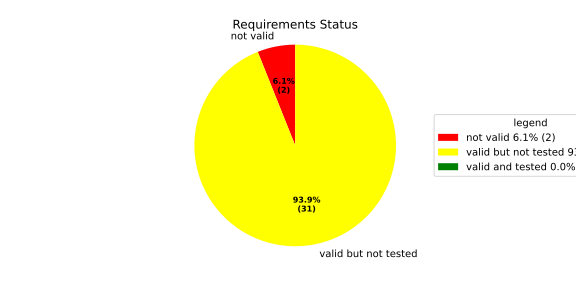
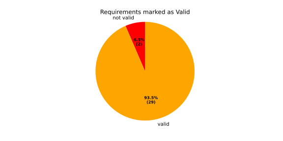
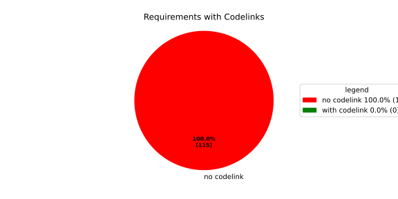
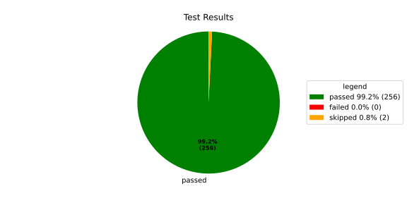
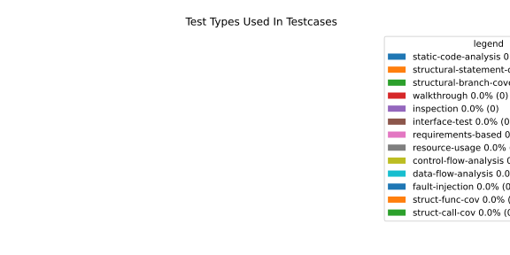
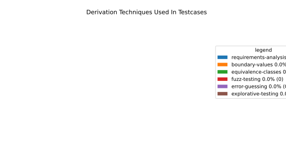

Verification Statistics#
Overview#

In Detail#



Failed Tests
Hint: This table should be empty. Before a PR can be merged all tests have to be successful.
No needs passed the filters
Skipped / Disabled Tests
testcase |
Result |
Fully Verifies |
Partially Verifies |
Test Type |
Derivation Technique |
link |
|---|---|---|---|---|---|---|
ValidateRangeTest/4__RejectsValueAboveMax |
skipped |
interface-test |
explorative-testing |
|||
ValidateRangeTest/4__RejectsValueBelowMin |
skipped |
interface-test |
explorative-testing |
All passed Tests#
testcase |
Result |
Fully Verifies |
Partially Verifies |
Test Type |
Derivation Technique |
link |
|---|---|---|---|---|---|---|
AliveImplTest__DoesNotThrowWhenInterfacePathEnvVarIsSet |
passed |
interface-test |
explorative-testing |
testcase__AliveImplTest__DoesNotThrowWhenInterfacePathEnvVarIsSet_xpewu |
||
AliveImplTest__ReportCheckpointSafeWhenNotConnected |
passed |
interface-test |
explorative-testing |
testcase__AliveImplTest__ReportCheckpointSafeWhenNotConnected_ppvuc |
||
AliveImplTest__ThrowsWhenInterfacePathEnvVarIsNotSet |
passed |
interface-test |
explorative-testing |
testcase__AliveImplTest__ThrowsWhenInterfacePathEnvVarIsNotSet_ekxfw |
||
AliveSupervisionTest__AliveDebouncesThroughFailedBeforeExpired |
passed |
interface-test |
explorative-testing |
testcase__AliveSupervisionTest__AliveDebouncesThroughFailedBeforeExpired_mlnbe |
||
AliveSupervisionTest__AliveReportsEnqueueFailureWhenRingBufferFull |
passed |
interface-test |
explorative-testing |
testcase__AliveSupervisionTest__AliveReportsEnqueueFailureWhenRingBufferFull_byhrd |
||
AliveSupervisionTest__AliveStaysOkWithCorrectHeartbeats |
passed |
interface-test |
explorative-testing |
testcase__AliveSupervisionTest__AliveStaysOkWithCorrectHeartbeats_vekof |
||
AliveSupervisionTest__AliveTransitionsOkToExpiredOnMissingHeartbeat |
passed |
interface-test |
explorative-testing |
testcase__AliveSupervisionTest__AliveTransitionsOkToExpiredOnMissingHeartbeat_jymxo |
||
AliveSupervisionTest__DeactivatesOnProcessCrash |
passed |
interface-test |
explorative-testing |
testcase__AliveSupervisionTest__DeactivatesOnProcessCrash_ypejs |
||
AliveSupervisionTest__DeactivatesOnProcessSigterm |
passed |
interface-test |
explorative-testing |
testcase__AliveSupervisionTest__DeactivatesOnProcessSigterm_hzaal |
||
AliveSupervisionTest__IgnoresIrrelevantProcessStates |
passed |
interface-test |
explorative-testing |
testcase__AliveSupervisionTest__IgnoresIrrelevantProcessStates_aolvb |
||
AliveSupervisionTest__MaxIndicationViolationExpires |
passed |
interface-test |
explorative-testing |
testcase__AliveSupervisionTest__MaxIndicationViolationExpires_whhhi |
||
AliveSupervisionTest__ReactivatesAfterCrash |
passed |
interface-test |
explorative-testing |
|||
ApplicationTypes/ApplicationTypeTest__ConvertsToExpectedValue/Native |
passed |
interface-test |
explorative-testing |
testcase__ApplicationTypes/ApplicationTypeTest__ConvertsToExpectedValue/Native_yxxcz |
||
ApplicationTypes/ApplicationTypeTest__ConvertsToExpectedValue/Reporting |
passed |
interface-test |
explorative-testing |
testcase__ApplicationTypes/ApplicationTypeTest__ConvertsToExpectedValue/Reporting_wcfwr |
||
ApplicationTypes/ApplicationTypeTest__ConvertsToExpectedValue/ReportingAndSupervised |
passed |
interface-test |
explorative-testing |
testcase__ApplicationTypes/ApplicationTypeTest__ConvertsToExpectedValue/ReportingAndSupervised_yxgad |
||
ApplicationTypes/ApplicationTypeTest__ConvertsToExpectedValue/StateManager |
passed |
interface-test |
explorative-testing |
testcase__ApplicationTypes/ApplicationTypeTest__ConvertsToExpectedValue/StateManager_ivuzc |
||
ConverterTest__ConvertAliveSupervisionMissingCycleReturnsError |
passed |
interface-test |
explorative-testing |
testcase__ConverterTest__ConvertAliveSupervisionMissingCycleReturnsError_bifzg |
||
ConverterTest__ConvertAliveSupervisionNullReturnsDefault |
passed |
interface-test |
explorative-testing |
testcase__ConverterTest__ConvertAliveSupervisionNullReturnsDefault_clyua |
||
ConverterTest__ConvertAliveSupervisionValid |
passed |
interface-test |
explorative-testing |
|||
ConverterTest__ConvertApplicationProfileMissingSelfTerminatingReturnsError |
passed |
interface-test |
explorative-testing |
testcase__ConverterTest__ConvertApplicationProfileMissingSelfTerminatingReturnsError_zddjb |
||
ConverterTest__ConvertApplicationProfileMissingTypeReturnsError |
passed |
interface-test |
explorative-testing |
testcase__ConverterTest__ConvertApplicationProfileMissingTypeReturnsError_zrfcs |
||
ConverterTest__ConvertApplicationProfileValid |
passed |
interface-test |
explorative-testing |
testcase__ConverterTest__ConvertApplicationProfileValid_oohxq |
||
ConverterTest__ConvertComponentAliveSupervisionBothIndicationsAbsentReturnsError |
passed |
interface-test |
explorative-testing |
testcase__ConverterTest__ConvertComponentAliveSupervisionBothIndicationsAbsentReturnsError_gvtfi |
||
ConverterTest__ConvertComponentAliveSupervisionMissingReportingCycleReturnsError |
passed |
interface-test |
explorative-testing |
testcase__ConverterTest__ConvertComponentAliveSupervisionMissingReportingCycleReturnsError_ajymy |
||
ConverterTest__ConvertComponentAliveSupervisionMissingToleranceReturnsError |
passed |
interface-test |
explorative-testing |
testcase__ConverterTest__ConvertComponentAliveSupervisionMissingToleranceReturnsError_lgrhj |
||
ConverterTest__ConvertComponentAliveSupervisionNullReturnsDefault |
passed |
interface-test |
explorative-testing |
testcase__ConverterTest__ConvertComponentAliveSupervisionNullReturnsDefault_xhaus |
||
ConverterTest__ConvertComponentAliveSupervisionOnlyMaxIndicationsPresent |
passed |
interface-test |
explorative-testing |
testcase__ConverterTest__ConvertComponentAliveSupervisionOnlyMaxIndicationsPresent_smwht |
||
ConverterTest__ConvertComponentAliveSupervisionOnlyMinIndicationsPresent |
passed |
interface-test |
explorative-testing |
testcase__ConverterTest__ConvertComponentAliveSupervisionOnlyMinIndicationsPresent_ybbrr |
||
ConverterTest__ConvertComponentAliveSupervisionValid |
passed |
interface-test |
explorative-testing |
testcase__ConverterTest__ConvertComponentAliveSupervisionValid_ijedh |
||
ConverterTest__ConvertComponentsValid |
passed |
interface-test |
explorative-testing |
|||
ConverterTest__ConvertComponentsWithInvalidComponentReturnsError |
passed |
interface-test |
explorative-testing |
testcase__ConverterTest__ConvertComponentsWithInvalidComponentReturnsError_wridc |
||
ConverterTest__ConvertComponentValid |
passed |
interface-test |
explorative-testing |
|||
ConverterTest__ConvertDeploymentConfigMissingReadyTimeoutReturnsError |
passed |
interface-test |
explorative-testing |
testcase__ConverterTest__ConvertDeploymentConfigMissingReadyTimeoutReturnsError_ljzfl |
||
ConverterTest__ConvertDeploymentConfigMissingShutdownTimeoutReturnsError |
passed |
interface-test |
explorative-testing |
testcase__ConverterTest__ConvertDeploymentConfigMissingShutdownTimeoutReturnsError_vyqye |
||
ConverterTest__ConvertDeploymentConfigValid |
passed |
interface-test |
explorative-testing |
|||
ConverterTest__ConvertEnvironmentalVariables |
passed |
interface-test |
explorative-testing |
testcase__ConverterTest__ConvertEnvironmentalVariables_fnhgo |
||
ConverterTest__ConvertEnvironmentalVariablesNullReturnsEmpty |
passed |
interface-test |
explorative-testing |
testcase__ConverterTest__ConvertEnvironmentalVariablesNullReturnsEmpty_vglrx |
||
ConverterTest__ConvertFallbackRunTargetMissingTimeoutReturnsError |
passed |
interface-test |
explorative-testing |
testcase__ConverterTest__ConvertFallbackRunTargetMissingTimeoutReturnsError_aevly |
||
ConverterTest__ConvertFallbackRunTargetValid |
passed |
interface-test |
explorative-testing |
testcase__ConverterTest__ConvertFallbackRunTargetValid_nexxj |
||
ConverterTest__ConvertReadyConditionMissingProcessStateReturnsError |
passed |
interface-test |
explorative-testing |
testcase__ConverterTest__ConvertReadyConditionMissingProcessStateReturnsError_ileav |
||
ConverterTest__ConvertReadyConditionValid |
passed |
interface-test |
explorative-testing |
|||
ConverterTest__ConvertRestartActionMissingFieldsReturnsError |
passed |
interface-test |
explorative-testing |
testcase__ConverterTest__ConvertRestartActionMissingFieldsReturnsError_aapjb |
||
ConverterTest__ConvertRestartActionNullReturnsNullopt |
passed |
interface-test |
explorative-testing |
testcase__ConverterTest__ConvertRestartActionNullReturnsNullopt_ifvyd |
||
ConverterTest__ConvertRestartActionValid |
passed |
interface-test |
explorative-testing |
|||
ConverterTest__ConvertRunTargetMissingTransitionTimeoutReturnsError |
passed |
interface-test |
explorative-testing |
testcase__ConverterTest__ConvertRunTargetMissingTransitionTimeoutReturnsError_ynekv |
||
ConverterTest__ConvertRunTargetsValid |
passed |
interface-test |
explorative-testing |
|||
ConverterTest__ConvertRunTargetsWithInvalidRunTargetReturnsError |
passed |
interface-test |
explorative-testing |
testcase__ConverterTest__ConvertRunTargetsWithInvalidRunTargetReturnsError_ldlox |
||
ConverterTest__ConvertRunTargetValid |
passed |
interface-test |
explorative-testing |
|||
ConverterTest__ConvertSandboxMissingGidReturnsError |
passed |
interface-test |
explorative-testing |
testcase__ConverterTest__ConvertSandboxMissingGidReturnsError_veeel |
||
ConverterTest__ConvertSandboxMissingSchedulingPolicyReturnsError |
passed |
interface-test |
explorative-testing |
testcase__ConverterTest__ConvertSandboxMissingSchedulingPolicyReturnsError_pkfts |
||
ConverterTest__ConvertSandboxMissingSchedulingPriorityReturnsError |
passed |
interface-test |
explorative-testing |
testcase__ConverterTest__ConvertSandboxMissingSchedulingPriorityReturnsError_xzdho |
||
ConverterTest__ConvertSandboxMissingUidReturnsError |
passed |
interface-test |
explorative-testing |
testcase__ConverterTest__ConvertSandboxMissingUidReturnsError_ogfku |
||
ConverterTest__ConvertSandboxSupplementaryGidOutOfRangeReturnsError |
passed |
interface-test |
explorative-testing |
testcase__ConverterTest__ConvertSandboxSupplementaryGidOutOfRangeReturnsError_zavpx |
||
ConverterTest__ConvertSandboxUidOutOfRangeReturnsError |
passed |
interface-test |
explorative-testing |
testcase__ConverterTest__ConvertSandboxUidOutOfRangeReturnsError_mcuaf |
||
ConverterTest__ConvertSandboxValid |
passed |
interface-test |
explorative-testing |
|||
ConverterTest__ConvertSwitchRunTargetActionNullReturnsNullopt |
passed |
interface-test |
explorative-testing |
testcase__ConverterTest__ConvertSwitchRunTargetActionNullReturnsNullopt_zmitx |
||
ConverterTest__ConvertSwitchRunTargetActionValid |
passed |
interface-test |
explorative-testing |
testcase__ConverterTest__ConvertSwitchRunTargetActionValid_tdklr |
||
ConverterTest__ConvertWatchdogMissingDeactivateReturnsError |
passed |
interface-test |
explorative-testing |
testcase__ConverterTest__ConvertWatchdogMissingDeactivateReturnsError_gzwjt |
||
ConverterTest__ConvertWatchdogMissingMagicCloseReturnsError |
passed |
interface-test |
explorative-testing |
testcase__ConverterTest__ConvertWatchdogMissingMagicCloseReturnsError_gexxk |
||
ConverterTest__ConvertWatchdogMissingMaxTimeoutReturnsError |
passed |
interface-test |
explorative-testing |
testcase__ConverterTest__ConvertWatchdogMissingMaxTimeoutReturnsError_lffxm |
||
ConverterTest__ConvertWatchdogNullReturnsNullopt |
passed |
interface-test |
explorative-testing |
testcase__ConverterTest__ConvertWatchdogNullReturnsNullopt_irsdk |
||
ConverterTest__ConvertWatchdogValid |
passed |
interface-test |
explorative-testing |
|||
DeadlineFixture__Start_AlreadyRunning |
passed |
interface-test |
explorative-testing |
|||
DeadlineFixture__Start_Succeeds |
passed |
interface-test |
explorative-testing |
|||
DeadlineMonitorBuilderFixture__AddDeadline_Succeeds |
passed |
interface-test |
explorative-testing |
testcase__DeadlineMonitorBuilderFixture__AddDeadline_Succeeds_nagke |
||
DeadlineMonitorBuilderFixture__New_Succeeds |
passed |
interface-test |
explorative-testing |
|||
DeadlineMonitorFixture__GetDeadline_Succeeds |
passed |
interface-test |
explorative-testing |
testcase__DeadlineMonitorFixture__GetDeadline_Succeeds_tmltf |
||
DeadlineMonitorFixture__GetDeadline_Unknown |
passed |
interface-test |
explorative-testing |
|||
EnumConversionTest__ConvertSchedulingPolicyUnsupported |
passed |
interface-test |
explorative-testing |
testcase__EnumConversionTest__ConvertSchedulingPolicyUnsupported_iavqm |
||
EnvironmentTest__AddIncreasesSize |
passed |
interface-test |
explorative-testing |
|||
EnvironmentTest__DefaultConstructedIsEmpty |
passed |
interface-test |
explorative-testing |
|||
EnvironmentTest__EmptyEnvironmentEnvpIsNullTerminated |
passed |
interface-test |
explorative-testing |
testcase__EnvironmentTest__EmptyEnvironmentEnvpIsNullTerminated_wwumw |
||
EnvironmentTest__EnvpReturnsNullTerminatedArray |
passed |
interface-test |
explorative-testing |
testcase__EnvironmentTest__EnvpReturnsNullTerminatedArray_aubkv |
||
EnvironmentTest__EnvpWithMultipleEntries |
passed |
interface-test |
explorative-testing |
|||
EnvironmentTest__MoveAssignmentPreservesEntries |
passed |
interface-test |
explorative-testing |
testcase__EnvironmentTest__MoveAssignmentPreservesEntries_vkydj |
||
EnvironmentTest__MoveConstructorPreservesEntries |
passed |
interface-test |
explorative-testing |
testcase__EnvironmentTest__MoveConstructorPreservesEntries_upclt |
||
EnvironmentTest__RangeBasedForLoopWorks |
passed |
interface-test |
explorative-testing |
|||
EnvironmentTest__ReserveAndAddAvoidReallocation |
passed |
interface-test |
explorative-testing |
testcase__EnvironmentTest__ReserveAndAddAvoidReallocation_lgzmu |
||
EnvironmentTest__SsoLengthStringSurvivesReallocation |
passed |
interface-test |
explorative-testing |
testcase__EnvironmentTest__SsoLengthStringSurvivesReallocation_jfmtl |
||
EnvironmentVariableTest__CStrReturnsKeyEqualsValue |
passed |
interface-test |
explorative-testing |
testcase__EnvironmentVariableTest__CStrReturnsKeyEqualsValue_rkwan |
||
EnvironmentVariableTest__EmptyValue |
passed |
interface-test |
explorative-testing |
|||
EnvironmentVariableTest__KeyAndValueAreAccessible |
passed |
interface-test |
explorative-testing |
testcase__EnvironmentVariableTest__KeyAndValueAreAccessible_kcrth |
||
EnvironmentVariableTest__ValueContainingEquals |
passed |
interface-test |
explorative-testing |
testcase__EnvironmentVariableTest__ValueContainingEquals_apzgz |
||
ExecErrorDomainTest__AllKnownCodesHaveDistinctMessages |
passed |
interface-test |
explorative-testing |
testcase__ExecErrorDomainTest__AllKnownCodesHaveDistinctMessages_qpoka |
||
ExecErrorDomainTest__AllKnownCodesReturnNonEmptyMessage |
passed |
interface-test |
explorative-testing |
testcase__ExecErrorDomainTest__AllKnownCodesReturnNonEmptyMessage_bawzg |
||
ExecErrorDomainTest__UnknownCodeReturnsNonEmptyMessage |
passed |
interface-test |
explorative-testing |
testcase__ExecErrorDomainTest__UnknownCodeReturnsNonEmptyMessage_kkwpr |
||
FlatbufferConfigLoaderTest__CorruptedBufferReturnsInvalidFormat |
passed |
interface-test |
explorative-testing |
testcase__FlatbufferConfigLoaderTest__CorruptedBufferReturnsInvalidFormat_twyac |
||
FlatbufferConfigLoaderTest__LoadAliveSupervision |
passed |
interface-test |
explorative-testing |
testcase__FlatbufferConfigLoaderTest__LoadAliveSupervision_hhuux |
||
FlatbufferConfigLoaderTest__LoadBufferFailsWithGenericErrorReturnsGeneralError |
passed |
interface-test |
explorative-testing |
testcase__FlatbufferConfigLoaderTest__LoadBufferFailsWithGenericErrorReturnsGeneralError_kmatm |
||
FlatbufferConfigLoaderTest__LoadBufferFailsWithNoSuchFileReturnsFileNotFound |
passed |
interface-test |
explorative-testing |
testcase__FlatbufferConfigLoaderTest__LoadBufferFailsWithNoSuchFileReturnsFileNotFound_yzlra |
||
FlatbufferConfigLoaderTest__LoadBufferFailsWithPermissionDeniedReturnsInsufficientPermission |
passed |
interface-test |
explorative-testing |
|||
FlatbufferConfigLoaderTest__LoadComponentAliveSupervision |
passed |
interface-test |
explorative-testing |
testcase__FlatbufferConfigLoaderTest__LoadComponentAliveSupervision_fwfad |
||
FlatbufferConfigLoaderTest__LoadEnvironmentalVariables |
passed |
interface-test |
explorative-testing |
testcase__FlatbufferConfigLoaderTest__LoadEnvironmentalVariables_wsosu |
||
FlatbufferConfigLoaderTest__LoadFallbackRunTarget |
passed |
interface-test |
explorative-testing |
testcase__FlatbufferConfigLoaderTest__LoadFallbackRunTarget_wduqm |
||
FlatbufferConfigLoaderTest__LoadMinimalConfig |
passed |
interface-test |
explorative-testing |
testcase__FlatbufferConfigLoaderTest__LoadMinimalConfig_hdkck |
||
FlatbufferConfigLoaderTest__LoadMultipleComponents |
passed |
interface-test |
explorative-testing |
testcase__FlatbufferConfigLoaderTest__LoadMultipleComponents_abpom |
||
FlatbufferConfigLoaderTest__LoadRestartRecoveryAction |
passed |
interface-test |
explorative-testing |
testcase__FlatbufferConfigLoaderTest__LoadRestartRecoveryAction_wyfqg |
||
FlatbufferConfigLoaderTest__LoadRunTargets |
passed |
interface-test |
explorative-testing |
|||
FlatbufferConfigLoaderTest__LoadSandbox |
passed |
interface-test |
explorative-testing |
|||
FlatbufferConfigLoaderTest__LoadSingleComponent |
passed |
interface-test |
explorative-testing |
testcase__FlatbufferConfigLoaderTest__LoadSingleComponent_yidty |
||
FlatbufferConfigLoaderTest__LoadSwitchRunTargetAction |
passed |
interface-test |
explorative-testing |
testcase__FlatbufferConfigLoaderTest__LoadSwitchRunTargetAction_uchgp |
||
FlatbufferConfigLoaderTest__LoadWatchdog |
passed |
interface-test |
explorative-testing |
|||
FlatbufferConfigLoaderTest__MissingSchemaVersionReturnsInvalidFormat |
passed |
interface-test |
explorative-testing |
testcase__FlatbufferConfigLoaderTest__MissingSchemaVersionReturnsInvalidFormat_qqmfn |
||
FlatbufferConfigLoaderTest__OptionalReadyConditionAbsent |
passed |
interface-test |
explorative-testing |
testcase__FlatbufferConfigLoaderTest__OptionalReadyConditionAbsent_lhddx |
||
FlatbufferConfigLoaderTest__OptionalWatchdogAbsent |
passed |
interface-test |
explorative-testing |
testcase__FlatbufferConfigLoaderTest__OptionalWatchdogAbsent_pkhkp |
||
FlatbufferConfigLoaderTest__WrongSchemaVersionReturnsUnsupportedVersion |
passed |
interface-test |
explorative-testing |
testcase__FlatbufferConfigLoaderTest__WrongSchemaVersionReturnsUnsupportedVersion_zrbjv |
||
HealthMonitor__GetDeadlineMonitor_Available |
passed |
|||||
HealthMonitor__GetDeadlineMonitor_Taken |
passed |
|||||
HealthMonitor__GetDeadlineMonitor_Unknown |
passed |
|||||
HealthMonitor__GetHeartbeatMonitor_Available |
passed |
testcase__HealthMonitor__GetHeartbeatMonitor_Available_aacat |
||||
HealthMonitor__GetHeartbeatMonitor_Taken |
passed |
|||||
HealthMonitor__GetHeartbeatMonitor_Unknown |
passed |
|||||
HealthMonitor__GetLogicMonitor_Available |
passed |
|||||
HealthMonitor__GetLogicMonitor_Taken |
passed |
|||||
HealthMonitor__GetLogicMonitor_Unknown |
passed |
|||||
HealthMonitor__Start_MonitorsNotTaken |
passed |
|||||
HealthMonitor__Start_Succeeds |
passed |
|||||
HealthMonitorBuilderFixture__Build_InvalidCycles |
passed |
interface-test |
explorative-testing |
testcase__HealthMonitorBuilderFixture__Build_InvalidCycles_pdigk |
||
HealthMonitorBuilderFixture__Build_NoMonitors |
passed |
interface-test |
explorative-testing |
testcase__HealthMonitorBuilderFixture__Build_NoMonitors_ktcve |
||
HealthMonitorBuilderFixture__Build_Succeeds |
passed |
interface-test |
explorative-testing |
|||
HealthMonitorBuilderFixture__New_Succeeds |
passed |
interface-test |
explorative-testing |
|||
HealthMonitorTest__Integrated |
passed |
interface-test |
explorative-testing |
|||
HeartbeatMonitor__Heartbeat_Succeeds |
passed |
interface-test |
explorative-testing |
|||
HeartbeatMonitorBuilder__New_Succeeds |
passed |
interface-test |
explorative-testing |
|||
IdentifierHashTest__IdentifierHash_default_created |
passed |
interface-test |
explorative-testing |
testcase__IdentifierHashTest__IdentifierHash_default_created_yhhvi |
||
IdentifierHashTest__IdentifierHash_EqualityOperators |
passed |
interface-test |
explorative-testing |
testcase__IdentifierHashTest__IdentifierHash_EqualityOperators_nnsuj |
||
IdentifierHashTest__IdentifierHash_invalid_hash_no_string_representation |
passed |
interface-test |
explorative-testing |
testcase__IdentifierHashTest__IdentifierHash_invalid_hash_no_string_representation_rxowr |
||
IdentifierHashTest__IdentifierHash_LessThanOperator |
passed |
interface-test |
explorative-testing |
testcase__IdentifierHashTest__IdentifierHash_LessThanOperator_rnbax |
||
IdentifierHashTest__IdentifierHash_no_dangling_pointer_after_source_string_dies |
passed |
interface-test |
explorative-testing |
testcase__IdentifierHashTest__IdentifierHash_no_dangling_pointer_after_source_string_dies_qsjin |
||
IdentifierHashTest__IdentifierHash_with_string_created |
passed |
interface-test |
explorative-testing |
testcase__IdentifierHashTest__IdentifierHash_with_string_created_aygdm |
||
IdentifierHashTest__IdentifierHash_with_string_view_created |
passed |
interface-test |
explorative-testing |
testcase__IdentifierHashTest__IdentifierHash_with_string_view_created_dbpol |
||
LogicMonitorBuilderFixture__AddState_Succeeds |
passed |
interface-test |
explorative-testing |
testcase__LogicMonitorBuilderFixture__AddState_Succeeds_axdxj |
||
LogicMonitorBuilderFixture__New_Succeeds |
passed |
interface-test |
explorative-testing |
|||
LogicMonitorFixture__State_Invalid |
passed |
interface-test |
explorative-testing |
|||
LogicMonitorFixture__State_Succeeds |
passed |
interface-test |
explorative-testing |
|||
LogicMonitorFixture__Transition_Invalid |
passed |
interface-test |
explorative-testing |
|||
LogicMonitorFixture__Transition_Succeeds |
passed |
interface-test |
explorative-testing |
|||
LogicMonitorFixture__Transition_Unknown |
passed |
interface-test |
explorative-testing |
|||
MonitorIfDaemonTest__Active_CheckpointDataForwarded |
passed |
interface-test |
explorative-testing |
testcase__MonitorIfDaemonTest__Active_CheckpointDataForwarded_evumz |
||
MonitorIfDaemonTest__Active_FutureTimestamp_NotForwardedInCurrentCycle |
passed |
interface-test |
explorative-testing |
testcase__MonitorIfDaemonTest__Active_FutureTimestamp_NotForwardedInCurrentCycle_oycau |
||
MonitorIfDaemonTest__Active_FutureTimestampCheckpoint_ConsumedInLaterCycle |
passed |
interface-test |
explorative-testing |
testcase__MonitorIfDaemonTest__Active_FutureTimestampCheckpoint_ConsumedInLaterCycle_veyyy |
||
MonitorIfDaemonTest__Active_MultipleCheckpointsInOneCycle_AllForwarded |
passed |
interface-test |
explorative-testing |
testcase__MonitorIfDaemonTest__Active_MultipleCheckpointsInOneCycle_AllForwarded_gmbms |
||
MonitorIfDaemonTest__Active_NonMatchingCheckpointId_NotForwarded |
passed |
interface-test |
explorative-testing |
testcase__MonitorIfDaemonTest__Active_NonMatchingCheckpointId_NotForwarded_bohck |
||
MonitorIfDaemonTest__Active_OverflowDetected_TransitionsToInactiveOverflow |
passed |
interface-test |
explorative-testing |
testcase__MonitorIfDaemonTest__Active_OverflowDetected_TransitionsToInactiveOverflow_ovitk |
||
MonitorIfDaemonTest__Active_TwoAttachedCheckpoints_RoutedByCheckpointId |
passed |
interface-test |
explorative-testing |
testcase__MonitorIfDaemonTest__Active_TwoAttachedCheckpoints_RoutedByCheckpointId_skqhd |
||
MonitorIfDaemonTest__GetInterfaceName_ReturnsNameGivenAtConstruction |
passed |
interface-test |
explorative-testing |
testcase__MonitorIfDaemonTest__GetInterfaceName_ReturnsNameGivenAtConstruction_iaemz |
||
MonitorIfDaemonTest__InactiveOverflow_NoProcessRestart_DoesNotRepeatNotification |
passed |
interface-test |
explorative-testing |
testcase__MonitorIfDaemonTest__InactiveOverflow_NoProcessRestart_DoesNotRepeatNotification_gdbxg |
||
MonitorIfDaemonTest__InactiveOverflow_ProcessRestartFlag_ClearedAfterNotification |
passed |
interface-test |
explorative-testing |
testcase__MonitorIfDaemonTest__InactiveOverflow_ProcessRestartFlag_ClearedAfterNotification_pqfyy |
||
MonitorIfDaemonTest__InactiveOverflow_ProcessRestarts_PushesOverflowNotificationAgain |
passed |
interface-test |
explorative-testing |
|||
MonitorIfDaemonTest__InitiallyInactive_CheckForNewData_DoesNotNotifyCheckpoint |
passed |
interface-test |
explorative-testing |
testcase__MonitorIfDaemonTest__InitiallyInactive_CheckForNewData_DoesNotNotifyCheckpoint_wjrfl |
||
MonitorIfDaemonTest__ProcessOff_DeactivatesMonitor_NoFurtherDataForwarded |
passed |
interface-test |
explorative-testing |
testcase__MonitorIfDaemonTest__ProcessOff_DeactivatesMonitor_NoFurtherDataForwarded_uialh |
||
MonitorIfDaemonTest__ProcessOffBeforeActivation_RemainsInactive |
passed |
interface-test |
explorative-testing |
testcase__MonitorIfDaemonTest__ProcessOffBeforeActivation_RemainsInactive_kzzyy |
||
MonitorIfDaemonTest__ProcessRunning_ActivatesMonitorOnNextCheckForNewData |
passed |
interface-test |
explorative-testing |
testcase__MonitorIfDaemonTest__ProcessRunning_ActivatesMonitorOnNextCheckForNewData_fkkmk |
||
MonitorIfDaemonTest__ProcessStarting_AlsoActivatesMonitor |
passed |
interface-test |
explorative-testing |
testcase__MonitorIfDaemonTest__ProcessStarting_AlsoActivatesMonitor_xdkbg |
||
MPMCConcurrentQueueTest_Basic__LvaluePushCopiesItem |
passed |
testcase__MPMCConcurrentQueueTest_Basic__LvaluePushCopiesItem_oysfc |
||||
MPMCConcurrentQueueTest_Basic__PopReturnsNulloptOnSemaphoreWaitFailure |
passed |
testcase__MPMCConcurrentQueueTest_Basic__PopReturnsNulloptOnSemaphoreWaitFailure_rgznm |
||||
MPMCConcurrentQueueTest_Basic__PushAndPopPreservesOrder |
passed |
testcase__MPMCConcurrentQueueTest_Basic__PushAndPopPreservesOrder_aijdb |
||||
MPMCConcurrentQueueTest_Basic__PushAndPopSingleItem |
passed |
testcase__MPMCConcurrentQueueTest_Basic__PushAndPopSingleItem_jrxwz |
||||
MPMCConcurrentQueueTest_Basic__RvaluePushWorksWithMoveOnlyType |
passed |
testcase__MPMCConcurrentQueueTest_Basic__RvaluePushWorksWithMoveOnlyType_cxxaj |
||||
MPMCConcurrentQueueTest_Blocking__PopBlocksUntilItemAvailable |
passed |
testcase__MPMCConcurrentQueueTest_Blocking__PopBlocksUntilItemAvailable_ttwcx |
||||
MPMCConcurrentQueueTest_Blocking__PushBlocksWhenFull |
passed |
testcase__MPMCConcurrentQueueTest_Blocking__PushBlocksWhenFull_ecujf |
||||
MPMCConcurrentQueueTest_Blocking__StopUnblocksBlockedConsumer |
passed |
testcase__MPMCConcurrentQueueTest_Blocking__StopUnblocksBlockedConsumer_snzyr |
||||
MPMCConcurrentQueueTest_Blocking__StopUnblocksBlockedProducer |
passed |
testcase__MPMCConcurrentQueueTest_Blocking__StopUnblocksBlockedProducer_inddu |
||||
MPMCConcurrentQueueTest_MPMC__AllItemsDelivered |
passed |
testcase__MPMCConcurrentQueueTest_MPMC__AllItemsDelivered_ztjqe |
||||
MPMCConcurrentQueueTest_Stop__ItemsAreDroppedAfterStop |
passed |
testcase__MPMCConcurrentQueueTest_Stop__ItemsAreDroppedAfterStop_ragzw |
||||
MPMCConcurrentQueueTest_Stop__PopReturnsNulloptWhenStoppedAndEmpty |
passed |
testcase__MPMCConcurrentQueueTest_Stop__PopReturnsNulloptWhenStoppedAndEmpty_cevga |
||||
MPMCConcurrentQueueTest_Stop__PushReturnsFalseAfterStop |
passed |
testcase__MPMCConcurrentQueueTest_Stop__PushReturnsFalseAfterStop_qqnhw |
||||
MPMCConcurrentQueueTest_Timeout__PushWithTimeoutReturnsFalseWhenFull |
passed |
testcase__MPMCConcurrentQueueTest_Timeout__PushWithTimeoutReturnsFalseWhenFull_aeips |
||||
MPMCConcurrentQueueTest_Timeout__PushWithTimeoutSucceedsWhenSlotAvailable |
passed |
testcase__MPMCConcurrentQueueTest_Timeout__PushWithTimeoutSucceedsWhenSlotAvailable_klzpo |
||||
OsHandlerTest__WaitReturnsError_OsHandlerSleepsAndDoesNotCallFindTerminated |
passed |
interface-test |
explorative-testing |
testcase__OsHandlerTest__WaitReturnsError_OsHandlerSleepsAndDoesNotCallFindTerminated_cibtr |
||
OsHandlerTest__WaitReturnsErrorThenProcessId_HandlerRecoversAndInvokesCallback |
passed |
interface-test |
explorative-testing |
testcase__OsHandlerTest__WaitReturnsErrorThenProcessId_HandlerRecoversAndInvokesCallback_nqstd |
||
OsHandlerTest__WaitReturnsProcessId_FindTerminatedIsCalled |
passed |
interface-test |
explorative-testing |
testcase__OsHandlerTest__WaitReturnsProcessId_FindTerminatedIsCalled_chlsq |
||
OsHandlerTest__WaitReturnsProcessIdBeforeRegistration_LaterRegistrationReceivesStoredTermination |
passed |
interface-test |
explorative-testing |
|||
OsHandlerTest__WaitReturnsUnknownPidWhenMapIsFull_OutOfResourcesPathDoesNotNotifyCallbacks |
passed |
interface-test |
explorative-testing |
|||
OsHandlerTest__WaitReturnsZeroPid_OsHandlerSleepsAndDoesNotCallFindTerminated |
passed |
interface-test |
explorative-testing |
testcase__OsHandlerTest__WaitReturnsZeroPid_OsHandlerSleepsAndDoesNotCallFindTerminated_rkttz |
||
ProcessStateClient_UT__ProcessStateClient_ConstructReceiver_Succeeds |
passed |
interface-test |
explorative-testing |
testcase__ProcessStateClient_UT__ProcessStateClient_ConstructReceiver_Succeeds_hodwy |
||
ProcessStateClient_UT__ProcessStateClient_QueueMaxNumberOfProcesses_Succeeds |
passed |
interface-test |
explorative-testing |
testcase__ProcessStateClient_UT__ProcessStateClient_QueueMaxNumberOfProcesses_Succeeds_qohom |
||
ProcessStateClient_UT__ProcessStateClient_QueueOneProcess_Succeeds |
passed |
interface-test |
explorative-testing |
testcase__ProcessStateClient_UT__ProcessStateClient_QueueOneProcess_Succeeds_tmzfz |
||
ProcessStateClient_UT__ProcessStateClient_QueueOneProcessTooMany_Fails |
passed |
interface-test |
explorative-testing |
testcase__ProcessStateClient_UT__ProcessStateClient_QueueOneProcessTooMany_Fails_sspoj |
||
ProcessStates/ProcessStateTest__ConvertsToExpectedValue/Running |
passed |
interface-test |
explorative-testing |
testcase__ProcessStates/ProcessStateTest__ConvertsToExpectedValue/Running_hinlr |
||
ProcessStates/ProcessStateTest__ConvertsToExpectedValue/Terminated |
passed |
interface-test |
explorative-testing |
testcase__ProcessStates/ProcessStateTest__ConvertsToExpectedValue/Terminated_zrytn |
||
RecoveryClientTest__FIFOOrdering |
passed |
interface-test |
explorative-testing |
|||
RecoveryClientTest__GetNextRequest |
passed |
interface-test |
explorative-testing |
|||
RecoveryClientTest__GetNextRequestEmpty |
passed |
interface-test |
explorative-testing |
|||
RecoveryClientTest__RingBufferFull |
passed |
interface-test |
explorative-testing |
|||
RecoveryClientTest__SendSingleRequest |
passed |
interface-test |
explorative-testing |
|||
RunTest__AsPosixProcessCreatesAndDestroysLifeCycleManager |
passed |
testcase__RunTest__AsPosixProcessCreatesAndDestroysLifeCycleManager_sooex |
||||
RunTest__AsPosixProcessForwardsConstructorArgsToApplication |
passed |
testcase__RunTest__AsPosixProcessForwardsConstructorArgsToApplication_dmeur |
||||
RunTest__AsPosixProcessForwardsNonZeroExitCode |
passed |
testcase__RunTest__AsPosixProcessForwardsNonZeroExitCode_lldqd |
||||
RunTest__AsPosixProcessPassesCorrectApplicationTypeToRun |
passed |
testcase__RunTest__AsPosixProcessPassesCorrectApplicationTypeToRun_ajqwz |
||||
RunTest__AsPosixProcessReturnsZeroExitCode |
passed |
|||||
RunTest__RunApplicationFreeFunctionDelegatesToAsPosixProcess |
passed |
testcase__RunTest__RunApplicationFreeFunctionDelegatesToAsPosixProcess_ccing |
||||
RunTest__RunConstructorPassesArgcArgvToApplicationContext |
passed |
testcase__RunTest__RunConstructorPassesArgcArgvToApplicationContext_agerd |
||||
SafeProcessMapTest__ConcurrentFindAndInsertFromMultipleThreads |
passed |
interface-test |
explorative-testing |
testcase__SafeProcessMapTest__ConcurrentFindAndInsertFromMultipleThreads_kzfyg |
||
SafeProcessMapTest__ConcurrentInsertAndFindFromMultipleThreads |
passed |
interface-test |
explorative-testing |
testcase__SafeProcessMapTest__ConcurrentInsertAndFindFromMultipleThreads_hnyqj |
||
SafeProcessMapTest__ConstructWithZeroCapacity |
passed |
interface-test |
explorative-testing |
testcase__SafeProcessMapTest__ConstructWithZeroCapacity_gjmqg |
||
SafeProcessMapTest__FindTerminatedInsertsEntryWhenPidNotPresent |
passed |
interface-test |
explorative-testing |
testcase__SafeProcessMapTest__FindTerminatedInsertsEntryWhenPidNotPresent_ixtlt |
||
SafeProcessMapTest__FindTerminatedMatchesExistingInsertAndCallsCallback |
passed |
interface-test |
explorative-testing |
testcase__SafeProcessMapTest__FindTerminatedMatchesExistingInsertAndCallsCallback_ehuzb |
||
SafeProcessMapTest__FindTerminatedSamePidTwiceYieldsUntilInsertResolves |
passed |
interface-test |
explorative-testing |
testcase__SafeProcessMapTest__FindTerminatedSamePidTwiceYieldsUntilInsertResolves_hsekx |
||
SafeProcessMapTest__FindTerminatedWithNegativePidReturnsInvalid |
passed |
interface-test |
explorative-testing |
testcase__SafeProcessMapTest__FindTerminatedWithNegativePidReturnsInvalid_dewoh |
||
SafeProcessMapTest__FindTerminatedWorksAtMaxTreeDepth |
passed |
interface-test |
explorative-testing |
testcase__SafeProcessMapTest__FindTerminatedWorksAtMaxTreeDepth_adtzi |
||
SafeProcessMapTest__InsertBeyondCapacityReturnsOutOfMemory |
passed |
interface-test |
explorative-testing |
testcase__SafeProcessMapTest__InsertBeyondCapacityReturnsOutOfMemory_qjnie |
||
SafeProcessMapTest__InsertIntoEmptyTreeReturnsZero |
passed |
interface-test |
explorative-testing |
testcase__SafeProcessMapTest__InsertIntoEmptyTreeReturnsZero_zfbaq |
||
SafeProcessMapTest__InsertMatchesExistingFindTerminatedEntry |
passed |
interface-test |
explorative-testing |
testcase__SafeProcessMapTest__InsertMatchesExistingFindTerminatedEntry_fuwrp |
||
SafeProcessMapTest__InsertMultipleNodesThenFindTerminatedRemovesAll |
passed |
interface-test |
explorative-testing |
testcase__SafeProcessMapTest__InsertMultipleNodesThenFindTerminatedRemovesAll_fvowh |
||
SafeProcessMapTest__InsertSamePidTwiceYieldsUntilFindTerminatedResolves |
passed |
interface-test |
explorative-testing |
testcase__SafeProcessMapTest__InsertSamePidTwiceYieldsUntilFindTerminatedResolves_wzwyb |
||
SchedulingPolicies/SchedulingPolicyTest__ConvertsToExpectedPosixValue/SCHED_FIFO |
passed |
interface-test |
explorative-testing |
testcase__SchedulingPolicies/SchedulingPolicyTest__ConvertsToExpectedPosixValue/SCHED_FIFO_soddq |
||
SchedulingPolicies/SchedulingPolicyTest__ConvertsToExpectedPosixValue/SCHED_OTHER |
passed |
interface-test |
explorative-testing |
testcase__SchedulingPolicies/SchedulingPolicyTest__ConvertsToExpectedPosixValue/SCHED_OTHER_oigmk |
||
SchedulingPolicies/SchedulingPolicyTest__ConvertsToExpectedPosixValue/SCHED_RR |
passed |
interface-test |
explorative-testing |
testcase__SchedulingPolicies/SchedulingPolicyTest__ConvertsToExpectedPosixValue/SCHED_RR_pcjci |
||
score/health_monitor/src/rust/test-510566969/tests |
passed |
testcase__score/health_monitor/src/rust/test-510566969/tests_kjjlw |
||||
score/health_monitor/src/rust/test-827801879/loom_tests |
passed |
testcase__score/health_monitor/src/rust/test-827801879/loom_tests_cpmix |
||||
SecondsToMsTest__ConvertsPositiveValue |
passed |
interface-test |
explorative-testing |
|||
SecondsToMsTest__ConvertsZero |
passed |
interface-test |
explorative-testing |
|||
SecondsToMsTest__RejectsNegativeValue |
passed |
interface-test |
explorative-testing |
|||
SecondsToMsTest__RejectsOverflow |
passed |
interface-test |
explorative-testing |
|||
SecondsToMsTest__RejectsSubMillisecond |
passed |
interface-test |
explorative-testing |
|||
StringHelperTest__ConvertGidVectorReturnsEmptyWhenNull |
passed |
interface-test |
explorative-testing |
testcase__StringHelperTest__ConvertGidVectorReturnsEmptyWhenNull_jmcsr |
||
StringHelperTest__ConvertStringVectorReturnsEmptyWhenNull |
passed |
interface-test |
explorative-testing |
testcase__StringHelperTest__ConvertStringVectorReturnsEmptyWhenNull_zsuvv |
||
StringHelperTest__SafeStringReturnsEmptyWhenNull |
passed |
interface-test |
explorative-testing |
testcase__StringHelperTest__SafeStringReturnsEmptyWhenNull_crelr |
||
StringHelperTest__SafeStringReturnsValueWhenNotNull |
passed |
interface-test |
explorative-testing |
testcase__StringHelperTest__SafeStringReturnsValueWhenNotNull_anbko |
||
test_complex_monitoring |
passed |
|||||
test_crash_on_startup |
passed |
|||||
test_incorrect_config_non_reporting |
passed |
|||||
test_process_crash_monitoring |
passed |
|||||
test_process_launch_args |
passed |
|||||
test_process_wrong_binary_failure |
passed |
|||||
test_recovery_action_complex_rep_failure |
passed |
|||||
test_recovery_action_simple_rep_failure |
passed |
|||||
test_smoke |
passed |
|||||
test_switch_run_target |
passed |
|||||
TimeRangeFixture__MinMax |
passed |
interface-test |
explorative-testing |
|||
TimeRangeFixture__New_InvalidOrder |
passed |
interface-test |
explorative-testing |
|||
TimeRangeFixture__New_Succeeds |
passed |
interface-test |
explorative-testing |
|||
ValidateRangeTest/0__AcceptsMaxBoundary |
passed |
interface-test |
explorative-testing |
|||
ValidateRangeTest/0__AcceptsMinBoundary |
passed |
interface-test |
explorative-testing |
|||
ValidateRangeTest/0__AcceptsZero |
passed |
interface-test |
explorative-testing |
|||
ValidateRangeTest/0__RejectsValueAboveMax |
passed |
interface-test |
explorative-testing |
|||
ValidateRangeTest/0__RejectsValueBelowMin |
passed |
interface-test |
explorative-testing |
|||
ValidateRangeTest/1__AcceptsMaxBoundary |
passed |
interface-test |
explorative-testing |
|||
ValidateRangeTest/1__AcceptsMinBoundary |
passed |
interface-test |
explorative-testing |
|||
ValidateRangeTest/1__AcceptsZero |
passed |
interface-test |
explorative-testing |
|||
ValidateRangeTest/1__RejectsValueAboveMax |
passed |
interface-test |
explorative-testing |
|||
ValidateRangeTest/1__RejectsValueBelowMin |
passed |
interface-test |
explorative-testing |
|||
ValidateRangeTest/2__AcceptsMaxBoundary |
passed |
interface-test |
explorative-testing |
|||
ValidateRangeTest/2__AcceptsMinBoundary |
passed |
interface-test |
explorative-testing |
|||
ValidateRangeTest/2__AcceptsZero |
passed |
interface-test |
explorative-testing |
|||
ValidateRangeTest/2__RejectsValueAboveMax |
passed |
interface-test |
explorative-testing |
|||
ValidateRangeTest/2__RejectsValueBelowMin |
passed |
interface-test |
explorative-testing |
|||
ValidateRangeTest/3__AcceptsMaxBoundary |
passed |
interface-test |
explorative-testing |
|||
ValidateRangeTest/3__AcceptsMinBoundary |
passed |
interface-test |
explorative-testing |
|||
ValidateRangeTest/3__AcceptsZero |
passed |
interface-test |
explorative-testing |
|||
ValidateRangeTest/3__RejectsValueAboveMax |
passed |
interface-test |
explorative-testing |
|||
ValidateRangeTest/3__RejectsValueBelowMin |
passed |
interface-test |
explorative-testing |
|||
ValidateRangeTest/4__AcceptsMaxBoundary |
passed |
interface-test |
explorative-testing |
|||
ValidateRangeTest/4__AcceptsMinBoundary |
passed |
interface-test |
explorative-testing |
|||
ValidateRangeTest/4__AcceptsZero |
passed |
interface-test |
explorative-testing |
Details About Testcases#


Test Log Files#
tests-report/tests/integration/process_simple_rep_failure/process_simple_rep_failure/test.log
exec ${PAGER:-/usr/bin/less} "$0" || exit 1
Executing tests from //tests/integration/process_simple_rep_failure:process_simple_rep_failure
-----------------------------------------------------------------------------
============================= test session starts ==============================
platform linux -- Python 3.12.12, pytest-9.0.3, pluggy-1.5.0
rootdir: /home/runner/.bazel/sandbox/processwrapper-sandbox/1276/execroot/_main/bazel-out/k8-fastbuild/bin/tests/integration/process_simple_rep_failure/process_simple_rep_failure.runfiles/score_itf+
configfile: pytest.ini
collected 1 item
../score_itf+::test_recovery_action_simple_rep_failure
-------------------------------- live log setup --------------------------------
[2026-07-13 08:21:45.565] [INFO] [score.itf.plugins.docker] Executing custom image bootstrap command: tests/utils/environments/x86_64-linux/x86_64-linux.sh
[2026-07-13 08:21:45.774] [DEBUG] [docker.utils.config] Trying paths: ['/home/runner/.docker/config.json', '/home/runner/.dockercfg']
[2026-07-13 08:21:45.774] [DEBUG] [docker.utils.config] Found file at path: /home/runner/.docker/config.json
[2026-07-13 08:21:45.774] [DEBUG] [docker.auth] Found 'auths' section
[2026-07-13 08:21:45.774] [DEBUG] [docker.auth] Found entry (registry='https://index.docker.io/v1/', username='githubactions')
[2026-07-13 08:21:45.788] [DEBUG] [urllib3.connectionpool] http://localhost:None "GET /version HTTP/1.1" 200 823
[2026-07-13 08:21:45.868] [DEBUG] [urllib3.connectionpool] http://localhost:None "POST /v1.48/containers/create HTTP/1.1" 201 88
[2026-07-13 08:21:45.873] [DEBUG] [urllib3.connectionpool] http://localhost:None "GET /v1.48/containers/1668bb0c3403fdc321a582e4283519199ea21b49e632f2e409ef90721cf49614/json HTTP/1.1" 200 None
[2026-07-13 08:21:46.038] [DEBUG] [urllib3.connectionpool] http://localhost:None "POST /v1.48/containers/1668bb0c3403fdc321a582e4283519199ea21b49e632f2e409ef90721cf49614/start HTTP/1.1" 204 0
[2026-07-13 08:21:46.039] [DEBUG] [docker.utils.config] Trying paths: ['/home/runner/.docker/config.json', '/home/runner/.dockercfg']
[2026-07-13 08:21:46.039] [DEBUG] [docker.utils.config] Found file at path: /home/runner/.docker/config.json
[2026-07-13 08:21:46.039] [DEBUG] [docker.auth] Found 'auths' section
[2026-07-13 08:21:46.039] [DEBUG] [docker.auth] Found entry (registry='https://index.docker.io/v1/', username='githubactions')
[2026-07-13 08:21:46.048] [DEBUG] [urllib3.connectionpool] http://localhost:None "GET /version HTTP/1.1" 200 823
[2026-07-13 08:21:46.257] [INFO] [tests.utils.testing_utils.setup_test] Test case setup finished
-------------------------------- live log call ---------------------------------
[2026-07-13 08:21:46.389] [INFO] [launch_manager] 2026/07/13 08:21:46.906383 4170156 000 ECU1 LM LM log debug verbose 1
[2026-07-13 08:21:46.390] [INFO] [launch_manager] Launch Manager Started !!!!
[2026-07-13 08:21:46.390] [INFO] [launch_manager] 2026/07/13 08:21:46.906385 4170174 000 ECU1 LM LM log debug verbose 1
[2026-07-13 08:21:46.390] [INFO] [launch_manager] Loading LCM Configurations...
[2026-07-13 08:21:46.390] [INFO] [launch_manager] 2026/07/13 08:21:46.906385 4170176 000 ECU1 LM LM log debug verbose 1
[2026-07-13 08:21:46.390] [INFO] [launch_manager] ECUCFG_ENV_VAR_ROOTFOLDER set successfully
[2026-07-13 08:21:46.391] [INFO] [launch_manager] 2026/07/13 08:21:46.906386 4170178 000 ECU1 LM LM log debug verbose 5
[2026-07-13 08:21:46.391] [INFO] [launch_manager] FlatBufferParser::getModeGroupPgName: MainPG ( IdentifierHash: 18079021346025578134 )
[2026-07-13 08:21:46.393] [INFO] [launch_manager] 2026/07/13 08:21:46.906386 4170180 000 ECU1 LM LM log debug verbose 5
[2026-07-13 08:21:46.393] [INFO] [launch_manager] FlatBufferParser::getModeGroupPgStateName: MainPG/Startup ( IdentifierHash: 10504605499600661529 )
[2026-07-13 08:21:46.393] [INFO] [launch_manager] 2026/07/13 08:21:46.906386 4170182 000 ECU1 LM LM log debug verbose 5
[2026-07-13 08:21:46.393] [INFO] [launch_manager] FlatBufferParser::getModeGroupPgStateName: MainPG/run_target_app_does_report_krunning_in_time ( IdentifierHash: 11934981641920773349 )
[2026-07-13 08:21:46.393] [INFO] [launch_manager] 2026/07/13 08:21:46.906386 4170184 000 ECU1 LM LM log debug verbose 5
[2026-07-13 08:21:46.394] [INFO] [launch_manager] FlatBufferParser::getModeGroupPgStateName: MainPG/run_target_app_does_not_report_krunning_in_time ( IdentifierHash: 7672161913816744053 )
[2026-07-13 08:21:46.394] [INFO] [launch_manager] 2026/07/13 08:21:46.906387 4170186 000 ECU1 LM LM log debug verbose 5
[2026-07-13 08:21:46.394] [INFO] [launch_manager] FlatBufferParser::getModeGroupPgStateName: MainPG/Off ( IdentifierHash: 15281793077830264047 )
[2026-07-13 08:21:46.394] [INFO] [launch_manager] 2026/07/13 08:21:46.906387 4170188 000 ECU1 LM LM log debug verbose 5 FlatBufferParser::getModeGroupPgStateName: MainPG/fallback_run_target ( IdentifierHash: 4059409696722237352 )
[2026-07-13 08:21:46.394] [INFO] [launch_manager] 2026/07/13 08:21:46.906387 4170189 000 ECU1 LM LM log debug verbose 4 parseProcessConfigurations: Process index: 0 executable_path_: /tmp/tests/process_simple_rep_failure/control_client_mock
[2026-07-13 08:21:46.394] [INFO] [launch_manager] 2026/07/13 08:21:46.906387 4170189 000 ECU1 LM LM log debug verbose 3 Process control_client_mock is Reporting execution state
[2026-07-13 08:21:46.394] [INFO] [launch_manager] 2026/07/13 08:21:46.906387 4170189 000 ECU1 LM LM log debug verbose 1 Process is STATE_MANAGEMENT function Cluster Affiliation
[2026-07-13 08:21:46.394] [INFO] [launch_manager] 2026/07/13 08:21:46.906387 4170190 000 ECU1 LM LM log debug verbose 3 Process control_client_mock is Self terminating
[2026-07-13 08:21:46.394] [INFO] [launch_manager] 2026/07/13 08:21:46.906387 4170190 000 ECU1 LM LM log debug verbose 4 ParseProcessProcessGroup: id:::pg_name_: MainPG , pg_state_name_: MainPG/Startup
[2026-07-13 08:21:46.394] [INFO] [launch_manager] 2026/07/13 08:21:46.906387 4170190 000 ECU1 LM LM log debug verbose 4 ParseProcessProcessGroup: id:::pg_name_: MainPG , pg_state_name_: MainPG/run_target_app_does_report_krunning_in_time
[2026-07-13 08:21:46.394] [INFO] [launch_manager] 2026/07/13 08:21:46.906387 4170191 000 ECU1 LM LM log debug verbose 4 ParseProcessProcessGroup: id:::pg_name_: MainPG , pg_state_name_: MainPG/run_target_app_does_not_report_krunning_in_time
[2026-07-13 08:21:46.394] [INFO] [launch_manager] 2026/07/13 08:21:46.906387 4170191 000 ECU1 LM LM log debug verbose 4 ParseProcessProcessGroup: id:::pg_name_: MainPG , pg_state_name_: MainPG/fallback_run_target
[2026-07-13 08:21:46.394] [INFO] [launch_manager] 2026/07/13 08:21:46.906387 4170191 000 ECU1 LM LM log debug verbose 4 parseProcessConfigurations: Process index: 1 executable_path_: /tmp/tests/process_simple_rep_failure/process_simple_reporting
[2026-07-13 08:21:46.394] [INFO] [launch_manager] 2026/07/13 08:21:46.906387 4170192 000 ECU1 LM LM log debug verbose 3 Process component_does_report_krunning_in_time is Reporting execution state
[2026-07-13 08:21:46.395] [INFO] [launch_manager] 2026/07/13 08:21:46.906387 4170192 000 ECU1 LM LM log debug verbose 1 Process is NOT associated with any function Cluster Affiliation
[2026-07-13 08:21:46.395] [INFO] [launch_manager] 2026/07/13 08:21:46.906387 4170192 000 ECU1 LM LM log debug verbose 3 Process component_does_report_krunning_in_time is Self terminating
[2026-07-13 08:21:46.395] [INFO] [launch_manager] 2026/07/13 08:21:46.906387 4170192 000 ECU1 LM LM log debug verbose 4 ParseProcessProcessGroup: id:::pg_name_: MainPG , pg_state_name_: MainPG/run_target_app_does_report_krunning_in_time
[2026-07-13 08:21:46.395] [INFO] [launch_manager] 2026/07/13 08:21:46.906387 4170193 000 ECU1 LM LM log debug verbose 4 parseProcessConfigurations: Process index: 2 executable_path_: /tmp/tests/process_simple_rep_failure/process_simple_reporting
[2026-07-13 08:21:46.395] [INFO] [launch_manager] 2026/07/13 08:21:46.906387 4170193 000 ECU1 LM LM log debug verbose 3 Process component_does_not_report_krunning_in_time is Reporting execution state
[2026-07-13 08:21:46.395] [INFO] [launch_manager] 2026/07/13 08:21:46.906387 4170193 000 ECU1 LM LM log debug verbose 1 Process is NOT associated with any function Cluster Affiliation
[2026-07-13 08:21:46.395] [INFO] [launch_manager] 2026/07/13 08:21:46.906387 4170193 000 ECU1 LM LM log debug verbose 3 Process component_does_not_report_krunning_in_time is Self terminating
[2026-07-13 08:21:46.395] [INFO] [launch_manager] 2026/07/13 08:21:46.906387 4170193 000 ECU1 LM LM log debug verbose 4 ParseProcessProcessGroup: id:::pg_name_: MainPG , pg_state_name_: MainPG/run_target_app_does_not_report_krunning_in_time
[2026-07-13 08:21:46.396] [INFO] [launch_manager] 2026/07/13 08:21:46.906387 4170194 000 ECU1 LM LM log debug verbose 4 parseProcessConfigurations: Process index: 3 executable_path_: /tmp/tests/process_simple_rep_failure/verification_process
[2026-07-13 08:21:46.396] [INFO] [launch_manager] 2026/07/13 08:21:46.906387 4170194 000 ECU1 LM LM log debug verbose 3 Process verification_component is NOT Reporting execution state
[2026-07-13 08:21:46.396] [INFO] [launch_manager] 2026/07/13 08:21:46.906387 4170194 000 ECU1 LM LM log debug verbose 1 Process is NOT associated with any function Cluster Affiliation
[2026-07-13 08:21:46.397] [INFO] [launch_manager] 2026/07/13 08:21:46.906387 4170194 000 ECU1 LM LM log debug verbose 3 Process verification_component is Self terminating
[2026-07-13 08:21:46.397] [INFO] [launch_manager] 2026/07/13 08:21:46.906387 4170195 000 ECU1 LM LM log debug verbose 4 ParseProcessProcessGroup: id:::pg_name_: MainPG , pg_state_name_: MainPG/fallback_run_target
[2026-07-13 08:21:46.397] [INFO] [launch_manager] 2026/07/13 08:21:46.906387 4170195 000 ECU1 LM LM log debug verbose 3 Loading SWCL Nr. 0 Succeeded
[2026-07-13 08:21:46.397] [INFO] [launch_manager] 2026/07/13 08:21:46.906387 4170195 000 ECU1 LM LM log debug verbose 2 1 process group(s)
[2026-07-13 08:21:46.397] [INFO] [launch_manager] 2026/07/13 08:21:46.906387 4170195 000 ECU1 LM LM log debug verbose 3 Creating graph with 4 nodes
[2026-07-13 08:21:46.397] [INFO] [launch_manager] 2026/07/13 08:21:46.906387 4170195 000 ECU1 LM LM log debug verbose 1 Process groups initialized successfully
[2026-07-13 08:21:46.397] [INFO] [launch_manager] 2026/07/13 08:21:46.906387 4170196 000 ECU1 LM LM log debug verbose 1 Process Group initialization done
[2026-07-13 08:21:46.397] [INFO] [launch_manager] 2026/07/13 08:21:46.906387 4170196 000 ECU1 LM LM log debug verbose 3 Creating Safe Process Map with 4 entries
[2026-07-13 08:21:46.397] [INFO] [launch_manager] 2026/07/13 08:21:46.906388 4170196 000 ECU1 LM LM log debug verbose 2 Creating job queue with capacity 1024
[2026-07-13 08:21:46.397] [INFO] [launch_manager] 2026/07/13 08:21:46.906388 4170196 000 ECU1 LM LM log debug verbose 1 Creating worker threads...
[2026-07-13 08:21:46.397] [INFO] [launch_manager] 2026/07/13 08:21:46.906389 4170209 000 ECU1 LM LM log debug verbose 7 Process group index 0 (with name MainPG ) has 4 processes
[2026-07-13 08:21:46.397] [INFO] [launch_manager] 2026/07/13 08:21:46.906389 4170209 000 ECU1 LM LM log debug verbose 2 Creating process node with id: 0
[2026-07-13 08:21:46.402] [INFO] [launch_manager] 2026/07/13 08:21:46.906402 4170338 000 ECU1 LM LM log debug verbose 5
[2026-07-13 08:21:46.402] [INFO] [launch_manager] Process 0 has 0 start dependencies
[2026-07-13 08:21:46.402] [INFO] [launch_manager] 2026/07/13 08:21:46.906402 4170343 000 ECU1 LM LM log debug verbose 2
[2026-07-13 08:21:46.403] [INFO] [launch_manager] Creating process node with id: 1
[2026-07-13 08:21:46.403] [INFO] [launch_manager] 2026/07/13 08:21:46.906403 4170348 000 ECU1 LM LM log debug verbose 5
[2026-07-13 08:21:46.403] [INFO] [launch_manager] Process 1 has 0 start dependencies
[2026-07-13 08:21:46.403] [INFO] [launch_manager] 2026/07/13 08:21:46.906403 4170352 000 ECU1 LM LM log debug verbose 2
[2026-07-13 08:21:46.403] [INFO] [launch_manager] Creating process node with id: 2
[2026-07-13 08:21:46.404] [INFO] [launch_manager] 2026/07/13 08:21:46.906404 4170357 000 ECU1 LM LM log debug verbose 5
[2026-07-13 08:21:46.404] [INFO] [launch_manager] Process 2 has 0 start dependencies
[2026-07-13 08:21:46.404] [INFO] [launch_manager] 2026/07/13 08:21:46.906404 4170361 000 ECU1 LM LM log debug verbose 2
[2026-07-13 08:21:46.404] [INFO] [launch_manager] Creating process node with id: 3
[2026-07-13 08:21:46.405] [INFO] [launch_manager] 2026/07/13 08:21:46.906404 4170365 000 ECU1 LM LM log debug verbose 5
[2026-07-13 08:21:46.405] [INFO] [launch_manager] Process 3 has 0 start dependencies
[2026-07-13 08:21:46.405] [INFO] [launch_manager] 2026/07/13 08:21:46.906405 4170370 000 ECU1 LM LM log debug verbose 3
[2026-07-13 08:21:46.405] [INFO] [launch_manager] Created 4 process nodes
[2026-07-13 08:21:46.405] [INFO] [launch_manager] 2026/07/13 08:21:46.906405 4170374 000 ECU1 LM LM log debug verbose 2
[2026-07-13 08:21:46.406] [INFO] [launch_manager] Creating successor lists for process group MainPG
[2026-07-13 08:21:46.406] [INFO] [launch_manager] 2026/07/13 08:21:46.906406 4170379 000 ECU1 LM LM log debug verbose 1
[2026-07-13 08:21:46.406] [INFO] [launch_manager] Graphs initialized
[2026-07-13 08:21:46.407] [INFO] [launch_manager] 2026/07/13 08:21:46.906406 4170385 000 ECU1 LM Fcty log info verbose 2
[2026-07-13 08:21:46.407] [INFO] [launch_manager] Factory for FlatCfg MachineConfig: Loading of HM Machine Configuration succeeded.
[2026-07-13 08:21:46.407] [INFO] [launch_manager] 2026/07/13 08:21:46.906407 4170390 000 ECU1 LM Fcty log debug verbose 3
[2026-07-13 08:21:46.407] [INFO] [launch_manager] Factory for FlatCfg MachineConfig: Alive Supervision buffer size: 100
[2026-07-13 08:21:46.407] [INFO] [launch_manager] 2026/07/13 08:21:46.906407 4170394 000 ECU1 LM Fcty log debug verbose 3
[2026-07-13 08:21:46.408] [INFO] [launch_manager] Factory for FlatCfg MachineConfig: Monitor buffer size: 512
[2026-07-13 08:21:46.408] [INFO] [launch_manager] 2026/07/13 08:21:46.906408 4170398 000 ECU1 LM Fcty log debug verbose 4
[2026-07-13 08:21:46.408] [INFO] [launch_manager] Factory for FlatCfg MachineConfig: Periodicity: 50000000 ns
[2026-07-13 08:21:46.408] [INFO] [launch_manager] 2026/07/13 08:21:46.906408 4170403 000 ECU1 LM Fcty log debug verbose 3
[2026-07-13 08:21:46.408] [INFO] [launch_manager] Factory for FlatCfg MachineConfig: Configured watchdogs: 0
[2026-07-13 08:21:46.409] [INFO] [launch_manager] 2026/07/13 08:21:46.906409 4170407 000 ECU1 LM Fcty log warn verbose 2
[2026-07-13 08:21:46.409] [INFO] [launch_manager] Factory for FlatCfg MachineConfig: No watchdog configured
[2026-07-13 08:21:46.409] [INFO] [launch_manager] 2026/07/13 08:21:46.906409 4170412 000 ECU1 LM Fcty log debug verbose 2
[2026-07-13 08:21:46.409] [INFO] [launch_manager] Software Cluster Handler starts constructing workers: MainCluster
[2026-07-13 08:21:46.410] [INFO] [launch_manager] 2026/07/13 08:21:46.906409 4170416 000 ECU1 LM Fcty log debug verbose 3
[2026-07-13 08:21:46.410] [INFO] [launch_manager] Factory for FlatCfg AR24-11: Successfully created Process States: control_client_mock
[2026-07-13 08:21:46.410] [INFO] [launch_manager] 2026/07/13 08:21:46.906410 4170420 000 ECU1 LM Fcty log debug verbose 3
[2026-07-13 08:21:46.410] [INFO] [launch_manager] Factory for FlatCfg AR24-11: Number of constructed Process States: 1
[2026-07-13 08:21:46.411] [INFO] [launch_manager] 2026/07/13 08:21:46.906411 4170434 000 ECU1 LM Fcty log debug verbose 3
[2026-07-13 08:21:46.412] [INFO] [launch_manager] Factory for FlatCfg AR24-11: Successfully created Alive interface IPC with path: lifecycle_health_control_client_mock
[2026-07-13 08:21:46.412] [INFO] [launch_manager] 2026/07/13 08:21:46.906412 4170441 000 ECU1 LM Fcty log debug verbose 3
[2026-07-13 08:21:46.412] [INFO] [launch_manager] Factory for FlatCfg AR24-11: Number of constructed Alive interface IPCs: 1
[2026-07-13 08:21:46.413] [INFO] [launch_manager] 2026/07/13 08:21:46.906412 4170445 000 ECU1 LM Fcty log debug verbose 3
[2026-07-13 08:21:46.413] [INFO] [launch_manager] Factory for FlatCfg AR24-11: Successfully created Alive Interface: /lifecycle_health_control_client_mock
[2026-07-13 08:21:46.413] [INFO] [launch_manager] 2026/07/13 08:21:46.906413 4170451 000 ECU1 LM Fcty log debug verbose 3
[2026-07-13 08:21:46.413] [INFO] [launch_manager] Factory for FlatCfg AR24-11: Number of constructed Alive interfaces: 1
[2026-07-13 08:21:46.414] [INFO] [launch_manager] 2026/07/13 08:21:46.906414 4170457 000 ECU1 LM Fcty log debug verbose 3
[2026-07-13 08:21:46.414] [INFO] [launch_manager] Factory for FlatCfg AR24-11: Successfully created supervision checkpoint: control_client_mock_checkpoint
[2026-07-13 08:21:46.414] [INFO] [launch_manager] 2026/07/13 08:21:46.906414 4170462 000 ECU1 LM Fcty log debug verbose 3
[2026-07-13 08:21:46.414] [INFO] [launch_manager] Factory for FlatCfg AR24-11: Number of constructed supervision checkpoints: 1
[2026-07-13 08:21:46.415] [INFO] [launch_manager] 2026/07/13 08:21:46.906415 4170467 000 ECU1 LM Fcty log debug verbose 3
[2026-07-13 08:21:46.415] [INFO] [launch_manager] Factory for FlatCfg AR24-11: Successfully created alive supervision worker object: control_client_mock_alive_supervision
[2026-07-13 08:21:46.415] [INFO] [launch_manager] 2026/07/13 08:21:46.906415 4170472 000 ECU1 LM Fcty log debug verbose 3
[2026-07-13 08:21:46.415] [INFO] [launch_manager] Factory for FlatCfg AR24-11: Number of constructed alive supervisions: 1
[2026-07-13 08:21:46.416] [INFO] [launch_manager] 2026/07/13 08:21:46.906416 4170477 000 ECU1 LM Fcty log info verbose 2
[2026-07-13 08:21:46.416] [INFO] [launch_manager] Phm Daemon: The (configured) periodicity in [ns] is set to: 50000000
[2026-07-13 08:21:46.416] [INFO] [launch_manager] 2026/07/13 08:21:46.906416 4170482 000 ECU1 LM Fcty log debug verbose 2
[2026-07-13 08:21:46.416] [INFO] [launch_manager] Phm Daemon: The accuracy of the monotonic system clock in [ns] is: 1
[2026-07-13 08:21:46.417] [INFO] [launch_manager] 2026/07/13 08:21:46.906417 4170487 000 ECU1 LM Fcty log debug verbose 3
[2026-07-13 08:21:46.417] [INFO] [launch_manager] AliveMonitor: Initialization took 10 ms
[2026-07-13 08:21:46.417] [INFO] [launch_manager] 2026/07/13 08:21:46.906417 4170492 000 ECU1 LM LM log info verbose 1
[2026-07-13 08:21:46.417] [INFO] [launch_manager] LCM started successfully
[2026-07-13 08:21:46.418] [INFO] [launch_manager] 2026/07/13 08:21:46.906418 4170497 000 ECU1 LM LM log debug verbose 3
[2026-07-13 08:21:46.418] [INFO] [launch_manager] clock() at run(): 40.472000 ms
[2026-07-13 08:21:46.418] [INFO] [launch_manager] 2026/07/13 08:21:46.906418 4170502 000 ECU1 LM LM log debug verbose 1
[2026-07-13 08:21:46.419] [INFO] [launch_manager] =============STARTING MAINPG STARTUP STATE============
[2026-07-13 08:21:46.419] [INFO] [launch_manager] 2026/07/13 08:21:46.906419 4170507 000 ECU1 LM LM log debug verbose 9
[2026-07-13 08:21:46.419] [INFO] [launch_manager] Graph::setState changes from kSuccess to kInTransition for PG 0 ( MainPG )
[2026-07-13 08:21:46.419] [INFO] [launch_manager] 2026/07/13 08:21:46.906419 4170512 000 ECU1 LM LM log debug verbose 2
[2026-07-13 08:21:46.419] [INFO] [launch_manager] Stop Dependencies: 0
[2026-07-13 08:21:46.420] [INFO] [launch_manager] 2026/07/13 08:21:46.906420 4170517 000 ECU1 LM LM log debug verbose 2
[2026-07-13 08:21:46.420] [INFO] [launch_manager] Stop Dependencies: 0
[2026-07-13 08:21:46.420] [INFO] [launch_manager] 2026/07/13 08:21:46.906420 4170523 000 ECU1 LM LM log debug verbose 2
[2026-07-13 08:21:46.421] [INFO] [launch_manager] Stop Dependencies: 0
[2026-07-13 08:21:46.421] [INFO] [launch_manager] 2026/07/13 08:21:46.906421 4170528 000 ECU1 LM LM log debug verbose 2
[2026-07-13 08:21:46.421] [INFO] [launch_manager] Stop Dependencies: 0
[2026-07-13 08:21:46.421] [INFO] [launch_manager] 2026/07/13 08:21:46.906421 4170533 000 ECU1 LM LM log debug verbose 2
[2026-07-13 08:21:46.422] [INFO] [launch_manager] Start Dependencies: 0
[2026-07-13 08:21:46.422] [INFO] [launch_manager] 2026/07/13 08:21:46.906422 4170538 000 ECU1 LM LM log debug verbose 2
[2026-07-13 08:21:46.422] [INFO] [launch_manager] Start Dependencies: 0
[2026-07-13 08:21:46.422] [INFO] [launch_manager] 2026/07/13 08:21:46.906422 4170543 000 ECU1 LM LM log debug verbose 2
[2026-07-13 08:21:46.423] [INFO] [launch_manager] Start Dependencies: 0
[2026-07-13 08:21:46.423] [INFO] [launch_manager] 2026/07/13 08:21:46.906423 4170548 000 ECU1 LM LM log debug verbose 2
[2026-07-13 08:21:46.423] [INFO] [launch_manager] Start Dependencies: 0
[2026-07-13 08:21:46.427] [INFO] [launch_manager] 2026/07/13 08:21:46.906423 4170554 000 ECU1 LM LM log debug verbose 6 Starting process 0 ( control_client_mock ) from executable /tmp/tests/process_simple_rep_failure/control_client_mock
[2026-07-13 08:21:46.427] [INFO] [launch_manager] 2026/07/13 08:21:46.906423 4170555 000 ECU1 LM LM log debug verbose 3 Initialize the control client for control_client_mock process
[2026-07-13 08:21:46.427] [INFO] [launch_manager] 2026/07/13 08:21:46.906423 4170555 000 ECU1 LM LM log debug verbose 1 ControlClientChannel initialized
[2026-07-13 08:21:46.427] [INFO] [launch_manager] 2026/07/13 08:21:46.906424 4170563 000 ECU1 LM LM log debug verbose 4 startProcess pid 74 received for process: control_client_mock
[2026-07-13 08:21:46.427] [INFO] [launch_manager] 2026/07/13 08:21:46.906424 4170563 000 ECU1 LM LM log debug verbose 1 ControlClientChannel obtained from sync.
[2026-07-13 08:21:46.427] [INFO] [launch_manager] [==========] Running 1 test from 1 test suite.
[2026-07-13 08:21:46.427] [INFO] [launch_manager] [----------] Global test environment set-up.
[2026-07-13 08:21:46.427] [INFO] [launch_manager] [----------] 1 test from RecoveryActionSimpleRepFailure
[2026-07-13 08:21:46.427] [INFO] [launch_manager] [ RUN ] RecoveryActionSimpleRepFailure.ControlClientMock
[2026-07-13 08:21:46.428] [INFO] [launch_manager] [ STEP ] Report running from ControlClientMock
[2026-07-13 08:21:46.431] [INFO] [launch_manager] [ END STEP ] Report running from ControlClientMock
[2026-07-13 08:21:46.431] [INFO] [launch_manager] [ STEP ] Activate RunTarget run_target_app_does_report_krunning_in_time
[2026-07-13 08:21:46.431] [INFO] [launch_manager] 2026/07/13 08:21:46.906430 4170619 000 ECU1 LM LM log debug verbose 1 Request sent. Waiting for acknowledgment...
[2026-07-13 08:21:46.431] [INFO] [launch_manager] 2026/07/13 08:21:46.906430 4170622 000 ECU1 LM LM log debug verbose 8 ProcessGroupManager::ControlClientHandler: got request kSetStateRequest ( 16 ) re state MainPG/run_target_app_does_report_krunning_in_time of PG MainPG
[2026-07-13 08:21:46.431] [INFO] [launch_manager] 2026/07/13 08:21:46.906430 4170622 000 ECU1 LM LM log debug verbose 6 Pending state for process group MainPG changed from to MainPG/run_target_app_does_report_krunning_in_time
[2026-07-13 08:21:46.432] [INFO] [launch_manager] 2026/07/13 08:21:46.906430 4170623 000 ECU1 LM LM log debug verbose 9 Graph::setState changes from kInTransition to kCancelled for PG 0 ( MainPG )
[2026-07-13 08:21:46.432] [INFO] [launch_manager] 2026/07/13 08:21:46.906430 4170623 000 ECU1 LM LM log debug verbose 1 Control Client handler nudged
[2026-07-13 08:21:46.432] [INFO] [launch_manager] 2026/07/13 08:21:46.906430 4170623 000 ECU1 LM LM log debug verbose 1 Request acknowledged.
[2026-07-13 08:21:46.432] [INFO] [launch_manager] 2026/07/13 08:21:46.906430 4170625 000 ECU1 LM LM log debug verbose 1 Request acknowledged.
[2026-07-13 08:21:46.432] [INFO] [launch_manager] 2026/07/13 08:21:46.906430 4170626 000 ECU1 LM LM log debug verbose 8 Got kRunning for pid 74 ( control_client_mock ) process 0 of group MainPG
[2026-07-13 08:21:46.432] [INFO] [launch_manager] 2026/07/13 08:21:46.906431 4170626 000 ECU1 LM LM log debug verbose 7 startProcess for MainPG process 0 ( control_client_mock ) done
[2026-07-13 08:21:46.432] [INFO] [launch_manager] 2026/07/13 08:21:46.906431 4170626 000 ECU1 LM LM log debug verbose 1 Control Client handler nudged
[2026-07-13 08:21:46.432] [INFO] [launch_manager] 2026/07/13 08:21:46.906431 4170627 000 ECU1 LM LM log fatal verbose 3 clock() at failed initial state transition: 42.318000 ms
[2026-07-13 08:21:46.432] [INFO] [launch_manager] 2026/07/13 08:21:46.906431 4170627 000 ECU1 LM LM log debug verbose 9 Graph::setState changes from kCancelled to kUndefinedState for PG 0 ( MainPG )
[2026-07-13 08:21:46.432] [INFO] [launch_manager] 2026/07/13 08:21:46.906431 4170627 000 ECU1 LM LM log debug verbose 1 Control Client handler nudged
[2026-07-13 08:21:46.433] [INFO] [launch_manager] 2026/07/13 08:21:46.906433 4170650 000 ECU1 LM LM log debug verbose 6
[2026-07-13 08:21:46.433] [INFO] [launch_manager] Pending state for process group MainPG changed from MainPG/run_target_app_does_report_krunning_in_time to
[2026-07-13 08:21:46.434] [INFO] [launch_manager] 2026/07/13 08:21:46.906434 4170656 000 ECU1 LM LM log debug verbose 4
[2026-07-13 08:21:46.434] [INFO] [launch_manager] Start transition to MainPG/run_target_app_does_report_krunning_in_time for PG MainPG
[2026-07-13 08:21:46.434] [INFO] [launch_manager] 2026/07/13 08:21:46.906434 4170663 000 ECU1 LM LM log debug verbose 9
[2026-07-13 08:21:46.435] [INFO] [launch_manager] Graph::setState changes from kUndefinedState to kInTransition for PG 0 ( MainPG )
[2026-07-13 08:21:46.435] [INFO] [launch_manager] 2026/07/13 08:21:46.906435 4170669 000 ECU1 LM LM log debug verbose 2
[2026-07-13 08:21:46.435] [INFO] [launch_manager] Stop Dependencies: 0
[2026-07-13 08:21:46.436] [INFO] [launch_manager] 2026/07/13 08:21:46.906436 4170676 000 ECU1 LM LM log debug verbose 2
[2026-07-13 08:21:46.436] [INFO] [launch_manager] Stop Dependencies: 0
[2026-07-13 08:21:46.436] [INFO] [launch_manager] 2026/07/13 08:21:46.906436 4170683 000 ECU1 LM LM log debug verbose 2
[2026-07-13 08:21:46.437] [INFO] [launch_manager] Stop Dependencies: 0
[2026-07-13 08:21:46.437] [INFO] [launch_manager] 2026/07/13 08:21:46.906437 4170689 000 ECU1 LM LM log debug verbose 2
[2026-07-13 08:21:46.437] [INFO] [launch_manager] Stop Dependencies: 0
[2026-07-13 08:21:46.438] [INFO] [launch_manager] 2026/07/13 08:21:46.906437 4170695 000 ECU1 LM LM log debug verbose 2
[2026-07-13 08:21:46.438] [INFO] [launch_manager] Start Dependencies: 0
[2026-07-13 08:21:46.438] [INFO] [launch_manager] 2026/07/13 08:21:46.906438 4170701 000 ECU1 LM LM log debug verbose 2
[2026-07-13 08:21:46.438] [INFO] [launch_manager] Start Dependencies: 0
[2026-07-13 08:21:46.439] [INFO] [launch_manager] 2026/07/13 08:21:46.906439 4170706 000 ECU1 LM LM log debug verbose 2
[2026-07-13 08:21:46.439] [INFO] [launch_manager] Start Dependencies: 0
[2026-07-13 08:21:46.439] [INFO] [launch_manager] 2026/07/13 08:21:46.906439 4170712 000 ECU1 LM LM log debug verbose 2
[2026-07-13 08:21:46.439] [INFO] [launch_manager] Start Dependencies: 0
[2026-07-13 08:21:46.440] [INFO] [launch_manager] 2026/07/13 08:21:46.906440 4170717 000 ECU1 LM LM log debug verbose 6 Starting process 1 ( component_does_report_krunning_in_time ) from executable /tmp/tests/process_simple_rep_failure/process_simple_reporting
[2026-07-13 08:21:46.441] [INFO] [launch_manager] 2026/07/13 08:21:46.906440 4170724 000 ECU1 LM LM log debug verbose 4 startProcess pid 76 received for process: component_does_report_krunning_in_time
[2026-07-13 08:21:46.454] [INFO] [launch_manager] [==========] Running 1 test from 1 test suite.
[2026-07-13 08:21:46.454] [INFO] [launch_manager] [----------] Global test environment set-up.
[2026-07-13 08:21:46.454] [INFO] [launch_manager] [----------] 1 test from ProcessSimpleRepFailure
[2026-07-13 08:21:46.454] [INFO] [launch_manager] [ RUN ] ProcessSimpleRepFailure.ProcessSimpleReporting
[2026-07-13 08:21:46.454] [INFO] [launch_manager] [ STEP ] Check args
[2026-07-13 08:21:46.455] [INFO] [launch_manager] [ END STEP ] Check args
[2026-07-13 08:21:46.455] [INFO] [launch_manager] [ STEP ] Report running from ProcessSimpleReporting
[2026-07-13 08:21:46.468] [INFO] [launch_manager] 2026/07/13 08:21:46.906467 4170994 000 ECU1 LM Sprv log debug verbose 6
[2026-07-13 08:21:46.468] [INFO] [launch_manager] Process with Id control_client_mock changed state PG MainPG/Startup PS 1
[2026-07-13 08:21:46.468] [INFO] [launch_manager] 2026/07/13 08:21:46.906468 4170998 000 ECU1 LM Sprv log debug verbose 6
[2026-07-13 08:21:46.468] [INFO] [launch_manager] Process with Id control_client_mock changed state PG MainPG/Startup PS 2
[2026-07-13 08:21:46.469] [INFO] [launch_manager] 2026/07/13 08:21:46.906468 4171000 000 ECU1 LM Sprv log debug verbose 6
[2026-07-13 08:21:46.469] [INFO] [launch_manager] Process with Id component_does_report_krunning_in_time changed state PG MainPG/run_target_app_does_report_krunning_in_time PS 1
[2026-07-13 08:21:46.469] [INFO] [launch_manager] 2026/07/13 08:21:46.906468 4171005 000 ECU1 LM Sprv log info verbose 3
[2026-07-13 08:21:46.474] [INFO] [launch_manager] Alive Supervision ( control_client_mock_alive_supervision ) switched to OK.
[2026-07-13 08:21:46.475] [DEBUG] [tests.utils.testing_utils.run_until_file_deployed] Waiting for /tmp/tests/test_end
[2026-07-13 08:21:46.955] [INFO] [launch_manager] [ END STEP ] Report running from ProcessSimpleReporting
[2026-07-13 08:21:46.956] [INFO] [launch_manager] [ OK ] ProcessSimpleRepFailure.ProcessSimpleReporting (502 ms)
[2026-07-13 08:21:46.956] [INFO] [launch_manager] 2026/07/13 08:21:46.906955 4175873 000 ECU1 LM LM log debug verbose 8 Got kRunning for pid 76 ( component_does_report_krunning_in_time ) process 1 of group MainPG
[2026-07-13 08:21:46.956] [INFO] [launch_manager] 2026/07/13 08:21:46.906955 4175874 000 ECU1 LM LM log debug verbose 7 startProcess for MainPG process 1 ( component_does_report_krunning_in_time ) done
[2026-07-13 08:21:46.956] [INFO] [launch_manager] 2026/07/13 08:21:46.906955 4175874 000 ECU1 LM LM log debug verbose 9 Graph::setState changes from kInTransition to kSuccess for PG 0 ( MainPG )
[2026-07-13 08:21:46.956] [INFO] [launch_manager] 2026/07/13 08:21:46.906955 4175875 000 ECU1 LM LM log info verbose 7 Completed the request for PG MainPG to State MainPG/run_target_app_does_report_krunning_in_time in 525 ms
[2026-07-13 08:21:46.956] [INFO] [launch_manager] 2026/07/13 08:21:46.906955 4175875 000 ECU1 LM LM log debug verbose 1 Control Client handler nudged
[2026-07-13 08:21:46.956] [INFO] [launch_manager] 2026/07/13 08:21:46.906956 4175882 000 ECU1 LM LM log debug verbose 8
[2026-07-13 08:21:46.957] [INFO] [launch_manager] [----------] 1 test from ProcessSimpleRepFailure (504 ms total)
[2026-07-13 08:21:46.957] [INFO] [launch_manager] [----------] Global test environment tear-down
[2026-07-13 08:21:46.957] [INFO] [launch_manager] ProcessGroupManager::ControlClientHandler: Sending kSetStateSuccess ( 20 ) re state MainPG/run_target_app_does_report_krunning_in_time of PG MainPG
[2026-07-13 08:21:46.958] [INFO] [launch_manager] [==========] 1 test from 1 test suite ran. (505 ms total)
[2026-07-13 08:21:46.958] [INFO] [launch_manager] [ PASSED ] 1 test.
[2026-07-13 08:21:46.958] [INFO] [launch_manager] 2026/07/13 08:21:46.906958 4175901 000 ECU1 LM LM log debug verbose 1
[2026-07-13 08:21:46.958] [INFO] [launch_manager] Response sent.
[2026-07-13 08:21:46.959] [INFO] [launch_manager] 2026/07/13 08:21:46.906959 4175911 000 ECU1 LM LM log debug verbose 12
[2026-07-13 08:21:46.959] [INFO] [launch_manager] Child process 1 of MainPG pid 76 ( component_does_report_krunning_in_time ) for node True terminated with status 0
[2026-07-13 08:21:46.967] [INFO] [launch_manager] 2026/07/13 08:21:46.906967 4175993 000 ECU1 LM Sprv log debug verbose 6 Process with Id component_does_report_krunning_in_time changed state PG MainPG/run_target_app_does_report_krunning_in_time PS 2
[2026-07-13 08:21:46.968] [INFO] [launch_manager] 2026/07/13 08:21:46.906967 4175994 000 ECU1 LM Sprv log debug verbose 6 Process with Id component_does_report_krunning_in_time changed state PG MainPG/run_target_app_does_report_krunning_in_time PS 4
[2026-07-13 08:21:47.028] [INFO] [launch_manager] 2026/07/13 08:21:47.907027 4176593 000 ECU1 LM LM log debug verbose 1 Response retrieved.
[2026-07-13 08:21:47.028] [INFO] [launch_manager] [ END STEP ] Activate RunTarget run_target_app_does_report_krunning_in_time
[2026-07-13 08:21:47.037] [DEBUG] [tests.utils.testing_utils.run_until_file_deployed] Waiting for /tmp/tests/test_end
[2026-07-13 08:21:47.605] [DEBUG] [tests.utils.testing_utils.run_until_file_deployed] Waiting for /tmp/tests/test_end
[2026-07-13 08:21:48.028] [INFO] [launch_manager] [ STEP ] Verify fallback run target has not been activated
[2026-07-13 08:21:48.028] [INFO] [launch_manager] [ END STEP ] Verify fallback run target has not been activated
[2026-07-13 08:21:48.028] [INFO] [launch_manager] [ STEP ] Activate RunTarget run_target_app_does_not_report_krunning_in_time
[2026-07-13 08:21:48.028] [INFO] [launch_manager] 2026/07/13 08:21:48.908027 4186596 000 ECU1 LM LM log debug verbose 1 Request sent. Waiting for acknowledgment...
[2026-07-13 08:21:48.028] [INFO] [launch_manager] 2026/07/13 08:21:48.908028 4186603 000 ECU1 LM LM log debug verbose 8
[2026-07-13 08:21:48.029] [INFO] [launch_manager] ProcessGroupManager::ControlClientHandler: got request kSetStateRequest ( 16 ) re state MainPG/run_target_app_does_not_report_krunning_in_time of PG MainPG
[2026-07-13 08:21:48.029] [INFO] [launch_manager] 2026/07/13 08:21:48.908029 4186607 000 ECU1 LM LM log debug verbose 6 Pending state for process group MainPG changed from to MainPG/run_target_app_does_not_report_krunning_in_time
[2026-07-13 08:21:48.029] [INFO] [launch_manager] 2026/07/13 08:21:48.908029 4186607 000 ECU1 LM LM log debug verbose 1 Request acknowledged.
[2026-07-13 08:21:48.029] [INFO] [launch_manager] 2026/07/13 08:21:48.908029 4186608 000 ECU1 LM LM log debug verbose 6 Pending state for process group MainPG changed from MainPG/run_target_app_does_not_report_krunning_in_time to
[2026-07-13 08:21:48.029] [INFO] [launch_manager] 2026/07/13 08:21:48.908029 4186608 000 ECU1 LM LM log debug verbose 4 Start transition to MainPG/run_target_app_does_not_report_krunning_in_time for PG MainPG
[2026-07-13 08:21:48.029] [INFO] [launch_manager] 2026/07/13 08:21:48.908029 4186608 000 ECU1 LM LM log debug verbose 9 Graph::setState changes from kSuccess to kInTransition for PG 0 ( MainPG )
[2026-07-13 08:21:48.030] [INFO] [launch_manager] 2026/07/13 08:21:48.908029 4186608 000 ECU1 LM LM log debug verbose 2 Stop Dependencies: 0
[2026-07-13 08:21:48.030] [INFO] [launch_manager] 2026/07/13 08:21:48.908029 4186608 000 ECU1 LM LM log debug verbose 2 Stop Dependencies: 0
[2026-07-13 08:21:48.030] [INFO] [launch_manager] 2026/07/13 08:21:48.908029 4186609 000 ECU1 LM LM log debug verbose 2 Stop Dependencies: 0
[2026-07-13 08:21:48.030] [INFO] [launch_manager] 2026/07/13 08:21:48.908029 4186609 000 ECU1 LM LM log debug verbose 2 Stop Dependencies: 0
[2026-07-13 08:21:48.030] [INFO] [launch_manager] 2026/07/13 08:21:48.908029 4186609 000 ECU1 LM LM log debug verbose 2 Start Dependencies: 0
[2026-07-13 08:21:48.030] [INFO] [launch_manager] 2026/07/13 08:21:48.908029 4186609 000 ECU1 LM LM log debug verbose 2 Start Dependencies: 0
[2026-07-13 08:21:48.030] [INFO] [launch_manager] 2026/07/13 08:21:48.908029 4186609 000 ECU1 LM LM log debug verbose 2 Start Dependencies: 0
[2026-07-13 08:21:48.030] [INFO] [launch_manager] 2026/07/13 08:21:48.908029 4186610 000 ECU1 LM LM log debug verbose 2 Start Dependencies: 0
[2026-07-13 08:21:48.030] [INFO] [launch_manager] 2026/07/13 08:21:48.908029 4186611 000 ECU1 LM LM log debug verbose 6
[2026-07-13 08:21:48.030] [INFO] [launch_manager] Starting process 2 ( component_does_not_report_krunning_in_time ) from executable /tmp/tests/process_simple_rep_failure/process_simple_reporting
[2026-07-13 08:21:48.030] [INFO] [launch_manager] 2026/07/13 08:21:48.908030 4186619 000 ECU1 LM LM log debug verbose 4 startProcess pid 89 received for process: component_does_not_report_krunning_in_time
[2026-07-13 08:21:48.031] [INFO] [launch_manager] 2026/07/13 08:21:48.908030 4186624 000 ECU1 LM LM log debug verbose 1
[2026-07-13 08:21:48.031] [INFO] [launch_manager] Request acknowledged.
[2026-07-13 08:21:48.033] [INFO] [launch_manager] [==========] Running 1 test from 1 test suite.
[2026-07-13 08:21:48.033] [INFO] [launch_manager] [----------] Global test environment set-up.
[2026-07-13 08:21:48.033] [INFO] [launch_manager] [----------] 1 test from ProcessSimpleRepFailure
[2026-07-13 08:21:48.033] [INFO] [launch_manager] [ RUN ] ProcessSimpleRepFailure.ProcessSimpleReporting
[2026-07-13 08:21:48.033] [INFO] [launch_manager] [ STEP ] Check args
[2026-07-13 08:21:48.033] [INFO] [launch_manager] [ END STEP ] Check args
[2026-07-13 08:21:48.033] [INFO] [launch_manager] [ STEP ] Report running from ProcessSimpleReporting
[2026-07-13 08:21:48.068] [INFO] [launch_manager] 2026/07/13 08:21:48.908067 4186993 000 ECU1 LM Sprv log debug verbose 6 Process with Id component_does_not_report_krunning_in_time changed state PG MainPG/run_target_app_does_not_report_krunning_in_time PS 1
[2026-07-13 08:21:48.167] [DEBUG] [tests.utils.testing_utils.run_until_file_deployed] Waiting for /tmp/tests/test_end
[2026-07-13 08:21:48.719] [DEBUG] [tests.utils.testing_utils.run_until_file_deployed] Waiting for /tmp/tests/test_end
[2026-07-13 08:21:49.139] [INFO] [launch_manager] 2026/07/13 08:21:49.909132 4197639 000 ECU1 LM LM log warn verbose 5 Got kRunning timeout for process 2 ( component_does_not_report_krunning_in_time )
[2026-07-13 08:21:49.140] [INFO] [launch_manager] 2026/07/13 08:21:49.909132 4197640 000 ECU1 LM LM log debug verbose 5 terminating process 2 ( component_does_not_report_krunning_in_time )
[2026-07-13 08:21:49.140] [INFO] [launch_manager] 2026/07/13 08:21:49.909132 4197640 000 ECU1 LM LM log debug verbose 9 Requesting termination of process 2 of MainPG pid 89 ( component_does_not_report_krunning_in_time )
[2026-07-13 08:21:49.140] [INFO] [launch_manager] 2026/07/13 08:21:49.909132 4197640 000 ECU1 LM LM log debug verbose 2 Request termination received for 89
[2026-07-13 08:21:49.168] [INFO] [launch_manager] 2026/07/13 08:21:49.909167 4197994 000 ECU1 LM Sprv log debug verbose 6 Process with Id component_does_not_report_krunning_in_time changed state PG MainPG/run_target_app_does_not_report_krunning_in_time PS 3
[2026-07-13 08:21:49.276] [DEBUG] [tests.utils.testing_utils.run_until_file_deployed] Waiting for /tmp/tests/test_end
[2026-07-13 08:21:49.533] [INFO] [launch_manager] [ END STEP ] Report running from ProcessSimpleReporting
[2026-07-13 08:21:49.534] [INFO] [launch_manager] [ OK ] ProcessSimpleRepFailure.ProcessSimpleReporting (1500 ms)
[2026-07-13 08:21:49.535] [INFO] [launch_manager] [----------] 1 test from ProcessSimpleRepFailure (1500 ms total)
[2026-07-13 08:21:49.535] [INFO] [launch_manager] [----------] Global test environment tear-down
[2026-07-13 08:21:49.535] [INFO] [launch_manager] [==========] 1 test from 1 test suite ran. (1500 ms total)
[2026-07-13 08:21:49.535] [INFO] [launch_manager] [ PASSED ] 1 test.
[2026-07-13 08:21:49.535] [INFO] [launch_manager] 2026/07/13 08:21:49.909534 4201657 000 ECU1 LM LM log debug verbose 12 Child process 2 of MainPG pid 89 ( component_does_not_report_krunning_in_time ) for node True terminated with status 0
[2026-07-13 08:21:49.536] [INFO] [launch_manager] 2026/07/13 08:21:49.909535 4201674 000 ECU1 LM LM log debug verbose 5 Queuing jobs after regular termination of process wait 2 ( component_does_not_report_krunning_in_time )
[2026-07-13 08:21:49.536] [INFO] [launch_manager] 2026/07/13 08:21:49.909535 4201675 000 ECU1 LM LM log debug verbose 7 terminateProcess for MainPG process 2 ( component_does_not_report_krunning_in_time ) done
[2026-07-13 08:21:49.537] [INFO] [launch_manager] 2026/07/13 08:21:49.909535 4201675 000 ECU1 LM LM log debug verbose 9 Graph::setState changes from kInTransition to kAborting for PG 0 ( MainPG )
[2026-07-13 08:21:49.537] [INFO] [launch_manager] 2026/07/13 08:21:49.909535 4201676 000 ECU1 LM LM log debug verbose 7 startProcess for MainPG process 2 ( component_does_not_report_krunning_in_time ) done
[2026-07-13 08:21:49.537] [INFO] [launch_manager] 2026/07/13 08:21:49.909535 4201676 000 ECU1 LM LM log debug verbose 9 Graph::setState changes from kAborting to kUndefinedState for PG 0 ( MainPG )
[2026-07-13 08:21:49.537] [INFO] [launch_manager] 2026/07/13 08:21:49.909536 4201676 000 ECU1 LM LM log debug verbose 1 Control Client handler nudged
[2026-07-13 08:21:49.537] [INFO] [launch_manager] 2026/07/13 08:21:49.909536 4201678 000 ECU1 LM LM log debug verbose 8 ProcessGroupManager::ControlClientHandler: Sending kSetStateFailed ( 19 ) re state MainPG/run_target_app_does_not_report_krunning_in_time of PG MainPG
[2026-07-13 08:21:49.537] [INFO] [launch_manager] 2026/07/13 08:21:49.909536 4201678 000 ECU1 LM LM log debug verbose 1 Response sent.
[2026-07-13 08:21:49.537] [INFO] [launch_manager] 2026/07/13 08:21:49.909536 4201678 000 ECU1 LM LM log warn verbose 3 Problem discovered in PG MainPG Activating Recovery state.
[2026-07-13 08:21:49.538] [INFO] [launch_manager] 2026/07/13 08:21:49.909536 4201679 000 ECU1 LM LM log debug verbose 9 Graph::setState changes from kUndefinedState to kInTransition for PG 0 ( MainPG )
[2026-07-13 08:21:49.540] [INFO] [launch_manager] 2026/07/13 08:21:49.909536 4201679 000 ECU1 LM LM log debug verbose 2 Stop Dependencies: 0
[2026-07-13 08:21:49.540] [INFO] [launch_manager] 2026/07/13 08:21:49.909536 4201679 000 ECU1 LM LM log debug verbose 2 Stop Dependencies: 0
[2026-07-13 08:21:49.540] [INFO] [launch_manager] 2026/07/13 08:21:49.909536 4201680 000 ECU1 LM LM log debug verbose 2 Stop Dependencies: 0
[2026-07-13 08:21:49.540] [INFO] [launch_manager] 2026/07/13 08:21:49.909536 4201680 000 ECU1 LM LM log debug verbose 2 Stop Dependencies: 0
[2026-07-13 08:21:49.540] [INFO] [launch_manager] 2026/07/13 08:21:49.909536 4201680 000 ECU1 LM LM log debug verbose 2 Start Dependencies: 0
[2026-07-13 08:21:49.540] [INFO] [launch_manager] 2026/07/13 08:21:49.909536 4201680 000 ECU1 LM LM log debug verbose 2 Start Dependencies: 0
[2026-07-13 08:21:49.541] [INFO] [launch_manager] 2026/07/13 08:21:49.909536 4201681 000 ECU1 LM LM log debug verbose 2 Start Dependencies: 0
[2026-07-13 08:21:49.541] [INFO] [launch_manager] 2026/07/13 08:21:49.909536 4201681 000 ECU1 LM LM log debug verbose 2 Start Dependencies: 0
[2026-07-13 08:21:49.541] [INFO] [launch_manager] 2026/07/13 08:21:49.909536 4201682 000 ECU1 LM LM log debug verbose 6 Starting process 3 ( verification_component ) from executable /tmp/tests/process_simple_rep_failure/verification_process
[2026-07-13 08:21:49.541] [INFO] [launch_manager] 2026/07/13 08:21:49.909537 4201688 000 ECU1 LM LM log debug verbose 4 startProcess pid 107 received for process: verification_component
[2026-07-13 08:21:49.541] [INFO] [launch_manager] 2026/07/13 08:21:49.909537 4201688 000 ECU1 LM LM log debug verbose 8 Considered kRunning for Non Reporting Process pid 107 ( verification_component ) process 3 of group MainPG
[2026-07-13 08:21:49.548] [INFO] [launch_manager] 2026/07/13 08:21:49.909537 4201689 000 ECU1 LM LM log debug verbose 7 startProcess for MainPG process 3 ( verification_component ) done
[2026-07-13 08:21:49.548] [INFO] [launch_manager] 2026/07/13 08:21:49.909537 4201689 000 ECU1 LM LM log debug verbose 9 Graph::setState changes from kInTransition to kSuccess for PG 0 ( MainPG )
[2026-07-13 08:21:49.548] [INFO] [launch_manager] 2026/07/13 08:21:49.909537 4201689 000 ECU1 LM LM log info verbose 7 Completed the request for PG MainPG to State MainPG/fallback_run_target in 1 ms
[2026-07-13 08:21:49.548] [INFO] [launch_manager] 2026/07/13 08:21:49.909537 4201690 000 ECU1 LM LM log debug verbose 1 Control Client handler nudged
[2026-07-13 08:21:49.549] [INFO] [launch_manager] 2026/07/13 08:21:49.909538 4201702 000 ECU1 LM LM log debug verbose 8
[2026-07-13 08:21:49.549] [INFO] [launch_manager] ProcessGroupManager::ControlClientHandler: Sending kSetStateSuccess ( 20 ) re state MainPG/fallback_run_target of PG MainPG
[2026-07-13 08:21:49.549] [INFO] [launch_manager] 2026/07/13 08:21:49.909538 4201706 000 ECU1 LM LM log debug verbose 1 Failed to send response: response is not empty.
[2026-07-13 08:21:49.549] [INFO] [launch_manager] 2026/07/13 08:21:49.909538 4201706 000 ECU1 LM LM log debug verbose 1 Control Client handler nudged
[2026-07-13 08:21:49.549] [INFO] [launch_manager] 2026/07/13 08:21:49.909539 4201706 000 ECU1 LM LM log debug verbose 8 ProcessGroupManager::ControlClientHandler: Sending kSetStateSuccess ( 20 ) re state MainPG/fallback_run_target of PG MainPG
[2026-07-13 08:21:49.549] [INFO] [launch_manager] 2026/07/13 08:21:49.909539 4201706 000 ECU1 LM LM log debug verbose 1 Failed to send response: response is not empty.
[2026-07-13 08:21:49.549] [INFO] [launch_manager] 2026/07/13 08:21:49.909539 4201706 000 ECU1 LM LM log debug verbose 1 Control Client handler nudged
[2026-07-13 08:21:49.549] [INFO] [launch_manager] 2026/07/13 08:21:49.909539 4201707 000 ECU1 LM LM log debug verbose 8 ProcessGroupManager::ControlClientHandler: Sending kSetStateSuccess ( 20 ) re state MainPG/fallback_run_target of PG MainPG
[2026-07-13 08:21:49.549] [INFO] [launch_manager] 2026/07/13 08:21:49.909539 4201707 000 ECU1 LM LM log debug verbose 1 Failed to send response: response is not empty.
[2026-07-13 08:21:49.549] [INFO] [launch_manager] 2026/07/13 08:21:49.909539 4201707 000 ECU1 LM LM log debug verbose 1 Control Client handler nudged
[2026-07-13 08:21:49.549] [INFO] [launch_manager] 2026/07/13 08:21:49.909539 4201707 000 ECU1 LM LM log debug verbose 8 ProcessGroupManager::ControlClientHandler: Sending kSetStateSuccess ( 20 ) re state MainPG/fallback_run_target of PG MainPG
[2026-07-13 08:21:49.549] [INFO] [launch_manager] 2026/07/13 08:21:49.909539 4201707 000 ECU1 LM LM log debug verbose 1 Failed to send response: response is not empty.
[2026-07-13 08:21:49.549] [INFO] [launch_manager] 2026/07/13 08:21:49.909539 4201708 000 ECU1 LM LM log debug verbose 1 Control Client handler nudged
[2026-07-13 08:21:49.549] [INFO] [launch_manager] 2026/07/13 08:21:49.909539 4201708 000 ECU1 LM LM log debug verbose 8 ProcessGroupManager::ControlClientHandler: Sending kSetStateSuccess ( 20 ) re state MainPG/fallback_run_target of PG MainPG
[2026-07-13 08:21:49.549] [INFO] [launch_manager] 2026/07/13 08:21:49.909539 4201708 000 ECU1 LM LM log debug verbose 1 Failed to send response: response is not empty.
[2026-07-13 08:21:49.550] [INFO] [launch_manager] 2026/07/13 08:21:49.909539 4201708 000 ECU1 LM LM log debug verbose 1 Control Client handler nudged
[2026-07-13 08:21:49.550] [INFO] [launch_manager] 2026/07/13 08:21:49.909539 4201708 000 ECU1 LM LM log debug verbose 8 ProcessGroupManager::ControlClientHandler: Sending kSetStateSuccess ( 20 ) re state MainPG/fallback_run_target of PG MainPG
[2026-07-13 08:21:49.550] [INFO] [launch_manager] 2026/07/13 08:21:49.909539 4201709 000 ECU1 LM LM log debug verbose 1 Failed to send response: response is not empty.
[2026-07-13 08:21:49.550] [INFO] [launch_manager] 2026/07/13 08:21:49.909539 4201709 000 ECU1 LM LM log debug verbose 1 Control Client handler nudged
[2026-07-13 08:21:49.550] [INFO] [launch_manager] 2026/07/13 08:21:49.909539 4201709 000 ECU1 LM LM log debug verbose 8 ProcessGroupManager::ControlClientHandler: Sending kSetStateSuccess ( 20 ) re state MainPG/fallback_run_target of PG MainPG
[2026-07-13 08:21:49.550] [INFO] [launch_manager] 2026/07/13 08:21:49.909539 4201709 000 ECU1 LM LM log debug verbose 1 Failed to send response: response is not empty.
[2026-07-13 08:21:49.550] [INFO] [launch_manager] 2026/07/13 08:21:49.909539 4201709 000 ECU1 LM LM log debug verbose 1 Control Client handler nudged
[2026-07-13 08:21:49.550] [INFO] [launch_manager] 2026/07/13 08:21:49.909539 4201710 000 ECU1 LM LM log debug verbose 8 ProcessGroupManager::ControlClientHandler: Sending kSetStateSuccess ( 20 ) re state MainPG/fallback_run_target of PG MainPG
[2026-07-13 08:21:49.564] [INFO] [launch_manager] 2026/07/13 08:21:49.909539 4201710 000 ECU1 LM LM log debug verbose 1 Failed to send response: response is not empty.
[2026-07-13 08:21:49.564] [INFO] [launch_manager] 2026/07/13 08:21:49.909539 4201710 000 ECU1 LM LM log debug verbose 1 Control Client handler nudged
[2026-07-13 08:21:49.564] [INFO] [launch_manager] 2026/07/13 08:21:49.909539 4201711 000 ECU1 LM LM log debug verbose 8 ProcessGroupManager::ControlClientHandler: Sending kSetStateSuccess ( 20 ) re state MainPG/fallback_run_target of PG MainPG
[2026-07-13 08:21:49.564] [INFO] [launch_manager] 2026/07/13 08:21:49.909539 4201711 000 ECU1 LM LM log debug verbose 1 Failed to send response: response is not empty.
[2026-07-13 08:21:49.564] [INFO] [launch_manager] 2026/07/13 08:21:49.909539 4201711 000 ECU1 LM LM log debug verbose 1 Control Client handler nudged
[2026-07-13 08:21:49.564] [INFO] [launch_manager] 2026/07/13 08:21:49.909539 4201711 000 ECU1 LM LM log debug verbose 8 ProcessGroupManager::ControlClientHandler: Sending kSetStateSuccess ( 20 ) re state MainPG/fallback_run_target of PG MainPG
[2026-07-13 08:21:49.564] [INFO] [launch_manager] 2026/07/13 08:21:49.909539 4201711 000 ECU1 LM LM log debug verbose 1 Failed to send response: response is not empty.
[2026-07-13 08:21:49.565] [INFO] [launch_manager] 2026/07/13 08:21:49.909539 4201712 000 ECU1 LM LM log debug verbose 1 Control Client handler nudged
[2026-07-13 08:21:49.565] [INFO] [launch_manager] 2026/07/13 08:21:49.909539 4201712 000 ECU1 LM LM log debug verbose 8 ProcessGroupManager::ControlClientHandler: Sending kSetStateSuccess ( 20 ) re state MainPG/fallback_run_target of PG MainPG
[2026-07-13 08:21:49.565] [INFO] [launch_manager] 2026/07/13 08:21:49.909539 4201712 000 ECU1 LM LM log debug verbose 1 Failed to send response: response is not empty.
[2026-07-13 08:21:49.565] [INFO] [launch_manager] 2026/07/13 08:21:49.909539 4201712 000 ECU1 LM LM log debug verbose 1 Control Client handler nudged
[2026-07-13 08:21:49.565] [INFO] [launch_manager] 2026/07/13 08:21:49.909539 4201712 000 ECU1 LM LM log debug verbose 8 ProcessGroupManager::ControlClientHandler: Sending kSetStateSuccess ( 20 ) re state MainPG/fallback_run_target of PG MainPG
[2026-07-13 08:21:49.565] [INFO] [launch_manager] 2026/07/13 08:21:49.909539 4201713 000 ECU1 LM LM log debug verbose 1 Failed to send response: response is not empty.
[2026-07-13 08:21:49.565] [INFO] [launch_manager] 2026/07/13 08:21:49.909539 4201713 000 ECU1 LM LM log debug verbose 1 Control Client handler nudged
[2026-07-13 08:21:49.565] [INFO] [launch_manager] 2026/07/13 08:21:49.909539 4201713 000 ECU1 LM LM log debug verbose 8 ProcessGroupManager::ControlClientHandler: Sending kSetStateSuccess ( 20 ) re state MainPG/fallback_run_target of PG MainPG
[2026-07-13 08:21:49.565] [INFO] [launch_manager] 2026/07/13 08:21:49.909539 4201713 000 ECU1 LM LM log debug verbose 1 Failed to send response: response is not empty.
[2026-07-13 08:21:49.565] [INFO] [launch_manager] 2026/07/13 08:21:49.909539 4201713 000 ECU1 LM LM log debug verbose 1 Control Client handler nudged
[2026-07-13 08:21:49.565] [INFO] [launch_manager] 2026/07/13 08:21:49.909539 4201714 000 ECU1 LM LM log debug verbose 8 ProcessGroupManager::ControlClientHandler: Sending kSetStateSuccess ( 20 ) re state MainPG/fallback_run_target of PG MainPG
[2026-07-13 08:21:49.565] [INFO] [launch_manager] 2026/07/13 08:21:49.909539 4201714 000 ECU1 LM LM log debug verbose 1 Failed to send response: response is not empty.
[2026-07-13 08:21:49.565] [INFO] [launch_manager] 2026/07/13 08:21:49.909539 4201714 000 ECU1 LM LM log debug verbose 1 Control Client handler nudged
[2026-07-13 08:21:49.565] [INFO] [launch_manager] 2026/07/13 08:21:49.909539 4201714 000 ECU1 LM LM log debug verbose 8 ProcessGroupManager::ControlClientHandler: Sending kSetStateSuccess ( 20 ) re state MainPG/fallback_run_target of PG MainPG
[2026-07-13 08:21:49.565] [INFO] [launch_manager] 2026/07/13 08:21:49.909539 4201714 000 ECU1 LM LM log debug verbose 1 Failed to send response: response is not empty.
[2026-07-13 08:21:49.565] [INFO] [launch_manager] 2026/07/13 08:21:49.909539 4201715 000 ECU1 LM LM log debug verbose 1 Control Client handler nudged
[2026-07-13 08:21:49.565] [INFO] [launch_manager] 2026/07/13 08:21:49.909539 4201715 000 ECU1 LM LM log debug verbose 8 ProcessGroupManager::ControlClientHandler: Sending kSetStateSuccess ( 20 ) re state MainPG/fallback_run_target of PG MainPG
[2026-07-13 08:21:49.566] [INFO] [launch_manager] 2026/07/13 08:21:49.909539 4201715 000 ECU1 LM LM log debug verbose 1 Failed to send response: response is not empty.
[2026-07-13 08:21:49.566] [INFO] [launch_manager] 2026/07/13 08:21:49.909539 4201715 000 ECU1 LM LM log debug verbose 1 Control Client handler nudged
[2026-07-13 08:21:49.566] [INFO] [launch_manager] 2026/07/13 08:21:49.909539 4201715 000 ECU1 LM LM log debug verbose 8 ProcessGroupManager::ControlClientHandler: Sending kSetStateSuccess ( 20 ) re state MainPG/fallback_run_target of PG MainPG
[2026-07-13 08:21:49.566] [INFO] [launch_manager] 2026/07/13 08:21:49.909539 4201716 000 ECU1 LM LM log debug verbose 1 Failed to send response: response is not empty.
[2026-07-13 08:21:49.566] [INFO] [launch_manager] 2026/07/13 08:21:49.909539 4201716 000 ECU1 LM LM log debug verbose 1 Control Client handler nudged
[2026-07-13 08:21:49.566] [INFO] [launch_manager] 2026/07/13 08:21:49.909540 4201716 000 ECU1 LM LM log debug verbose 8 ProcessGroupManager::ControlClientHandler: Sending kSetStateSuccess ( 20 ) re state MainPG/fallback_run_target of PG MainPG
[2026-07-13 08:21:49.566] [INFO] [launch_manager] 2026/07/13 08:21:49.909540 4201716 000 ECU1 LM LM log debug verbose 1 Failed to send response: response is not empty.
[2026-07-13 08:21:49.568] [INFO] [launch_manager] 2026/07/13 08:21:49.909540 4201716 000 ECU1 LM LM log debug verbose 1 Control Client handler nudged
[2026-07-13 08:21:49.568] [INFO] [launch_manager] 2026/07/13 08:21:49.909540 4201717 000 ECU1 LM LM log debug verbose 8 ProcessGroupManager::ControlClientHandler: Sending kSetStateSuccess ( 20 ) re state MainPG/fallback_run_target of PG MainPG
[2026-07-13 08:21:49.568] [INFO] [launch_manager] 2026/07/13 08:21:49.909540 4201717 000 ECU1 LM LM log debug verbose 1 Failed to send response: response is not empty.
[2026-07-13 08:21:49.568] [INFO] [launch_manager] 2026/07/13 08:21:49.909540 4201717 000 ECU1 LM LM log debug verbose 1 Control Client handler nudged
[2026-07-13 08:21:49.568] [INFO] [launch_manager] 2026/07/13 08:21:49.909540 4201717 000 ECU1 LM LM log debug verbose 8 ProcessGroupManager::ControlClientHandler: Sending kSetStateSuccess ( 20 ) re state MainPG/fallback_run_target of PG MainPG
[2026-07-13 08:21:49.568] [INFO] [launch_manager] 2026/07/13 08:21:49.909540 4201717 000 ECU1 LM LM log debug verbose 1 Failed to send response: response is not empty.
[2026-07-13 08:21:49.568] [INFO] [launch_manager] 2026/07/13 08:21:49.909540 4201718 000 ECU1 LM LM log debug verbose 1 Control Client handler nudged
[2026-07-13 08:21:49.568] [INFO] [launch_manager] 2026/07/13 08:21:49.909540 4201718 000 ECU1 LM LM log debug verbose 8 ProcessGroupManager::ControlClientHandler: Sending kSetStateSuccess ( 20 ) re state MainPG/fallback_run_target of PG MainPG
[2026-07-13 08:21:49.568] [INFO] [launch_manager] 2026/07/13 08:21:49.909540 4201718 000 ECU1 LM LM log debug verbose 1 Failed to send response: response is not empty.
[2026-07-13 08:21:49.569] [INFO] [launch_manager] 2026/07/13 08:21:49.909540 4201718 000 ECU1 LM LM log debug verbose 1 Control Client handler nudged
[2026-07-13 08:21:49.569] [INFO] [launch_manager] 2026/07/13 08:21:49.909540 4201719 000 ECU1 LM LM log debug verbose 8 ProcessGroupManager::ControlClientHandler: Sending kSetStateSuccess ( 20 ) re state MainPG/fallback_run_target of PG MainPG
[2026-07-13 08:21:49.569] [INFO] [launch_manager] 2026/07/13 08:21:49.909540 4201719 000 ECU1 LM LM log debug verbose 1 Failed to send response: response is not empty.
[2026-07-13 08:21:49.569] [INFO] [launch_manager] 2026/07/13 08:21:49.909540 4201719 000 ECU1 LM LM log debug verbose 1 Control Client handler nudged
[2026-07-13 08:21:49.569] [INFO] [launch_manager] 2026/07/13 08:21:49.909540 4201719 000 ECU1 LM LM log debug verbose 8 ProcessGroupManager::ControlClientHandler: Sending kSetStateSuccess ( 20 ) re state MainPG/fallback_run_target of PG MainPG
[2026-07-13 08:21:49.569] [INFO] [launch_manager] 2026/07/13 08:21:49.909540 4201719 000 ECU1 LM LM log debug verbose 1 Failed to send response: response is not empty.
[2026-07-13 08:21:49.569] [INFO] [launch_manager] 2026/07/13 08:21:49.909540 4201719 000 ECU1 LM LM log debug verbose 1
[2026-07-13 08:21:49.571] [INFO] [launch_manager] Control Client handler nudged
[2026-07-13 08:21:49.571] [INFO] [launch_manager] 2026/07/13 08:21:49.909541 4201731 000 ECU1 LM LM log debug verbose 12
[2026-07-13 08:21:49.572] [INFO] [launch_manager] Child process 3 of MainPG pid 107 ( verification_component ) for node True terminated with status 0
[2026-07-13 08:21:49.572] [INFO] [launch_manager] 2026/07/13 08:21:49.909541 4201733 000 ECU1 LM LM log debug verbose 8
[2026-07-13 08:21:49.572] [INFO] [launch_manager] ProcessGroupManager::ControlClientHandler: Sending kSetStateSuccess ( 20 ) re state MainPG/fallback_run_target of PG MainPG
[2026-07-13 08:21:49.572] [INFO] [launch_manager] 2026/07/13 08:21:49.909541 4201735 000 ECU1 LM LM log debug verbose 1
[2026-07-13 08:21:49.572] [INFO] [launch_manager] Failed to send response: response is not empty.
[2026-07-13 08:21:49.573] [INFO] [launch_manager] 2026/07/13 08:21:49.909542 4201736 000 ECU1 LM LM log debug verbose 1
[2026-07-13 08:21:49.573] [INFO] [launch_manager] Control Client handler nudged
[2026-07-13 08:21:49.573] [INFO] [launch_manager] 2026/07/13 08:21:49.909542 4201750 000 ECU1 LM LM log debug verbose 8 ProcessGroupManager::ControlClientHandler: Sending kSetStateSuccess ( 20 ) re state MainPG/fallback_run_target of PG MainPG
[2026-07-13 08:21:49.573] [INFO] [launch_manager] 2026/07/13 08:21:49.909543 4201750 000 ECU1 LM LM log debug verbose 1 Failed to send response: response is not empty.
[2026-07-13 08:21:49.573] [INFO] [launch_manager] 2026/07/13 08:21:49.909543 4201750 000 ECU1 LM LM log debug verbose 1 Control Client handler nudged
[2026-07-13 08:21:49.573] [INFO] [launch_manager] 2026/07/13 08:21:49.909543 4201751 000 ECU1 LM LM log debug verbose 8 ProcessGroupManager::ControlClientHandler: Sending kSetStateSuccess ( 20 ) re state MainPG/fallback_run_target of PG MainPG
[2026-07-13 08:21:49.573] [INFO] [launch_manager] 2026/07/13 08:21:49.909543 4201751 000 ECU1 LM LM log debug verbose 1 Failed to send response: response is not empty.
[2026-07-13 08:21:49.573] [INFO] [launch_manager] 2026/07/13 08:21:49.909543 4201751 000 ECU1 LM LM log debug verbose 1 Control Client handler nudged
[2026-07-13 08:21:49.573] [INFO] [launch_manager] 2026/07/13 08:21:49.909543 4201751 000 ECU1 LM LM log debug verbose 8 ProcessGroupManager::ControlClientHandler: Sending kSetStateSuccess ( 20 ) re state MainPG/fallback_run_target of PG MainPG
[2026-07-13 08:21:49.573] [INFO] [launch_manager] 2026/07/13 08:21:49.909543 4201752 000 ECU1 LM LM log debug verbose 1 Failed to send response: response is not empty.
[2026-07-13 08:21:49.573] [INFO] [launch_manager] 2026/07/13 08:21:49.909543 4201752 000 ECU1 LM LM log debug verbose 1 Control Client handler nudged
[2026-07-13 08:21:49.573] [INFO] [launch_manager] 2026/07/13 08:21:49.909543 4201752 000 ECU1 LM LM log debug verbose 8 ProcessGroupManager::ControlClientHandler: Sending kSetStateSuccess ( 20 ) re state MainPG/fallback_run_target of PG MainPG
[2026-07-13 08:21:49.573] [INFO] [launch_manager] 2026/07/13 08:21:49.909543 4201752 000 ECU1 LM LM log debug verbose 1 Failed to send response: response is not empty.
[2026-07-13 08:21:49.573] [INFO] [launch_manager] 2026/07/13 08:21:49.909543 4201752 000 ECU1 LM LM log debug verbose 1 Control Client handler nudged
[2026-07-13 08:21:49.573] [INFO] [launch_manager] 2026/07/13 08:21:49.909543 4201753 000 ECU1 LM LM log debug verbose 8 ProcessGroupManager::ControlClientHandler: Sending kSetStateSuccess ( 20 ) re state MainPG/fallback_run_target of PG MainPG
[2026-07-13 08:21:49.573] [INFO] [launch_manager] 2026/07/13 08:21:49.909543 4201753 000 ECU1 LM LM log debug verbose 1 Failed to send response: response is not empty.
[2026-07-13 08:21:49.574] [INFO] [launch_manager] 2026/07/13 08:21:49.909543 4201753 000 ECU1 LM LM log debug verbose 1 Control Client handler nudged
[2026-07-13 08:21:49.574] [INFO] [launch_manager] 2026/07/13 08:21:49.909543 4201753 000 ECU1 LM LM log debug verbose 8 ProcessGroupManager::ControlClientHandler: Sending kSetStateSuccess ( 20 ) re state MainPG/fallback_run_target of PG MainPG
[2026-07-13 08:21:49.574] [INFO] [launch_manager] 2026/07/13 08:21:49.909543 4201753 000 ECU1 LM LM log debug verbose 1 Failed to send response: response is not empty.
[2026-07-13 08:21:49.574] [INFO] [launch_manager] 2026/07/13 08:21:49.909543 4201754 000 ECU1 LM LM log debug verbose 1 Control Client handler nudged
[2026-07-13 08:21:49.574] [INFO] [launch_manager] 2026/07/13 08:21:49.909543 4201754 000 ECU1 LM LM log debug verbose 8 ProcessGroupManager::ControlClientHandler: Sending kSetStateSuccess ( 20 ) re state MainPG/fallback_run_target of PG MainPG
[2026-07-13 08:21:49.574] [INFO] [launch_manager] 2026/07/13 08:21:49.909543 4201754 000 ECU1 LM LM log debug verbose 1 Failed to send response: response is not empty.
[2026-07-13 08:21:49.574] [INFO] [launch_manager] 2026/07/13 08:21:49.909543 4201754 000 ECU1 LM LM log debug verbose 1 Control Client handler nudged
[2026-07-13 08:21:49.574] [INFO] [launch_manager] 2026/07/13 08:21:49.909543 4201754 000 ECU1 LM LM log debug verbose 8 ProcessGroupManager::ControlClientHandler: Sending kSetStateSuccess ( 20 ) re state MainPG/fallback_run_target of PG MainPG
[2026-07-13 08:21:49.574] [INFO] [launch_manager] 2026/07/13 08:21:49.909543 4201755 000 ECU1 LM LM log debug verbose 1 Failed to send response: response is not empty.
[2026-07-13 08:21:49.574] [INFO] [launch_manager] 2026/07/13 08:21:49.909543 4201755 000 ECU1 LM LM log debug verbose 1 Control Client handler nudged
[2026-07-13 08:21:49.577] [INFO] [launch_manager] 2026/07/13 08:21:49.909543 4201755 000 ECU1 LM LM log debug verbose 8 ProcessGroupManager::ControlClientHandler: Sending kSetStateSuccess ( 20 ) re state MainPG/fallback_run_target of PG MainPG
[2026-07-13 08:21:49.577] [INFO] [launch_manager] 2026/07/13 08:21:49.909543 4201755 000 ECU1 LM LM log debug verbose 1 Failed to send response: response is not empty.
[2026-07-13 08:21:49.577] [INFO] [launch_manager] 2026/07/13 08:21:49.909543 4201755 000 ECU1 LM LM log debug verbose 1 Control Client handler nudged
[2026-07-13 08:21:49.577] [INFO] [launch_manager] 2026/07/13 08:21:49.909543 4201756 000 ECU1 LM LM log debug verbose 8 ProcessGroupManager::ControlClientHandler: Sending kSetStateSuccess ( 20 ) re state MainPG/fallback_run_target of PG MainPG
[2026-07-13 08:21:49.577] [INFO] [launch_manager] 2026/07/13 08:21:49.909543 4201756 000 ECU1 LM LM log debug verbose 1 Failed to send response: response is not empty.
[2026-07-13 08:21:49.578] [INFO] [launch_manager] 2026/07/13 08:21:49.909544 4201756 000 ECU1 LM LM log debug verbose 1 Control Client handler nudged
[2026-07-13 08:21:49.578] [INFO] [launch_manager] 2026/07/13 08:21:49.909544 4201756 000 ECU1 LM LM log debug verbose 8 ProcessGroupManager::ControlClientHandler: Sending kSetStateSuccess ( 20 ) re state MainPG/fallback_run_target of PG MainPG
[2026-07-13 08:21:49.578] [INFO] [launch_manager] 2026/07/13 08:21:49.909544 4201756 000 ECU1 LM LM log debug verbose 1 Failed to send response: response is not empty.
[2026-07-13 08:21:49.578] [INFO] [launch_manager] 2026/07/13 08:21:49.909544 4201757 000 ECU1 LM LM log debug verbose 1 Control Client handler nudged
[2026-07-13 08:21:49.578] [INFO] [launch_manager] 2026/07/13 08:21:49.909544 4201757 000 ECU1 LM LM log debug verbose 8 ProcessGroupManager::ControlClientHandler: Sending kSetStateSuccess ( 20 ) re state MainPG/fallback_run_target of PG MainPG
[2026-07-13 08:21:49.578] [INFO] [launch_manager] 2026/07/13 08:21:49.909544 4201757 000 ECU1 LM LM log debug verbose 1 Failed to send response: response is not empty.
[2026-07-13 08:21:49.578] [INFO] [launch_manager] 2026/07/13 08:21:49.909544 4201757 000 ECU1 LM LM log debug verbose 1 Control Client handler nudged
[2026-07-13 08:21:49.578] [INFO] [launch_manager] 2026/07/13 08:21:49.909544 4201757 000 ECU1 LM LM log debug verbose 8 ProcessGroupManager::ControlClientHandler: Sending kSetStateSuccess ( 20 ) re state MainPG/fallback_run_target of PG MainPG
[2026-07-13 08:21:49.578] [INFO] [launch_manager] 2026/07/13 08:21:49.909544 4201758 000 ECU1 LM LM log debug verbose 1 Failed to send response: response is not empty.
[2026-07-13 08:21:49.578] [INFO] [launch_manager] 2026/07/13 08:21:49.909544 4201758 000 ECU1 LM LM log debug verbose 1 Control Client handler nudged
[2026-07-13 08:21:49.578] [INFO] [launch_manager] 2026/07/13 08:21:49.909544 4201758 000 ECU1 LM LM log debug verbose 8 ProcessGroupManager::ControlClientHandler: Sending kSetStateSuccess ( 20 ) re state MainPG/fallback_run_target of PG MainPG
[2026-07-13 08:21:49.578] [INFO] [launch_manager] 2026/07/13 08:21:49.909544 4201758 000 ECU1 LM LM log debug verbose 1 Failed to send response: response is not empty.
[2026-07-13 08:21:49.578] [INFO] [launch_manager] 2026/07/13 08:21:49.909544 4201758 000 ECU1 LM LM log debug verbose 1 Control Client handler nudged
[2026-07-13 08:21:49.578] [INFO] [launch_manager] 2026/07/13 08:21:49.909544 4201759 000 ECU1 LM LM log debug verbose 8 ProcessGroupManager::ControlClientHandler: Sending kSetStateSuccess ( 20 ) re state MainPG/fallback_run_target of PG MainPG
[2026-07-13 08:21:49.578] [INFO] [launch_manager] 2026/07/13 08:21:49.909544 4201759 000 ECU1 LM LM log debug verbose 1 Failed to send response: response is not empty.
[2026-07-13 08:21:49.578] [INFO] [launch_manager] 2026/07/13 08:21:49.909544 4201759 000 ECU1 LM LM log debug verbose 1 Control Client handler nudged
[2026-07-13 08:21:49.578] [INFO] [launch_manager] 2026/07/13 08:21:49.909544 4201759 000 ECU1 LM LM log debug verbose 8 ProcessGroupManager::ControlClientHandler: Sending kSetStateSuccess ( 20 ) re state MainPG/fallback_run_target of PG MainPG
[2026-07-13 08:21:49.580] [INFO] [launch_manager] 2026/07/13 08:21:49.909544 4201759 000 ECU1 LM LM log debug verbose 1 Failed to send response: response is not empty.
[2026-07-13 08:21:49.581] [INFO] [launch_manager] 2026/07/13 08:21:49.909544 4201761 000 ECU1 LM LM log debug verbose 1
[2026-07-13 08:21:49.581] [INFO] [launch_manager] Control Client handler nudged
[2026-07-13 08:21:49.581] [INFO] [launch_manager] 2026/07/13 08:21:49.909544 4201762 000 ECU1 LM LM log debug verbose 8
[2026-07-13 08:21:49.582] [INFO] [launch_manager] ProcessGroupManager::ControlClientHandler: Sending kSetStateSuccess ( 20 ) re state MainPG/fallback_run_target of PG MainPG
[2026-07-13 08:21:49.582] [INFO] [launch_manager] 2026/07/13 08:21:49.909544 4201764 000 ECU1 LM LM log debug verbose 1
[2026-07-13 08:21:49.583] [INFO] [launch_manager] Failed to send response: response is not empty.
[2026-07-13 08:21:49.583] [INFO] [launch_manager] 2026/07/13 08:21:49.909544 4201765 000 ECU1 LM LM log debug verbose 1
[2026-07-13 08:21:49.584] [INFO] [launch_manager] Control Client handler nudged
[2026-07-13 08:21:49.584] [INFO] [launch_manager] 2026/07/13 08:21:49.909545 4201767 000 ECU1 LM LM log debug verbose 8
[2026-07-13 08:21:49.584] [INFO] [launch_manager] ProcessGroupManager::ControlClientHandler: Sending kSetStateSuccess ( 20 ) re state MainPG/fallback_run_target of PG MainPG
[2026-07-13 08:21:49.585] [INFO] [launch_manager] 2026/07/13 08:21:49.909545 4201768 000 ECU1 LM LM log debug verbose 1
[2026-07-13 08:21:49.585] [INFO] [launch_manager] Failed to send response: response is not empty.
[2026-07-13 08:21:49.586] [INFO] [launch_manager] 2026/07/13 08:21:49.909545 4201770 000 ECU1 LM LM log debug verbose 1
[2026-07-13 08:21:49.586] [INFO] [launch_manager] Control Client handler nudged
[2026-07-13 08:21:49.586] [INFO] [launch_manager] 2026/07/13 08:21:49.909545 4201772 000 ECU1 LM LM log debug verbose 8
[2026-07-13 08:21:49.587] [INFO] [launch_manager] ProcessGroupManager::ControlClientHandler: Sending kSetStateSuccess ( 20 ) re state MainPG/fallback_run_target of PG MainPG
[2026-07-13 08:21:49.587] [INFO] [launch_manager] 2026/07/13 08:21:49.909545 4201773 000 ECU1 LM LM log debug verbose 1
[2026-07-13 08:21:49.587] [INFO] [launch_manager] Failed to send response: response is not empty.
[2026-07-13 08:21:49.587] [INFO] [launch_manager] 2026/07/13 08:21:49.909545 4201774 000 ECU1 LM LM log debug verbose 1
[2026-07-13 08:21:49.587] [INFO] [launch_manager] Control Client handler nudged
[2026-07-13 08:21:49.587] [INFO] [launch_manager] 2026/07/13 08:21:49.909546 4201776 000 ECU1 LM LM log debug verbose 8
[2026-07-13 08:21:49.587] [INFO] [launch_manager] ProcessGroupManager::ControlClientHandler: Sending kSetStateSuccess ( 20 ) re state MainPG/fallback_run_target of PG MainPG
[2026-07-13 08:21:49.588] [INFO] [launch_manager] 2026/07/13 08:21:49.909546 4201778 000 ECU1 LM LM log debug verbose 1
[2026-07-13 08:21:49.588] [INFO] [launch_manager] Failed to send response: response is not empty.
[2026-07-13 08:21:49.588] [INFO] [launch_manager] 2026/07/13 08:21:49.909546 4201779 000 ECU1 LM LM log debug verbose 1
[2026-07-13 08:21:49.588] [INFO] [launch_manager] Control Client handler nudged
[2026-07-13 08:21:49.588] [INFO] [launch_manager] 2026/07/13 08:21:49.909546 4201781 000 ECU1 LM LM log debug verbose 8
[2026-07-13 08:21:49.589] [INFO] [launch_manager] ProcessGroupManager::ControlClientHandler: Sending kSetStateSuccess ( 20 ) re state MainPG/fallback_run_target of PG MainPG
[2026-07-13 08:21:49.589] [INFO] [launch_manager] 2026/07/13 08:21:49.909546 4201782 000 ECU1 LM LM log debug verbose 1
[2026-07-13 08:21:49.590] [INFO] [launch_manager] Failed to send response: response is not empty.
[2026-07-13 08:21:49.590] [INFO] [launch_manager] 2026/07/13 08:21:49.909546 4201784 000 ECU1 LM LM log debug verbose 1
[2026-07-13 08:21:49.591] [INFO] [launch_manager] Control Client handler nudged
[2026-07-13 08:21:49.591] [INFO] [launch_manager] 2026/07/13 08:21:49.909546 4201786 000 ECU1 LM LM log debug verbose 8
[2026-07-13 08:21:49.591] [INFO] [launch_manager] ProcessGroupManager::ControlClientHandler: Sending kSetStateSuccess ( 20 ) re state MainPG/fallback_run_target of PG MainPG
[2026-07-13 08:21:49.592] [INFO] [launch_manager] 2026/07/13 08:21:49.909547 4201787 000 ECU1 LM LM log debug verbose 1
[2026-07-13 08:21:49.592] [INFO] [launch_manager] Failed to send response: response is not empty.
[2026-07-13 08:21:49.593] [INFO] [launch_manager] 2026/07/13 08:21:49.909547 4201789 000 ECU1 LM LM log debug verbose 1
[2026-07-13 08:21:49.593] [INFO] [launch_manager] Control Client handler nudged
[2026-07-13 08:21:49.593] [INFO] [launch_manager] 2026/07/13 08:21:49.909547 4201791 000 ECU1 LM LM log debug verbose 8
[2026-07-13 08:21:49.594] [INFO] [launch_manager] ProcessGroupManager::ControlClientHandler: Sending kSetStateSuccess ( 20 ) re state MainPG/fallback_run_target of PG MainPG
[2026-07-13 08:21:49.594] [INFO] [launch_manager] 2026/07/13 08:21:49.909547 4201792 000 ECU1 LM LM log debug verbose 1
[2026-07-13 08:21:49.595] [INFO] [launch_manager] Failed to send response: response is not empty.
[2026-07-13 08:21:49.595] [INFO] [launch_manager] 2026/07/13 08:21:49.909547 4201793 000 ECU1 LM LM log debug verbose 1
[2026-07-13 08:21:49.596] [INFO] [launch_manager] Control Client handler nudged
[2026-07-13 08:21:49.596] [INFO] [launch_manager] 2026/07/13 08:21:49.909547 4201795 000 ECU1 LM LM log debug verbose 8
[2026-07-13 08:21:49.596] [INFO] [launch_manager] ProcessGroupManager::ControlClientHandler: Sending kSetStateSuccess ( 20 ) re state MainPG/fallback_run_target of PG MainPG
[2026-07-13 08:21:49.596] [INFO] [launch_manager] 2026/07/13 08:21:49.909548 4201796 000 ECU1 LM LM log debug verbose 1
[2026-07-13 08:21:49.597] [INFO] [launch_manager] Failed to send response: response is not empty.
[2026-07-13 08:21:49.597] [INFO] [launch_manager] 2026/07/13 08:21:49.909548 4201798 000 ECU1 LM LM log debug verbose 1
[2026-07-13 08:21:49.598] [INFO] [launch_manager] Control Client handler nudged
[2026-07-13 08:21:49.599] [INFO] [launch_manager] 2026/07/13 08:21:49.909548 4201799 000 ECU1 LM LM log debug verbose 8
[2026-07-13 08:21:49.599] [INFO] [launch_manager] ProcessGroupManager::ControlClientHandler: Sending kSetStateSuccess ( 20 ) re state MainPG/fallback_run_target of PG MainPG
[2026-07-13 08:21:49.599] [INFO] [launch_manager] 2026/07/13 08:21:49.909548 4201801 000 ECU1 LM LM log debug verbose 1
[2026-07-13 08:21:49.601] [INFO] [launch_manager] Failed to send response: response is not empty.
[2026-07-13 08:21:49.601] [INFO] [launch_manager] 2026/07/13 08:21:49.909550 4201820 000 ECU1 LM LM log debug verbose 1 Control Client handler nudged
[2026-07-13 08:21:49.602] [INFO] [launch_manager] 2026/07/13 08:21:49.909550 4201820 000 ECU1 LM LM log debug verbose 8 ProcessGroupManager::ControlClientHandler: Sending kSetStateSuccess ( 20 ) re state MainPG/fallback_run_target of PG MainPG
[2026-07-13 08:21:49.602] [INFO] [launch_manager] 2026/07/13 08:21:49.909550 4201821 000 ECU1 LM LM log debug verbose 1 Failed to send response: response is not empty.
[2026-07-13 08:21:49.602] [INFO] [launch_manager] 2026/07/13 08:21:49.909550 4201821 000 ECU1 LM LM log debug verbose 1 Control Client handler nudged
[2026-07-13 08:21:49.602] [INFO] [launch_manager] 2026/07/13 08:21:49.909550 4201821 000 ECU1 LM LM log debug verbose 8 ProcessGroupManager::ControlClientHandler: Sending kSetStateSuccess ( 20 ) re state MainPG/fallback_run_target of PG MainPG
[2026-07-13 08:21:49.602] [INFO] [launch_manager] 2026/07/13 08:21:49.909550 4201821 000 ECU1 LM LM log debug verbose 1 Failed to send response: response is not empty.
[2026-07-13 08:21:49.602] [INFO] [launch_manager] 2026/07/13 08:21:49.909550 4201821 000 ECU1 LM LM log debug verbose 1 Control Client handler nudged
[2026-07-13 08:21:49.602] [INFO] [launch_manager] 2026/07/13 08:21:49.909550 4201822 000 ECU1 LM LM log debug verbose 8 ProcessGroupManager::ControlClientHandler: Sending kSetStateSuccess ( 20 ) re state MainPG/fallback_run_target of PG MainPG
[2026-07-13 08:21:49.602] [INFO] [launch_manager] 2026/07/13 08:21:49.909550 4201822 000 ECU1 LM LM log debug verbose 1 Failed to send response: response is not empty.
[2026-07-13 08:21:49.602] [INFO] [launch_manager] 2026/07/13 08:21:49.909550 4201822 000 ECU1 LM LM log debug verbose 1 Control Client handler nudged
[2026-07-13 08:21:49.602] [INFO] [launch_manager] 2026/07/13 08:21:49.909550 4201822 000 ECU1 LM LM log debug verbose 8 ProcessGroupManager::ControlClientHandler: Sending kSetStateSuccess ( 20 ) re state MainPG/fallback_run_target of PG MainPG
[2026-07-13 08:21:49.602] [INFO] [launch_manager] 2026/07/13 08:21:49.909550 4201822 000 ECU1 LM LM log debug verbose 1 Failed to send response: response is not empty.
[2026-07-13 08:21:49.603] [INFO] [launch_manager] 2026/07/13 08:21:49.909550 4201823 000 ECU1 LM LM log debug verbose 1 Control Client handler nudged
[2026-07-13 08:21:49.603] [INFO] [launch_manager] 2026/07/13 08:21:49.909550 4201823 000 ECU1 LM LM log debug verbose 8 ProcessGroupManager::ControlClientHandler: Sending kSetStateSuccess ( 20 ) re state MainPG/fallback_run_target of PG MainPG
[2026-07-13 08:21:49.603] [INFO] [launch_manager] 2026/07/13 08:21:49.909550 4201823 000 ECU1 LM LM log debug verbose 1 Failed to send response: response is not empty.
[2026-07-13 08:21:49.603] [INFO] [launch_manager] 2026/07/13 08:21:49.909550 4201823 000 ECU1 LM LM log debug verbose 1 Control Client handler nudged
[2026-07-13 08:21:49.603] [INFO] [launch_manager] 2026/07/13 08:21:49.909550 4201824 000 ECU1 LM LM log debug verbose 8 ProcessGroupManager::ControlClientHandler: Sending kSetStateSuccess ( 20 ) re state MainPG/fallback_run_target of PG MainPG
[2026-07-13 08:21:49.603] [INFO] [launch_manager] 2026/07/13 08:21:49.909550 4201824 000 ECU1 LM LM log debug verbose 1 Failed to send response: response is not empty.
[2026-07-13 08:21:49.603] [INFO] [launch_manager] 2026/07/13 08:21:49.909550 4201824 000 ECU1 LM LM log debug verbose 1 Control Client handler nudged
[2026-07-13 08:21:49.603] [INFO] [launch_manager] 2026/07/13 08:21:49.909550 4201824 000 ECU1 LM LM log debug verbose 8 ProcessGroupManager::ControlClientHandler: Sending kSetStateSuccess ( 20 ) re state MainPG/fallback_run_target of PG MainPG
[2026-07-13 08:21:49.603] [INFO] [launch_manager] 2026/07/13 08:21:49.909550 4201824 000 ECU1 LM LM log debug verbose 1 Failed to send response: response is not empty.
[2026-07-13 08:21:49.603] [INFO] [launch_manager] 2026/07/13 08:21:49.909550 4201824 000 ECU1 LM LM log debug verbose 1 Control Client handler nudged
[2026-07-13 08:21:49.603] [INFO] [launch_manager] 2026/07/13 08:21:49.909550 4201825 000 ECU1 LM LM log debug verbose 8 ProcessGroupManager::ControlClientHandler: Sending kSetStateSuccess ( 20 ) re state MainPG/fallback_run_target of PG MainPG
[2026-07-13 08:21:49.603] [INFO] [launch_manager] 2026/07/13 08:21:49.909550 4201825 000 ECU1 LM LM log debug verbose 1 Failed to send response: response is not empty.
[2026-07-13 08:21:49.603] [INFO] [launch_manager] 2026/07/13 08:21:49.909550 4201825 000 ECU1 LM LM log debug verbose 1 Control Client handler nudged
[2026-07-13 08:21:49.603] [INFO] [launch_manager] 2026/07/13 08:21:49.909550 4201825 000 ECU1 LM LM log debug verbose 8 ProcessGroupManager::ControlClientHandler: Sending kSetStateSuccess ( 20 ) re state MainPG/fallback_run_target of PG MainPG
[2026-07-13 08:21:49.610] [INFO] [launch_manager] 2026/07/13 08:21:49.909550 4201826 000 ECU1 LM LM log debug verbose 1 Failed to send response: response is not empty.
[2026-07-13 08:21:49.611] [INFO] [launch_manager] 2026/07/13 08:21:49.909550 4201826 000 ECU1 LM LM log debug verbose 1 Control Client handler nudged
[2026-07-13 08:21:49.611] [INFO] [launch_manager] 2026/07/13 08:21:49.909551 4201826 000 ECU1 LM LM log debug verbose 8 ProcessGroupManager::ControlClientHandler: Sending kSetStateSuccess ( 20 ) re state MainPG/fallback_run_target of PG MainPG
[2026-07-13 08:21:49.611] [INFO] [launch_manager] 2026/07/13 08:21:49.909551 4201826 000 ECU1 LM LM log debug verbose 1 Failed to send response: response is not empty.
[2026-07-13 08:21:49.611] [INFO] [launch_manager] 2026/07/13 08:21:49.909551 4201826 000 ECU1 LM LM log debug verbose 1 Control Client handler nudged
[2026-07-13 08:21:49.611] [INFO] [launch_manager] 2026/07/13 08:21:49.909551 4201827 000 ECU1 LM LM log debug verbose 8 ProcessGroupManager::ControlClientHandler: Sending kSetStateSuccess ( 20 ) re state MainPG/fallback_run_target of PG MainPG
[2026-07-13 08:21:49.612] [INFO] [launch_manager] 2026/07/13 08:21:49.909551 4201827 000 ECU1 LM LM log debug verbose 1 Failed to send response: response is not empty.
[2026-07-13 08:21:49.612] [INFO] [launch_manager] 2026/07/13 08:21:49.909551 4201827 000 ECU1 LM LM log debug verbose 1 Control Client handler nudged
[2026-07-13 08:21:49.613] [INFO] [launch_manager] 2026/07/13 08:21:49.909551 4201827 000 ECU1 LM LM log debug verbose 8 ProcessGroupManager::ControlClientHandler: Sending kSetStateSuccess ( 20 ) re state MainPG/fallback_run_target of PG MainPG
[2026-07-13 08:21:49.613] [INFO] [launch_manager] 2026/07/13 08:21:49.909551 4201827 000 ECU1 LM LM log debug verbose 1 Failed to send response: response is not empty.
[2026-07-13 08:21:49.613] [INFO] [launch_manager] 2026/07/13 08:21:49.909551 4201827 000 ECU1 LM LM log debug verbose 1 Control Client handler nudged
[2026-07-13 08:21:49.613] [INFO] [launch_manager] 2026/07/13 08:21:49.909551 4201828 000 ECU1 LM LM log debug verbose 8 ProcessGroupManager::ControlClientHandler: Sending kSetStateSuccess ( 20 ) re state MainPG/fallback_run_target of PG MainPG
[2026-07-13 08:21:49.613] [INFO] [launch_manager] 2026/07/13 08:21:49.909551 4201828 000 ECU1 LM LM log debug verbose 1 Failed to send response: response is not empty.
[2026-07-13 08:21:49.613] [INFO] [launch_manager] 2026/07/13 08:21:49.909551 4201828 000 ECU1 LM LM log debug verbose 1 Control Client handler nudged
[2026-07-13 08:21:49.613] [INFO] [launch_manager] 2026/07/13 08:21:49.909551 4201828 000 ECU1 LM LM log debug verbose 8 ProcessGroupManager::ControlClientHandler: Sending kSetStateSuccess ( 20 ) re state MainPG/fallback_run_target of PG MainPG
[2026-07-13 08:21:49.613] [INFO] [launch_manager] 2026/07/13 08:21:49.909551 4201829 000 ECU1 LM LM log debug verbose 1 Failed to send response: response is not empty.
[2026-07-13 08:21:49.614] [INFO] [launch_manager] 2026/07/13 08:21:49.909551 4201829 000 ECU1 LM LM log debug verbose 1 Control Client handler nudged
[2026-07-13 08:21:49.614] [INFO] [launch_manager] 2026/07/13 08:21:49.909551 4201829 000 ECU1 LM LM log debug verbose 8 ProcessGroupManager::ControlClientHandler: Sending kSetStateSuccess ( 20 ) re state MainPG/fallback_run_target of PG MainPG
[2026-07-13 08:21:49.615] [INFO] [launch_manager] 2026/07/13 08:21:49.909551 4201829 000 ECU1 LM LM log debug verbose 1 Failed to send response: response is not empty.
[2026-07-13 08:21:49.615] [INFO] [launch_manager] 2026/07/13 08:21:49.909551 4201829 000 ECU1 LM LM log debug verbose 1 Control Client handler nudged
[2026-07-13 08:21:49.616] [INFO] [launch_manager] 2026/07/13 08:21:49.909551 4201830 000 ECU1 LM LM log debug verbose 8 ProcessGroupManager::ControlClientHandler: Sending kSetStateSuccess ( 20 ) re state MainPG/fallback_run_target of PG MainPG
[2026-07-13 08:21:49.616] [INFO] [launch_manager] 2026/07/13 08:21:49.909551 4201830 000 ECU1 LM LM log debug verbose 1 Failed to send response: response is not empty.
[2026-07-13 08:21:49.616] [INFO] [launch_manager] 2026/07/13 08:21:49.909551 4201830 000 ECU1 LM LM log debug verbose 1 Control Client handler nudged
[2026-07-13 08:21:49.616] [INFO] [launch_manager] 2026/07/13 08:21:49.909551 4201830 000 ECU1 LM LM log debug verbose 8 ProcessGroupManager::ControlClientHandler: Sending kSetStateSuccess ( 20 ) re state MainPG/fallback_run_target of PG MainPG
[2026-07-13 08:21:49.616] [INFO] [launch_manager] 2026/07/13 08:21:49.909551 4201831 000 ECU1 LM LM log debug verbose 1 Failed to send response: response is not empty.
[2026-07-13 08:21:49.616] [INFO] [launch_manager] 2026/07/13 08:21:49.909551 4201831 000 ECU1 LM LM log debug verbose 1 Control Client handler nudged
[2026-07-13 08:21:49.616] [INFO] [launch_manager] 2026/07/13 08:21:49.909551 4201831 000 ECU1 LM LM log debug verbose 8 ProcessGroupManager::ControlClientHandler: Sending kSetStateSuccess ( 20 ) re state MainPG/fallback_run_target of PG MainPG
[2026-07-13 08:21:49.616] [INFO] [launch_manager] 2026/07/13 08:21:49.909551 4201831 000 ECU1 LM LM log debug verbose 1 Failed to send response: response is not empty.
[2026-07-13 08:21:49.616] [INFO] [launch_manager] 2026/07/13 08:21:49.909551 4201831 000 ECU1 LM LM log debug verbose 1 Control Client handler nudged
[2026-07-13 08:21:49.616] [INFO] [launch_manager] 2026/07/13 08:21:49.909551 4201832 000 ECU1 LM LM log debug verbose 8 ProcessGroupManager::ControlClientHandler: Sending kSetStateSuccess ( 20 ) re state MainPG/fallback_run_target of PG MainPG
[2026-07-13 08:21:49.616] [INFO] [launch_manager] 2026/07/13 08:21:49.909551 4201832 000 ECU1 LM LM log debug verbose 1 Failed to send response: response is not empty.
[2026-07-13 08:21:49.616] [INFO] [launch_manager] 2026/07/13 08:21:49.909551 4201832 000 ECU1 LM LM log debug verbose 1 Control Client handler nudged
[2026-07-13 08:21:49.616] [INFO] [launch_manager] 2026/07/13 08:21:49.909551 4201832 000 ECU1 LM LM log debug verbose 8 ProcessGroupManager::ControlClientHandler: Sending kSetStateSuccess ( 20 ) re state MainPG/fallback_run_target of PG MainPG
[2026-07-13 08:21:49.616] [INFO] [launch_manager] 2026/07/13 08:21:49.909551 4201832 000 ECU1 LM LM log debug verbose 1 Failed to send response: response is not empty.
[2026-07-13 08:21:49.617] [INFO] [launch_manager] 2026/07/13 08:21:49.909551 4201833 000 ECU1 LM LM log debug verbose 1 Control Client handler nudged
[2026-07-13 08:21:49.617] [INFO] [launch_manager] 2026/07/13 08:21:49.909551 4201833 000 ECU1 LM LM log debug verbose 8 ProcessGroupManager::ControlClientHandler: Sending kSetStateSuccess ( 20 ) re state MainPG/fallback_run_target of PG MainPG
[2026-07-13 08:21:49.617] [INFO] [launch_manager] 2026/07/13 08:21:49.909551 4201833 000 ECU1 LM LM log debug verbose 1 Failed to send response: response is not empty.
[2026-07-13 08:21:49.617] [INFO] [launch_manager] 2026/07/13 08:21:49.909551 4201833 000 ECU1 LM LM log debug verbose 1 Control Client handler nudged
[2026-07-13 08:21:49.617] [INFO] [launch_manager] 2026/07/13 08:21:49.909551 4201833 000 ECU1 LM LM log debug verbose 8 ProcessGroupManager::ControlClientHandler: Sending kSetStateSuccess ( 20 ) re state MainPG/fallback_run_target of PG MainPG
[2026-07-13 08:21:49.617] [INFO] [launch_manager] 2026/07/13 08:21:49.909551 4201834 000 ECU1 LM LM log debug verbose 1 Failed to send response: response is not empty.
[2026-07-13 08:21:49.618] [INFO] [launch_manager] 2026/07/13 08:21:49.909551 4201834 000 ECU1 LM LM log debug verbose 1 Control Client handler nudged
[2026-07-13 08:21:49.618] [INFO] [launch_manager] 2026/07/13 08:21:49.909551 4201834 000 ECU1 LM LM log debug verbose 8 ProcessGroupManager::ControlClientHandler: Sending kSetStateSuccess ( 20 ) re state MainPG/fallback_run_target of PG MainPG
[2026-07-13 08:21:49.619] [INFO] [launch_manager] 2026/07/13 08:21:49.909551 4201834 000 ECU1 LM LM log debug verbose 1 Failed to send response: response is not empty.
[2026-07-13 08:21:49.619] [INFO] [launch_manager] 2026/07/13 08:21:49.909551 4201834 000 ECU1 LM LM log debug verbose 1 Control Client handler nudged
[2026-07-13 08:21:49.620] [INFO] [launch_manager] 2026/07/13 08:21:49.909551 4201835 000 ECU1 LM LM log debug verbose 8 ProcessGroupManager::ControlClientHandler: Sending kSetStateSuccess ( 20 ) re state MainPG/fallback_run_target of PG MainPG
[2026-07-13 08:21:49.620] [INFO] [launch_manager] 2026/07/13 08:21:49.909551 4201835 000 ECU1 LM LM log debug verbose 1 Failed to send response: response is not empty.
[2026-07-13 08:21:49.620] [INFO] [launch_manager] 2026/07/13 08:21:49.909551 4201835 000 ECU1 LM LM log debug verbose 1 Control Client handler nudged
[2026-07-13 08:21:49.620] [INFO] [launch_manager] 2026/07/13 08:21:49.909551 4201835 000 ECU1 LM LM log debug verbose 8 ProcessGroupManager::ControlClientHandler: Sending kSetStateSuccess ( 20 ) re state MainPG/fallback_run_target of PG MainPG
[2026-07-13 08:21:49.620] [INFO] [launch_manager] 2026/07/13 08:21:49.909551 4201835 000 ECU1 LM LM log debug verbose 1 Failed to send response: response is not empty.
[2026-07-13 08:21:49.620] [INFO] [launch_manager] 2026/07/13 08:21:49.909551 4201836 000 ECU1 LM LM log debug verbose 1 Control Client handler nudged
[2026-07-13 08:21:49.620] [INFO] [launch_manager] 2026/07/13 08:21:49.909551 4201836 000 ECU1 LM LM log debug verbose 8 ProcessGroupManager::ControlClientHandler: Sending kSetStateSuccess ( 20 ) re state MainPG/fallback_run_target of PG MainPG
[2026-07-13 08:21:49.620] [INFO] [launch_manager] 2026/07/13 08:21:49.909552 4201836 000 ECU1 LM LM log debug verbose 1 Failed to send response: response is not empty.
[2026-07-13 08:21:49.620] [INFO] [launch_manager] 2026/07/13 08:21:49.909552 4201836 000 ECU1 LM LM log debug verbose 1 Control Client handler nudged
[2026-07-13 08:21:49.620] [INFO] [launch_manager] 2026/07/13 08:21:49.909552 4201836 000 ECU1 LM LM log debug verbose 8 ProcessGroupManager::ControlClientHandler: Sending kSetStateSuccess ( 20 ) re state MainPG/fallback_run_target of PG MainPG
[2026-07-13 08:21:49.620] [INFO] [launch_manager] 2026/07/13 08:21:49.909552 4201837 000 ECU1 LM LM log debug verbose 1 Failed to send response: response is not empty.
[2026-07-13 08:21:49.621] [INFO] [launch_manager] 2026/07/13 08:21:49.909552 4201837 000 ECU1 LM LM log debug verbose 1 Control Client handler nudged
[2026-07-13 08:21:49.621] [INFO] [launch_manager] 2026/07/13 08:21:49.909552 4201837 000 ECU1 LM LM log debug verbose 8 ProcessGroupManager::ControlClientHandler: Sending kSetStateSuccess ( 20 ) re state MainPG/fallback_run_target of PG MainPG
[2026-07-13 08:21:49.621] [INFO] [launch_manager] 2026/07/13 08:21:49.909552 4201837 000 ECU1 LM LM log debug verbose 1 Failed to send response: response is not empty.
[2026-07-13 08:21:49.621] [INFO] [launch_manager] 2026/07/13 08:21:49.909552 4201837 000 ECU1 LM LM log debug verbose 1 Control Client handler nudged
[2026-07-13 08:21:49.621] [INFO] [launch_manager] 2026/07/13 08:21:49.909552 4201838 000 ECU1 LM LM log debug verbose 8 ProcessGroupManager::ControlClientHandler: Sending kSetStateSuccess ( 20 ) re state MainPG/fallback_run_target of PG MainPG
[2026-07-13 08:21:49.621] [INFO] [launch_manager] 2026/07/13 08:21:49.909552 4201838 000 ECU1 LM LM log debug verbose 1 Failed to send response: response is not empty.
[2026-07-13 08:21:49.621] [INFO] [launch_manager] 2026/07/13 08:21:49.909552 4201838 000 ECU1 LM LM log debug verbose 1 Control Client handler nudged
[2026-07-13 08:21:49.621] [INFO] [launch_manager] 2026/07/13 08:21:49.909552 4201838 000 ECU1 LM LM log debug verbose 8 ProcessGroupManager::ControlClientHandler: Sending kSetStateSuccess ( 20 ) re state MainPG/fallback_run_target of PG MainPG
[2026-07-13 08:21:49.622] [INFO] [launch_manager] 2026/07/13 08:21:49.909552 4201838 000 ECU1 LM LM log debug verbose 1 Failed to send response: response is not empty.
[2026-07-13 08:21:49.622] [INFO] [launch_manager] 2026/07/13 08:21:49.909552 4201839 000 ECU1 LM LM log debug verbose 1 Control Client handler nudged
[2026-07-13 08:21:49.622] [INFO] [launch_manager] 2026/07/13 08:21:49.909552 4201839 000 ECU1 LM LM log debug verbose 8 ProcessGroupManager::ControlClientHandler: Sending kSetStateSuccess ( 20 ) re state MainPG/fallback_run_target of PG MainPG
[2026-07-13 08:21:49.623] [INFO] [launch_manager] 2026/07/13 08:21:49.909552 4201839 000 ECU1 LM LM log debug verbose 1 Failed to send response: response is not empty.
[2026-07-13 08:21:49.623] [INFO] [launch_manager] 2026/07/13 08:21:49.909552 4201839 000 ECU1 LM LM log debug verbose 1 Control Client handler nudged
[2026-07-13 08:21:49.623] [INFO] [launch_manager] 2026/07/13 08:21:49.909552 4201841 000 ECU1 LM LM log debug verbose 8
[2026-07-13 08:21:49.623] [INFO] [launch_manager] ProcessGroupManager::ControlClientHandler: Sending kSetStateSuccess ( 20 ) re state MainPG/fallback_run_target of PG MainPG
[2026-07-13 08:21:49.623] [INFO] [launch_manager] 2026/07/13 08:21:49.909552 4201843 000 ECU1 LM LM log debug verbose 1
[2026-07-13 08:21:49.623] [INFO] [launch_manager] Failed to send response: response is not empty.
[2026-07-13 08:21:49.623] [INFO] [launch_manager] 2026/07/13 08:21:49.909552 4201845 000 ECU1 LM LM log debug verbose 1
[2026-07-13 08:21:49.624] [INFO] [launch_manager] Control Client handler nudged
[2026-07-13 08:21:49.624] [INFO] [launch_manager] 2026/07/13 08:21:49.909553 4201847 000 ECU1 LM LM log debug verbose 8
[2026-07-13 08:21:49.624] [INFO] [launch_manager] ProcessGroupManager::ControlClientHandler: Sending kSetStateSuccess ( 20 ) re state MainPG/fallback_run_target of PG MainPG
[2026-07-13 08:21:49.624] [INFO] [launch_manager] 2026/07/13 08:21:49.909553 4201848 000 ECU1 LM LM log debug verbose 1
[2026-07-13 08:21:49.624] [INFO] [launch_manager] Failed to send response: response is not empty.
[2026-07-13 08:21:49.624] [INFO] [launch_manager] 2026/07/13 08:21:49.909553 4201851 000 ECU1 LM LM log debug verbose 1
[2026-07-13 08:21:49.625] [INFO] [launch_manager] Control Client handler nudged
[2026-07-13 08:21:49.626] [INFO] [launch_manager] 2026/07/13 08:21:49.909553 4201853 000 ECU1 LM LM log debug verbose 8
[2026-07-13 08:21:49.636] [INFO] [launch_manager] ProcessGroupManager::ControlClientHandler: Sending kSetStateSuccess ( 20 ) re state MainPG/fallback_run_target of PG MainPG
[2026-07-13 08:21:49.636] [INFO] [launch_manager] 2026/07/13 08:21:49.909553 4201854 000 ECU1 LM LM log debug verbose 1
[2026-07-13 08:21:49.636] [INFO] [launch_manager] Failed to send response: response is not empty.
[2026-07-13 08:21:49.636] [INFO] [launch_manager] 2026/07/13 08:21:49.909553 4201856 000 ECU1 LM LM log debug verbose 1
[2026-07-13 08:21:49.636] [INFO] [launch_manager] Control Client handler nudged
[2026-07-13 08:21:49.636] [INFO] [launch_manager] 2026/07/13 08:21:49.909554 4201858 000 ECU1 LM LM log debug verbose 8
[2026-07-13 08:21:49.636] [INFO] [launch_manager] ProcessGroupManager::ControlClientHandler: Sending kSetStateSuccess ( 20 ) re state MainPG/fallback_run_target of PG MainPG
[2026-07-13 08:21:49.636] [INFO] [launch_manager] 2026/07/13 08:21:49.909554 4201859 000 ECU1 LM LM log debug verbose 1
[2026-07-13 08:21:49.637] [INFO] [launch_manager] Failed to send response: response is not empty.
[2026-07-13 08:21:49.637] [INFO] [launch_manager] 2026/07/13 08:21:49.909554 4201861 000 ECU1 LM LM log debug verbose 1
[2026-07-13 08:21:49.637] [INFO] [launch_manager] Control Client handler nudged
[2026-07-13 08:21:49.637] [INFO] [launch_manager] 2026/07/13 08:21:49.909554 4201863 000 ECU1 LM LM log debug verbose 8
[2026-07-13 08:21:49.637] [INFO] [launch_manager] ProcessGroupManager::ControlClientHandler: Sending kSetStateSuccess ( 20 ) re state MainPG/fallback_run_target of PG MainPG
[2026-07-13 08:21:49.637] [INFO] [launch_manager] 2026/07/13 08:21:49.909554 4201864 000 ECU1 LM LM log debug verbose 1
[2026-07-13 08:21:49.637] [INFO] [launch_manager] Failed to send response: response is not empty.
[2026-07-13 08:21:49.637] [INFO] [launch_manager] 2026/07/13 08:21:49.909554 4201866 000 ECU1 LM LM log debug verbose 1
[2026-07-13 08:21:49.637] [INFO] [launch_manager] Control Client handler nudged
[2026-07-13 08:21:49.637] [INFO] [launch_manager] 2026/07/13 08:21:49.909555 4201868 000 ECU1 LM LM log debug verbose 8
[2026-07-13 08:21:49.637] [INFO] [launch_manager] ProcessGroupManager::ControlClientHandler: Sending kSetStateSuccess ( 20 ) re state MainPG/fallback_run_target of PG MainPG
[2026-07-13 08:21:49.637] [INFO] [launch_manager] 2026/07/13 08:21:49.909555 4201869 000 ECU1 LM LM log debug verbose 1
[2026-07-13 08:21:49.638] [INFO] [launch_manager] Failed to send response: response is not empty.
[2026-07-13 08:21:49.638] [INFO] [launch_manager] 2026/07/13 08:21:49.909555 4201871 000 ECU1 LM LM log debug verbose 1
[2026-07-13 08:21:49.638] [INFO] [launch_manager] Control Client handler nudged
[2026-07-13 08:21:49.638] [INFO] [launch_manager] 2026/07/13 08:21:49.909555 4201874 000 ECU1 LM LM log debug verbose 8
[2026-07-13 08:21:49.638] [INFO] [launch_manager] ProcessGroupManager::ControlClientHandler: Sending kSetStateSuccess ( 20 ) re state MainPG/fallback_run_target of PG MainPG
[2026-07-13 08:21:49.638] [INFO] [launch_manager] 2026/07/13 08:21:49.909555 4201875 000 ECU1 LM LM log debug verbose 1
[2026-07-13 08:21:49.638] [INFO] [launch_manager] Failed to send response: response is not empty.
[2026-07-13 08:21:49.638] [INFO] [launch_manager] 2026/07/13 08:21:49.909556 4201877 000 ECU1 LM LM log debug verbose 1
[2026-07-13 08:21:49.638] [INFO] [launch_manager] Control Client handler nudged
[2026-07-13 08:21:49.638] [INFO] [launch_manager] 2026/07/13 08:21:49.909556 4201879 000 ECU1 LM LM log debug verbose 8
[2026-07-13 08:21:49.638] [INFO] [launch_manager] ProcessGroupManager::ControlClientHandler: Sending kSetStateSuccess ( 20 ) re state MainPG/fallback_run_target of PG MainPG
[2026-07-13 08:21:49.639] [INFO] [launch_manager] 2026/07/13 08:21:49.909556 4201880 000 ECU1 LM LM log debug verbose 1
[2026-07-13 08:21:49.639] [INFO] [launch_manager] Failed to send response: response is not empty.
[2026-07-13 08:21:49.639] [INFO] [launch_manager] 2026/07/13 08:21:49.909556 4201882 000 ECU1 LM LM log debug verbose 1
[2026-07-13 08:21:49.639] [INFO] [launch_manager] Control Client handler nudged
[2026-07-13 08:21:49.639] [INFO] [launch_manager] 2026/07/13 08:21:49.909556 4201884 000 ECU1 LM LM log debug verbose 8
[2026-07-13 08:21:49.639] [INFO] [launch_manager] ProcessGroupManager::ControlClientHandler: Sending kSetStateSuccess ( 20 ) re state MainPG/fallback_run_target of PG MainPG
[2026-07-13 08:21:49.639] [INFO] [launch_manager] 2026/07/13 08:21:49.909557 4201886 000 ECU1 LM LM log debug verbose 1
[2026-07-13 08:21:49.639] [INFO] [launch_manager] Failed to send response: response is not empty.
[2026-07-13 08:21:49.639] [INFO] [launch_manager] 2026/07/13 08:21:49.909557 4201888 000 ECU1 LM LM log debug verbose 1
[2026-07-13 08:21:49.639] [INFO] [launch_manager] Control Client handler nudged
[2026-07-13 08:21:49.639] [INFO] [launch_manager] 2026/07/13 08:21:49.909557 4201890 000 ECU1 LM LM log debug verbose 8
[2026-07-13 08:21:49.639] [INFO] [launch_manager] ProcessGroupManager::ControlClientHandler: Sending kSetStateSuccess ( 20 ) re state MainPG/fallback_run_target of PG MainPG
[2026-07-13 08:21:49.639] [INFO] [launch_manager] 2026/07/13 08:21:49.909557 4201892 000 ECU1 LM LM log debug verbose 1
[2026-07-13 08:21:49.640] [INFO] [launch_manager] Failed to send response: response is not empty.
[2026-07-13 08:21:49.640] [INFO] [launch_manager] 2026/07/13 08:21:49.909557 4201893 000 ECU1 LM LM log debug verbose 1
[2026-07-13 08:21:49.640] [INFO] [launch_manager] Control Client handler nudged
[2026-07-13 08:21:49.640] [INFO] [launch_manager] 2026/07/13 08:21:49.909557 4201896 000 ECU1 LM LM log debug verbose 8
[2026-07-13 08:21:49.640] [INFO] [launch_manager] ProcessGroupManager::ControlClientHandler: Sending kSetStateSuccess ( 20 ) re state MainPG/fallback_run_target of PG MainPG
[2026-07-13 08:21:49.640] [INFO] [launch_manager] 2026/07/13 08:21:49.909558 4201897 000 ECU1 LM LM log debug verbose 1
[2026-07-13 08:21:49.640] [INFO] [launch_manager] Failed to send response: response is not empty.
[2026-07-13 08:21:49.640] [INFO] [launch_manager] 2026/07/13 08:21:49.909558 4201899 000 ECU1 LM LM log debug verbose 1
[2026-07-13 08:21:49.640] [INFO] [launch_manager] Control Client handler nudged
[2026-07-13 08:21:49.640] [INFO] [launch_manager] 2026/07/13 08:21:49.909558 4201902 000 ECU1 LM LM log debug verbose 8
[2026-07-13 08:21:49.640] [INFO] [launch_manager] ProcessGroupManager::ControlClientHandler: Sending kSetStateSuccess ( 20 ) re state MainPG/fallback_run_target of PG MainPG
[2026-07-13 08:21:49.640] [INFO] [launch_manager] 2026/07/13 08:21:49.909558 4201903 000 ECU1 LM LM log debug verbose 1 Failed to send response: response is not empty.
[2026-07-13 08:21:49.641] [INFO] [launch_manager] 2026/07/13 08:21:49.909559 4201910 000 ECU1 LM LM log debug verbose 1 Control Client handler nudged
[2026-07-13 08:21:49.641] [INFO] [launch_manager] 2026/07/13 08:21:49.909559 4201911 000 ECU1 LM LM log debug verbose 8 ProcessGroupManager::ControlClientHandler: Sending kSetStateSuccess ( 20 ) re state MainPG/fallback_run_target of PG MainPG
[2026-07-13 08:21:49.641] [INFO] [launch_manager] 2026/07/13 08:21:49.909559 4201911 000 ECU1 LM LM log debug verbose 1 Failed to send response: response is not empty.
[2026-07-13 08:21:49.641] [INFO] [launch_manager] 2026/07/13 08:21:49.909559 4201911 000 ECU1 LM LM log debug verbose 1 Control Client handler nudged
[2026-07-13 08:21:49.641] [INFO] [launch_manager] 2026/07/13 08:21:49.909559 4201911 000 ECU1 LM LM log debug verbose 8 ProcessGroupManager::ControlClientHandler: Sending kSetStateSuccess ( 20 ) re state MainPG/fallback_run_target of PG MainPG
[2026-07-13 08:21:49.641] [INFO] [launch_manager] 2026/07/13 08:21:49.909559 4201911 000 ECU1 LM LM log debug verbose 1 Failed to send response: response is not empty.
[2026-07-13 08:21:49.641] [INFO] [launch_manager] 2026/07/13 08:21:49.909559 4201912 000 ECU1 LM LM log debug verbose 1 Control Client handler nudged
[2026-07-13 08:21:49.641] [INFO] [launch_manager] 2026/07/13 08:21:49.909559 4201912 000 ECU1 LM LM log debug verbose 8 ProcessGroupManager::ControlClientHandler: Sending kSetStateSuccess ( 20 ) re state MainPG/fallback_run_target of PG MainPG
[2026-07-13 08:21:49.641] [INFO] [launch_manager] 2026/07/13 08:21:49.909559 4201912 000 ECU1 LM LM log debug verbose 1 Failed to send response: response is not empty.
[2026-07-13 08:21:49.641] [INFO] [launch_manager] 2026/07/13 08:21:49.909559 4201912 000 ECU1 LM LM log debug verbose 1 Control Client handler nudged
[2026-07-13 08:21:49.641] [INFO] [launch_manager] 2026/07/13 08:21:49.909559 4201912 000 ECU1 LM LM log debug verbose 8 ProcessGroupManager::ControlClientHandler: Sending kSetStateSuccess ( 20 ) re state MainPG/fallback_run_target of PG MainPG
[2026-07-13 08:21:49.641] [INFO] [launch_manager] 2026/07/13 08:21:49.909559 4201913 000 ECU1 LM LM log debug verbose 1 Failed to send response: response is not empty.
[2026-07-13 08:21:49.641] [INFO] [launch_manager] 2026/07/13 08:21:49.909559 4201913 000 ECU1 LM LM log debug verbose 1 Control Client handler nudged
[2026-07-13 08:21:49.641] [INFO] [launch_manager] 2026/07/13 08:21:49.909559 4201913 000 ECU1 LM LM log debug verbose 8 ProcessGroupManager::ControlClientHandler: Sending kSetStateSuccess ( 20 ) re state MainPG/fallback_run_target of PG MainPG
[2026-07-13 08:21:49.641] [INFO] [launch_manager] 2026/07/13 08:21:49.909559 4201913 000 ECU1 LM LM log debug verbose 1 Failed to send response: response is not empty.
[2026-07-13 08:21:49.641] [INFO] [launch_manager] 2026/07/13 08:21:49.909559 4201913 000 ECU1 LM LM log debug verbose 1 Control Client handler nudged
[2026-07-13 08:21:49.641] [INFO] [launch_manager] 2026/07/13 08:21:49.909559 4201914 000 ECU1 LM LM log debug verbose 8 ProcessGroupManager::ControlClientHandler: Sending kSetStateSuccess ( 20 ) re state MainPG/fallback_run_target of PG MainPG
[2026-07-13 08:21:49.642] [INFO] [launch_manager] 2026/07/13 08:21:49.909559 4201914 000 ECU1 LM LM log debug verbose 1 Failed to send response: response is not empty.
[2026-07-13 08:21:49.642] [INFO] [launch_manager] 2026/07/13 08:21:49.909559 4201914 000 ECU1 LM LM log debug verbose 1 Control Client handler nudged
[2026-07-13 08:21:49.642] [INFO] [launch_manager] 2026/07/13 08:21:49.909559 4201914 000 ECU1 LM LM log debug verbose 8 ProcessGroupManager::ControlClientHandler: Sending kSetStateSuccess ( 20 ) re state MainPG/fallback_run_target of PG MainPG
[2026-07-13 08:21:49.642] [INFO] [launch_manager] 2026/07/13 08:21:49.909559 4201915 000 ECU1 LM LM log debug verbose 1 Failed to send response: response is not empty.
[2026-07-13 08:21:49.642] [INFO] [launch_manager] 2026/07/13 08:21:49.909559 4201915 000 ECU1 LM LM log debug verbose 1 Control Client handler nudged
[2026-07-13 08:21:49.642] [INFO] [launch_manager] 2026/07/13 08:21:49.909559 4201915 000 ECU1 LM LM log debug verbose 8 ProcessGroupManager::ControlClientHandler: Sending kSetStateSuccess ( 20 ) re state MainPG/fallback_run_target of PG MainPG
[2026-07-13 08:21:49.642] [INFO] [launch_manager] 2026/07/13 08:21:49.909559 4201915 000 ECU1 LM LM log debug verbose 1 Failed to send response: response is not empty.
[2026-07-13 08:21:49.642] [INFO] [launch_manager] 2026/07/13 08:21:49.909559 4201915 000 ECU1 LM LM log debug verbose 1 Control Client handler nudged
[2026-07-13 08:21:49.642] [INFO] [launch_manager] 2026/07/13 08:21:49.909559 4201916 000 ECU1 LM LM log debug verbose 8 ProcessGroupManager::ControlClientHandler: Sending kSetStateSuccess ( 20 ) re state MainPG/fallback_run_target of PG MainPG
[2026-07-13 08:21:49.642] [INFO] [launch_manager] 2026/07/13 08:21:49.909559 4201916 000 ECU1 LM LM log debug verbose 1 Failed to send response: response is not empty.
[2026-07-13 08:21:49.642] [INFO] [launch_manager] 2026/07/13 08:21:49.909560 4201916 000 ECU1 LM LM log debug verbose 1 Control Client handler nudged
[2026-07-13 08:21:49.642] [INFO] [launch_manager] 2026/07/13 08:21:49.909560 4201916 000 ECU1 LM LM log debug verbose 8 ProcessGroupManager::ControlClientHandler: Sending kSetStateSuccess ( 20 ) re state MainPG/fallback_run_target of PG MainPG
[2026-07-13 08:21:49.642] [INFO] [launch_manager] 2026/07/13 08:21:49.909560 4201917 000 ECU1 LM LM log debug verbose 1 Failed to send response: response is not empty.
[2026-07-13 08:21:49.642] [INFO] [launch_manager] 2026/07/13 08:21:49.909560 4201917 000 ECU1 LM LM log debug verbose 1 Control Client handler nudged
[2026-07-13 08:21:49.642] [INFO] [launch_manager] 2026/07/13 08:21:49.909560 4201917 000 ECU1 LM LM log debug verbose 8 ProcessGroupManager::ControlClientHandler: Sending kSetStateSuccess ( 20 ) re state MainPG/fallback_run_target of PG MainPG
[2026-07-13 08:21:49.643] [INFO] [launch_manager] 2026/07/13 08:21:49.909560 4201917 000 ECU1 LM LM log debug verbose 1 Failed to send response: response is not empty.
[2026-07-13 08:21:49.643] [INFO] [launch_manager] 2026/07/13 08:21:49.909560 4201917 000 ECU1 LM LM log debug verbose 1 Control Client handler nudged
[2026-07-13 08:21:49.643] [INFO] [launch_manager] 2026/07/13 08:21:49.909560 4201918 000 ECU1 LM LM log debug verbose 8 ProcessGroupManager::ControlClientHandler: Sending kSetStateSuccess ( 20 ) re state MainPG/fallback_run_target of PG MainPG
[2026-07-13 08:21:49.643] [INFO] [launch_manager] 2026/07/13 08:21:49.909560 4201918 000 ECU1 LM LM log debug verbose 1 Failed to send response: response is not empty.
[2026-07-13 08:21:49.643] [INFO] [launch_manager] 2026/07/13 08:21:49.909560 4201918 000 ECU1 LM LM log debug verbose 1 Control Client handler nudged
[2026-07-13 08:21:49.643] [INFO] [launch_manager] 2026/07/13 08:21:49.909560 4201918 000 ECU1 LM LM log debug verbose 8 ProcessGroupManager::ControlClientHandler: Sending kSetStateSuccess ( 20 ) re state MainPG/fallback_run_target of PG MainPG
[2026-07-13 08:21:49.643] [INFO] [launch_manager] 2026/07/13 08:21:49.909560 4201918 000 ECU1 LM LM log debug verbose 1 Failed to send response: response is not empty.
[2026-07-13 08:21:49.643] [INFO] [launch_manager] 2026/07/13 08:21:49.909560 4201919 000 ECU1 LM LM log debug verbose 1 Control Client handler nudged
[2026-07-13 08:21:49.643] [INFO] [launch_manager] 2026/07/13 08:21:49.909560 4201919 000 ECU1 LM LM log debug verbose 8 ProcessGroupManager::ControlClientHandler: Sending kSetStateSuccess ( 20 ) re state MainPG/fallback_run_target of PG MainPG
[2026-07-13 08:21:49.643] [INFO] [launch_manager] 2026/07/13 08:21:49.909560 4201919 000 ECU1 LM LM log debug verbose 1 Failed to send response: response is not empty.
[2026-07-13 08:21:49.643] [INFO] [launch_manager] 2026/07/13 08:21:49.909560 4201919 000 ECU1 LM LM log debug verbose 1 Control Client handler nudged
[2026-07-13 08:21:49.643] [INFO] [launch_manager] 2026/07/13 08:21:49.909560 4201921 000 ECU1 LM LM log debug verbose 8
[2026-07-13 08:21:49.643] [INFO] [launch_manager] ProcessGroupManager::ControlClientHandler: Sending kSetStateSuccess ( 20 ) re state MainPG/fallback_run_target of PG MainPG
[2026-07-13 08:21:49.643] [INFO] [launch_manager] 2026/07/13 08:21:49.909560 4201922 000 ECU1 LM LM log debug verbose 1
[2026-07-13 08:21:49.643] [INFO] [launch_manager] Failed to send response: response is not empty.
[2026-07-13 08:21:49.644] [INFO] [launch_manager] 2026/07/13 08:21:49.909560 4201924 000 ECU1 LM LM log debug verbose 1
[2026-07-13 08:21:49.644] [INFO] [launch_manager] Control Client handler nudged
[2026-07-13 08:21:49.644] [INFO] [launch_manager] 2026/07/13 08:21:49.909560 4201926 000 ECU1 LM LM log debug verbose 8
[2026-07-13 08:21:49.644] [INFO] [launch_manager] ProcessGroupManager::ControlClientHandler: Sending kSetStateSuccess ( 20 ) re state MainPG/fallback_run_target of PG MainPG
[2026-07-13 08:21:49.644] [INFO] [launch_manager] 2026/07/13 08:21:49.909561 4201928 000 ECU1 LM LM log debug verbose 1
[2026-07-13 08:21:49.644] [INFO] [launch_manager] Failed to send response: response is not empty.
[2026-07-13 08:21:49.644] [INFO] [launch_manager] 2026/07/13 08:21:49.909561 4201929 000 ECU1 LM LM log debug verbose 1
[2026-07-13 08:21:49.644] [INFO] [launch_manager] Control Client handler nudged
[2026-07-13 08:21:49.644] [INFO] [launch_manager] 2026/07/13 08:21:49.909561 4201932 000 ECU1 LM LM log debug verbose 8
[2026-07-13 08:21:49.644] [INFO] [launch_manager] ProcessGroupManager::ControlClientHandler: Sending kSetStateSuccess ( 20 ) re state MainPG/fallback_run_target of PG MainPG
[2026-07-13 08:21:49.644] [INFO] [launch_manager] 2026/07/13 08:21:49.909561 4201934 000 ECU1 LM LM log debug verbose 1
[2026-07-13 08:21:49.644] [INFO] [launch_manager] Failed to send response: response is not empty.
[2026-07-13 08:21:49.645] [INFO] [launch_manager] 2026/07/13 08:21:49.909562 4201936 000 ECU1 LM LM log debug verbose 1
[2026-07-13 08:21:49.645] [INFO] [launch_manager] Control Client handler nudged
[2026-07-13 08:21:49.645] [INFO] [launch_manager] 2026/07/13 08:21:49.909562 4201938 000 ECU1 LM LM log debug verbose 8
[2026-07-13 08:21:49.645] [INFO] [launch_manager] ProcessGroupManager::ControlClientHandler: Sending kSetStateSuccess ( 20 ) re state MainPG/fallback_run_target of PG MainPG
[2026-07-13 08:21:49.645] [INFO] [launch_manager] 2026/07/13 08:21:49.909564 4201960 000 ECU1 LM LM log debug verbose 1 Failed to send response: response is not empty.
[2026-07-13 08:21:49.645] [INFO] [launch_manager] 2026/07/13 08:21:49.909564 4201960 000 ECU1 LM LM log debug verbose 1 Control Client handler nudged
[2026-07-13 08:21:49.645] [INFO] [launch_manager] 2026/07/13 08:21:49.909564 4201961 000 ECU1 LM LM log debug verbose 8 ProcessGroupManager::ControlClientHandler: Sending kSetStateSuccess ( 20 ) re state MainPG/fallback_run_target of PG MainPG
[2026-07-13 08:21:49.645] [INFO] [launch_manager] 2026/07/13 08:21:49.909564 4201961 000 ECU1 LM LM log debug verbose 1 Failed to send response: response is not empty.
[2026-07-13 08:21:49.645] [INFO] [launch_manager] 2026/07/13 08:21:49.909564 4201961 000 ECU1 LM LM log debug verbose 1 Control Client handler nudged
[2026-07-13 08:21:49.645] [INFO] [launch_manager] 2026/07/13 08:21:49.909564 4201961 000 ECU1 LM LM log debug verbose 8 ProcessGroupManager::ControlClientHandler: Sending kSetStateSuccess ( 20 ) re state MainPG/fallback_run_target of PG MainPG
[2026-07-13 08:21:49.645] [INFO] [launch_manager] 2026/07/13 08:21:49.909564 4201961 000 ECU1 LM LM log debug verbose 1 Failed to send response: response is not empty.
[2026-07-13 08:21:49.645] [INFO] [launch_manager] 2026/07/13 08:21:49.909564 4201962 000 ECU1 LM LM log debug verbose 1 Control Client handler nudged
[2026-07-13 08:21:49.645] [INFO] [launch_manager] 2026/07/13 08:21:49.909564 4201962 000 ECU1 LM LM log debug verbose 8 ProcessGroupManager::ControlClientHandler: Sending kSetStateSuccess ( 20 ) re state MainPG/fallback_run_target of PG MainPG
[2026-07-13 08:21:49.645] [INFO] [launch_manager] 2026/07/13 08:21:49.909564 4201962 000 ECU1 LM LM log debug verbose 1 Failed to send response: response is not empty.
[2026-07-13 08:21:49.646] [INFO] [launch_manager] 2026/07/13 08:21:49.909564 4201962 000 ECU1 LM LM log debug verbose 1 Control Client handler nudged
[2026-07-13 08:21:49.646] [INFO] [launch_manager] 2026/07/13 08:21:49.909564 4201962 000 ECU1 LM LM log debug verbose 8 ProcessGroupManager::ControlClientHandler: Sending kSetStateSuccess ( 20 ) re state MainPG/fallback_run_target of PG MainPG
[2026-07-13 08:21:49.646] [INFO] [launch_manager] 2026/07/13 08:21:49.909564 4201963 000 ECU1 LM LM log debug verbose 1 Failed to send response: response is not empty.
[2026-07-13 08:21:49.646] [INFO] [launch_manager] 2026/07/13 08:21:49.909564 4201963 000 ECU1 LM LM log debug verbose 1 Control Client handler nudged
[2026-07-13 08:21:49.646] [INFO] [launch_manager] 2026/07/13 08:21:49.909564 4201963 000 ECU1 LM LM log debug verbose 8 ProcessGroupManager::ControlClientHandler: Sending kSetStateSuccess ( 20 ) re state MainPG/fallback_run_target of PG MainPG
[2026-07-13 08:21:49.646] [INFO] [launch_manager] 2026/07/13 08:21:49.909564 4201963 000 ECU1 LM LM log debug verbose 1 Failed to send response: response is not empty.
[2026-07-13 08:21:49.646] [INFO] [launch_manager] 2026/07/13 08:21:49.909564 4201963 000 ECU1 LM LM log debug verbose 1 Control Client handler nudged
[2026-07-13 08:21:49.646] [INFO] [launch_manager] 2026/07/13 08:21:49.909564 4201964 000 ECU1 LM LM log debug verbose 8 ProcessGroupManager::ControlClientHandler: Sending kSetStateSuccess ( 20 ) re state MainPG/fallback_run_target of PG MainPG
[2026-07-13 08:21:49.646] [INFO] [launch_manager] 2026/07/13 08:21:49.909564 4201964 000 ECU1 LM LM log debug verbose 1 Failed to send response: response is not empty.
[2026-07-13 08:21:49.646] [INFO] [launch_manager] 2026/07/13 08:21:49.909564 4201964 000 ECU1 LM LM log debug verbose 1 Control Client handler nudged
[2026-07-13 08:21:49.646] [INFO] [launch_manager] 2026/07/13 08:21:49.909564 4201964 000 ECU1 LM LM log debug verbose 8 ProcessGroupManager::ControlClientHandler: Sending kSetStateSuccess ( 20 ) re state MainPG/fallback_run_target of PG MainPG
[2026-07-13 08:21:49.646] [INFO] [launch_manager] 2026/07/13 08:21:49.909564 4201965 000 ECU1 LM LM log debug verbose 1 Failed to send response: response is not empty.
[2026-07-13 08:21:49.646] [INFO] [launch_manager] 2026/07/13 08:21:49.909564 4201965 000 ECU1 LM LM log debug verbose 1 Control Client handler nudged
[2026-07-13 08:21:49.646] [INFO] [launch_manager] 2026/07/13 08:21:49.909564 4201965 000 ECU1 LM LM log debug verbose 8 ProcessGroupManager::ControlClientHandler: Sending kSetStateSuccess ( 20 ) re state MainPG/fallback_run_target of PG MainPG
[2026-07-13 08:21:49.646] [INFO] [launch_manager] 2026/07/13 08:21:49.909564 4201965 000 ECU1 LM LM log debug verbose 1 Failed to send response: response is not empty.
[2026-07-13 08:21:49.646] [INFO] [launch_manager] 2026/07/13 08:21:49.909564 4201965 000 ECU1 LM LM log debug verbose 1 Control Client handler nudged
[2026-07-13 08:21:49.646] [INFO] [launch_manager] 2026/07/13 08:21:49.909564 4201966 000 ECU1 LM LM log debug verbose 8 ProcessGroupManager::ControlClientHandler: Sending kSetStateSuccess ( 20 ) re state MainPG/fallback_run_target of PG MainPG
[2026-07-13 08:21:49.646] [INFO] [launch_manager] 2026/07/13 08:21:49.909564 4201966 000 ECU1 LM LM log debug verbose 1 Failed to send response: response is not empty.
[2026-07-13 08:21:49.647] [INFO] [launch_manager] 2026/07/13 08:21:49.909565 4201966 000 ECU1 LM LM log debug verbose 1 Control Client handler nudged
[2026-07-13 08:21:49.647] [INFO] [launch_manager] 2026/07/13 08:21:49.909565 4201966 000 ECU1 LM LM log debug verbose 8 ProcessGroupManager::ControlClientHandler: Sending kSetStateSuccess ( 20 ) re state MainPG/fallback_run_target of PG MainPG
[2026-07-13 08:21:49.647] [INFO] [launch_manager] 2026/07/13 08:21:49.909565 4201967 000 ECU1 LM LM log debug verbose 1 Failed to send response: response is not empty.
[2026-07-13 08:21:49.647] [INFO] [launch_manager] 2026/07/13 08:21:49.909565 4201967 000 ECU1 LM LM log debug verbose 1 Control Client handler nudged
[2026-07-13 08:21:49.647] [INFO] [launch_manager] 2026/07/13 08:21:49.909565 4201967 000 ECU1 LM LM log debug verbose 8 ProcessGroupManager::ControlClientHandler: Sending kSetStateSuccess ( 20 ) re state MainPG/fallback_run_target of PG MainPG
[2026-07-13 08:21:49.647] [INFO] [launch_manager] 2026/07/13 08:21:49.909565 4201967 000 ECU1 LM LM log debug verbose 1 Failed to send response: response is not empty.
[2026-07-13 08:21:49.647] [INFO] [launch_manager] 2026/07/13 08:21:49.909565 4201967 000 ECU1 LM LM log debug verbose 1 Control Client handler nudged
[2026-07-13 08:21:49.647] [INFO] [launch_manager] 2026/07/13 08:21:49.909565 4201968 000 ECU1 LM LM log debug verbose 8 ProcessGroupManager::ControlClientHandler: Sending kSetStateSuccess ( 20 ) re state MainPG/fallback_run_target of PG MainPG
[2026-07-13 08:21:49.647] [INFO] [launch_manager] 2026/07/13 08:21:49.909565 4201968 000 ECU1 LM LM log debug verbose 1 Failed to send response: response is not empty.
[2026-07-13 08:21:49.647] [INFO] [launch_manager] 2026/07/13 08:21:49.909565 4201968 000 ECU1 LM LM log debug verbose 1 Control Client handler nudged
[2026-07-13 08:21:49.647] [INFO] [launch_manager] 2026/07/13 08:21:49.909565 4201968 000 ECU1 LM LM log debug verbose 8 ProcessGroupManager::ControlClientHandler: Sending kSetStateSuccess ( 20 ) re state MainPG/fallback_run_target of PG MainPG
[2026-07-13 08:21:49.647] [INFO] [launch_manager] 2026/07/13 08:21:49.909565 4201969 000 ECU1 LM LM log debug verbose 1 Failed to send response: response is not empty.
[2026-07-13 08:21:49.647] [INFO] [launch_manager] 2026/07/13 08:21:49.909565 4201969 000 ECU1 LM LM log debug verbose 1 Control Client handler nudged
[2026-07-13 08:21:49.647] [INFO] [launch_manager] 2026/07/13 08:21:49.909565 4201969 000 ECU1 LM LM log debug verbose 8 ProcessGroupManager::ControlClientHandler: Sending kSetStateSuccess ( 20 ) re state MainPG/fallback_run_target of PG MainPG
[2026-07-13 08:21:49.647] [INFO] [launch_manager] 2026/07/13 08:21:49.909565 4201969 000 ECU1 LM LM log debug verbose 1 Failed to send response: response is not empty.
[2026-07-13 08:21:49.647] [INFO] [launch_manager] 2026/07/13 08:21:49.909565 4201969 000 ECU1 LM LM log debug verbose 1 Control Client handler nudged
[2026-07-13 08:21:49.648] [INFO] [launch_manager] 2026/07/13 08:21:49.909565 4201970 000 ECU1 LM LM log debug verbose 8 ProcessGroupManager::ControlClientHandler: Sending kSetStateSuccess ( 20 ) re state MainPG/fallback_run_target of PG MainPG
[2026-07-13 08:21:49.648] [INFO] [launch_manager] 2026/07/13 08:21:49.909565 4201970 000 ECU1 LM LM log debug verbose 1 Failed to send response: response is not empty.
[2026-07-13 08:21:49.648] [INFO] [launch_manager] 2026/07/13 08:21:49.909565 4201970 000 ECU1 LM LM log debug verbose 1 Control Client handler nudged
[2026-07-13 08:21:49.648] [INFO] [launch_manager] 2026/07/13 08:21:49.909565 4201971 000 ECU1 LM LM log debug verbose 8 ProcessGroupManager::ControlClientHandler: Sending kSetStateSuccess ( 20 ) re state MainPG/fallback_run_target of PG MainPG
[2026-07-13 08:21:49.648] [INFO] [launch_manager] 2026/07/13 08:21:49.909565 4201971 000 ECU1 LM LM log debug verbose 1 Failed to send response: response is not empty.
[2026-07-13 08:21:49.648] [INFO] [launch_manager] 2026/07/13 08:21:49.909565 4201971 000 ECU1 LM LM log debug verbose 1 Control Client handler nudged
[2026-07-13 08:21:49.648] [INFO] [launch_manager] 2026/07/13 08:21:49.909565 4201971 000 ECU1 LM LM log debug verbose 8 ProcessGroupManager::ControlClientHandler: Sending kSetStateSuccess ( 20 ) re state MainPG/fallback_run_target of PG MainPG
[2026-07-13 08:21:49.648] [INFO] [launch_manager] 2026/07/13 08:21:49.909565 4201971 000 ECU1 LM LM log debug verbose 1 Failed to send response: response is not empty.
[2026-07-13 08:21:49.648] [INFO] [launch_manager] 2026/07/13 08:21:49.909565 4201972 000 ECU1 LM LM log debug verbose 1 Control Client handler nudged
[2026-07-13 08:21:49.648] [INFO] [launch_manager] 2026/07/13 08:21:49.909565 4201972 000 ECU1 LM LM log debug verbose 8 ProcessGroupManager::ControlClientHandler: Sending kSetStateSuccess ( 20 ) re state MainPG/fallback_run_target of PG MainPG
[2026-07-13 08:21:49.648] [INFO] [launch_manager] 2026/07/13 08:21:49.909565 4201972 000 ECU1 LM LM log debug verbose 1 Failed to send response: response is not empty.
[2026-07-13 08:21:49.648] [INFO] [launch_manager] 2026/07/13 08:21:49.909565 4201972 000 ECU1 LM LM log debug verbose 1 Control Client handler nudged
[2026-07-13 08:21:49.648] [INFO] [launch_manager] 2026/07/13 08:21:49.909565 4201973 000 ECU1 LM LM log debug verbose 8 ProcessGroupManager::ControlClientHandler: Sending kSetStateSuccess ( 20 ) re state MainPG/fallback_run_target of PG MainPG
[2026-07-13 08:21:49.648] [INFO] [launch_manager] 2026/07/13 08:21:49.909565 4201973 000 ECU1 LM LM log debug verbose 1 Failed to send response: response is not empty.
[2026-07-13 08:21:49.648] [INFO] [launch_manager] 2026/07/13 08:21:49.909565 4201973 000 ECU1 LM LM log debug verbose 1 Control Client handler nudged
[2026-07-13 08:21:49.648] [INFO] [launch_manager] 2026/07/13 08:21:49.909565 4201973 000 ECU1 LM LM log debug verbose 8 ProcessGroupManager::ControlClientHandler: Sending kSetStateSuccess ( 20 ) re state MainPG/fallback_run_target of PG MainPG
[2026-07-13 08:21:49.649] [INFO] [launch_manager] 2026/07/13 08:21:49.909565 4201973 000 ECU1 LM LM log debug verbose 1 Failed to send response: response is not empty.
[2026-07-13 08:21:49.649] [INFO] [launch_manager] 2026/07/13 08:21:49.909565 4201974 000 ECU1 LM LM log debug verbose 1 Control Client handler nudged
[2026-07-13 08:21:49.649] [INFO] [launch_manager] 2026/07/13 08:21:49.909565 4201974 000 ECU1 LM LM log debug verbose 8 ProcessGroupManager::ControlClientHandler: Sending kSetStateSuccess ( 20 ) re state MainPG/fallback_run_target of PG MainPG
[2026-07-13 08:21:49.649] [INFO] [launch_manager] 2026/07/13 08:21:49.909565 4201974 000 ECU1 LM LM log debug verbose 1 Failed to send response: response is not empty.
[2026-07-13 08:21:49.649] [INFO] [launch_manager] 2026/07/13 08:21:49.909565 4201974 000 ECU1 LM LM log debug verbose 1 Control Client handler nudged
[2026-07-13 08:21:49.649] [INFO] [launch_manager] 2026/07/13 08:21:49.909565 4201975 000 ECU1 LM LM log debug verbose 8 ProcessGroupManager::ControlClientHandler: Sending kSetStateSuccess ( 20 ) re state MainPG/fallback_run_target of PG MainPG
[2026-07-13 08:21:49.649] [INFO] [launch_manager] 2026/07/13 08:21:49.909565 4201975 000 ECU1 LM LM log debug verbose 1 Failed to send response: response is not empty.
[2026-07-13 08:21:49.649] [INFO] [launch_manager] 2026/07/13 08:21:49.909565 4201975 000 ECU1 LM LM log debug verbose 1 Control Client handler nudged
[2026-07-13 08:21:49.649] [INFO] [launch_manager] 2026/07/13 08:21:49.909565 4201975 000 ECU1 LM LM log debug verbose 8 ProcessGroupManager::ControlClientHandler: Sending kSetStateSuccess ( 20 ) re state MainPG/fallback_run_target of PG MainPG
[2026-07-13 08:21:49.649] [INFO] [launch_manager] 2026/07/13 08:21:49.909565 4201975 000 ECU1 LM LM log debug verbose 1 Failed to send response: response is not empty.
[2026-07-13 08:21:49.649] [INFO] [launch_manager] 2026/07/13 08:21:49.909565 4201976 000 ECU1 LM LM log debug verbose 1 Control Client handler nudged
[2026-07-13 08:21:49.649] [INFO] [launch_manager] 2026/07/13 08:21:49.909565 4201976 000 ECU1 LM LM log debug verbose 8 ProcessGroupManager::ControlClientHandler: Sending kSetStateSuccess ( 20 ) re state MainPG/fallback_run_target of PG MainPG
[2026-07-13 08:21:49.649] [INFO] [launch_manager] 2026/07/13 08:21:49.909566 4201976 000 ECU1 LM LM log debug verbose 1 Failed to send response: response is not empty.
[2026-07-13 08:21:49.649] [INFO] [launch_manager] 2026/07/13 08:21:49.909566 4201976 000 ECU1 LM LM log debug verbose 1 Control Client handler nudged
[2026-07-13 08:21:49.649] [INFO] [launch_manager] 2026/07/13 08:21:49.909566 4201977 000 ECU1 LM LM log debug verbose 8 ProcessGroupManager::ControlClientHandler: Sending kSetStateSuccess ( 20 ) re state MainPG/fallback_run_target of PG MainPG
[2026-07-13 08:21:49.649] [INFO] [launch_manager] 2026/07/13 08:21:49.909566 4201977 000 ECU1 LM LM log debug verbose 1 Failed to send response: response is not empty.
[2026-07-13 08:21:49.649] [INFO] [launch_manager] 2026/07/13 08:21:49.909566 4201977 000 ECU1 LM LM log debug verbose 1 Control Client handler nudged
[2026-07-13 08:21:49.649] [INFO] [launch_manager] 2026/07/13 08:21:49.909566 4201977 000 ECU1 LM LM log debug verbose 8 ProcessGroupManager::ControlClientHandler: Sending kSetStateSuccess ( 20 ) re state MainPG/fallback_run_target of PG MainPG
[2026-07-13 08:21:49.650] [INFO] [launch_manager] 2026/07/13 08:21:49.909566 4201977 000 ECU1 LM LM log debug verbose 1 Failed to send response: response is not empty.
[2026-07-13 08:21:49.650] [INFO] [launch_manager] 2026/07/13 08:21:49.909566 4201978 000 ECU1 LM LM log debug verbose 1 Control Client handler nudged
[2026-07-13 08:21:49.650] [INFO] [launch_manager] 2026/07/13 08:21:49.909566 4201978 000 ECU1 LM LM log debug verbose 8 ProcessGroupManager::ControlClientHandler: Sending kSetStateSuccess ( 20 ) re state MainPG/fallback_run_target of PG MainPG
[2026-07-13 08:21:49.650] [INFO] [launch_manager] 2026/07/13 08:21:49.909566 4201978 000 ECU1 LM LM log debug verbose 1 Failed to send response: response is not empty.
[2026-07-13 08:21:49.650] [INFO] [launch_manager] 2026/07/13 08:21:49.909566 4201978 000 ECU1 LM LM log debug verbose 1 Control Client handler nudged
[2026-07-13 08:21:49.650] [INFO] [launch_manager] 2026/07/13 08:21:49.909566 4201979 000 ECU1 LM LM log debug verbose 8 ProcessGroupManager::ControlClientHandler: Sending kSetStateSuccess ( 20 ) re state MainPG/fallback_run_target of PG MainPG
[2026-07-13 08:21:49.650] [INFO] [launch_manager] 2026/07/13 08:21:49.909566 4201979 000 ECU1 LM LM log debug verbose 1 Failed to send response: response is not empty.
[2026-07-13 08:21:49.650] [INFO] [launch_manager] 2026/07/13 08:21:49.909566 4201979 000 ECU1 LM LM log debug verbose 1 Control Client handler nudged
[2026-07-13 08:21:49.650] [INFO] [launch_manager] 2026/07/13 08:21:49.909566 4201979 000 ECU1 LM LM log debug verbose 8 ProcessGroupManager::ControlClientHandler: Sending kSetStateSuccess ( 20 ) re state MainPG/fallback_run_target of PG MainPG
[2026-07-13 08:21:49.650] [INFO] [launch_manager] 2026/07/13 08:21:49.909566 4201979 000 ECU1 LM LM log debug verbose 1
[2026-07-13 08:21:49.650] [INFO] [launch_manager] Failed to send response: response is not empty.
[2026-07-13 08:21:49.650] [INFO] [launch_manager] 2026/07/13 08:21:49.909566 4201981 000 ECU1 LM LM log debug verbose 1 Control Client handler nudged
[2026-07-13 08:21:49.650] [INFO] [launch_manager] 2026/07/13 08:21:49.909566 4201982 000 ECU1 LM LM log debug verbose 8 ProcessGroupManager::ControlClientHandler: Sending kSetStateSuccess ( 20 ) re state MainPG/fallback_run_target of PG MainPG
[2026-07-13 08:21:49.650] [INFO] [launch_manager] 2026/07/13 08:21:49.909566 4201982 000 ECU1 LM LM log debug verbose 1 Failed to send response: response is not empty.
[2026-07-13 08:21:49.651] [INFO] [launch_manager] 2026/07/13 08:21:49.909566 4201982 000 ECU1 LM LM log debug verbose 1 Control Client handler nudged
[2026-07-13 08:21:49.651] [INFO] [launch_manager] 2026/07/13 08:21:49.909566 4201982 000 ECU1 LM LM log debug verbose 8 ProcessGroupManager::ControlClientHandler: Sending kSetStateSuccess ( 20 ) re state MainPG/fallback_run_target of PG MainPG
[2026-07-13 08:21:49.651] [INFO] [launch_manager] 2026/07/13 08:21:49.909566 4201982 000 ECU1 LM LM log debug verbose 1 Failed to send response: response is not empty.
[2026-07-13 08:21:49.651] [INFO] [launch_manager] 2026/07/13 08:21:49.909566 4201983 000 ECU1 LM LM log debug verbose 1 Control Client handler nudged
[2026-07-13 08:21:49.651] [INFO] [launch_manager] 2026/07/13 08:21:49.909566 4201983 000 ECU1 LM LM log debug verbose 8 ProcessGroupManager::ControlClientHandler: Sending kSetStateSuccess ( 20 ) re state MainPG/fallback_run_target of PG MainPG
[2026-07-13 08:21:49.651] [INFO] [launch_manager] 2026/07/13 08:21:49.909566 4201983 000 ECU1 LM LM log debug verbose 1 Failed to send response: response is not empty.
[2026-07-13 08:21:49.651] [INFO] [launch_manager] 2026/07/13 08:21:49.909566 4201983 000 ECU1 LM LM log debug verbose 1 Control Client handler nudged
[2026-07-13 08:21:49.651] [INFO] [launch_manager] 2026/07/13 08:21:49.909566 4201983 000 ECU1 LM LM log debug verbose 8 ProcessGroupManager::ControlClientHandler: Sending kSetStateSuccess ( 20 ) re state MainPG/fallback_run_target of PG MainPG
[2026-07-13 08:21:49.651] [INFO] [launch_manager] 2026/07/13 08:21:49.909566 4201984 000 ECU1 LM LM log debug verbose 1 Failed to send response: response is not empty.
[2026-07-13 08:21:49.651] [INFO] [launch_manager] 2026/07/13 08:21:49.909566 4201984 000 ECU1 LM LM log debug verbose 1 Control Client handler nudged
[2026-07-13 08:21:49.651] [INFO] [launch_manager] 2026/07/13 08:21:49.909566 4201984 000 ECU1 LM LM log debug verbose 8 ProcessGroupManager::ControlClientHandler: Sending kSetStateSuccess ( 20 ) re state MainPG/fallback_run_target of PG MainPG
[2026-07-13 08:21:49.651] [INFO] [launch_manager] 2026/07/13 08:21:49.909566 4201984 000 ECU1 LM LM log debug verbose 1 Failed to send response: response is not empty.
[2026-07-13 08:21:49.651] [INFO] [launch_manager] 2026/07/13 08:21:49.909566 4201984 000 ECU1 LM LM log debug verbose 1 Control Client handler nudged
[2026-07-13 08:21:49.651] [INFO] [launch_manager] 2026/07/13 08:21:49.909566 4201985 000 ECU1 LM LM log debug verbose 8 ProcessGroupManager::ControlClientHandler: Sending kSetStateSuccess ( 20 ) re state MainPG/fallback_run_target of PG MainPG
[2026-07-13 08:21:49.651] [INFO] [launch_manager] 2026/07/13 08:21:49.909566 4201985 000 ECU1 LM LM log debug verbose 1 Failed to send response: response is not empty.
[2026-07-13 08:21:49.651] [INFO] [launch_manager] 2026/07/13 08:21:49.909566 4201985 000 ECU1 LM LM log debug verbose 1 Control Client handler nudged
[2026-07-13 08:21:49.651] [INFO] [launch_manager] 2026/07/13 08:21:49.909566 4201985 000 ECU1 LM LM log debug verbose 8 ProcessGroupManager::ControlClientHandler: Sending kSetStateSuccess ( 20 ) re state MainPG/fallback_run_target of PG MainPG
[2026-07-13 08:21:49.652] [INFO] [launch_manager] 2026/07/13 08:21:49.909566 4201986 000 ECU1 LM LM log debug verbose 1 Failed to send response: response is not empty.
[2026-07-13 08:21:49.652] [INFO] [launch_manager] 2026/07/13 08:21:49.909566 4201986 000 ECU1 LM LM log debug verbose 1 Control Client handler nudged
[2026-07-13 08:21:49.652] [INFO] [launch_manager] 2026/07/13 08:21:49.909567 4201986 000 ECU1 LM LM log debug verbose 8 ProcessGroupManager::ControlClientHandler: Sending kSetStateSuccess ( 20 ) re state MainPG/fallback_run_target of PG MainPG
[2026-07-13 08:21:49.652] [INFO] [launch_manager] 2026/07/13 08:21:49.909567 4201986 000 ECU1 LM LM log debug verbose 1 Failed to send response: response is not empty.
[2026-07-13 08:21:49.652] [INFO] [launch_manager] 2026/07/13 08:21:49.909567 4201986 000 ECU1 LM LM log debug verbose 1 Control Client handler nudged
[2026-07-13 08:21:49.652] [INFO] [launch_manager] 2026/07/13 08:21:49.909567 4201987 000 ECU1 LM LM log debug verbose 8 ProcessGroupManager::ControlClientHandler: Sending kSetStateSuccess ( 20 ) re state MainPG/fallback_run_target of PG MainPG
[2026-07-13 08:21:49.652] [INFO] [launch_manager] 2026/07/13 08:21:49.909567 4201987 000 ECU1 LM LM log debug verbose 1 Failed to send response: response is not empty.
[2026-07-13 08:21:49.652] [INFO] [launch_manager] 2026/07/13 08:21:49.909567 4201987 000 ECU1 LM LM log debug verbose 1 Control Client handler nudged
[2026-07-13 08:21:49.652] [INFO] [launch_manager] 2026/07/13 08:21:49.909567 4201987 000 ECU1 LM LM log debug verbose 8 ProcessGroupManager::ControlClientHandler: Sending kSetStateSuccess ( 20 ) re state MainPG/fallback_run_target of PG MainPG
[2026-07-13 08:21:49.652] [INFO] [launch_manager] 2026/07/13 08:21:49.909567 4201987 000 ECU1 LM LM log debug verbose 1 Failed to send response: response is not empty.
[2026-07-13 08:21:49.652] [INFO] [launch_manager] 2026/07/13 08:21:49.909567 4201988 000 ECU1 LM LM log debug verbose 1 Control Client handler nudged
[2026-07-13 08:21:49.652] [INFO] [launch_manager] 2026/07/13 08:21:49.909567 4201988 000 ECU1 LM LM log debug verbose 8 ProcessGroupManager::ControlClientHandler: Sending kSetStateSuccess ( 20 ) re state MainPG/fallback_run_target of PG MainPG
[2026-07-13 08:21:49.652] [INFO] [launch_manager] 2026/07/13 08:21:49.909567 4201988 000 ECU1 LM LM log debug verbose 1 Failed to send response: response is not empty.
[2026-07-13 08:21:49.652] [INFO] [launch_manager] 2026/07/13 08:21:49.909567 4201988 000 ECU1 LM LM log debug verbose 1 Control Client handler nudged
[2026-07-13 08:21:49.652] [INFO] [launch_manager] 2026/07/13 08:21:49.909567 4201989 000 ECU1 LM LM log debug verbose 8 ProcessGroupManager::ControlClientHandler: Sending kSetStateSuccess ( 20 ) re state MainPG/fallback_run_target of PG MainPG
[2026-07-13 08:21:49.652] [INFO] [launch_manager] 2026/07/13 08:21:49.909567 4201989 000 ECU1 LM LM log debug verbose 1 Failed to send response: response is not empty.
[2026-07-13 08:21:49.652] [INFO] [launch_manager] 2026/07/13 08:21:49.909567 4201989 000 ECU1 LM LM log debug verbose 1 Control Client handler nudged
[2026-07-13 08:21:49.653] [INFO] [launch_manager] 2026/07/13 08:21:49.909567 4201989 000 ECU1 LM LM log debug verbose 8 ProcessGroupManager::ControlClientHandler: Sending kSetStateSuccess ( 20 ) re state MainPG/fallback_run_target of PG MainPG
[2026-07-13 08:21:49.653] [INFO] [launch_manager] 2026/07/13 08:21:49.909567 4201989 000 ECU1 LM LM log debug verbose 1 Failed to send response: response is not empty.
[2026-07-13 08:21:49.653] [INFO] [launch_manager] 2026/07/13 08:21:49.909567 4201990 000 ECU1 LM LM log debug verbose 1 Control Client handler nudged
[2026-07-13 08:21:49.653] [INFO] [launch_manager] 2026/07/13 08:21:49.909567 4201990 000 ECU1 LM LM log debug verbose 8 ProcessGroupManager::ControlClientHandler: Sending kSetStateSuccess ( 20 ) re state MainPG/fallback_run_target of PG MainPG
[2026-07-13 08:21:49.653] [INFO] [launch_manager] 2026/07/13 08:21:49.909567 4201990 000 ECU1 LM LM log debug verbose 1 Failed to send response: response is not empty.
[2026-07-13 08:21:49.653] [INFO] [launch_manager] 2026/07/13 08:21:49.909567 4201990 000 ECU1 LM LM log debug verbose 1 Control Client handler nudged
[2026-07-13 08:21:49.653] [INFO] [launch_manager] 2026/07/13 08:21:49.909567 4201991 000 ECU1 LM LM log debug verbose 8 ProcessGroupManager::ControlClientHandler: Sending kSetStateSuccess ( 20 ) re state MainPG/fallback_run_target of PG MainPG
[2026-07-13 08:21:49.653] [INFO] [launch_manager] 2026/07/13 08:21:49.909567 4201991 000 ECU1 LM LM log debug verbose 1 Failed to send response: response is not empty.
[2026-07-13 08:21:49.653] [INFO] [launch_manager] 2026/07/13 08:21:49.909567 4201991 000 ECU1 LM LM log debug verbose 1 Control Client handler nudged
[2026-07-13 08:21:49.653] [INFO] [launch_manager] 2026/07/13 08:21:49.909567 4201991 000 ECU1 LM LM log debug verbose 8 ProcessGroupManager::ControlClientHandler: Sending kSetStateSuccess ( 20 ) re state MainPG/fallback_run_target of PG MainPG
[2026-07-13 08:21:49.653] [INFO] [launch_manager] 2026/07/13 08:21:49.909567 4201992 000 ECU1 LM LM log debug verbose 1 Failed to send response: response is not empty.
[2026-07-13 08:21:49.653] [INFO] [launch_manager] 2026/07/13 08:21:49.909567 4201992 000 ECU1 LM LM log debug verbose 1 Control Client handler nudged
[2026-07-13 08:21:49.653] [INFO] [launch_manager] 2026/07/13 08:21:49.909567 4201992 000 ECU1 LM LM log debug verbose 8 ProcessGroupManager::ControlClientHandler: Sending kSetStateSuccess ( 20 ) re state MainPG/fallback_run_target of PG MainPG
[2026-07-13 08:21:49.653] [INFO] [launch_manager] 2026/07/13 08:21:49.909567 4201992 000 ECU1 LM LM log debug verbose 1 Failed to send response: response is not empty.
[2026-07-13 08:21:49.653] [INFO] [launch_manager] 2026/07/13 08:21:49.909567 4201992 000 ECU1 LM LM log debug verbose 1 Control Client handler nudged
[2026-07-13 08:21:49.653] [INFO] [launch_manager] 2026/07/13 08:21:49.909567 4201993 000 ECU1 LM LM log debug verbose 8 ProcessGroupManager::ControlClientHandler: Sending kSetStateSuccess ( 20 ) re state MainPG/fallback_run_target of PG MainPG
[2026-07-13 08:21:49.653] [INFO] [launch_manager] 2026/07/13 08:21:49.909567 4201993 000 ECU1 LM LM log debug verbose 1 Failed to send response: response is not empty.
[2026-07-13 08:21:49.653] [INFO] [launch_manager] 2026/07/13 08:21:49.909567 4201993 000 ECU1 LM LM log debug verbose 1 Control Client handler nudged
[2026-07-13 08:21:49.653] [INFO] [launch_manager] 2026/07/13 08:21:49.909567 4201993 000 ECU1 LM LM log debug verbose 8 ProcessGroupManager::ControlClientHandler: Sending kSetStateSuccess ( 20 ) re state MainPG/fallback_run_target of PG MainPG
[2026-07-13 08:21:49.654] [INFO] [launch_manager] 2026/07/13 08:21:49.909567 4201993 000 ECU1 LM LM log debug verbose 1 Failed to send response: response is not empty.
[2026-07-13 08:21:49.654] [INFO] [launch_manager] 2026/07/13 08:21:49.909567 4201994 000 ECU1 LM LM log debug verbose 1 Control Client handler nudged
[2026-07-13 08:21:49.654] [INFO] [launch_manager] 2026/07/13 08:21:49.909567 4201994 000 ECU1 LM LM log debug verbose 8 ProcessGroupManager::ControlClientHandler: Sending kSetStateSuccess ( 20 ) re state MainPG/fallback_run_target of PG MainPG
[2026-07-13 08:21:49.654] [INFO] [launch_manager] 2026/07/13 08:21:49.909567 4201994 000 ECU1 LM LM log debug verbose 1 Failed to send response: response is not empty.
[2026-07-13 08:21:49.654] [INFO] [launch_manager] 2026/07/13 08:21:49.909567 4201994 000 ECU1 LM LM log debug verbose 1 Control Client handler nudged
[2026-07-13 08:21:49.654] [INFO] [launch_manager] 2026/07/13 08:21:49.909567 4201994 000 ECU1 LM LM log debug verbose 8 ProcessGroupManager::ControlClientHandler: Sending kSetStateSuccess ( 20 ) re state MainPG/fallback_run_target of PG MainPG
[2026-07-13 08:21:49.654] [INFO] [launch_manager] 2026/07/13 08:21:49.909567 4201995 000 ECU1 LM LM log debug verbose 1 Failed to send response: response is not empty.
[2026-07-13 08:21:49.654] [INFO] [launch_manager] 2026/07/13 08:21:49.909567 4201995 000 ECU1 LM LM log debug verbose 1 Control Client handler nudged
[2026-07-13 08:21:49.654] [INFO] [launch_manager] 2026/07/13 08:21:49.909567 4201995 000 ECU1 LM LM log debug verbose 8 ProcessGroupManager::ControlClientHandler: Sending kSetStateSuccess ( 20 ) re state MainPG/fallback_run_target of PG MainPG
[2026-07-13 08:21:49.654] [INFO] [launch_manager] 2026/07/13 08:21:49.909567 4201995 000 ECU1 LM LM log debug verbose 1 Failed to send response: response is not empty.
[2026-07-13 08:21:49.654] [INFO] [launch_manager] 2026/07/13 08:21:49.909567 4201996 000 ECU1 LM LM log debug verbose 1 Control Client handler nudged
[2026-07-13 08:21:49.654] [INFO] [launch_manager] 2026/07/13 08:21:49.909568 4201996 000 ECU1 LM Sprv log debug verbose 6 Process with Id component_does_not_report_krunning_in_time changed state PG MainPG/run_target_app_does_not_report_krunning_in_time PS 4
[2026-07-13 08:21:49.654] [INFO] [launch_manager] 2026/07/13 08:21:49.909568 4201996 000 ECU1 LM LM log debug verbose 8 ProcessGroupManager::ControlClientHandler: Sending kSetStateSuccess ( 20 ) re state MainPG/fallback_run_target of PG MainPG
[2026-07-13 08:21:49.654] [INFO] [launch_manager] 2026/07/13 08:21:49.909568 4201997 000 ECU1 LM LM log debug verbose 1 Failed to send response: response is not empty.
[2026-07-13 08:21:49.654] [INFO] [launch_manager] 2026/07/13 08:21:49.909568 4201997 000 ECU1 LM LM log debug verbose 1 Control Client handler nudged
[2026-07-13 08:21:49.654] [INFO] [launch_manager] 2026/07/13 08:21:49.909568 4201997 000 ECU1 LM LM log debug verbose 8 ProcessGroupManager::ControlClientHandler: Sending kSetStateSuccess ( 20 ) re state MainPG/fallback_run_target of PG MainPG
[2026-07-13 08:21:49.655] [INFO] [launch_manager] 2026/07/13 08:21:49.909568 4201997 000 ECU1 LM LM log debug verbose 1 Failed to send response: response is not empty.
[2026-07-13 08:21:49.655] [INFO] [launch_manager] 2026/07/13 08:21:49.909568 4201997 000 ECU1 LM LM log debug verbose 1 Control Client handler nudged
[2026-07-13 08:21:49.655] [INFO] [launch_manager] 2026/07/13 08:21:49.909568 4201998 000 ECU1 LM LM log debug verbose 8 ProcessGroupManager::ControlClientHandler: Sending kSetStateSuccess ( 20 ) re state MainPG/fallback_run_target of PG MainPG
[2026-07-13 08:21:49.655] [INFO] [launch_manager] 2026/07/13 08:21:49.909568 4201998 000 ECU1 LM LM log debug verbose 1 Failed to send response: response is not empty.
[2026-07-13 08:21:49.655] [INFO] [launch_manager] 2026/07/13 08:21:49.909568 4201998 000 ECU1 LM LM log debug verbose 1 Control Client handler nudged
[2026-07-13 08:21:49.655] [INFO] [launch_manager] 2026/07/13 08:21:49.909568 4201998 000 ECU1 LM LM log debug verbose 8 ProcessGroupManager::ControlClientHandler: Sending kSetStateSuccess ( 20 ) re state MainPG/fallback_run_target of PG MainPG
[2026-07-13 08:21:49.655] [INFO] [launch_manager] 2026/07/13 08:21:49.909568 4201998 000 ECU1 LM LM log debug verbose 1 Failed to send response: response is not empty.
[2026-07-13 08:21:49.655] [INFO] [launch_manager] 2026/07/13 08:21:49.909568 4201999 000 ECU1 LM LM log debug verbose 1 Control Client handler nudged
[2026-07-13 08:21:49.655] [INFO] [launch_manager] 2026/07/13 08:21:49.909568 4201999 000 ECU1 LM LM log debug verbose 8 ProcessGroupManager::ControlClientHandler: Sending kSetStateSuccess ( 20 ) re state MainPG/fallback_run_target of PG MainPG
[2026-07-13 08:21:49.655] [INFO] [launch_manager] 2026/07/13 08:21:49.909568 4201999 000 ECU1 LM LM log debug verbose 1 Failed to send response: response is not empty.
[2026-07-13 08:21:49.655] [INFO] [launch_manager] 2026/07/13 08:21:49.909568 4201999 000 ECU1 LM LM log debug verbose 1 Control Client handler nudged
[2026-07-13 08:21:49.655] [INFO] [launch_manager] 2026/07/13 08:21:49.909568 4202000 000 ECU1 LM LM log debug verbose 8 ProcessGroupManager::ControlClientHandler: Sending kSetStateSuccess ( 20 ) re state MainPG/fallback_run_target of PG MainPG
[2026-07-13 08:21:49.655] [INFO] [launch_manager] 2026/07/13 08:21:49.909568 4202000 000 ECU1 LM LM log debug verbose 1 Failed to send response: response is not empty.
[2026-07-13 08:21:49.655] [INFO] [launch_manager] 2026/07/13 08:21:49.909568 4202000 000 ECU1 LM LM log debug verbose 1 Control Client handler nudged
[2026-07-13 08:21:49.655] [INFO] [launch_manager] 2026/07/13 08:21:49.909568 4202000 000 ECU1 LM LM log debug verbose 8 ProcessGroupManager::ControlClientHandler: Sending kSetStateSuccess ( 20 ) re state MainPG/fallback_run_target of PG MainPG
[2026-07-13 08:21:49.655] [INFO] [launch_manager] 2026/07/13 08:21:49.909568 4202001 000 ECU1 LM LM log debug verbose 1 Failed to send response: response is not empty.
[2026-07-13 08:21:49.655] [INFO] [launch_manager] 2026/07/13 08:21:49.909568 4202001 000 ECU1 LM LM log debug verbose 1 Control Client handler nudged
[2026-07-13 08:21:49.656] [INFO] [launch_manager] 2026/07/13 08:21:49.909568 4202001 000 ECU1 LM LM log debug verbose 8 ProcessGroupManager::ControlClientHandler: Sending kSetStateSuccess ( 20 ) re state MainPG/fallback_run_target of PG MainPG
[2026-07-13 08:21:49.656] [INFO] [launch_manager] 2026/07/13 08:21:49.909568 4202001 000 ECU1 LM LM log debug verbose 1 Failed to send response: response is not empty.
[2026-07-13 08:21:49.656] [INFO] [launch_manager] 2026/07/13 08:21:49.909568 4202001 000 ECU1 LM LM log debug verbose 1 Control Client handler nudged
[2026-07-13 08:21:49.656] [INFO] [launch_manager] 2026/07/13 08:21:49.909568 4202002 000 ECU1 LM LM log debug verbose 8 ProcessGroupManager::ControlClientHandler: Sending kSetStateSuccess ( 20 ) re state MainPG/fallback_run_target of PG MainPG
[2026-07-13 08:21:49.656] [INFO] [launch_manager] 2026/07/13 08:21:49.909568 4202002 000 ECU1 LM LM log debug verbose 1 Failed to send response: response is not empty.
[2026-07-13 08:21:49.656] [INFO] [launch_manager] 2026/07/13 08:21:49.909568 4202002 000 ECU1 LM LM log debug verbose 1 Control Client handler nudged
[2026-07-13 08:21:49.656] [INFO] [launch_manager] 2026/07/13 08:21:49.909568 4202002 000 ECU1 LM LM log debug verbose 8 ProcessGroupManager::ControlClientHandler: Sending kSetStateSuccess ( 20 ) re state MainPG/fallback_run_target of PG MainPG
[2026-07-13 08:21:49.656] [INFO] [launch_manager] 2026/07/13 08:21:49.909568 4202002 000 ECU1 LM LM log debug verbose 1 Failed to send response: response is not empty.
[2026-07-13 08:21:49.656] [INFO] [launch_manager] 2026/07/13 08:21:49.909568 4202003 000 ECU1 LM LM log debug verbose 1 Control Client handler nudged
[2026-07-13 08:21:49.656] [INFO] [launch_manager] 2026/07/13 08:21:49.909568 4202003 000 ECU1 LM LM log debug verbose 8 ProcessGroupManager::ControlClientHandler: Sending kSetStateSuccess ( 20 ) re state MainPG/fallback_run_target of PG MainPG
[2026-07-13 08:21:49.656] [INFO] [launch_manager] 2026/07/13 08:21:49.909568 4202003 000 ECU1 LM LM log debug verbose 1 Failed to send response: response is not empty.
[2026-07-13 08:21:49.656] [INFO] [launch_manager] 2026/07/13 08:21:49.909568 4202003 000 ECU1 LM LM log debug verbose 1 Control Client handler nudged
[2026-07-13 08:21:49.656] [INFO] [launch_manager] 2026/07/13 08:21:49.909568 4202004 000 ECU1 LM LM log debug verbose 8 ProcessGroupManager::ControlClientHandler: Sending kSetStateSuccess ( 20 ) re state MainPG/fallback_run_target of PG MainPG
[2026-07-13 08:21:49.656] [INFO] [launch_manager] 2026/07/13 08:21:49.909568 4202004 000 ECU1 LM LM log debug verbose 1 Failed to send response: response is not empty.
[2026-07-13 08:21:49.657] [INFO] [launch_manager] 2026/07/13 08:21:49.909568 4202004 000 ECU1 LM LM log debug verbose 1 Control Client handler nudged
[2026-07-13 08:21:49.657] [INFO] [launch_manager] 2026/07/13 08:21:49.909568 4202004 000 ECU1 LM LM log debug verbose 8 ProcessGroupManager::ControlClientHandler: Sending kSetStateSuccess ( 20 ) re state MainPG/fallback_run_target of PG MainPG
[2026-07-13 08:21:49.657] [INFO] [launch_manager] 2026/07/13 08:21:49.909568 4202004 000 ECU1 LM LM log debug verbose 1 Failed to send response: response is not empty.
[2026-07-13 08:21:49.657] [INFO] [launch_manager] 2026/07/13 08:21:49.909568 4202005 000 ECU1 LM LM log debug verbose 1 Control Client handler nudged
[2026-07-13 08:21:49.657] [INFO] [launch_manager] 2026/07/13 08:21:49.909568 4202005 000 ECU1 LM LM log debug verbose 8 ProcessGroupManager::ControlClientHandler: Sending kSetStateSuccess ( 20 ) re state MainPG/fallback_run_target of PG MainPG
[2026-07-13 08:21:49.657] [INFO] [launch_manager] 2026/07/13 08:21:49.909568 4202005 000 ECU1 LM LM log debug verbose 1 Failed to send response: response is not empty.
[2026-07-13 08:21:49.657] [INFO] [launch_manager] 2026/07/13 08:21:49.909568 4202005 000 ECU1 LM LM log debug verbose 1 Control Client handler nudged
[2026-07-13 08:21:49.657] [INFO] [launch_manager] 2026/07/13 08:21:49.909568 4202006 000 ECU1 LM LM log debug verbose 8 ProcessGroupManager::ControlClientHandler: Sending kSetStateSuccess ( 20 ) re state MainPG/fallback_run_target of PG MainPG
[2026-07-13 08:21:49.657] [INFO] [launch_manager] 2026/07/13 08:21:49.909568 4202006 000 ECU1 LM LM log debug verbose 1 Failed to send response: response is not empty.
[2026-07-13 08:21:49.657] [INFO] [launch_manager] 2026/07/13 08:21:49.909569 4202006 000 ECU1 LM LM log debug verbose 1 Control Client handler nudged
[2026-07-13 08:21:49.657] [INFO] [launch_manager] 2026/07/13 08:21:49.909569 4202006 000 ECU1 LM LM log debug verbose 8 ProcessGroupManager::ControlClientHandler: Sending kSetStateSuccess ( 20 ) re state MainPG/fallback_run_target of PG MainPG
[2026-07-13 08:21:49.658] [INFO] [launch_manager] 2026/07/13 08:21:49.909569 4202006 000 ECU1 LM LM log debug verbose 1 Failed to send response: response is not empty.
[2026-07-13 08:21:49.658] [INFO] [launch_manager] 2026/07/13 08:21:49.909569 4202007 000 ECU1 LM LM log debug verbose 1 Control Client handler nudged
[2026-07-13 08:21:49.658] [INFO] [launch_manager] 2026/07/13 08:21:49.909569 4202007 000 ECU1 LM LM log debug verbose 8 ProcessGroupManager::ControlClientHandler: Sending kSetStateSuccess ( 20 ) re state MainPG/fallback_run_target of PG MainPG
[2026-07-13 08:21:49.658] [INFO] [launch_manager] 2026/07/13 08:21:49.909569 4202007 000 ECU1 LM LM log debug verbose 1 Failed to send response: response is not empty.
[2026-07-13 08:21:49.658] [INFO] [launch_manager] 2026/07/13 08:21:49.909569 4202007 000 ECU1 LM LM log debug verbose 1 Control Client handler nudged
[2026-07-13 08:21:49.658] [INFO] [launch_manager] 2026/07/13 08:21:49.909569 4202008 000 ECU1 LM LM log debug verbose 8 ProcessGroupManager::ControlClientHandler: Sending kSetStateSuccess ( 20 ) re state MainPG/fallback_run_target of PG MainPG
[2026-07-13 08:21:49.658] [INFO] [launch_manager] 2026/07/13 08:21:49.909569 4202008 000 ECU1 LM LM log debug verbose 1 Failed to send response: response is not empty.
[2026-07-13 08:21:49.658] [INFO] [launch_manager] 2026/07/13 08:21:49.909569 4202008 000 ECU1 LM LM log debug verbose 1 Control Client handler nudged
[2026-07-13 08:21:49.658] [INFO] [launch_manager] 2026/07/13 08:21:49.909569 4202008 000 ECU1 LM LM log debug verbose 8 ProcessGroupManager::ControlClientHandler: Sending kSetStateSuccess ( 20 ) re state MainPG/fallback_run_target of PG MainPG
[2026-07-13 08:21:49.658] [INFO] [launch_manager] 2026/07/13 08:21:49.909569 4202008 000 ECU1 LM LM log debug verbose 1 Failed to send response: response is not empty.
[2026-07-13 08:21:49.658] [INFO] [launch_manager] 2026/07/13 08:21:49.909569 4202009 000 ECU1 LM LM log debug verbose 1 Control Client handler nudged
[2026-07-13 08:21:49.658] [INFO] [launch_manager] 2026/07/13 08:21:49.909569 4202009 000 ECU1 LM LM log debug verbose 8 ProcessGroupManager::ControlClientHandler: Sending kSetStateSuccess ( 20 ) re state MainPG/fallback_run_target of PG MainPG
[2026-07-13 08:21:49.658] [INFO] [launch_manager] 2026/07/13 08:21:49.909569 4202009 000 ECU1 LM LM log debug verbose 1 Failed to send response: response is not empty.
[2026-07-13 08:21:49.658] [INFO] [launch_manager] 2026/07/13 08:21:49.909569 4202009 000 ECU1 LM LM log debug verbose 1 Control Client handler nudged
[2026-07-13 08:21:49.659] [INFO] [launch_manager] 2026/07/13 08:21:49.909569 4202012 000 ECU1 LM LM log debug verbose 8 ProcessGroupManager::ControlClientHandler: Sending kSetStateSuccess ( 20 ) re state MainPG/fallback_run_target of PG MainPG
[2026-07-13 08:21:49.659] [INFO] [launch_manager] 2026/07/13 08:21:49.909569 4202012 000 ECU1 LM LM log debug verbose 1 Failed to send response: response is not empty.
[2026-07-13 08:21:49.659] [INFO] [launch_manager] 2026/07/13 08:21:49.909569 4202012 000 ECU1 LM LM log debug verbose 1 Control Client handler nudged
[2026-07-13 08:21:49.659] [INFO] [launch_manager] 2026/07/13 08:21:49.909569 4202012 000 ECU1 LM LM log debug verbose 8 ProcessGroupManager::ControlClientHandler: Sending kSetStateSuccess ( 20 ) re state MainPG/fallback_run_target of PG MainPG
[2026-07-13 08:21:49.659] [INFO] [launch_manager] 2026/07/13 08:21:49.909569 4202013 000 ECU1 LM LM log debug verbose 1 Failed to send response: response is not empty.
[2026-07-13 08:21:49.659] [INFO] [launch_manager] 2026/07/13 08:21:49.909569 4202013 000 ECU1 LM LM log debug verbose 1 Control Client handler nudged
[2026-07-13 08:21:49.659] [INFO] [launch_manager] 2026/07/13 08:21:49.909569 4202013 000 ECU1 LM LM log debug verbose 8 ProcessGroupManager::ControlClientHandler: Sending kSetStateSuccess ( 20 ) re state MainPG/fallback_run_target of PG MainPG
[2026-07-13 08:21:49.659] [INFO] [launch_manager] 2026/07/13 08:21:49.909569 4202013 000 ECU1 LM LM log debug verbose 1 Failed to send response: response is not empty.
[2026-07-13 08:21:49.659] [INFO] [launch_manager] 2026/07/13 08:21:49.909569 4202013 000 ECU1 LM LM log debug verbose 1 Control Client handler nudged
[2026-07-13 08:21:49.659] [INFO] [launch_manager] 2026/07/13 08:21:49.909569 4202014 000 ECU1 LM LM log debug verbose 8 ProcessGroupManager::ControlClientHandler: Sending kSetStateSuccess ( 20 ) re state MainPG/fallback_run_target of PG MainPG
[2026-07-13 08:21:49.659] [INFO] [launch_manager] 2026/07/13 08:21:49.909569 4202014 000 ECU1 LM LM log debug verbose 1 Failed to send response: response is not empty.
[2026-07-13 08:21:49.659] [INFO] [launch_manager] 2026/07/13 08:21:49.909569 4202014 000 ECU1 LM LM log debug verbose 1 Control Client handler nudged
[2026-07-13 08:21:49.660] [INFO] [launch_manager] 2026/07/13 08:21:49.909569 4202014 000 ECU1 LM LM log debug verbose 8 ProcessGroupManager::ControlClientHandler: Sending kSetStateSuccess ( 20 ) re state MainPG/fallback_run_target of PG MainPG
[2026-07-13 08:21:49.660] [INFO] [launch_manager] 2026/07/13 08:21:49.909569 4202014 000 ECU1 LM LM log debug verbose 1 Failed to send response: response is not empty.
[2026-07-13 08:21:49.660] [INFO] [launch_manager] 2026/07/13 08:21:49.909569 4202015 000 ECU1 LM LM log debug verbose 1 Control Client handler nudged
[2026-07-13 08:21:49.660] [INFO] [launch_manager] 2026/07/13 08:21:49.909569 4202015 000 ECU1 LM LM log debug verbose 8 ProcessGroupManager::ControlClientHandler: Sending kSetStateSuccess ( 20 ) re state MainPG/fallback_run_target of PG MainPG
[2026-07-13 08:21:49.660] [INFO] [launch_manager] 2026/07/13 08:21:49.909569 4202015 000 ECU1 LM LM log debug verbose 1 Failed to send response: response is not empty.
[2026-07-13 08:21:49.660] [INFO] [launch_manager] 2026/07/13 08:21:49.909569 4202015 000 ECU1 LM LM log debug verbose 1 Control Client handler nudged
[2026-07-13 08:21:49.660] [INFO] [launch_manager] 2026/07/13 08:21:49.909569 4202016 000 ECU1 LM LM log debug verbose 8 ProcessGroupManager::ControlClientHandler: Sending kSetStateSuccess ( 20 ) re state MainPG/fallback_run_target of PG MainPG
[2026-07-13 08:21:49.660] [INFO] [launch_manager] 2026/07/13 08:21:49.909569 4202016 000 ECU1 LM LM log debug verbose 1 Failed to send response: response is not empty.
[2026-07-13 08:21:49.660] [INFO] [launch_manager] 2026/07/13 08:21:49.909569 4202016 000 ECU1 LM LM log debug verbose 1 Control Client handler nudged
[2026-07-13 08:21:49.660] [INFO] [launch_manager] 2026/07/13 08:21:49.909570 4202016 000 ECU1 LM LM log debug verbose 8 ProcessGroupManager::ControlClientHandler: Sending kSetStateSuccess ( 20 ) re state MainPG/fallback_run_target of PG MainPG
[2026-07-13 08:21:49.660] [INFO] [launch_manager] 2026/07/13 08:21:49.909570 4202016 000 ECU1 LM LM log debug verbose 1 Failed to send response: response is not empty.
[2026-07-13 08:21:49.660] [INFO] [launch_manager] 2026/07/13 08:21:49.909570 4202017 000 ECU1 LM LM log debug verbose 1 Control Client handler nudged
[2026-07-13 08:21:49.660] [INFO] [launch_manager] 2026/07/13 08:21:49.909570 4202017 000 ECU1 LM LM log debug verbose 8 ProcessGroupManager::ControlClientHandler: Sending kSetStateSuccess ( 20 ) re state MainPG/fallback_run_target of PG MainPG
[2026-07-13 08:21:49.660] [INFO] [launch_manager] 2026/07/13 08:21:49.909570 4202017 000 ECU1 LM LM log debug verbose 1 Failed to send response: response is not empty.
[2026-07-13 08:21:49.660] [INFO] [launch_manager] 2026/07/13 08:21:49.909570 4202017 000 ECU1 LM LM log debug verbose 1 Control Client handler nudged
[2026-07-13 08:21:49.660] [INFO] [launch_manager] 2026/07/13 08:21:49.909570 4202017 000 ECU1 LM LM log debug verbose 8 ProcessGroupManager::ControlClientHandler: Sending kSetStateSuccess ( 20 ) re state MainPG/fallback_run_target of PG MainPG
[2026-07-13 08:21:49.661] [INFO] [launch_manager] 2026/07/13 08:21:49.909570 4202018 000 ECU1 LM LM log debug verbose 1 Failed to send response: response is not empty.
[2026-07-13 08:21:49.661] [INFO] [launch_manager] 2026/07/13 08:21:49.909570 4202018 000 ECU1 LM LM log debug verbose 1 Control Client handler nudged
[2026-07-13 08:21:49.661] [INFO] [launch_manager] 2026/07/13 08:21:49.909570 4202018 000 ECU1 LM LM log debug verbose 8 ProcessGroupManager::ControlClientHandler: Sending kSetStateSuccess ( 20 ) re state MainPG/fallback_run_target of PG MainPG
[2026-07-13 08:21:49.661] [INFO] [launch_manager] 2026/07/13 08:21:49.909570 4202018 000 ECU1 LM LM log debug verbose 1 Failed to send response: response is not empty.
[2026-07-13 08:21:49.661] [INFO] [launch_manager] 2026/07/13 08:21:49.909570 4202018 000 ECU1 LM LM log debug verbose 1 Control Client handler nudged
[2026-07-13 08:21:49.661] [INFO] [launch_manager] 2026/07/13 08:21:49.909570 4202019 000 ECU1 LM LM log debug verbose 8 ProcessGroupManager::ControlClientHandler: Sending kSetStateSuccess ( 20 ) re state MainPG/fallback_run_target of PG MainPG
[2026-07-13 08:21:49.661] [INFO] [launch_manager] 2026/07/13 08:21:49.909570 4202019 000 ECU1 LM LM log debug verbose 1 Failed to send response: response is not empty.
[2026-07-13 08:21:49.661] [INFO] [launch_manager] 2026/07/13 08:21:49.909570 4202019 000 ECU1 LM LM log debug verbose 1 Control Client handler nudged
[2026-07-13 08:21:49.661] [INFO] [launch_manager] 2026/07/13 08:21:49.909570 4202019 000 ECU1 LM LM log debug verbose 8 ProcessGroupManager::ControlClientHandler: Sending kSetStateSuccess ( 20 ) re state MainPG/fallback_run_target of PG MainPG
[2026-07-13 08:21:49.661] [INFO] [launch_manager] 2026/07/13 08:21:49.909570 4202020 000 ECU1 LM LM log debug verbose 1 Failed to send response: response is not empty.
[2026-07-13 08:21:49.661] [INFO] [launch_manager] 2026/07/13 08:21:49.909570 4202020 000 ECU1 LM LM log debug verbose 1 Control Client handler nudged
[2026-07-13 08:21:49.661] [INFO] [launch_manager] 2026/07/13 08:21:49.909570 4202020 000 ECU1 LM LM log debug verbose 8 ProcessGroupManager::ControlClientHandler: Sending kSetStateSuccess ( 20 ) re state MainPG/fallback_run_target of PG MainPG
[2026-07-13 08:21:49.661] [INFO] [launch_manager] 2026/07/13 08:21:49.909570 4202020 000 ECU1 LM LM log debug verbose 1 Failed to send response: response is not empty.
[2026-07-13 08:21:49.661] [INFO] [launch_manager] 2026/07/13 08:21:49.909570 4202021 000 ECU1 LM LM log debug verbose 1 Control Client handler nudged
[2026-07-13 08:21:49.661] [INFO] [launch_manager] 2026/07/13 08:21:49.909570 4202021 000 ECU1 LM LM log debug verbose 8 ProcessGroupManager::ControlClientHandler: Sending kSetStateSuccess ( 20 ) re state MainPG/fallback_run_target of PG MainPG
[2026-07-13 08:21:49.661] [INFO] [launch_manager] 2026/07/13 08:21:49.909570 4202021 000 ECU1 LM LM log debug verbose 1 Failed to send response: response is not empty.
[2026-07-13 08:21:49.661] [INFO] [launch_manager] 2026/07/13 08:21:49.909570 4202021 000 ECU1 LM LM log debug verbose 1 Control Client handler nudged
[2026-07-13 08:21:49.662] [INFO] [launch_manager] 2026/07/13 08:21:49.909570 4202022 000 ECU1 LM LM log debug verbose 8 ProcessGroupManager::ControlClientHandler: Sending kSetStateSuccess ( 20 ) re state MainPG/fallback_run_target of PG MainPG
[2026-07-13 08:21:49.662] [INFO] [launch_manager] 2026/07/13 08:21:49.909570 4202022 000 ECU1 LM LM log debug verbose 1 Failed to send response: response is not empty.
[2026-07-13 08:21:49.662] [INFO] [launch_manager] 2026/07/13 08:21:49.909570 4202022 000 ECU1 LM LM log debug verbose 1 Control Client handler nudged
[2026-07-13 08:21:49.662] [INFO] [launch_manager] 2026/07/13 08:21:49.909570 4202022 000 ECU1 LM LM log debug verbose 8 ProcessGroupManager::ControlClientHandler: Sending kSetStateSuccess ( 20 ) re state MainPG/fallback_run_target of PG MainPG
[2026-07-13 08:21:49.662] [INFO] [launch_manager] 2026/07/13 08:21:49.909570 4202022 000 ECU1 LM LM log debug verbose 1 Failed to send response: response is not empty.
[2026-07-13 08:21:49.662] [INFO] [launch_manager] 2026/07/13 08:21:49.909570 4202023 000 ECU1 LM LM log debug verbose 1 Control Client handler nudged
[2026-07-13 08:21:49.662] [INFO] [launch_manager] 2026/07/13 08:21:49.909570 4202023 000 ECU1 LM LM log debug verbose 8 ProcessGroupManager::ControlClientHandler: Sending kSetStateSuccess ( 20 ) re state MainPG/fallback_run_target of PG MainPG
[2026-07-13 08:21:49.662] [INFO] [launch_manager] 2026/07/13 08:21:49.909570 4202023 000 ECU1 LM LM log debug verbose 1 Failed to send response: response is not empty.
[2026-07-13 08:21:49.662] [INFO] [launch_manager] 2026/07/13 08:21:49.909570 4202023 000 ECU1 LM LM log debug verbose 1 Control Client handler nudged
[2026-07-13 08:21:49.662] [INFO] [launch_manager] 2026/07/13 08:21:49.909570 4202023 000 ECU1 LM LM log debug verbose 8 ProcessGroupManager::ControlClientHandler: Sending kSetStateSuccess ( 20 ) re state MainPG/fallback_run_target of PG MainPG
[2026-07-13 08:21:49.662] [INFO] [launch_manager] 2026/07/13 08:21:49.909570 4202024 000 ECU1 LM LM log debug verbose 1 Failed to send response: response is not empty.
[2026-07-13 08:21:49.662] [INFO] [launch_manager] 2026/07/13 08:21:49.909570 4202024 000 ECU1 LM LM log debug verbose 1 Control Client handler nudged
[2026-07-13 08:21:49.662] [INFO] [launch_manager] 2026/07/13 08:21:49.909570 4202024 000 ECU1 LM LM log debug verbose 8 ProcessGroupManager::ControlClientHandler: Sending kSetStateSuccess ( 20 ) re state MainPG/fallback_run_target of PG MainPG
[2026-07-13 08:21:49.662] [INFO] [launch_manager] 2026/07/13 08:21:49.909570 4202024 000 ECU1 LM LM log debug verbose 1 Failed to send response: response is not empty.
[2026-07-13 08:21:49.662] [INFO] [launch_manager] 2026/07/13 08:21:49.909570 4202024 000 ECU1 LM LM log debug verbose 1 Control Client handler nudged
[2026-07-13 08:21:49.663] [INFO] [launch_manager] 2026/07/13 08:21:49.909570 4202025 000 ECU1 LM LM log debug verbose 8 ProcessGroupManager::ControlClientHandler: Sending kSetStateSuccess ( 20 ) re state MainPG/fallback_run_target of PG MainPG
[2026-07-13 08:21:49.663] [INFO] [launch_manager] 2026/07/13 08:21:49.909570 4202025 000 ECU1 LM LM log debug verbose 1 Failed to send response: response is not empty.
[2026-07-13 08:21:49.663] [INFO] [launch_manager] 2026/07/13 08:21:49.909570 4202025 000 ECU1 LM LM log debug verbose 1 Control Client handler nudged
[2026-07-13 08:21:49.663] [INFO] [launch_manager] 2026/07/13 08:21:49.909570 4202025 000 ECU1 LM LM log debug verbose 8 ProcessGroupManager::ControlClientHandler: Sending kSetStateSuccess ( 20 ) re state MainPG/fallback_run_target of PG MainPG
[2026-07-13 08:21:49.663] [INFO] [launch_manager] 2026/07/13 08:21:49.909570 4202026 000 ECU1 LM LM log debug verbose 1 Failed to send response: response is not empty.
[2026-07-13 08:21:49.663] [INFO] [launch_manager] 2026/07/13 08:21:49.909570 4202026 000 ECU1 LM LM log debug verbose 1 Control Client handler nudged
[2026-07-13 08:21:49.663] [INFO] [launch_manager] 2026/07/13 08:21:49.909571 4202026 000 ECU1 LM LM log debug verbose 8 ProcessGroupManager::ControlClientHandler: Sending kSetStateSuccess ( 20 ) re state MainPG/fallback_run_target of PG MainPG
[2026-07-13 08:21:49.663] [INFO] [launch_manager] 2026/07/13 08:21:49.909571 4202026 000 ECU1 LM LM log debug verbose 1 Failed to send response: response is not empty.
[2026-07-13 08:21:49.663] [INFO] [launch_manager] 2026/07/13 08:21:49.909571 4202026 000 ECU1 LM LM log debug verbose 1 Control Client handler nudged
[2026-07-13 08:21:49.663] [INFO] [launch_manager] 2026/07/13 08:21:49.909571 4202027 000 ECU1 LM LM log debug verbose 8 ProcessGroupManager::ControlClientHandler: Sending kSetStateSuccess ( 20 ) re state MainPG/fallback_run_target of PG MainPG
[2026-07-13 08:21:49.663] [INFO] [launch_manager] 2026/07/13 08:21:49.909571 4202027 000 ECU1 LM LM log debug verbose 1 Failed to send response: response is not empty.
[2026-07-13 08:21:49.663] [INFO] [launch_manager] 2026/07/13 08:21:49.909571 4202027 000 ECU1 LM LM log debug verbose 1 Control Client handler nudged
[2026-07-13 08:21:49.663] [INFO] [launch_manager] 2026/07/13 08:21:49.909571 4202027 000 ECU1 LM LM log debug verbose 8 ProcessGroupManager::ControlClientHandler: Sending kSetStateSuccess ( 20 ) re state MainPG/fallback_run_target of PG MainPG
[2026-07-13 08:21:49.663] [INFO] [launch_manager] 2026/07/13 08:21:49.909571 4202027 000 ECU1 LM LM log debug verbose 1 Failed to send response: response is not empty.
[2026-07-13 08:21:49.663] [INFO] [launch_manager] 2026/07/13 08:21:49.909571 4202028 000 ECU1 LM LM log debug verbose 1 Control Client handler nudged
[2026-07-13 08:21:49.663] [INFO] [launch_manager] 2026/07/13 08:21:49.909571 4202028 000 ECU1 LM LM log debug verbose 8 ProcessGroupManager::ControlClientHandler: Sending kSetStateSuccess ( 20 ) re state MainPG/fallback_run_target of PG MainPG
[2026-07-13 08:21:49.664] [INFO] [launch_manager] 2026/07/13 08:21:49.909571 4202028 000 ECU1 LM LM log debug verbose 1 Failed to send response: response is not empty.
[2026-07-13 08:21:49.664] [INFO] [launch_manager] 2026/07/13 08:21:49.909571 4202028 000 ECU1 LM LM log debug verbose 1 Control Client handler nudged
[2026-07-13 08:21:49.664] [INFO] [launch_manager] 2026/07/13 08:21:49.909571 4202029 000 ECU1 LM LM log debug verbose 8 ProcessGroupManager::ControlClientHandler: Sending kSetStateSuccess ( 20 ) re state MainPG/fallback_run_target of PG MainPG
[2026-07-13 08:21:49.664] [INFO] [launch_manager] 2026/07/13 08:21:49.909571 4202029 000 ECU1 LM LM log debug verbose 1 Failed to send response: response is not empty.
[2026-07-13 08:21:49.664] [INFO] [launch_manager] 2026/07/13 08:21:49.909571 4202029 000 ECU1 LM LM log debug verbose 1 Control Client handler nudged
[2026-07-13 08:21:49.664] [INFO] [launch_manager] 2026/07/13 08:21:49.909571 4202029 000 ECU1 LM LM log debug verbose 8 ProcessGroupManager::ControlClientHandler: Sending kSetStateSuccess ( 20 ) re state MainPG/fallback_run_target of PG MainPG
[2026-07-13 08:21:49.664] [INFO] [launch_manager] 2026/07/13 08:21:49.909571 4202029 000 ECU1 LM LM log debug verbose 1 Failed to send response: response is not empty.
[2026-07-13 08:21:49.664] [INFO] [launch_manager] 2026/07/13 08:21:49.909571 4202030 000 ECU1 LM LM log debug verbose 1 Control Client handler nudged
[2026-07-13 08:21:49.664] [INFO] [launch_manager] 2026/07/13 08:21:49.909571 4202030 000 ECU1 LM LM log debug verbose 8 ProcessGroupManager::ControlClientHandler: Sending kSetStateSuccess ( 20 ) re state MainPG/fallback_run_target of PG MainPG
[2026-07-13 08:21:49.664] [INFO] [launch_manager] 2026/07/13 08:21:49.909571 4202030 000 ECU1 LM LM log debug verbose 1 Failed to send response: response is not empty.
[2026-07-13 08:21:49.664] [INFO] [launch_manager] 2026/07/13 08:21:49.909571 4202030 000 ECU1 LM LM log debug verbose 1 Control Client handler nudged
[2026-07-13 08:21:49.665] [INFO] [launch_manager] 2026/07/13 08:21:49.909571 4202031 000 ECU1 LM LM log debug verbose 8 ProcessGroupManager::ControlClientHandler: Sending kSetStateSuccess ( 20 ) re state MainPG/fallback_run_target of PG MainPG
[2026-07-13 08:21:49.665] [INFO] [launch_manager] 2026/07/13 08:21:49.909571 4202031 000 ECU1 LM LM log debug verbose 1 Failed to send response: response is not empty.
[2026-07-13 08:21:49.665] [INFO] [launch_manager] 2026/07/13 08:21:49.909571 4202031 000 ECU1 LM LM log debug verbose 1 Control Client handler nudged
[2026-07-13 08:21:49.665] [INFO] [launch_manager] 2026/07/13 08:21:49.909571 4202031 000 ECU1 LM LM log debug verbose 8 ProcessGroupManager::ControlClientHandler: Sending kSetStateSuccess ( 20 ) re state MainPG/fallback_run_target of PG MainPG
[2026-07-13 08:21:49.665] [INFO] [launch_manager] 2026/07/13 08:21:49.909571 4202031 000 ECU1 LM LM log debug verbose 1 Failed to send response: response is not empty.
[2026-07-13 08:21:49.665] [INFO] [launch_manager] 2026/07/13 08:21:49.909571 4202032 000 ECU1 LM LM log debug verbose 1 Control Client handler nudged
[2026-07-13 08:21:49.665] [INFO] [launch_manager] 2026/07/13 08:21:49.909571 4202032 000 ECU1 LM LM log debug verbose 8 ProcessGroupManager::ControlClientHandler: Sending kSetStateSuccess ( 20 ) re state MainPG/fallback_run_target of PG MainPG
[2026-07-13 08:21:49.665] [INFO] [launch_manager] 2026/07/13 08:21:49.909571 4202032 000 ECU1 LM LM log debug verbose 1 Failed to send response: response is not empty.
[2026-07-13 08:21:49.665] [INFO] [launch_manager] 2026/07/13 08:21:49.909571 4202032 000 ECU1 LM LM log debug verbose 1 Control Client handler nudged
[2026-07-13 08:21:49.665] [INFO] [launch_manager] 2026/07/13 08:21:49.909571 4202033 000 ECU1 LM LM log debug verbose 8 ProcessGroupManager::ControlClientHandler: Sending kSetStateSuccess ( 20 ) re state MainPG/fallback_run_target of PG MainPG
[2026-07-13 08:21:49.665] [INFO] [launch_manager] 2026/07/13 08:21:49.909571 4202033 000 ECU1 LM LM log debug verbose 1 Failed to send response: response is not empty.
[2026-07-13 08:21:49.665] [INFO] [launch_manager] 2026/07/13 08:21:49.909571 4202033 000 ECU1 LM LM log debug verbose 1 Control Client handler nudged
[2026-07-13 08:21:49.665] [INFO] [launch_manager] 2026/07/13 08:21:49.909571 4202033 000 ECU1 LM LM log debug verbose 8 ProcessGroupManager::ControlClientHandler: Sending kSetStateSuccess ( 20 ) re state MainPG/fallback_run_target of PG MainPG
[2026-07-13 08:21:49.666] [INFO] [launch_manager] 2026/07/13 08:21:49.909571 4202033 000 ECU1 LM LM log debug verbose 1 Failed to send response: response is not empty.
[2026-07-13 08:21:49.666] [INFO] [launch_manager] 2026/07/13 08:21:49.909571 4202033 000 ECU1 LM LM log debug verbose 1 Control Client handler nudged
[2026-07-13 08:21:49.666] [INFO] [launch_manager] 2026/07/13 08:21:49.909571 4202034 000 ECU1 LM LM log debug verbose 8 ProcessGroupManager::ControlClientHandler: Sending kSetStateSuccess ( 20 ) re state MainPG/fallback_run_target of PG MainPG
[2026-07-13 08:21:49.666] [INFO] [launch_manager] 2026/07/13 08:21:49.909571 4202034 000 ECU1 LM LM log debug verbose 1 Failed to send response: response is not empty.
[2026-07-13 08:21:49.666] [INFO] [launch_manager] 2026/07/13 08:21:49.909571 4202034 000 ECU1 LM LM log debug verbose 1 Control Client handler nudged
[2026-07-13 08:21:49.666] [INFO] [launch_manager] 2026/07/13 08:21:49.909571 4202034 000 ECU1 LM LM log debug verbose 8 ProcessGroupManager::ControlClientHandler: Sending kSetStateSuccess ( 20 ) re state MainPG/fallback_run_target of PG MainPG
[2026-07-13 08:21:49.666] [INFO] [launch_manager] 2026/07/13 08:21:49.909571 4202034 000 ECU1 LM LM log debug verbose 1 Failed to send response: response is not empty.
[2026-07-13 08:21:49.666] [INFO] [launch_manager] 2026/07/13 08:21:49.909571 4202035 000 ECU1 LM LM log debug verbose 1 Control Client handler nudged
[2026-07-13 08:21:49.666] [INFO] [launch_manager] 2026/07/13 08:21:49.909571 4202035 000 ECU1 LM LM log debug verbose 8 ProcessGroupManager::ControlClientHandler: Sending kSetStateSuccess ( 20 ) re state MainPG/fallback_run_target of PG MainPG
[2026-07-13 08:21:49.667] [INFO] [launch_manager] 2026/07/13 08:21:49.909571 4202035 000 ECU1 LM LM log debug verbose 1 Failed to send response: response is not empty.
[2026-07-13 08:21:49.667] [INFO] [launch_manager] 2026/07/13 08:21:49.909571 4202035 000 ECU1 LM LM log debug verbose 1 Control Client handler nudged
[2026-07-13 08:21:49.667] [INFO] [launch_manager] 2026/07/13 08:21:49.909571 4202036 000 ECU1 LM LM log debug verbose 8 ProcessGroupManager::ControlClientHandler: Sending kSetStateSuccess ( 20 ) re state MainPG/fallback_run_target of PG MainPG
[2026-07-13 08:21:49.667] [INFO] [launch_manager] 2026/07/13 08:21:49.909571 4202036 000 ECU1 LM LM log debug verbose 1 Failed to send response: response is not empty.
[2026-07-13 08:21:49.667] [INFO] [launch_manager] 2026/07/13 08:21:49.909572 4202036 000 ECU1 LM LM log debug verbose 1 Control Client handler nudged
[2026-07-13 08:21:49.667] [INFO] [launch_manager] 2026/07/13 08:21:49.909572 4202036 000 ECU1 LM LM log debug verbose 8 ProcessGroupManager::ControlClientHandler: Sending kSetStateSuccess ( 20 ) re state MainPG/fallback_run_target of PG MainPG
[2026-07-13 08:21:49.667] [INFO] [launch_manager] 2026/07/13 08:21:49.909572 4202036 000 ECU1 LM LM log debug verbose 1 Failed to send response: response is not empty.
[2026-07-13 08:21:49.667] [INFO] [launch_manager] 2026/07/13 08:21:49.909572 4202037 000 ECU1 LM LM log debug verbose 1 Control Client handler nudged
[2026-07-13 08:21:49.667] [INFO] [launch_manager] 2026/07/13 08:21:49.909572 4202037 000 ECU1 LM LM log debug verbose 8 ProcessGroupManager::ControlClientHandler: Sending kSetStateSuccess ( 20 ) re state MainPG/fallback_run_target of PG MainPG
[2026-07-13 08:21:49.667] [INFO] [launch_manager] 2026/07/13 08:21:49.909572 4202037 000 ECU1 LM LM log debug verbose 1 Failed to send response: response is not empty.
[2026-07-13 08:21:49.668] [INFO] [launch_manager] 2026/07/13 08:21:49.909572 4202037 000 ECU1 LM LM log debug verbose 1 Control Client handler nudged
[2026-07-13 08:21:49.668] [INFO] [launch_manager] 2026/07/13 08:21:49.909572 4202037 000 ECU1 LM LM log debug verbose 8 ProcessGroupManager::ControlClientHandler: Sending kSetStateSuccess ( 20 ) re state MainPG/fallback_run_target of PG MainPG
[2026-07-13 08:21:49.668] [INFO] [launch_manager] 2026/07/13 08:21:49.909572 4202038 000 ECU1 LM LM log debug verbose 1 Failed to send response: response is not empty.
[2026-07-13 08:21:49.668] [INFO] [launch_manager] 2026/07/13 08:21:49.909572 4202038 000 ECU1 LM LM log debug verbose 1 Control Client handler nudged
[2026-07-13 08:21:49.668] [INFO] [launch_manager] 2026/07/13 08:21:49.909572 4202038 000 ECU1 LM LM log debug verbose 8 ProcessGroupManager::ControlClientHandler: Sending kSetStateSuccess ( 20 ) re state MainPG/fallback_run_target of PG MainPG
[2026-07-13 08:21:49.668] [INFO] [launch_manager] 2026/07/13 08:21:49.909572 4202038 000 ECU1 LM LM log debug verbose 1 Failed to send response: response is not empty.
[2026-07-13 08:21:49.668] [INFO] [launch_manager] 2026/07/13 08:21:49.909572 4202038 000 ECU1 LM LM log debug verbose 1 Control Client handler nudged
[2026-07-13 08:21:49.668] [INFO] [launch_manager] 2026/07/13 08:21:49.909572 4202039 000 ECU1 LM LM log debug verbose 8 ProcessGroupManager::ControlClientHandler: Sending kSetStateSuccess ( 20 ) re state MainPG/fallback_run_target of PG MainPG
[2026-07-13 08:21:49.668] [INFO] [launch_manager] 2026/07/13 08:21:49.909572 4202039 000 ECU1 LM LM log debug verbose 1 Failed to send response: response is not empty.
[2026-07-13 08:21:49.668] [INFO] [launch_manager] 2026/07/13 08:21:49.909572 4202039 000 ECU1 LM LM log debug verbose 1 Control Client handler nudged
[2026-07-13 08:21:49.669] [INFO] [launch_manager] 2026/07/13 08:21:49.909572 4202039 000 ECU1 LM LM log debug verbose 8
[2026-07-13 08:21:49.669] [INFO] [launch_manager] ProcessGroupManager::ControlClientHandler: Sending kSetStateSuccess ( 20 ) re state MainPG/fallback_run_target of PG MainPG
[2026-07-13 08:21:49.669] [INFO] [launch_manager] 2026/07/13 08:21:49.909572 4202041 000 ECU1 LM LM log debug verbose 1 Failed to send response: response is not empty.
[2026-07-13 08:21:49.669] [INFO] [launch_manager] 2026/07/13 08:21:49.909572 4202042 000 ECU1 LM LM log debug verbose 1 Control Client handler nudged
[2026-07-13 08:21:49.669] [INFO] [launch_manager] 2026/07/13 08:21:49.909572 4202042 000 ECU1 LM LM log debug verbose 8 ProcessGroupManager::ControlClientHandler: Sending kSetStateSuccess ( 20 ) re state MainPG/fallback_run_target of PG MainPG
[2026-07-13 08:21:49.669] [INFO] [launch_manager] 2026/07/13 08:21:49.909572 4202042 000 ECU1 LM LM log debug verbose 1 Failed to send response: response is not empty.
[2026-07-13 08:21:49.669] [INFO] [launch_manager] 2026/07/13 08:21:49.909572 4202042 000 ECU1 LM LM log debug verbose 1 Control Client handler nudged
[2026-07-13 08:21:49.669] [INFO] [launch_manager] 2026/07/13 08:21:49.909572 4202043 000 ECU1 LM LM log debug verbose 8 ProcessGroupManager::ControlClientHandler: Sending kSetStateSuccess ( 20 ) re state MainPG/fallback_run_target of PG MainPG
[2026-07-13 08:21:49.670] [INFO] [launch_manager] 2026/07/13 08:21:49.909572 4202043 000 ECU1 LM LM log debug verbose 1 Failed to send response: response is not empty.
[2026-07-13 08:21:49.670] [INFO] [launch_manager] 2026/07/13 08:21:49.909572 4202043 000 ECU1 LM LM log debug verbose 1 Control Client handler nudged
[2026-07-13 08:21:49.670] [INFO] [launch_manager] 2026/07/13 08:21:49.909572 4202043 000 ECU1 LM LM log debug verbose 8 ProcessGroupManager::ControlClientHandler: Sending kSetStateSuccess ( 20 ) re state MainPG/fallback_run_target of PG MainPG
[2026-07-13 08:21:49.670] [INFO] [launch_manager] 2026/07/13 08:21:49.909572 4202043 000 ECU1 LM LM log debug verbose 1 Failed to send response: response is not empty.
[2026-07-13 08:21:49.670] [INFO] [launch_manager] 2026/07/13 08:21:49.909572 4202044 000 ECU1 LM LM log debug verbose 1 Control Client handler nudged
[2026-07-13 08:21:49.670] [INFO] [launch_manager] 2026/07/13 08:21:49.909572 4202044 000 ECU1 LM LM log debug verbose 8 ProcessGroupManager::ControlClientHandler: Sending kSetStateSuccess ( 20 ) re state MainPG/fallback_run_target of PG MainPG
[2026-07-13 08:21:49.670] [INFO] [launch_manager] 2026/07/13 08:21:49.909572 4202044 000 ECU1 LM LM log debug verbose 1 Failed to send response: response is not empty.
[2026-07-13 08:21:49.670] [INFO] [launch_manager] 2026/07/13 08:21:49.909572 4202044 000 ECU1 LM LM log debug verbose 1 Control Client handler nudged
[2026-07-13 08:21:49.670] [INFO] [launch_manager] 2026/07/13 08:21:49.909572 4202045 000 ECU1 LM LM log debug verbose 8 ProcessGroupManager::ControlClientHandler: Sending kSetStateSuccess ( 20 ) re state MainPG/fallback_run_target of PG MainPG
[2026-07-13 08:21:49.670] [INFO] [launch_manager] 2026/07/13 08:21:49.909572 4202045 000 ECU1 LM LM log debug verbose 1 Failed to send response: response is not empty.
[2026-07-13 08:21:49.670] [INFO] [launch_manager] 2026/07/13 08:21:49.909572 4202045 000 ECU1 LM LM log debug verbose 1 Control Client handler nudged
[2026-07-13 08:21:49.671] [INFO] [launch_manager] 2026/07/13 08:21:49.909572 4202045 000 ECU1 LM LM log debug verbose 8 ProcessGroupManager::ControlClientHandler: Sending kSetStateSuccess ( 20 ) re state MainPG/fallback_run_target of PG MainPG
[2026-07-13 08:21:49.671] [INFO] [launch_manager] 2026/07/13 08:21:49.909572 4202045 000 ECU1 LM LM log debug verbose 1 Failed to send response: response is not empty.
[2026-07-13 08:21:49.671] [INFO] [launch_manager] 2026/07/13 08:21:49.909572 4202046 000 ECU1 LM LM log debug verbose 1 Control Client handler nudged
[2026-07-13 08:21:49.671] [INFO] [launch_manager] 2026/07/13 08:21:49.909572 4202046 000 ECU1 LM LM log debug verbose 8 ProcessGroupManager::ControlClientHandler: Sending kSetStateSuccess ( 20 ) re state MainPG/fallback_run_target of PG MainPG
[2026-07-13 08:21:49.671] [INFO] [launch_manager] 2026/07/13 08:21:49.909573 4202046 000 ECU1 LM LM log debug verbose 1 Failed to send response: response is not empty.
[2026-07-13 08:21:49.671] [INFO] [launch_manager] 2026/07/13 08:21:49.909573 4202046 000 ECU1 LM LM log debug verbose 1 Control Client handler nudged
[2026-07-13 08:21:49.671] [INFO] [launch_manager] 2026/07/13 08:21:49.909573 4202047 000 ECU1 LM LM log debug verbose 8 ProcessGroupManager::ControlClientHandler: Sending kSetStateSuccess ( 20 ) re state MainPG/fallback_run_target of PG MainPG
[2026-07-13 08:21:49.672] [INFO] [launch_manager] 2026/07/13 08:21:49.909573 4202047 000 ECU1 LM LM log debug verbose 1 Failed to send response: response is not empty.
[2026-07-13 08:21:49.672] [INFO] [launch_manager] 2026/07/13 08:21:49.909573 4202047 000 ECU1 LM LM log debug verbose 1 Control Client handler nudged
[2026-07-13 08:21:49.672] [INFO] [launch_manager] 2026/07/13 08:21:49.909573 4202047 000 ECU1 LM LM log debug verbose 8 ProcessGroupManager::ControlClientHandler: Sending kSetStateSuccess ( 20 ) re state MainPG/fallback_run_target of PG MainPG
[2026-07-13 08:21:49.672] [INFO] [launch_manager] 2026/07/13 08:21:49.909573 4202047 000 ECU1 LM LM log debug verbose 1 Failed to send response: response is not empty.
[2026-07-13 08:21:49.672] [INFO] [launch_manager] 2026/07/13 08:21:49.909573 4202048 000 ECU1 LM LM log debug verbose 1 Control Client handler nudged
[2026-07-13 08:21:49.672] [INFO] [launch_manager] 2026/07/13 08:21:49.909573 4202048 000 ECU1 LM LM log debug verbose 8 ProcessGroupManager::ControlClientHandler: Sending kSetStateSuccess ( 20 ) re state MainPG/fallback_run_target of PG MainPG
[2026-07-13 08:21:49.672] [INFO] [launch_manager] 2026/07/13 08:21:49.909573 4202048 000 ECU1 LM LM log debug verbose 1 Failed to send response: response is not empty.
[2026-07-13 08:21:49.672] [INFO] [launch_manager] 2026/07/13 08:21:49.909573 4202048 000 ECU1 LM LM log debug verbose 1 Control Client handler nudged
[2026-07-13 08:21:49.672] [INFO] [launch_manager] 2026/07/13 08:21:49.909573 4202049 000 ECU1 LM LM log debug verbose 8 ProcessGroupManager::ControlClientHandler: Sending kSetStateSuccess ( 20 ) re state MainPG/fallback_run_target of PG MainPG
[2026-07-13 08:21:49.672] [INFO] [launch_manager] 2026/07/13 08:21:49.909573 4202049 000 ECU1 LM LM log debug verbose 1 Failed to send response: response is not empty.
[2026-07-13 08:21:49.672] [INFO] [launch_manager] 2026/07/13 08:21:49.909573 4202049 000 ECU1 LM LM log debug verbose 1 Control Client handler nudged
[2026-07-13 08:21:49.673] [INFO] [launch_manager] 2026/07/13 08:21:49.909573 4202049 000 ECU1 LM LM log debug verbose 8 ProcessGroupManager::ControlClientHandler: Sending kSetStateSuccess ( 20 ) re state MainPG/fallback_run_target of PG MainPG
[2026-07-13 08:21:49.673] [INFO] [launch_manager] 2026/07/13 08:21:49.909573 4202049 000 ECU1 LM LM log debug verbose 1 Failed to send response: response is not empty.
[2026-07-13 08:21:49.673] [INFO] [launch_manager] 2026/07/13 08:21:49.909573 4202050 000 ECU1 LM LM log debug verbose 1 Control Client handler nudged
[2026-07-13 08:21:49.673] [INFO] [launch_manager] 2026/07/13 08:21:49.909573 4202050 000 ECU1 LM LM log debug verbose 8 ProcessGroupManager::ControlClientHandler: Sending kSetStateSuccess ( 20 ) re state MainPG/fallback_run_target of PG MainPG
[2026-07-13 08:21:49.673] [INFO] [launch_manager] 2026/07/13 08:21:49.909573 4202050 000 ECU1 LM LM log debug verbose 1 Failed to send response: response is not empty.
[2026-07-13 08:21:49.673] [INFO] [launch_manager] 2026/07/13 08:21:49.909573 4202051 000 ECU1 LM LM log debug verbose 1 Control Client handler nudged
[2026-07-13 08:21:49.673] [INFO] [launch_manager] 2026/07/13 08:21:49.909573 4202051 000 ECU1 LM LM log debug verbose 8 ProcessGroupManager::ControlClientHandler: Sending kSetStateSuccess ( 20 ) re state MainPG/fallback_run_target of PG MainPG
[2026-07-13 08:21:49.673] [INFO] [launch_manager] 2026/07/13 08:21:49.909573 4202051 000 ECU1 LM LM log debug verbose 1 Failed to send response: response is not empty.
[2026-07-13 08:21:49.673] [INFO] [launch_manager] 2026/07/13 08:21:49.909573 4202051 000 ECU1 LM LM log debug verbose 1 Control Client handler nudged
[2026-07-13 08:21:49.673] [INFO] [launch_manager] 2026/07/13 08:21:49.909573 4202051 000 ECU1 LM LM log debug verbose 8 ProcessGroupManager::ControlClientHandler: Sending kSetStateSuccess ( 20 ) re state MainPG/fallback_run_target of PG MainPG
[2026-07-13 08:21:49.674] [INFO] [launch_manager] 2026/07/13 08:21:49.909573 4202052 000 ECU1 LM LM log debug verbose 1 Failed to send response: response is not empty.
[2026-07-13 08:21:49.674] [INFO] [launch_manager] 2026/07/13 08:21:49.909573 4202052 000 ECU1 LM LM log debug verbose 1 Control Client handler nudged
[2026-07-13 08:21:49.674] [INFO] [launch_manager] 2026/07/13 08:21:49.909573 4202052 000 ECU1 LM LM log debug verbose 8 ProcessGroupManager::ControlClientHandler: Sending kSetStateSuccess ( 20 ) re state MainPG/fallback_run_target of PG MainPG
[2026-07-13 08:21:49.674] [INFO] [launch_manager] 2026/07/13 08:21:49.909573 4202052 000 ECU1 LM LM log debug verbose 1 Failed to send response: response is not empty.
[2026-07-13 08:21:49.674] [INFO] [launch_manager] 2026/07/13 08:21:49.909573 4202053 000 ECU1 LM LM log debug verbose 1 Control Client handler nudged
[2026-07-13 08:21:49.674] [INFO] [launch_manager] 2026/07/13 08:21:49.909573 4202053 000 ECU1 LM LM log debug verbose 8 ProcessGroupManager::ControlClientHandler: Sending kSetStateSuccess ( 20 ) re state MainPG/fallback_run_target of PG MainPG
[2026-07-13 08:21:49.674] [INFO] [launch_manager] 2026/07/13 08:21:49.909573 4202053 000 ECU1 LM LM log debug verbose 1 Failed to send response: response is not empty.
[2026-07-13 08:21:49.674] [INFO] [launch_manager] 2026/07/13 08:21:49.909573 4202053 000 ECU1 LM LM log debug verbose 1 Control Client handler nudged
[2026-07-13 08:21:49.674] [INFO] [launch_manager] 2026/07/13 08:21:49.909573 4202053 000 ECU1 LM LM log debug verbose 8 ProcessGroupManager::ControlClientHandler: Sending kSetStateSuccess ( 20 ) re state MainPG/fallback_run_target of PG MainPG
[2026-07-13 08:21:49.674] [INFO] [launch_manager] 2026/07/13 08:21:49.909573 4202054 000 ECU1 LM LM log debug verbose 1 Failed to send response: response is not empty.
[2026-07-13 08:21:49.675] [INFO] [launch_manager] 2026/07/13 08:21:49.909573 4202054 000 ECU1 LM LM log debug verbose 1 Control Client handler nudged
[2026-07-13 08:21:49.675] [INFO] [launch_manager] 2026/07/13 08:21:49.909573 4202054 000 ECU1 LM LM log debug verbose 8 ProcessGroupManager::ControlClientHandler: Sending kSetStateSuccess ( 20 ) re state MainPG/fallback_run_target of PG MainPG
[2026-07-13 08:21:49.675] [INFO] [launch_manager] 2026/07/13 08:21:49.909573 4202054 000 ECU1 LM LM log debug verbose 1 Failed to send response: response is not empty.
[2026-07-13 08:21:49.675] [INFO] [launch_manager] 2026/07/13 08:21:49.909573 4202055 000 ECU1 LM LM log debug verbose 1 Control Client handler nudged
[2026-07-13 08:21:49.675] [INFO] [launch_manager] 2026/07/13 08:21:49.909573 4202055 000 ECU1 LM LM log debug verbose 8 ProcessGroupManager::ControlClientHandler: Sending kSetStateSuccess ( 20 ) re state MainPG/fallback_run_target of PG MainPG
[2026-07-13 08:21:49.676] [INFO] [launch_manager] 2026/07/13 08:21:49.909573 4202055 000 ECU1 LM LM log debug verbose 1 Failed to send response: response is not empty.
[2026-07-13 08:21:49.676] [INFO] [launch_manager] 2026/07/13 08:21:49.909573 4202055 000 ECU1 LM LM log debug verbose 1 Control Client handler nudged
[2026-07-13 08:21:49.676] [INFO] [launch_manager] 2026/07/13 08:21:49.909573 4202055 000 ECU1 LM LM log debug verbose 8 ProcessGroupManager::ControlClientHandler: Sending kSetStateSuccess ( 20 ) re state MainPG/fallback_run_target of PG MainPG
[2026-07-13 08:21:49.676] [INFO] [launch_manager] 2026/07/13 08:21:49.909573 4202056 000 ECU1 LM LM log debug verbose 1 Failed to send response: response is not empty.
[2026-07-13 08:21:49.676] [INFO] [launch_manager] 2026/07/13 08:21:49.909573 4202056 000 ECU1 LM LM log debug verbose 1 Control Client handler nudged
[2026-07-13 08:21:49.676] [INFO] [launch_manager] 2026/07/13 08:21:49.909574 4202056 000 ECU1 LM LM log debug verbose 8 ProcessGroupManager::ControlClientHandler: Sending kSetStateSuccess ( 20 ) re state MainPG/fallback_run_target of PG MainPG
[2026-07-13 08:21:49.676] [INFO] [launch_manager] 2026/07/13 08:21:49.909574 4202056 000 ECU1 LM LM log debug verbose 1 Failed to send response: response is not empty.
[2026-07-13 08:21:49.676] [INFO] [launch_manager] 2026/07/13 08:21:49.909574 4202057 000 ECU1 LM LM log debug verbose 1 Control Client handler nudged
[2026-07-13 08:21:49.676] [INFO] [launch_manager] 2026/07/13 08:21:49.909574 4202057 000 ECU1 LM LM log debug verbose 8 ProcessGroupManager::ControlClientHandler: Sending kSetStateSuccess ( 20 ) re state MainPG/fallback_run_target of PG MainPG
[2026-07-13 08:21:49.676] [INFO] [launch_manager] 2026/07/13 08:21:49.909574 4202057 000 ECU1 LM LM log debug verbose 1 Failed to send response: response is not empty.
[2026-07-13 08:21:49.676] [INFO] [launch_manager] 2026/07/13 08:21:49.909574 4202057 000 ECU1 LM LM log debug verbose 1 Control Client handler nudged
[2026-07-13 08:21:49.676] [INFO] [launch_manager] 2026/07/13 08:21:49.909574 4202057 000 ECU1 LM LM log debug verbose 8 ProcessGroupManager::ControlClientHandler: Sending kSetStateSuccess ( 20 ) re state MainPG/fallback_run_target of PG MainPG
[2026-07-13 08:21:49.676] [INFO] [launch_manager] 2026/07/13 08:21:49.909574 4202058 000 ECU1 LM LM log debug verbose 1 Failed to send response: response is not empty.
[2026-07-13 08:21:49.676] [INFO] [launch_manager] 2026/07/13 08:21:49.909574 4202058 000 ECU1 LM LM log debug verbose 1 Control Client handler nudged
[2026-07-13 08:21:49.676] [INFO] [launch_manager] 2026/07/13 08:21:49.909574 4202058 000 ECU1 LM LM log debug verbose 8 ProcessGroupManager::ControlClientHandler: Sending kSetStateSuccess ( 20 ) re state MainPG/fallback_run_target of PG MainPG
[2026-07-13 08:21:49.676] [INFO] [launch_manager] 2026/07/13 08:21:49.909574 4202058 000 ECU1 LM LM log debug verbose 1 Failed to send response: response is not empty.
[2026-07-13 08:21:49.677] [INFO] [launch_manager] 2026/07/13 08:21:49.909574 4202058 000 ECU1 LM LM log debug verbose 1 Control Client handler nudged
[2026-07-13 08:21:49.677] [INFO] [launch_manager] 2026/07/13 08:21:49.909574 4202059 000 ECU1 LM LM log debug verbose 8 ProcessGroupManager::ControlClientHandler: Sending kSetStateSuccess ( 20 ) re state MainPG/fallback_run_target of PG MainPG
[2026-07-13 08:21:49.677] [INFO] [launch_manager] 2026/07/13 08:21:49.909574 4202059 000 ECU1 LM LM log debug verbose 1 Failed to send response: response is not empty.
[2026-07-13 08:21:49.677] [INFO] [launch_manager] 2026/07/13 08:21:49.909574 4202059 000 ECU1 LM LM log debug verbose 1 Control Client handler nudged
[2026-07-13 08:21:49.677] [INFO] [launch_manager] 2026/07/13 08:21:49.909574 4202059 000 ECU1 LM LM log debug verbose 8 ProcessGroupManager::ControlClientHandler: Sending kSetStateSuccess ( 20 ) re state MainPG/fallback_run_target of PG MainPG
[2026-07-13 08:21:49.677] [INFO] [launch_manager] 2026/07/13 08:21:49.909574 4202060 000 ECU1 LM LM log debug verbose 1 Failed to send response: response is not empty.
[2026-07-13 08:21:49.677] [INFO] [launch_manager] 2026/07/13 08:21:49.909574 4202060 000 ECU1 LM LM log debug verbose 1 Control Client handler nudged
[2026-07-13 08:21:49.677] [INFO] [launch_manager] 2026/07/13 08:21:49.909574 4202060 000 ECU1 LM LM log debug verbose 8 ProcessGroupManager::ControlClientHandler: Sending kSetStateSuccess ( 20 ) re state MainPG/fallback_run_target of PG MainPG
[2026-07-13 08:21:49.677] [INFO] [launch_manager] 2026/07/13 08:21:49.909574 4202060 000 ECU1 LM LM log debug verbose 1 Failed to send response: response is not empty.
[2026-07-13 08:21:49.677] [INFO] [launch_manager] 2026/07/13 08:21:49.909574 4202061 000 ECU1 LM LM log debug verbose 1 Control Client handler nudged
[2026-07-13 08:21:49.677] [INFO] [launch_manager] 2026/07/13 08:21:49.909574 4202061 000 ECU1 LM LM log debug verbose 8 ProcessGroupManager::ControlClientHandler: Sending kSetStateSuccess ( 20 ) re state MainPG/fallback_run_target of PG MainPG
[2026-07-13 08:21:49.677] [INFO] [launch_manager] 2026/07/13 08:21:49.909574 4202061 000 ECU1 LM LM log debug verbose 1 Failed to send response: response is not empty.
[2026-07-13 08:21:49.677] [INFO] [launch_manager] 2026/07/13 08:21:49.909574 4202061 000 ECU1 LM LM log debug verbose 1 Control Client handler nudged
[2026-07-13 08:21:49.677] [INFO] [launch_manager] 2026/07/13 08:21:49.909575 4202068 000 ECU1 LM LM log debug verbose 8
[2026-07-13 08:21:49.678] [INFO] [launch_manager] ProcessGroupManager::ControlClientHandler: Sending kSetStateSuccess ( 20 ) re state MainPG/fallback_run_target of PG MainPG
[2026-07-13 08:21:49.678] [INFO] [launch_manager] 2026/07/13 08:21:49.909575 4202070 000 ECU1 LM LM log debug verbose 1
[2026-07-13 08:21:49.678] [INFO] [launch_manager] Failed to send response: response is not empty.
[2026-07-13 08:21:49.678] [INFO] [launch_manager] 2026/07/13 08:21:49.909575 4202072 000 ECU1 LM LM log debug verbose 1
[2026-07-13 08:21:49.678] [INFO] [launch_manager] Control Client handler nudged
[2026-07-13 08:21:49.678] [INFO] [launch_manager] 2026/07/13 08:21:49.909575 4202074 000 ECU1 LM LM log debug verbose 8
[2026-07-13 08:21:49.678] [INFO] [launch_manager] ProcessGroupManager::ControlClientHandler: Sending kSetStateSuccess ( 20 ) re state MainPG/fallback_run_target of PG MainPG
[2026-07-13 08:21:49.678] [INFO] [launch_manager] 2026/07/13 08:21:49.909575 4202076 000 ECU1 LM LM log debug verbose 1
[2026-07-13 08:21:49.678] [INFO] [launch_manager] Failed to send response: response is not empty.
[2026-07-13 08:21:49.679] [INFO] [launch_manager] 2026/07/13 08:21:49.909576 4202077 000 ECU1 LM LM log debug verbose 1 Control Client handler nudged
[2026-07-13 08:21:49.679] [INFO] [launch_manager] 2026/07/13 08:21:49.909576 4202077 000 ECU1 LM LM log debug verbose 8 ProcessGroupManager::ControlClientHandler: Sending kSetStateSuccess ( 20 ) re state MainPG/fallback_run_target of PG MainPG
[2026-07-13 08:21:49.679] [INFO] [launch_manager] 2026/07/13 08:21:49.909576 4202077 000 ECU1 LM LM log debug verbose 1 Failed to send response: response is not empty.
[2026-07-13 08:21:49.679] [INFO] [launch_manager] 2026/07/13 08:21:49.909576 4202077 000 ECU1 LM LM log debug verbose 1 Control Client handler nudged
[2026-07-13 08:21:49.679] [INFO] [launch_manager] 2026/07/13 08:21:49.909576 4202077 000 ECU1 LM LM log debug verbose 8 ProcessGroupManager::ControlClientHandler: Sending kSetStateSuccess ( 20 ) re state MainPG/fallback_run_target of PG MainPG
[2026-07-13 08:21:49.679] [INFO] [launch_manager] 2026/07/13 08:21:49.909576 4202078 000 ECU1 LM LM log debug verbose 1 Failed to send response: response is not empty.
[2026-07-13 08:21:49.679] [INFO] [launch_manager] 2026/07/13 08:21:49.909576 4202078 000 ECU1 LM LM log debug verbose 1 Control Client handler nudged
[2026-07-13 08:21:49.679] [INFO] [launch_manager] 2026/07/13 08:21:49.909576 4202078 000 ECU1 LM LM log debug verbose 8 ProcessGroupManager::ControlClientHandler: Sending kSetStateSuccess ( 20 ) re state MainPG/fallback_run_target of PG MainPG
[2026-07-13 08:21:49.679] [INFO] [launch_manager] 2026/07/13 08:21:49.909576 4202078 000 ECU1 LM LM log debug verbose 1 Failed to send response: response is not empty.
[2026-07-13 08:21:49.679] [INFO] [launch_manager] 2026/07/13 08:21:49.909576 4202078 000 ECU1 LM LM log debug verbose 1 Control Client handler nudged
[2026-07-13 08:21:49.679] [INFO] [launch_manager] 2026/07/13 08:21:49.909576 4202079 000 ECU1 LM LM log debug verbose 8 ProcessGroupManager::ControlClientHandler: Sending kSetStateSuccess ( 20 ) re state MainPG/fallback_run_target of PG MainPG
[2026-07-13 08:21:49.679] [INFO] [launch_manager] 2026/07/13 08:21:49.909576 4202079 000 ECU1 LM LM log debug verbose 1 Failed to send response: response is not empty.
[2026-07-13 08:21:49.679] [INFO] [launch_manager] 2026/07/13 08:21:49.909576 4202079 000 ECU1 LM LM log debug verbose 1 Control Client handler nudged
[2026-07-13 08:21:49.679] [INFO] [launch_manager] 2026/07/13 08:21:49.909576 4202079 000 ECU1 LM LM log debug verbose 8 ProcessGroupManager::ControlClientHandler: Sending kSetStateSuccess ( 20 ) re state MainPG/fallback_run_target of PG MainPG
[2026-07-13 08:21:49.679] [INFO] [launch_manager] 2026/07/13 08:21:49.909576 4202079 000 ECU1 LM LM log debug verbose 1 Failed to send response: response is not empty.
[2026-07-13 08:21:49.679] [INFO] [launch_manager] 2026/07/13 08:21:49.909576 4202079 000 ECU1 LM LM log debug verbose 1 Control Client handler nudged
[2026-07-13 08:21:49.679] [INFO] [launch_manager] 2026/07/13 08:21:49.909576 4202080 000 ECU1 LM LM log debug verbose 8 ProcessGroupManager::ControlClientHandler: Sending kSetStateSuccess ( 20 ) re state MainPG/fallback_run_target of PG MainPG
[2026-07-13 08:21:49.679] [INFO] [launch_manager] 2026/07/13 08:21:49.909576 4202080 000 ECU1 LM LM log debug verbose 1 Failed to send response: response is not empty.
[2026-07-13 08:21:49.680] [INFO] [launch_manager] 2026/07/13 08:21:49.909576 4202080 000 ECU1 LM LM log debug verbose 1 Control Client handler nudged
[2026-07-13 08:21:49.680] [INFO] [launch_manager] 2026/07/13 08:21:49.909576 4202080 000 ECU1 LM LM log debug verbose 8 ProcessGroupManager::ControlClientHandler: Sending kSetStateSuccess ( 20 ) re state MainPG/fallback_run_target of PG MainPG
[2026-07-13 08:21:49.680] [INFO] [launch_manager] 2026/07/13 08:21:49.909576 4202081 000 ECU1 LM LM log debug verbose 1 Failed to send response: response is not empty.
[2026-07-13 08:21:49.680] [INFO] [launch_manager] 2026/07/13 08:21:49.909576 4202081 000 ECU1 LM LM log debug verbose 1 Control Client handler nudged
[2026-07-13 08:21:49.680] [INFO] [launch_manager] 2026/07/13 08:21:49.909576 4202081 000 ECU1 LM LM log debug verbose 8 ProcessGroupManager::ControlClientHandler: Sending kSetStateSuccess ( 20 ) re state MainPG/fallback_run_target of PG MainPG
[2026-07-13 08:21:49.680] [INFO] [launch_manager] 2026/07/13 08:21:49.909576 4202081 000 ECU1 LM LM log debug verbose 1 Failed to send response: response is not empty.
[2026-07-13 08:21:49.680] [INFO] [launch_manager] 2026/07/13 08:21:49.909576 4202081 000 ECU1 LM LM log debug verbose 1 Control Client handler nudged
[2026-07-13 08:21:49.680] [INFO] [launch_manager] 2026/07/13 08:21:49.909576 4202082 000 ECU1 LM LM log debug verbose 8 ProcessGroupManager::ControlClientHandler: Sending kSetStateSuccess ( 20 ) re state MainPG/fallback_run_target of PG MainPG
[2026-07-13 08:21:49.680] [INFO] [launch_manager] 2026/07/13 08:21:49.909576 4202082 000 ECU1 LM LM log debug verbose 1 Failed to send response: response is not empty.
[2026-07-13 08:21:49.681] [INFO] [launch_manager] 2026/07/13 08:21:49.909576 4202082 000 ECU1 LM LM log debug verbose 1 Control Client handler nudged
[2026-07-13 08:21:49.681] [INFO] [launch_manager] 2026/07/13 08:21:49.909576 4202082 000 ECU1 LM LM log debug verbose 8 ProcessGroupManager::ControlClientHandler: Sending kSetStateSuccess ( 20 ) re state MainPG/fallback_run_target of PG MainPG
[2026-07-13 08:21:49.681] [INFO] [launch_manager] 2026/07/13 08:21:49.909576 4202082 000 ECU1 LM LM log debug verbose 1 Failed to send response: response is not empty.
[2026-07-13 08:21:49.681] [INFO] [launch_manager] 2026/07/13 08:21:49.909576 4202083 000 ECU1 LM LM log debug verbose 1 Control Client handler nudged
[2026-07-13 08:21:49.681] [INFO] [launch_manager] 2026/07/13 08:21:49.909576 4202083 000 ECU1 LM LM log debug verbose 8 ProcessGroupManager::ControlClientHandler: Sending kSetStateSuccess ( 20 ) re state MainPG/fallback_run_target of PG MainPG
[2026-07-13 08:21:49.681] [INFO] [launch_manager] 2026/07/13 08:21:49.909576 4202083 000 ECU1 LM LM log debug verbose 1 Failed to send response: response is not empty.
[2026-07-13 08:21:49.681] [INFO] [launch_manager] 2026/07/13 08:21:49.909576 4202083 000 ECU1 LM LM log debug verbose 1 Control Client handler nudged
[2026-07-13 08:21:49.681] [INFO] [launch_manager] 2026/07/13 08:21:49.909576 4202083 000 ECU1 LM LM log debug verbose 8 ProcessGroupManager::ControlClientHandler: Sending kSetStateSuccess ( 20 ) re state MainPG/fallback_run_target of PG MainPG
[2026-07-13 08:21:49.681] [INFO] [launch_manager] 2026/07/13 08:21:49.909576 4202084 000 ECU1 LM LM log debug verbose 1 Failed to send response: response is not empty.
[2026-07-13 08:21:49.681] [INFO] [launch_manager] 2026/07/13 08:21:49.909576 4202084 000 ECU1 LM LM log debug verbose 1 Control Client handler nudged
[2026-07-13 08:21:49.681] [INFO] [launch_manager] 2026/07/13 08:21:49.909576 4202084 000 ECU1 LM LM log debug verbose 8 ProcessGroupManager::ControlClientHandler: Sending kSetStateSuccess ( 20 ) re state MainPG/fallback_run_target of PG MainPG
[2026-07-13 08:21:49.681] [INFO] [launch_manager] 2026/07/13 08:21:49.909576 4202084 000 ECU1 LM LM log debug verbose 1 Failed to send response: response is not empty.
[2026-07-13 08:21:49.681] [INFO] [launch_manager] 2026/07/13 08:21:49.909576 4202085 000 ECU1 LM LM log debug verbose 1 Control Client handler nudged
[2026-07-13 08:21:49.681] [INFO] [launch_manager] 2026/07/13 08:21:49.909576 4202085 000 ECU1 LM LM log debug verbose 8 ProcessGroupManager::ControlClientHandler: Sending kSetStateSuccess ( 20 ) re state MainPG/fallback_run_target of PG MainPG
[2026-07-13 08:21:49.681] [INFO] [launch_manager] 2026/07/13 08:21:49.909576 4202085 000 ECU1 LM LM log debug verbose 1 Failed to send response: response is not empty.
[2026-07-13 08:21:49.681] [INFO] [launch_manager] 2026/07/13 08:21:49.909576 4202085 000 ECU1 LM LM log debug verbose 1 Control Client handler nudged
[2026-07-13 08:21:49.681] [INFO] [launch_manager] 2026/07/13 08:21:49.909576 4202085 000 ECU1 LM LM log debug verbose 8 ProcessGroupManager::ControlClientHandler: Sending kSetStateSuccess ( 20 ) re state MainPG/fallback_run_target of PG MainPG
[2026-07-13 08:21:49.681] [INFO] [launch_manager] 2026/07/13 08:21:49.909576 4202086 000 ECU1 LM LM log debug verbose 1 Failed to send response: response is not empty.
[2026-07-13 08:21:49.682] [INFO] [launch_manager] 2026/07/13 08:21:49.909576 4202086 000 ECU1 LM LM log debug verbose 1 Control Client handler nudged
[2026-07-13 08:21:49.682] [INFO] [launch_manager] 2026/07/13 08:21:49.909577 4202086 000 ECU1 LM LM log debug verbose 8 ProcessGroupManager::ControlClientHandler: Sending kSetStateSuccess ( 20 ) re state MainPG/fallback_run_target of PG MainPG
[2026-07-13 08:21:49.682] [INFO] [launch_manager] 2026/07/13 08:21:49.909577 4202086 000 ECU1 LM LM log debug verbose 1 Failed to send response: response is not empty.
[2026-07-13 08:21:49.682] [INFO] [launch_manager] 2026/07/13 08:21:49.909577 4202087 000 ECU1 LM LM log debug verbose 1 Control Client handler nudged
[2026-07-13 08:21:49.682] [INFO] [launch_manager] 2026/07/13 08:21:49.909577 4202091 000 ECU1 LM LM log debug verbose 8
[2026-07-13 08:21:49.682] [INFO] [launch_manager] ProcessGroupManager::ControlClientHandler: Sending kSetStateSuccess ( 20 ) re state MainPG/fallback_run_target of PG MainPG
[2026-07-13 08:21:49.682] [INFO] [launch_manager] 2026/07/13 08:21:49.909577 4202092 000 ECU1 LM LM log debug verbose 1 Failed to send response: response is not empty.
[2026-07-13 08:21:49.682] [INFO] [launch_manager] 2026/07/13 08:21:49.909577 4202093 000 ECU1 LM LM log debug verbose 1 Control Client handler nudged
[2026-07-13 08:21:49.682] [INFO] [launch_manager] 2026/07/13 08:21:49.909577 4202093 000 ECU1 LM LM log debug verbose 8 ProcessGroupManager::ControlClientHandler: Sending kSetStateSuccess ( 20 ) re state MainPG/fallback_run_target of PG MainPG
[2026-07-13 08:21:49.682] [INFO] [launch_manager] 2026/07/13 08:21:49.909577 4202094 000 ECU1 LM LM log debug verbose 1 Failed to send response: response is not empty.
[2026-07-13 08:21:49.682] [INFO] [launch_manager] 2026/07/13 08:21:49.909577 4202094 000 ECU1 LM LM log debug verbose 1 Control Client handler nudged
[2026-07-13 08:21:49.682] [INFO] [launch_manager] 2026/07/13 08:21:49.909577 4202094 000 ECU1 LM LM log debug verbose 8 ProcessGroupManager::ControlClientHandler: Sending kSetStateSuccess ( 20 ) re state MainPG/fallback_run_target of PG MainPG
[2026-07-13 08:21:49.682] [INFO] [launch_manager] 2026/07/13 08:21:49.909577 4202094 000 ECU1 LM LM log debug verbose 1 Failed to send response: response is not empty.
[2026-07-13 08:21:49.682] [INFO] [launch_manager] 2026/07/13 08:21:49.909577 4202094 000 ECU1 LM LM log debug verbose 1 Control Client handler nudged
[2026-07-13 08:21:49.683] [INFO] [launch_manager] 2026/07/13 08:21:49.909577 4202095 000 ECU1 LM LM log debug verbose 8 ProcessGroupManager::ControlClientHandler: Sending kSetStateSuccess ( 20 ) re state MainPG/fallback_run_target of PG MainPG
[2026-07-13 08:21:49.683] [INFO] [launch_manager] 2026/07/13 08:21:49.909577 4202095 000 ECU1 LM LM log debug verbose 1 Failed to send response: response is not empty.
[2026-07-13 08:21:49.683] [INFO] [launch_manager] 2026/07/13 08:21:49.909577 4202095 000 ECU1 LM LM log debug verbose 1 Control Client handler nudged
[2026-07-13 08:21:49.683] [INFO] [launch_manager] 2026/07/13 08:21:49.909577 4202095 000 ECU1 LM LM log debug verbose 8 ProcessGroupManager::ControlClientHandler: Sending kSetStateSuccess ( 20 ) re state MainPG/fallback_run_target of PG MainPG
[2026-07-13 08:21:49.683] [INFO] [launch_manager] 2026/07/13 08:21:49.909577 4202096 000 ECU1 LM LM log debug verbose 1 Failed to send response: response is not empty.
[2026-07-13 08:21:49.683] [INFO] [launch_manager] 2026/07/13 08:21:49.909577 4202096 000 ECU1 LM LM log debug verbose 1 Control Client handler nudged
[2026-07-13 08:21:49.683] [INFO] [launch_manager] 2026/07/13 08:21:49.909578 4202096 000 ECU1 LM LM log debug verbose 8 ProcessGroupManager::ControlClientHandler: Sending kSetStateSuccess ( 20 ) re state MainPG/fallback_run_target of PG MainPG
[2026-07-13 08:21:49.683] [INFO] [launch_manager] 2026/07/13 08:21:49.909578 4202096 000 ECU1 LM LM log debug verbose 1 Failed to send response: response is not empty.
[2026-07-13 08:21:49.683] [INFO] [launch_manager] 2026/07/13 08:21:49.909578 4202096 000 ECU1 LM LM log debug verbose 1 Control Client handler nudged
[2026-07-13 08:21:49.683] [INFO] [launch_manager] 2026/07/13 08:21:49.909578 4202097 000 ECU1 LM LM log debug verbose 8 ProcessGroupManager::ControlClientHandler: Sending kSetStateSuccess ( 20 ) re state MainPG/fallback_run_target of PG MainPG
[2026-07-13 08:21:49.683] [INFO] [launch_manager] 2026/07/13 08:21:49.909578 4202097 000 ECU1 LM LM log debug verbose 1 Failed to send response: response is not empty.
[2026-07-13 08:21:49.683] [INFO] [launch_manager] 2026/07/13 08:21:49.909578 4202097 000 ECU1 LM LM log debug verbose 1 Control Client handler nudged
[2026-07-13 08:21:49.683] [INFO] [launch_manager] 2026/07/13 08:21:49.909578 4202097 000 ECU1 LM LM log debug verbose 8 ProcessGroupManager::ControlClientHandler: Sending kSetStateSuccess ( 20 ) re state MainPG/fallback_run_target of PG MainPG
[2026-07-13 08:21:49.683] [INFO] [launch_manager] 2026/07/13 08:21:49.909578 4202098 000 ECU1 LM LM log debug verbose 1 Failed to send response: response is not empty.
[2026-07-13 08:21:49.683] [INFO] [launch_manager] 2026/07/13 08:21:49.909578 4202098 000 ECU1 LM LM log debug verbose 1 Control Client handler nudged
[2026-07-13 08:21:49.683] [INFO] [launch_manager] 2026/07/13 08:21:49.909578 4202098 000 ECU1 LM LM log debug verbose 8 ProcessGroupManager::ControlClientHandler: Sending kSetStateSuccess ( 20 ) re state MainPG/fallback_run_target of PG MainPG
[2026-07-13 08:21:49.683] [INFO] [launch_manager] 2026/07/13 08:21:49.909578 4202098 000 ECU1 LM LM log debug verbose 1 Failed to send response: response is not empty.
[2026-07-13 08:21:49.684] [INFO] [launch_manager] 2026/07/13 08:21:49.909578 4202098 000 ECU1 LM LM log debug verbose 1 Control Client handler nudged
[2026-07-13 08:21:49.684] [INFO] [launch_manager] 2026/07/13 08:21:49.909578 4202099 000 ECU1 LM LM log debug verbose 8 ProcessGroupManager::ControlClientHandler: Sending kSetStateSuccess ( 20 ) re state MainPG/fallback_run_target of PG MainPG
[2026-07-13 08:21:49.684] [INFO] [launch_manager] 2026/07/13 08:21:49.909578 4202099 000 ECU1 LM LM log debug verbose 1 Failed to send response: response is not empty.
[2026-07-13 08:21:49.684] [INFO] [launch_manager] 2026/07/13 08:21:49.909578 4202099 000 ECU1 LM LM log debug verbose 1 Control Client handler nudged
[2026-07-13 08:21:49.684] [INFO] [launch_manager] 2026/07/13 08:21:49.909578 4202099 000 ECU1 LM LM log debug verbose 8 ProcessGroupManager::ControlClientHandler: Sending kSetStateSuccess ( 20 ) re state MainPG/fallback_run_target of PG MainPG
[2026-07-13 08:21:49.684] [INFO] [launch_manager] 2026/07/13 08:21:49.909578 4202100 000 ECU1 LM LM log debug verbose 1 Failed to send response: response is not empty.
[2026-07-13 08:21:49.684] [INFO] [launch_manager] 2026/07/13 08:21:49.909578 4202100 000 ECU1 LM LM log debug verbose 1 Control Client handler nudged
[2026-07-13 08:21:49.684] [INFO] [launch_manager] 2026/07/13 08:21:49.909578 4202100 000 ECU1 LM LM log debug verbose 8 ProcessGroupManager::ControlClientHandler: Sending kSetStateSuccess ( 20 ) re state MainPG/fallback_run_target of PG MainPG
[2026-07-13 08:21:49.684] [INFO] [launch_manager] 2026/07/13 08:21:49.909578 4202101 000 ECU1 LM LM log debug verbose 1 Failed to send response: response is not empty.
[2026-07-13 08:21:49.684] [INFO] [launch_manager] 2026/07/13 08:21:49.909578 4202101 000 ECU1 LM LM log debug verbose 1 Control Client handler nudged
[2026-07-13 08:21:49.684] [INFO] [launch_manager] 2026/07/13 08:21:49.909578 4202101 000 ECU1 LM LM log debug verbose 8 ProcessGroupManager::ControlClientHandler: Sending kSetStateSuccess ( 20 ) re state MainPG/fallback_run_target of PG MainPG
[2026-07-13 08:21:49.684] [INFO] [launch_manager] 2026/07/13 08:21:49.909578 4202101 000 ECU1 LM LM log debug verbose 1 Failed to send response: response is not empty.
[2026-07-13 08:21:49.684] [INFO] [launch_manager] 2026/07/13 08:21:49.909578 4202101 000 ECU1 LM LM log debug verbose 1 Control Client handler nudged
[2026-07-13 08:21:49.684] [INFO] [launch_manager] 2026/07/13 08:21:49.909578 4202102 000 ECU1 LM LM log debug verbose 8 ProcessGroupManager::ControlClientHandler: Sending kSetStateSuccess ( 20 ) re state MainPG/fallback_run_target of PG MainPG
[2026-07-13 08:21:49.684] [INFO] [launch_manager] 2026/07/13 08:21:49.909578 4202102 000 ECU1 LM LM log debug verbose 1 Failed to send response: response is not empty.
[2026-07-13 08:21:49.684] [INFO] [launch_manager] 2026/07/13 08:21:49.909578 4202102 000 ECU1 LM LM log debug verbose 1 Control Client handler nudged
[2026-07-13 08:21:49.684] [INFO] [launch_manager] 2026/07/13 08:21:49.909578 4202102 000 ECU1 LM LM log debug verbose 8 ProcessGroupManager::ControlClientHandler: Sending kSetStateSuccess ( 20 ) re state MainPG/fallback_run_target of PG MainPG
[2026-07-13 08:21:49.684] [INFO] [launch_manager] 2026/07/13 08:21:49.909578 4202103 000 ECU1 LM LM log debug verbose 1 Failed to send response: response is not empty.
[2026-07-13 08:21:49.684] [INFO] [launch_manager] 2026/07/13 08:21:49.909578 4202103 000 ECU1 LM LM log debug verbose 1 Control Client handler nudged
[2026-07-13 08:21:49.685] [INFO] [launch_manager] 2026/07/13 08:21:49.909578 4202103 000 ECU1 LM LM log debug verbose 8 ProcessGroupManager::ControlClientHandler: Sending kSetStateSuccess ( 20 ) re state MainPG/fallback_run_target of PG MainPG
[2026-07-13 08:21:49.685] [INFO] [launch_manager] 2026/07/13 08:21:49.909578 4202103 000 ECU1 LM LM log debug verbose 1 Failed to send response: response is not empty.
[2026-07-13 08:21:49.685] [INFO] [launch_manager] 2026/07/13 08:21:49.909578 4202103 000 ECU1 LM LM log debug verbose 1 Control Client handler nudged
[2026-07-13 08:21:49.685] [INFO] [launch_manager] 2026/07/13 08:21:49.909578 4202104 000 ECU1 LM LM log debug verbose 8 ProcessGroupManager::ControlClientHandler: Sending kSetStateSuccess ( 20 ) re state MainPG/fallback_run_target of PG MainPG
[2026-07-13 08:21:49.685] [INFO] [launch_manager] 2026/07/13 08:21:49.909578 4202104 000 ECU1 LM LM log debug verbose 1 Failed to send response: response is not empty.
[2026-07-13 08:21:49.685] [INFO] [launch_manager] 2026/07/13 08:21:49.909578 4202104 000 ECU1 LM LM log debug verbose 1 Control Client handler nudged
[2026-07-13 08:21:49.685] [INFO] [launch_manager] 2026/07/13 08:21:49.909578 4202104 000 ECU1 LM LM log debug verbose 8 ProcessGroupManager::ControlClientHandler: Sending kSetStateSuccess ( 20 ) re state MainPG/fallback_run_target of PG MainPG
[2026-07-13 08:21:49.685] [INFO] [launch_manager] 2026/07/13 08:21:49.909578 4202104 000 ECU1 LM LM log debug verbose 1 Failed to send response: response is not empty.
[2026-07-13 08:21:49.685] [INFO] [launch_manager] 2026/07/13 08:21:49.909578 4202105 000 ECU1 LM LM log debug verbose 1 Control Client handler nudged
[2026-07-13 08:21:49.685] [INFO] [launch_manager] 2026/07/13 08:21:49.909578 4202105 000 ECU1 LM LM log debug verbose 8 ProcessGroupManager::ControlClientHandler: Sending kSetStateSuccess ( 20 ) re state MainPG/fallback_run_target of PG MainPG
[2026-07-13 08:21:49.685] [INFO] [launch_manager] 2026/07/13 08:21:49.909578 4202105 000 ECU1 LM LM log debug verbose 1 Failed to send response: response is not empty.
[2026-07-13 08:21:49.685] [INFO] [launch_manager] 2026/07/13 08:21:49.909578 4202105 000 ECU1 LM LM log debug verbose 1 Control Client handler nudged
[2026-07-13 08:21:49.685] [INFO] [launch_manager] 2026/07/13 08:21:49.909579 4202108 000 ECU1 LM LM log debug verbose 8
[2026-07-13 08:21:49.685] [INFO] [launch_manager] ProcessGroupManager::ControlClientHandler: Sending kSetStateSuccess ( 20 ) re state MainPG/fallback_run_target of PG MainPG
[2026-07-13 08:21:49.685] [INFO] [launch_manager] 2026/07/13 08:21:49.909579 4202110 000 ECU1 LM LM log debug verbose 1 Failed to send response: response is not empty.
[2026-07-13 08:21:49.686] [INFO] [launch_manager] 2026/07/13 08:21:49.909579 4202111 000 ECU1 LM LM log debug verbose 1 Control Client handler nudged
[2026-07-13 08:21:49.686] [INFO] [launch_manager] 2026/07/13 08:21:49.909579 4202112 000 ECU1 LM LM log debug verbose 8 ProcessGroupManager::ControlClientHandler: Sending kSetStateSuccess ( 20 ) re state MainPG/fallback_run_target of PG MainPG
[2026-07-13 08:21:49.686] [INFO] [launch_manager] 2026/07/13 08:21:49.909579 4202113 000 ECU1 LM LM log debug verbose 1 Failed to send response: response is not empty.
[2026-07-13 08:21:49.686] [INFO] [launch_manager] 2026/07/13 08:21:49.909579 4202114 000 ECU1 LM LM log debug verbose 1 Control Client handler nudged
[2026-07-13 08:21:49.686] [INFO] [launch_manager] 2026/07/13 08:21:49.909579 4202116 000 ECU1 LM LM log debug verbose 8 ProcessGroupManager::ControlClientHandler: Sending kSetStateSuccess ( 20 ) re state MainPG/fallback_run_target of PG MainPG
[2026-07-13 08:21:49.686] [INFO] [launch_manager] 2026/07/13 08:21:49.909580 4202117 000 ECU1 LM LM log debug verbose 1 Failed to send response: response is not empty.
[2026-07-13 08:21:49.686] [INFO] [launch_manager] 2026/07/13 08:21:49.909580 4202118 000 ECU1 LM LM log debug verbose 1 Control Client handler nudged
[2026-07-13 08:21:49.686] [INFO] [launch_manager] 2026/07/13 08:21:49.909580 4202119 000 ECU1 LM LM log debug verbose 8 ProcessGroupManager::ControlClientHandler: Sending kSetStateSuccess ( 20 ) re state MainPG/fallback_run_target of PG MainPG
[2026-07-13 08:21:49.686] [INFO] [launch_manager] 2026/07/13 08:21:49.909580 4202120 000 ECU1 LM LM log debug verbose 1 Failed to send response: response is not empty.
[2026-07-13 08:21:49.686] [INFO] [launch_manager] 2026/07/13 08:21:49.909580 4202121 000 ECU1 LM LM log debug verbose 1 Control Client handler nudged
[2026-07-13 08:21:49.686] [INFO] [launch_manager] 2026/07/13 08:21:49.909580 4202123 000 ECU1 LM LM log debug verbose 8 ProcessGroupManager::ControlClientHandler: Sending kSetStateSuccess ( 20 ) re state MainPG/fallback_run_target of PG MainPG
[2026-07-13 08:21:49.686] [INFO] [launch_manager] 2026/07/13 08:21:49.909580 4202124 000 ECU1 LM LM log debug verbose 1 Failed to send response: response is not empty.
[2026-07-13 08:21:49.686] [INFO] [launch_manager] 2026/07/13 08:21:49.909580 4202125 000 ECU1 LM LM log debug verbose 1 Control Client handler nudged
[2026-07-13 08:21:49.686] [INFO] [launch_manager] 2026/07/13 08:21:49.909581 4202126 000 ECU1 LM LM log debug verbose 8 ProcessGroupManager::ControlClientHandler: Sending kSetStateSuccess ( 20 ) re state MainPG/fallback_run_target of PG MainPG
[2026-07-13 08:21:49.686] [INFO] [launch_manager] 2026/07/13 08:21:49.909581 4202127 000 ECU1 LM LM log debug verbose 1 Failed to send response: response is not empty.
[2026-07-13 08:21:49.686] [INFO] [launch_manager] 2026/07/13 08:21:49.909581 4202128 000 ECU1 LM LM log debug verbose 1 Control Client handler nudged
[2026-07-13 08:21:49.686] [INFO] [launch_manager] 2026/07/13 08:21:49.909581 4202129 000 ECU1 LM LM log debug verbose 8 ProcessGroupManager::ControlClientHandler: Sending kSetStateSuccess ( 20 ) re state MainPG/fallback_run_target of PG MainPG
[2026-07-13 08:21:49.686] [INFO] [launch_manager] 2026/07/13 08:21:49.909581 4202131 000 ECU1 LM LM log debug verbose 1 Failed to send response: response is not empty.
[2026-07-13 08:21:49.687] [INFO] [launch_manager] 2026/07/13 08:21:49.909581 4202132 000 ECU1 LM LM log debug verbose 1 Control Client handler nudged
[2026-07-13 08:21:49.687] [INFO] [launch_manager] 2026/07/13 08:21:49.909581 4202133 000 ECU1 LM LM log debug verbose 8 ProcessGroupManager::ControlClientHandler: Sending kSetStateSuccess ( 20 ) re state MainPG/fallback_run_target of PG MainPG
[2026-07-13 08:21:49.687] [INFO] [launch_manager] 2026/07/13 08:21:49.909581 4202134 000 ECU1 LM LM log debug verbose 1 Failed to send response: response is not empty.
[2026-07-13 08:21:49.687] [INFO] [launch_manager] 2026/07/13 08:21:49.909581 4202135 000 ECU1 LM LM log debug verbose 1 Control Client handler nudged
[2026-07-13 08:21:49.687] [INFO] [launch_manager] 2026/07/13 08:21:49.909582 4202136 000 ECU1 LM LM log debug verbose 8 ProcessGroupManager::ControlClientHandler: Sending kSetStateSuccess ( 20 ) re state MainPG/fallback_run_target of PG MainPG
[2026-07-13 08:21:49.687] [INFO] [launch_manager] 2026/07/13 08:21:49.909582 4202137 000 ECU1 LM LM log debug verbose 1 Failed to send response: response is not empty.
[2026-07-13 08:21:49.687] [INFO] [launch_manager] 2026/07/13 08:21:49.909582 4202138 000 ECU1 LM LM log debug verbose 1 Control Client handler nudged
[2026-07-13 08:21:49.687] [INFO] [launch_manager] 2026/07/13 08:21:49.909582 4202139 000 ECU1 LM LM log debug verbose 8 ProcessGroupManager::ControlClientHandler: Sending kSetStateSuccess ( 20 ) re state MainPG/fallback_run_target of PG MainPG
[2026-07-13 08:21:49.687] [INFO] [launch_manager] 2026/07/13 08:21:49.909582 4202141 000 ECU1 LM LM log debug verbose 1 Failed to send response: response is not empty.
[2026-07-13 08:21:49.687] [INFO] [launch_manager] 2026/07/13 08:21:49.909582 4202142 000 ECU1 LM LM log debug verbose 1 Control Client handler nudged
[2026-07-13 08:21:49.687] [INFO] [launch_manager] 2026/07/13 08:21:49.909582 4202143 000 ECU1 LM LM log debug verbose 8 ProcessGroupManager::ControlClientHandler: Sending kSetStateSuccess ( 20 ) re state MainPG/fallback_run_target of PG MainPG
[2026-07-13 08:21:49.687] [INFO] [launch_manager] 2026/07/13 08:21:49.909582 4202144 000 ECU1 LM LM log debug verbose 1 Failed to send response: response is not empty.
[2026-07-13 08:21:49.687] [INFO] [launch_manager] 2026/07/13 08:21:49.909582 4202145 000 ECU1 LM LM log debug verbose 1 Control Client handler nudged
[2026-07-13 08:21:49.687] [INFO] [launch_manager] 2026/07/13 08:21:49.909583 4202146 000 ECU1 LM LM log debug verbose 8 ProcessGroupManager::ControlClientHandler: Sending kSetStateSuccess ( 20 ) re state MainPG/fallback_run_target of PG MainPG
[2026-07-13 08:21:49.687] [INFO] [launch_manager] 2026/07/13 08:21:49.909583 4202147 000 ECU1 LM LM log debug verbose 1 Failed to send response: response is not empty.
[2026-07-13 08:21:49.687] [INFO] [launch_manager] 2026/07/13 08:21:49.909583 4202148 000 ECU1 LM LM log debug verbose 1 Control Client handler nudged
[2026-07-13 08:21:49.687] [INFO] [launch_manager] 2026/07/13 08:21:49.909583 4202150 000 ECU1 LM LM log debug verbose 8 ProcessGroupManager::ControlClientHandler: Sending kSetStateSuccess ( 20 ) re state MainPG/fallback_run_target of PG MainPG
[2026-07-13 08:21:49.687] [INFO] [launch_manager] 2026/07/13 08:21:49.909583 4202151 000 ECU1 LM LM log debug verbose 1 Failed to send response: response is not empty.
[2026-07-13 08:21:49.687] [INFO] [launch_manager] 2026/07/13 08:21:49.909583 4202152 000 ECU1 LM LM log debug verbose 1 Control Client handler nudged
[2026-07-13 08:21:49.688] [INFO] [launch_manager] 2026/07/13 08:21:49.909583 4202153 000 ECU1 LM LM log debug verbose 8 ProcessGroupManager::ControlClientHandler: Sending kSetStateSuccess ( 20 ) re state MainPG/fallback_run_target of PG MainPG
[2026-07-13 08:21:49.688] [INFO] [launch_manager] 2026/07/13 08:21:49.909583 4202154 000 ECU1 LM LM log debug verbose 1 Failed to send response: response is not empty.
[2026-07-13 08:21:49.688] [INFO] [launch_manager] 2026/07/13 08:21:49.909583 4202155 000 ECU1 LM LM log debug verbose 1 Control Client handler nudged
[2026-07-13 08:21:49.688] [INFO] [launch_manager] 2026/07/13 08:21:49.909583 4202156 000 ECU1 LM LM log debug verbose 8 ProcessGroupManager::ControlClientHandler: Sending kSetStateSuccess ( 20 ) re state MainPG/fallback_run_target of PG MainPG
[2026-07-13 08:21:49.688] [INFO] [launch_manager] 2026/07/13 08:21:49.909584 4202157 000 ECU1 LM LM log debug verbose 1 Failed to send response: response is not empty.
[2026-07-13 08:21:49.688] [INFO] [launch_manager] 2026/07/13 08:21:49.909584 4202158 000 ECU1 LM LM log debug verbose 1 Control Client handler nudged
[2026-07-13 08:21:49.688] [INFO] [launch_manager] 2026/07/13 08:21:49.909584 4202159 000 ECU1 LM LM log debug verbose 8 ProcessGroupManager::ControlClientHandler: Sending kSetStateSuccess ( 20 ) re state MainPG/fallback_run_target of PG MainPG
[2026-07-13 08:21:49.688] [INFO] [launch_manager] 2026/07/13 08:21:49.909584 4202160 000 ECU1 LM LM log debug verbose 1 Failed to send response: response is not empty.
[2026-07-13 08:21:49.688] [INFO] [launch_manager] 2026/07/13 08:21:49.909584 4202161 000 ECU1 LM LM log debug verbose 1 Control Client handler nudged
[2026-07-13 08:21:49.688] [INFO] [launch_manager] 2026/07/13 08:21:49.909584 4202163 000 ECU1 LM LM log debug verbose 8 ProcessGroupManager::ControlClientHandler: Sending kSetStateSuccess ( 20 ) re state MainPG/fallback_run_target of PG MainPG
[2026-07-13 08:21:49.688] [INFO] [launch_manager] 2026/07/13 08:21:49.909584 4202164 000 ECU1 LM LM log debug verbose 1 Failed to send response: response is not empty.
[2026-07-13 08:21:49.688] [INFO] [launch_manager] 2026/07/13 08:21:49.909584 4202165 000 ECU1 LM LM log debug verbose 1 Control Client handler nudged
[2026-07-13 08:21:49.688] [INFO] [launch_manager] 2026/07/13 08:21:49.909585 4202166 000 ECU1 LM LM log debug verbose 8 ProcessGroupManager::ControlClientHandler: Sending kSetStateSuccess ( 20 ) re state MainPG/fallback_run_target of PG MainPG
[2026-07-13 08:21:49.688] [INFO] [launch_manager] 2026/07/13 08:21:49.909585 4202167 000 ECU1 LM LM log debug verbose 1 Failed to send response: response is not empty.
[2026-07-13 08:21:49.688] [INFO] [launch_manager] 2026/07/13 08:21:49.909585 4202168 000 ECU1 LM LM log debug verbose 1 Control Client handler nudged
[2026-07-13 08:21:49.688] [INFO] [launch_manager] 2026/07/13 08:21:49.909585 4202169 000 ECU1 LM LM log debug verbose 8 ProcessGroupManager::ControlClientHandler: Sending kSetStateSuccess ( 20 ) re state MainPG/fallback_run_target of PG MainPG
[2026-07-13 08:21:49.688] [INFO] [launch_manager] 2026/07/13 08:21:49.909585 4202171 000 ECU1 LM LM log debug verbose 1 Failed to send response: response is not empty.
[2026-07-13 08:21:49.688] [INFO] [launch_manager] 2026/07/13 08:21:49.909585 4202172 000 ECU1 LM LM log debug verbose 1 Control Client handler nudged
[2026-07-13 08:21:49.688] [INFO] [launch_manager] 2026/07/13 08:21:49.909585 4202173 000 ECU1 LM LM log debug verbose 8 ProcessGroupManager::ControlClientHandler: Sending kSetStateSuccess ( 20 ) re state MainPG/fallback_run_target of PG MainPG
[2026-07-13 08:21:49.689] [INFO] [launch_manager] 2026/07/13 08:21:49.909585 4202175 000 ECU1 LM LM log debug verbose 1 Failed to send response: response is not empty.
[2026-07-13 08:21:49.689] [INFO] [launch_manager] 2026/07/13 08:21:49.909586 4202176 000 ECU1 LM LM log debug verbose 1 Control Client handler nudged
[2026-07-13 08:21:49.689] [INFO] [launch_manager] 2026/07/13 08:21:49.909586 4202177 000 ECU1 LM LM log debug verbose 8 ProcessGroupManager::ControlClientHandler: Sending kSetStateSuccess ( 20 ) re state MainPG/fallback_run_target of PG MainPG
[2026-07-13 08:21:49.689] [INFO] [launch_manager] 2026/07/13 08:21:49.909586 4202178 000 ECU1 LM LM log debug verbose 1 Failed to send response: response is not empty.
[2026-07-13 08:21:49.689] [INFO] [launch_manager] 2026/07/13 08:21:49.909586 4202179 000 ECU1 LM LM log debug verbose 1 Control Client handler nudged
[2026-07-13 08:21:49.689] [INFO] [launch_manager] 2026/07/13 08:21:49.909586 4202181 000 ECU1 LM LM log debug verbose 8 ProcessGroupManager::ControlClientHandler: Sending kSetStateSuccess ( 20 ) re state MainPG/fallback_run_target of PG MainPG
[2026-07-13 08:21:49.689] [INFO] [launch_manager] 2026/07/13 08:21:49.909586 4202182 000 ECU1 LM LM log debug verbose 1 Failed to send response: response is not empty.
[2026-07-13 08:21:49.689] [INFO] [launch_manager] 2026/07/13 08:21:49.909586 4202183 000 ECU1 LM LM log debug verbose 1 Control Client handler nudged
[2026-07-13 08:21:49.689] [INFO] [launch_manager] 2026/07/13 08:21:49.909586 4202185 000 ECU1 LM LM log debug verbose 8 ProcessGroupManager::ControlClientHandler: Sending kSetStateSuccess ( 20 ) re state MainPG/fallback_run_target of PG MainPG
[2026-07-13 08:21:49.689] [INFO] [launch_manager] 2026/07/13 08:21:49.909586 4202186 000 ECU1 LM LM log debug verbose 1 Failed to send response: response is not empty.
[2026-07-13 08:21:49.689] [INFO] [launch_manager] 2026/07/13 08:21:49.909587 4202187 000 ECU1 LM LM log debug verbose 1 Control Client handler nudged
[2026-07-13 08:21:49.689] [INFO] [launch_manager] 2026/07/13 08:21:49.909587 4202193 000 ECU1 LM LM log debug verbose 8 ProcessGroupManager::ControlClientHandler: Sending kSetStateSuccess ( 20 ) re state MainPG/fallback_run_target of PG MainPG
[2026-07-13 08:21:49.689] [INFO] [launch_manager] 2026/07/13 08:21:49.909587 4202193 000 ECU1 LM LM log debug verbose 1 Failed to send response: response is not empty.
[2026-07-13 08:21:49.689] [INFO] [launch_manager] 2026/07/13 08:21:49.909587 4202193 000 ECU1 LM LM log debug verbose 1 Control Client handler nudged
[2026-07-13 08:21:49.689] [INFO] [launch_manager] 2026/07/13 08:21:49.909587 4202194 000 ECU1 LM LM log debug verbose 8 ProcessGroupManager::ControlClientHandler: Sending kSetStateSuccess ( 20 ) re state MainPG/fallback_run_target of PG MainPG
[2026-07-13 08:21:49.690] [INFO] [launch_manager] 2026/07/13 08:21:49.909587 4202194 000 ECU1 LM LM log debug verbose 1 Failed to send response: response is not empty.
[2026-07-13 08:21:49.690] [INFO] [launch_manager] 2026/07/13 08:21:49.909587 4202194 000 ECU1 LM LM log debug verbose 1 Control Client handler nudged
[2026-07-13 08:21:49.690] [INFO] [launch_manager] 2026/07/13 08:21:49.909587 4202194 000 ECU1 LM LM log debug verbose 8 ProcessGroupManager::ControlClientHandler: Sending kSetStateSuccess ( 20 ) re state MainPG/fallback_run_target of PG MainPG
[2026-07-13 08:21:49.690] [INFO] [launch_manager] 2026/07/13 08:21:49.909587 4202195 000 ECU1 LM LM log debug verbose 1 Failed to send response: response is not empty.
[2026-07-13 08:21:49.690] [INFO] [launch_manager] 2026/07/13 08:21:49.909587 4202195 000 ECU1 LM LM log debug verbose 1 Control Client handler nudged
[2026-07-13 08:21:49.690] [INFO] [launch_manager] 2026/07/13 08:21:49.909587 4202195 000 ECU1 LM LM log debug verbose 8 ProcessGroupManager::ControlClientHandler: Sending kSetStateSuccess ( 20 ) re state MainPG/fallback_run_target of PG MainPG
[2026-07-13 08:21:49.690] [INFO] [launch_manager] 2026/07/13 08:21:49.909587 4202195 000 ECU1 LM LM log debug verbose 1 Failed to send response: response is not empty.
[2026-07-13 08:21:49.690] [INFO] [launch_manager] 2026/07/13 08:21:49.909587 4202195 000 ECU1 LM LM log debug verbose 1 Control Client handler nudged
[2026-07-13 08:21:49.690] [INFO] [launch_manager] 2026/07/13 08:21:49.909587 4202196 000 ECU1 LM LM log debug verbose 8 ProcessGroupManager::ControlClientHandler: Sending kSetStateSuccess ( 20 ) re state MainPG/fallback_run_target of PG MainPG
[2026-07-13 08:21:49.690] [INFO] [launch_manager] 2026/07/13 08:21:49.909587 4202196 000 ECU1 LM LM log debug verbose 1 Failed to send response: response is not empty.
[2026-07-13 08:21:49.690] [INFO] [launch_manager] 2026/07/13 08:21:49.909588 4202196 000 ECU1 LM LM log debug verbose 1 Control Client handler nudged
[2026-07-13 08:21:49.690] [INFO] [launch_manager] 2026/07/13 08:21:49.909588 4202196 000 ECU1 LM LM log debug verbose 8 ProcessGroupManager::ControlClientHandler: Sending kSetStateSuccess ( 20 ) re state MainPG/fallback_run_target of PG MainPG
[2026-07-13 08:21:49.690] [INFO] [launch_manager] 2026/07/13 08:21:49.909588 4202197 000 ECU1 LM LM log debug verbose 1 Failed to send response: response is not empty.
[2026-07-13 08:21:49.690] [INFO] [launch_manager] 2026/07/13 08:21:49.909588 4202197 000 ECU1 LM LM log debug verbose 1 Control Client handler nudged
[2026-07-13 08:21:49.690] [INFO] [launch_manager] 2026/07/13 08:21:49.909588 4202197 000 ECU1 LM LM log debug verbose 8 ProcessGroupManager::ControlClientHandler: Sending kSetStateSuccess ( 20 ) re state MainPG/fallback_run_target of PG MainPG
[2026-07-13 08:21:49.690] [INFO] [launch_manager] 2026/07/13 08:21:49.909588 4202197 000 ECU1 LM LM log debug verbose 1 Failed to send response: response is not empty.
[2026-07-13 08:21:49.690] [INFO] [launch_manager] 2026/07/13 08:21:49.909588 4202197 000 ECU1 LM LM log debug verbose 1 Control Client handler nudged
[2026-07-13 08:21:49.690] [INFO] [launch_manager] 2026/07/13 08:21:49.909588 4202198 000 ECU1 LM LM log debug verbose 8 ProcessGroupManager::ControlClientHandler: Sending kSetStateSuccess ( 20 ) re state MainPG/fallback_run_target of PG MainPG
[2026-07-13 08:21:49.690] [INFO] [launch_manager] 2026/07/13 08:21:49.909588 4202198 000 ECU1 LM LM log debug verbose 1 Failed to send response: response is not empty.
[2026-07-13 08:21:49.691] [INFO] [launch_manager] 2026/07/13 08:21:49.909588 4202198 000 ECU1 LM LM log debug verbose 1 Control Client handler nudged
[2026-07-13 08:21:49.691] [INFO] [launch_manager] 2026/07/13 08:21:49.909588 4202198 000 ECU1 LM LM log debug verbose 8 ProcessGroupManager::ControlClientHandler: Sending kSetStateSuccess ( 20 ) re state MainPG/fallback_run_target of PG MainPG
[2026-07-13 08:21:49.691] [INFO] [launch_manager] 2026/07/13 08:21:49.909588 4202199 000 ECU1 LM LM log debug verbose 1 Failed to send response: response is not empty.
[2026-07-13 08:21:49.691] [INFO] [launch_manager] 2026/07/13 08:21:49.909588 4202199 000 ECU1 LM LM log debug verbose 1 Control Client handler nudged
[2026-07-13 08:21:49.691] [INFO] [launch_manager] 2026/07/13 08:21:49.909588 4202199 000 ECU1 LM LM log debug verbose 8 ProcessGroupManager::ControlClientHandler: Sending kSetStateSuccess ( 20 ) re state MainPG/fallback_run_target of PG MainPG
[2026-07-13 08:21:49.691] [INFO] [launch_manager] 2026/07/13 08:21:49.909588 4202199 000 ECU1 LM LM log debug verbose 1 Failed to send response: response is not empty.
[2026-07-13 08:21:49.691] [INFO] [launch_manager] 2026/07/13 08:21:49.909588 4202199 000 ECU1 LM LM log debug verbose 1 Control Client handler nudged
[2026-07-13 08:21:49.691] [INFO] [launch_manager] 2026/07/13 08:21:49.909588 4202200 000 ECU1 LM LM log debug verbose 8 ProcessGroupManager::ControlClientHandler: Sending kSetStateSuccess ( 20 ) re state MainPG/fallback_run_target of PG MainPG
[2026-07-13 08:21:49.691] [INFO] [launch_manager] 2026/07/13 08:21:49.909588 4202200 000 ECU1 LM LM log debug verbose 1 Failed to send response: response is not empty.
[2026-07-13 08:21:49.691] [INFO] [launch_manager] 2026/07/13 08:21:49.909588 4202200 000 ECU1 LM LM log debug verbose 1 Control Client handler nudged
[2026-07-13 08:21:49.691] [INFO] [launch_manager] 2026/07/13 08:21:49.909588 4202201 000 ECU1 LM LM log debug verbose 8 ProcessGroupManager::ControlClientHandler: Sending kSetStateSuccess ( 20 ) re state MainPG/fallback_run_target of PG MainPG
[2026-07-13 08:21:49.691] [INFO] [launch_manager] 2026/07/13 08:21:49.909588 4202201 000 ECU1 LM LM log debug verbose 1 Failed to send response: response is not empty.
[2026-07-13 08:21:49.691] [INFO] [launch_manager] 2026/07/13 08:21:49.909588 4202201 000 ECU1 LM LM log debug verbose 1 Control Client handler nudged
[2026-07-13 08:21:49.691] [INFO] [launch_manager] 2026/07/13 08:21:49.909588 4202201 000 ECU1 LM LM log debug verbose 8 ProcessGroupManager::ControlClientHandler: Sending kSetStateSuccess ( 20 ) re state MainPG/fallback_run_target of PG MainPG
[2026-07-13 08:21:49.691] [INFO] [launch_manager] 2026/07/13 08:21:49.909588 4202201 000 ECU1 LM LM log debug verbose 1 Failed to send response: response is not empty.
[2026-07-13 08:21:49.691] [INFO] [launch_manager] 2026/07/13 08:21:49.909588 4202202 000 ECU1 LM LM log debug verbose 1 Control Client handler nudged
[2026-07-13 08:21:49.691] [INFO] [launch_manager] 2026/07/13 08:21:49.909588 4202202 000 ECU1 LM LM log debug verbose 8 ProcessGroupManager::ControlClientHandler: Sending kSetStateSuccess ( 20 ) re state MainPG/fallback_run_target of PG MainPG
[2026-07-13 08:21:49.691] [INFO] [launch_manager] 2026/07/13 08:21:49.909588 4202202 000 ECU1 LM LM log debug verbose 1 Failed to send response: response is not empty.
[2026-07-13 08:21:49.691] [INFO] [launch_manager] 2026/07/13 08:21:49.909588 4202202 000 ECU1 LM LM log debug verbose 1 Control Client handler nudged
[2026-07-13 08:21:49.692] [INFO] [launch_manager] 2026/07/13 08:21:49.909588 4202202 000 ECU1 LM LM log debug verbose 8 ProcessGroupManager::ControlClientHandler: Sending kSetStateSuccess ( 20 ) re state MainPG/fallback_run_target of PG MainPG
[2026-07-13 08:21:49.692] [INFO] [launch_manager] 2026/07/13 08:21:49.909588 4202203 000 ECU1 LM LM log debug verbose 1 Failed to send response: response is not empty.
[2026-07-13 08:21:49.692] [INFO] [launch_manager] 2026/07/13 08:21:49.909588 4202203 000 ECU1 LM LM log debug verbose 1 Control Client handler nudged
[2026-07-13 08:21:49.692] [INFO] [launch_manager] 2026/07/13 08:21:49.909588 4202203 000 ECU1 LM LM log debug verbose 8 ProcessGroupManager::ControlClientHandler: Sending kSetStateSuccess ( 20 ) re state MainPG/fallback_run_target of PG MainPG
[2026-07-13 08:21:49.692] [INFO] [launch_manager] 2026/07/13 08:21:49.909588 4202203 000 ECU1 LM LM log debug verbose 1 Failed to send response: response is not empty.
[2026-07-13 08:21:49.692] [INFO] [launch_manager] 2026/07/13 08:21:49.909588 4202203 000 ECU1 LM LM log debug verbose 1 Control Client handler nudged
[2026-07-13 08:21:49.692] [INFO] [launch_manager] 2026/07/13 08:21:49.909588 4202204 000 ECU1 LM LM log debug verbose 8 ProcessGroupManager::ControlClientHandler: Sending kSetStateSuccess ( 20 ) re state MainPG/fallback_run_target of PG MainPG
[2026-07-13 08:21:49.692] [INFO] [launch_manager] 2026/07/13 08:21:49.909588 4202204 000 ECU1 LM LM log debug verbose 1 Failed to send response: response is not empty.
[2026-07-13 08:21:49.692] [INFO] [launch_manager] 2026/07/13 08:21:49.909588 4202204 000 ECU1 LM LM log debug verbose 1 Control Client handler nudged
[2026-07-13 08:21:49.692] [INFO] [launch_manager] 2026/07/13 08:21:49.909588 4202204 000 ECU1 LM LM log debug verbose 8 ProcessGroupManager::ControlClientHandler: Sending kSetStateSuccess ( 20 ) re state MainPG/fallback_run_target of PG MainPG
[2026-07-13 08:21:49.692] [INFO] [launch_manager] 2026/07/13 08:21:49.909588 4202205 000 ECU1 LM LM log debug verbose 1 Failed to send response: response is not empty.
[2026-07-13 08:21:49.692] [INFO] [launch_manager] 2026/07/13 08:21:49.909588 4202205 000 ECU1 LM LM log debug verbose 1 Control Client handler nudged
[2026-07-13 08:21:49.692] [INFO] [launch_manager] 2026/07/13 08:21:49.909588 4202205 000 ECU1 LM LM log debug verbose 8 ProcessGroupManager::ControlClientHandler: Sending kSetStateSuccess ( 20 ) re state MainPG/fallback_run_target of PG MainPG
[2026-07-13 08:21:49.692] [INFO] [launch_manager] 2026/07/13 08:21:49.909588 4202205 000 ECU1 LM LM log debug verbose 1 Failed to send response: response is not empty.
[2026-07-13 08:21:49.692] [INFO] [launch_manager] 2026/07/13 08:21:49.909588 4202205 000 ECU1 LM LM log debug verbose 1 Control Client handler nudged
[2026-07-13 08:21:49.692] [INFO] [launch_manager] 2026/07/13 08:21:49.909588 4202206 000 ECU1 LM LM log debug verbose 8 ProcessGroupManager::ControlClientHandler: Sending kSetStateSuccess ( 20 ) re state MainPG/fallback_run_target of PG MainPG
[2026-07-13 08:21:49.692] [INFO] [launch_manager] 2026/07/13 08:21:49.909588 4202206 000 ECU1 LM LM log debug verbose 1 Failed to send response: response is not empty.
[2026-07-13 08:21:49.692] [INFO] [launch_manager] 2026/07/13 08:21:49.909588 4202206 000 ECU1 LM LM log debug verbose 1 Control Client handler nudged
[2026-07-13 08:21:49.692] [INFO] [launch_manager] 2026/07/13 08:21:49.909589 4202206 000 ECU1 LM LM log debug verbose 8 ProcessGroupManager::ControlClientHandler: Sending kSetStateSuccess ( 20 ) re state MainPG/fallback_run_target of PG MainPG
[2026-07-13 08:21:49.692] [INFO] [launch_manager] 2026/07/13 08:21:49.909589 4202206 000 ECU1 LM LM log debug verbose 1 Failed to send response: response is not empty.
[2026-07-13 08:21:49.693] [INFO] [launch_manager] 2026/07/13 08:21:49.909589 4202207 000 ECU1 LM LM log debug verbose 1 Control Client handler nudged
[2026-07-13 08:21:49.693] [INFO] [launch_manager] 2026/07/13 08:21:49.909589 4202207 000 ECU1 LM LM log debug verbose 8 ProcessGroupManager::ControlClientHandler: Sending kSetStateSuccess ( 20 ) re state MainPG/fallback_run_target of PG MainPG
[2026-07-13 08:21:49.693] [INFO] [launch_manager] 2026/07/13 08:21:49.909589 4202207 000 ECU1 LM LM log debug verbose 1 Failed to send response: response is not empty.
[2026-07-13 08:21:49.693] [INFO] [launch_manager] 2026/07/13 08:21:49.909589 4202207 000 ECU1 LM LM log debug verbose 1 Control Client handler nudged
[2026-07-13 08:21:49.693] [INFO] [launch_manager] 2026/07/13 08:21:49.909589 4202207 000 ECU1 LM LM log debug verbose 8 ProcessGroupManager::ControlClientHandler: Sending kSetStateSuccess ( 20 ) re state MainPG/fallback_run_target of PG MainPG
[2026-07-13 08:21:49.693] [INFO] [launch_manager] 2026/07/13 08:21:49.909589 4202208 000 ECU1 LM LM log debug verbose 1 Failed to send response: response is not empty.
[2026-07-13 08:21:49.693] [INFO] [launch_manager] 2026/07/13 08:21:49.909589 4202208 000 ECU1 LM LM log debug verbose 1 Control Client handler nudged
[2026-07-13 08:21:49.693] [INFO] [launch_manager] 2026/07/13 08:21:49.909589 4202208 000 ECU1 LM LM log debug verbose 8 ProcessGroupManager::ControlClientHandler: Sending kSetStateSuccess ( 20 ) re state MainPG/fallback_run_target of PG MainPG
[2026-07-13 08:21:49.693] [INFO] [launch_manager] 2026/07/13 08:21:49.909589 4202208 000 ECU1 LM LM log debug verbose 1 Failed to send response: response is not empty.
[2026-07-13 08:21:49.693] [INFO] [launch_manager] 2026/07/13 08:21:49.909589 4202208 000 ECU1 LM LM log debug verbose 1 Control Client handler nudged
[2026-07-13 08:21:49.693] [INFO] [launch_manager] 2026/07/13 08:21:49.909589 4202209 000 ECU1 LM LM log debug verbose 8 ProcessGroupManager::ControlClientHandler: Sending kSetStateSuccess ( 20 ) re state MainPG/fallback_run_target of PG MainPG
[2026-07-13 08:21:49.693] [INFO] [launch_manager] 2026/07/13 08:21:49.909589 4202209 000 ECU1 LM LM log debug verbose 1 Failed to send response: response is not empty.
[2026-07-13 08:21:49.693] [INFO] [launch_manager] 2026/07/13 08:21:49.909589 4202209 000 ECU1 LM LM log debug verbose 1 Control Client handler nudged
[2026-07-13 08:21:49.693] [INFO] [launch_manager] 2026/07/13 08:21:49.909589 4202209 000 ECU1 LM LM log debug verbose 8 ProcessGroupManager::ControlClientHandler: Sending kSetStateSuccess ( 20 ) re state MainPG/fallback_run_target of PG MainPG
[2026-07-13 08:21:49.693] [INFO] [launch_manager] 2026/07/13 08:21:49.909589 4202209 000 ECU1 LM LM log debug verbose 1 Failed to send response: response is not empty.
[2026-07-13 08:21:49.693] [INFO] [launch_manager] 2026/07/13 08:21:49.909589 4202212 000 ECU1 LM LM log debug verbose 1 Control Client handler nudged
[2026-07-13 08:21:49.693] [INFO] [launch_manager] 2026/07/13 08:21:49.909589 4202213 000 ECU1 LM LM log debug verbose 8 ProcessGroupManager::ControlClientHandler: Sending kSetStateSuccess ( 20 ) re state MainPG/fallback_run_target of PG MainPG
[2026-07-13 08:21:49.693] [INFO] [launch_manager] 2026/07/13 08:21:49.909589 4202214 000 ECU1 LM LM log debug verbose 1 Failed to send response: response is not empty.
[2026-07-13 08:21:49.693] [INFO] [launch_manager] 2026/07/13 08:21:49.909589 4202215 000 ECU1 LM LM log debug verbose 1 Control Client handler nudged
[2026-07-13 08:21:49.694] [INFO] [launch_manager] 2026/07/13 08:21:49.909590 4202216 000 ECU1 LM LM log debug verbose 8 ProcessGroupManager::ControlClientHandler: Sending kSetStateSuccess ( 20 ) re state MainPG/fallback_run_target of PG MainPG
[2026-07-13 08:21:49.694] [INFO] [launch_manager] 2026/07/13 08:21:49.909590 4202217 000 ECU1 LM LM log debug verbose 1 Failed to send response: response is not empty.
[2026-07-13 08:21:49.694] [INFO] [launch_manager] 2026/07/13 08:21:49.909590 4202218 000 ECU1 LM LM log debug verbose 1 Control Client handler nudged
[2026-07-13 08:21:49.694] [INFO] [launch_manager] 2026/07/13 08:21:49.909590 4202219 000 ECU1 LM LM log debug verbose 8 ProcessGroupManager::ControlClientHandler: Sending kSetStateSuccess ( 20 ) re state MainPG/fallback_run_target of PG MainPG
[2026-07-13 08:21:49.694] [INFO] [launch_manager] 2026/07/13 08:21:49.909590 4202221 000 ECU1 LM LM log debug verbose 1 Failed to send response: response is not empty.
[2026-07-13 08:21:49.694] [INFO] [launch_manager] 2026/07/13 08:21:49.909590 4202222 000 ECU1 LM LM log debug verbose 1 Control Client handler nudged
[2026-07-13 08:21:49.694] [INFO] [launch_manager] 2026/07/13 08:21:49.909590 4202223 000 ECU1 LM LM log debug verbose 8 ProcessGroupManager::ControlClientHandler: Sending kSetStateSuccess ( 20 ) re state MainPG/fallback_run_target of PG MainPG
[2026-07-13 08:21:49.694] [INFO] [launch_manager] 2026/07/13 08:21:49.909590 4202224 000 ECU1 LM LM log debug verbose 1 Failed to send response: response is not empty.
[2026-07-13 08:21:49.694] [INFO] [launch_manager] 2026/07/13 08:21:49.909590 4202225 000 ECU1 LM LM log debug verbose 1 Control Client handler nudged
[2026-07-13 08:21:49.694] [INFO] [launch_manager] 2026/07/13 08:21:49.909591 4202226 000 ECU1 LM LM log debug verbose 8 ProcessGroupManager::ControlClientHandler: Sending kSetStateSuccess ( 20 ) re state MainPG/fallback_run_target of PG MainPG
[2026-07-13 08:21:49.694] [INFO] [launch_manager] 2026/07/13 08:21:49.909591 4202227 000 ECU1 LM LM log debug verbose 1 Failed to send response: response is not empty.
[2026-07-13 08:21:49.694] [INFO] [launch_manager] 2026/07/13 08:21:49.909591 4202228 000 ECU1 LM LM log debug verbose 1 Control Client handler nudged
[2026-07-13 08:21:49.694] [INFO] [launch_manager] 2026/07/13 08:21:49.909591 4202229 000 ECU1 LM LM log debug verbose 8 ProcessGroupManager::ControlClientHandler: Sending kSetStateSuccess ( 20 ) re state MainPG/fallback_run_target of PG MainPG
[2026-07-13 08:21:49.694] [INFO] [launch_manager] 2026/07/13 08:21:49.909591 4202231 000 ECU1 LM LM log debug verbose 1 Failed to send response: response is not empty.
[2026-07-13 08:21:49.694] [INFO] [launch_manager] 2026/07/13 08:21:49.909591 4202231 000 ECU1 LM LM log debug verbose 1 Control Client handler nudged
[2026-07-13 08:21:49.694] [INFO] [launch_manager] 2026/07/13 08:21:49.909591 4202233 000 ECU1 LM LM log debug verbose 8 ProcessGroupManager::ControlClientHandler: Sending kSetStateSuccess ( 20 ) re state MainPG/fallback_run_target of PG MainPG
[2026-07-13 08:21:49.694] [INFO] [launch_manager] 2026/07/13 08:21:49.909591 4202234 000 ECU1 LM LM log debug verbose 1 Failed to send response: response is not empty.
[2026-07-13 08:21:49.694] [INFO] [launch_manager] 2026/07/13 08:21:49.909591 4202235 000 ECU1 LM LM log debug verbose 1 Control Client handler nudged
[2026-07-13 08:21:49.694] [INFO] [launch_manager] 2026/07/13 08:21:49.909592 4202236 000 ECU1 LM LM log debug verbose 8 ProcessGroupManager::ControlClientHandler: Sending kSetStateSuccess ( 20 ) re state MainPG/fallback_run_target of PG MainPG
[2026-07-13 08:21:49.694] [INFO] [launch_manager] 2026/07/13 08:21:49.909592 4202237 000 ECU1 LM LM log debug verbose 1 Failed to send response: response is not empty.
[2026-07-13 08:21:49.694] [INFO] [launch_manager] 2026/07/13 08:21:49.909592 4202238 000 ECU1 LM LM log debug verbose 1 Control Client handler nudged
[2026-07-13 08:21:49.694] [INFO] [launch_manager] 2026/07/13 08:21:49.909592 4202239 000 ECU1 LM LM log debug verbose 8 ProcessGroupManager::ControlClientHandler: Sending kSetStateSuccess ( 20 ) re state MainPG/fallback_run_target of PG MainPG
[2026-07-13 08:21:49.695] [INFO] [launch_manager] 2026/07/13 08:21:49.909592 4202240 000 ECU1 LM LM log debug verbose 1 Failed to send response: response is not empty.
[2026-07-13 08:21:49.695] [INFO] [launch_manager] 2026/07/13 08:21:49.909592 4202241 000 ECU1 LM LM log debug verbose 1 Control Client handler nudged
[2026-07-13 08:21:49.695] [INFO] [launch_manager] 2026/07/13 08:21:49.909592 4202242 000 ECU1 LM LM log debug verbose 8 ProcessGroupManager::ControlClientHandler: Sending kSetStateSuccess ( 20 ) re state MainPG/fallback_run_target of PG MainPG
[2026-07-13 08:21:49.695] [INFO] [launch_manager] 2026/07/13 08:21:49.909592 4202243 000 ECU1 LM LM log debug verbose 1 Failed to send response: response is not empty.
[2026-07-13 08:21:49.695] [INFO] [launch_manager] 2026/07/13 08:21:49.909592 4202244 000 ECU1 LM LM log debug verbose 1 Control Client handler nudged
[2026-07-13 08:21:49.695] [INFO] [launch_manager] 2026/07/13 08:21:49.909592 4202246 000 ECU1 LM LM log debug verbose 8 ProcessGroupManager::ControlClientHandler: Sending kSetStateSuccess ( 20 ) re state MainPG/fallback_run_target of PG MainPG
[2026-07-13 08:21:49.695] [INFO] [launch_manager] 2026/07/13 08:21:49.909593 4202247 000 ECU1 LM LM log debug verbose 1 Failed to send response: response is not empty.
[2026-07-13 08:21:49.695] [INFO] [launch_manager] 2026/07/13 08:21:49.909593 4202248 000 ECU1 LM LM log debug verbose 1 Control Client handler nudged
[2026-07-13 08:21:49.695] [INFO] [launch_manager] 2026/07/13 08:21:49.909593 4202249 000 ECU1 LM LM log debug verbose 8 ProcessGroupManager::ControlClientHandler: Sending kSetStateSuccess ( 20 ) re state MainPG/fallback_run_target of PG MainPG
[2026-07-13 08:21:49.695] [INFO] [launch_manager] 2026/07/13 08:21:49.909593 4202250 000 ECU1 LM LM log debug verbose 1 Failed to send response: response is not empty.
[2026-07-13 08:21:49.695] [INFO] [launch_manager] 2026/07/13 08:21:49.909593 4202251 000 ECU1 LM LM log debug verbose 1 Control Client handler nudged
[2026-07-13 08:21:49.695] [INFO] [launch_manager] 2026/07/13 08:21:49.909593 4202252 000 ECU1 LM LM log debug verbose 8 ProcessGroupManager::ControlClientHandler: Sending kSetStateSuccess ( 20 ) re state MainPG/fallback_run_target of PG MainPG
[2026-07-13 08:21:49.695] [INFO] [launch_manager] 2026/07/13 08:21:49.909593 4202253 000 ECU1 LM LM log debug verbose 1 Failed to send response: response is not empty.
[2026-07-13 08:21:49.695] [INFO] [launch_manager] 2026/07/13 08:21:49.909593 4202254 000 ECU1 LM LM log debug verbose 1 Control Client handler nudged
[2026-07-13 08:21:49.695] [INFO] [launch_manager] 2026/07/13 08:21:49.909593 4202256 000 ECU1 LM LM log debug verbose 8 ProcessGroupManager::ControlClientHandler: Sending kSetStateSuccess ( 20 ) re state MainPG/fallback_run_target of PG MainPG
[2026-07-13 08:21:49.695] [INFO] [launch_manager] 2026/07/13 08:21:49.909594 4202257 000 ECU1 LM LM log debug verbose 1 Failed to send response: response is not empty.
[2026-07-13 08:21:49.695] [INFO] [launch_manager] 2026/07/13 08:21:49.909594 4202257 000 ECU1 LM LM log debug verbose 1 Control Client handler nudged
[2026-07-13 08:21:49.695] [INFO] [launch_manager] 2026/07/13 08:21:49.909594 4202257 000 ECU1 LM LM log debug verbose 8 ProcessGroupManager::ControlClientHandler: Sending kSetStateSuccess ( 20 ) re state MainPG/fallback_run_target of PG MainPG
[2026-07-13 08:21:49.695] [INFO] [launch_manager] 2026/07/13 08:21:49.909594 4202257 000 ECU1 LM LM log debug verbose 1 Failed to send response: response is not empty.
[2026-07-13 08:21:49.696] [INFO] [launch_manager] 2026/07/13 08:21:49.909594 4202257 000 ECU1 LM LM log debug verbose 1 Control Client handler nudged
[2026-07-13 08:21:49.696] [INFO] [launch_manager] 2026/07/13 08:21:49.909594 4202258 000 ECU1 LM LM log debug verbose 8 ProcessGroupManager::ControlClientHandler: Sending kSetStateSuccess ( 20 ) re state MainPG/fallback_run_target of PG MainPG
[2026-07-13 08:21:49.696] [INFO] [launch_manager] 2026/07/13 08:21:49.909594 4202258 000 ECU1 LM LM log debug verbose 1 Failed to send response: response is not empty.
[2026-07-13 08:21:49.696] [INFO] [launch_manager] 2026/07/13 08:21:49.909594 4202258 000 ECU1 LM LM log debug verbose 1 Control Client handler nudged
[2026-07-13 08:21:49.696] [INFO] [launch_manager] 2026/07/13 08:21:49.909594 4202258 000 ECU1 LM LM log debug verbose 8 ProcessGroupManager::ControlClientHandler: Sending kSetStateSuccess ( 20 ) re state MainPG/fallback_run_target of PG MainPG
[2026-07-13 08:21:49.696] [INFO] [launch_manager] 2026/07/13 08:21:49.909594 4202259 000 ECU1 LM LM log debug verbose 1 Failed to send response: response is not empty.
[2026-07-13 08:21:49.696] [INFO] [launch_manager] 2026/07/13 08:21:49.909594 4202259 000 ECU1 LM LM log debug verbose 1 Control Client handler nudged
[2026-07-13 08:21:49.696] [INFO] [launch_manager] 2026/07/13 08:21:49.909594 4202259 000 ECU1 LM LM log debug verbose 8 ProcessGroupManager::ControlClientHandler: Sending kSetStateSuccess ( 20 ) re state MainPG/fallback_run_target of PG MainPG
[2026-07-13 08:21:49.696] [INFO] [launch_manager] 2026/07/13 08:21:49.909594 4202259 000 ECU1 LM LM log debug verbose 1 Failed to send response: response is not empty.
[2026-07-13 08:21:49.696] [INFO] [launch_manager] 2026/07/13 08:21:49.909594 4202259 000 ECU1 LM LM log debug verbose 1 Control Client handler nudged
[2026-07-13 08:21:49.696] [INFO] [launch_manager] 2026/07/13 08:21:49.909594 4202260 000 ECU1 LM LM log debug verbose 8 ProcessGroupManager::ControlClientHandler: Sending kSetStateSuccess ( 20 ) re state MainPG/fallback_run_target of PG MainPG
[2026-07-13 08:21:49.696] [INFO] [launch_manager] 2026/07/13 08:21:49.909594 4202260 000 ECU1 LM LM log debug verbose 1 Failed to send response: response is not empty.
[2026-07-13 08:21:49.696] [INFO] [launch_manager] 2026/07/13 08:21:49.909594 4202260 000 ECU1 LM LM log debug verbose 1 Control Client handler nudged
[2026-07-13 08:21:49.696] [INFO] [launch_manager] 2026/07/13 08:21:49.909594 4202261 000 ECU1 LM LM log debug verbose 8 ProcessGroupManager::ControlClientHandler: Sending kSetStateSuccess ( 20 ) re state MainPG/fallback_run_target of PG MainPG
[2026-07-13 08:21:49.696] [INFO] [launch_manager] 2026/07/13 08:21:49.909594 4202261 000 ECU1 LM LM log debug verbose 1 Failed to send response: response is not empty.
[2026-07-13 08:21:49.696] [INFO] [launch_manager] 2026/07/13 08:21:49.909594 4202261 000 ECU1 LM LM log debug verbose 1 Control Client handler nudged
[2026-07-13 08:21:49.696] [INFO] [launch_manager] 2026/07/13 08:21:49.909594 4202261 000 ECU1 LM LM log debug verbose 8 ProcessGroupManager::ControlClientHandler: Sending kSetStateSuccess ( 20 ) re state MainPG/fallback_run_target of PG MainPG
[2026-07-13 08:21:49.696] [INFO] [launch_manager] 2026/07/13 08:21:49.909594 4202261 000 ECU1 LM LM log debug verbose 1 Failed to send response: response is not empty.
[2026-07-13 08:21:49.696] [INFO] [launch_manager] 2026/07/13 08:21:49.909594 4202261 000 ECU1 LM LM log debug verbose 1 Control Client handler nudged
[2026-07-13 08:21:49.696] [INFO] [launch_manager] 2026/07/13 08:21:49.909594 4202262 000 ECU1 LM LM log debug verbose 8 ProcessGroupManager::ControlClientHandler: Sending kSetStateSuccess ( 20 ) re state MainPG/fallback_run_target of PG MainPG
[2026-07-13 08:21:49.697] [INFO] [launch_manager] 2026/07/13 08:21:49.909594 4202262 000 ECU1 LM LM log debug verbose 1 Failed to send response: response is not empty.
[2026-07-13 08:21:49.697] [INFO] [launch_manager] 2026/07/13 08:21:49.909594 4202262 000 ECU1 LM LM log debug verbose 1 Control Client handler nudged
[2026-07-13 08:21:49.697] [INFO] [launch_manager] 2026/07/13 08:21:49.909594 4202262 000 ECU1 LM LM log debug verbose 8 ProcessGroupManager::ControlClientHandler: Sending kSetStateSuccess ( 20 ) re state MainPG/fallback_run_target of PG MainPG
[2026-07-13 08:21:49.697] [INFO] [launch_manager] 2026/07/13 08:21:49.909594 4202263 000 ECU1 LM LM log debug verbose 1 Failed to send response: response is not empty.
[2026-07-13 08:21:49.697] [INFO] [launch_manager] 2026/07/13 08:21:49.909594 4202263 000 ECU1 LM LM log debug verbose 1 Control Client handler nudged
[2026-07-13 08:21:49.697] [INFO] [launch_manager] 2026/07/13 08:21:49.909594 4202263 000 ECU1 LM LM log debug verbose 8 ProcessGroupManager::ControlClientHandler: Sending kSetStateSuccess ( 20 ) re state MainPG/fallback_run_target of PG MainPG
[2026-07-13 08:21:49.697] [INFO] [launch_manager] 2026/07/13 08:21:49.909594 4202263 000 ECU1 LM LM log debug verbose 1 Failed to send response: response is not empty.
[2026-07-13 08:21:49.697] [INFO] [launch_manager] 2026/07/13 08:21:49.909594 4202263 000 ECU1 LM LM log debug verbose 1 Control Client handler nudged
[2026-07-13 08:21:49.697] [INFO] [launch_manager] 2026/07/13 08:21:49.909594 4202264 000 ECU1 LM LM log debug verbose 8 ProcessGroupManager::ControlClientHandler: Sending kSetStateSuccess ( 20 ) re state MainPG/fallback_run_target of PG MainPG
[2026-07-13 08:21:49.697] [INFO] [launch_manager] 2026/07/13 08:21:49.909594 4202264 000 ECU1 LM LM log debug verbose 1 Failed to send response: response is not empty.
[2026-07-13 08:21:49.697] [INFO] [launch_manager] 2026/07/13 08:21:49.909594 4202264 000 ECU1 LM LM log debug verbose 1 Control Client handler nudged
[2026-07-13 08:21:49.697] [INFO] [launch_manager] 2026/07/13 08:21:49.909594 4202264 000 ECU1 LM LM log debug verbose 8 ProcessGroupManager::ControlClientHandler: Sending kSetStateSuccess ( 20 ) re state MainPG/fallback_run_target of PG MainPG
[2026-07-13 08:21:49.697] [INFO] [launch_manager] 2026/07/13 08:21:49.909594 4202264 000 ECU1 LM LM log debug verbose 1 Failed to send response: response is not empty.
[2026-07-13 08:21:49.697] [INFO] [launch_manager] 2026/07/13 08:21:49.909594 4202265 000 ECU1 LM LM log debug verbose 1 Control Client handler nudged
[2026-07-13 08:21:49.697] [INFO] [launch_manager] 2026/07/13 08:21:49.909594 4202265 000 ECU1 LM LM log debug verbose 8 ProcessGroupManager::ControlClientHandler: Sending kSetStateSuccess ( 20 ) re state MainPG/fallback_run_target of PG MainPG
[2026-07-13 08:21:49.697] [INFO] [launch_manager] 2026/07/13 08:21:49.909594 4202265 000 ECU1 LM LM log debug verbose 1 Failed to send response: response is not empty.
[2026-07-13 08:21:49.697] [INFO] [launch_manager] 2026/07/13 08:21:49.909594 4202265 000 ECU1 LM LM log debug verbose 1 Control Client handler nudged
[2026-07-13 08:21:49.697] [INFO] [launch_manager] 2026/07/13 08:21:49.909594 4202266 000 ECU1 LM LM log debug verbose 8 ProcessGroupManager::ControlClientHandler: Sending kSetStateSuccess ( 20 ) re state MainPG/fallback_run_target of PG MainPG
[2026-07-13 08:21:49.697] [INFO] [launch_manager] 2026/07/13 08:21:49.909594 4202266 000 ECU1 LM LM log debug verbose 1 Failed to send response: response is not empty.
[2026-07-13 08:21:49.697] [INFO] [launch_manager] 2026/07/13 08:21:49.909594 4202266 000 ECU1 LM LM log debug verbose 1 Control Client handler nudged
[2026-07-13 08:21:49.697] [INFO] [launch_manager] 2026/07/13 08:21:49.909595 4202266 000 ECU1 LM LM log debug verbose 8 ProcessGroupManager::ControlClientHandler: Sending kSetStateSuccess ( 20 ) re state MainPG/fallback_run_target of PG MainPG
[2026-07-13 08:21:49.698] [INFO] [launch_manager] 2026/07/13 08:21:49.909595 4202266 000 ECU1 LM LM log debug verbose 1 Failed to send response: response is not empty.
[2026-07-13 08:21:49.698] [INFO] [launch_manager] 2026/07/13 08:21:49.909595 4202266 000 ECU1 LM LM log debug verbose 1 Control Client handler nudged
[2026-07-13 08:21:49.698] [INFO] [launch_manager] 2026/07/13 08:21:49.909595 4202267 000 ECU1 LM LM log debug verbose 8 ProcessGroupManager::ControlClientHandler: Sending kSetStateSuccess ( 20 ) re state MainPG/fallback_run_target of PG MainPG
[2026-07-13 08:21:49.698] [INFO] [launch_manager] 2026/07/13 08:21:49.909595 4202267 000 ECU1 LM LM log debug verbose 1 Failed to send response: response is not empty.
[2026-07-13 08:21:49.698] [INFO] [launch_manager] 2026/07/13 08:21:49.909595 4202267 000 ECU1 LM LM log debug verbose 1 Control Client handler nudged
[2026-07-13 08:21:49.698] [INFO] [launch_manager] 2026/07/13 08:21:49.909595 4202267 000 ECU1 LM LM log
[2026-07-13 08:21:49.698] [INFO] [launch_manager] debug verbose 8 ProcessGroupManager::ControlClientHandler: Sending kSetStateSuccess ( 20 ) re state MainPG/fallback_run_target of PG MainPG
[2026-07-13 08:21:49.698] [INFO] [launch_manager] 2026/07/13 08:21:49.909595 4202268 000 ECU1 LM LM log debug verbose 1 Failed to send response: response is not empty.
[2026-07-13 08:21:49.698] [INFO] [launch_manager] 2026/07/13 08:21:49.909595 4202268 000 ECU1 LM LM log debug verbose 1 Control Client handler nudged
[2026-07-13 08:21:49.698] [INFO] [launch_manager] 2026/07/13 08:21:49.909595 4202268 000 ECU1 LM LM log debug verbose 8 ProcessGroupManager::ControlClientHandler: Sending kSetStateSuccess ( 20 ) re state MainPG/fallback_run_target of PG MainPG
[2026-07-13 08:21:49.698] [INFO] [launch_manager] 2026/07/13 08:21:49.909595 4202268 000 ECU1 LM LM log debug verbose 1 Failed to send response: response is not empty.
[2026-07-13 08:21:49.698] [INFO] [launch_manager] 2026/07/13 08:21:49.909595 4202268 000 ECU1 LM LM log debug verbose 1 Control Client handler nudged
[2026-07-13 08:21:49.698] [INFO] [launch_manager] 2026/07/13 08:21:49.909595 4202269 000 ECU1 LM LM log debug verbose 8 ProcessGroupManager::ControlClientHandler: Sending kSetStateSuccess ( 20 ) re state MainPG/fallback_run_target of PG MainPG
[2026-07-13 08:21:49.698] [INFO] [launch_manager] 2026/07/13 08:21:49.909595 4202269 000 ECU1 LM LM log debug verbose 1 Failed to send response: response is not empty.
[2026-07-13 08:21:49.698] [INFO] [launch_manager] 2026/07/13 08:21:49.909595 4202269 000 ECU1 LM LM log debug verbose 1 Control Client handler nudged
[2026-07-13 08:21:49.698] [INFO] [launch_manager] 2026/07/13 08:21:49.909595 4202269 000 ECU1 LM LM log debug verbose 8 ProcessGroupManager::ControlClientHandler: Sending kSetStateSuccess ( 20 ) re state MainPG/fallback_run_target of PG MainPG
[2026-07-13 08:21:49.698] [INFO] [launch_manager] 2026/07/13 08:21:49.909595 4202271 000 ECU1 LM LM log debug verbose 1 Failed to send response: response is not empty.
[2026-07-13 08:21:49.698] [INFO] [launch_manager] 2026/07/13 08:21:49.909595 4202272 000 ECU1 LM LM log debug verbose 1 Control Client handler nudged
[2026-07-13 08:21:49.699] [INFO] [launch_manager] 2026/07/13 08:21:49.909595 4202273 000 ECU1 LM LM log debug verbose 8 ProcessGroupManager::ControlClientHandler: Sending kSetStateSuccess ( 20 ) re state MainPG/fallback_run_target of PG MainPG
[2026-07-13 08:21:49.699] [INFO] [launch_manager] 2026/07/13 08:21:49.909595 4202274 000 ECU1 LM LM log debug verbose 1 Failed to send response: response is not empty.
[2026-07-13 08:21:49.699] [INFO] [launch_manager] 2026/07/13 08:21:49.909595 4202275 000 ECU1 LM LM log debug verbose 1 Control Client handler nudged
[2026-07-13 08:21:49.699] [INFO] [launch_manager] 2026/07/13 08:21:49.909596 4202276 000 ECU1 LM LM log debug verbose 8 ProcessGroupManager::ControlClientHandler: Sending kSetStateSuccess ( 20 ) re state MainPG/fallback_run_target of PG MainPG
[2026-07-13 08:21:49.699] [INFO] [launch_manager] 2026/07/13 08:21:49.909596 4202277 000 ECU1 LM LM log debug verbose 1 Failed to send response: response is not empty.
[2026-07-13 08:21:49.699] [INFO] [launch_manager] 2026/07/13 08:21:49.909596 4202278 000 ECU1 LM LM log debug verbose 1 Control Client handler nudged
[2026-07-13 08:21:49.699] [INFO] [launch_manager] 2026/07/13 08:21:49.909596 4202279 000 ECU1 LM LM log debug verbose 8 ProcessGroupManager::ControlClientHandler: Sending kSetStateSuccess ( 20 ) re state MainPG/fallback_run_target of PG MainPG
[2026-07-13 08:21:49.699] [INFO] [launch_manager] 2026/07/13 08:21:49.909596 4202281 000 ECU1 LM LM log debug verbose 1 Failed to send response: response is not empty.
[2026-07-13 08:21:49.699] [INFO] [launch_manager] 2026/07/13 08:21:49.909596 4202282 000 ECU1 LM LM log debug verbose 1 Control Client handler nudged
[2026-07-13 08:21:49.699] [INFO] [launch_manager] 2026/07/13 08:21:49.909596 4202283 000 ECU1 LM LM log debug verbose 8 ProcessGroupManager::ControlClientHandler: Sending kSetStateSuccess ( 20 ) re state MainPG/fallback_run_target of PG MainPG
[2026-07-13 08:21:49.699] [INFO] [launch_manager] 2026/07/13 08:21:49.909596 4202284 000 ECU1 LM LM log debug verbose 1 Failed to send response: response is not empty.
[2026-07-13 08:21:49.699] [INFO] [launch_manager] 2026/07/13 08:21:49.909596 4202285 000 ECU1 LM LM log debug verbose 1 Control Client handler nudged
[2026-07-13 08:21:49.699] [INFO] [launch_manager] 2026/07/13 08:21:49.909597 4202286 000 ECU1 LM LM log debug verbose 8 ProcessGroupManager::ControlClientHandler: Sending kSetStateSuccess ( 20 ) re state MainPG/fallback_run_target of PG MainPG
[2026-07-13 08:21:49.699] [INFO] [launch_manager] 2026/07/13 08:21:49.909597 4202287 000 ECU1 LM LM log debug verbose 1 Failed to send response: response is not empty.
[2026-07-13 08:21:49.699] [INFO] [launch_manager] 2026/07/13 08:21:49.909597 4202288 000 ECU1 LM LM log debug verbose 1 Control Client handler nudged
[2026-07-13 08:21:49.699] [INFO] [launch_manager] 2026/07/13 08:21:49.909597 4202289 000 ECU1 LM LM log debug verbose 8 ProcessGroupManager::ControlClientHandler: Sending kSetStateSuccess ( 20 ) re state MainPG/fallback_run_target of PG MainPG
[2026-07-13 08:21:49.699] [INFO] [launch_manager] 2026/07/13 08:21:49.909597 4202290 000 ECU1 LM LM log debug verbose 1 Failed to send response: response is not empty.
[2026-07-13 08:21:49.699] [INFO] [launch_manager] 2026/07/13 08:21:49.909597 4202291 000 ECU1 LM LM log debug verbose 1 Control Client handler nudged
[2026-07-13 08:21:49.699] [INFO] [launch_manager] 2026/07/13 08:21:49.909597 4202293 000 ECU1 LM LM log debug verbose 8 ProcessGroupManager::ControlClientHandler: Sending kSetStateSuccess ( 20 ) re state MainPG/fallback_run_target of PG MainPG
[2026-07-13 08:21:49.699] [INFO] [launch_manager] 2026/07/13 08:21:49.909597 4202294 000 ECU1 LM LM log debug verbose 1 Failed to send response: response is not empty.
[2026-07-13 08:21:49.699] [INFO] [launch_manager] 2026/07/13 08:21:49.909597 4202295 000 ECU1 LM LM log debug verbose 1 Control Client handler nudged
[2026-07-13 08:21:49.699] [INFO] [launch_manager] 2026/07/13 08:21:49.909597 4202296 000 ECU1 LM LM log debug verbose 8 ProcessGroupManager::ControlClientHandler: Sending kSetStateSuccess ( 20 ) re state MainPG/fallback_run_target of PG MainPG
[2026-07-13 08:21:49.699] [INFO] [launch_manager] 2026/07/13 08:21:49.909598 4202297 000 ECU1 LM LM log debug verbose 1 Failed to send response: response is not empty.
[2026-07-13 08:21:49.700] [INFO] [launch_manager] 2026/07/13 08:21:49.909598 4202298 000 ECU1 LM LM log debug verbose 1 Control Client handler nudged
[2026-07-13 08:21:49.700] [INFO] [launch_manager] 2026/07/13 08:21:49.909598 4202299 000 ECU1 LM LM log debug verbose 8 ProcessGroupManager::ControlClientHandler: Sending kSetStateSuccess ( 20 ) re state MainPG/fallback_run_target of PG MainPG
[2026-07-13 08:21:49.700] [INFO] [launch_manager] 2026/07/13 08:21:49.909598 4202300 000 ECU1 LM LM log debug verbose 1 Failed to send response: response is not empty.
[2026-07-13 08:21:49.700] [INFO] [launch_manager] 2026/07/13 08:21:49.909598 4202301 000 ECU1 LM LM log debug verbose 1 Control Client handler nudged
[2026-07-13 08:21:49.700] [INFO] [launch_manager] 2026/07/13 08:21:49.909598 4202302 000 ECU1 LM LM log debug verbose 8 ProcessGroupManager::ControlClientHandler: Sending kSetStateSuccess ( 20 ) re state MainPG/fallback_run_target of PG MainPG
[2026-07-13 08:21:49.700] [INFO] [launch_manager] 2026/07/13 08:21:49.909598 4202303 000 ECU1 LM LM log debug verbose 1 Failed to send response: response is not empty.
[2026-07-13 08:21:49.700] [INFO] [launch_manager] 2026/07/13 08:21:49.909598 4202304 000 ECU1 LM LM log debug verbose 1 Control Client handler nudged
[2026-07-13 08:21:49.700] [INFO] [launch_manager] 2026/07/13 08:21:49.909598 4202306 000 ECU1 LM LM log debug verbose 8 ProcessGroupManager::ControlClientHandler: Sending kSetStateSuccess ( 20 ) re state MainPG/fallback_run_target of PG MainPG
[2026-07-13 08:21:49.700] [INFO] [launch_manager] 2026/07/13 08:21:49.909599 4202307 000 ECU1 LM LM log debug verbose 1 Failed to send response: response is not empty.
[2026-07-13 08:21:49.700] [INFO] [launch_manager] 2026/07/13 08:21:49.909599 4202308 000 ECU1 LM LM log debug verbose 1 Control Client handler nudged
[2026-07-13 08:21:49.700] [INFO] [launch_manager] 2026/07/13 08:21:49.909599 4202309 000 ECU1 LM LM log debug verbose 8 ProcessGroupManager::ControlClientHandler: Sending kSetStateSuccess ( 20 ) re state MainPG/fallback_run_target of PG MainPG
[2026-07-13 08:21:49.700] [INFO] [launch_manager] 2026/07/13 08:21:49.909599 4202310 000 ECU1 LM LM log debug verbose 1 Failed to send response: response is not empty.
[2026-07-13 08:21:49.700] [INFO] [launch_manager] 2026/07/13 08:21:49.909599 4202311 000 ECU1 LM LM log debug verbose 1 Control Client handler nudged
[2026-07-13 08:21:49.700] [INFO] [launch_manager] 2026/07/13 08:21:49.909599 4202311 000 ECU1 LM LM log debug verbose 8 ProcessGroupManager::ControlClientHandler: Sending kSetStateSuccess ( 20 ) re state MainPG/fallback_run_target of PG MainPG
[2026-07-13 08:21:49.700] [INFO] [launch_manager] 2026/07/13 08:21:49.909599 4202311 000 ECU1 LM LM log debug verbose 1 Failed to send response: response is not empty.
[2026-07-13 08:21:49.700] [INFO] [launch_manager] 2026/07/13 08:21:49.909599 4202312 000 ECU1 LM LM log debug verbose 1 Control Client handler nudged
[2026-07-13 08:21:49.700] [INFO] [launch_manager] 2026/07/13 08:21:49.909599 4202312 000 ECU1 LM LM log debug verbose 8 ProcessGroupManager::ControlClientHandler: Sending kSetStateSuccess ( 20 ) re state MainPG/fallback_run_target of PG MainPG
[2026-07-13 08:21:49.700] [INFO] [launch_manager] 2026/07/13 08:21:49.909599 4202312 000 ECU1 LM LM log debug verbose 1 Failed to send response: response is not empty.
[2026-07-13 08:21:49.700] [INFO] [launch_manager] 2026/07/13 08:21:49.909599 4202312 000 ECU1 LM LM log debug verbose 1 Control Client handler nudged
[2026-07-13 08:21:49.701] [INFO] [launch_manager] 2026/07/13 08:21:49.909599 4202312 000 ECU1 LM LM log debug verbose 8 ProcessGroupManager::ControlClientHandler: Sending kSetStateSuccess ( 20 ) re state MainPG/fallback_run_target of PG MainPG
[2026-07-13 08:21:49.701] [INFO] [launch_manager] 2026/07/13 08:21:49.909599 4202313 000 ECU1 LM LM log debug verbose 1 Failed to send response: response is not empty.
[2026-07-13 08:21:49.701] [INFO] [launch_manager] 2026/07/13 08:21:49.909599 4202313 000 ECU1 LM LM log debug verbose 1 Control Client handler nudged
[2026-07-13 08:21:49.701] [INFO] [launch_manager] 2026/07/13 08:21:49.909599 4202313 000 ECU1 LM LM log debug verbose 8 ProcessGroupManager::ControlClientHandler: Sending kSetStateSuccess ( 20 ) re state MainPG/fallback_run_target of PG MainPG
[2026-07-13 08:21:49.701] [INFO] [launch_manager] 2026/07/13 08:21:49.909599 4202313 000 ECU1 LM LM log debug verbose 1 Failed to send response: response is not empty.
[2026-07-13 08:21:49.701] [INFO] [launch_manager] 2026/07/13 08:21:49.909599 4202313 000 ECU1 LM LM log debug verbose 1 Control Client handler nudged
[2026-07-13 08:21:49.701] [INFO] [launch_manager] 2026/07/13 08:21:49.909599 4202314 000 ECU1 LM LM log debug verbose 8 ProcessGroupManager::ControlClientHandler: Sending kSetStateSuccess ( 20 ) re state MainPG/fallback_run_target of PG MainPG
[2026-07-13 08:21:49.701] [INFO] [launch_manager] 2026/07/13 08:21:49.909599 4202314 000 ECU1 LM LM log debug verbose 1 Failed to send response: response is not empty.
[2026-07-13 08:21:49.701] [INFO] [launch_manager] 2026/07/13 08:21:49.909599 4202314 000 ECU1 LM LM log debug verbose 1 Control Client handler nudged
[2026-07-13 08:21:49.701] [INFO] [launch_manager] 2026/07/13 08:21:49.909599 4202314 000 ECU1 LM LM log debug verbose 8 ProcessGroupManager::ControlClientHandler: Sending kSetStateSuccess ( 20 ) re state MainPG/fallback_run_target of PG MainPG
[2026-07-13 08:21:49.701] [INFO] [launch_manager] 2026/07/13 08:21:49.909599 4202315 000 ECU1 LM LM log debug verbose 1 Failed to send response: response is not empty.
[2026-07-13 08:21:49.701] [INFO] [launch_manager] 2026/07/13 08:21:49.909599 4202315 000 ECU1 LM LM log debug verbose 1 Control Client handler nudged
[2026-07-13 08:21:49.701] [INFO] [launch_manager] 2026/07/13 08:21:49.909599 4202315 000 ECU1 LM LM log debug verbose 8 ProcessGroupManager::ControlClientHandler: Sending kSetStateSuccess ( 20 ) re state MainPG/fallback_run_target of PG MainPG
[2026-07-13 08:21:49.701] [INFO] [launch_manager] 2026/07/13 08:21:49.909599 4202315 000 ECU1 LM LM log debug verbose 1 Failed to send response: response is not empty.
[2026-07-13 08:21:49.701] [INFO] [launch_manager] 2026/07/13 08:21:49.909599 4202315 000 ECU1 LM LM log debug verbose 1 Control Client handler nudged
[2026-07-13 08:21:49.701] [INFO] [launch_manager] 2026/07/13 08:21:49.909599 4202316 000 ECU1 LM LM log debug verbose 8 ProcessGroupManager::ControlClientHandler: Sending kSetStateSuccess ( 20 ) re state MainPG/fallback_run_target of PG MainPG
[2026-07-13 08:21:49.701] [INFO] [launch_manager] 2026/07/13 08:21:49.909599 4202316 000 ECU1 LM LM log debug verbose 1 Failed to send response: response is not empty.
[2026-07-13 08:21:49.701] [INFO] [launch_manager] 2026/07/13 08:21:49.909599 4202316 000 ECU1 LM LM log debug verbose 1 Control Client handler nudged
[2026-07-13 08:21:49.701] [INFO] [launch_manager] 2026/07/13 08:21:49.909600 4202316 000 ECU1 LM LM log debug verbose 8 ProcessGroupManager::ControlClientHandler: Sending kSetStateSuccess ( 20 ) re state MainPG/fallback_run_target of PG MainPG
[2026-07-13 08:21:49.701] [INFO] [launch_manager] 2026/07/13 08:21:49.909600 4202316 000 ECU1 LM LM log debug verbose 1 Failed to send response: response is not empty.
[2026-07-13 08:21:49.701] [INFO] [launch_manager] 2026/07/13 08:21:49.909600 4202317 000 ECU1 LM LM log debug verbose 1 Control Client handler nudged
[2026-07-13 08:21:49.701] [INFO] [launch_manager] 2026/07/13 08:21:49.909600 4202317 000 ECU1 LM LM log debug verbose 8 ProcessGroupManager::ControlClientHandler: Sending kSetStateSuccess ( 20 ) re state MainPG/fallback_run_target of PG MainPG
[2026-07-13 08:21:49.702] [INFO] [launch_manager] 2026/07/13 08:21:49.909600 4202317 000 ECU1 LM LM log debug verbose 1 Failed to send response: response is not empty.
[2026-07-13 08:21:49.702] [INFO] [launch_manager] 2026/07/13 08:21:49.909600 4202317 000 ECU1 LM LM log debug verbose 1 Control Client handler nudged
[2026-07-13 08:21:49.702] [INFO] [launch_manager] 2026/07/13 08:21:49.909600 4202317 000 ECU1 LM LM log debug verbose 8 ProcessGroupManager::ControlClientHandler: Sending kSetStateSuccess ( 20 ) re state MainPG/fallback_run_target of PG MainPG
[2026-07-13 08:21:49.702] [INFO] [launch_manager] 2026/07/13 08:21:49.909600 4202318 000 ECU1 LM LM log debug verbose 1 Failed to send response: response is not empty.
[2026-07-13 08:21:49.702] [INFO] [launch_manager] 2026/07/13 08:21:49.909600 4202318 000 ECU1 LM LM log debug verbose 1 Control Client handler nudged
[2026-07-13 08:21:49.702] [INFO] [launch_manager] 2026/07/13 08:21:49.909600 4202318 000 ECU1 LM LM log debug verbose 8 ProcessGroupManager::ControlClientHandler: Sending kSetStateSuccess ( 20 ) re state MainPG/fallback_run_target of PG MainPG
[2026-07-13 08:21:49.702] [INFO] [launch_manager] 2026/07/13 08:21:49.909600 4202318 000 ECU1 LM LM log debug verbose 1 Failed to send response: response is not empty.
[2026-07-13 08:21:49.702] [INFO] [launch_manager] 2026/07/13 08:21:49.909600 4202318 000 ECU1 LM LM log debug verbose 1 Control Client handler nudged
[2026-07-13 08:21:49.702] [INFO] [launch_manager] 2026/07/13 08:21:49.909600 4202319 000 ECU1 LM LM log debug verbose 8 ProcessGroupManager::ControlClientHandler: Sending kSetStateSuccess ( 20 ) re state MainPG/fallback_run_target of PG MainPG
[2026-07-13 08:21:49.702] [INFO] [launch_manager] 2026/07/13 08:21:49.909600 4202319 000 ECU1 LM LM log debug verbose 1 Failed to send response: response is not empty.
[2026-07-13 08:21:49.702] [INFO] [launch_manager] 2026/07/13 08:21:49.909600 4202319 000 ECU1 LM LM log debug verbose 1 Control Client handler nudged
[2026-07-13 08:21:49.702] [INFO] [launch_manager] 2026/07/13 08:21:49.909600 4202319 000 ECU1 LM LM log debug verbose 8 ProcessGroupManager::ControlClientHandler: Sending kSetStateSuccess ( 20 ) re state MainPG/fallback_run_target of PG MainPG
[2026-07-13 08:21:49.702] [INFO] [launch_manager] 2026/07/13 08:21:49.909600 4202319 000 ECU1 LM LM log debug verbose 1 Failed to send response: response is not empty.
[2026-07-13 08:21:49.702] [INFO] [launch_manager] 2026/07/13 08:21:49.909600 4202320 000 ECU1 LM LM log debug verbose 1 Control Client handler nudged
[2026-07-13 08:21:49.702] [INFO] [launch_manager] 2026/07/13 08:21:49.909600 4202321 000 ECU1 LM LM log debug verbose 8 ProcessGroupManager::ControlClientHandler: Sending kSetStateSuccess ( 20 ) re state MainPG/fallback_run_target of PG MainPG
[2026-07-13 08:21:49.702] [INFO] [launch_manager] 2026/07/13 08:21:49.909600 4202322 000 ECU1 LM LM log debug verbose 1 Failed to send response: response is not empty.
[2026-07-13 08:21:49.702] [INFO] [launch_manager] 2026/07/13 08:21:49.909600 4202322 000 ECU1 LM LM log debug verbose 1 Control Client handler nudged
[2026-07-13 08:21:49.702] [INFO] [launch_manager] 2026/07/13 08:21:49.909600 4202323 000 ECU1 LM LM log debug verbose 8 ProcessGroupManager::ControlClientHandler: Sending kSetStateSuccess ( 20 ) re state MainPG/fallback_run_target of PG MainPG
[2026-07-13 08:21:49.702] [INFO] [launch_manager] 2026/07/13 08:21:49.909600 4202324 000 ECU1 LM LM log debug verbose 1 Failed to send response: response is not empty.
[2026-07-13 08:21:49.702] [INFO] [launch_manager] 2026/07/13 08:21:49.909600 4202324 000 ECU1 LM LM log debug verbose 1 Control Client handler nudged
[2026-07-13 08:21:49.703] [INFO] [launch_manager] 2026/07/13 08:21:49.909600 4202325 000 ECU1 LM LM log debug verbose 8 ProcessGroupManager::ControlClientHandler: Sending kSetStateSuccess ( 20 ) re state MainPG/fallback_run_target of PG MainPG
[2026-07-13 08:21:49.703] [INFO] [launch_manager] 2026/07/13 08:21:49.909600 4202326 000 ECU1 LM LM log debug verbose 1 Failed to send response: response is not empty.
[2026-07-13 08:21:49.703] [INFO] [launch_manager] 2026/07/13 08:21:49.909601 4202327 000 ECU1 LM LM log debug verbose 1 Control Client handler nudged
[2026-07-13 08:21:49.703] [INFO] [launch_manager] 2026/07/13 08:21:49.909601 4202327 000 ECU1 LM LM log debug verbose 8 ProcessGroupManager::ControlClientHandler: Sending kSetStateSuccess ( 20 ) re state MainPG/fallback_run_target of PG MainPG
[2026-07-13 08:21:49.703] [INFO] [launch_manager] 2026/07/13 08:21:49.909601 4202328 000 ECU1 LM LM log debug verbose 1 Failed to send response: response is not empty.
[2026-07-13 08:21:49.703] [INFO] [launch_manager] 2026/07/13 08:21:49.909601 4202328 000 ECU1 LM LM log debug verbose 1 Control Client handler nudged
[2026-07-13 08:21:49.703] [INFO] [launch_manager] 2026/07/13 08:21:49.909601 4202329 000 ECU1 LM LM log debug verbose 8 ProcessGroupManager::ControlClientHandler: Sending kSetStateSuccess ( 20 ) re state MainPG/fallback_run_target of PG MainPG
[2026-07-13 08:21:49.703] [INFO] [launch_manager] 2026/07/13 08:21:49.909601 4202330 000 ECU1 LM LM log debug verbose 1 Failed to send response: response is not empty.
[2026-07-13 08:21:49.703] [INFO] [launch_manager] 2026/07/13 08:21:49.909601 4202331 000 ECU1 LM LM log debug verbose 1 Control Client handler nudged
[2026-07-13 08:21:49.703] [INFO] [launch_manager] 2026/07/13 08:21:49.909601 4202332 000 ECU1 LM LM log debug verbose 8 ProcessGroupManager::ControlClientHandler: Sending kSetStateSuccess ( 20 ) re state MainPG/fallback_run_target of PG MainPG
[2026-07-13 08:21:49.703] [INFO] [launch_manager] 2026/07/13 08:21:49.909601 4202333 000 ECU1 LM LM log debug verbose 1 Failed to send response: response is not empty.
[2026-07-13 08:21:49.703] [INFO] [launch_manager] 2026/07/13 08:21:49.909601 4202334 000 ECU1 LM LM log debug verbose 1 Control Client handler nudged
[2026-07-13 08:21:49.703] [INFO] [launch_manager] 2026/07/13 08:21:49.909601 4202335 000 ECU1 LM LM log debug verbose 8 ProcessGroupManager::ControlClientHandler: Sending kSetStateSuccess ( 20 ) re state MainPG/fallback_run_target of PG MainPG
[2026-07-13 08:21:49.703] [INFO] [launch_manager] 2026/07/13 08:21:49.909601 4202336 000 ECU1 LM LM log debug verbose 1 Failed to send response: response is not empty.
[2026-07-13 08:21:49.703] [INFO] [launch_manager] 2026/07/13 08:21:49.909602 4202337 000 ECU1 LM LM log debug verbose 1 Control Client handler nudged
[2026-07-13 08:21:49.703] [INFO] [launch_manager] 2026/07/13 08:21:49.909602 4202338 000 ECU1 LM LM log debug verbose 8 ProcessGroupManager::ControlClientHandler: Sending kSetStateSuccess ( 20 ) re state MainPG/fallback_run_target of PG MainPG
[2026-07-13 08:21:49.703] [INFO] [launch_manager] 2026/07/13 08:21:49.909602 4202339 000 ECU1 LM LM log debug verbose 1 Failed to send response: response is not empty.
[2026-07-13 08:21:49.703] [INFO] [launch_manager] 2026/07/13 08:21:49.909602 4202339 000 ECU1 LM LM log debug verbose 1 Control Client handler nudged
[2026-07-13 08:21:49.703] [INFO] [launch_manager] 2026/07/13 08:21:49.909602 4202339 000 ECU1 LM LM log debug verbose 8 ProcessGroupManager::ControlClientHandler: Sending kSetStateSuccess ( 20 ) re state MainPG/fallback_run_target of PG MainPG
[2026-07-13 08:21:49.703] [INFO] [launch_manager] 2026/07/13 08:21:49.909602 4202339 000 ECU1 LM LM log debug verbose 1 Failed to send response: response is not empty.
[2026-07-13 08:21:49.703] [INFO] [launch_manager] 2026/07/13 08:21:49.909602 4202340 000 ECU1 LM LM log debug verbose 1 Control Client handler nudged
[2026-07-13 08:21:49.703] [INFO] [launch_manager] 2026/07/13 08:21:49.909602 4202340 000 ECU1 LM LM log debug verbose 8 ProcessGroupManager::ControlClientHandler: Sending kSetStateSuccess ( 20 ) re state MainPG/fallback_run_target of PG MainPG
[2026-07-13 08:21:49.704] [INFO] [launch_manager] 2026/07/13 08:21:49.909602 4202340 000 ECU1 LM LM log debug verbose 1 Failed to send response: response is not empty.
[2026-07-13 08:21:49.704] [INFO] [launch_manager] 2026/07/13 08:21:49.909602 4202340 000 ECU1 LM LM log debug verbose 1 Control Client handler nudged
[2026-07-13 08:21:49.704] [INFO] [launch_manager] 2026/07/13 08:21:49.909602 4202341 000 ECU1 LM LM log debug verbose 8 ProcessGroupManager::ControlClientHandler: Sending kSetStateSuccess ( 20 ) re state MainPG/fallback_run_target of PG MainPG
[2026-07-13 08:21:49.704] [INFO] [launch_manager] 2026/07/13 08:21:49.909602 4202341 000 ECU1 LM LM log debug verbose 1 Failed to send response: response is not empty.
[2026-07-13 08:21:49.704] [INFO] [launch_manager] 2026/07/13 08:21:49.909602 4202341 000 ECU1 LM LM log debug verbose 1 Control Client handler nudged
[2026-07-13 08:21:49.704] [INFO] [launch_manager] 2026/07/13 08:21:49.909602 4202341 000 ECU1 LM LM log debug verbose 8 ProcessGroupManager::ControlClientHandler: Sending kSetStateSuccess ( 20 ) re state MainPG/fallback_run_target of PG MainPG
[2026-07-13 08:21:49.704] [INFO] [launch_manager] 2026/07/13 08:21:49.909602 4202342 000 ECU1 LM LM log debug verbose 1 Failed to send response: response is not empty.
[2026-07-13 08:21:49.704] [INFO] [launch_manager] 2026/07/13 08:21:49.909602 4202342 000 ECU1 LM LM log debug verbose 1 Control Client handler nudged
[2026-07-13 08:21:49.704] [INFO] [launch_manager] 2026/07/13 08:21:49.909602 4202342 000 ECU1 LM LM log debug verbose 8 ProcessGroupManager::ControlClientHandler: Sending kSetStateSuccess ( 20 ) re state MainPG/fallback_run_target of PG MainPG
[2026-07-13 08:21:49.704] [INFO] [launch_manager] 2026/07/13 08:21:49.909602 4202342 000 ECU1 LM LM log debug verbose 1 Failed to send response: response is not empty.
[2026-07-13 08:21:49.704] [INFO] [launch_manager] 2026/07/13 08:21:49.909602 4202342 000 ECU1 LM LM log debug verbose 1 Control Client handler nudged
[2026-07-13 08:21:49.704] [INFO] [launch_manager] 2026/07/13 08:21:49.909602 4202343 000 ECU1 LM LM log debug verbose 8 ProcessGroupManager::ControlClientHandler: Sending kSetStateSuccess ( 20 ) re state MainPG/fallback_run_target of PG MainPG
[2026-07-13 08:21:49.704] [INFO] [launch_manager] 2026/07/13 08:21:49.909602 4202343 000 ECU1 LM LM log debug verbose 1 Failed to send response: response is not empty.
[2026-07-13 08:21:49.704] [INFO] [launch_manager] 2026/07/13 08:21:49.909602 4202343 000 ECU1 LM LM log debug verbose 1 Control Client handler nudged
[2026-07-13 08:21:49.704] [INFO] [launch_manager] 2026/07/13 08:21:49.909602 4202343 000 ECU1 LM LM log debug verbose 8 ProcessGroupManager::ControlClientHandler: Sending kSetStateSuccess ( 20 ) re state MainPG/fallback_run_target of PG MainPG
[2026-07-13 08:21:49.704] [INFO] [launch_manager] 2026/07/13 08:21:49.909602 4202344 000 ECU1 LM LM log debug verbose 1 Failed to send response: response is not empty.
[2026-07-13 08:21:49.704] [INFO] [launch_manager] 2026/07/13 08:21:49.909602 4202344 000 ECU1 LM LM log debug verbose 1 Control Client handler nudged
[2026-07-13 08:21:49.704] [INFO] [launch_manager] 2026/07/13 08:21:49.909602 4202344 000 ECU1 LM LM log debug verbose 8 ProcessGroupManager::ControlClientHandler: Sending kSetStateSuccess ( 20 ) re state MainPG/fallback_run_target of PG MainPG
[2026-07-13 08:21:49.704] [INFO] [launch_manager] 2026/07/13 08:21:49.909602 4202344 000 ECU1 LM LM log debug verbose 1 Failed to send response: response is not empty.
[2026-07-13 08:21:49.704] [INFO] [launch_manager] 2026/07/13 08:21:49.909602 4202344 000 ECU1 LM LM log debug verbose 1 Control Client handler nudged
[2026-07-13 08:21:49.705] [INFO] [launch_manager] 2026/07/13 08:21:49.909602 4202345 000 ECU1 LM LM log debug verbose 8 ProcessGroupManager::ControlClientHandler: Sending kSetStateSuccess ( 20 ) re state MainPG/fallback_run_target of PG MainPG
[2026-07-13 08:21:49.705] [INFO] [launch_manager] 2026/07/13 08:21:49.909602 4202345 000 ECU1 LM LM log debug verbose 1 Failed to send response: response is not empty.
[2026-07-13 08:21:49.705] [INFO] [launch_manager] 2026/07/13 08:21:49.909602 4202345 000 ECU1 LM LM log debug verbose 1 Control Client handler nudged
[2026-07-13 08:21:49.705] [INFO] [launch_manager] 2026/07/13 08:21:49.909602 4202345 000 ECU1 LM LM log debug verbose 8 ProcessGroupManager::ControlClientHandler: Sending kSetStateSuccess ( 20 ) re state MainPG/fallback_run_target of PG MainPG
[2026-07-13 08:21:49.705] [INFO] [launch_manager] 2026/07/13 08:21:49.909602 4202345 000 ECU1 LM LM log debug verbose 1 Failed to send response: response is not empty.
[2026-07-13 08:21:49.705] [INFO] [launch_manager] 2026/07/13 08:21:49.909602 4202346 000 ECU1 LM LM log debug verbose 1 Control Client handler nudged
[2026-07-13 08:21:49.705] [INFO] [launch_manager] 2026/07/13 08:21:49.909603 4202346 000 ECU1 LM LM log debug verbose 8 ProcessGroupManager::ControlClientHandler: Sending kSetStateSuccess ( 20 ) re state MainPG/fallback_run_target of PG MainPG
[2026-07-13 08:21:49.705] [INFO] [launch_manager] 2026/07/13 08:21:49.909603 4202346 000 ECU1 LM LM log debug verbose 1 Failed to send response: response is not empty.
[2026-07-13 08:21:49.705] [INFO] [launch_manager] 2026/07/13 08:21:49.909603 4202346 000 ECU1 LM LM log debug verbose 1 Control Client handler nudged
[2026-07-13 08:21:49.705] [INFO] [launch_manager] 2026/07/13 08:21:49.909603 4202347 000 ECU1 LM LM log debug verbose 8 ProcessGroupManager::ControlClientHandler: Sending kSetStateSuccess ( 20 ) re state MainPG/fallback_run_target of PG MainPG
[2026-07-13 08:21:49.705] [INFO] [launch_manager] 2026/07/13 08:21:49.909603 4202347 000 ECU1 LM LM log debug verbose 1 Failed to send response: response is not empty.
[2026-07-13 08:21:49.705] [INFO] [launch_manager] 2026/07/13 08:21:49.909603 4202347 000 ECU1 LM LM log debug verbose 1 Control Client handler nudged
[2026-07-13 08:21:49.705] [INFO] [launch_manager] 2026/07/13 08:21:49.909603 4202347 000 ECU1 LM LM log debug verbose 8 ProcessGroupManager::ControlClientHandler: Sending kSetStateSuccess ( 20 ) re state MainPG/fallback_run_target of PG MainPG
[2026-07-13 08:21:49.705] [INFO] [launch_manager] 2026/07/13 08:21:49.909603 4202347 000 ECU1 LM LM log debug verbose 1 Failed to send response: response is not empty.
[2026-07-13 08:21:49.705] [INFO] [launch_manager] 2026/07/13 08:21:49.909603 4202348 000 ECU1 LM LM log debug verbose 1 Control Client handler nudged
[2026-07-13 08:21:49.705] [INFO] [launch_manager] 2026/07/13 08:21:49.909603 4202348 000 ECU1 LM LM log debug verbose 8 ProcessGroupManager::ControlClientHandler: Sending kSetStateSuccess ( 20 ) re state MainPG/fallback_run_target of PG MainPG
[2026-07-13 08:21:49.705] [INFO] [launch_manager] 2026/07/13 08:21:49.909603 4202348 000 ECU1 LM LM log debug verbose 1 Failed to send response: response is not empty.
[2026-07-13 08:21:49.705] [INFO] [launch_manager] 2026/07/13 08:21:49.909603 4202348 000 ECU1 LM LM log debug verbose 1 Control Client handler nudged
[2026-07-13 08:21:49.705] [INFO] [launch_manager] 2026/07/13 08:21:49.909603 4202349 000 ECU1 LM LM log debug verbose 8 ProcessGroupManager::ControlClientHandler: Sending kSetStateSuccess ( 20 ) re state MainPG/fallback_run_target of PG MainPG
[2026-07-13 08:21:49.705] [INFO] [launch_manager] 2026/07/13 08:21:49.909603 4202349 000 ECU1 LM LM log debug verbose 1 Failed to send response: response is not empty.
[2026-07-13 08:21:49.705] [INFO] [launch_manager] 2026/07/13 08:21:49.909603 4202349 000 ECU1 LM LM log debug verbose 1 Control Client handler nudged
[2026-07-13 08:21:49.706] [INFO] [launch_manager] 2026/07/13 08:21:49.909603 4202349 000 ECU1 LM LM log debug verbose 8 ProcessGroupManager::ControlClientHandler: Sending kSetStateSuccess ( 20 ) re state MainPG/fallback_run_target of PG MainPG
[2026-07-13 08:21:49.706] [INFO] [launch_manager] 2026/07/13 08:21:49.909603 4202349 000 ECU1 LM LM log debug verbose 1 Failed to send response: response is not empty.
[2026-07-13 08:21:49.706] [INFO] [launch_manager] 2026/07/13 08:21:49.909603 4202350 000 ECU1 LM LM log debug verbose 1 Control Client handler nudged
[2026-07-13 08:21:49.706] [INFO] [launch_manager] 2026/07/13 08:21:49.909603 4202350 000 ECU1 LM LM log debug verbose 8 ProcessGroupManager::ControlClientHandler: Sending kSetStateSuccess ( 20 ) re state MainPG/fallback_run_target of PG MainPG
[2026-07-13 08:21:49.706] [INFO] [launch_manager] 2026/07/13 08:21:49.909603 4202350 000 ECU1 LM LM log debug verbose 1 Failed to send response: response is not empty.
[2026-07-13 08:21:49.706] [INFO] [launch_manager] 2026/07/13 08:21:49.909603 4202351 000 ECU1 LM LM log debug verbose 1 Control Client handler nudged
[2026-07-13 08:21:49.706] [INFO] [launch_manager] 2026/07/13 08:21:49.909603 4202351 000 ECU1 LM LM log debug verbose 8 ProcessGroupManager::ControlClientHandler: Sending kSetStateSuccess ( 20 ) re state MainPG/fallback_run_target of PG MainPG
[2026-07-13 08:21:49.706] [INFO] [launch_manager] 2026/07/13 08:21:49.909603 4202351 000 ECU1 LM LM log debug verbose 1 Failed to send response: response is not empty.
[2026-07-13 08:21:49.706] [INFO] [launch_manager] 2026/07/13 08:21:49.909603 4202351 000 ECU1 LM LM log debug verbose 1 Control Client handler nudged
[2026-07-13 08:21:49.706] [INFO] [launch_manager] 2026/07/13 08:21:49.909603 4202351 000 ECU1 LM LM log debug verbose 8 ProcessGroupManager::ControlClientHandler: Sending kSetStateSuccess ( 20 ) re state MainPG/fallback_run_target of PG MainPG
[2026-07-13 08:21:49.706] [INFO] [launch_manager] 2026/07/13 08:21:49.909603 4202352 000 ECU1 LM LM log debug verbose 1 Failed to send response: response is not empty.
[2026-07-13 08:21:49.706] [INFO] [launch_manager] 2026/07/13 08:21:49.909603 4202352 000 ECU1 LM LM log debug verbose 1 Control Client handler nudged
[2026-07-13 08:21:49.706] [INFO] [launch_manager] 2026/07/13 08:21:49.909603 4202352 000 ECU1 LM LM log debug verbose 8 ProcessGroupManager::ControlClientHandler: Sending kSetStateSuccess ( 20 ) re state MainPG/fallback_run_target of PG MainPG
[2026-07-13 08:21:49.706] [INFO] [launch_manager] 2026/07/13 08:21:49.909603 4202352 000 ECU1 LM LM log debug verbose 1 Failed to send response: response is not empty.
[2026-07-13 08:21:49.706] [INFO] [launch_manager] 2026/07/13 08:21:49.909603 4202353 000 ECU1 LM LM log debug verbose 1 Control Client handler nudged
[2026-07-13 08:21:49.706] [INFO] [launch_manager] 2026/07/13 08:21:49.909603 4202353 000 ECU1 LM LM log debug verbose 8 ProcessGroupManager::ControlClientHandler: Sending kSetStateSuccess ( 20 ) re state MainPG/fallback_run_target of PG MainPG
[2026-07-13 08:21:49.706] [INFO] [launch_manager] 2026/07/13 08:21:49.909603 4202353 000 ECU1 LM LM log debug verbose 1 Failed to send response: response is not empty.
[2026-07-13 08:21:49.706] [INFO] [launch_manager] 2026/07/13 08:21:49.909603 4202353 000 ECU1 LM LM log debug verbose 1 Control Client handler nudged
[2026-07-13 08:21:49.706] [INFO] [launch_manager] 2026/07/13 08:21:49.909603 4202353 000 ECU1 LM LM log debug verbose 8 ProcessGroupManager::ControlClientHandler: Sending kSetStateSuccess ( 20 ) re state MainPG/fallback_run_target of PG MainPG
[2026-07-13 08:21:49.706] [INFO] [launch_manager] 2026/07/13 08:21:49.909603 4202354 000 ECU1 LM LM log debug verbose 1 Failed to send response: response is not empty.
[2026-07-13 08:21:49.706] [INFO] [launch_manager] 2026/07/13 08:21:49.909603 4202354 000 ECU1 LM LM log debug verbose 1 Control Client handler nudged
[2026-07-13 08:21:49.707] [INFO] [launch_manager] 2026/07/13 08:21:49.909603 4202354 000 ECU1 LM LM log debug verbose 8 ProcessGroupManager::ControlClientHandler: Sending kSetStateSuccess ( 20 ) re state MainPG/fallback_run_target of PG MainPG
[2026-07-13 08:21:49.707] [INFO] [launch_manager] 2026/07/13 08:21:49.909603 4202354 000 ECU1 LM LM log debug verbose 1 Failed to send response: response is not empty.
[2026-07-13 08:21:49.707] [INFO] [launch_manager] 2026/07/13 08:21:49.909603 4202354 000 ECU1 LM LM log debug verbose 1 Control Client handler nudged
[2026-07-13 08:21:49.707] [INFO] [launch_manager] 2026/07/13 08:21:49.909603 4202355 000 ECU1 LM LM log debug verbose 8 ProcessGroupManager::ControlClientHandler: Sending kSetStateSuccess ( 20 ) re state MainPG/fallback_run_target of PG MainPG
[2026-07-13 08:21:49.707] [INFO] [launch_manager] 2026/07/13 08:21:49.909603 4202355 000 ECU1 LM LM log debug verbose 1 Failed to send response: response is not empty.
[2026-07-13 08:21:49.707] [INFO] [launch_manager] 2026/07/13 08:21:49.909603 4202355 000 ECU1 LM LM log debug verbose 1 Control Client handler nudged
[2026-07-13 08:21:49.707] [INFO] [launch_manager] 2026/07/13 08:21:49.909603 4202355 000 ECU1 LM LM log debug verbose 8 ProcessGroupManager::ControlClientHandler: Sending kSetStateSuccess ( 20 ) re state MainPG/fallback_run_target of PG MainPG
[2026-07-13 08:21:49.707] [INFO] [launch_manager] 2026/07/13 08:21:49.909603 4202356 000 ECU1 LM LM log debug verbose 1 Failed to send response: response is not empty.
[2026-07-13 08:21:49.707] [INFO] [launch_manager] 2026/07/13 08:21:49.909603 4202356 000 ECU1 LM LM log debug verbose 1 Control Client handler nudged
[2026-07-13 08:21:49.707] [INFO] [launch_manager] 2026/07/13 08:21:49.909604 4202356 000 ECU1 LM LM log debug verbose 8 ProcessGroupManager::ControlClientHandler: Sending kSetStateSuccess ( 20 ) re state MainPG/fallback_run_target of PG MainPG
[2026-07-13 08:21:49.707] [INFO] [launch_manager] 2026/07/13 08:21:49.909604 4202356 000 ECU1 LM LM log debug verbose 1 Failed to send response: response is not empty.
[2026-07-13 08:21:49.707] [INFO] [launch_manager] 2026/07/13 08:21:49.909604 4202356 000 ECU1 LM LM log debug verbose 1 Control Client handler nudged
[2026-07-13 08:21:49.707] [INFO] [launch_manager] 2026/07/13 08:21:49.909604 4202357 000 ECU1 LM LM log debug verbose 8 ProcessGroupManager::ControlClientHandler: Sending kSetStateSuccess ( 20 ) re state MainPG/fallback_run_target of PG MainPG
[2026-07-13 08:21:49.707] [INFO] [launch_manager] 2026/07/13 08:21:49.909604 4202357 000 ECU1 LM LM log debug verbose 1 Failed to send response: response is not empty.
[2026-07-13 08:21:49.707] [INFO] [launch_manager] 2026/07/13 08:21:49.909604 4202357 000 ECU1 LM LM log debug verbose 1 Control Client handler nudged
[2026-07-13 08:21:49.707] [INFO] [launch_manager] 2026/07/13 08:21:49.909604 4202358 000 ECU1 LM LM log debug verbose 8 ProcessGroupManager::ControlClientHandler: Sending kSetStateSuccess ( 20 ) re state MainPG/fallback_run_target of PG MainPG
[2026-07-13 08:21:49.707] [INFO] [launch_manager] 2026/07/13 08:21:49.909604 4202358 000 ECU1 LM LM log debug verbose 1 Failed to send response: response is not empty.
[2026-07-13 08:21:49.707] [INFO] [launch_manager] 2026/07/13 08:21:49.909604 4202358 000 ECU1 LM LM log debug verbose 1 Control Client handler nudged
[2026-07-13 08:21:49.707] [INFO] [launch_manager] 2026/07/13 08:21:49.909604 4202359 000 ECU1 LM LM log debug verbose 8 ProcessGroupManager::ControlClientHandler: Sending kSetStateSuccess ( 20 ) re state MainPG/fallback_run_target of PG MainPG
[2026-07-13 08:21:49.707] [INFO] [launch_manager] 2026/07/13 08:21:49.909604 4202359 000 ECU1 LM LM log debug verbose 1 Failed to send response: response is not empty.
[2026-07-13 08:21:49.707] [INFO] [launch_manager] 2026/07/13 08:21:49.909604 4202359 000 ECU1 LM LM log debug verbose 1 Control Client handler nudged
[2026-07-13 08:21:49.708] [INFO] [launch_manager] 2026/07/13 08:21:49.909604 4202359 000 ECU1 LM LM log debug verbose 8 ProcessGroupManager::ControlClientHandler: Sending kSetStateSuccess ( 20 ) re state MainPG/fallback_run_target of PG MainPG
[2026-07-13 08:21:49.708] [INFO] [launch_manager] 2026/07/13 08:21:49.909604 4202359 000 ECU1 LM LM log debug verbose 1 Failed to send response: response is not empty.
[2026-07-13 08:21:49.708] [INFO] [launch_manager] 2026/07/13 08:21:49.909604 4202360 000 ECU1 LM LM log debug verbose 1 Control Client handler nudged
[2026-07-13 08:21:49.708] [INFO] [launch_manager] 2026/07/13 08:21:49.909604 4202361 000 ECU1 LM LM log debug verbose 8 ProcessGroupManager::ControlClientHandler: Sending kSetStateSuccess ( 20 ) re state MainPG/fallback_run_target of PG MainPG
[2026-07-13 08:21:49.708] [INFO] [launch_manager] 2026/07/13 08:21:49.909604 4202362 000 ECU1 LM LM log debug verbose 1 Failed to send response: response is not empty.
[2026-07-13 08:21:49.708] [INFO] [launch_manager] 2026/07/13 08:21:49.909604 4202362 000 ECU1 LM LM log debug verbose 1 Control Client handler nudged
[2026-07-13 08:21:49.708] [INFO] [launch_manager] 2026/07/13 08:21:49.909604 4202363 000 ECU1 LM LM log debug verbose 8 ProcessGroupManager::ControlClientHandler: Sending kSetStateSuccess ( 20 ) re state MainPG/fallback_run_target of PG MainPG
[2026-07-13 08:21:49.708] [INFO] [launch_manager] 2026/07/13 08:21:49.909604 4202364 000 ECU1 LM LM log debug verbose 1 Failed to send response: response is not empty.
[2026-07-13 08:21:49.708] [INFO] [launch_manager] 2026/07/13 08:21:49.909604 4202364 000 ECU1 LM LM log debug verbose 1 Control Client handler nudged
[2026-07-13 08:21:49.708] [INFO] [launch_manager] 2026/07/13 08:21:49.909604 4202365 000 ECU1 LM LM log debug verbose 8 ProcessGroupManager::ControlClientHandler: Sending kSetStateSuccess ( 20 ) re state MainPG/fallback_run_target of PG MainPG
[2026-07-13 08:21:49.708] [INFO] [launch_manager] 2026/07/13 08:21:49.909604 4202366 000 ECU1 LM LM log debug verbose 1 Failed to send response: response is not empty.
[2026-07-13 08:21:49.708] [INFO] [launch_manager] 2026/07/13 08:21:49.909605 4202366 000 ECU1 LM LM log debug verbose 1 Control Client handler nudged
[2026-07-13 08:21:49.708] [INFO] [launch_manager] 2026/07/13 08:21:49.909605 4202367 000 ECU1 LM LM log debug verbose 8 ProcessGroupManager::ControlClientHandler: Sending kSetStateSuccess ( 20 ) re state MainPG/fallback_run_target of PG MainPG
[2026-07-13 08:21:49.708] [INFO] [launch_manager] 2026/07/13 08:21:49.909605 4202368 000 ECU1 LM LM log debug verbose 1 Failed to send response: response is not empty.
[2026-07-13 08:21:49.708] [INFO] [launch_manager] 2026/07/13 08:21:49.909605 4202369 000 ECU1 LM LM log debug verbose 1 Control Client handler nudged
[2026-07-13 08:21:49.708] [INFO] [launch_manager] 2026/07/13 08:21:49.909605 4202369 000 ECU1 LM LM log debug verbose 8 ProcessGroupManager::ControlClientHandler: Sending kSetStateSuccess ( 20 ) re state MainPG/fallback_run_target of PG MainPG
[2026-07-13 08:21:49.708] [INFO] [launch_manager] 2026/07/13 08:21:49.909605 4202370 000 ECU1 LM LM log debug verbose 1 Failed to send response: response is not empty.
[2026-07-13 08:21:49.708] [INFO] [launch_manager] 2026/07/13 08:21:49.909605 4202371 000 ECU1 LM LM log debug verbose 1 Control Client handler nudged
[2026-07-13 08:21:49.708] [INFO] [launch_manager] 2026/07/13 08:21:49.909605 4202371 000 ECU1 LM LM log debug verbose 8 ProcessGroupManager::ControlClientHandler: Sending kSetStateSuccess ( 20 ) re state MainPG/fallback_run_target of PG MainPG
[2026-07-13 08:21:49.708] [INFO] [launch_manager] 2026/07/13 08:21:49.909605 4202372 000 ECU1 LM LM log debug verbose 1 Failed to send response: response is not empty.
[2026-07-13 08:21:49.708] [INFO] [launch_manager] 2026/07/13 08:21:49.909605 4202373 000 ECU1 LM LM log debug verbose 1 Control Client handler nudged
[2026-07-13 08:21:49.709] [INFO] [launch_manager] 2026/07/13 08:21:49.909605 4202374 000 ECU1 LM LM log debug verbose 8 ProcessGroupManager::ControlClientHandler: Sending kSetStateSuccess ( 20 ) re state MainPG/fallback_run_target of PG MainPG
[2026-07-13 08:21:49.709] [INFO] [launch_manager] 2026/07/13 08:21:49.909605 4202374 000 ECU1 LM LM log debug verbose 1 Failed to send response: response is not empty.
[2026-07-13 08:21:49.709] [INFO] [launch_manager] 2026/07/13 08:21:49.909605 4202375 000 ECU1 LM LM log debug verbose 1 Control Client handler nudged
[2026-07-13 08:21:49.709] [INFO] [launch_manager] 2026/07/13 08:21:49.909605 4202376 000 ECU1 LM LM log debug verbose 8 ProcessGroupManager::ControlClientHandler: Sending kSetStateSuccess ( 20 ) re state MainPG/fallback_run_target of PG MainPG
[2026-07-13 08:21:49.709] [INFO] [launch_manager] 2026/07/13 08:21:49.909606 4202376 000 ECU1 LM LM log debug verbose 1 Failed to send response: response is not empty.
[2026-07-13 08:21:49.709] [INFO] [launch_manager] 2026/07/13 08:21:49.909606 4202377 000 ECU1 LM LM log debug verbose 1 Control Client handler nudged
[2026-07-13 08:21:49.709] [INFO] [launch_manager] 2026/07/13 08:21:49.909606 4202378 000 ECU1 LM LM log debug verbose 8 ProcessGroupManager::ControlClientHandler: Sending kSetStateSuccess ( 20 ) re state MainPG/fallback_run_target of PG MainPG
[2026-07-13 08:21:49.709] [INFO] [launch_manager] 2026/07/13 08:21:49.909606 4202378 000 ECU1 LM LM log debug verbose 1 Failed to send response: response is not empty.
[2026-07-13 08:21:49.709] [INFO] [launch_manager] 2026/07/13 08:21:49.909606 4202379 000 ECU1 LM LM log debug verbose 1 Control Client handler nudged
[2026-07-13 08:21:49.709] [INFO] [launch_manager] 2026/07/13 08:21:49.909606 4202380 000 ECU1 LM LM log debug verbose 8 ProcessGroupManager::ControlClientHandler: Sending kSetStateSuccess ( 20 ) re state MainPG/fallback_run_target of PG MainPG
[2026-07-13 08:21:49.709] [INFO] [launch_manager] 2026/07/13 08:21:49.909606 4202381 000 ECU1 LM LM log debug verbose 1 Failed to send response: response is not empty.
[2026-07-13 08:21:49.709] [INFO] [launch_manager] 2026/07/13 08:21:49.909606 4202381 000 ECU1 LM LM log debug verbose 1 Control Client handler nudged
[2026-07-13 08:21:49.709] [INFO] [launch_manager] 2026/07/13 08:21:49.909606 4202382 000 ECU1 LM LM log debug verbose 8 ProcessGroupManager::ControlClientHandler: Sending kSetStateSuccess ( 20 ) re state MainPG/fallback_run_target of PG MainPG
[2026-07-13 08:21:49.709] [INFO] [launch_manager] 2026/07/13 08:21:49.909606 4202383 000 ECU1 LM LM log debug verbose 1 Failed to send response: response is not empty.
[2026-07-13 08:21:49.709] [INFO] [launch_manager] 2026/07/13 08:21:49.909606 4202383 000 ECU1 LM LM log debug verbose 1 Control Client handler nudged
[2026-07-13 08:21:49.709] [INFO] [launch_manager] 2026/07/13 08:21:49.909606 4202384 0
[2026-07-13 08:21:49.709] [INFO] [launch_manager] 00 ECU1 LM LM log debug verbose 8 ProcessGroupManager::ControlClientHandler: Sending kSetStateSuccess ( 20 ) re state MainPG/fallback_run_target of PG MainPG
[2026-07-13 08:21:49.710] [INFO] [launch_manager] 2026/07/13 08:21:49.909606 4202385 000 ECU1 LM LM log debug verbose 1 Failed to send response: response is not empty.
[2026-07-13 08:21:49.710] [INFO] [launch_manager] 2026/07/13 08:21:49.909606 4202385 000 ECU1 LM LM log debug verbose 1 Control Client handler nudged
[2026-07-13 08:21:49.710] [INFO] [launch_manager] 2026/07/13 08:21:49.909606 4202386 000 ECU1 LM LM log debug verbose 8 ProcessGroupManager::ControlClientHandler: Sending kSetStateSuccess ( 20 ) re state MainPG/fallback_run_target of PG MainPG
[2026-07-13 08:21:49.710] [INFO] [launch_manager] 2026/07/13 08:21:49.909607 4202387 000 ECU1 LM LM log debug verbose 1 Failed to send response: response is not empty.
[2026-07-13 08:21:49.710] [INFO] [launch_manager] 2026/07/13 08:21:49.909607 4202388 000 ECU1 LM LM log debug verbose 1 Control Client handler nudged
[2026-07-13 08:21:49.710] [INFO] [launch_manager] 2026/07/13 08:21:49.909607 4202388 000 ECU1 LM LM log debug verbose 8 ProcessGroupManager::ControlClientHandler: Sending kSetStateSuccess ( 20 ) re state MainPG/fallback_run_target of PG MainPG
[2026-07-13 08:21:49.710] [INFO] [launch_manager] 2026/07/13 08:21:49.909607 4202389 000 ECU1 LM LM log debug verbose 1 Failed to send response: response is not empty.
[2026-07-13 08:21:49.710] [INFO] [launch_manager] 2026/07/13 08:21:49.909607 4202390 000 ECU1 LM LM log debug verbose 1 Control Client handler nudged
[2026-07-13 08:21:49.710] [INFO] [launch_manager] 2026/07/13 08:21:49.909607 4202390 000 ECU1 LM LM log debug verbose 8 ProcessGroupManager::ControlClientHandler: Sending kSetStateSuccess ( 20 ) re state MainPG/fallback_run_target of PG MainPG
[2026-07-13 08:21:49.710] [INFO] [launch_manager] 2026/07/13 08:21:49.909607 4202391 000 ECU1 LM LM log debug verbose 1 Failed to send response: response is not empty.
[2026-07-13 08:21:49.710] [INFO] [launch_manager] 2026/07/13 08:21:49.909607 4202392 000 ECU1 LM LM log debug verbose 1 Control Client handler nudged
[2026-07-13 08:21:49.710] [INFO] [launch_manager] 2026/07/13 08:21:49.909607 4202392 000 ECU1 LM LM log debug verbose 8 ProcessGroupManager::ControlClientHandler: Sending kSetStateSuccess ( 20 ) re state MainPG/fallback_run_target of PG MainPG
[2026-07-13 08:21:49.710] [INFO] [launch_manager] 2026/07/13 08:21:49.909607 4202393 000 ECU1 LM LM log debug verbose 1 Failed to send response: response is not empty.
[2026-07-13 08:21:49.710] [INFO] [launch_manager] 2026/07/13 08:21:49.909607 4202394 000 ECU1 LM LM log debug verbose 1 Control Client handler nudged
[2026-07-13 08:21:49.710] [INFO] [launch_manager] 2026/07/13 08:21:49.909607 4202395 000 ECU1 LM LM log debug verbose 8 ProcessGroupManager::ControlClientHandler: Sending kSetStateSuccess ( 20 ) re state MainPG/fallback_run_target of PG MainPG
[2026-07-13 08:21:49.710] [INFO] [launch_manager] 2026/07/13 08:21:49.909607 4202396 000 ECU1 LM LM log debug verbose 1 Failed to send response: response is not empty.
[2026-07-13 08:21:49.710] [INFO] [launch_manager] 2026/07/13 08:21:49.909608 4202397 000 ECU1 LM LM log debug verbose 1 Control Client handler nudged
[2026-07-13 08:21:49.710] [INFO] [launch_manager] 2026/07/13 08:21:49.909608 4202397 000 ECU1 LM LM log debug verbose 8 ProcessGroupManager::ControlClientHandler: Sending kSetStateSuccess ( 20 ) re state MainPG/fallback_run_target of PG MainPG
[2026-07-13 08:21:49.710] [INFO] [launch_manager] 2026/07/13 08:21:49.909608 4202398 000 ECU1 LM LM log debug verbose 1 Failed to send response: response is not empty.
[2026-07-13 08:21:49.710] [INFO] [launch_manager] 2026/07/13 08:21:49.909608 4202398 000 ECU1 LM LM log debug verbose 1 Control Client handler nudged
[2026-07-13 08:21:49.711] [INFO] [launch_manager] 2026/07/13 08:21:49.909608 4202399 000 ECU1 LM LM log debug verbose 8 ProcessGroupManager::ControlClientHandler: Sending kSetStateSuccess ( 20 ) re state MainPG/fallback_run_target of PG MainPG
[2026-07-13 08:21:49.711] [INFO] [launch_manager] 2026/07/13 08:21:49.909608 4202399 000 ECU1 LM LM log debug verbose 1 Failed to send response: response is not empty.
[2026-07-13 08:21:49.711] [INFO] [launch_manager] 2026/07/13 08:21:49.909608 4202399 000 ECU1 LM LM log debug verbose 1 Control Client handler nudged
[2026-07-13 08:21:49.711] [INFO] [launch_manager] 2026/07/13 08:21:49.909608 4202399 000 ECU1 LM LM log debug verbose 8 ProcessGroupManager::ControlClientHandler: Sending kSetStateSuccess ( 20 ) re state MainPG/fallback_run_target of PG MainPG
[2026-07-13 08:21:49.711] [INFO] [launch_manager] 2026/07/13 08:21:49.909608 4202400 000 ECU1 LM LM log debug verbose 1 Failed to send response: response is not empty.
[2026-07-13 08:21:49.711] [INFO] [launch_manager] 2026/07/13 08:21:49.909608 4202400 000 ECU1 LM LM log debug verbose 1 Control Client handler nudged
[2026-07-13 08:21:49.711] [INFO] [launch_manager] 2026/07/13 08:21:49.909608 4202400 000 ECU1 LM LM log debug verbose 8 ProcessGroupManager::ControlClientHandler: Sending kSetStateSuccess ( 20 ) re state MainPG/fallback_run_target of PG MainPG
[2026-07-13 08:21:49.711] [INFO] [launch_manager] 2026/07/13 08:21:49.909608 4202400 000 ECU1 LM LM log debug verbose 1 Failed to send response: response is not empty.
[2026-07-13 08:21:49.711] [INFO] [launch_manager] 2026/07/13 08:21:49.909608 4202401 000 ECU1 LM LM log debug verbose 1 Control Client handler nudged
[2026-07-13 08:21:49.711] [INFO] [launch_manager] 2026/07/13 08:21:49.909608 4202401 000 ECU1 LM LM log debug verbose 8 ProcessGroupManager::ControlClientHandler: Sending kSetStateSuccess ( 20 ) re state MainPG/fallback_run_target of PG MainPG
[2026-07-13 08:21:49.711] [INFO] [launch_manager] 2026/07/13 08:21:49.909608 4202401 000 ECU1 LM LM log debug verbose 1 Failed to send response: response is not empty.
[2026-07-13 08:21:49.711] [INFO] [launch_manager] 2026/07/13 08:21:49.909608 4202401 000 ECU1 LM LM log debug verbose 1 Control Client handler nudged
[2026-07-13 08:21:49.711] [INFO] [launch_manager] 2026/07/13 08:21:49.909608 4202401 000 ECU1 LM LM log debug verbose 8 ProcessGroupManager::ControlClientHandler: Sending kSetStateSuccess ( 20 ) re state MainPG/fallback_run_target of PG MainPG
[2026-07-13 08:21:49.711] [INFO] [launch_manager] 2026/07/13 08:21:49.909608 4202402 000 ECU1 LM LM log debug verbose 1 Failed to send response: response is not empty.
[2026-07-13 08:21:49.711] [INFO] [launch_manager] 2026/07/13 08:21:49.909608 4202402 000 ECU1 LM LM log debug verbose 1 Control Client handler nudged
[2026-07-13 08:21:49.711] [INFO] [launch_manager] 2026/07/13 08:21:49.909608 4202402 000 ECU1 LM LM log debug verbose 8 ProcessGroupManager::ControlClientHandler: Sending kSetStateSuccess ( 20 ) re state MainPG/fallback_run_target of PG MainPG
[2026-07-13 08:21:49.711] [INFO] [launch_manager] 2026/07/13 08:21:49.909608 4202402 000 ECU1 LM LM log debug verbose 1 Failed to send response: response is not empty.
[2026-07-13 08:21:49.711] [INFO] [launch_manager] 2026/07/13 08:21:49.909608 4202402 000 ECU1 LM LM log debug verbose 1 Control Client handler nudged
[2026-07-13 08:21:49.711] [INFO] [launch_manager] 2026/07/13 08:21:49.909608 4202403 000 ECU1 LM LM log debug verbose 8 ProcessGroupManager::ControlClientHandler: Sending kSetStateSuccess ( 20 ) re state MainPG/fallback_run_target of PG MainPG
[2026-07-13 08:21:49.711] [INFO] [launch_manager] 2026/07/13 08:21:49.909608 4202403 000 ECU1 LM LM log debug verbose 1 Failed to send response: response is not empty.
[2026-07-13 08:21:49.712] [INFO] [launch_manager] 2026/07/13 08:21:49.909608 4202403 000 ECU1 LM LM log debug verbose 1 Control Client handler nudged
[2026-07-13 08:21:49.712] [INFO] [launch_manager] 2026/07/13 08:21:49.909608 4202403 000 ECU1 LM LM log debug verbose 8 ProcessGroupManager::ControlClientHandler: Sending kSetStateSuccess ( 20 ) re state MainPG/fallback_run_target of PG MainPG
[2026-07-13 08:21:49.712] [INFO] [launch_manager] 2026/07/13 08:21:49.909608 4202403 000 ECU1 LM LM log debug verbose 1 Failed to send response: response is not empty.
[2026-07-13 08:21:49.712] [INFO] [launch_manager] 2026/07/13 08:21:49.909608 4202404 000 ECU1 LM LM log debug verbose 1 Control Client handler nudged
[2026-07-13 08:21:49.712] [INFO] [launch_manager] 2026/07/13 08:21:49.909608 4202404 000 ECU1 LM LM log debug verbose 8 ProcessGroupManager::ControlClientHandler: Sending kSetStateSuccess ( 20 ) re state MainPG/fallback_run_target of PG MainPG
[2026-07-13 08:21:49.712] [INFO] [launch_manager] 2026/07/13 08:21:49.909608 4202404 000 ECU1 LM LM log debug verbose 1 Failed to send response: response is not empty.
[2026-07-13 08:21:49.712] [INFO] [launch_manager] 2026/07/13 08:21:49.909608 4202404 000 ECU1 LM LM log debug verbose 1 Control Client handler nudged
[2026-07-13 08:21:49.712] [INFO] [launch_manager] 2026/07/13 08:21:49.909608 4202404 000 ECU1 LM LM log debug verbose 8 ProcessGroupManager::ControlClientHandler: Sending kSetStateSuccess ( 20 ) re state MainPG/fallback_run_target of PG MainPG
[2026-07-13 08:21:49.712] [INFO] [launch_manager] 2026/07/13 08:21:49.909608 4202405 000 ECU1 LM LM log debug verbose 1 Failed to send response: response is not empty.
[2026-07-13 08:21:49.712] [INFO] [launch_manager] 2026/07/13 08:21:49.909608 4202405 000 ECU1 LM LM log debug verbose 1 Control Client handler nudged
[2026-07-13 08:21:49.712] [INFO] [launch_manager] 2026/07/13 08:21:49.909608 4202405 000 ECU1 LM LM log debug verbose 8 ProcessGroupManager::ControlClientHandler: Sending kSetStateSuccess ( 20 ) re state MainPG/fallback_run_target of PG MainPG
[2026-07-13 08:21:49.712] [INFO] [launch_manager] 2026/07/13 08:21:49.909608 4202405 000 ECU1 LM LM log debug verbose 1 Failed to send response: response is not empty.
[2026-07-13 08:21:49.712] [INFO] [launch_manager] 2026/07/13 08:21:49.909608 4202405 000 ECU1 LM LM log debug verbose 1 Control Client handler nudged
[2026-07-13 08:21:49.712] [INFO] [launch_manager] 2026/07/13 08:21:49.909608 4202406 000 ECU1 LM LM log debug verbose 8 ProcessGroupManager::ControlClientHandler: Sending kSetStateSuccess ( 20 ) re state MainPG/fallback_run_target of PG MainPG
[2026-07-13 08:21:49.712] [INFO] [launch_manager] 2026/07/13 08:21:49.909609 4202406 000 ECU1 LM LM log debug verbose 1 Failed to send response: response is not empty.
[2026-07-13 08:21:49.712] [INFO] [launch_manager] 2026/07/13 08:21:49.909609 4202406 000 ECU1 LM LM log debug verbose 1 Control Client handler nudged
[2026-07-13 08:21:49.713] [INFO] [launch_manager] 2026/07/13 08:21:49.909609 4202406 000 ECU1 LM LM log debug verbose 8 ProcessGroupManager::ControlClientHandler: Sending kSetStateSuccess ( 20 ) re state MainPG/fallback_run_target of PG MainPG
[2026-07-13 08:21:49.713] [INFO] [launch_manager] 2026/07/13 08:21:49.909609 4202407 000 ECU1 LM LM log debug verbose 1 Failed to send response: response is not empty.
[2026-07-13 08:21:49.713] [INFO] [launch_manager] 2026/07/13 08:21:49.909609 4202407 000 ECU1 LM LM log debug verbose 1 Control Client handler nudged
[2026-07-13 08:21:49.713] [INFO] [launch_manager] 2026/07/13 08:21:49.909609 4202407 000 ECU1 LM LM log debug verbose 8 ProcessGroupManager::ControlClientHandler: Sending kSetStateSuccess ( 20 ) re state MainPG/fallback_run_target of PG MainPG
[2026-07-13 08:21:49.713] [INFO] [launch_manager] 2026/07/13 08:21:49.909609 4202407 000 ECU1 LM LM log debug verbose 1 Failed to send response: response is not empty.
[2026-07-13 08:21:49.713] [INFO] [launch_manager] 2026/07/13 08:21:49.909609 4202407 000 ECU1 LM LM log debug verbose 1 Control Client handler nudged
[2026-07-13 08:21:49.713] [INFO] [launch_manager] 2026/07/13 08:21:49.909609 4202408 000 ECU1 LM LM log debug verbose 8 ProcessGroupManager::ControlClientHandler: Sending kSetStateSuccess ( 20 ) re state MainPG/fallback_run_target of PG MainPG
[2026-07-13 08:21:49.713] [INFO] [launch_manager] 2026/07/13 08:21:49.909609 4202408 000 ECU1 LM LM log debug verbose 1 Failed to send response: response is not empty.
[2026-07-13 08:21:49.713] [INFO] [launch_manager] 2026/07/13 08:21:49.909609 4202408 000 ECU1 LM LM log debug verbose 1 Control Client handler nudged
[2026-07-13 08:21:49.713] [INFO] [launch_manager] 2026/07/13 08:21:49.909609 4202408 000 ECU1 LM LM log debug verbose 8 ProcessGroupManager::ControlClientHandler: Sending kSetStateSuccess ( 20 ) re state MainPG/fallback_run_target of PG MainPG
[2026-07-13 08:21:49.713] [INFO] [launch_manager] 2026/07/13 08:21:49.909609 4202408 000 ECU1 LM LM log debug verbose 1 Failed to send response: response is not empty.
[2026-07-13 08:21:49.713] [INFO] [launch_manager] 2026/07/13 08:21:49.909609 4202409 000 ECU1 LM LM log debug verbose 1 Control Client handler nudged
[2026-07-13 08:21:49.713] [INFO] [launch_manager] 2026/07/13 08:21:49.909609 4202409 000 ECU1 LM LM log debug verbose 8 ProcessGroupManager::ControlClientHandler: Sending kSetStateSuccess ( 20 ) re state MainPG/fallback_run_target of PG MainPG
[2026-07-13 08:21:49.713] [INFO] [launch_manager] 2026/07/13 08:21:49.909609 4202409 000 ECU1 LM LM log debug verbose 1 Failed to send response: response is not empty.
[2026-07-13 08:21:49.713] [INFO] [launch_manager] 2026/07/13 08:21:49.909609 4202409 000 ECU1 LM LM log debug verbose 1 Control Client handler nudged
[2026-07-13 08:21:49.713] [INFO] [launch_manager] 2026/07/13 08:21:49.909609 4202409 000 ECU1 LM LM log debug verbose 8 ProcessGroupManager::ControlClientHandler: Sending kSetStateSuccess ( 20 ) re state MainPG/fallback_run_target of PG MainPG
[2026-07-13 08:21:49.713] [INFO] [launch_manager] 2026/07/13 08:21:49.909609 4202411 000 ECU1 LM LM log debug verbose 1 Failed to send response: response is not empty.
[2026-07-13 08:21:49.714] [INFO] [launch_manager] 2026/07/13 08:21:49.909609 4202411 000 ECU1 LM LM log debug verbose 1 Control Client handler nudged
[2026-07-13 08:21:49.714] [INFO] [launch_manager] 2026/07/13 08:21:49.909609 4202412 000 ECU1 LM LM log debug verbose 8 ProcessGroupManager::ControlClientHandler: Sending kSetStateSuccess ( 20 ) re state MainPG/fallback_run_target of PG MainPG
[2026-07-13 08:21:49.714] [INFO] [launch_manager] 2026/07/13 08:21:49.909609 4202413 000 ECU1 LM LM log debug verbose 1 Failed to send response: response is not empty.
[2026-07-13 08:21:49.714] [INFO] [launch_manager] 2026/07/13 08:21:49.909609 4202413 000 ECU1 LM LM log debug verbose 1 Control Client handler nudged
[2026-07-13 08:21:49.714] [INFO] [launch_manager] 2026/07/13 08:21:49.909609 4202414 000 ECU1 LM LM log debug verbose 8 ProcessGroupManager::ControlClientHandler: Sending kSetStateSuccess ( 20 ) re state MainPG/fallback_run_target of PG MainPG
[2026-07-13 08:21:49.714] [INFO] [launch_manager] 2026/07/13 08:21:49.909609 4202415 000 ECU1 LM LM log debug verbose 1 Failed to send response: response is not empty.
[2026-07-13 08:21:49.714] [INFO] [launch_manager] 2026/07/13 08:21:49.909609 4202416 000 ECU1 LM LM log debug verbose 1 Control Client handler nudged
[2026-07-13 08:21:49.714] [INFO] [launch_manager] 2026/07/13 08:21:49.909610 4202416 000 ECU1 LM LM log debug verbose 8 ProcessGroupManager::ControlClientHandler: Sending kSetStateSuccess ( 20 ) re state MainPG/fallback_run_target of PG MainPG
[2026-07-13 08:21:49.714] [INFO] [launch_manager] 2026/07/13 08:21:49.909610 4202417 000 ECU1 LM LM log debug verbose 1 Failed to send response: response is not empty.
[2026-07-13 08:21:49.714] [INFO] [launch_manager] 2026/07/13 08:21:49.909610 4202417 000 ECU1 LM LM log debug verbose 1 Control Client handler nudged
[2026-07-13 08:21:49.714] [INFO] [launch_manager] 2026/07/13 08:21:49.909610 4202419 000 ECU1 LM LM log debug verbose 8 ProcessGroupManager::ControlClientHandler: Sending kSetStateSuccess ( 20 ) re state MainPG/fallback_run_target of PG MainPG
[2026-07-13 08:21:49.714] [INFO] [launch_manager] 2026/07/13 08:21:49.909610 4202420 000 ECU1 LM LM log debug verbose 1 Failed to send response: response is not empty.
[2026-07-13 08:21:49.714] [INFO] [launch_manager] 2026/07/13 08:21:49.909610 4202421 000 ECU1 LM LM log debug verbose 1 Control Client handler nudged
[2026-07-13 08:21:49.714] [INFO] [launch_manager] 2026/07/13 08:21:49.909610 4202422 000 ECU1 LM LM log debug verbose 8 ProcessGroupManager::ControlClientHandler: Sending kSetStateSuccess ( 20 ) re state MainPG/fallback_run_target of PG MainPG
[2026-07-13 08:21:49.714] [INFO] [launch_manager] 2026/07/13 08:21:49.909610 4202422 000 ECU1 LM LM log debug verbose 1 Failed to send response: response is not empty.
[2026-07-13 08:21:49.714] [INFO] [launch_manager] 2026/07/13 08:21:49.909610 4202423 000 ECU1 LM LM log debug verbose 1 Control Client handler nudged
[2026-07-13 08:21:49.714] [INFO] [launch_manager] 2026/07/13 08:21:49.909610 4202424 000 ECU1 LM LM log debug verbose 8 ProcessGroupManager::ControlClientHandler: Sending kSetStateSuccess ( 20 ) re state MainPG/fallback_run_target of PG MainPG
[2026-07-13 08:21:49.715] [INFO] [launch_manager] 2026/07/13 08:21:49.909610 4202424 000 ECU1 LM LM log debug verbose 1 Failed to send response: response is not empty.
[2026-07-13 08:21:49.715] [INFO] [launch_manager] 2026/07/13 08:21:49.909610 4202425 000 ECU1 LM LM log debug verbose 1 Control Client handler nudged
[2026-07-13 08:21:49.715] [INFO] [launch_manager] 2026/07/13 08:21:49.909610 4202426 000 ECU1 LM LM log debug verbose 8 ProcessGroupManager::ControlClientHandler: Sending kSetStateSuccess ( 20 ) re state MainPG/fallback_run_target of PG MainPG
[2026-07-13 08:21:49.715] [INFO] [launch_manager] 2026/07/13 08:21:49.909611 4202426 000 ECU1 LM LM log debug verbose 1 Failed to send response: response is not empty.
[2026-07-13 08:21:49.715] [INFO] [launch_manager] 2026/07/13 08:21:49.909611 4202427 000 ECU1 LM LM log debug verbose 1 Control Client handler nudged
[2026-07-13 08:21:49.715] [INFO] [launch_manager] 2026/07/13 08:21:49.909611 4202428 000 ECU1 LM LM log debug verbose 8 ProcessGroupManager::ControlClientHandler: Sending kSetStateSuccess ( 20 ) re state MainPG/fallback_run_target of PG MainPG
[2026-07-13 08:21:49.715] [INFO] [launch_manager] 2026/07/13 08:21:49.909611 4202429 000 ECU1 LM LM log debug verbose 1 Failed to send response: response is not empty.
[2026-07-13 08:21:49.715] [INFO] [launch_manager] 2026/07/13 08:21:49.909611 4202429 000 ECU1 LM LM log debug verbose 1 Control Client handler nudged
[2026-07-13 08:21:49.715] [INFO] [launch_manager] 2026/07/13 08:21:49.909611 4202430 000 ECU1 LM LM log debug verbose 8 ProcessGroupManager::ControlClientHandler: Sending kSetStateSuccess ( 20 ) re state MainPG/fallback_run_target of PG MainPG
[2026-07-13 08:21:49.715] [INFO] [launch_manager] 2026/07/13 08:21:49.909611 4202431 000 ECU1 LM LM log debug verbose 1 Failed to send response: response is not empty.
[2026-07-13 08:21:49.715] [INFO] [launch_manager] 2026/07/13 08:21:49.909611 4202432 000 ECU1 LM LM log debug verbose 1 Control Client handler nudged
[2026-07-13 08:21:49.715] [INFO] [launch_manager] 2026/07/13 08:21:49.909611 4202432 000 ECU1 LM LM log debug verbose 8 ProcessGroupManager::ControlClientHandler: Sending kSetStateSuccess ( 20 ) re state MainPG/fallback_run_target of PG MainPG
[2026-07-13 08:21:49.715] [INFO] [launch_manager] 2026/07/13 08:21:49.909611 4202432 000 ECU1 LM LM log debug verbose 1 Failed to send response: response is not empty.
[2026-07-13 08:21:49.715] [INFO] [launch_manager] 2026/07/13 08:21:49.909611 4202432 000 ECU1 LM LM log debug verbose 1 Control Client handler nudged
[2026-07-13 08:21:49.715] [INFO] [launch_manager] 2026/07/13 08:21:49.909611 4202433 000 ECU1 LM LM log debug verbose 8 ProcessGroupManager::ControlClientHandler: Sending kSetStateSuccess ( 20 ) re state MainPG/fallback_run_target of PG MainPG
[2026-07-13 08:21:49.715] [INFO] [launch_manager] 2026/07/13 08:21:49.909611 4202433 000 ECU1 LM LM log debug verbose 1 Failed to send response: response is not empty.
[2026-07-13 08:21:49.715] [INFO] [launch_manager] 2026/07/13 08:21:49.909611 4202433 000 ECU1 LM LM log debug verbose 1 Control Client handler nudged
[2026-07-13 08:21:49.716] [INFO] [launch_manager] 2026/07/13 08:21:49.909611 4202433 000 ECU1 LM LM log debug verbose 8 ProcessGroupManager::ControlClientHandler: Sending kSetStateSuccess ( 20 ) re state MainPG/fallback_run_target of PG MainPG
[2026-07-13 08:21:49.716] [INFO] [launch_manager] 2026/07/13 08:21:49.909611 4202434 000 ECU1 LM LM log debug verbose 1 Failed to send response: response is not empty.
[2026-07-13 08:21:49.716] [INFO] [launch_manager] 2026/07/13 08:21:49.909611 4202434 000 ECU1 LM LM log debug verbose 1 Control Client handler nudged
[2026-07-13 08:21:49.716] [INFO] [launch_manager] 2026/07/13 08:21:49.909611 4202434 000 ECU1 LM LM log debug verbose 8 ProcessGroupManager::ControlClientHandler: Sending kSetStateSuccess ( 20 ) re state MainPG/fallback_run_target of PG MainPG
[2026-07-13 08:21:49.716] [INFO] [launch_manager] 2026/07/13 08:21:49.909611 4202434 000 ECU1 LM LM log debug verbose 1 Failed to send response: response is not empty.
[2026-07-13 08:21:49.716] [INFO] [launch_manager] 2026/07/13 08:21:49.909611 4202434 000 ECU1 LM LM log debug verbose 1 Control Client handler nudged
[2026-07-13 08:21:49.716] [INFO] [launch_manager] 2026/07/13 08:21:49.909611 4202435 000 ECU1 LM LM log debug verbose 8 ProcessGroupManager::ControlClientHandler: Sending kSetStateSuccess ( 20 ) re state MainPG/fallback_run_target of PG MainPG
[2026-07-13 08:21:49.716] [INFO] [launch_manager] 2026/07/13 08:21:49.909611 4202435 000 ECU1 LM LM log debug verbose 1 Failed to send response: response is not empty.
[2026-07-13 08:21:49.716] [INFO] [launch_manager] 2026/07/13 08:21:49.909611 4202435 000 ECU1 LM LM log debug verbose 1 Control Client handler nudged
[2026-07-13 08:21:49.716] [INFO] [launch_manager] 2026/07/13 08:21:49.909611 4202435 000 ECU1 LM LM log debug verbose 8 ProcessGroupManager::ControlClientHandler: Sending kSetStateSuccess ( 20 ) re state MainPG/fallback_run_target of PG MainPG
[2026-07-13 08:21:49.716] [INFO] [launch_manager] 2026/07/13 08:21:49.909611 4202435 000 ECU1 LM LM log debug verbose 1 Failed to send response: response is not empty.
[2026-07-13 08:21:49.716] [INFO] [launch_manager] 2026/07/13 08:21:49.909611 4202436 000 ECU1 LM LM log debug verbose 1 Control Client handler nudged
[2026-07-13 08:21:49.716] [INFO] [launch_manager] 2026/07/13 08:21:49.909612 4202436 000 ECU1 LM LM log debug verbose 8 ProcessGroupManager::ControlClientHandler: Sending kSetStateSuccess ( 20 ) re state MainPG/fallback_run_target of PG MainPG
[2026-07-13 08:21:49.716] [INFO] [launch_manager] 2026/07/13 08:21:49.909612 4202436 000 ECU1 LM LM log debug verbose 1 Failed to send response: response is not empty.
[2026-07-13 08:21:49.717] [INFO] [launch_manager] 2026/07/13 08:21:49.909612 4202436 000 ECU1 LM LM log debug verbose 1 Control Client handler nudged
[2026-07-13 08:21:49.717] [INFO] [launch_manager] 2026/07/13 08:21:49.909612 4202438 000 ECU1 LM LM log debug verbose 8 ProcessGroupManager::ControlClientHandler: Sending kSetStateSuccess ( 20 ) re state MainPG/fallback_run_target of PG MainPG
[2026-07-13 08:21:49.717] [INFO] [launch_manager] 2026/07/13 08:21:49.909612 4202439 000 ECU1 LM LM log debug verbose 1 Failed to send response: response is not empty.
[2026-07-13 08:21:49.717] [INFO] [launch_manager] 2026/07/13 08:21:49.909612 4202440 000 ECU1 LM LM log debug verbose 1 Control Client handler nudged
[2026-07-13 08:21:49.717] [INFO] [launch_manager] 2026/07/13 08:21:49.909612 4202441 000 ECU1 LM LM log debug verbose 8 ProcessGroupManager::ControlClientHandler: Sending kSetStateSuccess ( 20 ) re state MainPG/fallback_run_target of PG MainPG
[2026-07-13 08:21:49.717] [INFO] [launch_manager] 2026/07/13 08:21:49.909612 4202442 000 ECU1 LM LM log debug verbose 1 Failed to send response: response is not empty.
[2026-07-13 08:21:49.717] [INFO] [launch_manager] 2026/07/13 08:21:49.909612 4202443 000 ECU1 LM LM log debug verbose 1 Control Client handler nudged
[2026-07-13 08:21:49.717] [INFO] [launch_manager] 2026/07/13 08:21:49.909612 4202444 000 ECU1 LM LM log debug verbose 8 ProcessGroupManager::ControlClientHandler: Sending kSetStateSuccess ( 20 ) re state MainPG/fallback_run_target of PG MainPG
[2026-07-13 08:21:49.717] [INFO] [launch_manager] 2026/07/13 08:21:49.909612 4202445 000 ECU1 LM LM log debug verbose 1 Failed to send response: response is not empty.
[2026-07-13 08:21:49.717] [INFO] [launch_manager] 2026/07/13 08:21:49.909613 4202446 000 ECU1 LM LM log debug verbose 1 Control Client handler nudged
[2026-07-13 08:21:49.717] [INFO] [launch_manager] 2026/07/13 08:21:49.909613 4202448 000 ECU1 LM LM log debug verbose 8 ProcessGroupManager::ControlClientHandler: Sending kSetStateSuccess ( 20 ) re state MainPG/fallback_run_target of PG MainPG
[2026-07-13 08:21:49.717] [INFO] [launch_manager] 2026/07/13 08:21:49.909613 4202449 000 ECU1 LM LM log debug verbose 1 Failed to send response: response is not empty.
[2026-07-13 08:21:49.717] [INFO] [launch_manager] 2026/07/13 08:21:49.909613 4202449 000 ECU1 LM LM log debug verbose 1 Control Client handler nudged
[2026-07-13 08:21:49.718] [INFO] [launch_manager] 2026/07/13 08:21:49.909613 4202450 000 ECU1 LM LM log debug verbose 8 ProcessGroupManager::ControlClientHandler: Sending kSetStateSuccess ( 20 ) re state MainPG/fallback_run_target of PG MainPG
[2026-07-13 08:21:49.718] [INFO] [launch_manager] 2026/07/13 08:21:49.909613 4202451 000 ECU1 LM LM log debug verbose 1 Failed to send response: response is not empty.
[2026-07-13 08:21:49.718] [INFO] [launch_manager] 2026/07/13 08:21:49.909613 4202451 000 ECU1 LM LM log debug verbose 1 Control Client handler nudged
[2026-07-13 08:21:49.718] [INFO] [launch_manager] 2026/07/13 08:21:49.909613 4202451 000 ECU1 LM LM log debug verbose 8 ProcessGroupManager::ControlClientHandler: Sending kSetStateSuccess ( 20 ) re state MainPG/fallback_run_target of PG MainPG
[2026-07-13 08:21:49.718] [INFO] [launch_manager] 2026/07/13 08:21:49.909613 4202451 000 ECU1 LM LM log debug verbose 1 Failed to send response: response is not empty.
[2026-07-13 08:21:49.718] [INFO] [launch_manager] 2026/07/13 08:21:49.909613 4202451 000 ECU1 LM LM log debug verbose 1 Control Client handler nudged
[2026-07-13 08:21:49.718] [INFO] [launch_manager] 2026/07/13 08:21:49.909613 4202452 000 ECU1 LM LM log debug verbose 8 ProcessGroupManager::ControlClientHandler: Sending kSetStateSuccess ( 20 ) re state MainPG/fallback_run_target of PG MainPG
[2026-07-13 08:21:49.718] [INFO] [launch_manager] 2026/07/13 08:21:49.909613 4202452 000 ECU1 LM LM log debug verbose 1 Failed to send response: response is not empty.
[2026-07-13 08:21:49.718] [INFO] [launch_manager] 2026/07/13 08:21:49.909613 4202452 000 ECU1 LM LM log debug verbose 1 Control Client handler nudged
[2026-07-13 08:21:49.718] [INFO] [launch_manager] 2026/07/13 08:21:49.909613 4202452 000 ECU1 LM LM log debug verbose 8 ProcessGroupManager::ControlClientHandler: Sending kSetStateSuccess ( 20 ) re state MainPG/fallback_run_target of PG MainPG
[2026-07-13 08:21:49.719] [INFO] [launch_manager] 2026/07/13 08:21:49.909613 4202452 000 ECU1 LM LM log debug verbose 1 Failed to send response: response is not empty.
[2026-07-13 08:21:49.719] [INFO] [launch_manager] 2026/07/13 08:21:49.909613 4202453 000 ECU1 LM LM log debug verbose 1 Control Client handler nudged
[2026-07-13 08:21:49.719] [INFO] [launch_manager] 2026/07/13 08:21:49.909613 4202453 000 ECU1 LM LM log debug verbose 8 ProcessGroupManager::ControlClientHandler: Sending kSetStateSuccess ( 20 ) re state MainPG/fallback_run_target of PG MainPG
[2026-07-13 08:21:49.719] [INFO] [launch_manager] 2026/07/13 08:21:49.909613 4202453 000 ECU1 LM LM log debug verbose 1 Failed to send response: response is not empty.
[2026-07-13 08:21:49.719] [INFO] [launch_manager] 2026/07/13 08:21:49.909613 4202453 000 ECU1 LM LM log debug verbose 1 Control Client handler nudged
[2026-07-13 08:21:49.719] [INFO] [launch_manager] 2026/07/13 08:21:49.909613 4202454 000 ECU1 LM LM log debug verbose 8 ProcessGroupManager::ControlClientHandler: Sending kSetStateSuccess ( 20 ) re state MainPG/fallback_run_target of PG MainPG
[2026-07-13 08:21:49.719] [INFO] [launch_manager] 2026/07/13 08:21:49.909613 4202454 000 ECU1 LM LM log debug verbose 1 Failed to send response: response is not empty.
[2026-07-13 08:21:49.719] [INFO] [launch_manager] 2026/07/13 08:21:49.909613 4202454 000 ECU1 LM LM log debug verbose 1 Control Client handler nudged
[2026-07-13 08:21:49.719] [INFO] [launch_manager] 2026/07/13 08:21:49.909613 4202454 000 ECU1 LM LM log debug verbose 8 ProcessGroupManager::ControlClientHandler: Sending kSetStateSuccess ( 20 ) re state MainPG/fallback_run_target of PG MainPG
[2026-07-13 08:21:49.719] [INFO] [launch_manager] 2026/07/13 08:21:49.909613 4202454 000 ECU1 LM LM log debug verbose 1 Failed to send response: response is not empty.
[2026-07-13 08:21:49.719] [INFO] [launch_manager] 2026/07/13 08:21:49.909613 4202455 000 ECU1 LM LM log debug verbose 1 Control Client handler nudged
[2026-07-13 08:21:49.719] [INFO] [launch_manager] 2026/07/13 08:21:49.909613 4202455 000 ECU1 LM LM log debug verbose 8 ProcessGroupManager::ControlClientHandler: Sending kSetStateSuccess ( 20 ) re state MainPG/fallback_run_target of PG MainPG
[2026-07-13 08:21:49.719] [INFO] [launch_manager] 2026/07/13 08:21:49.909613 4202455 000 ECU1 LM LM log debug verbose 1 Failed to send response: response is not empty.
[2026-07-13 08:21:49.720] [INFO] [launch_manager] 2026/07/13 08:21:49.909613 4202455 000 ECU1 LM LM log debug verbose 1 Control Client handler nudged
[2026-07-13 08:21:49.720] [INFO] [launch_manager] 2026/07/13 08:21:49.909613 4202456 000 ECU1 LM LM log debug verbose 8 ProcessGroupManager::ControlClientHandler: Sending kSetStateSuccess ( 20 ) re state MainPG/fallback_run_target of PG MainPG
[2026-07-13 08:21:49.720] [INFO] [launch_manager] 2026/07/13 08:21:49.909613 4202456 000 ECU1 LM LM log debug verbose 1 Failed to send response: response is not empty.
[2026-07-13 08:21:49.720] [INFO] [launch_manager] 2026/07/13 08:21:49.909614 4202456 000 ECU1 LM LM log debug verbose 1 Control Client handler nudged
[2026-07-13 08:21:49.720] [INFO] [launch_manager] 2026/07/13 08:21:49.909614 4202456 000 ECU1 LM LM log debug verbose 8 ProcessGroupManager::ControlClientHandler: Sending kSetStateSuccess ( 20 ) re state MainPG/fallback_run_target of PG MainPG
[2026-07-13 08:21:49.720] [INFO] [launch_manager] 2026/07/13 08:21:49.909614 4202456 000 ECU1 LM LM log debug verbose 1 Failed to send response: response is not empty.
[2026-07-13 08:21:49.720] [INFO] [launch_manager] 2026/07/13 08:21:49.909614 4202457 000 ECU1 LM LM log debug verbose 1 Control Client handler nudged
[2026-07-13 08:21:49.720] [INFO] [launch_manager] 2026/07/13 08:21:49.909614 4202457 000 ECU1 LM LM log debug verbose 8 ProcessGroupManager::ControlClientHandler: Sending kSetStateSuccess ( 20 ) re state MainPG/fallback_run_target of PG MainPG
[2026-07-13 08:21:49.720] [INFO] [launch_manager] 2026/07/13 08:21:49.909614 4202457 000 ECU1 LM LM log debug verbose 1 Failed to send response: response is not empty.
[2026-07-13 08:21:49.720] [INFO] [launch_manager] 2026/07/13 08:21:49.909614 4202457 000 ECU1 LM LM log debug verbose 1 Control Client handler nudged
[2026-07-13 08:21:49.720] [INFO] [launch_manager] 2026/07/13 08:21:49.909614 4202458 000 ECU1 LM LM log debug verbose 8 ProcessGroupManager::ControlClientHandler: Sending kSetStateSuccess ( 20 ) re state MainPG/fallback_run_target of PG MainPG
[2026-07-13 08:21:49.720] [INFO] [launch_manager] 2026/07/13 08:21:49.909614 4202458 000 ECU1 LM LM log debug verbose 1 Failed to send response: response is not empty.
[2026-07-13 08:21:49.720] [INFO] [launch_manager] 2026/07/13 08:21:49.909614 4202458 000 ECU1 LM LM log debug verbose 1 Control Client handler nudged
[2026-07-13 08:21:49.720] [INFO] [launch_manager] 2026/07/13 08:21:49.909614 4202458 000 ECU1 LM LM log debug verbose 8 ProcessGroupManager::ControlClientHandler: Sending kSetStateSuccess ( 20 ) re state MainPG/fallback_run_target of PG MainPG
[2026-07-13 08:21:49.721] [INFO] [launch_manager] 2026/07/13 08:21:49.909614 4202458 000 ECU1 LM LM log debug verbose 1 Failed to send response: response is not empty.
[2026-07-13 08:21:49.721] [INFO] [launch_manager] 2026/07/13 08:21:49.909614 4202458 000 ECU1 LM LM log debug verbose 1 Control Client handler nudged
[2026-07-13 08:21:49.721] [INFO] [launch_manager] 2026/07/13 08:21:49.909614 4202459 000 ECU1 LM LM log debug verbose 8 ProcessGroupManager::ControlClientHandler: Sending kSetStateSuccess ( 20 ) re state MainPG/fallback_run_target of PG MainPG
[2026-07-13 08:21:49.721] [INFO] [launch_manager] 2026/07/13 08:21:49.909614 4202459 000 ECU1 LM LM log debug verbose 1 Failed to send response: response is not empty.
[2026-07-13 08:21:49.721] [INFO] [launch_manager] 2026/07/13 08:21:49.909614 4202459 000 ECU1 LM LM log debug verbose 1 Control Client handler nudged
[2026-07-13 08:21:49.721] [INFO] [launch_manager] 2026/07/13 08:21:49.909614 4202459 000 ECU1 LM LM log debug verbose 8 ProcessGroupManager::ControlClientHandler: Sending kSetStateSuccess ( 20 ) re state MainPG/fallback_run_target of PG MainPG
[2026-07-13 08:21:49.721] [INFO] [launch_manager] 2026/07/13 08:21:49.909614 4202460 000 ECU1 LM LM log debug verbose 1 Failed to send response: response is not empty.
[2026-07-13 08:21:49.721] [INFO] [launch_manager] 2026/07/13 08:21:49.909614 4202461 000 ECU1 LM LM log debug verbose 1 Control Client handler nudged
[2026-07-13 08:21:49.721] [INFO] [launch_manager] 2026/07/13 08:21:49.909614 4202462 000 ECU1 LM LM log debug verbose 8 ProcessGroupManager::ControlClientHandler: Sending kSetStateSuccess ( 20 ) re state MainPG/fallback_run_target of PG MainPG
[2026-07-13 08:21:49.721] [INFO] [launch_manager] 2026/07/13 08:21:49.909614 4202464 000 ECU1 LM LM log debug verbose 1 Failed to send response: response is not empty.
[2026-07-13 08:21:49.721] [INFO] [launch_manager] 2026/07/13 08:21:49.909614 4202465 000 ECU1 LM LM log debug verbose 1 Control Client handler nudged
[2026-07-13 08:21:49.721] [INFO] [launch_manager] 2026/07/13 08:21:49.909614 4202466 000 ECU1 LM LM log debug verbose 8 ProcessGroupManager::ControlClientHandler: Sending kSetStateSuccess ( 20 ) re state MainPG/fallback_run_target of PG MainPG
[2026-07-13 08:21:49.721] [INFO] [launch_manager] 2026/07/13 08:21:49.909615 4202467 000 ECU1 LM LM log debug verbose 1 Failed to send response: response is not empty.
[2026-07-13 08:21:49.721] [INFO] [launch_manager] 2026/07/13 08:21:49.909615 4202468 000 ECU1 LM LM log debug verbose 1 Control Client handler nudged
[2026-07-13 08:21:49.721] [INFO] [launch_manager] 2026/07/13 08:21:49.909615 4202469 000 ECU1 LM LM log debug verbose 8 ProcessGroupManager::ControlClientHandler: Sending kSetStateSuccess ( 20 ) re state MainPG/fallback_run_target of PG MainPG
[2026-07-13 08:21:49.721] [INFO] [launch_manager] 2026/07/13 08:21:49.909615 4202470 000 ECU1 LM LM log debug verbose 1 Failed to send response: response is not empty.
[2026-07-13 08:21:49.721] [INFO] [launch_manager] 2026/07/13 08:21:49.909615 4202471 000 ECU1 LM LM log debug verbose 1 Control Client handler nudged
[2026-07-13 08:21:49.721] [INFO] [launch_manager] 2026/07/13 08:21:49.909615 4202472 000 ECU1 LM LM log debug verbose 8 ProcessGroupManager::ControlClientHandler: Sending kSetStateSuccess ( 20 ) re state MainPG/fallback_run_target of PG MainPG
[2026-07-13 08:21:49.722] [INFO] [launch_manager] 2026/07/13 08:21:49.909615 4202472 000 ECU1 LM LM log debug verbose 1 Failed to send response: response is not empty.
[2026-07-13 08:21:49.722] [INFO] [launch_manager] 2026/07/13 08:21:49.909615 4202472 000 ECU1 LM LM log debug verbose 1 Control Client handler nudged
[2026-07-13 08:21:49.722] [INFO] [launch_manager] 2026/07/13 08:21:49.909615 4202472 000 ECU1 LM LM log debug verbose 8 ProcessGroupManager::ControlClientHandler: Sending kSetStateSuccess ( 20 ) re state MainPG/fallback_run_target of PG MainPG
[2026-07-13 08:21:49.722] [INFO] [launch_manager] 2026/07/13 08:21:49.909615 4202472 000 ECU1 LM LM log debug verbose 1 Failed to send response: response is not empty.
[2026-07-13 08:21:49.722] [INFO] [launch_manager] 2026/07/13 08:21:49.909615 4202473 000 ECU1 LM LM log debug verbose 1 Control Client handler nudged
[2026-07-13 08:21:49.722] [INFO] [launch_manager] 2026/07/13 08:21:49.909615 4202473 000 ECU1 LM LM log debug verbose 8 ProcessGroupManager::ControlClientHandler: Sending kSetStateSuccess ( 20 ) re state MainPG/fallback_run_target of PG MainPG
[2026-07-13 08:21:49.722] [INFO] [launch_manager] 2026/07/13 08:21:49.909615 4202473 000 ECU1 LM LM log debug verbose 1 Failed to send response: response is not empty.
[2026-07-13 08:21:49.722] [INFO] [launch_manager] 2026/07/13 08:21:49.909615 4202473 000 ECU1 LM LM log debug verbose 1 Control Client handler nudged
[2026-07-13 08:21:49.722] [INFO] [launch_manager] 2026/07/13 08:21:49.909615 4202474 000 ECU1 LM LM log debug verbose 8 ProcessGroupManager::ControlClientHandler: Sending kSetStateSuccess ( 20 ) re state MainPG/fallback_run_target of PG MainPG
[2026-07-13 08:21:49.722] [INFO] [launch_manager] 2026/07/13 08:21:49.909615 4202474 000 ECU1 LM LM log debug verbose 1 Failed to send response: response is not empty.
[2026-07-13 08:21:49.722] [INFO] [launch_manager] 2026/07/13 08:21:49.909615 4202474 000 ECU1 LM LM log debug verbose 1 Control Client handler nudged
[2026-07-13 08:21:49.722] [INFO] [launch_manager] 2026/07/13 08:21:49.909615 4202474 000 ECU1 LM LM log debug verbose 8 ProcessGroupManager::ControlClientHandler: Sending kSetStateSuccess ( 20 ) re state MainPG/fallback_run_target of PG MainPG
[2026-07-13 08:21:49.722] [INFO] [launch_manager] 2026/07/13 08:21:49.909615 4202474 000 ECU1 LM LM log debug verbose 1 Failed to send response: response is not empty.
[2026-07-13 08:21:49.722] [INFO] [launch_manager] 2026/07/13 08:21:49.909615 4202475 000 ECU1 LM LM log debug verbose 1 Control Client handler nudged
[2026-07-13 08:21:49.722] [INFO] [launch_manager] 2026/07/13 08:21:49.909615 4202475 000 ECU1 LM LM log debug verbose 8 ProcessGroupManager::ControlClientHandler: Sending kSetStateSuccess ( 20 ) re state MainPG/fallback_run_target of PG MainPG
[2026-07-13 08:21:49.722] [INFO] [launch_manager] 2026/07/13 08:21:49.909615 4202475 000 ECU1 LM LM log debug verbose 1 Failed to send response: response is not empty.
[2026-07-13 08:21:49.722] [INFO] [launch_manager] 2026/07/13 08:21:49.909615 4202475 000 ECU1 LM LM log debug verbose 1 Control Client handler nudged
[2026-07-13 08:21:49.723] [INFO] [launch_manager] 2026/07/13 08:21:49.909615 4202475 000 ECU1 LM LM log debug verbose 8 ProcessGroupManager::ControlClientHandler: Sending kSetStateSuccess ( 20 ) re state MainPG/fallback_run_target of PG MainPG
[2026-07-13 08:21:49.723] [INFO] [launch_manager] 2026/07/13 08:21:49.909615 4202476 000 ECU1 LM LM log debug verbose 1 Failed to send response: response is not empty.
[2026-07-13 08:21:49.723] [INFO] [launch_manager] 2026/07/13 08:21:49.909615 4202476 000 ECU1 LM LM log debug verbose 1 Control Client handler nudged
[2026-07-13 08:21:49.723] [INFO] [launch_manager] 2026/07/13 08:21:49.909616 4202476 000 ECU1 LM LM log debug verbose 8 ProcessGroupManager::ControlClientHandler: Sending kSetStateSuccess ( 20 ) re state MainPG/fallback_run_target of PG MainPG
[2026-07-13 08:21:49.723] [INFO] [launch_manager] 2026/07/13 08:21:49.909616 4202476 000 ECU1 LM LM log debug verbose 1 Failed to send response: response is not empty.
[2026-07-13 08:21:49.723] [INFO] [launch_manager] 2026/07/13 08:21:49.909616 4202476 000 ECU1 LM LM log debug verbose 1 Control Client handler nudged
[2026-07-13 08:21:49.723] [INFO] [launch_manager] 2026/07/13 08:21:49.909616 4202477 000 ECU1 LM LM log debug verbose 8 ProcessGroupManager::ControlClientHandler: Sending kSetStateSuccess ( 20 ) re state MainPG/fallback_run_target of PG MainPG
[2026-07-13 08:21:49.723] [INFO] [launch_manager] 2026/07/13 08:21:49.909616 4202477 000 ECU1 LM LM log debug verbose 1 Failed to send response: response is not empty.
[2026-07-13 08:21:49.723] [INFO] [launch_manager] 2026/07/13 08:21:49.909616 4202477 000 ECU1 LM LM log debug verbose 1 Control Client handler nudged
[2026-07-13 08:21:49.723] [INFO] [launch_manager] 2026/07/13 08:21:49.909616 4202477 000 ECU1 LM LM log debug verbose 8 ProcessGroupManager::ControlClientHandler: Sending kSetStateSuccess ( 20 ) re state MainPG/fallback_run_target of PG MainPG
[2026-07-13 08:21:49.723] [INFO] [launch_manager] 2026/07/13 08:21:49.909616 4202478 000 ECU1 LM LM log debug verbose 1 Failed to send response: response is not empty.
[2026-07-13 08:21:49.723] [INFO] [launch_manager] 2026/07/13 08:21:49.909616 4202478 000 ECU1 LM LM log debug verbose 1 Control Client handler nudged
[2026-07-13 08:21:49.723] [INFO] [launch_manager] 2026/07/13 08:21:49.909616 4202478 000 ECU1 LM LM log debug verbose 8 ProcessGroupManager::ControlClientHandler: Sending kSetStateSuccess ( 20 ) re state MainPG/fallback_run_target of PG MainPG
[2026-07-13 08:21:49.723] [INFO] [launch_manager] 2026/07/13 08:21:49.909616 4202478 000 ECU1 LM LM log debug verbose 1 Failed to send response: response is not empty.
[2026-07-13 08:21:49.723] [INFO] [launch_manager] 2026/07/13 08:21:49.909616 4202478 000 ECU1 LM LM log debug verbose 1 Control Client handler nudged
[2026-07-13 08:21:49.723] [INFO] [launch_manager] 2026/07/13 08:21:49.909616 4202479 000 ECU1 LM LM log debug verbose 8 ProcessGroupManager::ControlClientHandler: Sending kSetStateSuccess ( 20 ) re state MainPG/fallback_run_target of PG MainPG
[2026-07-13 08:21:49.723] [INFO] [launch_manager] 2026/07/13 08:21:49.909616 4202479 000 ECU1 LM LM log debug verbose 1 Failed to send response: response is not empty.
[2026-07-13 08:21:49.723] [INFO] [launch_manager] 2026/07/13 08:21:49.909616 4202479 000 ECU1 LM LM log debug verbose 1 Control Client handler nudged
[2026-07-13 08:21:49.724] [INFO] [launch_manager] 2026/07/13 08:21:49.909616 4202479 000 ECU1 LM LM log debug verbose 8 ProcessGroupManager::ControlClientHandler: Sending kSetStateSuccess ( 20 ) re state MainPG/fallback_run_target of PG MainPG
[2026-07-13 08:21:49.724] [INFO] [launch_manager] 2026/07/13 08:21:49.909616 4202479 000 ECU1 LM LM log debug verbose 1 Failed to send response: response is not empty.
[2026-07-13 08:21:49.724] [INFO] [launch_manager] 2026/07/13 08:21:49.909616 4202480 000 ECU1 LM LM log debug verbose 1 Control Client handler nudged
[2026-07-13 08:21:49.724] [INFO] [launch_manager] 2026/07/13 08:21:49.909616 4202480 000 ECU1 LM LM log debug verbose 8 ProcessGroupManager::ControlClientHandler: Sending kSetStateSuccess ( 20 ) re state MainPG/fallback_run_target of PG MainPG
[2026-07-13 08:21:49.724] [INFO] [launch_manager] 2026/07/13 08:21:49.909616 4202480 000 ECU1 LM LM log debug verbose 1 Failed to send response: response is not empty.
[2026-07-13 08:21:49.724] [INFO] [launch_manager] 2026/07/13 08:21:49.909616 4202481 000 ECU1 LM LM log debug verbose 1 Control Client handler nudged
[2026-07-13 08:21:49.724] [INFO] [launch_manager] 2026/07/13 08:21:49.909616 4202481 000 ECU1 LM LM log debug verbose 8 ProcessGroupManager::ControlClientHandler: Sending kSetStateSuccess ( 20 ) re state MainPG/fallback_run_target of PG MainPG
[2026-07-13 08:21:49.724] [INFO] [launch_manager] 2026/07/13 08:21:49.909616 4202481 000 ECU1 LM LM log debug verbose 1 Failed to send response: response is not empty.
[2026-07-13 08:21:49.724] [INFO] [launch_manager] 2026/07/13 08:21:49.909616 4202481 000 ECU1 LM LM log debug verbose 1 Control Client handler nudged
[2026-07-13 08:21:49.724] [INFO] [launch_manager] 2026/07/13 08:21:49.909616 4202482 000 ECU1 LM LM log debug verbose 8 ProcessGroupManager::ControlClientHandler: Sending kSetStateSuccess ( 20 ) re state MainPG/fallback_run_target of PG MainPG
[2026-07-13 08:21:49.724] [INFO] [launch_manager] 2026/07/13 08:21:49.909616 4202482 000 ECU1 LM LM log debug verbose 1 Failed to send response: response is not empty.
[2026-07-13 08:21:49.724] [INFO] [launch_manager] 2026/07/13 08:21:49.909616 4202482 000 ECU1 LM LM log debug verbose 1 Control Client handler nudged
[2026-07-13 08:21:49.724] [INFO] [launch_manager] 2026/07/13 08:21:49
[2026-07-13 08:21:49.724] [INFO] [launch_manager] .909616 4202482 000 ECU1 LM LM log debug verbose 8 ProcessGroupManager::ControlClientHandler: Sending kSetStateSuccess ( 20 ) re state MainPG/fallback_run_target of PG MainPG
[2026-07-13 08:21:49.725] [INFO] [launch_manager] 2026/07/13 08:21:49.909616 4202482 000 ECU1 LM LM log debug verbose 1 Failed to send response: response is not empty.
[2026-07-13 08:21:49.725] [INFO] [launch_manager] 2026/07/13 08:21:49.909616 4202483 000 ECU1 LM LM log debug verbose 1 Control Client handler nudged
[2026-07-13 08:21:49.725] [INFO] [launch_manager] 2026/07/13 08:21:49.909616 4202483 000 ECU1 LM LM log debug verbose 8 ProcessGroupManager::ControlClientHandler: Sending kSetStateSuccess ( 20 ) re state MainPG/fallback_run_target of PG MainPG
[2026-07-13 08:21:49.725] [INFO] [launch_manager] 2026/07/13 08:21:49.909616 4202483 000 ECU1 LM LM log debug verbose 1 Failed to send response: response is not empty.
[2026-07-13 08:21:49.725] [INFO] [launch_manager] 2026/07/13 08:21:49.909616 4202483 000 ECU1 LM LM log debug verbose 1 Control Client handler nudged
[2026-07-13 08:21:49.725] [INFO] [launch_manager] 2026/07/13 08:21:49.909616 4202483 000 ECU1 LM LM log debug verbose 8 ProcessGroupManager::ControlClientHandler: Sending kSetStateSuccess ( 20 ) re state MainPG/fallback_run_target of PG MainPG
[2026-07-13 08:21:49.725] [INFO] [launch_manager] 2026/07/13 08:21:49.909616 4202484 000 ECU1 LM LM log debug verbose 1 Failed to send response: response is not empty.
[2026-07-13 08:21:49.725] [INFO] [launch_manager] 2026/07/13 08:21:49.909616 4202484 000 ECU1 LM LM log debug verbose 1 Control Client handler nudged
[2026-07-13 08:21:49.725] [INFO] [launch_manager] 2026/07/13 08:21:49.909616 4202484 000 ECU1 LM LM log debug verbose 8 ProcessGroupManager::ControlClientHandler: Sending kSetStateSuccess ( 20 ) re state MainPG/fallback_run_target of PG MainPG
[2026-07-13 08:21:49.726] [INFO] [launch_manager] 2026/07/13 08:21:49.909616 4202484 000 ECU1 LM LM log debug verbose 1 Failed to send response: response is not empty.
[2026-07-13 08:21:49.727] [INFO] [launch_manager] 2026/07/13 08:21:49.909616 4202485 000 ECU1 LM LM log debug verbose 1 Control Client handler nudged
[2026-07-13 08:21:49.727] [INFO] [launch_manager] 2026/07/13 08:21:49.909616 4202485 000 ECU1 LM LM log debug verbose 8 ProcessGroupManager::ControlClientHandler: Sending kSetStateSuccess ( 20 ) re state MainPG/fallback_run_target of PG MainPG
[2026-07-13 08:21:49.727] [INFO] [launch_manager] 2026/07/13 08:21:49.909616 4202485 000 ECU1 LM LM log debug verbose 1 Failed to send response: response is not empty.
[2026-07-13 08:21:49.727] [INFO] [launch_manager] 2026/07/13 08:21:49.909616 4202485 000 ECU1 LM LM log debug verbose 1 Control Client handler nudged
[2026-07-13 08:21:49.727] [INFO] [launch_manager] 2026/07/13 08:21:49.909616 4202486 000 ECU1 LM LM log debug verbose 8 ProcessGroupManager::ControlClientHandler: Sending kSetStateSuccess ( 20 ) re state MainPG/fallback_run_target of PG MainPG
[2026-07-13 08:21:49.727] [INFO] [launch_manager] 2026/07/13 08:21:49.909616 4202486 000 ECU1 LM LM log debug verbose 1 Failed to send response: response is not empty.
[2026-07-13 08:21:49.727] [INFO] [launch_manager] 2026/07/13 08:21:49.909616 4202486 000 ECU1 LM LM log debug verbose 1 Control Client handler nudged
[2026-07-13 08:21:49.727] [INFO] [launch_manager] 2026/07/13 08:21:49.909617 4202486 000 ECU1 LM LM log debug verbose 8 ProcessGroupManager::ControlClientHandler: Sending kSetStateSuccess ( 20 ) re state MainPG/fallback_run_target of PG MainPG
[2026-07-13 08:21:49.727] [INFO] [launch_manager] 2026/07/13 08:21:49.909617 4202486 000 ECU1 LM LM log debug verbose 1 Failed to send response: response is not empty.
[2026-07-13 08:21:49.727] [INFO] [launch_manager] 2026/07/13 08:21:49.909617 4202487 000 ECU1 LM LM log debug verbose 1 Control Client handler nudged
[2026-07-13 08:21:49.727] [INFO] [launch_manager] 2026/07/13 08:21:49.909617 4202487 000 ECU1 LM LM log debug verbose 8 ProcessGroupManager::ControlClientHandler: Sending kSetStateSuccess ( 20 ) re state MainPG/fallback_run_target of PG MainPG
[2026-07-13 08:21:49.727] [INFO] [launch_manager] 2026/07/13 08:21:49.909617 4202487 000 ECU1 LM LM log debug verbose 1 Failed to send response: response is not empty.
[2026-07-13 08:21:49.727] [INFO] [launch_manager] 2026/07/13 08:21:49.909617 4202487 000 ECU1 LM LM log debug verbose 1 Control Client handler nudged
[2026-07-13 08:21:49.727] [INFO] [launch_manager] 2026/07/13 08:21:49.909617 4202487 000 ECU1 LM LM log debug verbose 8 ProcessGroupManager::ControlClientHandler: Sending kSetStateSuccess ( 20 ) re state MainPG/fallback_run_target of PG MainPG
[2026-07-13 08:21:49.727] [INFO] [launch_manager] 2026/07/13 08:21:49.909617 4202488 000 ECU1 LM LM log debug verbose 1 Failed to send response: response is not empty.
[2026-07-13 08:21:49.727] [INFO] [launch_manager] 2026/07/13 08:21:49.909617 4202488 000 ECU1 LM LM log debug verbose 1 Control Client handler nudged
[2026-07-13 08:21:49.727] [INFO] [launch_manager] 2026/07/13 08:21:49.909617 4202488 000 ECU1 LM LM log debug verbose 8 ProcessGroupManager::ControlClientHandler: Sending kSetStateSuccess ( 20 ) re state MainPG/fallback_run_target of PG MainPG
[2026-07-13 08:21:49.728] [INFO] [launch_manager] 2026/07/13 08:21:49.909617 4202488 000 ECU1 LM LM log debug verbose 1 Failed to send response: response is not empty.
[2026-07-13 08:21:49.728] [INFO] [launch_manager] 2026/07/13 08:21:49.909617 4202489 000 ECU1 LM LM log debug verbose 1 Control Client handler nudged
[2026-07-13 08:21:49.728] [INFO] [launch_manager] 2026/07/13 08:21:49.909617 4202489 000 ECU1 LM LM log debug verbose 8 ProcessGroupManager::ControlClientHandler: Sending kSetStateSuccess ( 20 ) re state MainPG/fallback_run_target of PG MainPG
[2026-07-13 08:21:49.728] [INFO] [launch_manager] 2026/07/13 08:21:49.909617 4202489 000 ECU1 LM LM log debug verbose 1 Failed to send response: response is not empty.
[2026-07-13 08:21:49.728] [INFO] [launch_manager] 2026/07/13 08:21:49.909617 4202489 000 ECU1 LM LM log debug verbose 1 Control Client handler nudged
[2026-07-13 08:21:49.728] [INFO] [launch_manager] 2026/07/13 08:21:49.909617 4202489 000 ECU1 LM LM log debug verbose 8 ProcessGroupManager::ControlClientHandler: Sending kSetStateSuccess ( 20 ) re state MainPG/fallback_run_target of PG MainPG
[2026-07-13 08:21:49.728] [INFO] [launch_manager] 2026/07/13 08:21:49.909617 4202491 000 ECU1 LM LM log debug verbose 1 Failed to send response: response is not empty.
[2026-07-13 08:21:49.728] [INFO] [launch_manager] 2026/07/13 08:21:49.909617 4202492 000 ECU1 LM LM log debug verbose 1 Control Client handler nudged
[2026-07-13 08:21:49.728] [INFO] [launch_manager] 2026/07/13 08:21:49.909617 4202493 000 ECU1 LM LM log debug verbose 8 ProcessGroupManager::ControlClientHandler: Sending kSetStateSuccess ( 20 ) re state MainPG/fallback_run_target of PG MainPG
[2026-07-13 08:21:49.728] [INFO] [launch_manager] 2026/07/13 08:21:49.909617 4202495 000 ECU1 LM LM log debug verbose 1 Failed to send response: response is not empty.
[2026-07-13 08:21:49.728] [INFO] [launch_manager] 2026/07/13 08:21:49.909617 4202496 000 ECU1 LM LM log debug verbose 1 Control Client handler nudged
[2026-07-13 08:21:49.729] [INFO] [launch_manager] 2026/07/13 08:21:49.909618 4202497 000 ECU1 LM LM log debug verbose 8 ProcessGroupManager::ControlClientHandler: Sending kSetStateSuccess ( 20 ) re state MainPG/fallback_run_target of PG MainPG
[2026-07-13 08:21:49.729] [INFO] [launch_manager] 2026/07/13 08:21:49.909618 4202498 000 ECU1 LM LM log debug verbose 1 Failed to send response: response is not empty.
[2026-07-13 08:21:49.729] [INFO] [launch_manager] 2026/07/13 08:21:49.909618 4202499 000 ECU1 LM LM log debug verbose 1 Control Client handler nudged
[2026-07-13 08:21:49.729] [INFO] [launch_manager] 2026/07/13 08:21:49.909618 4202500 000 ECU1 LM LM log debug verbose 8 ProcessGroupManager::ControlClientHandler: Sending kSetStateSuccess ( 20 ) re state MainPG/fallback_run_target of PG MainPG
[2026-07-13 08:21:49.729] [INFO] [launch_manager] 2026/07/13 08:21:49.909618 4202501 000 ECU1 LM LM log debug verbose 1 Failed to send response: response is not empty.
[2026-07-13 08:21:49.729] [INFO] [launch_manager] 2026/07/13 08:21:49.909618 4202502 000 ECU1 LM LM log debug verbose 1 Control Client handler nudged
[2026-07-13 08:21:49.729] [INFO] [launch_manager] 2026/07/13 08:21:49.909618 4202503 000 ECU1 LM LM log debug verbose 8 ProcessGroupManager::ControlClientHandler: Sending kSetStateSuccess ( 20 ) re state MainPG/fallback_run_target of PG MainPG
[2026-07-13 08:21:49.729] [INFO] [launch_manager] 2026/07/13 08:21:49.909618 4202504 000 ECU1 LM LM log debug verbose 1 Failed to send response: response is not empty.
[2026-07-13 08:21:49.729] [INFO] [launch_manager] 2026/07/13 08:21:49.909618 4202505 000 ECU1 LM LM log debug verbose 1 Control Client handler nudged
[2026-07-13 08:21:49.729] [INFO] [launch_manager] 2026/07/13 08:21:49.909619 4202507 000 ECU1 LM LM log debug verbose 8 ProcessGroupManager::ControlClientHandler: Sending kSetStateSuccess ( 20 ) re state MainPG/fallback_run_target of PG MainPG
[2026-07-13 08:21:49.729] [INFO] [launch_manager] 2026/07/13 08:21:49.909619 4202508 000 ECU1 LM LM log debug verbose 1 Failed to send response: response is not empty.
[2026-07-13 08:21:49.729] [INFO] [launch_manager] 2026/07/13 08:21:49.909619 4202509 000 ECU1 LM LM log debug verbose 1 Control Client handler nudged
[2026-07-13 08:21:49.730] [INFO] [launch_manager] 2026/07/13 08:21:49.909619 4202510 000 ECU1 LM LM log debug verbose 8 ProcessGroupManager::ControlClientHandler: Sending kSetStateSuccess ( 20 ) re state MainPG/fallback_run_target of PG MainPG
[2026-07-13 08:21:49.731] [INFO] [launch_manager] 2026/07/13 08:21:49.909619 4202510 000 ECU1 LM LM log debug verbose 1 Failed to send response: response is not empty.
[2026-07-13 08:21:49.731] [INFO] [launch_manager] 2026/07/13 08:21:49.909619 4202510 000 ECU1 LM LM log debug verbose 1 Control Client handler nudged
[2026-07-13 08:21:49.731] [INFO] [launch_manager] 2026/07/13 08:21:49.909619 4202510 000 ECU1 LM LM log debug verbose 8 ProcessGroupManager::ControlClientHandler: Sending kSetStateSuccess ( 20 ) re state MainPG/fallback_run_target of PG MainPG
[2026-07-13 08:21:49.731] [INFO] [launch_manager] 2026/07/13 08:21:49.909619 4202511 000 ECU1 LM LM log debug verbose 1 Failed to send response: response is not empty.
[2026-07-13 08:21:49.731] [INFO] [launch_manager] 2026/07/13 08:21:49.909619 4202511 000 ECU1 LM LM log debug verbose 1 Control Client handler nudged
[2026-07-13 08:21:49.731] [INFO] [launch_manager] 2026/07/13 08:21:49.909619 4202511 000 ECU1 LM LM log debug verbose 8 ProcessGroupManager::ControlClientHandler: Sending kSetStateSuccess ( 20 ) re state MainPG/fallback_run_target of PG MainPG
[2026-07-13 08:21:49.731] [INFO] [launch_manager] 2026/07/13 08:21:49.909619 4202511 000 ECU1 LM LM log debug verbose 1 Failed to send response: response is not empty.
[2026-07-13 08:21:49.731] [INFO] [launch_manager] 2026/07/13 08:21:49.909619 4202511 000 ECU1 LM LM log debug verbose 1 Control Client handler nudged
[2026-07-13 08:21:49.731] [INFO] [launch_manager] 2026/07/13 08:21:49.909619 4202512 000 ECU1 LM LM log debug verbose 8 ProcessGroupManager::ControlClientHandler: Sending kSetStateSuccess ( 20 ) re state MainPG/fallback_run_target of PG MainPG
[2026-07-13 08:21:49.731] [INFO] [launch_manager] 2026/07/13 08:21:49.909619 4202512 000 ECU1 LM LM log debug verbose 1 Failed to send response: response is not empty.
[2026-07-13 08:21:49.731] [INFO] [launch_manager] 2026/07/13 08:21:49.909619 4202512 000 ECU1 LM LM log debug verbose 1 Control Client handler nudged
[2026-07-13 08:21:49.731] [INFO] [launch_manager] 2026/07/13 08:21:49.909619 4202512 000 ECU1 LM LM log debug verbose 8 ProcessGroupManager::ControlClientHandler: Sending kSetStateSuccess ( 20 ) re state MainPG/fallback_run_target of PG MainPG
[2026-07-13 08:21:49.732] [INFO] [launch_manager] 2026/07/13 08:21:49.909619 4202512 000 ECU1 LM LM log debug verbose 1 Failed to send response: response is not empty.
[2026-07-13 08:21:49.732] [INFO] [launch_manager] 2026/07/13 08:21:49.909619 4202513 000 ECU1 LM LM log debug verbose 1 Control Client handler nudged
[2026-07-13 08:21:49.732] [INFO] [launch_manager] 2026/07/13 08:21:49.909619 4202513 000 ECU1 LM LM log debug verbose 8 ProcessGroupManager::ControlClientHandler: Sending kSetStateSuccess ( 20 ) re state MainPG/fallback_run_target of PG MainPG
[2026-07-13 08:21:49.732] [INFO] [launch_manager] 2026/07/13 08:21:49.909619 4202513 000 ECU1 LM LM log debug verbose 1 Failed to send response: response is not empty.
[2026-07-13 08:21:49.732] [INFO] [launch_manager] 2026/07/13 08:21:49.909619 4202513 000 ECU1 LM LM log debug verbose 1 Control Client handler nudged
[2026-07-13 08:21:49.732] [INFO] [launch_manager] 2026/07/13 08:21:49.909619 4202513 000 ECU1 LM LM log debug verbose 8 ProcessGroupManager::ControlClientHandler: Sending kSetStateSuccess ( 20 ) re state MainPG/fallback_run_target of PG MainPG
[2026-07-13 08:21:49.732] [INFO] [launch_manager] 2026/07/13 08:21:49.909619 4202514 000 ECU1 LM LM log debug verbose 1 Failed to send response: response is not empty.
[2026-07-13 08:21:49.732] [INFO] [launch_manager] 2026/07/13 08:21:49.909619 4202514 000 ECU1 LM LM log debug verbose 1 Control Client handler nudged
[2026-07-13 08:21:49.732] [INFO] [launch_manager] 2026/07/13 08:21:49.909619 4202514 000 ECU1 LM LM log debug verbose 8 ProcessGroupManager::ControlClientHandler: Sending kSetStateSuccess ( 20 ) re state MainPG/fallback_run_target of PG MainPG
[2026-07-13 08:21:49.732] [INFO] [launch_manager] 2026/07/13 08:21:49.909619 4202514 000 ECU1 LM LM log debug verbose 1 Failed to send response: response is not empty.
[2026-07-13 08:21:49.732] [INFO] [launch_manager] 2026/07/13 08:21:49.909619 4202514 000 ECU1 LM LM log debug verbose 1 Control Client handler nudged
[2026-07-13 08:21:49.732] [INFO] [launch_manager] 2026/07/13 08:21:49.909619 4202515 000 ECU1 LM LM log debug verbose 8 ProcessGroupManager::ControlClientHandler: Sending kSetStateSuccess ( 20 ) re state MainPG/fallback_run_target of PG MainPG
[2026-07-13 08:21:49.732] [INFO] [launch_manager] 2026/07/13 08:21:49.909619 4202515 000 ECU1 LM LM log debug verbose 1 Failed to send response: response is not empty.
[2026-07-13 08:21:49.732] [INFO] [launch_manager] 2026/07/13 08:21:49.909619 4202515 000 ECU1 LM LM log debug verbose 1 Control Client handler nudged
[2026-07-13 08:21:49.732] [INFO] [launch_manager] 2026/07/13 08:21:49.909619 4202515 000 ECU1 LM LM log debug verbose 8 ProcessGroupManager::ControlClientHandler: Sending kSetStateSuccess ( 20 ) re state MainPG/fallback_run_target of PG MainPG
[2026-07-13 08:21:49.732] [INFO] [launch_manager] 2026/07/13 08:21:49.909619 4202516 000 ECU1 LM LM log debug verbose 1 Failed to send response: response is not empty.
[2026-07-13 08:21:49.732] [INFO] [launch_manager] 2026/07/13 08:21:49.909619 4202516 000 ECU1 LM LM log debug verbose 1 Control Client handler nudged
[2026-07-13 08:21:49.733] [INFO] [launch_manager] 2026/07/13 08:21:49.909620 4202516 000 ECU1 LM LM log debug verbose 8 ProcessGroupManager::ControlClientHandler: Sending kSetStateSuccess ( 20 ) re state MainPG/fallback_run_target of PG MainPG
[2026-07-13 08:21:49.733] [INFO] [launch_manager] 2026/07/13 08:21:49.909620 4202516 000 ECU1 LM LM log debug verbose 1 Failed to send response: response is not empty.
[2026-07-13 08:21:49.733] [INFO] [launch_manager] 2026/07/13 08:21:49.909620 4202516 000 ECU1 LM LM log debug verbose 1 Control Client handler nudged
[2026-07-13 08:21:49.733] [INFO] [launch_manager] 2026/07/13 08:21:49.909620 4202517 000 ECU1 LM LM log debug verbose 8 ProcessGroupManager::ControlClientHandler: Sending kSetStateSuccess ( 20 ) re state MainPG/fallback_run_target of PG MainPG
[2026-07-13 08:21:49.733] [INFO] [launch_manager] 2026/07/13 08:21:49.909620 4202517 000 ECU1 LM LM log debug verbose 1 Failed to send response: response is not empty.
[2026-07-13 08:21:49.733] [INFO] [launch_manager] 2026/07/13 08:21:49.909620 4202517 000 ECU1 LM LM log debug verbose 1 Control Client handler nudged
[2026-07-13 08:21:49.733] [INFO] [launch_manager] 2026/07/13 08:21:49.909620 4202517 000 ECU1 LM LM log debug verbose 8 ProcessGroupManager::ControlClientHandler: Sending kSetStateSuccess ( 20 ) re state MainPG/fallback_run_target of PG MainPG
[2026-07-13 08:21:49.733] [INFO] [launch_manager] 2026/07/13 08:21:49.909620 4202517 000 ECU1 LM LM log debug verbose 1 Failed to send response: response is not empty.
[2026-07-13 08:21:49.733] [INFO] [launch_manager] 2026/07/13 08:21:49.909620 4202518 000 ECU1 LM LM log debug verbose 1 Control Client handler nudged
[2026-07-13 08:21:49.733] [INFO] [launch_manager] 2026/07/13 08:21:49.909620 4202518 000 ECU1 LM LM log debug verbose 8 ProcessGroupManager::ControlClientHandler: Sending kSetStateSuccess ( 20 ) re state MainPG/fallback_run_target of PG MainPG
[2026-07-13 08:21:49.733] [INFO] [launch_manager] 2026/07/13 08:21:49.909620 4202518 000 ECU1 LM LM log debug verbose 1 Failed to send response: response is not empty.
[2026-07-13 08:21:49.733] [INFO] [launch_manager] 2026/07/13 08:21:49.909620 4202518 000 ECU1 LM LM log debug verbose 1 Control Client handler nudged
[2026-07-13 08:21:49.733] [INFO] [launch_manager] 2026/07/13 08:21:49.909620 4202519 000 ECU1 LM LM log debug verbose 8 ProcessGroupManager::ControlClientHandler: Sending kSetStateSuccess ( 20 ) re state MainPG/fallback_run_target of PG MainPG
[2026-07-13 08:21:49.733] [INFO] [launch_manager] 2026/07/13 08:21:49.909620 4202519 000 ECU1 LM LM log debug verbose 1 Failed to send response: response is not empty.
[2026-07-13 08:21:49.733] [INFO] [launch_manager] 2026/07/13 08:21:49.909620 4202519 000 ECU1 LM LM log debug verbose 1 Control Client handler nudged
[2026-07-13 08:21:49.733] [INFO] [launch_manager] 2026/07/13 08:21:49.909620 4202519 000 ECU1 LM LM log debug verbose 8 ProcessGroupManager::ControlClientHandler: Sending kSetStateSuccess ( 20 ) re state MainPG/fallback_run_target of PG MainPG
[2026-07-13 08:21:49.734] [INFO] [launch_manager] 2026/07/13 08:21:49.909620 4202519 000 ECU1 LM LM log debug verbose 1 Failed to send response: response is not empty.
[2026-07-13 08:21:49.734] [INFO] [launch_manager] 2026/07/13 08:21:49.909620 4202520 000 ECU1 LM LM log debug verbose 1 Control Client handler nudged
[2026-07-13 08:21:49.734] [INFO] [launch_manager] 2026/07/13 08:21:49.909620 4202520 000 ECU1 LM LM log debug verbose 8 ProcessGroupManager::ControlClientHandler: Sending kSetStateSuccess ( 20 ) re state MainPG/fallback_run_target of PG MainPG
[2026-07-13 08:21:49.734] [INFO] [launch_manager] 2026/07/13 08:21:49.909620 4202520 000 ECU1 LM LM log debug verbose 1 Failed to send response: response is not empty.
[2026-07-13 08:21:49.734] [INFO] [launch_manager] 2026/07/13 08:21:49.909620 4202520 000 ECU1 LM LM log debug verbose 1 Control Client handler nudged
[2026-07-13 08:21:49.734] [INFO] [launch_manager] 2026/07/13 08:21:49.909620 4202521 000 ECU1 LM LM log debug verbose 8 ProcessGroupManager::ControlClientHandler: Sending kSetStateSuccess ( 20 ) re state MainPG/fallback_run_target of PG MainPG
[2026-07-13 08:21:49.734] [INFO] [launch_manager] 2026/07/13 08:21:49.909620 4202521 000 ECU1 LM LM log debug verbose 1 Failed to send response: response is not empty.
[2026-07-13 08:21:49.734] [INFO] [launch_manager] 2026/07/13 08:21:49.909620 4202521 000 ECU1 LM LM log debug verbose 1 Control Client handler nudged
[2026-07-13 08:21:49.734] [INFO] [launch_manager] 2026/07/13 08:21:49.909620 4202521 000 ECU1 LM LM log debug verbose 8 ProcessGroupManager::ControlClientHandler: Sending kSetStateSuccess ( 20 ) re state MainPG/fallback_run_target of PG MainPG
[2026-07-13 08:21:49.734] [INFO] [launch_manager] 2026/07/13 08:21:49.909620 4202521 000 ECU1 LM LM log debug verbose 1 Failed to send response: response is not empty.
[2026-07-13 08:21:49.734] [INFO] [launch_manager] 2026/07/13 08:21:49.909620 4202522 000 ECU1 LM LM log debug verbose 1 Control Client handler nudged
[2026-07-13 08:21:49.734] [INFO] [launch_manager] 2026/07/13 08:21:49.909620 4202522 000 ECU1 LM LM log debug verbose 8 ProcessGroupManager::ControlClientHandler: Sending kSetStateSuccess ( 20 ) re state MainPG/fallback_run_target of PG MainPG
[2026-07-13 08:21:49.734] [INFO] [launch_manager] 2026/07/13 08:21:49.909620 4202522 000 ECU1 LM LM log debug verbose 1 Failed to send response: response is not empty.
[2026-07-13 08:21:49.734] [INFO] [launch_manager] 2026/07/13 08:21:49.909620 4202522 000 ECU1 LM LM log debug verbose 1 Control Client handler nudged
[2026-07-13 08:21:49.734] [INFO] [launch_manager] 2026/07/13 08:21:49.909620 4202523 000 ECU1 LM LM log debug verbose 8 ProcessGroupManager::ControlClientHandler: Sending kSetStateSuccess ( 20 ) re state MainPG/fallback_run_target of PG MainPG
[2026-07-13 08:21:49.734] [INFO] [launch_manager] 2026/07/13 08:21:49.909620 4202523 000 ECU1 LM LM log debug verbose 1 Failed to send response: response is not empty.
[2026-07-13 08:21:49.734] [INFO] [launch_manager] 2026/07/13 08:21:49.909620 4202523 000 ECU1 LM LM log debug verbose 1 Control Client handler nudged
[2026-07-13 08:21:49.735] [INFO] [launch_manager] 2026/07/13 08:21:49.909620 4202523 000 ECU1 LM LM log debug verbose 8 ProcessGroupManager::ControlClientHandler: Sending kSetStateSuccess ( 20 ) re state MainPG/fallback_run_target of PG MainPG
[2026-07-13 08:21:49.735] [INFO] [launch_manager] 2026/07/13 08:21:49.909620 4202523 000 ECU1 LM LM log debug verbose 1 Failed to send response: response is not empty.
[2026-07-13 08:21:49.735] [INFO] [launch_manager] 2026/07/13 08:21:49.909620 4202524 000 ECU1 LM LM log debug verbose 1 Control Client handler nudged
[2026-07-13 08:21:49.735] [INFO] [launch_manager] 2026/07/13 08:21:49.909620 4202524 000 ECU1 LM LM log debug verbose 8 ProcessGroupManager::ControlClientHandler: Sending kSetStateSuccess ( 20 ) re state MainPG/fallback_run_target of PG MainPG
[2026-07-13 08:21:49.735] [INFO] [launch_manager] 2026/07/13 08:21:49.909620 4202524 000 ECU1 LM LM log debug verbose 1 Failed to send response: response is not empty.
[2026-07-13 08:21:49.735] [INFO] [launch_manager] 2026/07/13 08:21:49.909620 4202524 000 ECU1 LM LM log debug verbose 1 Control Client handler nudged
[2026-07-13 08:21:49.735] [INFO] [launch_manager] 2026/07/13 08:21:49.909620 4202525 000 ECU1 LM LM log debug verbose 8 ProcessGroupManager::ControlClientHandler: Sending kSetStateSuccess ( 20 ) re state MainPG/fallback_run_target of PG MainPG
[2026-07-13 08:21:49.735] [INFO] [launch_manager] 2026/07/13 08:21:49.909620 4202525 000 ECU1 LM LM log debug verbose 1 Failed to send response: response is not empty.
[2026-07-13 08:21:49.735] [INFO] [launch_manager] 2026/07/13 08:21:49.909620 4202525 000 ECU1 LM LM log debug verbose 1 Control Client handler nudged
[2026-07-13 08:21:49.735] [INFO] [launch_manager] 2026/07/13 08:21:49.909620 4202525 000 ECU1 LM LM log debug verbose 8 ProcessGroupManager::ControlClientHandler: Sending kSetStateSuccess ( 20 ) re state MainPG/fallback_run_target of PG MainPG
[2026-07-13 08:21:49.735] [INFO] [launch_manager] 2026/07/13 08:21:49.909620 4202525 000 ECU1 LM LM log debug verbose 1 Failed to send response: response is not empty.
[2026-07-13 08:21:49.735] [INFO] [launch_manager] 2026/07/13 08:21:49.909620 4202526 000 ECU1 LM LM log debug verbose 1 Control Client handler nudged
[2026-07-13 08:21:49.735] [INFO] [launch_manager] 2026/07/13 08:21:49.909621 4202526 000 ECU1 LM LM log debug verbose 8 ProcessGroupManager::ControlClientHandler: Sending kSetStateSuccess ( 20 ) re state MainPG/fallback_run_target of PG MainPG
[2026-07-13 08:21:49.735] [INFO] [launch_manager] 2026/07/13 08:21:49.909621 4202526 000 ECU1 LM LM log debug verbose 1 Failed to send response: response is not empty.
[2026-07-13 08:21:49.735] [INFO] [launch_manager] 2026/07/13 08:21:49.909621 4202526 000 ECU1 LM LM log debug verbose 1 Control Client handler nudged
[2026-07-13 08:21:49.735] [INFO] [launch_manager] 2026/07/13 08:21:49.909621 4202527 000 ECU1 LM LM log debug verbose 8 ProcessGroupManager::ControlClientHandler: Sending kSetStateSuccess ( 20 ) re state MainPG/fallback_run_target of PG MainPG
[2026-07-13 08:21:49.736] [INFO] [launch_manager] 2026/07/13 08:21:49.909621 4202527 000 ECU1 LM LM log debug verbose 1 Failed to send response: response is not empty.
[2026-07-13 08:21:49.736] [INFO] [launch_manager] 2026/07/13 08:21:49.909621 4202527 000 ECU1 LM LM log debug verbose 1 Control Client handler nudged
[2026-07-13 08:21:49.736] [INFO] [launch_manager] 2026/07/13 08:21:49.909621 4202527 000 ECU1 LM LM log debug verbose 8 ProcessGroupManager::ControlClientHandler: Sending kSetStateSuccess ( 20 ) re state MainPG/fallback_run_target of PG MainPG
[2026-07-13 08:21:49.736] [INFO] [launch_manager] 2026/07/13 08:21:49.909621 4202527 000 ECU1 LM LM log debug verbose 1 Failed to send response: response is not empty.
[2026-07-13 08:21:49.736] [INFO] [launch_manager] 2026/07/13 08:21:49.909621 4202528 000 ECU1 LM LM log debug verbose 1 Control Client handler nudged
[2026-07-13 08:21:49.736] [INFO] [launch_manager] 2026/07/13 08:21:49.909621 4202528 000 ECU1 LM LM log debug verbose 8 ProcessGroupManager::ControlClientHandler: Sending kSetStateSuccess ( 20 ) re state MainPG/fallback_run_target of PG MainPG
[2026-07-13 08:21:49.736] [INFO] [launch_manager] 2026/07/13 08:21:49.909621 4202528 000 ECU1 LM LM log debug verbose 1 Failed to send response: response is not empty.
[2026-07-13 08:21:49.736] [INFO] [launch_manager] 2026/07/13 08:21:49.909621 4202528 000 ECU1 LM LM log debug verbose 1 Control Client handler nudged
[2026-07-13 08:21:49.736] [INFO] [launch_manager] 2026/07/13 08:21:49.909621 4202529 000 ECU1 LM LM log debug verbose 8 ProcessGroupManager::ControlClientHandler: Sending kSetStateSuccess ( 20 ) re state MainPG/fallback_run_target of PG MainPG
[2026-07-13 08:21:49.736] [INFO] [launch_manager] 2026/07/13 08:21:49.909621 4202529 000 ECU1 LM LM log debug verbose 1 Failed to send response: response is not empty.
[2026-07-13 08:21:49.736] [INFO] [launch_manager] 2026/07/13 08:21:49.909621 4202529 000 ECU1 LM LM log debug verbose 1 Control Client handler nudged
[2026-07-13 08:21:49.736] [INFO] [launch_manager] 2026/07/13 08:21:49.909621 4202529 000 ECU1 LM LM log debug verbose 8 ProcessGroupManager::ControlClientHandler: Sending kSetStateSuccess ( 20 ) re state MainPG/fallback_run_target of PG MainPG
[2026-07-13 08:21:49.736] [INFO] [launch_manager] 2026/07/13 08:21:49.909621 4202529 000 ECU1 LM LM log debug verbose 1 Failed to send response: response is not empty.
[2026-07-13 08:21:49.736] [INFO] [launch_manager] 2026/07/13 08:21:49.909621 4202531 000 ECU1 LM LM log debug verbose 1 Control Client handler nudged
[2026-07-13 08:21:49.737] [INFO] [launch_manager] 2026/07/13 08:21:49.909621 4202533 000 ECU1 LM LM log debug verbose 8 ProcessGroupManager::ControlClientHandler: Sending kSetStateSuccess ( 20 ) re state MainPG/fallback_run_target of PG MainPG
[2026-07-13 08:21:49.737] [INFO] [launch_manager] 2026/07/13 08:21:49.909621 4202534 000 ECU1 LM LM log debug verbose 1 Failed to send response: response is not empty.
[2026-07-13 08:21:49.737] [INFO] [launch_manager] 2026/07/13 08:21:49.909621 4202535 000 ECU1 LM LM log debug verbose 1 Control Client handler nudged
[2026-07-13 08:21:49.737] [INFO] [launch_manager] 2026/07/13 08:21:49.909621 4202536 000 ECU1 LM LM log debug verbose 8 ProcessGroupManager::ControlClientHandler: Sending kSetStateSuccess ( 20 ) re state MainPG/fallback_run_target of PG MainPG
[2026-07-13 08:21:49.737] [INFO] [launch_manager] 2026/07/13 08:21:49.909622 4202537 000 ECU1 LM LM log debug verbose 1 Failed to send response: response is not empty.
[2026-07-13 08:21:49.737] [INFO] [launch_manager] 2026/07/13 08:21:49.909622 4202538 000 ECU1 LM LM log debug verbose 1 Control Client handler nudged
[2026-07-13 08:21:49.737] [INFO] [launch_manager] 2026/07/13 08:21:49.909622 4202539 000 ECU1 LM LM log debug verbose 8 ProcessGroupManager::ControlClientHandler: Sending kSetStateSuccess ( 20 ) re state MainPG/fallback_run_target of PG MainPG
[2026-07-13 08:21:49.737] [INFO] [launch_manager] 2026/07/13 08:21:49.909622 4202540 000 ECU1 LM LM log debug verbose 1 Failed to send response: response is not empty.
[2026-07-13 08:21:49.737] [INFO] [launch_manager] 2026/07/13 08:21:49.909622 4202541 000 ECU1 LM LM log debug verbose 1 Control Client handler nudged
[2026-07-13 08:21:49.737] [INFO] [launch_manager] 2026/07/13 08:21:49.909622 4202542 000 ECU1 LM LM log debug verbose 8 ProcessGroupManager::ControlClientHandler: Sending kSetStateSuccess ( 20 ) re state MainPG/fallback_run_target of PG MainPG
[2026-07-13 08:21:49.737] [INFO] [launch_manager] 2026/07/13 08:21:49.909622 4202543 000 ECU1 LM LM log debug verbose 1 Failed to send response: response is not empty.
[2026-07-13 08:21:49.737] [INFO] [launch_manager] 2026/07/13 08:21:49.909622 4202545 000 ECU1 LM LM log debug verbose 1 Control Client handler nudged
[2026-07-13 08:21:49.737] [INFO] [launch_manager] 2026/07/13 08:21:49.909622 4202546 000 ECU1 LM LM log debug verbose 8 ProcessGroupManager::ControlClientHandler: Sending kSetStateSuccess ( 20 ) re state MainPG/fallback_run_target of PG MainPG
[2026-07-13 08:21:49.737] [INFO] [launch_manager] 2026/07/13 08:21:49.909623 4202547 000 ECU1 LM LM log debug verbose 1 Failed to send response: response is not empty.
[2026-07-13 08:21:49.737] [INFO] [launch_manager] 2026/07/13 08:21:49.909623 4202548 000 ECU1 LM LM log debug verbose 1 Control Client handler nudged
[2026-07-13 08:21:49.737] [INFO] [launch_manager] 2026/07/13 08:21:49.909623 4202549 000 ECU1 LM LM log debug verbose 8 ProcessGroupManager::ControlClientHandler: Sending kSetStateSuccess ( 20 ) re state MainPG/fallback_run_target of PG MainPG
[2026-07-13 08:21:49.737] [INFO] [launch_manager] 2026/07/13 08:21:49.909623 4202550 000 ECU1 LM LM log debug verbose 1 Failed to send response: response is not empty.
[2026-07-13 08:21:49.738] [INFO] [launch_manager] 2026/07/13 08:21:49.909623 4202550 000 ECU1 LM LM log debug verbose 1 Control Client handler nudged
[2026-07-13 08:21:49.738] [INFO] [launch_manager] 2026/07/13 08:21:49.909623 4202550 000 ECU1 LM LM log debug verbose 8 ProcessGroupManager::ControlClientHandler: Sending kSetStateSuccess ( 20 ) re state MainPG/fallback_run_target of PG MainPG
[2026-07-13 08:21:49.738] [INFO] [launch_manager] 2026/07/13 08:21:49.909623 4202550 000 ECU1 LM LM log debug verbose 1 Failed to send response: response is not empty.
[2026-07-13 08:21:49.738] [INFO] [launch_manager] 2026/07/13 08:21:49.909623 4202551 000 ECU1 LM LM log debug verbose 1 Control Client handler nudged
[2026-07-13 08:21:49.738] [INFO] [launch_manager] 2026/07/13 08:21:49.909623 4202551 000 ECU1 LM LM log debug verbose 8 ProcessGroupManager::ControlClientHandler: Sending kSetStateSuccess ( 20 ) re state MainPG/fallback_run_target of PG MainPG
[2026-07-13 08:21:49.738] [INFO] [launch_manager] 2026/07/13 08:21:49.909623 4202551 000 ECU1 LM LM log debug verbose 1 Failed to send response: response is not empty.
[2026-07-13 08:21:49.738] [INFO] [launch_manager] 2026/07/13 08:21:49.909623 4202551 000 ECU1 LM LM log debug verbose 1 Control Client handler nudged
[2026-07-13 08:21:49.738] [INFO] [launch_manager] 2026/07/13 08:21:49.909623 4202552 000 ECU1 LM LM log debug verbose 8 ProcessGroupManager::ControlClientHandler: Sending kSetStateSuccess ( 20 ) re state MainPG/fallback_run_target of PG MainPG
[2026-07-13 08:21:49.738] [INFO] [launch_manager] 2026/07/13 08:21:49.909623 4202552 000 ECU1 LM LM log debug verbose 1 Failed to send response: response is not empty.
[2026-07-13 08:21:49.738] [INFO] [launch_manager] 2026/07/13 08:21:49.909623 4202552 000 ECU1 LM LM log debug verbose 1 Control Client handler nudged
[2026-07-13 08:21:49.738] [INFO] [launch_manager] 2026/07/13 08:21:49.909623 4202552 000 ECU1 LM LM log debug verbose 8 ProcessGroupManager::ControlClientHandler: Sending kSetStateSuccess ( 20 ) re state MainPG/fallback_run_target of PG MainPG
[2026-07-13 08:21:49.738] [INFO] [launch_manager] 2026/07/13 08:21:49.909623 4202552 000 ECU1 LM LM log debug verbose 1 Failed to send response: response is not empty.
[2026-07-13 08:21:49.738] [INFO] [launch_manager] 2026/07/13 08:21:49.909623 4202553 000 ECU1 LM LM log debug verbose 1 Control Client handler nudged
[2026-07-13 08:21:49.738] [INFO] [launch_manager] 2026/07/13 08:21:49.909623 4202553 000 ECU1 LM LM log debug verbose 8 ProcessGroupManager::ControlClientHandler: Sending kSetStateSuccess ( 20 ) re state MainPG/fallback_run_target of PG MainPG
[2026-07-13 08:21:49.738] [INFO] [launch_manager] 2026/07/13 08:21:49.909623 4202553 000 ECU1 LM LM log debug verbose 1 Failed to send response: response is not empty.
[2026-07-13 08:21:49.738] [INFO] [launch_manager] 2026/07/13 08:21:49.909623 4202553 000 ECU1 LM LM log debug verbose 1 Control Client handler nudged
[2026-07-13 08:21:49.738] [INFO] [launch_manager] 2026/07/13 08:21:49.909623 4202553 000 ECU1 LM LM log debug verbose 8 ProcessGroupManager::ControlClientHandler: Sending kSetStateSuccess ( 20 ) re state MainPG/fallback_run_target of PG MainPG
[2026-07-13 08:21:49.739] [INFO] [launch_manager] 2026/07/13 08:21:49.909623 4202554 000 ECU1 LM LM log debug verbose 1 Failed to send response: response is not empty.
[2026-07-13 08:21:49.739] [INFO] [launch_manager] 2026/07/13 08:21:49.909623 4202554 000 ECU1 LM LM log debug verbose 1 Control Client handler nudged
[2026-07-13 08:21:49.739] [INFO] [launch_manager] 2026/07/13 08:21:49.909623 4202554 000 ECU1 LM LM log debug verbose 8 ProcessGroupManager::ControlClientHandler: Sending kSetStateSuccess ( 20 ) re state MainPG/fallback_run_target of PG MainPG
[2026-07-13 08:21:49.739] [INFO] [launch_manager] 2026/07/13 08:21:49.909623 4202554 000 ECU1 LM LM log debug verbose 1 Failed to send response: response is not empty.
[2026-07-13 08:21:49.739] [INFO] [launch_manager] 2026/07/13 08:21:49.909623 4202554 000 ECU1 LM LM log debug verbose 1 Control Client handler nudged
[2026-07-13 08:21:49.739] [INFO] [launch_manager] 2026/07/13 08:21:49.909623 4202555 000 ECU1 LM LM log debug verbose 8 ProcessGroupManager::ControlClientHandler: Sending kSetStateSuccess ( 20 ) re state MainPG/fallback_run_target of PG MainPG
[2026-07-13 08:21:49.739] [INFO] [launch_manager] 2026/07/13 08:21:49.909623 4202555 000 ECU1 LM LM log debug verbose 1 Failed to send response: response is not empty.
[2026-07-13 08:21:49.739] [INFO] [launch_manager] 2026/07/13 08:21:49.909623 4202555 000 ECU1 LM LM log debug verbose 1 Control Client handler nudged
[2026-07-13 08:21:49.739] [INFO] [launch_manager] 2026/07/13 08:21:49.909623 4202555 000 ECU1 LM LM log debug verbose 8 ProcessGroupManager::ControlClientHandler: Sending kSetStateSuccess ( 20 ) re state MainPG/fallback_run_target of PG MainPG
[2026-07-13 08:21:49.739] [INFO] [launch_manager] 2026/07/13 08:21:49.909623 4202556 000 ECU1 LM LM log debug verbose 1 Failed to send response: response is not empty.
[2026-07-13 08:21:49.739] [INFO] [launch_manager] 2026/07/13 08:21:49.909623 4202556 000 ECU1 LM LM log debug verbose 1 Control Client handler nudged
[2026-07-13 08:21:49.739] [INFO] [launch_manager] 2026/07/13 08:21:49.909624 4202556 000 ECU1 LM LM log debug verbose 8 ProcessGroupManager::ControlClientHandler: Sending kSetStateSuccess ( 20 ) re state MainPG/fallback_run_target of PG MainPG
[2026-07-13 08:21:49.739] [INFO] [launch_manager] 2026/07/13 08:21:49.909624 4202556 000 ECU1 LM LM log debug verbose 1 Failed to send response: response is not empty.
[2026-07-13 08:21:49.739] [INFO] [launch_manager] 2026/07/13 08:21:49.909624 4202556 000 ECU1 LM LM log debug verbose 1 Control Client handler nudged
[2026-07-13 08:21:49.739] [INFO] [launch_manager] 2026/07/13 08:21:49.909624 4202557 000 ECU1 LM LM log debug verbose 8 ProcessGroupManager::ControlClientHandler: Sending kSetStateSuccess ( 20 ) re state MainPG/fallback_run_target of PG MainPG
[2026-07-13 08:21:49.739] [INFO] [launch_manager] 2026/07/13 08:21:49.909624 4202557 000 ECU1 LM LM log debug verbose 1 Failed to send response: response is not empty.
[2026-07-13 08:21:49.739] [INFO] [launch_manager] 2026/07/13 08:21:49.909624 4202557 000 ECU1 LM LM log debug verbose 1 Control Client handler nudged
[2026-07-13 08:21:49.739] [INFO] [launch_manager] 2026/07/13 08:21:49.909624 4202557 000 ECU1 LM LM log debug verbose 8 ProcessGroupManager::ControlClientHandler: Sending kSetStateSuccess ( 20 ) re state MainPG/fallback_run_target of PG MainPG
[2026-07-13 08:21:49.740] [INFO] [launch_manager] 2026/07/13 08:21:49.909624 4202558 000 ECU1 LM LM log debug verbose 1 Failed to send response: response is not empty.
[2026-07-13 08:21:49.740] [INFO] [launch_manager] 2026/07/13 08:21:49.909624 4202558 000 ECU1 LM LM log debug verbose 1 Control Client handler nudged
[2026-07-13 08:21:49.740] [INFO] [launch_manager] 2026/07/13 08:21:49.909624 4202558 000 ECU1 LM LM log debug verbose 8 ProcessGroupManager::ControlClientHandler: Sending kSetStateSuccess ( 20 ) re state MainPG/fallback_run_target of PG MainPG
[2026-07-13 08:21:49.740] [INFO] [launch_manager] 2026/07/13 08:21:49.909624 4202558 000 ECU1 LM LM log debug verbose 1 Failed to send response: response is not empty.
[2026-07-13 08:21:49.740] [INFO] [launch_manager] 2026/07/13 08:21:49.909624 4202558 000 ECU1 LM LM log debug verbose 1 Control Client handler nudged
[2026-07-13 08:21:49.740] [INFO] [launch_manager] 2026/07/13 08:21:49.909624 4202559 000 ECU1 LM LM log debug verbose 8 ProcessGroupManager::ControlClientHandler: Sending kSetStateSuccess ( 20 ) re state MainPG/fallback_run_target of PG MainPG
[2026-07-13 08:21:49.740] [INFO] [launch_manager] 2026/07/13 08:21:49.909624 4202559 000 ECU1 LM LM log debug verbose 1 Failed to send response: response is not empty.
[2026-07-13 08:21:49.740] [INFO] [launch_manager] 2026/07/13 08:21:49.909624 4202559 000 ECU1 LM LM log debug verbose 1 Control Client handler nudged
[2026-07-13 08:21:49.740] [INFO] [launch_manager] 2026/07/13 08:21:49.909624 4202559 000 ECU1 LM LM log debug verbose 8 ProcessGroupManager::ControlClientHandler: Sending kSetStateSuccess ( 20 ) re state MainPG/fallback_run_target of PG MainPG
[2026-07-13 08:21:49.740] [INFO] [launch_manager] 2026/07/13 08:21:49.909624 4202560 000 ECU1 LM LM log debug verbose 1 Failed to send response: response is not empty.
[2026-07-13 08:21:49.740] [INFO] [launch_manager] 2026/07/13 08:21:49.909624 4202560 000 ECU1 LM LM log debug verbose 1 Control Client handler nudged
[2026-07-13 08:21:49.740] [INFO] [launch_manager] 2026/07/13 08:21:49.909624 4202560 000 ECU1 LM LM log debug verbose 8 ProcessGroupManager::ControlClientHandler: Sending kSetStateSuccess ( 20 ) re state MainPG/fallback_run_target of PG MainPG
[2026-07-13 08:21:49.740] [INFO] [launch_manager] 2026/07/13 08:21:49.909624 4202560 000 ECU1 LM LM log debug verbose 1 Failed to send response: response is not empty.
[2026-07-13 08:21:49.740] [INFO] [launch_manager] 2026/07/13 08:21:49.909624 4202561 000 ECU1 LM LM log debug verbose 1 Control Client handler nudged
[2026-07-13 08:21:49.740] [INFO] [launch_manager] 2026/07/13 08:21:49.909624 4202561 000 ECU1 LM LM log debug verbose 8 ProcessGroupManager::ControlClientHandler: Sending kSetStateSuccess ( 20 ) re state MainPG/fallback_run_target of PG MainPG
[2026-07-13 08:21:49.740] [INFO] [launch_manager] 2026/07/13 08:21:49.909624 4202561 000 ECU1 LM LM log debug verbose 1 Failed to send response: response is not empty.
[2026-07-13 08:21:49.740] [INFO] [launch_manager] 2026/07/13 08:21:49.909624 4202561 000 ECU1 LM LM log debug verbose 1 Control Client handler nudged
[2026-07-13 08:21:49.740] [INFO] [launch_manager] 2026/07/13 08:21:49.909624 4202562 000 ECU1 LM LM log debug verbose 8 ProcessGroupManager::ControlClientHandler: Sending kSetStateSuccess ( 20 ) re state MainPG/fallback_run_target of PG MainPG
[2026-07-13 08:21:49.741] [INFO] [launch_manager] 2026/07/13 08:21:49.909624 4202562 000 ECU1 LM LM log debug verbose 1 Failed to send response: response is not empty.
[2026-07-13 08:21:49.741] [INFO] [launch_manager] 2026/07/13 08:21:49.909624 4202562 000 ECU1 LM LM log debug verbose 1 Control Client handler nudged
[2026-07-13 08:21:49.741] [INFO] [launch_manager] 2026/07/13 08:21:49.909624 4202562 000 ECU1 LM LM log debug verbose 8 ProcessGroupManager::ControlClientHandler: Sending kSetStateSuccess ( 20 ) re state MainPG/fallback_run_target of PG MainPG
[2026-07-13 08:21:49.741] [INFO] [launch_manager] 2026/07/13 08:21:49.909624 4202562 000 ECU1 LM LM log debug verbose 1 Failed to send response: response is not empty.
[2026-07-13 08:21:49.741] [INFO] [launch_manager] 2026/07/13 08:21:49.909624 4202562 000 ECU1 LM LM log debug verbose 1 Control Client handler nudged
[2026-07-13 08:21:49.741] [INFO] [launch_manager] 2026/07/13 08:21:49.909624 4202563 000 ECU1 LM LM log debug verbose 8 ProcessGroupManager::ControlClientHandler: Sending kSetStateSuccess ( 20 ) re state MainPG/fallback_run_target of PG MainPG
[2026-07-13 08:21:49.741] [INFO] [launch_manager] 2026/07/13 08:21:49.909624 4202563 000 ECU1 LM LM log debug verbose 1 Failed to send response: response is not empty.
[2026-07-13 08:21:49.741] [INFO] [launch_manager] 2026/07/13 08:21:49.909624 4202563 000 ECU1 LM LM log debug verbose 1 Control Client handler nudged
[2026-07-13 08:21:49.741] [INFO] [launch_manager] 2026/07/13 08:21:49.909624 4202563 000 ECU1 LM LM log debug verbose 8 ProcessGroupManager::ControlClientHandler: Sending kSetStateSuccess ( 20 ) re state MainPG/fallback_run_target of PG MainPG
[2026-07-13 08:21:49.741] [INFO] [launch_manager] 2026/07/13 08:21:49.909624 4202564 000 ECU1 LM LM log debug verbose 1 Failed to send response: response is not empty.
[2026-07-13 08:21:49.741] [INFO] [launch_manager] 2026/07/13 08:21:49.909624 4202564 000 ECU1 LM LM log debug verbose 1 Control Client handler nudged
[2026-07-13 08:21:49.741] [INFO] [launch_manager] 2026/07/13 08:21:49.909624 4202564 000 ECU1 LM LM log debug verbose 8 ProcessGroupManager::ControlClientHandler: Sending kSetStateSuccess ( 20 ) re state MainPG/fallback_run_target of PG MainPG
[2026-07-13 08:21:49.741] [INFO] [launch_manager] 2026/07/13 08:21:49.909624 4202564 000 ECU1 LM LM log debug verbose 1 Failed to send response: response is not empty.
[2026-07-13 08:21:49.741] [INFO] [launch_manager] 2026/07/13 08:21:49.909624 4202564 000 ECU1 LM LM log debug verbose 1 Control Client handler nudged
[2026-07-13 08:21:49.741] [INFO] [launch_manager] 2026/07/13 08:21:49.909624 4202565 000 ECU1 LM LM log debug verbose 8 ProcessGroupManager::ControlClientHandler: Sending kSetStateSuccess ( 20 ) re state MainPG/fallback_run_target of PG MainPG
[2026-07-13 08:21:49.741] [INFO] [launch_manager] 2026/07/13 08:21:49.909624 4202565 000 ECU1 LM LM log debug verbose 1 Failed to send response: response is not empty.
[2026-07-13 08:21:49.742] [INFO] [launch_manager] 2026/07/13 08:21:49.909624 4202565 000 ECU1 LM LM log debug verbose 1 Control Client handler nudged
[2026-07-13 08:21:49.742] [INFO] [launch_manager] 2026/07/13 08:21:49.909624 4202565 000 ECU1 LM LM log debug verbose 8 ProcessGroupManager::ControlClientHandler: Sending kSetStateSuccess ( 20 ) re state MainPG/fallback_run_target of PG MainPG
[2026-07-13 08:21:49.742] [INFO] [launch_manager] 2026/07/13 08:21:49.909624 4202566 000 ECU1 LM LM log debug verbose 1 Failed to send response: response is not empty.
[2026-07-13 08:21:49.742] [INFO] [launch_manager] 2026/07/13 08:21:49.909624 4202566 000 ECU1 LM LM log debug verbose 1 Control Client handler nudged
[2026-07-13 08:21:49.742] [INFO] [launch_manager] 2026/07/13 08:21:49.909625 4202566 000 ECU1 LM LM log debug verbose 8 ProcessGroupManager::ControlClientHandler: Sending kSetStateSuccess ( 20 ) re state MainPG/fallback_run_target of PG MainPG
[2026-07-13 08:21:49.742] [INFO] [launch_manager] 2026/07/13 08:21:49.909625 4202566 000 ECU1 LM LM log debug verbose 1 Failed to send response: response is not empty.
[2026-07-13 08:21:49.742] [INFO] [launch_manager] 2026/07/13 08:21:49.909625 4202566 000 ECU1 LM LM log debug verbose 1 Control Client handler nudged
[2026-07-13 08:21:49.742] [INFO] [launch_manager] 20
[2026-07-13 08:21:49.742] [INFO] [launch_manager] 26/07/13 08:21:49.909625 4202567 000 ECU1 LM LM log debug verbose 8 ProcessGroupManager::ControlClientHandler: Sending kSetStateSuccess ( 20 ) re state MainPG/fallback_run_target of PG MainPG
[2026-07-13 08:21:49.742] [INFO] [launch_manager] 2026/07/13 08:21:49.909625 4202567 000 ECU1 LM LM log debug verbose 1 Failed to send response: response is not empty.
[2026-07-13 08:21:49.742] [INFO] [launch_manager] 2026/07/13 08:21:49.909625 4202567 000 ECU1 LM LM log debug verbose 1 Control Client handler nudged
[2026-07-13 08:21:49.742] [INFO] [launch_manager] 2026/07/13 08:21:49.909625 4202567 000 ECU1 LM LM log debug verbose 8 ProcessGroupManager::ControlClientHandler: Sending kSetStateSuccess ( 20 ) re state MainPG/fallback_run_target of PG MainPG
[2026-07-13 08:21:49.742] [INFO] [launch_manager] 2026/07/13 08:21:49.909625 4202567 000 ECU1 LM LM log debug verbose 1 Failed to send response: response is not empty.
[2026-07-13 08:21:49.743] [INFO] [launch_manager] 2026/07/13 08:21:49.909625 4202568 000 ECU1 LM LM log debug verbose 1 Control Client handler nudged
[2026-07-13 08:21:49.743] [INFO] [launch_manager] 2026/07/13 08:21:49.909625 4202568 000 ECU1 LM LM log debug verbose 8 ProcessGroupManager::ControlClientHandler: Sending kSetStateSuccess ( 20 ) re state MainPG/fallback_run_target of PG MainPG
[2026-07-13 08:21:49.743] [INFO] [launch_manager] 2026/07/13 08:21:49.909625 4202568 000 ECU1 LM LM log debug verbose 1 Failed to send response: response is not empty.
[2026-07-13 08:21:49.743] [INFO] [launch_manager] 2026/07/13 08:21:49.909625 4202568 000 ECU1 LM LM log debug verbose 1 Control Client handler nudged
[2026-07-13 08:21:49.743] [INFO] [launch_manager] 2026/07/13 08:21:49.909625 4202569 000 ECU1 LM LM log debug verbose 8 ProcessGroupManager::ControlClientHandler: Sending kSetStateSuccess ( 20 ) re state MainPG/fallback_run_target of PG MainPG
[2026-07-13 08:21:49.743] [INFO] [launch_manager] 2026/07/13 08:21:49.909625 4202569 000 ECU1 LM LM log debug verbose 1 Failed to send response: response is not empty.
[2026-07-13 08:21:49.743] [INFO] [launch_manager] 2026/07/13 08:21:49.909625 4202569 000 ECU1 LM LM log debug verbose 1 Control Client handler nudged
[2026-07-13 08:21:49.743] [INFO] [launch_manager] 2026/07/13 08:21:49.909625 4202569 000 ECU1 LM LM log debug verbose 8 ProcessGroupManager::ControlClientHandler: Sending kSetStateSuccess ( 20 ) re state MainPG/fallback_run_target of PG MainPG
[2026-07-13 08:21:49.743] [INFO] [launch_manager] 2026/07/13 08:21:49.909625 4202569 000 ECU1 LM LM log debug verbose 1 Failed to send response: response is not empty.
[2026-07-13 08:21:49.743] [INFO] [launch_manager] 2026/07/13 08:21:49.909625 4202571 000 ECU1 LM LM log debug verbose 1 Control Client handler nudged
[2026-07-13 08:21:49.743] [INFO] [launch_manager] 2026/07/13 08:21:49.909625 4202572 000 ECU1 LM LM log debug verbose 8 ProcessGroupManager::ControlClientHandler: Sending kSetStateSuccess ( 20 ) re state MainPG/fallback_run_target of PG MainPG
[2026-07-13 08:21:49.743] [INFO] [launch_manager] 2026/07/13 08:21:49.909625 4202573 000 ECU1 LM LM log debug verbose 1 Failed to send response: response is not empty.
[2026-07-13 08:21:49.743] [INFO] [launch_manager] 2026/07/13 08:21:49.909625 4202574 000 ECU1 LM LM log debug verbose 1 Control Client handler nudged
[2026-07-13 08:21:49.743] [INFO] [launch_manager] 2026/07/13 08:21:49.909625 4202576 000 ECU1 LM LM log debug verbose 8 ProcessGroupManager::ControlClientHandler: Sending kSetStateSuccess ( 20 ) re state MainPG/fallback_run_target of PG MainPG
[2026-07-13 08:21:49.743] [INFO] [launch_manager] 2026/07/13 08:21:49.909626 4202577 000 ECU1 LM LM log debug verbose 1 Failed to send response: response is not empty.
[2026-07-13 08:21:49.743] [INFO] [launch_manager] 2026/07/13 08:21:49.909626 4202578 000 ECU1 LM LM log debug verbose 1 Control Client handler nudged
[2026-07-13 08:21:49.744] [INFO] [launch_manager] 2026/07/13 08:21:49.909626 4202579 000 ECU1 LM LM log debug verbose 8 ProcessGroupManager::ControlClientHandler: Sending kSetStateSuccess ( 20 ) re state MainPG/fallback_run_target of PG MainPG
[2026-07-13 08:21:49.744] [INFO] [launch_manager] 2026/07/13 08:21:49.909626 4202580 000 ECU1 LM LM log debug verbose 1 Failed to send response: response is not empty.
[2026-07-13 08:21:49.744] [INFO] [launch_manager] 2026/07/13 08:21:49.909626 4202580 000 ECU1 LM LM log debug verbose 1 Control Client handler nudged
[2026-07-13 08:21:49.744] [INFO] [launch_manager] 2026/07/13 08:21:49.909626 4202581 000 ECU1 LM LM log debug verbose 8 ProcessGroupManager::ControlClientHandler: Sending kSetStateSuccess ( 20 ) re state MainPG/fallback_run_target of PG MainPG
[2026-07-13 08:21:49.744] [INFO] [launch_manager] 2026/07/13 08:21:49.909626 4202581 000 ECU1 LM LM log debug verbose 1 Failed to send response: response is not empty.
[2026-07-13 08:21:49.744] [INFO] [launch_manager] 2026/07/13 08:21:49.909626 4202581 000 ECU1 LM LM log debug verbose 1 Control Client handler nudged
[2026-07-13 08:21:49.744] [INFO] [launch_manager] 2026/07/13 08:21:49.909626 4202581 000 ECU1 LM LM log debug verbose 8 ProcessGroupManager::ControlClientHandler: Sending kSetStateSuccess ( 20 ) re state MainPG/fallback_run_target of PG MainPG
[2026-07-13 08:21:49.744] [INFO] [launch_manager] 2026/07/13 08:21:49.909626 4202582 000 ECU1 LM LM log debug verbose 1 Failed to send response: response is not empty.
[2026-07-13 08:21:49.744] [INFO] [launch_manager] 2026/07/13 08:21:49.909626 4202582 000 ECU1 LM LM log debug verbose 1 Control Client handler nudged
[2026-07-13 08:21:49.744] [INFO] [launch_manager] 2026/07/13 08:21:49.909626 4202582 000 ECU1 LM LM log debug verbose 8 ProcessGroupManager::ControlClientHandler: Sending kSetStateSuccess ( 20 ) re state MainPG/fallback_run_target of PG MainPG
[2026-07-13 08:21:49.744] [INFO] [launch_manager] 2026/07/13 08:21:49.909626 4202582 000 ECU1 LM LM log debug verbose 1 Failed to send response: response is not empty.
[2026-07-13 08:21:49.744] [INFO] [launch_manager] 2026/07/13 08:21:49.909626 4202582 000 ECU1 LM LM log debug verbose 1 Control Client handler nudged
[2026-07-13 08:21:49.744] [INFO] [launch_manager] 2026/07/13 08:21:49.909626 4202583 000 ECU1 LM LM log debug verbose 8 ProcessGroupManager::ControlClientHandler: Sending kSetStateSuccess ( 20 ) re state MainPG/fallback_run_target of PG MainPG
[2026-07-13 08:21:49.744] [INFO] [launch_manager] 2026/07/13 08:21:49.909626 4202583 000 ECU1 LM LM log debug verbose 1 Failed to send response: response is not empty.
[2026-07-13 08:21:49.744] [INFO] [launch_manager] 2026/07/13 08:21:49.909626 4202583 000 ECU1 LM LM log debug verbose 1 Control Client handler nudged
[2026-07-13 08:21:49.744] [INFO] [launch_manager] 2026/07/13 08:21:49.909626 4202583 000 ECU1 LM LM log debug verbose 8 ProcessGroupManager::ControlClientHandler: Sending kSetStateSuccess ( 20 ) re state MainPG/fallback_run_target of PG MainPG
[2026-07-13 08:21:49.744] [INFO] [launch_manager] 2026/07/13 08:21:49.909626 4202584 000 ECU1 LM LM log debug verbose 1 Failed to send response: response is not empty.
[2026-07-13 08:21:49.745] [INFO] [launch_manager] 2026/07/13 08:21:49.909626 4202584 000 ECU1 LM LM log debug verbose 1 Control Client handler nudged
[2026-07-13 08:21:49.745] [INFO] [launch_manager] 2026/07/13 08:21:49.909626 4202584 000 ECU1 LM LM log debug verbose 8 ProcessGroupManager::ControlClientHandler: Sending kSetStateSuccess ( 20 ) re state MainPG/fallback_run_target of PG MainPG
[2026-07-13 08:21:49.745] [INFO] [launch_manager] 2026/07/13 08:21:49.909626 4202584 000 ECU1 LM LM log debug verbose 1 Failed to send response: response is not empty.
[2026-07-13 08:21:49.745] [INFO] [launch_manager] 2026/07/13 08:21:49.909626 4202584 000 ECU1 LM LM log debug verbose 1 Control Client handler nudged
[2026-07-13 08:21:49.745] [INFO] [launch_manager] 2026/07/13 08:21:49.909626 4202585 000 ECU1 LM LM log debug verbose 8 ProcessGroupManager::ControlClientHandler: Sending kSetStateSuccess ( 20 ) re state MainPG/fallback_run_target of PG MainPG
[2026-07-13 08:21:49.745] [INFO] [launch_manager] 2026/07/13 08:21:49.909626 4202585 000 ECU1 LM LM log debug verbose 1 Failed to send response: response is not empty.
[2026-07-13 08:21:49.745] [INFO] [launch_manager] 2026/07/13 08:21:49.909626 4202585 000 ECU1 LM LM log debug verbose 1 Control Client handler nudged
[2026-07-13 08:21:49.745] [INFO] [launch_manager] 2026/07/13 08:21:49.909626 4202585 000 ECU1 LM LM log debug verbose 8 ProcessGroupManager::ControlClientHandler: Sending kSetStateSuccess ( 20 ) re state MainPG/fallback_run_target of PG MainPG
[2026-07-13 08:21:49.745] [INFO] [launch_manager] 2026/07/13 08:21:49.909626 4202585 000 ECU1 LM LM log debug verbose 1 Failed to send response: response is not empty.
[2026-07-13 08:21:49.745] [INFO] [launch_manager] 2026/07/13 08:21:49.909626 4202585 000 ECU1 LM LM log debug verbose 1 Control Client handler nudged
[2026-07-13 08:21:49.745] [INFO] [launch_manager] 2026/07/13 08:21:49.909626 4202586 000 ECU1 LM LM log debug verbose 8 ProcessGroupManager::ControlClientHandler: Sending kSetStateSuccess ( 20 ) re state MainPG/fallback_run_target of PG MainPG
[2026-07-13 08:21:49.745] [INFO] [launch_manager] 2026/07/13 08:21:49.909626 4202586 000 ECU1 LM LM log debug verbose 1 Failed to send response: response is not empty.
[2026-07-13 08:21:49.745] [INFO] [launch_manager] 2026/07/13 08:21:49.909627 4202586 000 ECU1 LM LM log debug verbose 1 Control Client handler nudged
[2026-07-13 08:21:49.745] [INFO] [launch_manager] 2026/07/13 08:21:49.909627 4202586 000 ECU1 LM LM log debug verbose 8 ProcessGroupManager::ControlClientHandler: Sending kSetStateSuccess ( 20 ) re state MainPG/fallback_run_target of PG MainPG
[2026-07-13 08:21:49.745] [INFO] [launch_manager] 2026/07/13 08:21:49.909627 4202587 000 ECU1 LM LM log debug verbose 1 Failed to send response: response is not empty.
[2026-07-13 08:21:49.745] [INFO] [launch_manager] 2026/07/13 08:21:49.909627 4202587 000 ECU1 LM LM log debug verbose 1 Control Client handler nudged
[2026-07-13 08:21:49.745] [INFO] [launch_manager] 2026/07/13 08:21:49.909627 4202587 000 ECU1 LM LM log debug verbose 8 ProcessGroupManager::ControlClientHandler: Sending kSetStateSuccess ( 20 ) re state MainPG/fallback_run_target of PG MainPG
[2026-07-13 08:21:49.745] [INFO] [launch_manager] 2026/07/13 08:21:49.909627 4202587 000 ECU1 LM LM log debug verbose 1 Failed to send response: response is not empty.
[2026-07-13 08:21:49.746] [INFO] [launch_manager] 2026/07/13 08:21:49.909627 4202587 000 ECU1 LM LM log debug verbose 1 Control Client handler nudged
[2026-07-13 08:21:49.746] [INFO] [launch_manager] 2026/07/13 08:21:49.909627 4202588 000 ECU1 LM LM log debug verbose 8 ProcessGroupManager::ControlClientHandler: Sending kSetStateSuccess ( 20 ) re state MainPG/fallback_run_target of PG MainPG
[2026-07-13 08:21:49.746] [INFO] [launch_manager] 2026/07/13 08:21:49.909627 4202588 000 ECU1 LM LM log debug verbose 1 Failed to send response: response is not empty.
[2026-07-13 08:21:49.746] [INFO] [launch_manager] 2026/07/13 08:21:49.909627 4202588 000 ECU1 LM LM log debug verbose 1 Control Client handler nudged
[2026-07-13 08:21:49.746] [INFO] [launch_manager] 2026/07/13 08:21:49.909627 4202588 000 ECU1 LM LM log debug verbose 8 ProcessGroupManager::ControlClientHandler: Sending kSetStateSuccess ( 20 ) re state MainPG/fallback_run_target of PG MainPG
[2026-07-13 08:21:49.746] [INFO] [launch_manager] 2026/07/13 08:21:49.909627 4202588 000 ECU1 LM LM log debug verbose 1 Failed to send response: response is not empty.
[2026-07-13 08:21:49.746] [INFO] [launch_manager] 2026/07/13 08:21:49.909627 4202588 000 ECU1 LM LM log debug verbose 1 Control Client handler nudged
[2026-07-13 08:21:49.746] [INFO] [launch_manager] 2026/07/13 08:21:49.909627 4202589 000 ECU1 LM LM log debug verbose 8 ProcessGroupManager::ControlClientHandler: Sending kSetStateSuccess ( 20 ) re state MainPG/fallback_run_target of PG MainPG
[2026-07-13 08:21:49.746] [INFO] [launch_manager] 2026/07/13 08:21:49.909627 4202589 000 ECU1 LM LM log debug verbose 1 Failed to send response: response is not empty.
[2026-07-13 08:21:49.746] [INFO] [launch_manager] 2026/07/13 08:21:49.909627 4202589 000 ECU1 LM LM log debug verbose 1 Control Client handler nudged
[2026-07-13 08:21:49.746] [INFO] [launch_manager] 2026/07/13 08:21:49.909627 4202589 000 ECU1 LM LM log debug verbose 8 ProcessGroupManager::ControlClientHandler: Sending kSetStateSuccess ( 20 ) re state MainPG/fallback_run_target of PG MainPG
[2026-07-13 08:21:49.746] [INFO] [launch_manager] 2026/07/13 08:21:49.909627 4202590 000 ECU1 LM LM log debug verbose 1 Failed to send response: response is not empty.
[2026-07-13 08:21:49.746] [INFO] [launch_manager] 2026/07/13 08:21:49.909627 4202590 000 ECU1 LM LM log debug verbose 1 Control Client handler nudged
[2026-07-13 08:21:49.746] [INFO] [launch_manager] 2026/07/13 08:21:49.909627 4202590 000 ECU1 LM LM log debug verbose 8 ProcessGroupManager::ControlClientHandler: Sending kSetStateSuccess ( 20 ) re state MainPG/fallback_run_target of PG MainPG
[2026-07-13 08:21:49.746] [INFO] [launch_manager] 2026/07/13 08:21:49.909627 4202590 000 ECU1 LM LM log debug verbose 1 Failed to send response: response is not empty.
[2026-07-13 08:21:49.746] [INFO] [launch_manager] 2026/07/13 08:21:49.909627 4202590 000 ECU1 LM LM log debug verbose 1 Control Client handler nudged
[2026-07-13 08:21:49.746] [INFO] [launch_manager] 2026/07/13 08:21:49.909627 4202591 000 ECU1 LM LM log debug verbose 8 ProcessGroupManager::ControlClientHandler: Sending kSetStateSuccess ( 20 ) re state MainPG/fallback_run_target of PG MainPG
[2026-07-13 08:21:49.747] [INFO] [launch_manager] 2026/07/13 08:21:49.909627 4202591 000 ECU1 LM LM log debug verbose 1 Failed to send response: response is not empty.
[2026-07-13 08:21:49.747] [INFO] [launch_manager] 2026/07/13 08:21:49.909627 4202591 000 ECU1 LM LM log debug verbose 1 Control Client handler nudged
[2026-07-13 08:21:49.747] [INFO] [launch_manager] 2026/07/13 08:21:49.909627 4202591 000 ECU1 LM LM log debug verbose 8 ProcessGroupManager::ControlClientHandler: Sending kSetStateSuccess ( 20 ) re state MainPG/fallback_run_target of PG MainPG
[2026-07-13 08:21:49.747] [INFO] [launch_manager] 2026/07/13 08:21:49.909627 4202592 000 ECU1 LM LM log debug verbose 1 Failed to send response: response is not empty.
[2026-07-13 08:21:49.747] [INFO] [launch_manager] 2026/07/13 08:21:49.909627 4202592 000 ECU1 LM LM log debug verbose 1 Control Client handler nudged
[2026-07-13 08:21:49.747] [INFO] [launch_manager] 2026/07/13 08:21:49.909627 4202592 000 ECU1 LM LM log debug verbose 8 ProcessGroupManager::ControlClientHandler: Sending kSetStateSuccess ( 20 ) re state MainPG/fallback_run_target of PG MainPG
[2026-07-13 08:21:49.747] [INFO] [launch_manager] 2026/07/13 08:21:49.909627 4202592 000 ECU1 LM LM log debug verbose 1 Failed to send response: response is not empty.
[2026-07-13 08:21:49.749] [INFO] [launch_manager] 2026/07/13 08:21:49.909627 4202592 000 ECU1 LM LM log debug verbose 1 Control Client handler nudged
[2026-07-13 08:21:49.749] [INFO] [launch_manager] 2026/07/13 08:21:49.909627 4202593 000 ECU1 LM LM log debug verbose 8 ProcessGroupManager::ControlClientHandler: Sending kSetStateSuccess ( 20 ) re state MainPG/fallback_run_target of PG MainPG
[2026-07-13 08:21:49.749] [INFO] [launch_manager] 2026/07/13 08:21:49.909627 4202593 000 ECU1 LM LM log debug verbose 1 Failed to send response: response is not empty.
[2026-07-13 08:21:49.749] [INFO] [launch_manager] 2026/07/13 08:21:49.909627 4202593 000 ECU1 LM LM log debug verbose 1 Control Client handler nudged
[2026-07-13 08:21:49.749] [INFO] [launch_manager] 2026/07/13 08:21:49.909627 4202593 000 ECU1 LM LM log debug verbose 8 ProcessGroupManager::ControlClientHandler: Sending kSetStateSuccess ( 20 ) re state MainPG/fallback_run_target of PG MainPG
[2026-07-13 08:21:49.749] [INFO] [launch_manager] 2026/07/13 08:21:49.909627 4202593 000 ECU1 LM LM log debug verbose 1 Failed to send response: response is not empty.
[2026-07-13 08:21:49.749] [INFO] [launch_manager] 2026/07/13 08:21:49.909627 4202594 000 ECU1 LM LM log debug verbose 1 Control Client handler nudged
[2026-07-13 08:21:49.749] [INFO] [launch_manager] 2026/07/13 08:21:49.909627 4202594 000 ECU1 LM LM log debug verbose 8 ProcessGroupManager::ControlClientHandler: Sending kSetStateSuccess ( 20 ) re state MainPG/fallback_run_target of PG MainPG
[2026-07-13 08:21:49.749] [INFO] [launch_manager] 2026/07/13 08:21:49.909627 4202594 000 ECU1 LM LM log debug verbose 1 Failed to send response: response is not empty.
[2026-07-13 08:21:49.749] [INFO] [launch_manager] 2026/07/13 08:21:49.909627 4202594 000 ECU1 LM LM log debug verbose 1 Control Client handler nudged
[2026-07-13 08:21:49.749] [INFO] [launch_manager] 2026/07/13 08:21:49.909627 4202594 000 ECU1 LM LM log debug verbose 8 ProcessGroupManager::ControlClientHandler: Sending kSetStateSuccess ( 20 ) re state MainPG/fallback_run_target of PG MainPG
[2026-07-13 08:21:49.751] [INFO] [launch_manager] 2026/07/13 08:21:49.909627 4202595 000 ECU1 LM LM log debug verbose 1 Failed to send response: response is not empty.
[2026-07-13 08:21:49.751] [INFO] [launch_manager] 2026/07/13 08:21:49.909627 4202595 000 ECU1 LM LM log debug verbose 1 Control Client handler nudged
[2026-07-13 08:21:49.751] [INFO] [launch_manager] 2026/07/13 08:21:49.909627 4202595 000 ECU1 LM LM log debug verbose 8 ProcessGroupManager::ControlClientHandler: Sending kSetStateSuccess ( 20 ) re state MainPG/fallback_run_target of PG MainPG
[2026-07-13 08:21:49.751] [INFO] [launch_manager] 2026/07/13 08:21:49.909627 4202595 000 ECU1 LM LM log debug verbose 1 Failed to send response: response is not empty.
[2026-07-13 08:21:49.751] [INFO] [launch_manager] 2026/07/13 08:21:49.909627 4202595 000 ECU1 LM LM log debug verbose 1 Control Client handler nudged
[2026-07-13 08:21:49.751] [INFO] [launch_manager] 2026/07/13 08:21:49.909627 4202596 000 ECU1 LM LM log debug verbose 8 ProcessGroupManager::ControlClientHandler: Sending kSetStateSuccess ( 20 ) re state MainPG/fallback_run_target of PG MainPG
[2026-07-13 08:21:49.751] [INFO] [launch_manager] 2026/07/13 08:21:49.909627 4202596 000 ECU1 LM LM log debug verbose 1 Failed to send response: response is not empty.
[2026-07-13 08:21:49.752] [INFO] [launch_manager] 2026/07/13 08:21:49.909628 4202596 000 ECU1 LM LM log debug verbose 1 Control Client handler nudged
[2026-07-13 08:21:49.752] [INFO] [launch_manager] 2026/07/13 08:21:49.909628 4202596 000 ECU1 LM LM log debug verbose 8 ProcessGroupManager::ControlClientHandler: Sending kSetStateSuccess ( 20 ) re state MainPG/fallback_run_target of PG MainPG
[2026-07-13 08:21:49.752] [INFO] [launch_manager] 2026/07/13 08:21:49.909628 4202596 000 ECU1 LM LM log debug verbose 1 Failed to send response: response is not empty.
[2026-07-13 08:21:49.752] [INFO] [launch_manager] 2026/07/13 08:21:49.909628 4202597 000 ECU1 LM LM log debug verbose 1 Control Client handler nudged
[2026-07-13 08:21:49.752] [INFO] [launch_manager] 2026/07/13 08:21:49.909628 4202597 000 ECU1 LM LM log debug verbose 8 ProcessGroupManager::ControlClientHandler: Sending kSetStateSuccess ( 20 ) re state MainPG/fallback_run_target of PG MainPG
[2026-07-13 08:21:49.752] [INFO] [launch_manager] 2026/07/13 08:21:49.909628 4202597 000 ECU1 LM LM log debug verbose 1 Failed to send response: response is not empty.
[2026-07-13 08:21:49.752] [INFO] [launch_manager] 2026/07/13 08:21:49.909628 4202597 000 ECU1 LM LM log debug verbose 1 Control Client handler nudged
[2026-07-13 08:21:49.752] [INFO] [launch_manager] 2026/07/13 08:21:49.909628 4202598 000 ECU1 LM LM log debug verbose 8 ProcessGroupManager::ControlClientHandler: Sending kSetStateSuccess ( 20 ) re state MainPG/fallback_run_target of PG MainPG
[2026-07-13 08:21:49.752] [INFO] [launch_manager] 2026/07/13 08:21:49.909628 4202598 000 ECU1 LM LM log debug verbose 1 Failed to send response: response is not empty.
[2026-07-13 08:21:49.752] [INFO] [launch_manager] 2026/07/13 08:21:49.909628 4202598 000 ECU1 LM LM log debug verbose 1 Control Client handler nudged
[2026-07-13 08:21:49.752] [INFO] [launch_manager] 2026/07/13 08:21:49.909628 4202598 000 ECU1 LM LM log debug verbose 8 ProcessGroupManager::ControlClientHandler: Sending kSetStateSuccess ( 20 ) re state MainPG/fallback_run_target of PG MainPG
[2026-07-13 08:21:49.752] [INFO] [launch_manager] 2026/07/13 08:21:49.909628 4202598 000 ECU1 LM LM log debug verbose 1 Failed to send response: response is not empty.
[2026-07-13 08:21:49.752] [INFO] [launch_manager] 2026/07/13 08:21:49.909628 4202599 000 ECU1 LM LM log debug verbose 1 Control Client handler nudged
[2026-07-13 08:21:49.752] [INFO] [launch_manager] 2026/07/13 08:21:49.909628 4202599 000 ECU1 LM LM log debug verbose 8 ProcessGroupManager::ControlClientHandler: Sending kSetStateSuccess ( 20 ) re state MainPG/fallback_run_target of PG MainPG
[2026-07-13 08:21:49.752] [INFO] [launch_manager] 2026/07/13 08:21:49.909628 4202599 000 ECU1 LM LM log debug verbose 1 Failed to send response: response is not empty.
[2026-07-13 08:21:49.752] [INFO] [launch_manager] 2026/07/13 08:21:49.909628 4202599 000 ECU1 LM LM log debug verbose 1 Control Client handler nudged
[2026-07-13 08:21:49.752] [INFO] [launch_manager] 2026/07/13 08:21:49.909628 4202599 000 ECU1 LM LM log debug verbose 8 ProcessGroupManager::ControlClientHandler: Sending kSetStateSuccess ( 20 ) re state MainPG/fallback_run_target of PG MainPG
[2026-07-13 08:21:49.753] [INFO] [launch_manager] 2026/07/13 08:21:49.909628 4202600 000 ECU1 LM LM log debug verbose 1 Failed to send response: response is not empty.
[2026-07-13 08:21:49.753] [INFO] [launch_manager] 2026/07/13 08:21:49.909628 4202600 000 ECU1 LM LM log debug verbose 1 Control Client handler nudged
[2026-07-13 08:21:49.753] [INFO] [launch_manager] 2026/07/13 08:21:49.909628 4202600 000 ECU1 LM LM log debug verbose 8 ProcessGroupManager::ControlClientHandler: Sending kSetStateSuccess ( 20 ) re state MainPG/fallback_run_target of PG MainPG
[2026-07-13 08:21:49.753] [INFO] [launch_manager] 2026/07/13 08:21:49.909628 4202600 000 ECU1 LM LM log debug verbose 1 Failed to send response: response is not empty.
[2026-07-13 08:21:49.753] [INFO] [launch_manager] 2026/07/13 08:21:49.909628 4202600 000 ECU1 LM LM log debug verbose 1 Control Client handler nudged
[2026-07-13 08:21:49.753] [INFO] [launch_manager] 2026/07/13 08:21:49.909628 4202601 000 ECU1 LM LM log debug verbose 8 ProcessGroupManager::ControlClientHandler: Sending kSetStateSuccess ( 20 ) re state MainPG/fallback_run_target of PG MainPG
[2026-07-13 08:21:49.753] [INFO] [launch_manager] 2026/07/13 08:21:49.909628 4202601 000 ECU1 LM LM log debug verbose 1 Failed to send response: response is not empty.
[2026-07-13 08:21:49.754] [INFO] [launch_manager] 2026/07/13 08:21:49.909628 4202601 000 ECU1 LM LM log debug verbose 1 Control Client handler nudged
[2026-07-13 08:21:49.754] [INFO] [launch_manager] 2026/07/13 08:21:49.909628 4202601 000 ECU1 LM LM log debug verbose 8 ProcessGroupManager::ControlClientHandler: Sending kSetStateSuccess ( 20 ) re state MainPG/fallback_run_target of PG MainPG
[2026-07-13 08:21:49.754] [INFO] [launch_manager] 2026/07/13 08:21:49.909628 4202602 000 ECU1 LM LM log debug verbose 1 Failed to send response: response is not empty.
[2026-07-13 08:21:49.754] [INFO] [launch_manager] 2026/07/13 08:21:49.909628 4202602 000 ECU1 LM LM log debug verbose 1 Control Client handler nudged
[2026-07-13 08:21:49.754] [INFO] [launch_manager] 2026/07/13 08:21:49.909628 4202602 000 ECU1 LM LM log debug verbose 8 ProcessGroupManager::ControlClientHandler: Sending kSetStateSuccess ( 20 ) re state MainPG/fallback_run_target of PG MainPG
[2026-07-13 08:21:49.754] [INFO] [launch_manager] 2026/07/13 08:21:49.909628 4202602 000 ECU1 LM LM log debug verbose 1 Failed to send response: response is not empty.
[2026-07-13 08:21:49.754] [INFO] [launch_manager] 2026/07/13 08:21:49.909628 4202602 000 ECU1 LM LM log debug verbose 1 Control Client handler nudged
[2026-07-13 08:21:49.754] [INFO] [launch_manager] 2026/07/13 08:21:49.909628 4202603 000 ECU1 LM LM log debug verbose 8 ProcessGroupManager::ControlClientHandler: Sending kSetStateSuccess ( 20 ) re state MainPG/fallback_run_target of PG MainPG
[2026-07-13 08:21:49.754] [INFO] [launch_manager] 2026/07/13 08:21:49.909628 4202603 000 ECU1 LM LM log debug verbose 1 Failed to send response: response is not empty.
[2026-07-13 08:21:49.754] [INFO] [launch_manager] 2026/07/13 08:21:49.909628 4202603 000 ECU1 LM LM log debug verbose 1 Control Client handler nudged
[2026-07-13 08:21:49.754] [INFO] [launch_manager] 2026/07/13 08:21:49.909628 4202603 000 ECU1 LM LM log debug verbose 8 ProcessGroupManager::ControlClientHandler: Sending kSetStateSuccess ( 20 ) re state MainPG/fallback_run_target of PG MainPG
[2026-07-13 08:21:49.754] [INFO] [launch_manager] 2026/07/13 08:21:49.909628 4202603 000 ECU1 LM LM log debug verbose 1 Failed to send response: response is not empty.
[2026-07-13 08:21:49.754] [INFO] [launch_manager] 2026/07/13 08:21:49.909628 4202603 000 ECU1 LM LM log debug verbose 1 Control Client handler nudged
[2026-07-13 08:21:49.754] [INFO] [launch_manager] 2026/07/13 08:21:49.909628 4202604 000 ECU1 LM LM log debug verbose 8 ProcessGroupManager::ControlClientHandler: Sending kSetStateSuccess ( 20 ) re state MainPG/fallback_run_target of PG MainPG
[2026-07-13 08:21:49.754] [INFO] [launch_manager] 2026/07/13 08:21:49.909628 4202604 000 ECU1 LM LM log debug verbose 1 Failed to send response: response is not empty.
[2026-07-13 08:21:49.754] [INFO] [launch_manager] 2026/07/13 08:21:49.909628 4202604 000 ECU1 LM LM log debug verbose 1 Control Client handler nudged
[2026-07-13 08:21:49.754] [INFO] [launch_manager] 2026/07/13 08:21:49.909628 4202604 000 ECU1 LM LM log debug verbose 8 ProcessGroupManager::ControlClientHandler: Sending kSetStateSuccess ( 20 ) re state MainPG/fallback_run_target of PG MainPG
[2026-07-13 08:21:49.754] [INFO] [launch_manager] 2026/07/13 08:21:49.909628 4202605 000 ECU1 LM LM log debug verbose 1 Failed to send response: response is not empty.
[2026-07-13 08:21:49.755] [INFO] [launch_manager] 2026/07/13 08:21:49.909628 4202605 000 ECU1 LM LM log debug verbose 1 Control Client handler nudged
[2026-07-13 08:21:49.757] [INFO] [launch_manager] 2026/07/13 08:21:49.909628 4202605 000 ECU1 LM LM log debug verbose 8 ProcessGroupManager::ControlClientHandler: Sending kSetStateSuccess ( 20 ) re state MainPG/fallback_run_target of PG MainPG
[2026-07-13 08:21:49.757] [INFO] [launch_manager] 2026/07/13 08:21:49.909628 4202605 000 ECU1 LM LM log debug verbose 1 Failed to send response: response is not empty.
[2026-07-13 08:21:49.757] [INFO] [launch_manager] 2026/07/13 08:21:49.909628 4202605 000 ECU1 LM LM log debug verbose 1 Control Client handler nudged
[2026-07-13 08:21:49.757] [INFO] [launch_manager] 2026/07/13 08:21:49.909628 4202606 000 ECU1 LM LM log debug verbose 8 ProcessGroupManager::ControlClientHandler: Sending kSetStateSuccess ( 20 ) re state MainPG/fallback_run_target of PG MainPG
[2026-07-13 08:21:49.757] [INFO] [launch_manager] 2026/07/13 08:21:49.909628 4202606 000 ECU1 LM LM log debug verbose 1 Failed to send response: response is not empty.
[2026-07-13 08:21:49.757] [INFO] [launch_manager] 2026/07/13 08:21:49.909629 4202606 000 ECU1 LM LM log debug verbose 1 Control Client handler nudged
[2026-07-13 08:21:49.757] [INFO] [launch_manager] 2026/07/13 08:21:49.909629 4202606 000 ECU1 LM LM log debug verbose 8 ProcessGroupManager::ControlClientHandler: Sending kSetStateSuccess ( 20 ) re state MainPG/fallback_run_target of PG MainPG
[2026-07-13 08:21:49.757] [INFO] [launch_manager] 2026/07/13 08:21:49.909629 4202606 000 ECU1 LM LM log debug verbose 1 Failed to send response: response is not empty.
[2026-07-13 08:21:49.757] [INFO] [launch_manager] 2026/07/13 08:21:49.909629 4202607 000 ECU1 LM LM log debug verbose 1 Control Client handler nudged
[2026-07-13 08:21:49.757] [INFO] [launch_manager] 2026/07/13 08:21:49.909629 4202607 000 ECU1 LM LM log debug verbose 8 ProcessGroupManager::ControlClientHandler: Sending kSetStateSuccess ( 20 ) re state MainPG/fallback_run_target of PG MainPG
[2026-07-13 08:21:49.758] [INFO] [launch_manager] 2026/07/13 08:21:49.909629 4202607 000 ECU1 LM LM log debug verbose 1 Failed to send response: response is not empty.
[2026-07-13 08:21:49.758] [INFO] [launch_manager] 2026/07/13 08:21:49.909629 4202607 000 ECU1 LM LM log debug verbose 1 Control Client handler nudged
[2026-07-13 08:21:49.758] [INFO] [launch_manager] 2026/07/13 08:21:49.909629 4202607 000 ECU1 LM LM log debug verbose 8 ProcessGroupManager::ControlClientHandler: Sending kSetStateSuccess ( 20 ) re state MainPG/fallback_run_target of PG MainPG
[2026-07-13 08:21:49.758] [INFO] [launch_manager] 2026/07/13 08:21:49.909629 4202608 000 ECU1 LM LM log debug verbose 1 Failed to send response: response is not empty.
[2026-07-13 08:21:49.758] [INFO] [launch_manager] 2026/07/13 08:21:49.909629 4202608 000 ECU1 LM LM log debug verbose 1 Control Client handler nudged
[2026-07-13 08:21:49.758] [INFO] [launch_manager] 2026/07/13 08:21:49.909629 4202608 000 ECU1 LM LM log debug verbose 8 ProcessGroupManager::ControlClientHandler: Sending kSetStateSuccess ( 20 ) re state MainPG/fallback_run_target of PG MainPG
[2026-07-13 08:21:49.758] [INFO] [launch_manager] 2026/07/13 08:21:49.909629 4202608 000 ECU1 LM LM log debug verbose 1 Failed to send response: response is not empty.
[2026-07-13 08:21:49.758] [INFO] [launch_manager] 2026/07/13 08:21:49.909629 4202608 000 ECU1 LM LM log debug verbose 1 Control Client handler nudged
[2026-07-13 08:21:49.758] [INFO] [launch_manager] 2026/07/13 08:21:49.909629 4202609 000 ECU1 LM LM log debug verbose 8 ProcessGroupManager::ControlClientHandler: Sending kSetStateSuccess ( 20 ) re state MainPG/fallback_run_target of PG MainPG
[2026-07-13 08:21:49.758] [INFO] [launch_manager] 2026/07/13 08:21:49.909629 4202609 000 ECU1 LM LM log debug verbose 1 Failed to send response: response is not empty.
[2026-07-13 08:21:49.758] [INFO] [launch_manager] 2026/07/13 08:21:49.909629 4202609 000 ECU1 LM LM log debug verbose 1 Control Client handler nudged
[2026-07-13 08:21:49.758] [INFO] [launch_manager] 2026/07/13 08:21:49.909629 4202609 000 ECU1 LM LM log debug verbose 8 ProcessGroupManager::ControlClientHandler: Sending kSetStateSuccess ( 20 ) re state MainPG/fallback_run_target of PG MainPG
[2026-07-13 08:21:49.758] [INFO] [launch_manager] 2026/07/13 08:21:49.909629 4202609 000 ECU1 LM LM log debug verbose 1 Failed to send response: response is not empty.
[2026-07-13 08:21:49.758] [INFO] [launch_manager] 2026/07/13 08:21:49.909629 4202609 000 ECU1 LM LM log debug verbose 1 Control Client handler nudged
[2026-07-13 08:21:49.758] [INFO] [launch_manager] 2026/07/13 08:21:49.909629 4202610 000 ECU1 LM LM log debug verbose 8 ProcessGroupManager::ControlClientHandler: Sending kSetStateSuccess ( 20 ) re state MainPG/fallback_run_target of PG MainPG
[2026-07-13 08:21:49.758] [INFO] [launch_manager] 2026/07/13 08:21:49.909629 4202610 000 ECU1 LM LM log debug verbose 1 Failed to send response: response is not empty.
[2026-07-13 08:21:49.759] [INFO] [launch_manager] 2026/07/13 08:21:49.909629 4202610 000 ECU1 LM LM log debug verbose 1 Control Client handler nudged
[2026-07-13 08:21:49.759] [INFO] [launch_manager] 2026/07/13 08:21:49.909629 4202611 000 ECU1 LM LM log debug verbose 8 ProcessGroupManager::ControlClientHandler: Sending kSetStateSuccess ( 20 ) re state MainPG/fallback_run_target of PG MainPG
[2026-07-13 08:21:49.759] [INFO] [launch_manager] 2026/07/13 08:21:49.909629 4202611 000 ECU1 LM LM log debug verbose 1 Failed to send response: response is not empty.
[2026-07-13 08:21:49.759] [INFO] [launch_manager] 2026/07/13 08:21:49.909629 4202611 000 ECU1 LM LM log debug verbose 1 Control Client handler nudged
[2026-07-13 08:21:49.759] [INFO] [launch_manager] 2026/07/13 08:21:49.909629 4202611 000 ECU1 LM LM log debug verbose 8 ProcessGroupManager::ControlClientHandler: Sending kSetStateSuccess ( 20 ) re state MainPG/fallback_run_target of PG MainPG
[2026-07-13 08:21:49.759] [INFO] [launch_manager] 2026/07/13 08:21:49.909629 4202611 000 ECU1 LM LM log debug verbose 1 Failed to send response: response is not empty.
[2026-07-13 08:21:49.762] [INFO] [launch_manager] 2026/07/13 08:21:49.909629 4202611 000 ECU1 LM LM log debug verbose 1 Control Client handler nudged
[2026-07-13 08:21:49.762] [INFO] [launch_manager] 2026/07/13 08:21:49.909629 4202612 000 ECU1 LM LM log debug verbose 8 ProcessGroupManager::ControlClientHandler: Sending kSetStateSuccess ( 20 ) re state MainPG/fallback_run_target of PG MainPG
[2026-07-13 08:21:49.762] [INFO] [launch_manager] 2026/07/13 08:21:49.909629 4202612 000 ECU1 LM LM log debug verbose 1 Failed to send response: response is not empty.
[2026-07-13 08:21:49.762] [INFO] [launch_manager] 2026/07/13 08:21:49.909629 4202612 000 ECU1 LM LM log debug verbose 1 Control Client handler nudged
[2026-07-13 08:21:49.762] [INFO] [launch_manager] 2026/07/13 08:21:49.909629 4202612 000 ECU1 LM LM log debug verbose 8 ProcessGroupManager::ControlClientHandler: Sending kSetStateSuccess ( 20 ) re state MainPG/fallback_run_target of PG MainPG
[2026-07-13 08:21:49.762] [INFO] [launch_manager] 2026/07/13 08:21:49.909629 4202613 000 ECU1 LM LM log debug verbose 1 Failed to send response: response is not empty.
[2026-07-13 08:21:49.762] [INFO] [launch_manager] 2026/07/13 08:21:49.909629 4202613 000 ECU1 LM LM log debug verbose 1 Control Client handler nudged
[2026-07-13 08:21:49.762] [INFO] [launch_manager] 2026/07/13 08:21:49.909629 4202613 000 ECU1 LM LM log debug verbose 8 ProcessGroupManager::ControlClientHandler: Sending kSetStateSuccess ( 20 ) re state MainPG/fallback_run_target of PG MainPG
[2026-07-13 08:21:49.762] [INFO] [launch_manager] 2026/07/13 08:21:49.909629 4202613 000 ECU1 LM LM log debug verbose 1 Failed to send response: response is not empty.
[2026-07-13 08:21:49.762] [INFO] [launch_manager] 2026/07/13 08:21:49.909629 4202613 000 ECU1 LM LM log debug verbose 1 Control Client handler nudged
[2026-07-13 08:21:49.762] [INFO] [launch_manager] 2026/07/13 08:21:49.909629 4202614 000 ECU1 LM LM log debug verbose 8 ProcessGroupManager::ControlClientHandler: Sending kSetStateSuccess ( 20 ) re state MainPG/fallback_run_target of PG MainPG
[2026-07-13 08:21:49.763] [INFO] [launch_manager] 2026/07/13 08:21:49.909629 4202614 000 ECU1 LM LM log debug verbose 1 Failed to send response: response is not empty.
[2026-07-13 08:21:49.763] [INFO] [launch_manager] 2026/07/13 08:21:49.909629 4202614 000 ECU1 LM LM log debug verbose 1 Control Client handler nudged
[2026-07-13 08:21:49.763] [INFO] [launch_manager] 2026/07/13 08:21:49.909629 4202614 000 ECU1 LM LM log debug verbose 8 ProcessGroupManager::ControlClientHandler: Sending kSetStateSuccess ( 20 ) re state MainPG/fallback_run_target of PG MainPG
[2026-07-13 08:21:49.763] [INFO] [launch_manager] 2026/07/13 08:21:49.909629 4202614 000 ECU1 LM LM log debug verbose 1 Failed to send response: response is not empty.
[2026-07-13 08:21:49.763] [INFO] [launch_manager] 2026/07/13 08:21:49.909629 4202615 000 ECU1 LM LM log debug verbose 1 Control Client handler nudged
[2026-07-13 08:21:49.763] [INFO] [launch_manager] 2026/07/13 08:21:49.909629 4202615 000 ECU1 LM LM log debug verbose 8 ProcessGroupManager::ControlClientHandler: Sending kSetStateSuccess ( 20 ) re state MainPG/fallback_run_target of PG MainPG
[2026-07-13 08:21:49.763] [INFO] [launch_manager] 2026/07/13 08:21:49.909629 4202615 000 ECU1 LM LM log debug verbose 1 Failed to send response: response is not empty.
[2026-07-13 08:21:49.763] [INFO] [launch_manager] 2026/07/13 08:21:49.909629 4202615 000 ECU1 LM LM log debug verbose 1 Control Client handler nudged
[2026-07-13 08:21:49.763] [INFO] [launch_manager] 2026/07/13 08:21:49.909629 4202615 000 ECU1 LM LM log debug verbose 8 ProcessGroupManager::ControlClientHandler: Sending kSetStateSuccess ( 20 ) re state MainPG/fallback_run_target of PG MainPG
[2026-07-13 08:21:49.763] [INFO] [launch_manager] 2026/07/13 08:21:49.909629 4202616 000 ECU1 LM LM log debug verbose 1 Failed to send response: response is not empty.
[2026-07-13 08:21:49.763] [INFO] [launch_manager] 2026/07/13 08:21:49.909629 4202616 000 ECU1 LM LM log debug verbose 1 Control Client handler nudged
[2026-07-13 08:21:49.763] [INFO] [launch_manager] 2026/07/13 08:21:49.909630 4202616 000 ECU1 LM LM log debug verbose 8 ProcessGroupManager::ControlClientHandler: Sending kSetStateSuccess ( 20 ) re state MainPG/fallback_run_target of PG MainPG
[2026-07-13 08:21:49.763] [INFO] [launch_manager] 2026/07/13 08:21:49.909630 4202616 000 ECU1 LM LM log debug verbose 1 Failed to send response: response is not empty.
[2026-07-13 08:21:49.763] [INFO] [launch_manager] 2026/07/13 08:21:49.909630 4202616 000 ECU1 LM LM log debug verbose 1 Control Client handler nudged
[2026-07-13 08:21:49.763] [INFO] [launch_manager] 2026/07/13 08:21:49.909630 4202617 000 ECU1 LM LM log debug verbose 8 ProcessGroupManager::ControlClientHandler: Sending kSetStateSuccess ( 20 ) re state MainPG/fallback_run_target of PG MainPG
[2026-07-13 08:21:49.763] [INFO] [launch_manager] 2026/07/13 08:21:49.909630 4202617 000 ECU1 LM LM log debug verbose 1 Failed to send response: response is not empty.
[2026-07-13 08:21:49.763] [INFO] [launch_manager] 2026/07/13 08:21:49.909630 4202617 000 ECU1 LM LM log debug verbose 1 Control Client handler nudged
[2026-07-13 08:21:49.763] [INFO] [launch_manager] 2026/07/13 08:21:49.909630 4202617 000 ECU1 LM LM log debug verbose 8 ProcessGroupManager::ControlClientHandler: Sending kSetStateSuccess ( 20 ) re state MainPG/fallback_run_target of PG MainPG
[2026-07-13 08:21:49.764] [INFO] [launch_manager] 2026/07/13 08:21:49.909630 4202617 000 ECU1 LM LM log debug verbose 1 Failed to send response: response is not empty.
[2026-07-13 08:21:49.764] [INFO] [launch_manager] 2026/07/13 08:21:49.909630 4202618 000 ECU1 LM LM log debug verbose 1 Control Client handler nudged
[2026-07-13 08:21:49.764] [INFO] [launch_manager] 2026/07/13 08:21:49.909630 4202618 000 ECU1 LM LM log debug verbose 8 ProcessGroupManager::ControlClientHandler: Sending kSetStateSuccess ( 20 ) re state MainPG/fallback_run_target of PG MainPG
[2026-07-13 08:21:49.764] [INFO] [launch_manager] 2026/07/13 08:21:49.909630 4202618 000 ECU1 LM LM log debug verbose 1 Failed to send response: response is not empty.
[2026-07-13 08:21:49.764] [INFO] [launch_manager] 2026/07/13 08:21:49.909630 4202618 000 ECU1 LM LM log debug verbose 1 Control Client handler nudged
[2026-07-13 08:21:49.764] [INFO] [launch_manager] 2026/07/13 08:21:49.909630 4202618 000 ECU1 LM LM log debug verbose 8 ProcessGroupManager::ControlClientHandler: Sending kSetStateSuccess ( 20 ) re state MainPG/fallback_run_target of PG MainPG
[2026-07-13 08:21:49.764] [INFO] [launch_manager] 2026/07/13 08:21:49.909630 4202619 000 ECU1 LM LM log debug verbose 1 Failed to send response: response is not empty.
[2026-07-13 08:21:49.764] [INFO] [launch_manager] 2026/07/13 08:21:49.909630 4202619 000 ECU1 LM LM log debug verbose 1 Control Client handler nudged
[2026-07-13 08:21:49.764] [INFO] [launch_manager] 2026/07/13 08:21:49.909630 4202619 000 ECU1 LM LM log debug verbose 8 ProcessGroupManager::ControlClientHandler: Sending kSetStateSuccess ( 20 ) re state MainPG/fallback_run_target of PG MainPG
[2026-07-13 08:21:49.765] [INFO] [launch_manager] 2026/07/13 08:21:49.909630 4202619 000 ECU1 LM LM log debug verbose 1 Failed to send response: response is not empty.
[2026-07-13 08:21:49.765] [INFO] [launch_manager] 2026/07/13 08:21:49.909630 4202619 000 ECU1 LM LM log debug verbose 1 Control Client handler nudged
[2026-07-13 08:21:49.765] [INFO] [launch_manager] 2026/07/13 08:21:49.909630 4202620 000 ECU1 LM LM log debug verbose 8 ProcessGroupManager::ControlClientHandler: Sending kSetStateSuccess ( 20 ) re state MainPG/fallback_run_target of PG MainPG
[2026-07-13 08:21:49.765] [INFO] [launch_manager] 2026/07/13 08:21:49.909630 4202620 000 ECU1 LM LM log debug verbose 1 Failed to send response: response is not empty.
[2026-07-13 08:21:49.765] [INFO] [launch_manager] 2026/07/13 08:21:49.909630 4202620 000 ECU1 LM LM log debug verbose 1 Control Client handler nudged
[2026-07-13 08:21:49.765] [INFO] [launch_manager] 2026/07/13 08:21:49.909630 4202620 000 ECU1 LM LM log debug verbose 8 ProcessGroupManager::ControlClientHandler: Sending kSetStateSuccess ( 20 ) re state MainPG/fallback_run_target of PG MainPG
[2026-07-13 08:21:49.765] [INFO] [launch_manager] 2026/07/13 08:21:49.909630 4202620 000 ECU1 LM LM log debug verbose 1 Failed to send response: response is not empty.
[2026-07-13 08:21:49.765] [INFO] [launch_manager] 2026/07/13 08:21:49.909630 4202621 000 ECU1 LM LM log debug verbose 1 Control Client handler nudged
[2026-07-13 08:21:49.765] [INFO] [launch_manager] 2026/07/13 08:21:49.909630 4202621 000 ECU1 LM LM log debug verbose 8 ProcessGroupManager::ControlClientHandler: Sending kSetStateSuccess ( 20 ) re state MainPG/fallback_run_target of PG MainPG
[2026-07-13 08:21:49.765] [INFO] [launch_manager] 2026/07/13 08:21:49.909630 4202621 000 ECU1 LM LM log debug verbose 1 Failed to send response: response is not empty.
[2026-07-13 08:21:49.765] [INFO] [launch_manager] 2026/07/13 08:21:49.909630 4202621 000 ECU1 LM LM log debug verbose 1 Control Client handler nudged
[2026-07-13 08:21:49.765] [INFO] [launch_manager] 2026/07/13 08:21:49.909630 4202621 000 ECU1 LM LM log debug verbose 8 ProcessGroupManager::ControlClientHandler: Sending kSetStateSuccess ( 20 ) re state MainPG/fallback_run_target of PG MainPG
[2026-07-13 08:21:49.765] [INFO] [launch_manager] 2026/07/13 08:21:49.909630 4202622 000 ECU1 LM LM log debug verbose 1 Failed to send response: response is not empty.
[2026-07-13 08:21:49.765] [INFO] [launch_manager] 2026/07/13 08:21:49.909630 4202622 000 ECU1 LM LM log debug verbose 1 Control Client handler nudged
[2026-07-13 08:21:49.765] [INFO] [launch_manager] 2026/07/13 08:21:49.909630 4202622 000 ECU1 LM LM log debug verbose 8 ProcessGroupManager::ControlClientHandler: Sending kSetStateSuccess ( 20 ) re state MainPG/fallback_run_target of PG MainPG
[2026-07-13 08:21:49.765] [INFO] [launch_manager] 2026/07/13 08:21:49.909630 4202622 000 ECU1 LM LM log debug verbose 1 Failed to send response: response is not empty.
[2026-07-13 08:21:49.765] [INFO] [launch_manager] 2026/07/13 08:21:49.909630 4202622 000 ECU1 LM LM log debug verbose 1 Control Client handler nudged
[2026-07-13 08:21:49.765] [INFO] [launch_manager] 2026/07/13 08:21:49.909630 4202623 000 ECU1 LM LM log debug verbose 8 ProcessGroupManager::ControlClientHandler: Sending kSetStateSuccess ( 20 ) re state MainPG/fallback_run_target of PG MainPG
[2026-07-13 08:21:49.766] [INFO] [launch_manager] 2026/07/13 08:21:49.909630 4202623 000 ECU1 LM LM log debug verbose 1 Failed to send response: response is not empty.
[2026-07-13 08:21:49.766] [INFO] [launch_manager] 2026/07/13 08:21:49.909630 4202623 000 ECU1 LM LM log debug verbose 1 Control Client handler nudged
[2026-07-13 08:21:49.766] [INFO] [launch_manager] 2026/07/13 08:21:49.909630 4202623 000 ECU1 LM LM log debug verbose 8 ProcessGroupManager::ControlClientHandler: Sending kSetStateSuccess ( 20 ) re state MainPG/fallback_run_target of PG MainPG
[2026-07-13 08:21:49.766] [INFO] [launch_manager] 2026/07/13 08:21:49.909630 4202623 000 ECU1 LM LM log debug verbose 1 Failed to send response: response is not empty.
[2026-07-13 08:21:49.766] [INFO] [launch_manager] 2026/07/13 08:21:49.909630 4202624 000 ECU1 LM LM log debug verbose 1 Control Client handler nudged
[2026-07-13 08:21:49.766] [INFO] [launch_manager] 2026/07/13 08:21:49.909630 4202624 000 ECU1 LM LM log debug verbose 8 ProcessGroupManager::ControlClientHandler: Sending kSetStateSuccess ( 20 ) re state MainPG/fallback_run_target of PG MainPG
[2026-07-13 08:21:49.768] [INFO] [launch_manager] 2026/07/13 08:21:49.909630 4202624 000 ECU1 LM LM log debug verbose 1 Failed to send response: response is not empty.
[2026-07-13 08:21:49.768] [INFO] [launch_manager] 2026/07/13 08:21:49.909630 4202624 000 ECU1 LM LM log debug verbose 1 Control Client h
[2026-07-13 08:21:49.768] [INFO] [launch_manager] andler nudged
[2026-07-13 08:21:49.768] [INFO] [launch_manager] 2026/07/13 08:21:49.909630 4202624 000 ECU1 LM LM log debug verbose 8 ProcessGroupManager::ControlClientHandler: Sending kSetStateSuccess ( 20 ) re state MainPG/fallback_run_target of PG MainPG
[2026-07-13 08:21:49.768] [INFO] [launch_manager] 2026/07/13 08:21:49.909630 4202625 000 ECU1 LM LM log debug verbose 1 Failed to send response: response is not empty.
[2026-07-13 08:21:49.769] [INFO] [launch_manager] 2026/07/13 08:21:49.909630 4202625 000 ECU1 LM LM log debug verbose 1 Control Client handler nudged
[2026-07-13 08:21:49.769] [INFO] [launch_manager] 2026/07/13 08:21:49.909630 4202625 000 ECU1 LM LM log debug verbose 8 ProcessGroupManager::ControlClientHandler: Sending kSetStateSuccess ( 20 ) re state MainPG/fallback_run_target of PG MainPG
[2026-07-13 08:21:49.769] [INFO] [launch_manager] 2026/07/13 08:21:49.909630 4202625 000 ECU1 LM LM log debug verbose 1 Failed to send response: response is not empty.
[2026-07-13 08:21:49.769] [INFO] [launch_manager] 2026/07/13 08:21:49.909630 4202625 000 ECU1 LM LM log debug verbose 1 Control Client handler nudged
[2026-07-13 08:21:49.769] [INFO] [launch_manager] 2026/07/13 08:21:49.909630 4202626 000 ECU1 LM LM log debug verbose 8 ProcessGroupManager::ControlClientHandler: Sending kSetStateSuccess ( 20 ) re state MainPG/fallback_run_target of PG MainPG
[2026-07-13 08:21:49.769] [INFO] [launch_manager] 2026/07/13 08:21:49.909630 4202626 000 ECU1 LM LM log debug verbose 1 Failed to send response: response is not empty.
[2026-07-13 08:21:49.769] [INFO] [launch_manager] 2026/07/13 08:21:49.909631 4202626 000 ECU1 LM LM log debug verbose 1 Control Client handler nudged
[2026-07-13 08:21:49.769] [INFO] [launch_manager] 2026/07/13 08:21:49.909631 4202626 000 ECU1 LM LM log debug verbose 8 ProcessGroupManager::ControlClientHandler: Sending kSetStateSuccess ( 20 ) re state MainPG/fallback_run_target of PG MainPG
[2026-07-13 08:21:49.769] [INFO] [launch_manager] 2026/07/13 08:21:49.909631 4202626 000 ECU1 LM LM log debug verbose 1 Failed to send response: response is not empty.
[2026-07-13 08:21:49.769] [INFO] [launch_manager] 2026/07/13 08:21:49.909631 4202627 000 ECU1 LM LM log debug verbose 1 Control Client handler nudged
[2026-07-13 08:21:49.769] [INFO] [launch_manager] 2026/07/13 08:21:49.909631 4202627 000 ECU1 LM LM log debug verbose 8 ProcessGroupManager::ControlClientHandler: Sending kSetStateSuccess ( 20 ) re state MainPG/fallback_run_target of PG MainPG
[2026-07-13 08:21:49.769] [INFO] [launch_manager] 2026/07/13 08:21:49.909631 4202627 000 ECU1 LM LM log debug verbose 1 Failed to send response: response is not empty.
[2026-07-13 08:21:49.769] [INFO] [launch_manager] 2026/07/13 08:21:49.909631 4202627 000 ECU1 LM LM log debug verbose 1 Control Client handler nudged
[2026-07-13 08:21:49.769] [INFO] [launch_manager] 2026/07/13 08:21:49.909631 4202627 000 ECU1 LM LM log debug verbose 8 ProcessGroupManager::ControlClientHandler: Sending kSetStateSuccess ( 20 ) re state MainPG/fallback_run_target of PG MainPG
[2026-07-13 08:21:49.769] [INFO] [launch_manager] 2026/07/13 08:21:49.909631 4202628 000 ECU1 LM LM log debug verbose 1 Failed to send response: response is not empty.
[2026-07-13 08:21:49.769] [INFO] [launch_manager] 2026/07/13 08:21:49.909631 4202628 000 ECU1 LM LM log debug verbose 1 Control Client handler nudged
[2026-07-13 08:21:49.770] [INFO] [launch_manager] 2026/07/13 08:21:49.909631 4202628 000 ECU1 LM LM log debug verbose 8 ProcessGroupManager::ControlClientHandler: Sending kSetStateSuccess ( 20 ) re state MainPG/fallback_run_target of PG MainPG
[2026-07-13 08:21:49.770] [INFO] [launch_manager] 2026/07/13 08:21:49.909631 4202628 000 ECU1 LM LM log debug verbose 1 Failed to send response: response is not empty.
[2026-07-13 08:21:49.770] [INFO] [launch_manager] 2026/07/13 08:21:49.909631 4202628 000 ECU1 LM LM log debug verbose 1 Control Client handler nudged
[2026-07-13 08:21:49.770] [INFO] [launch_manager] 2026/07/13 08:21:49.909631 4202629 000 ECU1 LM LM log debug verbose 8 ProcessGroupManager::ControlClientHandler: Sending kSetStateSuccess ( 20 ) re state MainPG/fallback_run_target of PG MainPG
[2026-07-13 08:21:49.770] [INFO] [launch_manager] 2026/07/13 08:21:49.909631 4202629 000 ECU1 LM LM log debug verbose 1 Failed to send response: response is not empty.
[2026-07-13 08:21:49.770] [INFO] [launch_manager] 2026/07/13 08:21:49.909631 4202629 000 ECU1 LM LM log debug verbose 1 Control Client handler nudged
[2026-07-13 08:21:49.770] [INFO] [launch_manager] 2026/07/13 08:21:49.909631 4202629 000 ECU1 LM LM log debug verbose 8 ProcessGroupManager::ControlClientHandler: Sending kSetStateSuccess ( 20 ) re state MainPG/fallback_run_target of PG MainPG
[2026-07-13 08:21:49.772] [INFO] [launch_manager] 2026/07/13 08:21:49.909631 4202629 000 ECU1 LM LM log debug verbose 1 Failed to send response: response is not empty.
[2026-07-13 08:21:49.772] [INFO] [launch_manager] 2026/07/13 08:21:49.909631 4202630 000 ECU1 LM LM log debug verbose 1 Control Client handler nudged
[2026-07-13 08:21:49.772] [INFO] [launch_manager] 2026/07/13 08:21:49.909631 4202630 000 ECU1 LM LM log debug verbose 8 ProcessGroupManager::ControlClientHandler: Sending kSetStateSuccess ( 20 ) re state MainPG/fallback_run_target of PG MainPG
[2026-07-13 08:21:49.772] [INFO] [launch_manager] 2026/07/13 08:21:49.909631 4202630 000 ECU1 LM LM log debug verbose 1 Failed to send response: response is not empty.
[2026-07-13 08:21:49.772] [INFO] [launch_manager] 2026/07/13 08:21:49.909631 4202630 000 ECU1 LM LM log debug verbose 1 Control Client handler nudged
[2026-07-13 08:21:49.773] [INFO] [launch_manager] 2026/07/13 08:21:49.909631 4202631 000 ECU1 LM LM log debug verbose 8 ProcessGroupManager::ControlClientHandler: Sending kSetStateSuccess ( 20 ) re state MainPG/fallback_run_target of PG MainPG
[2026-07-13 08:21:49.773] [INFO] [launch_manager] 2026/07/13 08:21:49.909631 4202631 000 ECU1 LM LM log debug verbose 1 Failed to send response: response is not empty.
[2026-07-13 08:21:49.773] [INFO] [launch_manager] 2026/07/13 08:21:49.909631 4202631 000 ECU1 LM LM log debug verbose 1 Control Client handler nudged
[2026-07-13 08:21:49.773] [INFO] [launch_manager] 2026/07/13 08:21:49.909631 4202631 000 ECU1 LM LM log debug verbose 8 ProcessGroupManager::ControlClientHandler: Sending kSetStateSuccess ( 20 ) re state MainPG/fallback_run_target of PG MainPG
[2026-07-13 08:21:49.773] [INFO] [launch_manager] 2026/07/13 08:21:49.909631 4202631 000 ECU1 LM LM log debug verbose 1 Failed to send response: response is not empty.
[2026-07-13 08:21:49.773] [INFO] [launch_manager] 2026/07/13 08:21:49.909631 4202631 000 ECU1 LM LM log debug verbose 1 Control Client handler nudged
[2026-07-13 08:21:49.773] [INFO] [launch_manager] 2026/07/13 08:21:49.909631 4202632 000 ECU1 LM LM log debug verbose 8 ProcessGroupManager::ControlClientHandler: Sending kSetStateSuccess ( 20 ) re state MainPG/fallback_run_target of PG MainPG
[2026-07-13 08:21:49.774] [INFO] [launch_manager] 2026/07/13 08:21:49.909631 4202632 000 ECU1 LM LM log debug verbose 1 Failed to send response: response is not empty.
[2026-07-13 08:21:49.774] [INFO] [launch_manager] 2026/07/13 08:21:49.909631 4202632 000 ECU1 LM LM log debug verbose 1 Control Client handler nudged
[2026-07-13 08:21:49.774] [INFO] [launch_manager] 2026/07/13 08:21:49.909631 4202632 000 ECU1 LM LM log debug verbose 8 ProcessGroupManager::ControlClientHandler: Sending kSetStateSuccess ( 20 ) re state MainPG/fallback_run_target of PG MainPG
[2026-07-13 08:21:49.774] [INFO] [launch_manager] 2026/07/13 08:21:49.909631 4202632 000 ECU1 LM LM log debug verbose 1 Failed to send response: response is not empty.
[2026-07-13 08:21:49.774] [INFO] [launch_manager] 2026/07/13 08:21:49.909631 4202633 000 ECU1 LM LM log debug verbose 1 Control Client handler nudged
[2026-07-13 08:21:49.774] [INFO] [launch_manager] 2026/07/13 08:21:49.909631 4202633 000 ECU1 LM LM log debug verbose 8 ProcessGroupManager::ControlClientHandler: Sending kSetStateSuccess ( 20 ) re state MainPG/fallback_run_target of PG MainPG
[2026-07-13 08:21:49.774] [INFO] [launch_manager] 2026/07/13 08:21:49.909631 4202633 000 ECU1 LM LM log debug verbose 1 Failed to send response: response is not empty.
[2026-07-13 08:21:49.774] [INFO] [launch_manager] 2026/07/13 08:21:49.909631 4202633 000 ECU1 LM LM log debug verbose 1 Control Client handler nudged
[2026-07-13 08:21:49.775] [INFO] [launch_manager] 2026/07/13 08:21:49.909631 4202633 000 ECU1 LM LM log debug verbose 8 ProcessGroupManager::ControlClientHandler: Sending kSetStateSuccess ( 20 ) re state MainPG/fallback_run_target of PG MainPG
[2026-07-13 08:21:49.775] [INFO] [launch_manager] 2026/07/13 08:21:49.909631 4202634 000 ECU1 LM LM log debug verbose 1 Failed to send response: response is not empty.
[2026-07-13 08:21:49.775] [INFO] [launch_manager] 2026/07/13 08:21:49.909631 4202634 000 ECU1 LM LM log debug verbose 1 Control Client handler nudged
[2026-07-13 08:21:49.775] [INFO] [launch_manager] 2026/07/13 08:21:49.909631 4202634 000 ECU1 LM LM log debug verbose 8 ProcessGroupManager::ControlClientHandler: Sending kSetStateSuccess ( 20 ) re state MainPG/fallback_run_target of PG MainPG
[2026-07-13 08:21:49.775] [INFO] [launch_manager] 2026/07/13 08:21:49.909631 4202634 000 ECU1 LM LM log debug verbose 1 Failed to send response: response is not empty.
[2026-07-13 08:21:49.775] [INFO] [launch_manager] 2026/07/13 08:21:49.909631 4202634 000 ECU1 LM LM log debug verbose 1 Control Client handler nudged
[2026-07-13 08:21:49.775] [INFO] [launch_manager] 2026/07/13 08:21:49.909631 4202635 000 ECU1 LM LM log debug verbose 8 ProcessGroupManager::ControlClientHandler: Sending kSetStateSuccess ( 20 ) re state MainPG/fallback_run_target of PG MainPG
[2026-07-13 08:21:49.775] [INFO] [launch_manager] 2026/07/13 08:21:49.909631 4202635 000 ECU1 LM LM log debug verbose 1 Failed to send response: response is not empty.
[2026-07-13 08:21:49.775] [INFO] [launch_manager] 2026/07/13 08:21:49.909631 4202635 000 ECU1 LM LM log debug verbose 1 Control Client handler nudged
[2026-07-13 08:21:49.775] [INFO] [launch_manager] 2026/07/13 08:21:49.909631 4202635 000 ECU1 LM LM log debug verbose 8 ProcessGroupManager::ControlClientHandler: Sending kSetStateSuccess ( 20 ) re state MainPG/fallback_run_target of PG MainPG
[2026-07-13 08:21:49.775] [INFO] [launch_manager] 2026/07/13 08:21:49.909631 4202635 000 ECU1 LM LM log debug verbose 1 Failed to send response: response is not empty.
[2026-07-13 08:21:49.775] [INFO] [launch_manager] 2026/07/13 08:21:49.909631 4202636 000 ECU1 LM LM log debug verbose 1 Control Client handler nudged
[2026-07-13 08:21:49.775] [INFO] [launch_manager] 2026/07/13 08:21:49.909631 4202636 000 ECU1 LM LM log debug verbose 8 ProcessGroupManager::ControlClientHandler: Sending kSetStateSuccess ( 20 ) re state MainPG/fallback_run_target of PG MainPG
[2026-07-13 08:21:49.775] [INFO] [launch_manager] 2026/07/13 08:21:49.909632 4202636 000 ECU1 LM LM log debug verbose 1 Failed to send response: response is not empty.
[2026-07-13 08:21:49.775] [INFO] [launch_manager] 2026/07/13 08:21:49.909632 4202636 000 ECU1 LM LM log debug verbose 1 Control Client handler nudged
[2026-07-13 08:21:49.775] [INFO] [launch_manager] 2026/07/13 08:21:49.909632 4202636 000 ECU1 LM LM log debug verbose 8 ProcessGroupManager::ControlClientHandler: Sending kSetStateSuccess ( 20 ) re state MainPG/fallback_run_target of PG MainPG
[2026-07-13 08:21:49.775] [INFO] [launch_manager] 2026/07/13 08:21:49.909632 4202637 000 ECU1 LM LM log debug verbose 1 Failed to send response: response is not empty.
[2026-07-13 08:21:49.775] [INFO] [launch_manager] 2026/07/13 08:21:49.909632 4202637 000 ECU1 LM LM log debug verbose 1 Control Client handler nudged
[2026-07-13 08:21:49.775] [INFO] [launch_manager] 2026/07/13 08:21:49.909632 4202637 000 ECU1 LM LM log debug verbose 8 ProcessGroupManager::ControlClientHandler: Sending kSetStateSuccess ( 20 ) re state MainPG/fallback_run_target of PG MainPG
[2026-07-13 08:21:49.775] [INFO] [launch_manager] 2026/07/13 08:21:49.909632 4202637 000 ECU1 LM LM log debug verbose 1 Failed to send response: response is not empty.
[2026-07-13 08:21:49.776] [INFO] [launch_manager] 2026/07/13 08:21:49.909632 4202637 000 ECU1 LM LM log debug verbose 1 Control Client handler nudged
[2026-07-13 08:21:49.776] [INFO] [launch_manager] 2026/07/13 08:21:49.909632 4202638 000 ECU1 LM LM log debug verbose 8 ProcessGroupManager::ControlClientHandler: Sending kSetStateSuccess ( 20 ) re state MainPG/fallback_run_target of PG MainPG
[2026-07-13 08:21:49.776] [INFO] [launch_manager] 2026/07/13 08:21:49.909632 4202638 000 ECU1 LM LM log debug verbose 1 Failed to send response: response is not empty.
[2026-07-13 08:21:49.776] [INFO] [launch_manager] 2026/07/13 08:21:49.909632 4202638 000 ECU1 LM LM log debug verbose 1 Control Client handler nudged
[2026-07-13 08:21:49.776] [INFO] [launch_manager] 2026/07/13 08:21:49.909632 4202638 000 ECU1 LM LM log debug verbose 8 ProcessGroupManager::ControlClientHandler: Sending kSetStateSuccess ( 20 ) re state MainPG/fallback_run_target of PG MainPG
[2026-07-13 08:21:49.776] [INFO] [launch_manager] 2026/07/13 08:21:49.909632 4202638 000 ECU1 LM LM log debug verbose 1 Failed to send response: response is not empty.
[2026-07-13 08:21:49.776] [INFO] [launch_manager] 2026/07/13 08:21:49.909632 4202639 000 ECU1 LM LM log debug verbose 1 Control Client handler nudged
[2026-07-13 08:21:49.776] [INFO] [launch_manager] 2026/07/13 08:21:49.909632 4202639 000 ECU1 LM LM log debug verbose 8 ProcessGroupManager::ControlClientHandler: Sending kSetStateSuccess ( 20 ) re state MainPG/fallback_run_target of PG MainPG
[2026-07-13 08:21:49.776] [INFO] [launch_manager] 2026/07/13 08:21:49.909632 4202639 000 ECU1 LM LM log debug verbose 1 Failed to send response: response is not empty.
[2026-07-13 08:21:49.776] [INFO] [launch_manager] 2026/07/13 08:21:49.909632 4202639 000 ECU1 LM LM log debug verbose 1 Control Client handler nudged
[2026-07-13 08:21:49.776] [INFO] [launch_manager] 2026/07/13 08:21:49.909632 4202639 000 ECU1 LM LM log debug verbose 8 ProcessGroupManager::ControlClientHandler: Sending kSetStateSuccess ( 20 ) re state MainPG/fallback_run_target of PG MainPG
[2026-07-13 08:21:49.776] [INFO] [launch_manager] 2026/07/13 08:21:49.909632 4202640 000 ECU1 LM LM log debug verbose 1 Failed to send response: response is not empty.
[2026-07-13 08:21:49.776] [INFO] [launch_manager] 2026/07/13 08:21:49.909632 4202640 000 ECU1 LM LM log debug verbose 1 Control Client handler nudged
[2026-07-13 08:21:49.778] [INFO] [launch_manager] 2026/07/13 08:21:49.909632 4202640 000 ECU1 LM LM log debug verbose 8 ProcessGroupManager::ControlClientHandler: Sending kSetStateSuccess ( 20 ) re state MainPG/fallback_run_target of PG MainPG
[2026-07-13 08:21:49.778] [INFO] [launch_manager] 2026/07/13 08:21:49.909632 4202640 000 ECU1 LM LM log debug verbose 1 Failed to send response: response is not empty.
[2026-07-13 08:21:49.778] [INFO] [launch_manager] 2026/07/13 08:21:49.909632 4202641 000 ECU1 LM LM log debug verbose 1 Control Client handler nudged
[2026-07-13 08:21:49.778] [INFO] [launch_manager] 2026/07/13 08:21:49.909632 4202641 000 ECU1 LM LM log debug verbose 8 ProcessGroupManager::ControlClientHandler: Sending kSetStateSuccess ( 20 ) re state MainPG/fallback_run_target of PG MainPG
[2026-07-13 08:21:49.778] [INFO] [launch_manager] 2026/07/13 08:21:49.909632 4202641 000 ECU1 LM LM log debug verbose 1 Failed to send response: response is not empty.
[2026-07-13 08:21:49.778] [INFO] [launch_manager] 2026/07/13 08:21:49.909632 4202641 000 ECU1 LM LM log debug verbose 1 Control Client handler nudged
[2026-07-13 08:21:49.778] [INFO] [launch_manager] 2026/07/13 08:21:49.909632 4202641 000 ECU1 LM LM log debug verbose 8 ProcessGroupManager::ControlClientHandler: Sending kSetStateSuccess ( 20 ) re state MainPG/fallback_run_target of PG MainPG
[2026-07-13 08:21:49.778] [INFO] [launch_manager] 2026/07/13 08:21:49.909632 4202642 000 ECU1 LM LM log debug verbose 1 Failed to send response: response is not empty.
[2026-07-13 08:21:49.778] [INFO] [launch_manager] 2026/07/13 08:21:49.909632 4202642 000 ECU1 LM LM log debug verbose 1 Control Client handler nudged
[2026-07-13 08:21:49.778] [INFO] [launch_manager] 2026/07/13 08:21:49.909632 4202642 000 ECU1 LM LM log debug verbose 8 ProcessGroupManager::ControlClientHandler: Sending kSetStateSuccess ( 20 ) re state MainPG/fallback_run_target of PG MainPG
[2026-07-13 08:21:49.779] [INFO] [launch_manager] 2026/07/13 08:21:49.909632 4202642 000 ECU1 LM LM log debug verbose 1 Failed to send response: response is not empty.
[2026-07-13 08:21:49.779] [INFO] [launch_manager] 2026/07/13 08:21:49.909632 4202642 000 ECU1 LM LM log debug verbose 1 Control Client handler nudged
[2026-07-13 08:21:49.779] [INFO] [launch_manager] 2026/07/13 08:21:49.909632 4202643 000 ECU1 LM LM log debug verbose 8 ProcessGroupManager::ControlClientHandler: Sending kSetStateSuccess ( 20 ) re state MainPG/fallback_run_target of PG MainPG
[2026-07-13 08:21:49.779] [INFO] [launch_manager] 2026/07/13 08:21:49.909632 4202643 000 ECU1 LM LM log debug verbose 1 Failed to send response: response is not empty.
[2026-07-13 08:21:49.779] [INFO] [launch_manager] 2026/07/13 08:21:49.909632 4202643 000 ECU1 LM LM log debug verbose 1 Control Client handler nudged
[2026-07-13 08:21:49.779] [INFO] [launch_manager] 2026/07/13 08:21:49.909632 4202643 000 ECU1 LM LM log debug verbose 8 ProcessGroupManager::ControlClientHandler: Sending kSetStateSuccess ( 20 ) re state MainPG/fallback_run_target of PG MainPG
[2026-07-13 08:21:49.779] [INFO] [launch_manager] 2026/07/13 08:21:49.909632 4202643 000 ECU1 LM LM log debug verbose 1 Failed to send response: response is not empty.
[2026-07-13 08:21:49.779] [INFO] [launch_manager] 2026/07/13 08:21:49.909632 4202644 000 ECU1 LM LM log debug verbose 1 Control Client handler nudged
[2026-07-13 08:21:49.779] [INFO] [launch_manager] 2026/07/13 08:21:49.909632 4202644 000 ECU1 LM LM log debug verbose 8 ProcessGroupManager::ControlClientHandler: Sending kSetStateSuccess ( 20 ) re state MainPG/fallback_run_target of PG MainPG
[2026-07-13 08:21:49.779] [INFO] [launch_manager] 2026/07/13 08:21:49.909632 4202644 000 ECU1 LM LM log debug verbose 1 Failed to send response: response is not empty.
[2026-07-13 08:21:49.779] [INFO] [launch_manager] 2026/07/13 08:21:49.909632 4202644 000 ECU1 LM LM log debug verbose 1 Control Client handler nudged
[2026-07-13 08:21:49.779] [INFO] [launch_manager] 2026/07/13 08:21:49.909632 4202644 000 ECU1 LM LM log debug verbose 8 ProcessGroupManager::ControlClientHandler: Sending kSetStateSuccess ( 20 ) re state MainPG/fallback_run_target of PG MainPG
[2026-07-13 08:21:49.779] [INFO] [launch_manager] 2026/07/13 08:21:49.909632 4202645 000 ECU1 LM LM log debug verbose 1 Failed to send response: response is not empty.
[2026-07-13 08:21:49.779] [INFO] [launch_manager] 2026/07/13 08:21:49.909632 4202645 000 ECU1 LM LM log debug verbose 1 Control Client handler nudged
[2026-07-13 08:21:49.779] [INFO] [launch_manager] 2026/07/13 08:21:49.909632 4202645 000 ECU1 LM LM log debug verbose 8 ProcessGroupManager::ControlClientHandler: Sending kSetStateSuccess ( 20 ) re state MainPG/fallback_run_target of PG MainPG
[2026-07-13 08:21:49.779] [INFO] [launch_manager] 2026/07/13 08:21:49.909632 4202645 000 ECU1 LM LM log debug verbose 1 Failed to send response: response is not empty.
[2026-07-13 08:21:49.780] [INFO] [launch_manager] 2026/07/13 08:21:49.909632 4202645 000 ECU1 LM LM log debug verbose 1 Control Client handler nudged
[2026-07-13 08:21:49.780] [INFO] [launch_manager] 2026/07/13 08:21:49.909632 4202646 000 ECU1 LM LM log debug verbose 8 ProcessGroupManager::ControlClientHandler: Sending kSetStateSuccess ( 20 ) re state MainPG/fallback_run_target of PG MainPG
[2026-07-13 08:21:49.780] [INFO] [launch_manager] 2026/07/13 08:21:49.909632 4202646 000 ECU1 LM LM log debug verbose 1 Failed to send response: response is not empty.
[2026-07-13 08:21:49.780] [INFO] [launch_manager] 2026/07/13 08:21:49.909633 4202646 000 ECU1 LM LM log debug verbose 1 Control Client handler nudged
[2026-07-13 08:21:49.780] [INFO] [launch_manager] 2026/07/13 08:21:49.909633 4202646 000 ECU1 LM LM log debug verbose 8 ProcessGroupManager::ControlClientHandler: Sending kSetStateSuccess ( 20 ) re state MainPG/fallback_run_target of PG MainPG
[2026-07-13 08:21:49.780] [INFO] [launch_manager] 2026/07/13 08:21:49.909633 4202646 000 ECU1 LM LM log debug verbose 1 Failed to send response: response is not empty.
[2026-07-13 08:21:49.780] [INFO] [launch_manager] 2026/07/13 08:21:49.909633 4202647 000 ECU1 LM LM log debug verbose 1 Control Client handler nudged
[2026-07-13 08:21:49.780] [INFO] [launch_manager] 2026/07/13 08:21:49.909633 4202647 000 ECU1 LM LM log debug verbose 8 ProcessGroupManager::ControlClientHandler: Sending kSetStateSuccess ( 20 ) re state MainPG/fallback_run_target of PG MainPG
[2026-07-13 08:21:49.780] [INFO] [launch_manager] 2026/07/13 08:21:49.909633 4202647 000 ECU1 LM LM log debug verbose 1 Failed to send response: response is not empty.
[2026-07-13 08:21:49.780] [INFO] [launch_manager] 2026/07/13 08:21:49.909633 4202647 000 ECU1 LM LM log debug verbose 1 Control Client handler nudged
[2026-07-13 08:21:49.780] [INFO] [launch_manager] 2026/07/13 08:21:49.909633 4202647 000 ECU1 LM LM log debug verbose 8 ProcessGroupManager::ControlClientHandler: Sending kSetStateSuccess ( 20 ) re state MainPG/fallback_run_target of PG MainPG
[2026-07-13 08:21:49.780] [INFO] [launch_manager] 2026/07/13 08:21:49.909633 4202648 000 ECU1 LM LM log debug verbose 1 Failed to send response: response is not empty.
[2026-07-13 08:21:49.780] [INFO] [launch_manager] 2026/07/13 08:21:49.909633 4202648 000 ECU1 LM LM log debug verbose 1 Control Client handler nudged
[2026-07-13 08:21:49.780] [INFO] [launch_manager] 2026/07/13 08:21:49.909633 4202648 000 ECU1 LM LM log debug verbose 8 ProcessGroupManager::ControlClientHandler: Sending kSetStateSuccess ( 20 ) re state MainPG/fallback_run_target of PG MainPG
[2026-07-13 08:21:49.781] [INFO] [launch_manager] 2026/07/13 08:21:49.909633 4202648 000 ECU1 LM LM log debug verbose 1 Failed to send response: response is not empty.
[2026-07-13 08:21:49.781] [INFO] [launch_manager] 2026/07/13 08:21:49.909633 4202648 000 ECU1 LM LM log debug verbose 1 Control Client handler nudged
[2026-07-13 08:21:49.781] [INFO] [launch_manager] 2026/07/13 08:21:49.909633 4202649 000 ECU1 LM LM log debug verbose 8 ProcessGroupManager::ControlClientHandler: Sending kSetStateSuccess ( 20 ) re state MainPG/fallback_run_target of PG MainPG
[2026-07-13 08:21:49.781] [INFO] [launch_manager] 2026/07/13 08:21:49.909633 4202649 000 ECU1 LM LM log debug verbose 1 Failed to send response: response is not empty.
[2026-07-13 08:21:49.781] [INFO] [launch_manager] 2026/07/13 08:21:49.909633 4202649 000 ECU1 LM LM log debug verbose 1 Control Client handler nudged
[2026-07-13 08:21:49.781] [INFO] [launch_manager] 2026/07/13 08:21:49.909633 4202649 000 ECU1 LM LM log debug verbose 8 ProcessGroupManager::ControlClientHandler: Sending kSetStateSuccess ( 20 ) re state MainPG/fallback_run_target of PG MainPG
[2026-07-13 08:21:49.781] [INFO] [launch_manager] 2026/07/13 08:21:49.909633 4202649 000 ECU1 LM LM log debug verbose 1 Failed to send response: response is not empty.
[2026-07-13 08:21:49.781] [INFO] [launch_manager] 2026/07/13 08:21:49.909633 4202650 000 ECU1 LM LM log debug verbose 1 Control Client handler nudged
[2026-07-13 08:21:49.781] [INFO] [launch_manager] 2026/07/13 08:21:49.909633 4202650 000 ECU1 LM LM log debug verbose 8 ProcessGroupManager::ControlClientHandler: Sending kSetStateSuccess ( 20 ) re state MainPG/fallback_run_target of PG MainPG
[2026-07-13 08:21:49.782] [INFO] [launch_manager] 2026/07/13 08:21:49.909633 4202650 000 ECU1 LM LM log debug verbose 1 Failed to send response: response is not empty.
[2026-07-13 08:21:49.782] [INFO] [launch_manager] 2026/07/13 08:21:49.909633 4202650 000 ECU1 LM LM log debug verbose 1 Control Client handler nudged
[2026-07-13 08:21:49.783] [INFO] [launch_manager] 2026/07/13 08:21:49.909633 4202651 000 ECU1 LM LM log debug verbose 8 ProcessGroupManager::ControlClientHandler: Sending kSetStateSuccess ( 20 ) re state MainPG/fallback_run_target of PG MainPG
[2026-07-13 08:21:49.783] [INFO] [launch_manager] 2026/07/13 08:21:49.909633 4202651 000 ECU1 LM LM log debug verbose 1 Failed to send response: response is not empty.
[2026-07-13 08:21:49.783] [INFO] [launch_manager] 2026/07/13 08:21:49.909633 4202651 000 ECU1 LM LM log debug verbose 1 Control Client handler nudged
[2026-07-13 08:21:49.783] [INFO] [launch_manager] 2026/07/13 08:21:49.909633 4202651 000 ECU1 LM LM log debug verbose 8 ProcessGroupManager::ControlClientHandler: Sending kSetStateSuccess ( 20 ) re state MainPG/fallback_run_target of PG MainPG
[2026-07-13 08:21:49.783] [INFO] [launch_manager] 2026/07/13 08:21:49.909633 4202651 000 ECU1 LM LM log debug verbose 1 Failed to send response: response is not empty.
[2026-07-13 08:21:49.783] [INFO] [launch_manager] 2026/07/13 08:21:49.909633 4202652 000 ECU1 LM LM log debug verbose 1 Control Client handler nudged
[2026-07-13 08:21:49.783] [INFO] [launch_manager] 2026/07/13 08:21:49.909633 4202652 000 ECU1 LM LM log debug verbose 8 ProcessGroupManager::ControlClientHandler: Sending kSetStateSuccess ( 20 ) re state MainPG/fallback_run_target of PG MainPG
[2026-07-13 08:21:49.783] [INFO] [launch_manager] 2026/07/13 08:21:49.909633 4202652 000 ECU1 LM LM log debug verbose 1 Failed to send response: response is not empty.
[2026-07-13 08:21:49.783] [INFO] [launch_manager] 2026/07/13 08:21:49.909633 4202652 000 ECU1 LM LM log debug verbose 1 Control Client handler nudged
[2026-07-13 08:21:49.783] [INFO] [launch_manager] 2026/07/13 08:21:49.909633 4202652 000 ECU1 LM LM log debug verbose 8 ProcessGroupManager::ControlClientHandler: Sending kSetStateSuccess ( 20 ) re state MainPG/fallback_run_target of PG MainPG
[2026-07-13 08:21:49.783] [INFO] [launch_manager] 2026/07/13 08:21:49.909633 4202653 000 ECU1 LM LM log debug verbose 1 Failed to send response: response is not empty.
[2026-07-13 08:21:49.783] [INFO] [launch_manager] 2026/07/13 08:21:49.909633 4202653 000 ECU1 LM LM log debug verbose 1 Control Client handler nudged
[2026-07-13 08:21:49.783] [INFO] [launch_manager] 2026/07/13 08:21:49.909633 4202653 000 ECU1 LM LM log debug verbose 8 ProcessGroupManager::ControlClientHandler: Sending kSetStateSuccess ( 20 ) re state MainPG/fallback_run_target of PG MainPG
[2026-07-13 08:21:49.783] [INFO] [launch_manager] 2026/07/13 08:21:49.909633 4202653 000 ECU1 LM LM log debug verbose 1 Failed to send response: response is not empty.
[2026-07-13 08:21:49.783] [INFO] [launch_manager] 2026/07/13 08:21:49.909633 4202653 000 ECU1 LM LM log debug verbose 1 Control Client handler nudged
[2026-07-13 08:21:49.783] [INFO] [launch_manager] 2026/07/13 08:21:49.909633 4202654 000 ECU1 LM LM log debug verbose 8 ProcessGroupManager::ControlClientHandler: Sending kSetStateSuccess ( 20 ) re state MainPG/fallback_run_target of PG MainPG
[2026-07-13 08:21:49.784] [INFO] [launch_manager] 2026/07/13 08:21:49.909633 4202654 000 ECU1 LM LM log debug verbose 1 Failed to send response: response is not empty.
[2026-07-13 08:21:49.784] [INFO] [launch_manager] 2026/07/13 08:21:49.909633 4202654 000 ECU1 LM LM log debug verbose 1 Control Client handler nudged
[2026-07-13 08:21:49.784] [INFO] [launch_manager] 2026/07/13 08:21:49.909633 4202654 000 ECU1 LM LM log debug verbose 8 ProcessGroupManager::ControlClientHandler: Sending kSetStateSuccess ( 20 ) re state MainPG/fallback_run_target of PG MainPG
[2026-07-13 08:21:49.784] [INFO] [launch_manager] 2026/07/13 08:21:49.909633 4202654 000 ECU1 LM LM log debug verbose 1 Failed to send response: response is not empty.
[2026-07-13 08:21:49.784] [INFO] [launch_manager] 2026/07/13 08:21:49.909633 4202655 000 ECU1 LM LM log debug verbose 1 Control Client handler nudged
[2026-07-13 08:21:49.784] [INFO] [launch_manager] 2026/07/13 08:21:49.909633 4202655 000 ECU1 LM LM log debug verbose 8 ProcessGroupManager::ControlClientHandler: Sending kSetStateSuccess ( 20 ) re state MainPG/fallback_run_target of PG MainPG
[2026-07-13 08:21:49.784] [INFO] [launch_manager] 2026/07/13 08:21:49.909633 4202655 000 ECU1 LM LM log debug verbose 1 Failed to send response: response is not empty.
[2026-07-13 08:21:49.784] [INFO] [launch_manager] 2026/07/13 08:21:49.909633 4202655 000 ECU1 LM LM log debug verbose 1 Control Client handler nudged
[2026-07-13 08:21:49.784] [INFO] [launch_manager] 2026/07/13 08:21:49.909633 4202655 000 ECU1 LM LM log debug verbose 8 ProcessGroupManager::ControlClientHandler: Sending kSetStateSuccess ( 20 ) re state MainPG/fallback_run_target of PG MainPG
[2026-07-13 08:21:49.784] [INFO] [launch_manager] 2026/07/13 08:21:49.909633 4202656 000 ECU1 LM LM log debug verbose 1 Failed to send response: response is not empty.
[2026-07-13 08:21:49.784] [INFO] [launch_manager] 2026/07/13 08:21:49.909633 4202656 000 ECU1 LM LM log debug verbose 1 Control Client handler nudged
[2026-07-13 08:21:49.784] [INFO] [launch_manager] 2026/07/13 08:21:49.909634 4202656 000 ECU1 LM LM log debug verbose 8 ProcessGroupManager::ControlClientHandler: Sending kSetStateSuccess ( 20 ) re state MainPG/fallback_run_target of PG MainPG
[2026-07-13 08:21:49.784] [INFO] [launch_manager] 2026/07/13 08:21:49.909634 4202656 000 ECU1 LM LM log debug verbose 1 Failed to send response: response is not empty.
[2026-07-13 08:21:49.784] [INFO] [launch_manager] 2026/07/13 08:21:49.909634 4202656 000 ECU1 LM LM log debug verbose 1 Control Client handler nudged
[2026-07-13 08:21:49.784] [INFO] [launch_manager] 2026/07/13 08:21:49.909634 4202657 000 ECU1 LM LM log debug verbose 8 ProcessGroupManager::ControlClientHandler: Sending kSetStateSuccess ( 20 ) re state MainPG/fallback_run_target of PG MainPG
[2026-07-13 08:21:49.784] [INFO] [launch_manager] 2026/07/13 08:21:49.909634 4202657 000 ECU1 LM LM log debug verbose 1 Failed to send response: response is not empty.
[2026-07-13 08:21:49.784] [INFO] [launch_manager] 2026/07/13 08:21:49.909634 4202657 000 ECU1 LM LM log debug verbose 1 Control Client handler nudged
[2026-07-13 08:21:49.784] [INFO] [launch_manager] 2026/07/13 08:21:49.909634 4202657 000 ECU1 LM LM log debug verbose 8 ProcessGroupManager::ControlClientHandler: Sending kSetStateSuccess ( 20 ) re state MainPG/fallback_run_target of PG MainPG
[2026-07-13 08:21:49.784] [INFO] [launch_manager] 2026/07/13 08:21:49.909634 4202657 000 ECU1 LM LM log debug verbose 1 Failed to send response: response is not empty.
[2026-07-13 08:21:49.784] [INFO] [launch_manager] 2026/07/13 08:21:49.909634 4202658 000 ECU1 LM LM log debug verbose 1 Control Client handler nudged
[2026-07-13 08:21:49.785] [INFO] [launch_manager] 2026/07/13 08:21:49.909634 4202658 000 ECU1 LM LM log debug verbose 8 ProcessGroupManager::ControlClientHandler: Sending kSetStateSuccess ( 20 ) re state MainPG/fallback_run_target of PG MainPG
[2026-07-13 08:21:49.785] [INFO] [launch_manager] 2026/07/13 08:21:49.909634 4202658 000 ECU1 LM LM log debug verbose 1 Failed to send response: response is not empty.
[2026-07-13 08:21:49.785] [INFO] [launch_manager] 2026/07/13 08:21:49.909634 4202658 000 ECU1 LM LM log debug verbose 1 Control Client handler nudged
[2026-07-13 08:21:49.785] [INFO] [launch_manager] 2026/07/13 08:21:49.909634 4202658 000 ECU1 LM LM log debug verbose 8 ProcessGroupManager::ControlClientHandler: Sending kSetStateSuccess ( 20 ) re state MainPG/fallback_run_target of PG MainPG
[2026-07-13 08:21:49.785] [INFO] [launch_manager] 2026/07/13 08:21:49.909634 4202659 000 ECU1 LM LM log debug verbose 1 Failed to send response: response is not empty.
[2026-07-13 08:21:49.785] [INFO] [launch_manager] 2026/07/13 08:21:49.909634 4202659 000 ECU1 LM LM log debug verbose 1 Control Client handler nudged
[2026-07-13 08:21:49.785] [INFO] [launch_manager] 2026/07/13 08:21:49.909634 4202659 000 ECU1 LM LM log debug verbose 8 ProcessGroupManager::ControlClientHandler: Sending kSetStateSuccess ( 20 ) re state MainPG/fallback_run_target of PG MainPG
[2026-07-13 08:21:49.785] [INFO] [launch_manager] 2026/07/13 08:21:49.909634 4202659 000 ECU1 LM LM log debug verbose 1 Failed to send response: response is not empty.
[2026-07-13 08:21:49.785] [INFO] [launch_manager] 2026/07/13 08:21:49.909634 4202659 000 ECU1 LM LM log debug verbose 1 Control Client handler nudged
[2026-07-13 08:21:49.785] [INFO] [launch_manager] 2026/07/13 08:21:49.909634 4202660 000 ECU1 LM LM log debug verbose 8 ProcessGroupManager::ControlClientHandler: Sending kSetStateSuccess ( 20 ) re state MainPG/fallback_run_target of PG MainPG
[2026-07-13 08:21:49.785] [INFO] [launch_manager] 2026/07/13 08:21:49.909634 4202660 000 ECU1 LM LM log debug verbose 1 Failed to send response: response is not empty.
[2026-07-13 08:21:49.785] [INFO] [launch_manager] 2026/07/13 08:21:49.909634 4202660 000 ECU1 LM LM log debug verbose 1 Control Client handler nudged
[2026-07-13 08:21:49.785] [INFO] [launch_manager] 2026/07/13 08:21:49.909634 4202660 000 ECU1 LM LM log debug verbose 8 ProcessGroupManager::ControlClientHandler: Sending kSetStateSuccess ( 20 ) re state MainPG/fallback_run_target of PG MainPG
[2026-07-13 08:21:49.785] [INFO] [launch_manager] 2026/07/13 08:21:49.909634 4202661 000 ECU1 LM LM log debug verbose 1 Failed to send response: response is not empty.
[2026-07-13 08:21:49.785] [INFO] [launch_manager] 2026/07/13 08:21:49.909634 4202661 000 ECU1 LM LM log debug verbose 1 Control Client handler nudged
[2026-07-13 08:21:49.785] [INFO] [launch_manager] 2026/07/13 08:21:49.909634 4202661 000 ECU1 LM LM log debug verbose 8 ProcessGroupManager::ControlClientHandler: Sending kSetStateSuccess ( 20 ) re state MainPG/fallback_run_target of PG MainPG
[2026-07-13 08:21:49.785] [INFO] [launch_manager] 2026/07/13 08:21:49.909634 4202661 000 ECU1 LM LM log debug verbose 1 Failed to send response: response is not empty.
[2026-07-13 08:21:49.785] [INFO] [launch_manager] 2026/07/13 08:21:49.909634 4202661 000 ECU1 LM LM log debug verbose 1 Control Client handler nudged
[2026-07-13 08:21:49.786] [INFO] [launch_manager] 2026/07/13 08:21:49.909634 4202662 000 ECU1 LM LM log debug verbose 8 ProcessGroupManager::ControlClientHandler: Sending kSetStateSuccess ( 20 ) re state MainPG/fallback_run_target of PG MainPG
[2026-07-13 08:21:49.786] [INFO] [launch_manager] 2026/07/13 08:21:49.909634 4202662 000 ECU1 LM LM log debug verbose 1 Failed to send response: response is not empty.
[2026-07-13 08:21:49.786] [INFO] [launch_manager] 2026/07/13 08:21:49.909634 4202662 000 ECU1 LM LM log debug verbose 1 Control Client handler nudged
[2026-07-13 08:21:49.786] [INFO] [launch_manager] 2026/07/13 08:21:49.909634 4202662 000 ECU1 LM LM log debug verbose 8 ProcessGroupManager::ControlClientHandler: Sending kSetStateSuccess ( 20 ) re state MainPG/fallback_run_target of PG MainPG
[2026-07-13 08:21:49.786] [INFO] [launch_manager] 2026/07/13 08:21:49.909634 4202662 000 ECU1 LM LM log debug verbose 1 Failed to send response: response is not empty.
[2026-07-13 08:21:49.786] [INFO] [launch_manager] 2026/07/13 08:21:49.909634 4202663 000 ECU1 LM LM log debug verbose 1 Control Client handler nudged
[2026-07-13 08:21:49.786] [INFO] [launch_manager] 2026/07/13 08:21:49.909634 4202663 000 ECU1 LM LM log debug verbose 8 ProcessGroupManager::ControlClientHandler: Sending kSetStateSuccess ( 20 ) re state MainPG/fallback_run_target of PG MainPG
[2026-07-13 08:21:49.786] [INFO] [launch_manager] 2026/07/13 08:21:49.909634 4202663 000 ECU1 LM LM log debug verbose 1 Failed to send response: response is not empty.
[2026-07-13 08:21:49.786] [INFO] [launch_manager] 2026/07/13 08:21:49.909634 4202663 000 ECU1 LM LM log debug verbose 1 Control Client handler nudged
[2026-07-13 08:21:49.786] [INFO] [launch_manager] 2026/07/13 08:21:49.909634 4202663 000 ECU1 LM LM log debug verbose 8 ProcessGroupManager::ControlClientHandler: Sending kSetStateSuccess ( 20 ) re state MainPG/fallback_run_target of PG MainPG
[2026-07-13 08:21:49.786] [INFO] [launch_manager] 2026/07/13 08:21:49.909634 4202664 000 ECU1 LM LM log debug verbose 1 Failed to send response: response is not empty.
[2026-07-13 08:21:49.786] [INFO] [launch_manager] 2026/07/13 08:21:49.909634 4202664 000 ECU1 LM LM log debug verbose 1 Control Client handler nudged
[2026-07-13 08:21:49.786] [INFO] [launch_manager] 2026/07/13 08:21:49.909634 4202664 000 ECU1 LM LM log debug verbose 8 ProcessGroupManager::ControlClientHandler: Sending kSetStateSuccess ( 20 ) re state MainPG/fallback_run_target of PG MainPG
[2026-07-13 08:21:49.786] [INFO] [launch_manager] 2026/07/13 08:21:49.909634 4202664 000 ECU1 LM LM log debug verbose 1 Failed to send response: response is not empty.
[2026-07-13 08:21:49.786] [INFO] [launch_manager] 2026/07/13 08:21:49.909634 4202664 000 ECU1 LM LM log debug verbose 1 Control Client handler nudged
[2026-07-13 08:21:49.786] [INFO] [launch_manager] 2026/07/13 08:21:49.909634 4202665 000 ECU1 LM LM log debug verbose 8 ProcessGroupManager::ControlClientHandler: Sending kSetStateSuccess ( 20 ) re state MainPG/fallback_run_target of PG MainPG
[2026-07-13 08:21:49.786] [INFO] [launch_manager] 2026/07/13 08:21:49.909634 4202665 000 ECU1 LM LM log debug verbose 1 Failed to send response: response is not empty.
[2026-07-13 08:21:49.787] [INFO] [launch_manager] 2026/07/13 08:21:49.909634 4202665 000 ECU1 LM LM log debug verbose 1 Control Client handler nudged
[2026-07-13 08:21:49.787] [INFO] [launch_manager] 2026/07/13 08:21:49.909634 4202665 000 ECU1 LM LM log debug verbose 8 ProcessGroupManager::ControlClientHandler: Sending kSetStateSuccess ( 20 ) re state MainPG/fallback_run_target of PG MainPG
[2026-07-13 08:21:49.787] [INFO] [launch_manager] 2026/07/13 08:21:49.909634 4202665 000 ECU1 LM LM log debug verbose 1 Failed to send response: response is not empty.
[2026-07-13 08:21:49.787] [INFO] [launch_manager] 2026/07/13 08:21:49.909634 4202666 000 ECU1 LM LM log debug verbose 1 Control Client handler nudged
[2026-07-13 08:21:49.787] [INFO] [launch_manager] 2026/07/13 08:21:49.909634 4202666 000 ECU1 LM LM log debug verbose 8 ProcessGroupManager::ControlClientHandler: Sending kSetStateSuccess ( 20 ) re state MainPG/fallback_run_target of PG MainPG
[2026-07-13 08:21:49.787] [INFO] [launch_manager] 2026/07/13 08:21:49.909635 4202666 000 ECU1 LM LM log debug verbose 1 Failed to send response: response is not empty.
[2026-07-13 08:21:49.788] [INFO] [launch_manager] 2026/07/13 08:21:49.909635 4202666 000 ECU1 LM LM log debug verbose 1 Control Client handler nudged
[2026-07-13 08:21:49.788] [INFO] [launch_manager] 2026/07/13 08:21:49.909635 4202666 000 ECU1 LM LM log debug verbose 8 ProcessGroupManager::ControlClientHandler: Sending kSetStateSuccess ( 20 ) re state MainPG/fallback_run_target of PG MainPG
[2026-07-13 08:21:49.788] [INFO] [launch_manager] 2026/07/13 08:21:49.909635 4202667 000 ECU1 LM LM log debug verbose 1 Failed to send response: response is not empty.
[2026-07-13 08:21:49.788] [INFO] [launch_manager] 2026/07/13 08:21:49.909635 4202667 000 ECU1 LM LM log debug verbose 1 Control Client handler nudged
[2026-07-13 08:21:49.789] [INFO] [launch_manager] 2026/07/13 08:21:49.909635 4202667 000 ECU1 LM LM log debug verbose 8 ProcessGroupManager::ControlClientHandler: Sending kSetStateSuccess ( 20 ) re state MainPG/fallback_run_target of PG MainPG
[2026-07-13 08:21:49.789] [INFO] [launch_manager] 2026/07/13 08:21:49.909635 4202667 000 ECU1 LM LM log debug verbose 1 Failed to send response: response is not empty.
[2026-07-13 08:21:49.789] [INFO] [launch_manager] 2026/07/13 08:21:49.909635 4202667 000 ECU1 LM LM log debug verbose 1 Control Client handler nudged
[2026-07-13 08:21:49.791] [INFO] [launch_manager] 2026/07/13 08:21:49.909635 4202668 000 ECU1 LM LM log debug verbose 8 ProcessGroupManager::ControlClientHandler: Sending kSetStateSuccess ( 20 ) re state MainPG/fallback_run_target of PG MainPG
[2026-07-13 08:21:49.791] [INFO] [launch_manager] 2026/07/13 08:21:49.909635 4202668 000 ECU1 LM LM log debug verbose 1 Failed to send response: response is not empty.
[2026-07-13 08:21:49.791] [INFO] [launch_manager] 2026/07/13 08:21:49.909635 4202668 000 ECU1 LM LM log debug verbose 1 Control Client handler nudged
[2026-07-13 08:21:49.791] [INFO] [launch_manager] 2026/07/13 08:21:49.909635 4202668 000 ECU1 LM LM log debug verbose 8 ProcessGroupManager::ControlClientHandler: Sending kSetStateSuccess ( 20 ) re state MainPG/fallback_run_target of PG MainPG
[2026-07-13 08:21:49.791] [INFO] [launch_manager] 2026/07/13 08:21:49.909635 4202669 000 ECU1 LM LM log debug verbose 1 Failed to send response: response is not empty.
[2026-07-13 08:21:49.791] [INFO] [launch_manager] 2026/07/13 08:21:49.909635 4202669 000 ECU1 LM LM log debug verbose 1 Control Client handler nudged
[2026-07-13 08:21:49.791] [INFO] [launch_manager] 2026/07/13 08:21:49.909635 4202669 000 ECU1 LM LM log debug verbose 8 ProcessGroupManager::ControlClientHandler: Sending kSetStateSuccess ( 20 ) re state MainPG/fallback_run_target of PG MainPG
[2026-07-13 08:21:49.791] [INFO] [launch_manager] 2026/07/13 08:21:49.909635 4202669 000 ECU1 LM LM log debug verbose 1 Failed to send response: response is not empty.
[2026-07-13 08:21:49.791] [INFO] [launch_manager] 2026/07/13 08:21:49.909635 4202669 000 ECU1 LM LM log debug verbose 1 Control Client handler nudged
[2026-07-13 08:21:49.791] [INFO] [launch_manager] 2026/07/13 08:21:49.909635 4202670 000 ECU1 LM LM log debug verbose 8 ProcessGroupManager::ControlClientHandler: Sending kSetStateSuccess ( 20 ) re state MainPG/fallback_run_target of PG MainPG
[2026-07-13 08:21:49.791] [INFO] [launch_manager] 2026/07/13 08:21:49.909635 4202670 000 ECU1 LM LM log debug verbose 1 Failed to send response: response is not empty.
[2026-07-13 08:21:49.791] [INFO] [launch_manager] 2026/07/13 08:21:49.909635 4202670 000 ECU1 LM LM log debug verbose 1 Control Client handler nudged
[2026-07-13 08:21:49.791] [INFO] [launch_manager] 2026/07/13 08:21:49.909635 4202670 000 ECU1 LM LM log debug verbose 8 ProcessGroupManager::ControlClientHandler: Sending kSetStateSuccess ( 20 ) re state MainPG/fallback_run_target of PG MainPG
[2026-07-13 08:21:49.791] [INFO] [launch_manager] 2026/07/13 08:21:49.909635 4202670 000 ECU1 LM LM log debug verbose 1 Failed to send response: response is not empty.
[2026-07-13 08:21:49.792] [INFO] [launch_manager] 2026/07/13 08:21:49.909635 4202671 000 ECU1 LM LM log debug verbose 1 Control Client handler nudged
[2026-07-13 08:21:49.792] [INFO] [launch_manager] 2026/07/13 08:21:49.909635 4202671 000 ECU1 LM LM log debug verbose 8 ProcessGroupManager::ControlClientHandler: Sending kSetStateSuccess ( 20 ) re state MainPG/fallback_run_target of PG MainPG
[2026-07-13 08:21:49.792] [INFO] [launch_manager] 2026/07/13 08:21:49.909635 4202671 000 ECU1 LM LM log debug verbose 1 Failed to send response: response is not empty.
[2026-07-13 08:21:49.792] [INFO] [launch_manager] 2026/07/13 08:21:49.909635 4202671 000 ECU1 LM LM log debug verbose 1 Control Client handler nudged
[2026-07-13 08:21:49.792] [INFO] [launch_manager] 2026/07/13 08:21:49.909635 4202671 000 ECU1 LM LM log debug verbose 8 ProcessGroupManager::ControlClientHandler: Sending kSetStateSuccess ( 20 ) re state MainPG/fallback_run_target of PG MainPG
[2026-07-13 08:21:49.792] [INFO] [launch_manager] 2026/07/13 08:21:49.909635 4202672 000 ECU1 LM LM log debug verbose 1 Failed to send response: response is not empty.
[2026-07-13 08:21:49.792] [INFO] [launch_manager] 2026/07/13 08:21:49.909635 4202672 000 ECU1 LM LM log debug verbose 1 Control Client handler nudged
[2026-07-13 08:21:49.792] [INFO] [launch_manager] 2026/07/13 08:21:49.909635 4202672 000 ECU1 LM LM log debug verbose 8 ProcessGroupManager::ControlClientHandler: Sending kSetStateSuccess ( 20 ) re state MainPG/fallback_run_target of PG MainPG
[2026-07-13 08:21:49.792] [INFO] [launch_manager] 2026/07/13 08:21:49.909635 4202672 000 ECU1 LM LM log debug verbose 1 Failed to send response: response is not empty.
[2026-07-13 08:21:49.792] [INFO] [launch_manager] 2026/07/13 08:21:49.909635 4202672 000 ECU1 LM LM log debug verbose 1
[2026-07-13 08:21:49.792] [INFO] [launch_manager] Control Client handler nudged
[2026-07-13 08:21:49.792] [INFO] [launch_manager] 2026/07/13 08:21:49.909635 4202673 000 ECU1 LM LM log debug verbose 8 ProcessGroupManager::ControlClientHandler: Sending kSetStateSuccess ( 20 ) re state MainPG/fallback_run_target of PG MainPG
[2026-07-13 08:21:49.792] [INFO] [launch_manager] 2026/07/13 08:21:49.909635 4202673 000 ECU1 LM LM log debug verbose 1 Failed to send response: response is not empty.
[2026-07-13 08:21:49.792] [INFO] [launch_manager] 2026/07/13 08:21:49.909635 4202673 000 ECU1 LM LM log debug verbose 1 Control Client handler nudged
[2026-07-13 08:21:49.792] [INFO] [launch_manager] 2026/07/13 08:21:49.909635 4202673 000 ECU1 LM LM log debug verbose 8 ProcessGroupManager::ControlClientHandler: Sending kSetStateSuccess ( 20 ) re state MainPG/fallback_run_target of PG MainPG
[2026-07-13 08:21:49.793] [INFO] [launch_manager] 2026/07/13 08:21:49.909635 4202673 000 ECU1 LM LM log debug verbose 1 Failed to send response: response is not empty.
[2026-07-13 08:21:49.793] [INFO] [launch_manager] 2026/07/13 08:21:49.909635 4202674 000 ECU1 LM LM log debug verbose 1 Control Client handler nudged
[2026-07-13 08:21:49.793] [INFO] [launch_manager] 2026/07/13 08:21:49.909635 4202674 000 ECU1 LM LM log debug verbose 8 ProcessGroupManager::ControlClientHandler: Sending kSetStateSuccess ( 20 ) re state MainPG/fallback_run_target of PG MainPG
[2026-07-13 08:21:49.793] [INFO] [launch_manager] 2026/07/13 08:21:49.909635 4202674 000 ECU1 LM LM log debug verbose 1 Failed to send response: response is not empty.
[2026-07-13 08:21:49.793] [INFO] [launch_manager] 2026/07/13 08:21:49.909635 4202674 000 ECU1 LM LM log debug verbose 1 Control Client handler nudged
[2026-07-13 08:21:49.793] [INFO] [launch_manager] 2026/07/13 08:21:49.909635 4202674 000 ECU1 LM LM log debug verbose 8 ProcessGroupManager::ControlClientHandler: Sending kSetStateSuccess ( 20 ) re state MainPG/fallback_run_target of PG MainPG
[2026-07-13 08:21:49.795] [INFO] [launch_manager] 2026/07/13 08:21:49.909635 4202675 000 ECU1 LM LM log debug verbose 1 Failed to send response: response is not empty.
[2026-07-13 08:21:49.795] [INFO] [launch_manager] 2026/07/13 08:21:49.909635 4202675 000 ECU1 LM LM log debug verbose 1 Control Client handler nudged
[2026-07-13 08:21:49.795] [INFO] [launch_manager] 2026/07/13 08:21:49.909635 4202675 000 ECU1 LM LM log debug verbose 8 ProcessGroupManager::ControlClientHandler: Sending kSetStateSuccess ( 20 ) re state MainPG/fallback_run_target of PG MainPG
[2026-07-13 08:21:49.795] [INFO] [launch_manager] 2026/07/13 08:21:49.909635 4202675 000 ECU1 LM LM log debug verbose 1 Failed to send response: response is not empty.
[2026-07-13 08:21:49.795] [INFO] [launch_manager] 2026/07/13 08:21:49.909635 4202675 000 ECU1 LM LM log debug verbose 1 Control Client handler nudged
[2026-07-13 08:21:49.795] [INFO] [launch_manager] 2026/07/13 08:21:49.909635 4202676 000 ECU1 LM LM log debug verbose 8 ProcessGroupManager::ControlClientHandler: Sending kSetStateSuccess ( 20 ) re state MainPG/fallback_run_target of PG MainPG
[2026-07-13 08:21:49.795] [INFO] [launch_manager] 2026/07/13 08:21:49.909635 4202676 000 ECU1 LM LM log debug verbose 1 Response sent.
[2026-07-13 08:21:49.795] [INFO] [launch_manager] 2026/07/13 08:21:49.909636 4202677 000 ECU1 LM LM log debug verbose 1 Response retrieved.
[2026-07-13 08:21:49.795] [INFO] [launch_manager] [ END STEP ] Activate RunTarget run_target_app_does_not_report_krunning_in_time
[2026-07-13 08:21:49.796] [INFO] [launch_manager] 2026/07/13 08:21:49.909736 4203679 000 ECU1 LM LM log debug verbose 1 Response retrieved.
[2026-07-13 08:21:49.863] [DEBUG] [tests.utils.testing_utils.run_until_file_deployed] Waiting for /tmp/tests/test_end
[2026-07-13 08:21:50.439] [DEBUG] [tests.utils.testing_utils.run_until_file_deployed] Waiting for /tmp/tests/test_end
[2026-07-13 08:21:50.639] [INFO] [launch_manager] [ STEP ] Verify fallback run target was activated
[2026-07-13 08:21:50.639] [INFO] [launch_manager] [ END STEP ] Verify fallback run target was activated
[2026-07-13 08:21:50.640] [INFO] [launch_manager] [ STEP ] Activate RunTarget Off
[2026-07-13 08:21:50.640] [INFO] [launch_manager] 2026/07/13 08:21:50.910636 4212680 000 ECU1 LM LM log debug verbose 1 Request sent. Waiting for acknowledgment...
[2026-07-13 08:21:50.640] [INFO] [launch_manager] 2026/07/13 08:21:50.910637 4212689 000 ECU1 LM LM log debug verbose 8 ProcessGroupManager::ControlClientHandler: got request kSetStateRequest ( 16 ) re state MainPG/Off of PG MainPG
[2026-07-13 08:21:50.640] [INFO] [launch_manager] 2026/07/13 08:21:50.910637 4212689 000 ECU1 LM LM log debug verbose 6 Pending state for process group MainPG changed from to MainPG/Off
[2026-07-13 08:21:50.640] [INFO] [launch_manager] 2026/07/13 08:21:50.910637 4212689 000 ECU1 LM LM log debug verbose 1 Request acknowledged.
[2026-07-13 08:21:50.640] [INFO] [launch_manager] 2026/07/13 08:21:50.910637 4212690 000 ECU1 LM LM log debug verbose 6 Pending state for process group MainPG changed from MainPG/Off to
[2026-07-13 08:21:50.641] [INFO] [launch_manager] 2026/07/13 08:21:50.910637 4212690 000 ECU1 LM LM log debug verbose 4 Start transition to MainPG/Off for PG MainPG
[2026-07-13 08:21:50.641] [INFO] [launch_manager] 2026/07/13 08:21:50.910637 4212690 000 ECU1 LM LM log debug verbose 9 Graph::setState changes from kSuccess to kInTransition for PG 0 ( MainPG )
[2026-07-13 08:21:50.641] [INFO] [launch_manager] 2026/07/13 08:21:50.910637 4212691 000 ECU1 LM LM log debug verbose 2 Stop Dependencies: 0
[2026-07-13 08:21:50.641] [INFO] [launch_manager] 2026/07/13 08:21:50.910637 4212691 000 ECU1 LM LM log debug verbose 2 Stop Dependencies: 0
[2026-07-13 08:21:50.643] [INFO] [launch_manager] 2026/07/13 08:21:50.910637 4212691 000 ECU1 LM LM log debug verbose 2 Stop Dependencies: 0
[2026-07-13 08:21:50.643] [INFO] [launch_manager] 2026/07/13 08:21:50.910637 4212691 000 ECU1 LM LM log debug verbose 2 Stop Dependencies: 0
[2026-07-13 08:21:50.644] [INFO] [launch_manager] 2026/07/13 08:21:50.910637 4212692 000 ECU1 LM LM log debug verbose 1 Request acknowledged.
[2026-07-13 08:21:50.644] [INFO] [launch_manager] [ END STEP ] Activate RunTarget Off
[2026-07-13 08:21:50.644] [INFO] [launch_manager] 2026/07/13 08:21:50.910637 4212693 000 ECU1 LM LM log debug verbose 5 terminating process 0 ( control_client_mock )
[2026-07-13 08:21:50.644] [INFO] [launch_manager] 2026/07/13 08:21:50.910637 4212693 000 ECU1 LM LM log debug verbose 9 Requesting termination of process 0 of MainPG pid 74 ( control_client_mock )
[2026-07-13 08:21:50.645] [INFO] [launch_manager] 2026/07/13 08:21:50.910637 4212693 000 ECU1 LM LM log debug verbose 2 Request termination received for 74
[2026-07-13 08:21:50.674] [INFO] [launch_manager] 2026/07/13 08:21:50.910667 4212994 000 ECU1 LM Sprv log debug verbose 6 Process with Id control_client_mock changed state PG MainPG/Off PS 3
[2026-07-13 08:21:50.674] [INFO] [launch_manager] 2026/07/13 08:21:50.910667 4212995 000 ECU1 LM Sprv log debug verbose 3
[2026-07-13 08:21:50.674] [INFO] [launch_manager] Alive Supervision ( control_client_mock_alive_supervision ) switched to DEACTIVATED.
[2026-07-13 08:21:50.743] [INFO] [launch_manager] [ OK ] RecoveryActionSimpleRepFailure.ControlClientMock (4311 ms)
[2026-07-13 08:21:50.743] [INFO] [launch_manager] [----------] 1 test from RecoveryActionSimpleRepFailure (4311 ms total)
[2026-07-13 08:21:50.743] [INFO] [launch_manager] [----------] Global test environment tear-down
[2026-07-13 08:21:50.743] [INFO] [launch_manager] [==========] 1 test from 1 test suite ran. (4311 ms total)
[2026-07-13 08:21:50.744] [INFO] [launch_manager] [ PASSED ] 1 test.
[2026-07-13 08:21:50.744] [INFO] [launch_manager] 2026/07/13 08:21:50.910738 4213705 000 ECU1 LM LM log debug verbose 12 Child process 0 of MainPG pid 74 ( control_client_mock ) for node True terminated with status 0
[2026-07-13 08:21:50.744] [INFO] [launch_manager] 2026/07/13 08:21:50.910739 4213710 000 ECU1 LM LM log debug verbose 5 Queuing jobs after regular termination of process wait 0 ( control_client_mock )
[2026-07-13 08:21:50.744] [INFO] [launch_manager] 2026/07/13 08:21:50.910739 4213710 000 ECU1 LM LM log debug verbose 7 terminateProcess for MainPG process 0 ( control_client_mock ) done
[2026-07-13 08:21:50.744] [INFO] [launch_manager] 2026/07/13 08:21:50.910739 4213711 000 ECU1 LM LM log debug verbose 2 Start Dependencies: 0
[2026-07-13 08:21:50.744] [INFO] [launch_manager] 2026/07/13 08:21:50.910739 4213711 000 ECU1 LM LM log debug verbose 2 Start Dependencies: 0
[2026-07-13 08:21:50.744] [INFO] [launch_manager] 2026/07/13 08:21:50.910739 4213711 000 ECU1 LM LM log debug verbose 2 Start Dependencies: 0
[2026-07-13 08:21:50.744] [INFO] [launch_manager] 2026/07/13 08:21:50.910739 4213712 000 ECU1 LM LM log debug verbose 2 Start Dependencies: 0
[2026-07-13 08:21:50.744] [INFO] [launch_manager] 2026/07/13 08:21:50.910739 4213712 000 ECU1 LM LM log debug verbose 9 Graph::setState changes from kInTransition to kSuccess for PG 0 ( MainPG )
[2026-07-13 08:21:50.744] [INFO] [launch_manager] 2026/07/13 08:21:50.910739 4213713 000 ECU1 LM LM log info verbose 7 Completed the request for PG MainPG to State MainPG/Off in 102 ms
[2026-07-13 08:21:50.744] [INFO] [launch_manager] 2026/07/13 08:21:50.910739 4213713 000 ECU1 LM LM log debug verbose 1 Control Client handler nudged
[2026-07-13 08:21:50.774] [INFO] [launch_manager] 2026/07/13 08:21:50.910767 4213994 000 ECU1 LM Sprv log debug verbose 6 Process with Id control_client_mock changed state PG MainPG/Off PS 4
[2026-07-13 08:21:51.146] [INFO] [launch_manager] 2026/07/13 08:21:51.911145 4217774 000 ECU1 LM LM log debug verbose 1 Cancel all process group transitions
[2026-07-13 08:21:51.146] [INFO] [launch_manager] 2026/07/13 08:21:51.911145 4217775 000 ECU1 LM LM log debug verbose 9 Graph::setState changes from kSuccess to kUndefinedState for PG 0 ( MainPG )
[2026-07-13 08:21:51.146] [INFO] [launch_manager] 2026/07/13 08:21:51.911145 4217775 000 ECU1 LM LM log debug verbose 1 Wait for process group cancellations
[2026-07-13 08:21:51.146] [INFO] [launch_manager] 2026/07/13 08:21:51.911145 4217775 000 ECU1 LM LM log debug verbose 1 Start transitioning process groups to Off state
[2026-07-13 08:21:51.146] [INFO] [launch_manager] 2026/07/13 08:21:51.911145 4217775 000 ECU1 LM LM log debug verbose 9 Graph::setState changes from kUndefinedState to kInTransition for PG 0 ( MainPG )
[2026-07-13 08:21:51.146] [INFO] [launch_manager] 2026/07/13 08:21:51.911145 4217775 000 ECU1 LM LM log debug verbose 2 Stop Dependencies: 0
[2026-07-13 08:21:51.147] [INFO] [launch_manager] 2026/07/13 08:21:51.911145 4217776 000 ECU1 LM LM log debug verbose 2 Stop Dependencies: 0
[2026-07-13 08:21:51.147] [INFO] [launch_manager] 2026/07/13 08:21:51.911145 4217776 000 ECU1 LM LM log debug verbose 2 Stop Dependencies: 0
[2026-07-13 08:21:51.147] [INFO] [launch_manager] 2026/07/13 08:21:51.911146 4217776 000 ECU1 LM LM log debug verbose 2 Stop Dependencies: 0
[2026-07-13 08:21:51.147] [INFO] [launch_manager] 2026/07/13 08:21:51.911146 4217776 000 ECU1 LM LM log debug verbose 2 Start Dependencies: 0
[2026-07-13 08:21:51.147] [INFO] [launch_manager] 2026/07/13 08:21:51.911146 4217776 000 ECU1 LM LM log debug verbose 2 Start Dependencies: 0
[2026-07-13 08:21:51.147] [INFO] [launch_manager] 2026/07/13 08:21:51.911146 4217776 000 ECU1 LM LM log debug verbose 2 Start Dependencies: 0
[2026-07-13 08:21:51.147] [INFO] [launch_manager] 2026/07/13 08:21:51.911146 4217777 000 ECU1 LM LM log debug verbose 2 Start Dependencies: 0
[2026-07-13 08:21:51.147] [INFO] [launch_manager] 2026/07/13 08:21:51.911146 4217777 000 ECU1 LM LM log debug verbose 9 Graph::setState changes from kInTransition to kSuccess for PG 0 ( MainPG )
[2026-07-13 08:21:51.147] [INFO] [launch_manager] 2026/07/13 08:21:51.911146 4217777 000 ECU1 LM LM log info verbose 7 Completed the request for PG MainPG to State MainPG/Off in 0 ms
[2026-07-13 08:21:51.147] [INFO] [launch_manager] 2026/07/13 08:21:51.911146 4217777 000 ECU1 LM LM log debug verbose 1 Control Client handler nudged
[2026-07-13 08:21:51.147] [INFO] [launch_manager] 2026/07/13 08:21:51.911146 4217777 000 ECU1 LM LM log debug verbose 1 Wait for all process groups to complete the transition
[2026-07-13 08:21:51.244] [INFO] [launch_manager] 2026/07/13 08:21:51.911239 4218712 000 ECU1 LM LM log debug verbose 1 LCM run successfully
[2026-07-13 08:21:51.279] [INFO] [launch_manager] 2026/07/13 08:21:51.911267 4218993 000 ECU1 LM Fcty log info verbose 1 Phm Daemon: Received termination request - shutting down
[2026-07-13 08:21:51.280] [INFO] [launch_manager] 2026/07/13 08:21:51.911269 4219009 000 ECU1 LM LM log debug verbose 1 Graph destroyed
[2026-07-13 08:21:51.280] [INFO] [launch_manager] 2026/07/13 08:21:51.911269 4219009 000 ECU1 LM LM log info verbose 2 Launch Manager completed with exit code value: 0
PASSED [100%]
- generated xml file: /home/runner/.bazel/sandbox/processwrapper-sandbox/1276/execroot/_main/bazel-out/k8-fastbuild/testlogs/tests/integration/process_simple_rep_failure/process_simple_rep_failure/test.xml -
============================== 1 passed in 6.60s ===============================
tests-report/tests/integration/process_wrong_binary_failure/process_wrong_binary_failure/test.log
exec ${PAGER:-/usr/bin/less} "$0" || exit 1
Executing tests from //tests/integration/process_wrong_binary_failure:process_wrong_binary_failure
-----------------------------------------------------------------------------
============================= test session starts ==============================
platform linux -- Python 3.12.12, pytest-9.0.3, pluggy-1.5.0
rootdir: /home/runner/.bazel/sandbox/processwrapper-sandbox/1294/execroot/_main/bazel-out/k8-fastbuild/bin/tests/integration/process_wrong_binary_failure/process_wrong_binary_failure.runfiles/score_itf+
configfile: pytest.ini
collected 1 item
../score_itf+::test_process_wrong_binary_failure
-------------------------------- live log setup --------------------------------
[2026-07-13 08:22:04.198] [INFO] [score.itf.plugins.docker] Executing custom image bootstrap command: tests/utils/environments/x86_64-linux/x86_64-linux.sh
[2026-07-13 08:22:04.427] [DEBUG] [docker.utils.config] Trying paths: ['/home/runner/.docker/config.json', '/home/runner/.dockercfg']
[2026-07-13 08:22:04.427] [DEBUG] [docker.utils.config] Found file at path: /home/runner/.docker/config.json
[2026-07-13 08:22:04.428] [DEBUG] [docker.auth] Found 'auths' section
[2026-07-13 08:22:04.428] [DEBUG] [docker.auth] Found entry (registry='https://index.docker.io/v1/', username='githubactions')
[2026-07-13 08:22:04.444] [DEBUG] [urllib3.connectionpool] http://localhost:None "GET /version HTTP/1.1" 200 823
[2026-07-13 08:22:04.498] [DEBUG] [urllib3.connectionpool] http://localhost:None "POST /v1.48/containers/create HTTP/1.1" 201 88
[2026-07-13 08:22:04.503] [DEBUG] [urllib3.connectionpool] http://localhost:None "GET /v1.48/containers/5c57cbdc941920bd64e153ebbe340af39b79024dbbd63c380f2e227d03bff330/json HTTP/1.1" 200 None
[2026-07-13 08:22:04.677] [DEBUG] [urllib3.connectionpool] http://localhost:None "POST /v1.48/containers/5c57cbdc941920bd64e153ebbe340af39b79024dbbd63c380f2e227d03bff330/start HTTP/1.1" 204 0
[2026-07-13 08:22:04.678] [DEBUG] [docker.utils.config] Trying paths: ['/home/runner/.docker/config.json', '/home/runner/.dockercfg']
[2026-07-13 08:22:04.678] [DEBUG] [docker.utils.config] Found file at path: /home/runner/.docker/config.json
[2026-07-13 08:22:04.678] [DEBUG] [docker.auth] Found 'auths' section
[2026-07-13 08:22:04.678] [DEBUG] [docker.auth] Found entry (registry='https://index.docker.io/v1/', username='githubactions')
[2026-07-13 08:22:04.692] [DEBUG] [urllib3.connectionpool] http://localhost:None "GET /version HTTP/1.1" 200 823
[2026-07-13 08:22:04.895] [INFO] [tests.utils.testing_utils.setup_test] Test case setup finished
-------------------------------- live log call ---------------------------------
[2026-07-13 08:22:05.024] [INFO] [launch_manager] 2026/07/13 08:22:05.925015 4356467 000 ECU1 LM LM log debug verbose 1
[2026-07-13 08:22:05.024] [INFO] [launch_manager] Launch Manager Started !!!!
[2026-07-13 08:22:05.025] [INFO] [launch_manager] 2026/07/13 08:22:05.925015 4356473 000 ECU1 LM LM log debug verbose 1
[2026-07-13 08:22:05.025] [INFO] [launch_manager] Loading LCM Configurations...
[2026-07-13 08:22:05.028] [INFO] [launch_manager] 2026/07/13 08:22:05.925016 4356477 000 ECU1 LM LM log debug verbose 1
[2026-07-13 08:22:05.030] [INFO] [launch_manager] ECUCFG_ENV_VAR_ROOTFOLDER set successfully
[2026-07-13 08:22:05.031] [INFO] [launch_manager] 2026/07/13 08:22:05.925016 4356481 000 ECU1 LM LM log debug verbose 5
[2026-07-13 08:22:05.033] [INFO] [launch_manager] FlatBufferParser::getModeGroupPgName: MainPG ( IdentifierHash: 18079021346025578134 )
[2026-07-13 08:22:05.033] [INFO] [launch_manager] 2026/07/13 08:22:05.925016 4356484 000 ECU1 LM LM log debug verbose 5
[2026-07-13 08:22:05.034] [INFO] [launch_manager] FlatBufferParser::getModeGroupPgStateName: MainPG/Startup ( IdentifierHash: 10504605499600661529 )
[2026-07-13 08:22:05.035] [INFO] [launch_manager] 2026/07/13 08:22:05.925017 4356486 000 ECU1 LM LM log debug verbose 5
[2026-07-13 08:22:05.035] [INFO] [launch_manager] FlatBufferParser::getModeGroupPgStateName: MainPG/run_target_with_missing_binary ( IdentifierHash: 13113169863542733312 )
[2026-07-13 08:22:05.035] [INFO] [launch_manager] 2026/07/13 08:22:05.925017 4356488 000 ECU1 LM LM log debug verbose 5
[2026-07-13 08:22:05.036] [INFO] [launch_manager] FlatBufferParser::getModeGroupPgStateName: MainPG/Off ( IdentifierHash: 15281793077830264047 )
[2026-07-13 08:22:05.036] [INFO] [launch_manager] 2026/07/13 08:22:05.925017 4356491 000 ECU1 LM LM log debug verbose 5
[2026-07-13 08:22:05.036] [INFO] [launch_manager] FlatBufferParser::getModeGroupPgStateName: MainPG/fallback_run_target ( IdentifierHash: 4059409696722237352 )
[2026-07-13 08:22:05.036] [INFO] [launch_manager] 2026/07/13 08:22:05.925017 4356494 000 ECU1 LM LM log debug verbose 4
[2026-07-13 08:22:05.036] [INFO] [launch_manager] parseProcessConfigurations: Process index: 0 executable_path_: /tmp/tests/process_wrong_binary_failure/control_client_mock
[2026-07-13 08:22:05.036] [INFO] [launch_manager] 2026/07/13 08:22:05.925018 4356496 000 ECU1 LM LM log debug verbose 3
[2026-07-13 08:22:05.039] [INFO] [launch_manager] Process control_client_mock is Reporting execution state
[2026-07-13 08:22:05.040] [INFO] [launch_manager] 2026/07/13 08:22:05.925018 4356498 000 ECU1 LM LM log debug verbose 1
[2026-07-13 08:22:05.041] [INFO] [launch_manager] Process is STATE_MANAGEMENT function Cluster Affiliation
[2026-07-13 08:22:05.042] [INFO] [launch_manager] 2026/07/13 08:22:05.925018 4356501 000 ECU1 LM LM log debug verbose 3
[2026-07-13 08:22:05.042] [INFO] [launch_manager] Process control_client_mock is Self terminating
[2026-07-13 08:22:05.043] [INFO] [launch_manager] 2026/07/13 08:22:05.925018 4356503 000 ECU1 LM LM log debug verbose 4
[2026-07-13 08:22:05.043] [INFO] [launch_manager] ParseProcessProcessGroup: id:::pg_name_: MainPG , pg_state_name_: MainPG/Startup
[2026-07-13 08:22:05.044] [INFO] [launch_manager] 2026/07/13 08:22:05.925018 4356505 000 ECU1 LM LM log debug verbose 4
[2026-07-13 08:22:05.044] [INFO] [launch_manager] ParseProcessProcessGroup: id:::pg_name_: MainPG , pg_state_name_: MainPG/run_target_with_missing_binary
[2026-07-13 08:22:05.044] [INFO] [launch_manager] 2026/07/13 08:22:05.925019 4356507 000 ECU1 LM LM log debug verbose 4
[2026-07-13 08:22:05.044] [INFO] [launch_manager] ParseProcessProcessGroup: id:::pg_name_: MainPG , pg_state_name_: MainPG/fallback_run_target
[2026-07-13 08:22:05.045] [INFO] [launch_manager] 2026/07/13 08:22:05.925019 4356509 000 ECU1 LM LM log debug verbose 4
[2026-07-13 08:22:05.045] [INFO] [launch_manager] parseProcessConfigurations: Process index: 1 executable_path_: /tmp/tests/process_wrong_binary_failure/abc_complex_reporting_process
[2026-07-13 08:22:05.046] [INFO] [launch_manager] 2026/07/13 08:22:05.925019 4356511 000 ECU1 LM LM log debug verbose 3
[2026-07-13 08:22:05.046] [INFO] [launch_manager] Process component_with_missing_binary is Reporting execution state
[2026-07-13 08:22:05.047] [INFO] [launch_manager] 2026/07/13 08:22:05.925019 4356513 000 ECU1 LM LM log debug verbose 1
[2026-07-13 08:22:05.047] [INFO] [launch_manager] Process is NOT associated with any function Cluster Affiliation
[2026-07-13 08:22:05.047] [INFO] [launch_manager] 2026/07/13 08:22:05.925019 4356514 000 ECU1 LM LM log debug verbose 3
[2026-07-13 08:22:05.048] [INFO] [launch_manager] Process component_with_missing_binary is Self terminating
[2026-07-13 08:22:05.048] [INFO] [launch_manager] 2026/07/13 08:22:05.925019 4356515 000 ECU1 LM LM log debug verbose 4
[2026-07-13 08:22:05.048] [INFO] [launch_manager] ParseProcessProcessGroup: id:::pg_name_: MainPG , pg_state_name_: MainPG/run_target_with_missing_binary
[2026-07-13 08:22:05.049] [INFO] [launch_manager] 2026/07/13 08:22:05.925020 4356517 000 ECU1 LM LM log debug verbose 4
[2026-07-13 08:22:05.049] [INFO] [launch_manager] parseProcessConfigurations: Process index: 2 executable_path_: /tmp/tests/process_wrong_binary_failure/verification_process
[2026-07-13 08:22:05.049] [INFO] [launch_manager] 2026/07/13 08:22:05.925020 4356519 000 ECU1 LM LM log debug verbose 3
[2026-07-13 08:22:05.050] [INFO] [launch_manager] Process verification_component is NOT Reporting execution state
[2026-07-13 08:22:05.050] [INFO] [launch_manager] 2026/07/13 08:22:05.925020 4356520 000 ECU1 LM LM log debug verbose 1
[2026-07-13 08:22:05.051] [INFO] [launch_manager] Process is NOT associated with any function Cluster Affiliation
[2026-07-13 08:22:05.051] [INFO] [launch_manager] 2026/07/13 08:22:05.925020 4356522 000 ECU1 LM LM log debug verbose 3
[2026-07-13 08:22:05.051] [INFO] [launch_manager] Process verification_component is Self terminating
[2026-07-13 08:22:05.051] [INFO] [launch_manager] 2026/07/13 08:22:05.925020 4356524 000 ECU1 LM LM log debug verbose 4
[2026-07-13 08:22:05.051] [INFO] [launch_manager] ParseProcessProcessGroup: id:::pg_name_: MainPG , pg_state_name_: MainPG/fallback_run_target
[2026-07-13 08:22:05.052] [INFO] [launch_manager] 2026/07/13 08:22:05.925020 4356525 000 ECU1 LM LM log debug verbose 3
[2026-07-13 08:22:05.052] [INFO] [launch_manager] Loading SWCL Nr. 0 Succeeded
[2026-07-13 08:22:05.053] [INFO] [launch_manager] 2026/07/13 08:22:05.925021 4356527 000 ECU1 LM LM log debug verbose 2
[2026-07-13 08:22:05.053] [INFO] [launch_manager] 1 process group(s)
[2026-07-13 08:22:05.054] [INFO] [launch_manager] 2026/07/13 08:22:05.925021 4356528 000 ECU1 LM LM log debug verbose 3
[2026-07-13 08:22:05.054] [INFO] [launch_manager] Creating graph with 3 nodes
[2026-07-13 08:22:05.054] [INFO] [launch_manager] 2026/07/13 08:22:05.925021 4356530 000 ECU1 LM LM log debug verbose 1
[2026-07-13 08:22:05.054] [INFO] [launch_manager] Process groups initialized successfully
[2026-07-13 08:22:05.054] [INFO] [launch_manager] 2026/07/13 08:22:05.925021 4356532 000 ECU1 LM LM log debug verbose 1
[2026-07-13 08:22:05.054] [INFO] [launch_manager] Process Group initialization done
[2026-07-13 08:22:05.054] [INFO] [launch_manager] 2026/07/13 08:22:05.925021 4356534 000 ECU1 LM LM log debug verbose 3
[2026-07-13 08:22:05.054] [INFO] [launch_manager] Creating Safe Process Map with 3 entries
[2026-07-13 08:22:05.054] [INFO] [launch_manager] 2026/07/13 08:22:05.925022 4356536 000 ECU1 LM LM log debug verbose 2
[2026-07-13 08:22:05.054] [INFO] [launch_manager] Creating job queue with capacity 1024
[2026-07-13 08:22:05.054] [INFO] [launch_manager] 2026/07/13 08:22:05.925022 4356539 000 ECU1 LM LM log debug verbose 1
[2026-07-13 08:22:05.055] [INFO] [launch_manager] Creating worker threads...
[2026-07-13 08:22:05.055] [INFO] [launch_manager] 2026/07/13 08:22:05.925023 4356554 000 ECU1 LM LM log debug verbose 7
[2026-07-13 08:22:05.055] [INFO] [launch_manager] Process group index 0 (with name MainPG ) has 3 processes
[2026-07-13 08:22:05.055] [INFO] [launch_manager] 2026/07/13 08:22:05.925023 4356556 000 ECU1 LM LM log debug verbose 2
[2026-07-13 08:22:05.055] [INFO] [launch_manager] Creating process node with id: 0
[2026-07-13 08:22:05.055] [INFO] [launch_manager] 2026/07/13 08:22:05.925024 4356558 000 ECU1 LM LM log debug verbose 5
[2026-07-13 08:22:05.055] [INFO] [launch_manager] Process 0 has 0 start dependencies
[2026-07-13 08:22:05.055] [INFO] [launch_manager] 2026/07/13 08:22:05.925024 4356560 000 ECU1 LM LM log debug verbose 2
[2026-07-13 08:22:05.055] [INFO] [launch_manager] Creating process node with id: 1
[2026-07-13 08:22:05.056] [INFO] [launch_manager] 2026/07/13 08:22:05.925024 4356562 000 ECU1 LM LM log debug verbose 5
[2026-07-13 08:22:05.056] [INFO] [launch_manager] Process 1 has 0 start dependencies
[2026-07-13 08:22:05.056] [INFO] [launch_manager] 2026/07/13 08:22:05.925024 4356565 000 ECU1 LM LM log debug verbose 2
[2026-07-13 08:22:05.056] [INFO] [launch_manager] Creating process node with id: 2
[2026-07-13 08:22:05.057] [INFO] [launch_manager] 2026/07/13 08:22:05.925025 4356567 000 ECU1 LM LM log debug verbose 5
[2026-07-13 08:22:05.057] [INFO] [launch_manager] Process 2 has 0 start dependencies
[2026-07-13 08:22:05.057] [INFO] [launch_manager] 2026/07/13 08:22:05.925025 4356569 000 ECU1 LM LM log debug verbose 3
[2026-07-13 08:22:05.057] [INFO] [launch_manager] Created 3 process nodes
[2026-07-13 08:22:05.057] [INFO] [launch_manager] 2026/07/13 08:22:05.925025 4356576 000 ECU1 LM LM log debug verbose 2
[2026-07-13 08:22:05.058] [INFO] [launch_manager] Creating successor lists for process group MainPG
[2026-07-13 08:22:05.058] [INFO] [launch_manager] 2026/07/13 08:22:05.925026 4356579 000 ECU1 LM LM log debug verbose 1
[2026-07-13 08:22:05.058] [INFO] [launch_manager] Graphs initialized
[2026-07-13 08:22:05.058] [INFO] [launch_manager] 2026/07/13 08:22:05.925026 4356583 000 ECU1 LM Fcty log info verbose 2
[2026-07-13 08:22:05.058] [INFO] [launch_manager] Factory for FlatCfg MachineConfig: Loading of HM Machine Configuration succeeded.
[2026-07-13 08:22:05.058] [INFO] [launch_manager] 2026/07/13 08:22:05.925026 4356585 000 ECU1 LM Fcty log debug verbose 3
[2026-07-13 08:22:05.059] [INFO] [launch_manager] Factory for FlatCfg MachineConfig: Alive Supervision buffer size: 100
[2026-07-13 08:22:05.059] [INFO] [launch_manager] 2026/07/13 08:22:05.925027 4356588 000 ECU1 LM Fcty log debug verbose 3
[2026-07-13 08:22:05.059] [INFO] [launch_manager] Factory for FlatCfg MachineConfig: Monitor buffer size: 512
[2026-07-13 08:22:05.059] [INFO] [launch_manager] 2026/07/13 08:22:05.925027 4356590 000 ECU1 LM Fcty log debug verbose 4
[2026-07-13 08:22:05.059] [INFO] [launch_manager] Factory for FlatCfg MachineConfig: Periodicity: 50000000 ns
[2026-07-13 08:22:05.059] [INFO] [launch_manager] 2026/07/13 08:22:05.925027 4356593 000 ECU1 LM Fcty log debug verbose 3
[2026-07-13 08:22:05.059] [INFO] [launch_manager] Factory for FlatCfg MachineConfig: Configured watchdogs: 0
[2026-07-13 08:22:05.059] [INFO] [launch_manager] 2026/07/13 08:22:05.925027 4356595 000 ECU1 LM Fcty log warn verbose 2
[2026-07-13 08:22:05.059] [INFO] [launch_manager] Factory for FlatCfg MachineConfig: No watchdog configured
[2026-07-13 08:22:05.060] [INFO] [launch_manager] 2026/07/13 08:22:05.925028 4356598 000 ECU1 LM Fcty log debug verbose 2
[2026-07-13 08:22:05.060] [INFO] [launch_manager] Software Cluster Handler starts constructing workers: MainCluster
[2026-07-13 08:22:05.060] [INFO] [launch_manager] 2026/07/13 08:22:05.925028 4356601 000 ECU1 LM Fcty log debug verbose 3
[2026-07-13 08:22:05.060] [INFO] [launch_manager] Factory for FlatCfg AR24-11: Successfully created Process States: control_client_mock
[2026-07-13 08:22:05.060] [INFO] [launch_manager] 2026/07/13 08:22:05.925028 4356603 000 ECU1 LM Fcty log debug verbose 3
[2026-07-13 08:22:05.060] [INFO] [launch_manager] Factory for FlatCfg AR24-11: Number of constructed Process States: 1
[2026-07-13 08:22:05.060] [INFO] [launch_manager] 2026/07/13 08:22:05.925029 4356606 000 ECU1 LM Fcty log debug verbose 3
[2026-07-13 08:22:05.060] [INFO] [launch_manager] Factory for FlatCfg AR24-11: Successfully created Alive interface IPC with path: lifecycle_health_control_client_mock
[2026-07-13 08:22:05.060] [INFO] [launch_manager] 2026/07/13 08:22:05.925029 4356609 000 ECU1 LM Fcty log debug verbose 3
[2026-07-13 08:22:05.060] [INFO] [launch_manager] Factory for FlatCfg AR24-11: Number of constructed Alive interface IPCs: 1
[2026-07-13 08:22:05.060] [INFO] [launch_manager] 2026/07/13 08:22:05.925029 4356611 000 ECU1 LM Fcty log debug verbose 3
[2026-07-13 08:22:05.061] [INFO] [launch_manager] Factory for FlatCfg AR24-11: Successfully created Alive Interface: /lifecycle_health_control_client_mock
[2026-07-13 08:22:05.061] [INFO] [launch_manager] 2026/07/13 08:22:05.925029 4356613 000 ECU1 LM Fcty log debug verbose 3
[2026-07-13 08:22:05.061] [INFO] [launch_manager] Factory for FlatCfg AR24-11: Number of constructed Alive interfaces: 1
[2026-07-13 08:22:05.061] [INFO] [launch_manager] 2026/07/13 08:22:05.925029 4356615 000 ECU1 LM Fcty log debug verbose 3
[2026-07-13 08:22:05.061] [INFO] [launch_manager] Factory for FlatCfg AR24-11: Successfully created supervision checkpoint: control_client_mock_checkpoint
[2026-07-13 08:22:05.061] [INFO] [launch_manager] 2026/07/13 08:22:05.925030 4356618 000 ECU1 LM Fcty log debug verbose 3
[2026-07-13 08:22:05.061] [INFO] [launch_manager] Factory for FlatCfg AR24-11: Number of constructed supervision checkpoints: 1
[2026-07-13 08:22:05.061] [INFO] [launch_manager] 2026/07/13 08:22:05.925030 4356620 000 ECU1 LM Fcty log debug verbose 3 Factory for FlatCfg AR24-11: Successfully created alive supervision worker object: control_client_mock_alive_supervision
[2026-07-13 08:22:05.061] [INFO] [launch_manager] 2026/07/13 08:22:05.925030 4356621 000 ECU1 LM Fcty log debug verbose 3 Factory for FlatCfg AR24-11: Number of constructed alive supervisions: 1
[2026-07-13 08:22:05.061] [INFO] [launch_manager] 2026/07/13 08:22:05.925030 4356622 000 ECU1 LM Fcty log info verbose 2
[2026-07-13 08:22:05.061] [INFO] [launch_manager] Phm Daemon: The (configured) periodicity in [ns] is set to: 50000000
[2026-07-13 08:22:05.062] [INFO] [launch_manager] 2026/07/13 08:22:05.925030 4356625 000 ECU1 LM Fcty log debug verbose 2 Phm Daemon: The accuracy of the monotonic system clock in [ns] is: 1
[2026-07-13 08:22:05.062] [INFO] [launch_manager] 2026/07/13 08:22:05.925031 4356626 000 ECU1 LM Fcty log debug verbose 3
[2026-07-13 08:22:05.062] [INFO] [launch_manager] AliveMonitor: Initialization took 4 ms
[2026-07-13 08:22:05.062] [INFO] [launch_manager] 2026/07/13 08:22:05.925031 4356628 000 ECU1 LM LM log info verbose 1 LCM started successfully
[2026-07-13 08:22:05.062] [INFO] [launch_manager] 2026/07/13 08:22:05.925031 4356630 000 ECU1 LM LM log debug verbose 3
[2026-07-13 08:22:05.062] [INFO] [launch_manager] clock() at run(): 43.147000 ms
[2026-07-13 08:22:05.062] [INFO] [launch_manager] 2026/07/13 08:22:05.925031 4356632 000 ECU1 LM LM log debug verbose 1
[2026-07-13 08:22:05.062] [INFO] [launch_manager] =============STARTING MAINPG STARTUP STATE============
[2026-07-13 08:22:05.062] [INFO] [launch_manager] 2026/07/13 08:22:05.925031 4356634 000 ECU1 LM LM log debug verbose 9
[2026-07-13 08:22:05.062] [INFO] [launch_manager] Graph::setState changes from kSuccess to kInTransition for PG 0 ( MainPG )
[2026-07-13 08:22:05.062] [INFO] [launch_manager] 2026/07/13 08:22:05.925031 4356636 000 ECU1 LM LM log debug verbose 2
[2026-07-13 08:22:05.063] [INFO] [launch_manager] Stop Dependencies: 0
[2026-07-13 08:22:05.063] [INFO] [launch_manager] 2026/07/13 08:22:05.925032 4356638 000 ECU1 LM LM log debug verbose 2
[2026-07-13 08:22:05.063] [INFO] [launch_manager] Stop Dependencies: 0
[2026-07-13 08:22:05.063] [INFO] [launch_manager] 2026/07/13 08:22:05.925032 4356639 000 ECU1 LM LM log debug verbose 2
[2026-07-13 08:22:05.063] [INFO] [launch_manager] Stop Dependencies: 0
[2026-07-13 08:22:05.063] [INFO] [launch_manager] 2026/07/13 08:22:05.925032 4356641 000 ECU1 LM LM log debug verbose 2
[2026-07-13 08:22:05.063] [INFO] [launch_manager] Start Dependencies: 0
[2026-07-13 08:22:05.063] [INFO] [launch_manager] 2026/07/13 08:22:05.925032 4356643 000 ECU1 LM LM log debug verbose 2
[2026-07-13 08:22:05.063] [INFO] [launch_manager] Start Dependencies: 0
[2026-07-13 08:22:05.063] [INFO] [launch_manager] 2026/07/13 08:22:05.925032 4356644 000 ECU1 LM LM log debug verbose 2
[2026-07-13 08:22:05.064] [INFO] [launch_manager] Start Dependencies: 0
[2026-07-13 08:22:05.064] [INFO] [launch_manager] 2026/07/13 08:22:05.925032 4356646 000 ECU1 LM LM log debug verbose 6
[2026-07-13 08:22:05.064] [INFO] [launch_manager] Starting process 0 ( control_client_mock ) from executable /tmp/tests/process_wrong_binary_failure/control_client_mock
[2026-07-13 08:22:05.064] [INFO] [launch_manager] 2026/07/13 08:22:05.925033 4356648 000 ECU1 LM LM log debug verbose 3
[2026-07-13 08:22:05.064] [INFO] [launch_manager] Initialize the control client for control_client_mock process
[2026-07-13 08:22:05.064] [INFO] [launch_manager] 2026/07/13 08:22:05.925033 4356651 000 ECU1 LM LM log debug verbose 1
[2026-07-13 08:22:05.064] [INFO] [launch_manager] ControlClientChannel initialized
[2026-07-13 08:22:05.064] [INFO] [launch_manager] 2026/07/13 08:22:05.925034 4356657 000 ECU1 LM LM log debug verbose 4
[2026-07-13 08:22:05.064] [INFO] [launch_manager] startProcess pid 68 received for process: control_client_mock
[2026-07-13 08:22:05.064] [INFO] [launch_manager] 2026/07/13 08:22:05.925035 4356671 000 ECU1 LM LM log debug verbose 1
[2026-07-13 08:22:05.065] [INFO] [launch_manager] ControlClientChannel obtained from sync.
[2026-07-13 08:22:05.065] [INFO] [launch_manager] [==========] Running 1 test from 1 test suite.
[2026-07-13 08:22:05.065] [INFO] [launch_manager] [----------] Global test environment set-up.
[2026-07-13 08:22:05.065] [INFO] [launch_manager] [----------] 1 test from MissingBinaryFailure
[2026-07-13 08:22:05.065] [INFO] [launch_manager] [ RUN ] MissingBinaryFailure.ControlClientMock
[2026-07-13 08:22:05.065] [INFO] [launch_manager] [ STEP ] Report kRunning from ControlClientMock
[2026-07-13 08:22:05.065] [INFO] [launch_manager] [ END STEP ] Report kRunning from ControlClientMock
[2026-07-13 08:22:05.065] [INFO] [launch_manager] [ STEP ] Activate RunTarget containing a component with a missing binary
[2026-07-13 08:22:05.065] [INFO] [launch_manager] 2026/07/13 08:22:05.925040 4356724 000 ECU1 LM LM log debug verbose 1 Request sent. Waiting for acknowledgment...
[2026-07-13 08:22:05.065] [INFO] [launch_manager] 2026/07/13 08:22:05.925041 4356726 000 ECU1 LM LM log debug verbose 8 ProcessGroupManager::ControlClientHandler: got request kSetStateRequest ( 16 ) re state MainPG/run_target_with_missing_binary of PG MainPG
[2026-07-13 08:22:05.065] [INFO] [launch_manager] 2026/07/13 08:22:05.925041 4356727 000 ECU1 LM LM log debug verbose 6 Pending state for process group MainPG changed from to MainPG/run_target_with_missing_binary
[2026-07-13 08:22:05.065] [INFO] [launch_manager] 2026/07/13 08:22:05.925041 4356728 000 ECU1 LM LM log debug verbose 9 Graph::setState changes from kInTransition to kCancelled for PG 0 ( MainPG )
[2026-07-13 08:22:05.066] [INFO] [launch_manager] 2026/07/13 08:22:05.925041 4356728 000 ECU1 LM LM log debug verbose 1 Control Client handler nudged
[2026-07-13 08:22:05.066] [INFO] [launch_manager] 2026/07/13 08:22:05.925041 4356729 000 ECU1 LM LM log debug verbose 1 Request acknowledged.
[2026-07-13 08:22:05.066] [INFO] [launch_manager] 2026/07/13 08:22:05.925041 4356731 000 ECU1 LM LM log debug verbose 1 Request acknowledged.
[2026-07-13 08:22:05.066] [INFO] [launch_manager] 2026/07/13 08:22:05.925042 4356739 000 ECU1 LM LM log debug verbose 8 Got kRunning for pid 68 ( control_client_mock ) process 0 of group MainPG
[2026-07-13 08:22:05.066] [INFO] [launch_manager] 2026/07/13 08:22:05.925042 4356739 000 ECU1 LM LM log debug verbose 7 startProcess for MainPG process 0 ( control_client_mock ) done
[2026-07-13 08:22:05.066] [INFO] [launch_manager] 2026/07/13 08:22:05.925042 4356740 000 ECU1 LM LM log debug verbose 1 Control Client handler nudged
[2026-07-13 08:22:05.066] [INFO] [launch_manager] 2026/07/13 08:22:05.925042 4356740 000 ECU1 LM LM log fatal verbose 3 clock() at failed initial state transition: 45.155000 ms
[2026-07-13 08:22:05.066] [INFO] [launch_manager] 2026/07/13 08:22:05.925042 4356741 000 ECU1 LM LM log debug verbose 9 Graph::setState changes from kCancelled to kUndefinedState for PG 0 ( MainPG )
[2026-07-13 08:22:05.066] [INFO] [launch_manager] 2026/07/13 08:22:05.925042 4356741 000 ECU1 LM LM log debug verbose 1 Control Client handler nudged
[2026-07-13 08:22:05.066] [INFO] [launch_manager] 2026/07/13 08:22:05.925043 4356751 000 ECU1 LM LM log debug verbose 6 Pending state for process group MainPG changed from MainPG/run_target_with_missing_binary to
[2026-07-13 08:22:05.066] [INFO] [launch_manager] 2026/07/13 08:22:05.925043 4356752 000 ECU1 LM LM log debug verbose 4 Start transition to MainPG/run_target_with_missing_binary for PG MainPG
[2026-07-13 08:22:05.066] [INFO] [launch_manager] 2026/07/13 08:22:05.925043 4356752 000 ECU1 LM LM log debug verbose 9 Graph::setState changes from kUndefinedState to kInTransition for PG 0 ( MainPG )
[2026-07-13 08:22:05.066] [INFO] [launch_manager] 2026/07/13 08:22:05.925043 4356752 000 ECU1 LM LM log debug verbose 2 Stop Dependencies: 0
[2026-07-13 08:22:05.066] [INFO] [launch_manager] 2026/07/13 08:22:05.925043 4356752 000 ECU1 LM LM log debug verbose 2 Stop Dependencies: 0
[2026-07-13 08:22:05.067] [INFO] [launch_manager] 2026/07/13 08:22:05.925043 4356753 000 ECU1 LM LM log debug verbose 2 Stop Dependencies: 0
[2026-07-13 08:22:05.067] [INFO] [launch_manager] 2026/07/13 08:22:05.925043 4356753 000 ECU1 LM LM log debug verbose 2 Start Dependencies: 0
[2026-07-13 08:22:05.067] [INFO] [launch_manager] 2026/07/13 08:22:05.925043 4356753 000 ECU1 LM LM log debug verbose 2 Start Dependencies: 0
[2026-07-13 08:22:05.067] [INFO] [launch_manager] 2026/07/13 08:22:05.925043 4356753 000 ECU1 LM LM log debug verbose 2 Start Dependencies: 0
[2026-07-13 08:22:05.067] [INFO] [launch_manager] 2026/07/13 08:22:05.925043 4356755 000 ECU1 LM LM log debug verbose 6
[2026-07-13 08:22:05.067] [INFO] [launch_manager] Starting process 1 ( component_with_missing_binary ) from executable /tmp/tests/process_wrong_binary_failure/abc_complex_reporting_process
[2026-07-13 08:22:05.067] [INFO] [launch_manager] 2026/07/13 08:22:05.925044 4356758 000 ECU1 LM LM log error verbose 2
[2026-07-13 08:22:05.067] [INFO] [launch_manager] File does not exist or is not executable: /tmp/tests/process_wrong_binary_failure/abc_complex_reporting_process
[2026-07-13 08:22:05.067] [INFO] [launch_manager] 2026/07/13 08:22:05.925044 4356760 000 ECU1 LM LM log debug verbose 9
[2026-07-13 08:22:05.067] [INFO] [launch_manager] Graph::setState changes from kInTransition to kAborting for PG 0 ( MainPG )
[2026-07-13 08:22:05.067] [INFO] [launch_manager] 2026/07/13 08:22:05.925044 4356762 000 ECU1 LM LM log debug verbose 7
[2026-07-13 08:22:05.067] [INFO] [launch_manager] startProcess for MainPG process 1 ( component_with_missing_binary ) done
[2026-07-13 08:22:05.067] [INFO] [launch_manager] 2026/07/13 08:22:05.925044 4356764 000 ECU1 LM LM log debug verbose 9
[2026-07-13 08:22:05.067] [INFO] [launch_manager] Graph::setState changes from kAborting to kUndefinedState for PG 0 ( MainPG )
[2026-07-13 08:22:05.068] [INFO] [launch_manager] 2026/07/13 08:22:05.925044 4356766 000 ECU1 LM LM log debug verbose 1
[2026-07-13 08:22:05.068] [INFO] [launch_manager] Control Client handler nudged
[2026-07-13 08:22:05.068] [INFO] [launch_manager] 2026/07/13 08:22:05.925045 4356775 000 ECU1 LM LM log debug verbose 8
[2026-07-13 08:22:05.068] [INFO] [launch_manager] ProcessGroupManager::ControlClientHandler: Sending kSetStateFailed ( 19 ) re state MainPG/run_target_with_missing_binary of PG MainPG
[2026-07-13 08:22:05.068] [INFO] [launch_manager] 2026/07/13 08:22:05.925046 4356777 000 ECU1 LM LM log debug verbose 1
[2026-07-13 08:22:05.068] [INFO] [launch_manager] Response sent.
[2026-07-13 08:22:05.068] [INFO] [launch_manager] 2026/07/13 08:22:05.925046 4356780 000 ECU1 LM LM log warn verbose 3
[2026-07-13 08:22:05.068] [INFO] [launch_manager] Problem discovered in PG MainPG Activating Recovery state.
[2026-07-13 08:22:05.068] [INFO] [launch_manager] 2026/07/13 08:22:05.925046 4356782 000 ECU1 LM LM log debug verbose 9
[2026-07-13 08:22:05.068] [INFO] [launch_manager] Graph::setState changes from kUndefinedState to kInTransition for PG 0 ( MainPG )
[2026-07-13 08:22:05.068] [INFO] [launch_manager] 2026/07/13 08:22:05.925046 4356784 000 ECU1 LM LM log debug verbose 2
[2026-07-13 08:22:05.068] [INFO] [launch_manager] Stop Dependencies: 0
[2026-07-13 08:22:05.068] [INFO] [launch_manager] 2026/07/13 08:22:05.925047 4356786 000 ECU1 LM LM log debug verbose 2
[2026-07-13 08:22:05.069] [INFO] [launch_manager] Stop Dependencies: 0
[2026-07-13 08:22:05.069] [INFO] [launch_manager] 2026/07/13 08:22:05.925047 4356788 000 ECU1 LM LM log debug verbose 2
[2026-07-13 08:22:05.069] [INFO] [launch_manager] Stop Dependencies: 0
[2026-07-13 08:22:05.069] [INFO] [launch_manager] 2026/07/13 08:22:05.925047 4356789 000 ECU1 LM LM log debug verbose 2
[2026-07-13 08:22:05.069] [INFO] [launch_manager] Start Dependencies: 0
[2026-07-13 08:22:05.069] [INFO] [launch_manager] 2026/07/13 08:22:05.925047 4356791 000 ECU1 LM LM log debug verbose 2
[2026-07-13 08:22:05.069] [INFO] [launch_manager] Start Dependencies: 0
[2026-07-13 08:22:05.069] [INFO] [launch_manager] 2026/07/13 08:22:05.925047 4356793 000 ECU1 LM LM log debug verbose 2
[2026-07-13 08:22:05.069] [INFO] [launch_manager] Start Dependencies: 0
[2026-07-13 08:22:05.069] [INFO] [launch_manager] 2026/07/13 08:22:05.925048 4356801 000 ECU1 LM LM log debug verbose 6
[2026-07-13 08:22:05.069] [INFO] [launch_manager] Starting process 2 ( verification_component ) from executable /tmp/tests/process_wrong_binary_failure/verification_process
[2026-07-13 08:22:05.069] [INFO] [launch_manager] 2026/07/13 08:22:05.925050 4356820 000 ECU1 LM LM log debug verbose 4 startProcess pid 70 received for process: verification_component
[2026-07-13 08:22:05.070] [INFO] [launch_manager] 2026/07/13 08:22:05.925050 4356821 000 ECU1 LM LM log debug verbose 8 Considered kRunning for Non Reporting Process pid 70 ( verification_component ) process 2 of group MainPG
[2026-07-13 08:22:05.070] [INFO] [launch_manager] 2026/07/13 08:22:05.925050 4356821 000 ECU1 LM LM log debug verbose 7 startProcess for MainPG process 2 ( verification_component ) done
[2026-07-13 08:22:05.070] [INFO] [launch_manager] 2026/07/13 08:22:05.925050 4356821 000 ECU1 LM LM log debug verbose 9 Graph::setState changes from kInTransition to kSuccess for PG 0 ( MainPG )
[2026-07-13 08:22:05.070] [INFO] [launch_manager] 2026/07/13 08:22:05.925050 4356821 000 ECU1 LM LM log info verbose 7 Completed the request for PG MainPG to State MainPG/fallback_run_target in 3 ms
[2026-07-13 08:22:05.070] [INFO] [launch_manager] 2026/07/13 08:22:05.925050 4356822 000 ECU1 LM LM log debug verbose 1 Control Client handler nudged
[2026-07-13 08:22:05.070] [INFO] [launch_manager] 2026/07/13 08:22:05.925052 4356842 000 ECU1 LM LM log debug verbose 8
[2026-07-13 08:22:05.070] [INFO] [launch_manager] ProcessGroupManager::ControlClientHandler: Sending kSetStateSuccess ( 20 ) re state MainPG/fallback_run_target of PG MainPG
[2026-07-13 08:22:05.070] [INFO] [launch_manager] 2026/07/13 08:22:05.925052 4356844 000 ECU1 LM LM log debug verbose 1
[2026-07-13 08:22:05.070] [INFO] [launch_manager] Failed to send response: response is not empty.
[2026-07-13 08:22:05.070] [INFO] [launch_manager] 2026/07/13 08:22:05.925052 4356846 000 ECU1 LM LM log debug verbose 1
[2026-07-13 08:22:05.070] [INFO] [launch_manager] Control Client handler nudged
[2026-07-13 08:22:05.070] [INFO] [launch_manager] 2026/07/13 08:22:05.925053 4356848 000 ECU1 LM LM log debug verbose 8
[2026-07-13 08:22:05.070] [INFO] [launch_manager] ProcessGroupManager::ControlClientHandler: Sending kSetStateSuccess ( 20 ) re state MainPG/fallback_run_target of PG MainPG
[2026-07-13 08:22:05.071] [INFO] [launch_manager] 2026/07/13 08:22:05.925053 4356850 000 ECU1 LM LM log debug verbose 1
[2026-07-13 08:22:05.071] [INFO] [launch_manager] Failed to send response: response is not empty.
[2026-07-13 08:22:05.071] [INFO] [launch_manager] 2026/07/13 08:22:05.925053 4356853 000 ECU1 LM LM log debug verbose 1
[2026-07-13 08:22:05.071] [INFO] [launch_manager] Control Client handler nudged
[2026-07-13 08:22:05.071] [INFO] [launch_manager] 2026/07/13 08:22:05.925053 4356855 000 ECU1 LM LM log debug verbose 8
[2026-07-13 08:22:05.071] [INFO] [launch_manager] ProcessGroupManager::ControlClientHandler: Sending kSetStateSuccess ( 20 ) re state MainPG/fallback_run_target of PG MainPG
[2026-07-13 08:22:05.071] [INFO] [launch_manager] 2026/07/13 08:22:05.925054 4356857 000 ECU1 LM LM log debug verbose 1
[2026-07-13 08:22:05.071] [INFO] [launch_manager] Failed to send response: response is not empty.
[2026-07-13 08:22:05.071] [INFO] [launch_manager] 2026/07/13 08:22:05.925054 4356859 000 ECU1 LM LM log debug verbose 1
[2026-07-13 08:22:05.071] [INFO] [launch_manager] Control Client handler nudged
[2026-07-13 08:22:05.072] [INFO] [launch_manager] 2026/07/13 08:22:05.925054 4356861 000 ECU1 LM LM log debug verbose 8
[2026-07-13 08:22:05.072] [INFO] [launch_manager] ProcessGroupManager::ControlClientHandler: Sending kSetStateSuccess ( 20 ) re state MainPG/fallback_run_target of PG MainPG
[2026-07-13 08:22:05.072] [INFO] [launch_manager] 2026/07/13 08:22:05.925054 4356863 000 ECU1 LM LM log debug verbose 1
[2026-07-13 08:22:05.072] [INFO] [launch_manager] Failed to send response: response is not empty.
[2026-07-13 08:22:05.072] [INFO] [launch_manager] 2026/07/13 08:22:05.925056 4356876 000 ECU1 LM LM log debug verbose 1
[2026-07-13 08:22:05.072] [INFO] [launch_manager] Control Client handler nudged
[2026-07-13 08:22:05.072] [INFO] [launch_manager] 2026/07/13 08:22:05.925056 4356879 000 ECU1 LM LM log debug verbose 8
[2026-07-13 08:22:05.072] [INFO] [launch_manager] ProcessGroupManager::ControlClientHandler: Sending kSetStateSuccess ( 20 ) re state MainPG/fallback_run_target of PG MainPG
[2026-07-13 08:22:05.072] [INFO] [launch_manager] 2026/07/13 08:22:05.925056 4356881 000 ECU1 LM LM log debug verbose 1
[2026-07-13 08:22:05.072] [INFO] [launch_manager] Failed to send response: response is not empty.
[2026-07-13 08:22:05.072] [INFO] [launch_manager] 2026/07/13 08:22:05.925056 4356883 000 ECU1 LM LM log debug verbose 1
[2026-07-13 08:22:05.072] [INFO] [launch_manager] Control Client handler nudged
[2026-07-13 08:22:05.073] [INFO] [launch_manager] 2026/07/13 08:22:05.925056 4356885 000 ECU1 LM LM log debug verbose 8
[2026-07-13 08:22:05.073] [INFO] [launch_manager] ProcessGroupManager::ControlClientHandler: Sending kSetStateSuccess ( 20 ) re state MainPG/fallback_run_target of PG MainPG
[2026-07-13 08:22:05.073] [INFO] [launch_manager] 2026/07/13 08:22:05.925057 4356887 000 ECU1 LM LM log debug verbose 1
[2026-07-13 08:22:05.073] [INFO] [launch_manager] Failed to send response: response is not empty.
[2026-07-13 08:22:05.073] [INFO] [launch_manager] 2026/07/13 08:22:05.925057 4356889 000 ECU1 LM LM log debug verbose 1
[2026-07-13 08:22:05.073] [INFO] [launch_manager] Control Client handler nudged
[2026-07-13 08:22:05.073] [INFO] [launch_manager] 2026/07/13 08:22:05.925057 4356891 000 ECU1 LM LM log debug verbose 8
[2026-07-13 08:22:05.073] [INFO] [launch_manager] ProcessGroupManager::ControlClientHandler: Sending kSetStateSuccess ( 20 ) re state MainPG/fallback_run_target of PG MainPG
[2026-07-13 08:22:05.073] [INFO] [launch_manager] 2026/07/13 08:22:05.925057 4356893 000 ECU1 LM LM log debug verbose 1
[2026-07-13 08:22:05.073] [INFO] [launch_manager] Failed to send response: response is not empty.
[2026-07-13 08:22:05.073] [INFO] [launch_manager] 2026/07/13 08:22:05.925057 4356894 000 ECU1 LM LM log debug verbose 1
[2026-07-13 08:22:05.073] [INFO] [launch_manager] Control Client handler nudged
[2026-07-13 08:22:05.073] [INFO] [launch_manager] 2026/07/13 08:22:05.925058 4356896 000 ECU1 LM LM log debug verbose 8
[2026-07-13 08:22:05.073] [INFO] [launch_manager] ProcessGroupManager::ControlClientHandler: Sending kSetStateSuccess ( 20 ) re state MainPG/fallback_run_target of PG MainPG
[2026-07-13 08:22:05.073] [INFO] [launch_manager] 2026/07/13 08:22:05.925058 4356898 000 ECU1 LM LM log debug verbose 1
[2026-07-13 08:22:05.073] [INFO] [launch_manager] Failed to send response: response is not empty.
[2026-07-13 08:22:05.074] [INFO] [launch_manager] 2026/07/13 08:22:05.925058 4356901 000 ECU1 LM LM log debug verbose 1
[2026-07-13 08:22:05.074] [INFO] [launch_manager] Control Client handler nudged
[2026-07-13 08:22:05.074] [INFO] [launch_manager] 2026/07/13 08:22:05.925058 4356903 000 ECU1 LM LM log debug verbose 8
[2026-07-13 08:22:05.074] [INFO] [launch_manager] ProcessGroupManager::ControlClientHandler: Sending kSetStateSuccess ( 20 ) re state MainPG/fallback_run_target of PG MainPG
[2026-07-13 08:22:05.074] [INFO] [launch_manager] 2026/07/13 08:22:05.925058 4356904 000 ECU1 LM LM log debug verbose 1
[2026-07-13 08:22:05.074] [INFO] [launch_manager] Failed to send response: response is not empty.
[2026-07-13 08:22:05.074] [INFO] [launch_manager] 2026/07/13 08:22:05.925059 4356906 000 ECU1 LM LM log debug verbose 1
[2026-07-13 08:22:05.074] [INFO] [launch_manager] Control Client handler nudged
[2026-07-13 08:22:05.074] [INFO] [launch_manager] 2026/07/13 08:22:05.925059 4356908 000 ECU1 LM LM log debug verbose 8
[2026-07-13 08:22:05.074] [INFO] [launch_manager] ProcessGroupManager::ControlClientHandler: Sending kSetStateSuccess ( 20 ) re state MainPG/fallback_run_target of PG MainPG
[2026-07-13 08:22:05.074] [INFO] [launch_manager] 2026/07/13 08:22:05.925059 4356910 000 ECU1 LM LM log debug verbose 1
[2026-07-13 08:22:05.074] [INFO] [launch_manager] Failed to send response: response is not empty.
[2026-07-13 08:22:05.074] [INFO] [launch_manager] 2026/07/13 08:22:05.925059 4356913 000 ECU1 LM LM log debug verbose 1
[2026-07-13 08:22:05.074] [INFO] [launch_manager] Control Client handler nudged
[2026-07-13 08:22:05.075] [INFO] [launch_manager] 2026/07/13 08:22:05.925059 4356915 000 ECU1 LM LM log debug verbose 8
[2026-07-13 08:22:05.075] [INFO] [launch_manager] ProcessGroupManager::ControlClientHandler: Sending kSetStateSuccess ( 20 ) re state MainPG/fallback_run_target of PG MainPG
[2026-07-13 08:22:05.075] [INFO] [launch_manager] 2026/07/13 08:22:05.925060 4356917 000 ECU1 LM LM log debug verbose 1
[2026-07-13 08:22:05.075] [INFO] [launch_manager] Failed to send response: response is not empty.
[2026-07-13 08:22:05.075] [INFO] [launch_manager] 2026/07/13 08:22:05.925061 4356930 000 ECU1 LM LM log debug verbose 1
[2026-07-13 08:22:05.075] [INFO] [launch_manager] Control Client handler nudged
[2026-07-13 08:22:05.075] [INFO] [launch_manager] 2026/07/13 08:22:05.925061 4356933 000 ECU1 LM LM log debug verbose 8
[2026-07-13 08:22:05.075] [INFO] [launch_manager] ProcessGroupManager::ControlClientHandler: Sending kSetStateSuccess ( 20 ) re state MainPG/fallback_run_target of PG MainPG
[2026-07-13 08:22:05.075] [INFO] [launch_manager] 2026/07/13 08:22:05.925061 4356935 000 ECU1 LM LM log debug verbose 1
[2026-07-13 08:22:05.075] [INFO] [launch_manager] Failed to send response: response is not empty.
[2026-07-13 08:22:05.075] [INFO] [launch_manager] 2026/07/13 08:22:05.925062 4356937 000 ECU1 LM LM log debug verbose 1
[2026-07-13 08:22:05.075] [INFO] [launch_manager] Control Client handler nudged
[2026-07-13 08:22:05.075] [INFO] [launch_manager] 2026/07/13 08:22:05.925062 4356940 000 ECU1 LM LM log debug verbose 8
[2026-07-13 08:22:05.076] [INFO] [launch_manager] ProcessGroupManager::ControlClientHandler: Sending kSetStateSuccess ( 20 ) re state MainPG/fallback_run_target of PG MainPG
[2026-07-13 08:22:05.076] [INFO] [launch_manager] 2026/07/13 08:22:05.925062 4356942 000 ECU1 LM LM log debug verbose 1
[2026-07-13 08:22:05.076] [INFO] [launch_manager] Failed to send response: response is not empty.
[2026-07-13 08:22:05.076] [INFO] [launch_manager] 2026/07/13 08:22:05.925062 4356944 000 ECU1 LM LM log debug verbose 1
[2026-07-13 08:22:05.076] [INFO] [launch_manager] Control Client handler nudged
[2026-07-13 08:22:05.076] [INFO] [launch_manager] 2026/07/13 08:22:05.925063 4356947 000 ECU1 LM LM log debug verbose 8
[2026-07-13 08:22:05.076] [INFO] [launch_manager] ProcessGroupManager::ControlClientHandler: Sending kSetStateSuccess ( 20 ) re state MainPG/fallback_run_target of PG MainPG
[2026-07-13 08:22:05.076] [INFO] [launch_manager] 2026/07/13 08:22:05.925063 4356949 000 ECU1 LM LM log debug verbose 1
[2026-07-13 08:22:05.076] [INFO] [launch_manager] Failed to send response: response is not empty.
[2026-07-13 08:22:05.076] [INFO] [launch_manager] 2026/07/13 08:22:05.925063 4356951 000 ECU1 LM LM log debug verbose 1
[2026-07-13 08:22:05.076] [INFO] [launch_manager] Control Client handler nudged
[2026-07-13 08:22:05.076] [INFO] [launch_manager] 2026/07/13 08:22:05.925063 4356954 000 ECU1 LM LM log debug verbose 8
[2026-07-13 08:22:05.077] [INFO] [launch_manager] ProcessGroupManager::ControlClientHandler: Sending kSetStateSuccess ( 20 ) re state MainPG/fallback_run_target of PG MainPG
[2026-07-13 08:22:05.077] [INFO] [launch_manager] 2026/07/13 08:22:05.925063 4356956 000 ECU1 LM LM log debug verbose 1
[2026-07-13 08:22:05.077] [INFO] [launch_manager] Failed to send response: response is not empty.
[2026-07-13 08:22:05.077] [INFO] [launch_manager] 2026/07/13 08:22:05.925064 4356958 000 ECU1 LM LM log debug verbose 1
[2026-07-13 08:22:05.077] [INFO] [launch_manager] Control Client handler nudged
[2026-07-13 08:22:05.077] [INFO] [launch_manager] 2026/07/13 08:22:05.925064 4356961 000 ECU1 LM LM log debug verbose 8
[2026-07-13 08:22:05.077] [INFO] [launch_manager] ProcessGroupManager::ControlClientHandler: Sending kSetStateSuccess ( 20 ) re state MainPG/fallback_run_target of PG MainPG
[2026-07-13 08:22:05.077] [INFO] [launch_manager] 2026/07/13 08:22:05.925064 4356963 000 ECU1 LM LM log debug verbose 1
[2026-07-13 08:22:05.077] [INFO] [launch_manager] Failed to send response: response is not empty.
[2026-07-13 08:22:05.077] [INFO] [launch_manager] 2026/07/13 08:22:05.925064 4356965 000 ECU1 LM LM log debug verbose 1
[2026-07-13 08:22:05.077] [INFO] [launch_manager] Control Client handler nudged
[2026-07-13 08:22:05.077] [INFO] [launch_manager] 2026/07/13 08:22:05.925065 4356968 000 ECU1 LM LM log debug verbose 8
[2026-07-13 08:22:05.078] [INFO] [launch_manager] ProcessGroupManager::ControlClientHandler: Sending kSetStateSuccess ( 20 ) re state MainPG/fallback_run_target of PG MainPG
[2026-07-13 08:22:05.078] [INFO] [launch_manager] 2026/07/13 08:22:05.925065 4356971 000 ECU1 LM LM log debug verbose 1
[2026-07-13 08:22:05.078] [INFO] [launch_manager] Failed to send response: response is not empty.
[2026-07-13 08:22:05.078] [INFO] [launch_manager] 2026/07/13 08:22:05.925065 4356973 000 ECU1 LM LM log debug verbose 1
[2026-07-13 08:22:05.078] [INFO] [launch_manager] Control Client handler nudged
[2026-07-13 08:22:05.078] [INFO] [launch_manager] 2026/07/13 08:22:05.925065 4356976 000 ECU1 LM LM log debug verbose 8
[2026-07-13 08:22:05.078] [INFO] [launch_manager] ProcessGroupManager::ControlClientHandler: Sending kSetStateSuccess ( 20 ) re state MainPG/fallback_run_target of PG MainPG
[2026-07-13 08:22:05.078] [INFO] [launch_manager] 2026/07/13 08:22:05.925066 4356978 000 ECU1 LM LM log debug verbose 1
[2026-07-13 08:22:05.078] [INFO] [launch_manager] Failed to send response: response is not empty.
[2026-07-13 08:22:05.078] [INFO] [launch_manager] 2026/07/13 08:22:05.925066 4356980 000 ECU1 LM LM log debug verbose 1
[2026-07-13 08:22:05.079] [INFO] [launch_manager] Control Client handler nudged
[2026-07-13 08:22:05.079] [INFO] [launch_manager] 2026/07/13 08:22:05.925066 4356982 000 ECU1 LM LM log debug verbose 8
[2026-07-13 08:22:05.079] [INFO] [launch_manager] ProcessGroupManager::ControlClientHandler: Sending kSetStateSuccess ( 20 ) re state MainPG/fallback_run_target of PG MainPG
[2026-07-13 08:22:05.079] [INFO] [launch_manager] 2026/07/13 08:22:05.925066 4356985 000 ECU1 LM LM log debug verbose 1
[2026-07-13 08:22:05.079] [INFO] [launch_manager] Failed to send response: response is not empty.
[2026-07-13 08:22:05.079] [INFO] [launch_manager] 2026/07/13 08:22:05.925067 4356987 000 ECU1 LM LM log debug verbose 1
[2026-07-13 08:22:05.079] [INFO] [launch_manager] Control Client handler nudged
[2026-07-13 08:22:05.079] [INFO] [launch_manager] 2026/07/13 08:22:05.925068 4357000 000 ECU1 LM LM log debug verbose 8
[2026-07-13 08:22:05.079] [INFO] [launch_manager] ProcessGroupManager::ControlClientHandler: Sending kSetStateSuccess ( 20 ) re state MainPG/fallback_run_target of PG MainPG
[2026-07-13 08:22:05.079] [INFO] [launch_manager] 2026/07/13 08:22:05.925068 4357003 000 ECU1 LM LM log debug verbose 1
[2026-07-13 08:22:05.079] [INFO] [launch_manager] Failed to send response: response is not empty.
[2026-07-13 08:22:05.079] [INFO] [launch_manager] 2026/07/13 08:22:05.925068 4357005 000 ECU1 LM LM log debug verbose 1
[2026-07-13 08:22:05.080] [INFO] [launch_manager] Control Client handler nudged
[2026-07-13 08:22:05.080] [INFO] [launch_manager] 2026/07/13 08:22:05.925069 4357007 000 ECU1 LM LM log debug verbose 8
[2026-07-13 08:22:05.080] [INFO] [launch_manager] ProcessGroupManager::ControlClientHandler: Sending kSetStateSuccess ( 20 ) re state MainPG/fallback_run_target of PG MainPG
[2026-07-13 08:22:05.080] [INFO] [launch_manager] 2026/07/13 08:22:05.925069 4357009 000 ECU1 LM LM log debug verbose 1
[2026-07-13 08:22:05.080] [INFO] [launch_manager] Failed to send response: response is not empty.
[2026-07-13 08:22:05.080] [INFO] [launch_manager] 2026/07/13 08:22:05.925069 4357011 000 ECU1 LM LM log debug verbose 1
[2026-07-13 08:22:05.080] [INFO] [launch_manager] Control Client handler nudged
[2026-07-13 08:22:05.080] [INFO] [launch_manager] 2026/07/13 08:22:05.925069 4357014 000 ECU1 LM LM log debug verbose 8
[2026-07-13 08:22:05.080] [INFO] [launch_manager] ProcessGroupManager::ControlClientHandler: Sending kSetStateSuccess ( 20 ) re state MainPG/fallback_run_target of PG MainPG
[2026-07-13 08:22:05.080] [INFO] [launch_manager] 2026/07/13 08:22:05.925069 4357016 000 ECU1 LM LM log debug verbose 1
[2026-07-13 08:22:05.080] [INFO] [launch_manager] Failed to send response: response is not empty.
[2026-07-13 08:22:05.080] [INFO] [launch_manager] 2026/07/13 08:22:05.925070 4357018 000 ECU1 LM LM log debug verbose 1
[2026-07-13 08:22:05.080] [INFO] [launch_manager] Control Client handler nudged
[2026-07-13 08:22:05.080] [INFO] [launch_manager] 2026/07/13 08:22:05.925070 4357021 000 ECU1 LM LM log debug verbose 8
[2026-07-13 08:22:05.080] [INFO] [launch_manager] ProcessGroupManager::ControlClientHandler: Sending kSetStateSuccess ( 20 ) re state MainPG/fallback_run_target of PG MainPG
[2026-07-13 08:22:05.081] [INFO] [launch_manager] 2026/07/13 08:22:05.925070 4357023 000 ECU1 LM LM log debug verbose 1
[2026-07-13 08:22:05.081] [INFO] [launch_manager] Failed to send response: response is not empty.
[2026-07-13 08:22:05.081] [INFO] [launch_manager] 2026/07/13 08:22:05.925070 4357025 000 ECU1 LM LM log debug verbose 1
[2026-07-13 08:22:05.081] [INFO] [launch_manager] Control Client handler nudged
[2026-07-13 08:22:05.081] [INFO] [launch_manager] 2026/07/13 08:22:05.925071 4357027 000 ECU1 LM LM log debug verbose 8
[2026-07-13 08:22:05.081] [INFO] [launch_manager] ProcessGroupManager::ControlClientHandler: Sending kSetStateSuccess ( 20 ) re state MainPG/fallback_run_target of PG MainPG
[2026-07-13 08:22:05.081] [INFO] [launch_manager] 2026/07/13 08:22:05.925071 4357030 000 ECU1 LM LM log debug verbose 1
[2026-07-13 08:22:05.081] [INFO] [launch_manager] Failed to send response: response is not empty.
[2026-07-13 08:22:05.081] [INFO] [launch_manager] 2026/07/13 08:22:05.925071 4357032 000 ECU1 LM LM log debug verbose 1
[2026-07-13 08:22:05.081] [INFO] [launch_manager] Control Client handler nudged
[2026-07-13 08:22:05.082] [INFO] [launch_manager] 2026/07/13 08:22:05.925071 4357034 000 ECU1 LM LM log debug verbose 8
[2026-07-13 08:22:05.082] [INFO] [launch_manager] ProcessGroupManager::ControlClientHandler: Sending kSetStateSuccess ( 20 ) re state MainPG/fallback_run_target of PG MainPG
[2026-07-13 08:22:05.082] [INFO] [launch_manager] 2026/07/13 08:22:05.925072 4357037 000 ECU1 LM LM log debug verbose 1
[2026-07-13 08:22:05.082] [INFO] [launch_manager] Failed to send response: response is not empty.
[2026-07-13 08:22:05.082] [INFO] [launch_manager] 2026/07/13 08:22:05.925072 4357039 000 ECU1 LM LM log debug verbose 1
[2026-07-13 08:22:05.082] [INFO] [launch_manager] Control Client handler nudged
[2026-07-13 08:22:05.082] [INFO] [launch_manager] 2026/07/13 08:22:05.925072 4357041 000 ECU1 LM LM log debug verbose 8
[2026-07-13 08:22:05.082] [INFO] [launch_manager] ProcessGroupManager::ControlClientHandler: Sending kSetStateSuccess ( 20 ) re state MainPG/fallback_run_target of PG MainPG
[2026-07-13 08:22:05.082] [INFO] [launch_manager] 2026/07/13 08:22:05.925072 4357043 000 ECU1 LM LM log debug verbose 1
[2026-07-13 08:22:05.083] [INFO] [launch_manager] Failed to send response: response is not empty.
[2026-07-13 08:22:05.083] [INFO] [launch_manager] 2026/07/13 08:22:05.925072 4357045 000 ECU1 LM LM log debug verbose 1
[2026-07-13 08:22:05.083] [INFO] [launch_manager] Control Client handler nudged
[2026-07-13 08:22:05.083] [INFO] [launch_manager] 2026/07/13 08:22:05.925073 4357047 000 ECU1 LM LM log debug verbose 8
[2026-07-13 08:22:05.083] [INFO] [launch_manager] ProcessGroupManager::ControlClientHandler: Sending kSetStateSuccess ( 20 ) re state MainPG/fallback_run_target of PG MainPG
[2026-07-13 08:22:05.083] [INFO] [launch_manager] 2026/07/13 08:22:05.925074 4357061 000 ECU1 LM LM log debug verbose 1
[2026-07-13 08:22:05.090] [INFO] [launch_manager] Failed to send response: response is not empty.
[2026-07-13 08:22:05.093] [INFO] [launch_manager] 2026/07/13 08:22:05.925074 4357064 000 ECU1 LM LM log debug verbose 1
[2026-07-13 08:22:05.094] [INFO] [launch_manager] Control Client handler nudged
[2026-07-13 08:22:05.094] [INFO] [launch_manager] 2026/07/13 08:22:05.925075 4357066 000 ECU1 LM LM log debug verbose 8
[2026-07-13 08:22:05.094] [INFO] [launch_manager] ProcessGroupManager::ControlClientHandler: Sending kSetStateSuccess ( 20 ) re state MainPG/fallback_run_target of PG MainPG
[2026-07-13 08:22:05.095] [INFO] [launch_manager] 2026/07/13 08:22:05.925075 4357068 000 ECU1 LM LM log debug verbose 1
[2026-07-13 08:22:05.095] [INFO] [launch_manager] Failed to send response: response is not empty.
[2026-07-13 08:22:05.096] [DEBUG] [tests.utils.testing_utils.run_until_file_deployed] Waiting for /tmp/tests/test_end
[2026-07-13 08:22:05.096] [INFO] [launch_manager] 2026/07/13 08:22:05.925075 4357071 000 ECU1 LM LM log debug verbose 1
[2026-07-13 08:22:05.096] [INFO] [launch_manager] Control Client handler nudged
[2026-07-13 08:22:05.096] [INFO] [launch_manager] 2026/07/13 08:22:05.925075 4357073 000 ECU1 LM LM log debug verbose 8
[2026-07-13 08:22:05.096] [INFO] [launch_manager] ProcessGroupManager::ControlClientHandler: Sending kSetStateSuccess ( 20 ) re state MainPG/fallback_run_target of PG MainPG
[2026-07-13 08:22:05.096] [INFO] [launch_manager] 2026/07/13 08:22:05.925075 4357075 000 ECU1 LM LM log debug verbose 1
[2026-07-13 08:22:05.097] [INFO] [launch_manager] Failed to send response: response is not empty.
[2026-07-13 08:22:05.097] [INFO] [launch_manager] 2026/07/13 08:22:05.925076 4357077 000 ECU1 LM LM log debug verbose 1
[2026-07-13 08:22:05.097] [INFO] [launch_manager] Control Client handler nudged
[2026-07-13 08:22:05.097] [INFO] [launch_manager] 2026/07/13 08:22:05.925076 4357080 000 ECU1 LM LM log debug verbose 8
[2026-07-13 08:22:05.097] [INFO] [launch_manager] ProcessGroupManager::ControlClientHandler: Sending kSetStateSuccess ( 20 ) re state MainPG/fallback_run_target of PG MainPG
[2026-07-13 08:22:05.097] [INFO] [launch_manager] 2026/07/13 08:22:05.925076 4357082 000 ECU1 LM LM log debug verbose 1
[2026-07-13 08:22:05.097] [INFO] [launch_manager] Failed to send response: response is not empty.
[2026-07-13 08:22:05.097] [INFO] [launch_manager] 2026/07/13 08:22:05.925076 4357084 000 ECU1 LM LM log debug verbose 1
[2026-07-13 08:22:05.097] [INFO] [launch_manager] Control Client handler nudged
[2026-07-13 08:22:05.098] [INFO] [launch_manager] 2026/07/13 08:22:05.925077 4357087 000 ECU1 LM LM log debug verbose 8
[2026-07-13 08:22:05.098] [INFO] [launch_manager] ProcessGroupManager::ControlClientHandler: Sending kSetStateSuccess ( 20 ) re state MainPG/fallback_run_target of PG MainPG
[2026-07-13 08:22:05.098] [INFO] [launch_manager] 2026/07/13 08:22:05.925077 4357089 000 ECU1 LM LM log debug verbose 1
[2026-07-13 08:22:05.098] [INFO] [launch_manager] Failed to send response: response is not empty.
[2026-07-13 08:22:05.098] [INFO] [launch_manager] 2026/07/13 08:22:05.925077 4357091 000 ECU1 LM LM log debug verbose 1
[2026-07-13 08:22:05.098] [INFO] [launch_manager] Control Client handler nudged
[2026-07-13 08:22:05.098] [INFO] [launch_manager] 2026/07/13 08:22:05.925077 4357094 000 ECU1 LM LM log debug verbose 8
[2026-07-13 08:22:05.098] [INFO] [launch_manager] ProcessGroupManager::ControlClientHandler: Sending kSetStateSuccess ( 20 ) re state MainPG/fallback_run_target of PG MainPG
[2026-07-13 08:22:05.099] [INFO] [launch_manager] 2026/07/13 08:22:05.925077 4357095 000 ECU1 LM LM log debug verbose 1
[2026-07-13 08:22:05.099] [INFO] [launch_manager] Failed to send response: response is not empty.
[2026-07-13 08:22:05.099] [INFO] [launch_manager] 2026/07/13 08:22:05.925078 4357098 000 ECU1 LM LM log debug verbose 1
[2026-07-13 08:22:05.099] [INFO] [launch_manager] Control Client handler nudged
[2026-07-13 08:22:05.099] [INFO] [launch_manager] 2026/07/13 08:22:05.925078 4357101 000 ECU1 LM LM log debug verbose 8
[2026-07-13 08:22:05.099] [INFO] [launch_manager] ProcessGroupManager::ControlClientHandler: Sending kSetStateSuccess ( 20 ) re state MainPG/fallback_run_target of PG MainPG
[2026-07-13 08:22:05.099] [INFO] [launch_manager] 2026/07/13 08:22:05.925078 4357103 000 ECU1 LM LM log debug verbose 1
[2026-07-13 08:22:05.100] [INFO] [launch_manager] Failed to send response: response is not empty.
[2026-07-13 08:22:05.100] [INFO] [launch_manager] 2026/07/13 08:22:05.925078 4357106 000 ECU1 LM LM log debug verbose 1
[2026-07-13 08:22:05.100] [INFO] [launch_manager] Control Client handler nudged
[2026-07-13 08:22:05.100] [INFO] [launch_manager] 2026/07/13 08:22:05.925079 4357108 000 ECU1 LM LM log debug verbose 8
[2026-07-13 08:22:05.100] [INFO] [launch_manager] ProcessGroupManager::ControlClientHandler: Sending kSetStateSuccess ( 20 ) re state MainPG/fallback_run_target of PG MainPG
[2026-07-13 08:22:05.100] [INFO] [launch_manager] 2026/07/13 08:22:05.925079 4357110 000 ECU1 LM LM log debug verbose 1
[2026-07-13 08:22:05.100] [INFO] [launch_manager] Failed to send response: response is not empty.
[2026-07-13 08:22:05.101] [INFO] [launch_manager] 2026/07/13 08:22:05.925079 4357112 000 ECU1 LM LM log debug verbose 1
[2026-07-13 08:22:05.101] [INFO] [launch_manager] Control Client handler nudged
[2026-07-13 08:22:05.101] [INFO] [launch_manager] 2026/07/13 08:22:05.925079 4357115 000 ECU1 LM LM log debug verbose 8
[2026-07-13 08:22:05.101] [INFO] [launch_manager] ProcessGroupManager::ControlClientHandler: Sending kSetStateSuccess ( 20 ) re state MainPG/fallback_run_target of PG MainPG
[2026-07-13 08:22:05.101] [INFO] [launch_manager] 2026/07/13 08:22:05.925081 4357130 000 ECU1 LM LM log debug verbose 1
[2026-07-13 08:22:05.101] [INFO] [launch_manager] Failed to send response: response is not empty.
[2026-07-13 08:22:05.101] [INFO] [launch_manager] 2026/07/13 08:22:05.925081 4357131 000 ECU1 LM LM log debug verbose 1
[2026-07-13 08:22:05.101] [INFO] [launch_manager] Control Client handler nudged
[2026-07-13 08:22:05.101] [INFO] [launch_manager] 2026/07/13 08:22:05.925081 4357135 000 ECU1 LM LM log debug verbose 8
[2026-07-13 08:22:05.102] [INFO] [launch_manager] ProcessGroupManager::ControlClientHandler: Sending kSetStateSuccess ( 20 ) re state MainPG/fallback_run_target of PG MainPG
[2026-07-13 08:22:05.102] [INFO] [launch_manager] 2026/07/13 08:22:05.925082 4357138 000 ECU1 LM Sprv log debug verbose 6
[2026-07-13 08:22:05.102] [INFO] [launch_manager] Process with Id control_client_mock changed state PG MainPG/Startup PS 1
[2026-07-13 08:22:05.102] [INFO] [launch_manager] 2026/07/13 08:22:05.925082 4357140 000 ECU1 LM Sprv log debug verbose 6
[2026-07-13 08:22:05.102] [INFO] [launch_manager] Process with Id control_client_mock changed state PG MainPG/Startup PS 2
[2026-07-13 08:22:05.102] [INFO] [launch_manager] 2026/07/13 08:22:05.925082 4357142 000 ECU1 LM LM log debug verbose 1
[2026-07-13 08:22:05.102] [INFO] [launch_manager] Failed to send response: response is not empty.
[2026-07-13 08:22:05.102] [INFO] [launch_manager] 2026/07/13 08:22:05.925082 4357144 000 ECU1 LM LM log debug verbose 1
[2026-07-13 08:22:05.102] [INFO] [launch_manager] Control Client handler nudged
[2026-07-13 08:22:05.102] [INFO] [launch_manager] 2026/07/13 08:22:05.925082 4357146 000 ECU1 LM LM log debug verbose 8
[2026-07-13 08:22:05.102] [INFO] [launch_manager] ProcessGroupManager::ControlClientHandler: Sending kSetStateSuccess ( 20 ) re state MainPG/fallback_run_target of PG MainPG
[2026-07-13 08:22:05.102] [INFO] [launch_manager] 2026/07/13 08:22:05.925083 4357147 000 ECU1 LM Sprv log debug verbose 6
[2026-07-13 08:22:05.103] [INFO] [launch_manager] Process with Id component_with_missing_binary changed state PG MainPG/run_target_with_missing_binary PS 1
[2026-07-13 08:22:05.103] [INFO] [launch_manager] 2026/07/13 08:22:05.925083 4357149 000 ECU1 LM Sprv log debug verbose 6
[2026-07-13 08:22:05.103] [INFO] [launch_manager] Process with Id component_with_missing_binary changed state PG MainPG/run_target_with_missing_binary PS 4
[2026-07-13 08:22:05.103] [INFO] [launch_manager] 2026/07/13 08:22:05.925083 4357151 000 ECU1 LM LM log debug verbose 1
[2026-07-13 08:22:05.103] [INFO] [launch_manager] Failed to send response: response is not empty.
[2026-07-13 08:22:05.103] [INFO] [launch_manager] 2026/07/13 08:22:05.925083 4357153 000 ECU1 LM LM log debug verbose 1
[2026-07-13 08:22:05.103] [INFO] [launch_manager] Control Client handler nudged
[2026-07-13 08:22:05.103] [INFO] [launch_manager] 2026/07/13 08:22:05.925083 4357155 000 ECU1 LM Sprv log info verbose 3
[2026-07-13 08:22:05.103] [INFO] [launch_manager] Alive Supervision ( control_client_mock_alive_supervision ) switched to OK.
[2026-07-13 08:22:05.103] [INFO] [launch_manager] 2026/07/13 08:22:05.925084 4357158 000 ECU1 LM LM log debug verbose 8
[2026-07-13 08:22:05.103] [INFO] [launch_manager] ProcessGroupManager::ControlClientHandler: Sending kSetStateSuccess ( 20 ) re state MainPG/fallback_run_target of PG MainPG
[2026-07-13 08:22:05.103] [INFO] [launch_manager] 2026/07/13 08:22:05.925084 4357160 000 ECU1 LM LM log debug verbose 1
[2026-07-13 08:22:05.104] [INFO] [launch_manager] Failed to send response: response is not empty.
[2026-07-13 08:22:05.104] [INFO] [launch_manager] 2026/07/13 08:22:05.925084 4357162 000 ECU1 LM LM log debug verbose 1
[2026-07-13 08:22:05.104] [INFO] [launch_manager] Control Client handler nudged
[2026-07-13 08:22:05.104] [INFO] [launch_manager] 2026/07/13 08:22:05.925084 4357165 000 ECU1 LM LM log debug verbose 8
[2026-07-13 08:22:05.104] [INFO] [launch_manager] ProcessGroupManager::ControlClientHandler: Sending kSetStateSuccess ( 20 ) re state MainPG/fallback_run_target of PG MainPG
[2026-07-13 08:22:05.104] [INFO] [launch_manager] 2026/07/13 08:22:05.925085 4357167 000 ECU1 LM LM log debug verbose 1
[2026-07-13 08:22:05.104] [INFO] [launch_manager] Failed to send response: response is not empty.
[2026-07-13 08:22:05.104] [INFO] [launch_manager] 2026/07/13 08:22:05.925085 4357169 000 ECU1 LM LM log debug verbose 1
[2026-07-13 08:22:05.104] [INFO] [launch_manager] Control Client handler nudged
[2026-07-13 08:22:05.104] [INFO] [launch_manager] 2026/07/13 08:22:05.925085 4357171 000 ECU1 LM LM log debug verbose 8
[2026-07-13 08:22:05.104] [INFO] [launch_manager] ProcessGroupManager::ControlClientHandler: Sending kSetStateSuccess ( 20 ) re state MainPG/fallback_run_target of PG MainPG
[2026-07-13 08:22:05.104] [INFO] [launch_manager] 2026/07/13 08:22:05.925085 4357173 000 ECU1 LM LM log debug verbose 1
[2026-07-13 08:22:05.104] [INFO] [launch_manager] Failed to send response: response is not empty.
[2026-07-13 08:22:05.105] [INFO] [launch_manager] 2026/07/13 08:22:05.925085 4357175 000 ECU1 LM LM log debug verbose 1
[2026-07-13 08:22:05.105] [INFO] [launch_manager] Control Client handler nudged
[2026-07-13 08:22:05.105] [INFO] [launch_manager] 2026/07/13 08:22:05.925086 4357177 000 ECU1 LM LM log debug verbose 8
[2026-07-13 08:22:05.105] [INFO] [launch_manager] ProcessGroupManager::ControlClientHandler: Sending kSetStateSuccess ( 20 ) re state MainPG/fallback_run_target of PG MainPG
[2026-07-13 08:22:05.105] [INFO] [launch_manager] 2026/07/13 08:22:05.925086 4357179 000 ECU1 LM LM log debug verbose 1
[2026-07-13 08:22:05.105] [INFO] [launch_manager] Failed to send response: response is not empty.
[2026-07-13 08:22:05.105] [INFO] [launch_manager] 2026/07/13 08:22:05.925086 4357181 000 ECU1 LM LM log debug verbose 1
[2026-07-13 08:22:05.105] [INFO] [launch_manager] Control Client handler nudged
[2026-07-13 08:22:05.105] [INFO] [launch_manager] 2026/07/13 08:22:05.925086 4357184 000 ECU1 LM LM log debug verbose 8
[2026-07-13 08:22:05.105] [INFO] [launch_manager] ProcessGroupManager::ControlClientHandler: Sending kSetStateSuccess ( 20 ) re state MainPG/fallback_run_target of PG MainPG
[2026-07-13 08:22:05.106] [INFO] [launch_manager] 2026/07/13 08:22:05.925086 4357185 000 ECU1 LM LM log debug verbose 1
[2026-07-13 08:22:05.106] [INFO] [launch_manager] Failed to send response: response is not empty.
[2026-07-13 08:22:05.106] [INFO] [launch_manager] 2026/07/13 08:22:05.925087 4357187 000 ECU1 LM LM log debug verbose 1
[2026-07-13 08:22:05.106] [INFO] [launch_manager] Control Client handler nudged
[2026-07-13 08:22:05.106] [INFO] [launch_manager] 2026/07/13 08:22:05.925087 4357189 000 ECU1 LM LM log debug verbose 8
[2026-07-13 08:22:05.106] [INFO] [launch_manager] ProcessGroupManager::ControlClientHandler: Sending kSetStateSuccess ( 20 ) re state MainPG/fallback_run_target of PG MainPG
[2026-07-13 08:22:05.106] [INFO] [launch_manager] 2026/07/13 08:22:05.925087 4357191 000 ECU1 LM LM log debug verbose 1
[2026-07-13 08:22:05.106] [INFO] [launch_manager] Failed to send response: response is not empty.
[2026-07-13 08:22:05.107] [INFO] [launch_manager] 2026/07/13 08:22:05.925087 4357193 000 ECU1 LM LM log debug verbose 1
[2026-07-13 08:22:05.107] [INFO] [launch_manager] Control Client handler nudged
[2026-07-13 08:22:05.107] [INFO] [launch_manager] 2026/07/13 08:22:05.925087 4357195 000 ECU1 LM LM log debug verbose 8
[2026-07-13 08:22:05.107] [INFO] [launch_manager] ProcessGroupManager::ControlClientHandler: Sending kSetStateSuccess ( 20 ) re state MainPG/fallback_run_target of PG MainPG
[2026-07-13 08:22:05.107] [INFO] [launch_manager] 2026/07/13 08:22:05.925088 4357197 000 ECU1 LM LM log debug verbose 1
[2026-07-13 08:22:05.107] [INFO] [launch_manager] Failed to send response: response is not empty.
[2026-07-13 08:22:05.108] [INFO] [launch_manager] 2026/07/13 08:22:05.925088 4357199 000 ECU1 LM LM log debug verbose 1
[2026-07-13 08:22:05.108] [INFO] [launch_manager] Control Client handler nudged
[2026-07-13 08:22:05.108] [INFO] [launch_manager] 2026/07/13 08:22:05.925088 4357201 000 ECU1 LM LM log debug verbose 8
[2026-07-13 08:22:05.108] [INFO] [launch_manager] ProcessGroupManager::ControlClientHandler: Sending kSetStateSuccess ( 20 ) re state MainPG/fallback_run_target of PG MainPG
[2026-07-13 08:22:05.108] [INFO] [launch_manager] 2026/07/13 08:22:05.925088 4357204 000 ECU1 LM LM log debug verbose 1
[2026-07-13 08:22:05.108] [INFO] [launch_manager] Failed to send response: response is not empty.
[2026-07-13 08:22:05.108] [INFO] [launch_manager] 2026/07/13 08:22:05.925088 4357205 000 ECU1 LM LM log debug verbose 1
[2026-07-13 08:22:05.109] [INFO] [launch_manager] Control Client handler nudged
[2026-07-13 08:22:05.109] [INFO] [launch_manager] 2026/07/13 08:22:05.925089 4357213 000 ECU1 LM LM log debug verbose 8 ProcessGroupManager::ControlClientHandler: Sending kSetStateSuccess ( 20 ) re state MainPG/fallback_run_target of PG MainPG
[2026-07-13 08:22:05.109] [INFO] [launch_manager] 2026/07/13 08:22:05.925089 4357213 000 ECU1 LM LM log debug verbose 1 Failed to send response: response is not empty.
[2026-07-13 08:22:05.109] [INFO] [launch_manager] 2026/07/13 08:22:05.925089 4357213 000 ECU1 LM LM log debug verbose 1 Control Client handler nudged
[2026-07-13 08:22:05.109] [INFO] [launch_manager] 2026/07/13 08:22:05.925089 4357214 000 ECU1 LM LM log debug verbose 8 ProcessGroupManager::ControlClientHandler: Sending kSetStateSuccess ( 20 ) re state MainPG/fallback_run_target of PG MainPG
[2026-07-13 08:22:05.109] [INFO] [launch_manager] 2026/07/13 08:22:05.925089 4357214 000 ECU1 LM LM log debug verbose 1 Failed to send response: response is not empty.
[2026-07-13 08:22:05.109] [INFO] [launch_manager] 2026/07/13 08:22:05.925089 4357215 000 ECU1 LM LM log debug verbose 1 Control Client handler nudged
[2026-07-13 08:22:05.109] [INFO] [launch_manager] 2026/07/13 08:22:05.925089 4357215 000 ECU1 LM LM log debug verbose 8 ProcessGroupManager::ControlClientHandler: Sending kSetStateSuccess ( 20 ) re state MainPG/fallback_run_target of PG MainPG
[2026-07-13 08:22:05.109] [INFO] [launch_manager] 2026/07/13 08:22:05.925089 4357215 000 ECU1 LM LM log debug verbose 1 Failed to send response: response is not empty.
[2026-07-13 08:22:05.109] [INFO] [launch_manager] 2026/07/13 08:22:05.925089 4357215 000 ECU1 LM LM log debug verbose 1 Control Client handler nudged
[2026-07-13 08:22:05.109] [INFO] [launch_manager] 2026/07/13 08:22:05.925090 4357217 000 ECU1 LM LM log debug verbose 8 ProcessGroupManager::ControlClientHandler: Sending kSetStateSuccess ( 20 ) re state MainPG/fallback_run_target of PG MainPG
[2026-07-13 08:22:05.109] [INFO] [launch_manager] 2026/07/13 08:22:05.925090 4357217 000 ECU1 LM LM log debug verbose 1 Failed to send response: response is not empty.
[2026-07-13 08:22:05.109] [INFO] [launch_manager] 2026/07/13 08:22:05.925090 4357218 000 ECU1 LM LM log debug verbose 1 Control Client handler nudged
[2026-07-13 08:22:05.109] [INFO] [launch_manager] 2026/07/13 08:22:05.925090 4357218 000 ECU1 LM LM log debug verbose 8
[2026-07-13 08:22:05.109] [INFO] [launch_manager] ProcessGroupManager::ControlClientHandler: Sending kSetStateSuccess ( 20 ) re state MainPG/fallback_run_target of PG MainPG
[2026-07-13 08:22:05.110] [INFO] [launch_manager] 2026/07/13 08:22:05.925093 4357262 000 ECU1 LM LM log debug verbose 1
[2026-07-13 08:22:05.110] [INFO] [launch_manager] Failed to send response: response is not empty.
[2026-07-13 08:22:05.110] [INFO] [launch_manager] 2026/07/13 08:22:05.925094 4357264 000 ECU1 LM LM log debug verbose 1
[2026-07-13 08:22:05.110] [INFO] [launch_manager] Control Client handler nudged
[2026-07-13 08:22:05.110] [INFO] [launch_manager] 2026/07/13 08:22:05.925095 4357267 000 ECU1 LM LM log debug verbose 8
[2026-07-13 08:22:05.110] [INFO] [launch_manager] ProcessGroupManager::ControlClientHandler: Sending kSetStateSuccess ( 20 ) re state MainPG/fallback_run_target of PG MainPG
[2026-07-13 08:22:05.110] [INFO] [launch_manager] 2026/07/13 08:22:05.925095 4357269 000 ECU1 LM LM log debug verbose 1
[2026-07-13 08:22:05.110] [INFO] [launch_manager] Failed to send response: response is not empty.
[2026-07-13 08:22:05.110] [INFO] [launch_manager] 2026/07/13 08:22:05.925095 4357271 000 ECU1 LM LM log debug verbose 1
[2026-07-13 08:22:05.111] [INFO] [launch_manager] Control Client handler nudged
[2026-07-13 08:22:05.111] [INFO] [launch_manager] 2026/07/13 08:22:05.925095 4357274 000 ECU1 LM LM log debug verbose 8
[2026-07-13 08:22:05.111] [INFO] [launch_manager] ProcessGroupManager::ControlClientHandler: Sending kSetStateSuccess ( 20 ) re state MainPG/fallback_run_target of PG MainPG
[2026-07-13 08:22:05.111] [INFO] [launch_manager] 2026/07/13 08:22:05.925096 4357276 000 ECU1 LM LM log debug verbose 1
[2026-07-13 08:22:05.111] [INFO] [launch_manager] Failed to send response: response is not empty.
[2026-07-13 08:22:05.111] [INFO] [launch_manager] 2026/07/13 08:22:05.925096 4357278 000 ECU1 LM LM log debug verbose 1
[2026-07-13 08:22:05.111] [INFO] [launch_manager] Control Client handler nudged
[2026-07-13 08:22:05.112] [INFO] [launch_manager] 2026/07/13 08:22:05.925096 4357280 000 ECU1 LM LM log debug verbose 8
[2026-07-13 08:22:05.112] [INFO] [launch_manager] ProcessGroupManager::ControlClientHandler: Sending kSetStateSuccess ( 20 ) re state MainPG/fallback_run_target of PG MainPG
[2026-07-13 08:22:05.112] [INFO] [launch_manager] 2026/07/13 08:22:05.925096 4357282 000 ECU1 LM LM log debug verbose 1
[2026-07-13 08:22:05.112] [INFO] [launch_manager] Failed to send response: response is not empty.
[2026-07-13 08:22:05.112] [INFO] [launch_manager] 2026/07/13 08:22:05.925096 4357284 000 ECU1 LM LM log debug verbose 1
[2026-07-13 08:22:05.112] [INFO] [launch_manager] Control Client handler nudged
[2026-07-13 08:22:05.112] [INFO] [launch_manager] 2026/07/13 08:22:05.925096 4357286 000 ECU1 LM LM log debug verbose 8
[2026-07-13 08:22:05.112] [INFO] [launch_manager] ProcessGroupManager::ControlClientHandler: Sending kSetStateSuccess ( 20 ) re state MainPG/fallback_run_target of PG MainPG
[2026-07-13 08:22:05.113] [INFO] [launch_manager] 2026/07/13 08:22:05.925097 4357288 000 ECU1 LM LM log debug verbose 1
[2026-07-13 08:22:05.113] [INFO] [launch_manager] Failed to send response: response is not empty.
[2026-07-13 08:22:05.113] [INFO] [launch_manager] 2026/07/13 08:22:05.925098 4357300 000 ECU1 LM LM log debug verbose 1
[2026-07-13 08:22:05.113] [INFO] [launch_manager] Control Client handler nudged
[2026-07-13 08:22:05.113] [INFO] [launch_manager] 2026/07/13 08:22:05.925098 4357302 000 ECU1 LM LM log debug verbose 8
[2026-07-13 08:22:05.113] [INFO] [launch_manager] ProcessGroupManager::ControlClientHandler: Sending kSetStateSuccess ( 20 ) re state MainPG/fallback_run_target of PG MainPG
[2026-07-13 08:22:05.113] [INFO] [launch_manager] 2026/07/13 08:22:05.925098 4357304 000 ECU1 LM LM log debug verbose 1
[2026-07-13 08:22:05.114] [INFO] [launch_manager] Failed to send response: response is not empty.
[2026-07-13 08:22:05.114] [INFO] [launch_manager] 2026/07/13 08:22:05.925099 4357306 000 ECU1 LM LM log debug verbose 1
[2026-07-13 08:22:05.114] [INFO] [launch_manager] Control Client handler nudged
[2026-07-13 08:22:05.114] [INFO] [launch_manager] 2026/07/13 08:22:05.925099 4357309 000 ECU1 LM LM log debug verbose 8
[2026-07-13 08:22:05.114] [INFO] [launch_manager] ProcessGroupManager::ControlClientHandler: Sending kSetStateSuccess ( 20 ) re state MainPG/fallback_run_target of PG MainPG
[2026-07-13 08:22:05.114] [INFO] [launch_manager] 2026/07/13 08:22:05.925099 4357312 000 ECU1 LM LM log debug verbose 1
[2026-07-13 08:22:05.114] [INFO] [launch_manager] Failed to send response: response is not empty.
[2026-07-13 08:22:05.115] [INFO] [launch_manager] 2026/07/13 08:22:05.925099 4357314 000 ECU1 LM LM log debug verbose 1
[2026-07-13 08:22:05.115] [INFO] [launch_manager] Control Client handler nudged
[2026-07-13 08:22:05.115] [INFO] [launch_manager] 2026/07/13 08:22:05.925100 4357316 000 ECU1 LM LM log debug verbose 8
[2026-07-13 08:22:05.115] [INFO] [launch_manager] ProcessGroupManager::ControlClientHandler: Sending kSetStateSuccess ( 20 ) re state MainPG/fallback_run_target of PG MainPG
[2026-07-13 08:22:05.115] [INFO] [launch_manager] 2026/07/13 08:22:05.925100 4357319 000 ECU1 LM LM log debug verbose 1
[2026-07-13 08:22:05.116] [INFO] [launch_manager] Failed to send response: response is not empty.
[2026-07-13 08:22:05.116] [INFO] [launch_manager] 2026/07/13 08:22:05.925100 4357321 000 ECU1 LM LM log debug verbose 1
[2026-07-13 08:22:05.116] [INFO] [launch_manager] Control Client handler nudged
[2026-07-13 08:22:05.116] [INFO] [launch_manager] 2026/07/13 08:22:05.925100 4357323 000 ECU1 LM LM log debug verbose 8
[2026-07-13 08:22:05.116] [INFO] [launch_manager] ProcessGroupManager::ControlClientHandler: Sending kSetStateSuccess ( 20 ) re state MainPG/fallback_run_target of PG MainPG
[2026-07-13 08:22:05.116] [INFO] [launch_manager] 2026/07/13 08:22:05.925100 4357325 000 ECU1 LM LM log debug verbose 1
[2026-07-13 08:22:05.116] [INFO] [launch_manager] Failed to send response: response is not empty.
[2026-07-13 08:22:05.117] [INFO] [launch_manager] 2026/07/13 08:22:05.925101 4357327 000 ECU1 LM LM log debug verbose 1
[2026-07-13 08:22:05.117] [INFO] [launch_manager] Control Client handler nudged
[2026-07-13 08:22:05.117] [INFO] [launch_manager] 2026/07/13 08:22:05.925101 4357330 000 ECU1 LM LM log debug verbose 8
[2026-07-13 08:22:05.117] [INFO] [launch_manager] ProcessGroupManager::ControlClientHandler: Sending kSetStateSuccess ( 20 ) re state MainPG/fallback_run_target of PG MainPG
[2026-07-13 08:22:05.117] [INFO] [launch_manager] 2026/07/13 08:22:05.925101 4357332 000 ECU1 LM LM log debug verbose 1
[2026-07-13 08:22:05.117] [INFO] [launch_manager] Failed to send response: response is not empty.
[2026-07-13 08:22:05.118] [INFO] [launch_manager] 2026/07/13 08:22:05.925103 4357350 000 ECU1 LM LM log debug verbose 1 Control Client handler nudged
[2026-07-13 08:22:05.118] [INFO] [launch_manager] 2026/07/13 08:22:05.925103 4357350 000 ECU1 LM LM log debug verbose 8 ProcessGroupManager::ControlClientHandler: Sending kSetStateSuccess ( 20 ) re state MainPG/fallback_run_target of PG MainPG
[2026-07-13 08:22:05.118] [INFO] [launch_manager] 2026/07/13 08:22:05.925103 4357351 000 ECU1 LM LM log debug verbose 1 Failed to send response: response is not empty.
[2026-07-13 08:22:05.118] [INFO] [launch_manager] 2026/07/13 08:22:05.925103 4357351 000 ECU1 LM LM log debug verbose 1 Control Client handler nudged
[2026-07-13 08:22:05.118] [INFO] [launch_manager] 2026/07/13 08:22:05.925103 4357351 000 ECU1 LM LM log debug verbose 8 ProcessGroupManager::ControlClientHandler: Sending kSetStateSuccess ( 20 ) re state MainPG/fallback_run_target of PG MainPG
[2026-07-13 08:22:05.118] [INFO] [launch_manager] 2026/07/13 08:22:05.925103 4357351 000 ECU1 LM LM log debug verbose 1 Failed to send response: response is not empty.
[2026-07-13 08:22:05.118] [INFO] [launch_manager] 2026/07/13 08:22:05.925103 4357351 000 ECU1 LM LM log debug verbose 1 Control Client handler nudged
[2026-07-13 08:22:05.118] [INFO] [launch_manager] 2026/07/13 08:22:05.925103 4357352 000 ECU1 LM LM log debug verbose 8 ProcessGroupManager::ControlClientHandler: Sending kSetStateSuccess ( 20 ) re state MainPG/fallback_run_target of PG MainPG
[2026-07-13 08:22:05.118] [INFO] [launch_manager] 2026/07/13 08:22:05.925103 4357352 000 ECU1 LM LM log debug verbose 1 Failed to send response: response is not empty.
[2026-07-13 08:22:05.118] [INFO] [launch_manager] 2026/07/13 08:22:05.925103 4357352 000 ECU1 LM LM log debug verbose 1 Control Client handler nudged
[2026-07-13 08:22:05.118] [INFO] [launch_manager] 2026/07/13 08:22:05.925103 4357352 000 ECU1 LM LM log debug verbose 8 ProcessGroupManager::ControlClientHandler: Sending kSetStateSuccess ( 20 ) re state MainPG/fallback_run_target of PG MainPG
[2026-07-13 08:22:05.119] [INFO] [launch_manager] 2026/07/13 08:22:05.925103 4357353 000 ECU1 LM LM log debug verbose 1 Failed to send response: response is not empty.
[2026-07-13 08:22:05.119] [INFO] [launch_manager] 2026/07/13 08:22:05.925103 4357353 000 ECU1 LM LM log debug verbose 1 Control Client handler nudged
[2026-07-13 08:22:05.119] [INFO] [launch_manager] 2026/07/13 08:22:05.925103 4357353 000 ECU1 LM LM log debug verbose 8 ProcessGroupManager::ControlClientHandler: Sending kSetStateSuccess ( 20 ) re state MainPG/fallback_run_target of PG MainPG
[2026-07-13 08:22:05.119] [INFO] [launch_manager] 2026/07/13 08:22:05.925103 4357353 000 ECU1 LM LM log debug verbose 1 Failed to send response: response is not empty.
[2026-07-13 08:22:05.119] [INFO] [launch_manager] 2026/07/13 08:22:05.925103 4357353 000 ECU1 LM LM log debug verbose 1 Control Client handler nudged
[2026-07-13 08:22:05.119] [INFO] [launch_manager] 2026/07/13 08:22:05.925103 4357354 000 ECU1 LM LM log debug verbose 8 ProcessGroupManager::ControlClientHandler: Sending kSetStateSuccess ( 20 ) re state MainPG/fallback_run_target of PG MainPG
[2026-07-13 08:22:05.119] [INFO] [launch_manager] 2026/07/13 08:22:05.925103 4357354 000 ECU1 LM LM log debug verbose 1 Failed to send response: response is not empty.
[2026-07-13 08:22:05.119] [INFO] [launch_manager] 2026/07/13 08:22:05.925103 4357354 000 ECU1 LM LM log debug verbose 1 Control Client handler nudged
[2026-07-13 08:22:05.119] [INFO] [launch_manager] 2026/07/13 08:22:05.925103 4357355 000 ECU1 LM LM log debug verbose 8 ProcessGroupManager::ControlClientHandler: Sending kSetStateSuccess ( 20 ) re state MainPG/fallback_run_target of PG MainPG
[2026-07-13 08:22:05.119] [INFO] [launch_manager] 2026/07/13 08:22:05.925103 4357355 000 ECU1 LM LM log debug verbose 1 Failed to send response: response is not empty.
[2026-07-13 08:22:05.119] [INFO] [launch_manager] 2026/07/13 08:22:05.925103 4357355 000 ECU1 LM LM log debug verbose 1 Control Client handler nudged
[2026-07-13 08:22:05.120] [INFO] [launch_manager] 2026/07/13 08:22:05.925103 4357355 000 ECU1 LM LM log debug verbose 8 ProcessGroupManager::ControlClientHandler: Sending kSetStateSuccess ( 20 ) re state MainPG/fallback_run_target of PG MainPG
[2026-07-13 08:22:05.120] [INFO] [launch_manager] 2026/07/13 08:22:05.925103 4357355 000 ECU1 LM LM log debug verbose 1 Failed to send response: response is not empty.
[2026-07-13 08:22:05.120] [INFO] [launch_manager] 2026/07/13 08:22:05.925103 4357356 000 ECU1 LM LM log debug verbose 1 Control Client handler nudged
[2026-07-13 08:22:05.120] [INFO] [launch_manager] 2026/07/13 08:22:05.925103 4357356 000 ECU1 LM LM log debug verbose 8 ProcessGroupManager::ControlClientHandler: Sending kSetStateSuccess ( 20 ) re state MainPG/fallback_run_target of PG MainPG
[2026-07-13 08:22:05.120] [INFO] [launch_manager] 2026/07/13 08:22:05.925104 4357356 000 ECU1 LM LM log debug verbose 1 Failed to send response: response is not empty.
[2026-07-13 08:22:05.120] [INFO] [launch_manager] 2026/07/13 08:22:05.925104 4357356 000 ECU1 LM LM log debug verbose 1 Control Client handler nudged
[2026-07-13 08:22:05.120] [INFO] [launch_manager] 2026/07/13 08:22:05.925104 4357356 000 ECU1 LM LM log debug verbose 8 ProcessGroupManager::ControlClientHandler: Sending kSetStateSuccess ( 20 ) re state MainPG/fallback_run_target of PG MainPG
[2026-07-13 08:22:05.120] [INFO] [launch_manager] 2026/07/13 08:22:05.925104 4357357 000 ECU1 LM LM log debug verbose 1 Failed to send response: response is not empty.
[2026-07-13 08:22:05.120] [INFO] [launch_manager] 2026/07/13 08:22:05.925104 4357357 000 ECU1 LM LM log debug verbose 1 Control Client handler nudged
[2026-07-13 08:22:05.120] [INFO] [launch_manager] 2026/07/13 08:22:05.925104 4357357 000 ECU1 LM LM log debug verbose 8 ProcessGroupManager::ControlClientHandler: Sending kSetStateSuccess ( 20 ) re state MainPG/fallback_run_target of PG MainPG
[2026-07-13 08:22:05.120] [INFO] [launch_manager] 2026/07/13 08:22:05.925104 4357357 000 ECU1 LM LM log debug verbose 1 Failed to send response: response is not empty.
[2026-07-13 08:22:05.121] [INFO] [launch_manager] 2026/07/13 08:22:05.925104 4357357 000 ECU1 LM LM log debug verbose 1 Control Client handler nudged
[2026-07-13 08:22:05.121] [INFO] [launch_manager] 2026/07/13 08:22:05.925104 4357358 000 ECU1 LM LM log debug verbose 8 ProcessGroupManager::ControlClientHandler: Sending kSetStateSuccess ( 20 ) re state MainPG/fallback_run_target of PG MainPG
[2026-07-13 08:22:05.121] [INFO] [launch_manager] 2026/07/13 08:22:05.925104 4357358 000 ECU1 LM LM log debug verbose 1 Failed to send response: response is not empty.
[2026-07-13 08:22:05.121] [INFO] [launch_manager] 2026/07/13 08:22:05.925104 4357358 000 ECU1 LM LM log debug verbose 1 Control Client handler nudged
[2026-07-13 08:22:05.121] [INFO] [launch_manager] 2026/07/13 08:22:05.925104 4357358 000 ECU1 LM LM log debug verbose 8 ProcessGroupManager::ControlClientHandler: Sending kSetStateSuccess ( 20 ) re state MainPG/fallback_run_target of PG MainPG
[2026-07-13 08:22:05.121] [INFO] [launch_manager] 2026/07/13 08:22:05.925104 4357359 000 ECU1 LM LM log debug verbose 1 Failed to send response: response is not empty.
[2026-07-13 08:22:05.121] [INFO] [launch_manager] 2026/07/13 08:22:05.925104 4357359 000 ECU1 LM LM log debug verbose 1 Control Client handler nudged
[2026-07-13 08:22:05.121] [INFO] [launch_manager] 2026/07/13 08:22:05.925104 4357359 000 ECU1 LM LM log debug verbose 8 ProcessGroupManager::ControlClientHandler: Sending kSetStateSuccess ( 20 ) re state MainPG/fallback_run_target of PG MainPG
[2026-07-13 08:22:05.121] [INFO] [launch_manager] 2026/07/13 08:22:05.925104 4357359 000 ECU1 LM LM log debug verbose 1 Failed to send response: response is not empty.
[2026-07-13 08:22:05.121] [INFO] [launch_manager] 2026/07/13 08:22:05.925104 4357359 000 ECU1 LM LM log debug verbose 1 Control Client handler nudged
[2026-07-13 08:22:05.121] [INFO] [launch_manager] 2026/07/13 08:22:05.925104 4357360 000 ECU1 LM LM log debug verbose 8 ProcessGroupManager::ControlClientHandler: Sending kSetStateSuccess ( 20 ) re state MainPG/fallback_run_target of PG MainPG
[2026-07-13 08:22:05.122] [INFO] [launch_manager] 2026/07/13 08:22:05.925104 4357360 000 ECU1 LM LM log debug verbose 1 Failed to send response: response is not empty.
[2026-07-13 08:22:05.122] [INFO] [launch_manager] 2026/07/13 08:22:05.925104 4357360 000 ECU1 LM LM log debug verbose 1 Control Client handler nudged
[2026-07-13 08:22:05.122] [INFO] [launch_manager] 2026/07/13 08:22:05.925104 4357361 000 ECU1 LM LM log debug verbose 8 ProcessGroupManager::ControlClientHandler: Sending kSetStateSuccess ( 20 ) re state MainPG/fallback_run_target of PG MainPG
[2026-07-13 08:22:05.122] [INFO] [launch_manager] 2026/07/13 08:22:05.925104 4357361 000 ECU1 LM LM log debug verbose 1 Failed to send response: response is not empty.
[2026-07-13 08:22:05.122] [INFO] [launch_manager] 2026/07/13 08:22:05.925104 4357361 000 ECU1 LM LM log debug verbose 1 Control Client handler nudged
[2026-07-13 08:22:05.122] [INFO] [launch_manager] 2026/07/13 08:22:05.925104 4357361 000 ECU1 LM LM log debug verbose 8 ProcessGroupManager::ControlClientHandler: Sending kSetStateSuccess ( 20 ) re state MainPG/fallback_run_target of PG MainPG
[2026-07-13 08:22:05.122] [INFO] [launch_manager] 2026/07/13 08:22:05.925104 4357361 000 ECU1 LM LM log debug verbose 1 Failed to send response: response is not empty.
[2026-07-13 08:22:05.122] [INFO] [launch_manager] 2026/07/13 08:22:05.925104 4357362 000 ECU1 LM LM log debug verbose 1 Control Client handler nudged
[2026-07-13 08:22:05.122] [INFO] [launch_manager] 2026/07/13 08:22:05.925104 4357362 000 ECU1 LM LM log debug verbose 8 ProcessGroupManager::ControlClientHandler: Sending kSetStateSuccess ( 20 ) re state MainPG/fallback_run_target of PG MainPG
[2026-07-13 08:22:05.122] [INFO] [launch_manager] 2026/07/13 08:22:05.925104 4357362 000 ECU1 LM LM log debug verbose 1 Failed to send response: response is not empty.
[2026-07-13 08:22:05.123] [INFO] [launch_manager] 2026/07/13 08:22:05.925104 4357362 000 ECU1 LM LM log debug verbose 1 Control Client handler nudged
[2026-07-13 08:22:05.123] [INFO] [launch_manager] 2026/07/13 08:22:05.925104 4357363 000 ECU1 LM LM log debug verbose 8 ProcessGroupManager::ControlClientHandler: Sending kSetStateSuccess ( 20 ) re state MainPG/fallback_run_target of PG MainPG
[2026-07-13 08:22:05.123] [INFO] [launch_manager] 2026/07/13 08:22:05.925104 4357363 000 ECU1 LM LM log debug verbose 1 Failed to send response: response is not empty.
[2026-07-13 08:22:05.123] [INFO] [launch_manager] 2026/07/13 08:22:05.925104 4357363 000 ECU1 LM LM log debug verbose 1 Control Client handler nudged
[2026-07-13 08:22:05.123] [INFO] [launch_manager] 2026/07/13 08:22:05.925104 4357363 000 ECU1 LM LM log debug verbose 8 ProcessGroupManager::ControlClientHandler: Sending kSetStateSuccess ( 20 ) re state MainPG/fallback_run_target of PG MainPG
[2026-07-13 08:22:05.123] [INFO] [launch_manager] 2026/07/13 08:22:05.925104 4357363 000 ECU1 LM LM log debug verbose 1 Failed to send response: response is not empty.
[2026-07-13 08:22:05.123] [INFO] [launch_manager] 2026/07/13 08:22:05.925104 4357364 000 ECU1 LM LM log debug verbose 1 Control Client handler nudged
[2026-07-13 08:22:05.123] [INFO] [launch_manager] 2026/07/13 08:22:05.925104 4357364 000 ECU1 LM LM log debug verbose 8 ProcessGroupManager::ControlClientHandler: Sending kSetStateSuccess ( 20 ) re state MainPG/fallback_run_target of PG MainPG
[2026-07-13 08:22:05.123] [INFO] [launch_manager] 2026/07/13 08:22:05.925104 4357364 000 ECU1 LM LM log debug verbose 1 Failed to send response: response is not empty.
[2026-07-13 08:22:05.123] [INFO] [launch_manager] 2026/07/13 08:22:05.925104 4357364 000 ECU1 LM LM log debug verbose 1 Control Client handler nudged
[2026-07-13 08:22:05.123] [INFO] [launch_manager] 2026/07/13 08:22:05.925104 4357365 000 ECU1 LM LM log debug verbose 8 ProcessGroupManager::ControlClientHandler: Sending kSetStateSuccess ( 20 ) re state MainPG/fallback_run_target of PG MainPG
[2026-07-13 08:22:05.124] [INFO] [launch_manager] 2026/07/13 08:22:05.925104 4357365 000 ECU1 LM LM log debug verbose 1 Failed to send response: response is not empty.
[2026-07-13 08:22:05.124] [INFO] [launch_manager] 2026/07/13 08:22:05.925104 4357365 000 ECU1 LM LM log debug verbose 1 Control Client handler nudged
[2026-07-13 08:22:05.124] [INFO] [launch_manager] 2026/07/13 08:22:05.925104 4357365 000 ECU1 LM LM log debug verbose 8 ProcessGroupManager::ControlClientHandler: Sending kSetStateSuccess ( 20 ) re state MainPG/fallback_run_target of PG MainPG
[2026-07-13 08:22:05.124] [INFO] [launch_manager] 2026/07/13 08:22:05.925104 4357365 000 ECU1 LM LM log debug verbose 1 Failed to send response: response is not empty.
[2026-07-13 08:22:05.124] [INFO] [launch_manager] 2026/07/13 08:22:05.925104 4357366 000 ECU1 LM LM log debug verbose 1 Control Client handler nudged
[2026-07-13 08:22:05.124] [INFO] [launch_manager] 2026/07/13 08:22:05.925104 4357366 000 ECU1 LM LM log debug verbose 8 ProcessGroupManager::ControlClientHandler: Sending kSetStateSuccess ( 20 ) re state MainPG/fallback_run_target of PG MainPG
[2026-07-13 08:22:05.124] [INFO] [launch_manager] 2026/07/13 08:22:05.925105 4357366 000 ECU1 LM LM log debug verbose 1 Failed to send response: response is not empty.
[2026-07-13 08:22:05.124] [INFO] [launch_manager] 2026/07/13 08:22:05.925105 4357366 000 ECU1 LM LM log debug verbose 1 Control Client handler nudged
[2026-07-13 08:22:05.124] [INFO] [launch_manager] 2026/07/13 08:22:05.925105 4357366 000 ECU1 LM LM log debug verbose 8 ProcessGroupManager::ControlClientHandler: Sending kSetStateSuccess ( 20 ) re state MainPG/fallback_run_target of PG MainPG
[2026-07-13 08:22:05.124] [INFO] [launch_manager] 2026/07/13 08:22:05.925105 4357367 000 ECU1 LM LM log debug verbose 1 Failed to send response: response is not empty.
[2026-07-13 08:22:05.124] [INFO] [launch_manager] 2026/07/13 08:22:05.925105 4357367 000 ECU1 LM LM log debug verbose 1 Control Client handler nudged
[2026-07-13 08:22:05.125] [INFO] [launch_manager] 2026/07/13 08:22:05.925105 4357367 000 ECU1 LM LM log debug verbose 8 ProcessGroupManager::ControlClientHandler: Sending kSetStateSuccess ( 20 ) re state MainPG/fallback_run_target of PG MainPG
[2026-07-13 08:22:05.125] [INFO] [launch_manager] 2026/07/13 08:22:05.925105 4357367 000 ECU1 LM LM log debug verbose 1 Failed to send response: response is not empty.
[2026-07-13 08:22:05.125] [INFO] [launch_manager] 2026/07/13 08:22:05.925105 4357368 000 ECU1 LM LM log debug verbose 1 Control Client handler nudged
[2026-07-13 08:22:05.125] [INFO] [launch_manager] 2026/07/13 08:22:05.925105 4357368 000 ECU1 LM LM log debug verbose 8 ProcessGroupManager::ControlClientHandler: Sending kSetStateSuccess ( 20 ) re state MainPG/fallback_run_target of PG MainPG
[2026-07-13 08:22:05.125] [INFO] [launch_manager] 2026/07/13 08:22:05.925105 4357368 000 ECU1 LM LM log debug verbose 1 Failed to send response: response is not empty.
[2026-07-13 08:22:05.125] [INFO] [launch_manager] 2026/07/13 08:22:05.925105 4357368 000 ECU1 LM LM log debug verbose 1 Control Client handler nudged
[2026-07-13 08:22:05.125] [INFO] [launch_manager] 2026/07/13 08:22:05.925105 4357369 000 ECU1 LM LM log debug verbose 8 ProcessGroupManager::ControlClientHandler: Sending kSetStateSuccess ( 20 ) re state MainPG/fallback_run_target of PG MainPG
[2026-07-13 08:22:05.125] [INFO] [launch_manager] 2026/07/13 08:22:05.925105 4357369 000 ECU1 LM LM log debug verbose 1 Failed to send response: response is not empty.
[2026-07-13 08:22:05.125] [INFO] [launch_manager] 2026/07/13 08:22:05.925105 4357369 000 ECU1 LM LM log debug verbose 1 Control Client handler nudged
[2026-07-13 08:22:05.125] [INFO] [launch_manager] 2026/07/13 08:22:05.925105 4357369 000 ECU1 LM LM log debug verbose 8 ProcessGroupManager::ControlClientHandler: Sending kSetStateSuccess ( 20 ) re state MainPG/fallback_run_target of PG MainPG
[2026-07-13 08:22:05.126] [INFO] [launch_manager] 2026/07/13 08:22:05.925105 4357369 000 ECU1 LM LM log debug verbose 1 Failed to send response: response is not empty.
[2026-07-13 08:22:05.126] [INFO] [launch_manager] 2026/07/13 08:22:05.925105 4357371 000 ECU1 LM LM log debug verbose 1
[2026-07-13 08:22:05.126] [INFO] [launch_manager] Control Client handler nudged
[2026-07-13 08:22:05.126] [INFO] [launch_manager] 2026/07/13 08:22:05.925106 4357380 000 ECU1 LM LM log debug verbose 8
[2026-07-13 08:22:05.126] [INFO] [launch_manager] ProcessGroupManager::ControlClientHandler: Sending kSetStateSuccess ( 20 ) re state MainPG/fallback_run_target of PG MainPG
[2026-07-13 08:22:05.126] [INFO] [launch_manager] 2026/07/13 08:22:05.925106 4357383 000 ECU1 LM LM log debug verbose 1
[2026-07-13 08:22:05.126] [INFO] [launch_manager] Failed to send response: response is not empty.
[2026-07-13 08:22:05.127] [INFO] [launch_manager] 2026/07/13 08:22:05.925106 4357385 000 ECU1 LM LM log debug verbose 1
[2026-07-13 08:22:05.127] [INFO] [launch_manager] Control Client handler nudged
[2026-07-13 08:22:05.127] [INFO] [launch_manager] 2026/07/13 08:22:05.925107 4357387 000 ECU1 LM LM log debug verbose 8
[2026-07-13 08:22:05.127] [INFO] [launch_manager] ProcessGroupManager::ControlClientHandler: Sending kSetStateSuccess ( 20 ) re state MainPG/fallback_run_target of PG MainPG
[2026-07-13 08:22:05.127] [INFO] [launch_manager] 2026/07/13 08:22:05.925107 4357389 000 ECU1 LM LM log debug verbose 1
[2026-07-13 08:22:05.127] [INFO] [launch_manager] Failed to send response: response is not empty.
[2026-07-13 08:22:05.128] [INFO] [launch_manager] 2026/07/13 08:22:05.925107 4357392 000 ECU1 LM LM log debug verbose 1
[2026-07-13 08:22:05.128] [INFO] [launch_manager] Control Client handler nudged
[2026-07-13 08:22:05.128] [INFO] [launch_manager] 2026/07/13 08:22:05.925107 4357393 000 ECU1 LM LM log debug verbose 8
[2026-07-13 08:22:05.128] [INFO] [launch_manager] ProcessGroupManager::ControlClientHandler: Sending kSetStateSuccess ( 20 ) re state MainPG/fallback_run_target of PG MainPG
[2026-07-13 08:22:05.128] [INFO] [launch_manager] 2026/07/13 08:22:05.925107 4357395 000 ECU1 LM LM log debug verbose 1
[2026-07-13 08:22:05.128] [INFO] [launch_manager] Failed to send response: response is not empty.
[2026-07-13 08:22:05.129] [INFO] [launch_manager] 2026/07/13 08:22:05.925108 4357397 000 ECU1 LM LM log debug verbose 1
[2026-07-13 08:22:05.129] [INFO] [launch_manager] Control Client handler nudged
[2026-07-13 08:22:05.129] [INFO] [launch_manager] 2026/07/13 08:22:05.925108 4357399 000 ECU1 LM LM log debug verbose 8
[2026-07-13 08:22:05.129] [INFO] [launch_manager] ProcessGroupManager::ControlClientHandler: Sending kSetStateSuccess ( 20 ) re state MainPG/fallback_run_target of PG MainPG
[2026-07-13 08:22:05.129] [INFO] [launch_manager] 2026/07/13 08:22:05.925108 4357402 000 ECU1 LM LM log debug verbose 1
[2026-07-13 08:22:05.129] [INFO] [launch_manager] Failed to send response: response is not empty.
[2026-07-13 08:22:05.129] [INFO] [launch_manager] 2026/07/13 08:22:05.925108 4357404 000 ECU1 LM LM log debug verbose 1
[2026-07-13 08:22:05.130] [INFO] [launch_manager] Control Client handler nudged
[2026-07-13 08:22:05.130] [INFO] [launch_manager] 2026/07/13 08:22:05.925108 4357406 000 ECU1 LM LM log debug verbose 8 ProcessGroupManager::ControlClientHandler: Sending kSetStateSuccess ( 20 ) re state MainPG/fallback_run_target of PG MainPG
[2026-07-13 08:22:05.130] [INFO] [launch_manager] 2026/07/13 08:22:05.925109 4357406 000 ECU1 LM LM log debug verbose 1 Failed to send response: response is not empty.
[2026-07-13 08:22:05.130] [INFO] [launch_manager] 2026/07/13 08:22:05.925109 4357406 000 ECU1 LM LM log debug verbose 1 Control Client handler nudged
[2026-07-13 08:22:05.130] [INFO] [launch_manager] 2026/07/13 08:22:05.925109 4357407 000 ECU1 LM LM log debug verbose 8 ProcessGroupManager::ControlClientHandler: Sending kSetStateSuccess ( 20 ) re state MainPG/fallback_run_target of PG MainPG
[2026-07-13 08:22:05.130] [INFO] [launch_manager] 2026/07/13 08:22:05.925109 4357407 000 ECU1 LM LM log debug verbose 1 Failed to send response: response is not empty.
[2026-07-13 08:22:05.130] [INFO] [launch_manager] 2026/07/13 08:22:05.925109 4357407 000 ECU1 LM LM log debug verbose 1 Control Client handler nudged
[2026-07-13 08:22:05.130] [INFO] [launch_manager] 2026/07/13 08:22:05.925109 4357407 000 ECU1 LM LM log debug verbose 8 ProcessGroupManager::ControlClientHandler: Sending kSetStateSuccess ( 20 ) re state MainPG/fallback_run_target of PG MainPG
[2026-07-13 08:22:05.130] [INFO] [launch_manager] 2026/07/13 08:22:05.925109 4357407 000 ECU1 LM LM log debug verbose 1 Failed to send response: response is not empty.
[2026-07-13 08:22:05.130] [INFO] [launch_manager] 2026/07/13 08:22:05.925109 4357407 000 ECU1 LM LM log debug verbose 1 Control Client handler nudged
[2026-07-13 08:22:05.131] [INFO] [launch_manager] 2026/07/13 08:22:05.925109 4357408 000 ECU1 LM LM log debug verbose 8 ProcessGroupManager::ControlClientHandler: Sending kSetStateSuccess ( 20 ) re state MainPG/fallback_run_target of PG MainPG
[2026-07-13 08:22:05.131] [INFO] [launch_manager] 2026/07/13 08:22:05.925109 4357408 000 ECU1 LM LM log debug verbose 1 Failed to send response: response is not empty.
[2026-07-13 08:22:05.131] [INFO] [launch_manager] 2026/07/13 08:22:05.925109 4357408 000 ECU1 LM LM log debug verbose 1 Control Client handler nudged
[2026-07-13 08:22:05.131] [INFO] [launch_manager] 2026/07/13 08:22:05.925109 4357408 000 ECU1 LM LM log debug verbose 8 ProcessGroupManager::ControlClientHandler: Sending kSetStateSuccess ( 20 ) re state MainPG/fallback_run_target of PG MainPG
[2026-07-13 08:22:05.131] [INFO] [launch_manager] 2026/07/13 08:22:05.925109 4357408 000 ECU1 LM LM log debug verbose 1 Failed to send response: response is not empty.
[2026-07-13 08:22:05.131] [INFO] [launch_manager] 2026/07/13 08:22:05.925109 4357409 000 ECU1 LM LM log debug verbose 1 Control Client handler nudged
[2026-07-13 08:22:05.131] [INFO] [launch_manager] 2026/07/13 08:22:05.925109 4357409 000 ECU1 LM LM log debug verbose 8 ProcessGroupManager::ControlClientHandler: Sending kSetStateSuccess ( 20 ) re state MainPG/fallback_run_target of PG MainPG
[2026-07-13 08:22:05.131] [INFO] [launch_manager] 2026/07/13 08:22:05.925109 4357409 000 ECU1 LM LM log debug verbose 1 Failed to send response: response is not empty.
[2026-07-13 08:22:05.131] [INFO] [launch_manager] 2026/07/13 08:22:05.925109 4357409 000 ECU1 LM LM log debug verbose 1 Control Client handler nudged
[2026-07-13 08:22:05.131] [INFO] [launch_manager] 2026/07/13 08:22:05.925109 4357410 000 ECU1 LM LM log debug verbose 8 ProcessGroupManager::ControlClientHandler: Sending kSetStateSuccess ( 20 ) re state MainPG/fallback_run_target of PG MainPG
[2026-07-13 08:22:05.132] [INFO] [launch_manager] 2026/07/13 08:22:05.925109 4357410 000 ECU1 LM LM log debug verbose 1 Failed to send response: response is not empty.
[2026-07-13 08:22:05.132] [INFO] [launch_manager] 2026/07/13 08:22:05.925109 4357410 000 ECU1 LM LM log debug verbose 1 Control Client handler nudged
[2026-07-13 08:22:05.132] [INFO] [launch_manager] 2026/07/13 08:22:05.925109 4357411 000 ECU1 LM LM log debug verbose 8 ProcessGroupManager::ControlClientHandler: Sending kSetStateSuccess ( 20 ) re state MainPG/fallback_run_target of PG MainPG
[2026-07-13 08:22:05.132] [INFO] [launch_manager] 2026/07/13 08:22:05.925109 4357411 000 ECU1 LM LM log debug verbose 1 Failed to send response: response is not empty.
[2026-07-13 08:22:05.132] [INFO] [launch_manager] 2026/07/13 08:22:05.925109 4357411 000 ECU1 LM LM log debug verbose 1 Control Client handler nudged
[2026-07-13 08:22:05.132] [INFO] [launch_manager] 2026/07/13 08:22:05.925109 4357411 000 ECU1 LM LM log debug verbose 8 ProcessGroupManager::ControlClientHandler: Sending kSetStateSuccess ( 20 ) re state MainPG/fallback_run_target of PG MainPG
[2026-07-13 08:22:05.132] [INFO] [launch_manager] 2026/07/13 08:22:05.925109 4357411 000 ECU1 LM LM log debug verbose 1 Failed to send response: response is not empty.
[2026-07-13 08:22:05.132] [INFO] [launch_manager] 2026/07/13 08:22:05.925109 4357412 000 ECU1 LM LM log debug verbose 1 Control Client handler nudged
[2026-07-13 08:22:05.132] [INFO] [launch_manager] 2026/07/13 08:22:05.925109 4357412 000 ECU1 LM LM log debug verbose 8 ProcessGroupManager::ControlClientHandler: Sending kSetStateSuccess ( 20 ) re state MainPG/fallback_run_target of PG MainPG
[2026-07-13 08:22:05.132] [INFO] [launch_manager] 2026/07/13 08:22:05.925109 4357412 000 ECU1 LM LM log debug verbose 1 Failed to send response: response is not empty.
[2026-07-13 08:22:05.132] [INFO] [launch_manager] 2026/07/13 08:22:05.925109 4357412 000 ECU1 LM LM log debug verbose 1 Control Client handler nudged
[2026-07-13 08:22:05.132] [INFO] [launch_manager] 2026/07/13 08:22:05.925109 4357413 000 ECU1 LM LM log debug verbose 8 ProcessGroupManager::ControlClientHandler: Sending kSetStateSuccess ( 20 ) re state MainPG/fallback_run_target of PG MainPG
[2026-07-13 08:22:05.133] [INFO] [launch_manager] 2026/07/13 08:22:05.925109 4357413 000 ECU1 LM LM log debug verbose 1 Failed to send response: response is not empty.
[2026-07-13 08:22:05.133] [INFO] [launch_manager] 2026/07/13 08:22:05.925109 4357413 000 ECU1 LM LM log debug verbose 1 Control Client handler nudged
[2026-07-13 08:22:05.133] [INFO] [launch_manager] 2026/07/13 08:22:05.925109 4357413 000 ECU1 LM LM log debug verbose 8 ProcessGroupManager::ControlClientHandler: Sending kSetStateSuccess ( 20 ) re state MainPG/fallback_run_target of PG MainPG
[2026-07-13 08:22:05.133] [INFO] [launch_manager] 2026/07/13 08:22:05.925109 4357413 000 ECU1 LM LM log debug verbose 1 Failed to send response: response is not empty.
[2026-07-13 08:22:05.133] [INFO] [launch_manager] 2026/07/13 08:22:05.925109 4357414 000 ECU1 LM LM log debug verbose 1 Control Client handler nudged
[2026-07-13 08:22:05.133] [INFO] [launch_manager] 2026/07/13 08:22:05.925109 4357414 000 ECU1 LM LM log debug verbose 8 ProcessGroupManager::ControlClientHandler: Sending kSetStateSuccess ( 20 ) re state MainPG/fallback_run_target of PG MainPG
[2026-07-13 08:22:05.133] [INFO] [launch_manager] 2026/07/13 08:22:05.925109 4357414 000 ECU1 LM LM log debug verbose 1 Failed to send response: response is not empty.
[2026-07-13 08:22:05.133] [INFO] [launch_manager] 2026/07/13 08:22:05.925109 4357414 000 ECU1 LM LM log debug verbose 1 Control Client handler nudged
[2026-07-13 08:22:05.133] [INFO] [launch_manager] 2026/07/13 08:22:05.925109 4357414 000 ECU1 LM LM log debug verbose 8 ProcessGroupManager::ControlClientHandler: Sending kSetStateSuccess ( 20 ) re state MainPG/fallback_run_target of PG MainPG
[2026-07-13 08:22:05.133] [INFO] [launch_manager] 2026/07/13 08:22:05.925109 4357415 000 ECU1 LM LM log debug verbose 1 Failed to send response: response is not empty.
[2026-07-13 08:22:05.134] [INFO] [launch_manager] 2026/07/13 08:22:05.925109 4357415 000 ECU1 LM LM log debug verbose 1 Control Client handler nudged
[2026-07-13 08:22:05.134] [INFO] [launch_manager] 2026/07/13 08:22:05.925109 4357415 000 ECU1 LM LM log debug verbose 8 ProcessGroupManager::ControlClientHandler: Sending kSetStateSuccess ( 20 ) re state MainPG/fallback_run_target of PG MainPG
[2026-07-13 08:22:05.134] [INFO] [launch_manager] 2026/07/13 08:22:05.925109 4357415 000 ECU1 LM LM log debug verbose 1 Failed to send response: response is not empty.
[2026-07-13 08:22:05.134] [INFO] [launch_manager] 2026/07/13 08:22:05.925109 4357415 000 ECU1 LM LM log debug verbose 1 Control Client handler nudged
[2026-07-13 08:22:05.134] [INFO] [launch_manager] 2026/07/13 08:22:05.925109 4357416 000 ECU1 LM LM log debug verbose 8 ProcessGroupManager::ControlClientHandler: Sending kSetStateSuccess ( 20 ) re state MainPG/fallback_run_target of PG MainPG
[2026-07-13 08:22:05.134] [INFO] [launch_manager] 2026/07/13 08:22:05.925110 4357416 000 ECU1 LM LM log debug verbose 1 Failed to send response: response is not empty.
[2026-07-13 08:22:05.134] [INFO] [launch_manager] 2026/07/13 08:22:05.925110 4357416 000 ECU1 LM LM log debug verbose 1 Control Client handler nudged
[2026-07-13 08:22:05.134] [INFO] [launch_manager] 2026/07/13 08:22:05.925110 4357416 000 ECU1 LM LM log debug verbose 8 ProcessGroupManager::ControlClientHandler: Sending kSetStateSuccess ( 20 ) re state MainPG/fallback_run_target of PG MainPG
[2026-07-13 08:22:05.134] [INFO] [launch_manager] 2026/07/13 08:22:05.925110 4357417 000 ECU1 LM LM log debug verbose 1 Failed to send response: response is not empty.
[2026-07-13 08:22:05.134] [INFO] [launch_manager] 2026/07/13 08:22:05.925110 4357417 000 ECU1 LM LM log debug verbose 1 Control Client handler nudged
[2026-07-13 08:22:05.134] [INFO] [launch_manager] 2026/07/13 08:22:05.925110 4357417 000 ECU1 LM LM log debug verbose 8 ProcessGroupManager::ControlClientHandler: Sending kSetStateSuccess ( 20 ) re state MainPG/fallback_run_target of PG MainPG
[2026-07-13 08:22:05.135] [INFO] [launch_manager] 2026/07/13 08:22:05.925110 4357417 000 ECU1 LM LM log debug verbose 1 Failed to send response: response is not empty.
[2026-07-13 08:22:05.135] [INFO] [launch_manager] 2026/07/13 08:22:05.925110 4357417 000 ECU1 LM LM log debug verbose 1 Control Client handler nudged
[2026-07-13 08:22:05.135] [INFO] [launch_manager] 2026/07/13 08:22:05.925110 4357418 000 ECU1 LM LM log debug verbose 8 ProcessGroupManager::ControlClientHandler: Sending kSetStateSuccess ( 20 ) re state MainPG/fallback_run_target of PG MainPG
[2026-07-13 08:22:05.135] [INFO] [launch_manager] 2026/07/13 08:22:05.925110 4357418 000 ECU1 LM LM log debug verbose 1 Failed to send response: response is not empty.
[2026-07-13 08:22:05.135] [INFO] [launch_manager] 2026/07/13 08:22:05.925110 4357418 000 ECU1 LM LM log debug verbose 1 Control Client handler nudged
[2026-07-13 08:22:05.135] [INFO] [launch_manager] 2026/07/13 08:22:05.925110 4357418 000 ECU1 LM LM log debug verbose 8 ProcessGroupManager::ControlClientHandler: Sending kSetStateSuccess ( 20 ) re state MainPG/fallback_run_target of PG MainPG
[2026-07-13 08:22:05.135] [INFO] [launch_manager] 2026/07/13 08:22:05.925110 4357419 000 ECU1 LM LM log debug verbose 1 Failed to send response: response is not empty.
[2026-07-13 08:22:05.135] [INFO] [launch_manager] 2026/07/13 08:22:05.925110 4357419 000 ECU1 LM LM log debug verbose 1 Control Client handler nudged
[2026-07-13 08:22:05.135] [INFO] [launch_manager] 2026/07/13 08:22:05.925110 4357419 000 ECU1 LM LM log debug verbose 8 ProcessGroupManager::ControlClientHandler: Sending kSetStateSuccess ( 20 ) re state MainPG/fallback_run_target of PG MainPG
[2026-07-13 08:22:05.135] [INFO] [launch_manager] 2026/07/13 08:22:05.925110 4357419 000 ECU1 LM LM log debug verbose 1 Failed to send response: response is not empty.
[2026-07-13 08:22:05.135] [INFO] [launch_manager] 2026/07/13 08:22:05.925110 4357419 000 ECU1 LM LM log debug verbose 1
[2026-07-13 08:22:05.135] [INFO] [launch_manager] Control Client handler nudged
[2026-07-13 08:22:05.135] [INFO] [launch_manager] 2026/07/13 08:22:05.925110 4357423 000 ECU1 LM LM log debug verbose 8
[2026-07-13 08:22:05.136] [INFO] [launch_manager] ProcessGroupManager::ControlClientHandler: Sending kSetStateSuccess ( 20 ) re state MainPG/fallback_run_target of PG MainPG
[2026-07-13 08:22:05.136] [INFO] [launch_manager] 2026/07/13 08:22:05.925110 4357425 000 ECU1 LM LM log debug verbose 1
[2026-07-13 08:22:05.136] [INFO] [launch_manager] Failed to send response: response is not empty.
[2026-07-13 08:22:05.136] [INFO] [launch_manager] 2026/07/13 08:22:05.925111 4357426 000 ECU1 LM LM log debug verbose 1
[2026-07-13 08:22:05.136] [INFO] [launch_manager] Control Client handler nudged
[2026-07-13 08:22:05.136] [INFO] [launch_manager] 2026/07/13 08:22:05.925111 4357428 000 ECU1 LM LM log debug verbose 8
[2026-07-13 08:22:05.136] [INFO] [launch_manager] ProcessGroupManager::ControlClientHandler: Sending kSetStateSuccess ( 20 ) re state MainPG/fallback_run_target of PG MainPG
[2026-07-13 08:22:05.136] [INFO] [launch_manager] 2026/07/13 08:22:05.925111 4357430 000 ECU1 LM LM log debug verbose 1
[2026-07-13 08:22:05.136] [INFO] [launch_manager] Failed to send response: response is not empty.
[2026-07-13 08:22:05.136] [INFO] [launch_manager] 2026/07/13 08:22:05.925111 4357432 000 ECU1 LM LM log debug verbose 1
[2026-07-13 08:22:05.136] [INFO] [launch_manager] Control Client handler nudged
[2026-07-13 08:22:05.137] [INFO] [launch_manager] 2026/07/13 08:22:05.925111 4357434 000 ECU1 LM LM log debug verbose 8
[2026-07-13 08:22:05.137] [INFO] [launch_manager] ProcessGroupManager::ControlClientHandler: Sending kSetStateSuccess ( 20 ) re state MainPG/fallback_run_target of PG MainPG
[2026-07-13 08:22:05.137] [INFO] [launch_manager] 2026/07/13 08:22:05.925112 4357436 000 ECU1 LM LM log debug verbose 1
[2026-07-13 08:22:05.137] [INFO] [launch_manager] Failed to send response: response is not empty.
[2026-07-13 08:22:05.137] [INFO] [launch_manager] 2026/07/13 08:22:05.925112 4357438 000 ECU1 LM LM log debug verbose 1
[2026-07-13 08:22:05.137] [INFO] [launch_manager] Control Client handler nudged
[2026-07-13 08:22:05.137] [INFO] [launch_manager] 2026/07/13 08:22:05.925112 4357440 000 ECU1 LM LM log debug verbose 8
[2026-07-13 08:22:05.137] [INFO] [launch_manager] ProcessGroupManager::ControlClientHandler: Sending kSetStateSuccess ( 20 ) re state MainPG/fallback_run_target of PG MainPG
[2026-07-13 08:22:05.137] [INFO] [launch_manager] 2026/07/13 08:22:05.925112 4357442 000 ECU1 LM LM log debug verbose 1
[2026-07-13 08:22:05.137] [INFO] [launch_manager] Failed to send response: response is not empty.
[2026-07-13 08:22:05.137] [INFO] [launch_manager] 2026/07/13 08:22:05.925112 4357444 000 ECU1 LM LM log debug verbose 1
[2026-07-13 08:22:05.138] [INFO] [launch_manager] Control Client handler nudged
[2026-07-13 08:22:05.138] [INFO] [launch_manager] 2026/07/13 08:22:05.925112 4357446 000 ECU1 LM LM log debug verbose 8
[2026-07-13 08:22:05.138] [INFO] [launch_manager] ProcessGroupManager::ControlClientHandler: Sending kSetStateSuccess ( 20 ) re state MainPG/fallback_run_target of PG MainPG
[2026-07-13 08:22:05.138] [INFO] [launch_manager] 2026/07/13 08:22:05.925113 4357448 000 ECU1 LM LM log debug verbose 1
[2026-07-13 08:22:05.138] [INFO] [launch_manager] Failed to send response: response is not empty.
[2026-07-13 08:22:05.138] [INFO] [launch_manager] 2026/07/13 08:22:05.925113 4357449 000 ECU1 LM LM log debug verbose 1
[2026-07-13 08:22:05.138] [INFO] [launch_manager] Control Client handler nudged
[2026-07-13 08:22:05.138] [INFO] [launch_manager] 2026/07/13 08:22:05.925113 4357451 000 ECU1 LM LM log debug verbose 8
[2026-07-13 08:22:05.138] [INFO] [launch_manager] ProcessGroupManager::ControlClientHandler: Sending kSetStateSuccess ( 20 ) re state MainPG/fallback_run_target of PG MainPG
[2026-07-13 08:22:05.139] [INFO] [launch_manager] 2026/07/13 08:22:05.925113 4357453 000 ECU1 LM LM log debug verbose 1
[2026-07-13 08:22:05.139] [INFO] [launch_manager] Failed to send response: response is not empty.
[2026-07-13 08:22:05.139] [INFO] [launch_manager] 2026/07/13 08:22:05.925113 4357455 000 ECU1 LM LM log debug verbose 1
[2026-07-13 08:22:05.139] [INFO] [launch_manager] Control Client handler nudged
[2026-07-13 08:22:05.139] [INFO] [launch_manager] 2026/07/13 08:22:05.925114 4357457 000 ECU1 LM LM log debug verbose 8
[2026-07-13 08:22:05.139] [INFO] [launch_manager] ProcessGroupManager::ControlClientHandler: Sending kSetStateSuccess ( 20 ) re state MainPG/fallback_run_target of PG MainPG
[2026-07-13 08:22:05.139] [INFO] [launch_manager] 2026/07/13 08:22:05.925114 4357459 000 ECU1 LM LM log debug verbose 1
[2026-07-13 08:22:05.139] [INFO] [launch_manager] Failed to send response: response is not empty.
[2026-07-13 08:22:05.139] [INFO] [launch_manager] 2026/07/13 08:22:05.925114 4357461 000 ECU1 LM LM log debug verbose 1
[2026-07-13 08:22:05.139] [INFO] [launch_manager] Control Client handler nudged
[2026-07-13 08:22:05.139] [INFO] [launch_manager] 2026/07/13 08:22:05.925114 4357463 000 ECU1 LM LM log debug verbose 8
[2026-07-13 08:22:05.139] [INFO] [launch_manager] ProcessGroupManager::ControlClientHandler: Sending kSetStateSuccess ( 20 ) re state MainPG/fallback_run_target of PG MainPG
[2026-07-13 08:22:05.139] [INFO] [launch_manager] 2026/07/13 08:22:05.925114 4357465 000 ECU1 LM LM log debug verbose 1
[2026-07-13 08:22:05.140] [INFO] [launch_manager] Failed to send response: response is not empty.
[2026-07-13 08:22:05.140] [INFO] [launch_manager] 2026/07/13 08:22:05.925115 4357467 000 ECU1 LM LM log debug verbose 1
[2026-07-13 08:22:05.140] [INFO] [launch_manager] Control Client handler nudged
[2026-07-13 08:22:05.140] [INFO] [launch_manager] 2026/07/13 08:22:05.925115 4357470 000 ECU1 LM LM log debug verbose 8
[2026-07-13 08:22:05.140] [INFO] [launch_manager] ProcessGroupManager::ControlClientHandler: Sending kSetStateSuccess ( 20 ) re state MainPG/fallback_run_target of PG MainPG
[2026-07-13 08:22:05.140] [INFO] [launch_manager] 2026/07/13 08:22:05.925115 4357472 000 ECU1 LM LM log debug verbose 1
[2026-07-13 08:22:05.140] [INFO] [launch_manager] Failed to send response: response is not empty.
[2026-07-13 08:22:05.140] [INFO] [launch_manager] 2026/07/13 08:22:05.925115 4357474 000 ECU1 LM LM log debug verbose 1
[2026-07-13 08:22:05.140] [INFO] [launch_manager] Control Client handler nudged
[2026-07-13 08:22:05.140] [INFO] [launch_manager] 2026/07/13 08:22:05.925116 4357476 000 ECU1 LM LM log debug verbose 8
[2026-07-13 08:22:05.140] [INFO] [launch_manager] ProcessGroupManager::ControlClientHandler: Sending kSetStateSuccess ( 20 ) re state MainPG/fallback_run_target of PG MainPG
[2026-07-13 08:22:05.140] [INFO] [launch_manager] 2026/07/13 08:22:05.925116 4357478 000 ECU1 LM LM log debug verbose 1
[2026-07-13 08:22:05.140] [INFO] [launch_manager] Failed to send response: response is not empty.
[2026-07-13 08:22:05.140] [INFO] [launch_manager] 2026/07/13 08:22:05.925116 4357480 000 ECU1 LM LM log debug verbose 1
[2026-07-13 08:22:05.140] [INFO] [launch_manager] Control Client handler nudged
[2026-07-13 08:22:05.141] [INFO] [launch_manager] 2026/07/13 08:22:05.925116 4357483 000 ECU1 LM LM log debug verbose 8
[2026-07-13 08:22:05.141] [INFO] [launch_manager] ProcessGroupManager::ControlClientHandler: Sending kSetStateSuccess ( 20 ) re state MainPG/fallback_run_target of PG MainPG
[2026-07-13 08:22:05.141] [INFO] [launch_manager] 2026/07/13 08:22:05.925116 4357485 000 ECU1 LM LM log debug verbose 1
[2026-07-13 08:22:05.141] [INFO] [launch_manager] Failed to send response: response is not empty.
[2026-07-13 08:22:05.141] [INFO] [launch_manager] 2026/07/13 08:22:05.925117 4357488 000 ECU1 LM LM log debug verbose 1
[2026-07-13 08:22:05.141] [INFO] [launch_manager] Control Client handler nudged
[2026-07-13 08:22:05.141] [INFO] [launch_manager] 2026/07/13 08:22:05.925117 4357490 000 ECU1 LM LM log debug verbose 8
[2026-07-13 08:22:05.141] [INFO] [launch_manager] ProcessGroupManager::ControlClientHandler: Sending kSetStateSuccess ( 20 ) re state MainPG/fallback_run_target of PG MainPG
[2026-07-13 08:22:05.141] [INFO] [launch_manager] 2026/07/13 08:22:05.925117 4357492 000 ECU1 LM LM log debug verbose 1
[2026-07-13 08:22:05.141] [INFO] [launch_manager] Failed to send response: response is not empty.
[2026-07-13 08:22:05.141] [INFO] [launch_manager] 2026/07/13 08:22:05.925117 4357494 000 ECU1 LM LM log debug verbose 1
[2026-07-13 08:22:05.141] [INFO] [launch_manager] Control Client handler nudged
[2026-07-13 08:22:05.141] [INFO] [launch_manager] 2026/07/13 08:22:05.925118 4357496 000 ECU1 LM LM log debug verbose 8
[2026-07-13 08:22:05.141] [INFO] [launch_manager] ProcessGroupManager::ControlClientHandler: Sending kSetStateSuccess ( 20 ) re state MainPG/fallback_run_target of PG MainPG
[2026-07-13 08:22:05.142] [INFO] [launch_manager] 2026/07/13 08:22:05.925118 4357499 000 ECU1 LM LM log debug verbose 1
[2026-07-13 08:22:05.142] [INFO] [launch_manager] Failed to send response: response is not empty.
[2026-07-13 08:22:05.142] [INFO] [launch_manager] 2026/07/13 08:22:05.925118 4357500 000 ECU1 LM LM log debug verbose 1
[2026-07-13 08:22:05.142] [INFO] [launch_manager] Control Client handler nudged
[2026-07-13 08:22:05.142] [INFO] [launch_manager] 2026/07/13 08:22:05.925118 4357503 000 ECU1 LM LM log debug verbose 8
[2026-07-13 08:22:05.142] [INFO] [launch_manager] ProcessGroupManager::ControlClientHandler: Sending kSetStateSuccess ( 20 ) re state MainPG/fallback_run_target of PG MainPG
[2026-07-13 08:22:05.142] [INFO] [launch_manager] 2026/07/13 08:22:05.925118 4357505 000 ECU1 LM LM log debug verbose 1
[2026-07-13 08:22:05.142] [INFO] [launch_manager] Failed to send response: response is not empty.
[2026-07-13 08:22:05.142] [INFO] [launch_manager] 2026/07/13 08:22:05.925119 4357507 000 ECU1 LM LM log debug verbose 1
[2026-07-13 08:22:05.142] [INFO] [launch_manager] Control Client handler nudged
[2026-07-13 08:22:05.142] [INFO] [launch_manager] 2026/07/13 08:22:05.925119 4357509 000 ECU1 LM LM log debug verbose 8
[2026-07-13 08:22:05.142] [INFO] [launch_manager] ProcessGroupManager::ControlClientHandler: Sending kSetStateSuccess ( 20 ) re state MainPG/fallback_run_target of PG MainPG
[2026-07-13 08:22:05.142] [INFO] [launch_manager] 2026/07/13 08:22:05.925119 4357511 000 ECU1 LM LM log debug verbose 1
[2026-07-13 08:22:05.142] [INFO] [launch_manager] Failed to send response: response is not empty.
[2026-07-13 08:22:05.143] [INFO] [launch_manager] 2026/07/13 08:22:05.925119 4357513 000 ECU1 LM LM log debug verbose 1
[2026-07-13 08:22:05.143] [INFO] [launch_manager] Control Client handler nudged
[2026-07-13 08:22:05.143] [INFO] [launch_manager] 2026/07/13 08:22:05.925119 4357516 000 ECU1 LM LM log debug verbose 8
[2026-07-13 08:22:05.143] [INFO] [launch_manager] ProcessGroupManager::ControlClientHandler: Sending kSetStateSuccess ( 20 ) re state MainPG/fallback_run_target of PG MainPG
[2026-07-13 08:22:05.143] [INFO] [launch_manager] 2026/07/13 08:22:05.925120 4357518 000 ECU1 LM LM log debug verbose 1
[2026-07-13 08:22:05.143] [INFO] [launch_manager] Failed to send response: response is not empty.
[2026-07-13 08:22:05.143] [INFO] [launch_manager] 2026/07/13 08:22:05.925120 4357520 000 ECU1 LM LM log debug verbose 1
[2026-07-13 08:22:05.143] [INFO] [launch_manager] Control Client handler nudged
[2026-07-13 08:22:05.143] [INFO] [launch_manager] 2026/07/13 08:22:05.925120 4357522 000 ECU1 LM LM log debug verbose 8
[2026-07-13 08:22:05.143] [INFO] [launch_manager] ProcessGroupManager::ControlClientHandler: Sending kSetStateSuccess ( 20 ) re state MainPG/fallback_run_target of PG MainPG
[2026-07-13 08:22:05.143] [INFO] [launch_manager] 2026/07/13 08:22:05.925120 4357524 000 ECU1 LM LM log debug verbose 1
[2026-07-13 08:22:05.143] [INFO] [launch_manager] Failed to send response: response is not empty.
[2026-07-13 08:22:05.143] [INFO] [launch_manager] 2026/07/13 08:22:05.925121 4357526 000 ECU1 LM LM log debug verbose 1
[2026-07-13 08:22:05.144] [INFO] [launch_manager] Control Client handler nudged
[2026-07-13 08:22:05.144] [INFO] [launch_manager] 2026/07/13 08:22:05.925121 4357528 000 ECU1 LM LM log debug verbose 8
[2026-07-13 08:22:05.144] [INFO] [launch_manager] ProcessGroupManager::ControlClientHandler: Sending kSetStateSuccess ( 20 ) re state MainPG/fallback_run_target of PG MainPG
[2026-07-13 08:22:05.144] [INFO] [launch_manager] 2026/07/13 08:22:05.925121 4357531 000 ECU1 LM LM log debug verbose 1
[2026-07-13 08:22:05.144] [INFO] [launch_manager] Failed to send response: response is not empty.
[2026-07-13 08:22:05.144] [INFO] [launch_manager] 2026/07/13 08:22:05.925121 4357533 000 ECU1 LM LM log debug verbose 1
[2026-07-13 08:22:05.144] [INFO] [launch_manager] Control Client handler nudged
[2026-07-13 08:22:05.144] [INFO] [launch_manager] 2026/07/13 08:22:05.925121 4357536 000 ECU1 LM LM log debug verbose 8
[2026-07-13 08:22:05.144] [INFO] [launch_manager] ProcessGroupManager::ControlClientHandler: Sending kSetStateSuccess ( 20 ) re state MainPG/fallback_run_target of PG MainPG
[2026-07-13 08:22:05.144] [INFO] [launch_manager] 2026/07/13 08:22:05.925122 4357538 000 ECU1 LM LM log debug verbose 1
[2026-07-13 08:22:05.144] [INFO] [launch_manager] Failed to send response: response is not empty.
[2026-07-13 08:22:05.144] [INFO] [launch_manager] 2026/07/13 08:22:05.925122 4357540 000 ECU1 LM LM log debug verbose 1
[2026-07-13 08:22:05.144] [INFO] [launch_manager] Control Client handler nudged
[2026-07-13 08:22:05.144] [INFO] [launch_manager] 2026/07/13 08:22:05.925122 4357543 000 ECU1 LM LM log debug verbose 8
[2026-07-13 08:22:05.145] [INFO] [launch_manager] ProcessGroupManager::ControlClientHandler: Sending kSetStateSuccess ( 20 ) re state MainPG/fallback_run_target of PG MainPG
[2026-07-13 08:22:05.145] [INFO] [launch_manager] 2026/07/13 08:22:05.925122 4357545 000 ECU1 LM LM log debug verbose 1
[2026-07-13 08:22:05.145] [INFO] [launch_manager] Failed to send response: response is not empty.
[2026-07-13 08:22:05.145] [INFO] [launch_manager] 2026/07/13 08:22:05.925123 4357547 000 ECU1 LM LM log debug verbose 1
[2026-07-13 08:22:05.145] [INFO] [launch_manager] Control Client handler nudged
[2026-07-13 08:22:05.145] [INFO] [launch_manager] 2026/07/13 08:22:05.925123 4357549 000 ECU1 LM LM log debug verbose 8
[2026-07-13 08:22:05.145] [INFO] [launch_manager] ProcessGroupManager::ControlClientHandler: Sending kSetStateSuccess ( 20 ) re state MainPG/fallback_run_target of PG MainPG
[2026-07-13 08:22:05.145] [INFO] [launch_manager] 2026/07/13 08:22:05.925123 4357552 000 ECU1 LM LM log debug verbose 1
[2026-07-13 08:22:05.145] [INFO] [launch_manager] Failed to send response: response is not empty.
[2026-07-13 08:22:05.145] [INFO] [launch_manager] 2026/07/13 08:22:05.925123 4357554 000 ECU1 LM LM log debug verbose 1
[2026-07-13 08:22:05.145] [INFO] [launch_manager] Control Client handler nudged
[2026-07-13 08:22:05.145] [INFO] [launch_manager] 2026/07/13 08:22:05.925124 4357556 000 ECU1 LM LM log debug verbose 8
[2026-07-13 08:22:05.145] [INFO] [launch_manager] ProcessGroupManager::ControlClientHandler: Sending kSetStateSuccess ( 20 ) re state MainPG/fallback_run_target of PG MainPG
[2026-07-13 08:22:05.145] [INFO] [launch_manager] 2026/07/13 08:22:05.925124 4357558 000 ECU1 LM LM log debug verbose 1
[2026-07-13 08:22:05.145] [INFO] [launch_manager] Failed to send response: response is not empty.
[2026-07-13 08:22:05.146] [INFO] [launch_manager] 2026/07/13 08:22:05.925124 4357561 000 ECU1 LM LM log debug verbose 1
[2026-07-13 08:22:05.146] [INFO] [launch_manager] Control Client handler nudged
[2026-07-13 08:22:05.146] [INFO] [launch_manager] 2026/07/13 08:22:05.925124 4357563 000 ECU1 LM LM log debug verbose 8
[2026-07-13 08:22:05.146] [INFO] [launch_manager] ProcessGroupManager::ControlClientHandler: Sending kSetStateSuccess ( 20 ) re state MainPG/fallback_run_target of PG MainPG
[2026-07-13 08:22:05.146] [INFO] [launch_manager] 2026/07/13 08:22:05.925124 4357565 000 ECU1 LM LM log debug verbose 1
[2026-07-13 08:22:05.146] [INFO] [launch_manager] Failed to send response: response is not empty.
[2026-07-13 08:22:05.146] [INFO] [launch_manager] 2026/07/13 08:22:05.925125 4357567 000 ECU1 LM LM log debug verbose 1
[2026-07-13 08:22:05.146] [INFO] [launch_manager] Control Client handler nudged
[2026-07-13 08:22:05.146] [INFO] [launch_manager] 2026/07/13 08:22:05.925125 4357569 000 ECU1 LM LM log debug verbose 8
[2026-07-13 08:22:05.146] [INFO] [launch_manager] ProcessGroupManager::ControlClientHandler: Sending kSetStateSuccess ( 20 ) re state MainPG/fallback_run_target of PG MainPG
[2026-07-13 08:22:05.146] [INFO] [launch_manager] 2026/07/13 08:22:05.925125 4357571 000 ECU1 LM LM log debug verbose 1
[2026-07-13 08:22:05.146] [INFO] [launch_manager] Failed to send response: response is not empty.
[2026-07-13 08:22:05.146] [INFO] [launch_manager] 2026/07/13 08:22:05.925125 4357573 000 ECU1 LM LM log debug verbose 1
[2026-07-13 08:22:05.146] [INFO] [launch_manager] Control Client handler nudged
[2026-07-13 08:22:05.147] [INFO] [launch_manager] 2026/07/13 08:22:05.925125 4357575 000 ECU1 LM LM log debug verbose 8
[2026-07-13 08:22:05.147] [INFO] [launch_manager] ProcessGroupManager::ControlClientHandler: Sending kSetStateSuccess ( 20 ) re state MainPG/fallback_run_target of PG MainPG
[2026-07-13 08:22:05.147] [INFO] [launch_manager] 2026/07/13 08:22:05.925126 4357577 000 ECU1 LM LM log debug verbose 1
[2026-07-13 08:22:05.147] [INFO] [launch_manager] Failed to send response: response is not empty.
[2026-07-13 08:22:05.147] [INFO] [launch_manager] 2026/07/13 08:22:05.925126 4357579 000 ECU1 LM LM log debug verbose 1
[2026-07-13 08:22:05.147] [INFO] [launch_manager] Control Client handler nudged
[2026-07-13 08:22:05.147] [INFO] [launch_manager] 2026/07/13 08:22:05.925126 4357581 000 ECU1 LM LM log debug verbose 8
[2026-07-13 08:22:05.147] [INFO] [launch_manager] ProcessGroupManager::ControlClientHandler: Sending kSetStateSuccess ( 20 ) re state MainPG/fallback_run_target of PG MainPG
[2026-07-13 08:22:05.147] [INFO] [launch_manager] 2026/07/13 08:22:05.925126 4357583 000 ECU1 LM LM log debug verbose 1
[2026-07-13 08:22:05.147] [INFO] [launch_manager] Failed to send response: response is not empty.
[2026-07-13 08:22:05.147] [INFO] [launch_manager] 2026/07/13 08:22:05.925126 4357585 000 ECU1 LM LM log debug verbose 1
[2026-07-13 08:22:05.147] [INFO] [launch_manager] Control Client handler nudged
[2026-07-13 08:22:05.147] [INFO] [launch_manager] 2026/07/13 08:22:05.925127 4357587 000 ECU1 LM LM log debug verbose 8
[2026-07-13 08:22:05.147] [INFO] [launch_manager] ProcessGroupManager::ControlClientHandler: Sending kSetStateSuccess ( 20 ) re state MainPG/fallback_run_target of PG MainPG
[2026-07-13 08:22:05.148] [INFO] [launch_manager] 2026/07/13 08:22:05.925127 4357590 000 ECU1 LM LM log debug verbose 1
[2026-07-13 08:22:05.148] [INFO] [launch_manager] Failed to send response: response is not empty.
[2026-07-13 08:22:05.148] [INFO] [launch_manager] 2026/07/13 08:22:05.925127 4357592 000 ECU1 LM LM log debug verbose 1
[2026-07-13 08:22:05.148] [INFO] [launch_manager] Control Client handler nudged
[2026-07-13 08:22:05.148] [INFO] [launch_manager] 2026/07/13 08:22:05.925127 4357594 000 ECU1 LM LM log debug verbose 8
[2026-07-13 08:22:05.148] [INFO] [launch_manager] ProcessGroupManager::ControlClientHandler: Sending kSetStateSuccess ( 20 ) re state MainPG/fallback_run_target of PG MainPG
[2026-07-13 08:22:05.148] [INFO] [launch_manager] 2026/07/13 08:22:05.925128 4357596 000 ECU1 LM LM log debug verbose 1
[2026-07-13 08:22:05.148] [INFO] [launch_manager] Failed to send response: response is not empty.
[2026-07-13 08:22:05.148] [INFO] [launch_manager] 2026/07/13 08:22:05.925128 4357599 000 ECU1 LM LM log debug verbose 1
[2026-07-13 08:22:05.148] [INFO] [launch_manager] Control Client handler nudged
[2026-07-13 08:22:05.148] [INFO] [launch_manager] 2026/07/13 08:22:05.925128 4357602 000 ECU1 LM LM log debug verbose 8
[2026-07-13 08:22:05.148] [INFO] [launch_manager] ProcessGroupManager::ControlClientHandler: Sending kSetStateSuccess ( 20 ) re state MainPG/fallback_run_target of PG MainPG
[2026-07-13 08:22:05.148] [INFO] [launch_manager] 2026/07/13 08:22:05.925128 4357604 000 ECU1 LM LM log debug verbose 1
[2026-07-13 08:22:05.149] [INFO] [launch_manager] Failed to send response: response is not empty.
[2026-07-13 08:22:05.149] [INFO] [launch_manager] 2026/07/13 08:22:05.925128 4357605 000 ECU1 LM LM log debug verbose 1
[2026-07-13 08:22:05.149] [INFO] [launch_manager] Control Client handler nudged
[2026-07-13 08:22:05.149] [INFO] [launch_manager] 2026/07/13 08:22:05.925129 4357607 000 ECU1 LM LM log debug verbose 8
[2026-07-13 08:22:05.149] [INFO] [launch_manager] ProcessGroupManager::ControlClientHandler: Sending kSetStateSuccess ( 20 ) re state MainPG/fallback_run_target of PG MainPG
[2026-07-13 08:22:05.149] [INFO] [launch_manager] 2026/07/13 08:22:05.925129 4357609 000 ECU1 LM LM log debug verbose 1
[2026-07-13 08:22:05.149] [INFO] [launch_manager] Failed to send response: response is not empty.
[2026-07-13 08:22:05.149] [INFO] [launch_manager] 2026/07/13 08:22:05.925129 4357612 000 ECU1 LM LM log debug verbose 1
[2026-07-13 08:22:05.149] [INFO] [launch_manager] Control Client handler nudged
[2026-07-13 08:22:05.149] [INFO] [launch_manager] 2026/07/13 08:22:05.925129 4357614 000 ECU1 LM LM log debug verbose 8
[2026-07-13 08:22:05.149] [INFO] [launch_manager] ProcessGroupManager::ControlClientHandler: Sending kSetStateSuccess ( 20 ) re state MainPG/fallback_run_target of PG MainPG
[2026-07-13 08:22:05.149] [INFO] [launch_manager] 2026/07/13 08:22:05.925130 4357616 000 ECU1 LM LM log debug verbose 1
[2026-07-13 08:22:05.149] [INFO] [launch_manager] Failed to send response: response is not empty.
[2026-07-13 08:22:05.149] [INFO] [launch_manager] 2026/07/13 08:22:05.925130 4357618 000 ECU1 LM LM log debug verbose 1
[2026-07-13 08:22:05.149] [INFO] [launch_manager] Control Client handler nudged
[2026-07-13 08:22:05.149] [INFO] [launch_manager] 2026/07/13 08:22:05.925130 4357620 000 ECU1 LM LM log debug verbose 8
[2026-07-13 08:22:05.150] [INFO] [launch_manager] ProcessGroupManager::ControlClientHandler: Sending kSetStateSuccess ( 20 ) re state MainPG/fallback_run_target of PG MainPG
[2026-07-13 08:22:05.150] [INFO] [launch_manager] 2026/07/13 08:22:05.925130 4357622 000 ECU1 LM LM log debug verbose 1
[2026-07-13 08:22:05.150] [INFO] [launch_manager] Failed to send response: response is not empty.
[2026-07-13 08:22:05.150] [INFO] [launch_manager] 2026/07/13 08:22:05.925130 4357624 000 ECU1 LM LM log debug verbose 1
[2026-07-13 08:22:05.150] [INFO] [launch_manager] Control Client handler nudged
[2026-07-13 08:22:05.150] [INFO] [launch_manager] 2026/07/13 08:22:05.925131 4357626 000 ECU1 LM LM log debug verbose 8
[2026-07-13 08:22:05.150] [INFO] [launch_manager] ProcessGroupManager::ControlClientHandler: Sending kSetStateSuccess ( 20 ) re state MainPG/fallback_run_target of PG MainPG
[2026-07-13 08:22:05.150] [INFO] [launch_manager] 2026/07/13 08:22:05.925132 4357638 000 ECU1 LM LM log debug verbose 1
[2026-07-13 08:22:05.150] [INFO] [launch_manager] Failed to send response: response is not empty.
[2026-07-13 08:22:05.150] [INFO] [launch_manager] 2026/07/13 08:22:05.925132 4357642 000 ECU1 LM LM log debug verbose 12
[2026-07-13 08:22:05.150] [INFO] [launch_manager] Child process 2 of MainPG pid 70 ( verification_component ) for node True terminated with status 0
[2026-07-13 08:22:05.150] [INFO] [launch_manager] 2026/07/13 08:22:05.925132 4357643 000 ECU1 LM LM log debug verbose 1
[2026-07-13 08:22:05.151] [INFO] [launch_manager] Control Client handler nudged
[2026-07-13 08:22:05.151] [INFO] [launch_manager] 2026/07/13 08:22:05.925132 4357645 000 ECU1 LM LM log debug verbose 8
[2026-07-13 08:22:05.151] [INFO] [launch_manager] ProcessGroupManager::ControlClientHandler: Sending kSetStateSuccess ( 20 ) re state MainPG/fallback_run_target of PG MainPG
[2026-07-13 08:22:05.151] [INFO] [launch_manager] 2026/07/13 08:22:05.925133 4357648 000 ECU1 LM LM log debug verbose 1
[2026-07-13 08:22:05.151] [INFO] [launch_manager] Failed to send response: response is not empty.
[2026-07-13 08:22:05.151] [INFO] [launch_manager] 2026/07/13 08:22:05.925133 4357650 000 ECU1 LM LM log debug verbose 1
[2026-07-13 08:22:05.151] [INFO] [launch_manager] Control Client handler nudged
[2026-07-13 08:22:05.151] [INFO] [launch_manager] 2026/07/13 08:22:05.925133 4357652 000 ECU1 LM LM log debug verbose 8
[2026-07-13 08:22:05.151] [INFO] [launch_manager] ProcessGroupManager::ControlClientHandler: Sending kSetStateSuccess ( 20 ) re state MainPG/fallback_run_target of PG MainPG
[2026-07-13 08:22:05.151] [INFO] [launch_manager] 2026/07/13 08:22:05.925133 4357654 000 ECU1 LM LM log debug verbose 1
[2026-07-13 08:22:05.152] [INFO] [launch_manager] Failed to send response: response is not empty.
[2026-07-13 08:22:05.152] [INFO] [launch_manager] 2026/07/13 08:22:05.925133 4357655 000 ECU1 LM LM log debug verbose 1
[2026-07-13 08:22:05.152] [INFO] [launch_manager] Control Client handler nudged
[2026-07-13 08:22:05.152] [INFO] [launch_manager] 2026/07/13 08:22:05.925134 4357657 000 ECU1 LM LM log debug verbose 8
[2026-07-13 08:22:05.152] [INFO] [launch_manager] ProcessGroupManager::ControlClientHandler: Sending kSetStateSuccess ( 20 ) re state MainPG/fallback_run_target of PG MainPG
[2026-07-13 08:22:05.152] [INFO] [launch_manager] 2026/07/13 08:22:05.925134 4357659 000 ECU1 LM LM log debug verbose 1
[2026-07-13 08:22:05.152] [INFO] [launch_manager] Failed to send response: response is not empty.
[2026-07-13 08:22:05.152] [INFO] [launch_manager] 2026/07/13 08:22:05.925134 4357661 000 ECU1 LM LM log debug verbose 1
[2026-07-13 08:22:05.152] [INFO] [launch_manager] Control Client handler nudged
[2026-07-13 08:22:05.152] [INFO] [launch_manager] 2026/07/13 08:22:05.925134 4357663 000 ECU1 LM LM log debug verbose 8
[2026-07-13 08:22:05.152] [INFO] [launch_manager] ProcessGroupManager::ControlClientHandler: Sending kSetStateSuccess ( 20 ) re state MainPG/fallback_run_target of PG MainPG
[2026-07-13 08:22:05.153] [INFO] [launch_manager] 2026/07/13 08:22:05.925134 4357664 000 ECU1 LM LM log debug verbose 1
[2026-07-13 08:22:05.153] [INFO] [launch_manager] Failed to send response: response is not empty.
[2026-07-13 08:22:05.153] [INFO] [launch_manager] 2026/07/13 08:22:05.925135 4357666 000 ECU1 LM LM log debug verbose 1
[2026-07-13 08:22:05.153] [INFO] [launch_manager] Control Client handler nudged
[2026-07-13 08:22:05.153] [INFO] [launch_manager] 2026/07/13 08:22:05.925135 4357669 000 ECU1 LM LM log debug verbose 8
[2026-07-13 08:22:05.153] [INFO] [launch_manager] ProcessGroupManager::ControlClientHandler: Sending kSetStateSuccess ( 20 ) re state MainPG/fallback_run_target of PG MainPG
[2026-07-13 08:22:05.153] [INFO] [launch_manager] 2026/07/13 08:22:05.925135 4357670 000 ECU1 LM LM log debug verbose 1
[2026-07-13 08:22:05.153] [INFO] [launch_manager] Failed to send response: response is not empty.
[2026-07-13 08:22:05.153] [INFO] [launch_manager] 2026/07/13 08:22:05.925135 4357673 000 ECU1 LM LM log debug verbose 1
[2026-07-13 08:22:05.153] [INFO] [launch_manager] Control Client handler nudged
[2026-07-13 08:22:05.153] [INFO] [launch_manager] 2026/07/13 08:22:05.925135 4357674 000 ECU1 LM LM log debug verbose 8
[2026-07-13 08:22:05.154] [INFO] [launch_manager] ProcessGroupManager::ControlClientHandler: Sending kSetStateSuccess ( 20 ) re state MainPG/fallback_run_target of PG MainPG
[2026-07-13 08:22:05.154] [INFO] [launch_manager] 2026/07/13 08:22:05.925136 4357676 000 ECU1 LM LM log debug verbose 1
[2026-07-13 08:22:05.154] [INFO] [launch_manager] Failed to send response: response is not empty.
[2026-07-13 08:22:05.154] [INFO] [launch_manager] 2026/07/13 08:22:05.925136 4357678 000 ECU1 LM LM log debug verbose 1
[2026-07-13 08:22:05.154] [INFO] [launch_manager] Control Client handler nudged
[2026-07-13 08:22:05.154] [INFO] [launch_manager] 2026/07/13 08:22:05.925136 4357680 000 ECU1 LM LM log debug verbose 8
[2026-07-13 08:22:05.154] [INFO] [launch_manager] ProcessGroupManager::ControlClientHandler: Sending kSetStateSuccess ( 20 ) re state MainPG/fallback_run_target of PG MainPG
[2026-07-13 08:22:05.154] [INFO] [launch_manager] 2026/07/13 08:22:05.925136 4357682 000 ECU1 LM LM log debug verbose 1
[2026-07-13 08:22:05.154] [INFO] [launch_manager] Failed to send response: response is not empty.
[2026-07-13 08:22:05.154] [INFO] [launch_manager] 2026/07/13 08:22:05.925136 4357684 000 ECU1 LM LM log debug verbose 1
[2026-07-13 08:22:05.155] [INFO] [launch_manager] Control Client handler nudged
[2026-07-13 08:22:05.155] [INFO] [launch_manager] 2026/07/13 08:22:05.925136 4357686 000 ECU1 LM LM log debug verbose 8
[2026-07-13 08:22:05.155] [INFO] [launch_manager] ProcessGroupManager::ControlClientHandler: Sending kSetStateSuccess ( 20 ) re state MainPG/fallback_run_target of PG MainPG
[2026-07-13 08:22:05.155] [INFO] [launch_manager] 2026/07/13 08:22:05.925137 4357688 000 ECU1 LM LM log debug verbose 1
[2026-07-13 08:22:05.155] [INFO] [launch_manager] Failed to send response: response is not empty.
[2026-07-13 08:22:05.155] [INFO] [launch_manager] 2026/07/13 08:22:05.925137 4357690 000 ECU1 LM LM log debug verbose 1
[2026-07-13 08:22:05.155] [INFO] [launch_manager] Control Client handler nudged
[2026-07-13 08:22:05.155] [INFO] [launch_manager] 2026/07/13 08:22:05.925137 4357692 000 ECU1 LM LM log debug verbose 8
[2026-07-13 08:22:05.155] [INFO] [launch_manager] ProcessGroupManager::ControlClientHandler: Sending kSetStateSuccess ( 20 ) re state MainPG/fallback_run_target of PG MainPG
[2026-07-13 08:22:05.155] [INFO] [launch_manager] 2026/07/13 08:22:05.925137 4357694 000 ECU1 LM LM log debug verbose 1
[2026-07-13 08:22:05.156] [INFO] [launch_manager] Failed to send response: response is not empty.
[2026-07-13 08:22:05.156] [INFO] [launch_manager] 2026/07/13 08:22:05.925138 4357696 000 ECU1 LM LM log debug verbose 1
[2026-07-13 08:22:05.156] [INFO] [launch_manager] 2026/07/13 08:22:05.925138 4357698 000 ECU1 LM LM log debug verbose 1
[2026-07-13 08:22:05.156] [INFO] [launch_manager] Control Client handler nudged
[2026-07-13 08:22:05.156] [INFO] [launch_manager] 2026/07/13 08:22:05.925138 4357700 000 ECU1 LM LM log debug verbose 8
[2026-07-13 08:22:05.156] [INFO] [launch_manager] Response retrieved.
[2026-07-13 08:22:05.156] [INFO] [launch_manager] ProcessGroupManager::ControlClientHandler: Sending kSetStateSuccess ( 20 ) re state MainPG/fallback_run_target of PG MainPG
[2026-07-13 08:22:05.156] [INFO] [launch_manager] [ END STEP ] Activate RunTarget containing a component with a missing binary
[2026-07-13 08:22:05.156] [INFO] [launch_manager] 2026/07/13 08:22:05.925138 4357705 000 ECU1 LM LM log debug verbose 1
[2026-07-13 08:22:05.156] [INFO] [launch_manager] Response sent.
[2026-07-13 08:22:05.239] [INFO] [launch_manager] 2026/07/13 08:22:05.925238 4358704 000 ECU1 LM LM log debug verbose 1 Response retrieved.
[2026-07-13 08:22:05.658] [DEBUG] [tests.utils.testing_utils.run_until_file_deployed] Waiting for /tmp/tests/test_end
[2026-07-13 08:22:06.142] [INFO] [launch_manager] [ STEP ] Verify fallback run target was activated
[2026-07-13 08:22:06.142] [INFO] [launch_manager] [ END STEP ] Verify fallback run target was activated
[2026-07-13 08:22:06.142] [INFO] [launch_manager] [ STEP ] Activate RunTarget Off
[2026-07-13 08:22:06.142] [INFO] [launch_manager] 2026/07/13 08:22:06.926139 4367709 000 ECU1 LM LM log debug verbose 1 Request sent. Waiting for acknowledgment...
[2026-07-13 08:22:06.142] [INFO] [launch_manager] 2026/07/13 08:22:06.926140 4367718 000 ECU1 LM LM log debug verbose 8 ProcessGroupManager::ControlClientHandler: got request kSetStateRequest ( 16 ) re state MainPG/Off of PG MainPG
[2026-07-13 08:22:06.143] [INFO] [launch_manager] 2026/07/13 08:22:06.926140 4367718 000 ECU1 LM LM log debug verbose 6 Pending state for process group MainPG changed from to MainPG/Off
[2026-07-13 08:22:06.143] [INFO] [launch_manager] 2026/07/13 08:22:06.926140 4367718 000 ECU1 LM LM log debug verbose 1 Request acknowledged.
[2026-07-13 08:22:06.143] [INFO] [launch_manager] 2026/07/13 08:22:06.926140 4367719 000 ECU1 LM LM log debug verbose 6 Pending state for process group MainPG changed from MainPG/Off to
[2026-07-13 08:22:06.145] [INFO] [launch_manager] 2026/07/13 08:22:06.926140 4367719 000 ECU1 LM LM log debug verbose 4 Start transition to MainPG/Off for PG MainPG
[2026-07-13 08:22:06.145] [INFO] [launch_manager] 2026/07/13 08:22:06.926140 4367719 000 ECU1 LM LM log debug verbose 9 Graph::setState changes from kSuccess to kInTransition for PG 0 ( MainPG )
[2026-07-13 08:22:06.146] [INFO] [launch_manager] 2026/07/13 08:22:06.926140 4367720 000 ECU1 LM LM log debug verbose 2 Stop Dependencies: 0
[2026-07-13 08:22:06.146] [INFO] [launch_manager] 2026/07/13 08:22:06.926140 4367720 000 ECU1 LM LM log debug verbose 2 Stop Dependencies: 0
[2026-07-13 08:22:06.146] [INFO] [launch_manager] 2026/07/13 08:22:06.926140 4367720 000 ECU1 LM LM log debug verbose 2
[2026-07-13 08:22:06.146] [INFO] [launch_manager] 2026/07/13 08:22:06.926140 4367721 000 ECU1 LM LM log debug verbose 1 Request acknowledged.
[2026-07-13 08:22:06.146] [INFO] [launch_manager] [ END STEP ] Activate RunTarget Off
[2026-07-13 08:22:06.146] [INFO] [launch_manager] Stop Dependencies: 0
[2026-07-13 08:22:06.146] [INFO] [launch_manager] 2026/07/13 08:22:06.926140 4367722 000 ECU1 LM LM log debug verbose 5
[2026-07-13 08:22:06.146] [INFO] [launch_manager] terminating process 0 ( control_client_mock )
[2026-07-13 08:22:06.149] [INFO] [launch_manager] 2026/07/13 08:22:06.926140 4367723 000 ECU1 LM LM log debug verbose 9 Requesting termination of process 0 of MainPG pid 68 ( control_client_mock )
[2026-07-13 08:22:06.155] [INFO] [launch_manager] 2026/07/13 08:22:06.926140 4367724 000 ECU1 LM LM log debug verbose 2
[2026-07-13 08:22:06.155] [INFO] [launch_manager] Request termination received for 68
[2026-07-13 08:22:06.181] [INFO] [launch_manager] 2026/07/13 08:22:06.926181 4368133 000 ECU1 LM Sprv log debug verbose 6 Process with Id control_client_mock changed state PG MainPG/Off PS 3
[2026-07-13 08:22:06.182] [INFO] [launch_manager] 2026/07/13 08:22:06.926181 4368134 000 ECU1 LM Sprv log debug verbose 3 Alive Supervision ( control_client_mock_alive_supervision ) switched to DEACTIVATED.
[2026-07-13 08:22:06.231] [DEBUG] [tests.utils.testing_utils.run_until_file_deployed] Waiting for /tmp/tests/test_end
[2026-07-13 08:22:06.240] [INFO] [launch_manager] [ OK ] MissingBinaryFailure.ControlClientMock (1203 ms)
[2026-07-13 08:22:06.240] [INFO] [launch_manager] [----------] 1 test from MissingBinaryFailure (1203 ms total)
[2026-07-13 08:22:06.241] [INFO] [launch_manager] [----------] Global test environment tear-down
[2026-07-13 08:22:06.241] [INFO] [launch_manager] [==========] 1 test from 1 test suite ran. (1203 ms total)
[2026-07-13 08:22:06.241] [INFO] [launch_manager] [ PASSED ] 1 test.
[2026-07-13 08:22:06.241] [INFO] [launch_manager] 2026/07/13 08:22:06.926241 4368729 000 ECU1 LM LM log debug verbose 12 Child process 0 of MainPG pid 68 ( control_client_mock ) for node True terminated with status 0
[2026-07-13 08:22:06.242] [INFO] [launch_manager] 2026/07/13 08:22:06.926241 4368734 000 ECU1 LM LM log debug verbose 5 Queuing jobs after regular termination of process wait 0 ( control_client_mock )
[2026-07-13 08:22:06.242] [INFO] [launch_manager] 2026/07/13 08:22:06.926241 4368734 000 ECU1 LM LM log debug verbose 7 terminateProcess for MainPG process 0 ( control_client_mock ) done
[2026-07-13 08:22:06.242] [INFO] [launch_manager] 2026/07/13 08:22:06.926241 4368734 000 ECU1 LM LM log debug verbose 2 Start Dependencies: 0
[2026-07-13 08:22:06.242] [INFO] [launch_manager] 2026/07/13 08:22:06.926241 4368735 000 ECU1 LM LM log debug verbose 2 Start Dependencies: 0
[2026-07-13 08:22:06.242] [INFO] [launch_manager] 2026/07/13 08:22:06.926241 4368735 000 ECU1 LM LM log debug verbose 2 Start Dependencies: 0
[2026-07-13 08:22:06.242] [INFO] [launch_manager] 2026/07/13 08:22:06.926241 4368735 000 ECU1 LM LM log debug verbose 9 Graph::setState changes from kInTransition to kSuccess for PG 0 ( MainPG )
[2026-07-13 08:22:06.242] [INFO] [launch_manager] 2026/07/13 08:22:06.926241 4368735 000 ECU1 LM LM log info verbose 7 Completed the request for PG MainPG to State MainPG/Off in 101 ms
[2026-07-13 08:22:06.242] [INFO] [launch_manager] 2026/07/13 08:22:06.926241 4368735 000 ECU1 LM LM log debug verbose 1 Control Client handler nudged
[2026-07-13 08:22:06.283] [INFO] [launch_manager] 2026/07/13 08:22:06.926281 4369133 000 ECU1 LM Sprv log debug verbose 6 Process with Id control_client_mock changed state PG MainPG/Off PS 4
[2026-07-13 08:22:06.956] [INFO] [launch_manager] 2026/07/13 08:22:06.926955 4375870 000 ECU1 LM LM log debug verbose 1 Cancel all process group transitions
[2026-07-13 08:22:06.956] [INFO] [launch_manager] 2026/07/13 08:22:06.926955 4375871 000 ECU1 LM LM log debug verbose 9 Graph::setState changes from kSuccess to kUndefinedState for PG 0 ( MainPG )
[2026-07-13 08:22:06.956] [INFO] [launch_manager] 2026/07/13 08:22:06.926955 4375871 000 ECU1 LM LM log debug verbose 1 Wait for process group cancellations
[2026-07-13 08:22:06.956] [INFO] [launch_manager] 2026/07/13 08:22:06.926955 4375871 000 ECU1 LM LM log debug verbose 1 Start transitioning process groups to Off state
[2026-07-13 08:22:06.956] [INFO] [launch_manager] 2026/07/13 08:22:06.926955 4375871 000 ECU1 LM LM log debug verbose 9 Graph::setState changes from kUndefinedState to kInTransition for PG 0 ( MainPG )
[2026-07-13 08:22:06.956] [INFO] [launch_manager] 2026/07/13 08:22:06.926955 4375872 000 ECU1 LM LM log debug verbose 2 Stop Dependencies: 0
[2026-07-13 08:22:06.956] [INFO] [launch_manager] 2026/07/13 08:22:06.926955 4375872 000 ECU1 LM LM log debug verbose 2 Stop Dependencies: 0
[2026-07-13 08:22:06.956] [INFO] [launch_manager] 2026/07/13 08:22:06.926955 4375872 000 ECU1 LM LM log debug verbose 2 Stop Dependencies: 0
[2026-07-13 08:22:06.956] [INFO] [launch_manager] 2026/07/13 08:22:06.926955 4375872 000 ECU1 LM LM log debug verbose 2 Start Dependencies: 0
[2026-07-13 08:22:06.956] [INFO] [launch_manager] 2026/07/13 08:22:06.926955 4375872 000 ECU1 LM LM log debug verbose 2 Start Dependencies: 0
[2026-07-13 08:22:06.957] [INFO] [launch_manager] 2026/07/13 08:22:06.926955 4375872 000 ECU1 LM LM log debug verbose 2 Start Dependencies: 0
[2026-07-13 08:22:06.957] [INFO] [launch_manager] 2026/07/13 08:22:06.926955 4375873 000 ECU1 LM LM log debug verbose 9 Graph::setState changes from kInTransition to kSuccess for PG 0 ( MainPG )
[2026-07-13 08:22:06.957] [INFO] [launch_manager] 2026/07/13 08:22:06.926955 4375873 000 ECU1 LM LM log info verbose 7 Completed the request for PG MainPG to State MainPG/Off in 0 ms
[2026-07-13 08:22:06.957] [INFO] [launch_manager] 2026/07/13 08:22:06.926955 4375873 000 ECU1 LM LM log debug verbose 1 Control Client handler nudged
[2026-07-13 08:22:06.957] [INFO] [launch_manager] 2026/07/13 08:22:06.926955 4375873 000 ECU1 LM LM log debug verbose 1 Wait for all process groups to complete the transition
[2026-07-13 08:22:07.047] [INFO] [launch_manager] 2026/07/13 08:22:07.927042 4376739 000 ECU1 LM LM log debug verbose 1
[2026-07-13 08:22:07.047] [INFO] [launch_manager] LCM run successfully
[2026-07-13 08:22:07.082] [INFO] [launch_manager] 2026/07/13 08:22:07.927081 4377133 000 ECU1 LM Fcty log info verbose 1 Phm Daemon: Received termination request - shutting down
[2026-07-13 08:22:07.083] [INFO] [launch_manager] 2026/07/13 08:22:07.927083 4377153 000 ECU1 LM LM log debug verbose 1 Graph destroyed
[2026-07-13 08:22:07.084] [INFO] [launch_manager] 2026/07/13 08:22:07.927083 4377154 000 ECU1 LM LM log info verbose 2
[2026-07-13 08:22:07.084] [INFO] [launch_manager] Launch Manager completed with exit code value: 0
PASSED [100%]
- generated xml file: /home/runner/.bazel/sandbox/processwrapper-sandbox/1294/execroot/_main/bazel-out/k8-fastbuild/testlogs/tests/integration/process_wrong_binary_failure/process_wrong_binary_failure/test.xml -
============================== 1 passed in 3.48s ===============================
tests-report/tests/integration/process_complex_rep_failure/process_complex_rep_failure/test.log
exec ${PAGER:-/usr/bin/less} "$0" || exit 1
Executing tests from //tests/integration/process_complex_rep_failure:process_complex_rep_failure
-----------------------------------------------------------------------------
============================= test session starts ==============================
platform linux -- Python 3.12.12, pytest-9.0.3, pluggy-1.5.0
rootdir: /home/runner/.bazel/sandbox/processwrapper-sandbox/1280/execroot/_main/bazel-out/k8-fastbuild/bin/tests/integration/process_complex_rep_failure/process_complex_rep_failure.runfiles/score_itf+
configfile: pytest.ini
collected 1 item
../score_itf+::test_recovery_action_complex_rep_failure
-------------------------------- live log setup --------------------------------
[2026-07-13 08:21:47.309] [INFO] [score.itf.plugins.docker] Executing custom image bootstrap command: tests/utils/environments/x86_64-linux/x86_64-linux.sh
[2026-07-13 08:21:47.418] [DEBUG] [docker.utils.config] Trying paths: ['/home/runner/.docker/config.json', '/home/runner/.dockercfg']
[2026-07-13 08:21:47.418] [DEBUG] [docker.utils.config] Found file at path: /home/runner/.docker/config.json
[2026-07-13 08:21:47.419] [DEBUG] [docker.auth] Found 'auths' section
[2026-07-13 08:21:47.419] [DEBUG] [docker.auth] Found entry (registry='https://index.docker.io/v1/', username='githubactions')
[2026-07-13 08:21:47.428] [DEBUG] [urllib3.connectionpool] http://localhost:None "GET /version HTTP/1.1" 200 823
[2026-07-13 08:21:47.476] [DEBUG] [urllib3.connectionpool] http://localhost:None "POST /v1.48/containers/create HTTP/1.1" 201 88
[2026-07-13 08:21:47.478] [DEBUG] [urllib3.connectionpool] http://localhost:None "GET /v1.48/containers/b5877d293639fe49b5995610d5d921fb02a58e908e56cbc1fb2fa8c7ee3461aa/json HTTP/1.1" 200 None
[2026-07-13 08:21:47.611] [DEBUG] [urllib3.connectionpool] http://localhost:None "POST /v1.48/containers/b5877d293639fe49b5995610d5d921fb02a58e908e56cbc1fb2fa8c7ee3461aa/start HTTP/1.1" 204 0
[2026-07-13 08:21:47.612] [DEBUG] [docker.utils.config] Trying paths: ['/home/runner/.docker/config.json', '/home/runner/.dockercfg']
[2026-07-13 08:21:47.612] [DEBUG] [docker.utils.config] Found file at path: /home/runner/.docker/config.json
[2026-07-13 08:21:47.612] [DEBUG] [docker.auth] Found 'auths' section
[2026-07-13 08:21:47.612] [DEBUG] [docker.auth] Found entry (registry='https://index.docker.io/v1/', username='githubactions')
[2026-07-13 08:21:47.622] [DEBUG] [urllib3.connectionpool] http://localhost:None "GET /version HTTP/1.1" 200 823
[2026-07-13 08:21:47.847] [INFO] [tests.utils.testing_utils.setup_test] Test case setup finished
-------------------------------- live log call ---------------------------------
[2026-07-13 08:21:47.958] [INFO] [launch_manager] 2026/07/13 08:21:47.907954 4185863 000 ECU1 LM LM log debug verbose 1 Launch Manager Started !!!!
[2026-07-13 08:21:47.958] [INFO] [launch_manager] 2026/07/13 08:21:47.907955 4185866 000 ECU1 LM LM log debug verbose 1 Loading LCM Configurations...
[2026-07-13 08:21:47.958] [INFO] [launch_manager] 2026/07/13 08:21:47.907955 4185866 000 ECU1 LM LM log debug verbose 1 ECUCFG_ENV_VAR_ROOTFOLDER set successfully
[2026-07-13 08:21:47.958] [INFO] [launch_manager] 2026/07/13 08:21:47.907955 4185867 000 ECU1 LM LM log debug verbose 5 FlatBufferParser::getModeGroupPgName: MainPG ( IdentifierHash: 18079021346025578134 )
[2026-07-13 08:21:47.958] [INFO] [launch_manager] 2026/07/13 08:21:47.907955 4185868 000 ECU1 LM LM log debug verbose 5 FlatBufferParser::getModeGroupPgStateName: MainPG/Startup ( IdentifierHash: 10504605499600661529 )
[2026-07-13 08:21:47.958] [INFO] [launch_manager] 2026/07/13 08:21:47.907955 4185868 000 ECU1 LM LM log debug verbose 5 FlatBufferParser::getModeGroupPgStateName: MainPG/run_target_app_does_report_krunning_in_time ( IdentifierHash: 11934981641920773349 )
[2026-07-13 08:21:47.959] [INFO] [launch_manager] 2026/07/13 08:21:47.907955 4185868 000 ECU1 LM LM log debug verbose 5 FlatBufferParser::getModeGroupPgStateName: MainPG/run_target_app_does_not_report_krunning_in_time ( IdentifierHash: 7672161913816744053 )
[2026-07-13 08:21:47.959] [INFO] [launch_manager] 2026/07/13 08:21:47.907955 4185869 000 ECU1 LM LM log debug verbose 5 FlatBufferParser::getModeGroupPgStateName: MainPG/Off ( IdentifierHash: 15281793077830264047 )
[2026-07-13 08:21:47.959] [INFO] [launch_manager] 2026/07/13 08:21:47.907955 4185869 000 ECU1 LM LM log debug verbose 5 FlatBufferParser::getModeGroupPgStateName: MainPG/fallback_run_target ( IdentifierHash: 4059409696722237352 )
[2026-07-13 08:21:47.959] [INFO] [launch_manager] 2026/07/13 08:21:47.907955 4185870 000 ECU1 LM LM log debug verbose 4 parseProcessConfigurations: Process index: 0 executable_path_: /tmp/tests/process_complex_rep_failure/control_client_mock
[2026-07-13 08:21:47.959] [INFO] [launch_manager] 2026/07/13 08:21:47.907955 4185870 000 ECU1 LM LM log debug verbose 3 Process control_client_mock is Reporting execution state
[2026-07-13 08:21:47.959] [INFO] [launch_manager] 2026/07/13 08:21:47.907955 4185870 000 ECU1 LM LM log debug verbose 1 Process is STATE_MANAGEMENT function Cluster Affiliation
[2026-07-13 08:21:47.959] [INFO] [launch_manager] 2026/07/13 08:21:47.907955 4185871 000 ECU1 LM LM log debug verbose 3 Process control_client_mock is Self terminating
[2026-07-13 08:21:47.959] [INFO] [launch_manager] 2026/07/13 08:21:47.907955 4185871 000 ECU1 LM LM log debug verbose 4 ParseProcessProcessGroup: id:::pg_name_: MainPG , pg_state_name_: MainPG/Startup
[2026-07-13 08:21:47.959] [INFO] [launch_manager] 2026/07/13 08:21:47.907955 4185871 000 ECU1 LM LM log debug verbose 4 ParseProcessProcessGroup: id:::pg_name_: MainPG , pg_state_name_: MainPG/run_target_app_does_report_krunning_in_time
[2026-07-13 08:21:47.959] [INFO] [launch_manager] 2026/07/13 08:21:47.907955 4185871 000 ECU1 LM LM log debug verbose 4 ParseProcessProcessGroup: id:::pg_name_: MainPG , pg_state_name_: MainPG/run_target_app_does_not_report_krunning_in_time
[2026-07-13 08:21:47.959] [INFO] [launch_manager] 2026/07/13 08:21:47.907955 4185872 000 ECU1 LM LM log debug verbose 4 ParseProcessProcessGroup: id:::pg_name_: MainPG , pg_state_name_: MainPG/fallback_run_target
[2026-07-13 08:21:47.960] [INFO] [launch_manager] 2026/07/13 08:21:47.907955 4185872 000 ECU1 LM LM log debug verbose 4 parseProcessConfigurations: Process index: 1 executable_path_: /tmp/tests/process_complex_rep_failure/complex_reporting_process
[2026-07-13 08:21:47.960] [INFO] [launch_manager] 2026/07/13 08:21:47.907955 4185872 000 ECU1 LM LM log debug verbose 3 Process component_does_report_krunning_in_time is Reporting execution state
[2026-07-13 08:21:47.960] [INFO] [launch_manager] 2026/07/13 08:21:47.907955 4185873 000 ECU1 LM LM log debug verbose 1 Process is NOT associated with any function Cluster Affiliation
[2026-07-13 08:21:47.960] [INFO] [launch_manager] 2026/07/13 08:21:47.907955 4185873 000 ECU1 LM LM log debug verbose 3 Process component_does_report_krunning_in_time is Self terminating
[2026-07-13 08:21:47.960] [INFO] [launch_manager] 2026/07/13 08:21:47.907955 4185873 000 ECU1 LM LM log debug verbose 4 ParseProcessProcessGroup: id:::pg_name_: MainPG , pg_state_name_: MainPG/run_target_app_does_report_krunning_in_time
[2026-07-13 08:21:47.960] [INFO] [launch_manager] 2026/07/13 08:21:47.907955 4185874 000 ECU1 LM LM log debug verbose 4 parseProcessConfigurations: Process index: 2 executable_path_: /tmp/tests/process_complex_rep_failure/complex_reporting_process
[2026-07-13 08:21:47.960] [INFO] [launch_manager] 2026/07/13 08:21:47.907955 4185874 000 ECU1 LM LM log debug verbose 3 Process component_does_not_report_krunning_in_time is Reporting execution state
[2026-07-13 08:21:47.960] [INFO] [launch_manager] 2026/07/13 08:21:47.907955 4185874 000 ECU1 LM LM log debug verbose 1 Process is NOT associated with any function Cluster Affiliation
[2026-07-13 08:21:47.960] [INFO] [launch_manager] 2026/07/13 08:21:47.907955 4185874 000 ECU1 LM LM log debug verbose 3 Process component_does_not_report_krunning_in_time is Self terminating
[2026-07-13 08:21:47.960] [INFO] [launch_manager] 2026/07/13 08:21:47.907955 4185874 000 ECU1 LM LM log debug verbose 4 ParseProcessProcessGroup: id:::pg_name_: MainPG , pg_state_name_: MainPG/run_target_app_does_not_report_krunning_in_time
[2026-07-13 08:21:47.960] [INFO] [launch_manager] 2026/07/13 08:21:47.907955 4185875 000 ECU1 LM LM log debug verbose 4 parseProcessConfigurations: Process index: 3 executable_path_: /tmp/tests/process_complex_rep_failure/verification_process
[2026-07-13 08:21:47.960] [INFO] [launch_manager] 2026/07/13 08:21:47.907955 4185875 000 ECU1 LM LM log debug verbose 3 Process verification_component is NOT Reporting execution state
[2026-07-13 08:21:47.960] [INFO] [launch_manager] 2026/07/13 08:21:47.907955 4185875 000 ECU1 LM LM log debug verbose 1 Process is NOT associated with any function Cluster Affiliation
[2026-07-13 08:21:47.960] [INFO] [launch_manager] 2026/07/13 08:21:47.907955 4185876 000 ECU1 LM LM log debug verbose 3 Process verification_component is Self terminating
[2026-07-13 08:21:47.960] [INFO] [launch_manager] 2026/07/13 08:21:47.907956 4185876 000 ECU1 LM LM log debug verbose 4 ParseProcessProcessGroup: id:::pg_name_: MainPG , pg_state_name_: MainPG/fallback_run_target
[2026-07-13 08:21:47.960] [INFO] [launch_manager] 2026/07/13 08:21:47.907956 4185876 000 ECU1 LM LM log debug verbose 3 Loading SWCL Nr. 0 Succeeded
[2026-07-13 08:21:47.960] [INFO] [launch_manager] 2026/07/13 08:21:47.907956 4185876 000 ECU1 LM LM log debug verbose 2 1 process group(s)
[2026-07-13 08:21:47.961] [INFO] [launch_manager] 2026/07/13 08:21:47.907956 4185877 000 ECU1 LM LM log debug verbose 3 Creating graph with 4 nodes
[2026-07-13 08:21:47.962] [INFO] [launch_manager] 2026/07/13 08:21:47.907956 4185877 000 ECU1 LM LM log debug verbose 1 Process groups initialized successfully
[2026-07-13 08:21:47.962] [INFO] [launch_manager] 2026/07/13 08:21:47.907956 4185877 000 ECU1 LM LM log debug verbose 1 Process Group initialization done
[2026-07-13 08:21:47.963] [INFO] [launch_manager] 2026/07/13 08:21:47.907956 4185877 000 ECU1 LM LM log debug verbose 3 Creating Safe Process Map with 4 entries
[2026-07-13 08:21:47.963] [INFO] [launch_manager] 2026/07/13 08:21:47.907956 4185878 000 ECU1 LM LM log debug verbose 2 Creating job queue with capacity 1024
[2026-07-13 08:21:47.963] [INFO] [launch_manager] 2026/07/13 08:21:47.907956 4185878 000 ECU1 LM LM log debug verbose 1 Creating worker threads...
[2026-07-13 08:21:47.963] [INFO] [launch_manager] 2026/07/13 08:21:47.907957 4185893 000 ECU1 LM LM log debug verbose 7
[2026-07-13 08:21:47.964] [INFO] [launch_manager] Process group index 0 (with name MainPG ) has 4 processes
[2026-07-13 08:21:47.965] [INFO] [launch_manager] 2026/07/13 08:21:47.907957 4185896 000 ECU1 LM LM log debug verbose 2
[2026-07-13 08:21:47.965] [INFO] [launch_manager] Creating process node with id: 0
[2026-07-13 08:21:47.966] [INFO] [launch_manager] 2026/07/13 08:21:47.907958 4185897 000 ECU1 LM LM log debug verbose 5
[2026-07-13 08:21:47.966] [INFO] [launch_manager] Process 0 has 0 start dependencies
[2026-07-13 08:21:47.966] [INFO] [launch_manager] 2026/07/13 08:21:47.907958 4185900 000 ECU1 LM LM log debug verbose 2
[2026-07-13 08:21:47.966] [INFO] [launch_manager] Creating process node with id: 1
[2026-07-13 08:21:47.966] [INFO] [launch_manager] 2026/07/13 08:21:47.907958 4185902 000 ECU1 LM LM log debug verbose 5
[2026-07-13 08:21:47.967] [INFO] [launch_manager] Process 1 has 0 start dependencies
[2026-07-13 08:21:47.967] [INFO] [launch_manager] 2026/07/13 08:21:47.907958 4185905 000 ECU1 LM LM log debug verbose 2
[2026-07-13 08:21:47.967] [INFO] [launch_manager] Creating process node with id: 2
[2026-07-13 08:21:47.967] [INFO] [launch_manager] 2026/07/13 08:21:47.907959 4185911 000 ECU1 LM LM log debug verbose 5
[2026-07-13 08:21:47.968] [INFO] [launch_manager] Process 2 has 0 start dependencies
[2026-07-13 08:21:47.968] [INFO] [launch_manager] 2026/07/13 08:21:47.907959 4185914 000 ECU1 LM LM log debug verbose 2
[2026-07-13 08:21:47.968] [INFO] [launch_manager] Creating process node with id: 3
[2026-07-13 08:21:47.968] [INFO] [launch_manager] 2026/07/13 08:21:47.907960 4185917 000 ECU1 LM LM log debug verbose 5
[2026-07-13 08:21:47.968] [INFO] [launch_manager] Process 3 has 0 start dependencies
[2026-07-13 08:21:47.972] [INFO] [launch_manager] 2026/07/13 08:21:47.907960 4185920 000 ECU1 LM LM log debug verbose 3
[2026-07-13 08:21:47.972] [INFO] [launch_manager] Created 4 process nodes
[2026-07-13 08:21:47.972] [INFO] [launch_manager] 2026/07/13 08:21:47.907960 4185922 000 ECU1 LM LM log debug verbose 2
[2026-07-13 08:21:47.972] [INFO] [launch_manager] Creating successor lists for process group MainPG
[2026-07-13 08:21:47.973] [INFO] [launch_manager] 2026/07/13 08:21:47.907960 4185924 000 ECU1 LM LM log debug verbose 1
[2026-07-13 08:21:47.973] [INFO] [launch_manager] Graphs initialized
[2026-07-13 08:21:47.973] [INFO] [launch_manager] 2026/07/13 08:21:47.907961 4185928 000 ECU1 LM Fcty log info verbose 2 Factory for FlatCfg MachineConfig: Loading of HM Machine Configuration succeeded.
[2026-07-13 08:21:47.973] [INFO] [launch_manager] 2026/07/13 08:21:47.907961 4185928 000 ECU1 LM Fcty log debug verbose 3 Factory for FlatCfg MachineConfig: Alive Supervision buffer size: 100
[2026-07-13 08:21:47.973] [INFO] [launch_manager] 2026/07/13 08:21:47.907961 4185928 000 ECU1 LM Fcty log debug verbose 3 Factory for FlatCfg MachineConfig: Monitor buffer size: 512
[2026-07-13 08:21:47.973] [INFO] [launch_manager] 2026/07/13 08:21:47.907961 4185929 000 ECU1 LM Fcty log debug verbose 4 Factory for FlatCfg MachineConfig: Periodicity: 50000000 ns
[2026-07-13 08:21:47.973] [INFO] [launch_manager] 2026/07/13 08:21:47.907961 4185929 000 ECU1 LM Fcty log debug verbose 3 Factory for FlatCfg MachineConfig: Configured watchdogs: 0
[2026-07-13 08:21:47.973] [INFO] [launch_manager] 2026/07/13 08:21:47.907961 4185929 000 ECU1 LM Fcty log warn verbose 2 Factory for FlatCfg MachineConfig: No watchdog configured
[2026-07-13 08:21:47.973] [INFO] [launch_manager] 2026/07/13 08:21:47.907961 4185930 000 ECU1 LM Fcty log debug verbose 2 Software Cluster Handler starts constructing workers: MainCluster
[2026-07-13 08:21:47.973] [INFO] [launch_manager] 2026/07/13 08:21:47.907961 4185930 000 ECU1 LM Fcty log debug verbose 3 Factory for FlatCfg AR24-11: Successfully created Process States: control_client_mock
[2026-07-13 08:21:47.974] [INFO] [launch_manager] 2026/07/13 08:21:47.907961 4185931 000 ECU1 LM Fcty log debug verbose 3 Factory for FlatCfg AR24-11: Number of constructed Process States: 1
[2026-07-13 08:21:47.974] [INFO] [launch_manager] 2026/07/13 08:21:47.907961 4185932 000 ECU1 LM Fcty log debug verbose 3 Factory for FlatCfg AR24-11: Successfully created Alive interface IPC with path: lifecycle_health_control_client_mock
[2026-07-13 08:21:47.974] [INFO] [launch_manager] 2026/07/13 08:21:47.907961 4185932 000 ECU1 LM Fcty log debug verbose 3 Factory for FlatCfg AR24-11: Number of constructed Alive interface IPCs: 1
[2026-07-13 08:21:47.974] [INFO] [launch_manager] 2026/07/13 08:21:47.907961 4185932 000 ECU1 LM Fcty log debug verbose 3 Factory for FlatCfg AR24-11: Successfully created Alive Interface: /lifecycle_health_control_client_mock
[2026-07-13 08:21:47.974] [INFO] [launch_manager] 2026/07/13 08:21:47.907961 4185932 000 ECU1 LM Fcty log debug verbose 3 Factory for FlatCfg AR24-11: Number of constructed Alive interfaces: 1
[2026-07-13 08:21:47.974] [INFO] [launch_manager] 2026/07/13 08:21:47.907961 4185933 000 ECU1 LM Fcty log debug verbose 3 Factory for FlatCfg AR24-11: Successfully created supervision checkpoint: control_client_mock_checkpoint
[2026-07-13 08:21:47.974] [INFO] [launch_manager] 2026/07/13 08:21:47.907961 4185933 000 ECU1 LM Fcty log debug verbose 3 Factory for FlatCfg AR24-11: Number of constructed supervision checkpoints: 1
[2026-07-13 08:21:47.975] [INFO] [launch_manager] 2026/07/13 08:21:47.907961 4185933 000 ECU1 LM Fcty log debug verbose 3 Factory for FlatCfg AR24-11: Successfully created alive supervision worker object: control_client_mock_alive_supervision
[2026-07-13 08:21:47.975] [INFO] [launch_manager] 2026/07/13 08:21:47.907961 4185933 000 ECU1 LM Fcty log debug verbose 3 Factory for FlatCfg AR24-11: Number of constructed alive supervisions: 1
[2026-07-13 08:21:47.975] [INFO] [launch_manager] 2026/07/13 08:21:47.907961 4185934 000 ECU1 LM Fcty log info verbose 2 Phm Daemon: The (configured) periodicity in [ns] is set to: 50000000
[2026-07-13 08:21:47.975] [INFO] [launch_manager] 2026/07/13 08:21:47.907961 4185934 000 ECU1 LM Fcty log debug verbose 2 Phm Daemon: The accuracy of the monotonic system clock in [ns] is: 1
[2026-07-13 08:21:47.975] [INFO] [launch_manager] 2026/07/13 08:21:47.907961 4185934 000 ECU1 LM Fcty log debug verbose 3 AliveMonitor: Initialization took 0 ms
[2026-07-13 08:21:47.975] [INFO] [launch_manager] 2026/07/13 08:21:47.907961 4185936 000 ECU1 LM LM log info verbose 1
[2026-07-13 08:21:47.976] [INFO] [launch_manager] LCM started successfully
[2026-07-13 08:21:47.976] [INFO] [launch_manager] 2026/07/13 08:21:47.907962 4185942 000 ECU1 LM LM log debug verbose 3 clock() at run(): 40.065000 ms
[2026-07-13 08:21:47.976] [INFO] [launch_manager] 2026/07/13 08:21:47.907962 4185943 000 ECU1 LM LM log debug verbose 1 =============STARTING MAINPG STARTUP STATE============
[2026-07-13 08:21:47.976] [INFO] [launch_manager] 2026/07/13 08:21:47.907962 4185943 000 ECU1 LM LM log debug verbose 9 Graph::setState changes from kSuccess to kInTransition for PG 0 ( MainPG )
[2026-07-13 08:21:47.976] [INFO] [launch_manager] 2026/07/13 08:21:47.907962 4185943 000 ECU1 LM LM log debug verbose 2 Stop Dependencies: 0
[2026-07-13 08:21:47.976] [INFO] [launch_manager] 2026/07/13 08:21:47.907962 4185944 000 ECU1 LM LM log debug verbose 2 Stop Dependencies: 0
[2026-07-13 08:21:47.976] [INFO] [launch_manager] 2026/07/13 08:21:47.907962 4185944 000 ECU1 LM LM log debug verbose 2 Stop Dependencies: 0
[2026-07-13 08:21:47.976] [INFO] [launch_manager] 2026/07/13 08:21:47.907962 4185944 000 ECU1 LM LM log debug verbose 2 Stop Dependencies: 0
[2026-07-13 08:21:47.976] [INFO] [launch_manager] 2026/07/13 08:21:47.907962 4185944 000 ECU1 LM LM log debug verbose 2 Start Dependencies: 0
[2026-07-13 08:21:47.976] [INFO] [launch_manager] 2026/07/13 08:21:47.907962 4185944 000 ECU1 LM LM log debug verbose 2 Start Dependencies: 0
[2026-07-13 08:21:47.976] [INFO] [launch_manager] 2026/07/13 08:21:47.907962 4185945 000 ECU1 LM LM log debug verbose 2 Start Dependencies: 0
[2026-07-13 08:21:47.976] [INFO] [launch_manager] 2026/07/13 08:21:47.907962 4185945 000 ECU1 LM LM log debug verbose 2 Start Dependencies: 0
[2026-07-13 08:21:47.976] [INFO] [launch_manager] 2026/07/13 08:21:47.907963 4185947 000 ECU1 LM LM log debug verbose 6
[2026-07-13 08:21:47.977] [INFO] [launch_manager] Starting process 0 ( control_client_mock ) from executable /tmp/tests/process_complex_rep_failure/control_client_mock
[2026-07-13 08:21:47.977] [INFO] [launch_manager] 2026/07/13 08:21:47.907963 4185950 000 ECU1 LM LM log debug verbose 3
[2026-07-13 08:21:47.977] [INFO] [launch_manager] Initialize the control client for control_client_mock process
[2026-07-13 08:21:47.977] [INFO] [launch_manager] 2026/07/13 08:21:47.907963 4185952 000 ECU1 LM LM log debug verbose 1
[2026-07-13 08:21:47.978] [INFO] [launch_manager] ControlClientChannel initialized
[2026-07-13 08:21:47.978] [INFO] [launch_manager] 2026/07/13 08:21:47.907966 4185976 000 ECU1 LM LM log debug verbose 4
[2026-07-13 08:21:47.978] [INFO] [launch_manager] startProcess pid 69 received for process: control_client_mock
[2026-07-13 08:21:47.978] [INFO] [launch_manager] 2026/07/13 08:21:47.907966 4185980 000 ECU1 LM LM log debug verbose 1 ControlClientChannel obtained from sync.
[2026-07-13 08:21:47.979] [INFO] [launch_manager] [==========] Running 1 test from 1 test suite.
[2026-07-13 08:21:47.980] [INFO] [launch_manager] [----------] Global test environment set-up.
[2026-07-13 08:21:47.980] [INFO] [launch_manager] [----------] 1 test from RecoveryActionComplexRepFailure
[2026-07-13 08:21:47.980] [INFO] [launch_manager] [ RUN ] RecoveryActionComplexRepFailure.ControlClientMock
[2026-07-13 08:21:47.980] [INFO] [launch_manager] [ STEP ] Report running from ControlClientMock
[2026-07-13 08:21:47.980] [INFO] [launch_manager] [ END STEP ] Report running from ControlClientMock
[2026-07-13 08:21:47.983] [INFO] [launch_manager] [ STEP ] Activate RunTarget run_target_app_does_report_krunning_in_time
[2026-07-13 08:21:47.983] [INFO] [launch_manager] 2026/07/13 08:21:47.907974 4186063 000 ECU1 LM LM log debug verbose 8 Got kRunning for pid 69 ( control_client_mock ) process 0 of group MainPG
[2026-07-13 08:21:47.984] [INFO] [launch_manager] 2026/07/13 08:21:47.907974 4186064 000 ECU1 LM LM log debug verbose 7 startProcess for MainPG process 0 ( control_client_mock ) done
[2026-07-13 08:21:47.984] [INFO] [launch_manager] 2026/07/13 08:21:47.907974 4186064 000 ECU1 LM LM log debug verbose 1 Control Client handler nudged
[2026-07-13 08:21:47.984] [INFO] [launch_manager] 2026/07/13 08:21:47.907974 4186064 000 ECU1 LM LM log debug verbose 3 clock() at successful initial state transition: 41.602000 ms
[2026-07-13 08:21:47.984] [INFO] [launch_manager] 2026/07/13 08:21:47.907974 4186065 000 ECU1 LM LM log debug verbose 9 Graph::setState changes from kInTransition to kSuccess for PG 0 ( MainPG )
[2026-07-13 08:21:47.984] [INFO] [launch_manager] 2026/07/13 08:21:47.907974 4186065 000 ECU1 LM LM log info verbose 7 Completed the request for PG MainPG to State MainPG/Startup in 12 ms
[2026-07-13 08:21:47.984] [INFO] [launch_manager] 2026/07/13 08:21:47.907974 4186065 000 ECU1 LM LM log debug verbose 1 Control Client handler nudged
[2026-07-13 08:21:47.984] [INFO] [launch_manager] 2026/07/13 08:21:47.907975 4186069 000 ECU1 LM LM log debug verbose 1 Request sent. Waiting for acknowledgment...
[2026-07-13 08:21:47.984] [INFO] [launch_manager] 2026/07/13 08:21:47.907977 4186087 000 ECU1 LM LM log debug verbose 8 ProcessGroupManager::ControlClientHandler: got request kSetStateRequest ( 16 ) re state MainPG/run_target_app_does_report_krunning_in_time of PG MainPG
[2026-07-13 08:21:47.984] [INFO] [launch_manager] 2026/07/13 08:21:47.907977 4186087 000 ECU1 LM LM log debug verbose 6 Pending state for process group MainPG changed from to MainPG/run_target_app_does_report_krunning_in_time
[2026-07-13 08:21:47.984] [INFO] [launch_manager] 2026/07/13 08:21:47.907977 4186087 000 ECU1 LM LM log debug verbose 1 Request acknowledged.
[2026-07-13 08:21:47.984] [INFO] [launch_manager] 2026/07/13 08:21:47.907977 4186088 000 ECU1 LM LM log debug verbose 6 Pending state for process group MainPG changed from MainPG/run_target_app_does_report_krunning_in_time to
[2026-07-13 08:21:47.984] [INFO] [launch_manager] 2026/07/13 08:21:47.907977 4186088 000 ECU1 LM LM log debug verbose 4
[2026-07-13 08:21:47.984] [INFO] [launch_manager] Start transition to MainPG/run_target_app_does_report_krunning_in_time for PG MainPG
[2026-07-13 08:21:47.984] [INFO] [launch_manager] 2026/07/13 08:21:47.907977 4186088 000 ECU1 LM LM log debug verbose 9 Graph::setState changes from kSuccess to kInTransition for PG 0 ( MainPG )
[2026-07-13 08:21:47.984] [INFO] [launch_manager] 2026/07/13 08:21:47.907977 4186088 000 ECU1 LM LM log debug verbose 2 Stop Dependencies: 0
[2026-07-13 08:21:47.985] [INFO] [launch_manager] 2026/07/13 08:21:47.907977 4186089 000 ECU1 LM LM log debug verbose 2 Stop Dependencies: 0
[2026-07-13 08:21:47.985] [INFO] [launch_manager] 2026/07/13 08:21:47.907977 4186089 000 ECU1 LM LM log debug verbose 2 Stop Dependencies: 0
[2026-07-13 08:21:47.985] [INFO] [launch_manager] 2026/07/13 08:21:47.907977 4186089 000 ECU1 LM LM log debug verbose 2 Stop Dependencies: 0
[2026-07-13 08:21:47.985] [INFO] [launch_manager] 2026/07/13 08:21:47.907977 4186089 000 ECU1 LM LM log debug verbose 2 Start Dependencies: 0
[2026-07-13 08:21:47.985] [INFO] [launch_manager] 2026/07/13 08:21:47.907977 4186089 000 ECU1 LM LM log debug verbose 2 Start Dependencies: 0
[2026-07-13 08:21:47.985] [INFO] [launch_manager] 2026/07/13 08:21:47.907978 4186099 000 ECU1 LM LM log debug verbose 1 Request acknowledged.
[2026-07-13 08:21:47.985] [INFO] [launch_manager] 2026/07/13 08:21:47.907977 4186089 000 ECU1 LM LM log debug verbose 2 Start Dependencies: 0
[2026-07-13 08:21:47.985] [INFO] [launch_manager] 2026/07/13 08:21:47.907978 4186100 000 ECU1 LM LM log debug verbose 2 Start Dependencies: 0
[2026-07-13 08:21:47.985] [INFO] [launch_manager] 2026/07/13 08:21:47.907978 4186102 000 ECU1 LM LM log debug verbose 6 Starting process 1 ( component_does_report_krunning_in_time ) from executable /tmp/tests/process_complex_rep_failure/complex_reporting_process
[2026-07-13 08:21:47.985] [INFO] [launch_manager] 2026/07/13 08:21:47.907979 4186108 000 ECU1 LM LM log debug verbose 4 startProcess pid 71 received for process: component_does_report_krunning_in_time
[2026-07-13 08:21:47.985] [INFO] [launch_manager] [==========] Running 1 test from 1 test suite.
[2026-07-13 08:21:47.985] [INFO] [launch_manager] [----------] Global test environment set-up.
[2026-07-13 08:21:47.985] [INFO] [launch_manager] [----------] 1 test from ComplexReportingProcess
[2026-07-13 08:21:47.985] [INFO] [launch_manager] [ RUN ] ComplexReportingProcess.ReportsRunning
[2026-07-13 08:21:47.985] [INFO] [launch_manager] [ STEP ] Check args
[2026-07-13 08:21:47.986] [INFO] [launch_manager] [ END STEP ] Check args
[2026-07-13 08:21:47.986] [INFO] [launch_manager] [ STEP ] Report running from ProcessComplexReporting
[2026-07-13 08:21:48.012] [INFO] [launch_manager] 2026/07/13 08:21:48.908011 4186436 000 ECU1 LM Sprv log debug verbose 6
[2026-07-13 08:21:48.012] [INFO] [launch_manager] Process with Id control_client_mock changed state PG MainPG/Startup PS 1
[2026-07-13 08:21:48.012] [INFO] [launch_manager] 2026/07/13 08:21:48.908012 4186438 000 ECU1 LM Sprv log debug verbose 6 Process with Id control_client_mock changed state PG MainPG/Startup PS 2
[2026-07-13 08:21:48.013] [INFO] [launch_manager] 2026/07/13 08:21:48.908012 4186438 000 ECU1 LM Sprv log debug verbose 6 Process with Id component_does_report_krunning_in_time changed state PG MainPG/run_target_app_does_report_krunning_in_time PS 1
[2026-07-13 08:21:48.013] [INFO] [launch_manager] 2026/07/13 08:21:48.908012 4186438 000 ECU1 LM Sprv log info verbose 3 Alive Supervision ( control_client_mock_alive_supervision ) switched to OK.
[2026-07-13 08:21:48.021] [DEBUG] [tests.utils.testing_utils.run_until_file_deployed] Waiting for /tmp/tests/test_end
[2026-07-13 08:21:48.483] [INFO] [launch_manager] 2026/07/13 08:21:48.908482 4191144 000 ECU1 LM DFLT log info verbose 1 Initializing LifeCycleManager
[2026-07-13 08:21:48.483] [INFO] [launch_manager] 2026/07/13 08:21:48.908483 4191147 000 ECU1 LM DFLT log info verbose 1 LifeCycleManager started
[2026-07-13 08:21:48.483] [INFO] [launch_manager] 2026/07/13 08:21:48.908483 4191147 000 ECU1 LM DFLT log info verbose 1 Running Application
[2026-07-13 08:21:48.483] [INFO] [launch_manager] 2026/07/13 08:21:48.908483 4191149 000 ECU1 LM DFLT log info verbose 1 Signal handler started
[2026-07-13 08:21:48.484] [INFO] [launch_manager] 2026/07/13 08:21:48.908483 4191150 000 ECU1 LM DFLT log info verbose 1 Reporting kRunning to Launch Manager
[2026-07-13 08:21:48.485] [INFO] [launch_manager] 2026/07/13 08:21:48.908485 4191172 000 ECU1 LM DFLT log info verbose 1 Shutting down Application
[2026-07-13 08:21:48.486] [INFO] [launch_manager] 2026/07/13 08:21:48.908485 4191172 000 ECU1 LM DFLT log info verbose 4 Application /tmp/tests/process_complex_rep_failure/complex_reporting_process run finished with 0
[2026-07-13 08:21:48.486] [INFO] [launch_manager] 2026/07/13 08:21:48.908485 4191173 000 ECU1 LM DFLT log info verbose 1 Signal SIGTERM received, requesting to stop the app
[2026-07-13 08:21:48.486] [INFO] [launch_manager] [ END STEP ] Report running from ProcessComplexReporting
[2026-07-13 08:21:48.486] [INFO] [launch_manager] [ OK ] ComplexReportingProcess.ReportsRunning (504 ms)
[2026-07-13 08:21:48.486] [INFO] [launch_manager] [----------] 1 test from ComplexReportingProcess (504 ms total)
[2026-07-13 08:21:48.486] [INFO] [launch_manager] [----------] Global test environment tear-down
[2026-07-13 08:21:48.486] [INFO] [launch_manager] [==========] 1 test from 1 test suite ran. (504 ms total)
[2026-07-13 08:21:48.486] [INFO] [launch_manager] [ PASSED ] 1 test.
[2026-07-13 08:21:48.487] [INFO] [launch_manager] 2026/07/13 08:21:48.908486 4191183 000 ECU1 LM LM log debug verbose 8 Got kRunning for pid 71 ( component_does_report_krunning_in_time ) process 1 of group MainPG
[2026-07-13 08:21:48.487] [INFO] [launch_manager] 2026/07/13 08:21:48.908486 4191184 000 ECU1 LM LM log debug verbose 7 startProcess for MainPG process 1 ( component_does_report_krunning_in_time ) done
[2026-07-13 08:21:48.487] [INFO] [launch_manager] 2026/07/13 08:21:48.908486 4191184 000 ECU1 LM LM log debug verbose 9 Graph::setState changes from kInTransition to kSuccess for PG 0 ( MainPG )
[2026-07-13 08:21:48.487] [INFO] [launch_manager] 2026/07/13 08:21:48.908486 4191185 000 ECU1 LM LM log info verbose 7 Completed the request for PG MainPG to State MainPG/run_target_app_does_report_krunning_in_time in 509 ms
[2026-07-13 08:21:48.487] [INFO] [launch_manager] 2026/07/13 08:21:48.908486 4191185 000 ECU1 LM LM log debug verbose 1 Control Client handler nudged
[2026-07-13 08:21:48.487] [INFO] [launch_manager] 2026/07/13 08:21:48.908487 4191187 000 ECU1 LM LM log debug verbose 12 Child process 1 of MainPG pid 71 ( component_does_report_krunning_in_time ) for node True terminated with status 0
[2026-07-13 08:21:48.487] [INFO] [launch_manager] 2026/07/13 08:21:48.908487 4191188 000 ECU1 LM LM log debug verbose 8 ProcessGroupManager::ControlClientHandler: Sending kSetStateSuccess ( 20 ) re state MainPG/run_target_app_does_report_krunning_in_time of PG MainPG
[2026-07-13 08:21:48.487] [INFO] [launch_manager] 2026/07/13 08:21:48.908487 4191188 000 ECU1 LM LM log debug verbose 1 Response sent.
[2026-07-13 08:21:48.512] [INFO] [launch_manager] 2026/07/13 08:21:48.908511 4191436 000 ECU1 LM Sprv log debug verbose 6 Process with Id component_does_report_krunning_in_time changed state PG MainPG/run_target_app_does_report_krunning_in_time PS 2
[2026-07-13 08:21:48.512] [INFO] [launch_manager] 2026/07/13 08:21:48.908512 4191437 000 ECU1 LM Sprv log debug verbose 6 Process with Id component_does_report_krunning_in_time changed state PG MainPG/run_target_app_does_report_krunning_in_time PS 4
[2026-07-13 08:21:48.573] [INFO] [launch_manager] 2026/07/13 08:21:48.908573 4192047 000 ECU1 LM LM log debug verbose 1 Response retrieved.
[2026-07-13 08:21:48.574] [INFO] [launch_manager] [ END STEP ] Activate RunTarget run_target_app_does_report_krunning_in_time
[2026-07-13 08:21:48.581] [DEBUG] [tests.utils.testing_utils.run_until_file_deployed] Waiting for /tmp/tests/test_end
[2026-07-13 08:21:49.151] [DEBUG] [tests.utils.testing_utils.run_until_file_deployed] Waiting for /tmp/tests/test_end
[2026-07-13 08:21:49.587] [INFO] [launch_manager] [ STEP ] Verify fallback run target has not been activated
[2026-07-13 08:21:49.587] [INFO] [launch_manager] [ END STEP ] Verify fallback run target has not been activated
[2026-07-13 08:21:49.587] [INFO] [launch_manager] [ STEP ] Activate RunTarget run_target_app_does_not_report_krunning_in_time
[2026-07-13 08:21:49.587] [INFO] [launch_manager] 2026/07/13 08:21:49.909574 4202064 000 ECU1 LM LM log debug verbose 1 Request sent. Waiting for acknowledgment...
[2026-07-13 08:21:49.595] [INFO] [launch_manager] 2026/07/13 08:21:49.909575 4202069 000 ECU1 LM LM log debug verbose 8 ProcessGroupManager::ControlClientHandler: got request kSetStateRequest ( 16 ) re state MainPG/run_target_app_does_not_report_krunning_in_time of PG MainPG
[2026-07-13 08:21:49.596] [INFO] [launch_manager] 2026/07/13 08:21:49.909575 4202069 000 ECU1 LM LM log debug verbose 6 Pending state for process group MainPG changed from to MainPG/run_target_app_does_not_report_krunning_in_time
[2026-07-13 08:21:49.596] [INFO] [launch_manager] 2026/07/13 08:21:49.909575 4202069 000 ECU1 LM LM log debug verbose 1 Request acknowledged.
[2026-07-13 08:21:49.597] [INFO] [launch_manager] 2026/07/13 08:21:49.909575 4202070 000 ECU1 LM LM log debug verbose 6 Pending state for process group MainPG changed from MainPG/run_target_app_does_not_report_krunning_in_time to
[2026-07-13 08:21:49.598] [INFO] [launch_manager] 2026/07/13 08:21:49.909575 4202070 000 ECU1 LM LM log debug verbose 4 Start transition to MainPG/run_target_app_does_not_report_krunning_in_time for PG MainPG
[2026-07-13 08:21:49.598] [INFO] [launch_manager] 2026/07/13 08:21:49.909575 4202071 000 ECU1 LM LM log debug verbose 9 Graph::setState changes from kSuccess to kInTransition for PG 0 ( MainPG )
[2026-07-13 08:21:49.599] [INFO] [launch_manager] 2026/07/13 08:21:49.909575 4202071 000 ECU1 LM LM log debug verbose 2 Stop Dependencies: 0
[2026-07-13 08:21:49.600] [INFO] [launch_manager] 2026/07/13 08:21:49.909575 4202071 000 ECU1 LM LM log debug verbose 2 Stop Dependencies: 0
[2026-07-13 08:21:49.600] [INFO] [launch_manager] 2026/07/13 08:21:49.909575 4202071 000 ECU1 LM LM log debug verbose 2 Stop Dependencies: 0
[2026-07-13 08:21:49.601] [INFO] [launch_manager] 2026/07/13 08:21:49.909575 4202072 000 ECU1 LM LM log debug verbose 2 Stop Dependencies: 0
[2026-07-13 08:21:49.601] [INFO] [launch_manager] 2026/07/13 08:21:49.909575 4202072 000 ECU1 LM LM log debug verbose 2 Start Dependencies: 0
[2026-07-13 08:21:49.605] [INFO] [launch_manager] 2026/07/13 08:21:49.909575 4202072 000 ECU1 LM LM log debug verbose 2 Start Dependencies: 0
[2026-07-13 08:21:49.605] [INFO] [launch_manager] 2026/07/13 08:21:49.909575 4202072 000 ECU1 LM LM log debug verbose 2 Start Dependencies: 0
[2026-07-13 08:21:49.606] [INFO] [launch_manager] 2026/07/13 08:21:49.909575 4202073 000 ECU1 LM LM log debug verbose 2 Start Dependencies: 0
[2026-07-13 08:21:49.606] [INFO] [launch_manager] 2026/07/13 08:21:49.909575 4202074 000 ECU1 LM LM log debug verbose 6 Starting process 2 ( component_does_not_report_krunning_in_time ) from executable /tmp/tests/process_complex_rep_failure/complex_reporting_process
[2026-07-13 08:21:49.607] [INFO] [launch_manager] 2026/07/13 08:21:49.909577 4202087 000 ECU1 LM LM log debug verbose 4 startProcess pid 91 received for process: component_does_not_report_krunning_in_time
[2026-07-13 08:21:49.607] [INFO] [launch_manager] 2026/07/13 08:21:49.909577 4202089 000 ECU1 LM LM log debug verbose 1
[2026-07-13 08:21:49.607] [INFO] [launch_manager] Request acknowledged.
[2026-07-13 08:21:49.608] [INFO] [launch_manager] [==========] Running 1 test from 1 test suite.
[2026-07-13 08:21:49.609] [INFO] [launch_manager] [----------] Global test environment set-up.
[2026-07-13 08:21:49.610] [INFO] [launch_manager] [----------] 1 test from ComplexReportingProcess
[2026-07-13 08:21:49.610] [INFO] [launch_manager] [ RUN ] ComplexReportingProcess.ReportsRunning
[2026-07-13 08:21:49.610] [INFO] [launch_manager] [ STEP ] Check args
[2026-07-13 08:21:49.610] [INFO] [launch_manager] [ END STEP ] Check args
[2026-07-13 08:21:49.611] [INFO] [launch_manager] [ STEP ] Report running from ProcessComplexReporting
[2026-07-13 08:21:49.612] [INFO] [launch_manager] 2026/07/13 08:21:49.909611 4202436 000 ECU1 LM Sprv log debug verbose 6 Process with Id component_does_not_report_krunning_in_time changed state PG MainPG/run_target_app_does_not_report_krunning_in_time PS 1
[2026-07-13 08:21:49.721] [DEBUG] [tests.utils.testing_utils.run_until_file_deployed] Waiting for /tmp/tests/test_end
[2026-07-13 08:21:50.307] [DEBUG] [tests.utils.testing_utils.run_until_file_deployed] Waiting for /tmp/tests/test_end
[2026-07-13 08:21:50.684] [INFO] [launch_manager] 2026/07/13 08:21:50.910679 4213110 000 ECU1 LM LM log warn verbose 5 Got kRunning timeout for process 2 ( component_does_not_report_krunning_in_time )
[2026-07-13 08:21:50.684] [INFO] [launch_manager] 2026/07/13 08:21:50.910679 4213110 000 ECU1 LM LM log debug verbose 5 terminating process 2 ( component_does_not_report_krunning_in_time )
[2026-07-13 08:21:50.684] [INFO] [launch_manager] 2026/07/13 08:21:50.910679 4213111 000 ECU1 LM LM log debug verbose 9 Requesting termination of process 2 of MainPG pid 91 ( component_does_not_report_krunning_in_time )
[2026-07-13 08:21:50.685] [INFO] [launch_manager] 2026/07/13 08:21:50.910679 4213111 000 ECU1 LM LM log debug verbose 2 Request termination received for 91
[2026-07-13 08:21:50.718] [INFO] [launch_manager] 2026/07/13 08:21:50.910711 4213436 000 ECU1 LM Sprv log debug verbose 6
[2026-07-13 08:21:50.718] [INFO] [launch_manager] Process with Id component_does_not_report_krunning_in_time changed state PG MainPG/run_target_app_does_not_report_krunning_in_time PS 3
[2026-07-13 08:21:50.885] [DEBUG] [tests.utils.testing_utils.run_until_file_deployed] Waiting for /tmp/tests/test_end
[2026-07-13 08:21:51.082] [INFO] [launch_manager] 2026/07/13 08:21:51.911079 4217116 000 ECU1 LM DFLT log info verbose 1 Initializing LifeCycleManager
[2026-07-13 08:21:51.084] [INFO] [launch_manager] 2026/07/13 08:21:51.911080 4217117 000 ECU1 LM DFLT log info verbose 1 LifeCycleManager started
[2026-07-13 08:21:51.084] [INFO] [launch_manager] 2026/07/13 08:21:51.911080 4217118 000 ECU1 LM DFLT log info verbose 1 Running Application
[2026-07-13 08:21:51.084] [INFO] [launch_manager] 2026/07/13 08:21:51.911080 4217118 000 ECU1 LM DFLT log info verbose 1 Reporting kRunning to Launch Manager
[2026-07-13 08:21:51.084] [INFO] [launch_manager] 2026/07/13 08:21:51.911080 4217119 000 ECU1 LM DFLT log info verbose 1 Signal handler started
[2026-07-13 08:21:51.084] [INFO] [launch_manager] 2026/07/13 08:21:51.911080 4217121 000 ECU1 LM DFLT log info verbose 1 Shutting down Application
[2026-07-13 08:21:51.084] [INFO] [launch_manager] 2026/07/13 08:21:51.911080 4217121 000 ECU1 LM DFLT log info verbose 4 Application /tmp/tests/process_complex_rep_failure/complex_reporting_process run finished with 0
[2026-07-13 08:21:51.084] [INFO] [launch_manager] 2026/07/13 08:21:51.911080 4217122 000 ECU1 LM DFLT log info verbose 1 Signal SIGTERM received, requesting to stop the app
[2026-07-13 08:21:51.084] [INFO] [launch_manager] [ END STEP ] Report running from ProcessComplexReporting
[2026-07-13 08:21:51.084] [INFO] [launch_manager] [ OK ] ComplexReportingProcess.ReportsRunning (1501 ms)
[2026-07-13 08:21:51.085] [INFO] [launch_manager] [----------] 1 test from ComplexReportingProcess (1501 ms total)
[2026-07-13 08:21:51.085] [INFO] [launch_manager] [----------] Global test environment tear-down
[2026-07-13 08:21:51.085] [INFO] [launch_manager] [==========] 1 test from 1 test suite ran. (1501 ms total)
[2026-07-13 08:21:51.085] [INFO] [launch_manager] [ PASSED ] 1 test.
[2026-07-13 08:21:51.085] [INFO] [launch_manager] 2026/07/13 08:21:51.911081 4217132 000 ECU1 LM LM log debug verbose 12 Child process 2 of MainPG pid 91 ( component_does_not_report_krunning_in_time ) for node True terminated with status 0
[2026-07-13 08:21:51.086] [INFO] [launch_manager] 2026/07/13 08:21:51.911082 4217140 000 ECU1 LM LM log debug verbose 5 Queuing jobs after regular termination of process wait 2 ( component_does_not_report_krunning_in_time )
[2026-07-13 08:21:51.090] [INFO] [launch_manager] 2026/07/13 08:21:51.911082 4217140 000 ECU1 LM LM log debug verbose 7 terminateProcess for MainPG process 2 ( component_does_not_report_krunning_in_time ) done
[2026-07-13 08:21:51.090] [INFO] [launch_manager] 2026/07/13 08:21:51.911082 4217141 000 ECU1 LM LM log debug verbose 9 Graph::setState changes from kInTransition to kAborting for PG 0 ( MainPG )
[2026-07-13 08:21:51.090] [INFO] [launch_manager] 2026/07/13 08:21:51.911082 4217141 000 ECU1 LM LM log debug verbose 7 startProcess for MainPG process 2 ( component_does_not_report_krunning_in_time ) done
[2026-07-13 08:21:51.091] [INFO] [launch_manager] 2026/07/13 08:21:51.911082 4217142 000 ECU1 LM LM log debug verbose 9 Graph::setState changes from kAborting to kUndefinedState for PG 0 ( MainPG )
[2026-07-13 08:21:51.098] [INFO] [launch_manager] 2026/07/13 08:21:51.911082 4217142 000 ECU1 LM LM log debug verbose 1 Control Client handler nudged
[2026-07-13 08:21:51.098] [INFO] [launch_manager] 2026/07/13 08:21:51.911082 4217145 000 ECU1 LM LM log debug verbose 8 ProcessGroupManager::ControlClientHandler: Sending kSetStateFailed ( 19 ) re state MainPG/run_target_app_does_not_report_krunning_in_time of PG MainPG
[2026-07-13 08:21:51.098] [INFO] [launch_manager] 2026/07/13 08:21:51.911082 4217146 000 ECU1 LM LM log debug verbose 1 Response sent.
[2026-07-13 08:21:51.099] [INFO] [launch_manager] 2026/07/13 08:21:51.911083 4217146 000 ECU1 LM LM log warn verbose 3 Problem discovered in PG MainPG Activating Recovery state.
[2026-07-13 08:21:51.103] [INFO] [launch_manager] 2026/07/13 08:21:51.911083 4217146 000 ECU1 LM LM log debug verbose 9 Graph::setState changes from kUndefinedState to kInTransition for PG 0 ( MainPG )
[2026-07-13 08:21:51.103] [INFO] [launch_manager] 2026/07/13 08:21:51.911083 4217147 000 ECU1 LM LM log debug verbose 2 Stop Dependencies: 0
[2026-07-13 08:21:51.104] [INFO] [launch_manager] 2026/07/13 08:21:51.911083 4217147 000 ECU1 LM LM log debug verbose 2 Stop Dependencies: 0
[2026-07-13 08:21:51.104] [INFO] [launch_manager] 2026/07/13 08:21:51.911083 4217147 000 ECU1 LM LM log debug verbose 2 Stop Dependencies: 0
[2026-07-13 08:21:51.106] [INFO] [launch_manager] 2026/07/13 08:21:51.911083 4217147 000 ECU1 LM LM log debug verbose 2 Stop Dependencies: 0
[2026-07-13 08:21:51.110] [INFO] [launch_manager] 2026/07/13 08:21:51.911083 4217148 000 ECU1 LM LM log debug verbose 2 Start Dependencies: 0
[2026-07-13 08:21:51.112] [INFO] [launch_manager] 2026/07/13 08:21:51.911083 4217148 000 ECU1 LM LM log debug verbose 2 Start Dependencies: 0
[2026-07-13 08:21:51.112] [INFO] [launch_manager] 2026/07/13 08:21:51.911083 4217148 000 ECU1 LM LM log debug verbose 2 Start Dependencies: 0
[2026-07-13 08:21:51.112] [INFO] [launch_manager] 2026/07/13 08:21:51.911083 4217148 000 ECU1 LM LM log debug verbose 2 Start Dependencies: 0
[2026-07-13 08:21:51.112] [INFO] [launch_manager] 2026/07/13 08:21:51.911083 4217150 000 ECU1 LM LM log debug verbose 6 Starting process 3 ( verification_component ) from executable /tmp/tests/process_complex_rep_failure/verification_process
[2026-07-13 08:21:51.112] [INFO] [launch_manager] 2026/07/13 08:21:51.911083 4217155 000 ECU1 LM LM log debug verbose 4 startProcess pid 112 received for process: verification_component
[2026-07-13 08:21:51.112] [INFO] [launch_manager] 2026/07/13 08:21:51.911083 4217156 000 ECU1 LM LM log debug verbose 8 Considered kRunning for Non Reporting Process pid 112 ( verification_component ) process 3 of group MainPG
[2026-07-13 08:21:51.112] [INFO] [launch_manager] 2026/07/13 08:21:51.911083 4217156 000 ECU1 LM LM log debug verbose 7 startProcess for MainPG process 3 ( verification_component ) done
[2026-07-13 08:21:51.112] [INFO] [launch_manager] 2026/07/13 08:21:51.911084 4217156 000 ECU1 LM LM log debug verbose 9 Graph::setState changes from kInTransition to kSuccess for PG 0 ( MainPG )
[2026-07-13 08:21:51.112] [INFO] [launch_manager] 2026/07/13 08:21:51.911084 4217156 000 ECU1 LM LM log info verbose 7 Completed the request for PG MainPG to State MainPG/fallback_run_target in 0 ms
[2026-07-13 08:21:51.113] [INFO] [launch_manager] 2026/07/13 08:21:51.911084 4217157 000 ECU1 LM LM log debug verbose 1 Control Client handler nudged
[2026-07-13 08:21:51.113] [INFO] [launch_manager] 2026/07/13 08:21:51.911085 4217173 000 ECU1 LM LM log debug verbose 8 ProcessGroupManager::ControlClientHandler: Sending kSetStateSuccess ( 20 ) re state MainPG/fallback_run_target of PG MainPG
[2026-07-13 08:21:51.113] [INFO] [launch_manager] 2026/07/13 08:21:51.911085 4217174 000 ECU1 LM LM log debug verbose 1 Failed to send response: response is not empty.
[2026-07-13 08:21:51.113] [INFO] [launch_manager] 2026/07/13 08:21:51.911085 4217174 000 ECU1 LM LM log debug verbose 1 Control Client handler nudged
[2026-07-13 08:21:51.121] [INFO] [launch_manager] 2026/07/13 08:21:51.911085 4217174 000 ECU1 LM LM log debug verbose 8 ProcessGroupManager::ControlClientHandler: Sending kSetStateSuccess ( 20 ) re state MainPG/fallback_run_target of PG MainPG
[2026-07-13 08:21:51.121] [INFO] [launch_manager] 2026/07/13 08:21:51.911085 4217175 000 ECU1 LM LM log debug verbose 1 Failed to send response: response is not empty.
[2026-07-13 08:21:51.121] [INFO] [launch_manager] 2026/07/13 08:21:51.911085 4217175 000 ECU1 LM LM log debug verbose 1 Control Client handler nudged
[2026-07-13 08:21:51.121] [INFO] [launch_manager] 2026/07/13 08:21:51.911085 4217175 000 ECU1 LM LM log debug verbose 8 ProcessGroupManager::ControlClientHandler: Sending kSetStateSuccess ( 20 ) re state MainPG/fallback_run_target of PG MainPG
[2026-07-13 08:21:51.121] [INFO] [launch_manager] 2026/07/13 08:21:51.911085 4217175 000 ECU1 LM LM log debug verbose 1 Failed to send response: response is not empty.
[2026-07-13 08:21:51.122] [INFO] [launch_manager] 2026/07/13 08:21:51.911085 4217175 000 ECU1 LM LM log debug verbose 1 Control Client handler nudged
[2026-07-13 08:21:51.122] [INFO] [launch_manager] 2026/07/13 08:21:51.911085 4217176 000 ECU1 LM LM log debug verbose 8 ProcessGroupManager::ControlClientHandler: Sending kSetStateSuccess ( 20 ) re state MainPG/fallback_run_target of PG MainPG
[2026-07-13 08:21:51.122] [INFO] [launch_manager] 2026/07/13 08:21:51.911085 4217176 000 ECU1 LM LM log debug verbose 1 Failed to send response: response is not empty.
[2026-07-13 08:21:51.122] [INFO] [launch_manager] 2026/07/13 08:21:51.911086 4217176 000 ECU1 LM LM log debug verbose 1 Control Client handler nudged
[2026-07-13 08:21:51.122] [INFO] [launch_manager] 2026/07/13 08:21:51.911086 4217176 000 ECU1 LM LM log debug verbose 8 ProcessGroupManager::ControlClientHandler: Sending kSetStateSuccess ( 20 ) re state MainPG/fallback_run_target of PG MainPG
[2026-07-13 08:21:51.122] [INFO] [launch_manager] 2026/07/13 08:21:51.911086 4217177 000 ECU1 LM LM log debug verbose 1 Failed to send response: response is not empty.
[2026-07-13 08:21:51.122] [INFO] [launch_manager] 2026/07/13 08:21:51.911086 4217177 000 ECU1 LM LM log debug verbose 1 Control Client handler nudged
[2026-07-13 08:21:51.122] [INFO] [launch_manager] 2026/07/13 08:21:51.911086 4217177 000 ECU1 LM LM log debug verbose 8 ProcessGroupManager::ControlClientHandler: Sending kSetStateSuccess ( 20 ) re state MainPG/fallback_run_target of PG MainPG
[2026-07-13 08:21:51.122] [INFO] [launch_manager] 2026/07/13 08:21:51.911086 4217177 000 ECU1 LM LM log debug verbose 1 Failed to send response: response is not empty.
[2026-07-13 08:21:51.122] [INFO] [launch_manager] 2026/07/13 08:21:51.911086 4217177 000 ECU1 LM LM log debug verbose 1 Control Client handler nudged
[2026-07-13 08:21:51.122] [INFO] [launch_manager] 2026/07/13 08:21:51.911086 4217178 000 ECU1 LM LM log debug verbose 8 ProcessGroupManager::ControlClientHandler: Sending kSetStateSuccess ( 20 ) re state MainPG/fallback_run_target of PG MainPG
[2026-07-13 08:21:51.122] [INFO] [launch_manager] 2026/07/13 08:21:51.911086 4217178 000 ECU1 LM LM log debug verbose 1 Failed to send response: response is not empty.
[2026-07-13 08:21:51.123] [INFO] [launch_manager] 2026/07/13 08:21:51.911086 4217178 000 ECU1 LM LM log debug verbose 1 Control Client handler nudged
[2026-07-13 08:21:51.123] [INFO] [launch_manager] 2026/07/13 08:21:51.911086 4217178 000 ECU1 LM LM log debug verbose 8 ProcessGroupManager::ControlClientHandler: Sending kSetStateSuccess ( 20 ) re state MainPG/fallback_run_target of PG MainPG
[2026-07-13 08:21:51.123] [INFO] [launch_manager] 2026/07/13 08:21:51.911086 4217179 000 ECU1 LM LM log debug verbose 1 Failed to send response: response is not empty.
[2026-07-13 08:21:51.123] [INFO] [launch_manager] 2026/07/13 08:21:51.911086 4217179 000 ECU1 LM LM log debug verbose 1 Control Client handler nudged
[2026-07-13 08:21:51.123] [INFO] [launch_manager] 2026/07/13 08:21:51.911086 4217179 000 ECU1 LM LM log debug verbose 8 ProcessGroupManager::ControlClientHandler: Sending kSetStateSuccess ( 20 ) re state MainPG/fallback_run_target of PG MainPG
[2026-07-13 08:21:51.123] [INFO] [launch_manager] 2026/07/13 08:21:51.911086 4217179 000 ECU1 LM LM log debug verbose 1 Failed to send response: response is not empty.
[2026-07-13 08:21:51.123] [INFO] [launch_manager] 2026/07/13 08:21:51.911086 4217180 000 ECU1 LM LM log debug verbose 1 Control Client handler nudged
[2026-07-13 08:21:51.123] [INFO] [launch_manager] 2026/07/13 08:21:51.911086 4217180 000 ECU1 LM LM log debug verbose 8 ProcessGroupManager::ControlClientHandler: Sending kSetStateSuccess ( 20 ) re state MainPG/fallback_run_target of PG MainPG
[2026-07-13 08:21:51.123] [INFO] [launch_manager] 2026/07/13 08:21:51.911086 4217180 000 ECU1 LM LM log debug verbose 1 Failed to send response: response is not empty.
[2026-07-13 08:21:51.123] [INFO] [launch_manager] 2026/07/13 08:21:51.911086 4217181 000 ECU1 LM LM log debug verbose 1 Control Client handler nudged
[2026-07-13 08:21:51.123] [INFO] [launch_manager] 2026/07/13 08:21:51.911086 4217181 000 ECU1 LM LM log debug verbose 8 ProcessGroupManager::ControlClientHandler: Sending kSetStateSuccess ( 20 ) re state MainPG/fallback_run_target of PG MainPG
[2026-07-13 08:21:51.123] [INFO] [launch_manager] 2026/07/13 08:21:51.911086 4217181 000 ECU1 LM LM log debug verbose 1 Failed to send response: response is not empty.
[2026-07-13 08:21:51.123] [INFO] [launch_manager] 2026/07/13 08:21:51.911086 4217181 000 ECU1 LM LM log debug verbose 1 Control Client handler nudged
[2026-07-13 08:21:51.123] [INFO] [launch_manager] 2026/07/13 08:21:51.911086 4217182 000 ECU1 LM LM log debug verbose 8 ProcessGroupManager::ControlClientHandler: Sending kSetStateSuccess ( 20 ) re state MainPG/fallback_run_target of PG MainPG
[2026-07-13 08:21:51.123] [INFO] [launch_manager] 2026/07/13 08:21:51.911086 4217182 000 ECU1 LM LM log debug verbose 1 Failed to send response: response is not empty.
[2026-07-13 08:21:51.123] [INFO] [launch_manager] 2026/07/13 08:21:51.911086 4217182 000 ECU1 LM LM log debug verbose 1 Control Client handler nudged
[2026-07-13 08:21:51.124] [INFO] [launch_manager] 2026/07/13 08:21:51.911086 4217182 000 ECU1 LM LM log debug verbose 8 ProcessGroupManager::ControlClientHandler: Sending kSetStateSuccess ( 20 ) re state MainPG/fallback_run_target of PG MainPG
[2026-07-13 08:21:51.124] [INFO] [launch_manager] 2026/07/13 08:21:51.911086 4217182 000 ECU1 LM LM log debug verbose 1 Failed to send response: response is not empty.
[2026-07-13 08:21:51.124] [INFO] [launch_manager] 2026/07/13 08:21:51.911086 4217183 000 ECU1 LM LM log debug verbose 1 Control Client handler nudged
[2026-07-13 08:21:51.124] [INFO] [launch_manager] 2026/07/13 08:21:51.911086 4217183 000 ECU1 LM LM log debug verbose 8 ProcessGroupManager::ControlClientHandler: Sending kSetStateSuccess ( 20 ) re state MainPG/fallback_run_target of PG MainPG
[2026-07-13 08:21:51.124] [INFO] [launch_manager] 2026/07/13 08:21:51.911086 4217183 000 ECU1 LM LM log debug verbose 1 Failed to send response: response is not empty.
[2026-07-13 08:21:51.124] [INFO] [launch_manager] 2026/07/13 08:21:51.911086 4217183 000 ECU1 LM LM log debug verbose 1 Control Client handler nudged
[2026-07-13 08:21:51.147] [INFO] [launch_manager] 2026/07/13 08:21:51.911086 4217184 000 ECU1 LM LM log debug verbose 8 ProcessGroupManager::ControlClientHandler: Sending kSetStateSuccess ( 20 ) re state MainPG/fallback_run_target of PG MainPG
[2026-07-13 08:21:51.147] [INFO] [launch_manager] 2026/07/13 08:21:51.911086 4217184 000 ECU1 LM LM log debug verbose 1 Failed to send response: response is not empty.
[2026-07-13 08:21:51.147] [INFO] [launch_manager] 2026/07/13 08:21:51.911086 4217184 000 ECU1 LM LM log debug verbose 1 Control Client handler nudged
[2026-07-13 08:21:51.147] [INFO] [launch_manager] 2026/07/13 08:21:51.911086 4217184 000 ECU1 LM LM log debug verbose 8 ProcessGroupManager::ControlClientHandler: Sending kSetStateSuccess ( 20 ) re state MainPG/fallback_run_target of PG MainPG
[2026-07-13 08:21:51.147] [INFO] [launch_manager] 2026/07/13 08:21:51.911086 4217185 000 ECU1 LM LM log debug verbose 1 Failed to send response: response is not empty.
[2026-07-13 08:21:51.147] [INFO] [launch_manager] 2026/07/13 08:21:51.911086 4217185 000 ECU1 LM LM log debug verbose 1 Control Client handler nudged
[2026-07-13 08:21:51.148] [INFO] [launch_manager] 2026/07/13 08:21:51.911086 4217185 000 ECU1 LM LM log debug verbose 8
[2026-07-13 08:21:51.148] [INFO] [launch_manager] ProcessGroupManager::ControlClientHandler: Sending kSetStateSuccess ( 20 ) re state MainPG/fallback_run_target of PG MainPG
[2026-07-13 08:21:51.148] [INFO] [launch_manager] 2026/07/13 08:21:51.911086 4217186 000 ECU1 LM LM log debug verbose 12
[2026-07-13 08:21:51.148] [INFO] [launch_manager] Child process 3 of MainPG pid 112 ( verification_component ) for node True terminated with status 0
[2026-07-13 08:21:51.148] [INFO] [launch_manager] 2026/07/13 08:21:51.911087 4217187 000 ECU1 LM LM log debug verbose 1 Failed to send response: response is not empty.
[2026-07-13 08:21:51.148] [INFO] [launch_manager] 2026/07/13 08:21:51.911087 4217187 000 ECU1 LM LM log debug verbose 1 Control Client handler nudged
[2026-07-13 08:21:51.149] [INFO] [launch_manager] 2026/07/13 08:21:51.911087 4217187 000 ECU1 LM LM log debug verbose 8 ProcessGroupManager::ControlClientHandler: Sending kSetStateSuccess ( 20 ) re state MainPG/fallback_run_target of PG MainPG
[2026-07-13 08:21:51.154] [INFO] [launch_manager] 2026/07/13 08:21:51.911087 4217187 000 ECU1 LM LM log debug verbose 1 Failed to send response: response is not empty.
[2026-07-13 08:21:51.154] [INFO] [launch_manager] 2026/07/13 08:21:51.911087 4217187 000 ECU1 LM LM log debug verbose 1 Control Client handler nudged
[2026-07-13 08:21:51.154] [INFO] [launch_manager] 2026/07/13 08:21:51.911087 4217188 000 ECU1 LM LM log debug verbose 8 ProcessGroupManager::ControlClientHandler: Sending kSetStateSuccess ( 20 ) re state MainPG/fallback_run_target of PG MainPG
[2026-07-13 08:21:51.154] [INFO] [launch_manager] 2026/07/13 08:21:51.911087 4217188 000 ECU1 LM LM log debug verbose 1 Failed to send response: response is not empty.
[2026-07-13 08:21:51.154] [INFO] [launch_manager] 2026/07/13 08:21:51.911087 4217188 000 ECU1 LM LM log debug verbose 1 Control Client handler nudged
[2026-07-13 08:21:51.154] [INFO] [launch_manager] 2026/07/13 08:21:51.911087 4217188 000 ECU1 LM LM log debug verbose 8 ProcessGroupManager::ControlClientHandler: Sending kSetStateSuccess ( 20 ) re state MainPG/fallback_run_target of PG MainPG
[2026-07-13 08:21:51.154] [INFO] [launch_manager] 2026/07/13 08:21:51.911087 4217189 000 ECU1 LM LM log debug verbose 1 Failed to send response: response is not empty.
[2026-07-13 08:21:51.154] [INFO] [launch_manager] 2026/07/13 08:21:51.911087 4217189 000 ECU1 LM LM log debug verbose 1 Control Client handler nudged
[2026-07-13 08:21:51.155] [INFO] [launch_manager] 2026/07/13 08:21:51.911087 4217189 000 ECU1 LM LM log debug verbose 8 ProcessGroupManager::ControlClientHandler: Sending kSetStateSuccess ( 20 ) re state MainPG/fallback_run_target of PG MainPG
[2026-07-13 08:21:51.155] [INFO] [launch_manager] 2026/07/13 08:21:51.911087 4217189 000 ECU1 LM LM log debug verbose 1 Failed to send response: response is not empty.
[2026-07-13 08:21:51.155] [INFO] [launch_manager] 2026/07/13 08:21:51.911087 4217189 000 ECU1 LM LM log debug verbose 1 Control Client handler nudged
[2026-07-13 08:21:51.155] [INFO] [launch_manager] 2026/07/13 08:21:51.911087 4217190 000 ECU1 LM LM log debug verbose 8 ProcessGroupManager::ControlClientHandler: Sending kSetStateSuccess ( 20 ) re state MainPG/fallback_run_target of PG MainPG
[2026-07-13 08:21:51.155] [INFO] [launch_manager] 2026/07/13 08:21:51.911087 4217190 000 ECU1 LM LM log debug verbose 1 Failed to send response: response is not empty.
[2026-07-13 08:21:51.155] [INFO] [launch_manager] 2026/07/13 08:21:51.911087 4217190 000 ECU1 LM LM log debug verbose 1 Control Client handler nudged
[2026-07-13 08:21:51.171] [INFO] [launch_manager] 2026/07/13 08:21:51.911087 4217190 000 ECU1 LM LM log debug verbose 8 ProcessGroupManager::ControlClientHandler: Sending kSetStateSuccess ( 20 ) re state MainPG/fallback_run_target of PG MainPG
[2026-07-13 08:21:51.171] [INFO] [launch_manager] 2026/07/13 08:21:51.911087 4217191 000 ECU1 LM LM log debug verbose 1 Failed to send response: response is not empty.
[2026-07-13 08:21:51.171] [INFO] [launch_manager] 2026/07/13 08:21:51.911087 4217191 000 ECU1 LM LM log debug verbose 1 Control Client handler nudged
[2026-07-13 08:21:51.172] [INFO] [launch_manager] 2026/07/13 08:21:51.911087 4217191 000 ECU1 LM LM log debug verbose 8 ProcessGroupManager::ControlClientHandler: Sending kSetStateSuccess ( 20 ) re state MainPG/fallback_run_target of PG MainPG
[2026-07-13 08:21:51.172] [INFO] [launch_manager] 2026/07/13 08:21:51.911087 4217191 000 ECU1 LM LM log debug verbose 1 Failed to send response: response is not empty.
[2026-07-13 08:21:51.172] [INFO] [launch_manager] 2026/07/13 08:21:51.911087 4217191 000 ECU1 LM LM log debug verbose 1 Control Client handler nudged
[2026-07-13 08:21:51.175] [INFO] [launch_manager] 2026/07/13 08:21:51.911087 4217192 000 ECU1 LM LM log debug verbose 8 ProcessGroupManager::ControlClientHandler: Sending kSetStateSuccess ( 20 ) re state MainPG/fallback_run_target of PG MainPG
[2026-07-13 08:21:51.175] [INFO] [launch_manager] 2026/07/13 08:21:51.911087 4217192 000 ECU1 LM LM log debug verbose 1 Failed to send response: response is not empty.
[2026-07-13 08:21:51.175] [INFO] [launch_manager] 2026/07/13 08:21:51.911087 4217192 000 ECU1 LM LM log debug verbose 1 Control Client handler nudged
[2026-07-13 08:21:51.175] [INFO] [launch_manager] 2026/07/13 08:21:51.911087 4217192 000 ECU1 LM LM log debug verbose 8 ProcessGroupManager::ControlClientHandler: Sending kSetStateSuccess ( 20 ) re state MainPG/fallback_run_target of PG MainPG
[2026-07-13 08:21:51.177] [INFO] [launch_manager] 2026/07/13 08:21:51.911087 4217192 000 ECU1 LM LM log debug verbose 1 Failed to send response: response is not empty.
[2026-07-13 08:21:51.180] [INFO] [launch_manager] 2026/07/13 08:21:51.911087 4217193 000 ECU1 LM LM log debug verbose 1 Control Client handler nudged
[2026-07-13 08:21:51.180] [INFO] [launch_manager] 2026/07/13 08:21:51.911087 4217193 000 ECU1 LM LM log debug verbose 8 ProcessGroupManager::ControlClientHandler: Sending kSetStateSuccess ( 20 ) re state MainPG/fallback_run_target of PG MainPG
[2026-07-13 08:21:51.180] [INFO] [launch_manager] 2026/07/13 08:21:51.911087 4217193 000 ECU1 LM LM log debug verbose 1 Failed to send response: response is not empty.
[2026-07-13 08:21:51.180] [INFO] [launch_manager] 2026/07/13 08:21:51.911087 4217193 000 ECU1 LM LM log debug verbose 1 Control Client handler nudged
[2026-07-13 08:21:51.180] [INFO] [launch_manager] 2026/07/13 08:21:51.911087 4217193 000 ECU1 LM LM log debug verbose 8 ProcessGroupManager::ControlClientHandler: Sending kSetStateSuccess ( 20 ) re state MainPG/fallback_run_target of PG MainPG
[2026-07-13 08:21:51.180] [INFO] [launch_manager] 2026/07/13 08:21:51.911087 4217194 000 ECU1 LM LM log debug verbose 1 Failed to send response: response is not empty.
[2026-07-13 08:21:51.180] [INFO] [launch_manager] 2026/07/13 08:21:51.911087 4217194 000 ECU1 LM LM log debug verbose 1 Control Client handler nudged
[2026-07-13 08:21:51.180] [INFO] [launch_manager] 2026/07/13 08:21:51.911087 4217194 000 ECU1 LM LM log debug verbose 8 ProcessGroupManager::ControlClientHandler: Sending kSetStateSuccess ( 20 ) re state MainPG/fallback_run_target of PG MainPG
[2026-07-13 08:21:51.180] [INFO] [launch_manager] 2026/07/13 08:21:51.911087 4217194 000 ECU1 LM LM log debug verbose 1 Failed to send response: response is not empty.
[2026-07-13 08:21:51.180] [INFO] [launch_manager] 2026/07/13 08:21:51.911087 4217194 000 ECU1 LM LM log debug verbose 1 Control Client handler nudged
[2026-07-13 08:21:51.181] [INFO] [launch_manager] 2026/07/13 08:21:51.911087 4217195 000 ECU1 LM LM log debug verbose 8 ProcessGroupManager::ControlClientHandler: Sending kSetStateSuccess ( 20 ) re state MainPG/fallback_run_target of PG MainPG
[2026-07-13 08:21:51.181] [INFO] [launch_manager] 2026/07/13 08:21:51.911087 4217195 000 ECU1 LM LM log debug verbose 1 Failed to send response: response is not empty.
[2026-07-13 08:21:51.181] [INFO] [launch_manager] 2026/07/13 08:21:51.911087 4217195 000 ECU1 LM LM log debug verbose 1 Control Client handler nudged
[2026-07-13 08:21:51.181] [INFO] [launch_manager] 2026/07/13 08:21:51.911087 4217195 000 ECU1 LM LM log debug verbose 8 ProcessGroupManager::ControlClientHandler: Sending kSetStateSuccess ( 20 ) re state MainPG/fallback_run_target of PG MainPG
[2026-07-13 08:21:51.181] [INFO] [launch_manager] 2026/07/13 08:21:51.911087 4217195 000 ECU1 LM LM log debug verbose 1 Failed to send response: response is not empty.
[2026-07-13 08:21:51.181] [INFO] [launch_manager] 2026/07/13 08:21:51.911087 4217196 000 ECU1 LM LM log debug verbose 1 Control Client handler nudged
[2026-07-13 08:21:51.191] [INFO] [launch_manager] 2026/07/13 08:21:51.911087 4217196 000 ECU1 LM LM log debug verbose 8 ProcessGroupManager::ControlClientHandler: Sending kSetStateSuccess ( 20 ) re state MainPG/fallback_run_target of PG MainPG
[2026-07-13 08:21:51.191] [INFO] [launch_manager] 2026/07/13 08:21:51.911088 4217196 000 ECU1 LM LM log debug verbose 1 Failed to send response: response is not empty.
[2026-07-13 08:21:51.191] [INFO] [launch_manager] 2026/07/13 08:21:51.911088 4217196 000 ECU1 LM LM log debug verbose 1 Control Client handler nudged
[2026-07-13 08:21:51.191] [INFO] [launch_manager] 2026/07/13 08:21:51.911088 4217196 000 ECU1 LM LM log debug verbose 8 ProcessGroupManager::ControlClientHandler: Sending kSetStateSuccess ( 20 ) re state MainPG/fallback_run_target of PG MainPG
[2026-07-13 08:21:51.191] [INFO] [launch_manager] 2026/07/13 08:21:51.911088 4217197 000 ECU1 LM LM log debug verbose 1 Failed to send response: response is not empty.
[2026-07-13 08:21:51.191] [INFO] [launch_manager] 2026/07/13 08:21:51.911088 4217197 000 ECU1 LM LM log debug verbose 1 Control Client handler nudged
[2026-07-13 08:21:51.191] [INFO] [launch_manager] 2026/07/13 08:21:51.911088 4217197 000 ECU1 LM LM log debug verbose 8 ProcessGroupManager::ControlClientHandler: Sending kSetStateSuccess ( 20 ) re state MainPG/fallback_run_target of PG MainPG
[2026-07-13 08:21:51.192] [INFO] [launch_manager] 2026/07/13 08:21:51.911088 4217197 000 ECU1 LM LM log debug verbose 1 Failed to send response: response is not empty.
[2026-07-13 08:21:51.192] [INFO] [launch_manager] 2026/07/13 08:21:51.911088 4217197 000 ECU1 LM LM log debug verbose 1 Control Client handler nudged
[2026-07-13 08:21:51.192] [INFO] [launch_manager] 2026/07/13 08:21:51.911088 4217198 000 ECU1 LM LM log debug verbose 8 ProcessGroupManager::ControlClientHandler: Sending kSetStateSuccess ( 20 ) re state MainPG/fallback_run_target of PG MainPG
[2026-07-13 08:21:51.192] [INFO] [launch_manager] 2026/07/13 08:21:51.911088 4217198 000 ECU1 LM LM log debug verbose 1 Failed to send response: response is not empty.
[2026-07-13 08:21:51.192] [INFO] [launch_manager] 2026/07/13 08:21:51.911088 4217198 000 ECU1 LM LM log debug verbose 1 Control Client handler nudged
[2026-07-13 08:21:51.192] [INFO] [launch_manager] 2026/07/13 08:21:51.911088 4217198 000 ECU1 LM LM log debug verbose 8 ProcessGroupManager::ControlClientHandler: Sending kSetStateSuccess ( 20 ) re state MainPG/fallback_run_target of PG MainPG
[2026-07-13 08:21:51.192] [INFO] [launch_manager] 2026/07/13 08:21:51.911088 4217198 000 ECU1 LM LM log debug verbose 1 Failed to send response: response is not empty.
[2026-07-13 08:21:51.192] [INFO] [launch_manager] 2026/07/13 08:21:51.911088 4217199 000 ECU1 LM LM log debug verbose 1 Control Client handler nudged
[2026-07-13 08:21:51.192] [INFO] [launch_manager] 2026/07/13 08:21:51.911088 4217199 000 ECU1 LM LM log debug verbose 8 ProcessGroupManager::ControlClientHandler: Sending kSetStateSuccess ( 20 ) re state MainPG/fallback_run_target of PG MainPG
[2026-07-13 08:21:51.192] [INFO] [launch_manager] 2026/07/13 08:21:51.911088 4217199 000 ECU1 LM LM log debug verbose 1 Failed to send response: response is not empty.
[2026-07-13 08:21:51.192] [INFO] [launch_manager] 2026/07/13 08:21:51.911088 4217199 000 ECU1 LM LM log debug verbose 1 Control Client handler nudged
[2026-07-13 08:21:51.192] [INFO] [launch_manager] 2026/07/13 08:21:51.911088 4217200 000 ECU1 LM LM log debug verbose 8 ProcessGroupManager::ControlClientHandler: Sending kSetStateSuccess ( 20 ) re state MainPG/fallback_run_target of PG MainPG
[2026-07-13 08:21:51.192] [INFO] [launch_manager] 2026/07/13 08:21:51.911088 4217200 000 ECU1 LM LM log debug verbose 1 Failed to send response: response is not empty.
[2026-07-13 08:21:51.192] [INFO] [launch_manager] 2026/07/13 08:21:51.911088 4217200 000 ECU1 LM LM log debug verbose 1 Control Client handler nudged
[2026-07-13 08:21:51.192] [INFO] [launch_manager] 2026/07/13 08:21:51.911088 4217200 000 ECU1 LM LM log debug verbose 8 ProcessGroupManager::ControlClientHandler: Sending kSetStateSuccess ( 20 ) re state MainPG/fallback_run_target of PG MainPG
[2026-07-13 08:21:51.192] [INFO] [launch_manager] 2026/07/13 08:21:51.911088 4217201 000 ECU1 LM LM log debug verbose 1 Failed to send response: response is not empty.
[2026-07-13 08:21:51.193] [INFO] [launch_manager] 2026/07/13 08:21:51.911088 4217201 000 ECU1 LM LM log debug verbose 1 Control Client handler nudged
[2026-07-13 08:21:51.193] [INFO] [launch_manager] 2026/07/13 08:21:51.911088 4217201 000 ECU1 LM LM log debug verbose 8 ProcessGroupManager::ControlClientHandler: Sending kSetStateSuccess ( 20 ) re state MainPG/fallback_run_target of PG MainPG
[2026-07-13 08:21:51.193] [INFO] [launch_manager] 2026/07/13 08:21:51.911088 4217201 000 ECU1 LM LM log debug verbose 1 Failed to send response: response is not empty.
[2026-07-13 08:21:51.193] [INFO] [launch_manager] 2026/07/13 08:21:51.911088 4217201 000 ECU1 LM LM log debug verbose 1 Control Client handler nudged
[2026-07-13 08:21:51.193] [INFO] [launch_manager] 2026/07/13 08:21:51.911088 4217202 000 ECU1 LM LM log debug verbose 8 ProcessGroupManager::ControlClientHandler: Sending kSetStateSuccess ( 20 ) re state MainPG/fallback_run_target of PG MainPG
[2026-07-13 08:21:51.193] [INFO] [launch_manager] 2026/07/13 08:21:51.911088 4217202 000 ECU1 LM LM log debug verbose 1 Failed to send response: response is not empty.
[2026-07-13 08:21:51.193] [INFO] [launch_manager] 2026/07/13 08:21:51.911088 4217202 000 ECU1 LM LM log debug verbose 1 Control Client handler nudged
[2026-07-13 08:21:51.193] [INFO] [launch_manager] 2026/07/13 08:21:51.911088 4217202 000 ECU1 LM LM log debug verbose 8 ProcessGroupManager::ControlClientHandler: Sending kSetStateSuccess ( 20 ) re state MainPG/fallback_run_target of PG MainPG
[2026-07-13 08:21:51.193] [INFO] [launch_manager] 2026/07/13 08:21:51.911088 4217203 000 ECU1 LM LM log debug verbose 1 Failed to send response: response is not empty.
[2026-07-13 08:21:51.193] [INFO] [launch_manager] 2026/07/13 08:21:51.911088 4217203 000 ECU1 LM LM log debug verbose 1 Control Client handler nudged
[2026-07-13 08:21:51.193] [INFO] [launch_manager] 2026/07/13 08:21:51.911088 4217203 000 ECU1 LM LM log debug verbose 8 ProcessGroupManager::ControlClientHandler: Sending kSetStateSuccess ( 20 ) re state MainPG/fallback_run_target of PG MainPG
[2026-07-13 08:21:51.193] [INFO] [launch_manager] 2026/07/13 08:21:51.911088 4217203 000 ECU1 LM LM log debug verbose 1 Failed to send response: response is not empty.
[2026-07-13 08:21:51.193] [INFO] [launch_manager] 2026/07/13 08:21:51.911088 4217203 000 ECU1 LM LM log debug verbose 1 Control Client handler nudged
[2026-07-13 08:21:51.193] [INFO] [launch_manager] 2026/07/13 08:21:51.911088 4217204 000 ECU1 LM LM log debug verbose 8 ProcessGroupManager::ControlClientHandler: Sending kSetStateSuccess ( 20 ) re state MainPG/fallback_run_target of PG MainPG
[2026-07-13 08:21:51.193] [INFO] [launch_manager] 2026/07/13 08:21:51.911088 4217204 000 ECU1 LM LM log debug verbose 1 Failed to send response: response is not empty.
[2026-07-13 08:21:51.193] [INFO] [launch_manager] 2026/07/13 08:21:51.911088 4217204 000 ECU1 LM LM log debug verbose 1 Control Client handler nudged
[2026-07-13 08:21:51.193] [INFO] [launch_manager] 2026/07/13 08:21:51.911088 4217204 000 ECU1 LM LM log debug verbose 8 ProcessGroupManager::ControlClientHandler: Sending kSetStateSuccess ( 20 ) re state MainPG/fallback_run_target of PG MainPG
[2026-07-13 08:21:51.194] [INFO] [launch_manager] 2026/07/13 08:21:51.911088 4217204 000 ECU1 LM LM log debug verbose 1 Failed to send response: response is not empty.
[2026-07-13 08:21:51.194] [INFO] [launch_manager] 2026/07/13 08:21:51.911088 4217205 000 ECU1 LM LM log debug verbose 1 Control Client handler nudged
[2026-07-13 08:21:51.194] [INFO] [launch_manager] 2026/07/13 08:21:51.911088 4217205 000 ECU1 LM LM log debug verbose 8 ProcessGroupManager::ControlClientHandler: Sending kSetStateSuccess ( 20 ) re state MainPG/fallback_run_target of PG MainPG
[2026-07-13 08:21:51.194] [INFO] [launch_manager] 2026/07/13 08:21:51.911088 4217205 000 ECU1 LM LM log debug verbose 1 Failed to send response: response is not empty.
[2026-07-13 08:21:51.194] [INFO] [launch_manager] 2026/07/13 08:21:51.911088 4217205 000 ECU1 LM LM log debug verbose 1 Control Client handler nudged
[2026-07-13 08:21:51.194] [INFO] [launch_manager] 2026/07/13 08:21:51.911088 4217206 000 ECU1 LM LM log debug verbose 8 ProcessGroupManager::ControlClientHandler: Sending kSetStateSuccess ( 20 ) re state MainPG/fallback_run_target of PG MainPG
[2026-07-13 08:21:51.206] [INFO] [launch_manager] 2026/07/13 08:21:51.911088 4217206 000 ECU1 LM LM log debug verbose 1 Failed to send response: response is not empty.
[2026-07-13 08:21:51.206] [INFO] [launch_manager] 2026/07/13 08:21:51.911089 4217206 000 ECU1 LM LM log debug verbose 1 Control Client handler nudged
[2026-07-13 08:21:51.206] [INFO] [launch_manager] 2026/07/13 08:21:51.911089 4217206 000 ECU1 LM LM log debug verbose 8 ProcessGroupManager::ControlClientHandler: Sending kSetStateSuccess ( 20 ) re state MainPG/fallback_run_target of PG MainPG
[2026-07-13 08:21:51.206] [INFO] [launch_manager] 2026/07/13 08:21:51.911089 4217206 000 ECU1 LM LM log debug verbose 1 Failed to send response: response is not empty.
[2026-07-13 08:21:51.206] [INFO] [launch_manager] 2026/07/13 08:21:51.911089 4217207 000 ECU1 LM LM log debug verbose 1 Control Client handler nudged
[2026-07-13 08:21:51.206] [INFO] [launch_manager] 2026/07/13 08:21:51.911089 4217207 000 ECU1 LM LM log debug verbose 8 ProcessGroupManager::ControlClientHandler: Sending kSetStateSuccess ( 20 ) re state MainPG/fallback_run_target of PG MainPG
[2026-07-13 08:21:51.207] [INFO] [launch_manager] 2026/07/13 08:21:51.911089 4217207 000 ECU1 LM LM log debug verbose 1 Failed to send response: response is not empty.
[2026-07-13 08:21:51.207] [INFO] [launch_manager] 2026/07/13 08:21:51.911089 4217207 000 ECU1 LM LM log debug verbose 1 Control Client handler nudged
[2026-07-13 08:21:51.207] [INFO] [launch_manager] 2026/07/13 08:21:51.911089 4217207 000 ECU1 LM LM log debug verbose 8 ProcessGroupManager::ControlClientHandler: Sending kSetStateSuccess ( 20 ) re state MainPG/fallback_run_target of PG MainPG
[2026-07-13 08:21:51.207] [INFO] [launch_manager] 2026/07/13 08:21:51.911089 4217208 000 ECU1 LM LM log debug verbose 1 Failed to send response: response is not empty.
[2026-07-13 08:21:51.207] [INFO] [launch_manager] 2026/07/13 08:21:51.911089 4217208 000 ECU1 LM LM log debug verbose 1 Control Client handler nudged
[2026-07-13 08:21:51.207] [INFO] [launch_manager] 2026/07/13 08:21:51.911089 4217208 000 ECU1 LM LM log debug verbose 8 ProcessGroupManager::ControlClientHandler: Sending kSetStateSuccess ( 20 ) re state MainPG/fallback_run_target of PG MainPG
[2026-07-13 08:21:51.207] [INFO] [launch_manager] 2026/07/13 08:21:51.911089 4217208 000 ECU1 LM LM log debug verbose 1 Failed to send response: response is not empty.
[2026-07-13 08:21:51.207] [INFO] [launch_manager] 2026/07/13 08:21:51.911089 4217208 000 ECU1 LM LM log debug verbose 1 Control Client handler nudged
[2026-07-13 08:21:51.207] [INFO] [launch_manager] 2026/07/13 08:21:51.911089 4217209 000 ECU1 LM LM log debug verbose 8 ProcessGroupManager::ControlClientHandler: Sending kSetStateSuccess ( 20 ) re state MainPG/fallback_run_target of PG MainPG
[2026-07-13 08:21:51.207] [INFO] [launch_manager] 2026/07/13 08:21:51.911089 4217209 000 ECU1 LM LM log debug verbose 1 Failed to send response: response is not empty.
[2026-07-13 08:21:51.207] [INFO] [launch_manager] 2026/07/13 08:21:51.911089 4217209 000 ECU1 LM LM log debug verbose 1 Control Client handler nudged
[2026-07-13 08:21:51.207] [INFO] [launch_manager] 2026/07/13 08:21:51.911089 4217209 000 ECU1 LM LM log debug verbose 8 ProcessGroupManager::ControlClientHandler: Sending kSetStateSuccess ( 20 ) re state MainPG/fallback_run_target of PG MainPG
[2026-07-13 08:21:51.207] [INFO] [launch_manager] 2026/07/13 08:21:51.911089 4217209 000 ECU1 LM LM log debug verbose 1 Failed to send response: response is not empty.
[2026-07-13 08:21:51.208] [INFO] [launch_manager] 2026/07/13 08:21:51.911089 4217211 000 ECU1 LM LM log debug verbose 1 Control Client handler nudged
[2026-07-13 08:21:51.208] [INFO] [launch_manager] 2026/07/13 08:21:51.911089 4217211 000 ECU1 LM LM log debug verbose 8 ProcessGroupManager::ControlClientHandler: Sending kSetStateSuccess ( 20 ) re state MainPG/fallback_run_target of PG MainPG
[2026-07-13 08:21:51.208] [INFO] [launch_manager] 2026/07/13 08:21:51.911089 4217211 000 ECU1 LM LM log debug verbose 1 Failed to send response: response is not empty.
[2026-07-13 08:21:51.208] [INFO] [launch_manager] 2026/07/13 08:21:51.911089 4217211 000 ECU1 LM LM log debug verbose 1 Control Client handler nudged
[2026-07-13 08:21:51.208] [INFO] [launch_manager] 2026/07/13 08:21:51.911089 4217212 000 ECU1 LM LM log debug verbose 8 ProcessGroupManager::ControlClientHandler: Sending kSetStateSuccess ( 20 ) re state MainPG/fallback_run_target of PG MainPG
[2026-07-13 08:21:51.208] [INFO] [launch_manager] 2026/07/13 08:21:51.911089 4217212 000 ECU1 LM LM log debug verbose 1 Failed to send response: response is not empty.
[2026-07-13 08:21:51.208] [INFO] [launch_manager] 2026/07/13 08:21:51.911089 4217212 000 ECU1 LM LM log debug verbose 1 Control Client handler nudged
[2026-07-13 08:21:51.208] [INFO] [launch_manager] 2026/07/13 08:21:51.911089 4217212 000 ECU1 LM LM log debug verbose 8 ProcessGroupManager::ControlClientHandler: Sending kSetStateSuccess ( 20 ) re state MainPG/fallback_run_target of PG MainPG
[2026-07-13 08:21:51.208] [INFO] [launch_manager] 2026/07/13 08:21:51.911089 4217212 000 ECU1 LM LM log debug verbose 1 Failed to send response: response is not empty.
[2026-07-13 08:21:51.208] [INFO] [launch_manager] 2026/07/13 08:21:51.911089 4217213 000 ECU1 LM LM log debug verbose 1 Control Client handler nudged
[2026-07-13 08:21:51.208] [INFO] [launch_manager] 2026/07/13 08:21:51.911089 4217213 000 ECU1 LM LM log debug verbose 8 ProcessGroupManager::ControlClientHandler: Sending kSetStateSuccess ( 20 ) re state MainPG/fallback_run_target of PG MainPG
[2026-07-13 08:21:51.208] [INFO] [launch_manager] 2026/07/13 08:21:51.911089 4217213 000 ECU1 LM LM log debug verbose 1 Failed to send response: response is not empty.
[2026-07-13 08:21:51.208] [INFO] [launch_manager] 2026/07/13 08:21:51.911089 4217213 000 ECU1 LM LM log debug verbose 1 Control Client handler nudged
[2026-07-13 08:21:51.208] [INFO] [launch_manager] 2026/07/13 08:21:51.911089 4217213 000 ECU1 LM LM log debug verbose 8 ProcessGroupManager::ControlClientHandler: Sending kSetStateSuccess ( 20 ) re state MainPG/fallback_run_target of PG MainPG
[2026-07-13 08:21:51.208] [INFO] [launch_manager] 2026/07/13 08:21:51.911089 4217214 000 ECU1 LM LM log debug verbose 1 Failed to send response: response is not empty.
[2026-07-13 08:21:51.208] [INFO] [launch_manager] 2026/07/13 08:21:51.911089 4217214 000 ECU1 LM LM log debug verbose 1 Control Client handler nudged
[2026-07-13 08:21:51.209] [INFO] [launch_manager] 2026/07/13 08:21:51.911089 4217214 000 ECU1 LM LM log debug verbose 8 ProcessGroupManager::ControlClientHandler: Sending kSetStateSuccess ( 20 ) re state MainPG/fallback_run_target of PG MainPG
[2026-07-13 08:21:51.209] [INFO] [launch_manager] 2026/07/13 08:21:51.911089 4217214 000 ECU1 LM LM log debug verbose 1 Failed to send response: response is not empty.
[2026-07-13 08:21:51.209] [INFO] [launch_manager] 2026/07/13 08:21:51.911089 4217214 000 ECU1 LM LM log debug verbose 1 Control Client handler nudged
[2026-07-13 08:21:51.209] [INFO] [launch_manager] 2026/07/13 08:21:51.911089 4217215 000 ECU1 LM LM log debug verbose 8 ProcessGroupManager::ControlClientHandler: Sending kSetStateSuccess ( 20 ) re state MainPG/fallback_run_target of PG MainPG
[2026-07-13 08:21:51.209] [INFO] [launch_manager] 2026/07/13 08:21:51.911089 4217215 000 ECU1 LM LM log debug verbose 1 Failed to send response: response is not empty.
[2026-07-13 08:21:51.209] [INFO] [launch_manager] 2026/07/13 08:21:51.911089 4217215 000 ECU1 LM LM log debug verbose 1 Control Client handler nudged
[2026-07-13 08:21:51.209] [INFO] [launch_manager] 2026/07/13 08:21:51.911089 4217215 000 ECU1 LM LM log debug verbose 8 ProcessGroupManager::ControlClientHandler: Sending kSetStateSuccess ( 20 ) re state MainPG/fallback_run_target of PG MainPG
[2026-07-13 08:21:51.224] [INFO] [launch_manager] 2026/07/13 08:21:51.911089 4217215 000 ECU1 LM LM log debug verbose 1 Failed to send response: response is not empty.
[2026-07-13 08:21:51.224] [INFO] [launch_manager] 2026/07/13 08:21:51.911089 4217216 000 ECU1 LM LM log debug verbose 1 Control Client handler nudged
[2026-07-13 08:21:51.224] [INFO] [launch_manager] 2026/07/13 08:21:51.911089 4217216 000 ECU1 LM LM log debug verbose 8 ProcessGroupManager::ControlClientHandler: Sending kSetStateSuccess ( 20 ) re state MainPG/fallback_run_target of PG MainPG
[2026-07-13 08:21:51.224] [INFO] [launch_manager] 2026/07/13 08:21:51.911090 4217216 000 ECU1 LM LM log debug verbose 1 Failed to send response: response is not empty.
[2026-07-13 08:21:51.224] [INFO] [launch_manager] 2026/07/13 08:21:51.911090 4217216 000 ECU1 LM LM log debug verbose 1 Control Client handler nudged
[2026-07-13 08:21:51.225] [INFO] [launch_manager] 2026/07/13 08:21:51.911090 4217216 000 ECU1 LM LM log debug verbose 8 ProcessGroupManager::ControlClientHandler: Sending kSetStateSuccess ( 20 ) re state MainPG/fallback_run_target of PG MainPG
[2026-07-13 08:21:51.225] [INFO] [launch_manager] 2026/07/13 08:21:51.911090 4217217 000 ECU1 LM LM log debug verbose 1 Failed to send response: response is not empty.
[2026-07-13 08:21:51.225] [INFO] [launch_manager] 2026/07/13 08:21:51.911090 4217217 000 ECU1 LM LM log debug verbose 1 Control Client handler nudged
[2026-07-13 08:21:51.225] [INFO] [launch_manager] 2026/07/13 08:21:51.911090 4217217 000 ECU1 LM LM log debug verbose 8 ProcessGroupManager::ControlClientHandler: Sending kSetStateSuccess ( 20 ) re state MainPG/fallback_run_target of PG MainPG
[2026-07-13 08:21:51.225] [INFO] [launch_manager] 2026/07/13 08:21:51.911090 4217217 000 ECU1 LM LM log debug verbose 1 Failed to send response: response is not empty.
[2026-07-13 08:21:51.225] [INFO] [launch_manager] 2026/07/13 08:21:51.911090 4217217 000 ECU1 LM LM log debug verbose 1 Control Client handler nudged
[2026-07-13 08:21:51.225] [INFO] [launch_manager] 2026/07/13 08:21:51.911090 4217218 000 ECU1 LM LM log debug verbose 8 ProcessGroupManager::ControlClientHandler: Sending kSetStateSuccess ( 20 ) re state MainPG/fallback_run_target of PG MainPG
[2026-07-13 08:21:51.225] [INFO] [launch_manager] 2026/07/13 08:21:51.911090 4217218 000 ECU1 LM LM log debug verbose 1 Failed to send response: response is not empty.
[2026-07-13 08:21:51.225] [INFO] [launch_manager] 2026/07/13 08:21:51.911090 4217218 000 ECU1 LM LM log debug verbose 1 Control Client handler nudged
[2026-07-13 08:21:51.225] [INFO] [launch_manager] 2026/07/13 08:21:51.911090 4217218 000 ECU1 LM LM log debug verbose 8 ProcessGroupManager::ControlClientHandler: Sending kSetStateSuccess ( 20 ) re state MainPG/fallback_run_target of PG MainPG
[2026-07-13 08:21:51.225] [INFO] [launch_manager] 2026/07/13 08:21:51.911090 4217218 000 ECU1 LM LM log debug verbose 1 Failed to send response: response is not empty.
[2026-07-13 08:21:51.225] [INFO] [launch_manager] 2026/07/13 08:21:51.911090 4217218 000 ECU1 LM LM log debug verbose 1 Control Client handler nudged
[2026-07-13 08:21:51.225] [INFO] [launch_manager] 2026/07/13 08:21:51.911090 4217219 000 ECU1 LM LM log debug verbose 8 ProcessGroupManager::ControlClientHandler: Sending kSetStateSuccess ( 20 ) re state MainPG/fallback_run_target of PG MainPG
[2026-07-13 08:21:51.225] [INFO] [launch_manager] 2026/07/13 08:21:51.911090 4217219 000 ECU1 LM LM log debug verbose 1 Failed to send response: response is not empty.
[2026-07-13 08:21:51.225] [INFO] [launch_manager] 2026/07/13 08:21:51.911090 4217219 000 ECU1 LM LM log debug verbose 1 Control Client handler nudged
[2026-07-13 08:21:51.225] [INFO] [launch_manager] 2026/07/13 08:21:51.911090 4217219 000 ECU1 LM LM log debug verbose 8 ProcessGroupManager::ControlClientHandler: Sending kSetStateSuccess ( 20 ) re state MainPG/fallback_run_target of PG MainPG
[2026-07-13 08:21:51.225] [INFO] [launch_manager] 2026/07/13 08:21:51.911090 4217220 000 ECU1 LM LM log debug verbose 1 Failed to send response: response is not empty.
[2026-07-13 08:21:51.225] [INFO] [launch_manager] 2026/07/13 08:21:51.911090 4217220 000 ECU1 LM LM log debug verbose 1 Control Client handler nudged
[2026-07-13 08:21:51.225] [INFO] [launch_manager] 2026/07/13 08:21:51.911090 4217221 000 ECU1 LM LM log debug verbose 8 ProcessGroupManager::ControlClientHandler: Sending kSetStateSuccess ( 20 ) re state MainPG/fallback_run_target of PG MainPG
[2026-07-13 08:21:51.225] [INFO] [launch_manager] 2026/07/13 08:21:51.911090 4217221 000 ECU1 LM LM log debug verbose 1 Failed to send response: response is not empty.
[2026-07-13 08:21:51.226] [INFO] [launch_manager] 2026/07/13 08:21:51.911090 4217221 000 ECU1 LM LM log debug verbose 1 Control Client handler nudged
[2026-07-13 08:21:51.226] [INFO] [launch_manager] 2026/07/13 08:21:51.911090 4217221 000 ECU1 LM LM log debug verbose 8 ProcessGroupManager::ControlClientHandler: Sending kSetStateSuccess ( 20 ) re state MainPG/fallback_run_target of PG MainPG
[2026-07-13 08:21:51.226] [INFO] [launch_manager] 2026/07/13 08:21:51.911090 4217221 000 ECU1 LM LM log debug verbose 1 Failed to send response: response is not empty.
[2026-07-13 08:21:51.226] [INFO] [launch_manager] 2026/07/13 08:21:51.911090 4217221 000 ECU1 LM LM log debug verbose 1 Control Client handler nudged
[2026-07-13 08:21:51.226] [INFO] [launch_manager] 2026/07/13 08:21:51.911090 4217222 000 ECU1 LM LM log debug verbose 8 ProcessGroupManager::ControlClientHandler: Sending kSetStateSuccess ( 20 ) re state MainPG/fallback_run_target of PG MainPG
[2026-07-13 08:21:51.226] [INFO] [launch_manager] 2026/07/13 08:21:51.911090 4217222 000 ECU1 LM LM log debug verbose 1 Failed to send response: response is not empty.
[2026-07-13 08:21:51.226] [INFO] [launch_manager] 2026/07/13 08:21:51.911090 4217222 000 ECU1 LM LM log debug verbose 1 Control Client handler nudged
[2026-07-13 08:21:51.226] [INFO] [launch_manager] 2026/07/13 08:21:51.911090 4217222 000 ECU1 LM LM log debug verbose 8 ProcessGroupManager::ControlClientHandler: Sending kSetStateSuccess ( 20 ) re state MainPG/fallback_run_target of PG MainPG
[2026-07-13 08:21:51.226] [INFO] [launch_manager] 2026/07/13 08:21:51.911090 4217222 000 ECU1 LM LM log debug verbose 1 Failed to send response: response is not empty.
[2026-07-13 08:21:51.226] [INFO] [launch_manager] 2026/07/13 08:21:51.911090 4217223 000 ECU1 LM LM log debug verbose 1 Control Client handler nudged
[2026-07-13 08:21:51.226] [INFO] [launch_manager] 2026/07/13 08:21:51.911090 4217223 000 ECU1 LM LM log debug verbose 8 ProcessGroupManager::ControlClientHandler: Sending kSetStateSuccess ( 20 ) re state MainPG/fallback_run_target of PG MainPG
[2026-07-13 08:21:51.226] [INFO] [launch_manager] 2026/07/13 08:21:51.911090 4217223 000 ECU1 LM LM log debug verbose 1 Failed to send response: response is not empty.
[2026-07-13 08:21:51.226] [INFO] [launch_manager] 2026/07/13 08:21:51.911090 4217223 000 ECU1 LM LM log debug verbose 1 Control Client handler nudged
[2026-07-13 08:21:51.226] [INFO] [launch_manager] 2026/07/13 08:21:51.911090 4217223 000 ECU1 LM LM log debug verbose 8 ProcessGroupManager::ControlClientHandler: Sending kSetStateSuccess ( 20 ) re state MainPG/fallback_run_target of PG MainPG
[2026-07-13 08:21:51.226] [INFO] [launch_manager] 2026/07/13 08:21:51.911090 4217223 000 ECU1 LM LM log debug verbose 1 Failed to send response: response is not empty.
[2026-07-13 08:21:51.226] [INFO] [launch_manager] 2026/07/13 08:21:51.911090 4217224 000 ECU1 LM LM log debug verbose 1 Control Client handler nudged
[2026-07-13 08:21:51.226] [INFO] [launch_manager] 2026/07/13 08:21:51.911090 4217224 000 ECU1 LM LM log debug verbose 8 ProcessGroupManager::ControlClientHandler: Sending kSetStateSuccess ( 20 ) re state MainPG/fallback_run_target of PG MainPG
[2026-07-13 08:21:51.226] [INFO] [launch_manager] 2026/07/13 08:21:51.911090 4217224 000 ECU1 LM LM log debug verbose 1 Failed to send response: response is not empty.
[2026-07-13 08:21:51.226] [INFO] [launch_manager] 2026/07/13 08:21:51.911090 4217224 000 ECU1 LM LM log debug verbose 1 Control Client handler nudged
[2026-07-13 08:21:51.226] [INFO] [launch_manager] 2026/07/13 08:21:51.911090 4217224 000 ECU1 LM LM log debug verbose 8 ProcessGroupManager::ControlClientHandler: Sending kSetStateSuccess ( 20 ) re state MainPG/fallback_run_target of PG MainPG
[2026-07-13 08:21:51.227] [INFO] [launch_manager] 2026/07/13 08:21:51.911090 4217225 000 ECU1 LM LM log debug verbose 1 Failed to send response: response is not empty.
[2026-07-13 08:21:51.227] [INFO] [launch_manager] 2026/07/13 08:21:51.911090 4217225 000 ECU1 LM LM log debug verbose 1 Control Client handler nudged
[2026-07-13 08:21:51.227] [INFO] [launch_manager] 2026/07/13 08:21:51.911090 4217225 000 ECU1 LM LM log debug verbose 8 ProcessGroupManager::ControlClientHandler: Sending kSetStateSuccess ( 20 ) re state MainPG/fallback_run_target of PG MainPG
[2026-07-13 08:21:51.227] [INFO] [launch_manager] 2026/07/13 08:21:51.911090 4217225 000 ECU1 LM LM log debug verbose 1 Failed to send response: response is not empty.
[2026-07-13 08:21:51.227] [INFO] [launch_manager] 2026/07/13 08:21:51.911090 4217225 000 ECU1 LM LM log debug verbose 1 Control Client handler nudged
[2026-07-13 08:21:51.227] [INFO] [launch_manager] 2026/07/13 08:21:51.911090 4217226 000 ECU1 LM LM log debug verbose 8 ProcessGroupManager::ControlClientHandler: Sending kSetStateSuccess ( 20 ) re state MainPG/fallback_run_target of PG MainPG
[2026-07-13 08:21:51.227] [INFO] [launch_manager] 2026/07/13 08:21:51.911090 4217226 000 ECU1 LM LM log debug verbose 1 Failed to send response: response is not empty.
[2026-07-13 08:21:51.227] [INFO] [launch_manager] 2026/07/13 08:21:51.911090 4217226 000 ECU1 LM LM log debug verbose 1 Control Client handler nudged
[2026-07-13 08:21:51.244] [INFO] [launch_manager] 2026/07/13 08:21:51.911091 4217226 000 ECU1 LM LM log debug verbose 8 ProcessGroupManager::ControlClientHandler: Sending kSetStateSuccess ( 20 ) re state MainPG/fallback_run_target of PG MainPG
[2026-07-13 08:21:51.244] [INFO] [launch_manager] 2026/07/13 08:21:51.911091 4217226 000 ECU1 LM LM log debug verbose 1 Failed to send response: response is not empty.
[2026-07-13 08:21:51.244] [INFO] [launch_manager] 2026/07/13 08:21:51.911091 4217226 000 ECU1 LM LM log debug verbose 1 Control Client handler nudged
[2026-07-13 08:21:51.244] [INFO] [launch_manager] 2026/07/13 08:21:51.911091 4217227 000 ECU1 LM LM log debug verbose 8 ProcessGroupManager::ControlClientHandler: Sending kSetStateSuccess ( 20 ) re state MainPG/fallback_run_target of PG MainPG
[2026-07-13 08:21:51.244] [INFO] [launch_manager] 2026/07/13 08:21:51.911091 4217227 000 ECU1 LM LM log debug verbose 1 Failed to send response: response is not empty.
[2026-07-13 08:21:51.244] [INFO] [launch_manager] 2026/07/13 08:21:51.911091 4217227 000 ECU1 LM LM log debug verbose 1 Control Client handler nudged
[2026-07-13 08:21:51.245] [INFO] [launch_manager] 2026/07/13 08:21:51.911091 4217227 000 ECU1 LM LM log debug verbose 8 ProcessGroupManager::ControlClientHandler: Sending kSetStateSuccess ( 20 ) re state MainPG/fallback_run_target of PG MainPG
[2026-07-13 08:21:51.245] [INFO] [launch_manager] 2026/07/13 08:21:51.911091 4217227 000 ECU1 LM LM log debug verbose 1 Failed to send response: response is not empty.
[2026-07-13 08:21:51.245] [INFO] [launch_manager] 2026/07/13 08:21:51.911091 4217228 000 ECU1 LM LM log debug verbose 1 Control Client handler nudged
[2026-07-13 08:21:51.245] [INFO] [launch_manager] 2026/07/13 08:21:51.911091 4217228 000 ECU1 LM LM log debug verbose 8 ProcessGroupManager::ControlClientHandler: Sending kSetStateSuccess ( 20 ) re state MainPG/fallback_run_target of PG MainPG
[2026-07-13 08:21:51.245] [INFO] [launch_manager] 2026/07/13 08:21:51.911091 4217228 000 ECU1 LM LM log debug verbose 1 Failed to send response: response is not empty.
[2026-07-13 08:21:51.245] [INFO] [launch_manager] 2026/07/13 08:21:51.911091 4217228 000 ECU1 LM LM log debug verbose 1 Control Client handler nudged
[2026-07-13 08:21:51.245] [INFO] [launch_manager] 2026/07/13 08:21:51.911091 4217228 000 ECU1 LM LM log debug verbose 8 ProcessGroupManager::ControlClientHandler: Sending kSetStateSuccess ( 20 ) re state MainPG/fallback_run_target of PG MainPG
[2026-07-13 08:21:51.245] [INFO] [launch_manager] 2026/07/13 08:21:51.911091 4217229 000 ECU1 LM LM log debug verbose 1 Failed to send response: response is not empty.
[2026-07-13 08:21:51.245] [INFO] [launch_manager] 2026/07/13 08:21:51.911091 4217229 000 ECU1 LM LM log debug verbose 1 Control Client handler nudged
[2026-07-13 08:21:51.245] [INFO] [launch_manager] 2026/07/13 08:21:51.911091 4217229 000 ECU1 LM LM log debug verbose 8 ProcessGroupManager::ControlClientHandler: Sending kSetStateSuccess ( 20 ) re state MainPG/fallback_run_target of PG MainPG
[2026-07-13 08:21:51.245] [INFO] [launch_manager] 2026/07/13 08:21:51.911091 4217229 000 ECU1 LM LM log debug verbose 1 Failed to send response: response is not empty.
[2026-07-13 08:21:51.245] [INFO] [launch_manager] 2026/07/13 08:21:51.911091 4217229 000 ECU1 LM LM log debug verbose 1 Control Client handler nudged
[2026-07-13 08:21:51.245] [INFO] [launch_manager] 2026/07/13 08:21:51.911091 4217230 000 ECU1 LM LM log debug verbose 8 ProcessGroupManager::ControlClientHandler: Sending kSetStateSuccess ( 20 ) re state MainPG/fallback_run_target of PG MainPG
[2026-07-13 08:21:51.245] [INFO] [launch_manager] 2026/07/13 08:21:51.911091 4217230 000 ECU1 LM LM log debug verbose 1 Failed to send response: response is not empty.
[2026-07-13 08:21:51.245] [INFO] [launch_manager] 2026/07/13 08:21:51.911091 4217230 000 ECU1 LM LM log debug verbose 1 Control Client handler nudged
[2026-07-13 08:21:51.245] [INFO] [launch_manager] 2026/07/13 08:21:51.911091 4217231 000 ECU1 LM LM log debug verbose 8 ProcessGroupManager::ControlClientHandler: Sending kSetStateSuccess ( 20 ) re state MainPG/fallback_run_target of PG MainPG
[2026-07-13 08:21:51.245] [INFO] [launch_manager] 2026/07/13 08:21:51.911091 4217231 000 ECU1 LM LM log debug verbose 1 Failed to send response: response is not empty.
[2026-07-13 08:21:51.246] [INFO] [launch_manager] 2026/07/13 08:21:51.911091 4217231 000 ECU1 LM LM log debug verbose 1 Control Client handler nudged
[2026-07-13 08:21:51.246] [INFO] [launch_manager] 2026/07/13 08:21:51.911091 4217231 000 ECU1 LM LM log debug verbose 8 ProcessGroupManager::ControlClientHandler: Sending kSetStateSuccess ( 20 ) re state MainPG/fallback_run_target of PG MainPG
[2026-07-13 08:21:51.246] [INFO] [launch_manager] 2026/07/13 08:21:51.911091 4217231 000 ECU1 LM LM log debug verbose 1 Failed to send response: response is not empty.
[2026-07-13 08:21:51.246] [INFO] [launch_manager] 2026/07/13 08:21:51.911091 4217231 000 ECU1 LM LM log debug verbose 1 Control Client handler nudged
[2026-07-13 08:21:51.246] [INFO] [launch_manager] 2026/07/13 08:21:51.911091 4217232 000 ECU1 LM LM log debug verbose 8 ProcessGroupManager::ControlClientHandler: Sending kSetStateSuccess ( 20 ) re state MainPG/fallback_run_target of PG MainPG
[2026-07-13 08:21:51.246] [INFO] [launch_manager] 2026/07/13 08:21:51.911091 4217232 000 ECU1 LM LM log debug verbose 1 Failed to send response: response is not empty.
[2026-07-13 08:21:51.246] [INFO] [launch_manager] 2026/07/13 08:21:51.911091 4217232 000 ECU1 LM LM log debug verbose 1 Control Client handler nudged
[2026-07-13 08:21:51.246] [INFO] [launch_manager] 2026/07/13 08:21:51.911091 4217232 000 ECU1 LM LM log debug verbose 8 ProcessGroupManager::ControlClientHandler: Sending kSetStateSuccess ( 20 ) re state MainPG/fallback_run_target of PG MainPG
[2026-07-13 08:21:51.246] [INFO] [launch_manager] 2026/07/13 08:21:51.911091 4217232 000 ECU1 LM LM log debug verbose 1 Failed to send response: response is not empty.
[2026-07-13 08:21:51.246] [INFO] [launch_manager] 2026/07/13 08:21:51.911091 4217233 000 ECU1 LM LM log debug verbose 1 Control Client handler nudged
[2026-07-13 08:21:51.246] [INFO] [launch_manager] 2026/07/13 08:21:51.911091 4217233 000 ECU1 LM LM log debug verbose 8 ProcessGroupManager::ControlClientHandler: Sending kSetStateSuccess ( 20 ) re state MainPG/fallback_run_target of PG MainPG
[2026-07-13 08:21:51.246] [INFO] [launch_manager] 2026/07/13 08:21:51.911091 4217233 000 ECU1 LM LM log debug verbose 1 Failed to send response: response is not empty.
[2026-07-13 08:21:51.246] [INFO] [launch_manager] 2026/07/13 08:21:51.911091 4217233 000 ECU1 LM LM log debug verbose 1 Control Client handler nudged
[2026-07-13 08:21:51.246] [INFO] [launch_manager] 2026/07/13 08:21:51.911091 4217233 000 ECU1 LM LM log debug verbose 8 ProcessGroupManager::ControlClientHandler: Sending kSetStateSuccess ( 20 ) re state MainPG/fallback_run_target of PG MainPG
[2026-07-13 08:21:51.246] [INFO] [launch_manager] 2026/07/13 08:21:51.911091 4217234 000 ECU1 LM LM log debug verbose 1 Failed to send response: response is not empty.
[2026-07-13 08:21:51.246] [INFO] [launch_manager] 2026/07/13 08:21:51.911091 4217234 000 ECU1 LM LM log debug verbose 1 Control Client handler nudged
[2026-07-13 08:21:51.246] [INFO] [launch_manager] 2026/07/13 08:21:51.911091 4217234 000 ECU1 LM LM log debug verbose 8 ProcessGroupManager::ControlClientHandler: Sending kSetStateSuccess ( 20 ) re state MainPG/fallback_run_target of PG MainPG
[2026-07-13 08:21:51.247] [INFO] [launch_manager] 2026/07/13 08:21:51.911091 4217234 000 ECU1 LM LM log debug verbose 1 Failed to send response: response is not empty.
[2026-07-13 08:21:51.247] [INFO] [launch_manager] 2026/07/13 08:21:51.911091 4217234 000 ECU1 LM LM log debug verbose 1 Control Client handler nudged
[2026-07-13 08:21:51.247] [INFO] [launch_manager] 2026/07/13 08:21:51.911091 4217235 000 ECU1 LM LM log debug verbose 8 ProcessGroupManager::ControlClientHandler: Sending kSetStateSuccess ( 20 ) re state MainPG/fallback_run_target of PG MainPG
[2026-07-13 08:21:51.247] [INFO] [launch_manager] 2026/07/13 08:21:51.911091 4217235 000 ECU1 LM LM log debug verbose 1 Failed to send response: response is not empty.
[2026-07-13 08:21:51.247] [INFO] [launch_manager] 2026/07/13 08:21:51.911091 4217235 000 ECU1 LM LM log debug verbose 1 Control Client handler nudged
[2026-07-13 08:21:51.247] [INFO] [launch_manager] 2026/07/13 08:21:51.911091 4217235 000 ECU1 LM LM log debug verbose 8 ProcessGroupManager::ControlClientHandler: Sending kSetStateSuccess ( 20 ) re state MainPG/fallback_run_target of PG MainPG
[2026-07-13 08:21:51.263] [INFO] [launch_manager] 2026/07/13 08:21:51.911091 4217235 000 ECU1 LM LM log debug verbose 1 Failed to send response: response is not empty.
[2026-07-13 08:21:51.263] [INFO] [launch_manager] 2026/07/13 08:21:51.911091 4217236 000 ECU1 LM LM log debug verbose 1 Control Client handler nudged
[2026-07-13 08:21:51.263] [INFO] [launch_manager] 2026/07/13 08:21:51.911091 4217236 000 ECU1 LM LM log debug verbose 8 ProcessGroupManager::ControlClientHandler: Sending kSetStateSuccess ( 20 ) re state MainPG/fallback_run_target of PG MainPG
[2026-07-13 08:21:51.263] [INFO] [launch_manager] 2026/07/13 08:21:51.911092 4217236 000 ECU1 LM LM log debug verbose 1 Failed to send response: response is not empty.
[2026-07-13 08:21:51.263] [INFO] [launch_manager] 2026/07/13 08:21:51.911092 4217236 000 ECU1 LM LM log debug verbose 1 Control Client handler nudged
[2026-07-13 08:21:51.263] [INFO] [launch_manager] 2026/07/13 08:21:51.911092 4217236 000 ECU1 LM LM log debug verbose 8 ProcessGroupManager::ControlClientHandler: Sending kSetStateSuccess ( 20 ) re state MainPG/fallback_run_target of PG MainPG
[2026-07-13 08:21:51.263] [INFO] [launch_manager] 2026/07/13 08:21:51.911092 4217237 000 ECU1 LM LM log debug verbose 1 Failed to send response: response is not empty.
[2026-07-13 08:21:51.263] [INFO] [launch_manager] 2026/07/13 08:21:51.911092 4217237 000 ECU1 LM LM log debug verbose 1 Control Client handler nudged
[2026-07-13 08:21:51.264] [INFO] [launch_manager] 2026/07/13 08:21:51.911092 4217237 000 ECU1 LM LM log debug verbose 8 ProcessGroupManager::ControlClientHandler: Sending kSetStateSuccess ( 20 ) re state MainPG/fallback_run_target of PG MainPG
[2026-07-13 08:21:51.264] [INFO] [launch_manager] 2026/07/13 08:21:51.911092 4217237 000 ECU1 LM LM log debug verbose 1 Failed to send response: response is not empty.
[2026-07-13 08:21:51.264] [INFO] [launch_manager] 2026/07/13 08:21:51.911092 4217237 000 ECU1 LM LM log debug verbose 1 Control Client handler nudged
[2026-07-13 08:21:51.264] [INFO] [launch_manager] 2026/07/13 08:21:51.911092 4217238 000 ECU1 LM LM log debug verbose 8 ProcessGroupManager::ControlClientHandler: Sending kSetStateSuccess ( 20 ) re state MainPG/fallback_run_target of PG MainPG
[2026-07-13 08:21:51.264] [INFO] [launch_manager] 2026/07/13 08:21:51.911092 4217238 000 ECU1 LM LM log debug verbose 1 Failed to send response: response is not empty.
[2026-07-13 08:21:51.264] [INFO] [launch_manager] 2026/07/13 08:21:51.911092 4217238 000 ECU1 LM LM log debug verbose 1 Control Client handler nudged
[2026-07-13 08:21:51.264] [INFO] [launch_manager] 2026/07/13 08:21:51.911092 4217238 000 ECU1 LM LM log debug verbose 8 ProcessGroupManager::ControlClientHandler: Sending kSetStateSuccess ( 20 ) re state MainPG/fallback_run_target of PG MainPG
[2026-07-13 08:21:51.264] [INFO] [launch_manager] 2026/07/13 08:21:51.911092 4217238 000 ECU1 LM LM log debug verbose 1 Failed to send response: response is not empty.
[2026-07-13 08:21:51.264] [INFO] [launch_manager] 2026/07/13 08:21:51.911092 4217238 000 ECU1 LM LM log debug verbose 1 Control Client handler nudged
[2026-07-13 08:21:51.264] [INFO] [launch_manager] 2026/07/13 08:21:51.911092 4217239 000 ECU1 LM LM log debug verbose 8 ProcessGroupManager::ControlClientHandler: Sending kSetStateSuccess ( 20 ) re state MainPG/fallback_run_target of PG MainPG
[2026-07-13 08:21:51.264] [INFO] [launch_manager] 2026/07/13 08:21:51.911092 4217239 000 ECU1 LM LM log debug verbose 1 Failed to send response: response is not empty.
[2026-07-13 08:21:51.264] [INFO] [launch_manager] 2026/07/13 08:21:51.911092 4217239 000 ECU1 LM LM log debug verbose 1 Control Client handler nudged
[2026-07-13 08:21:51.264] [INFO] [launch_manager] 2026/07/13 08:21:51.911092 4217239 000 ECU1 LM LM log debug verbose 8 ProcessGroupManager::ControlClientHandler: Sending kSetStateSuccess ( 20 ) re state MainPG/fallback_run_target of PG MainPG
[2026-07-13 08:21:51.264] [INFO] [launch_manager] 2026/07/13 08:21:51.911092 4217239 000 ECU1 LM LM log debug verbose 1
[2026-07-13 08:21:51.264] [INFO] [launch_manager] Failed to send response: response is not empty.
[2026-07-13 08:21:51.264] [INFO] [launch_manager] 2026/07/13 08:21:51.911092 4217240 000 ECU1 LM LM log debug verbose 1 Control Client handler nudged
[2026-07-13 08:21:51.264] [INFO] [launch_manager] 2026/07/13 08:21:51.911092 4217241 000 ECU1 LM LM log debug verbose 8 ProcessGroupManager::ControlClientHandler: Sending kSetStateSuccess ( 20 ) re state MainPG/fallback_run_target of PG MainPG
[2026-07-13 08:21:51.265] [INFO] [launch_manager] 2026/07/13 08:21:51.911092 4217241 000 ECU1 LM LM log debug verbose 1 Failed to send response: response is not empty.
[2026-07-13 08:21:51.265] [INFO] [launch_manager] 2026/07/13 08:21:51.911092 4217241 000 ECU1 LM LM log debug verbose 1 Control Client handler nudged
[2026-07-13 08:21:51.265] [INFO] [launch_manager] 2026/07/13 08:21:51.911092 4217241 000 ECU1 LM LM log debug verbose 8 ProcessGroupManager::ControlClientHandler: Sending kSetStateSuccess ( 20 ) re state MainPG/fallback_run_target of PG MainPG
[2026-07-13 08:21:51.265] [INFO] [launch_manager] 2026/07/13 08:21:51.911092 4217241 000 ECU1 LM LM log debug verbose 1 Failed to send response: response is not empty.
[2026-07-13 08:21:51.265] [INFO] [launch_manager] 2026/07/13 08:21:51.911092 4217241 000 ECU1 LM LM log debug verbose 1 Control Client handler nudged
[2026-07-13 08:21:51.265] [INFO] [launch_manager] 2026/07/13 08:21:51.911092 4217242 000 ECU1 LM LM log debug verbose 8 ProcessGroupManager::ControlClientHandler: Sending kSetStateSuccess ( 20 ) re state MainPG/fallback_run_target of PG MainPG
[2026-07-13 08:21:51.265] [INFO] [launch_manager] 2026/07/13 08:21:51.911092 4217242 000 ECU1 LM LM log debug verbose 1 Failed to send response: response is not empty.
[2026-07-13 08:21:51.265] [INFO] [launch_manager] 2026/07/13 08:21:51.911092 4217242 000 ECU1 LM LM log debug verbose 1 Control Client handler nudged
[2026-07-13 08:21:51.265] [INFO] [launch_manager] 2026/07/13 08:21:51.911092 4217242 000 ECU1 LM LM log debug verbose 8 ProcessGroupManager::ControlClientHandler: Sending kSetStateSuccess ( 20 ) re state MainPG/fallback_run_target of PG MainPG
[2026-07-13 08:21:51.265] [INFO] [launch_manager] 2026/07/13 08:21:51.911092 4217242 000 ECU1 LM LM log debug verbose 1 Failed to send response: response is not empty.
[2026-07-13 08:21:51.265] [INFO] [launch_manager] 2026/07/13 08:21:51.911092 4217243 000 ECU1 LM LM log debug verbose 1 Control Client handler nudged
[2026-07-13 08:21:51.265] [INFO] [launch_manager] 2026/07/13 08:21:51.911092 4217243 000 ECU1 LM LM log debug verbose 8 ProcessGroupManager::ControlClientHandler: Sending kSetStateSuccess ( 20 ) re state MainPG/fallback_run_target of PG MainPG
[2026-07-13 08:21:51.265] [INFO] [launch_manager] 2026/07/13 08:21:51.911092 4217243 000 ECU1 LM LM log debug verbose 1 Failed to send response: response is not empty.
[2026-07-13 08:21:51.265] [INFO] [launch_manager] 2026/07/13 08:21:51.911092 4217243 000 ECU1 LM LM log debug verbose 1 Control Client handler nudged
[2026-07-13 08:21:51.265] [INFO] [launch_manager] 2026/07/13 08:21:51.911092 4217244 000 ECU1 LM LM log debug verbose 8 ProcessGroupManager::ControlClientHandler: Sending kSetStateSuccess ( 20 ) re state MainPG/fallback_run_target of PG MainPG
[2026-07-13 08:21:51.265] [INFO] [launch_manager] 2026/07/13 08:21:51.911092 4217244 000 ECU1 LM LM log debug verbose 1 Failed to send response: response is not empty.
[2026-07-13 08:21:51.265] [INFO] [launch_manager] 2026/07/13 08:21:51.911092 4217244 000 ECU1 LM LM log debug verbose 1 Control Client handler nudged
[2026-07-13 08:21:51.265] [INFO] [launch_manager] 2026/07/13 08:21:51.911092 4217244 000 ECU1 LM LM log debug verbose 8 ProcessGroupManager::ControlClientHandler: Sending kSetStateSuccess ( 20 ) re state MainPG/fallback_run_target of PG MainPG
[2026-07-13 08:21:51.265] [INFO] [launch_manager] 2026/07/13 08:21:51.911092 4217244 000 ECU1 LM LM log debug verbose 1 Failed to send response: response is not empty.
[2026-07-13 08:21:51.266] [INFO] [launch_manager] 2026/07/13 08:21:51.911092 4217245 000 ECU1 LM LM log debug verbose 1 Control Client handler nudged
[2026-07-13 08:21:51.266] [INFO] [launch_manager] 2026/07/13 08:21:51.911092 4217245 000 ECU1 LM LM log debug verbose 8 ProcessGroupManager::ControlClientHandler: Sending kSetStateSuccess ( 20 ) re state MainPG/fallback_run_target of PG MainPG
[2026-07-13 08:21:51.266] [INFO] [launch_manager] 2026/07/13 08:21:51.911092 4217245 000 ECU1 LM LM log debug verbose 1 Failed to send response: response is not empty.
[2026-07-13 08:21:51.266] [INFO] [launch_manager] 2026/07/13 08:21:51.911092 4217245 000 ECU1 LM LM log debug verbose 1 Control Client handler nudged
[2026-07-13 08:21:51.266] [INFO] [launch_manager] 2026/07/13 08:21:51.911092 4217245 000 ECU1 LM LM log debug verbose 8 ProcessGroupManager::ControlClientHandler: Sending kSetStateSuccess ( 20 ) re state MainPG/fallback_run_target of PG MainPG
[2026-07-13 08:21:51.266] [INFO] [launch_manager] 2026/07/13 08:21:51.911092 4217246 000 ECU1 LM LM log debug verbose 1 Failed to send response: response is not empty.
[2026-07-13 08:21:51.266] [INFO] [launch_manager] 2026/07/13 08:21:51.911092 4217246 000 ECU1 LM LM log debug verbose 1 Control Client handler nudged
[2026-07-13 08:21:51.266] [INFO] [launch_manager] 2026/07/13 08:21:51.911093 4217246 000 ECU1 LM LM log debug verbose 8 ProcessGroupManager::ControlClientHandler: Sending kSetStateSuccess ( 20 ) re state MainPG/fallback_run_target of PG MainPG
[2026-07-13 08:21:51.283] [INFO] [launch_manager] 2026/07/13 08:21:51.911093 4217246 000 ECU1 LM LM log debug verbose 1 Failed to send response: response is not empty.
[2026-07-13 08:21:51.283] [INFO] [launch_manager] 2026/07/13 08:21:51.911093 4217246 000 ECU1 LM LM log debug verbose 1 Control Client handler nudged
[2026-07-13 08:21:51.283] [INFO] [launch_manager] 2026/07/13 08:21:51.911093 4217247 000 ECU1 LM LM log debug verbose 8 ProcessGroupManager::ControlClientHandler: Sending kSetStateSuccess ( 20 ) re state MainPG/fallback_run_target of PG MainPG
[2026-07-13 08:21:51.283] [INFO] [launch_manager] 2026/07/13 08:21:51.911093 4217247 000 ECU1 LM LM log debug verbose 1 Failed to send response: response is not empty.
[2026-07-13 08:21:51.283] [INFO] [launch_manager] 2026/07/13 08:21:51.911093 4217247 000 ECU1 LM LM log debug verbose 1 Control Client handler nudged
[2026-07-13 08:21:51.284] [INFO] [launch_manager] 2026/07/13 08:21:51.911093 4217247 000 ECU1 LM LM log debug verbose 8 ProcessGroupManager::ControlClientHandler: Sending kSetStateSuccess ( 20 ) re state MainPG/fallback_run_target of PG MainPG
[2026-07-13 08:21:51.284] [INFO] [launch_manager] 2026/07/13 08:21:51.911093 4217247 000 ECU1 LM LM log debug verbose 1 Failed to send response: response is not empty.
[2026-07-13 08:21:51.284] [INFO] [launch_manager] 2026/07/13 08:21:51.911093 4217247 000 ECU1 LM LM log debug verbose 1 Control Client handler nudged
[2026-07-13 08:21:51.284] [INFO] [launch_manager] 2026/07/13 08:21:51.911093 4217248 000 ECU1 LM LM log debug verbose 8 ProcessGroupManager::ControlClientHandler: Sending kSetStateSuccess ( 20 ) re state MainPG/fallback_run_target of PG MainPG
[2026-07-13 08:21:51.284] [INFO] [launch_manager] 2026/07/13 08:21:51.911093 4217248 000 ECU1 LM LM log debug verbose 1 Failed to send response: response is not empty.
[2026-07-13 08:21:51.284] [INFO] [launch_manager] 2026/07/13 08:21:51.911093 4217248 000 ECU1 LM LM log debug verbose 1 Control Client handler nudged
[2026-07-13 08:21:51.284] [INFO] [launch_manager] 2026/07/13 08:21:51.911093 4217248 000 ECU1 LM LM log debug verbose 8 ProcessGroupManager::ControlClientHandler: Sending kSetStateSuccess ( 20 ) re state MainPG/fallback_run_target of PG MainPG
[2026-07-13 08:21:51.284] [INFO] [launch_manager] 2026/07/13 08:21:51.911093 4217248 000 ECU1 LM LM log debug verbose 1 Failed to send response: response is not empty.
[2026-07-13 08:21:51.284] [INFO] [launch_manager] 2026/07/13 08:21:51.911093 4217249 000 ECU1 LM LM log debug verbose 1 Control Client handler nudged
[2026-07-13 08:21:51.284] [INFO] [launch_manager] 2026/07/13 08:21:51.911093 4217249 000 ECU1 LM LM log debug verbose 8 ProcessGroupManager::ControlClientHandler: Sending kSetStateSuccess ( 20 ) re state MainPG/fallback_run_target of PG MainPG
[2026-07-13 08:21:51.284] [INFO] [launch_manager] 2026/07/13 08:21:51.911093 4217249 000 ECU1 LM LM log debug verbose 1 Failed to send response: response is not empty.
[2026-07-13 08:21:51.284] [INFO] [launch_manager] 2026/07/13 08:21:51.911093 4217249 000 ECU1 LM LM log debug verbose 1 Control Client handler nudged
[2026-07-13 08:21:51.284] [INFO] [launch_manager] 2026/07/13 08:21:51.911093 4217250 000 ECU1 LM LM log debug verbose 8 ProcessGroupManager::ControlClientHandler: Sending kSetStateSuccess ( 20 ) re state MainPG/fallback_run_target of PG MainPG
[2026-07-13 08:21:51.284] [INFO] [launch_manager] 2026/07/13 08:21:51.911093 4217250 000 ECU1 LM LM log debug verbose 1 Failed to send response: response is not empty.
[2026-07-13 08:21:51.284] [INFO] [launch_manager] 2026/07/13 08:21:51.911093 4217250 000 ECU1 LM LM log debug verbose 1 Control Client handler nudged
[2026-07-13 08:21:51.284] [INFO] [launch_manager] 2026/07/13 08:21:51.911093 4217250 000 ECU1 LM LM log debug verbose 8 ProcessGroupManager::ControlClientHandler: Sending kSetStateSuccess ( 20 ) re state MainPG/fallback_run_target of PG MainPG
[2026-07-13 08:21:51.284] [INFO] [launch_manager] 2026/07/13 08:21:51.911093 4217250 000 ECU1 LM LM log debug verbose 1 Failed to send response: response is not empty.
[2026-07-13 08:21:51.284] [INFO] [launch_manager] 2026/07/13 08:21:51.911093 4217251 000 ECU1 LM LM log debug verbose 1 Control Client handler nudged
[2026-07-13 08:21:51.284] [INFO] [launch_manager] 2026/07/13 08:21:51.911093 4217251 000 ECU1 LM LM log debug verbose 8 ProcessGroupManager::ControlClientHandler: Sending kSetStateSuccess ( 20 ) re state MainPG/fallback_run_target of PG MainPG
[2026-07-13 08:21:51.284] [INFO] [launch_manager] 2026/07/13 08:21:51.911093 4217251 000 ECU1 LM LM log debug verbose 1 Failed to send response: response is not empty.
[2026-07-13 08:21:51.285] [INFO] [launch_manager] 2026/07/13 08:21:51.911093 4217251 000 ECU1 LM LM log debug verbose 1 Control Client handler nudged
[2026-07-13 08:21:51.285] [INFO] [launch_manager] 2026/07/13 08:21:51.911093 4217251 000 ECU1 LM LM log debug verbose 8 ProcessGroupManager::ControlClientHandler: Sending kSetStateSuccess ( 20 ) re state MainPG/fallback_run_target of PG MainPG
[2026-07-13 08:21:51.285] [INFO] [launch_manager] 2026/07/13 08:21:51.911093 4217252 000 ECU1 LM LM log debug verbose 1 Failed to send response: response is not empty.
[2026-07-13 08:21:51.285] [INFO] [launch_manager] 2026/07/13 08:21:51.911093 4217252 000 ECU1 LM LM log debug verbose 1 Control Client handler nudged
[2026-07-13 08:21:51.285] [INFO] [launch_manager] 2026/07/13 08:21:51.911093 4217252 000 ECU1 LM LM log debug verbose 8 ProcessGroupManager::ControlClientHandler: Sending kSetStateSuccess ( 20 ) re state MainPG/fallback_run_target of PG MainPG
[2026-07-13 08:21:51.285] [INFO] [launch_manager] 2026/07/13 08:21:51.911093 4217252 000 ECU1 LM LM log debug verbose 1 Failed to send response: response is not empty.
[2026-07-13 08:21:51.285] [INFO] [launch_manager] 2026/07/13 08:21:51.911093 4217252 000 ECU1 LM LM log debug verbose 1 Control Client handler nudged
[2026-07-13 08:21:51.285] [INFO] [launch_manager] 2026/07/13 08:21:51.911093 4217253 000 ECU1 LM LM log debug verbose 8 ProcessGroupManager::ControlClientHandler: Sending kSetStateSuccess ( 20 ) re state MainPG/fallback_run_target of PG MainPG
[2026-07-13 08:21:51.285] [INFO] [launch_manager] 2026/07/13 08:21:51.911093 4217253 000 ECU1 LM LM log debug verbose 1 Failed to send response: response is not empty.
[2026-07-13 08:21:51.285] [INFO] [launch_manager] 2026/07/13 08:21:51.911093 4217253 000 ECU1 LM LM log debug verbose 1 Control Client handler nudged
[2026-07-13 08:21:51.285] [INFO] [launch_manager] 2026/07/13 08:21:51.911093 4217253 000 ECU1 LM LM log debug verbose 8 ProcessGroupManager::ControlClientHandler: Sending kSetStateSuccess ( 20 ) re state MainPG/fallback_run_target of PG MainPG
[2026-07-13 08:21:51.285] [INFO] [launch_manager] 2026/07/13 08:21:51.911093 4217253 000 ECU1 LM LM log debug verbose 1 Failed to send response: response is not empty.
[2026-07-13 08:21:51.285] [INFO] [launch_manager] 2026/07/13 08:21:51.911093 4217253 000 ECU1 LM LM log debug verbose 1 Control Client handler nudged
[2026-07-13 08:21:51.285] [INFO] [launch_manager] 2026/07/13 08:21:51.911093 4217254 000 ECU1 LM LM log debug verbose 8 ProcessGroupManager::ControlClientHandler: Sending kSetStateSuccess ( 20 ) re state MainPG/fallback_run_target of PG MainPG
[2026-07-13 08:21:51.285] [INFO] [launch_manager] 2026/07/13 08:21:51.911093 4217254 000 ECU1 LM LM log debug verbose 1 Failed to send response: response is not empty.
[2026-07-13 08:21:51.285] [INFO] [launch_manager] 2026/07/13 08:21:51.911093 4217254 000 ECU1 LM LM log debug verbose 1 Control Client handler nudged
[2026-07-13 08:21:51.285] [INFO] [launch_manager] 2026/07/13 08:21:51.911093 4217254 000 ECU1 LM LM log debug verbose 8 ProcessGroupManager::ControlClientHandler: Sending kSetStateSuccess ( 20 ) re state MainPG/fallback_run_target of PG MainPG
[2026-07-13 08:21:51.285] [INFO] [launch_manager] 2026/07/13 08:21:51.911093 4217254 000 ECU1 LM LM log debug verbose 1 Failed to send response: response is not empty.
[2026-07-13 08:21:51.285] [INFO] [launch_manager] 2026/07/13 08:21:51.911093 4217255 000 ECU1 LM LM log debug verbose 1 Control Client handler nudged
[2026-07-13 08:21:51.285] [INFO] [launch_manager] 2026/07/13 08:21:51.911093 4217255 000 ECU1 LM LM log debug verbose 8 ProcessGroupManager::ControlClientHandler: Sending kSetStateSuccess ( 20 ) re state MainPG/fallback_run_target of PG MainPG
[2026-07-13 08:21:51.285] [INFO] [launch_manager] 2026/07/13 08:21:51.911093 4217255 000 ECU1 LM LM log debug verbose 1 Failed to send response: response is not empty.
[2026-07-13 08:21:51.285] [INFO] [launch_manager] 2026/07/13 08:21:51.911093 4217255 000 ECU1 LM LM log debug verbose 1 Control Client handler nudged
[2026-07-13 08:21:51.286] [INFO] [launch_manager] 2026/07/13 08:21:51.911093 4217255 000 ECU1 LM LM log debug verbose 8 ProcessGroupManager::ControlClientHandler: Sending kSetStateSuccess ( 20 ) re state MainPG/fallback_run_target of PG MainPG
[2026-07-13 08:21:51.286] [INFO] [launch_manager] 2026/07/13 08:21:51.911093 4217256 000 ECU1 LM LM log debug verbose 1 Failed to send response: response is not empty.
[2026-07-13 08:21:51.286] [INFO] [launch_manager] 2026/07/13 08:21:51.911093 4217256 000 ECU1 LM LM log debug verbose 1 Control Client handler nudged
[2026-07-13 08:21:51.286] [INFO] [launch_manager] 2026/07/13 08:21:51.911094 4217256 000 ECU1 LM LM log debug verbose 8 ProcessGroupManager::ControlClientHandler: Sending kSetStateSuccess ( 20 ) re state MainPG/fallback_run_target of PG MainPG
[2026-07-13 08:21:51.286] [INFO] [launch_manager] 2026/07/13 08:21:51.911094 4217256 000 ECU1 LM LM log debug verbose 1 Failed to send response: response is not empty.
[2026-07-13 08:21:51.286] [INFO] [launch_manager] 2026/07/13 08:21:51.911094 4217256 000 ECU1 LM LM log debug verbose 1 Control Client handler nudged
[2026-07-13 08:21:51.286] [INFO] [launch_manager] 2026/07/13 08:21:51.911094 4217257 000 ECU1 LM LM log debug verbose 8 ProcessGroupManager::ControlClientHandler: Sending kSetStateSuccess ( 20 ) re state MainPG/fallback_run_target of PG MainPG
[2026-07-13 08:21:51.302] [INFO] [launch_manager] 2026/07/13 08:21:51.911094 4217257 000 ECU1 LM LM log debug verbose 1 Failed to send response: response is not empty.
[2026-07-13 08:21:51.302] [INFO] [launch_manager] 2026/07/13 08:21:51.911094 4217258 000 ECU1 LM LM log debug verbose 1
[2026-07-13 08:21:51.302] [INFO] [launch_manager] Control Client handler nudged
[2026-07-13 08:21:51.303] [INFO] [launch_manager] 2026/07/13 08:21:51.911094 4217259 000 ECU1 LM LM log debug verbose 8 ProcessGroupManager::ControlClientHandler: Sending kSetStateSuccess ( 20 ) re state MainPG/fallback_run_target of PG MainPG
[2026-07-13 08:21:51.303] [INFO] [launch_manager] 2026/07/13 08:21:51.911094 4217260 000 ECU1 LM LM log debug verbose 1 Failed to send response: response is not empty.
[2026-07-13 08:21:51.303] [INFO] [launch_manager] 2026/07/13 08:21:51.911094 4217261 000 ECU1 LM LM log debug verbose 1 Control Client handler nudged
[2026-07-13 08:21:51.303] [INFO] [launch_manager] 2026/07/13 08:21:51.911094 4217261 000 ECU1 LM LM log debug verbose 8 ProcessGroupManager::ControlClientHandler: Sending kSetStateSuccess ( 20 ) re state MainPG/fallback_run_target of PG MainPG
[2026-07-13 08:21:51.303] [INFO] [launch_manager] 2026/07/13 08:21:51.911094 4217262 000 ECU1 LM LM log debug verbose 1 Failed to send response: response is not empty.
[2026-07-13 08:21:51.303] [INFO] [launch_manager] 2026/07/13 08:21:51.911094 4217262 000 ECU1 LM LM log debug verbose 1 Control Client handler nudged
[2026-07-13 08:21:51.303] [INFO] [launch_manager] 2026/07/13 08:21:51.911094 4217263 000 ECU1 LM LM log debug verbose 8 ProcessGroupManager::ControlClientHandler: Sending kSetStateSuccess ( 20 ) re state MainPG/fallback_run_target of PG MainPG
[2026-07-13 08:21:51.303] [INFO] [launch_manager] 2026/07/13 08:21:51.911094 4217263 000 ECU1 LM LM log debug verbose 1 Failed to send response: response is not empty.
[2026-07-13 08:21:51.303] [INFO] [launch_manager] 2026/07/13 08:21:51.911094 4217264 000 ECU1 LM LM log debug verbose 1 Control Client handler nudged
[2026-07-13 08:21:51.303] [INFO] [launch_manager] 2026/07/13 08:21:51.911094 4217264 000 ECU1 LM LM log debug verbose 8 ProcessGroupManager::ControlClientHandler: Sending kSetStateSuccess ( 20 ) re state MainPG/fallback_run_target of PG MainPG
[2026-07-13 08:21:51.303] [INFO] [launch_manager] 2026/07/13 08:21:51.911094 4217265 000 ECU1 LM LM log debug verbose 1 Failed to send response: response is not empty.
[2026-07-13 08:21:51.303] [INFO] [launch_manager] 2026/07/13 08:21:51.911094 4217265 000 ECU1 LM LM log debug verbose 1 Control Client handler nudged
[2026-07-13 08:21:51.303] [INFO] [launch_manager] 2026/07/13 08:21:51.911094 4217266 000 ECU1 LM LM log debug verbose 8 ProcessGroupManager::ControlClientHandler: Sending kSetStateSuccess ( 20 ) re state MainPG/fallback_run_target of PG MainPG
[2026-07-13 08:21:51.303] [INFO] [launch_manager] 2026/07/13 08:21:51.911095 4217266 000 ECU1 LM LM log debug verbose 1 Failed to send response: response is not empty.
[2026-07-13 08:21:51.303] [INFO] [launch_manager] 2026/07/13 08:21:51.911095 4217267 000 ECU1 LM LM log debug verbose 1 Control Client handler nudged
[2026-07-13 08:21:51.303] [INFO] [launch_manager] 2026/07/13 08:21:51.911095 4217267 000 ECU1 LM LM log debug verbose 8
[2026-07-13 08:21:51.303] [INFO] [launch_manager] ProcessGroupManager::ControlClientHandler: Sending kSetStateSuccess ( 20 ) re state MainPG/fallback_run_target of PG MainPG
[2026-07-13 08:21:51.303] [INFO] [launch_manager] 2026/07/13 08:21:51.911095 4217268 000 ECU1 LM LM log debug verbose 1 Failed to send response: response is not empty.
[2026-07-13 08:21:51.304] [INFO] [launch_manager] 2026/07/13 08:21:51.911095 4217269 000 ECU1 LM LM log debug verbose 1
[2026-07-13 08:21:51.304] [INFO] [launch_manager] Control Client handler nudged
[2026-07-13 08:21:51.304] [INFO] [launch_manager] 2026/07/13 08:21:51.911095 4217269 000 ECU1 LM LM log debug verbose 8
[2026-07-13 08:21:51.304] [INFO] [launch_manager] ProcessGroupManager::ControlClientHandler: Sending kSetStateSuccess ( 20 ) re state MainPG/fallback_run_target of PG MainPG
[2026-07-13 08:21:51.304] [INFO] [launch_manager] 2026/07/13 08:21:51.911095 4217270 000 ECU1 LM LM log debug verbose 1 Failed to send response: response is not empty.
[2026-07-13 08:21:51.304] [INFO] [launch_manager] 2026/07/13 08:21:51.911095 4217270 000 ECU1 LM LM log debug verbose 1
[2026-07-13 08:21:51.304] [INFO] [launch_manager] Control Client handler nudged
[2026-07-13 08:21:51.304] [INFO] [launch_manager] 2026/07/13 08:21:51.911095 4217271 000 ECU1 LM LM log debug verbose 8 ProcessGroupManager::ControlClientHandler: Sending kSetStateSuccess ( 20 ) re state MainPG/fallback_run_target of PG MainPG
[2026-07-13 08:21:51.304] [INFO] [launch_manager] 2026/07/13 08:21:51.911095 4217272 000 ECU1 LM LM log debug verbose 1
[2026-07-13 08:21:51.304] [INFO] [launch_manager] Failed to send response: response is not empty.
[2026-07-13 08:21:51.304] [INFO] [launch_manager] 2026/07/13 08:21:51.911095 4217272 000 ECU1 LM LM log debug verbose 1
[2026-07-13 08:21:51.304] [INFO] [launch_manager] Control Client handler nudged
[2026-07-13 08:21:51.304] [INFO] [launch_manager] 2026/07/13 08:21:51.911095 4217273 000 ECU1 LM LM log debug verbose 8
[2026-07-13 08:21:51.304] [INFO] [launch_manager] ProcessGroupManager::ControlClientHandler: Sending kSetStateSuccess ( 20 ) re state MainPG/fallback_run_target of PG MainPG
[2026-07-13 08:21:51.304] [INFO] [launch_manager] 2026/07/13 08:21:51.911095 4217274 000 ECU1 LM LM log debug verbose 1
[2026-07-13 08:21:51.304] [INFO] [launch_manager] Failed to send response: response is not empty.
[2026-07-13 08:21:51.305] [INFO] [launch_manager] 2026/07/13 08:21:51.911095 4217274 000 ECU1 LM LM log debug verbose 1 Control Client handler nudged
[2026-07-13 08:21:51.305] [INFO] [launch_manager] 2026/07/13 08:21:51.911095 4217275 000 ECU1 LM LM log debug verbose 8
[2026-07-13 08:21:51.305] [INFO] [launch_manager] ProcessGroupManager::ControlClientHandler: Sending kSetStateSuccess ( 20 ) re state MainPG/fallback_run_target of PG MainPG
[2026-07-13 08:21:51.305] [INFO] [launch_manager] 2026/07/13 08:21:51.911095 4217276 000 ECU1 LM LM log debug verbose 1
[2026-07-13 08:21:51.305] [INFO] [launch_manager] Failed to send response: response is not empty.
[2026-07-13 08:21:51.313] [INFO] [launch_manager] 2026/07/13 08:21:51.911096 4217276 000 ECU1 LM LM log debug verbose 1 Control Client handler nudged
[2026-07-13 08:21:51.313] [INFO] [launch_manager] 2026/07/13 08:21:51.911096 4217277 000 ECU1 LM LM log debug verbose 8
[2026-07-13 08:21:51.313] [INFO] [launch_manager] ProcessGroupManager::ControlClientHandler: Sending kSetStateSuccess ( 20 ) re state MainPG/fallback_run_target of PG MainPG
[2026-07-13 08:21:51.313] [INFO] [launch_manager] 2026/07/13 08:21:51.911096 4217278 000 ECU1 LM LM log debug verbose 1
[2026-07-13 08:21:51.314] [INFO] [launch_manager] Failed to send response: response is not empty.
[2026-07-13 08:21:51.314] [INFO] [launch_manager] 2026/07/13 08:21:51.911096 4217278 000 ECU1 LM LM log debug verbose 1
[2026-07-13 08:21:51.314] [INFO] [launch_manager] Control Client handler nudged
[2026-07-13 08:21:51.314] [INFO] [launch_manager] 2026/07/13 08:21:51.911096 4217279 000 ECU1 LM LM log debug verbose 8 ProcessGroupManager::ControlClientHandler: Sending kSetStateSuccess ( 20 ) re state MainPG/fallback_run_target of PG MainPG
[2026-07-13 08:21:51.314] [INFO] [launch_manager] 2026/07/13 08:21:51.911096 4217280 000 ECU1 LM LM log debug verbose 1 Failed to send response: response is not empty.
[2026-07-13 08:21:51.314] [INFO] [launch_manager] 2026/07/13 08:21:51.911096 4217280 000 ECU1 LM LM log debug verbose 1 Control Client handler nudged
[2026-07-13 08:21:51.314] [INFO] [launch_manager] 2026/07/13 08:21:51.911096 4217281 000 ECU1 LM LM log debug verbose 8 ProcessGroupManager::ControlClientHandler: Sending kSetStateSuccess ( 20 ) re state MainPG/fallback_run_target of PG MainPG
[2026-07-13 08:21:51.314] [INFO] [launch_manager] 2026/07/13 08:21:51.911096 4217281 000 ECU1 LM LM log debug verbose 1 Failed to send response: response is not empty.
[2026-07-13 08:21:51.314] [INFO] [launch_manager] 2026/07/13 08:21:51.911096 4217282 000 ECU1 LM LM log debug verbose 1 Control Client handler nudged
[2026-07-13 08:21:51.314] [INFO] [launch_manager] 2026/07/13 08:21:51.911096 4217283 000 ECU1 LM LM log debug verbose 8 ProcessGroupManager::ControlClientHandler: Sending kSetStateSuccess ( 20 ) re state MainPG/fallback_run_target of PG MainPG
[2026-07-13 08:21:51.314] [INFO] [launch_manager] 2026/07/13 08:21:51.911096 4217283 000 ECU1 LM LM log debug verbose 1 Failed to send response: response is not empty.
[2026-07-13 08:21:51.314] [INFO] [launch_manager] 2026/07/13 08:21:51.911096 4217284 000 ECU1 LM LM log debug verbose 1 Control Client handler nudged
[2026-07-13 08:21:51.314] [INFO] [launch_manager] 2026/07/13 08:21:51.911096 4217285 000 ECU1 LM LM log debug verbose 8 ProcessGroupManager::ControlClientHandler: Sending kSetStateSuccess ( 20 ) re state MainPG/fallback_run_target of PG MainPG
[2026-07-13 08:21:51.314] [INFO] [launch_manager] 2026/07/13 08:21:51.911096 4217285 000 ECU1 LM LM log debug verbose 1 Failed to send response: response is not empty.
[2026-07-13 08:21:51.314] [INFO] [launch_manager] 2026/07/13 08:21:51.911096 4217286 000 ECU1 LM LM log debug verbose 1 Control Client handler nudged
[2026-07-13 08:21:51.314] [INFO] [launch_manager] 2026/07/13 08:21:51.911097 4217286 000 ECU1 LM LM log debug verbose 8 ProcessGroupManager::ControlClientHandler: Sending kSetStateSuccess ( 20 ) re state MainPG/fallback_run_target of PG MainPG
[2026-07-13 08:21:51.314] [INFO] [launch_manager] 2026/07/13 08:21:51.911097 4217287 000 ECU1 LM LM log debug verbose 1 Failed to send response: response is not empty.
[2026-07-13 08:21:51.314] [INFO] [launch_manager] 2026/07/13 08:21:51.911097 4217287 000 ECU1 LM LM log debug verbose 1 Control Client handler nudged
[2026-07-13 08:21:51.315] [INFO] [launch_manager] 2026/07/13 08:21:51.911097 4217288 000 ECU1 LM LM log debug verbose 8 ProcessGroupManager::ControlClientHandler: Sending kSetStateSuccess ( 20 ) re state MainPG/fallback_run_target of PG MainPG
[2026-07-13 08:21:51.315] [INFO] [launch_manager] 2026/07/13 08:21:51.911097 4217289 000 ECU1 LM LM log debug verbose 1 Failed to send response: response is not empty.
[2026-07-13 08:21:51.315] [INFO] [launch_manager] 2026/07/13 08:21:51.911097 4217289 000 ECU1 LM LM log debug verbose 1
[2026-07-13 08:21:51.315] [INFO] [launch_manager] Control Client handler nudged
[2026-07-13 08:21:51.315] [INFO] [launch_manager] 2026/07/13 08:21:51.911097 4217290 000 ECU1 LM LM log debug verbose 8 ProcessGroupManager::ControlClientHandler: Sending kSetStateSuccess ( 20 ) re state MainPG/fallback_run_target of PG MainPG
[2026-07-13 08:21:51.315] [INFO] [launch_manager] 2026/07/13 08:21:51.911097 4217290 000 ECU1 LM LM log debug verbose 1 Failed to send response: response is not empty.
[2026-07-13 08:21:51.315] [INFO] [launch_manager] 2026/07/13 08:21:51.911097 4217291 000 ECU1 LM LM log debug verbose 1 Control Client handler nudged
[2026-07-13 08:21:51.315] [INFO] [launch_manager] 2026/07/13 08:21:51.911097 4217291 000 ECU1 LM LM log debug verbose 8 ProcessGroupManager::ControlClientHandler: Sending kSetStateSuccess ( 20 ) re state MainPG/fallback_run_target of PG MainPG
[2026-07-13 08:21:51.315] [INFO] [launch_manager] 2026/07/13 08:21:51.911097 4217292 000 ECU1 LM LM log debug verbose 1 Failed to send response: response is not empty.
[2026-07-13 08:21:51.315] [INFO] [launch_manager] 2026/07/13 08:21:51.911097 4217292 000 ECU1 LM LM log debug verbose 1 Control Client handler nudged
[2026-07-13 08:21:51.315] [INFO] [launch_manager] 2026/07/13 08:21:51.911097 4217293 000 ECU1 LM LM log debug verbose 8 ProcessGroupManager::ControlClientHandler: Sending kSetStateSuccess ( 20 ) re state MainPG/fallback_run_target of PG MainPG
[2026-07-13 08:21:51.315] [INFO] [launch_manager] 2026/07/13 08:21:51.911097 4217294 000 ECU1 LM LM log debug verbose 1 Failed to send response: response is not empty.
[2026-07-13 08:21:51.315] [INFO] [launch_manager] 2026/07/13 08:21:51.911097 4217294 000 ECU1 LM LM log debug verbose 1 Control Client handler nudged
[2026-07-13 08:21:51.315] [INFO] [launch_manager] 2026/07/13 08:21:51.911097 4217295 000 ECU1 LM LM log debug verbose 8 ProcessGroupManager::ControlClientHandler: Sending kSetStateSuccess ( 20 ) re state MainPG/fallback_run_target of PG MainPG
[2026-07-13 08:21:51.315] [INFO] [launch_manager] 2026/07/13 08:21:51.911097 4217295 000 ECU1 LM LM log debug verbose 1 Failed to send response: response is not empty.
[2026-07-13 08:21:51.315] [INFO] [launch_manager] 2026/07/13 08:21:51.911097 4217296 000 ECU1 LM LM log debug verbose 1 Control Client handler nudged
[2026-07-13 08:21:51.315] [INFO] [launch_manager] 2026/07/13 08:21:51.911098 4217296 000 ECU1 LM LM log debug verbose 8 ProcessGroupManager::ControlClientHandler: Sending kSetStateSuccess ( 20 ) re state MainPG/fallback_run_target of PG MainPG
[2026-07-13 08:21:51.316] [INFO] [launch_manager] 2026/07/13 08:21:51.911098 4217297 000 ECU1 LM LM log debug verbose 1 Failed to send response: response is not empty.
[2026-07-13 08:21:51.316] [INFO] [launch_manager] 2026/07/13 08:21:51.911098 4217297 000 ECU1 LM LM log debug verbose 1
[2026-07-13 08:21:51.316] [INFO] [launch_manager] Control Client handler nudged
[2026-07-13 08:21:51.316] [INFO] [launch_manager] 2026/07/13 08:21:51.911098 4217298 000 ECU1 LM LM log debug verbose 8
[2026-07-13 08:21:51.331] [INFO] [launch_manager] ProcessGroupManager::ControlClientHandler: Sending kSetStateSuccess ( 20 ) re state MainPG/fallback_run_target of PG MainPG
[2026-07-13 08:21:51.331] [INFO] [launch_manager] 2026/07/13 08:21:51.911098 4217299 000 ECU1 LM LM log debug verbose 1
[2026-07-13 08:21:51.331] [INFO] [launch_manager] Failed to send response: response is not empty.
[2026-07-13 08:21:51.331] [INFO] [launch_manager] 2026/07/13 08:21:51.911098 4217299 000 ECU1 LM LM log debug verbose 1
[2026-07-13 08:21:51.332] [INFO] [launch_manager] Control Client handler nudged
[2026-07-13 08:21:51.332] [INFO] [launch_manager] 2026/07/13 08:21:51.911098 4217300 000 ECU1 LM LM log debug verbose 8 ProcessGroupManager::ControlClientHandler: Sending kSetStateSuccess ( 20 ) re state MainPG/fallback_run_target of PG MainPG
[2026-07-13 08:21:51.332] [INFO] [launch_manager] 2026/07/13 08:21:51.911098 4217301 000 ECU1 LM LM log debug verbose 1 Failed to send response: response is not empty.
[2026-07-13 08:21:51.332] [INFO] [launch_manager] 2026/07/13 08:21:51.911098 4217301 000 ECU1 LM LM log debug verbose 1 Control Client handler nudged
[2026-07-13 08:21:51.332] [INFO] [launch_manager] 2026/07/13 08:21:51.911098 4217302 000 ECU1 LM LM log debug verbose 8 ProcessGroupManager::ControlClientHandler: Sending kSetStateSuccess ( 20 ) re state MainPG/fallback_run_target of PG MainPG
[2026-07-13 08:21:51.332] [INFO] [launch_manager] 2026/07/13 08:21:51.911098 4217302 000 ECU1 LM LM log debug verbose 1 Failed to send response: response is not empty.
[2026-07-13 08:21:51.332] [INFO] [launch_manager] 2026/07/13 08:21:51.911098 4217303 000 ECU1 LM LM log debug verbose 1 Control Client handler nudged
[2026-07-13 08:21:51.332] [INFO] [launch_manager] 2026/07/13 08:21:51.911098 4217304 000 ECU1 LM LM log debug verbose 8 ProcessGroupManager::ControlClientHandler: Sending kSetStateSuccess ( 20 ) re state MainPG/fallback_run_target of PG MainPG
[2026-07-13 08:21:51.332] [INFO] [launch_manager] 2026/07/13 08:21:51.911098 4217304 000 ECU1 LM LM log debug verbose 1 Failed to send response: response is not empty.
[2026-07-13 08:21:51.332] [INFO] [launch_manager] 2026/07/13 08:21:51.911098 4217305 000 ECU1 LM LM log debug verbose 1 Control Client handler nudged
[2026-07-13 08:21:51.332] [INFO] [launch_manager] 2026/07/13 08:21:51.911098 4217305 000 ECU1 LM LM log debug verbose 8 ProcessGroupManager::ControlClientHandler: Sending kSetStateSuccess ( 20 ) re state MainPG/fallback_run_target of PG MainPG
[2026-07-13 08:21:51.332] [INFO] [launch_manager] 2026/07/13 08:21:51.911098 4217306 000 ECU1 LM LM log debug verbose 1 Failed to send response: response is not empty.
[2026-07-13 08:21:51.332] [INFO] [launch_manager] 2026/07/13 08:21:51.911099 4217306 000 ECU1 LM LM log debug verbose 1 Control Client handler nudged
[2026-07-13 08:21:51.332] [INFO] [launch_manager] 2026/07/13 08:21:51.911099 4217307 000 ECU1 LM LM log debug verbose 8 ProcessGroupManager::ControlClientHandler: Sending kSetStateSuccess ( 20 ) re state MainPG/fallback_run_target of PG MainPG
[2026-07-13 08:21:51.332] [INFO] [launch_manager] 2026/07/13 08:21:51.911099 4217307 000 ECU1 LM LM log debug verbose 1
[2026-07-13 08:21:51.333] [INFO] [launch_manager] Failed to send response: response is not empty.
[2026-07-13 08:21:51.333] [INFO] [launch_manager] 2026/07/13 08:21:51.911099 4217308 000 ECU1 LM LM log debug verbose 1 Control Client handler nudged
[2026-07-13 08:21:51.333] [INFO] [launch_manager] 2026/07/13 08:21:51.911099 4217309 000 ECU1 LM LM log debug verbose 8 ProcessGroupManager::ControlClientHandler: Sending kSetStateSuccess ( 20 ) re state MainPG/fallback_run_target of PG MainPG
[2026-07-13 08:21:51.333] [INFO] [launch_manager] 2026/07/13 08:21:51.911099 4217309 000 ECU1 LM LM log debug verbose 1
[2026-07-13 08:21:51.333] [INFO] [launch_manager] Failed to send response: response is not empty.
[2026-07-13 08:21:51.333] [INFO] [launch_manager] 2026/07/13 08:21:51.911099 4217310 000 ECU1 LM LM log debug verbose 1 Control Client handler nudged
[2026-07-13 08:21:51.333] [INFO] [launch_manager] 2026/07/13 08:21:51.911099 4217310 000 ECU1 LM LM log debug verbose 8
[2026-07-13 08:21:51.333] [INFO] [launch_manager] ProcessGroupManager::ControlClientHandler: Sending kSetStateSuccess ( 20 ) re state MainPG/fallback_run_target of PG MainPG
[2026-07-13 08:21:51.333] [INFO] [launch_manager] 2026/07/13 08:21:51.911099 4217311 000 ECU1 LM LM log debug verbose 1
[2026-07-13 08:21:51.333] [INFO] [launch_manager] Failed to send response: response is not empty.
[2026-07-13 08:21:51.333] [INFO] [launch_manager] 2026/07/13 08:21:51.911099 4217312 000 ECU1 LM LM log debug verbose 1
[2026-07-13 08:21:51.333] [INFO] [launch_manager] Control Client handler nudged
[2026-07-13 08:21:51.333] [INFO] [launch_manager] 2026/07/13 08:21:51.911099 4217313 000 ECU1 LM LM log debug verbose 8
[2026-07-13 08:21:51.333] [INFO] [launch_manager] ProcessGroupManager::ControlClientHandler: Sending kSetStateSuccess ( 20 ) re state MainPG/fallback_run_target of PG MainPG
[2026-07-13 08:21:51.334] [INFO] [launch_manager] 2026/07/13 08:21:51.911099 4217313 000 ECU1 LM LM log debug verbose 1
[2026-07-13 08:21:51.334] [INFO] [launch_manager] Failed to send response: response is not empty.
[2026-07-13 08:21:51.334] [INFO] [launch_manager] 2026/07/13 08:21:51.911099 4217314 000 ECU1 LM LM log debug verbose 1
[2026-07-13 08:21:51.334] [INFO] [launch_manager] Control Client handler nudged
[2026-07-13 08:21:51.334] [INFO] [launch_manager] 2026/07/13 08:21:51.911099 4217314 000 ECU1 LM LM log debug verbose 8
[2026-07-13 08:21:51.334] [INFO] [launch_manager] ProcessGroupManager::ControlClientHandler: Sending kSetStateSuccess ( 20 ) re state MainPG/fallback_run_target of PG MainPG
[2026-07-13 08:21:51.345] [INFO] [launch_manager] 2026/07/13 08:21:51.911099 4217315 000 ECU1 LM LM log debug verbose 1 Failed to send response: response is not empty.
[2026-07-13 08:21:51.345] [INFO] [launch_manager] 2026/07/13 08:21:51.911099 4217315 000 ECU1 LM LM log debug verbose 1
[2026-07-13 08:21:51.345] [INFO] [launch_manager] Control Client handler nudged
[2026-07-13 08:21:51.345] [INFO] [launch_manager] 2026/07/13 08:21:51.911100 4217316 000 ECU1 LM LM log debug verbose 8 ProcessGroupManager::ControlClientHandler: Sending kSetStateSuccess ( 20 ) re state MainPG/fallback_run_target of PG MainPG
[2026-07-13 08:21:51.346] [INFO] [launch_manager] 2026/07/13 08:21:51.911100 4217317 000 ECU1 LM LM log debug verbose 1
[2026-07-13 08:21:51.346] [INFO] [launch_manager] Failed to send response: response is not empty.
[2026-07-13 08:21:51.346] [INFO] [launch_manager] 2026/07/13 08:21:51.911100 4217317 000 ECU1 LM LM log debug verbose 1
[2026-07-13 08:21:51.346] [INFO] [launch_manager] Control Client handler nudged
[2026-07-13 08:21:51.346] [INFO] [launch_manager] 2026/07/13 08:21:51.911100 4217318 000 ECU1 LM LM log debug verbose 8 ProcessGroupManager::ControlClientHandler: Sending kSetStateSuccess ( 20 ) re state MainPG/fallback_run_target of PG MainPG
[2026-07-13 08:21:51.346] [INFO] [launch_manager] 2026/07/13 08:21:51.911100 4217319 000 ECU1 LM LM log debug verbose 1
[2026-07-13 08:21:51.351] [INFO] [launch_manager] Failed to send response: response is not empty.
[2026-07-13 08:21:51.351] [INFO] [launch_manager] 2026/07/13 08:21:51.911100 4217319 000 ECU1 LM LM log debug verbose 1 Control Client handler nudged
[2026-07-13 08:21:51.351] [INFO] [launch_manager] 2026/07/13 08:21:51.911100 4217320 000 ECU1 LM LM log debug verbose 8 ProcessGroupManager::ControlClientHandler: Sending kSetStateSuccess ( 20 ) re state MainPG/fallback_run_target of PG MainPG
[2026-07-13 08:21:51.351] [INFO] [launch_manager] 2026/07/13 08:21:51.911100 4217320 000 ECU1 LM LM log debug verbose 1 Failed to send response: response is not empty.
[2026-07-13 08:21:51.351] [INFO] [launch_manager] 2026/07/13 08:21:51.911100 4217320 000 ECU1 LM LM log debug verbose 1 Control Client handler nudged
[2026-07-13 08:21:51.351] [INFO] [launch_manager] 2026/07/13 08:21:51.911100 4217321 000 ECU1 LM LM log debug verbose 8 ProcessGroupManager::ControlClientHandler: Sending kSetStateSuccess ( 20 ) re state MainPG/fallback_run_target of PG MainPG
[2026-07-13 08:21:51.351] [INFO] [launch_manager] 2026/07/13 08:21:51.911100 4217321 000 ECU1 LM LM log debug verbose 1 Failed to send response: response is not empty.
[2026-07-13 08:21:51.351] [INFO] [launch_manager] 2026/07/13 08:21:51.911100 4217321 000 ECU1 LM LM log debug verbose 1 Control Client handler nudged
[2026-07-13 08:21:51.352] [INFO] [launch_manager] 2026/07/13 08:21:51.911100 4217321 000 ECU1 LM LM log debug verbose 8 ProcessGroupManager::ControlClientHandler: Sending kSetStateSuccess ( 20 ) re state MainPG/fallback_run_target of PG MainPG
[2026-07-13 08:21:51.352] [INFO] [launch_manager] 2026/07/13 08:21:51.911100 4217321 000 ECU1 LM LM log debug verbose 1 Failed to send response: response is not empty.
[2026-07-13 08:21:51.352] [INFO] [launch_manager] 2026/07/13 08:21:51.911100 4217321 000 ECU1 LM LM log debug verbose 1 Control Client handler nudged
[2026-07-13 08:21:51.352] [INFO] [launch_manager] 2026/07/13 08:21:51.911100 4217322 000 ECU1 LM LM log debug verbose 8 ProcessGroupManager::ControlClientHandler: Sending kSetStateSuccess ( 20 ) re state MainPG/fallback_run_target of PG MainPG
[2026-07-13 08:21:51.352] [INFO] [launch_manager] 2026/07/13 08:21:51.911100 4217322 000 ECU1 LM LM log debug verbose 1 Failed to send response: response is not empty.
[2026-07-13 08:21:51.352] [INFO] [launch_manager] 2026/07/13 08:21:51.911100 4217322 000 ECU1 LM LM log debug verbose 1 Control Client handler nudged
[2026-07-13 08:21:51.352] [INFO] [launch_manager] 2026/07/13 08:21:51.911100 4217322 000 ECU1 LM LM log debug verbose 8 ProcessGroupManager::ControlClientHandler: Sending kSetStateSuccess ( 20 ) re state MainPG/fallback_run_target of PG MainPG
[2026-07-13 08:21:51.365] [INFO] [launch_manager] 2026/07/13 08:21:51.911100 4217323 000 ECU1 LM LM log debug verbose 1 Failed to send response: response is not empty.
[2026-07-13 08:21:51.365] [INFO] [launch_manager] 2026/07/13 08:21:51.911100 4217323 000 ECU1 LM LM log debug verbose 1 Control Client handler nudged
[2026-07-13 08:21:51.365] [INFO] [launch_manager] 2026/07/13 08:21:51.911100 4217323 000 ECU1 LM LM log debug verbose 8 ProcessGroupManager::ControlClientHandler: Sending kSetStateSuccess ( 20 ) re state MainPG/fallback_run_target of PG MainPG
[2026-07-13 08:21:51.365] [INFO] [launch_manager] 2026/07/13 08:21:51.911100 4217323 000 ECU1 LM LM log debug verbose 1 Failed to send response: response is not empty.
[2026-07-13 08:21:51.365] [INFO] [launch_manager] 2026/07/13 08:21:51.911100 4217323 000 ECU1 LM LM log debug verbose 1 Control Client handler nudged
[2026-07-13 08:21:51.365] [INFO] [launch_manager] 2026/07/13 08:21:51.911100 4217324 000 ECU1 LM LM log debug verbose 8 ProcessGroupManager::ControlClientHandler: Sending kSetStateSuccess ( 20 ) re state MainPG/fallback_run_target of PG MainPG
[2026-07-13 08:21:51.366] [INFO] [launch_manager] 2026/07/13 08:21:51.911100 4217324 000 ECU1 LM LM log debug verbose 1 Failed to send response: response is not empty.
[2026-07-13 08:21:51.366] [INFO] [launch_manager] 2026/07/13 08:21:51.911100 4217324 000 ECU1 LM LM log debug verbose 1 Control Client handler nudged
[2026-07-13 08:21:51.366] [INFO] [launch_manager] 2026/07/13 08:21:51.911100 4217324 000 ECU1 LM LM log debug verbose 8 ProcessGroupManager::ControlClientHandler: Sending kSetStateSuccess ( 20 ) re state MainPG/fallback_run_target of PG MainPG
[2026-07-13 08:21:51.366] [INFO] [launch_manager] 2026/07/13 08:21:51.911100 4217324 000 ECU1 LM LM log debug verbose 1 Failed to send response: response is not empty.
[2026-07-13 08:21:51.366] [INFO] [launch_manager] 2026/07/13 08:21:51.911100 4217325 000 ECU1 LM LM log debug verbose 1 Control Client handler nudged
[2026-07-13 08:21:51.366] [INFO] [launch_manager] 2026/07/13 08:21:51.911100 4217325 000 ECU1 LM LM log debug verbose 8 ProcessGroupManager::ControlClientHandler: Sending kSetStateSuccess ( 20 ) re state MainPG/fallback_run_target of PG MainPG
[2026-07-13 08:21:51.366] [INFO] [launch_manager] 2026/07/13 08:21:51.911100 4217325 000 ECU1 LM LM log debug verbose 1 Failed to send response: response is not empty.
[2026-07-13 08:21:51.366] [INFO] [launch_manager] 2026/07/13 08:21:51.911100 4217325 000 ECU1 LM LM log debug verbose 1 Control Client handler nudged
[2026-07-13 08:21:51.366] [INFO] [launch_manager] 2026/07/13 08:21:51.911100 4217326 000 ECU1 LM LM log debug verbose 8 ProcessGroupManager::ControlClientHandler: Sending kSetStateSuccess ( 20 ) re state MainPG/fallback_run_target of PG MainPG
[2026-07-13 08:21:51.366] [INFO] [launch_manager] 2026/07/13 08:21:51.911100 4217326 000 ECU1 LM LM log debug verbose 1 Failed to send response: response is not empty.
[2026-07-13 08:21:51.366] [INFO] [launch_manager] 2026/07/13 08:21:51.911100 4217326 000 ECU1 LM LM log debug verbose 1 Control Client handler nudged
[2026-07-13 08:21:51.366] [INFO] [launch_manager] 2026/07/13 08:21:51.911101 4217326 000 ECU1 LM LM log debug verbose 8 ProcessGroupManager::ControlClientHandler: Sending kSetStateSuccess ( 20 ) re state MainPG/fallback_run_target of PG MainPG
[2026-07-13 08:21:51.366] [INFO] [launch_manager] 2026/07/13 08:21:51.911101 4217326 000 ECU1 LM LM log debug verbose 1 Failed to send response: response is not empty.
[2026-07-13 08:21:51.366] [INFO] [launch_manager] 2026/07/13 08:21:51.911101 4217327 000 ECU1 LM LM log debug verbose 1 Control Client handler nudged
[2026-07-13 08:21:51.366] [INFO] [launch_manager] 2026/07/13 08:21:51.911101 4217327 000 ECU1 LM LM log debug verbose 8 ProcessGroupManager::ControlClientHandler: Sending kSetStateSuccess ( 20 ) re state MainPG/fallback_run_target of PG MainPG
[2026-07-13 08:21:51.366] [INFO] [launch_manager] 2026/07/13 08:21:51.911101 4217327 000 ECU1 LM LM log debug verbose 1 Failed to send response: response is not empty.
[2026-07-13 08:21:51.367] [INFO] [launch_manager] 2026/07/13 08:21:51.911101 4217327 000 ECU1 LM LM log debug verbose 1 Control Client handler nudged
[2026-07-13 08:21:51.367] [INFO] [launch_manager] 2026/07/13 08:21:51.911101 4217327 000 ECU1 LM LM log debug verbose 8 ProcessGroupManager::ControlClientHandler: Sending kSetStateSuccess ( 20 ) re state MainPG/fallback_run_target of PG MainPG
[2026-07-13 08:21:51.367] [INFO] [launch_manager] 2026/07/13 08:21:51.911101 4217328 000 ECU1 LM LM log debug verbose 1 Failed to send response: response is not empty.
[2026-07-13 08:21:51.367] [INFO] [launch_manager] 2026/07/13 08:21:51.911101 4217328 000 ECU1 LM LM log debug verbose 1 Control Client handler nudged
[2026-07-13 08:21:51.367] [INFO] [launch_manager] 2026/07/13 08:21:51.911101 4217328 000 ECU1 LM LM log debug verbose 8 ProcessGroupManager::ControlClientHandler: Sending kSetStateSuccess ( 20 ) re state MainPG/fallback_run_target of PG MainPG
[2026-07-13 08:21:51.367] [INFO] [launch_manager] 2026/07/13 08:21:51.911101 4217328 000 ECU1 LM LM log debug verbose 1 Failed to send response: response is not empty.
[2026-07-13 08:21:51.367] [INFO] [launch_manager] 2026/07/13 08:21:51.911101 4217328 000 ECU1 LM LM log debug verbose 1 Control Client handler nudged
[2026-07-13 08:21:51.367] [INFO] [launch_manager] 2026/07/13 08:21:51.911101 4217329 000 ECU1 LM LM log debug verbose 8 ProcessGroupManager::ControlClientHandler: Sending kSetStateSuccess ( 20 ) re state MainPG/fallback_run_target of PG MainPG
[2026-07-13 08:21:51.367] [INFO] [launch_manager] 2026/07/13 08:21:51.911101 4217329 000 ECU1 LM LM log debug verbose 1 Failed to send response: response is not empty.
[2026-07-13 08:21:51.367] [INFO] [launch_manager] 2026/07/13 08:21:51.911101 4217329 000 ECU1 LM LM log debug verbose 1 Control Client handler nudged
[2026-07-13 08:21:51.367] [INFO] [launch_manager] 2026/07/13 08:21:51.911101 4217329 000 ECU1 LM LM log debug verbose 8 ProcessGroupManager::ControlClientHandler: Sending kSetStateSuccess ( 20 ) re state MainPG/fallback_run_target of PG MainPG
[2026-07-13 08:21:51.367] [INFO] [launch_manager] 2026/07/13 08:21:51.911101 4217329 000 ECU1 LM LM log debug verbose 1 Failed to send response: response is not empty.
[2026-07-13 08:21:51.367] [INFO] [launch_manager] 2026/07/13 08:21:51.911101 4217329 000 ECU1 LM LM log debug verbose 1 Control Client handler nudged
[2026-07-13 08:21:51.367] [INFO] [launch_manager] 2026/07/13 08:21:51.911101 4217330 000 ECU1 LM LM log debug verbose 8 ProcessGroupManager::ControlClientHandler: Sending kSetStateSuccess ( 20 ) re state MainPG/fallback_run_target of PG MainPG
[2026-07-13 08:21:51.367] [INFO] [launch_manager] 2026/07/13 08:21:51.911101 4217330 000 ECU1 LM LM log debug verbose 1 Failed to send response: response is not empty.
[2026-07-13 08:21:51.367] [INFO] [launch_manager] 2026/07/13 08:21:51.911101 4217330 000 ECU1 LM LM log debug verbose 1 Control Client handler nudged
[2026-07-13 08:21:51.367] [INFO] [launch_manager] 2026/07/13 08:21:51.911101 4217331 000 ECU1 LM LM log debug verbose 8 ProcessGroupManager::ControlClientHandler: Sending kSetStateSuccess ( 20 ) re state MainPG/fallback_run_target of PG MainPG
[2026-07-13 08:21:51.368] [INFO] [launch_manager] 2026/07/13 08:21:51.911101 4217331 000 ECU1 LM LM log debug verbose 1 Failed to send response: response is not empty.
[2026-07-13 08:21:51.368] [INFO] [launch_manager] 2026/07/13 08:21:51.911101 4217331 000 ECU1 LM LM log debug verbose 1 Control Client handler nudged
[2026-07-13 08:21:51.368] [INFO] [launch_manager] 2026/07/13 08:21:51.911101 4217331 000 ECU1 LM LM log debug verbose 8 ProcessGroupManager::ControlClientHandler: Sending kSetStateSuccess ( 20 ) re state MainPG/fallback_run_target of PG MainPG
[2026-07-13 08:21:51.368] [INFO] [launch_manager] 2026/07/13 08:21:51.911101 4217331 000 ECU1 LM LM log debug verbose 1 Failed to send response: response is not empty.
[2026-07-13 08:21:51.368] [INFO] [launch_manager] 2026/07/13 08:21:51.911101 4217331 000 ECU1 LM LM log debug verbose 1 Control Client handler nudged
[2026-07-13 08:21:51.368] [INFO] [launch_manager] 2026/07/13 08:21:51.911101 4217332 000 ECU1 LM LM log debug verbose 8 ProcessGroupManager::ControlClientHandler: Sending kSetStateSuccess ( 20 ) re state MainPG/fallback_run_target of PG MainPG
[2026-07-13 08:21:51.368] [INFO] [launch_manager] 2026/07/13 08:21:51.911101 4217332 000 ECU1 LM LM log debug verbose 1 Failed to send response: response is not empty.
[2026-07-13 08:21:51.379] [INFO] [launch_manager] 2026/07/13 08:21:51.911101 4217332 000 ECU1 LM LM log debug verbose 1 Control Client handler nudged
[2026-07-13 08:21:51.379] [INFO] [launch_manager] 2026/07/13 08:21:51.911101 4217332 000 ECU1 LM LM log debug verbose 8 ProcessGroupManager::ControlClientHandler: Sending kSetStateSuccess ( 20 ) re state MainPG/fallback_run_target of PG MainPG
[2026-07-13 08:21:51.379] [INFO] [launch_manager] 2026/07/13 08:21:51.911101 4217333 000 ECU1 LM LM log debug verbose 1 Failed to send response: response is not empty.
[2026-07-13 08:21:51.379] [INFO] [launch_manager] 2026/07/13 08:21:51.911101 4217333 000 ECU1 LM LM log debug verbose 1 Control Client handler nudged
[2026-07-13 08:21:51.379] [INFO] [launch_manager] 2026/07/13 08:21:51.911101 4217333 000 ECU1 LM LM log debug verbose 8 ProcessGroupManager::ControlClientHandler: Sending kSetStateSuccess ( 20 ) re state MainPG/fallback_run_target of PG MainPG
[2026-07-13 08:21:51.379] [INFO] [launch_manager] 2026/07/13 08:21:51.911101 4217333 000 ECU1 LM LM log debug verbose 1 Failed to send response: response is not empty.
[2026-07-13 08:21:51.379] [INFO] [launch_manager] 2026/07/13 08:21:51.911101 4217333 000 ECU1 LM LM log debug verbose 1 Control Client handler nudged
[2026-07-13 08:21:51.379] [INFO] [launch_manager] 2026/07/13 08:21:51.911101 4217334 000 ECU1 LM LM log debug verbose 8 ProcessGroupManager::ControlClientHandler: Sending kSetStateSuccess ( 20 ) re state MainPG/fallback_run_target of PG MainPG
[2026-07-13 08:21:51.380] [INFO] [launch_manager] 2026/07/13 08:21:51.911101 4217334 000 ECU1 LM LM log debug verbose 1 Failed to send response: response is not empty.
[2026-07-13 08:21:51.380] [INFO] [launch_manager] 2026/07/13 08:21:51.911101 4217334 000 ECU1 LM LM log debug verbose 1 Control Client handler nudged
[2026-07-13 08:21:51.380] [INFO] [launch_manager] 2026/07/13 08:21:51.911101 4217334 000 ECU1 LM LM log debug verbose 8 ProcessGroupManager::ControlClientHandler: Sending kSetStateSuccess ( 20 ) re state MainPG/fallback_run_target of PG MainPG
[2026-07-13 08:21:51.380] [INFO] [launch_manager] 2026/07/13 08:21:51.911101 4217334 000 ECU1 LM LM log debug verbose 1 Failed to send response: response is not empty.
[2026-07-13 08:21:51.380] [INFO] [launch_manager] 2026/07/13 08:21:51.911101 4217334 000 ECU1 LM LM log debug verbose 1 Control Client handler nudged
[2026-07-13 08:21:51.380] [INFO] [launch_manager] 2026/07/13 08:21:51.911101 4217335 000 ECU1 LM LM log debug verbose 8 ProcessGroupManager::ControlClientHandler: Sending kSetStateSuccess ( 20 ) re state MainPG/fallback_run_target of PG MainPG
[2026-07-13 08:21:51.380] [INFO] [launch_manager] 2026/07/13 08:21:51.911101 4217335 000 ECU1 LM LM log debug verbose 1 Failed to send response: response is not empty.
[2026-07-13 08:21:51.380] [INFO] [launch_manager] 2026/07/13 08:21:51.911101 4217335 000 ECU1 LM LM log debug verbose 1 Control Client handler nudged
[2026-07-13 08:21:51.380] [INFO] [launch_manager] 2026/07/13 08:21:51.911101 4217335 000 ECU1 LM LM log debug verbose 8 ProcessGroupManager::ControlClientHandler: Sending kSetStateSuccess ( 20 ) re state MainPG/fallback_run_target of PG MainPG
[2026-07-13 08:21:51.380] [INFO] [launch_manager] 2026/07/13 08:21:51.911101 4217335 000 ECU1 LM LM log debug verbose 1 Failed to send response: response is not empty.
[2026-07-13 08:21:51.380] [INFO] [launch_manager] 2026/07/13 08:21:51.911101 4217336 000 ECU1 LM LM log debug verbose 1 Control Client handler nudged
[2026-07-13 08:21:51.380] [INFO] [launch_manager] 2026/07/13 08:21:51.911102 4217336 000 ECU1 LM LM log debug verbose 8 ProcessGroupManager::ControlClientHandler: Sending kSetStateSuccess ( 20 ) re state MainPG/fallback_run_target of PG MainPG
[2026-07-13 08:21:51.380] [INFO] [launch_manager] 2026/07/13 08:21:51.911102 4217336 000 ECU1 LM LM log debug verbose 1 Failed to send response: response is not empty.
[2026-07-13 08:21:51.380] [INFO] [launch_manager] 2026/07/13 08:21:51.911102 4217336 000 ECU1 LM LM log debug verbose 1 Control Client handler nudged
[2026-07-13 08:21:51.380] [INFO] [launch_manager] 2026/07/13 08:21:51.911102 4217337 000 ECU1 LM LM log debug verbose 8 ProcessGroupManager::ControlClientHandler: Sending kSetStateSuccess ( 20 ) re state MainPG/fallback_run_target of PG MainPG
[2026-07-13 08:21:51.380] [INFO] [launch_manager] 2026/07/13 08:21:51.911102 4217337 000 ECU1 LM LM log debug verbose 1 Failed to send response: response is not empty.
[2026-07-13 08:21:51.380] [INFO] [launch_manager] 2026/07/13 08:21:51.911102 4217337 000 ECU1 LM LM log debug verbose 1 Control Client handler nudged
[2026-07-13 08:21:51.380] [INFO] [launch_manager] 2026/07/13 08:21:51.911102 4217337 000 ECU1 LM LM log debug verbose 8 ProcessGroupManager::ControlClientHandler: Sending kSetStateSuccess ( 20 ) re state MainPG/fallback_run_target of PG MainPG
[2026-07-13 08:21:51.380] [INFO] [launch_manager] 2026/07/13 08:21:51.911102 4217337 000 ECU1 LM LM log debug verbose 1 Failed to send response: response is not empty.
[2026-07-13 08:21:51.381] [INFO] [launch_manager] 2026/07/13 08:21:51.911102 4217338 000 ECU1 LM LM log debug verbose 1 Control Client handler nudged
[2026-07-13 08:21:51.381] [INFO] [launch_manager] 2026/07/13 08:21:51.911102 4217338 000 ECU1 LM LM log debug verbose 8 ProcessGroupManager::ControlClientHandler: Sending kSetStateSuccess ( 20 ) re state MainPG/fallback_run_target of PG MainPG
[2026-07-13 08:21:51.381] [INFO] [launch_manager] 2026/07/13 08:21:51.911102 4217338 000 ECU1 LM LM log debug verbose 1 Failed to send response: response is not empty.
[2026-07-13 08:21:51.381] [INFO] [launch_manager] 2026/07/13 08:21:51.911102 4217338 000 ECU1 LM LM log debug verbose 1 Control Client handler nudged
[2026-07-13 08:21:51.381] [INFO] [launch_manager] 2026/07/13 08:21:51.911102 4217338 000 ECU1 LM LM log debug verbose 8 ProcessGroupManager::ControlClientHandler: Sending kSetStateSuccess ( 20 ) re state MainPG/fallback_run_target of PG MainPG
[2026-07-13 08:21:51.381] [INFO] [launch_manager] 2026/07/13 08:21:51.911102 4217339 000 ECU1 LM LM log debug verbose 1 Failed to send response: response is not empty.
[2026-07-13 08:21:51.381] [INFO] [launch_manager] 2026/07/13 08:21:51.911102 4217339 000 ECU1 LM LM log debug verbose 1 Control Client handler nudged
[2026-07-13 08:21:51.381] [INFO] [launch_manager] 2026/07/13 08:21:51.911102 4217339 000 ECU1 LM LM log debug verbose 8 ProcessGroupManager::ControlClientHandler: Sending kSetStateSuccess ( 20 ) re state MainPG/fallback_run_target of PG MainPG
[2026-07-13 08:21:51.381] [INFO] [launch_manager] 2026/07/13 08:21:51.911102 4217339 000 ECU1 LM LM log debug verbose 1 Failed to send response: response is not empty.
[2026-07-13 08:21:51.381] [INFO] [launch_manager] 2026/07/13 08:21:51.911102 4217339 000 ECU1 LM LM log debug verbose 1 Control Client handler nudged
[2026-07-13 08:21:51.381] [INFO] [launch_manager] 2026/07/13 08:21:51.911102 4217340 000 ECU1 LM LM log debug verbose 8
[2026-07-13 08:21:51.381] [INFO] [launch_manager] ProcessGroupManager::ControlClientHandler: Sending kSetStateSuccess ( 20 ) re state MainPG/fallback_run_target of PG MainPG
[2026-07-13 08:21:51.381] [INFO] [launch_manager] 2026/07/13 08:21:51.911102 4217341 000 ECU1 LM LM log debug verbose 1 Failed to send response: response is not empty.
[2026-07-13 08:21:51.381] [INFO] [launch_manager] 2026/07/13 08:21:51.911102 4217341 000 ECU1 LM LM log debug verbose 1
[2026-07-13 08:21:51.381] [INFO] [launch_manager] Control Client handler nudged
[2026-07-13 08:21:51.381] [INFO] [launch_manager] 2026/07/13 08:21:51.911102 4217342 000 ECU1 LM LM log debug verbose 8
[2026-07-13 08:21:51.381] [INFO] [launch_manager] ProcessGroupManager::ControlClientHandler: Sending kSetStateSuccess ( 20 ) re state MainPG/fallback_run_target of PG MainPG
[2026-07-13 08:21:51.381] [INFO] [launch_manager] 2026/07/13 08:21:51.911102 4217343 000 ECU1 LM LM log debug verbose 1
[2026-07-13 08:21:51.382] [INFO] [launch_manager] Failed to send response: response is not empty.
[2026-07-13 08:21:51.382] [INFO] [launch_manager] 2026/07/13 08:21:51.911102 4217343 000 ECU1 LM LM log debug verbose 1 Control Client handler nudged
[2026-07-13 08:21:51.382] [INFO] [launch_manager] 2026/07/13 08:21:51.911102 4217344 000 ECU1 LM LM log debug verbose 8 ProcessGroupManager::ControlClientHandler: Sending kSetStateSuccess ( 20 ) re state MainPG/fallback_run_target of PG MainPG
[2026-07-13 08:21:51.382] [INFO] [launch_manager] 2026/07/13 08:21:51.911102 4217345 000 ECU1 LM LM log debug verbose 1
[2026-07-13 08:21:51.382] [INFO] [launch_manager] Failed to send response: response is not empty.
[2026-07-13 08:21:51.382] [INFO] [launch_manager] 2026/07/13 08:21:51.911102 4217345 000 ECU1 LM LM log debug verbose 1 Control Client handler nudged
[2026-07-13 08:21:51.382] [INFO] [launch_manager] 2026/07/13 08:21:51.911102 4217346 000 ECU1 LM LM log debug verbose 8 ProcessGroupManager::ControlClientHandler: Sending kSetStateSuccess ( 20 ) re state MainPG/fallback_run_target of PG MainPG
[2026-07-13 08:21:51.382] [INFO] [launch_manager] 2026/07/13 08:21:51.911103 4217346 000 ECU1 LM LM log debug verbose 1 Failed to send response: response is not empty.
[2026-07-13 08:21:51.382] [INFO] [launch_manager] 2026/07/13 08:21:51.911103 4217347 000 ECU1 LM LM log debug verbose 1 Control Client handler nudged
[2026-07-13 08:21:51.382] [INFO] [launch_manager] 2026/07/13 08:21:51.911103 4217348 000 ECU1 LM LM log debug verbose 8
[2026-07-13 08:21:51.382] [INFO] [launch_manager] ProcessGroupManager::ControlClientHandler: Sending kSetStateSuccess ( 20 ) re state MainPG/fallback_run_target of PG MainPG
[2026-07-13 08:21:51.382] [INFO] [launch_manager] 2026/07/13 08:21:51.911103 4217348 000 ECU1 LM LM log debug verbose 1
[2026-07-13 08:21:51.382] [INFO] [launch_manager] Failed to send response: response is not empty.
[2026-07-13 08:21:51.382] [INFO] [launch_manager] 2026/07/13 08:21:51.911103 4217349 000 ECU1 LM LM log debug verbose 1
[2026-07-13 08:21:51.382] [INFO] [launch_manager] Control Client handler nudged
[2026-07-13 08:21:51.382] [INFO] [launch_manager] 2026/07/13 08:21:51.911103 4217350 000 ECU1 LM LM log debug verbose 8
[2026-07-13 08:21:51.383] [INFO] [launch_manager] ProcessGroupManager::ControlClientHandler: Sending kSetStateSuccess ( 20 ) re state MainPG/fallback_run_target of PG MainPG
[2026-07-13 08:21:51.383] [INFO] [launch_manager] 2026/07/13 08:21:51.911103 4217351 000 ECU1 LM LM log debug verbose 1
[2026-07-13 08:21:51.383] [INFO] [launch_manager] Failed to send response: response is not empty.
[2026-07-13 08:21:51.383] [INFO] [launch_manager] 2026/07/13 08:21:51.911103 4217351 000 ECU1 LM LM log debug verbose 1
[2026-07-13 08:21:51.383] [INFO] [launch_manager] Control Client handler nudged
[2026-07-13 08:21:51.383] [INFO] [launch_manager] 2026/07/13 08:21:51.911103 4217352 000 ECU1 LM LM log debug verbose 8 ProcessGroupManager::ControlClientHandler: Sending kSetStateSuccess ( 20 ) re state MainPG/fallback_run_target of PG MainPG
[2026-07-13 08:21:51.383] [INFO] [launch_manager] 2026/07/13 08:21:51.911103 4217352 000 ECU1 LM LM log debug verbose 1 Failed to send response: response is not empty.
[2026-07-13 08:21:51.383] [INFO] [launch_manager] 2026/07/13 08:21:51.911103 4217353 000 ECU1 LM LM log debug verbose 1
[2026-07-13 08:21:51.383] [INFO] [launch_manager] Control Client handler nudged
[2026-07-13 08:21:51.383] [INFO] [launch_manager] 2026/07/13 08:21:51.911103 4217354 000 ECU1 LM LM log debug verbose 8 ProcessGroupManager::ControlClientHandler: Sending kSetStateSuccess ( 20 ) re state MainPG/fallback_run_target of PG MainPG
[2026-07-13 08:21:51.383] [INFO] [launch_manager] 2026/07/13 08:21:51.911103 4217354 000 ECU1 LM LM log debug verbose 1
[2026-07-13 08:21:51.383] [INFO] [launch_manager] Failed to send response: response is not empty.
[2026-07-13 08:21:51.383] [INFO] [launch_manager] 2026/07/13 08:21:51.911103 4217355 000 ECU1 LM LM log debug verbose 1 Control Client handler nudged
[2026-07-13 08:21:51.383] [INFO] [launch_manager] 2026/07/13 08:21:51.911103 4217356 000 ECU1 LM LM log debug verbose 8
[2026-07-13 08:21:51.383] [INFO] [launch_manager] ProcessGroupManager::ControlClientHandler: Sending kSetStateSuccess ( 20 ) re state MainPG/fallback_run_target of PG MainPG
[2026-07-13 08:21:51.384] [INFO] [launch_manager] 2026/07/13 08:21:51.911104 4217356 000 ECU1 LM LM log debug verbose 1 Failed to send response: response is not empty.
[2026-07-13 08:21:51.384] [INFO] [launch_manager] 2026/07/13 08:21:51.911104 4217357 000 ECU1 LM LM log debug verbose 1 Control Client handler nudged
[2026-07-13 08:21:51.384] [INFO] [launch_manager] 2026/07/13 08:21:51.911104 4217357 000 ECU1 LM LM log debug verbose 8
[2026-07-13 08:21:51.384] [INFO] [launch_manager] ProcessGroupManager::ControlClientHandler: Sending kSetStateSuccess ( 20 ) re state MainPG/fallback_run_target of PG MainPG
[2026-07-13 08:21:51.384] [INFO] [launch_manager] 2026/07/13 08:21:51.911104 4217358 000 ECU1 LM LM log debug verbose 1
[2026-07-13 08:21:51.384] [INFO] [launch_manager] Failed to send response: response is not empty.
[2026-07-13 08:21:51.384] [INFO] [launch_manager] 2026/07/13 08:21:51.911104 4217359 000 ECU1 LM LM log debug verbose 1 Control Client handler nudged
[2026-07-13 08:21:51.384] [INFO] [launch_manager] 2026/07/13 08:21:51.911104 4217359 000 ECU1 LM LM log debug verbose 8 ProcessGroupManager::ControlClientHandler: Sending kSetStateSuccess ( 20 ) re state MainPG/fallback_run_target of PG MainPG
[2026-07-13 08:21:51.384] [INFO] [launch_manager] 2026/07/13 08:21:51.911104 4217360 000 ECU1 LM LM log debug verbose 1
[2026-07-13 08:21:51.384] [INFO] [launch_manager] Failed to send response: response is not empty.
[2026-07-13 08:21:51.384] [INFO] [launch_manager] 2026/07/13 08:21:51.911104 4217361 000 ECU1 LM LM log debug verbose 1 Control Client handler nudged
[2026-07-13 08:21:51.384] [INFO] [launch_manager] 2026/07/13 08:21:51.911104 4217361 000 ECU1 LM LM log debug verbose 8 ProcessGroupManager::ControlClientHandler: Sending kSetStateSuccess ( 20 ) re state MainPG/fallback_run_target of PG MainPG
[2026-07-13 08:21:51.384] [INFO] [launch_manager] 2026/07/13 08:21:51.911104 4217362 000 ECU1 LM LM log debug verbose 1
[2026-07-13 08:21:51.384] [INFO] [launch_manager] Failed to send response: response is not empty.
[2026-07-13 08:21:51.384] [INFO] [launch_manager] 2026/07/13 08:21:51.911104 4217363 000 ECU1 LM LM log debug verbose 1 Control Client handler nudged
[2026-07-13 08:21:51.384] [INFO] [launch_manager] 2026/07/13 08:21:51.911104 4217363 000 ECU1 LM LM log debug verbose 8 ProcessGroupManager::ControlClientHandler: Sending kSetStateSuccess ( 20 ) re state MainPG/fallback_run_target of PG MainPG
[2026-07-13 08:21:51.384] [INFO] [launch_manager] 2026/07/13 08:21:51.911104 4217364 000 ECU1 LM LM log debug verbose 1
[2026-07-13 08:21:51.385] [INFO] [launch_manager] Failed to send response: response is not empty.
[2026-07-13 08:21:51.385] [INFO] [launch_manager] 2026/07/13 08:21:51.911104 4217365 000 ECU1 LM LM log debug verbose 1 Control Client handler nudged
[2026-07-13 08:21:51.385] [INFO] [launch_manager] 2026/07/13 08:21:51.911104 4217365 000 ECU1 LM LM log debug verbose 8 ProcessGroupManager::ControlClientHandler: Sending kSetStateSuccess ( 20 ) re state MainPG/fallback_run_target of PG MainPG
[2026-07-13 08:21:51.385] [INFO] [launch_manager] 2026/07/13 08:21:51.911105 4217366 000 ECU1 LM LM log debug verbose 1 Failed to send response: response is not empty.
[2026-07-13 08:21:51.385] [INFO] [launch_manager] 2026/07/13 08:21:51.911105 4217367 000 ECU1 LM LM log debug verbose 1 Control Client handler nudged
[2026-07-13 08:21:51.385] [INFO] [launch_manager] 2026/07/13 08:21:51.911105 4217367 000 ECU1 LM LM log debug verbose 8 ProcessGroupManager::ControlClientHandler: Sending kSetStateSuccess ( 20 ) re state MainPG/fallback_run_target of PG MainPG
[2026-07-13 08:21:51.385] [INFO] [launch_manager] 2026/07/13 08:21:51.911105 4217368 000 ECU1 LM LM log debug verbose 1 Failed to send response: response is not empty.
[2026-07-13 08:21:51.385] [INFO] [launch_manager] 2026/07/13 08:21:51.911105 4217369 000 ECU1 LM LM log debug verbose 1 Control Client handler nudged
[2026-07-13 08:21:51.385] [INFO] [launch_manager] 2026/07/13 08:21:51.911105 4217369 000 ECU1 LM LM log debug verbose 8 ProcessGroupManager::ControlClientHandler: Sending kSetStateSuccess ( 20 ) re state MainPG/fallback_run_target of PG MainPG
[2026-07-13 08:21:51.385] [INFO] [launch_manager] 2026/07/13 08:21:51.911105 4217370 000 ECU1 LM LM log debug verbose 1 Failed to send response: response is not empty.
[2026-07-13 08:21:51.385] [INFO] [launch_manager] 2026/07/13 08:21:51.911105 4217371 000 ECU1 LM LM log debug verbose 1 Control Client handler nudged
[2026-07-13 08:21:51.385] [INFO] [launch_manager] 2026/07/13 08:21:51.911105 4217372 000 ECU1 LM LM log debug verbose 8 ProcessGroupManager::ControlClientHandler: Sending kSetStateSuccess ( 20 ) re state MainPG/fallback_run_target of PG MainPG
[2026-07-13 08:21:51.385] [INFO] [launch_manager] 2026/07/13 08:21:51.911105 4217373 000 ECU1 LM LM log debug verbose 1 Failed to send response: response is not empty.
[2026-07-13 08:21:51.385] [INFO] [launch_manager] 2026/07/13 08:21:51.911105 4217373 000 ECU1 LM LM log debug verbose 1 Control Client handler nudged
[2026-07-13 08:21:51.385] [INFO] [launch_manager] 2026/07/13 08:21:51.911105 4217374 000 ECU1 LM LM log debug verbose 8 ProcessGroupManager::ControlClientHandler: Sending kSetStateSuccess ( 20 ) re state MainPG/fallback_run_target of PG MainPG
[2026-07-13 08:21:51.385] [INFO] [launch_manager] 2026/07/13 08:21:51.911105 4217374 000 ECU1 LM LM log debug verbose 1 Failed to send response: response is not empty.
[2026-07-13 08:21:51.385] [INFO] [launch_manager] 2026/07/13 08:21:51.911105 4217375 000 ECU1 LM LM log debug verbose 1 Control Client handler nudged
[2026-07-13 08:21:51.386] [INFO] [launch_manager] 2026/07/13 08:21:51.911105 4217376 000 ECU1 LM LM log debug verbose 8 ProcessGroupManager::ControlClientHandler: Sending kSetStateSuccess ( 20 ) re state MainPG/fallback_run_target of PG MainPG
[2026-07-13 08:21:51.386] [INFO] [launch_manager] 2026/07/13 08:21:51.911106 4217377 000 ECU1 LM LM log debug verbose 1 Failed to send response: response is not empty.
[2026-07-13 08:21:51.386] [INFO] [launch_manager] 2026/07/13 08:21:51.911106 4217377 000 ECU1 LM LM log debug verbose 1 Control Client handler nudged
[2026-07-13 08:21:51.386] [INFO] [launch_manager] 2026/07/13 08:21:51.911106 4217378 000 ECU1 LM LM log debug verbose 8 ProcessGroupManager::ControlClientHandler: Sending kSetStateSuccess ( 20 ) re state MainPG/fallback_run_target of PG MainPG
[2026-07-13 08:21:51.386] [INFO] [launch_manager] 2026/07/13 08:21:51.911106 4217379 000 ECU1 LM LM log debug verbose 1 Failed to send response: response is not empty.
[2026-07-13 08:21:51.386] [INFO] [launch_manager] 2026/07/13 08:21:51.911106 4217379 000 ECU1 LM LM log debug verbose 1 Control Client handler nudged
[2026-07-13 08:21:51.386] [INFO] [launch_manager] 2026/07/13 08:21:51.911106 4217380 000 ECU1 LM LM log debug verbose 8 ProcessGroupManager::ControlClientHandler: Sending kSetStateSuccess ( 20 ) re state MainPG/fallback_run_target of PG MainPG
[2026-07-13 08:21:51.386] [INFO] [launch_manager] 2026/07/13 08:21:51.911106 4217381 000 ECU1 LM LM log debug verbose 1 Failed to send response: response is not empty.
[2026-07-13 08:21:51.386] [INFO] [launch_manager] 2026/07/13 08:21:51.911106 4217382 000 ECU1 LM LM log debug verbose 1 Control Client handler nudged
[2026-07-13 08:21:51.386] [INFO] [launch_manager] 2026/07/13 08:21:51.911106 4217383 000 ECU1 LM LM log debug verbose 8 ProcessGroupManager::ControlClientHandler: Sending kSetStateSuccess ( 20 ) re state MainPG/fallback_run_target of PG MainPG
[2026-07-13 08:21:51.386] [INFO] [launch_manager] 2026/07/13 08:21:51.911106 4217383 000 ECU1 LM LM log debug verbose 1 Failed to send response: response is not empty.
[2026-07-13 08:21:51.386] [INFO] [launch_manager] 2026/07/13 08:21:51.911106 4217384 000 ECU1 LM LM log debug verbose 1 Control Client handler nudged
[2026-07-13 08:21:51.386] [INFO] [launch_manager] 2026/07/13 08:21:51.911106 4217385 000 ECU1 LM LM log debug verbose 8 ProcessGroupManager::ControlClientHandler: Sending kSetStateSuccess ( 20 ) re state MainPG/fallback_run_target of PG MainPG
[2026-07-13 08:21:51.386] [INFO] [launch_manager] 2026/07/13 08:21:51.911106 4217386 000 ECU1 LM LM log debug verbose 1 Failed to send response: response is not empty.
[2026-07-13 08:21:51.386] [INFO] [launch_manager] 2026/07/13 08:21:51.911107 4217386 000 ECU1 LM LM log debug verbose 1 Control Client handler nudged
[2026-07-13 08:21:51.386] [INFO] [launch_manager] 2026/07/13 08:21:51.911107 4217387 000 ECU1 LM LM log debug verbose 8 ProcessGroupManager::ControlClientHandler: Sending kSetStateSuccess ( 20 ) re state MainPG/fallback_run_target of PG MainPG
[2026-07-13 08:21:51.386] [INFO] [launch_manager] 2026/07/13 08:21:51.911107 4217388 000 ECU1 LM LM log debug verbose 1 Failed to send response: response is not empty.
[2026-07-13 08:21:51.386] [INFO] [launch_manager] 2026/07/13 08:21:51.911107 4217389 000 ECU1 LM LM log debug verbose 1 Control Client handler nudged
[2026-07-13 08:21:51.386] [INFO] [launch_manager] 2026/07/13 08:21:51.911107 4217389 000 ECU1 LM LM log debug verbose 8 ProcessGroupManager::ControlClientHandler: Sending kSetStateSuccess ( 20 ) re state MainPG/fallback_run_target of PG MainPG
[2026-07-13 08:21:51.386] [INFO] [launch_manager] 2026/07/13 08:21:51.911107 4217390 000 ECU1 LM LM log debug verbose 1 Failed to send response: response is not empty.
[2026-07-13 08:21:51.387] [INFO] [launch_manager] 2026/07/13 08:21:51.911107 4217391 000 ECU1 LM LM log debug verbose 1 Control Client handler nudged
[2026-07-13 08:21:51.387] [INFO] [launch_manager] 2026/07/13 08:21:51.911107 4217392 000 ECU1 LM LM log debug verbose 8 ProcessGroupManager::ControlClientHandler: Sending kSetStateSuccess ( 20 ) re state MainPG/fallback_run_target of PG MainPG
[2026-07-13 08:21:51.387] [INFO] [launch_manager] 2026/07/13 08:21:51.911107 4217393 000 ECU1 LM LM log debug verbose 1 Failed to send response: response is not empty.
[2026-07-13 08:21:51.387] [INFO] [launch_manager] 2026/07/13 08:21:51.911107 4217393 000 ECU1 LM LM log debug verbose 1 Control Client handler nudged
[2026-07-13 08:21:51.387] [INFO] [launch_manager] 2026/07/13 08:21:51.911107 4217394 000 ECU1 LM LM log debug verbose 8 ProcessGroupManager::ControlClientHandler: Sending kSetStateSuccess ( 20 ) re state MainPG/fallback_run_target of PG MainPG
[2026-07-13 08:21:51.387] [INFO] [launch_manager] 2026/07/13 08:21:51.911107 4217395 000 ECU1 LM LM log debug verbose 1 Failed to send response: response is not empty.
[2026-07-13 08:21:51.387] [INFO] [launch_manager] 2026/07/13 08:21:51.911107 4217396 000 ECU1 LM LM log debug verbose 1 Control Client handler nudged
[2026-07-13 08:21:51.387] [INFO] [launch_manager] 2026/07/13 08:21:51.911108 4217397 000 ECU1 LM LM log debug verbose 8 ProcessGroupManager::ControlClientHandler: Sending kSetStateSuccess ( 20 ) re state MainPG/fallback_run_target of PG MainPG
[2026-07-13 08:21:51.387] [INFO] [launch_manager] 2026/07/13 08:21:51.911108 4217397 000 ECU1 LM LM log debug verbose 1 Failed to send response: response is not empty.
[2026-07-13 08:21:51.387] [INFO] [launch_manager] 2026/07/13 08:21:51.911108 4217398 000 ECU1 LM LM log debug verbose 1 Control Client handler nudged
[2026-07-13 08:21:51.387] [INFO] [launch_manager] 2026/07/13 08:21:51.911108 4217399 000 ECU1 LM LM log debug verbose 8 ProcessGroupManager::ControlClientHandler: Sending kSetStateSuccess ( 20 ) re state MainPG/fallback_run_target of PG MainPG
[2026-07-13 08:21:51.387] [INFO] [launch_manager] 2026/07/13 08:21:51.911108 4217400 000 ECU1 LM LM log debug verbose 1 Failed to send response: response is not empty.
[2026-07-13 08:21:51.387] [INFO] [launch_manager] 2026/07/13 08:21:51.911108 4217401 000 ECU1 LM LM log debug verbose 1 Control Client handler nudged
[2026-07-13 08:21:51.387] [INFO] [launch_manager] 2026/07/13 08:21:51.911108 4217402 000 ECU1 LM LM log debug verbose 8 ProcessGroupManager::ControlClientHandler: Sending kSetStateSuccess ( 20 ) re state MainPG/fallback_run_target of PG MainPG
[2026-07-13 08:21:51.387] [INFO] [launch_manager] 2026/07/13 08:21:51.911108 4217402 000 ECU1 LM LM log debug verbose 1 Failed to send response: response is not empty.
[2026-07-13 08:21:51.387] [INFO] [launch_manager] 2026/07/13 08:21:51.911108 4217403 000 ECU1 LM LM log debug verbose 1 Control Client handler nudged
[2026-07-13 08:21:51.387] [INFO] [launch_manager] 2026/07/13 08:21:51.911108 4217404 000 ECU1 LM LM log debug verbose 8 ProcessGroupManager::ControlClientHandler: Sending kSetStateSuccess ( 20 ) re state MainPG/fallback_run_target of PG MainPG
[2026-07-13 08:21:51.387] [INFO] [launch_manager] 2026/07/13 08:21:51.911108 4217405 000 ECU1 LM LM log debug verbose 1 Failed to send response: response is not empty.
[2026-07-13 08:21:51.387] [INFO] [launch_manager] 2026/07/13 08:21:51.911108 4217405 000 ECU1 LM LM log debug verbose 1 Control Client handler nudged
[2026-07-13 08:21:51.387] [INFO] [launch_manager] 2026/07/13 08:21:51.911109 4217406 000 ECU1 LM LM log debug verbose 8 ProcessGroupManager::ControlClientHandler: Sending kSetStateSuccess ( 20 ) re state MainPG/fallback_run_target of PG MainPG
[2026-07-13 08:21:51.388] [INFO] [launch_manager] 2026/07/13 08:21:51.911109 4217407 000 ECU1 LM LM log debug verbose 1 Failed to send response: response is not empty.
[2026-07-13 08:21:51.388] [INFO] [launch_manager] 2026/07/13 08:21:51.911109 4217408 000 ECU1 LM LM log debug verbose 1 Control Client handler nudged
[2026-07-13 08:21:51.388] [INFO] [launch_manager] 2026/07/13 08:21:51.911109 4217409 000 ECU1 LM LM log debug verbose 8 ProcessGroupManager::ControlClientHandler: Sending kSetStateSuccess ( 20 ) re state MainPG/fallback_run_target of PG MainPG
[2026-07-13 08:21:51.388] [INFO] [launch_manager] 2026/07/13 08:21:51.911109 4217409 000 ECU1 LM LM log debug verbose 1 Failed to send response: response is not empty.
[2026-07-13 08:21:51.388] [INFO] [launch_manager] 2026/07/13 08:21:51.911109 4217410 000 ECU1 LM LM log debug verbose 1 Control Client handler nudged
[2026-07-13 08:21:51.388] [INFO] [launch_manager] 2026/07/13 08:21:51.911109 4217411 000 ECU1 LM LM log debug verbose 8 ProcessGroupManager::ControlClientHandler: Sending kSetStateSuccess ( 20 ) re state MainPG/fallback_run_target of PG MainPG
[2026-07-13 08:21:51.388] [INFO] [launch_manager] 2026/07/13 08:21:51.911109 4217411 000 ECU1 LM LM log debug verbose 1 Failed to send response: response is not empty.
[2026-07-13 08:21:51.388] [INFO] [launch_manager] 2026/07/13 08:21:51.911109 4217412 000 ECU1 LM LM log debug verbose 1 Control Client handler nudged
[2026-07-13 08:21:51.388] [INFO] [launch_manager] 2026/07/13 08:21:51.911109 4217413 000 ECU1 LM LM log debug verbose 8 ProcessGroupManager::ControlClientHandler: Sending kSetStateSuccess ( 20 ) re state MainPG/fallback_run_target of PG MainPG
[2026-07-13 08:21:51.388] [INFO] [launch_manager] 2026/07/13 08:21:51.911109 4217413 000 ECU1 LM LM log debug verbose 1 Failed to send response: response is not empty.
[2026-07-13 08:21:51.388] [INFO] [launch_manager] 2026/07/13 08:21:51.911109 4217414 000 ECU1 LM LM log debug verbose 1 Control Client handler nudged
[2026-07-13 08:21:51.388] [INFO] [launch_manager] 2026/07/13 08:21:51.911109 4217415 000 ECU1 LM LM log debug verbose 8 ProcessGroupManager::ControlClientHandler: Sending kSetStateSuccess ( 20 ) re state MainPG/fallback_run_target of PG MainPG
[2026-07-13 08:21:51.388] [INFO] [launch_manager] 2026/07/13 08:21:51.911109 4217415 000 ECU1 LM LM log debug verbose 1 Failed to send response: response is not empty.
[2026-07-13 08:21:51.388] [INFO] [launch_manager] 2026/07/13 08:21:51.911109 4217416 000 ECU1 LM LM log debug verbose 1 Control Client handler nudged
[2026-07-13 08:21:51.388] [INFO] [launch_manager] 2026/07/13 08:21:51.911110 4217416 000 ECU1 LM LM log debug verbose 8 ProcessGroupManager::ControlClientHandler: Sending kSetStateSuccess ( 20 ) re state MainPG/fallback_run_target of PG MainPG
[2026-07-13 08:21:51.388] [INFO] [launch_manager] 2026/07/13 08:21:51.911110 4217417 000 ECU1 LM LM log debug verbose 1 Failed to send response: response is not empty.
[2026-07-13 08:21:51.388] [INFO] [launch_manager] 2026/07/13 08:21:51.911110 4217418 000 ECU1 LM LM log debug verbose 1 Control Client handler nudged
[2026-07-13 08:21:51.388] [INFO] [launch_manager] 2026/07/13 08:21:51.911110 4217418 000 ECU1 LM LM log debug verbose 8 ProcessGroupManager::ControlClientHandler: Sending kSetStateSuccess ( 20 ) re state MainPG/fallback_run_target of PG MainPG
[2026-07-13 08:21:51.388] [INFO] [launch_manager] 2026/07/13 08:21:51.911110 4217419 000 ECU1 LM LM log debug verbose 1 Failed to send response: response is not empty.
[2026-07-13 08:21:51.388] [INFO] [launch_manager] 2026/07/13 08:21:51.911110 4217419 000 ECU1 LM LM log debug verbose 1 Control Client handler nudged
[2026-07-13 08:21:51.389] [INFO] [launch_manager] 2026/07/13 08:21:51.911110 4217420 000 ECU1 LM LM log debug verbose 8 ProcessGroupManager::ControlClientHandler: Sending kSetStateSuccess ( 20 ) re state MainPG/fallback_run_target of PG MainPG
[2026-07-13 08:21:51.389] [INFO] [launch_manager] 2026/07/13 08:21:51.911110 4217421 000 ECU1 LM LM log debug verbose 1 Failed to send response: response is not empty.
[2026-07-13 08:21:51.389] [INFO] [launch_manager] 2026/07/13 08:21:51.911110 4217421 000 ECU1 LM LM log debug verbose 1 Control Client handler nudged
[2026-07-13 08:21:51.389] [INFO] [launch_manager] 2026/07/13 08:21:51.911110 4217422 000 ECU1 LM LM log debug verbose 8 ProcessGroupManager::ControlClientHandler: Sending kSetStateSuccess ( 20 ) re state MainPG/fallback_run_target of PG MainPG
[2026-07-13 08:21:51.389] [INFO] [launch_manager] 2026/07/13 08:21:51.911110 4217423 000 ECU1 LM LM log debug verbose 1 Failed to send response: response is not empty.
[2026-07-13 08:21:51.389] [INFO] [launch_manager] 2026/07/13 08:21:51.911110 4217423 000 ECU1 LM LM log debug verbose 1 Control Client handler nudged
[2026-07-13 08:21:51.389] [INFO] [launch_manager] 2026/07/13 08:21:51.911110 4217424 000 ECU1 LM LM log debug verbose 8 ProcessGroupManager::ControlClientHandler: Sending kSetStateSuccess ( 20 ) re state MainPG/fallback_run_target of PG MainPG
[2026-07-13 08:21:51.389] [INFO] [launch_manager] 2026/07/13 08:21:51.911110 4217424 000 ECU1 LM LM log debug verbose 1 Failed to send response: response is not empty.
[2026-07-13 08:21:51.389] [INFO] [launch_manager] 2026/07/13 08:21:51.911110 4217425 000 ECU1 LM LM log debug verbose 1 Control Client handler nudged
[2026-07-13 08:21:51.389] [INFO] [launch_manager] 2026/07/13 08:21:51.911110 4217425 000 ECU1 LM LM log debug verbose 8 ProcessGroupManager::ControlClientHandler: Sending kSetStateSuccess ( 20 ) re state MainPG/fallback_run_target of PG MainPG
[2026-07-13 08:21:51.389] [INFO] [launch_manager] 2026/07/13 08:21:51.911111 4217426 000 ECU1 LM LM log debug verbose 1 Failed to send response: response is not empty.
[2026-07-13 08:21:51.389] [INFO] [launch_manager] 2026/07/13 08:21:51.911111 4217427 000 ECU1 LM LM log debug verbose 1 Control Client handler nudged
[2026-07-13 08:21:51.389] [INFO] [launch_manager] 2026/07/13 08:21:51.911111 4217427 000 ECU1 LM LM log debug verbose 8 ProcessGroupManager::ControlClientHandler: Sending kSetStateSuccess ( 20 ) re state MainPG/fallback_run_target of PG MainPG
[2026-07-13 08:21:51.389] [INFO] [launch_manager] 2026/07/13 08:21:51.911111 4217428 000 ECU1 LM LM log debug verbose 1 Failed to send response: response is not empty.
[2026-07-13 08:21:51.389] [INFO] [launch_manager] 2026/07/13 08:21:51.911111 4217429 000 ECU1 LM LM log debug verbose 1 Control Client handler nudged
[2026-07-13 08:21:51.389] [INFO] [launch_manager] 2026/07/13 08:21:51.911111 4217429 000 ECU1 LM LM log debug verbose 8 ProcessGroupManager::ControlClientHandler: Sending kSetStateSuccess ( 20 ) re state MainPG/fallback_run_target of PG MainPG
[2026-07-13 08:21:51.389] [INFO] [launch_manager] 2026/07/13 08:21:51.911111 4217430 000 ECU1 LM LM log debug verbose 1 Failed to send response: response is not empty.
[2026-07-13 08:21:51.389] [INFO] [launch_manager] 2026/07/13 08:21:51.911111 4217431 000 ECU1 LM LM log debug verbose 1 Control Client handler nudged
[2026-07-13 08:21:51.389] [INFO] [launch_manager] 2026/07/13 08:21:51.911111 4217431 000 ECU1 LM LM log debug verbose 8 ProcessGroupManager::ControlClientHandler: Sending kSetStateSuccess ( 20 ) re state MainPG/fallback_run_target of PG MainPG
[2026-07-13 08:21:51.389] [INFO] [launch_manager] 2026/07/13 08:21:51.911111 4217432 000 ECU1 LM LM log debug verbose 1 Failed to send response: response is not empty.
[2026-07-13 08:21:51.390] [INFO] [launch_manager] 2026/07/13 08:21:51.911111 4217432 000 ECU1 LM LM log debug verbose 1 Control Client handler nudged
[2026-07-13 08:21:51.390] [INFO] [launch_manager] 2026/07/13 08:21:51.911111 4217433 000 ECU1 LM LM log debug verbose 8 ProcessGroupManager::ControlClientHandler: Sending kSetStateSuccess ( 20 ) re state MainPG/fallback_run_target of PG MainPG
[2026-07-13 08:21:51.390] [INFO] [launch_manager] 2026/07/13 08:21:51.911111 4217434 000 ECU1 LM LM log debug verbose 1 Failed to send response: response is not empty.
[2026-07-13 08:21:51.390] [INFO] [launch_manager] 2026/07/13 08:21:51.911111 4217434 000 ECU1 LM LM log debug verbose 1 Control Client handler nudged
[2026-07-13 08:21:51.390] [INFO] [launch_manager] 2026/07/13 08:21:51.911111 4217435 000 ECU1 LM LM log debug verbose 8 ProcessGroupManager::ControlClientHandler: Sending kSetStateSuccess ( 20 ) re state MainPG/fallback_run_target of PG MainPG
[2026-07-13 08:21:51.390] [INFO] [launch_manager] 2026/07/13 08:21:51.911111 4217436 000 ECU1 LM LM log debug verbose 1 Failed to send response: response is not empty.
[2026-07-13 08:21:51.390] [INFO] [launch_manager] 2026/07/13 08:21:51.911113 4217450 000 ECU1 LM LM log debug verbose 1 Control Client handler nudged
[2026-07-13 08:21:51.393] [INFO] [launch_manager] 2026/07/13 08:21:51.911113 4217451 000 ECU1 LM Sprv log debug verbose 6 Process with Id component_does_not_report_krunning_in_time changed state PG MainPG/run_target_app_does_not_report_krunning_in_time PS 4
[2026-07-13 08:21:51.393] [INFO] [launch_manager] 2026/07/13 08:21:51.911113 4217451 000 ECU1 LM LM log debug verbose 8 ProcessGroupManager::ControlClientHandler: Sending kSetStateSuccess ( 20 ) re state MainPG/fallback_run_target of PG MainPG
[2026-07-13 08:21:51.393] [INFO] [launch_manager] 2026/07/13 08:21:51.911113 4217451 000 ECU1 LM LM log debug verbose 1 Failed to send response: response is not empty.
[2026-07-13 08:21:51.393] [INFO] [launch_manager] 2026/07/13 08:21:51.911113 4217451 000 ECU1 LM LM log debug verbose 1 Control Client handler nudged
[2026-07-13 08:21:51.393] [INFO] [launch_manager] 2026/07/13 08:21:51.911113 4217452 000 ECU1 LM LM log debug verbose 8 ProcessGroupManager::ControlClientHandler: Sending kSetStateSuccess ( 20 ) re state MainPG/fallback_run_target of PG MainPG
[2026-07-13 08:21:51.393] [INFO] [launch_manager] 2026/07/13 08:21:51.911113 4217452 000 ECU1 LM LM log debug verbose 1 Failed to send response: response is not empty.
[2026-07-13 08:21:51.393] [INFO] [launch_manager] 2026/07/13 08:21:51.911113 4217452 000 ECU1 LM LM log debug verbose 1 Control Client handler nudged
[2026-07-13 08:21:51.393] [INFO] [launch_manager] 2026/07/13 08:21:51.911113 4217452 000 ECU1 LM LM log debug verbose 8 ProcessGroupManager::ControlClientHandler: Sending kSetStateSuccess ( 20 ) re state MainPG/fallback_run_target of PG MainPG
[2026-07-13 08:21:51.393] [INFO] [launch_manager] 2026/07/13 08:21:51.911113 4217452 000 ECU1 LM LM log debug verbose 1 Failed to send response: response is not empty.
[2026-07-13 08:21:51.394] [INFO] [launch_manager] 2026/07/13 08:21:51.911113 4217452 000 ECU1 LM LM log debug verbose 1 Control Client handler nudged
[2026-07-13 08:21:51.394] [INFO] [launch_manager] 2026/07/13 08:21:51.911113 4217453 000 ECU1 LM LM log debug verbose 8 ProcessGroupManager::ControlClientHandler: Sending kSetStateSuccess ( 20 ) re state MainPG/fallback_run_target of PG MainPG
[2026-07-13 08:21:51.394] [INFO] [launch_manager] 2026/07/13 08:21:51.911113 4217453 000 ECU1 LM LM log debug verbose 1 Failed to send response: response is not empty.
[2026-07-13 08:21:51.394] [INFO] [launch_manager] 2026/07/13 08:21:51.911113 4217453 000 ECU1 LM LM log debug verbose 1 Control Client handler nudged
[2026-07-13 08:21:51.394] [INFO] [launch_manager] 2026/07/13 08:21:51.911113 4217453 000 ECU1 LM LM log debug verbose 8 ProcessGroupManager::ControlClientHandler: Sending kSetStateSuccess ( 20 ) re state MainPG/fallback_run_target of PG MainPG
[2026-07-13 08:21:51.394] [INFO] [launch_manager] 2026/07/13 08:21:51.911113 4217453 000 ECU1 LM LM log debug verbose 1 Failed to send response: response is not empty.
[2026-07-13 08:21:51.394] [INFO] [launch_manager] 2026/07/13 08:21:51.911113 4217454 000 ECU1 LM LM log debug verbose 1 Control Client handler nudged
[2026-07-13 08:21:51.397] [INFO] [launch_manager] 2026/07/13 08:21:51.911113 4217454 000 ECU1 LM LM log debug verbose 8 ProcessGroupManager::ControlClientHandler: Sending kSetStateSuccess ( 20 ) re state MainPG/fallback_run_target of PG MainPG
[2026-07-13 08:21:51.397] [INFO] [launch_manager] 2026/07/13 08:21:51.911113 4217454 000 ECU1 LM LM log debug verbose 1 Failed to send response: response is not empty.
[2026-07-13 08:21:51.397] [INFO] [launch_manager] 2026/07/13 08:21:51.911113 4217454 000 ECU1 LM LM log debug verbose 1 Control Client handler nudged
[2026-07-13 08:21:51.397] [INFO] [launch_manager] 2026/07/13 08:21:51.911113 4217454 000 ECU1 LM LM log debug verbose 8 ProcessGroupManager::ControlClientHandler: Sending kSetStateSuccess ( 20 ) re state MainPG/fallback_run_target of PG MainPG
[2026-07-13 08:21:51.397] [INFO] [launch_manager] 2026/07/13 08:21:51.911113 4217455 000 ECU1 LM LM log debug verbose 1 Failed to send response: response is not empty.
[2026-07-13 08:21:51.397] [INFO] [launch_manager] 2026/07/13 08:21:51.911113 4217455 000 ECU1 LM LM log debug verbose 1 Control Client handler nudged
[2026-07-13 08:21:51.397] [INFO] [launch_manager] 2026/07/13 08:21:51.911113 4217455 000 ECU1 LM LM log debug verbose 8 ProcessGroupManager::ControlClientHandler: Sending kSetStateSuccess ( 20 ) re state MainPG/fallback_run_target of PG MainPG
[2026-07-13 08:21:51.397] [INFO] [launch_manager] 2026/07/13 08:21:51.911113 4217455 000 ECU1 LM LM log debug verbose 1 Failed to send response: response is not empty.
[2026-07-13 08:21:51.397] [INFO] [launch_manager] 2026/07/13 08:21:51.911113 4217455 000 ECU1 LM LM log debug verbose 1 Control Client handler nudged
[2026-07-13 08:21:51.398] [INFO] [launch_manager] 2026/07/13 08:21:51.911113 4217456 000 ECU1 LM LM log debug verbose 8 ProcessGroupManager::ControlClientHandler: Sending kSetStateSuccess ( 20 ) re state MainPG/fallback_run_target of PG MainPG
[2026-07-13 08:21:51.398] [INFO] [launch_manager] 2026/07/13 08:21:51.911113 4217456 000 ECU1 LM LM log debug verbose 1 Failed to send response: response is not empty.
[2026-07-13 08:21:51.398] [INFO] [launch_manager] 2026/07/13 08:21:51.911114 4217456 000 ECU1 LM LM log debug verbose 1 Control Client handler nudged
[2026-07-13 08:21:51.398] [INFO] [launch_manager] 2026/07/13 08:21:51.911114 4217456 000 ECU1 LM LM log debug verbose 8 ProcessGroupManager::ControlClientHandler: Sending kSetStateSuccess ( 20 ) re state MainPG/fallback_run_target of PG MainPG
[2026-07-13 08:21:51.398] [INFO] [launch_manager] 2026/07/13 08:21:51.911114 4217456 000 ECU1 LM LM log debug verbose 1 Failed to send response: response is not empty.
[2026-07-13 08:21:51.398] [INFO] [launch_manager] 2026/07/13 08:21:51.911114 4217457 000 ECU1 LM LM log debug verbose 1 Control Client handler nudged
[2026-07-13 08:21:51.398] [INFO] [launch_manager] 2026/07/13 08:21:51.911114 4217457 000 ECU1 LM LM log debug verbose 8 ProcessGroupManager::ControlClientHandler: Sending kSetStateSuccess ( 20 ) re state MainPG/fallback_run_target of PG MainPG
[2026-07-13 08:21:51.398] [INFO] [launch_manager] 2026/07/13 08:21:51.911114 4217457 000 ECU1 LM LM log debug verbose 1 Failed to send response: response is not empty.
[2026-07-13 08:21:51.398] [INFO] [launch_manager] 2026/07/13 08:21:51.911114 4217457 000 ECU1 LM LM log debug verbose 1 Control Client handler nudged
[2026-07-13 08:21:51.398] [INFO] [launch_manager] 2026/07/13 08:21:51.911114 4217458 000 ECU1 LM LM log debug verbose 8 ProcessGroupManager::ControlClientHandler: Sending kSetStateSuccess ( 20 ) re state MainPG/fallback_run_target of PG MainPG
[2026-07-13 08:21:51.398] [INFO] [launch_manager] 2026/07/13 08:21:51.911114 4217458 000 ECU1 LM LM log debug verbose 1 Failed to send response: response is not empty.
[2026-07-13 08:21:51.398] [INFO] [launch_manager] 2026/07/13 08:21:51.911114 4217458 000 ECU1 LM LM log debug verbose 1 Control Client handler nudged
[2026-07-13 08:21:51.398] [INFO] [launch_manager] 2026/07/13 08:21:51.911114 4217458 000 ECU1 LM LM log debug verbose 8 ProcessGroupManager::ControlClientHandler: Sending kSetStateSuccess ( 20 ) re state MainPG/fallback_run_target of PG MainPG
[2026-07-13 08:21:51.398] [INFO] [launch_manager] 2026/07/13 08:21:51.911114 4217458 000 ECU1 LM LM log debug verbose 1 Failed to send response: response is not empty.
[2026-07-13 08:21:51.398] [INFO] [launch_manager] 2026/07/13 08:21:51.911114 4217459 000 ECU1 LM LM log debug verbose 1 Control Client handler nudged
[2026-07-13 08:21:51.398] [INFO] [launch_manager] 2026/07/13 08:21:51.911114 4217459 000 ECU1 LM LM log debug verbose 8 ProcessGroupManager::ControlClientHandler: Sending kSetStateSuccess ( 20 ) re state MainPG/fallback_run_target of PG MainPG
[2026-07-13 08:21:51.398] [INFO] [launch_manager] 2026/07/13 08:21:51.911114 4217459 000 ECU1 LM LM log debug verbose 1 Failed to send response: response is not empty.
[2026-07-13 08:21:51.398] [INFO] [launch_manager] 2026/07/13 08:21:51.911114 4217459 000 ECU1 LM LM log debug verbose 1 Control Client handler nudged
[2026-07-13 08:21:51.398] [INFO] [launch_manager] 2026/07/13 08:21:51.911114 4217459 000 ECU1 LM LM log debug verbose 8 ProcessGroupManager::ControlClientHandler: Sending kSetStateSuccess ( 20 ) re state MainPG/fallback_run_target of PG MainPG
[2026-07-13 08:21:51.399] [INFO] [launch_manager] 2026/07/13 08:21:51.911114 4217460 000 ECU1 LM LM log debug verbose 1 Failed to send response: response is not empty.
[2026-07-13 08:21:51.399] [INFO] [launch_manager] 2026/07/13 08:21:51.911114 4217460 000 ECU1 LM LM log debug verbose 1 Control Client handler nudged
[2026-07-13 08:21:51.399] [INFO] [launch_manager] 2026/07/13 08:21:51.911114 4217460 000 ECU1 LM LM log debug verbose 8 ProcessGroupManager::ControlClientHandler: Sending kSetStateSuccess ( 20 ) re state MainPG/fallback_run_target of PG MainPG
[2026-07-13 08:21:51.399] [INFO] [launch_manager] 2026/07/13 08:21:51.911114 4217460 000 ECU1 LM LM log debug verbose 1 Failed to send response: response is not empty.
[2026-07-13 08:21:51.399] [INFO] [launch_manager] 2026/07/13 08:21:51.911114 4217461 000 ECU1 LM LM log debug verbose 1 Control Client handler nudged
[2026-07-13 08:21:51.399] [INFO] [launch_manager] 2026/07/13 08:21:51.911114 4217461 000 ECU1 LM LM log debug verbose 8 ProcessGroupManager::ControlClientHandler: Sending kSetStateSuccess ( 20 ) re state MainPG/fallback_run_target of PG MainPG
[2026-07-13 08:21:51.399] [INFO] [launch_manager] 2026/07/13 08:21:51.911114 4217461 000 ECU1 LM LM log debug verbose 1 Failed to send response: response is not empty.
[2026-07-13 08:21:51.399] [INFO] [launch_manager] 2026/07/13 08:21:51.911114 4217461 000 ECU1 LM LM log debug verbose 1 Control Client handler nudged
[2026-07-13 08:21:51.399] [INFO] [launch_manager] 2026/07/13 08:21:51.911114 4217461 000 ECU1 LM LM log debug verbose 8 ProcessGroupManager::ControlClientHandler: Sending kSetStateSuccess ( 20 ) re state MainPG/fallback_run_target of PG MainPG
[2026-07-13 08:21:51.399] [INFO] [launch_manager] 2026/07/13 08:21:51.911114 4217462 000 ECU1 LM LM log debug verbose 1 Failed to send response: response is not empty.
[2026-07-13 08:21:51.399] [INFO] [launch_manager] 2026/07/13 08:21:51.911114 4217462 000 ECU1 LM LM log debug verbose 1 Control Client handler nudged
[2026-07-13 08:21:51.399] [INFO] [launch_manager] 2026/07/13 08:21:51.911114 4217462 000 ECU1 LM LM log debug verbose 8 ProcessGroupManager::ControlClientHandler: Sending kSetStateSuccess ( 20 ) re state MainPG/fallback_run_target of PG MainPG
[2026-07-13 08:21:51.399] [INFO] [launch_manager] 2026/07/13 08:21:51.911114 4217462 000 ECU1 LM LM log debug verbose 1 Failed to send response: response is not empty.
[2026-07-13 08:21:51.399] [INFO] [launch_manager] 2026/07/13 08:21:51.911114 4217462 000 ECU1 LM LM log debug verbose 1 Control Client handler nudged
[2026-07-13 08:21:51.399] [INFO] [launch_manager] 2026/07/13 08:21:51.911114 4217463 000 ECU1 LM LM log debug verbose 8 ProcessGroupManager::ControlClientHandler: Sending kSetStateSuccess ( 20 ) re state MainPG/fallback_run_target of PG MainPG
[2026-07-13 08:21:51.399] [INFO] [launch_manager] 2026/07/13 08:21:51.911114 4217463 000 ECU1 LM LM log debug verbose 1 Failed to send response: response is not empty.
[2026-07-13 08:21:51.399] [INFO] [launch_manager] 2026/07/13 08:21:51.911114 4217463 000 ECU1 LM LM log debug verbose 1 Control Client handler nudged
[2026-07-13 08:21:51.399] [INFO] [launch_manager] 2026/07/13 08:21:51.911114 4217463 000 ECU1 LM LM log debug verbose 8 ProcessGroupManager::ControlClientHandler: Sending kSetStateSuccess ( 20 ) re state MainPG/fallback_run_target of PG MainPG
[2026-07-13 08:21:51.400] [INFO] [launch_manager] 2026/07/13 08:21:51.911114 4217463 000 ECU1 LM LM log debug verbose 1 Failed to send response: response is not empty.
[2026-07-13 08:21:51.400] [INFO] [launch_manager] 2026/07/13 08:21:51.911114 4217464 000 ECU1 LM LM log debug verbose 1 Control Client handler nudged
[2026-07-13 08:21:51.400] [INFO] [launch_manager] 2026/07/13 08:21:51.911114 4217464 000 ECU1 LM LM log debug verbose 8 ProcessGroupManager::ControlClientHandler: Sending kSetStateSuccess ( 20 ) re state MainPG/fallback_run_target of PG MainPG
[2026-07-13 08:21:51.400] [INFO] [launch_manager] 2026/07/13 08:21:51.911114 4217464 000 ECU1 LM LM log debug verbose 1 Failed to send response: response is not empty.
[2026-07-13 08:21:51.400] [INFO] [launch_manager] 2026/07/13 08:21:51.911114 4217464 000 ECU1 LM LM log debug verbose 1 Control Client handler nudged
[2026-07-13 08:21:51.400] [INFO] [launch_manager] 2026/07/13 08:21:51.911114 4217464 000 ECU1 LM LM log debug verbose 8 ProcessGroupManager::ControlClientHandler: Sending kSetStateSuccess ( 20 ) re state MainPG/fallback_run_target of PG MainPG
[2026-07-13 08:21:51.402] [INFO] [launch_manager] 2026/07/13 08:21:51.911114 4217465 000 ECU1 LM LM log debug verbose 1 Failed to send response: response is not empty.
[2026-07-13 08:21:51.402] [INFO] [launch_manager] 2026/07/13 08:21:51.911114 4217465 000 ECU1 LM LM log debug verbose 1 Control Client handler nudged
[2026-07-13 08:21:51.402] [INFO] [launch_manager] 2026/07/13 08:21:51.911114 4217465 000 ECU1 LM LM log debug verbose 8 ProcessGroupManager::ControlClientHandler: Sending kSetStateSuccess ( 20 ) re state MainPG/fallback_run_target of PG MainPG
[2026-07-13 08:21:51.402] [INFO] [launch_manager] 2026/07/13 08:21:51.911114 4217465 000 ECU1 LM LM log debug verbose 1 Failed to send response: response is not empty.
[2026-07-13 08:21:51.407] [INFO] [launch_manager] 2026/07/13 08:21:51.911114 4217465 000 ECU1 LM LM log debug verbose 1 Control Client handler nudged
[2026-07-13 08:21:51.407] [INFO] [launch_manager] 2026/07/13 08:21:51.911114 4217466 000 ECU1 LM LM log debug verbose 8 ProcessGroupManager::ControlClientHandler: Sending kSetStateSuccess ( 20 ) re state MainPG/fallback_run_target of PG MainPG
[2026-07-13 08:21:51.407] [INFO] [launch_manager] 2026/07/13 08:21:51.911114 4217466 000 ECU1 LM LM log debug verbose 1 Failed to send response: response is not empty.
[2026-07-13 08:21:51.408] [INFO] [launch_manager] 2026/07/13 08:21:51.911115 4217466 000 ECU1 LM LM log debug verbose 1 Control Client handler nudged
[2026-07-13 08:21:51.408] [INFO] [launch_manager] 2026/07/13 08:21:51.911115 4217466 000 ECU1 LM LM log debug verbose 8 ProcessGroupManager::ControlClientHandler: Sending kSetStateSuccess ( 20 ) re state MainPG/fallback_run_target of PG MainPG
[2026-07-13 08:21:51.408] [INFO] [launch_manager] 2026/07/13 08:21:51.911115 4217466 000 ECU1 LM LM log debug verbose 1 Failed to send response: response is not empty.
[2026-07-13 08:21:51.408] [INFO] [launch_manager] 2026/07/13 08:21:51.911115 4217467 000 ECU1 LM LM log debug verbose 1 Control Client handler nudged
[2026-07-13 08:21:51.408] [INFO] [launch_manager] 2026/07/13 08:21:51.911115 4217467 000 ECU1 LM LM log debug verbose 8 ProcessGroupManager::ControlClientHandler: Sending kSetStateSuccess ( 20 ) re state MainPG/fallback_run_target of PG MainPG
[2026-07-13 08:21:51.408] [INFO] [launch_manager] 2026/07/13 08:21:51.911115 4217467 000 ECU1 LM LM log debug verbose 1 Failed to send response: response is not empty.
[2026-07-13 08:21:51.408] [INFO] [launch_manager] 2026/07/13 08:21:51.911115 4217467 000 ECU1 LM LM log debug verbose 1 Control Client handler nudged
[2026-07-13 08:21:51.408] [INFO] [launch_manager] 2026/07/13 08:21:51.911115 4217467 000 ECU1 LM LM log debug verbose 8 ProcessGroupManager::ControlClientHandler: Sending kSetStateSuccess ( 20 ) re state MainPG/fallback_run_target of PG MainPG
[2026-07-13 08:21:51.408] [INFO] [launch_manager] 2026/07/13 08:21:51.911115 4217468 000 ECU1 LM LM log debug verbose 1 Failed to send response: response is not empty.
[2026-07-13 08:21:51.408] [INFO] [launch_manager] 2026/07/13 08:21:51.911115 4217468 000 ECU1 LM LM log debug verbose 1 Control Client handler nudged
[2026-07-13 08:21:51.408] [INFO] [launch_manager] 2026/07/13 08:21:51.911115 4217468 000 ECU1 LM LM log debug verbose 8 ProcessGroupManager::ControlClientHandler: Sending kSetStateSuccess ( 20 ) re state MainPG/fallback_run_target of PG MainPG
[2026-07-13 08:21:51.408] [INFO] [launch_manager] 2026/07/13 08:21:51.911115 4217468 000 ECU1 LM LM log debug verbose 1 Failed to send response: response is not empty.
[2026-07-13 08:21:51.408] [INFO] [launch_manager] 2026/07/13 08:21:51.911115 4217468 000 ECU1 LM LM log debug verbose 1 Control Client handler nudged
[2026-07-13 08:21:51.408] [INFO] [launch_manager] 2026/07/13 08:21:51.911115 4217469 000 ECU1 LM LM log debug verbose 8 ProcessGroupManager::ControlClientHandler: Sending kSetStateSuccess ( 20 ) re state MainPG/fallback_run_target of PG MainPG
[2026-07-13 08:21:51.408] [INFO] [launch_manager] 2026/07/13 08:21:51.911115 4217469 000 ECU1 LM LM log debug verbose 1 Failed to send response: response is not empty.
[2026-07-13 08:21:51.408] [INFO] [launch_manager] 2026/07/13 08:21:51.911115 4217469 000 ECU1 LM LM log debug verbose 1 Control Client handler nudged
[2026-07-13 08:21:51.408] [INFO] [launch_manager] 2026/07/13 08:21:51.911115 4217469 000 ECU1 LM LM log debug verbose 8 ProcessGroupManager::ControlClientHandler: Sending kSetStateSuccess ( 20 ) re state MainPG/fallback_run_target of PG MainPG
[2026-07-13 08:21:51.409] [INFO] [launch_manager] 2026/07/13 08:21:51.911115 4217469 000 ECU1 LM LM log debug verbose 1 Failed to send response: response is not empty.
[2026-07-13 08:21:51.409] [INFO] [launch_manager] 2026/07/13 08:21:51.911115 4217470 000 ECU1 LM LM log debug verbose 1 Control Client handler nudged
[2026-07-13 08:21:51.409] [INFO] [launch_manager] 2026/07/13 08:21:51.911115 4217470 000 ECU1 LM LM log debug verbose 8 ProcessGroupManager::ControlClientHandler: Sending kSetStateSuccess ( 20 ) re state MainPG/fallback_run_target of PG MainPG
[2026-07-13 08:21:51.409] [INFO] [launch_manager] 2026/07/13 08:21:51.911115 4217470 000 ECU1 LM LM log debug verbose 1 Failed to send response: response is not empty.
[2026-07-13 08:21:51.409] [INFO] [launch_manager] 2026/07/13 08:21:51.911115 4217470 000 ECU1 LM LM log debug verbose 1 Control Client handler nudged
[2026-07-13 08:21:51.414] [INFO] [launch_manager] 2026/07/13 08:21:51.911115 4217471 000 ECU1 LM LM log debug verbose 8 ProcessGroupManager::ControlClientHandler: Sending kSetStateSuccess ( 20 ) re state MainPG/fallback_run_target of PG MainPG
[2026-07-13 08:21:51.414] [INFO] [launch_manager] 2026/07/13 08:21:51.911115 4217471 000 ECU1 LM LM log debug verbose 1 Failed to send response: response is not empty.
[2026-07-13 08:21:51.414] [INFO] [launch_manager] 2026/07/13 08:21:51.911115 4217471 000 ECU1 LM LM log debug verbose 1 Control Client handler nudged
[2026-07-13 08:21:51.414] [INFO] [launch_manager] 2026/07/13 08:21:51.911115 4217471 000 ECU1 LM LM log debug verbose 8 ProcessGroupManager::ControlClientHandler: Sending kSetStateSuccess ( 20 ) re state MainPG/fallback_run_target of PG MainPG
[2026-07-13 08:21:51.414] [INFO] [launch_manager] 2026/07/13 08:21:51.911115 4217471 000 ECU1 LM LM log debug verbose 1 Failed to send response: response is not empty.
[2026-07-13 08:21:51.415] [INFO] [launch_manager] 2026/07/13 08:21:51.911115 4217472 000 ECU1 LM LM log debug verbose 1 Control Client handler nudged
[2026-07-13 08:21:51.417] [INFO] [launch_manager] 2026/07/13 08:21:51.911115 4217472 000 ECU1 LM LM log debug verbose 8 ProcessGroupManager::ControlClientHandler: Sending kSetStateSuccess ( 20 ) re state MainPG/fallback_run_target of PG MainPG
[2026-07-13 08:21:51.417] [INFO] [launch_manager] 2026/07/13 08:21:51.911115 4217472 000 ECU1 LM LM log debug verbose 1 Failed to send response: response is not empty.
[2026-07-13 08:21:51.417] [INFO] [launch_manager] 2026/07/13 08:21:51.911115 4217472 000 ECU1 LM LM log debug verbose 1 Control Client handler nudged
[2026-07-13 08:21:51.417] [INFO] [launch_manager] 2026/07/13 08:21:51.911115 4217472 000 ECU1 LM LM log debug verbose 8 ProcessGroupManager::ControlClientHandler: Sending kSetStateSuccess ( 20 ) re state MainPG/fallback_run_target of PG MainPG
[2026-07-13 08:21:51.420] [INFO] [launch_manager] 2026/07/13 08:21:51.911115 4217473 000 ECU1 LM LM log debug verbose 1 Failed to send response: response is not empty.
[2026-07-13 08:21:51.420] [INFO] [launch_manager] 2026/07/13 08:21:51.911115 4217473 000 ECU1 LM LM log debug verbose 1 Control Client handler nudged
[2026-07-13 08:21:51.421] [INFO] [launch_manager] 2026/07/13 08:21:51.911115 4217473 000 ECU1 LM LM log debug verbose 8 ProcessGroupManager::ControlClientHandler: Sending kSetStateSuccess ( 20 ) re state MainPG/fallback_run_target of PG MainPG
[2026-07-13 08:21:51.421] [INFO] [launch_manager] 2026/07/13 08:21:51.911115 4217473 000 ECU1 LM LM log debug verbose 1 Failed to send response: response is not empty.
[2026-07-13 08:21:51.421] [INFO] [launch_manager] 2026/07/13 08:21:51.911115 4217473 000 ECU1 LM LM log debug verbose 1 Control Client handler nudged
[2026-07-13 08:21:51.421] [INFO] [launch_manager] 2026/07/13 08:21:51.911115 4217474 000 ECU1 LM LM log debug verbose 8 ProcessGroupManager::ControlClientHandler: Sending kSetStateSuccess ( 20 ) re state MainPG/fallback_run_target of PG MainPG
[2026-07-13 08:21:51.422] [INFO] [launch_manager] 2026/07/13 08:21:51.911115 4217474 000 ECU1 LM LM log debug verbose 1 Failed to send response: response is not empty.
[2026-07-13 08:21:51.422] [INFO] [launch_manager] 2026/07/13 08:21:51.911115 4217474 000 ECU1 LM LM log debug verbose 1 Control Client handler nudged
[2026-07-13 08:21:51.422] [INFO] [launch_manager] 2026/07/13 08:21:51.911115 4217474 000 ECU1 LM LM log debug verbose 8 ProcessGroupManager::ControlClientHandler: Sending kSetStateSuccess ( 20 ) re state MainPG/fallback_run_target of PG MainPG
[2026-07-13 08:21:51.422] [INFO] [launch_manager] 2026/07/13 08:21:51.911115 4217474 000 ECU1 LM LM log debug verbose 1 Failed to send response: response is not empty.
[2026-07-13 08:21:51.422] [INFO] [launch_manager] 2026/07/13 08:21:51.911115 4217475 000 ECU1 LM LM log debug verbose 1 Control Client handler nudged
[2026-07-13 08:21:51.423] [INFO] [launch_manager] 2026/07/13 08:21:51.911115 4217475 000 ECU1 LM LM log debug verbose 8 ProcessGroupManager::ControlClientHandler: Sending kSetStateSuccess ( 20 ) re state MainPG/fallback_run_target of PG MainPG
[2026-07-13 08:21:51.423] [INFO] [launch_manager] 2026/07/13 08:21:51.911115 4217475 000 ECU1 LM LM log debug verbose 1 Failed to send response: response is not empty.
[2026-07-13 08:21:51.424] [INFO] [launch_manager] 2026/07/13 08:21:51.911115 4217475 000 ECU1 LM LM log debug verbose 1 Control Client handler nudged
[2026-07-13 08:21:51.424] [INFO] [launch_manager] 2026/07/13 08:21:51.911115 4217475 000 ECU1 LM LM log debug verbose 8 ProcessGroupManager::ControlClientHandler: Sending kSetStateSuccess ( 20 ) re state MainPG/fallback_run_target of PG MainPG
[2026-07-13 08:21:51.425] [INFO] [launch_manager] 2026/07/13 08:21:51.911115 4217476 000 ECU1 LM LM log debug verbose 1 Failed to send response: response is not empty.
[2026-07-13 08:21:51.425] [INFO] [launch_manager] 2026/07/13 08:21:51.911115 4217476 000 ECU1 LM LM log debug verbose 1 Control Client handler nudged
[2026-07-13 08:21:51.425] [INFO] [launch_manager] 2026/07/13 08:21:51.911116 4217476 000 ECU1 LM LM log debug verbose 8 ProcessGroupManager::ControlClientHandler: Sending kSetStateSuccess ( 20 ) re state MainPG/fallback_run_target of PG MainPG
[2026-07-13 08:21:51.425] [INFO] [launch_manager] 2026/07/13 08:21:51.911116 4217476 000 ECU1 LM LM log debug verbose 1 Failed to send response: response is not empty.
[2026-07-13 08:21:51.425] [INFO] [launch_manager] 2026/07/13 08:21:51.911116 4217476 000 ECU1 LM LM log debug verbose 1 Control Client handler nudged
[2026-07-13 08:21:51.425] [INFO] [launch_manager] 2026/07/13 08:21:51.911116 4217477 000 ECU1 LM LM log debug verbose 8 ProcessGroupManager::ControlClientHandler: Sending kSetStateSuccess ( 20 ) re state MainPG/fallback_run_target of PG MainPG
[2026-07-13 08:21:51.425] [INFO] [launch_manager] 2026/07/13 08:21:51.911116 4217477 000 ECU1 LM LM log debug verbose 1 Failed to send response: response is not empty.
[2026-07-13 08:21:51.425] [INFO] [launch_manager] 2026/07/13 08:21:51.911116 4217477 000 ECU1 LM LM log debug verbose 1 Control Client handler nudged
[2026-07-13 08:21:51.425] [INFO] [launch_manager] 2026/07/13 08:21:51.911116 4217477 000 ECU1 LM LM log debug verbose 8 ProcessGroupManager::ControlClientHandler: Sending kSetStateSuccess ( 20 ) re state MainPG/fallback_run_target of PG MainPG
[2026-07-13 08:21:51.425] [INFO] [launch_manager] 2026/07/13 08:21:51.911116 4217477 000 ECU1 LM LM log debug verbose 1 Failed to send response: response is not empty.
[2026-07-13 08:21:51.425] [INFO] [launch_manager] 2026/07/13 08:21:51.911116 4217478 000 ECU1 LM LM log debug verbose 1 Control Client handler nudged
[2026-07-13 08:21:51.425] [INFO] [launch_manager] 2026/07/13 08:21:51.911116 4217478 000 ECU1 LM LM log debug verbose 8 ProcessGroupManager::ControlClientHandler: Sending kSetStateSuccess ( 20 ) re state MainPG/fallback_run_target of PG MainPG
[2026-07-13 08:21:51.426] [INFO] [launch_manager] 2026/07/13 08:21:51.911116 4217478 000 ECU1 LM LM log debug verbose 1 Failed to send response: response is not empty.
[2026-07-13 08:21:51.427] [INFO] [launch_manager] 2026/07/13 08:21:51.911116 4217478 000 ECU1 LM LM log debug verbose 1
[2026-07-13 08:21:51.427] [INFO] [launch_manager] Control Client handler nudged
[2026-07-13 08:21:51.429] [INFO] [launch_manager] 2026/07/13 08:21:51.911116 4217478 000 ECU1 LM LM log debug verbose 8 ProcessGroupManager::ControlClientHandler: Sending kSetStateSuccess ( 20 ) re state MainPG/fallback_run_target of PG MainPG
[2026-07-13 08:21:51.429] [INFO] [launch_manager] 2026/07/13 08:21:51.911116 4217479 000 ECU1 LM LM log debug verbose 1 Failed to send response: response is not empty.
[2026-07-13 08:21:51.429] [INFO] [launch_manager] 2026/07/13 08:21:51.911116 4217479 000 ECU1 LM LM log debug verbose 1 Control Client handler nudged
[2026-07-13 08:21:51.429] [INFO] [launch_manager] 2026/07/13 08:21:51.911116 4217479 000 ECU1 LM LM log debug verbose 8 ProcessGroupManager::ControlClientHandler: Sending kSetStateSuccess ( 20 ) re state MainPG/fallback_run_target of PG MainPG
[2026-07-13 08:21:51.429] [INFO] [launch_manager] 2026/07/13 08:21:51.911116 4217479 000 ECU1 LM LM log debug verbose 1 Failed to send response: response is not empty.
[2026-07-13 08:21:51.431] [INFO] [launch_manager] 2026/07/13 08:21:51.911116 4217479 000 ECU1 LM LM log debug verbose 1 Control Client handler nudged
[2026-07-13 08:21:51.431] [INFO] [launch_manager] 2026/07/13 08:21:51.911116 4217480 000 ECU1 LM LM log debug verbose 8 ProcessGroupManager::ControlClientHandler: Sending kSetStateSuccess ( 20 ) re state MainPG/fallback_run_target of PG MainPG
[2026-07-13 08:21:51.431] [INFO] [launch_manager] 2026/07/13 08:21:51.911116 4217481 000 ECU1 LM LM log debug verbose 1 Failed to send response: response is not empty.
[2026-07-13 08:21:51.431] [INFO] [launch_manager] 2026/07/13 08:21:51.911116 4217482 000 ECU1 LM LM log debug verbose 1 Control Client handler nudged
[2026-07-13 08:21:51.431] [INFO] [launch_manager] 2026/07/13 08:21:51.911116 4217482 000 ECU1 LM LM log debug verbose 8 ProcessGroupManager::ControlClientHandler: Sending kSetStateSuccess ( 20 ) re state MainPG/fallback_run_target of PG MainPG
[2026-07-13 08:21:51.431] [INFO] [launch_manager] 2026/07/13 08:21:51.911116 4217483 000 ECU1 LM LM log debug verbose 1 Failed to send response: response is not empty.
[2026-07-13 08:21:51.431] [INFO] [launch_manager] 2026/07/13 08:21:51.911116 4217484 000 ECU1 LM LM log debug verbose 1 Control Client handler nudged
[2026-07-13 08:21:51.431] [INFO] [launch_manager] 2026/07/13 08:21:51.911116 4217484 000 ECU1 LM LM log debug verbose 8 ProcessGroupManager::ControlClientHandler: Sending kSetStateSuccess ( 20 ) re state MainPG/fallback_run_target of PG MainPG
[2026-07-13 08:21:51.431] [INFO] [launch_manager] 2026/07/13 08:21:51.911116 4217485 000 ECU1 LM LM log debug verbose 1 Failed to send response: response is not empty.
[2026-07-13 08:21:51.431] [INFO] [launch_manager] 2026/07/13 08:21:51.911116 4217486 000 ECU1 LM LM log debug verbose 1 Control Client handler nudged
[2026-07-13 08:21:51.431] [INFO] [launch_manager] 2026/07/13 08:21:51.911117 4217486 000 ECU1 LM LM log debug verbose 8 ProcessGroupManager::ControlClientHandler: Sending kSetStateSuccess ( 20 ) re state MainPG/fallback_run_target of PG MainPG
[2026-07-13 08:21:51.431] [INFO] [launch_manager] 2026/07/13 08:21:51.911117 4217487 000 ECU1 LM LM log debug verbose 1 Failed to send response: response is not empty.
[2026-07-13 08:21:51.431] [INFO] [launch_manager] 2026/07/13 08:21:51.911117 4217488 000 ECU1 LM LM log debug verbose 1 Control Client handler nudged
[2026-07-13 08:21:51.432] [INFO] [launch_manager] 2026/07/13 08:21:51.911117 4217488 000 ECU1 LM LM log debug verbose 8 ProcessGroupManager::ControlClientHandler: Sending kSetStateSuccess ( 20 ) re state MainPG/fallback_run_target of PG MainPG
[2026-07-13 08:21:51.432] [INFO] [launch_manager] 2026/07/13 08:21:51.911117 4217489 000 ECU1 LM LM log debug verbose 1 Failed to send response: response is not empty.
[2026-07-13 08:21:51.432] [INFO] [launch_manager] 2026/07/13 08:21:51.911117 4217490 000 ECU1 LM LM log debug verbose 1 Control Client handler nudged
[2026-07-13 08:21:51.432] [INFO] [launch_manager] 2026/07/13 08:21:51.911117 4217491 000 ECU1 LM LM log debug verbose 8 ProcessGroupManager::ControlClientHandler: Sending kSetStateSuccess ( 20 ) re state MainPG/fallback_run_target of PG MainPG
[2026-07-13 08:21:51.432] [INFO] [launch_manager] 2026/07/13 08:21:51.911117 4217491 000 ECU1 LM LM log debug verbose 1 Failed to send response: response is not empty.
[2026-07-13 08:21:51.432] [INFO] [launch_manager] 2026/07/13 08:21:51.911117 4217492 000 ECU1 LM LM log debug verbose 1 Control Client handler nudged
[2026-07-13 08:21:51.432] [INFO] [launch_manager] 2026/07/13 08:21:51.911117 4217493 000 ECU1 LM LM log debug verbose 8 ProcessGroupManager::ControlClientHandler: Sending kSetStateSuccess ( 20 ) re state MainPG/fallback_run_target of PG MainPG
[2026-07-13 08:21:51.432] [INFO] [launch_manager] 2026/07/13 08:21:51.911117 4217493 000 ECU1 LM LM log debug verbose 1 Failed to send response: response is not empty.
[2026-07-13 08:21:51.432] [INFO] [launch_manager] 2026/07/13 08:21:51.911117 4217494 000 ECU1 LM LM log debug verbose 1 Control Client handler nudged
[2026-07-13 08:21:51.432] [INFO] [launch_manager] 2026/07/13 08:21:51.911117 4217494 000 ECU1 LM LM log debug verbose 8 ProcessGroupManager::ControlClientHandler: Sending kSetStateSuccess ( 20 ) re state MainPG/fallback_run_target of PG MainPG
[2026-07-13 08:21:51.432] [INFO] [launch_manager] 2026/07/13 08:21:51.911117 4217494 000 ECU1 LM LM log debug verbose 1 Failed to send response: response is not empty.
[2026-07-13 08:21:51.432] [INFO] [launch_manager] 2026/07/13 08:21:51.911117 4217495 000 ECU1 LM LM log debug verbose 1 Control Client handler nudged
[2026-07-13 08:21:51.432] [INFO] [launch_manager] 2026/07/13 08:21:51.911117 4217495 000 ECU1 LM LM log debug verbose 8 ProcessGroupManager::ControlClientHandler: Sending kSetStateSuccess ( 20 ) re state MainPG/fallback_run_target of PG MainPG
[2026-07-13 08:21:51.433] [INFO] [launch_manager] 2026/07/13 08:21:51.911117 4217495 000 ECU1 LM LM log debug verbose 1 Failed to send response: response is not empty.
[2026-07-13 08:21:51.433] [INFO] [launch_manager] 2026/07/13 08:21:51.911117 4217495 000 ECU1 LM LM log debug verbose 1 Control Client handler nudged
[2026-07-13 08:21:51.433] [INFO] [launch_manager] 2026/07/13 08:21:51.911117 4217495 000 ECU1 LM LM log debug verbose 8 ProcessGroupManager::ControlClientHandler: Sending kSetStateSuccess ( 20 ) re state MainPG/fallback_run_target of PG MainPG
[2026-07-13 08:21:51.433] [INFO] [launch_manager] 2026/07/13 08:21:51.911117 4217496 000 ECU1 LM LM log debug verbose 1 Failed to send response: response is not empty.
[2026-07-13 08:21:51.433] [INFO] [launch_manager] 2026/07/13 08:21:51.911117 4217496 000 ECU1 LM LM log debug verbose 1 Control Client handler nudged
[2026-07-13 08:21:51.433] [INFO] [launch_manager] 2026/07/13 08:21:51.911118 4217496 000 ECU1 LM LM log debug verbose 8 ProcessGroupManager::ControlClientHandler: Sending kSetStateSuccess ( 20 ) re state MainPG/fallback_run_target of PG MainPG
[2026-07-13 08:21:51.433] [INFO] [launch_manager] 2026/07/13 08:21:51.911118 4217496 000 ECU1 LM LM log debug verbose 1 Failed to send response: response is not empty.
[2026-07-13 08:21:51.433] [INFO] [launch_manager] 2026/07/13 08:21:51.911118 4217496 000 ECU1 LM LM log debug verbose 1 Control Client handler nudged
[2026-07-13 08:21:51.433] [INFO] [launch_manager] 2026/07/13 08:21:51.911118 4217497 000 ECU1 LM LM log debug verbose 8 ProcessGroupManager::ControlClientHandler: Sending kSetStateSuccess ( 20 ) re state MainPG/fallback_run_target of PG MainPG
[2026-07-13 08:21:51.433] [INFO] [launch_manager] 2026/07/13 08:21:51.911118 4217497 000 ECU1 LM LM log debug verbose 1 Failed to send response: response is not empty.
[2026-07-13 08:21:51.433] [INFO] [launch_manager] 2026/07/13 08:21:51.911118 4217497 000 ECU1 LM LM log debug verbose 1 Control Client handler nudged
[2026-07-13 08:21:51.433] [INFO] [launch_manager] 2026/07/13 08:21:51.911118 4217497 000 ECU1 LM LM log debug verbose 8 ProcessGroupManager::ControlClientHandler: Sending kSetStateSuccess ( 20 ) re state MainPG/fallback_run_target of PG MainPG
[2026-07-13 08:21:51.433] [INFO] [launch_manager] 2026/07/13 08:21:51.911118 4217497 000 ECU1 LM LM log debug verbose 1 Failed to send response: response is not empty.
[2026-07-13 08:21:51.434] [INFO] [launch_manager] 2026/07/13 08:21:51.911118 4217498 000 ECU1 LM LM log debug verbose 1 Control Client handler nudged
[2026-07-13 08:21:51.434] [INFO] [launch_manager] 2026/07/13 08:21:51.911118 4217498 000 ECU1 LM LM log debug verbose 8 ProcessGroupManager::ControlClientHandler: Sending kSetStateSuccess ( 20 ) re state MainPG/fallback_run_target of PG MainPG
[2026-07-13 08:21:51.434] [INFO] [launch_manager] 2026/07/13 08:21:51.911118 4217498 000 ECU1 LM LM log debug verbose 1 Failed to send response: response is not empty.
[2026-07-13 08:21:51.434] [INFO] [launch_manager] 2026/07/13 08:21:51.911118 4217498 000 ECU1 LM LM log debug verbose 1 Control Client handler nudged
[2026-07-13 08:21:51.434] [INFO] [launch_manager] 2026/07/13 08:21:51.911118 4217498 000 ECU1 LM LM log debug verbose 8 ProcessGroupManager::ControlClientHandler: Sending kSetStateSuccess ( 20 ) re state MainPG/fallback_run_target of PG MainPG
[2026-07-13 08:21:51.434] [INFO] [launch_manager] 2026/07/13 08:21:51.911118 4217499 000 ECU1 LM LM log debug verbose 1 Failed to send response: response is not empty.
[2026-07-13 08:21:51.434] [INFO] [launch_manager] 2026/07/13 08:21:51.911118 4217499 000 ECU1 LM LM log debug verbose 1 Control Client handler nudged
[2026-07-13 08:21:51.435] [INFO] [launch_manager] 2026/07/13 08:21:51.911118 4217499 000 ECU1 LM LM log debug verbose 8 ProcessGroupManager::ControlClientHandler: Sending kSetStateSuccess ( 20 ) re state MainPG/fallback_run_target of PG MainPG
[2026-07-13 08:21:51.435] [INFO] [launch_manager] 2026/07/13 08:21:51.911118 4217499 000 ECU1 LM LM log debug verbose 1 Failed to send response: response is not empty.
[2026-07-13 08:21:51.435] [INFO] [launch_manager] 2026/07/13 08:21:51.911118 4217499 000 ECU1 LM LM log debug verbose 1 Control Client handler nudged
[2026-07-13 08:21:51.435] [INFO] [launch_manager] 2026/07/13 08:21:51.911118 4217500 000 ECU1 LM LM log debug verbose 8 ProcessGroupManager::ControlClientHandler: Sending kSetStateSuccess ( 20 ) re state MainPG/fallback_run_target of PG MainPG
[2026-07-13 08:21:51.435] [INFO] [launch_manager] 2026/07/13 08:21:51.911118 4217500 000 ECU1 LM LM log debug verbose 1 Failed to send response: response is not empty.
[2026-07-13 08:21:51.435] [INFO] [launch_manager] 2026/07/13 08:21:51.911118 4217500 000 ECU1 LM LM log debug verbose 1 Control Client handler nudged
[2026-07-13 08:21:51.435] [INFO] [launch_manager] 2026/07/13 08:21:51.911118 4217500 000 ECU1 LM LM log debug verbose 8 ProcessGroupManager::ControlClientHandler: Sending kSetStateSuccess ( 20 ) re state MainPG/fallback_run_target of PG MainPG
[2026-07-13 08:21:51.435] [INFO] [launch_manager] 2026/07/13 08:21:51.911118 4217501 000 ECU1 LM LM log debug verbose 1 Failed to send response: response is not empty.
[2026-07-13 08:21:51.435] [INFO] [launch_manager] 2026/07/13 08:21:51.911118 4217501 000 ECU1 LM LM log debug verbose 1 Control Client handler nudged
[2026-07-13 08:21:51.436] [INFO] [launch_manager] 2026/07/13 08:21:51.911118 4217501 000 ECU1 LM LM log debug verbose 8 ProcessGroupManager::ControlClientHandler: Sending kSetStateSuccess ( 20 ) re state MainPG/fallback_run_target of PG MainPG
[2026-07-13 08:21:51.436] [INFO] [launch_manager] 2026/07/13 08:21:51.911118 4217501 000 ECU1 LM LM log debug verbose 1 Failed to send response: response is not empty.
[2026-07-13 08:21:51.436] [INFO] [launch_manager] 2026/07/13 08:21:51.911118 4217501 000 ECU1 LM LM log debug verbose 1 Control Client handler nudged
[2026-07-13 08:21:51.436] [INFO] [launch_manager] 2026/07/13 08:21:51.911118 4217502 000 ECU1 LM LM log debug verbose 8 ProcessGroupManager::ControlClientHandler: Sending kSetStateSuccess ( 20 ) re state MainPG/fallback_run_target of PG MainPG
[2026-07-13 08:21:51.436] [INFO] [launch_manager] 2026/07/13 08:21:51.911118 4217502 000 ECU1 LM LM log debug verbose 1 Failed to send response: response is not empty.
[2026-07-13 08:21:51.436] [INFO] [launch_manager] 2026/07/13 08:21:51.911118 4217502 000 ECU1 LM LM log debug verbose 1 Control Client handler nudged
[2026-07-13 08:21:51.436] [INFO] [launch_manager] 2026/07/13 08:21:51.911118 4217502 000 ECU1 LM LM log debug verbose 8 ProcessGroupManager::ControlClientHandler: Sending kSetStateSuccess ( 20 ) re state MainPG/fallback_run_target of PG MainPG
[2026-07-13 08:21:51.436] [INFO] [launch_manager] 2026/07/13 08:21:51.911118 4217502 000 ECU1 LM LM log debug verbose 1 Failed to send response: response is not empty.
[2026-07-13 08:21:51.436] [INFO] [launch_manager] 2026/07/13 08:21:51.911118 4217503 000 ECU1 LM LM log debug verbose 1 Control Client handler nudged
[2026-07-13 08:21:51.436] [INFO] [launch_manager] 2026/07/13 08:21:51.911118 4217503 000 ECU1 LM LM log debug verbose 8 ProcessGroupManager::ControlClientHandler: Sending kSetStateSuccess ( 20 ) re state MainPG/fallback_run_target of PG MainPG
[2026-07-13 08:21:51.436] [INFO] [launch_manager] 2026/07/13 08:21:51.911118 4217503 000 ECU1 LM LM log debug verbose 1 Failed to send response: response is not empty.
[2026-07-13 08:21:51.436] [INFO] [launch_manager] 2026/07/13 08:21:51.911118 4217503 000 ECU1 LM LM log debug verbose 1 Control Client handler nudged
[2026-07-13 08:21:51.436] [INFO] [launch_manager] 2026/07/13 08:21:51.911118 4217503 000 ECU1 LM LM log debug verbose 8 ProcessGroupManager::ControlClientHandler: Sending kSetStateSuccess ( 20 ) re state MainPG/fallback_run_target of PG MainPG
[2026-07-13 08:21:51.436] [INFO] [launch_manager] 2026/07/13 08:21:51.911118 4217504 000 ECU1 LM LM log debug verbose 1 Failed to send response: response is not empty.
[2026-07-13 08:21:51.436] [INFO] [launch_manager] 2026/07/13 08:21:51.911118 4217504 000 ECU1 LM LM log debug verbose 1 Control Client handler nudged
[2026-07-13 08:21:51.436] [INFO] [launch_manager] 2026/07/13 08:21:51.911118 4217504 000 ECU1 LM LM log debug verbose 8 ProcessGroupManager::ControlClientHandler: Sending kSetStateSuccess ( 20 ) re state MainPG/fallback_run_target of PG MainPG
[2026-07-13 08:21:51.436] [INFO] [launch_manager] 2026/07/13 08:21:51.911118 4217504 000 ECU1 LM LM log debug verbose 1 Failed to send response: response is not empty.
[2026-07-13 08:21:51.436] [INFO] [launch_manager] 2026/07/13 08:21:51.911118 4217504 000 ECU1 LM LM log debug verbose 1 Control Client handler nudged
[2026-07-13 08:21:51.436] [INFO] [launch_manager] 2026/07/13 08:21:51.911118 4217505 000 ECU1 LM LM log debug verbose 8 ProcessGroupManager::ControlClientHandler: Sending kSetStateSuccess ( 20 ) re state MainPG/fallback_run_target of PG MainPG
[2026-07-13 08:21:51.437] [INFO] [launch_manager] 2026/07/13 08:21:51.911118 4217505 000 ECU1 LM LM log debug verbose 1 Failed to send response: response is not empty.
[2026-07-13 08:21:51.437] [INFO] [launch_manager] 2026/07/13 08:21:51.911118 4217505 000 ECU1 LM LM log debug verbose 1 Control Client handler nudged
[2026-07-13 08:21:51.437] [INFO] [launch_manager] 2026/07/13 08:21:51.911118 4217505 000 ECU1 LM LM log debug verbose 8 ProcessGroupManager::ControlClientHandler: Sending kSetStateSuccess ( 20 ) re state MainPG/fallback_run_target of PG MainPG
[2026-07-13 08:21:51.437] [INFO] [launch_manager] 2026/07/13 08:21:51.911118 4217505 000 ECU1 LM LM log debug verbose 1 Failed to send response: response is not empty.
[2026-07-13 08:21:51.437] [INFO] [launch_manager] 2026/07/13 08:21:51.911118 4217506 000 ECU1 LM LM log debug verbose 1 Control Client handler nudged
[2026-07-13 08:21:51.437] [INFO] [launch_manager] 2026/07/13 08:21:51.911118 4217506 000 ECU1 LM LM log debug verbose 8 ProcessGroupManager::ControlClientHandler: Sending kSetStateSuccess ( 20 ) re state MainPG/fallback_run_target of PG MainPG
[2026-07-13 08:21:51.439] [INFO] [launch_manager] 2026/07/13 08:21:51.911119 4217506 000 ECU1 LM LM log debug verbose 1 Failed to send response: response is not empty.
[2026-07-13 08:21:51.439] [INFO] [launch_manager] 2026/07/13 08:21:51.911119 4217506 000 ECU1 LM LM log debug verbose 1 Control Client handler nudged
[2026-07-13 08:21:51.439] [INFO] [launch_manager] 2026/07/13 08:21:51.911119 4217506 000 ECU1 LM LM log debug verbose 8 ProcessGroupManager::ControlClientHandler: Sending kSetStateSuccess ( 20 ) re state MainPG/fallback_run_target of PG MainPG
[2026-07-13 08:21:51.439] [INFO] [launch_manager] 2026/07/13 08:21:51.911119 4217507 000 ECU1 LM LM log debug verbose 1 Failed to send response: response is not empty.
[2026-07-13 08:21:51.439] [INFO] [launch_manager] 2026/07/13 08:21:51.911119 4217507 000 ECU1 LM LM log debug verbose 1 Control Client handler nudged
[2026-07-13 08:21:51.439] [INFO] [launch_manager] 2026/07/13 08:21:51.911119 4217507 000 ECU1 LM LM log debug verbose 8 ProcessGroupManager::ControlClientHandler: Sending kSetStateSuccess ( 20 ) re state MainPG/fallback_run_target of PG MainPG
[2026-07-13 08:21:51.439] [INFO] [launch_manager] 2026/07/13 08:21:51.911119 4217507 000 ECU1 LM LM log debug verbose 1 Failed to send response: response is not empty.
[2026-07-13 08:21:51.439] [INFO] [launch_manager] 2026/07/13 08:21:51.911119 4217507 000 ECU1 LM LM log debug verbose 1 Control Client handler nudged
[2026-07-13 08:21:51.440] [INFO] [launch_manager] 2026/07/13 08:21:51.911119 4217508 000 ECU1 LM LM log debug verbose 8 ProcessGroupManager::ControlClientHandler: Sending kSetStateSuccess ( 20 ) re state MainPG/fallback_run_target of PG MainPG
[2026-07-13 08:21:51.440] [INFO] [launch_manager] 2026/07/13 08:21:51.911119 4217508 000 ECU1 LM LM log debug verbose 1 Failed to send response: response is not empty.
[2026-07-13 08:21:51.440] [INFO] [launch_manager] 2026/07/13 08:21:51.911119 4217508 000 ECU1 LM LM log debug verbose 1 Control Client handler nudged
[2026-07-13 08:21:51.440] [INFO] [launch_manager] 2026/07/13 08:21:51.911119 4217508 000 ECU1 LM LM log debug verbose 8 ProcessGroupManager::ControlClientHandler: Sending kSetStateSuccess ( 20 ) re state MainPG/fallback_run_target of PG MainPG
[2026-07-13 08:21:51.440] [INFO] [launch_manager] 2026/07/13 08:21:51.911119 4217508 000 ECU1 LM LM log debug verbose 1 Failed to send response: response is not empty.
[2026-07-13 08:21:51.440] [INFO] [launch_manager] 2026/07/13 08:21:51.911119 4217509 000 ECU1 LM LM log debug verbose 1 Control Client handler nudged
[2026-07-13 08:21:51.441] [INFO] [launch_manager] 2026/07/13 08:21:51.911119 4217509 000 ECU1 LM LM log debug verbose 8 ProcessGroupManager::ControlClientHandler: Sending kSetStateSuccess ( 20 ) re state MainPG/fallback_run_target of PG MainPG
[2026-07-13 08:21:51.441] [INFO] [launch_manager] 2026/07/13 08:21:51.911119 4217509 000 ECU1 LM LM log debug verbose 1 Failed to send response: response is not empty.
[2026-07-13 08:21:51.441] [INFO] [launch_manager] 2026/07/13 08:21:51.911119 4217509 000 ECU1 LM LM log debug verbose 1 Control Client handler nudged
[2026-07-13 08:21:51.441] [INFO] [launch_manager] 2026/07/13 08:21:51.911119 4217510 000 ECU1 LM LM log debug verbose 8 ProcessGroupManager::ControlClientHandler: Sending kSetStateSuccess ( 20 ) re state MainPG/fallback_run_target of PG MainPG
[2026-07-13 08:21:51.441] [INFO] [launch_manager] 2026/07/13 08:21:51.911119 4217511 000 ECU1 LM LM log debug verbose 1 Failed to send response: response is not empty.
[2026-07-13 08:21:51.441] [INFO] [launch_manager] 2026/07/13 08:21:51.911119 4217511 000 ECU1 LM LM log debug verbose 1 Control Client handler nudged
[2026-07-13 08:21:51.441] [INFO] [launch_manager] 2026/07/13 08:21:51.911119 4217511 000 ECU1 LM LM log debug verbose 8 ProcessGroupManager::ControlClientHandler: Sending kSetStateSuccess ( 20 ) re state MainPG/fallback_run_target of PG MainPG
[2026-07-13 08:21:51.441] [INFO] [launch_manager] 2026/07/13 08:21:51.911119 4217511 000 ECU1 LM LM log debug verbose 1 Failed to send response: response is not empty.
[2026-07-13 08:21:51.441] [INFO] [launch_manager] 2026/07/13 08:21:51.911119 4217512 000 ECU1 LM LM log debug verbose 1 Control Client handler nudged
[2026-07-13 08:21:51.442] [INFO] [launch_manager] 2026/07/13 08:21:51.911119 4217512 000 ECU1 LM LM log debug verbose 8 ProcessGroupManager::ControlClientHandler: Sending kSetStateSuccess ( 20 ) re state MainPG/fallback_run_target of PG MainPG
[2026-07-13 08:21:51.442] [INFO] [launch_manager] 2026/07/13 08:21:51.911119 4217512 000 ECU1 LM LM log debug verbose 1 Failed to send response: response is not empty.
[2026-07-13 08:21:51.442] [INFO] [launch_manager] 2026/07/13 08:21:51.911119 4217512 000 ECU1 LM LM log debug verbose 1 Control Client handler nudged
[2026-07-13 08:21:51.442] [INFO] [launch_manager] 2026/07/13 08:21:51.911119 4217512 000 ECU1 LM LM log debug verbose 8 ProcessGroupManager::ControlClientHandler: Sending kSetStateSuccess ( 20 ) re state MainPG/fallback_run_target of PG MainPG
[2026-07-13 08:21:51.442] [INFO] [launch_manager] 2026/07/13 08:21:51.911119 4217513 000 ECU1 LM LM log debug verbose 1 Failed to send response: response is not empty.
[2026-07-13 08:21:51.442] [INFO] [launch_manager] 2026/07/13 08:21:51.911119 4217513 000 ECU1 LM LM log debug verbose 1 Control Client handler nudged
[2026-07-13 08:21:51.442] [INFO] [launch_manager] 2026/07/13 08:21:51.911119 4217513 000 ECU1 LM LM log debug verbose 8 ProcessGroupManager::ControlClientHandler: Sending kSetStateSuccess ( 20 ) re state MainPG/fallback_run_target of PG MainPG
[2026-07-13 08:21:51.442] [INFO] [launch_manager] 2026/07/13 08:21:51.911119 4217513 000 ECU1 LM LM log debug verbose 1 Failed to send response: response is not empty.
[2026-07-13 08:21:51.442] [INFO] [launch_manager] 2026/07/13 08:21:51.911119 4217513 000 ECU1 LM LM log debug verbose 1 Control Client handler nudged
[2026-07-13 08:21:51.442] [INFO] [launch_manager] 2026/07/13 08:21:51.911119 4217514 000 ECU1 LM LM log debug verbose 8 ProcessGroupManager::ControlClientHandler: Sending kSetStateSuccess ( 20 ) re state MainPG/fallback_run_target of PG MainPG
[2026-07-13 08:21:51.442] [INFO] [launch_manager] 2026/07/13 08:21:51.911119 4217514 000 ECU1 LM LM log debug verbose 1 Failed to send response: response is not empty.
[2026-07-13 08:21:51.442] [INFO] [launch_manager] 2026/07/13 08:21:51.911119 4217514 000 ECU1 LM LM log debug verbose 1 Control Client handler nudged
[2026-07-13 08:21:51.442] [INFO] [launch_manager] 2026/07/13 08:21:51.911119 4217514 000 ECU1 LM LM log debug verbose 8 ProcessGroupManager::ControlClientHandler: Sending kSetStateSuccess ( 20 ) re state MainPG/fallback_run_target of PG MainPG
[2026-07-13 08:21:51.442] [INFO] [launch_manager] 2026/07/13 08:21:51.911119 4217514 000 ECU1 LM LM log debug verbose 1 Failed to send response: response is not empty.
[2026-07-13 08:21:51.442] [INFO] [launch_manager] 2026/07/13 08:21:51.911119 4217515 000 ECU1 LM LM log debug verbose 1 Control Client handler nudged
[2026-07-13 08:21:51.442] [INFO] [launch_manager] 2026/07/13 08:21:51.911119 4217515 000 ECU1 LM LM log debug verbose 8 ProcessGroupManager::ControlClientHandler: Sending kSetStateSuccess ( 20 ) re state MainPG/fallback_run_target of PG MainPG
[2026-07-13 08:21:51.442] [INFO] [launch_manager] 2026/07/13 08:21:51.911119 4217515 000 ECU1 LM LM log debug verbose 1 Failed to send response: response is not empty.
[2026-07-13 08:21:51.443] [INFO] [launch_manager] 2026/07/13 08:21:51.911119 4217515 000 ECU1 LM LM log debug verbose 1 Control Client handler nudged
[2026-07-13 08:21:51.443] [INFO] [launch_manager] 2026/07/13 08:21:51.911119 4217515 000 ECU1 LM LM log debug verbose 8 ProcessGroupManager::ControlClientHandler: Sending kSetStateSuccess ( 20 ) re state MainPG/fallback_run_target of PG MainPG
[2026-07-13 08:21:51.443] [INFO] [launch_manager] 2026/07/13 08:21:51.911119 4217516 000 ECU1 LM LM log debug verbose 1 Failed to send response: response is not empty.
[2026-07-13 08:21:51.443] [INFO] [launch_manager] 2026/07/13 08:21:51.911119 4217516 000 ECU1 LM LM log debug verbose 1 Control Client handler nudged
[2026-07-13 08:21:51.443] [INFO] [launch_manager] 2026/07/13 08:21:51.911120 4217516 000 ECU1 LM LM log debug verbose 8 ProcessGroupManager::ControlClientHandler: Sending kSetStateSuccess ( 20 ) re state MainPG/fallback_run_target of PG MainPG
[2026-07-13 08:21:51.443] [INFO] [launch_manager] 2026/07/13 08:21:51.911120 4217516 000 ECU1 LM LM log debug verbose 1 Failed to send response: response is not empty.
[2026-07-13 08:21:51.443] [INFO] [launch_manager] 2026/07/13 08:21:51.911120 4217516 000 ECU1 LM LM log debug verbose 1 Control Client handler nudged
[2026-07-13 08:21:51.443] [INFO] [launch_manager] 2026/07/13 08:21:51.911120 4217517 000 ECU1 LM LM log debug verbose 8 ProcessGroupManager::ControlClientHandler: Sending kSetStateSuccess ( 20 ) re state MainPG/fallback_run_target of PG MainPG
[2026-07-13 08:21:51.445] [INFO] [launch_manager] 2026/07/13 08:21:51.911120 4217517 000 ECU1 LM LM log debug verbose 1 Failed to send response: response is not empty.
[2026-07-13 08:21:51.445] [INFO] [launch_manager] 2026/07/13 08:21:51.911120 4217517 000 ECU1 LM LM log debug verbose 1 Control Client handler nudged
[2026-07-13 08:21:51.445] [INFO] [launch_manager] 2026/07/13 08:21:51.911120 4217517 000 ECU1 LM LM log debug verbose 8 ProcessGroupManager::ControlClientHandler: Sending kSetStateSuccess ( 20 ) re state MainPG/fallback_run_target of PG MainPG
[2026-07-13 08:21:51.445] [INFO] [launch_manager] 2026/07/13 08:21:51.911120 4217517 000 ECU1 LM LM log debug verbose 1 Failed to send response: response is not empty.
[2026-07-13 08:21:51.445] [INFO] [launch_manager] 2026/07/13 08:21:51.911120 4217518 000 ECU1 LM LM log debug verbose 1 Control Client handler nudged
[2026-07-13 08:21:51.446] [INFO] [launch_manager] 2026/07/13 08:21:51.911120 4217518 000 ECU1 LM LM log debug verbose 8 ProcessGroupManager::ControlClientHandler: Sending kSetStateSuccess ( 20 ) re state MainPG/fallback_run_target of PG MainPG
[2026-07-13 08:21:51.446] [INFO] [launch_manager] 2026/07/13 08:21:51.911120 4217518 000 ECU1 LM LM log debug verbose 1 Failed to send response: response is not empty.
[2026-07-13 08:21:51.446] [INFO] [launch_manager] 2026/07/13 08:21:51.911120 4217518 000 ECU1 LM LM log debug verbose 1 Control Client handler nudged
[2026-07-13 08:21:51.446] [INFO] [launch_manager] 2026/07/13 08:21:51.911120 4217518 000 ECU1 LM LM log debug verbose 8 ProcessGroupManager::ControlClientHandler: Sending kSetStateSuccess ( 20 ) re state MainPG/fallback_run_target of PG MainPG
[2026-07-13 08:21:51.446] [INFO] [launch_manager] 2026/07/13 08:21:51.911120 4217519 000 ECU1 LM LM log debug verbose 1 Failed to send response: response is not empty.
[2026-07-13 08:21:51.446] [INFO] [launch_manager] 2026/07/13 08:21:51.911120 4217519 000 ECU1 LM LM log debug verbose 1 Control Client handler nudged
[2026-07-13 08:21:51.446] [INFO] [launch_manager] 2026/07/13 08:21:51.911120 4217519 000 ECU1 LM LM log debug verbose 8 ProcessGroupManager::ControlClientHandler: Sending kSetStateSuccess ( 20 ) re state MainPG/fallback_run_target of PG MainPG
[2026-07-13 08:21:51.446] [INFO] [launch_manager] 2026/07/13 08:21:51.911120 4217519 000 ECU1 LM LM log debug verbose 1 Failed to send response: response is not empty.
[2026-07-13 08:21:51.446] [INFO] [launch_manager] 2026/07/13 08:21:51.911120 4217519 000 ECU1 LM LM log debug verbose 1 Control Client handler nudged
[2026-07-13 08:21:51.446] [INFO] [launch_manager] 2026/07/13 08:21:51.911120 4217520 000 ECU1 LM LM log debug verbose 8 ProcessGroupManager::ControlClientHandler: Sending kSetStateSuccess ( 20 ) re state MainPG/fallback_run_target of PG MainPG
[2026-07-13 08:21:51.446] [INFO] [launch_manager] 2026/07/13 08:21:51.911120 4217520 000 ECU1 LM LM log debug verbose 1 Failed to send response: response is not empty.
[2026-07-13 08:21:51.446] [INFO] [launch_manager] 2026/07/13 08:21:51.911120 4217520 000 ECU1 LM LM log debug verbose 1 Control Client handler nudged
[2026-07-13 08:21:51.446] [INFO] [launch_manager] 2026/07/13 08:21:51.911120 4217520 000 ECU1 LM LM log debug verbose 8 ProcessGroupManager::ControlClientHandler: Sending kSetStateSuccess ( 20 ) re state MainPG/fallback_run_target of PG MainPG
[2026-07-13 08:21:51.446] [INFO] [launch_manager] 2026/07/13 08:21:51.911120 4217521 000 ECU1 LM LM log debug verbose 1 Failed to send response: response is not empty.
[2026-07-13 08:21:51.446] [INFO] [launch_manager] 2026/07/13 08:21:51.911120 4217521 000 ECU1 LM LM log debug verbose 1 Control Client handler nudged
[2026-07-13 08:21:51.446] [INFO] [launch_manager] 2026/07/13 08:21:51.911120 4217521 000 ECU1 LM LM log debug verbose 8 ProcessGroupManager::ControlClientHandler: Sending kSetStateSuccess ( 20 ) re state MainPG/fallback_run_target of PG MainPG
[2026-07-13 08:21:51.446] [INFO] [launch_manager] 2026/07/13 08:21:51.911120 4217521 000 ECU1 LM LM log debug verbose 1 Failed to send response: response is not empty.
[2026-07-13 08:21:51.446] [INFO] [launch_manager] 2026/07/13 08:21:51.911120 4217521 000 ECU1 LM LM log debug verbose 1 Control Client handler nudged
[2026-07-13 08:21:51.447] [INFO] [launch_manager] 2026/07/13 08:21:51.911120 4217522 000 ECU1 LM LM log debug verbose 8 ProcessGroupManager::ControlClientHandler: Sending kSetStateSuccess ( 20 ) re state MainPG/fallback_run_target of PG MainPG
[2026-07-13 08:21:51.447] [INFO] [launch_manager] 2026/07/13 08:21:51.911120 4217522 000 ECU1 LM LM log debug verbose 1 Failed to send response: response is not empty.
[2026-07-13 08:21:51.447] [INFO] [launch_manager] 2026/07/13 08:21:51.911120 4217522 000 ECU1 LM LM log debug verbose 1 Control Client handler nudged
[2026-07-13 08:21:51.447] [INFO] [launch_manager] 2026/07/13 08:21:51.911120 4217522 000 ECU1 LM LM log debug verbose 8 ProcessGroupManager::ControlClientHandler: Sending kSetStateSuccess ( 20 ) re state MainPG/fallback_run_target of PG MainPG
[2026-07-13 08:21:51.447] [INFO] [launch_manager] 2026/07/13 08:21:51.911120 4217522 000 ECU1 LM LM log debug verbose 1 Failed to send response: response is not empty.
[2026-07-13 08:21:51.447] [INFO] [launch_manager] 2026/07/13 08:21:51.911120 4217523 000 ECU1 LM LM log debug verbose 1 Control Client handler nudged
[2026-07-13 08:21:51.449] [INFO] [launch_manager] 2026/07/13 08:21:51.911120 4217523 000 ECU1 LM LM log debug verbose 8 ProcessGroupManager::ControlClientHandler: Sending kSetStateSuccess ( 20 ) re state MainPG/fallback_run_target of PG MainPG
[2026-07-13 08:21:51.449] [INFO] [launch_manager] 2026/07/13 08:21:51.911120 4217523 000 ECU1 LM LM log debug verbose 1 Failed to send response: response is not empty.
[2026-07-13 08:21:51.449] [INFO] [launch_manager] 2026/07/13 08:21:51.911120 4217523 000 ECU1 LM LM log debug verbose 1 Control Client handler nudged
[2026-07-13 08:21:51.449] [INFO] [launch_manager] 2026/07/13 08:21:51.911120 4217523 000 ECU1 LM LM log debug verbose 8 ProcessGroupManager::ControlClientHandler: Sending kSetStateSuccess ( 20 ) re state MainPG/fallback_run_target of PG MainPG
[2026-07-13 08:21:51.449] [INFO] [launch_manager] 2026/07/13 08:21:51.911120 4217524 000 ECU1 LM LM log debug verbose 1 Failed to send response: response is not empty.
[2026-07-13 08:21:51.451] [INFO] [launch_manager] 2026/07/13 08:21:51.911120 4217524 000 ECU1 LM LM log debug verbose 1 Control Client handler nudged
[2026-07-13 08:21:51.451] [INFO] [launch_manager] 2026/07/13 08:21:51.911120 4217524 000 ECU1 LM LM log debug verbose 8 ProcessGroupManager::ControlClientHandler: Sending kSetStateSuccess ( 20 ) re state MainPG/fallback_run_target of PG MainPG
[2026-07-13 08:21:51.451] [INFO] [launch_manager] 2026/07/13 08:21:51.911120 4217524 000 ECU1 LM LM log debug verbose 1 Failed to send response: response is not empty.
[2026-07-13 08:21:51.451] [INFO] [launch_manager] 2026/07/13 08:21:51.911120 4217524 000 ECU1 LM LM log debug verbose 1 Control Client handler nudged
[2026-07-13 08:21:51.451] [INFO] [launch_manager] 2026/07/13 08:21:51.911120 4217525 000 ECU1 LM LM log debug verbose 8 ProcessGroupManager::ControlClientHandler: Sending kSetStateSuccess ( 20 ) re state MainPG/fallback_run_target of PG MainPG
[2026-07-13 08:21:51.451] [INFO] [launch_manager] 2026/07/13 08:21:51.911120 4217525 000 ECU1 LM LM log debug verbose 1 Failed to send response: response is not empty.
[2026-07-13 08:21:51.451] [INFO] [launch_manager] 2026/07/13 08:21:51.911120 4217525 000 ECU1 LM LM log debug verbose 1 Control Client handler nudged
[2026-07-13 08:21:51.451] [INFO] [launch_manager] 2026/07/13 08:21:51.911120 4217525 000 ECU1 LM LM log debug verbose 8 ProcessGroupManager::ControlClientHandler: Sending kSetStateSuccess ( 20 ) re state MainPG/fallback_run_target of PG MainPG
[2026-07-13 08:21:51.451] [INFO] [launch_manager] 2026/07/13 08:21:51.911120 4217525 000 ECU1 LM LM log debug verbose 1 Failed to send response: response is not empty.
[2026-07-13 08:21:51.451] [INFO] [launch_manager] 2026/07/13 08:21:51.911120 4217526 000 ECU1 LM LM log debug verbose 1 Control Client handler nudged
[2026-07-13 08:21:51.451] [INFO] [launch_manager] 2026/07/13 08:21:51.911120 4217526 000 ECU1 LM LM log debug verbose 8 ProcessGroupManager::ControlClientHandler: Sending kSetStateSuccess ( 20 ) re state MainPG/fallback_run_target of PG MainPG
[2026-07-13 08:21:51.451] [INFO] [launch_manager] 2026/07/13 08:21:51.911121 4217526 000 ECU1 LM LM log debug verbose 1 Failed to send response: response is not empty.
[2026-07-13 08:21:51.452] [INFO] [launch_manager] 2026/07/13 08:21:51.911121 4217526 000 ECU1 LM LM log debug verbose 1 Control Client handler nudged
[2026-07-13 08:21:51.452] [INFO] [launch_manager] 2026/07/13 08:21:51.911121 4217526 000 ECU1 LM LM log debug verbose 8 ProcessGroupManager::ControlClientHandler: Sending kSetStateSuccess ( 20 ) re state MainPG/fallback_run_target of PG MainPG
[2026-07-13 08:21:51.452] [INFO] [launch_manager] 2026/07/13 08:21:51.911121 4217527 000 ECU1 LM LM log debug verbose 1 Failed to send response: response is not empty.
[2026-07-13 08:21:51.452] [INFO] [launch_manager] 2026/07/13 08:21:51.911121 4217527 000 ECU1 LM LM log debug verbose 1 Control Client handler nudged
[2026-07-13 08:21:51.452] [INFO] [launch_manager] 2026/07/13 08:21:51.911121 4217527 000 ECU1 LM LM log debug verbose 8 ProcessGroupManager::ControlClientHandler: Sending kSetStateSuccess ( 20 ) re state MainPG/fallback_run_target of PG MainPG
[2026-07-13 08:21:51.452] [INFO] [launch_manager] 2026/07/13 08:21:51.911121 4217527 000 ECU1 LM LM log debug verbose 1 Failed to send response: response is not empty.
[2026-07-13 08:21:51.452] [INFO] [launch_manager] 2026/07/13 08:21:51.911121 4217527 000 ECU1 LM LM log debug verbose 1 Control Client handler nudged
[2026-07-13 08:21:51.452] [INFO] [launch_manager] 2026/07/13 08:21:51.911121 4217528 000 ECU1 LM LM log debug verbose 8 ProcessGroupManager::ControlClientHandler: Sending kSetStateSuccess ( 20 ) re state MainPG/fallback_run_target of PG MainPG
[2026-07-13 08:21:51.452] [INFO] [launch_manager] 2026/07/13 08:21:51.911121 4217528 000 ECU1 LM LM log debug verbose 1 Failed to send response: response is not empty.
[2026-07-13 08:21:51.452] [INFO] [launch_manager] 2026/07/13 08:21:51.911121 4217528 000 ECU1 LM LM log debug verbose 1 Control Client handler nudged
[2026-07-13 08:21:51.452] [INFO] [launch_manager] 2026/07/13 08:21:51.911121 4217528 000 ECU1 LM LM log debug verbose 8 ProcessGroupManager::ControlClientHandler: Sending kSetStateSuccess ( 20 ) re state MainPG/fallback_run_target of PG MainPG
[2026-07-13 08:21:51.452] [INFO] [launch_manager] 2026/07/13 08:21:51.911121 4217528 000 ECU1 LM LM log debug verbose 1 Failed to send response: response is not empty.
[2026-07-13 08:21:51.452] [INFO] [launch_manager] 2026/07/13 08:21:51.911121 4217528 000 ECU1 LM LM log debug verbose 1 Control Client handler nudged
[2026-07-13 08:21:51.452] [INFO] [launch_manager] 2026/07/13 08:21:51.911121 4217529 000 ECU1 LM LM log debug verbose 8 ProcessGroupManager::ControlClientHandler: Sending kSetStateSuccess ( 20 ) re state MainPG/fallback_run_target of PG MainPG
[2026-07-13 08:21:51.452] [INFO] [launch_manager] 2026/07/13 08:21:51.911121 4217529 000 ECU1 LM LM log debug verbose 1 Failed to send response: response is not empty.
[2026-07-13 08:21:51.452] [INFO] [launch_manager] 2026/07/13 08:21:51.911121 4217529 000 ECU1 LM LM log debug verbose 1 Control Client handler nudged
[2026-07-13 08:21:51.452] [INFO] [launch_manager] 2026/07/13 08:21:51.911121 4217529 000 ECU1 LM LM log debug verbose 8 ProcessGroupManager::ControlClientHandler: Sending kSetStateSuccess ( 20 ) re state MainPG/fallback_run_target of PG MainPG
[2026-07-13 08:21:51.453] [INFO] [launch_manager] 2026/07/13 08:21:51.911121 4217529 000 ECU1 LM LM log debug verbose 1 Failed to send response: response is not empty.
[2026-07-13 08:21:51.453] [INFO] [launch_manager] 2026/07/13 08:21:51.911121 4217530 000 ECU1 LM LM log debug verbose 1 Control Client handler nudged
[2026-07-13 08:21:51.453] [INFO] [launch_manager] 2026/07/13 08:21:51.911121 4217532 000 ECU1 LM LM log debug verbose 8 ProcessGroupManager::ControlClientHandler: Sending kSetStateSuccess ( 20 ) re state MainPG/fallback_run_target of PG MainPG
[2026-07-13 08:21:51.453] [INFO] [launch_manager] 2026/07/13 08:21:51.911121 4217533 000 ECU1 LM LM log debug verbose 1 Failed to send response: response is not empty.
[2026-07-13 08:21:51.453] [INFO] [launch_manager] 2026/07/13 08:21:51.911121 4217533 000 ECU1 LM LM log debug verbose 1 Control Client handler nudged
[2026-07-13 08:21:51.453] [INFO] [launch_manager] 2026/07/13 08:21:51.911121 4217534 000 ECU1 LM LM log debug verbose 8 ProcessGroupManager::ControlClientHandler: Sending kSetStateSuccess ( 20 ) re state MainPG/fallback_run_target of PG MainPG
[2026-07-13 08:21:51.455] [INFO] [launch_manager] 2026/07/13 08:21:51.911121 4217535 000 ECU1 LM LM log debug verbose 1 Failed to send response: response is not empty.
[2026-07-13 08:21:51.455] [INFO] [launch_manager] 2026/07/13 08:21:51.911122 4217536 000 ECU1 LM LM log debug verbose 1 Control Client handler nudged
[2026-07-13 08:21:51.455] [INFO] [launch_manager] 2026/07/13 08:21:51.911122 4217538 000 ECU1 LM LM log debug verbose 8 ProcessGroupManager::ControlClientHandler: Sending kSetStateSuccess ( 20 ) re state MainPG/fallback_run_target of PG MainPG
[2026-07-13 08:21:51.455] [INFO] [launch_manager] 2026/07/13 08:21:51.911122 4217538 000 ECU1 LM LM log debug verbose 1 Failed to send response: response is not empty.
[2026-07-13 08:21:51.455] [INFO] [launch_manager] 2026/07/13 08:21:51.911122 4217539 000 ECU1 LM LM log debug verbose 1 Control Client handler nudged
[2026-07-13 08:21:51.455] [INFO] [launch_manager] 2026/07/13 08:21:51.911122 4217539 000 ECU1 LM LM log debug verbose 8 ProcessGroupManager::ControlClientHandler: Sending kSetStateSuccess ( 20 ) re state MainPG/fallback_run_target of PG MainPG
[2026-07-13 08:21:51.455] [INFO] [launch_manager] 2026/07/13 08:21:51.911122 4217539 000 ECU1 LM LM log debug verbose 1 Failed to send response: response is not empty.
[2026-07-13 08:21:51.455] [INFO] [launch_manager] 2026/07/13 08:21:51.911122 4217539 000 ECU1 LM LM log debug verbose 1 Control Client handler nudged
[2026-07-13 08:21:51.455] [INFO] [launch_manager] 2026/07/13 08:21:51.911122 4217540 000 ECU1 LM LM log debug verbose 8 ProcessGroupManager::ControlClientHandler: Sending kSetStateSuccess ( 20 ) re state MainPG/fallback_run_target of PG MainPG
[2026-07-13 08:21:51.455] [INFO] [launch_manager] 2026/07/13 08:21:51.911122 4217540 000 ECU1 LM LM log debug verbose 1 Failed to send response: response is not empty.
[2026-07-13 08:21:51.455] [INFO] [launch_manager] 2026/07/13 08:21:51.911122 4217540 000 ECU1 LM LM log debug verbose 1 Control Client handler nudged
[2026-07-13 08:21:51.455] [INFO] [launch_manager] 2026/07/13 08:21:51.911122 4217540 000 ECU1 LM LM log debug verbose 8 ProcessGroupManager::ControlClientHandler: Sending kSetStateSuccess ( 20 ) re state MainPG/fallback_run_target of PG MainPG
[2026-07-13 08:21:51.455] [INFO] [launch_manager] 2026/07/13 08:21:51.911122 4217541 000 ECU1 LM LM log debug verbose 1 Failed to send response: response is not empty.
[2026-07-13 08:21:51.455] [INFO] [launch_manager] 2026/07/13 08:21:51.911122 4217541 000 ECU1 LM LM log debug verbose 1 Control Client handler nudged
[2026-07-13 08:21:51.455] [INFO] [launch_manager] 2026/07/13 08:21:51.911122 4217541 000 ECU1 LM LM log debug verbose 8 ProcessGroupManager::ControlClientHandler: Sending kSetStateSuccess ( 20 ) re state MainPG/fallback_run_target of PG MainPG
[2026-07-13 08:21:51.455] [INFO] [launch_manager] 2026/07/13 08:21:51.911122 4217541 000 ECU1 LM LM log debug verbose 1 Failed to send response: response is not empty.
[2026-07-13 08:21:51.455] [INFO] [launch_manager] 2026/07/13 08:21:51.911122 4217541 000 ECU1 LM LM log debug verbose 1 Control Client handler nudged
[2026-07-13 08:21:51.458] [INFO] [launch_manager] 2026/07/13 08:21:51.911122 4217542 000 ECU1 LM LM log debug verbose 8 ProcessGroupManager::ControlClientHandler: Sending kSetStateSuccess ( 20 ) re state MainPG/fallback_run_target of PG MainPG
[2026-07-13 08:21:51.458] [INFO] [launch_manager] 2026/07/13 08:21:51.911122 4217542 000 ECU1 LM LM log debug verbose 1 Failed to send response: response is not empty.
[2026-07-13 08:21:51.458] [INFO] [launch_manager] 2026/07/13 08:21:51.911122 4217542 000 ECU1 LM LM log debug verbose 1 Control Client handler nudged
[2026-07-13 08:21:51.458] [INFO] [launch_manager] 2026/07/13 08:21:51.911122 4217542 000 ECU1 LM LM log debug verbose 8 ProcessGroupManager::ControlClientHandler: Sending kSetStateSuccess ( 20 ) re state MainPG/fallback_run_target of PG MainPG
[2026-07-13 08:21:51.458] [INFO] [launch_manager] 2026/07/13 08:21:51.911122 4217542 000 ECU1 LM LM log debug verbose 1 Failed to send response: response is not empty.
[2026-07-13 08:21:51.458] [INFO] [launch_manager] 2026/07/13 08:21:51.911122 4217543 000 ECU1 LM LM log debug verbose 1 Control Client handler nudged
[2026-07-13 08:21:51.458] [INFO] [launch_manager] 2026/07/13 08:21:51.911122 4217543 000 ECU1 LM LM log debug verbose 8 ProcessGroupManager::ControlClientHandler: Sending kSetStateSuccess ( 20 ) re state MainPG/fallback_run_target of PG MainPG
[2026-07-13 08:21:51.458] [INFO] [launch_manager] 2026/07/13 08:21:51.911122 4217543 000 ECU1 LM LM log debug verbose 1 Failed to send response: response is not empty.
[2026-07-13 08:21:51.458] [INFO] [launch_manager] 2026/07/13 08:21:51.911122 4217543 000 ECU1 LM LM log debug verbose 1 Control Client handler nudged
[2026-07-13 08:21:51.458] [INFO] [launch_manager] 2026/07/13 08:21:51.911122 4217543 000 ECU1 LM LM log debug verbose 8 ProcessGroupManager::ControlClientHandler: Sending kSetStateSuccess ( 20 ) re state MainPG/fallback_run_target of PG MainPG
[2026-07-13 08:21:51.458] [INFO] [launch_manager] 2026/07/13 08:21:51.911122 4217544 000 ECU1 LM LM log debug verbose 1 Failed to send response: response is not empty.
[2026-07-13 08:21:51.458] [INFO] [launch_manager] 2026/07/13 08:21:51.911122 4217544 000 ECU1 LM LM log debug verbose 1 Control Client handler nudged
[2026-07-13 08:21:51.458] [INFO] [launch_manager] 2026/07/13 08:21:51.911122 4217544 000 ECU1 LM LM log debug verbose 8 ProcessGroupManager::ControlClientHandler: Sending kSetStateSuccess ( 20 ) re state MainPG/fallback_run_target of PG MainPG
[2026-07-13 08:21:51.459] [INFO] [launch_manager] 2026/07/13 08:21:51.911122 4217544 000 ECU1 LM LM log debug verbose 1 Failed to send response: response is not empty.
[2026-07-13 08:21:51.459] [INFO] [launch_manager] 2026/07/13 08:21:51.911122 4217545 000 ECU1 LM LM log debug verbose 1 Control Client handler nudged
[2026-07-13 08:21:51.459] [INFO] [launch_manager] 2026/07/13 08:21:51.911122 4217545 000 ECU1 LM LM log debug verbose 8 ProcessGroupManager::ControlClientHandler: Sending kSetStateSuccess ( 20 ) re state MainPG/fallback_run_target of PG MainPG
[2026-07-13 08:21:51.459] [INFO] [launch_manager] 2026/07/13 08:21:51.911122 4217545 000 ECU1 LM LM log debug verbose 1 Failed to send response: response is not empty.
[2026-07-13 08:21:51.459] [INFO] [launch_manager] 2026/07/13 08:21:51.911122 4217545 000 ECU1 LM LM log
[2026-07-13 08:21:51.459] [INFO] [launch_manager] debug verbose 1 Control Client handler nudged
[2026-07-13 08:21:51.459] [INFO] [launch_manager] 2026/07/13 08:21:51.911122 4217545 000 ECU1 LM LM log debug verbose 8 ProcessGroupManager::ControlClientHandler: Sending kSetStateSuccess ( 20 ) re state MainPG/fallback_run_target of PG MainPG
[2026-07-13 08:21:51.459] [INFO] [launch_manager] 2026/07/13 08:21:51.911122 4217546 000 ECU1 LM LM log debug verbose 1 Failed to send response: response is not empty.
[2026-07-13 08:21:51.459] [INFO] [launch_manager] 2026/07/13 08:21:51.911122 4217546 000 ECU1 LM LM log debug verbose 1 Control Client handler nudged
[2026-07-13 08:21:51.459] [INFO] [launch_manager] 2026/07/13 08:21:51.911123 4217546 000 ECU1 LM LM log debug verbose 8 ProcessGroupManager::ControlClientHandler: Sending kSetStateSuccess ( 20 ) re state MainPG/fallback_run_target of PG MainPG
[2026-07-13 08:21:51.459] [INFO] [launch_manager] 2026/07/13 08:21:51.911123 4217546 000 ECU1 LM LM log debug verbose 1 Failed to send response: response is not empty.
[2026-07-13 08:21:51.459] [INFO] [launch_manager] 2026/07/13 08:21:51.911123 4217546 000 ECU1 LM LM log debug verbose 1 Control Client handler nudged
[2026-07-13 08:21:51.460] [INFO] [launch_manager] 2026/07/13 08:21:51.911123 4217547 000 ECU1 LM LM log debug verbose 8 ProcessGroupManager::ControlClientHandler: Sending kSetStateSuccess ( 20 ) re state MainPG/fallback_run_target of PG MainPG
[2026-07-13 08:21:51.460] [INFO] [launch_manager] 2026/07/13 08:21:51.911123 4217547 000 ECU1 LM LM log debug verbose 1 Failed to send response: response is not empty.
[2026-07-13 08:21:51.460] [INFO] [launch_manager] 2026/07/13 08:21:51.911123 4217547 000 ECU1 LM LM log debug verbose 1 Control Client handler nudged
[2026-07-13 08:21:51.461] [INFO] [launch_manager] 2026/07/13 08:21:51.911123 4217547 000 ECU1 LM LM log debug verbose 8 ProcessGroupManager::ControlClientHandler: Sending kSetStateSuccess ( 20 ) re state MainPG/fallback_run_target of PG MainPG
[2026-07-13 08:21:51.462] [INFO] [launch_manager] 2026/07/13 08:21:51.911123 4217548 000 ECU1 LM LM log debug verbose 1 Failed to send response: response is not empty.
[2026-07-13 08:21:51.462] [INFO] [launch_manager] 2026/07/13 08:21:51.911123 4217548 000 ECU1 LM LM log debug verbose 1 Control Client handler nudged
[2026-07-13 08:21:51.462] [INFO] [launch_manager] 2026/07/13 08:21:51.911123 4217548 000 ECU1 LM LM log debug verbose 8 ProcessGroupManager::ControlClientHandler: Sending kSetStateSuccess ( 20 ) re state MainPG/fallback_run_target of PG MainPG
[2026-07-13 08:21:51.462] [INFO] [launch_manager] 2026/07/13 08:21:51.911123 4217548 000 ECU1 LM LM log debug verbose 1 Failed to send response: response is not empty.
[2026-07-13 08:21:51.462] [INFO] [launch_manager] 2026/07/13 08:21:51.911123 4217548 000 ECU1 LM LM log debug verbose 1 Control Client handler nudged
[2026-07-13 08:21:51.462] [INFO] [launch_manager] 2026/07/13 08:21:51.911123 4217549 000 ECU1 LM LM log debug verbose 8 ProcessGroupManager::ControlClientHandler: Sending kSetStateSuccess ( 20 ) re state MainPG/fallback_run_target of PG MainPG
[2026-07-13 08:21:51.462] [INFO] [launch_manager] 2026/07/13 08:21:51.911123 4217549 000 ECU1 LM LM log debug verbose 1 Failed to send response: response is not empty.
[2026-07-13 08:21:51.462] [INFO] [launch_manager] 2026/07/13 08:21:51.911123 4217549 000 ECU1 LM LM log debug verbose 1 Control Client handler nudged
[2026-07-13 08:21:51.462] [INFO] [launch_manager] 2026/07/13 08:21:51.911123 4217549 000 ECU1 LM LM log debug verbose 8 ProcessGroupManager::ControlClientHandler: Sending kSetStateSuccess ( 20 ) re state MainPG/fallback_run_target of PG MainPG
[2026-07-13 08:21:51.462] [INFO] [launch_manager] 2026/07/13 08:21:51.911123 4217549 000 ECU1 LM LM log debug verbose 1 Failed to send response: response is not empty.
[2026-07-13 08:21:51.462] [INFO] [launch_manager] 2026/07/13 08:21:51.911123 4217550 000 ECU1 LM LM log debug verbose 1 Control Client handler nudged
[2026-07-13 08:21:51.462] [INFO] [launch_manager] 2026/07/13 08:21:51.911123 4217550 000 ECU1 LM LM log debug verbose 8 ProcessGroupManager::ControlClientHandler: Sending kSetStateSuccess ( 20 ) re state MainPG/fallback_run_target of PG MainPG
[2026-07-13 08:21:51.462] [INFO] [launch_manager] 2026/07/13 08:21:51.911123 4217550 000 ECU1 LM LM log debug verbose 1 Failed to send response: response is not empty.
[2026-07-13 08:21:51.462] [INFO] [launch_manager] 2026/07/13 08:21:51.911123 4217550 000 ECU1 LM LM log debug verbose 1 Control Client handler nudged
[2026-07-13 08:21:51.463] [INFO] [launch_manager] 2026/07/13 08:21:51.911123 4217551 000 ECU1 LM LM log debug verbose 8 ProcessGroupManager::ControlClientHandler: Sending kSetStateSuccess ( 20 ) re state MainPG/fallback_run_target of PG MainPG
[2026-07-13 08:21:51.463] [INFO] [launch_manager] 2026/07/13 08:21:51.911123 4217551 000 ECU1 LM LM log debug verbose 1 Failed to send response: response is not empty.
[2026-07-13 08:21:51.463] [INFO] [launch_manager] 2026/07/13 08:21:51.911123 4217551 000 ECU1 LM LM log debug verbose 1 Control Client handler nudged
[2026-07-13 08:21:51.463] [INFO] [launch_manager] 2026/07/13 08:21:51.911123 4217551 000 ECU1 LM LM log debug verbose 8 ProcessGroupManager::ControlClientHandler: Sending kSetStateSuccess ( 20 ) re state MainPG/fallback_run_target of PG MainPG
[2026-07-13 08:21:51.463] [INFO] [launch_manager] 2026/07/13 08:21:51.911123 4217552 000 ECU1 LM LM log debug verbose 1 Failed to send response: response is not empty.
[2026-07-13 08:21:51.463] [INFO] [launch_manager] 2026/07/13 08:21:51.911123 4217552 000 ECU1 LM LM log debug verbose 1 Control Client handler nudged
[2026-07-13 08:21:51.464] [INFO] [launch_manager] 2026/07/13 08:21:51.911123 4217552 000 ECU1 LM LM log debug verbose 8 ProcessGroupManager::ControlClientHandler: Sending kSetStateSuccess ( 20 ) re state MainPG/fallback_run_target of PG MainPG
[2026-07-13 08:21:51.464] [INFO] [launch_manager] 2026/07/13 08:21:51.911123 4217552 000 ECU1 LM LM log debug verbose 1 Failed to send response: response is not empty.
[2026-07-13 08:21:51.464] [INFO] [launch_manager] 2026/07/13 08:21:51.911123 4217552 000 ECU1 LM LM log debug verbose 1 Control Client handler nudged
[2026-07-13 08:21:51.464] [INFO] [launch_manager] 2026/07/13 08:21:51.911123 4217553 000 ECU1 LM LM log debug verbose 8 ProcessGroupManager::ControlClientHandler: Sending kSetStateSuccess ( 20 ) re state MainPG/fallback_run_target of PG MainPG
[2026-07-13 08:21:51.464] [INFO] [launch_manager] 2026/07/13 08:21:51.911123 4217553 000 ECU1 LM LM log debug verbose 1 Failed to send response: response is not empty.
[2026-07-13 08:21:51.464] [INFO] [launch_manager] 2026/07/13 08:21:51.911123 4217553 000 ECU1 LM LM log debug verbose 1 Control Client handler nudged
[2026-07-13 08:21:51.464] [INFO] [launch_manager] 2026/07/13 08:21:51.911123 4217553 000 ECU1 LM LM log debug verbose 8 ProcessGroupManager::ControlClientHandler: Sending kSetStateSuccess ( 20 ) re state MainPG/fallback_run_target of PG MainPG
[2026-07-13 08:21:51.464] [INFO] [launch_manager] 2026/07/13 08:21:51.911123 4217553 000 ECU1 LM LM log debug verbose 1 Failed to send response: response is not empty.
[2026-07-13 08:21:51.464] [INFO] [launch_manager] 2026/07/13 08:21:51.911123 4217554 000 ECU1 LM LM log debug verbose 1 Control Client handler nudged
[2026-07-13 08:21:51.464] [INFO] [launch_manager] 2026/07/13 08:21:51.911123 4217554 000 ECU1 LM LM log debug verbose 8 ProcessGroupManager::ControlClientHandler: Sending kSetStateSuccess ( 20 ) re state MainPG/fallback_run_target of PG MainPG
[2026-07-13 08:21:51.465] [INFO] [launch_manager] 2026/07/13 08:21:51.911123 4217554 000 ECU1 LM LM log debug verbose 1 Failed to send response: response is not empty.
[2026-07-13 08:21:51.465] [INFO] [launch_manager] 2026/07/13 08:21:51.911123 4217554 000 ECU1 LM LM log debug verbose 1 Control Client handler nudged
[2026-07-13 08:21:51.465] [INFO] [launch_manager] 2026/07/13 08:21:51.911123 4217555 000 ECU1 LM LM log debug verbose 8 ProcessGroupManager::ControlClientHandler: Sending kSetStateSuccess ( 20 ) re state MainPG/fallback_run_target of PG MainPG
[2026-07-13 08:21:51.465] [INFO] [launch_manager] 2026/07/13 08:21:51.911123 4217555 000 ECU1 LM LM log debug verbose 1 Failed to send response: response is not empty.
[2026-07-13 08:21:51.465] [INFO] [launch_manager] 2026/07/13 08:21:51.911123 4217555 000 ECU1 LM LM log debug verbose 1 Control Client handler nudged
[2026-07-13 08:21:51.465] [INFO] [launch_manager] 2026/07/13 08:21:51.911123 4217555 000 ECU1 LM LM log debug verbose 8 ProcessGroupManager::ControlClientHandler: Sending kSetStateSuccess ( 20 ) re state MainPG/fallback_run_target of PG MainPG
[2026-07-13 08:21:51.465] [INFO] [launch_manager] 2026/07/13 08:21:51.911123 4217555 000 ECU1 LM LM log debug verbose 1 Failed to send response: response is not empty.
[2026-07-13 08:21:51.465] [INFO] [launch_manager] 2026/07/13 08:21:51.911123 4217556 000 ECU1 LM LM log debug verbose 1 Control Client handler nudged
[2026-07-13 08:21:51.465] [INFO] [launch_manager] 2026/07/13 08:21:51.911123 4217556 000 ECU1 LM LM log debug verbose 8 ProcessGroupManager::ControlClientHandler: Sending kSetStateSuccess ( 20 ) re state MainPG/fallback_run_target of PG MainPG
[2026-07-13 08:21:51.465] [INFO] [launch_manager] 2026/07/13 08:21:51.911124 4217556 000 ECU1 LM LM log debug verbose 1 Failed to send response: response is not empty.
[2026-07-13 08:21:51.465] [INFO] [launch_manager] 2026/07/13 08:21:51.911124 4217556 000 ECU1 LM LM log debug verbose 1 Control Client handler nudged
[2026-07-13 08:21:51.465] [INFO] [launch_manager] 2026/07/13 08:21:51.911124 4217556 000 ECU1 LM LM log debug verbose 8 ProcessGroupManager::ControlClientHandler: Sending kSetStateSuccess ( 20 ) re state MainPG/fallback_run_target of PG MainPG
[2026-07-13 08:21:51.465] [INFO] [launch_manager] 2026/07/13 08:21:51.911124 4217557 000 ECU1 LM LM log debug verbose 1 Failed to send response: response is not empty.
[2026-07-13 08:21:51.465] [INFO] [launch_manager] 2026/07/13 08:21:51.911124 4217557 000 ECU1 LM LM log debug verbose 1 Control Client handler nudged
[2026-07-13 08:21:51.465] [INFO] [launch_manager] 2026/07/13 08:21:51.911124 4217557 000 ECU1 LM LM log debug verbose 8 ProcessGroupManager::ControlClientHandler: Sending kSetStateSuccess ( 20 ) re state MainPG/fallback_run_target of PG MainPG
[2026-07-13 08:21:51.465] [INFO] [launch_manager] 2026/07/13 08:21:51.911124 4217557 000 ECU1 LM LM log debug verbose 1 Failed to send response: response is not empty.
[2026-07-13 08:21:51.466] [INFO] [launch_manager] 2026/07/13 08:21:51.911124 4217557 000 ECU1 LM LM log debug verbose 1 Control Client handler nudged
[2026-07-13 08:21:51.466] [INFO] [launch_manager] 2026/07/13 08:21:51.911124 4217558 000 ECU1 LM LM log debug verbose 8 ProcessGroupManager::ControlClientHandler: Sending kSetStateSuccess ( 20 ) re state MainPG/fallback_run_target of PG MainPG
[2026-07-13 08:21:51.466] [INFO] [launch_manager] 2026/07/13 08:21:51.911124 4217558 000 ECU1 LM LM log debug verbose 1 Failed to send response: response is not empty.
[2026-07-13 08:21:51.466] [INFO] [launch_manager] 2026/07/13 08:21:51.911124 4217558 000 ECU1 LM LM log debug verbose 1 Control Client handler nudged
[2026-07-13 08:21:51.466] [INFO] [launch_manager] 2026/07/13 08:21:51.911124 4217558 000 ECU1 LM LM log debug verbose 8 ProcessGroupManager::ControlClientHandler: Sending kSetStateSuccess ( 20 ) re state MainPG/fallback_run_target of PG MainPG
[2026-07-13 08:21:51.466] [INFO] [launch_manager] 2026/07/13 08:21:51.911124 4217559 000 ECU1 LM LM log debug verbose 1 Failed to send response: response is not empty.
[2026-07-13 08:21:51.466] [INFO] [launch_manager] 2026/07/13 08:21:51.911124 4217559 000 ECU1 LM LM log debug verbose 1 Control Client handler nudged
[2026-07-13 08:21:51.468] [INFO] [launch_manager] 2026/07/13 08:21:51.911124 4217559 000 ECU1 LM LM log debug verbose 8 ProcessGroupManager::ControlClientHandler: Sending kSetStateSuccess ( 20 ) re state MainPG/fallback_run_target of PG MainPG
[2026-07-13 08:21:51.468] [INFO] [launch_manager] 2026/07/13 08:21:51.911124 4217559 000 ECU1 LM LM log debug verbose 1 Failed to send response: response is not empty.
[2026-07-13 08:21:51.468] [INFO] [launch_manager] 2026/07/13 08:21:51.911124 4217559 000 ECU1 LM LM log debug verbose 1 Control Client handler nudged
[2026-07-13 08:21:51.468] [INFO] [launch_manager] 2026/07/13 08:21:51.911124 4217561 000 ECU1 LM LM log debug verbose 8 ProcessGroupManager::ControlClientHandler: Sending kSetStateSuccess ( 20 ) re state MainPG/fallback_run_target of PG MainPG
[2026-07-13 08:21:51.468] [INFO] [launch_manager] 2026/07/13 08:21:51.911124 4217562 000 ECU1 LM LM log debug verbose 1 Failed to send response: response is not empty.
[2026-07-13 08:21:51.468] [INFO] [launch_manager] 2026/07/13 08:21:51.911124 4217563 000 ECU1 LM LM log debug verbose 1 Control Client handler nudged
[2026-07-13 08:21:51.468] [INFO] [launch_manager] 2026/07/13 08:21:51.911124 4217564 000 ECU1 LM LM log debug verbose 8 ProcessGroupManager::ControlClientHandler: Sending kSetStateSuccess ( 20 ) re state MainPG/fallback_run_target of PG MainPG
[2026-07-13 08:21:51.469] [INFO] [launch_manager] 2026/07/13 08:21:51.911124 4217565 000 ECU1 LM LM log debug verbose 1 Failed to send response: response is not empty.
[2026-07-13 08:21:51.469] [INFO] [launch_manager] 2026/07/13 08:21:51.911125 4217567 000 ECU1 LM LM log debug verbose 1 Control Client handler nudged
[2026-07-13 08:21:51.469] [INFO] [launch_manager] 2026/07/13 08:21:51.911125 4217568 000 ECU1 LM LM log debug verbose 8 ProcessGroupManager::ControlClientHandler: Sending kSetStateSuccess ( 20 ) re state MainPG/fallback_run_target of PG MainPG
[2026-07-13 08:21:51.469] [INFO] [launch_manager] 2026/07/13 08:21:51.911125 4217569 000 ECU1 LM LM log debug verbose 1 Failed to send response: response is not empty.
[2026-07-13 08:21:51.469] [INFO] [launch_manager] 2026/07/13 08:21:51.911125 4217570 000 ECU1 LM LM log debug verbose 1 Control Client handler nudged
[2026-07-13 08:21:51.469] [INFO] [launch_manager] 2026/07/13 08:21:51.911125 4217572 000 ECU1 LM LM log debug verbose 8 ProcessGroupManager::ControlClientHandler: Sending kSetStateSuccess ( 20 ) re state MainPG/fallback_run_target of PG MainPG
[2026-07-13 08:21:51.469] [INFO] [launch_manager] 2026/07/13 08:21:51.911125 4217573 000 ECU1 LM LM log debug verbose 1 Failed to send response: response is not empty.
[2026-07-13 08:21:51.470] [INFO] [launch_manager] 2026/07/13 08:21:51.911125 4217574 000 ECU1 LM LM log debug verbose 1 Control Client handler nudged
[2026-07-13 08:21:51.470] [INFO] [launch_manager] 2026/07/13 08:21:51.911125 4217575 000 ECU1 LM LM log debug verbose 8 ProcessGroupManager::ControlClientHandler: Sending kSetStateSuccess ( 20 ) re state MainPG/fallback_run_target of PG MainPG
[2026-07-13 08:21:51.470] [INFO] [launch_manager] 2026/07/13 08:21:51.911125 4217576 000 ECU1 LM LM log debug verbose 1 Failed to send response: response is not empty.
[2026-07-13 08:21:51.470] [INFO] [launch_manager] 2026/07/13 08:21:51.911126 4217577 000 ECU1 LM LM log debug verbose 1 Control Client handler nudged
[2026-07-13 08:21:51.470] [INFO] [launch_manager] 2026/07/13 08:21:51.911126 4217578 000 ECU1 LM LM log debug verbose 8 ProcessGroupManager::ControlClientHandler: Sending kSetStateSuccess ( 20 ) re state MainPG/fallback_run_target of PG MainPG
[2026-07-13 08:21:51.470] [INFO] [launch_manager] 2026/07/13 08:21:51.911126 4217579 000 ECU1 LM LM log debug verbose 1 Failed to send response: response is not empty.
[2026-07-13 08:21:51.470] [INFO] [launch_manager] 2026/07/13 08:21:51.911126 4217580 000 ECU1 LM LM log debug verbose 1 Control Client handler nudged
[2026-07-13 08:21:51.471] [INFO] [launch_manager] 2026/07/13 08:21:51.911126 4217581 000 ECU1 LM LM log debug verbose 8 ProcessGroupManager::ControlClientHandler: Sending kSetStateSuccess ( 20 ) re state MainPG/fallback_run_target of PG MainPG
[2026-07-13 08:21:51.471] [INFO] [launch_manager] 2026/07/13 08:21:51.911126 4217582 000 ECU1 LM LM log debug verbose 1 Failed to send response: response is not empty.
[2026-07-13 08:21:51.471] [INFO] [launch_manager] 2026/07/13 08:21:51.911126 4217583 000 ECU1 LM LM log debug verbose 1 Control Client handler nudged
[2026-07-13 08:21:51.471] [INFO] [launch_manager] 2026/07/13 08:21:51.911126 4217584 000 ECU1 LM LM log debug verbose 8 ProcessGroupManager::ControlClientHandler: Sending kSetStateSuccess ( 20 ) re state MainPG/fallback_run_target of PG MainPG
[2026-07-13 08:21:51.471] [INFO] [launch_manager] 2026/07/13 08:21:51.911126 4217585 000 ECU1 LM LM log debug verbose 1 Failed to send response: response is not empty.
[2026-07-13 08:21:51.471] [INFO] [launch_manager] 2026/07/13 08:21:51.911126 4217585 000 ECU1 LM LM log debug verbose 1 Control Client handler nudged
[2026-07-13 08:21:51.471] [INFO] [launch_manager] 2026/07/13 08:21:51.911126 4217585 000 ECU1 LM LM log debug verbose 8 ProcessGroupManager::ControlClientHandler: Sending kSetStateSuccess ( 20 ) re state MainPG/fallback_run_target of PG MainPG
[2026-07-13 08:21:51.471] [INFO] [launch_manager] 2026/07/13 08:21:51.911126 4217585 000 ECU1 LM LM log debug verbose 1 Failed to send response: response is not empty.
[2026-07-13 08:21:51.471] [INFO] [launch_manager] 2026/07/13 08:21:51.911126 4217586 000 ECU1 LM LM log debug verbose 1 Control Client handler nudged
[2026-07-13 08:21:51.471] [INFO] [launch_manager] 2026/07/13 08:21:51.911126 4217586 000 ECU1 LM LM log debug verbose 8 ProcessGroupManager::ControlClientHandler: Sending kSetStateSuccess ( 20 ) re state MainPG/fallback_run_target of PG MainPG
[2026-07-13 08:21:51.471] [INFO] [launch_manager] 2026/07/13 08:21:51.911127 4217586 000 ECU1 LM LM log debug verbose 1 Failed to send response: response is not empty.
[2026-07-13 08:21:51.471] [INFO] [launch_manager] 2026/07/13 08:21:51.911127 4217586 000 ECU1 LM LM log debug verbose 1 Control Client handler nudged
[2026-07-13 08:21:51.471] [INFO] [launch_manager] 2026/07/13 08:21:51.911127 4217586 000 ECU1 LM LM log debug verbose 8 ProcessGroupManager::ControlClientHandler: Sending kSetStateSuccess ( 20 ) re state MainPG/fallback_run_target of PG MainPG
[2026-07-13 08:21:51.471] [INFO] [launch_manager] 2026/07/13 08:21:51.911127 4217587 000 ECU1 LM LM log debug verbose 1 Failed to send response: response is not empty.
[2026-07-13 08:21:51.480] [INFO] [launch_manager] 2026/07/13 08:21:51.911127 4217587 000 ECU1 LM LM log debug verbose 1 Control Client handler nudged
[2026-07-13 08:21:51.480] [INFO] [launch_manager] 2026/07/13 08:21:51.911127 4217587 000 ECU1 LM LM log debug verbose 8 ProcessGroupManager::ControlClientHandler: Sending kSetStateSuccess ( 20 ) re state MainPG/fallback_run_target of PG MainPG
[2026-07-13 08:21:51.480] [INFO] [launch_manager] 2026/07/13 08:21:51.911127 4217587 000 ECU1 LM LM log debug verbose 1 Failed to send response: response is not empty.
[2026-07-13 08:21:51.480] [INFO] [launch_manager] 2026/07/13 08:21:51.911127 4217587 000 ECU1 LM LM log debug verbose 1 Control Client handler nudged
[2026-07-13 08:21:51.480] [INFO] [launch_manager] 2026/07/13 08:21:51.911127 4217588 000 ECU1 LM LM log debug verbose 8 ProcessGroupManager::ControlClientHandler: Sending kSetStateSuccess ( 20 ) re state MainPG/fallback_run_target of PG MainPG
[2026-07-13 08:21:51.480] [INFO] [launch_manager] 2026/07/13 08:21:51.911127 4217588 000 ECU1 LM LM log debug verbose 1 Failed to send response: response is not empty.
[2026-07-13 08:21:51.480] [INFO] [launch_manager] 2026/07/13 08:21:51.911127 4217588 000 ECU1 LM LM log debug verbose 1 Control Client handler nudged
[2026-07-13 08:21:51.480] [INFO] [launch_manager] 2026/07/13 08:21:51.911127 4217588 000 ECU1 LM LM log debug verbose 8 ProcessGroupManager::ControlClientHandler: Sending kSetStateSuccess ( 20 ) re state MainPG/fallback_run_target of PG MainPG
[2026-07-13 08:21:51.480] [INFO] [launch_manager] 2026/07/13 08:21:51.911127 4217588 000 ECU1 LM LM log debug verbose 1 Failed to send response: response is not empty.
[2026-07-13 08:21:51.480] [INFO] [launch_manager] 2026/07/13 08:21:51.911127 4217589 000 ECU1 LM LM log debug verbose 1 Control Client handler nudged
[2026-07-13 08:21:51.480] [INFO] [launch_manager] 2026/07/13 08:21:51.911127 4217589 000 ECU1 LM LM log debug verbose 8 ProcessGroupManager::ControlClientHandler: Sending kSetStateSuccess ( 20 ) re state MainPG/fallback_run_target of PG MainPG
[2026-07-13 08:21:51.480] [INFO] [launch_manager] 2026/07/13 08:21:51.911127 4217589 000 ECU1 LM LM log debug verbose 1 Failed to send response: response is not empty.
[2026-07-13 08:21:51.479] [DEBUG] [tests.utils.testing_utils.run_until_file_deployed] Waiting for /tmp/tests/test_end
[2026-07-13 08:21:51.481] [INFO] [launch_manager] 2026/07/13 08:21:51.911127 4217589 000 ECU1 LM LM log debug verbose 1 Control Client handler nudged
[2026-07-13 08:21:51.481] [INFO] [launch_manager] 2026/07/13 08:21:51.911127 4217589 000 ECU1 LM LM log debug verbose 8 ProcessGroupManager::ControlClientHandler: Sending kSetStateSuccess ( 20 ) re state MainPG/fallback_run_target of PG MainPG
[2026-07-13 08:21:51.481] [INFO] [launch_manager] 2026/07/13 08:21:51.911127 4217590 000 ECU1 LM LM log debug verbose 1 Failed to send response: response is not empty.
[2026-07-13 08:21:51.481] [INFO] [launch_manager] 2026/07/13 08:21:51.911127 4217590 000 ECU1 LM LM log debug verbose 1 Control Client handler nudged
[2026-07-13 08:21:51.481] [INFO] [launch_manager] 2026/07/13 08:21:51.911127 4217590 000 ECU1 LM LM log debug verbose 8 ProcessGroupManager::ControlClientHandler: Sending kSetStateSuccess ( 20 ) re state MainPG/fallback_run_target of PG MainPG
[2026-07-13 08:21:51.481] [INFO] [launch_manager] 2026/07/13 08:21:51.911127 4217590 000 ECU1 LM LM log debug verbose 1 Failed to send response: response is not empty.
[2026-07-13 08:21:51.481] [INFO] [launch_manager] 2026/07/13 08:21:51.911127 4217591 000 ECU1 LM LM log debug verbose 1 Control Client handler nudged
[2026-07-13 08:21:51.481] [INFO] [launch_manager] 2026/07/13 08:21:51.911127 4217591 000 ECU1 LM LM log debug verbose 8 ProcessGroupManager::ControlClientHandler: Sending kSetStateSuccess ( 20 ) re state MainPG/fallback_run_target of PG MainPG
[2026-07-13 08:21:51.482] [INFO] [launch_manager] 2026/07/13 08:21:51.911127 4217591 000 ECU1 LM LM log debug verbose 1 Failed to send response: response is not empty.
[2026-07-13 08:21:51.482] [INFO] [launch_manager] 2026/07/13 08:21:51.911127 4217591 000 ECU1 LM LM log debug verbose 1 Control Client handler nudged
[2026-07-13 08:21:51.482] [INFO] [launch_manager] 2026/07/13 08:21:51.911127 4217591 000 ECU1 LM LM log debug verbose 8 ProcessGroupManager::ControlClientHandler: Sending kSetStateSuccess ( 20 ) re state MainPG/fallback_run_target of PG MainPG
[2026-07-13 08:21:51.482] [INFO] [launch_manager] 2026/07/13 08:21:51.911127 4217592 000 ECU1 LM LM log debug verbose 1 Failed to send response: response is not empty.
[2026-07-13 08:21:51.482] [INFO] [launch_manager] 2026/07/13 08:21:51.911127 4217592 000 ECU1 LM LM log debug verbose 1 Control Client handler nudged
[2026-07-13 08:21:51.482] [INFO] [launch_manager] 2026/07/13 08:21:51.911127 4217592 000 ECU1 LM LM log debug verbose 8 ProcessGroupManager::ControlClientHandler: Sending kSetStateSuccess ( 20 ) re state MainPG/fallback_run_target of PG MainPG
[2026-07-13 08:21:51.482] [INFO] [launch_manager] 2026/07/13 08:21:51.911127 4217592 000 ECU1 LM LM log debug verbose 1 Failed to send response: response is not empty.
[2026-07-13 08:21:51.482] [INFO] [launch_manager] 2026/07/13 08:21:51.911127 4217592 000 ECU1 LM LM log debug verbose 1 Control Client handler nudged
[2026-07-13 08:21:51.482] [INFO] [launch_manager] 2026/07/13 08:21:51.911127 4217593 000 ECU1 LM LM log debug verbose 8 ProcessGroupManager::ControlClientHandler: Sending kSetStateSuccess ( 20 ) re state MainPG/fallback_run_target of PG MainPG
[2026-07-13 08:21:51.482] [INFO] [launch_manager] 2026/07/13 08:21:51.911127 4217593 000 ECU1 LM LM log debug verbose 1 Failed to send response: response is not empty.
[2026-07-13 08:21:51.482] [INFO] [launch_manager] 2026/07/13 08:21:51.911127 4217593 000 ECU1 LM LM log debug verbose 1 Control Client handler nudged
[2026-07-13 08:21:51.482] [INFO] [launch_manager] 2026/07/13 08:21:51.911127 4217593 000 ECU1 LM LM log debug verbose 8 ProcessGroupManager::ControlClientHandler: Sending kSetStateSuccess ( 20 ) re state MainPG/fallback_run_target of PG MainPG
[2026-07-13 08:21:51.482] [INFO] [launch_manager] 2026/07/13 08:21:51.911127 4217593 000 ECU1 LM LM log debug verbose 1 Failed to send response: response is not empty.
[2026-07-13 08:21:51.482] [INFO] [launch_manager] 2026/07/13 08:21:51.911127 4217594 000 ECU1 LM LM log debug verbose 1 Control Client handler nudged
[2026-07-13 08:21:51.482] [INFO] [launch_manager] 2026/07/13 08:21:51.911127 4217594 000 ECU1 LM LM log debug verbose 8 ProcessGroupManager::ControlClientHandler: Sending kSetStateSuccess ( 20 ) re state MainPG/fallback_run_target of PG MainPG
[2026-07-13 08:21:51.482] [INFO] [launch_manager] 2026/07/13 08:21:51.911127 4217594 000 ECU1 LM LM log debug verbose 1 Failed to send response: response is not empty.
[2026-07-13 08:21:51.484] [INFO] [launch_manager] 2026/07/13 08:21:51.911127 4217594 000 ECU1 LM LM log debug verbose 1 Control Client handler nudged
[2026-07-13 08:21:51.484] [INFO] [launch_manager] 2026/07/13 08:21:51.911127 4217594 000 ECU1 LM LM log debug verbose 8 ProcessGroupManager::ControlClientHandler: Sending kSetStateSuccess ( 20 ) re state MainPG/fallback_run_target of PG MainPG
[2026-07-13 08:21:51.484] [INFO] [launch_manager] 2026/07/13 08:21:51.911127 4217595 000 ECU1 LM LM log debug verbose 1 Failed to send response: response is not empty.
[2026-07-13 08:21:51.484] [INFO] [launch_manager] 2026/07/13 08:21:51.911127 4217595 000 ECU1 LM LM log debug verbose 1 Control Client handler nudged
[2026-07-13 08:21:51.484] [INFO] [launch_manager] 2026/07/13 08:21:51.911127 4217595 000 ECU1 LM LM log debug verbose 8 ProcessGroupManager::ControlClientHandler: Sending kSetStateSuccess ( 20 ) re state MainPG/fallback_run_target of PG MainPG
[2026-07-13 08:21:51.484] [INFO] [launch_manager] 2026/07/13 08:21:51.911127 4217595 000 ECU1 LM LM log debug verbose 1 Failed to send response: response is not empty.
[2026-07-13 08:21:51.484] [INFO] [launch_manager] 2026/07/13 08:21:51.911127 4217595 000 ECU1 LM LM log debug verbose 1 Control Client handler nudged
[2026-07-13 08:21:51.484] [INFO] [launch_manager] 2026/07/13 08:21:51.911127 4217596 000 ECU1 LM LM log debug verbose 8 ProcessGroupManager::ControlClientHandler: Sending kSetStateSuccess ( 20 ) re state MainPG/fallback_run_target of PG MainPG
[2026-07-13 08:21:51.484] [INFO] [launch_manager] 2026/07/13 08:21:51.911127 4217596 000 ECU1 LM LM log debug verbose 1 Failed to send response: response is not empty.
[2026-07-13 08:21:51.485] [INFO] [launch_manager] 2026/07/13 08:21:51.911127 4217596 000 ECU1 LM LM log debug verbose 1 Control Client handler nudged
[2026-07-13 08:21:51.485] [INFO] [launch_manager] 2026/07/13 08:21:51.911128 4217596 000 ECU1 LM LM log debug verbose 8 ProcessGroupManager::ControlClientHandler: Sending kSetStateSuccess ( 20 ) re state MainPG/fallback_run_target of PG MainPG
[2026-07-13 08:21:51.485] [INFO] [launch_manager] 2026/07/13 08:21:51.911128 4217596 000 ECU1 LM LM log debug verbose 1 Failed to send response: response is not empty.
[2026-07-13 08:21:51.485] [INFO] [launch_manager] 2026/07/13 08:21:51.911128 4217596 000 ECU1 LM LM log debug verbose 1 Control Client handler nudged
[2026-07-13 08:21:51.485] [INFO] [launch_manager] 2026/07/13 08:21:51.911128 4217597 000 ECU1 LM LM log debug verbose 8 ProcessGroupManager::ControlClientHandler: Sending kSetStateSuccess ( 20 ) re state MainPG/fallback_run_target of PG MainPG
[2026-07-13 08:21:51.485] [INFO] [launch_manager] 2026/07/13 08:21:51.911128 4217597 000 ECU1 LM LM log debug verbose 1 Failed to send response: response is not empty.
[2026-07-13 08:21:51.485] [INFO] [launch_manager] 2026/07/13 08:21:51.911128 4217597 000 ECU1 LM LM log debug verbose 1 Control Client handler nudged
[2026-07-13 08:21:51.485] [INFO] [launch_manager] 2026/07/13 08:21:51.911128 4217597 000 ECU1 LM LM log debug verbose 8 ProcessGroupManager::ControlClientHandler: Sending kSetStateSuccess ( 20 ) re state MainPG/fallback_run_target of PG MainPG
[2026-07-13 08:21:51.485] [INFO] [launch_manager] 2026/07/13 08:21:51.911128 4217597 000 ECU1 LM LM log debug verbose 1 Failed to send response: response is not empty.
[2026-07-13 08:21:51.485] [INFO] [launch_manager] 2026/07/13 08:21:51.911128 4217598 000 ECU1 LM LM log debug verbose 1 Control Client handler nudged
[2026-07-13 08:21:51.485] [INFO] [launch_manager] 2026/07/13 08:21:51.911128 4217598 000 ECU1 LM LM log debug verbose 8 ProcessGroupManager::ControlClientHandler: Sending kSetStateSuccess ( 20 ) re state MainPG/fallback_run_target of PG MainPG
[2026-07-13 08:21:51.485] [INFO] [launch_manager] 2026/07/13 08:21:51.911128 4217598 000 ECU1 LM LM log debug verbose 1 Failed to send response: response is not empty.
[2026-07-13 08:21:51.485] [INFO] [launch_manager] 2026/07/13 08:21:51.911128 4217598 000 ECU1 LM LM log debug verbose 1 Control Client handler nudged
[2026-07-13 08:21:51.485] [INFO] [launch_manager] 2026/07/13 08:21:51.911128 4217598 000 ECU1 LM LM log debug verbose 8 ProcessGroupManager::ControlClientHandler: Sending kSetStateSuccess ( 20 ) re state MainPG/fallback_run_target of PG MainPG
[2026-07-13 08:21:51.485] [INFO] [launch_manager] 2026/07/13 08:21:51.911128 4217599 000 ECU1 LM LM log debug verbose 1 Failed to send response: response is not empty.
[2026-07-13 08:21:51.485] [INFO] [launch_manager] 2026/07/13 08:21:51.911128 4217599 000 ECU1 LM LM log debug verbose 1 Control Client handler nudged
[2026-07-13 08:21:51.486] [INFO] [launch_manager] 2026/07/13 08:21:51.911128 4217599 000 ECU1 LM LM log debug verbose 8 ProcessGroupManager::ControlClientHandler: Sending kSetStateSuccess ( 20 ) re state MainPG/fallback_run_target of PG MainPG
[2026-07-13 08:21:51.486] [INFO] [launch_manager] 2026/07/13 08:21:51.911128 4217599 000 ECU1 LM LM log debug verbose 1 Failed to send response: response is not empty.
[2026-07-13 08:21:51.486] [INFO] [launch_manager] 2026/07/13 08:21:51.911128 4217599 000 ECU1 LM LM log debug verbose 1 Control Client handler nudged
[2026-07-13 08:21:51.486] [INFO] [launch_manager] 2026/07/13 08:21:51.911130 4217620 000 ECU1 LM LM log debug verbose 8 ProcessGroupManager::ControlClientHandler: Sending kSetStateSuccess ( 20 ) re state MainPG/fallback_run_target of PG MainPG
[2026-07-13 08:21:51.486] [INFO] [launch_manager] 2026/07/13 08:21:51.911130 4217620 000 ECU1 LM LM log debug verbose 1 Failed to send response: response is not empty.
[2026-07-13 08:21:51.486] [INFO] [launch_manager] 2026/07/13 08:21:51.911130 4217621 000 ECU1 LM LM log debug verbose 1 Control Client handler nudged
[2026-07-13 08:21:51.486] [INFO] [launch_manager] 2026/07/13 08:21:51.911130 4217621 000 ECU1 LM LM log debug verbose 8 ProcessGroupManager::ControlClientHandler: Sending kSetStateSuccess ( 20 ) re state MainPG/fallback_run_target of PG MainPG
[2026-07-13 08:21:51.486] [INFO] [launch_manager] 2026/07/13 08:21:51.911130 4217621 000 ECU1 LM LM log debug verbose 1 Failed to send response: response is not empty.
[2026-07-13 08:21:51.486] [INFO] [launch_manager] 2026/07/13 08:21:51.911130 4217621 000 ECU1 LM LM log debug verbose 1 Control Client handler nudged
[2026-07-13 08:21:51.486] [INFO] [launch_manager] 2026/07/13 08:21:51.911130 4217621 000 ECU1 LM LM log debug verbose 8 ProcessGroupManager::ControlClientHandler: Sending kSetStateSuccess ( 20 ) re state MainPG/fallback_run_target of PG MainPG
[2026-07-13 08:21:51.486] [INFO] [launch_manager] 2026/07/13 08:21:51.911130 4217622 000 ECU1 LM LM log debug verbose 1 Failed to send response: response is not empty.
[2026-07-13 08:21:51.486] [INFO] [launch_manager] 2026/07/13 08:21:51.911130 4217622 000 ECU1 LM LM log debug verbose 1 Control Client handler nudged
[2026-07-13 08:21:51.486] [INFO] [launch_manager] 2026/07/13 08:21:51.911130 4217622 000 ECU1 LM LM log debug verbose 8 ProcessGroupManager::ControlClientHandler: Sending kSetStateSuccess ( 20 ) re state MainPG/fallback_run_target of PG MainPG
[2026-07-13 08:21:51.486] [INFO] [launch_manager] 2026/07/13 08:21:51.911130 4217622 000 ECU1 LM LM log debug verbose 1 Failed to send response: response is not empty.
[2026-07-13 08:21:51.486] [INFO] [launch_manager] 2026/07/13 08:21:51.911130 4217622 000 ECU1 LM LM log debug verbose 1 Control Client handler nudged
[2026-07-13 08:21:51.486] [INFO] [launch_manager] 2026/07/13 08:21:51.911130 4217622 000 ECU1 LM LM log debug verbose 8 ProcessGroupManager::ControlClientHandler: Sending kSetStateSuccess ( 20 ) re state MainPG/fallback_run_target of PG MainPG
[2026-07-13 08:21:51.486] [INFO] [launch_manager] 2026/07/13 08:21:51.911130 4217623 000 ECU1 LM LM log debug verbose 1 Failed to send response: response is not empty.
[2026-07-13 08:21:51.487] [INFO] [launch_manager] 2026/07/13 08:21:51.911130 4217623 000 ECU1 LM LM log debug verbose 1 Control Client handler nudged
[2026-07-13 08:21:51.487] [INFO] [launch_manager] 2026/07/13 08:21:51.911130 4217623 000 ECU1 LM LM log debug verbose 8 ProcessGroupManager::ControlClientHandler: Sending kSetStateSuccess ( 20 ) re state MainPG/fallback_run_target of PG MainPG
[2026-07-13 08:21:51.487] [INFO] [launch_manager] 2026/07/13 08:21:51.911130 4217623 000 ECU1 LM LM log debug verbose 1 Failed to send response: response is not empty.
[2026-07-13 08:21:51.489] [INFO] [launch_manager] 2026/07/13 08:21:51.911130 4217623 000 ECU1 LM LM log debug verbose 1 Control Client handler nudged
[2026-07-13 08:21:51.489] [INFO] [launch_manager] 2026/07/13 08:21:51.911130 4217624 000 ECU1 LM LM log debug verbose 8 ProcessGroupManager::ControlClientHandler: Sending kSetStateSuccess ( 20 ) re state MainPG/fallback_run_target of PG MainPG
[2026-07-13 08:21:51.489] [INFO] [launch_manager] 2026/07/13 08:21:51.911130 4217624 000 ECU1 LM LM log debug verbose 1 Failed to send response: response is not empty.
[2026-07-13 08:21:51.489] [INFO] [launch_manager] 2026/07/13 08:21:51.911130 4217624 000 ECU1 LM LM log debug verbose 1 Control Client handler nudged
[2026-07-13 08:21:51.489] [INFO] [launch_manager] 2026/07/13 08:21:51.911130 4217624 000 ECU1 LM LM log debug verbose 8 ProcessGroupManager::ControlClientHandler: Sending kSetStateSuccess ( 20 ) re state MainPG/fallback_run_target of PG MainPG
[2026-07-13 08:21:51.489] [INFO] [launch_manager] 2026/07/13 08:21:51.911130 4217624 000 ECU1 LM LM log debug verbose 1 Failed to send response: response is not empty.
[2026-07-13 08:21:51.489] [INFO] [launch_manager] 2026/07/13 08:21:51.911130 4217624 000 ECU1 LM LM log debug verbose 1 Control Client handler nudged
[2026-07-13 08:21:51.489] [INFO] [launch_manager] 2026/07/13 08:21:51.911130 4217625 000 ECU1 LM LM log debug verbose 8 ProcessGroupManager::ControlClientHandler: Sending kSetStateSuccess ( 20 ) re state MainPG/fallback_run_target of PG MainPG
[2026-07-13 08:21:51.489] [INFO] [launch_manager] 2026/07/13 08:21:51.911130 4217625 000 ECU1 LM LM log debug verbose 1 Failed to send response: response is not empty.
[2026-07-13 08:21:51.489] [INFO] [launch_manager] 2026/07/13 08:21:51.911130 4217625 000 ECU1 LM LM log debug verbose 1 Control Client handler nudged
[2026-07-13 08:21:51.489] [INFO] [launch_manager] 2026/07/13 08:21:51.911130 4217625 000 ECU1 LM LM log debug verbose 8 ProcessGroupManager::ControlClientHandler: Sending kSetStateSuccess ( 20 ) re state MainPG/fallback_run_target of PG MainPG
[2026-07-13 08:21:51.490] [INFO] [launch_manager] 2026/07/13 08:21:51.911130 4217625 000 ECU1 LM LM log debug verbose 1 Failed to send response: response is not empty.
[2026-07-13 08:21:51.490] [INFO] [launch_manager] 2026/07/13 08:21:51.911130 4217626 000 ECU1 LM LM log debug verbose 1 Control Client handler nudged
[2026-07-13 08:21:51.490] [INFO] [launch_manager] 2026/07/13 08:21:51.911130 4217626 000 ECU1 LM LM log debug verbose 8 ProcessGroupManager::ControlClientHandler: Sending kSetStateSuccess ( 20 ) re state MainPG/fallback_run_target of PG MainPG
[2026-07-13 08:21:51.490] [INFO] [launch_manager] 2026/07/13 08:21:51.911131 4217626 000 ECU1 LM LM log debug verbose 1 Failed to send response: response is not empty.
[2026-07-13 08:21:51.490] [INFO] [launch_manager] 2026/07/13 08:21:51.911131 4217626 000 ECU1 LM LM log debug verbose 1 Control Client handler nudged
[2026-07-13 08:21:51.490] [INFO] [launch_manager] 2026/07/13 08:21:51.911131 4217627 000 ECU1 LM LM log debug verbose 8 ProcessGroupManager::ControlClientHandler: Sending kSetStateSuccess ( 20 ) re state MainPG/fallback_run_target of PG MainPG
[2026-07-13 08:21:51.490] [INFO] [launch_manager] 2026/07/13 08:21:51.911131 4217627 000 ECU1 LM LM log debug verbose 1 Failed to send response: response is not empty.
[2026-07-13 08:21:51.490] [INFO] [launch_manager] 2026/07/13 08:21:51.911131 4217627 000 ECU1 LM LM log debug verbose 1 Control Client handler nudged
[2026-07-13 08:21:51.490] [INFO] [launch_manager] 2026/07/13 08:21:51.911131 4217627 000 ECU1 LM LM log debug verbose 8 ProcessGroupManager::ControlClientHandler: Sending kSetStateSuccess ( 20 ) re state MainPG/fallback_run_target of PG MainPG
[2026-07-13 08:21:51.490] [INFO] [launch_manager] 2026/07/13 08:21:51.911131 4217627 000 ECU1 LM LM log debug verbose 1 Failed to send response: response is not empty.
[2026-07-13 08:21:51.490] [INFO] [launch_manager] 2026/07/13 08:21:51.911131 4217627 000 ECU1 LM LM log debug verbose 1 Control Client handler nudged
[2026-07-13 08:21:51.490] [INFO] [launch_manager] 2026/07/13 08:21:51.911131 4217628 000 ECU1 LM LM log debug verbose 8 ProcessGroupManager::ControlClientHandler: Sending kSetStateSuccess ( 20 ) re state MainPG/fallback_run_target of PG MainPG
[2026-07-13 08:21:51.490] [INFO] [launch_manager] 2026/07/13 08:21:51.911131 4217628 000 ECU1 LM LM log debug verbose 1 Failed to send response: response is not empty.
[2026-07-13 08:21:51.490] [INFO] [launch_manager] 2026/07/13 08:21:51.911131 4217628 000 ECU1 LM LM log debug verbose 1 Control Client handler nudged
[2026-07-13 08:21:51.490] [INFO] [launch_manager] 2026/07/13 08:21:51.911131 4217628 000 ECU1 LM LM log debug verbose 8 ProcessGroupManager::ControlClientHandler: Sending kSetStateSuccess ( 20 ) re state MainPG/fallback_run_target of PG MainPG
[2026-07-13 08:21:51.490] [INFO] [launch_manager] 2026/07/13 08:21:51.911131 4217628 000 ECU1 LM LM log debug verbose 1 Failed to send response: response is not empty.
[2026-07-13 08:21:51.491] [INFO] [launch_manager] 2026/07/13 08:21:51.911131 4217629 000 ECU1 LM LM log debug verbose 1 Control Client handler nudged
[2026-07-13 08:21:51.491] [INFO] [launch_manager] 2026/07/13 08:21:51.911131 4217629 000 ECU1 LM LM log debug verbose 8 ProcessGroupManager::ControlClientHandler: Sending kSetStateSuccess ( 20 ) re state MainPG/fallback_run_target of PG MainPG
[2026-07-13 08:21:51.491] [INFO] [launch_manager] 2026/07/13 08:21:51.911131 4217629 000 ECU1 LM LM log debug verbose 1 Failed to send response: response is not empty.
[2026-07-13 08:21:51.491] [INFO] [launch_manager] 2026/07/13 08:21:51.911131 4217629 000 ECU1 LM LM log debug verbose 1 Control Client handler nudged
[2026-07-13 08:21:51.491] [INFO] [launch_manager] 2026/07/13 08:21:51.911131 4217629 000 ECU1 LM LM log debug verbose 8 ProcessGroupManager::ControlClientHandler: Sending kSetStateSuccess ( 20 ) re state MainPG/fallback_run_target of PG MainPG
[2026-07-13 08:21:51.493] [INFO] [launch_manager] 2026/07/13 08:21:51.911131 4217630 000 ECU1 LM LM log debug verbose 1 Failed to send response: response is not empty.
[2026-07-13 08:21:51.493] [INFO] [launch_manager] 2026/07/13 08:21:51.911131 4217630 000 ECU1 LM LM log debug verbose 1 Control Client handler nudged
[2026-07-13 08:21:51.493] [INFO] [launch_manager] 2026/07/13 08:21:51.911131 4217630 000 ECU1 LM LM log debug verbose 8 ProcessGroupManager::ControlClientHandler: Sending kSetStateSuccess ( 20 ) re state MainPG/fallback_run_target of PG MainPG
[2026-07-13 08:21:51.493] [INFO] [launch_manager] 2026/07/13 08:21:51.911131 4217630 000 ECU1 LM LM log debug verbose 1 Failed to send response: response is not empty.
[2026-07-13 08:21:51.493] [INFO] [launch_manager] 2026/07/13 08:21:51.911131 4217631 000 ECU1 LM LM log debug verbose 1 Control Client handler nudged
[2026-07-13 08:21:51.493] [INFO] [launch_manager] 2026/07/13 08:21:51.911131 4217631 000 ECU1 LM LM log debug verbose 8 ProcessGroupManager::ControlClientHandler: Sending kSetStateSuccess ( 20 ) re state MainPG/fallback_run_target of PG MainPG
[2026-07-13 08:21:51.493] [INFO] [launch_manager] 2026/07/13 08:21:51.911131 4217631 000 ECU1 LM LM log debug verbose 1 Failed to send response: response is not empty.
[2026-07-13 08:21:51.493] [INFO] [launch_manager] 2026/07/13 08:21:51.911131 4217631 000 ECU1 LM LM log debug verbose 1 Control Client handler nudged
[2026-07-13 08:21:51.493] [INFO] [launch_manager] 2026/07/13 08:21:51.911131 4217631 000 ECU1 LM LM log debug verbose 8 ProcessGroupManager::ControlClientHandler: Sending kSetStateSuccess ( 20 ) re state MainPG/fallback_run_target of PG MainPG
[2026-07-13 08:21:51.494] [INFO] [launch_manager] 2026/07/13 08:21:51.911131 4217631 000 ECU1 LM LM log debug verbose 1 Failed to send response: response is not empty.
[2026-07-13 08:21:51.494] [INFO] [launch_manager] 2026/07/13 08:21:51.911131 4217632 000 ECU1 LM LM log debug verbose 1 Control Client handler nudged
[2026-07-13 08:21:51.494] [INFO] [launch_manager] 2026/07/13 08:21:51.911131 4217632 000 ECU1 LM LM log debug verbose 8 ProcessGroupManager::ControlClientHandler: Sending kSetStateSuccess ( 20 ) re state MainPG/fallback_run_target of PG MainPG
[2026-07-13 08:21:51.494] [INFO] [launch_manager] 2026/07/13 08:21:51.911131 4217632 000 ECU1 LM LM log debug verbose 1 Failed to send response: response is not empty.
[2026-07-13 08:21:51.494] [INFO] [launch_manager] 2026/07/13 08:21:51.911131 4217632 000 ECU1 LM LM log debug verbose 1 Control Client handler nudged
[2026-07-13 08:21:51.494] [INFO] [launch_manager] 2026/07/13 08:21:51.911131 4217633 000 ECU1 LM LM log debug verbose 8 ProcessGroupManager::ControlClientHandler: Sending kSetStateSuccess ( 20 ) re state MainPG/fallback_run_target of PG MainPG
[2026-07-13 08:21:51.494] [INFO] [launch_manager] 2026/07/13 08:21:51.911131 4217633 000 ECU1 LM LM log debug verbose 1 Failed to send response: response is not empty.
[2026-07-13 08:21:51.494] [INFO] [launch_manager] 2026/07/13 08:21:51.911131 4217633 000 ECU1 LM LM log debug verbose 1 Control Client handler nudged
[2026-07-13 08:21:51.495] [INFO] [launch_manager] 2026/07/13 08:21:51.911131 4217633 000 ECU1 LM LM log debug verbose 8 ProcessGroupManager::ControlClientHandler: Sending kSetStateSuccess ( 20 ) re state MainPG/fallback_run_target of PG MainPG
[2026-07-13 08:21:51.495] [INFO] [launch_manager] 2026/07/13 08:21:51.911131 4217633 000 ECU1 LM LM log debug verbose 1 Failed to send response: response is not empty.
[2026-07-13 08:21:51.495] [INFO] [launch_manager] 2026/07/13 08:21:51.911131 4217633 000 ECU1 LM LM log debug verbose 1 Control Client handler nudged
[2026-07-13 08:21:51.495] [INFO] [launch_manager] 2026/07/13 08:21:51.911131 4217634 000 ECU1 LM LM log debug verbose 8 ProcessGroupManager::ControlClientHandler: Sending kSetStateSuccess ( 20 ) re state MainPG/fallback_run_target of PG MainPG
[2026-07-13 08:21:51.495] [INFO] [launch_manager] 2026/07/13 08:21:51.911131 4217634 000 ECU1 LM LM log debug verbose 1 Failed to send response: response is not empty.
[2026-07-13 08:21:51.495] [INFO] [launch_manager] 2026/07/13 08:21:51.911131 4217634 000 ECU1 LM LM log debug verbose 1 Control Client handler nudged
[2026-07-13 08:21:51.495] [INFO] [launch_manager] 2026/07/13 08:21:51.911131 4217634 000 ECU1 LM LM log debug verbose 8 ProcessGroupManager::ControlClientHandler: Sending kSetStateSuccess ( 20 ) re state MainPG/fallback_run_target of PG MainPG
[2026-07-13 08:21:51.495] [INFO] [launch_manager] 2026/07/13 08:21:51.911131 4217634 000 ECU1 LM LM log debug verbose 1 Failed to send response: response is not empty.
[2026-07-13 08:21:51.496] [INFO] [launch_manager] 2026/07/13 08:21:51.911131 4217635 0
[2026-07-13 08:21:51.499] [INFO] [launch_manager] 00 ECU1 LM LM log debug verbose 1 Control Client handler nudged
[2026-07-13 08:21:51.499] [INFO] [launch_manager] 2026/07/13 08:21:51.911131 4217635 000 ECU1 LM LM log debug verbose 8 ProcessGroupManager::ControlClientHandler: Sending kSetStateSuccess ( 20 ) re state MainPG/fallback_run_target of PG MainPG
[2026-07-13 08:21:51.499] [INFO] [launch_manager] 2026/07/13 08:21:51.911131 4217635 000 ECU1 LM LM log debug verbose 1 Failed to send response: response is not empty.
[2026-07-13 08:21:51.499] [INFO] [launch_manager] 2026/07/13 08:21:51.911131 4217635 000 ECU1 LM LM log debug verbose 1 Control Client handler nudged
[2026-07-13 08:21:51.499] [INFO] [launch_manager] 2026/07/13 08:21:51.911131 4217635 000 ECU1 LM LM log debug verbose 8 ProcessGroupManager::ControlClientHandler: Sending kSetStateSuccess ( 20 ) re state MainPG/fallback_run_target of PG MainPG
[2026-07-13 08:21:51.500] [INFO] [launch_manager] 2026/07/13 08:21:51.911131 4217636 000 ECU1 LM LM log debug verbose 1 Failed to send response: response is not empty.
[2026-07-13 08:21:51.500] [INFO] [launch_manager] 2026/07/13 08:21:51.911131 4217636 000 ECU1 LM LM log debug verbose 1 Control Client handler nudged
[2026-07-13 08:21:51.500] [INFO] [launch_manager] 2026/07/13 08:21:51.911132 4217636 000 ECU1 LM LM log debug verbose 8 ProcessGroupManager::ControlClientHandler: Sending kSetStateSuccess ( 20 ) re state MainPG/fallback_run_target of PG MainPG
[2026-07-13 08:21:51.500] [INFO] [launch_manager] 2026/07/13 08:21:51.911132 4217636 000 ECU1 LM LM log debug verbose 1 Failed to send response: response is not empty.
[2026-07-13 08:21:51.500] [INFO] [launch_manager] 2026/07/13 08:21:51.911132 4217636 000 ECU1 LM LM log debug verbose 1 Control Client handler nudged
[2026-07-13 08:21:51.500] [INFO] [launch_manager] 2026/07/13 08:21:51.911132 4217637 000 ECU1 LM LM log debug verbose 8 ProcessGroupManager::ControlClientHandler: Sending kSetStateSuccess ( 20 ) re state MainPG/fallback_run_target of PG MainPG
[2026-07-13 08:21:51.500] [INFO] [launch_manager] 2026/07/13 08:21:51.911132 4217637 000 ECU1 LM LM log debug verbose 1 Failed to send response: response is not empty.
[2026-07-13 08:21:51.500] [INFO] [launch_manager] 2026/07/13 08:21:51.911132 4217637 000 ECU1 LM LM log debug verbose 1 Control Client handler nudged
[2026-07-13 08:21:51.500] [INFO] [launch_manager] 2026/07/13 08:21:51.911132 4217637 000 ECU1 LM LM log debug verbose 8 ProcessGroupManager::ControlClientHandler: Sending kSetStateSuccess ( 20 ) re state MainPG/fallback_run_target of PG MainPG
[2026-07-13 08:21:51.500] [INFO] [launch_manager] 2026/07/13 08:21:51.911132 4217637 000 ECU1 LM LM log debug verbose 1 Failed to send response: response is not empty.
[2026-07-13 08:21:51.500] [INFO] [launch_manager] 2026/07/13 08:21:51.911132 4217638 000 ECU1 LM LM log debug verbose 1 Control Client handler nudged
[2026-07-13 08:21:51.500] [INFO] [launch_manager] 2026/07/13 08:21:51.911132 4217638 000 ECU1 LM LM log debug verbose 8 ProcessGroupManager::ControlClientHandler: Sending kSetStateSuccess ( 20 ) re state MainPG/fallback_run_target of PG MainPG
[2026-07-13 08:21:51.500] [INFO] [launch_manager] 2026/07/13 08:21:51.911132 4217638 000 ECU1 LM LM log debug verbose 1 Failed to send response: response is not empty.
[2026-07-13 08:21:51.500] [INFO] [launch_manager] 2026/07/13 08:21:51.911132 4217638 000 ECU1 LM LM log debug verbose 1 Control Client handler nudged
[2026-07-13 08:21:51.500] [INFO] [launch_manager] 2026/07/13 08:21:51.911132 4217639 000 ECU1 LM LM log debug verbose 8 ProcessGroupManager::ControlClientHandler: Sending kSetStateSuccess ( 20 ) re state MainPG/fallback_run_target of PG MainPG
[2026-07-13 08:21:51.500] [INFO] [launch_manager] 2026/07/13 08:21:51.911132 4217639 000 ECU1 LM LM log debug verbose 1 Failed to send response: response is not empty.
[2026-07-13 08:21:51.500] [INFO] [launch_manager] 2026/07/13 08:21:51.911132 4217639 000 ECU1 LM LM log debug verbose 1 Control Client handler nudged
[2026-07-13 08:21:51.501] [INFO] [launch_manager] 2026/07/13 08:21:51.911132 4217639 000 ECU1 LM LM log debug verbose 8 ProcessGroupManager::ControlClientHandler: Sending kSetStateSuccess ( 20 ) re state MainPG/fallback_run_target of PG MainPG
[2026-07-13 08:21:51.501] [INFO] [launch_manager] 2026/07/13 08:21:51.911132 4217639 000 ECU1 LM LM log debug verbose 1 Failed to send response: response is not empty.
[2026-07-13 08:21:51.501] [INFO] [launch_manager] 2026/07/13 08:21:51.911132 4217640 000 ECU1 LM LM log debug verbose 1 Control Client handler nudged
[2026-07-13 08:21:51.501] [INFO] [launch_manager] 2026/07/13 08:21:51.911132 4217640 000 ECU1 LM LM log debug verbose 8 ProcessGroupManager::ControlClientHandler: Sending kSetStateSuccess ( 20 ) re state MainPG/fallback_run_target of PG MainPG
[2026-07-13 08:21:51.501] [INFO] [launch_manager] 2026/07/13 08:21:51.911132 4217640 000 ECU1 LM LM log debug verbose 1 Failed to send response: response is not empty.
[2026-07-13 08:21:51.501] [INFO] [launch_manager] 2026/07/13 08:21:51.911132 4217640 000 ECU1 LM LM log debug verbose 1 Control Client handler nudged
[2026-07-13 08:21:51.503] [INFO] [launch_manager] 2026/07/13 08:21:51.911132 4217641 000 ECU1 LM LM log debug verbose 8 ProcessGroupManager::ControlClientHandler: Sending kSetStateSuccess ( 20 ) re state MainPG/fallback_run_target of PG MainPG
[2026-07-13 08:21:51.503] [INFO] [launch_manager] 2026/07/13 08:21:51.911132 4217641 000 ECU1 LM LM log debug verbose 1 Failed to send response: response is not empty.
[2026-07-13 08:21:51.504] [INFO] [launch_manager] 2026/07/13 08:21:51.911132 4217641 000 ECU1 LM LM log debug verbose 1 Control Client handler nudged
[2026-07-13 08:21:51.504] [INFO] [launch_manager] 2026/07/13 08:21:51.911132 4217641 000 ECU1 LM LM log debug verbose 8 ProcessGroupManager::ControlClientHandler: Sending kSetStateSuccess ( 20 ) re state MainPG/fallback_run_target of PG MainPG
[2026-07-13 08:21:51.504] [INFO] [launch_manager] 2026/07/13 08:21:51.911132 4217641 000 ECU1 LM LM log debug verbose 1 Failed to send response: response is not empty.
[2026-07-13 08:21:51.504] [INFO] [launch_manager] 2026/07/13 08:21:51.911132 4217642 000 ECU1 LM LM log debug verbose 1 Control Client handler nudged
[2026-07-13 08:21:51.504] [INFO] [launch_manager] 2026/07/13 08:21:51.911132 4217642 000 ECU1 LM LM log debug verbose 8 ProcessGroupManager::ControlClientHandler: Sending kSetStateSuccess ( 20 ) re state MainPG/fallback_run_target of PG MainPG
[2026-07-13 08:21:51.504] [INFO] [launch_manager] 2026/07/13 08:21:51.911132 4217642 000 ECU1 LM LM log debug verbose 1 Failed to send response: response is not empty.
[2026-07-13 08:21:51.504] [INFO] [launch_manager] 2026/07/13 08:21:51.911132 4217642 000 ECU1 LM LM log debug verbose 1 Control Client handler nudged
[2026-07-13 08:21:51.504] [INFO] [launch_manager] 2026/07/13 08:21:51.911132 4217642 000 ECU1 LM LM log debug verbose 8 ProcessGroupManager::ControlClientHandler: Sending kSetStateSuccess ( 20 ) re state MainPG/fallback_run_target of PG MainPG
[2026-07-13 08:21:51.504] [INFO] [launch_manager] 2026/07/13 08:21:51.911132 4217643 000 ECU1 LM LM log debug verbose 1 Failed to send response: response is not empty.
[2026-07-13 08:21:51.504] [INFO] [launch_manager] 2026/07/13 08:21:51.911132 4217643 000 ECU1 LM LM log debug verbose 1 Control Client handler nudged
[2026-07-13 08:21:51.504] [INFO] [launch_manager] 2026/07/13 08:21:51.911132 4217643 000 ECU1 LM LM log debug verbose 8 ProcessGroupManager::ControlClientHandler: Sending kSetStateSuccess ( 20 ) re state MainPG/fallback_run_target of PG MainPG
[2026-07-13 08:21:51.504] [INFO] [launch_manager] 2026/07/13 08:21:51.911132 4217643 000 ECU1 LM LM log debug verbose 1 Failed to send response: response is not empty.
[2026-07-13 08:21:51.504] [INFO] [launch_manager] 2026/07/13 08:21:51.911132 4217643 000 ECU1 LM LM log debug verbose 1 Control Client handler nudged
[2026-07-13 08:21:51.504] [INFO] [launch_manager] 2026/07/13 08:21:51.911132 4217644 000 ECU1 LM LM log debug verbose 8 ProcessGroupManager::ControlClientHandler: Sending kSetStateSuccess ( 20 ) re state MainPG/fallback_run_target of PG MainPG
[2026-07-13 08:21:51.504] [INFO] [launch_manager] 2026/07/13 08:21:51.911132 4217644 000 ECU1 LM LM log debug verbose 1 Failed to send response: response is not empty.
[2026-07-13 08:21:51.504] [INFO] [launch_manager] 2026/07/13 08:21:51.911132 4217644 000 ECU1 LM LM log debug verbose 1 Control Client handler nudged
[2026-07-13 08:21:51.505] [INFO] [launch_manager] 2026/07/13 08:21:51.911132 4217644 000 ECU1 LM LM log debug verbose 8 ProcessGroupManager::ControlClientHandler: Sending kSetStateSuccess ( 20 ) re state MainPG/fallback_run_target of PG MainPG
[2026-07-13 08:21:51.505] [INFO] [launch_manager] 2026/07/13 08:21:51.911132 4217645 000 ECU1 LM LM log debug verbose 1 Failed to send response: response is not empty.
[2026-07-13 08:21:51.505] [INFO] [launch_manager] 2026/07/13 08:21:51.911132 4217645 000 ECU1 LM LM log debug verbose 1 Control Client handler nudged
[2026-07-13 08:21:51.505] [INFO] [launch_manager] 2026/07/13 08:21:51.911132 4217645 000 ECU1 LM LM log debug verbose 8 ProcessGroupManager::ControlClientHandler: Sending kSetStateSuccess ( 20 ) re state MainPG/fallback_run_target of PG MainPG
[2026-07-13 08:21:51.505] [INFO] [launch_manager] 2026/07/13 08:21:51.911132 4217645 000 ECU1 LM LM log debug verbose 1 Failed to send response: response is not empty.
[2026-07-13 08:21:51.505] [INFO] [launch_manager] 2026/07/13 08:21:51.911132 4217645 000 ECU1 LM LM log debug verbose 1 Control Client handler nudged
[2026-07-13 08:21:51.505] [INFO] [launch_manager] 2026/07/13 08:21:51.911132 4217646 000 ECU1 LM LM log debug verbose 8 ProcessGroupManager::ControlClientHandler: Sending kSetStateSuccess ( 20 ) re state MainPG/fallback_run_target of PG MainPG
[2026-07-13 08:21:51.505] [INFO] [launch_manager] 2026/07/13 08:21:51.911132 4217646 000 ECU1 LM LM log debug verbose 1 Failed to send response: response is not empty.
[2026-07-13 08:21:51.505] [INFO] [launch_manager] 2026/07/13 08:21:51.911133 4217646 000 ECU1 LM LM log debug verbose 1 Control Client handler nudged
[2026-07-13 08:21:51.505] [INFO] [launch_manager] 2026/07/13 08:21:51.911133 4217646 000 ECU1 LM LM log debug verbose 8 ProcessGroupManager::ControlClientHandler: Sending kSetStateSuccess ( 20 ) re state MainPG/fallback_run_target of PG MainPG
[2026-07-13 08:21:51.505] [INFO] [launch_manager] 2026/07/13 08:21:51.911133 4217646 000 ECU1 LM LM log debug verbose 1 Failed to send response: response is not empty.
[2026-07-13 08:21:51.505] [INFO] [launch_manager] 2026/07/13 08:21:51.911133 4217647 000 ECU1 LM LM log debug verbose 1 Control Client handler nudged
[2026-07-13 08:21:51.505] [INFO] [launch_manager] 2026/07/13 08:21:51.911133 4217647 000 ECU1 LM LM log debug verbose 8 ProcessGroupManager::ControlClientHandler: Sending kSetStateSuccess ( 20 ) re state MainPG/fallback_run_target of PG MainPG
[2026-07-13 08:21:51.505] [INFO] [launch_manager] 2026/07/13 08:21:51.911133 4217647 000 ECU1 LM LM log debug verbose 1 Failed to send response: response is not empty.
[2026-07-13 08:21:51.505] [INFO] [launch_manager] 2026/07/13 08:21:51.911133 4217647 000 ECU1 LM LM log debug verbose 1 Control Client handler nudged
[2026-07-13 08:21:51.510] [INFO] [launch_manager] 2026/07/13 08:21:51.911133 4217648 000 ECU1 LM LM log debug verbose 8 ProcessGroupManager::ControlClientHandler: Sending kSetStateSuccess ( 20 ) re state MainPG/fallback_run_target of PG MainPG
[2026-07-13 08:21:51.510] [INFO] [launch_manager] 2026/07/13 08:21:51.911133 4217648 000 ECU1 LM LM log debug verbose 1 Failed to send response: response is not empty.
[2026-07-13 08:21:51.510] [INFO] [launch_manager] 2026/07/13 08:21:51.911133 4217648 000 ECU1 LM LM log debug verbose 1 Control Client handler nudged
[2026-07-13 08:21:51.511] [INFO] [launch_manager] 2026/07/13 08:21:51.911133 4217648 000 ECU1 LM LM log debug verbose 8 ProcessGroupManager::ControlClientHandler: Sending kSetStateSuccess ( 20 ) re state MainPG/fallback_run_target of PG MainPG
[2026-07-13 08:21:51.512] [INFO] [launch_manager] 2026/07/13 08:21:51.911133 4217648 000 ECU1 LM LM log debug verbose 1 Failed to send response: response is not empty.
[2026-07-13 08:21:51.512] [INFO] [launch_manager] 2026/07/13 08:21:51.911133 4217649 000 ECU1 LM LM log debug verbose 1 Control Client handler nudged
[2026-07-13 08:21:51.512] [INFO] [launch_manager] 2026/07/13 08:21:51.911133 4217649 000 ECU1 LM LM log debug verbose 8 ProcessGroupManager::ControlClientHandler: Sending kSetStateSuccess ( 20 ) re state MainPG/fallback_run_target of PG MainPG
[2026-07-13 08:21:51.512] [INFO] [launch_manager] 2026/07/13 08:21:51.911133 4217649 000 ECU1 LM LM log debug verbose 1 Failed to send response: response is not empty.
[2026-07-13 08:21:51.512] [INFO] [launch_manager] 2026/07/13 08:21:51.911133 4217649 000 ECU1 LM LM log debug verbose 1 Control Client handler nudged
[2026-07-13 08:21:51.512] [INFO] [launch_manager] 2026/07/13 08:21:51.911133 4217649 000 ECU1 LM LM log debug verbose 8 ProcessGroupManager::ControlClientHandler: Sending kSetStateSuccess ( 20 ) re state MainPG/fallback_run_target of PG MainPG
[2026-07-13 08:21:51.512] [INFO] [launch_manager] 2026/07/13 08:21:51.911133 4217651 000 ECU1 LM LM log debug verbose 1 Failed to send response: response is not empty.
[2026-07-13 08:21:51.512] [INFO] [launch_manager] 2026/07/13 08:21:51.911133 4217651 000 ECU1 LM LM log debug verbose 1 Control Client handler nudged
[2026-07-13 08:21:51.512] [INFO] [launch_manager] 2026/07/13 08:21:51.911133 4217651 000 ECU1 LM LM log debug verbose 8 ProcessGroupManager::ControlClientHandler: Sending kSetStateSuccess ( 20 ) re state MainPG/fallback_run_target of PG MainPG
[2026-07-13 08:21:51.512] [INFO] [launch_manager] 2026/07/13 08:21:51.911133 4217651 000 ECU1 LM LM log debug verbose 1 Failed to send response: response is not empty.
[2026-07-13 08:21:51.513] [INFO] [launch_manager] 2026/07/13 08:21:51.911133 4217652 000 ECU1 LM LM log debug verbose 1 Control Client handler nudged
[2026-07-13 08:21:51.513] [INFO] [launch_manager] 2026/07/13 08:21:51.911133 4217652 000 ECU1 LM LM log debug verbose 8 ProcessGroupManager::ControlClientHandler: Sending kSetStateSuccess ( 20 ) re state MainPG/fallback_run_target of PG MainPG
[2026-07-13 08:21:51.513] [INFO] [launch_manager] 2026/07/13 08:21:51.911133 4217652 000 ECU1 LM LM log debug verbose 1 Failed to send response: response is not empty.
[2026-07-13 08:21:51.513] [INFO] [launch_manager] 2026/07/13 08:21:51.911133 4217652 000 ECU1 LM LM log debug verbose 1 Control Client handler nudged
[2026-07-13 08:21:51.513] [INFO] [launch_manager] 2026/07/13 08:21:51.911133 4217652 000 ECU1 LM LM log debug verbose 8 ProcessGroupManager::ControlClientHandler: Sending kSetStateSuccess ( 20 ) re state MainPG/fallback_run_target of PG MainPG
[2026-07-13 08:21:51.513] [INFO] [launch_manager] 2026/07/13 08:21:51.911133 4217653 000 ECU1 LM LM log debug verbose 1 Failed to send response: response is not empty.
[2026-07-13 08:21:51.513] [INFO] [launch_manager] 2026/07/13 08:21:51.911133 4217653 000 ECU1 LM LM log debug verbose 1 Control Client handler nudged
[2026-07-13 08:21:51.513] [INFO] [launch_manager] 2026/07/13 08:21:51.911133 4217653 000 ECU1 LM LM log debug verbose 8 ProcessGroupManager::ControlClientHandler: Sending kSetStateSuccess ( 20 ) re state MainPG/fallback_run_target of PG MainPG
[2026-07-13 08:21:51.513] [INFO] [launch_manager] 2026/07/13 08:21:51.911133 4217653 000 ECU1 LM LM log debug verbose 1 Failed to send response: response is not empty.
[2026-07-13 08:21:51.513] [INFO] [launch_manager] 2026/07/13 08:21:51.911133 4217653 000 ECU1 LM LM log debug verbose 1 Control Client handler nudged
[2026-07-13 08:21:51.513] [INFO] [launch_manager] 2026/07/13 08:21:51.911133 4217654 000 ECU1 LM LM log debug verbose 8 ProcessGroupManager::ControlClientHandler: Sending kSetStateSuccess ( 20 ) re state MainPG/fallback_run_target of PG MainPG
[2026-07-13 08:21:51.513] [INFO] [launch_manager] 2026/07/13 08:21:51.911133 4217654 000 ECU1 LM LM log debug verbose 1 Failed to send response: response is not empty.
[2026-07-13 08:21:51.513] [INFO] [launch_manager] 2026/07/13 08:21:51.911133 4217654 000 ECU1 LM LM log debug verbose 1 Control Client handler nudged
[2026-07-13 08:21:51.513] [INFO] [launch_manager] 2026/07/13 08:21:51.911133 4217654 000 ECU1 LM LM log debug verbose 8 ProcessGroupManager::ControlClientHandler: Sending kSetStateSuccess ( 20 ) re state MainPG/fallback_run_target of PG MainPG
[2026-07-13 08:21:51.513] [INFO] [launch_manager] 2026/07/13 08:21:51.911133 4217654 000 ECU1 LM LM log debug verbose 1 Failed to send response: response is not empty.
[2026-07-13 08:21:51.513] [INFO] [launch_manager] 2026/07/13 08:21:51.911133 4217654 000 ECU1 LM LM log debug verbose 1 Control Client handler nudged
[2026-07-13 08:21:51.513] [INFO] [launch_manager] 2026/07/13 08:21:51.911133 4217655 000 ECU1 LM LM log debug verbose 8 ProcessGroupManager::ControlClientHandler: Sending kSetStateSuccess ( 20 ) re state MainPG/fallback_run_target of PG MainPG
[2026-07-13 08:21:51.513] [INFO] [launch_manager] 2026/07/13 08:21:51.911133 4217655 000 ECU1 LM LM log debug verbose 1 Failed to send response: response is not empty.
[2026-07-13 08:21:51.513] [INFO] [launch_manager] 2026/07/13 08:21:51.911133 4217655 000 ECU1 LM LM log debug verbose 1 Control Client handler nudged
[2026-07-13 08:21:51.513] [INFO] [launch_manager] 2026/07/13 08:21:51.911133 4217655 000 ECU1 LM LM log debug verbose 8 ProcessGroupManager::ControlClientHandler: Sending kSetStateSuccess ( 20 ) re state MainPG/fallback_run_target of PG MainPG
[2026-07-13 08:21:51.514] [INFO] [launch_manager] 2026/07/13 08:21:51.911133 4217655 000 ECU1 LM LM log debug verbose 1 Failed to send response: response is not empty.
[2026-07-13 08:21:51.514] [INFO] [launch_manager] 2026/07/13 08:21:51.911133 4217656 000 ECU1 LM LM log debug verbose 1 Control Client handler nudged
[2026-07-13 08:21:51.514] [INFO] [launch_manager] 2026/07/13 08:21:51.911133 4217656 000 ECU1 LM LM log debug verbose 8 ProcessGroupManager::ControlClientHandler: Sending kSetStateSuccess ( 20 ) re state MainPG/fallback_run_target of PG MainPG
[2026-07-13 08:21:51.518] [INFO] [launch_manager] 2026/07/13 08:21:51.911134 4217656 000 ECU1 LM LM log debug verbose 1 Failed to send response: response is not empty.
[2026-07-13 08:21:51.518] [INFO] [launch_manager] 2026/07/13 08:21:51.911134 4217656 000 ECU1 LM LM log debug verbose 1 Control Client handler nudged
[2026-07-13 08:21:51.518] [INFO] [launch_manager] 2026/07/13 08:21:51.911134 4217657 000 ECU1 LM LM log debug verbose 8 ProcessGroupManager::ControlClientHandler: Sending kSetStateSuccess ( 20 ) re state MainPG/fallback_run_target of PG MainPG
[2026-07-13 08:21:51.518] [INFO] [launch_manager] 2026/07/13 08:21:51.911134 4217657 000 ECU1 LM LM log debug verbose 1 Failed to send response: response is not empty.
[2026-07-13 08:21:51.518] [INFO] [launch_manager] 2026/07/13 08:21:51.911134 4217657 000 ECU1 LM LM log debug verbose 1 Control Client handler nudged
[2026-07-13 08:21:51.518] [INFO] [launch_manager] 2026/07/13 08:21:51.911134 4217657 000 ECU1 LM LM log debug verbose 8 ProcessGroupManager::ControlClientHandler: Sending kSetStateSuccess ( 20 ) re state MainPG/fallback_run_target of PG MainPG
[2026-07-13 08:21:51.518] [INFO] [launch_manager] 2026/07/13 08:21:51.911134 4217657 000 ECU1 LM LM log debug verbose 1 Failed to send response: response is not empty.
[2026-07-13 08:21:51.518] [INFO] [launch_manager] 2026/07/13 08:21:51.911134 4217657 000 ECU1 LM LM log debug verbose 1 Control Client handler nudged
[2026-07-13 08:21:51.518] [INFO] [launch_manager] 2026/07/13 08:21:51.911134 4217658 000 ECU1 LM LM log debug verbose 8 ProcessGroupManager::ControlClientHandler: Sending kSetStateSuccess ( 20 ) re state MainPG/fallback_run_target of PG MainPG
[2026-07-13 08:21:51.519] [INFO] [launch_manager] 2026/07/13 08:21:51.911134 4217658 000 ECU1 LM LM log debug verbose 1 Failed to send response: response is not empty.
[2026-07-13 08:21:51.519] [INFO] [launch_manager] 2026/07/13 08:21:51.911134 4217658 000 ECU1 LM LM log debug verbose 1 Control Client handler nudged
[2026-07-13 08:21:51.519] [INFO] [launch_manager] 2026/07/13 08:21:51.911134 4217658 000 ECU1 LM LM log debug verbose 8 ProcessGroupManager::ControlClientHandler: Sending kSetStateSuccess ( 20 ) re state MainPG/fallback_run_target of PG MainPG
[2026-07-13 08:21:51.519] [INFO] [launch_manager] 2026/07/13 08:21:51.911134 4217659 000 ECU1 LM LM log debug verbose 1 Failed to send response: response is not empty.
[2026-07-13 08:21:51.519] [INFO] [launch_manager] 2026/07/13 08:21:51.911134 4217659 000 ECU1 LM LM log debug verbose 1 Control Client handler nudged
[2026-07-13 08:21:51.519] [INFO] [launch_manager] 2026/07/13 08:21:51.911134 4217659 000 ECU1 LM LM log debug verbose 8 ProcessGroupManager::ControlClientHandler: Sending kSetStateSuccess ( 20 ) re state MainPG/fallback_run_target of PG MainPG
[2026-07-13 08:21:51.519] [INFO] [launch_manager] 2026/07/13 08:21:51.911134 4217659 000 ECU1 LM LM log debug verbose 1 Failed to send response: response is not empty.
[2026-07-13 08:21:51.519] [INFO] [launch_manager] 2026/07/13 08:21:51.911134 4217659 000 ECU1 LM LM log debug verbose 1 Control Client handler nudged
[2026-07-13 08:21:51.519] [INFO] [launch_manager] 2026/07/13 08:21:51.911134 4217660 000 ECU1 LM LM log debug verbose 8 ProcessGroupManager::ControlClientHandler: Sending kSetStateSuccess ( 20 ) re state MainPG/fallback_run_target of PG MainPG
[2026-07-13 08:21:51.519] [INFO] [launch_manager] 2026/07/13 08:21:51.911134 4217660 000 ECU1 LM LM log debug verbose 1 Failed to send response: response is not empty.
[2026-07-13 08:21:51.519] [INFO] [launch_manager] 2026/07/13 08:21:51.911134 4217660 000 ECU1 LM LM log debug verbose 1 Control Client handler nudged
[2026-07-13 08:21:51.519] [INFO] [launch_manager] 2026/07/13 08:21:51.911134 4217660 000 ECU1 LM LM log debug verbose 8 ProcessGroupManager::ControlClientHandler: Sending kSetStateSuccess ( 20 ) re state MainPG/fallback_run_target of PG MainPG
[2026-07-13 08:21:51.519] [INFO] [launch_manager] 2026/07/13 08:21:51.911134 4217661 000 ECU1 LM LM log debug verbose 1 Failed to send response: response is not empty.
[2026-07-13 08:21:51.519] [INFO] [launch_manager] 2026/07/13 08:21:51.911134 4217661 000 ECU1 LM LM log debug verbose 1 Control Client handler nudged
[2026-07-13 08:21:51.519] [INFO] [launch_manager] 2026/07/13 08:21:51.911134 4217661 000 ECU1 LM LM log debug verbose 8 ProcessGroupManager::ControlClientHandler: Sending kSetStateSuccess ( 20 ) re state MainPG/fallback_run_target of PG MainPG
[2026-07-13 08:21:51.519] [INFO] [launch_manager] 2026/07/13 08:21:51.911134 4217661 000 ECU1 LM LM log debug verbose 1 Failed to send response: response is not empty.
[2026-07-13 08:21:51.520] [INFO] [launch_manager] 2026/07/13 08:21:51.911134 4217661 000 ECU1 LM LM log debug verbose 1 Control Client handler nudged
[2026-07-13 08:21:51.520] [INFO] [launch_manager] 2026/07/13 08:21:51.911134 4217662 000 ECU1 LM LM log debug verbose 8 ProcessGroupManager::ControlClientHandler: Sending kSetStateSuccess ( 20 ) re state MainPG/fallback_run_target of PG MainPG
[2026-07-13 08:21:51.520] [INFO] [launch_manager] 2026/07/13 08:21:51.911134 4217662 000 ECU1 LM LM log debug verbose 1 Failed to send response: response is not empty.
[2026-07-13 08:21:51.520] [INFO] [launch_manager] 2026/07/13 08:21:51.911134 4217662 000 ECU1 LM LM log debug verbose 1 Control Client handler nudged
[2026-07-13 08:21:51.520] [INFO] [launch_manager] 2026/07/13 08:21:51.911134 4217662 000 ECU1 LM LM log debug verbose 8 ProcessGroupManager::ControlClientHandler: Sending kSetStateSuccess ( 20 ) re state MainPG/fallback_run_target of PG MainPG
[2026-07-13 08:21:51.520] [INFO] [launch_manager] 2026/07/13 08:21:51.911134 4217662 000 ECU1 LM LM log debug verbose 1 Failed to send response: response is not empty.
[2026-07-13 08:21:51.520] [INFO] [launch_manager] 2026/07/13 08:21:51.911134 4217662 000 ECU1 LM LM log debug verbose 1 Control Client handler nudged
[2026-07-13 08:21:51.522] [INFO] [launch_manager] 2026/07/13 08:21:51.911134 4217663 000 ECU1 LM LM log debug verbose 8 ProcessGroupManager::ControlClientHandler: Sending kSetStateSuccess ( 20 ) re state MainPG/fallback_run_target of PG MainPG
[2026-07-13 08:21:51.522] [INFO] [launch_manager] 2026/07/13 08:21:51.911134 4217663 000 ECU1 LM LM log debug verbose 1 Failed to send response: response is not empty.
[2026-07-13 08:21:51.522] [INFO] [launch_manager] 2026/07/13 08:21:51.911134 4217663 000 ECU1 LM LM log debug verbose 1 Control Client handler nudged
[2026-07-13 08:21:51.522] [INFO] [launch_manager] 2026/07/13 08:21:51.911134 4217663 000 ECU1 LM LM log debug verbose 8 ProcessGroupManager::ControlClientHandler: Sending kSetStateSuccess ( 20 ) re state MainPG/fallback_run_target of PG MainPG
[2026-07-13 08:21:51.522] [INFO] [launch_manager] 2026/07/13 08:21:51.911134 4217663 000 ECU1 LM LM log debug verbose 1 Failed to send response: response is not empty.
[2026-07-13 08:21:51.522] [INFO] [launch_manager] 2026/07/13 08:21:51.911134 4217664 000 ECU1 LM LM log debug verbose 1 Control Client handler nudged
[2026-07-13 08:21:51.522] [INFO] [launch_manager] 2026/07/13 08:21:51.911134 4217664 000 ECU1 LM LM log debug verbose 8 ProcessGroupManager::ControlClientHandler: Sending kSetStateSuccess ( 20 ) re state MainPG/fallback_run_target of PG MainPG
[2026-07-13 08:21:51.522] [INFO] [launch_manager] 2026/07/13 08:21:51.911134 4217664 000 ECU1 LM LM log debug verbose 1 Failed to send response: response is not empty.
[2026-07-13 08:21:51.523] [INFO] [launch_manager] 2026/07/13 08:21:51.911134 4217664 000 ECU1 LM LM log debug verbose 1 Control Client handler nudged
[2026-07-13 08:21:51.523] [INFO] [launch_manager] 2026/07/13 08:21:51.911134 4217665 000 ECU1 LM LM log debug verbose 8 ProcessGroupManager::ControlClientHandler: Sending kSetStateSuccess ( 20 ) re state MainPG/fallback_run_target of PG MainPG
[2026-07-13 08:21:51.523] [INFO] [launch_manager] 2026/07/13 08:21:51.911134 4217665 000 ECU1 LM LM log debug verbose 1 Failed to send response: response is not empty.
[2026-07-13 08:21:51.523] [INFO] [launch_manager] 2026/07/13 08:21:51.911134 4217665 000 ECU1 LM LM log debug verbose 1 Control Client handler nudged
[2026-07-13 08:21:51.523] [INFO] [launch_manager] 2026/07/13 08:21:51.911134 4217665 000 ECU1 LM LM log debug verbose 8 ProcessGroupManager::ControlClientHandler: Sending kSetStateSuccess ( 20 ) re state MainPG/fallback_run_target of PG MainPG
[2026-07-13 08:21:51.523] [INFO] [launch_manager] 2026/07/13 08:21:51.911134 4217665 000 ECU1 LM LM log debug verbose 1 Failed to send response: response is not empty.
[2026-07-13 08:21:51.523] [INFO] [launch_manager] 2026/07/13 08:21:51.911134 4217665 000 ECU1 LM LM log debug verbose 1 Control Client handler nudged
[2026-07-13 08:21:51.523] [INFO] [launch_manager] 2026/07/13 08:21:51.911134 4217666 000 ECU1 LM LM log debug verbose 8 ProcessGroupManager::ControlClientHandler: Sending kSetStateSuccess ( 20 ) re state MainPG/fallback_run_target of PG MainPG
[2026-07-13 08:21:51.523] [INFO] [launch_manager] 2026/07/13 08:21:51.911134 4217666 000 ECU1 LM LM log debug verbose 1 Failed to send response: response is not empty.
[2026-07-13 08:21:51.523] [INFO] [launch_manager] 2026/07/13 08:21:51.911135 4217666 000 ECU1 LM LM log debug verbose 1 Control Client handler nudged
[2026-07-13 08:21:51.523] [INFO] [launch_manager] 2026/07/13 08:21:51.911135 4217666 000 ECU1 LM LM log debug verbose 8 ProcessGroupManager::ControlClientHandler: Sending kSetStateSuccess ( 20 ) re state MainPG/fallback_run_target of PG MainPG
[2026-07-13 08:21:51.523] [INFO] [launch_manager] 2026/07/13 08:21:51.911135 4217666 000 ECU1 LM LM log debug verbose 1 Failed to send response: response is not empty.
[2026-07-13 08:21:51.523] [INFO] [launch_manager] 2026/07/13 08:21:51.911135 4217667 000 ECU1 LM LM log debug verbose 1 Control Client handler nudged
[2026-07-13 08:21:51.523] [INFO] [launch_manager] 2026/07/13 08:21:51.911135 4217667 000 ECU1 LM LM log debug verbose 8 ProcessGroupManager::ControlClientHandler: Sending kSetStateSuccess ( 20 ) re state MainPG/fallback_run_target of PG MainPG
[2026-07-13 08:21:51.523] [INFO] [launch_manager] 2026/07/13 08:21:51.911135 4217667 000 ECU1 LM LM log debug verbose 1 Failed to send response: response is not empty.
[2026-07-13 08:21:51.523] [INFO] [launch_manager] 2026/07/13 08:21:51.911135 4217667 000 ECU1 LM LM log debug verbose 1 Control Client handler nudged
[2026-07-13 08:21:51.523] [INFO] [launch_manager] 2026/07/13 08:21:51.911135 4217667 000 ECU1 LM LM log debug verbose 8 ProcessGroupManager::ControlClientHandler: Sending kSetStateSuccess ( 20 ) re state MainPG/fallback_run_target of PG MainPG
[2026-07-13 08:21:51.523] [INFO] [launch_manager] 2026/07/13 08:21:51.911135 4217668 000 ECU1 LM LM log debug verbose 1 Failed to send response: response is not empty.
[2026-07-13 08:21:51.523] [INFO] [launch_manager] 2026/07/13 08:21:51.911135 4217668 000 ECU1 LM LM log debug verbose 1 Control Client handler nudged
[2026-07-13 08:21:51.523] [INFO] [launch_manager] 2026/07/13 08:21:51.911135 4217668 000 ECU1 LM LM log debug verbose 8 ProcessGroupManager::ControlClientHandler: Sending kSetStateSuccess ( 20 ) re state MainPG/fallback_run_target of PG MainPG
[2026-07-13 08:21:51.524] [INFO] [launch_manager] 2026/07/13 08:21:51.911135 4217668 000 ECU1 LM LM log debug verbose 1 Failed to send response: response is not empty.
[2026-07-13 08:21:51.524] [INFO] [launch_manager] 2026/07/13 08:21:51.911135 4217668 000 ECU1 LM LM log debug verbose 1 Control Client handler nudged
[2026-07-13 08:21:51.524] [INFO] [launch_manager] 2026/07/13 08:21:51.911135 4217669 000 ECU1 LM LM log debug verbose 8 ProcessGroupManager::ControlClientHandler: Sending kSetStateSuccess ( 20 ) re state MainPG/fallback_run_target of PG MainPG
[2026-07-13 08:21:51.524] [INFO] [launch_manager] 2026/07/13 08:21:51.911135 4217669 000 ECU1 LM LM log debug verbose 1 Failed to send response: response is not empty.
[2026-07-13 08:21:51.524] [INFO] [launch_manager] 2026/07/13 08:21:51.911135 4217669 000 ECU1 LM LM log debug verbose 1 Control Client handler nudged
[2026-07-13 08:21:51.524] [INFO] [launch_manager] 2026/07/13 08:21:51.911135 4217669 000 ECU1 LM LM log debug verbose 8 ProcessGroupManager::ControlClientHandler: Sending kSetStateSuccess ( 20 ) re state MainPG/fallback_run_target of PG MainPG
[2026-07-13 08:21:51.524] [INFO] [launch_manager] 2026/07/13 08:21:51.911135 4217669 000 ECU1 LM LM log debug verbose 1 Failed to send response: response is not empty.
[2026-07-13 08:21:51.524] [INFO] [launch_manager] 2026/07/13 08:21:51.911135 4217670 000 ECU1 LM LM log debug verbose 1 Control Client handler nudged
[2026-07-13 08:21:51.524] [INFO] [launch_manager] 2026/07/13 08:21:51.911135 4217670 000 ECU1 LM LM log debug verbose 8 ProcessGroupManager::ControlClientHandler: Sending kSetStateSuccess ( 20 ) re state MainPG/fallback_run_target of PG MainPG
[2026-07-13 08:21:51.524] [INFO] [launch_manager] 2026/07/13 08:21:51.911135 4217670 000 ECU1 LM LM log debug verbose 1 Failed to send response: response is not empty.
[2026-07-13 08:21:51.524] [INFO] [launch_manager] 2026/07/13 08:21:51.911135 4217670 000 ECU1 LM LM log debug verbose 1 Control Client handler nudged
[2026-07-13 08:21:51.524] [INFO] [launch_manager] 2026/07/13 08:21:51.911135 4217671 000 ECU1 LM LM log debug verbose 8 ProcessGroupManager::ControlClientHandler: Sending kSetStateSuccess ( 20 ) re state MainPG/fallback_run_target of PG MainPG
[2026-07-13 08:21:51.524] [INFO] [launch_manager] 2026/07/13 08:21:51.911135 4217671 000 ECU1 LM LM log debug verbose 1 Failed to send response: response is not empty.
[2026-07-13 08:21:51.524] [INFO] [launch_manager] 2026/07/13 08:21:51.911135 4217671 000 ECU1 LM LM log debug verbose 1 Control Client handler nudged
[2026-07-13 08:21:51.524] [INFO] [launch_manager] 2026/07/13 08:21:51.911135 4217671 000 ECU1 LM LM log debug verbose 8 ProcessGroupManager::ControlClientHandler: Sending kSetStateSuccess ( 20 ) re state MainPG/fallback_run_target of PG MainPG
[2026-07-13 08:21:51.524] [INFO] [launch_manager] 2026/07/13 08:21:51.911135 4217671 000 ECU1 LM LM log debug verbose 1 Failed to send response: response is not empty.
[2026-07-13 08:21:51.524] [INFO] [launch_manager] 2026/07/13 08:21:51.911135 4217672 000 ECU1 LM LM log debug verbose 1 Control Client handler nudged
[2026-07-13 08:21:51.524] [INFO] [launch_manager] 2026/07/13 08:21:51.911135 4217672 000 ECU1 LM LM log debug verbose 8 ProcessGroupManager::ControlClientHandler: Sending kSetStateSuccess ( 20 ) re state MainPG/fallback_run_target of PG MainPG
[2026-07-13 08:21:51.524] [INFO] [launch_manager] 2026/07/13 08:21:51.911135 4217672 000 ECU1 LM LM log debug verbose 1 Failed to send response: response is not empty.
[2026-07-13 08:21:51.524] [INFO] [launch_manager] 2026/07/13 08:21:51.911135 4217672 000 ECU1 LM LM log debug verbose 1 Control Client handler nudged
[2026-07-13 08:21:51.525] [INFO] [launch_manager] 2026/07/13 08:21:51.911135 4217673 000 ECU1 LM LM log debug verbose 8 ProcessGroupManager::ControlClientHandler: Sending kSetStateSuccess ( 20 ) re state MainPG/fallback_run_target of PG MainPG
[2026-07-13 08:21:51.525] [INFO] [launch_manager] 2026/07/13 08:21:51.911135 4217673 000 ECU1 LM LM log debug verbose 1 Failed to send response: response is not empty.
[2026-07-13 08:21:51.525] [INFO] [launch_manager] 2026/07/13 08:21:51.911135 4217673 000 ECU1 LM LM log debug verbose 1 Control Client handler nudged
[2026-07-13 08:21:51.525] [INFO] [launch_manager] 2026/07/13 08:21:51.911135 4217673 000 ECU1 LM LM log debug verbose 8 ProcessGroupManager::ControlClientHandler: Sending kSetStateSuccess ( 20 ) re state MainPG/fallback_run_target of PG MainPG
[2026-07-13 08:21:51.525] [INFO] [launch_manager] 2026/07/13 08:21:51.911135 4217673 000 ECU1 LM LM log debug verbose 1 Failed to send response: response is not empty.
[2026-07-13 08:21:51.525] [INFO] [launch_manager] 2026/07/13 08:21:51.911135 4217673 000 ECU1 LM LM log debug verbose 1 Control Client handler nudged
[2026-07-13 08:21:51.525] [INFO] [launch_manager] 2026/07/13 08:21:51.911135 4217674 000 ECU1 LM LM log debug verbose 8 ProcessGroupManager::ControlClientHandler: Sending kSetStateSuccess ( 20 ) re state MainPG/fallback_run_target of PG MainPG
[2026-07-13 08:21:51.525] [INFO] [launch_manager] 2026/07/13 08:21:51.911135 4217674 000 ECU1 LM LM log debug verbose 1 Failed to send response: response is not empty.
[2026-07-13 08:21:51.525] [INFO] [launch_manager] 2026/07/13 08:21:51.911135 4217674 000 ECU1 LM LM log debug verbose 1 Control Client handler nudged
[2026-07-13 08:21:51.525] [INFO] [launch_manager] 2026/07/13 08:21:51.911135 4217674 000 ECU1 LM LM log debug verbose 8 ProcessGroupManager::ControlClientHandler: Sending kSetStateSuccess ( 20 ) re state MainPG/fallback_run_target of PG MainPG
[2026-07-13 08:21:51.525] [INFO] [launch_manager] 2026/07/13 08:21:51.911135 4217674 000 ECU1 LM LM log debug verbose 1 Failed to send response: response is not empty.
[2026-07-13 08:21:51.525] [INFO] [launch_manager] 2026/07/13 08:21:51.911135 4217675 000 ECU1 LM LM log debug verbose 1 Control Client handler nudged
[2026-07-13 08:21:51.525] [INFO] [launch_manager] 2026/07/13 08:21:51.911135 4217675 000 ECU1 LM LM log debug verbose 8 ProcessGroupManager::ControlClientHandler: Sending kSetStateSuccess ( 20 ) re state MainPG/fallback_run_target of PG MainPG
[2026-07-13 08:21:51.525] [INFO] [launch_manager] 2026/07/13 08:21:51.911135 4217675 000 ECU1 LM LM log debug verbose 1 Failed to send response: response is not empty.
[2026-07-13 08:21:51.525] [INFO] [launch_manager] 2026/07/13 08:21:51.911135 4217675 000 ECU1 LM LM log debug verbose 1 Control Client handler nudged
[2026-07-13 08:21:51.525] [INFO] [launch_manager] 2026/07/13 08:21:51.911135 4217675 000 ECU1 LM LM log debug verbose 8 ProcessGroupManager::ControlClientHandler: Sending kSetStateSuccess ( 20 ) re state MainPG/fallback_run_target of PG MainPG
[2026-07-13 08:21:51.525] [INFO] [launch_manager] 2026/07/13 08:21:51.911135 4217676 000 ECU1 LM LM log debug verbose 1 Failed to send response: response is not empty.
[2026-07-13 08:21:51.525] [INFO] [launch_manager] 2026/07/13 08:21:51.911135 4217676 000 ECU1 LM LM log debug verbose 1 Control Client handler nudged
[2026-07-13 08:21:51.525] [INFO] [launch_manager] 2026/07/13 08:21:51.911136 4217676 000 ECU1 LM LM log debug verbose 8 ProcessGroupManager::ControlClientHandler: Sending kSetStateSuccess ( 20 ) re state MainPG/fallback_run_target of PG MainPG
[2026-07-13 08:21:51.525] [INFO] [launch_manager] 2026/07/13 08:21:51.911136 4217676 000 ECU1 LM LM log debug verbose 1 Failed to send response: response is not empty.
[2026-07-13 08:21:51.526] [INFO] [launch_manager] 2026/07/13 08:21:51.911136 4217676 000 ECU1 LM LM log debug verbose 1 Control Client handler nudged
[2026-07-13 08:21:51.526] [INFO] [launch_manager] 2026/07/13 08:21:51.911136 4217677 000 ECU1 LM LM log debug verbose 8 ProcessGroupManager::ControlClientHandler: Sending kSetStateSuccess ( 20 ) re state MainPG/fallback_run_target of PG MainPG
[2026-07-13 08:21:51.526] [INFO] [launch_manager] 2026/07/13 08:21:51.911136 4217677 000 ECU1 LM LM log debug verbose 1 Failed to send response: response is not empty.
[2026-07-13 08:21:51.526] [INFO] [launch_manager] 2026/07/13 08:21:51.911136 4217677 000 ECU1 LM LM log debug verbose 1 Control Client handler nudged
[2026-07-13 08:21:51.526] [INFO] [launch_manager] 2026/07/13 08:21:51.911136 4217677 000 ECU1 LM LM log debug verbose 8 ProcessGroupManager::ControlClientHandler: Sending kSetStateSuccess ( 20 ) re state MainPG/fallback_run_target of PG MainPG
[2026-07-13 08:21:51.526] [INFO] [launch_manager] 2026/07/13 08:21:51.911136 4217677 000 ECU1 LM LM log debug verbose 1 Failed to send response: response is not empty.
[2026-07-13 08:21:51.526] [INFO] [launch_manager] 2026/07/13 08:21:51.911136 4217678 000 ECU1 LM LM log debug verbose 1 Control Client handler nudged
[2026-07-13 08:21:51.526] [INFO] [launch_manager] 2026/07/13 08:21:51.911136 4217678 000 ECU1 LM LM log debug verbose 8 ProcessGroupManager::ControlClientHandler: Sending kSetStateSuccess ( 20 ) re state MainPG/fallback_run_target of PG MainPG
[2026-07-13 08:21:51.530] [INFO] [launch_manager] 2026/07/13 08:21:51.911136 4217678 000 ECU1 LM LM log debug verbose 1 Failed to send response: response is not empty.
[2026-07-13 08:21:51.530] [INFO] [launch_manager] 2026/07/13 08:21:51.911136 4217678 000 ECU1 LM LM log debug verbose 1 Control Client handler nudged
[2026-07-13 08:21:51.530] [INFO] [launch_manager] 2026/07/13 08:21:51.911136 4217678 000 ECU1 LM LM log debug verbose 8 ProcessGroupManager::ControlClientHandler: Sending kSetStateSuccess ( 20 ) re state MainPG/fallback_run_target of PG MainPG
[2026-07-13 08:21:51.530] [INFO] [launch_manager] 2026/07/13 08:21:51.911136 4217679 000 ECU1 LM LM log debug verbose 1 Failed to send response: response is not empty.
[2026-07-13 08:21:51.530] [INFO] [launch_manager] 2026/07/13 08:21:51.911136 4217679 000 ECU1 LM LM log debug verbose 1 Control Client handler nudged
[2026-07-13 08:21:51.530] [INFO] [launch_manager] 2026/07/13 08:21:51.911136 4217679 000 ECU1 LM LM log debug verbose 8 ProcessGroupManager::ControlClientHandler: Sending kSetStateSuccess ( 20 ) re state MainPG/fallback_run_target of PG MainPG
[2026-07-13 08:21:51.530] [INFO] [launch_manager] 2026/07/13 08:21:51.911136 4217679 000 ECU1 LM LM log debug verbose 1 Failed to send response: response is not empty.
[2026-07-13 08:21:51.531] [INFO] [launch_manager] 2026/07/13 08:21:51.911136 4217679 000 ECU1 LM LM log debug verbose 1 Control Client handler nudged
[2026-07-13 08:21:51.531] [INFO] [launch_manager] 2026/07/13 08:21:51.911136 4217680 000 ECU1 LM LM log debug verbose 8 ProcessGroupManager::ControlClientHandler: Sending kSetStateSuccess ( 20 ) re state MainPG/fallback_run_target of PG MainPG
[2026-07-13 08:21:51.531] [INFO] [launch_manager] 2026/07/13 08:21:51.911136 4217681 000 ECU1 LM LM log debug verbose 1 Failed to send response: response is not empty.
[2026-07-13 08:21:51.531] [INFO] [launch_manager] 2026/07/13 08:21:51.911136 4217681 000 ECU1 LM LM log debug verbose 1 Control Client handler nudged
[2026-07-13 08:21:51.531] [INFO] [launch_manager] 2026/07/13 08:21:51.911136 4217681 000 ECU1 LM LM log debug verbose 8 ProcessGroupManager::ControlClientHandler: Sending kSetStateSuccess ( 20 ) re state MainPG/fallback_run_target of PG MainPG
[2026-07-13 08:21:51.531] [INFO] [launch_manager] 2026/07/13 08:21:51.911136 4217681 000 ECU1 LM LM log debug verbose 1 Failed to send response: response is not empty.
[2026-07-13 08:21:51.531] [INFO] [launch_manager] 2026/07/13 08:21:51.911136 4217681 000 ECU1 LM LM log debug verbose 1 Control Client handler nudged
[2026-07-13 08:21:51.531] [INFO] [launch_manager] 2026/07/13 08:21:51.911136 4217682 000 ECU1 LM LM log debug verbose 8 ProcessGroupManager::ControlClientHandler: Sending kSetStateSuccess ( 20 ) re state MainPG/fallback_run_target of PG MainPG
[2026-07-13 08:21:51.531] [INFO] [launch_manager] 2026/07/13 08:21:51.911136 4217682 000 ECU1 LM LM log debug verbose 1 Failed to send response: response is not empty.
[2026-07-13 08:21:51.531] [INFO] [launch_manager] 2026/07/13 08:21:51.911136 4217682 000 ECU1 LM LM log debug verbose 1 Control Client handler nudged
[2026-07-13 08:21:51.531] [INFO] [launch_manager] 2026/07/13 08:21:51.911136 4217682 000 ECU1 LM LM log debug verbose 8 ProcessGroupManager::ControlClientHandler: Sending kSetStateSuccess ( 20 ) re state MainPG/fallback_run_target of PG MainPG
[2026-07-13 08:21:51.531] [INFO] [launch_manager] 2026/07/13 08:21:51.911136 4217682 000 ECU1 LM LM log debug verbose 1 Failed to send response: response is not empty.
[2026-07-13 08:21:51.531] [INFO] [launch_manager] 2026/07/13 08:21:51.911136 4217683 000 ECU1 LM LM log debug verbose 1 Control Client handler nudged
[2026-07-13 08:21:51.531] [INFO] [launch_manager] 2026/07/13 08:21:51.911136 4217683 000 ECU1 LM LM log debug verbose 8 ProcessGroupManager::ControlClientHandler: Sending kSetStateSuccess ( 20 ) re state MainPG/fallback_run_target of PG MainPG
[2026-07-13 08:21:51.531] [INFO] [launch_manager] 2026/07/13 08:21:51.911136 4217683 000 ECU1 LM LM log debug verbose 1 Failed to send response: response is not empty.
[2026-07-13 08:21:51.531] [INFO] [launch_manager] 2026/07/13 08:21:51.911136 4217683 000 ECU1 LM LM log debug verbose 1 Control Client handler nudged
[2026-07-13 08:21:51.531] [INFO] [launch_manager] 2026/07/13 08:21:51.911136 4217683 000 ECU1 LM LM log debug verbose 8 ProcessGroupManager::ControlClientHandler: Sending kSetStateSuccess ( 20 ) re state MainPG/fallback_run_target of PG MainPG
[2026-07-13 08:21:51.532] [INFO] [launch_manager] 2026/07/13 08:21:51.911136 4217684 000 ECU1 LM LM log debug verbose 1 Failed to send response: response is not empty.
[2026-07-13 08:21:51.532] [INFO] [launch_manager] 2026/07/13 08:21:51.911136 4217684 000 ECU1 LM LM log debug verbose 1 Control Client handler nudged
[2026-07-13 08:21:51.532] [INFO] [launch_manager] 2026/07/13 08:21:51.911136 4217684 000 ECU1 LM LM log debug verbose 8 ProcessGroupManager::ControlClientHandler: Sending kSetStateSuccess ( 20 ) re state MainPG/fallback_run_target of PG MainPG
[2026-07-13 08:21:51.532] [INFO] [launch_manager] 2026/07/13 08:21:51.911136 4217684 000 ECU1 LM LM log debug verbose 1 Failed to send response: response is not empty.
[2026-07-13 08:21:51.532] [INFO] [launch_manager] 2026/07/13 08:21:51.911136 4217684 000 ECU1 LM LM log debug verbose 1 Control Client handler nudged
[2026-07-13 08:21:51.532] [INFO] [launch_manager] 2026/07/13 08:21:51.911136 4217685 000 ECU1 LM LM log debug verbose 8 ProcessGroupManager::ControlClientHandler: Sending kSetStateSuccess ( 20 ) re state MainPG/fallback_run_target of PG MainPG
[2026-07-13 08:21:51.534] [INFO] [launch_manager] 2026/07/13 08:21:51.911136 4217685 000 ECU1 LM LM log debug verbose 1 Failed to send response: response is not empty.
[2026-07-13 08:21:51.534] [INFO] [launch_manager] 2026/07/13 08:21:51
[2026-07-13 08:21:51.534] [INFO] [launch_manager] .911136 4217685 000 ECU1 LM LM log debug verbose 1 Control Client handler nudged
[2026-07-13 08:21:51.534] [INFO] [launch_manager] 2026/07/13 08:21:51.911136 4217685 000 ECU1 LM LM log debug verbose 8 ProcessGroupManager::ControlClientHandler: Sending kSetStateSuccess ( 20 ) re state MainPG/fallback_run_target of PG MainPG
[2026-07-13 08:21:51.534] [INFO] [launch_manager] 2026/07/13 08:21:51.911136 4217685 000 ECU1 LM LM log debug verbose 1 Failed to send response: response is not empty.
[2026-07-13 08:21:51.534] [INFO] [launch_manager] 2026/07/13 08:21:51.911136 4217686 000 ECU1 LM LM log debug verbose 1 Control Client handler nudged
[2026-07-13 08:21:51.534] [INFO] [launch_manager] 2026/07/13 08:21:51.911136 4217686 000 ECU1 LM LM log debug verbose 8 ProcessGroupManager::ControlClientHandler: Sending kSetStateSuccess ( 20 ) re state MainPG/fallback_run_target of PG MainPG
[2026-07-13 08:21:51.534] [INFO] [launch_manager] 2026/07/13 08:21:51.911137 4217686 000 ECU1 LM LM log debug verbose 1 Failed to send response: response is not empty.
[2026-07-13 08:21:51.534] [INFO] [launch_manager] 2026/07/13 08:21:51.911137 4217686 000 ECU1 LM LM log debug verbose 1 Control Client handler nudged
[2026-07-13 08:21:51.534] [INFO] [launch_manager] 2026/07/13 08:21:51.911137 4217686 000 ECU1 LM LM log debug verbose 8 ProcessGroupManager::ControlClientHandler: Sending kSetStateSuccess ( 20 ) re state MainPG/fallback_run_target of PG MainPG
[2026-07-13 08:21:51.534] [INFO] [launch_manager] 2026/07/13 08:21:51.911137 4217687 000 ECU1 LM LM log debug verbose 1 Failed to send response: response is not empty.
[2026-07-13 08:21:51.535] [INFO] [launch_manager] 2026/07/13 08:21:51.911137 4217687 000 ECU1 LM LM log debug verbose 1 Control Client handler nudged
[2026-07-13 08:21:51.535] [INFO] [launch_manager] 2026/07/13 08:21:51.911137 4217687 000 ECU1 LM LM log debug verbose 8 ProcessGroupManager::ControlClientHandler: Sending kSetStateSuccess ( 20 ) re state MainPG/fallback_run_target of PG MainPG
[2026-07-13 08:21:51.535] [INFO] [launch_manager] 2026/07/13 08:21:51.911137 4217687 000 ECU1 LM LM log debug verbose 1 Failed to send response: response is not empty.
[2026-07-13 08:21:51.535] [INFO] [launch_manager] 2026/07/13 08:21:51.911137 4217687 000 ECU1 LM LM log debug verbose 1 Control Client handler nudged
[2026-07-13 08:21:51.535] [INFO] [launch_manager] 2026/07/13 08:21:51.911137 4217688 000 ECU1 LM LM log debug verbose 8 ProcessGroupManager::ControlClientHandler: Sending kSetStateSuccess ( 20 ) re state MainPG/fallback_run_target of PG MainPG
[2026-07-13 08:21:51.535] [INFO] [launch_manager] 2026/07/13 08:21:51.911137 4217688 000 ECU1 LM LM log debug verbose 1 Failed to send response: response is not empty.
[2026-07-13 08:21:51.535] [INFO] [launch_manager] 2026/07/13 08:21:51.911137 4217688 000 ECU1 LM LM log debug verbose 1 Control Client handler nudged
[2026-07-13 08:21:51.535] [INFO] [launch_manager] 2026/07/13 08:21:51.911137 4217688 000 ECU1 LM LM log debug verbose 8 ProcessGroupManager::ControlClientHandler: Sending kSetStateSuccess ( 20 ) re state MainPG/fallback_run_target of PG MainPG
[2026-07-13 08:21:51.535] [INFO] [launch_manager] 2026/07/13 08:21:51.911137 4217688 000 ECU1 LM LM log debug verbose 1 Failed to send response: response is not empty.
[2026-07-13 08:21:51.535] [INFO] [launch_manager] 2026/07/13 08:21:51.911137 4217689 000 ECU1 LM LM log debug verbose 1 Control Client handler nudged
[2026-07-13 08:21:51.535] [INFO] [launch_manager] 2026/07/13 08:21:51.911137 4217689 000 ECU1 LM LM log debug verbose 8 ProcessGroupManager::ControlClientHandler: Sending kSetStateSuccess ( 20 ) re state MainPG/fallback_run_target of PG MainPG
[2026-07-13 08:21:51.535] [INFO] [launch_manager] 2026/07/13 08:21:51.911137 4217689 000 ECU1 LM LM log debug verbose 1 Failed to send response: response is not empty.
[2026-07-13 08:21:51.535] [INFO] [launch_manager] 2026/07/13 08:21:51.911137 4217689 000 ECU1 LM LM log debug verbose 1 Control Client handler nudged
[2026-07-13 08:21:51.535] [INFO] [launch_manager] 2026/07/13 08:21:51.911137 4217689 000 ECU1 LM LM log debug verbose 8 ProcessGroupManager::ControlClientHandler: Sending kSetStateSuccess ( 20 ) re state MainPG/fallback_run_target of PG MainPG
[2026-07-13 08:21:51.535] [INFO] [launch_manager] 2026/07/13 08:21:51.911137 4217690 000 ECU1 LM LM log debug verbose 1 Failed to send response: response is not empty.
[2026-07-13 08:21:51.535] [INFO] [launch_manager] 2026/07/13 08:21:51.911137 4217690 000 ECU1 LM LM log debug verbose 1 Control Client handler nudged
[2026-07-13 08:21:51.535] [INFO] [launch_manager] 2026/07/13 08:21:51.911137 4217690 000 ECU1 LM LM log debug verbose 8 ProcessGroupManager::ControlClientHandler: Sending kSetStateSuccess ( 20 ) re state MainPG/fallback_run_target of PG MainPG
[2026-07-13 08:21:51.535] [INFO] [launch_manager] 2026/07/13 08:21:51.911137 4217690 000 ECU1 LM LM log debug verbose 1 Failed to send response: response is not empty.
[2026-07-13 08:21:51.536] [INFO] [launch_manager] 2026/07/13 08:21:51.911137 4217691 000 ECU1 LM LM log debug verbose 1 Control Client handler nudged
[2026-07-13 08:21:51.536] [INFO] [launch_manager] 2026/07/13 08:21:51.911137 4217691 000 ECU1 LM LM log debug verbose 8 ProcessGroupManager::ControlClientHandler: Sending kSetStateSuccess ( 20 ) re state MainPG/fallback_run_target of PG MainPG
[2026-07-13 08:21:51.536] [INFO] [launch_manager] 2026/07/13 08:21:51.911137 4217691 000 ECU1 LM LM log debug verbose 1 Failed to send response: response is not empty.
[2026-07-13 08:21:51.536] [INFO] [launch_manager] 2026/07/13 08:21:51.911137 4217691 000 ECU1 LM LM log debug verbose 1 Control Client handler nudged
[2026-07-13 08:21:51.536] [INFO] [launch_manager] 2026/07/13 08:21:51.911137 4217691 000 ECU1 LM LM log debug verbose 8 ProcessGroupManager::ControlClientHandler: Sending kSetStateSuccess ( 20 ) re state MainPG/fallback_run_target of PG MainPG
[2026-07-13 08:21:51.536] [INFO] [launch_manager] 2026/07/13 08:21:51.911137 4217692 000 ECU1 LM LM log debug verbose 1 Failed to send response: response is not empty.
[2026-07-13 08:21:51.536] [INFO] [launch_manager] 2026/07/13 08:21:51.911137 4217692 000 ECU1 LM LM log debug verbose 1 Control Client handler nudged
[2026-07-13 08:21:51.536] [INFO] [launch_manager] 2026/07/13 08:21:51.911137 4217692 000 ECU1 LM LM log debug verbose 8 ProcessGroupManager::ControlClientHandler: Sending kSetStateSuccess ( 20 ) re state MainPG/fallback_run_target of PG MainPG
[2026-07-13 08:21:51.536] [INFO] [launch_manager] 2026/07/13 08:21:51.911137 4217692 000 ECU1 LM LM log debug verbose 1 Failed to send response: response is not empty.
[2026-07-13 08:21:51.536] [INFO] [launch_manager] 2026/07/13 08:21:51.911137 4217692 000 ECU1 LM LM log debug verbose 1 Control Client handler nudged
[2026-07-13 08:21:51.536] [INFO] [launch_manager] 2026/07/13 08:21:51.911137 4217693 000 ECU1 LM LM log debug verbose 8 ProcessGroupManager::ControlClientHandler: Sending kSetStateSuccess ( 20 ) re state MainPG/fallback_run_target of PG MainPG
[2026-07-13 08:21:51.536] [INFO] [launch_manager] 2026/07/13 08:21:51.911137 4217693 000 ECU1 LM LM log debug verbose 1 Failed to send response: response is not empty.
[2026-07-13 08:21:51.536] [INFO] [launch_manager] 2026/07/13 08:21:51.911137 4217693 000 ECU1 LM LM log debug verbose 1 Control Client handler nudged
[2026-07-13 08:21:51.536] [INFO] [launch_manager] 2026/07/13 08:21:51.911137 4217693 000 ECU1 LM LM log debug verbose 8 ProcessGroupManager::ControlClientHandler: Sending kSetStateSuccess ( 20 ) re state MainPG/fallback_run_target of PG MainPG
[2026-07-13 08:21:51.536] [INFO] [launch_manager] 2026/07/13 08:21:51.911137 4217693 000 ECU1 LM LM log debug verbose 1 Failed to send response: response is not empty.
[2026-07-13 08:21:51.536] [INFO] [launch_manager] 2026/07/13 08:21:51.911137 4217694 000 ECU1 LM LM log debug verbose 1 Control Client handler nudged
[2026-07-13 08:21:51.537] [INFO] [launch_manager] 2026/07/13 08:21:51.911137 4217694 000 ECU1 LM LM log debug verbose 8 ProcessGroupManager::ControlClientHandler: Sending kSetStateSuccess ( 20 ) re state MainPG/fallback_run_target of PG MainPG
[2026-07-13 08:21:51.537] [INFO] [launch_manager] 2026/07/13 08:21:51.911137 4217694 000 ECU1 LM LM log debug verbose 1 Failed to send response: response is not empty.
[2026-07-13 08:21:51.537] [INFO] [launch_manager] 2026/07/13 08:21:51.911137 4217694 000 ECU1 LM LM log debug verbose 1 Control Client handler nudged
[2026-07-13 08:21:51.537] [INFO] [launch_manager] 2026/07/13 08:21:51.911137 4217694 000 ECU1 LM LM log debug verbose 8 ProcessGroupManager::ControlClientHandler: Sending kSetStateSuccess ( 20 ) re state MainPG/fallback_run_target of PG MainPG
[2026-07-13 08:21:51.537] [INFO] [launch_manager] 2026/07/13 08:21:51.911137 4217695 000 ECU1 LM LM log debug verbose 1 Failed to send response: response is not empty.
[2026-07-13 08:21:51.537] [INFO] [launch_manager] 2026/07/13 08:21:51.911137 4217695 000 ECU1 LM LM log debug verbose 1 Control Client handler nudged
[2026-07-13 08:21:51.537] [INFO] [launch_manager] 2026/07/13 08:21:51.911137 4217695 000 ECU1 LM LM log debug verbose 8 ProcessGroupManager::ControlClientHandler: Sending kSetStateSuccess ( 20 ) re state MainPG/fallback_run_target of PG MainPG
[2026-07-13 08:21:51.537] [INFO] [launch_manager] 2026/07/13 08:21:51.911137 4217695 000 ECU1 LM LM log debug verbose 1 Failed to send response: response is not empty.
[2026-07-13 08:21:51.537] [INFO] [launch_manager] 2026/07/13 08:21:51.911137 4217695 000 ECU1 LM LM log debug verbose 1 Control Client handler nudged
[2026-07-13 08:21:51.537] [INFO] [launch_manager] 2026/07/13 08:21:51.911137 4217696 000 ECU1 LM LM log debug verbose 8 ProcessGroupManager::ControlClientHandler: Sending kSetStateSuccess ( 20 ) re state MainPG/fallback_run_target of PG MainPG
[2026-07-13 08:21:51.537] [INFO] [launch_manager] 2026/07/13 08:21:51.911137 4217696 000 ECU1 LM LM log debug verbose 1 Failed to send response: response is not empty.
[2026-07-13 08:21:51.537] [INFO] [launch_manager] 2026/07/13 08:21:51.911137 4217696 000 ECU1 LM LM log debug verbose 1 Control Client handler nudged
[2026-07-13 08:21:51.537] [INFO] [launch_manager] 2026/07/13 08:21:51.911138 4217696 000 ECU1 LM LM log debug verbose 8 ProcessGroupManager::ControlClientHandler: Sending kSetStateSuccess ( 20 ) re state MainPG/fallback_run_target of PG MainPG
[2026-07-13 08:21:51.537] [INFO] [launch_manager] 2026/07/13 08:21:51.911138 4217696 000 ECU1 LM LM log debug verbose 1 Failed to send response: response is not empty.
[2026-07-13 08:21:51.537] [INFO] [launch_manager] 2026/07/13 08:21:51.911138 4217697 000 ECU1 LM LM log debug verbose 1 Control Client handler nudged
[2026-07-13 08:21:51.537] [INFO] [launch_manager] 2026/07/13 08:21:51.911138 4217697 000 ECU1 LM LM log debug verbose 8 ProcessGroupManager::ControlClientHandler: Sending kSetStateSuccess ( 20 ) re state MainPG/fallback_run_target of PG MainPG
[2026-07-13 08:21:51.537] [INFO] [launch_manager] 2026/07/13 08:21:51.911138 4217697 000 ECU1 LM LM log debug verbose 1 Failed to send response: response is not empty.
[2026-07-13 08:21:51.537] [INFO] [launch_manager] 2026/07/13 08:21:51.911138 4217697 000 ECU1 LM LM log debug verbose 1 Control Client handler nudged
[2026-07-13 08:21:51.538] [INFO] [launch_manager] 2026/07/13 08:21:51.911138 4217697 000 ECU1 LM LM log debug verbose 8 ProcessGroupManager::ControlClientHandler: Sending kSetStateSuccess ( 20 ) re state MainPG/fallback_run_target of PG MainPG
[2026-07-13 08:21:51.538] [INFO] [launch_manager] 2026/07/13 08:21:51.911138 4217698 000 ECU1 LM LM log debug verbose 1 Failed to send response: response is not empty.
[2026-07-13 08:21:51.538] [INFO] [launch_manager] 2026/07/13 08:21:51.911138 4217698 000 ECU1 LM LM log debug verbose 1 Control Client handler nudged
[2026-07-13 08:21:51.538] [INFO] [launch_manager] 2026/07/13 08:21:51.911138 4217698 000 ECU1 LM LM log debug verbose 8 ProcessGroupManager::ControlClientHandler: Sending kSetStateSuccess ( 20 ) re state MainPG/fallback_run_target of PG MainPG
[2026-07-13 08:21:51.538] [INFO] [launch_manager] 2026/07/13 08:21:51.911138 4217698 000 ECU1 LM LM log debug verbose 1 Failed to send response: response is not empty.
[2026-07-13 08:21:51.538] [INFO] [launch_manager] 2026/07/13 08:21:51.911138 4217698 000 ECU1 LM LM log debug verbose 1 Control Client handler nudged
[2026-07-13 08:21:51.538] [INFO] [launch_manager] 2026/07/13 08:21:51.911138 4217698 000 ECU1 LM LM log debug verbose 8 ProcessGroupManager::ControlClientHandler: Sending kSetStateSuccess ( 20 ) re state MainPG/fallback_run_target of PG MainPG
[2026-07-13 08:21:51.538] [INFO] [launch_manager] 2026/07/13 08:21:51.911138 4217699 000 ECU1 LM LM log debug verbose 1 Failed to send response: response is not empty.
[2026-07-13 08:21:51.538] [INFO] [launch_manager] 2026/07/13 08:21:51.911138 4217699 000 ECU1 LM LM log debug verbose 1 Control Client handler nudged
[2026-07-13 08:21:51.538] [INFO] [launch_manager] 2026/07/13 08:21:51.911138 4217699 000 ECU1 LM LM log debug verbose 8 ProcessGroupManager::ControlClientHandler: Sending kSetStateSuccess ( 20 ) re state MainPG/fallback_run_target of PG MainPG
[2026-07-13 08:21:51.538] [INFO] [launch_manager] 2026/07/13 08:21:51.911138 4217699 000 ECU1 LM LM log debug verbose 1 Failed to send response: response is not empty.
[2026-07-13 08:21:51.538] [INFO] [launch_manager] 2026/07/13 08:21:51.911138 4217699 000 ECU1 LM LM log debug verbose 1 Control Client handler nudged
[2026-07-13 08:21:51.538] [INFO] [launch_manager] 2026/07/13 08:21:51.911138 4217700 000 ECU1 LM LM log debug verbose 8 ProcessGroupManager::ControlClientHandler: Sending kSetStateSuccess ( 20 ) re state MainPG/fallback_run_target of PG MainPG
[2026-07-13 08:21:51.538] [INFO] [launch_manager] 2026/07/13 08:21:51.911138 4217700 000 ECU1 LM LM log debug verbose 1 Failed to send response: response is not empty.
[2026-07-13 08:21:51.538] [INFO] [launch_manager] 2026/07/13 08:21:51.911138 4217700 000 ECU1 LM LM log debug verbose 1 Control Client handler nudged
[2026-07-13 08:21:51.538] [INFO] [launch_manager] 2026/07/13 08:21:51.911138 4217700 000 ECU1 LM LM log debug verbose 8 ProcessGroupManager::ControlClientHandler: Sending kSetStateSuccess ( 20 ) re state MainPG/fallback_run_target of PG MainPG
[2026-07-13 08:21:51.538] [INFO] [launch_manager] 2026/07/13 08:21:51.911138 4217701 000 ECU1 LM LM log debug verbose 1 Failed to send response: response is not empty.
[2026-07-13 08:21:51.539] [INFO] [launch_manager] 2026/07/13 08:21:51.911138 4217701 000 ECU1 LM LM log debug verbose 1 Control Client handler nudged
[2026-07-13 08:21:51.539] [INFO] [launch_manager] 2026/07/13 08:21:51.911138 4217701 000 ECU1 LM LM log debug verbose 8 ProcessGroupManager::ControlClientHandler: Sending kSetStateSuccess ( 20 ) re state MainPG/fallback_run_target of PG MainPG
[2026-07-13 08:21:51.539] [INFO] [launch_manager] 2026/07/13 08:21:51.911138 4217701 000 ECU1 LM LM log debug verbose 1 Failed to send response: response is not empty.
[2026-07-13 08:21:51.539] [INFO] [launch_manager] 2026/07/13 08:21:51.911138 4217701 000 ECU1 LM LM log debug verbose 1 Control Client handler nudged
[2026-07-13 08:21:51.539] [INFO] [launch_manager] 2026/07/13 08:21:51.911138 4217702 000 ECU1 LM LM log debug verbose 8 ProcessGroupManager::ControlClientHandler: Sending kSetStateSuccess ( 20 ) re state MainPG/fallback_run_target of PG MainPG
[2026-07-13 08:21:51.539] [INFO] [launch_manager] 2026/07/13 08:21:51.911138 4217702 000 ECU1 LM LM log debug verbose 1 Failed to send response: response is not empty.
[2026-07-13 08:21:51.539] [INFO] [launch_manager] 2026/07/13 08:21:51.911138 4217702 000 ECU1 LM LM log debug verbose 1 Control Client handler nudged
[2026-07-13 08:21:51.539] [INFO] [launch_manager] 2026/07/13 08:21:51.911138 4217702 000 ECU1 LM LM log debug verbose 8 ProcessGroupManager::ControlClientHandler: Sending kSetStateSuccess ( 20 ) re state MainPG/fallback_run_target of PG MainPG
[2026-07-13 08:21:51.539] [INFO] [launch_manager] 2026/07/13 08:21:51.911138 4217702 000 ECU1 LM LM log debug verbose 1 Failed to send response: response is not empty.
[2026-07-13 08:21:51.539] [INFO] [launch_manager] 2026/07/13 08:21:51.911138 4217702 000 ECU1 LM LM log debug verbose 1 Control Client handler nudged
[2026-07-13 08:21:51.539] [INFO] [launch_manager] 2026/07/13 08:21:51.911138 4217703 000 ECU1 LM LM log debug verbose 8 ProcessGroupManager::ControlClientHandler: Sending kSetStateSuccess ( 20 ) re state MainPG/fallback_run_target of PG MainPG
[2026-07-13 08:21:51.539] [INFO] [launch_manager] 2026/07/13 08:21:51.911138 4217703 000 ECU1 LM LM log debug verbose 1 Failed to send response: response is not empty.
[2026-07-13 08:21:51.539] [INFO] [launch_manager] 2026/07/13 08:21:51.911138 4217703 000 ECU1 LM LM log debug verbose 1 Control Client handler nudged
[2026-07-13 08:21:51.539] [INFO] [launch_manager] 2026/07/13 08:21:51.911138 4217703 000 ECU1 LM LM log debug verbose 8 ProcessGroupManager::ControlClientHandler: Sending kSetStateSuccess ( 20 ) re state MainPG/fallback_run_target of PG MainPG
[2026-07-13 08:21:51.539] [INFO] [launch_manager] 2026/07/13 08:21:51.911138 4217703 000 ECU1 LM LM log debug verbose 1 Failed to send response: response is not empty.
[2026-07-13 08:21:51.539] [INFO] [launch_manager] 2026/07/13 08:21:51.911138 4217704 000 ECU1 LM LM log debug verbose 1 Control Client handler nudged
[2026-07-13 08:21:51.539] [INFO] [launch_manager] 2026/07/13 08:21:51.911138 4217704 000 ECU1 LM LM log debug verbose 8 ProcessGroupManager::ControlClientHandler: Sending kSetStateSuccess ( 20 ) re state MainPG/fallback_run_target of PG MainPG
[2026-07-13 08:21:51.540] [INFO] [launch_manager] 2026/07/13 08:21:51.911138 4217704 000 ECU1 LM LM log debug verbose 1 Failed to send response: response is not empty.
[2026-07-13 08:21:51.540] [INFO] [launch_manager] 2026/07/13 08:21:51.911138 4217704 000 ECU1 LM LM log debug verbose 1 Control Client handler nudged
[2026-07-13 08:21:51.540] [INFO] [launch_manager] 2026/07/13 08:21:51.911138 4217704 000 ECU1 LM LM log debug verbose 8 ProcessGroupManager::ControlClientHandler: Sending kSetStateSuccess ( 20 ) re state MainPG/fallback_run_target of PG MainPG
[2026-07-13 08:21:51.540] [INFO] [launch_manager] 2026/07/13 08:21:51.911138 4217705 000 ECU1 LM LM log debug verbose 1 Failed to send response: response is not empty.
[2026-07-13 08:21:51.540] [INFO] [launch_manager] 2026/07/13 08:21:51.911138 4217705 000 ECU1 LM LM log debug verbose 1 Control Client handler nudged
[2026-07-13 08:21:51.540] [INFO] [launch_manager] 2026/07/13 08:21:51.911138 4217705 000 ECU1 LM LM log debug verbose 8 ProcessGroupManager::ControlClientHandler: Sending kSetStateSuccess ( 20 ) re state MainPG/fallback_run_target of PG MainPG
[2026-07-13 08:21:51.540] [INFO] [launch_manager] 2026/07/13 08:21:51.911138 4217705 000 ECU1 LM LM log debug verbose 1 Failed to send response: response is not empty.
[2026-07-13 08:21:51.540] [INFO] [launch_manager] 2026/07/13 08:21:51.911138 4217705 000 ECU1 LM LM log debug verbose 1 Control Client handler nudged
[2026-07-13 08:21:51.540] [INFO] [launch_manager] 2026/07/13 08:21:51.911138 4217706 000 ECU1 LM LM log debug verbose 8 ProcessGroupManager::ControlClientHandler: Sending kSetStateSuccess ( 20 ) re state MainPG/fallback_run_target of PG MainPG
[2026-07-13 08:21:51.540] [INFO] [launch_manager] 2026/07/13 08:21:51.911138 4217706 000 ECU1 LM LM log debug verbose 1 Failed to send response: response is not empty.
[2026-07-13 08:21:51.540] [INFO] [launch_manager] 2026/07/13 08:21:51.911139 4217706 000 ECU1 LM LM log debug verbose 1 Control Client handler nudged
[2026-07-13 08:21:51.540] [INFO] [launch_manager] 2026/07/13 08:21:51.911139 4217706 000 ECU1 LM LM log debug verbose 8 ProcessGroupManager::ControlClientHandler: Sending kSetStateSuccess ( 20 ) re state MainPG/fallback_run_target of PG MainPG
[2026-07-13 08:21:51.540] [INFO] [launch_manager] 2026/07/13 08:21:51.911139 4217706 000 ECU1 LM LM log debug verbose 1 Failed to send response: response is not empty.
[2026-07-13 08:21:51.540] [INFO] [launch_manager] 2026/07/13 08:21:51.911139 4217707 000 ECU1 LM LM log debug verbose 1 Control Client handler nudged
[2026-07-13 08:21:51.540] [INFO] [launch_manager] 2026/07/13 08:21:51.911139 4217707 000 ECU1 LM LM log debug verbose 8 ProcessGroupManager::ControlClientHandler: Sending kSetStateSuccess ( 20 ) re state MainPG/fallback_run_target of PG MainPG
[2026-07-13 08:21:51.540] [INFO] [launch_manager] 2026/07/13 08:21:51.911139 4217707 000 ECU1 LM LM log debug verbose 1 Failed to send response: response is not empty.
[2026-07-13 08:21:51.540] [INFO] [launch_manager] 2026/07/13 08:21:51.911139 4217707 000 ECU1 LM LM log debug verbose 1 Control Client handler nudged
[2026-07-13 08:21:51.541] [INFO] [launch_manager] 2026/07/13 08:21:51.911139 4217707 000 ECU1 LM LM log debug verbose 8 ProcessGroupManager::ControlClientHandler: Sending kSetStateSuccess ( 20 ) re state MainPG/fallback_run_target of PG MainPG
[2026-07-13 08:21:51.541] [INFO] [launch_manager] 2026/07/13 08:21:51.911139 4217708 000 ECU1 LM LM log debug verbose 1 Failed to send response: response is not empty.
[2026-07-13 08:21:51.541] [INFO] [launch_manager] 2026/07/13 08:21:51.911139 4217708 000 ECU1 LM LM log debug verbose 1 Control Client handler nudged
[2026-07-13 08:21:51.541] [INFO] [launch_manager] 2026/07/13 08:21:51.911139 4217708 000 ECU1 LM LM log debug verbose 8 ProcessGroupManager::ControlClientHandler: Sending kSetStateSuccess ( 20 ) re state MainPG/fallback_run_target of PG MainPG
[2026-07-13 08:21:51.541] [INFO] [launch_manager] 2026/07/13 08:21:51.911139 4217708 000 ECU1 LM LM log debug verbose 1 Failed to send response: response is not empty.
[2026-07-13 08:21:51.541] [INFO] [launch_manager] 2026/07/13 08:21:51.911139 4217708 000 ECU1 LM LM log debug verbose 1 Control Client handler nudged
[2026-07-13 08:21:51.541] [INFO] [launch_manager] 2026/07/13 08:21:51.911139 4217709 000 ECU1 LM LM log debug verbose 8 ProcessGroupManager::ControlClientHandler: Sending kSetStateSuccess ( 20 ) re state MainPG/fallback_run_target of PG MainPG
[2026-07-13 08:21:51.541] [INFO] [launch_manager] 2026/07/13 08:21:51.911139 4217709 000 ECU1 LM LM log debug verbose 1 Failed to send response: response is not empty.
[2026-07-13 08:21:51.541] [INFO] [launch_manager] 2026/07/13 08:21:51.911139 4217709 000 ECU1 LM LM log debug verbose 1 Control Client handler nudged
[2026-07-13 08:21:51.541] [INFO] [launch_manager] 2026/07/13 08:21:51.911139 4217709 000 ECU1 LM LM log debug verbose 8 ProcessGroupManager::ControlClientHandler: Sending kSetStateSuccess ( 20 ) re state MainPG/fallback_run_target of PG MainPG
[2026-07-13 08:21:51.541] [INFO] [launch_manager] 2026/07/13 08:21:51.911139 4217709 000 ECU1 LM LM log debug verbose 1 Failed to send response: response is not empty.
[2026-07-13 08:21:51.541] [INFO] [launch_manager] 2026/07/13 08:21:51.911139 4217711 000 ECU1 LM LM log debug verbose 1 Control Client handler nudged
[2026-07-13 08:21:51.541] [INFO] [launch_manager] 2026/07/13 08:21:51.911139 4217711 000 ECU1 LM LM log debug verbose 8 ProcessGroupManager::ControlClientHandler: Sending kSetStateSuccess ( 20 ) re state MainPG/fallback_run_target of PG MainPG
[2026-07-13 08:21:51.541] [INFO] [launch_manager] 2026/07/13 08:21:51.911139 4217712 000 ECU1 LM LM log debug verbose 1 Failed to send response: response is not empty.
[2026-07-13 08:21:51.541] [INFO] [launch_manager] 2026/07/13 08:21:51.911139 4217712 000 ECU1 LM LM log debug verbose 1 Control Client handler nudged
[2026-07-13 08:21:51.541] [INFO] [launch_manager] 2026/07/13 08:21:51.911139 4217712 000 ECU1 LM LM log debug verbose 8 ProcessGroupManager::ControlClientHandler: Sending kSetStateSuccess ( 20 ) re state MainPG/fallback_run_target of PG MainPG
[2026-07-13 08:21:51.541] [INFO] [launch_manager] 2026/07/13 08:21:51.911139 4217712 000 ECU1 LM LM log debug verbose 1 Failed to send response: response is not empty.
[2026-07-13 08:21:51.541] [INFO] [launch_manager] 2026/07/13 08:21:51.911139 4217712 000 ECU1 LM LM log debug verbose 1 Control Client handler nudged
[2026-07-13 08:21:51.542] [INFO] [launch_manager] 2026/07/13 08:21:51.911139 4217713 000 ECU1 LM LM log debug verbose 8 ProcessGroupManager::ControlClientHandler: Sending kSetStateSuccess ( 20 ) re state MainPG/fallback_run_target of PG MainPG
[2026-07-13 08:21:51.542] [INFO] [launch_manager] 2026/07/13 08:21:51.911139 4217713 000 ECU1 LM LM log debug verbose 1 Failed to send response: response is not empty.
[2026-07-13 08:21:51.542] [INFO] [launch_manager] 2026/07/13 08:21:51.911139 4217713 000 ECU1 LM LM log debug verbose 1 Control Client handler nudged
[2026-07-13 08:21:51.542] [INFO] [launch_manager] 2026/07/13 08:21:51.911139 4217713 000 ECU1 LM LM log debug verbose 8 ProcessGroupManager::ControlClientHandler: Sending kSetStateSuccess ( 20 ) re state MainPG/fallback_run_target of PG MainPG
[2026-07-13 08:21:51.542] [INFO] [launch_manager] 2026/07/13 08:21:51.911139 4217713 000 ECU1 LM LM log debug verbose 1 Failed to send response: response is not empty.
[2026-07-13 08:21:51.542] [INFO] [launch_manager] 2026/07/13 08:21:51.911139 4217714 000 ECU1 LM LM log debug verbose 1 Control Client handler nudged
[2026-07-13 08:21:51.542] [INFO] [launch_manager] 2026/07/13 08:21:51.911139 4217714 000 ECU1 LM LM log debug verbose 8 ProcessGroupManager::ControlClientHandler: Sending kSetStateSuccess ( 20 ) re state MainPG/fallback_run_target of PG MainPG
[2026-07-13 08:21:51.542] [INFO] [launch_manager] 2026/07/13 08:21:51.911139 4217714 000 ECU1 LM LM log debug verbose 1 Failed to send response: response is not empty.
[2026-07-13 08:21:51.542] [INFO] [launch_manager] 2026/07/13 08:21:51.911139 4217714 000 ECU1 LM LM log debug verbose 1 Control Client handler nudged
[2026-07-13 08:21:51.542] [INFO] [launch_manager] 2026/07/13 08:21:51.911139 4217714 000 ECU1 LM LM log debug verbose 8 ProcessGroupManager::ControlClientHandler: Sending kSetStateSuccess ( 20 ) re state MainPG/fallback_run_target of PG MainPG
[2026-07-13 08:21:51.542] [INFO] [launch_manager] 2026/07/13 08:21:51.911139 4217715 000 ECU1 LM LM log debug verbose 1 Failed to send response: response is not empty.
[2026-07-13 08:21:51.542] [INFO] [launch_manager] 2026/07/13 08:21:51.911139 4217715 000 ECU1 LM LM log debug verbose 1 Control Client handler nudged
[2026-07-13 08:21:51.542] [INFO] [launch_manager] 2026/07/13 08:21:51.911139 4217715 000 ECU1 LM LM log debug verbose 8 ProcessGroupManager::ControlClientHandler: Sending kSetStateSuccess ( 20 ) re state MainPG/fallback_run_target of PG MainPG
[2026-07-13 08:21:51.542] [INFO] [launch_manager] 2026/07/13 08:21:51.911139 4217715 000 ECU1 LM LM log debug verbose 1 Failed to send response: response is not empty.
[2026-07-13 08:21:51.542] [INFO] [launch_manager] 2026/07/13 08:21:51.911139 4217715 000 ECU1 LM LM log debug verbose 1 Control Client handler nudged
[2026-07-13 08:21:51.542] [INFO] [launch_manager] 2026/07/13 08:21:51.911139 4217716 000 ECU1 LM LM log debug verbose 8 ProcessGroupManager::ControlClientHandler: Sending kSetStateSuccess ( 20 ) re state MainPG/fallback_run_target of PG MainPG
[2026-07-13 08:21:51.542] [INFO] [launch_manager] 2026/07/13 08:21:51.911139 4217716 000 ECU1 LM LM log debug verbose 1 Failed to send response: response is not empty.
[2026-07-13 08:21:51.542] [INFO] [launch_manager] 2026/07/13 08:21:51.911139 4217716 000 ECU1 LM LM log debug verbose 1 Control Client handler nudged
[2026-07-13 08:21:51.543] [INFO] [launch_manager] 2026/07/13 08:21:51.911140 4217716 000 ECU1 LM LM log debug verbose 8 ProcessGroupManager::ControlClientHandler: Sending kSetStateSuccess ( 20 ) re state MainPG/fallback_run_target of PG MainPG
[2026-07-13 08:21:51.543] [INFO] [launch_manager] 2026/07/13 08:21:51.911140 4217716 000 ECU1 LM LM log debug verbose 1 Failed to send response: response is not empty.
[2026-07-13 08:21:51.543] [INFO] [launch_manager] 2026/07/13 08:21:51.911140 4217716 000 ECU1 LM LM log debug verbose 1 Control Client handler nudged
[2026-07-13 08:21:51.543] [INFO] [launch_manager] 2026/07/13 08:21:51.911140 4217717 000 ECU1 LM LM log debug verbose 8 ProcessGroupManager::ControlClientHandler: Sending kSetStateSuccess ( 20 ) re state MainPG/fallback_run_target of PG MainPG
[2026-07-13 08:21:51.543] [INFO] [launch_manager] 2026/07/13 08:21:51.911140 4217717 000 ECU1 LM LM log debug verbose 1 Failed to send response: response is not empty.
[2026-07-13 08:21:51.543] [INFO] [launch_manager] 2026/07/13 08:21:51.911140 4217717 000 ECU1 LM LM log debug verbose 1 Control Client handler nudged
[2026-07-13 08:21:51.543] [INFO] [launch_manager] 2026/07/13 08:21:51.911140 4217717 000 ECU1 LM LM log debug verbose 8 ProcessGroupManager::ControlClientHandler: Sending kSetStateSuccess ( 20 ) re state MainPG/fallback_run_target of PG MainPG
[2026-07-13 08:21:51.543] [INFO] [launch_manager] 2026/07/13 08:21:51.911140 4217717 000 ECU1 LM LM log debug verbose 1 Failed to send response: response is not empty.
[2026-07-13 08:21:51.543] [INFO] [launch_manager] 2026/07/13 08:21:51.911140 4217718 000 ECU1 LM LM log debug verbose 1 Control Client handler nudged
[2026-07-13 08:21:51.543] [INFO] [launch_manager] 2026/07/13 08:21:51.911140 4217718 000 ECU1 LM LM log debug verbose 8 ProcessGroupManager::ControlClientHandler: Sending kSetStateSuccess ( 20 ) re state MainPG/fallback_run_target of PG MainPG
[2026-07-13 08:21:51.543] [INFO] [launch_manager] 2026/07/13 08:21:51.911140 4217718 000 ECU1 LM LM log debug verbose 1 Failed to send response: response is not empty.
[2026-07-13 08:21:51.543] [INFO] [launch_manager] 2026/07/13 08:21:51.911140 4217718 000 ECU1 LM LM log debug verbose 1 Control Client handler nudged
[2026-07-13 08:21:51.543] [INFO] [launch_manager] 2026/07/13 08:21:51.911140 4217718 000 ECU1 LM LM log debug verbose 8 ProcessGroupManager::ControlClientHandler: Sending kSetStateSuccess ( 20 ) re state MainPG/fallback_run_target of PG MainPG
[2026-07-13 08:21:51.543] [INFO] [launch_manager] 2026/07/13 08:21:51.911140 4217719 000 ECU1 LM LM log debug verbose 1 Failed to send response: response is not empty.
[2026-07-13 08:21:51.543] [INFO] [launch_manager] 2026/07/13 08:21:51.911140 4217719 000 ECU1 LM LM log debug verbose 1 Control Client handler nudged
[2026-07-13 08:21:51.543] [INFO] [launch_manager] 2026/07/13 08:21:51.911140 4217719 000 ECU1 LM LM log debug verbose 8 ProcessGroupManager::ControlClientHandler: Sending kSetStateSuccess ( 20 ) re state MainPG/fallback_run_target of PG MainPG
[2026-07-13 08:21:51.543] [INFO] [launch_manager] 2026/07/13 08:21:51.911140 4217719 000 ECU1 LM LM log debug verbose 1 Failed to send response: response is not empty.
[2026-07-13 08:21:51.544] [INFO] [launch_manager] 2026/07/13 08:21:51.911140 4217719 000 ECU1 LM LM log debug verbose 1 Control Client handler nudged
[2026-07-13 08:21:51.544] [INFO] [launch_manager] 2026/07/13 08:21:51.911140 4217720 000 ECU1 LM LM log debug verbose 8 ProcessGroupManager::ControlClientHandler: Sending kSetStateSuccess ( 20 ) re state MainPG/fallback_run_target of PG MainPG
[2026-07-13 08:21:51.544] [INFO] [launch_manager] 2026/07/13 08:21:51.911140 4217720 000 ECU1 LM LM log debug verbose 1 Failed to send response: response is not empty.
[2026-07-13 08:21:51.544] [INFO] [launch_manager] 2026/07/13 08:21:51.911140 4217720 000 ECU1 LM LM log debug verbose 1 Control Client handler nudged
[2026-07-13 08:21:51.544] [INFO] [launch_manager] 2026/07/13 08:21:51.911140 4217720 000 ECU1 LM LM log debug verbose 8 ProcessGroupManager::ControlClientHandler: Sending kSetStateSuccess ( 20 ) re state MainPG/fallback_run_target of PG MainPG
[2026-07-13 08:21:51.544] [INFO] [launch_manager] 2026/07/13 08:21:51.911140 4217721 000 ECU1 LM LM log debug verbose 1 Failed to send response: response is not empty.
[2026-07-13 08:21:51.544] [INFO] [launch_manager] 2026/07/13 08:21:51.911140 4217721 000 ECU1 LM LM log debug verbose 1 Control Client handler nudged
[2026-07-13 08:21:51.544] [INFO] [launch_manager] 2026/07/13 08:21:51.911140 4217721 000 ECU1 LM LM log debug verbose 8 ProcessGroupManager::ControlClientHandler: Sending kSetStateSuccess ( 20 ) re state MainPG/fallback_run_target of PG MainPG
[2026-07-13 08:21:51.544] [INFO] [launch_manager] 2026/07/13 08:21:51.911140 4217721 000 ECU1 LM LM log debug verbose 1 Failed to send response: response is not empty.
[2026-07-13 08:21:51.544] [INFO] [launch_manager] 2026/07/13 08:21:51.911140 4217721 000 ECU1 LM LM log debug verbose 1 Control Client handler nudged
[2026-07-13 08:21:51.544] [INFO] [launch_manager] 2026/07/13 08:21:51.911140 4217722 000 ECU1 LM LM log debug verbose 8 ProcessGroupManager::ControlClientHandler: Sending kSetStateSuccess ( 20 ) re state MainPG/fallback_run_target of PG MainPG
[2026-07-13 08:21:51.544] [INFO] [launch_manager] 2026/07/13 08:21:51.911140 4217722 000 ECU1 LM LM log debug verbose 1 Failed to send response: response is not empty.
[2026-07-13 08:21:51.544] [INFO] [launch_manager] 2026/07/13 08:21:51.911140 4217722 000 ECU1 LM LM log debug verbose 1 Control Client handler nudged
[2026-07-13 08:21:51.544] [INFO] [launch_manager] 2026/07/13 08:21:51.911140 4217722 000 ECU1 LM LM log debug verbose 8 ProcessGroupManager::ControlClientHandler: Sending kSetStateSuccess ( 20 ) re state MainPG/fallback_run_target of PG MainPG
[2026-07-13 08:21:51.544] [INFO] [launch_manager] 2026/07/13 08:21:51.911140 4217722 000 ECU1 LM LM log debug verbose 1 Failed to send response: response is not empty.
[2026-07-13 08:21:51.544] [INFO] [launch_manager] 2026/07/13 08:21:51.911140 4217722 000 ECU1 LM LM log debug verbose 1 Control Client handler nudged
[2026-07-13 08:21:51.544] [INFO] [launch_manager] 2026/07/13 08:21:51.911140 4217723 000 ECU1 LM LM log debug verbose 8 ProcessGroupManager::ControlClientHandler: Sending kSetStateSuccess ( 20 ) re state MainPG/fallback_run_target of PG MainPG
[2026-07-13 08:21:51.545] [INFO] [launch_manager] 2026/07/13 08:21:51.911140 4217723 000 ECU1 LM LM log debug verbose 1 Failed to send response: response is not empty.
[2026-07-13 08:21:51.545] [INFO] [launch_manager] 2026/07/13 08:21:51.911140 4217723 000 ECU1 LM LM log debug verbose 1 Control Client handler nudged
[2026-07-13 08:21:51.545] [INFO] [launch_manager] 2026/07/13 08:21:51.911140 4217723 000 ECU1 LM LM log debug verbose 8 ProcessGroupManager::ControlClientHandler: Sending kSetStateSuccess ( 20 ) re state MainPG/fallback_run_target of PG MainPG
[2026-07-13 08:21:51.545] [INFO] [launch_manager] 2026/07/13 08:21:51.911140 4217724 000 ECU1 LM LM log debug verbose 1 Failed to send response: response is not empty.
[2026-07-13 08:21:51.545] [INFO] [launch_manager] 2026/07/13 08:21:51.911140 4217724 000 ECU1 LM LM log debug verbose 1 Control Client handler nudged
[2026-07-13 08:21:51.545] [INFO] [launch_manager] 2026/07/13 08:21:51.911140 4217724 000 ECU1 LM LM log debug verbose 8 ProcessGroupManager::ControlClientHandler: Sending kSetStateSuccess ( 20 ) re state MainPG/fallback_run_target of PG MainPG
[2026-07-13 08:21:51.545] [INFO] [launch_manager] 2026/07/13 08:21:51.911140 4217724 000 ECU1 LM LM log debug verbose 1 Failed to send response: response is not empty.
[2026-07-13 08:21:51.546] [INFO] [launch_manager] 2026/07/13 08:21:51.911140 4217724 000 ECU1 LM LM log debug verbose 1 Control Client handler nudged
[2026-07-13 08:21:51.546] [INFO] [launch_manager] 2026/07/13 08:21:51.911140 4217725 000 ECU1 LM LM log debug verbose 8 ProcessGroupManager::ControlClientHandler: Sending kSetStateSuccess ( 20 ) re state MainPG/fallback_run_target of PG MainPG
[2026-07-13 08:21:51.546] [INFO] [launch_manager] 2026/07/13 08:21:51.911140 4217725 000 ECU1 LM LM log debug verbose 1 Failed to send response: response is not empty.
[2026-07-13 08:21:51.546] [INFO] [launch_manager] 2026/07/13 08:21:51.911140 4217725 000 ECU1 LM LM log debug verbose 1 Control Client handler nudged
[2026-07-13 08:21:51.546] [INFO] [launch_manager] 2026/07/13 08:21:51.911140 4217725 000 ECU1 LM LM log debug verbose 8 ProcessGroupManager::ControlClientHandler: Sending kSetStateSuccess ( 20 ) re state MainPG/fallback_run_target of PG MainPG
[2026-07-13 08:21:51.546] [INFO] [launch_manager] 2026/07/13 08:21:51.911140 4217725 000 ECU1 LM LM log debug verbose 1 Failed to send response: response is not empty.
[2026-07-13 08:21:51.546] [INFO] [launch_manager] 2026/07/13 08:21:51.911140 4217726 000 ECU1 LM LM log debug verbose 1 Control Client handler nudged
[2026-07-13 08:21:51.546] [INFO] [launch_manager] 2026/07/13 08:21:51.911140 4217726 000 ECU1 LM LM log debug verbose 8 ProcessGroupManager::ControlClientHandler: Sending kSetStateSuccess ( 20 ) re state MainPG/fallback_run_target of PG MainPG
[2026-07-13 08:21:51.546] [INFO] [launch_manager] 2026/07/13 08:21:51.911141 4217726 000 ECU1 LM LM log debug verbose 1 Failed to send response: response is not empty.
[2026-07-13 08:21:51.546] [INFO] [launch_manager] 2026/07/13 08:21:51.911141 4217726 000 ECU1 LM LM log debug verbose 1 Control Client handler nudged
[2026-07-13 08:21:51.546] [INFO] [launch_manager] 2026/07/13 08:21:51.911141 4217726 000 ECU1 LM LM log debug verbose 8 ProcessGroupManager::ControlClientHandler: Sending kSetStateSuccess ( 20 ) re state MainPG/fallback_run_target of PG MainPG
[2026-07-13 08:21:51.547] [INFO] [launch_manager] 2026/07/13 08:21:51.911141 4217727 000 ECU1 LM LM log debug verbose 1 Failed to send response: response is not empty.
[2026-07-13 08:21:51.547] [INFO] [launch_manager] 2026/07/13 08:21:51.911141 4217727 000 ECU1 LM LM log debug verbose 1 Control Client handler nudged
[2026-07-13 08:21:51.547] [INFO] [launch_manager] 2026/07/13 08:21:51.911141 4217727 000 ECU1 LM LM log debug verbose 8 ProcessGroupManager::ControlClientHandler: Sending kSetStateSuccess ( 20 ) re state MainPG/fallback_run_target of PG MainPG
[2026-07-13 08:21:51.547] [INFO] [launch_manager] 2026/07/13 08:21:51.911141 4217727 000 ECU1 LM LM log debug verbose 1 Failed to send response: response is not empty.
[2026-07-13 08:21:51.547] [INFO] [launch_manager] 2026/07/13 08:21:51.911141 4217727 000 ECU1 LM LM log debug verbose 1 Control Client handler nudged
[2026-07-13 08:21:51.547] [INFO] [launch_manager] 2026/07/13 08:21:51.911141 4217728 000 ECU1 LM LM log debug verbose 8 ProcessGroupManager::ControlClientHandler: Sending kSetStateSuccess ( 20 ) re state MainPG/fallback_run_target of PG MainPG
[2026-07-13 08:21:51.547] [INFO] [launch_manager] 2026/07/13 08:21:51.911141 4217728 000 ECU1 LM LM log debug verbose 1 Failed to send response: response is not empty.
[2026-07-13 08:21:51.547] [INFO] [launch_manager] 2026/07/13 08:21:51.911141 4217728 000 ECU1 LM LM log debug verbose 1 Control Client handler nudged
[2026-07-13 08:21:51.547] [INFO] [launch_manager] 2026/07/13 08:21:51.911141 4217728 000 ECU1 LM LM log debug verbose 8 ProcessGroupManager::ControlClientHandler: Sending kSetStateSuccess ( 20 ) re state MainPG/fallback_run_target of PG MainPG
[2026-07-13 08:21:51.547] [INFO] [launch_manager] 2026/07/13 08:21:51.911141 4217728 000 ECU1 LM LM log debug verbose 1 Failed to send response: response is not empty.
[2026-07-13 08:21:51.547] [INFO] [launch_manager] 2026/07/13 08:21:51.911141 4217729 000 ECU1 LM LM log debug verbose 1 Control Client handler nudged
[2026-07-13 08:21:51.547] [INFO] [launch_manager] 2026/07/13 08:21:51.911141 4217729 000 ECU1 LM LM log debug verbose 8 ProcessGroupManager::ControlClientHandler: Sending kSetStateSuccess ( 20 ) re state MainPG/fallback_run_target of PG MainPG
[2026-07-13 08:21:51.547] [INFO] [launch_manager] 2026/07/13 08:21:51.911141 4217729 000 ECU1 LM LM log debug verbose 1 Failed to send response: response is not empty.
[2026-07-13 08:21:51.547] [INFO] [launch_manager] 2026/07/13 08:21:51.911141 4217729 000 ECU1 LM LM log debug verbose 1 Control Client handler nudged
[2026-07-13 08:21:51.547] [INFO] [launch_manager] 2026/07/13 08:21:51.911141 4217729 000 ECU1 LM LM log debug verbose 8 ProcessGroupManager::ControlClientHandler: Sending kSetStateSuccess ( 20 ) re state MainPG/fallback_run_target of PG MainPG
[2026-07-13 08:21:51.547] [INFO] [launch_manager] 2026/07/13 08:21:51.911141 4217730 000 ECU1 LM LM log debug verbose 1 Failed to send response: response is not empty.
[2026-07-13 08:21:51.547] [INFO] [launch_manager] 2026/07/13 08:21:51.911141 4217730 000 ECU1 LM LM log debug verbose 1 Control Client handler nudged
[2026-07-13 08:21:51.547] [INFO] [launch_manager] 2026/07/13 08:21:51.911141 4217730 000 ECU1 LM LM log debug verbose 8 ProcessGroupManager::ControlClientHandler: Sending kSetStateSuccess ( 20 ) re state MainPG/fallback_run_target of PG MainPG
[2026-07-13 08:21:51.547] [INFO] [launch_manager] 2026/07/13 08:21:51.911141 4217730 000 ECU1 LM LM log debug verbose 1 Failed to send response: response is not empty.
[2026-07-13 08:21:51.548] [INFO] [launch_manager] 2026/07/13 08:21:51.911141 4217730 000 ECU1 LM LM log debug verbose 1 Control Client handler nudged
[2026-07-13 08:21:51.548] [INFO] [launch_manager] 2026/07/13 08:21:51.911141 4217731 000 ECU1 LM LM log debug verbose 8 ProcessGroupManager::ControlClientHandler: Sending kSetStateSuccess ( 20 ) re state MainPG/fallback_run_target of PG MainPG
[2026-07-13 08:21:51.548] [INFO] [launch_manager] 2026/07/13 08:21:51.911141 4217731 000 ECU1 LM LM log debug verbose 1 Failed to send response: response is not empty.
[2026-07-13 08:21:51.548] [INFO] [launch_manager] 2026/07/13 08:21:51.911141 4217731 000 ECU1 LM LM log debug verbose 1 Control Client handler nudged
[2026-07-13 08:21:51.548] [INFO] [launch_manager] 2026/07/13 08:21:51.911141 4217731 000 ECU1 LM LM log debug verbose 8 ProcessGroupManager::ControlClientHandler: Sending kSetStateSuccess ( 20 ) re state MainPG/fallback_run_target of PG MainPG
[2026-07-13 08:21:51.548] [INFO] [launch_manager] 2026/07/13 08:21:51.911141 4217732 000 ECU1 LM LM log debug verbose 1 Failed to send response: response is not empty.
[2026-07-13 08:21:51.548] [INFO] [launch_manager] 2026/07/13 08:21:51.911141 4217732 000 ECU1 LM LM log debug verbose 1 Control Client handler nudged
[2026-07-13 08:21:51.548] [INFO] [launch_manager] 2026/07/13 08:21:51.911141 4217732 000 ECU1 LM LM log debug verbose 8 ProcessGroupManager::ControlClientHandler: Sending kSetStateSuccess ( 20 ) re state MainPG/fallback_run_target of PG MainPG
[2026-07-13 08:21:51.548] [INFO] [launch_manager] 2026/07/13 08:21:51.911141 4217732 000 ECU1 LM LM log debug verbose 1 Failed to send response: response is not empty.
[2026-07-13 08:21:51.548] [INFO] [launch_manager] 2026/07/13 08:21:51.911141 4217732 000 ECU1 LM LM log debug verbose 1 Control Client handler nudged
[2026-07-13 08:21:51.548] [INFO] [launch_manager] 2026/07/13 08:21:51.911141 4217733 000 ECU1 LM LM log debug verbose 8 ProcessGroupManager::ControlClientHandler: Sending kSetStateSuccess ( 20 ) re state MainPG/fallback_run_target of PG MainPG
[2026-07-13 08:21:51.548] [INFO] [launch_manager] 2026/07/13 08:21:51.911141 4217733 000 ECU1 LM LM log debug verbose 1 Failed to send response: response is not empty.
[2026-07-13 08:21:51.548] [INFO] [launch_manager] 2026/07/13 08:21:51.911141 4217733 000 ECU1 LM LM log debug verbose 1 Control Client handler nudged
[2026-07-13 08:21:51.548] [INFO] [launch_manager] 2026/07/13 08:21:51.911141 4217733 000 ECU1 LM LM log debug verbose 8 ProcessGroupManager::ControlClientHandler: Sending kSetStateSuccess ( 20 ) re state MainPG/fallback_run_target of PG MainPG
[2026-07-13 08:21:51.548] [INFO] [launch_manager] 2026/07/13 08:21:51.911141 4217733 000 ECU1 LM LM log debug verbose 1 Failed to send response: response is not empty.
[2026-07-13 08:21:51.548] [INFO] [launch_manager] 2026/07/13 08:21:51.911141 4217733 000 ECU1 LM LM log debug verbose 1 Control Client handler nudged
[2026-07-13 08:21:51.548] [INFO] [launch_manager] 2026/07/13 08:21:51.911141 4217734 000 ECU1 LM LM log debug verbose 8 ProcessGroupManager::ControlClientHandler: Sending kSetStateSuccess ( 20 ) re state MainPG/fallback_run_target of PG MainPG
[2026-07-13 08:21:51.548] [INFO] [launch_manager] 2026/07/13 08:21:51.911141 4217734 000 ECU1 LM LM log debug verbose 1 Failed to send response: response is not empty.
[2026-07-13 08:21:51.548] [INFO] [launch_manager] 20
[2026-07-13 08:21:51.549] [INFO] [launch_manager] 26/07/13 08:21:51.911141 4217734 000 ECU1 LM LM log debug verbose 1 Control Client handler nudged
[2026-07-13 08:21:51.549] [INFO] [launch_manager] 2026/07/13 08:21:51.911141 4217734 000 ECU1 LM LM log debug verbose 8 ProcessGroupManager::ControlClientHandler: Sending kSetStateSuccess ( 20 ) re state MainPG/fallback_run_target of PG MainPG
[2026-07-13 08:21:51.549] [INFO] [launch_manager] 2026/07/13 08:21:51.911141 4217735 000 ECU1 LM LM log debug verbose 1 Failed to send response: response is not empty.
[2026-07-13 08:21:51.549] [INFO] [launch_manager] 2026/07/13 08:21:51.911141 4217735 000 ECU1 LM LM log debug verbose 1 Control Client handler nudged
[2026-07-13 08:21:51.549] [INFO] [launch_manager] 2026/07/13 08:21:51.911141 4217735 000 ECU1 LM LM log debug verbose 8 ProcessGroupManager::ControlClientHandler: Sending kSetStateSuccess ( 20 ) re state MainPG/fallback_run_target of PG MainPG
[2026-07-13 08:21:51.549] [INFO] [launch_manager] 2026/07/13 08:21:51.911141 4217735 000 ECU1 LM LM log debug verbose 1 Failed to send response: response is not empty.
[2026-07-13 08:21:51.549] [INFO] [launch_manager] 2026/07/13 08:21:51.911141 4217735 000 ECU1 LM LM log debug verbose 1 Control Client handler nudged
[2026-07-13 08:21:51.549] [INFO] [launch_manager] 2026/07/13 08:21:51.911141 4217736 000 ECU1 LM LM log debug verbose 8 ProcessGroupManager::ControlClientHandler: Sending kSetStateSuccess ( 20 ) re state MainPG/fallback_run_target of PG MainPG
[2026-07-13 08:21:51.549] [INFO] [launch_manager] 2026/07/13 08:21:51.911141 4217736 000 ECU1 LM LM log debug verbose 1 Failed to send response: response is not empty.
[2026-07-13 08:21:51.549] [INFO] [launch_manager] 2026/07/13 08:21:51.911141 4217736 000 ECU1 LM LM log debug verbose 1 Control Client handler nudged
[2026-07-13 08:21:51.550] [INFO] [launch_manager] 2026/07/13 08:21:51.911142 4217736 000 ECU1 LM LM log debug verbose 8 ProcessGroupManager::ControlClientHandler: Sending kSetStateSuccess ( 20 ) re state MainPG/fallback_run_target of PG MainPG
[2026-07-13 08:21:51.550] [INFO] [launch_manager] 2026/07/13 08:21:51.911142 4217736 000 ECU1 LM LM log debug verbose 1 Failed to send response: response is not empty.
[2026-07-13 08:21:51.555] [INFO] [launch_manager] 2026/07/13 08:21:51.911142 4217737 000 ECU1 LM LM log debug verbose 1 Control Client handler nudged
[2026-07-13 08:21:51.555] [INFO] [launch_manager] 2026/07/13 08:21:51.911142 4217737 000 ECU1 LM LM log debug verbose 8 ProcessGroupManager::ControlClientHandler: Sending kSetStateSuccess ( 20 ) re state MainPG/fallback_run_target of PG MainPG
[2026-07-13 08:21:51.555] [INFO] [launch_manager] 2026/07/13 08:21:51.911142 4217737 000 ECU1 LM LM log debug verbose 1 Failed to send response: response is not empty.
[2026-07-13 08:21:51.555] [INFO] [launch_manager] 2026/07/13 08:21:51.911142 4217737 000 ECU1 LM LM log debug verbose 1 Control Client handler nudged
[2026-07-13 08:21:51.555] [INFO] [launch_manager] 2026/07/13 08:21:51.911142 4217737 000 ECU1 LM LM log debug verbose 8 ProcessGroupManager::ControlClientHandler: Sending kSetStateSuccess ( 20 ) re state MainPG/fallback_run_target of PG MainPG
[2026-07-13 08:21:51.555] [INFO] [launch_manager] 2026/07/13 08:21:51.911142 4217738 000 ECU1 LM LM log debug verbose 1 Failed to send response: response is not empty.
[2026-07-13 08:21:51.555] [INFO] [launch_manager] 2026/07/13 08:21:51.911142 4217738 000 ECU1 LM LM log debug verbose 1 Control Client handler nudged
[2026-07-13 08:21:51.555] [INFO] [launch_manager] 2026/07/13 08:21:51.911142 4217738 000 ECU1 LM LM log debug verbose 8 ProcessGroupManager::ControlClientHandler: Sending kSetStateSuccess ( 20 ) re state MainPG/fallback_run_target of PG MainPG
[2026-07-13 08:21:51.555] [INFO] [launch_manager] 2026/07/13 08:21:51.911142 4217738 000 ECU1 LM LM log debug verbose 1 Failed to send response: response is not empty.
[2026-07-13 08:21:51.556] [INFO] [launch_manager] 2026/07/13 08:21:51.911142 4217738 000 ECU1 LM LM log debug verbose 1 Control Client handler nudged
[2026-07-13 08:21:51.556] [INFO] [launch_manager] 2026/07/13 08:21:51.911142 4217739 000 ECU1 LM LM log debug verbose 8 ProcessGroupManager::ControlClientHandler: Sending kSetStateSuccess ( 20 ) re state MainPG/fallback_run_target of PG MainPG
[2026-07-13 08:21:51.556] [INFO] [launch_manager] 2026/07/13 08:21:51.911142 4217739 000 ECU1 LM LM log debug verbose 1 Failed to send response: response is not empty.
[2026-07-13 08:21:51.556] [INFO] [launch_manager] 2026/07/13 08:21:51.911142 4217739 000 ECU1 LM LM log debug verbose 1 Control Client handler nudged
[2026-07-13 08:21:51.556] [INFO] [launch_manager] 2026/07/13 08:21:51.911142 4217739 000 ECU1 LM LM log debug verbose 8 ProcessGroupManager::ControlClientHandler: Sending kSetStateSuccess ( 20 ) re state MainPG/fallback_run_target of PG MainPG
[2026-07-13 08:21:51.556] [INFO] [launch_manager] 2026/07/13 08:21:51.911142 4217739 000 ECU1 LM LM log debug verbose 1 Failed to send response: response is not empty.
[2026-07-13 08:21:51.556] [INFO] [launch_manager] 2026/07/13 08:21:51.911142 4217741 000 ECU1 LM LM log debug verbose 1 Control Client handler nudged
[2026-07-13 08:21:51.556] [INFO] [launch_manager] 2026/07/13 08:21:51.911142 4217741 000 ECU1 LM LM log debug verbose 8 ProcessGroupManager::ControlClientHandler: Sending kSetStateSuccess ( 20 ) re state MainPG/fallback_run_target of PG MainPG
[2026-07-13 08:21:51.556] [INFO] [launch_manager] 2026/07/13 08:21:51.911142 4217741 000 ECU1 LM LM log debug verbose 1 Failed to send response: response is not empty.
[2026-07-13 08:21:51.556] [INFO] [launch_manager] 2026/07/13 08:21:51.911142 4217741 000 ECU1 LM LM log debug verbose 1 Control Client handler nudged
[2026-07-13 08:21:51.556] [INFO] [launch_manager] 2026/07/13 08:21:51.911142 4217742 000 ECU1 LM LM log debug verbose 8 ProcessGroupManager::ControlClientHandler: Sending kSetStateSuccess ( 20 ) re state MainPG/fallback_run_target of PG MainPG
[2026-07-13 08:21:51.556] [INFO] [launch_manager] 2026/07/13 08:21:51.911142 4217742 000 ECU1 LM LM log debug verbose 1 Failed to send response: response is not empty.
[2026-07-13 08:21:51.556] [INFO] [launch_manager] 2026/07/13 08:21:51.911142 4217742 000 ECU1 LM LM log debug verbose 1 Control Client handler nudged
[2026-07-13 08:21:51.556] [INFO] [launch_manager] 2026/07/13 08:21:51.911142 4217742 000 ECU1 LM LM log debug verbose 8 ProcessGroupManager::ControlClientHandler: Sending kSetStateSuccess ( 20 ) re state MainPG/fallback_run_target of PG MainPG
[2026-07-13 08:21:51.556] [INFO] [launch_manager] 2026/07/13 08:21:51.911142 4217742 000 ECU1 LM LM log debug verbose 1 Failed to send response: response is not empty.
[2026-07-13 08:21:51.556] [INFO] [launch_manager] 2026/07/13 08:21:51.911142 4217743 000 ECU1 LM LM log debug verbose 1 Control Client handler nudged
[2026-07-13 08:21:51.556] [INFO] [launch_manager] 2026/07/13 08:21:51.911142 4217743 000 ECU1 LM LM log debug verbose 8 ProcessGroupManager::ControlClientHandler: Sending kSetStateSuccess ( 20 ) re state MainPG/fallback_run_target of PG MainPG
[2026-07-13 08:21:51.556] [INFO] [launch_manager] 2026/07/13 08:21:51.911142 4217743 000 ECU1 LM LM log debug verbose 1 Failed to send response: response is not empty.
[2026-07-13 08:21:51.557] [INFO] [launch_manager] 2026/07/13 08:21:51.911142 4217743 000 ECU1 LM LM log debug verbose 1 Control Client handler nudged
[2026-07-13 08:21:51.557] [INFO] [launch_manager] 2026/07/13 08:21:51.911142 4217743 000 ECU1 LM LM log debug verbose 8 ProcessGroupManager::ControlClientHandler: Sending kSetStateSuccess ( 20 ) re state MainPG/fallback_run_target of PG MainPG
[2026-07-13 08:21:51.557] [INFO] [launch_manager] 2026/07/13 08:21:51.911142 4217744 000 ECU1 LM LM log debug verbose 1 Failed to send response: response is not empty.
[2026-07-13 08:21:51.557] [INFO] [launch_manager] 2026/07/13 08:21:51.911142 4217744 000 ECU1 LM LM log debug verbose 1 Control Client handler nudged
[2026-07-13 08:21:51.557] [INFO] [launch_manager] 2026/07/13 08:21:51.911142 4217744 000 ECU1 LM LM log debug verbose 8 ProcessGroupManager::ControlClientHandler: Sending kSetStateSuccess ( 20 ) re state MainPG/fallback_run_target of PG MainPG
[2026-07-13 08:21:51.557] [INFO] [launch_manager] 2026/07/13 08:21:51.911142 4217744 000 ECU1 LM LM log debug verbose 1 Failed to send response: response is not empty.
[2026-07-13 08:21:51.557] [INFO] [launch_manager] 2026/07/13 08:21:51.911142 4217745 000 ECU1 LM LM log debug verbose 1 Control Client handler nudged
[2026-07-13 08:21:51.557] [INFO] [launch_manager] 2026/07/13 08:21:51.911142 4217745 000 ECU1 LM LM log debug verbose 8 ProcessGroupManager::ControlClientHandler: Sending kSetStateSuccess ( 20 ) re state MainPG/fallback_run_target of PG MainPG
[2026-07-13 08:21:51.557] [INFO] [launch_manager] 2026/07/13 08:21:51.911142 4217745 000 ECU1 LM LM log debug verbose 1 Failed to send response: response is not empty.
[2026-07-13 08:21:51.557] [INFO] [launch_manager] 2026/07/13 08:21:51.911142 4217745 000 ECU1 LM LM log debug verbose 1 Control Client handler nudged
[2026-07-13 08:21:51.557] [INFO] [launch_manager] 2026/07/13 08:21:51.911142 4217745 000 ECU1 LM LM log debug verbose 8 ProcessGroupManager::ControlClientHandler: Sending kSetStateSuccess ( 20 ) re state MainPG/fallback_run_target of PG MainPG
[2026-07-13 08:21:51.557] [INFO] [launch_manager] 2026/07/13 08:21:51.911142 4217746 000 ECU1 LM LM log debug verbose 1 Failed to send response: response is not empty.
[2026-07-13 08:21:51.557] [INFO] [launch_manager] 2026/07/13 08:21:51.911142 4217746 000 ECU1 LM LM log debug verbose 1 Control Client handler nudged
[2026-07-13 08:21:51.557] [INFO] [launch_manager] 2026/07/13 08:21:51.911143 4217746 000 ECU1 LM LM log debug verbose 8 ProcessGroupManager::ControlClientHandler: Sending kSetStateSuccess ( 20 ) re state MainPG/fallback_run_target of PG MainPG
[2026-07-13 08:21:51.557] [INFO] [launch_manager] 2026/07/13 08:21:51.911143 4217746 000 ECU1 LM LM log debug verbose 1 Failed to send response: response is not empty.
[2026-07-13 08:21:51.557] [INFO] [launch_manager] 2026/07/13 08:21:51.911143 4217746 000 ECU1 LM LM log debug verbose 1 Control Client handler nudged
[2026-07-13 08:21:51.557] [INFO] [launch_manager] 2026/07/13 08:21:51.911143 4217747 000 ECU1 LM LM log debug verbose 8 ProcessGroupManager::ControlClientHandler: Sending kSetStateSuccess ( 20 ) re state MainPG/fallback_run_target of PG MainPG
[2026-07-13 08:21:51.557] [INFO] [launch_manager] 2026/07/13 08:21:51.911143 4217747 000 ECU1 LM LM log debug verbose 1 Failed to send response: response is not empty.
[2026-07-13 08:21:51.557] [INFO] [launch_manager] 2026/07/13 08:21:51.911143 4217747 000 ECU1 LM LM log debug verbose 1 Control Client handler nudged
[2026-07-13 08:21:51.558] [INFO] [launch_manager] 2026/07/13 08:21:51.911143 4217747 000 ECU1 LM LM log debug verbose 8 ProcessGroupManager::ControlClientHandler: Sending kSetStateSuccess ( 20 ) re state MainPG/fallback_run_target of PG MainPG
[2026-07-13 08:21:51.558] [INFO] [launch_manager] 2026/07/13 08:21:51.911143 4217747 000 ECU1 LM LM log debug verbose 1 Failed to send response: response is not empty.
[2026-07-13 08:21:51.558] [INFO] [launch_manager] 2026/07/13 08:21:51.911143 4217748 000 ECU1 LM LM log debug verbose 1 Control Client handler nudged
[2026-07-13 08:21:51.558] [INFO] [launch_manager] 2026/07/13 08:21:51.911143 4217748 000 ECU1 LM LM log debug verbose 8 ProcessGroupManager::ControlClientHandler: Sending kSetStateSuccess ( 20 ) re state MainPG/fallback_run_target of PG MainPG
[2026-07-13 08:21:51.558] [INFO] [launch_manager] 2026/07/13 08:21:51.911143 4217748 000 ECU1 LM LM log debug verbose 1 Failed to send response: response is not empty.
[2026-07-13 08:21:51.558] [INFO] [launch_manager] 2026/07/13 08:21:51.911143 4217748 000 ECU1 LM LM log debug verbose 1 Control Client handler nudged
[2026-07-13 08:21:51.558] [INFO] [launch_manager] 2026/07/13 08:21:51.911143 4217749 000 ECU1 LM LM log debug verbose 8 ProcessGroupManager::ControlClientHandler: Sending kSetStateSuccess ( 20 ) re state MainPG/fallback_run_target of PG MainPG
[2026-07-13 08:21:51.566] [INFO] [launch_manager] 2026/07/13 08:21:51.911143 4217749 000 ECU1 LM LM log debug verbose 1 Failed to send response: response is not empty.
[2026-07-13 08:21:51.566] [INFO] [launch_manager] 2026/07/13 08:21:51.911143 4217749 000 ECU1 LM LM log debug verbose 1 Control Client handler nudged
[2026-07-13 08:21:51.566] [INFO] [launch_manager] 2026/07/13 08:21:51.911143 4217749 000 ECU1 LM LM log debug verbose 8 ProcessGroupManager::ControlClientHandler: Sending kSetStateSuccess ( 20 ) re state MainPG/fallback_run_target of PG MainPG
[2026-07-13 08:21:51.566] [INFO] [launch_manager] 2026/07/13 08:21:51.911143 4217749 000 ECU1 LM LM log debug verbose 1 Failed to send response: response is not empty.
[2026-07-13 08:21:51.566] [INFO] [launch_manager] 2026/07/13 08:21:51.911143 4217750 000 ECU1 LM LM log debug verbose 1 Control Client handler nudged
[2026-07-13 08:21:51.566] [INFO] [launch_manager] 2026/07/13 08:21:51.911143 4217750 000 ECU1 LM LM log debug verbose 8 ProcessGroupManager::ControlClientHandler: Sending kSetStateSuccess ( 20 ) re state MainPG/fallback_run_target of PG MainPG
[2026-07-13 08:21:51.566] [INFO] [launch_manager] 2026/07/13 08:21:51.911143 4217750 000 ECU1 LM LM log debug verbose 1 Failed to send response: response is not empty.
[2026-07-13 08:21:51.567] [INFO] [launch_manager] 2026/07/13 08:21:51.911143 4217750 000 ECU1 LM LM log debug verbose 1 Control Client handler nudged
[2026-07-13 08:21:51.567] [INFO] [launch_manager] 2026/07/13 08:21:51.911143 4217751 000 ECU1 LM LM log debug verbose 8 ProcessGroupManager::ControlClientHandler: Sending kSetStateSuccess ( 20 ) re state MainPG/fallback_run_target of PG MainPG
[2026-07-13 08:21:51.567] [INFO] [launch_manager] 2026/07/13 08:21:51.911143 4217751 000 ECU1 LM LM log debug verbose 1 Failed to send response: response is not empty.
[2026-07-13 08:21:51.567] [INFO] [launch_manager] 2026/07/13 08:21:51.911143 4217751 000 ECU1 LM LM log debug verbose 1 Control Client handler nudged
[2026-07-13 08:21:51.567] [INFO] [launch_manager] 2026/07/13 08:21:51.911143 4217751 000 ECU1 LM LM log debug verbose 8 ProcessGroupManager::ControlClientHandler: Sending kSetStateSuccess ( 20 ) re state MainPG/fallback_run_target of PG MainPG
[2026-07-13 08:21:51.567] [INFO] [launch_manager] 2026/07/13 08:21:51.911143 4217751 000 ECU1 LM LM log debug verbose 1 Failed to send response: response is not empty.
[2026-07-13 08:21:51.568] [INFO] [launch_manager] 2026/07/13 08:21:51.911143 4217752 000 ECU1 LM LM log debug verbose 1 Control Client handler nudged
[2026-07-13 08:21:51.568] [INFO] [launch_manager] 2026/07/13 08:21:51.911143 4217752 000 ECU1 LM LM log debug verbose 8 ProcessGroupManager::ControlClientHandler: Sending kSetStateSuccess ( 20 ) re state MainPG/fallback_run_target of PG MainPG
[2026-07-13 08:21:51.569] [INFO] [launch_manager] 2026/07/13 08:21:51.911143 4217752 000 ECU1 LM LM log debug verbose 1 Failed to send response: response is not empty.
[2026-07-13 08:21:51.569] [INFO] [launch_manager] 2026/07/13 08:21:51.911143 4217752 000 ECU1 LM LM log debug verbose 1 Control Client handler nudged
[2026-07-13 08:21:51.569] [INFO] [launch_manager] 2026/07/13 08:21:51.911143 4217753 000 ECU1 LM LM log debug verbose 8 ProcessGroupManager::ControlClientHandler: Sending kSetStateSuccess ( 20 ) re state MainPG/fallback_run_target of PG MainPG
[2026-07-13 08:21:51.569] [INFO] [launch_manager] 2026/07/13 08:21:51.911143 4217753 000 ECU1 LM LM log debug verbose 1 Failed to send response: response is not empty.
[2026-07-13 08:21:51.569] [INFO] [launch_manager] 2026/07/13 08:21:51.911143 4217753 000 ECU1 LM LM log debug verbose 1 Control Client handler nudged
[2026-07-13 08:21:51.569] [INFO] [launch_manager] 2026/07/13 08:21:51.911143 4217753 000 ECU1 LM LM log debug verbose 8 ProcessGroupManager::ControlClientHandler: Sending kSetStateSuccess ( 20 ) re state MainPG/fallback_run_target of PG MainPG
[2026-07-13 08:21:51.569] [INFO] [launch_manager] 2026/07/13 08:21:51.911143 4217753 000 ECU1 LM LM log debug verbose 1 Failed to send response: response is not empty.
[2026-07-13 08:21:51.569] [INFO] [launch_manager] 2026/07/13 08:21:51.911143 4217754 000 ECU1 LM LM log debug verbose 1 Control Client handler nudged
[2026-07-13 08:21:51.569] [INFO] [launch_manager] 2026/07/13 08:21:51.911143 4217754 000 ECU1 LM LM log debug verbose 8 ProcessGroupManager::ControlClientHandler: Sending kSetStateSuccess ( 20 ) re state MainPG/fallback_run_target of PG MainPG
[2026-07-13 08:21:51.569] [INFO] [launch_manager] 2026/07/13 08:21:51.911143 4217754 000 ECU1 LM LM log debug verbose 1 Failed to send response: response is not empty.
[2026-07-13 08:21:51.569] [INFO] [launch_manager] 2026/07/13 08:21:51.911143 4217754 000 ECU1 LM LM log debug verbose 1 Control Client handler nudged
[2026-07-13 08:21:51.569] [INFO] [launch_manager] 2026/07/13 08:21:51.911143 4217754 000 ECU1 LM LM log debug verbose 8 ProcessGroupManager::ControlClientHandler: Sending kSetStateSuccess ( 20 ) re state MainPG/fallback_run_target of PG MainPG
[2026-07-13 08:21:51.569] [INFO] [launch_manager] 2026/07/13 08:21:51.911143 4217755 000 ECU1 LM LM log debug verbose 1 Failed to send response: response is not empty.
[2026-07-13 08:21:51.569] [INFO] [launch_manager] 2026/07/13 08:21:51.911143 4217755 000 ECU1 LM LM log debug verbose 1 Control Client handler nudged
[2026-07-13 08:21:51.569] [INFO] [launch_manager] 2026/07/13 08:21:51.911143 4217755 000 ECU1 LM LM log debug verbose 8 ProcessGroupManager::ControlClientHandler: Sending kSetStateSuccess ( 20 ) re state MainPG/fallback_run_target of PG MainPG
[2026-07-13 08:21:51.569] [INFO] [launch_manager] 2026/07/13 08:21:51.911143 4217755 000 ECU1 LM LM log debug verbose 1 Failed to send response: response is not empty.
[2026-07-13 08:21:51.569] [INFO] [launch_manager] 2026/07/13 08:21:51.911143 4217755 000 ECU1 LM LM log debug verbose 1 Control Client handler nudged
[2026-07-13 08:21:51.569] [INFO] [launch_manager] 2026/07/13 08:21:51.911143 4217756 000 ECU1 LM LM log debug verbose 8 ProcessGroupManager::ControlClientHandler: Sending kSetStateSuccess ( 20 ) re state MainPG/fallback_run_target of PG MainPG
[2026-07-13 08:21:51.570] [INFO] [launch_manager] 2026/07/13 08:21:51.911143 4217756 000 ECU1 LM LM log debug verbose 1 Failed to send response: response is not empty.
[2026-07-13 08:21:51.570] [INFO] [launch_manager] 2026/07/13 08:21:51.911144 4217756 000 ECU1 LM LM log debug verbose 1 Control Client handler nudged
[2026-07-13 08:21:51.570] [INFO] [launch_manager] 2026/07/13 08:21:51.911144 4217756 000 ECU1 LM LM log debug verbose 8 ProcessGroupManager::ControlClientHandler: Sending kSetStateSuccess ( 20 ) re state MainPG/fallback_run_target of PG MainPG
[2026-07-13 08:21:51.570] [INFO] [launch_manager] 2026/07/13 08:21:51.911144 4217757 000 ECU1 LM LM log debug verbose 1 Failed to send response: response is not empty.
[2026-07-13 08:21:51.570] [INFO] [launch_manager] 2026/07/13 08:21:51.911144 4217757 000 ECU1 LM LM log debug verbose 1 Control Client handler nudged
[2026-07-13 08:21:51.570] [INFO] [launch_manager] 2026/07/13 08:21:51.911144 4217757 000 ECU1 LM LM log debug verbose 8 ProcessGroupManager::ControlClientHandler: Sending kSetStateSuccess ( 20 ) re state MainPG/fallback_run_target of PG MainPG
[2026-07-13 08:21:51.570] [INFO] [launch_manager] 2026/07/13 08:21:51.911144 4217757 000 ECU1 LM LM log debug verbose 1 Failed to send response: response is not empty.
[2026-07-13 08:21:51.570] [INFO] [launch_manager] 2026/07/13 08:21:51.911144 4217757 000 ECU1 LM LM log debug verbose 1 Control Client handler nudged
[2026-07-13 08:21:51.570] [INFO] [launch_manager] 2026/07/13 08:21:51.911144 4217758 000 ECU1 LM LM log debug verbose 8 ProcessGroupManager::ControlClientHandler: Sending kSetStateSuccess ( 20 ) re state MainPG/fallback_run_target of PG MainPG
[2026-07-13 08:21:51.570] [INFO] [launch_manager] 2026/07/13 08:21:51.911144 4217758 000 ECU1 LM LM log debug verbose 1 Failed to send response: response is not empty.
[2026-07-13 08:21:51.570] [INFO] [launch_manager] 2026/07/13 08:21:51.911144 4217758 000 ECU1 LM LM log debug verbose 1 Control Client handler nudged
[2026-07-13 08:21:51.570] [INFO] [launch_manager] 2026/07/13 08:21:51.911144 4217758 000 ECU1 LM LM log debug verbose 8 ProcessGroupManager::ControlClientHandler: Sending kSetStateSuccess ( 20 ) re state MainPG/fallback_run_target of PG MainPG
[2026-07-13 08:21:51.570] [INFO] [launch_manager] 2026/07/13 08:21:51.911144 4217758 000 ECU1 LM LM log debug verbose 1 Failed to send response: response is not empty.
[2026-07-13 08:21:51.570] [INFO] [launch_manager] 2026/07/13 08:21:51.911144 4217759 000 ECU1 LM LM log debug verbose 1 Control Client handler nudged
[2026-07-13 08:21:51.570] [INFO] [launch_manager] 2026/07/13 08:21:51.911144 4217759 000 ECU1 LM LM log debug verbose 8 ProcessGroupManager::ControlClientHandler: Sending kSetStateSuccess ( 20 ) re state MainPG/fallback_run_target of PG MainPG
[2026-07-13 08:21:51.570] [INFO] [launch_manager] 2026/07/13 08:21:51.911144 4217759 000 ECU1 LM LM log debug verbose 1 Failed to send response: response is not empty.
[2026-07-13 08:21:51.570] [INFO] [launch_manager] 2026/07/13 08:21:51.911144 4217759 000 ECU1 LM LM log debug verbose 1 Control Client handler nudged
[2026-07-13 08:21:51.570] [INFO] [launch_manager] 2026/07/13 08:21:51.911144 4217760 000 ECU1 LM LM log debug verbose 8 ProcessGroupManager::ControlClientHandler: Sending kSetStateSuccess ( 20 ) re state MainPG/fallback_run_target of PG MainPG
[2026-07-13 08:21:51.571] [INFO] [launch_manager] 2026/07/13 08:21:51.911144 4217760 000 ECU1 LM LM log debug verbose 1 Failed to send response: response is not empty.
[2026-07-13 08:21:51.571] [INFO] [launch_manager] 2026/07/13 08:21:51.911144 4217760 000 ECU1 LM LM log debug verbose 1 Control Client handler nudged
[2026-07-13 08:21:51.571] [INFO] [launch_manager] 2026/07/13 08:21:51.911144 4217760 000 ECU1 LM LM log debug verbose 8 ProcessGroupManager::ControlClientHandler: Sending kSetStateSuccess ( 20 ) re state MainPG/fallback_run_target of PG MainPG
[2026-07-13 08:21:51.571] [INFO] [launch_manager] 2026/07/13 08:21:51.911144 4217761 000 ECU1 LM LM log debug verbose 1 Failed to send response: response is not empty.
[2026-07-13 08:21:51.571] [INFO] [launch_manager] 2026/07/13 08:21:51.911144 4217761 000 ECU1 LM LM log debug verbose 1 Control Client handler nudged
[2026-07-13 08:21:51.571] [INFO] [launch_manager] 2026/07/13 08:21:51.911144 4217761 000 ECU1 LM LM log debug verbose 8 ProcessGroupManager::ControlClientHandler: Sending kSetStateSuccess ( 20 ) re state MainPG/fallback_run_target of PG MainPG
[2026-07-13 08:21:51.577] [INFO] [launch_manager] 2026/07/13 08:21:51.911144 4217761 000 ECU1 LM LM log debug verbose 1 Failed to send response: response is not empty.
[2026-07-13 08:21:51.577] [INFO] [launch_manager] 2026/07/13 08:21:51.911144 4217761 000 ECU1 LM LM log debug verbose 1 Control Client handler nudged
[2026-07-13 08:21:51.577] [INFO] [launch_manager] 2026/07/13 08:21:51.911144 4217762 000 ECU1 LM LM log debug verbose 8 ProcessGroupManager::ControlClientHandler: Sending kSetStateSuccess ( 20 ) re state MainPG/fallback_run_target of PG MainPG
[2026-07-13 08:21:51.577] [INFO] [launch_manager] 2026/07/13 08:21:51.911144 4217762 000 ECU1 LM LM log debug verbose 1 Failed to send response: response is not empty.
[2026-07-13 08:21:51.577] [INFO] [launch_manager] 2026/07/13 08:21:51.911144 4217762 000 ECU1 LM LM log debug verbose 1 Control Client handler nudged
[2026-07-13 08:21:51.577] [INFO] [launch_manager] 2026/07/13 08:21:51.911144 4217762 000 ECU1 LM LM log debug verbose 8 ProcessGroupManager::ControlClientHandler: Sending kSetStateSuccess ( 20 ) re state MainPG/fallback_run_target of PG MainPG
[2026-07-13 08:21:51.577] [INFO] [launch_manager] 2026/07/13 08:21:51.911144 4217762 000 ECU1 LM LM log debug verbose 1 Failed to send response: response is not empty.
[2026-07-13 08:21:51.577] [INFO] [launch_manager] 2026/07/13 08:21:51.911144 4217763 000 ECU1 LM LM log debug verbose 1 Control Client handler nudged
[2026-07-13 08:21:51.577] [INFO] [launch_manager] 2026/07/13 08:21:51.911144 4217763 000 ECU1 LM LM log debug verbose 8 ProcessGroupManager::ControlClientHandler: Sending kSetStateSuccess ( 20 ) re state MainPG/fallback_run_target of PG MainPG
[2026-07-13 08:21:51.578] [INFO] [launch_manager] 2026/07/13 08:21:51.911144 4217763 000 ECU1 LM LM log debug verbose 1 Failed to send response: response is not empty.
[2026-07-13 08:21:51.578] [INFO] [launch_manager] 2026/07/13 08:21:51.911144 4217763 000 ECU1 LM LM log debug verbose 1 Control Client handler nudged
[2026-07-13 08:21:51.578] [INFO] [launch_manager] 2026/07/13 08:21:51.911144 4217763 000 ECU1 LM LM log debug verbose 8 ProcessGroupManager::ControlClientHandler: Sending kSetStateSuccess ( 20 ) re state MainPG/fallback_run_target of PG MainPG
[2026-07-13 08:21:51.578] [INFO] [launch_manager] 2026/07/13 08:21:51.911144 4217764 000 ECU1 LM LM log debug verbose 1 Failed to send response: response is not empty.
[2026-07-13 08:21:51.578] [INFO] [launch_manager] 2026/07/13 08:21:51.911144 4217764 000 ECU1 LM LM log debug verbose 1 Control Client handler nudged
[2026-07-13 08:21:51.578] [INFO] [launch_manager] 2026/07/13 08:21:51.911144 4217764 000 ECU1 LM LM log debug verbose 8 ProcessGroupManager::ControlClientHandler: Sending kSetStateSuccess ( 20 ) re state MainPG/fallback_run_target of PG MainPG
[2026-07-13 08:21:51.578] [INFO] [launch_manager] 2026/07/13 08:21:51.911144 4217764 000 ECU1 LM LM log debug verbose 1 Failed to send response: response is not empty.
[2026-07-13 08:21:51.578] [INFO] [launch_manager] 2026/07/13 08:21:51.911144 4217764 000 ECU1 LM LM log debug verbose 1 Control Client handler nudged
[2026-07-13 08:21:51.578] [INFO] [launch_manager] 2026/07/13 08:21:51.911144 4217765 000 ECU1 LM LM log debug verbose 8 ProcessGroupManager::ControlClientHandler: Sending kSetStateSuccess ( 20 ) re state MainPG/fallback_run_target of PG MainPG
[2026-07-13 08:21:51.578] [INFO] [launch_manager] 2026/07/13 08:21:51.911144 4217765 000 ECU1 LM LM log debug verbose 1 Failed to send response: response is not empty.
[2026-07-13 08:21:51.578] [INFO] [launch_manager] 2026/07/13 08:21:51.911144 4217765 000 ECU1 LM LM log debug verbose 1 Control Client handler nudged
[2026-07-13 08:21:51.578] [INFO] [launch_manager] 2026/07/13 08:21:51.911144 4217765 000 ECU1 LM LM log debug verbose 8 ProcessGroupManager::ControlClientHandler: Sending kSetStateSuccess ( 20 ) re state MainPG/fallback_run_target of PG MainPG
[2026-07-13 08:21:51.578] [INFO] [launch_manager] 2026/07/13 08:21:51.911144 4217765 000 ECU1 LM LM log debug verbose 1 Failed to send response: response is not empty.
[2026-07-13 08:21:51.578] [INFO] [launch_manager] 2026/07/13 08:21:51.911144 4217766 000 ECU1 LM LM log debug verbose 1 Control Client handler nudged
[2026-07-13 08:21:51.578] [INFO] [launch_manager] 2026/07/13 08:21:51.911144 4217766 000 ECU1 LM LM log debug verbose 8 ProcessGroupManager::ControlClientHandler: Sending kSetStateSuccess ( 20 ) re state MainPG/fallback_run_target of PG MainPG
[2026-07-13 08:21:51.578] [INFO] [launch_manager] 2026/07/13 08:21:51.911145 4217766 000 ECU1 LM LM log debug verbose 1 Failed to send response: response is not empty.
[2026-07-13 08:21:51.578] [INFO] [launch_manager] 2026/07/13 08:21:51.911145 4217766 000 ECU1 LM LM log debug verbose 1 Control Client handler nudged
[2026-07-13 08:21:51.578] [INFO] [launch_manager] 2026/07/13 08:21:51.911145 4217766 000 ECU1 LM LM log debug verbose 8 ProcessGroupManager::ControlClientHandler: Sending kSetStateSuccess ( 20 ) re state MainPG/fallback_run_target of PG MainPG
[2026-07-13 08:21:51.578] [INFO] [launch_manager] 2026/07/13 08:21:51.911145 4217767 000 ECU1 LM LM log debug verbose 1 Failed to send response: response is not empty.
[2026-07-13 08:21:51.578] [INFO] [launch_manager] 2026/07/13 08:21:51.911145 4217767 000 ECU1 LM LM log debug verbose 1 Control Client handler nudged
[2026-07-13 08:21:51.579] [INFO] [launch_manager] 2026/07/13 08:21:51.911145 4217767 000 ECU1 LM LM log debug verbose 8 ProcessGroupManager::ControlClientHandler: Sending kSetStateSuccess ( 20 ) re state MainPG/fallback_run_target of PG MainPG
[2026-07-13 08:21:51.579] [INFO] [launch_manager] 2026/07/13 08:21:51.911145 4217767 000 ECU1 LM LM log debug verbose 1 Failed to send response: response is not empty.
[2026-07-13 08:21:51.579] [INFO] [launch_manager] 2026/07/13 08:21:51.911145 4217767 000 ECU1 LM LM log debug verbose 1 Control Client handler nudged
[2026-07-13 08:21:51.579] [INFO] [launch_manager] 2026/07/13 08:21:51.911145 4217768 000 ECU1 LM LM log debug verbose 8 ProcessGroupManager::ControlClientHandler: Sending kSetStateSuccess ( 20 ) re state MainPG/fallback_run_target of PG MainPG
[2026-07-13 08:21:51.579] [INFO] [launch_manager] 2026/07/13 08:21:51.911145 4217768 000 ECU1 LM LM log debug verbose 1 Failed to send response: response is not empty.
[2026-07-13 08:21:51.579] [INFO] [launch_manager] 2026/07/13 08:21:51.911145 4217768 000 ECU1 LM LM log debug verbose 1 Control Client handler nudged
[2026-07-13 08:21:51.579] [INFO] [launch_manager] 2026/07/13 08:21:51.911145 4217768 000 ECU1 LM LM log debug verbose 8 ProcessGroupManager::ControlClientHandler: Sending kSetStateSuccess ( 20 ) re state MainPG/fallback_run_target of PG MainPG
[2026-07-13 08:21:51.579] [INFO] [launch_manager] 2026/07/13 08:21:51.911145 4217768 000 ECU1 LM LM log debug verbose 1 Failed to send response: response is not empty.
[2026-07-13 08:21:51.579] [INFO] [launch_manager] 2026/07/13 08:21:51.911145 4217769 000 ECU1 LM LM log debug verbose 1 Control Client handler nudged
[2026-07-13 08:21:51.579] [INFO] [launch_manager] 2026/07/13 08:21:51.911145 4217769 000 ECU1 LM LM log debug verbose 8 ProcessGroupManager::ControlClientHandler: Sending kSetStateSuccess ( 20 ) re state MainPG/fallback_run_target of PG MainPG
[2026-07-13 08:21:51.579] [INFO] [launch_manager] 2026/07/13 08:21:51.911145 4217769 000 ECU1 LM LM log debug verbose 1 Failed to send response: response is not empty.
[2026-07-13 08:21:51.579] [INFO] [launch_manager] 2026/07/13 08:21:51.911145 4217769 000 ECU1 LM LM log debug verbose 1 Control Client handler nudged
[2026-07-13 08:21:51.579] [INFO] [launch_manager] 2026/07/13 08:21:51.911145 4217770 000 ECU1 LM LM log debug verbose 8 ProcessGroupManager::ControlClientHandler: Sending kSetStateSuccess ( 20 ) re state MainPG/fallback_run_target of PG MainPG
[2026-07-13 08:21:51.579] [INFO] [launch_manager] 2026/07/13 08:21:51.911145 4217771 000 ECU1 LM LM log debug verbose 1 Failed to send response: response is not empty.
[2026-07-13 08:21:51.579] [INFO] [launch_manager] 2026/07/13 08:21:51.911145 4217771 000 ECU1 LM LM log debug verbose 1 Control Client handler nudged
[2026-07-13 08:21:51.579] [INFO] [launch_manager] 2026/07/13 08:21:51.911145 4217771 000 ECU1 LM LM log debug verbose 8 ProcessGroupManager::ControlClientHandler: Sending kSetStateSuccess ( 20 ) re state MainPG/fallback_run_target of PG MainPG
[2026-07-13 08:21:51.579] [INFO] [launch_manager] 2026/07/13 08:21:51.911145 4217771 000 ECU1 LM LM log debug verbose 1 Failed to send response: response is not empty.
[2026-07-13 08:21:51.579] [INFO] [launch_manager] 2026/07/13 08:21:51.911145 4217771 000 ECU1 LM LM log debug verbose 1 Control Client handler nudged
[2026-07-13 08:21:51.579] [INFO] [launch_manager] 2026/07/13 08:21:51.911145 4217772 000 ECU1 LM LM log debug verbose 8 ProcessGroupManager::ControlClientHandler: Sending kSetStateSuccess ( 20 ) re state MainPG/fallback_run_target of PG MainPG
[2026-07-13 08:21:51.579] [INFO] [launch_manager] 2026/07/13 08:21:51.911145 4217772 000 ECU1 LM LM log debug verbose 1 Failed to send response: response is not empty.
[2026-07-13 08:21:51.580] [INFO] [launch_manager] 2026/07/13 08:21:51.911145 4217772 000 ECU1 LM LM log debug verbose 1 Control Client handler nudged
[2026-07-13 08:21:51.580] [INFO] [launch_manager] 2026/07/13 08:21:51.911145 4217772 000 ECU1 LM LM log debug verbose 8 ProcessGroupManager::ControlClientHandler: Sending kSetStateSuccess ( 20 ) re state MainPG/fallback_run_target of PG MainPG
[2026-07-13 08:21:51.580] [INFO] [launch_manager] 2026/07/13 08:21:51.911145 4217772 000 ECU1 LM LM log debug verbose 1 Failed to send response: response is not empty.
[2026-07-13 08:21:51.580] [INFO] [launch_manager] 2026/07/13 08:21:51.911145 4217773 000 ECU1 LM LM log debug verbose 1 Control Client handler nudged
[2026-07-13 08:21:51.580] [INFO] [launch_manager] 2026/07/13 08:21:51.911145 4217773 000 ECU1 LM LM log debug verbose 8 ProcessGroupManager::ControlClientHandler: Sending kSetStateSuccess ( 20 ) re state MainPG/fallback_run_target of PG MainPG
[2026-07-13 08:21:51.580] [INFO] [launch_manager] 2026/07/13 08:21:51.911145 4217773 000 ECU1 LM LM log debug verbose 1 Failed to send response: response is not empty.
[2026-07-13 08:21:51.580] [INFO] [launch_manager] 2026/07/13 08:21:51.911145 4217773 000 ECU1 LM LM log debug verbose 1 Control Client handler nudged
[2026-07-13 08:21:51.589] [INFO] [launch_manager] 2026/07/13 08:21:51.911145 4217773 000 ECU1 LM LM log debug verbose 8 ProcessGroupManager::ControlClientHandler: Sending kSetStateSuccess ( 20 ) re state MainPG/fallback_run_target of PG MainPG
[2026-07-13 08:21:51.589] [INFO] [launch_manager] 2026/07/13 08:21:51.911145 4217774 000 ECU1 LM LM log debug verbose 1 Failed to send response: response is not empty.
[2026-07-13 08:21:51.589] [INFO] [launch_manager] 2026/07/13 08:21:51.911145 4217774 000 ECU1 LM LM log debug verbose 1 Control Client handler nudged
[2026-07-13 08:21:51.589] [INFO] [launch_manager] 2026/07/13 08:21:51.911145 4217774 000 ECU1 LM LM log debug verbose 8 ProcessGroupManager::ControlClientHandler: Sending kSetStateSuccess ( 20 ) re state MainPG/fallback_run_target of PG MainPG
[2026-07-13 08:21:51.589] [INFO] [launch_manager] 2026/07/13 08:21:51.911145 4217774 000 ECU1 LM LM log debug verbose 1 Failed to send response: response is not empty.
[2026-07-13 08:21:51.589] [INFO] [launch_manager] 2026/07/13 08:21:51.911145 4217774 000 ECU1 LM LM log debug verbose 1 Control Client handler nudged
[2026-07-13 08:21:51.589] [INFO] [launch_manager] 2026/07/13 08:21:51.911145 4217775 000 ECU1 LM LM log debug verbose 8 ProcessGroupManager::ControlClientHandler: Sending kSetStateSuccess ( 20 ) re state MainPG/fallback_run_target of PG MainPG
[2026-07-13 08:21:51.589] [INFO] [launch_manager] 2026/07/13 08:21:51.911145 4217775 000 ECU1 LM LM log debug verbose 1 Failed to send response: response is not empty.
[2026-07-13 08:21:51.590] [INFO] [launch_manager] 2026/07/13 08:21:51.911145 4217775 000 ECU1 LM LM log debug verbose 1 Control Client handler nudged
[2026-07-13 08:21:51.590] [INFO] [launch_manager] 2026/07/13 08:21:51.911145 4217775 000 ECU1 LM LM log debug verbose 8 ProcessGroupManager::ControlClientHandler: Sending kSetStateSuccess ( 20 ) re state MainPG/fallback_run_target of PG MainPG
[2026-07-13 08:21:51.590] [INFO] [launch_manager] 2026/07/13 08:21:51.911145 4217776 000 ECU1 LM LM log debug verbose 1 Failed to send response: response is not empty.
[2026-07-13 08:21:51.590] [INFO] [launch_manager] 2026/07/13 08:21:51.911145 4217776 000 ECU1 LM LM log debug verbose 1 Control Client handler nudged
[2026-07-13 08:21:51.590] [INFO] [launch_manager] 2026/07/13 08:21:51.911146 4217776 000 ECU1 LM LM log debug verbose 8 ProcessGroupManager::ControlClientHandler: Sending kSetStateSuccess ( 20 ) re state MainPG/fallback_run_target of PG MainPG
[2026-07-13 08:21:51.590] [INFO] [launch_manager] 2026/07/13 08:21:51.911146 4217776 000 ECU1 LM LM log debug verbose 1 Failed to send response: response is not empty.
[2026-07-13 08:21:51.590] [INFO] [launch_manager] 2026/07/13 08:21:51.911146 4217776 000 ECU1 LM LM log debug verbose 1 Control Client handler nudged
[2026-07-13 08:21:51.590] [INFO] [launch_manager] 2026/07/13 08:21:51.911146 4217777 000 ECU1 LM LM log debug verbose 8 ProcessGroupManager::ControlClientHandler: Sending kSetStateSuccess ( 20 ) re state MainPG/fallback_run_target of PG MainPG
[2026-07-13 08:21:51.590] [INFO] [launch_manager] 2026/07/13 08:21:51.911146 4217777 000 ECU1 LM LM log debug verbose 1 Failed to send response: response is not empty.
[2026-07-13 08:21:51.590] [INFO] [launch_manager] 2026/07/13 08:21:51.911146 4217777 000 ECU1 LM LM log debug verbose 1 Control Client handler nudged
[2026-07-13 08:21:51.590] [INFO] [launch_manager] 2026/07/13 08:21:51.911146 4217777 000 ECU1 LM LM log debug verbose 8 ProcessGroupManager::ControlClientHandler: Sending kSetStateSuccess ( 20 ) re state MainPG/fallback_run_target of PG MainPG
[2026-07-13 08:21:51.590] [INFO] [launch_manager] 2026/07/13 08:21:51.911146 4217778 000 ECU1 LM LM log debug verbose 1 Failed to send response: response is not empty.
[2026-07-13 08:21:51.590] [INFO] [launch_manager] 2026/07/13 08:21:51.911146 4217778 000 ECU1 LM LM log debug verbose 1 Control Client handler nudged
[2026-07-13 08:21:51.590] [INFO] [launch_manager] 2026/07/13 08:21:51.911146 4217778 000 ECU1 LM LM log debug verbose 8 ProcessGroupManager::ControlClientHandler: Sending kSetStateSuccess ( 20 ) re state MainPG/fallback_run_target of PG MainPG
[2026-07-13 08:21:51.590] [INFO] [launch_manager] 2026/07/13 08:21:51.911146 4217778 000 ECU1 LM LM log debug verbose 1 Failed to send response: response is not empty.
[2026-07-13 08:21:51.590] [INFO] [launch_manager] 2026/07/13 08:21:51.911146 4217778 000 ECU1 LM LM log debug verbose 1 Control Client handler nudged
[2026-07-13 08:21:51.590] [INFO] [launch_manager] 2026/07/13 08:21:51.911146 4217779 000 ECU1 LM LM log debug verbose 8 ProcessGroupManager::ControlClientHandler: Sending kSetStateSuccess ( 20 ) re state MainPG/fallback_run_target of PG MainPG
[2026-07-13 08:21:51.590] [INFO] [launch_manager] 2026/07/13 08:21:51.911146 4217779 000 ECU1 LM LM log debug verbose 1 Failed to send response: response is not empty.
[2026-07-13 08:21:51.590] [INFO] [launch_manager] 2026/07/13 08:21:51.911146 4217779 000 ECU1 LM LM log debug verbose 1 Control Client handler nudged
[2026-07-13 08:21:51.591] [INFO] [launch_manager] 2026/07/13 08:21:51.911146 4217779 000 ECU1 LM LM log debug verbose 8 ProcessGroupManager::ControlClientHandler: Sending kSetStateSuccess ( 20 ) re state MainPG/fallback_run_target of PG MainPG
[2026-07-13 08:21:51.591] [INFO] [launch_manager] 2026/07/13 08:21:51.911146 4217779 000 ECU1 LM LM log debug verbose 1 Failed to send response: response is not empty.
[2026-07-13 08:21:51.591] [INFO] [launch_manager] 2026/07/13 08:21:51.911146 4217780 000 ECU1 LM LM log debug verbose 1 Control Client handler nudged
[2026-07-13 08:21:51.591] [INFO] [launch_manager] 2026/07/13 08:21:51.911146 4217780 000 ECU1 LM LM log debug verbose 8 ProcessGroupManager::ControlClientHandler: Sending kSetStateSuccess ( 20 ) re state MainPG/fallback_run_target of PG MainPG
[2026-07-13 08:21:51.591] [INFO] [launch_manager] 2026/07/13 08:21:51.911146 4217780 000 ECU1 LM LM log debug verbose 1 Failed to send response: response is not empty.
[2026-07-13 08:21:51.591] [INFO] [launch_manager] 2026/07/13 08:21:51.911146 4217780 000 ECU1 LM LM log debug verbose 1 Control Client handler nudged
[2026-07-13 08:21:51.591] [INFO] [launch_manager] 2026/07/13 08:21:51.911146 4217781 000 ECU1 LM LM log debug verbose 8 ProcessGroupManager::ControlClientHandler: Sending kSetStateSuccess ( 20 ) re state MainPG/fallback_run_target of PG MainPG
[2026-07-13 08:21:51.591] [INFO] [launch_manager] 2026/07/13 08:21:51.911146 4217781 000 ECU1 LM LM log debug verbose 1 Failed to send response: response is not empty.
[2026-07-13 08:21:51.591] [INFO] [launch_manager] 2026/07/13 08:21:51.911146 4217781 000 ECU1 LM LM log debug verbose 1 Control Client handler nudged
[2026-07-13 08:21:51.591] [INFO] [launch_manager] 2026/07/13 08:21:51.911146 4217781 000 ECU1 LM LM log debug verbose 8 ProcessGroupManager::ControlClientHandler: Sending kSetStateSuccess ( 20 ) re state MainPG/fallback_run_target of PG MainPG
[2026-07-13 08:21:51.591] [INFO] [launch_manager] 2026/07/13 08:21:51.911146 4217781 000 ECU1 LM LM log debug verbose 1 Failed to send response: response is not empty.
[2026-07-13 08:21:51.591] [INFO] [launch_manager] 2026/07/13 08:21:51.911146 4217781 000 ECU1 LM LM log debug verbose 1 Control Client handler nudged
[2026-07-13 08:21:51.591] [INFO] [launch_manager] 2026/07/13 08:21:51.911146 4217782 000 ECU1 LM LM log debug verbose 8 ProcessGroupManager::ControlClientHandler: Sending kSetStateSuccess ( 20 ) re state MainPG/fallback_run_target of PG MainPG
[2026-07-13 08:21:51.591] [INFO] [launch_manager] 2026/07/13 08:21:51.911146 4217782 000 ECU1 LM LM log debug verbose 1 Failed to send response: response is not empty.
[2026-07-13 08:21:51.591] [INFO] [launch_manager] 2026/07/13 08:21:51.911146 4217782 000 ECU1 LM LM log debug verbose 1 Control Client handler nudged
[2026-07-13 08:21:51.591] [INFO] [launch_manager] 2026/07/13 08:21:51.911146 4217782 000 ECU1 LM LM log debug verbose 8 ProcessGroupManager::ControlClientHandler: Sending kSetStateSuccess ( 20 ) re state MainPG/fallback_run_target of PG MainPG
[2026-07-13 08:21:51.591] [INFO] [launch_manager] 2026/07/13 08:21:51.911146 4217782 000 ECU1 LM LM log debug verbose 1 Failed to send response: response is not empty.
[2026-07-13 08:21:51.591] [INFO] [launch_manager] 2026/07/13 08:21:51.911146 4217783 000 ECU1 LM LM log debug verbose 1 Control Client handler nudged
[2026-07-13 08:21:51.591] [INFO] [launch_manager] 2026/07/13 08:21:51.911146 4217783 000 ECU1 LM LM log debug verbose 8 ProcessGroupManager::ControlClientHandler: Sending kSetStateSuccess ( 20 ) re state MainPG/fallback_run_target of PG MainPG
[2026-07-13 08:21:51.592] [INFO] [launch_manager] 2026/07/13 08:21:51.911146 4217783 000 ECU1 LM LM log debug verbose 1 Failed to send response: response is not empty.
[2026-07-13 08:21:51.592] [INFO] [launch_manager] 2026/07/13 08:21:51.911146 4217783 000 ECU1 LM LM log debug verbose 1 Control Client handler nudged
[2026-07-13 08:21:51.592] [INFO] [launch_manager] 2026/07/13 08:21:51.911146 4217783 000 ECU1 LM LM log debug verbose 8 ProcessGroupManager::ControlClientHandler: Sending kSetStateSuccess ( 20 ) re state MainPG/fallback_run_target of PG MainPG
[2026-07-13 08:21:51.592] [INFO] [launch_manager] 2026/07/13 08:21:51.911146 4217784 000 ECU1 LM LM log debug verbose 1 Failed to send response: response is not empty.
[2026-07-13 08:21:51.592] [INFO] [launch_manager] 2026/07/13 08:21:51.911146 4217784 000 ECU1 LM LM log debug verbose 1 Control Client handler nudged
[2026-07-13 08:21:51.592] [INFO] [launch_manager] 2026/07/13 08:21:51.911146 4217784 000 ECU1 LM LM log debug verbose 8 ProcessGroupManager::ControlClientHandler: Sending kSetStateSuccess ( 20 ) re state MainPG/fallback_run_target of PG MainPG
[2026-07-13 08:21:51.592] [INFO] [launch_manager] 2026/07/13 08:21:51.911146 4217784 000 ECU1 LM LM log debug verbose 1 Failed to send response: response is not empty.
[2026-07-13 08:21:51.601] [INFO] [launch_manager] 2026/07/13 08:21:51.911146 4217784 000 ECU1 LM LM log debug verbose 1 Control Client handler nudged
[2026-07-13 08:21:51.601] [INFO] [launch_manager] 2026/07/13 08:21:51.911146 4217785 000 ECU1 LM LM log debug verbose 8 ProcessGroupManager::ControlClientHandler: Sending kSetStateSuccess ( 20 ) re state MainPG/fallback_run_target of PG MainPG
[2026-07-13 08:21:51.601] [INFO] [launch_manager] 2026/07/13 08:21:51.911146 4217785 000 ECU1 LM LM log debug verbose 1 Failed to send response: response is not empty.
[2026-07-13 08:21:51.601] [INFO] [launch_manager] 2026/07/13 08:21:51.911146 4217785 000 ECU1 LM LM log debug verbose 1 Control Client handler nudged
[2026-07-13 08:21:51.601] [INFO] [launch_manager] 2026/07/13 08:21:51.911146 4217785 000 ECU1 LM LM log debug verbose 8 ProcessGroupManager::ControlClientHandler: Sending kSetStateSuccess ( 20 ) re state MainPG/fallback_run_target of PG MainPG
[2026-07-13 08:21:51.601] [INFO] [launch_manager] 2026/07/13 08:21:51.911146 4217785 000 ECU1 LM LM log debug verbose 1 Failed to send response: response
[2026-07-13 08:21:51.601] [INFO] [launch_manager] is not empty.
[2026-07-13 08:21:51.602] [INFO] [launch_manager] 2026/07/13 08:21:51.911146 4217785 000 ECU1 LM LM log debug verbose 1 Control Client handler nudged
[2026-07-13 08:21:51.602] [INFO] [launch_manager] 2026/07/13 08:21:51.911146 4217786 000 ECU1 LM LM log debug verbose 8 ProcessGroupManager::ControlClientHandler: Sending kSetStateSuccess ( 20 ) re state MainPG/fallback_run_target of PG MainPG
[2026-07-13 08:21:51.602] [INFO] [launch_manager] 2026/07/13 08:21:51.911146 4217786 000 ECU1 LM LM log debug verbose 1 Failed to send response: response is not empty.
[2026-07-13 08:21:51.602] [INFO] [launch_manager] 2026/07/13 08:21:51.911147 4217786 000 ECU1 LM LM log debug verbose 1 Control Client handler nudged
[2026-07-13 08:21:51.602] [INFO] [launch_manager] 2026/07/13 08:21:51.911147 4217786 000 ECU1 LM LM log debug verbose 8 ProcessGroupManager::ControlClientHandler: Sending kSetStateSuccess ( 20 ) re state MainPG/fallback_run_target of PG MainPG
[2026-07-13 08:21:51.602] [INFO] [launch_manager] 2026/07/13 08:21:51.911147 4217786 000 ECU1 LM LM log debug verbose 1 Failed to send response: response is not empty.
[2026-07-13 08:21:51.602] [INFO] [launch_manager] 2026/07/13 08:21:51.911147 4217787 000 ECU1 LM LM log debug verbose 1 Control Client handler nudged
[2026-07-13 08:21:51.602] [INFO] [launch_manager] 2026/07/13 08:21:51.911147 4217787 000 ECU1 LM LM log debug verbose 8 ProcessGroupManager::ControlClientHandler: Sending kSetStateSuccess ( 20 ) re state MainPG/fallback_run_target of PG MainPG
[2026-07-13 08:21:51.603] [INFO] [launch_manager] 2026/07/13 08:21:51.911147 4217787 000 ECU1 LM LM log debug verbose 1 Failed to send response: response is not empty.
[2026-07-13 08:21:51.603] [INFO] [launch_manager] 2026/07/13 08:21:51.911147 4217788 000 ECU1 LM LM log debug verbose 1 Control Client handler nudged
[2026-07-13 08:21:51.603] [INFO] [launch_manager] 2026/07/13 08:21:51.911147 4217788 000 ECU1 LM LM log debug verbose 8 ProcessGroupManager::ControlClientHandler: Sending kSetStateSuccess ( 20 ) re state MainPG/fallback_run_target of PG MainPG
[2026-07-13 08:21:51.603] [INFO] [launch_manager] 2026/07/13 08:21:51.911147 4217788 000 ECU1 LM LM log debug verbose 1 Failed to send response: response is not empty.
[2026-07-13 08:21:51.603] [INFO] [launch_manager] 2026/07/13 08:21:51.911147 4217789 000 ECU1 LM LM log debug verbose 1 Control Client handler nudged
[2026-07-13 08:21:51.603] [INFO] [launch_manager] 2026/07/13 08:21:51.911147 4217789 000 ECU1 LM LM log debug verbose 8 ProcessGroupManager::ControlClientHandler: Sending kSetStateSuccess ( 20 ) re state MainPG/fallback_run_target of PG MainPG
[2026-07-13 08:21:51.603] [INFO] [launch_manager] 2026/07/13 08:21:51.911147 4217789 000 ECU1 LM LM log debug verbose 1 Failed to send response: response is not empty.
[2026-07-13 08:21:51.603] [INFO] [launch_manager] 2026/07/13 08:21:51.911147 4217789 000 ECU1 LM LM log debug verbose 1 Control Client handler nudged
[2026-07-13 08:21:51.603] [INFO] [launch_manager] 2026/07/13 08:21:51.911147 4217789 000 ECU1 LM LM log debug verbose 8 ProcessGroupManager::ControlClientHandler: Sending kSetStateSuccess ( 20 ) re state MainPG/fallback_run_target of PG MainPG
[2026-07-13 08:21:51.603] [INFO] [launch_manager] 2026/07/13 08:21:51.911147 4217790 000 ECU1 LM LM log debug verbose 1 Failed to send response: response is not empty.
[2026-07-13 08:21:51.603] [INFO] [launch_manager] 2026/07/13 08:21:51.911147 4217790 000 ECU1 LM LM log debug verbose 1 Control Client handler nudged
[2026-07-13 08:21:51.603] [INFO] [launch_manager] 2026/07/13 08:21:51.911147 4217790 000 ECU1 LM LM log debug verbose 8 ProcessGroupManager::ControlClientHandler: Sending kSetStateSuccess ( 20 ) re state MainPG/fallback_run_target of PG MainPG
[2026-07-13 08:21:51.603] [INFO] [launch_manager] 2026/07/13 08:21:51.911147 4217790 000 ECU1 LM LM log debug verbose 1 Failed to send response: response is not empty.
[2026-07-13 08:21:51.603] [INFO] [launch_manager] 2026/07/13 08:21:51.911147 4217791 000 ECU1 LM LM log debug verbose 1 Control Client handler nudged
[2026-07-13 08:21:51.603] [INFO] [launch_manager] 2026/07/13 08:21:51.911147 4217791 000 ECU1 LM LM log debug verbose 8 ProcessGroupManager::ControlClientHandler: Sending kSetStateSuccess ( 20 ) re state MainPG/fallback_run_target of PG MainPG
[2026-07-13 08:21:51.603] [INFO] [launch_manager] 2026/07/13 08:21:51.911147 4217791 000 ECU1 LM LM log debug verbose 1 Failed to send response: response is not empty.
[2026-07-13 08:21:51.603] [INFO] [launch_manager] 2026/07/13 08:21:51.911147 4217791 000 ECU1 LM LM log debug verbose 1 Control Client handler nudged
[2026-07-13 08:21:51.604] [INFO] [launch_manager] 2026/07/13 08:21:51.911147 4217791 000 ECU1 LM LM log debug verbose 8 ProcessGroupManager::ControlClientHandler: Sending kSetStateSuccess ( 20 ) re state MainPG/fallback_run_target of PG MainPG
[2026-07-13 08:21:51.604] [INFO] [launch_manager] 2026/07/13 08:21:51.911147 4217792 000 ECU1 LM LM log debug verbose 1 Failed to send response: response is not empty.
[2026-07-13 08:21:51.604] [INFO] [launch_manager] 2026/07/13 08:21:51.911147 4217792 000 ECU1 LM LM log debug verbose 1 Control Client handler nudged
[2026-07-13 08:21:51.604] [INFO] [launch_manager] 2026/07/13 08:21:51.911147 4217792 000 ECU1 LM LM log debug verbose 8 ProcessGroupManager::ControlClientHandler: Sending kSetStateSuccess ( 20 ) re state MainPG/fallback_run_target of PG MainPG
[2026-07-13 08:21:51.604] [INFO] [launch_manager] 2026/07/13 08:21:51.911147 4217792 000 ECU1 LM LM log debug verbose 1 Failed to send response: response is not empty.
[2026-07-13 08:21:51.604] [INFO] [launch_manager] 2026/07/13 08:21:51.911147 4217792 000 ECU1 LM LM log debug verbose 1 Control Client handler nudged
[2026-07-13 08:21:51.604] [INFO] [launch_manager] 2026/07/13 08:21:51.911147 4217793 000 ECU1 LM LM log debug verbose 8 ProcessGroupManager::ControlClientHandler: Sending kSetStateSuccess ( 20 ) re state MainPG/fallback_run_target of PG MainPG
[2026-07-13 08:21:51.612] [INFO] [launch_manager] 2026/07/13 08:21:51.911147 4217793 000 ECU1 LM LM log debug verbose 1 Failed to send response: response is not empty.
[2026-07-13 08:21:51.612] [INFO] [launch_manager] 2026/07/13 08:21:51.911147 4217793 000 ECU1 LM LM log debug verbose 1 Control Client handler nudged
[2026-07-13 08:21:51.612] [INFO] [launch_manager] 2026/07/13 08:21:51.911147 4217793 000 ECU1 LM LM log debug verbose 8 ProcessGroupManager::ControlClientHandler: Sending kSetStateSuccess ( 20 ) re state MainPG/fallback_run_target of PG MainPG
[2026-07-13 08:21:51.612] [INFO] [launch_manager] 2026/07/13 08:21:51.911147 4217793 000 ECU1 LM LM log debug verbose 1 Failed to send response: response is not empty.
[2026-07-13 08:21:51.612] [INFO] [launch_manager] 2026/07/13 08:21:51.911147 4217794 000 ECU1 LM LM log debug verbose 1 Control Client handler nudged
[2026-07-13 08:21:51.612] [INFO] [launch_manager] 2026/07/13 08:21:51.911147 4217794 000 ECU1 LM LM log debug verbose 8 ProcessGroupManager::ControlClientHandler: Sending kSetStateSuccess ( 20 ) re state MainPG/fallback_run_target of PG MainPG
[2026-07-13 08:21:51.612] [INFO] [launch_manager] 2026/07/13 08:21:51.911147 4217794 000 ECU1 LM LM log debug verbose 1 Failed to send response: response is not empty.
[2026-07-13 08:21:51.612] [INFO] [launch_manager] 2026/07/13 08:21:51.911147 4217794 000 ECU1 LM LM log debug verbose 1 Control Client handler nudged
[2026-07-13 08:21:51.613] [INFO] [launch_manager] 2026/07/13 08:21:51.911147 4217794 000 ECU1 LM LM log debug verbose 8 ProcessGroupManager::ControlClientHandler: Sending kSetStateSuccess ( 20 ) re state MainPG/fallback_run_target of PG MainPG
[2026-07-13 08:21:51.613] [INFO] [launch_manager] 2026/07/13 08:21:51.911147 4217794 000 ECU1 LM LM log debug verbose 1 Failed to send response: response is not empty.
[2026-07-13 08:21:51.613] [INFO] [launch_manager] 2026/07/13 08:21:51.911147 4217795 000 ECU1 LM LM log debug verbose 1 Control Client handler nudged
[2026-07-13 08:21:51.613] [INFO] [launch_manager] 2026/07/13 08:21:51.911147 4217795 000 ECU1 LM LM log debug verbose 8 ProcessGroupManager::ControlClientHandler: Sending kSetStateSuccess ( 20 ) re state MainPG/fallback_run_target of PG MainPG
[2026-07-13 08:21:51.613] [INFO] [launch_manager] 2026/07/13 08:21:51.911147 4217795 000 ECU1 LM LM log debug verbose 1 Failed to send response: response is not empty.
[2026-07-13 08:21:51.613] [INFO] [launch_manager] 2026/07/13 08:21:51.911147 4217795 000 ECU1 LM LM log debug verbose 1 Control Client handler nudged
[2026-07-13 08:21:51.613] [INFO] [launch_manager] 2026/07/13 08:21:51.911147 4217796 000 ECU1 LM LM log debug verbose 8 ProcessGroupManager::ControlClientHandler: Sending kSetStateSuccess ( 20 ) re state MainPG/fallback_run_target of PG MainPG
[2026-07-13 08:21:51.613] [INFO] [launch_manager] 2026/07/13 08:21:51.911147 4217796 000 ECU1 LM LM log debug verbose 1 Failed to send response: response is not empty.
[2026-07-13 08:21:51.613] [INFO] [launch_manager] 2026/07/13 08:21:51.911147 4217796 000 ECU1 LM LM log debug verbose 1 Control Client handler nudged
[2026-07-13 08:21:51.613] [INFO] [launch_manager] 2026/07/13 08:21:51.911148 4217796 000 ECU1 LM LM log debug verbose 8 ProcessGroupManager::ControlClientHandler: Sending kSetStateSuccess ( 20 ) re state MainPG/fallback_run_target of PG MainPG
[2026-07-13 08:21:51.613] [INFO] [launch_manager] 2026/07/13 08:21:51.911148 4217796 000 ECU1 LM LM log debug verbose 1 Failed to send response: response is not empty.
[2026-07-13 08:21:51.613] [INFO] [launch_manager] 2026/07/13 08:21:51.911148 4217796 000 ECU1 LM LM log debug verbose 1 Control Client handler nudged
[2026-07-13 08:21:51.613] [INFO] [launch_manager] 2026/07/13 08:21:51.911148 4217797 000 ECU1 LM LM log debug verbose 8 ProcessGroupManager::ControlClientHandler: Sending kSetStateSuccess ( 20 ) re state MainPG/fallback_run_target of PG MainPG
[2026-07-13 08:21:51.613] [INFO] [launch_manager] 2026/07/13 08:21:51.911148 4217797 000 ECU1 LM LM log debug verbose 1 Failed to send response: response is not empty.
[2026-07-13 08:21:51.613] [INFO] [launch_manager] 2026/07/13 08:21:51.911148 4217797 000 ECU1 LM LM log debug verbose 1 Control Client handler nudged
[2026-07-13 08:21:51.613] [INFO] [launch_manager] 2026/07/13 08:21:51.911148 4217797 000 ECU1 LM LM log debug verbose 8 ProcessGroupManager::ControlClientHandler: Sending kSetStateSuccess ( 20 ) re state MainPG/fallback_run_target of PG MainPG
[2026-07-13 08:21:51.614] [INFO] [launch_manager] 2026/07/13 08:21:51.911148 4217797 000 ECU1 LM LM log debug verbose 1 Failed to send response: response is not empty.
[2026-07-13 08:21:51.614] [INFO] [launch_manager] 2026/07/13 08:21:51.911148 4217798 000 ECU1 LM LM log debug verbose 1 Control Client handler nudged
[2026-07-13 08:21:51.614] [INFO] [launch_manager] 2026/07/13 08:21:51.911148 4217798 000 ECU1 LM LM log debug verbose 8 ProcessGroupManager::ControlClientHandler: Sending kSetStateSuccess ( 20 ) re state MainPG/fallback_run_target of PG MainPG
[2026-07-13 08:21:51.614] [INFO] [launch_manager] 2026/07/13 08:21:51.911148 4217798 000 ECU1 LM LM log debug verbose 1 Failed to send response: response is not empty.
[2026-07-13 08:21:51.614] [INFO] [launch_manager] 2026/07/13 08:21:51.911148 4217798 000 ECU1 LM LM log debug verbose 1 Control Client handler nudged
[2026-07-13 08:21:51.614] [INFO] [launch_manager] 2026/07/13 08:21:51.911148 4217798 000 ECU1 LM LM log debug verbose 8 ProcessGroupManager::ControlClientHandler: Sending kSetStateSuccess ( 20 ) re state MainPG/fallback_run_target of PG MainPG
[2026-07-13 08:21:51.614] [INFO] [launch_manager] 2026/07/13 08:21:51.911148 4217799 000 ECU1 LM LM log debug verbose 1 Failed to send response: response is not empty.
[2026-07-13 08:21:51.614] [INFO] [launch_manager] 2026/07/13 08:21:51.911148 4217799 000 ECU1 LM LM log debug verbose 1 Control Client handler nudged
[2026-07-13 08:21:51.614] [INFO] [launch_manager] 2026/07/13 08:21:51.911148 4217799 000 ECU1 LM LM log debug verbose 8 ProcessGroupManager::ControlClientHandler: Sending kSetStateSuccess ( 20 ) re state MainPG/fallback_run_target of PG MainPG
[2026-07-13 08:21:51.614] [INFO] [launch_manager] 2026/07/13 08:21:51.911148 4217799 000 ECU1 LM LM log debug verbose 1 Failed to send response: response is not empty.
[2026-07-13 08:21:51.614] [INFO] [launch_manager] 2026/07/13 08:21:51.911148 4217799 000 ECU1 LM LM log debug verbose 1 Control Client handler nudged
[2026-07-13 08:21:51.614] [INFO] [launch_manager] 2026/07/13 08:21:51.911148 4217801 000 ECU1 LM LM log debug verbose 8 ProcessGroupManager::ControlClientHandler: Sending kSetStateSuccess ( 20 ) re state MainPG/fallback_run_target of PG MainPG
[2026-07-13 08:21:51.614] [INFO] [launch_manager] 2026/07/13 08:21:51.911148 4217802 000 ECU1 LM LM log debug verbose 1 Failed to send response: response is not empty.
[2026-07-13 08:21:51.614] [INFO] [launch_manager] 2026/07/13 08:21:51.911148 4217803 000 ECU1 LM LM log debug verbose 1 Control Client handler nudged
[2026-07-13 08:21:51.614] [INFO] [launch_manager] 2026/07/13 08:21:51.911148 4217803 000 ECU1 LM LM log debug verbose 8 ProcessGroupManager::ControlClientHandler: Sending kSetStateSuccess ( 20 ) re state MainPG/fallback_run_target of PG MainPG
[2026-07-13 08:21:51.614] [INFO] [launch_manager] 2026/07/13 08:21:51.911148 4217804 000 ECU1 LM LM log debug verbose 1 Failed to send response: response is not empty.
[2026-07-13 08:21:51.614] [INFO] [launch_manager] 2026/07/13 08:21:51.911148 4217805 000 ECU1 LM LM log debug verbose 1 Control Client handler nudged
[2026-07-13 08:21:51.614] [INFO] [launch_manager] 2026/07/13 08:21:51.911148 4217806 000 ECU1 LM LM log debug verbose 8 ProcessGroupManager::ControlClientHandler: Sending kSetStateSuccess ( 20 ) re state MainPG/fallback_run_target of PG MainPG
[2026-07-13 08:21:51.614] [INFO] [launch_manager] 2026/07/13 08:21:51.911149 4217806 000 ECU1 LM LM log debug verbose 1 Failed to send response: response is not empty.
[2026-07-13 08:21:51.614] [INFO] [launch_manager] 2026/07/13 08:21:51.911149 4217807 000 ECU1 LM LM log debug verbose 1 Control Client handler nudged
[2026-07-13 08:21:51.615] [INFO] [launch_manager] 2026/07/13 08:21:51.911149 4217808 000 ECU1 LM LM log debug verbose 8 ProcessGroupManager::ControlClientHandler: Sending kSetStateSuccess ( 20 ) re state MainPG/fallback_run_target of PG MainPG
[2026-07-13 08:21:51.615] [INFO] [launch_manager] 2026/07/13 08:21:51.911149 4217809 000 ECU1 LM LM log debug verbose 1 Failed to send response: response is not empty.
[2026-07-13 08:21:51.615] [INFO] [launch_manager] 2026/07/13 08:21:51.911149 4217809 000 ECU1 LM LM log debug verbose 1 Control Client handler nudged
[2026-07-13 08:21:51.615] [INFO] [launch_manager] 2026/07/13 08:21:51.911149 4217810 000 ECU1 LM LM log debug verbose 8 ProcessGroupManager::ControlClientHandler: Sending kSetStateSuccess ( 20 ) re state MainPG/fallback_run_target of PG MainPG
[2026-07-13 08:21:51.615] [INFO] [launch_manager] 2026/07/13 08:21:51.911149 4217811 000 ECU1 LM LM log debug verbose 1 Failed to send response: response is not empty.
[2026-07-13 08:21:51.615] [INFO] [launch_manager] 2026/07/13 08:21:51.911149 4217812 000 ECU1 LM LM log debug verbose 1 Control Client handler nudged
[2026-07-13 08:21:51.615] [INFO] [launch_manager] 2026/07/13 08:21:51.911149 4217812 000 ECU1 LM LM log debug verbose 8 ProcessGroupManager::ControlClientHandler: Sending kSetStateSuccess ( 20 ) re state MainPG/fallback_run_target of PG MainPG
[2026-07-13 08:21:51.615] [INFO] [launch_manager] 2026/07/13 08:21:51.911149 4217813 000 ECU1 LM LM log debug verbose 1 Failed to send response: response is not empty.
[2026-07-13 08:21:51.624] [INFO] [launch_manager] 2026/07/13 08:21:51.911149 4217814 000 ECU1 LM LM log debug verbose 1 Control Client handler nudged
[2026-07-13 08:21:51.624] [INFO] [launch_manager] 2026/07/13 08:21:51.911149 4217815 000 ECU1 LM LM log debug verbose 8 ProcessGroupManager::ControlClientHandler: Sending kSetStateSuccess ( 20 ) re state MainPG/fallback_run_target of PG MainPG
[2026-07-13 08:21:51.624] [INFO] [launch_manager] 2026/07/13 08:21:51.911149 4217815 000 ECU1 LM LM log debug verbose 1 Failed to send response: response is not empty.
[2026-07-13 08:21:51.624] [INFO] [launch_manager] 2026/07/13 08:21:51.911150 4217816 000 ECU1 LM LM log debug verbose 1 Control Client handler nudged
[2026-07-13 08:21:51.624] [INFO] [launch_manager] 2026/07/13 08:21:51.911150 4217817 000 ECU1 LM LM log debug verbose 8 ProcessGroupManager::ControlClientHandler: Sending kSetStateSuccess ( 20 ) re state MainPG/fallback_run_target of PG MainPG
[2026-07-13 08:21:51.624] [INFO] [launch_manager] 2026/07/13 08:21:51.911150 4217818 000 ECU1 LM LM log debug verbose 1 Failed to send response: response is not empty.
[2026-07-13 08:21:51.624] [INFO] [launch_manager] 2026/07/13 08:21:51.911150 4217818 000 ECU1 LM LM log debug verbose 1 Control Client handler nudged
[2026-07-13 08:21:51.624] [INFO] [launch_manager] 2026/07/13 08:21:51.911150 4217819 000 ECU1 LM LM log debug verbose 8 ProcessGroupManager::ControlClientHandler: Sending kSetStateSuccess ( 20 ) re state MainPG/fallback_run_target of PG MainPG
[2026-07-13 08:21:51.624] [INFO] [launch_manager] 2026/07/13 08:21:51.911150 4217820 000 ECU1 LM LM log debug verbose 1 Failed to send response: response is not empty.
[2026-07-13 08:21:51.625] [INFO] [launch_manager] 2026/07/13 08:21:51.911150 4217821 000 ECU1 LM LM log debug verbose 1 Control Client handler nudged
[2026-07-13 08:21:51.625] [INFO] [launch_manager] 2026/07/13 08:21:51.911150 4217822 000 ECU1 LM LM log debug verbose 8 ProcessGroupManager::ControlClientHandler: Sending kSetStateSuccess ( 20 ) re state MainPG/fallback_run_target of PG MainPG
[2026-07-13 08:21:51.625] [INFO] [launch_manager] 2026/07/13 08:21:51.911150 4217823 000 ECU1 LM LM log debug verbose 1 Failed to send response: response is not empty.
[2026-07-13 08:21:51.625] [INFO] [launch_manager] 2026/07/13 08:21:51.911150 4217823 000 ECU1 LM LM log debug verbose 1 Control Client handler nudged
[2026-07-13 08:21:51.625] [INFO] [launch_manager] 2026/07/13 08:21:51.911150 4217824 000 ECU1 LM LM log debug verbose 8 ProcessGroupManager::ControlClientHandler: Sending kSetStateSuccess ( 20 ) re state MainPG/fallback_run_target of PG MainPG
[2026-07-13 08:21:51.625] [INFO] [launch_manager] 2026/07/13 08:21:51.911150 4217824 000 ECU1 LM LM log debug verbose 1 Failed to send response: response is not empty.
[2026-07-13 08:21:51.625] [INFO] [launch_manager] 2026/07/13 08:21:51.911150 4217825 000 ECU1 LM LM log debug verbose 1 Control Client handler nudged
[2026-07-13 08:21:51.625] [INFO] [launch_manager] 2026/07/13 08:21:51.911150 4217825 000 ECU1 LM LM log debug verbose 8 ProcessGroupManager::ControlClientHandler: Sending kSetStateSuccess ( 20 ) re state MainPG/fallback_run_target of PG MainPG
[2026-07-13 08:21:51.625] [INFO] [launch_manager] 2026/07/13 08:21:51.911151 4217826 000 ECU1 LM LM log debug verbose 1 Failed to send response: response is not empty.
[2026-07-13 08:21:51.625] [INFO] [launch_manager] 2026/07/13 08:21:51.911151 4217827 000 ECU1 LM LM log debug verbose 1 Control Client handler nudged
[2026-07-13 08:21:51.625] [INFO] [launch_manager] 2026/07/13 08:21:51.911151 4217827 000 ECU1 LM LM log debug verbose 8 ProcessGroupManager::ControlClientHandler: Sending kSetStateSuccess ( 20 ) re state MainPG/fallback_run_target of PG MainPG
[2026-07-13 08:21:51.625] [INFO] [launch_manager] 2026/07/13 08:21:51.911151 4217828 000 ECU1 LM LM log debug verbose 1 Failed to send response: response is not empty.
[2026-07-13 08:21:51.625] [INFO] [launch_manager] 2026/07/13 08:21:51.911151 4217829 000 ECU1 LM LM log debug verbose 1 Control Client handler nudged
[2026-07-13 08:21:51.625] [INFO] [launch_manager] 2026/07/13 08:21:51.911151 4217829 000 ECU1 LM LM log debug verbose 8 ProcessGroupManager::ControlClientHandler: Sending kSetStateSuccess ( 20 ) re state MainPG/fallback_run_target of PG MainPG
[2026-07-13 08:21:51.625] [INFO] [launch_manager] 2026/07/13 08:21:51.911151 4217830 000 ECU1 LM LM log debug verbose 1 Failed to send response: response is not empty.
[2026-07-13 08:21:51.625] [INFO] [launch_manager] 2026/07/13 08:21:51.911151 4217831 000 ECU1 LM LM log debug verbose 1 Control Client handler nudged
[2026-07-13 08:21:51.625] [INFO] [launch_manager] 2026/07/13 08:21:51.911151 4217832 000 ECU1 LM LM log debug verbose 8 ProcessGroupManager::ControlClientHandler: Sending kSetStateSuccess ( 20 ) re state MainPG/fallback_run_target of PG MainPG
[2026-07-13 08:21:51.625] [INFO] [launch_manager] 2026/07/13 08:21:51.911151 4217832 000 ECU1 LM LM log debug verbose 1 Failed to send response: response is not empty.
[2026-07-13 08:21:51.625] [INFO] [launch_manager] 2026/07/13 08:21:51.911151 4217833 000 ECU1 LM LM log debug verbose 1 Control Client handler nudged
[2026-07-13 08:21:51.625] [INFO] [launch_manager] 2026/07/13 08:21:51.911151 4217833 000 ECU1 LM LM log debug verbose 8 ProcessGroupManager::ControlClientHandler: Sending kSetStateSuccess ( 20 ) re state MainPG/fallback_run_target of PG MainPG
[2026-07-13 08:21:51.625] [INFO] [launch_manager] 2026/07/13 08:21:51.911151 4217834 000 ECU1 LM LM log debug verbose 1 Failed to send response: response is not empty.
[2026-07-13 08:21:51.626] [INFO] [launch_manager] 2026/07/13 08:21:51.911151 4217835 000 ECU1 LM LM log debug verbose 1 Control Client handler nudged
[2026-07-13 08:21:51.626] [INFO] [launch_manager] 2026/07/13 08:21:51.911151 4217835 000 ECU1 LM LM log debug verbose 8 ProcessGroupManager::ControlClientHandler: Sending kSetStateSuccess ( 20 ) re state MainPG/fallback_run_target of PG MainPG
[2026-07-13 08:21:51.626] [INFO] [launch_manager] 2026/07/13 08:21:51.911151 4217836 000 ECU1 LM LM log debug verbose 1 Failed to send response: response is not empty.
[2026-07-13 08:21:51.626] [INFO] [launch_manager] 2026/07/13 08:21:51.911152 4217837 000 ECU1 LM LM log debug verbose 1 Control Client handler nudged
[2026-07-13 08:21:51.626] [INFO] [launch_manager] 2026/07/13 08:21:51.911152 4217837 000 ECU1 LM LM log debug verbose 8 ProcessGroupManager::ControlClientHandler: Sending kSetStateSuccess ( 20 ) re state MainPG/fallback_run_target of PG MainPG
[2026-07-13 08:21:51.626] [INFO] [launch_manager] 2026/07/13 08:21:51.911152 4217838 000 ECU1 LM LM log debug verbose 1 Failed to send response: response is not empty.
[2026-07-13 08:21:51.626] [INFO] [launch_manager] 2026/07/13 08:21:51.911152 4217838 000 ECU1 LM LM log debug verbose 1 Control Client handler nudged
[2026-07-13 08:21:51.626] [INFO] [launch_manager] 2026/07/13 08:21:51.911152 4217839 000 ECU1 LM LM log debug verbose 8 ProcessGroupManager::ControlClientHandler: Sending kSetStateSuccess ( 20 ) re state MainPG/fallback_run_target of PG MainPG
[2026-07-13 08:21:51.626] [INFO] [launch_manager] 2026/07/13 08:21:51.911152 4217840 000 ECU1 LM LM log debug verbose 1 Failed to send response: response is not empty.
[2026-07-13 08:21:51.626] [INFO] [launch_manager] 2026/07/13 08:21:51.911152 4217841 000 ECU1 LM LM log debug verbose 1 Control Client handler nudged
[2026-07-13 08:21:51.626] [INFO] [launch_manager] 2026/07/13 08:21:51.911152 4217842 000 ECU1 LM LM log debug verbose 8 ProcessGroupManager::ControlClientHandler: Sending kSetStateSuccess ( 20 ) re state MainPG/fallback_run_target of PG MainPG
[2026-07-13 08:21:51.626] [INFO] [launch_manager] 2026/07/13 08:21:51.911152 4217842 000 ECU1 LM LM log debug verbose 1 Failed to send response: response is not empty.
[2026-07-13 08:21:51.626] [INFO] [launch_manager] 2026/07/13 08:21:51.911152 4217843 000 ECU1 LM LM log debug verbose 1 Control Client handler nudged
[2026-07-13 08:21:51.626] [INFO] [launch_manager] 2026/07/13 08:21:51.911152 4217844 000 ECU1 LM LM log debug verbose 8 ProcessGroupManager::ControlClientHandler: Sending kSetStateSuccess ( 20 ) re state MainPG/fallback_run_target of PG MainPG
[2026-07-13 08:21:51.626] [INFO] [launch_manager] 2026/07/13 08:21:51.911152 4217844 000 ECU1 LM LM log debug verbose 1 Failed to send response: response is not empty.
[2026-07-13 08:21:51.626] [INFO] [launch_manager] 2026/07/13 08:21:51.911152 4217845 000 ECU1 LM LM log debug verbose 1 Control Client handler nudged
[2026-07-13 08:21:51.626] [INFO] [launch_manager] 2026/07/13 08:21:51.911152 4217846 000 ECU1 LM LM log debug verbose 8 ProcessGroupManager::ControlClientHandler: Sending kSetStateSuccess ( 20 ) re state MainPG/fallback_run_target of PG MainPG
[2026-07-13 08:21:51.627] [INFO] [launch_manager] 2026/07/13 08:21:51.911153 4217846 000 ECU1 LM LM log debug verbose 1 Failed to send response: response is not empty.
[2026-07-13 08:21:51.627] [INFO] [launch_manager] 2026/07/13 08:21:51.911153 4217846 000 ECU1 LM LM log debug verbose 1 Control Client handler nudged
[2026-07-13 08:21:51.627] [INFO] [launch_manager] 2026/07/13 08:21:51.911153 4217847 000 ECU1 LM LM log debug verbose 8 ProcessGroupManager::ControlClientHandler: Sending kSetStateSuccess ( 20 ) re state MainPG/fallback_run_target of PG MainPG
[2026-07-13 08:21:51.627] [INFO] [launch_manager] 2026/07/13 08:21:51.911153 4217847 000 ECU1 LM LM log debug verbose 1 Failed to send response: response is not empty.
[2026-07-13 08:21:51.627] [INFO] [launch_manager] 2026/07/13 08:21:51.911153 4217847 000 ECU1 LM LM log debug verbose 1 Control Client handler nudged
[2026-07-13 08:21:51.627] [INFO] [launch_manager] 2026/07/13 08:21:51.911153 4217847 000 ECU1 LM LM log debug verbose 8 ProcessGroupManager::ControlClientHandler: Sending kSetStateSuccess ( 20 ) re state MainPG/fallback_run_target of PG MainPG
[2026-07-13 08:21:51.636] [INFO] [launch_manager] 2026/07/13 08:21:51.911153 4217847 000 ECU1 LM LM log debug verbose 1 Failed to send response: response is not empty.
[2026-07-13 08:21:51.636] [INFO] [launch_manager] 2026/07/13 08:21:51.911153 4217848 000 ECU1 LM LM log debug verbose 1 Control Client handler nudged
[2026-07-13 08:21:51.636] [INFO] [launch_manager] 2026/07/13 08:21:51.911153 4217848 000 ECU1 LM LM log debug verbose 8 ProcessGroupManager::ControlClientHandler: Sending kSetStateSuccess ( 20 ) re state MainPG/fallback_run_target of PG MainPG
[2026-07-13 08:21:51.636] [INFO] [launch_manager] 2026/07/13 08:21:51.911153 4217848 000 ECU1 LM LM log debug verbose 1 Failed to send response: response is not empty.
[2026-07-13 08:21:51.636] [INFO] [launch_manager] 2026/07/13 08:21:51.911153 4217848 000 ECU1 LM LM log debug verbose 1 Control Client handler nudged
[2026-07-13 08:21:51.636] [INFO] [launch_manager] 2026/07/13 08:21:51.911153 4217848 000 ECU1 LM LM log debug verbose 8 ProcessGroupManager::ControlClientHandler: Sending kSetStateSuccess ( 20 ) re state MainPG/fallback_run_target of PG MainPG
[2026-07-13 08:21:51.636] [INFO] [launch_manager] 2026/07/13 08:21:51.911153 4217849 000 ECU1 LM LM log debug verbose 1 Failed to send response: response is not empty.
[2026-07-13 08:21:51.636] [INFO] [launch_manager] 2026/07/13 08:21:51.911153 4217849 000 ECU1 LM LM log debug verbose 1 Control Client handler nudged
[2026-07-13 08:21:51.637] [INFO] [launch_manager] 2026/07/13 08:21:51.911153 4217849 000 ECU1 LM LM log debug verbose 8 ProcessGroupManager::ControlClientHandler: Sending kSetStateSuccess ( 20 ) re state MainPG/fallback_run_target of PG MainPG
[2026-07-13 08:21:51.637] [INFO] [launch_manager] 2026/07/13 08:21:51.911153 4217849 000 ECU1 LM LM log debug verbose 1 Failed to send response: response is not empty.
[2026-07-13 08:21:51.637] [INFO] [launch_manager] 2026/07/13 08:21:51.911153 4217849 000 ECU1 LM LM log debug verbose 1 Control Client handler nudged
[2026-07-13 08:21:51.637] [INFO] [launch_manager] 2026/07/13 08:21:51.911153 4217850 000 ECU1 LM LM log debug verbose 8 ProcessGroupManager::ControlClientHandler: Sending kSetStateSuccess ( 20 ) re state MainPG/fallback_run_target of PG MainPG
[2026-07-13 08:21:51.637] [INFO] [launch_manager] 2026/07/13 08:21:51.911153 4217850 000 ECU1 LM LM log debug verbose 1 Failed to send response: response is not empty.
[2026-07-13 08:21:51.637] [INFO] [launch_manager] 2026/07/13 08:21:51.911153 4217850 000 ECU1 LM LM log debug verbose 1 Control Client handler nudged
[2026-07-13 08:21:51.637] [INFO] [launch_manager] 2026/07/13 08:21:51.911153 4217851 000 ECU1 LM LM log debug verbose 8 ProcessGroupManager::ControlClientHandler: Sending kSetStateSuccess ( 20 ) re state MainPG/fallback_run_target of PG MainPG
[2026-07-13 08:21:51.637] [INFO] [launch_manager] 2026/07/13 08:21:51.911153 4217851 000 ECU1 LM LM log debug verbose 1 Failed to send response: response is not empty.
[2026-07-13 08:21:51.637] [INFO] [launch_manager] 2026/07/13 08:21:51.911153 4217851 000 ECU1 LM LM log debug verbose 1 Control Client handler nudged
[2026-07-13 08:21:51.637] [INFO] [launch_manager] 2026/07/13 08:21:51.911153 4217851 000 ECU1 LM LM log debug verbose 8 ProcessGroupManager::ControlClientHandler: Sending kSetStateSuccess ( 20 ) re state MainPG/fallback_run_target of PG MainPG
[2026-07-13 08:21:51.637] [INFO] [launch_manager] 2026/07/13 08:21:51.911153 4217851 000 ECU1 LM LM log debug verbose 1 Failed to send response: response is not empty.
[2026-07-13 08:21:51.637] [INFO] [launch_manager] 2026/07/13 08:21:51.911153 4217852 000 ECU1 LM LM log debug verbose 1 Control Client handler nudged
[2026-07-13 08:21:51.637] [INFO] [launch_manager] 2026/07/13 08:21:51.911153 4217852 000 ECU1 LM LM log debug verbose 8 ProcessGroupManager::ControlClientHandler: Sending kSetStateSuccess ( 20 ) re state MainPG/fallback_run_target of PG MainPG
[2026-07-13 08:21:51.637] [INFO] [launch_manager] 2026/07/13 08:21:51.911153 4217852 000 ECU1 LM LM log debug verbose 1 Failed to send response: response is not empty.
[2026-07-13 08:21:51.637] [INFO] [launch_manager] 2026/07/13 08:21:51.911153 4217852 000 ECU1 LM LM log debug verbose 1 Control Client handler nudged
[2026-07-13 08:21:51.637] [INFO] [launch_manager] 2026/07/13 08:21:51.911153 4217852 000 ECU1 LM LM log debug verbose 8 ProcessGroupManager::ControlClientHandler: Sending kSetStateSuccess ( 20 ) re state MainPG/fallback_run_target of PG MainPG
[2026-07-13 08:21:51.637] [INFO] [launch_manager] 2026/07/13 08:21:51.911153 4217853 000 ECU1 LM LM log debug verbose 1 Failed to send response: response is not empty.
[2026-07-13 08:21:51.638] [INFO] [launch_manager] 2026/07/13 08:21:51.911153 4217853 000 ECU1 LM LM log debug verbose 1 Control Client handler nudged
[2026-07-13 08:21:51.638] [INFO] [launch_manager] 2026/07/13 08:21:51.911153 4217853 000 ECU1 LM LM log debug verbose 8 ProcessGroupManager::ControlClientHandler: Sending kSetStateSuccess ( 20 ) re state MainPG/fallback_run_target of PG MainPG
[2026-07-13 08:21:51.638] [INFO] [launch_manager] 2026/07/13 08:21:51.911153 4217853 000 ECU1 LM LM log debug verbose 1 Failed to send response: response is not empty.
[2026-07-13 08:21:51.638] [INFO] [launch_manager] 2026/07/13 08:21:51.911153 4217853 000 ECU1 LM LM log debug verbose 1 Control Client handler nudged
[2026-07-13 08:21:51.638] [INFO] [launch_manager] 2026/07/13 08:21:51.911153 4217854 000 ECU1 LM LM log debug verbose 8 ProcessGroupManager::ControlClientHandler: Sending kSetStateSuccess ( 20 ) re state MainPG/fallback_run_target of PG MainPG
[2026-07-13 08:21:51.638] [INFO] [launch_manager] 2026/07/13 08:21:51.911153 4217854 000 ECU1 LM LM log debug verbose 1 Failed to send response: response is not empty.
[2026-07-13 08:21:51.638] [INFO] [launch_manager] 2026/07/13 08:21:51.911153 4217854 000 ECU1 LM LM log debug verbose 1 Control Client handler nudged
[2026-07-13 08:21:51.638] [INFO] [launch_manager] 2026/07/13 08:21:51.911153 4217854 000 ECU1 LM LM log debug verbose 8 ProcessGroupManager::ControlClientHandler: Sending kSetStateSuccess ( 20 ) re state MainPG/fallback_run_target of PG MainPG
[2026-07-13 08:21:51.638] [INFO] [launch_manager] 2026/07/13 08:21:51.911153 4217854 000 ECU1 LM LM log debug verbose 1 Failed to send response: response is not empty.
[2026-07-13 08:21:51.638] [INFO] [launch_manager] 2026/07/13 08:21:51.911153 4217855 000 ECU1 LM LM log debug verbose 1 Control Client handler nudged
[2026-07-13 08:21:51.638] [INFO] [launch_manager] 2026/07/13 08:21:51.911153 4217855 000 ECU1 LM LM log debug verbose 8 ProcessGroupManager::ControlClientHandler: Sending kSetStateSuccess ( 20 ) re state MainPG/fallback_run_target of PG MainPG
[2026-07-13 08:21:51.638] [INFO] [launch_manager] 2026/07/13 08:21:51.911153 4217855 000 ECU1 LM LM log debug verbose 1 Failed to send response: response is not empty.
[2026-07-13 08:21:51.638] [INFO] [launch_manager] 2026/07/13 08:21:51.911153 4217855 000 ECU1 LM LM log debug verbose 1 Control Client handler nudged
[2026-07-13 08:21:51.638] [INFO] [launch_manager] 2026/07/13 08:21:51.911153 4217855 000 ECU1 LM LM log debug verbose 8 ProcessGroupManager::ControlClientHandler: Sending kSetStateSuccess ( 20 ) re state MainPG/fallback_run_target of PG MainPG
[2026-07-13 08:21:51.638] [INFO] [launch_manager] 2026/07/13 08:21:51.911153 4217856 000 ECU1 LM LM log debug verbose 1 Failed to send response: response is not empty.
[2026-07-13 08:21:51.638] [INFO] [launch_manager] 2026/07/13 08:21:51.911153 4217856 000 ECU1 LM LM log debug verbose 1 Control Client handler nudged
[2026-07-13 08:21:51.638] [INFO] [launch_manager] 2026/07/13 08:21:51.911154 4217856 000 ECU1 LM LM log debug verbose 8 ProcessGroupManager::ControlClientHandler: Sending kSetStateSuccess ( 20 ) re state MainPG/fallback_run_target of PG MainPG
[2026-07-13 08:21:51.639] [INFO] [launch_manager] 2026/07/13 08:21:51.911154 4217856 000 ECU1 LM LM log debug verbose 1 Failed to send response: response is not empty.
[2026-07-13 08:21:51.639] [INFO] [launch_manager] 2026/07/13 08:21:51.911154 4217856 000 ECU1 LM LM log debug verbose 1 Control Client handler nudged
[2026-07-13 08:21:51.639] [INFO] [launch_manager] 2026/07/13 08:21:51.911154 4217857 000 ECU1 LM LM log debug verbose 8 ProcessGroupManager::ControlClientHandler: Sending kSetStateSuccess ( 20 ) re state MainPG/fallback_run_target of PG MainPG
[2026-07-13 08:21:51.639] [INFO] [launch_manager] 2026/07/13 08:21:51.911154 4217857 000 ECU1 LM LM log debug verbose 1 Failed to send response: response is not empty.
[2026-07-13 08:21:51.639] [INFO] [launch_manager] 2026/07/13 08:21:51.911154 4217857 000 ECU1 LM LM log debug verbose 1 Control Client handler nudged
[2026-07-13 08:21:51.639] [INFO] [launch_manager] 2026/07/13 08:21:51.911154 4217857 000 ECU1 LM LM log debug verbose 8 ProcessGroupManager::ControlClientHandler: Sending kSetStateSuccess ( 20 ) re state MainPG/fallback_run_target of PG MainPG
[2026-07-13 08:21:51.639] [INFO] [launch_manager] 2026/07/13 08:21:51.911154 4217858 000 ECU1 LM LM log debug verbose 1 Failed to send response: response is not empty.
[2026-07-13 08:21:51.652] [INFO] [launch_manager] 2026/07/13 08:21:51.911154 4217858 000 ECU1 LM LM log debug verbose 1 Control Client handler nudged
[2026-07-13 08:21:51.652] [INFO] [launch_manager] 2026/07/13 08:21:51.911154 4217858 000 ECU1 LM LM log debug verbose 8 ProcessGroupManager::ControlClientHandler: Sending kSetStateSuccess ( 20 ) re state MainPG/fallback_run_target of PG MainPG
[2026-07-13 08:21:51.652] [INFO] [launch_manager] 2026/07/13 08:21:51.911154 4217858 000 ECU1 LM LM log debug verbose 1 Failed to send response: response is not empty.
[2026-07-13 08:21:51.652] [INFO] [launch_manager] 2026/07/13 08:21:51.911154 4217858 000 ECU1 LM LM log debug verbose 1 Control Client handler nudged
[2026-07-13 08:21:51.653] [INFO] [launch_manager] 2026/07/13 08:21:51.911154 4217859 000 ECU1 LM LM log debug verbose 8 ProcessGroupManager::ControlClientHandler: Sending kSetStateSuccess ( 20 ) re state MainPG/fallback_run_target of PG MainPG
[2026-07-13 08:21:51.653] [INFO] [launch_manager] 2026/07/13 08:21:51.911154 4217859 000 ECU1 LM LM log debug verbose 1 Failed to send response: response is not empty.
[2026-07-13 08:21:51.653] [INFO] [launch_manager] 2026/07/13 08:21:51.911154 4217859 000 ECU1 LM LM log debug verbose 1 Control Client handler nudged
[2026-07-13 08:21:51.653] [INFO] [launch_manager] 2026/07/13 08:21:51.911154 4217859 000 ECU1 LM LM log debug verbose 8 ProcessGroupManager::ControlClientHandler: Sending kSetStateSuccess ( 20 ) re state MainPG/fallback_run_target of PG MainPG
[2026-07-13 08:21:51.654] [INFO] [launch_manager] 2026/07/13 08:21:51.911154 4217859 000 ECU1 LM LM log debug verbose 1 Failed to send response: response is not empty.
[2026-07-13 08:21:51.654] [INFO] [launch_manager] 2026/07/13 08:21:51.911154 4217859 000 ECU1 LM LM log debug verbose 1 Control Client handler nudged
[2026-07-13 08:21:51.654] [INFO] [launch_manager] 2026/07/13 08:21:51.911154 4217860 000 ECU1 LM LM log debug verbose 8 ProcessGroupManager::ControlClientHandler: Sending kSetStateSuccess ( 20 ) re state MainPG/fallback_run_target of PG MainPG
[2026-07-13 08:21:51.654] [INFO] [launch_manager] 2026/07/13 08:21:51.911154 4217860 000 ECU1 LM LM log debug verbose 1 Failed to send response: response is not empty.
[2026-07-13 08:21:51.654] [INFO] [launch_manager] 2026/07/13 08:21:51.911154 4217860 000 ECU1 LM LM log debug verbose 1 Control Client handler nudged
[2026-07-13 08:21:51.654] [INFO] [launch_manager] 2026/07/13 08:21:51.911154 4217861 000 ECU1 LM LM log debug verbose 8 ProcessGroupManager::ControlClientHandler: Sending kSetStateSuccess ( 20 ) re state MainPG/fallback_run_target of PG MainPG
[2026-07-13 08:21:51.654] [INFO] [launch_manager] 2026/07/13 08:21:51.911154 4217861 000 ECU1 LM LM log debug verbose 1 Failed to send response: response is not empty.
[2026-07-13 08:21:51.654] [INFO] [launch_manager] 2026/07/13 08:21:51.911154 4217861 000 ECU1 LM LM log debug verbose 1 Control Client handler nudged
[2026-07-13 08:21:51.654] [INFO] [launch_manager] 2026/07/13 08:21:51.911154 4217861 000 ECU1 LM LM log debug verbose 8 ProcessGroupManager::ControlClientHandler: Sending kSetStateSuccess ( 20 ) re state MainPG/fallback_run_target of PG MainPG
[2026-07-13 08:21:51.654] [INFO] [launch_manager] 2026/07/13 08:21:51.911154 4217861 000 ECU1 LM LM log debug verbose 1 Failed to send response: response is not empty.
[2026-07-13 08:21:51.655] [INFO] [launch_manager] 2026/07/13 08:21:51.911154 4217861 000 ECU1 LM LM log debug verbose 1 Control Client handler nudged
[2026-07-13 08:21:51.655] [INFO] [launch_manager] 2026/07/13 08:21:51.911154 4217862 000 ECU1 LM LM log debug verbose 8 ProcessGroupManager::ControlClientHandler: Sending kSetStateSuccess ( 20 ) re state MainPG/fallback_run_target of PG MainPG
[2026-07-13 08:21:51.655] [INFO] [launch_manager] 2026/07/13 08:21:51.911154 4217862 000 ECU1 LM LM log debug verbose 1 Failed to send response: response is not empty.
[2026-07-13 08:21:51.655] [INFO] [launch_manager] 2026/07/13 08:21:51.911154 4217862 000 ECU1 LM LM log debug verbose 1 Control Client handler nudged
[2026-07-13 08:21:51.655] [INFO] [launch_manager] 2026/07/13 08:21:51.911154 4217862 000 ECU1 LM LM log debug verbose 8 ProcessGroupManager::ControlClientHandler: Sending kSetStateSuccess ( 20 ) re state MainPG/fallback_run_target of PG MainPG
[2026-07-13 08:21:51.655] [INFO] [launch_manager] 2026/07/13 08:21:51.911154 4217863 000 ECU1 LM LM log debug verbose 1 Failed to send response: response is not empty.
[2026-07-13 08:21:51.655] [INFO] [launch_manager] 2026/07/13 08:21:51.911154 4217863 000 ECU1 LM LM log debug verbose 1 Control Client handler nudged
[2026-07-13 08:21:51.655] [INFO] [launch_manager] 2026/07/13 08:21:51.911154 4217863 000 ECU1 LM LM log debug verbose 8 ProcessGroupManager::ControlClientHandler: Sending kSetStateSuccess ( 20 ) re state MainPG/fallback_run_target of PG MainPG
[2026-07-13 08:21:51.655] [INFO] [launch_manager] 2026/07/13 08:21:51.911154 4217863 000 ECU1 LM LM log debug verbose 1 Failed to send response: response is not empty.
[2026-07-13 08:21:51.655] [INFO] [launch_manager] 2026/07/13 08:21:51.911154 4217863 000 ECU1 LM LM log debug verbose 1 Control Client handler nudged
[2026-07-13 08:21:51.655] [INFO] [launch_manager] 2026/07/13 08:21:51.911154 4217864 000 ECU1 LM LM log debug verbose 8 ProcessGroupManager::ControlClientHandler: Sending kSetStateSuccess ( 20 ) re state MainPG/fallback_run_target of PG MainPG
[2026-07-13 08:21:51.655] [INFO] [launch_manager] 2026/07/13 08:21:51.911154 4217864 000 ECU1 LM LM log debug verbose 1 Failed to send response: response is not empty.
[2026-07-13 08:21:51.655] [INFO] [launch_manager] 2026/07/13 08:21:51.911154 4217864 000 ECU1 LM LM log debug verbose 1 Control Client handler nudged
[2026-07-13 08:21:51.655] [INFO] [launch_manager] 2026/07/13 08:21:51.911154 4217864 000 ECU1 LM LM log debug verbose 8 ProcessGroupManager::ControlClientHandler: Sending kSetStateSuccess ( 20 ) re state MainPG/fallback_run_target of PG MainPG
[2026-07-13 08:21:51.655] [INFO] [launch_manager] 2026/07/13 08:21:51.911154 4217864 000 ECU1 LM LM log debug verbose 1 Failed to send response: response is not empty.
[2026-07-13 08:21:51.655] [INFO] [launch_manager] 2026/07/13 08:21:51.911154 4217864 000 ECU1 LM LM log debug verbose 1 Control Client handler nudged
[2026-07-13 08:21:51.655] [INFO] [launch_manager] 2026/07/13 08:21:51.911154 4217865 000 ECU1 LM LM log debug verbose 8 ProcessGroupManager::ControlClientHandler: Sending kSetStateSuccess ( 20 ) re state MainPG/fallback_run_target of PG MainPG
[2026-07-13 08:21:51.655] [INFO] [launch_manager] 2026/07/13 08:21:51.911154 4217865 000 ECU1 LM LM log debug verbose 1 Failed to send response: response is not empty.
[2026-07-13 08:21:51.656] [INFO] [launch_manager] 2026/07/13 08:21:51.911154 4217865 000 ECU1 LM LM log debug verbose 1 Control Client handler nudged
[2026-07-13 08:21:51.656] [INFO] [launch_manager] 2026/07/13 08:21:51.911154 4217865 000 ECU1 LM LM log debug verbose 8 ProcessGroupManager::ControlClientHandler: Sending kSetStateSuccess ( 20 ) re state MainPG/fallback_run_target of PG MainPG
[2026-07-13 08:21:51.656] [INFO] [launch_manager] 2026/07/13 08:21:51.911154 4217865 000 ECU1 LM LM log debug verbose 1 Failed to send response: response is not empty.
[2026-07-13 08:21:51.656] [INFO] [launch_manager] 2026/07/13 08:21:51.911154 4217866 000 ECU1 LM LM log debug verbose 1 Control Client handler nudged
[2026-07-13 08:21:51.656] [INFO] [launch_manager] 2026/07/13 08:21:51.911154 4217866 000 ECU1 LM LM log debug verbose 8 ProcessGroupManager::ControlClientHandler: Sending kSetStateSuccess ( 20 ) re state MainPG/fallback_run_target of PG MainPG
[2026-07-13 08:21:51.656] [INFO] [launch_manager] 2026/07/13 08:21:51.911155 4217866 000 ECU1 LM LM log debug verbose 1 Failed to send response: response is not empty.
[2026-07-13 08:21:51.656] [INFO] [launch_manager] 2026/07/13 08:21:51.911155 4217866 000 ECU1 LM LM log debug verbose 1 Control Client handler nudged
[2026-07-13 08:21:51.656] [INFO] [launch_manager] 2026/07/13 08:21:51.911155 4217866 000 ECU1 LM LM log debug verbose 8 ProcessGroupManager::ControlClientHandler: Sending kSetStateSuccess ( 20 ) re state MainPG/fallback_run_target of PG MainPG
[2026-07-13 08:21:51.665] [INFO] [launch_manager] 2026/07/13 08:21:51.911155 4217867 000 ECU1 LM LM log debug verbose 1 Failed to send response: response is not empty.
[2026-07-13 08:21:51.665] [INFO] [launch_manager] 2026/07/13 08:21:51.911155 4217867 000 ECU1 LM LM log debug verbose 1 Control Client handler nudged
[2026-07-13 08:21:51.665] [INFO] [launch_manager] 2026/07/13 08:21:51.911155 4217867 000 ECU1 LM LM log debug verbose 8 ProcessGroupManager::ControlClientHandler: Sending kSetStateSuccess ( 20 ) re state MainPG/fallback_run_target of PG MainPG
[2026-07-13 08:21:51.666] [INFO] [launch_manager] 2026/07/13 08:21:51.911155 4217867 000 ECU1 LM LM log debug verbose 1 Failed to send response: response is not empty.
[2026-07-13 08:21:51.666] [INFO] [launch_manager] 2026/07/13 08:21:51.911155 4217867 000 ECU1 LM LM log debug verbose 1 Control Client handler nudged
[2026-07-13 08:21:51.666] [INFO] [launch_manager] 2026/07/13 08:21:51.911155 4217868 000 ECU1 LM LM log debug verbose 8 ProcessGroupManager::ControlClientHandler: Sending kSetStateSuccess ( 20 ) re state MainPG/fallback_run_target of PG MainPG
[2026-07-13 08:21:51.666] [INFO] [launch_manager] 2026/07/13 08:21:51.911155 4217868 000 ECU1 LM LM log debug verbose 1 Failed to send re
[2026-07-13 08:21:51.666] [INFO] [launch_manager] sponse: response is not empty.
[2026-07-13 08:21:51.666] [INFO] [launch_manager] 2026/07/13 08:21:51.911155 4217868 000 ECU1 LM LM log debug verbose 1 Control Client handler nudged
[2026-07-13 08:21:51.666] [INFO] [launch_manager] 2026/07/13 08:21:51.911155 4217868 000 ECU1 LM LM log debug verbose 8 ProcessGroupManager::ControlClientHandler: Sending kSetStateSuccess ( 20 ) re state MainPG/fallback_run_target of PG MainPG
[2026-07-13 08:21:51.666] [INFO] [launch_manager] 2026/07/13 08:21:51.911155 4217868 000 ECU1 LM LM log debug verbose 1 Failed to send response: response is not empty.
[2026-07-13 08:21:51.666] [INFO] [launch_manager] 2026/07/13 08:21:51.911155 4217869 000 ECU1 LM LM log debug verbose 1 Control Client handler nudged
[2026-07-13 08:21:51.666] [INFO] [launch_manager] 2026/07/13 08:21:51.911155 4217869 000 ECU1 LM LM log debug verbose 8 ProcessGroupManager::ControlClientHandler: Sending kSetStateSuccess ( 20 ) re state MainPG/fallback_run_target of PG MainPG
[2026-07-13 08:21:51.666] [INFO] [launch_manager] 2026/07/13 08:21:51.911155 4217869 000 ECU1 LM LM log debug verbose 1 Failed to send response: response is not empty.
[2026-07-13 08:21:51.666] [INFO] [launch_manager] 2026/07/13 08:21:51.911155 4217869 000 ECU1 LM LM log debug verbose 1 Control Client handler nudged
[2026-07-13 08:21:51.666] [INFO] [launch_manager] 2026/07/13 08:21:51.911155 4217869 000 ECU1 LM LM log debug verbose 8 ProcessGroupManager::ControlClientHandler: Sending kSetStateSuccess ( 20 ) re state MainPG/fallback_run_target of PG MainPG
[2026-07-13 08:21:51.666] [INFO] [launch_manager] 2026/07/13 08:21:51.911155 4217871 000 ECU1 LM LM log debug verbose 1 Failed to send response: response is not empty.
[2026-07-13 08:21:51.667] [INFO] [launch_manager] 2026/07/13 08:21:51.911155 4217872 000 ECU1 LM LM log debug verbose 1 Control Client handler nudged
[2026-07-13 08:21:51.667] [INFO] [launch_manager] 2026/07/13 08:21:51.911155 4217873 000 ECU1 LM LM log debug verbose 8 ProcessGroupManager::ControlClientHandler: Sending kSetStateSuccess ( 20 ) re state MainPG/fallback_run_target of PG MainPG
[2026-07-13 08:21:51.667] [INFO] [launch_manager] 2026/07/13 08:21:51.911155 4217873 000 ECU1 LM LM log debug verbose 1 Failed to send response: response is not empty.
[2026-07-13 08:21:51.667] [INFO] [launch_manager] 2026/07/13 08:21:51.911155 4217874 000 ECU1 LM LM log debug verbose 1 Control Client handler nudged
[2026-07-13 08:21:51.667] [INFO] [launch_manager] 2026/07/13 08:21:51.911155 4217875 000 ECU1 LM LM log debug verbose 8 ProcessGroupManager::ControlClientHandler: Sending kSetStateSuccess ( 20 ) re state MainPG/fallback_run_target of PG MainPG
[2026-07-13 08:21:51.667] [INFO] [launch_manager] 2026/07/13 08:21:51.911155 4217876 000 ECU1 LM LM log debug verbose 1 Failed to send response: response is not empty.
[2026-07-13 08:21:51.667] [INFO] [launch_manager] 2026/07/13 08:21:51.911156 4217876 000 ECU1 LM LM log debug verbose 1 Control Client handler nudged
[2026-07-13 08:21:51.667] [INFO] [launch_manager] 2026/07/13 08:21:51.911156 4217877 000 ECU1 LM LM log debug verbose 8 ProcessGroupManager::ControlClientHandler: Sending kSetStateSuccess ( 20 ) re state MainPG/fallback_run_target of PG MainPG
[2026-07-13 08:21:51.667] [INFO] [launch_manager] 2026/07/13 08:21:51.911156 4217878 000 ECU1 LM LM log debug verbose 1 Failed to send response: response is not empty.
[2026-07-13 08:21:51.667] [INFO] [launch_manager] 2026/07/13 08:21:51.911156 4217879 000 ECU1 LM LM log debug verbose 1 Control Client handler nudged
[2026-07-13 08:21:51.667] [INFO] [launch_manager] 2026/07/13 08:21:51.911156 4217880 000 ECU1 LM LM log debug verbose 8 ProcessGroupManager::ControlClientHandler: Sending kSetStateSuccess ( 20 ) re state MainPG/fallback_run_target of PG MainPG
[2026-07-13 08:21:51.667] [INFO] [launch_manager] 2026/07/13 08:21:51.911156 4217881 000 ECU1 LM LM log debug verbose 1 Failed to send response: response is not empty.
[2026-07-13 08:21:51.667] [INFO] [launch_manager] 2026/07/13 08:21:51.911156 4217881 000 ECU1 LM LM log debug verbose 1 Control Client handler nudged
[2026-07-13 08:21:51.667] [INFO] [launch_manager] 2026/07/13 08:21:51.911156 4217882 000 ECU1 LM LM log debug verbose 8 ProcessGroupManager::ControlClientHandler: Sending kSetStateSuccess ( 20 ) re state MainPG/fallback_run_target of PG MainPG
[2026-07-13 08:21:51.667] [INFO] [launch_manager] 2026/07/13 08:21:51.911156 4217883 000 ECU1 LM LM log debug verbose 1 Failed to send response: response is not empty.
[2026-07-13 08:21:51.667] [INFO] [launch_manager] 2026/07/13 08:21:51.911156 4217884 000 ECU1 LM LM log debug verbose 1 Control Client handler nudged
[2026-07-13 08:21:51.667] [INFO] [launch_manager] 2026/07/13 08:21:51.911156 4217884 000 ECU1 LM LM log debug verbose 8 ProcessGroupManager::ControlClientHandler: Sending kSetStateSuccess ( 20 ) re state MainPG/fallback_run_target of PG MainPG
[2026-07-13 08:21:51.667] [INFO] [launch_manager] 2026/07/13 08:21:51.911156 4217885 000 ECU1 LM LM log debug verbose 1 Failed to send response: response is not empty.
[2026-07-13 08:21:51.667] [INFO] [launch_manager] 2026/07/13 08:21:51.911156 4217886 000 ECU1 LM LM log debug verbose 1 Control Client handler nudged
[2026-07-13 08:21:51.667] [INFO] [launch_manager] 2026/07/13 08:21:51.911157 4217887 000 ECU1 LM LM log debug verbose 8 ProcessGroupManager::ControlClientHandler: Sending kSetStateSuccess ( 20 ) re state MainPG/fallback_run_target of PG MainPG
[2026-07-13 08:21:51.668] [INFO] [launch_manager] 2026/07/13 08:21:51.911157 4217887 000 ECU1 LM LM log debug verbose 1 Failed to send response: response is not empty.
[2026-07-13 08:21:51.668] [INFO] [launch_manager] 2026/07/13 08:21:51.911157 4217888 000 ECU1 LM LM log debug verbose 1 Control Client handler nudged
[2026-07-13 08:21:51.668] [INFO] [launch_manager] 2026/07/13 08:21:51.911157 4217889 000 ECU1 LM LM log debug verbose 8 ProcessGroupManager::ControlClientHandler: Sending kSetStateSuccess ( 20 ) re state MainPG/fallback_run_target of PG MainPG
[2026-07-13 08:21:51.668] [INFO] [launch_manager] 2026/07/13 08:21:51.911157 4217889 000 ECU1 LM LM log debug verbose 1 Failed to send response: response is not empty.
[2026-07-13 08:21:51.668] [INFO] [launch_manager] 2026/07/13 08:21:51.911157 4217890 000 ECU1 LM LM log debug verbose 1 Control Client handler nudged
[2026-07-13 08:21:51.668] [INFO] [launch_manager] 2026/07/13 08:21:51.911157 4217891 000 ECU1 LM LM log debug verbose 8 ProcessGroupManager::ControlClientHandler: Sending kSetStateSuccess ( 20 ) re state MainPG/fallback_run_target of PG MainPG
[2026-07-13 08:21:51.668] [INFO] [launch_manager] 2026/07/13 08:21:51.911157 4217892 000 ECU1 LM LM log debug verbose 1 Failed to send response: response is not empty.
[2026-07-13 08:21:51.677] [INFO] [launch_manager] 2026/07/13 08:21:51.911157 4217892 000 ECU1 LM LM log debug verbose 1 Control Client handler nudged
[2026-07-13 08:21:51.677] [INFO] [launch_manager] 2026/07/13 08:21:51.911157 4217893 000 ECU1 LM LM log debug verbose 8 ProcessGroupManager::ControlClientHandler: Sending kSetStateSuccess ( 20 ) re state MainPG/fallback_run_target of PG MainPG
[2026-07-13 08:21:51.677] [INFO] [launch_manager] 2026/07/13 08:21:51.911157 4217894 000 ECU1 LM LM log debug verbose 1 Failed to send response: response is not empty.
[2026-07-13 08:21:51.677] [INFO] [launch_manager] 2026/07/13 08:21:51.911157 4217895 000 ECU1 LM LM log debug verbose 1 Control Client handler nudged
[2026-07-13 08:21:51.677] [INFO] [launch_manager] 2026/07/13 08:21:51.911157 4217895 000 ECU1 LM LM log debug verbose 8 ProcessGroupManager::ControlClientHandler: Sending kSetStateSuccess ( 20 ) re state MainPG/fallback_run_target of PG MainPG
[2026-07-13 08:21:51.677] [INFO] [launch_manager] 2026/07/13 08:21:51.911158 4217896 000 ECU1 LM LM log debug verbose 1 Failed to send response: response is not empty.
[2026-07-13 08:21:51.677] [INFO] [launch_manager] 2026/07/13 08:21:51.911158 4217897 000 ECU1 LM LM log debug verbose 1 Control Client handler nudged
[2026-07-13 08:21:51.677] [INFO] [launch_manager] 2026/07/13 08:21:51.911158 4217898 000 ECU1 LM LM log debug verbose 8 ProcessGroupManager::ControlClientHandler: Sending kSetStateSuccess ( 20 ) re state MainPG/fallback_run_target of PG MainPG
[2026-07-13 08:21:51.677] [INFO] [launch_manager] 2026/07/13 08:21:51.911158 4217898 000 ECU1 LM LM log debug verbose 1 Failed to send response: response is not empty.
[2026-07-13 08:21:51.678] [INFO] [launch_manager] 2026/07/13 08:21:51.911158 4217899 000 ECU1 LM LM log debug verbose 1 Control Client handler nudged
[2026-07-13 08:21:51.678] [INFO] [launch_manager] 2026/07/13 08:21:51.911158 4217900 000 ECU1 LM LM log debug verbose 8 ProcessGroupManager::ControlClientHandler: Sending kSetStateSuccess ( 20 ) re state MainPG/fallback_run_target of PG MainPG
[2026-07-13 08:21:51.678] [INFO] [launch_manager] 2026/07/13 08:21:51.911158 4217901 000 ECU1 LM LM log debug verbose 1 Failed to send response: response is not empty.
[2026-07-13 08:21:51.678] [INFO] [launch_manager] 2026/07/13 08:21:51.911158 4217901 000 ECU1 LM LM log debug verbose 1 Control Client handler nudged
[2026-07-13 08:21:51.678] [INFO] [launch_manager] 2026/07/13 08:21:51.911158 4217902 000 ECU1 LM LM log debug verbose 8 ProcessGroupManager::ControlClientHandler: Sending kSetStateSuccess ( 20 ) re state MainPG/fallback_run_target of PG MainPG
[2026-07-13 08:21:51.678] [INFO] [launch_manager] 2026/07/13 08:21:51.911158 4217902 000 ECU1 LM LM log debug verbose 1 Failed to send response: response is not empty.
[2026-07-13 08:21:51.678] [INFO] [launch_manager] 2026/07/13 08:21:51.911158 4217903 000 ECU1 LM LM log debug verbose 1 Control Client handler nudged
[2026-07-13 08:21:51.678] [INFO] [launch_manager] 2026/07/13 08:21:51.911158 4217904 000 ECU1 LM LM log debug verbose 8 ProcessGroupManager::ControlClientHandler: Sending kSetStateSuccess ( 20 ) re state MainPG/fallback_run_target of PG MainPG
[2026-07-13 08:21:51.678] [INFO] [launch_manager] 2026/07/13 08:21:51.911158 4217904 000 ECU1 LM LM log debug verbose 1 Failed to send response: response is not empty.
[2026-07-13 08:21:51.678] [INFO] [launch_manager] 2026/07/13 08:21:51.911158 4217905 000 ECU1 LM LM log debug verbose 1 Control Client handler nudged
[2026-07-13 08:21:51.678] [INFO] [launch_manager] 2026/07/13 08:21:51.911158 4217905 000 ECU1 LM LM log debug verbose 8 ProcessGroupManager::ControlClientHandler: Sending kSetStateSuccess ( 20 ) re state MainPG/fallback_run_target of PG MainPG
[2026-07-13 08:21:51.678] [INFO] [launch_manager] 2026/07/13 08:21:51.911159 4217906 000 ECU1 LM LM log debug verbose 1 Failed to send response: response is not empty.
[2026-07-13 08:21:51.678] [INFO] [launch_manager] 2026/07/13 08:21:51.911159 4217907 000 ECU1 LM LM log debug verbose 1 Control Client handler nudged
[2026-07-13 08:21:51.678] [INFO] [launch_manager] 2026/07/13 08:21:51.911159 4217907 000 ECU1 LM LM log debug verbose 8 ProcessGroupManager::ControlClientHandler: Sending kSetStateSuccess ( 20 ) re state MainPG/fallback_run_target of PG MainPG
[2026-07-13 08:21:51.679] [INFO] [launch_manager] 2026/07/13 08:21:51.911159 4217908 000 ECU1 LM LM log debug verbose 1 Failed to send response: response is not empty.
[2026-07-13 08:21:51.679] [INFO] [launch_manager] 2026/07/13 08:21:51.911159 4217908 000 ECU1 LM LM log debug verbose 1 Control Client handler nudged
[2026-07-13 08:21:51.679] [INFO] [launch_manager] 2026/07/13 08:21:51.911159 4217909 000 ECU1 LM LM log debug verbose 8 ProcessGroupManager::ControlClientHandler: Sending kSetStateSuccess ( 20 ) re state MainPG/fallback_run_target of PG MainPG
[2026-07-13 08:21:51.679] [INFO] [launch_manager] 2026/07/13 08:21:51.911159 4217910 000 ECU1 LM LM log debug verbose 1 Failed to send response: response is not empty.
[2026-07-13 08:21:51.679] [INFO] [launch_manager] 2026/07/13 08:21:51.911159 4217911 000 ECU1 LM LM log debug verbose 1 Control Client handler nudged
[2026-07-13 08:21:51.679] [INFO] [launch_manager] 2026/07/13 08:21:51.911159 4217912 000 ECU1 LM LM log debug verbose 8 ProcessGroupManager::ControlClientHandler: Sending kSetStateSuccess ( 20 ) re state MainPG/fallback_run_target of PG MainPG
[2026-07-13 08:21:51.679] [INFO] [launch_manager] 2026/07/13 08:21:51.911159 4217912 000 ECU1 LM LM log debug verbose 1 Failed to send response: response is not empty.
[2026-07-13 08:21:51.679] [INFO] [launch_manager] 2026/07/13 08:21:51.911159 4217913 000 ECU1 LM LM log debug verbose 1 Control Client handler nudged
[2026-07-13 08:21:51.679] [INFO] [launch_manager] 2026/07/13 08:21:51.911159 4217914 000 ECU1 LM LM log debug verbose 8 ProcessGroupManager::ControlClientHandler: Sending kSetStateSuccess ( 20 ) re state MainPG/fallback_run_target of PG MainPG
[2026-07-13 08:21:51.679] [INFO] [launch_manager] 2026/07/13 08:21:51.911159 4217914 000 ECU1 LM LM log debug verbose 1 Failed to send response: response is not empty.
[2026-07-13 08:21:51.679] [INFO] [launch_manager] 2026/07/13 08:21:51.911159 4217914 000 ECU1 LM LM log debug verbose 1 Control Client handler nudged
[2026-07-13 08:21:51.679] [INFO] [launch_manager] 2026/07/13 08:21:51.911159 4217914 000 ECU1 LM LM log debug verbose 8 ProcessGroupManager::ControlClientHandler: Sending kSetStateSuccess ( 20 ) re state MainPG/fallback_run_target of PG MainPG
[2026-07-13 08:21:51.679] [INFO] [launch_manager] 2026/07/13 08:21:51.911159 4217914 000 ECU1 LM LM log debug verbose 1 Failed to send response: response is not empty.
[2026-07-13 08:21:51.679] [INFO] [launch_manager] 2026/07/13 08:21:51.911159 4217915 000 ECU1 LM LM log debug verbose 1 Control Client handler nudged
[2026-07-13 08:21:51.679] [INFO] [launch_manager] 2026/07/13 08:21:51.911159 4217915 000 ECU1 LM LM log debug verbose 8 ProcessGroupManager::ControlClientHandler: Sending kSetStateSuccess ( 20 ) re state MainPG/fallback_run_target of PG MainPG
[2026-07-13 08:21:51.679] [INFO] [launch_manager] 2026/07/13 08:21:51.911159 4217915 000 ECU1 LM LM log debug verbose 1 Failed to send response: response is not empty.
[2026-07-13 08:21:51.679] [INFO] [launch_manager] 2026/07/13 08:21:51.911159 4217915 000 ECU1 LM LM log debug verbose 1 Control Client handler nudged
[2026-07-13 08:21:51.679] [INFO] [launch_manager] 2026/07/13 08:21:51.911159 4217915 000 ECU1 LM LM log debug verbose 8 ProcessGroupManager::ControlClientHandler: Sending kSetStateSuccess ( 20 ) re state MainPG/fallback_run_target of PG MainPG
[2026-07-13 08:21:51.679] [INFO] [launch_manager] 2026/07/13 08:21:51.911159 4217916 000 ECU1 LM LM log debug verbose 1 Failed to send response: response is not empty.
[2026-07-13 08:21:51.680] [INFO] [launch_manager] 2026/07/13 08:21:51.911159 4217916 000 ECU1 LM LM log debug verbose 1 Control Client handler nudged
[2026-07-13 08:21:51.680] [INFO] [launch_manager] 2026/07/13 08:21:51.911160 4217916 000 ECU1 LM LM log debug verbose 8 ProcessGroupManager::ControlClientHandler: Sending kSetStateSuccess ( 20 ) re state MainPG/fallback_run_target of PG MainPG
[2026-07-13 08:21:51.680] [INFO] [launch_manager] 2026/07/13 08:21:51.911160 4217916 000 ECU1 LM LM log debug verbose 1 Failed to send response: response is not empty.
[2026-07-13 08:21:51.680] [INFO] [launch_manager] 2026/07/13 08:21:51.911160 4217916 000 ECU1 LM LM log debug verbose 1 Control Client handler nudged
[2026-07-13 08:21:51.680] [INFO] [launch_manager] 2026/07/13 08:21:51.911160 4217917 000 ECU1 LM LM log debug verbose 8 ProcessGroupManager::ControlClientHandler: Sending kSetStateSuccess ( 20 ) re state MainPG/fallback_run_target of PG MainPG
[2026-07-13 08:21:51.680] [INFO] [launch_manager] 2026/07/13 08:21:51.911160 4217917 000 ECU1 LM LM log debug verbose 1 Failed to send response: response is not empty.
[2026-07-13 08:21:51.680] [INFO] [launch_manager] 2026/07/13 08:21:51.911160 4217917 000 ECU1 LM LM log debug verbose 1 Control Client handler nudged
[2026-07-13 08:21:51.680] [INFO] [launch_manager] 2026/07/13 08:21:51.911160 4217917 000 ECU1 LM LM log debug verbose 8 ProcessGroupManager::ControlClientHandler: Sending kSetStateSuccess ( 20 ) re state MainPG/fallback_run_target of PG MainPG
[2026-07-13 08:21:51.691] [INFO] [launch_manager] 2026/07/13 08:21:51.911160 4217917 000 ECU1 LM LM log debug verbose 1 Failed to send response: response is not empty.
[2026-07-13 08:21:51.691] [INFO] [launch_manager] 2026/07/13 08:21:51.911160 4217918 000 ECU1 LM LM log debug verbose 1 Control Client handler nudged
[2026-07-13 08:21:51.691] [INFO] [launch_manager] 2026/07/13 08:21:51.911160 4217918 000 ECU1 LM LM log debug verbose 8 ProcessGroupManager::ControlClientHandler: Sending kSetStateSuccess ( 20 ) re state MainPG/fallback_run_target of PG MainPG
[2026-07-13 08:21:51.691] [INFO] [launch_manager] 2026/07/13 08:21:51.911160 4217918 000 ECU1 LM LM log debug verbose 1 Failed to send response: response is not empty.
[2026-07-13 08:21:51.691] [INFO] [launch_manager] 2026/07/13 08:21:51.911160 4217918 000 ECU1 LM LM log debug verbose 1 Control Client handler nudged
[2026-07-13 08:21:51.691] [INFO] [launch_manager] 2026/07/13 08:21:51.911160 4217919 000 ECU1 LM LM log debug verbose 8 ProcessGroupManager::ControlClientHandler: Sending kSetStateSuccess ( 20 ) re state MainPG/fallback_run_target of PG MainPG
[2026-07-13 08:21:51.691] [INFO] [launch_manager] 2026/07/13 08:21:51.911160 4217919 000 ECU1 LM LM log debug verbose 1 Failed to send response: response is not empty.
[2026-07-13 08:21:51.692] [INFO] [launch_manager] 2026/07/13 08:21:51.911160 4217919 000 ECU1 LM LM log debug verbose 1 Control Client handler nudged
[2026-07-13 08:21:51.692] [INFO] [launch_manager] 2026/07/13 08:21:51.911160 4217919 000 ECU1 LM LM log debug verbose 8 ProcessGroupManager::ControlClientHandler: Sending kSetStateSuccess ( 20 ) re state MainPG/fallback_run_target of PG MainPG
[2026-07-13 08:21:51.692] [INFO] [launch_manager] 2026/07/13 08:21:51.911160 4217919 000 ECU1 LM LM log debug verbose 1 Failed to send response: response is not empty.
[2026-07-13 08:21:51.692] [INFO] [launch_manager] 2026/07/13 08:21:51.911160 4217919 000 ECU1 LM LM log debug verbose 1 Control Client handler nudged
[2026-07-13 08:21:51.692] [INFO] [launch_manager] 2026/07/13 08:21:51.911160 4217921 000 ECU1 LM LM log debug verbose 8 ProcessGroupManager::ControlClientHandler: Sending kSetStateSuccess ( 20 ) re state MainPG/fallback_run_target of PG MainPG
[2026-07-13 08:21:51.692] [INFO] [launch_manager] 2026/07/13 08:21:51.911160 4217922 000 ECU1 LM LM log debug verbose 1 Failed to send response: response is not empty.
[2026-07-13 08:21:51.692] [INFO] [launch_manager] 2026/07/13 08:21:51.911160 4217922 000 ECU1 LM LM log debug verbose 1 Control Client handler nudged
[2026-07-13 08:21:51.692] [INFO] [launch_manager] 2026/07/13 08:21:51.911160 4217923 000 ECU1 LM LM log debug verbose 8 ProcessGroupManager::ControlClientHandler: Sending kSetStateSuccess ( 20 ) re state MainPG/fallback_run_target of PG MainPG
[2026-07-13 08:21:51.692] [INFO] [launch_manager] 2026/07/13 08:21:51.911160 4217923 000 ECU1 LM LM log debug verbose 1 Failed to send response: response is not empty.
[2026-07-13 08:21:51.692] [INFO] [launch_manager] 2026/07/13 08:21:51.911160 4217924 000 ECU1 LM LM log debug verbose 1 Control Client handler nudged
[2026-07-13 08:21:51.692] [INFO] [launch_manager] 2026/07/13 08:21:51.911160 4217925 000 ECU1 LM LM log debug verbose 8 ProcessGroupManager::ControlClientHandler: Sending kSetStateSuccess ( 20 ) re state MainPG/fallback_run_target of PG MainPG
[2026-07-13 08:21:51.692] [INFO] [launch_manager] 2026/07/13 08:21:51.911160 4217925 000 ECU1 LM LM log debug verbose 1 Failed to send response: response is not empty.
[2026-07-13 08:21:51.692] [INFO] [launch_manager] 2026/07/13 08:21:51.911160 4217926 000 ECU1 LM LM log debug verbose 1 Control Client handler nudged
[2026-07-13 08:21:51.692] [INFO] [launch_manager] 2026/07/13 08:21:51.911161 4217927 000 ECU1 LM LM log debug verbose 8 ProcessGroupManager::ControlClientHandler: Sending kSetStateSuccess ( 20 ) re state MainPG/fallback_run_target of PG MainPG
[2026-07-13 08:21:51.692] [INFO] [launch_manager] 2026/07/13 08:21:51.911161 4217927 000 ECU1 LM LM log debug verbose 1 Failed to send response: response is not empty.
[2026-07-13 08:21:51.692] [INFO] [launch_manager] 2026/07/13 08:21:51.911161 4217928 000 ECU1 LM LM log debug verbose 1 Control Client handler nudged
[2026-07-13 08:21:51.693] [INFO] [launch_manager] 2026/07/13 08:21:51.911161 4217928 000 ECU1 LM LM log debug verbose 8 ProcessGroupManager::ControlClientHandler: Sending kSetStateSuccess ( 20 ) re state MainPG/fallback_run_target of PG MainPG
[2026-07-13 08:21:51.693] [INFO] [launch_manager] 2026/07/13 08:21:51.911161 4217929 000 ECU1 LM LM log debug verbose 1 Failed to send response: response is not empty.
[2026-07-13 08:21:51.693] [INFO] [launch_manager] 2026/07/13 08:21:51.911161 4217930 000 ECU1 LM LM log debug verbose 1 Control Client handler nudged
[2026-07-13 08:21:51.693] [INFO] [launch_manager] 2026/07/13 08:21:51.911161 4217931 000 ECU1 LM LM log debug verbose 8 ProcessGroupManager::ControlClientHandler: Sending kSetStateSuccess ( 20 ) re state MainPG/fallback_run_target of PG MainPG
[2026-07-13 08:21:51.693] [INFO] [launch_manager] 2026/07/13 08:21:51.911161 4217931 000 ECU1 LM LM log debug verbose 1 Failed to send response: response is not empty.
[2026-07-13 08:21:51.693] [INFO] [launch_manager] 2026/07/13 08:21:51.911161 4217932 000 ECU1 LM LM log debug verbose 1 Control Client handler nudged
[2026-07-13 08:21:51.693] [INFO] [launch_manager] 2026/07/13 08:21:51.911161 4217932 000 ECU1 LM LM log debug verbose 8 ProcessGroupManager::ControlClientHandler: Sending kSetStateSuccess ( 20 ) re state MainPG/fallback_run_target of PG MainPG
[2026-07-13 08:21:51.693] [INFO] [launch_manager] 2026/07/13 08:21:51.911161 4217932 000 ECU1 LM LM log debug verbose 1 Failed to send response: response is not empty.
[2026-07-13 08:21:51.693] [INFO] [launch_manager] 2026/07/13 08:21:51.911161 4217932 000 ECU1 LM LM log debug verbose 1 Control Client handler nudged
[2026-07-13 08:21:51.693] [INFO] [launch_manager] 2026/07/13 08:21:51.911161 4217933 000 ECU1 LM LM log debug verbose 8 ProcessGroupManager::ControlClientHandler: Sending kSetStateSuccess ( 20 ) re state MainPG/fallback_run_target of PG MainPG
[2026-07-13 08:21:51.693] [INFO] [launch_manager] 2026/07/13 08:21:51.911161 4217933 000 ECU1 LM LM log debug verbose 1 Failed to send response: response is not empty.
[2026-07-13 08:21:51.693] [INFO] [launch_manager] 2026/07/13 08:21:51.911161 4217933 000 ECU1 LM LM log debug verbose 1 Control Client handler nudged
[2026-07-13 08:21:51.693] [INFO] [launch_manager] 2026/07/13 08:21:51.911161 4217933 000 ECU1 LM LM log debug verbose 8 ProcessGroupManager::ControlClientHandler: Sending kSetStateSuccess ( 20 ) re state MainPG/fallback_run_target of PG MainPG
[2026-07-13 08:21:51.693] [INFO] [launch_manager] 2026/07/13 08:21:51.911161 4217933 000 ECU1 LM LM log debug verbose 1 Failed to send response: response is not empty.
[2026-07-13 08:21:51.693] [INFO] [launch_manager] 2026/07/13 08:21:51.911161 4217933 000 ECU1 LM LM log debug verbose 1 Control Client handler nudged
[2026-07-13 08:21:51.693] [INFO] [launch_manager] 2026/07/13 08:21:51.911161 4217934 000 ECU1 LM LM log debug verbose 8 ProcessGroupManager::ControlClientHandler: Sending kSetStateSuccess ( 20 ) re state MainPG/fallback_run_target of PG MainPG
[2026-07-13 08:21:51.693] [INFO] [launch_manager] 2026/07/13 08:21:51.911161 4217934 000 ECU1 LM LM log debug verbose 1 Failed to send response: response is not empty.
[2026-07-13 08:21:51.693] [INFO] [launch_manager] 2026/07/13 08:21:51.911161 4217934 000 ECU1 LM LM log debug verbose 1 Control Client handler nudged
[2026-07-13 08:21:51.694] [INFO] [launch_manager] 2026/07/13 08:21:51.911161 4217934 000 ECU1 LM LM log debug verbose 8 ProcessGroupManager::ControlClientHandler: Sending kSetStateSuccess ( 20 ) re state MainPG/fallback_run_target of PG MainPG
[2026-07-13 08:21:51.694] [INFO] [launch_manager] 2026/07/13 08:21:51.911161 4217934 000 ECU1 LM LM log debug verbose 1 Failed to send response: response is not empty.
[2026-07-13 08:21:51.694] [INFO] [launch_manager] 2026/07/13 08:21:51.911161 4217935 000 ECU1 LM LM log debug verbose 1 Control Client handler nudged
[2026-07-13 08:21:51.694] [INFO] [launch_manager] 2026/07/13 08:21:51.911161 4217935 000 ECU1 LM LM log debug verbose 8 ProcessGroupManager::ControlClientHandler: Sending kSetStateSuccess ( 20 ) re state MainPG/fallback_run_target of PG MainPG
[2026-07-13 08:21:51.694] [INFO] [launch_manager] 2026/07/13 08:21:51.911161 4217935 000 ECU1 LM LM log debug verbose 1 Failed to send response: response is not empty.
[2026-07-13 08:21:51.694] [INFO] [launch_manager] 2026/07/13 08:21:51.911161 4217935 000 ECU1 LM LM log debug verbose 1 Control Client handler nudged
[2026-07-13 08:21:51.703] [INFO] [launch_manager] 2026/07/13 08:21:51.911161 4217935 000 ECU1 LM LM log debug verbose 8 ProcessGroupManager::ControlClientHandler: Sending kSetStateSuccess ( 20 ) re state MainPG/fallback_run_target of PG MainPG
[2026-07-13 08:21:51.703] [INFO] [launch_manager] 2026/07/13 08:21:51.911161 4217936 000 ECU1 LM LM log debug verbose 1 Failed to send response: response is not empty.
[2026-07-13 08:21:51.703] [INFO] [launch_manager] 2026/07/13 08:21:51.911161 4217936 000 ECU1 LM LM log debug verbose 1 Control Client handler nudged
[2026-07-13 08:21:51.703] [INFO] [launch_manager] 2026/07/13 08:21:51.911162 4217936 000 ECU1 LM LM log debug verbose 8 ProcessGroupManager::ControlClientHandler: Sending kSetStateSuccess ( 20 ) re state MainPG/fallback_run_target of PG MainPG
[2026-07-13 08:21:51.703] [INFO] [launch_manager] 2026/07/13 08:21:51.911162 4217936 000 ECU1 LM LM log debug verbose 1 Failed to send response: response is not empty.
[2026-07-13 08:21:51.703] [INFO] [launch_manager] 2026/07/13 08:21:51.911162 4217936 000 ECU1 LM LM log debug verbose 1 Control Client handler nudged
[2026-07-13 08:21:51.703] [INFO] [launch_manager] 2026/07/13 08:21:51.911162 4217937 000 ECU1 LM LM log debug verbose 8 ProcessGroupManager::ControlClientHandler: Sending kSetStateSuccess ( 20 ) re state MainPG/fallback_run_target of PG MainPG
[2026-07-13 08:21:51.703] [INFO] [launch_manager] 2026/07/13 08:21:51.911162 4217937 000 ECU1 LM LM log debug verbose 1 Failed to send response: response is not empty.
[2026-07-13 08:21:51.704] [INFO] [launch_manager] 2026/07/13 08:21:51.911162 4217937 000 ECU1 LM LM log debug verbose 1 Control Client handler nudged
[2026-07-13 08:21:51.704] [INFO] [launch_manager] 2026/07/13 08:21:51.911162 4217937 000 ECU1 LM LM log debug verbose 8 ProcessGroupManager::ControlClientHandler: Sending kSetStateSuccess ( 20 ) re state MainPG/fallback_run_target of PG MainPG
[2026-07-13 08:21:51.704] [INFO] [launch_manager] 2026/07/13 08:21:51.911162 4217937 000 ECU1 LM LM log debug verbose 1 Failed to send response: response is not empty.
[2026-07-13 08:21:51.704] [INFO] [launch_manager] 2026/07/13 08:21:51.911162 4217937 000 ECU1 LM LM log debug verbose 1 Control Client handler nudged
[2026-07-13 08:21:51.704] [INFO] [launch_manager] 2026/07/13 08:21:51.911162 4217938 000 ECU1 LM LM log debug verbose 8 ProcessGroupManager::ControlClientHandler: Sending kSetStateSuccess ( 20 ) re state MainPG/fallback_run_target of PG MainPG
[2026-07-13 08:21:51.704] [INFO] [launch_manager] 2026/07/13 08:21:51.911162 4217938 000 ECU1 LM LM log debug verbose 1 Failed to send response: response is not empty.
[2026-07-13 08:21:51.704] [INFO] [launch_manager] 2026/07/13 08:21:51.911162 4217938 000 ECU1 LM LM log debug verbose 1 Control Client handler nudged
[2026-07-13 08:21:51.704] [INFO] [launch_manager] 2026/07/13 08:21:51.911162 4217938 000 ECU1 LM LM log debug verbose 8 ProcessGroupManager::ControlClientHandler: Sending kSetStateSuccess ( 20 ) re state MainPG/fallback_run_target of PG MainPG
[2026-07-13 08:21:51.704] [INFO] [launch_manager] 2026/07/13 08:21:51.911162 4217939 000 ECU1 LM LM log debug verbose 1 Failed to send response: response is not empty.
[2026-07-13 08:21:51.704] [INFO] [launch_manager] 2026/07/13 08:21:51.911162 4217939 000 ECU1 LM LM log debug verbose 1 Control Client handler nudged
[2026-07-13 08:21:51.704] [INFO] [launch_manager] 2026/07/13 08:21:51.911162 4217939 000 ECU1 LM LM log debug verbose 8 ProcessGroupManager::ControlClientHandler: Sending kSetStateSuccess ( 20 ) re state MainPG/fallback_run_target of PG MainPG
[2026-07-13 08:21:51.704] [INFO] [launch_manager] 2026/07/13 08:21:51.911162 4217939 000 ECU1 LM LM log debug verbose 1 Failed to send response: response is not empty.
[2026-07-13 08:21:51.704] [INFO] [launch_manager] 2026/07/13 08:21:51.911162 4217939 000 ECU1 LM LM log debug verbose 1 Control Client handler nudged
[2026-07-13 08:21:51.704] [INFO] [launch_manager] 2026/07/13 08:21:51.911162 4217940 000 ECU1 LM LM log debug verbose 8 ProcessGroupManager::ControlClientHandler: Sending kSetStateSuccess ( 20 ) re state MainPG/fallback_run_target of PG MainPG
[2026-07-13 08:21:51.704] [INFO] [launch_manager] 2026/07/13 08:21:51.911162 4217940 000 ECU1 LM LM log debug verbose 1 Failed to send response: response is not empty.
[2026-07-13 08:21:51.704] [INFO] [launch_manager] 2026/07/13 08:21:51.911162 4217940 000 ECU1 LM LM log debug verbose 1 Control Client handler nudged
[2026-07-13 08:21:51.704] [INFO] [launch_manager] 2026/07/13 08:21:51.911162 4217940 000 ECU1 LM LM log debug verbose 8 ProcessGroupManager::ControlClientHandler: Sending kSetStateSuccess ( 20 ) re state MainPG/fallback_run_target of PG MainPG
[2026-07-13 08:21:51.705] [INFO] [launch_manager] 2026/07/13 08:21:51.911162 4217940 000 ECU1 LM LM log debug verbose 1 Failed to send response: response is not empty.
[2026-07-13 08:21:51.705] [INFO] [launch_manager] 2026/07/13 08:21:51.911162 4217941 000 ECU1 LM LM log debug verbose 1 Control Client handler nudged
[2026-07-13 08:21:51.705] [INFO] [launch_manager] 2026/07/13 08:21:51.911162 4217941 000 ECU1 LM LM log debug verbose 8 ProcessGroupManager::ControlClientHandler: Sending kSetStateSuccess ( 20 ) re state MainPG/fallback_run_target of PG MainPG
[2026-07-13 08:21:51.705] [INFO] [launch_manager] 2026/07/13 08:21:51.911162 4217941 000 ECU1 LM LM log debug verbose 1 Failed to send response: response is not empty.
[2026-07-13 08:21:51.705] [INFO] [launch_manager] 2026/07/13 08:21:51.911162 4217941 000 ECU1 LM LM log debug verbose 1 Control Client handler nudged
[2026-07-13 08:21:51.705] [INFO] [launch_manager] 2026/07/13 08:21:51.911162 4217941 000 ECU1 LM LM log debug verbose 8 ProcessGroupManager::ControlClientHandler: Sending kSetStateSuccess ( 20 ) re state MainPG/fallback_run_target of PG MainPG
[2026-07-13 08:21:51.705] [INFO] [launch_manager] 2026/07/13 08:21:51.911162 4217942 000 ECU1 LM LM log debug verbose 1 Failed to send response: response is not empty.
[2026-07-13 08:21:51.705] [INFO] [launch_manager] 2026/07/13 08:21:51.911162 4217942 000 ECU1 LM LM log debug verbose 1 Control Client handler nudged
[2026-07-13 08:21:51.705] [INFO] [launch_manager] 2026/07/13 08:21:51.911162 4217942 000 ECU1 LM LM log debug verbose 8 ProcessGroupManager::ControlClientHandler: Sending kSetStateSuccess ( 20 ) re state MainPG/fallback_run_target of PG MainPG
[2026-07-13 08:21:51.705] [INFO] [launch_manager] 2026/07/13 08:21:51.911162 4217942 000 ECU1 LM LM log debug verbose 1 Failed to send response: response is not empty.
[2026-07-13 08:21:51.705] [INFO] [launch_manager] 2026/07/13 08:21:51.911162 4217942 000 ECU1 LM LM log debug verbose 1 Control Client handler nudged
[2026-07-13 08:21:51.705] [INFO] [launch_manager] 2026/07/13 08:21:51.911162 4217943 000 ECU1 LM LM log debug verbose 8 ProcessGroupManager::ControlClientHandler: Sending kSetStateSuccess ( 20 ) re state MainPG/fallback_run_target of PG MainPG
[2026-07-13 08:21:51.705] [INFO] [launch_manager] 2026/07/13 08:21:51.911162 4217943 000 ECU1 LM LM log debug verbose 1 Failed to send response: response is not empty.
[2026-07-13 08:21:51.705] [INFO] [launch_manager] 2026/07/13 08:21:51.911162 4217943 000 ECU1 LM LM log debug verbose 1 Control Client handler nudged
[2026-07-13 08:21:51.705] [INFO] [launch_manager] 2026/07/13 08:21:51.911162 4217943 000 ECU1 LM LM log debug verbose 8 ProcessGroupManager::ControlClientHandler: Sending kSetStateSuccess ( 20 ) re state MainPG/fallback_run_target of PG MainPG
[2026-07-13 08:21:51.705] [INFO] [launch_manager] 2026/07/13 08:21:51.911162 4217944 000 ECU1 LM LM log debug verbose 1 Failed to send response: response is not empty.
[2026-07-13 08:21:51.706] [INFO] [launch_manager] 2026/07/13 08:21:51.911162 4217944 000 ECU1 LM LM log debug verbose 1 Control Client handler nudged
[2026-07-13 08:21:51.706] [INFO] [launch_manager] 2026/07/13 08:21:51.911162 4217944 000 ECU1 LM LM log debug verbose 8 ProcessGroupManager::ControlClientHandler: Sending kSetStateSuccess ( 20 ) re state MainPG/fallback_run_target of PG MainPG
[2026-07-13 08:21:51.706] [INFO] [launch_manager] 2026/07/13 08:21:51.911162 4217944 000 ECU1 LM LM log debug verbose 1 Failed to send response: response is not empty.
[2026-07-13 08:21:51.706] [INFO] [launch_manager] 2026/07/13 08:21:51.911162 4217944 000 ECU1 LM LM log debug verbose 1 Control Client handler nudged
[2026-07-13 08:21:51.706] [INFO] [launch_manager] 2026/07/13 08:21:51.911162 4217945 000 ECU1 LM LM log debug verbose 8 ProcessGroupManager::ControlClientHandler: Sending kSetStateSuccess ( 20 ) re state MainPG/fallback_run_target of PG MainPG
[2026-07-13 08:21:51.706] [INFO] [launch_manager] 2026/07/13 08:21:51.911162 4217945 000 ECU1 LM LM log debug verbose 1 Failed to send response: response is not empty.
[2026-07-13 08:21:51.706] [INFO] [launch_manager] 2026/07/13 08:21:51.911162 4217945 000 ECU1 LM LM log debug verbose 1 Control Client handler nudged
[2026-07-13 08:21:51.706] [INFO] [launch_manager] 2026/07/13 08:21:51.911162 4217945 000 ECU1 LM LM log debug verbose 8 ProcessGroupManager::ControlClientHandler: Sending kSetStateSuccess ( 20 ) re state MainPG/fallback_run_target of PG MainPG
[2026-07-13 08:21:51.713] [INFO] [launch_manager] 2026/07/13 08:21:51.911162 4217945 000 ECU1 LM LM log debug verbose 1 Failed to send response: response is not empty.
[2026-07-13 08:21:51.713] [INFO] [launch_manager] 2026/07/13 08:21:51.911162 4217946 000 ECU1 LM LM log debug verbose 1 Control Client handler nudged
[2026-07-13 08:21:51.713] [INFO] [launch_manager] 2026/07/13 08:21:51.911162 4217946 000 ECU1 LM LM log debug verbose 8 ProcessGroupManager::ControlClientHandler: Sending kSetStateSuccess ( 20 ) re state MainPG/fallback_run_target of PG MainPG
[2026-07-13 08:21:51.713] [INFO] [launch_manager] 2026/07/13 08:21:51.911163 4217946 000 ECU1 LM LM log debug verbose 1 Failed to send response: response is not empty.
[2026-07-13 08:21:51.713] [INFO] [launch_manager] 2026/07/13 08:21:51.911163 4217946 000 ECU1 LM LM log debug verbose 1 Control Client handler nudged
[2026-07-13 08:21:51.714] [INFO] [launch_manager] 2026/07/13 08:21:51.911163 4217946 000 ECU1 LM LM log debug verbose 8 ProcessGroupManager::ControlClientHandler: Sending kSetStateSuccess ( 20 ) re state MainPG/fallback_run_target of PG MainPG
[2026-07-13 08:21:51.714] [INFO] [launch_manager] 2026/07/13 08:21:51.911163 4217947 000 ECU1 LM LM log debug verbose 1 Failed to send response: response is not empty.
[2026-07-13 08:21:51.714] [INFO] [launch_manager] 2026/07/13 08:21:51.911163 4217947 000 ECU1 LM LM log debug verbose 1 Control Client handler nudged
[2026-07-13 08:21:51.714] [INFO] [launch_manager] 2026/07/13 08:21:51.911163 4217947 000 ECU1 LM LM log debug verbose 8 ProcessGroupManager::ControlClientHandler: Sending kSetStateSuccess ( 20 ) re state MainPG/fallback_run_target of PG MainPG
[2026-07-13 08:21:51.714] [INFO] [launch_manager] 2026/07/13 08:21:51.911163 4217947 000 ECU1 LM LM log debug verbose 1 Failed to send response: response is not empty.
[2026-07-13 08:21:51.714] [INFO] [launch_manager] 2026/07/13 08:21:51.911163 4217947 000 ECU1 LM LM log debug verbose 1 Control Client handler nudged
[2026-07-13 08:21:51.714] [INFO] [launch_manager] 2026/07/13 08:21:51.911163 4217948 000 ECU1 LM LM log debug verbose 8 ProcessGroupManager::ControlClientHandler: Sending kSetStateSuccess ( 20 ) re state MainPG/fallback_run_target of PG MainPG
[2026-07-13 08:21:51.714] [INFO] [launch_manager] 2026/07/13 08:21:51.911163 4217948 000 ECU1 LM LM log debug verbose 1 Failed to send response: response is not empty.
[2026-07-13 08:21:51.714] [INFO] [launch_manager] 2026/07/13 08:21:51.911163 4217948 000 ECU1 LM LM log debug verbose 1 Control Client handler nudged
[2026-07-13 08:21:51.714] [INFO] [launch_manager] 2026/07/13 08:21:51.911163 4217948 000 ECU1 LM LM log debug verbose 8 ProcessGroupManager::ControlClientHandler: Sending kSetStateSuccess ( 20 ) re state MainPG/fallback_run_target of PG MainPG
[2026-07-13 08:21:51.714] [INFO] [launch_manager] 2026/07/13 08:21:51.911163 4217948 000 ECU1 LM LM log debug verbose 1 Failed to send response: response is not empty.
[2026-07-13 08:21:51.714] [INFO] [launch_manager] 2026/07/13 08:21:51.911163 4217949 000 ECU1 LM LM log debug verbose 1 Control Client handler nudged
[2026-07-13 08:21:51.714] [INFO] [launch_manager] 2026/07/13 08:21:51.911163 4217949 000 ECU1 LM LM log debug verbose 8 ProcessGroupManager::ControlClientHandler: Sending kSetStateSuccess ( 20 ) re state MainPG/fallback_run_target of PG MainPG
[2026-07-13 08:21:51.714] [INFO] [launch_manager] 2026/07/13 08:21:51.911163 4217949 000 ECU1 LM LM log debug verbose 1 Failed to send response: response is not empty.
[2026-07-13 08:21:51.714] [INFO] [launch_manager] 2026/07/13 08:21:51.911163 4217949 000 ECU1 LM LM log debug verbose 1 Control Client handler nudged
[2026-07-13 08:21:51.714] [INFO] [launch_manager] 2026/07/13 08:21:51.911163 4217949 000 ECU1 LM LM log debug verbose 8 ProcessGroupManager::ControlClientHandler: Sending kSetStateSuccess ( 20 ) re state MainPG/fallback_run_target of PG MainPG
[2026-07-13 08:21:51.714] [INFO] [launch_manager] 2026/07/13 08:21:51.911163 4217949 000 ECU1 LM LM log debug verbose 1 Failed to send response: response is not empty.
[2026-07-13 08:21:51.714] [INFO] [launch_manager] 2026/07/13 08:21:51.911163 4217951 000 ECU1 LM LM log debug verbose 1 Control Client handler nudged
[2026-07-13 08:21:51.715] [INFO] [launch_manager] 2026/07/13 08:21:51.911163 4217951 000 ECU1 LM LM log debug verbose 8 ProcessGroupManager::ControlClientHandler: Sending kSetStateSuccess ( 20 ) re state MainPG/fallback_run_target of PG MainPG
[2026-07-13 08:21:51.715] [INFO] [launch_manager] 2026/07/13 08:21:51.911163 4217952 000 ECU1 LM LM log debug verbose 1 Failed to send response: response is not empty.
[2026-07-13 08:21:51.715] [INFO] [launch_manager] 2026/07/13 08:21:51.911163 4217953 000 ECU1 LM LM log debug verbose 1 Control Client handler nudged
[2026-07-13 08:21:51.715] [INFO] [launch_manager] 2026/07/13 08:21:51.911163 4217953 000 ECU1 LM LM log debug verbose 8 ProcessGroupManager::ControlClientHandler: Sending kSetStateSuccess ( 20 ) re state MainPG/fallback_run_target of PG MainPG
[2026-07-13 08:21:51.715] [INFO] [launch_manager] 2026/07/13 08:21:51.911163 4217954 000 ECU1 LM LM log debug verbose 1 Failed to send response: response is not empty.
[2026-07-13 08:21:51.715] [INFO] [launch_manager] 2026/07/13 08:21:51.911163 4217955 000 ECU1 LM LM log debug verbose 1 Control Client handler nudged
[2026-07-13 08:21:51.715] [INFO] [launch_manager] 2026/07/13 08:21:51.911163 4217956 000 ECU1 LM LM log debug verbose 8 ProcessGroupManager::ControlClientHandler: Sending kSetStateSuccess ( 20 ) re state MainPG/fallback_run_target of PG MainPG
[2026-07-13 08:21:51.715] [INFO] [launch_manager] 2026/07/13 08:21:51.911164 4217956 000 ECU1 LM LM log debug verbose 1 Failed to send response: response is not empty.
[2026-07-13 08:21:51.715] [INFO] [launch_manager] 2026/07/13 08:21:51.911164 4217957 000 ECU1 LM LM log debug verbose 1 Control Client handler nudged
[2026-07-13 08:21:51.715] [INFO] [launch_manager] 2026/07/13 08:21:51.911164 4217958 000 ECU1 LM LM log debug verbose 8 ProcessGroupManager::ControlClientHandler: Sending kSetStateSuccess ( 20 ) re state MainPG/fallback_run_target of PG MainPG
[2026-07-13 08:21:51.715] [INFO] [launch_manager] 2026/07/13 08:21:51.911164 4217959 000 ECU1 LM LM log debug verbose 1 Failed to send response: response is not empty.
[2026-07-13 08:21:51.715] [INFO] [launch_manager] 2026/07/13 08:21:51.911164 4217959 000 ECU1 LM LM log debug verbose 1 Control Client handler nudged
[2026-07-13 08:21:51.715] [INFO] [launch_manager] 2026/07/13 08:21:51.911164 4217960 000 ECU1 LM LM log debug verbose 8 ProcessGroupManager::ControlClientHandler: Sending kSetStateSuccess ( 20 ) re state MainPG/fallback_run_target of PG MainPG
[2026-07-13 08:21:51.715] [INFO] [launch_manager] 2026/07/13 08:21:51.911164 4217961 000 ECU1 LM LM log debug verbose 1 Failed to send response: response is not empty.
[2026-07-13 08:21:51.715] [INFO] [launch_manager] 2026/07/13 08:21:51.911164 4217962 000 ECU1 LM LM log debug verbose 1 Control Client handler nudged
[2026-07-13 08:21:51.715] [INFO] [launch_manager] 2026/07/13 08:21:51.911164 4217962 000 ECU1 LM LM log debug verbose 8 ProcessGroupManager::ControlClientHandler: Sending kSetStateSuccess ( 20 ) re state MainPG/fallback_run_target of PG MainPG
[2026-07-13 08:21:51.715] [INFO] [launch_manager] 2026/07/13 08:21:51.911164 4217963 000 ECU1 LM LM log debug verbose 1 Failed to send response: response is not empty.
[2026-07-13 08:21:51.715] [INFO] [launch_manager] 2026/07/13 08:21:51.911164 4217963 000 ECU1 LM LM log debug verbose 1 Control Client handler nudged
[2026-07-13 08:21:51.716] [INFO] [launch_manager] 2026/07/13 08:21:51.911164 4217964 000 ECU1 LM LM log debug verbose 8 ProcessGroupManager::ControlClientHandler: Sending kSetStateSuccess ( 20 ) re state MainPG/fallback_run_target of PG MainPG
[2026-07-13 08:21:51.716] [INFO] [launch_manager] 2026/07/13 08:21:51.911164 4217965 000 ECU1 LM LM log debug verbose 1 Failed to send response: response is not empty.
[2026-07-13 08:21:51.716] [INFO] [launch_manager] 2026/07/13 08:21:51.911164 4217965 000 ECU1 LM LM log debug verbose 1 Control Client handler nudged
[2026-07-13 08:21:51.716] [INFO] [launch_manager] 2026/07/13 08:21:51.911164 4217966 000 ECU1 LM LM log debug verbose 8 ProcessGroupManager::ControlClientHandler: Sending kSetStateSuccess ( 20 ) re state MainPG/fallback_run_target of PG MainPG
[2026-07-13 08:21:51.716] [INFO] [launch_manager] 2026/07/13 08:21:51.911165 4217966 000 ECU1 LM LM log debug verbose 1 Failed to send response: response is not empty.
[2026-07-13 08:21:51.716] [INFO] [launch_manager] 2026/07/13 08:21:51.911165 4217967 000 ECU1 LM LM log debug verbose 1 Control Client handler nudged
[2026-07-13 08:21:51.716] [INFO] [launch_manager] 2026/07/13 08:21:51.911165 4217968 000 ECU1 LM LM log debug verbose 8 ProcessGroupManager::ControlClientHandler: Sending kSetStateSuccess ( 20 ) re state MainPG/fallback_run_target of PG MainPG
[2026-07-13 08:21:51.727] [INFO] [launch_manager] 2026/07/13 08:21:51.911165 4217968 000 ECU1 LM LM log debug verbose 1 Failed to send response: response is not empty.
[2026-07-13 08:21:51.728] [INFO] [launch_manager] 2026/07/13 08:21:51.911165 4217969 000 ECU1 LM LM log debug verbose 1 Control Client handler nudged
[2026-07-13 08:21:51.728] [INFO] [launch_manager] 2026/07/13 08:21:51.911165 4217970 000 ECU1 LM LM log debug verbose 8 ProcessGroupManager::ControlClientHandler: Sending kSetStateSuccess ( 20 ) re state MainPG/fallback_run_target of PG MainPG
[2026-07-13 08:21:51.728] [INFO] [launch_manager] 2026/07/13 08:21:51.911165 4217970 000 ECU1 LM LM log debug verbose 1 Failed to send response: response is not empty.
[2026-07-13 08:21:51.728] [INFO] [launch_manager] 2026/07/13 08:21:51.911165 4217971 000 ECU1 LM LM log debug verbose 1 Control Client handler nudged
[2026-07-13 08:21:51.728] [INFO] [launch_manager] 2026/07/13 08:21:51.911165 4217972 000 ECU1 LM LM log debug verbose 8 ProcessGroupManager::ControlClientHandler: Sending kSetStateSuccess ( 20 ) re state MainPG/fallback_run_target of PG MainPG
[2026-07-13 08:21:51.728] [INFO] [launch_manager] 2026/07/13 08:21:51.911165 4217972 000 ECU1 LM LM log debug verbose 1
[2026-07-13 08:21:51.728] [INFO] [launch_manager] Failed to send response: response is not empty.
[2026-07-13 08:21:51.728] [INFO] [launch_manager] 2026/07/13 08:21:51.911165 4217973 000 ECU1 LM LM log debug verbose 1 Control Client handler nudged
[2026-07-13 08:21:51.728] [INFO] [launch_manager] 2026/07/13 08:21:51.911165 4217974 000 ECU1 LM LM log debug verbose 8 ProcessGroupManager::ControlClientHandler: Sending kSetStateSuccess ( 20 ) re state MainPG/fallback_run_target of PG MainPG
[2026-07-13 08:21:51.728] [INFO] [launch_manager] 2026/07/13 08:21:51.911165 4217974 000 ECU1 LM LM log debug verbose 1 Failed to send response: response is not empty.
[2026-07-13 08:21:51.728] [INFO] [launch_manager] 2026/07/13 08:21:51.911165 4217975 000 ECU1 LM LM log debug verbose 1 Control Client handler nudged
[2026-07-13 08:21:51.728] [INFO] [launch_manager] 2026/07/13 08:21:51.911165 4217976 000 ECU1 LM LM log debug verbose 8 ProcessGroupManager::ControlClientHandler: Sending kSetStateSuccess ( 20 ) re state MainPG/fallback_run_target of PG MainPG
[2026-07-13 08:21:51.728] [INFO] [launch_manager] 2026/07/13 08:21:51.911166 4217977 000 ECU1 LM LM log debug verbose 1 Failed to send response: response is not empty.
[2026-07-13 08:21:51.729] [INFO] [launch_manager] 2026/07/13 08:21:51.911166 4217977 000 ECU1 LM LM log debug verbose 1 Control Client handler nudged
[2026-07-13 08:21:51.729] [INFO] [launch_manager] 2026/07/13 08:21:51.911166 4217978 000 ECU1 LM LM log debug verbose 8 ProcessGroupManager::ControlClientHandler: Sending kSetStateSuccess ( 20 ) re state MainPG/fallback_run_target of PG MainPG
[2026-07-13 08:21:51.729] [INFO] [launch_manager] 2026/07/13 08:21:51.911166 4217979 000 ECU1 LM LM log debug verbose 1 Failed to send response: response is not empty.
[2026-07-13 08:21:51.729] [INFO] [launch_manager] 2026/07/13 08:21:51.911166 4217979 000 ECU1 LM LM log debug verbose 1 Control Client handler nudged
[2026-07-13 08:21:51.729] [INFO] [launch_manager] 2026/07/13 08:21:51.911166 4217980 000 ECU1 LM LM log debug verbose 8 ProcessGroupManager::ControlClientHandler: Sending kSetStateSuccess ( 20 ) re state MainPG/fallback_run_target of PG MainPG
[2026-07-13 08:21:51.729] [INFO] [launch_manager] 2026/07/13 08:21:51.911166 4217981 000 ECU1 LM LM log debug verbose 1 Failed to send response: response is not empty.
[2026-07-13 08:21:51.729] [INFO] [launch_manager] 2026/07/13 08:21:51.911166 4217981 000 ECU1 LM LM log debug verbose 1 Control Client handler nudged
[2026-07-13 08:21:51.729] [INFO] [launch_manager] 2026/07/13 08:21:51.911166 4217982 000 ECU1 LM LM log debug verbose 8 ProcessGroupManager::ControlClientHandler: Sending kSetStateSuccess ( 20 ) re state MainPG/fallback_run_target of PG MainPG
[2026-07-13 08:21:51.729] [INFO] [launch_manager] 2026/07/13 08:21:51.911166 4217982 000 ECU1 LM LM log debug verbose 1 Failed to send response: response is not empty.
[2026-07-13 08:21:51.729] [INFO] [launch_manager] 2026/07/13 08:21:51.911166 4217982 000 ECU1 LM LM log debug verbose 1 Control Client handler nudged
[2026-07-13 08:21:51.729] [INFO] [launch_manager] 2026/07/13 08:21:51.911166 4217982 000 ECU1 LM LM log debug verbose 8 ProcessGroupManager::ControlClientHandler: Sending kSetStateSuccess ( 20 ) re state MainPG/fallback_run_target of PG MainPG
[2026-07-13 08:21:51.729] [INFO] [launch_manager] 2026/07/13 08:21:51.911166 4217982 000 ECU1 LM LM log debug verbose 1 Failed to send response: response is not empty.
[2026-07-13 08:21:51.729] [INFO] [launch_manager] 2026/07/13 08:21:51.911166 4217982 000 ECU1 LM LM log debug verbose 1 Control Client handler nudged
[2026-07-13 08:21:51.729] [INFO] [launch_manager] 2026/07/13 08:21:51.911166 4217983 000 ECU1 LM LM log debug verbose 8 ProcessGroupManager::ControlClientHandler: Sending kSetStateSuccess ( 20 ) re state MainPG/fallback_run_target of PG MainPG
[2026-07-13 08:21:51.729] [INFO] [launch_manager] 2026/07/13 08:21:51.911166 4217983 000 ECU1 LM LM log debug verbose 1 Failed to send response: response is not empty.
[2026-07-13 08:21:51.729] [INFO] [launch_manager] 2026/07/13 08:21:51.911166 4217983 000 ECU1 LM LM log debug verbose 1 Control Client handler nudged
[2026-07-13 08:21:51.729] [INFO] [launch_manager] 2026/07/13 08:21:51.911166 4217983 000 ECU1 LM LM log debug verbose 8 ProcessGroupManager::ControlClientHandler: Sending kSetStateSuccess ( 20 ) re state MainPG/fallback_run_target of PG MainPG
[2026-07-13 08:21:51.729] [INFO] [launch_manager] 2026/07/13 08:21:51.911166 4217983 000 ECU1 LM LM log debug verbose 1 Failed to send response: response is not empty.
[2026-07-13 08:21:51.729] [INFO] [launch_manager] 2026/07/13 08:21:51.911166 4217984 000 ECU1 LM LM log debug verbose 1 Control Client handler nudged
[2026-07-13 08:21:51.730] [INFO] [launch_manager] 2026/07/13 08:21:51.911166 4217984 000 ECU1 LM LM log debug verbose 8 ProcessGroupManager::ControlClientHandler: Sending kSetStateSuccess ( 20 ) re state MainPG/fallback_run_target of PG MainPG
[2026-07-13 08:21:51.730] [INFO] [launch_manager] 2026/07/13 08:21:51.911166 4217984 000 ECU1 LM LM log debug verbose 1 Failed to send response: response is not empty.
[2026-07-13 08:21:51.730] [INFO] [launch_manager] 2026/07/13 08:21:51.911166 4217984 000 ECU1 LM LM log debug verbose 1 Control Client handler nudged
[2026-07-13 08:21:51.730] [INFO] [launch_manager] 2026/07/13 08:21:51.911166 4217984 000 ECU1 LM LM log debug verbose 8 ProcessGroupManager::ControlClientHandler: Sending kSetStateSuccess ( 20 ) re state MainPG/fallback_run_target of PG MainPG
[2026-07-13 08:21:51.730] [INFO] [launch_manager] 2026/07/13 08:21:51.911166 4217985 000 ECU1 LM LM log debug verbose 1 Failed to send response: response is not empty.
[2026-07-13 08:21:51.730] [INFO] [launch_manager] 2026/07/13 08:21:51.911166 4217985 000 ECU1 LM LM log debug verbose 1 Control Client handler nudged
[2026-07-13 08:21:51.740] [INFO] [launch_manager] 2026/07/13 08:21:51.911166 4217985 000 ECU1 LM LM log debug verbose 8 ProcessGroupManager::ControlClientHandler: Sending kSetStateSuccess ( 20 ) re state MainPG/fallback_run_target of PG MainPG
[2026-07-13 08:21:51.741] [INFO] [launch_manager] 2026/07/13 08:21:51.911166 4217985 000 ECU1 LM LM log debug verbose 1 Failed to send response: response is not empty.
[2026-07-13 08:21:51.741] [INFO] [launch_manager] 2026/07/13 08:21:51.911166 4217985 000 ECU1 LM LM log debug verbose 1 Control Client handler nudged
[2026-07-13 08:21:51.741] [INFO] [launch_manager] 2026/07/13 08:21:51.911166 4217986 000 ECU1 LM LM log debug verbose 8 ProcessGroupManager::ControlClientHandler: Sending kSetStateSuccess ( 20 ) re state MainPG/fallback_run_target of PG MainPG
[2026-07-13 08:21:51.742] [INFO] [launch_manager] 2026/07/13 08:21:51.911166 4217986 000 ECU1 LM LM log debug verbose 1 Failed to send response: response is not empty.
[2026-07-13 08:21:51.742] [INFO] [launch_manager] 2026/07/13 08:21:51.911167 4217986 000 ECU1 LM LM log debug verbose 1 Control Client handler nudged
[2026-07-13 08:21:51.742] [INFO] [launch_manager] 2026/07/13 08:21:51.911167 4217986 000 ECU1 LM LM log debug verbose 8 ProcessGroupManager::ControlClientHandler: Sending kSetStateSuccess ( 20 ) re state MainPG/fallback_run_target of PG MainPG
[2026-07-13 08:21:51.742] [INFO] [launch_manager] 2026/07/13 08:21:51.911167 4217986 000 ECU1 LM LM log debug verbose 1 Failed to send response: response is not empty.
[2026-07-13 08:21:51.743] [INFO] [launch_manager] 2026/07/13 08:21:51.911167 4217987 000 ECU1 LM LM log debug verbose 1 Control Client handler nudged
[2026-07-13 08:21:51.743] [INFO] [launch_manager] 2026/07/13 08:21:51.911167 4217987 000 ECU1 LM LM log debug verbose 8 ProcessGroupManager::ControlClientHandler: Sending kSetStateSuccess ( 20 ) re state MainPG/fallback_run_target of PG MainPG
[2026-07-13 08:21:51.743] [INFO] [launch_manager] 2026/07/13 08:21:51.911167 4217987 000 ECU1 LM LM log debug verbose 1 Failed to send response: response is not empty.
[2026-07-13 08:21:51.743] [INFO] [launch_manager] 2026/07/13 08:21:51.911167 4217987 000 ECU1 LM LM log debug verbose 1 Control Client handler nudged
[2026-07-13 08:21:51.743] [INFO] [launch_manager] 2026/07/13 08:21:51.911167 4217987 000 ECU1 LM LM log debug verbose 8 ProcessGroupManager::ControlClientHandler: Sending kSetStateSuccess ( 20 ) re state MainPG/fallback_run_target of PG MainPG
[2026-07-13 08:21:51.743] [INFO] [launch_manager] 2026/07/13 08:21:51.911167 4217988 000 ECU1 LM LM log debug verbose 1 Failed to send response: response is not empty.
[2026-07-13 08:21:51.743] [INFO] [launch_manager] 2026/07/13 08:21:51.911167 4217988 000 ECU1 LM LM log debug verbose 1 Control Client handler nudged
[2026-07-13 08:21:51.743] [INFO] [launch_manager] 2026/07/13 08:21:51.911167 4217988 000 ECU1 LM LM log debug verbose 8 ProcessGroupManager::ControlClientHandler: Sending kSetStateSuccess ( 20 ) re state MainPG/fallback_run_target of PG MainPG
[2026-07-13 08:21:51.743] [INFO] [launch_manager] 2026/07/13 08:21:51.911167 4217988 000 ECU1 LM LM log debug verbose 1 Failed to send response: response is not empty.
[2026-07-13 08:21:51.743] [INFO] [launch_manager] 2026/07/13 08:21:51.911167 4217988 000 ECU1 LM LM log debug verbose 1 Control Client handler nudged
[2026-07-13 08:21:51.743] [INFO] [launch_manager] 2026/07/13 08:21:51.911167 4217989 000 ECU1 LM LM log debug verbose 8 ProcessGroupManager::ControlClientHandler: Sending kSetStateSuccess ( 20 ) re state MainPG/fallback_run_target of PG MainPG
[2026-07-13 08:21:51.743] [INFO] [launch_manager] 2026/07/13 08:21:51.911167 4217989 000 ECU1 LM LM log debug verbose 1 Failed to send response: response is not empty.
[2026-07-13 08:21:51.743] [INFO] [launch_manager] 2026/07/13 08:21:51.911167 4217989 000 ECU1 LM LM log debug verbose 1 Control Client handler nudged
[2026-07-13 08:21:51.743] [INFO] [launch_manager] 2026/07/13 08:21:51.911167 4217989 000 ECU1 LM LM log debug verbose 8 ProcessGroupManager::ControlClientHandler: Sending kSetStateSuccess ( 20 ) re state MainPG/fallback_run_target of PG MainPG
[2026-07-13 08:21:51.743] [INFO] [launch_manager] 2026/07/13 08:21:51.911167 4217989 000 ECU1 LM LM log debug verbose 1 Failed to send response: response is not empty.
[2026-07-13 08:21:51.743] [INFO] [launch_manager] 2026/07/13 08:21:51.911167 4217990 000 ECU1 LM LM log debug verbose 1 Control Client handler nudged
[2026-07-13 08:21:51.743] [INFO] [launch_manager] 2026/07/13 08:21:51.911167 4217991 000 ECU1 LM LM log debug verbose 8 ProcessGroupManager::ControlClientHandler: Sending kSetStateSuccess ( 20 ) re state MainPG/fallback_run_target of PG MainPG
[2026-07-13 08:21:51.743] [INFO] [launch_manager] 2026/07/13 08:21:51.911167 4217992 000 ECU1 LM LM log debug verbose 1 Failed to send response: response is not empty.
[2026-07-13 08:21:51.743] [INFO] [launch_manager] 2026/07/13 08:21:51.911167 4217992 000 ECU1 LM LM log debug verbose 1 Control Client handler nudged
[2026-07-13 08:21:51.744] [INFO] [launch_manager] 2026/07/13 08:21:51.911167 4217993 000 ECU1 LM LM log debug verbose 8 ProcessGroupManager::ControlClientHandler: Sending kSetStateSuccess ( 20 ) re state MainPG/fallback_run_target of PG MainPG
[2026-07-13 08:21:51.744] [INFO] [launch_manager] 2026/07/13 08:21:51.911167 4217994 000 ECU1 LM LM log debug verbose 1 Failed to send response: response is not empty.
[2026-07-13 08:21:51.756] [INFO] [launch_manager] 2026/07/13 08:21:51.911167 4217994 000 ECU1 LM LM log debug verbose 1 Control Client handler nudged
[2026-07-13 08:21:51.756] [INFO] [launch_manager] 2026/07/13 08:21:51.911167 4217995 000 ECU1 LM LM log debug verbose 8 ProcessGroupManager::ControlClientHandler: Sending kSetStateSuccess ( 20 ) re state MainPG/fallback_run_target of PG MainPG
[2026-07-13 08:21:51.756] [INFO] [launch_manager] 2026/07/13 08:21:51.911167 4217996 000 ECU1 LM LM log debug verbose 1 Failed to send response: response is not empty.
[2026-07-13 08:21:51.756] [INFO] [launch_manager] 2026/07/13 08:21:51.911168 4217996 000 ECU1 LM LM log debug verbose 1 Control Client handler nudged
[2026-07-13 08:21:51.756] [INFO] [launch_manager] 2026/07/13 08:21:51.911168 4217997 000 ECU1 LM LM log debug verbose 8 ProcessGroupManager::ControlClientHandler: Sending kSetStateSuccess ( 20 ) re state MainPG/fallback_run_target of PG MainPG
[2026-07-13 08:21:51.756] [INFO] [launch_manager] 2026/07/13 08:21:51.911168 4217998 000 ECU1 LM LM log debug verbose 1 Failed to send response: response is not empty.
[2026-07-13 08:21:51.756] [INFO] [launch_manager] 2026/07/13 08:21:51.911168 4217999 000 ECU1 LM LM log debug verbose 1 Control Client handler nudged
[2026-07-13 08:21:51.757] [INFO] [launch_manager] 2026/07/13 08:21:51.911168 4217999 000 ECU1 LM LM log debug verbose 8 ProcessGroupManager::ControlClientHandler: Sending kSetStateSuccess ( 20 ) re state MainPG/fallback_run_target of PG MainPG
[2026-07-13 08:21:51.757] [INFO] [launch_manager] 2026/07/13 08:21:51.911168 4218000 000 ECU1 LM LM log debug verbose 1 Failed to send response: response is not empty.
[2026-07-13 08:21:51.757] [INFO] [launch_manager] 2026/07/13 08:21:51.911168 4218001 000 ECU1 LM LM log debug verbose 1 Control Client handler nudged
[2026-07-13 08:21:51.757] [INFO] [launch_manager] 2026/07/13 08:21:51.911168 4218002 000 ECU1 LM LM log debug verbose 8 ProcessGroupManager::ControlClientHandler: Sending kSetStateSuccess ( 20 ) re state MainPG/fallback_run_target of PG MainPG
[2026-07-13 08:21:51.757] [INFO] [launch_manager] 2026/07/13 08:21:51.911168 4218003 000 ECU1 LM LM log debug verbose 1 Failed to send response: response is not empty.
[2026-07-13 08:21:51.757] [INFO] [launch_manager] 2026/07/13 08:21:51.911168 4218003 000 ECU1 LM LM log debug verbose 1 Control Client handler nudged
[2026-07-13 08:21:51.757] [INFO] [launch_manager] 2026/07/13 08:21:51.911168 4218004 000 ECU1 LM LM log debug verbose 8 ProcessGroupManager::ControlClientHandler: Sending kSetStateSuccess ( 20 ) re state MainPG/fallback_run_target of PG MainPG
[2026-07-13 08:21:51.757] [INFO] [launch_manager] 2026/07/13 08:21:51.911168 4218004 000 ECU1 LM LM log debug verbose 1 Failed to send response: response is not empty.
[2026-07-13 08:21:51.757] [INFO] [launch_manager] 2026/07/13 08:21:51.911168 4218004 000 ECU1 LM LM log debug verbose 1 Control Client handler nudged
[2026-07-13 08:21:51.757] [INFO] [launch_manager] 2026/07/13 08:21:51.911168 4218005 000 ECU1 LM LM log debug verbose 8 ProcessGroupManager::ControlClientHandler: Sending kSetStateSuccess ( 20 ) re state MainPG/fallback_run_target of PG MainPG
[2026-07-13 08:21:51.757] [INFO] [launch_manager] 2026/07/13 08:21:51.911168 4218005 000 ECU1 LM LM log debug verbose 1 Failed to send response: response is not empty.
[2026-07-13 08:21:51.757] [INFO] [launch_manager] 2026/07/13 08:21:51.911168 4218005 000 ECU1 LM LM log debug verbose 1 Control Client handler nudged
[2026-07-13 08:21:51.757] [INFO] [launch_manager] 2026/07/13 08:21:51.911168 4218005 000 ECU1 LM LM log debug verbose 8 ProcessGroupManager::ControlClientHandler: Sending kSetStateSuccess ( 20 ) re state MainPG/fallback_run_target of PG MainPG
[2026-07-13 08:21:51.757] [INFO] [launch_manager] 2026/07/13 08:21:51.911168 4218005 000 ECU1 LM LM log debug verbose 1 Failed to send response: response is not empty.
[2026-07-13 08:21:51.757] [INFO] [launch_manager] 2026/07/13 08:21:51.911168 4218005 000 ECU1 LM LM log debug verbose 1 Control Client handler nudged
[2026-07-13 08:21:51.757] [INFO] [launch_manager] 2026/07/13 08:21:51.911168 4218006 000 ECU1 LM LM log debug verbose 8 ProcessGroupManager::ControlClientHandler: Sending kSetStateSuccess ( 20 ) re state MainPG/fallback_run_target of PG MainPG
[2026-07-13 08:21:51.757] [INFO] [launch_manager] 2026/07/13 08:21:51.911169 4218006 000 ECU1 LM LM log debug verbose 1 Failed to send response: response is not empty.
[2026-07-13 08:21:51.758] [INFO] [launch_manager] 2026/07/13 08:21:51.911169 4218006 000 ECU1 LM LM log debug verbose 1 Control Client handler nudged
[2026-07-13 08:21:51.758] [INFO] [launch_manager] 2026/07/13 08:21:51.911169 4218006 000 ECU1 LM LM log debug verbose 8 ProcessGroupManager::ControlClientHandler: Sending kSetStateSuccess ( 20 ) re state MainPG/fallback_run_target of PG MainPG
[2026-07-13 08:21:51.758] [INFO] [launch_manager] 2026/07/13 08:21:51.911169 4218007 000 ECU1 LM LM log debug verbose 1 Failed to send response: response is not empty.
[2026-07-13 08:21:51.758] [INFO] [launch_manager] 2026/07/13 08:21:51.911169 4218007 000 ECU1 LM LM log debug verbose 1 Control Client handler nudged
[2026-07-13 08:21:51.758] [INFO] [launch_manager] 2026/07/13 08:21:51.911169 4218007 000 ECU1 LM LM log debug verbose 8 ProcessGroupManager::ControlClientHandler: Sending kSetStateSuccess ( 20 ) re state MainPG/fallback_run_target of PG MainPG
[2026-07-13 08:21:51.758] [INFO] [launch_manager] 2026/07/13 08:21:51.911169 4218007 000 ECU1 LM LM log debug verbose 1 Failed to send response: response is not empty.
[2026-07-13 08:21:51.758] [INFO] [launch_manager] 2026/07/13 08:21:51.911169 4218007 000 ECU1 LM LM log debug verbose 1 Control Client handler nudged
[2026-07-13 08:21:51.758] [INFO] [launch_manager] 2026/07/13 08:21:51.911169 4218008 000 ECU1 LM LM log debug verbose 8 ProcessGroupManager::ControlClientHandler: Sending kSetStateSuccess ( 20 ) re state MainPG/fallback_run_target of PG MainPG
[2026-07-13 08:21:51.758] [INFO] [launch_manager] 2026/07/13 08:21:51.911169 4218008 000 ECU1 LM LM log debug verbose 1 Failed to send response: response is not empty.
[2026-07-13 08:21:51.758] [INFO] [launch_manager] 2026/07/13 08:21:51.911169 4218008 000 ECU1 LM LM log debug verbose 1 Control Client handler nudged
[2026-07-13 08:21:51.758] [INFO] [launch_manager] 2026/07/13 08:21:51.911169 4218008 000 ECU1 LM LM log debug verbose 8 ProcessGroupManager::ControlClientHandler: Sending kSetStateSuccess ( 20 ) re state MainPG/fallback_run_target of PG MainPG
[2026-07-13 08:21:51.758] [INFO] [launch_manager] 2026/07/13 08:21:51.911169 4218008 000 ECU1 LM LM log debug verbose 1 Failed to send response: response is not empty.
[2026-07-13 08:21:51.758] [INFO] [launch_manager] 2026/07/13 08:21:51.911169 4218009 000 ECU1 LM LM log debug verbose 1 Control Client handler nudged
[2026-07-13 08:21:51.758] [INFO] [launch_manager] 2026/07/13 08:21:51.911169 4218009 000 ECU1 LM LM log debug verbose 8 ProcessGroupManager::ControlClientHandler: Sending kSetStateSuccess ( 20 ) re state MainPG/fallback_run_target of PG MainPG
[2026-07-13 08:21:51.758] [INFO] [launch_manager] 2026/07/13 08:21:51.911169 4218009 000 ECU1 LM LM log debug verbose 1 Failed to send response: response is not empty.
[2026-07-13 08:21:51.758] [INFO] [launch_manager] 2026/07/13 08:21:51.911169 4218009 000 ECU1 LM LM log debug verbose 1 Control Client handler nudged
[2026-07-13 08:21:51.758] [INFO] [launch_manager] 2026/07/13 08:21:51.911169 4218009 000 ECU1 LM LM log debug verbose 8 ProcessGroupManager::ControlClientHandler: Sending kSetStateSuccess ( 20 ) re state MainPG/fallback_run_target of PG MainPG
[2026-07-13 08:21:51.758] [INFO] [launch_manager] 2026/07/13 08:21:51.911169 4218010 000 ECU1 LM LM log debug verbose 1 Failed to send response: response is not empty.
[2026-07-13 08:21:51.758] [INFO] [launch_manager] 2026/07/13 08:21:51.911169 4218010 000 ECU1 LM LM log debug verbose 1 Control Client handler nudged
[2026-07-13 08:21:51.758] [INFO] [launch_manager] 2026/07/13 08:21:51.911169 4218010 000 ECU1 LM LM log debug verbose 8 ProcessGroupManager::ControlClientHandler: Sending kSetStateSuccess ( 20 ) re state MainPG/fallback_run_target of PG MainPG
[2026-07-13 08:21:51.759] [INFO] [launch_manager] 2026/07/13 08:21:51.911169 4218010 000 ECU1 LM LM log debug verbose 1 Failed to send response: response is not empty.
[2026-07-13 08:21:51.759] [INFO] [launch_manager] 2026/07/13 08:21:51.911169 4218011 000 ECU1 LM LM log debug verbose 1 Control Client handler nudged
[2026-07-13 08:21:51.759] [INFO] [launch_manager] 2026/07/13 08:21:51.911169 4218011 000 ECU1 LM LM log debug verbose 8 ProcessGroupManager::ControlClientHandler: Sending kSetStateSuccess ( 20 ) re state MainPG/fallback_run_target of PG MainPG
[2026-07-13 08:21:51.759] [INFO] [launch_manager] 2026/07/13 08:21:51.911169 4218011 000 ECU1 LM LM log debug verbose 1 Failed to send response: response is not empty.
[2026-07-13 08:21:51.759] [INFO] [launch_manager] 2026/07/13 08:21:51.911169 4218011 000 ECU1 LM LM log debug verbose 1 Control Client handler nudged
[2026-07-13 08:21:51.759] [INFO] [launch_manager] 2026/07/13 08:21:51.911169 4218012 000 ECU1 LM LM log debug verbose 8 ProcessGroupManager::ControlClientHandler: Sending kSetStateSuccess ( 20 ) re state MainPG/fallback_run_target of PG MainPG
[2026-07-13 08:21:51.759] [INFO] [launch_manager] 2026/07/13 08:21:51.911169 4218012 000 ECU1 LM LM log debug verbose 1 Failed to send response: response is not empty.
[2026-07-13 08:21:51.777] [INFO] [launch_manager] 2026/07/13 08:21:51.911169 4218012 000 ECU1 LM LM log debug verbose 1 Control Client handler nudged
[2026-07-13 08:21:51.777] [INFO] [launch_manager] 2026/07/13 08:21:51.911169 4218012 000 ECU1 LM LM log debug verbose 8 ProcessGroupManager::ControlClientHandler: Sending kSetStateSuccess ( 20 ) re state MainPG/fallback_run_target of PG MainPG
[2026-07-13 08:21:51.777] [INFO] [launch_manager] 2026/07/13 08:21:51.911169 4218012 000 ECU1 LM LM log debug verbose 1 Failed to send response: response is not empty.
[2026-07-13 08:21:51.777] [INFO] [launch_manager] 2026/07/13 08:21:51.911169 4218012 000 ECU1 LM LM log debug verbose 1 Control Client handler nudged
[2026-07-13 08:21:51.777] [INFO] [launch_manager] 2026/07/13 08:21:51.911169 4218013 000 ECU1 LM LM log debug verbose 8 ProcessGroupManager::ControlClientHandler: Sending kSetStateSuccess ( 20 ) re state MainPG/fallback_run_target of PG MainPG
[2026-07-13 08:21:51.777] [INFO] [launch_manager] 2026/07/13 08:21:51.911169 4218013 000 ECU1 LM LM log debug verbose 1 Failed to send response: response is not empty.
[2026-07-13 08:21:51.777] [INFO] [launch_manager] 2026/07/13 08:21:51.911169 4218013 000 ECU1 LM LM log debug verbose 1 Control Client handler nudged
[2026-07-13 08:21:51.777] [INFO] [launch_manager] 2026/07/13 08:21:51.911169 4218013 000 ECU1 LM LM log debug verbose 8 ProcessGroupManager::ControlClientHandler: Sending kSetStateSuccess ( 20 ) re state MainPG/fallback_run_target of PG MainPG
[2026-07-13 08:21:51.778] [INFO] [launch_manager] 2026/07/13 08:21:51.911169 4218014 000 ECU1 LM LM log debug verbose 1 Failed to send response: response is not empty.
[2026-07-13 08:21:51.778] [INFO] [launch_manager] 2026/07/13 08:21:51.911169 4218014 000 ECU1 LM LM log debug verbose 1 Control Client handler nudged
[2026-07-13 08:21:51.778] [INFO] [launch_manager] 2026/07/13 08:21:51.911169 4218014 000 ECU1 LM LM log debug verbose 8 ProcessGroupManager::ControlClientHandler: Sending kSetStateSuccess ( 20 ) re state MainPG/fallback_run_target of PG MainPG
[2026-07-13 08:21:51.778] [INFO] [launch_manager] 2026/07/13 08:21:51.911169 4218014 000 ECU1 LM LM log debug verbose 1 Failed to send response: response is not empty.
[2026-07-13 08:21:51.778] [INFO] [launch_manager] 2026/07/13 08:21:51.911169 4218014 000 ECU1 LM LM log debug verbose 1 Control Client handler nudged
[2026-07-13 08:21:51.778] [INFO] [launch_manager] 2026/07/13 08:21:51.911169 4218015 000 ECU1 LM LM log debug verbose 8 ProcessGroupManager::ControlClientHandler: Sending kSetStateSuccess ( 20 ) re state MainPG/fallback_run_target of PG MainPG
[2026-07-13 08:21:51.778] [INFO] [launch_manager] 2026/07/13 08:21:51.911169 4218015 000 ECU1 LM LM log debug verbose 1 Failed to send response: response is not empty.
[2026-07-13 08:21:51.778] [INFO] [launch_manager] 2026/07/13 08:21:51.911169 4218015 000 ECU1 LM LM log debug verbose 1 Control Client handler nudged
[2026-07-13 08:21:51.778] [INFO] [launch_manager] 2026/07/13 08:21:51.911169 4218015 000 ECU1 LM LM log debug verbose 8 ProcessGroupManager::ControlClientHandler: Sending kSetStateSuccess ( 20 ) re state MainPG/fallback_run_target of PG MainPG
[2026-07-13 08:21:51.778] [INFO] [launch_manager] 2026/07/13 08:21:51.911169 4218015 000 ECU1 LM LM log debug verbose 1 Failed to send response: response is not empty.
[2026-07-13 08:21:51.778] [INFO] [launch_manager] 2026/07/13 08:21:51.911169 4218016 000 ECU1 LM LM log debug verbose 1 Control Client handler nudged
[2026-07-13 08:21:51.778] [INFO] [launch_manager] 2026/07/13 08:21:51.911169 4218016 000 ECU1 LM LM log debug verbose 8 ProcessGroupManager::ControlClientHandler: Sending kSetStateSuccess ( 20 ) re state MainPG/fallback_run_target of PG MainPG
[2026-07-13 08:21:51.778] [INFO] [launch_manager] 2026/07/13 08:21:51.911169 4218016 000 ECU1 LM LM log debug verbose 1 Failed to send response: response is not empty.
[2026-07-13 08:21:51.778] [INFO] [launch_manager] 2026/07/13 08:21:51.911170 4218016 000 ECU1 LM LM log debug verbose 1 Control Client handler nudged
[2026-07-13 08:21:51.778] [INFO] [launch_manager] 2026/07/13 08:21:51.911170 4218016 000 ECU1 LM LM log debug verbose 8 ProcessGroupManager::ControlClientHandler: Sending kSetStateSuccess ( 20 ) re state MainPG/fallback_run_target of PG MainPG
[2026-07-13 08:21:51.778] [INFO] [launch_manager] 2026/07/13 08:21:51.911170 4218017 000 ECU1 LM LM log debug verbose 1 Failed to send response: response is not empty.
[2026-07-13 08:21:51.778] [INFO] [launch_manager] 2026/07/13 08:21:51.911170 4218017 000 ECU1 LM LM log debug verbose 1 Control Client handler nudged
[2026-07-13 08:21:51.778] [INFO] [launch_manager] 2026/07/13 08:21:51.911170 4218017 000 ECU1 LM LM log debug verbose 8 ProcessGroupManager::ControlClientHandler: Sending kSetStateSuccess ( 20 ) re state MainPG/fallback_run_target of PG MainPG
[2026-07-13 08:21:51.778] [INFO] [launch_manager] 2026/07/13 08:21:51.911170 4218017 000 ECU1 LM LM log debug verbose 1 Failed to send response: response is not empty.
[2026-07-13 08:21:51.779] [INFO] [launch_manager] 2026/07/13 08:21:51.911170 4218017 000 ECU1 LM LM log debug verbose 1 Control Client handler nudged
[2026-07-13 08:21:51.779] [INFO] [launch_manager] 2026/07/13 08:21:51.911170 4218018 000 ECU1 LM LM log debug verbose 8 ProcessGroupManager::ControlClientHandler: Sending kSetStateSuccess ( 20 ) re state MainPG/fallback_run_target of PG MainPG
[2026-07-13 08:21:51.779] [INFO] [launch_manager] 2026/07/13 08:21:51.911170 4218018 000 ECU1 LM LM log debug verbose 1 Failed to send response: response is not empty.
[2026-07-13 08:21:51.779] [INFO] [launch_manager] 2026/07/13 08:21:51.911170 4218018 000 ECU1 LM LM log debug verbose 1 Control Client handler nudged
[2026-07-13 08:21:51.779] [INFO] [launch_manager] 2026/07/13 08:21:51.911170 4218018 000 ECU1 LM LM log debug verbose 8 ProcessGroupManager::ControlClientHandler: Sending kSetStateSuccess ( 20 ) re state MainPG/fallback_run_target of PG MainPG
[2026-07-13 08:21:51.779] [INFO] [launch_manager] 2026/07/13 08:21:51.911170 4218018 000 ECU1 LM LM log debug verbose 1 Failed to send response: response is not empty.
[2026-07-13 08:21:51.779] [INFO] [launch_manager] 2026/07/13 08:21:51.911170 4218019 000 ECU1 LM LM log debug verbose 1 Control Client handler nudged
[2026-07-13 08:21:51.779] [INFO] [launch_manager] 2026/07/13 08:21:51.911170 4218019 000 ECU1 LM LM log debug verbose 8 ProcessGroupManager::ControlClientHandler: Sending kSetStateSuccess ( 20 ) re state MainPG/fallback_run_target of PG MainPG
[2026-07-13 08:21:51.779] [INFO] [launch_manager] 2026/07/13 08:21:51.911170 4218019 000 ECU1 LM LM log debug verbose 1 Failed to send response: response is not empty.
[2026-07-13 08:21:51.779] [INFO] [launch_manager] 2026/07/13 08:21:51.911170 4218019 000 ECU1 LM LM log debug verbose 1 Control Client handler nudged
[2026-07-13 08:21:51.779] [INFO] [launch_manager] 2026/07/13 08:21:51.911170 4218019 000 ECU1 LM LM log debug verbose 8 ProcessGroupManager::ControlClientHandler: Sending kSetStateSuccess ( 20 ) re state MainPG/fallback_run_target of PG MainPG
[2026-07-13 08:21:51.779] [INFO] [launch_manager] 2026/07/13 08:21:51.911170 4218021 000 ECU1 LM LM log debug verbose 1 Failed to send response: response is not empty.
[2026-07-13 08:21:51.779] [INFO] [launch_manager] 2026/07/13 08:21:51.911170 4218022 000 ECU1 LM LM log debug verbose 1 Control Client handler nudged
[2026-07-13 08:21:51.779] [INFO] [launch_manager] 2026/07/13 08:21:51.911170 4218022 000 ECU1 LM LM log debug verbose 8 ProcessGroupManager::ControlClientHandler: Sending kSetStateSuccess ( 20 ) re state MainPG/fallback_run_target of PG MainPG
[2026-07-13 08:21:51.779] [INFO] [launch_manager] 2026/07/13 08:21:51.911170 4218023 000 ECU1 LM LM log debug verbose 1 Failed to send response: response is not empty.
[2026-07-13 08:21:51.779] [INFO] [launch_manager] 2026/07/13 08:21:51.911170 4218024 000 ECU1 LM LM log debug verbose 1 Control Client handler nudged
[2026-07-13 08:21:51.779] [INFO] [launch_manager] 2026/07/13 08:21:51.911170 4218024 000 ECU1 LM LM log debug verbose 8 ProcessGroupManager::ControlClientHandler: Sending kSetStateSuccess ( 20 ) re state MainPG/fallback_run_target of PG MainPG
[2026-07-13 08:21:51.779] [INFO] [launch_manager] 2026/07/13 08:21:51.911170 4218025 000 ECU1 LM LM log debug verbose 1 Failed to send response: response is not empty.
[2026-07-13 08:21:51.779] [INFO] [launch_manager] 2026/07/13 08:21:51.911170 4218026 000 ECU1 LM LM log debug verbose 1 Control Client handler nudged
[2026-07-13 08:21:51.779] [INFO] [launch_manager] 2026/07/13 08:21:51.911171 4218027 000 ECU1 LM LM log debug verbose 8 ProcessGroupManager::ControlClientHandler: Sending kSetStateSuccess ( 20 ) re state MainPG/fallback_run_target of PG MainPG
[2026-07-13 08:21:51.779] [INFO] [launch_manager] 2026/07/13 08:21:51.911171 4218027 000 ECU1 LM LM log debug verbose 1 Failed to send response: response is not empty.
[2026-07-13 08:21:51.780] [INFO] [launch_manager] 2026/07/13 08:21:51.911171 4218028 000 ECU1 LM LM log debug verbose 1 Control Client handler nudged
[2026-07-13 08:21:51.780] [INFO] [launch_manager] 2026/07/13 08:21:51.911171 4218029 000 ECU1 LM LM log debug verbose 8 ProcessGroupManager::ControlClientHandler: Sending kSetStateSuccess ( 20 ) re state MainPG/fallback_run_target of PG MainPG
[2026-07-13 08:21:51.780] [INFO] [launch_manager] 2026/07/13 08:21:51.911171 4218029 000 ECU1 LM LM log debug verbose 1 Failed to send response: response is not empty.
[2026-07-13 08:21:51.780] [INFO] [launch_manager] 2026/07/13 08:21:51.911171 4218030 000 ECU1 LM LM log debug verbose 1 Control Client handler nudged
[2026-07-13 08:21:51.780] [INFO] [launch_manager] 2026/07/13 08:21:51.911171 4218031 000 ECU1 LM LM log debug verbose 8 ProcessGroupManager::ControlClientHandler: Sending kSetStateSuccess ( 20 ) re state MainPG/fallback_run_target of PG MainPG
[2026-07-13 08:21:51.780] [INFO] [launch_manager] 2026/07/13 08:21:51.911171 4218032 000 ECU1 LM LM log debug verbose 1 Failed to send response: response is not empty.
[2026-07-13 08:21:51.780] [INFO] [launch_manager] 2026/07/13 08:21:51.911171 4218032 000 ECU1 LM LM log debug verbose 1 Control Client handler nudged
[2026-07-13 08:21:51.800] [INFO] [launch_manager] 2026/07/13 08:21:51.911171 4218033 000 ECU1 LM LM log debug verbose 8 ProcessGroupManager::ControlClientHandler: Sending kSetStateSuccess ( 20 ) re state MainPG/fallback_run_target of PG MainPG
[2026-07-13 08:21:51.800] [INFO] [launch_manager] 2026/07/13 08:21:51.911171 4218034 000 ECU1 LM LM log debug verbose 1 Failed to send response: response is not empty.
[2026-07-13 08:21:51.800] [INFO] [launch_manager] 2026/07/13 08:21:51.911171 4218035 000 ECU1 LM LM log debug verbose 1 Control Client handler nudged
[2026-07-13 08:21:51.800] [INFO] [launch_manager] 2026/07/13 08:21:51.911171 4218035 000 ECU1 LM LM log debug verbose 8 ProcessGroupManager::ControlClientHandler: Sending kSetStateSuccess ( 20 ) re state MainPG/fallback_run_target of PG MainPG
[2026-07-13 08:21:51.800] [INFO] [launch_manager] 2026/07/13 08:21:51.911172 4218036 000 ECU1 LM LM log debug verbose 1 Failed to send response: response is not empty.
[2026-07-13 08:21:51.800] [INFO] [launch_manager] 2026/07/13 08:21:51.911172 4218037 000 ECU1 LM LM log debug verbose 1 Control Client handler nudged
[2026-07-13 08:21:51.800] [INFO] [launch_manager] 2026/07/13 08:21:51.911172 4218038 000 ECU1 LM LM log debug verbose 8 ProcessGroupManager::ControlClientHandler: Sending kSetStateSuccess ( 20 ) re state MainPG/fallback_run_target of PG MainPG
[2026-07-13 08:21:51.801] [INFO] [launch_manager] 2026/07/13 08:21:51.911172 4218038 000 ECU1 LM LM log debug verbose 1 Failed to send response: response is not empty.
[2026-07-13 08:21:51.801] [INFO] [launch_manager] 2026/07/13 08:21:51.911172 4218039 000 ECU1 LM LM log debug verbose 1 Control Client handler nudged
[2026-07-13 08:21:51.801] [INFO] [launch_manager] 2026/07/13 08:21:51.911172 4218040 000 ECU1 LM LM log debug verbose 8 ProcessGroupManager::ControlClientHandler: Sending kSetStateSuccess ( 20 ) re state MainPG/fallback_run_target of PG MainPG
[2026-07-13 08:21:51.801] [INFO] [launch_manager] 2026/07/13 08:21:51.911172 4218040 000 ECU1 LM LM log debug verbose 1 Failed to send response: response is not empty.
[2026-07-13 08:21:51.801] [INFO] [launch_manager] 2026/07/13 08:21:51.911172 4218041 000 ECU1 LM LM log debug verbose 1 Control Client handler nudged
[2026-07-13 08:21:51.801] [INFO] [launch_manager] 2026/07/13 08:21:51.911172 4218042 000 ECU1 LM LM log debug verbose 8 ProcessGroupManager::ControlClientHandler: Sending kSetStateSuccess ( 20 ) re state MainPG/fallback_run_target of PG MainPG
[2026-07-13 08:21:51.801] [INFO] [launch_manager] 2026/07/13 08:21:51.911172 4218042 000 ECU1 LM LM log debug verbose 1 Failed to send response: response is not empty.
[2026-07-13 08:21:51.801] [INFO] [launch_manager] 2026/07/13 08:21:51.911172 4218043 000 ECU1 LM LM log debug verbose 1 Control Client handler nudged
[2026-07-13 08:21:51.801] [INFO] [launch_manager] 2026/07/13 08:21:51.911172 4218044 000 ECU1 LM LM log debug verbose 8 ProcessGroupManager::ControlClientHandler: Sending kSetStateSuccess ( 20 ) re state MainPG/fallback_run_target of PG MainPG
[2026-07-13 08:21:51.801] [INFO] [launch_manager] 2026/07/13 08:21:51.911172 4218044 000 ECU1 LM LM log debug verbose 1 Failed to send response: response is not empty.
[2026-07-13 08:21:51.801] [INFO] [launch_manager] 2026/07/13 08:21:51.911172 4218045 000 ECU1 LM LM log debug verbose 1 Control Client handler nudged
[2026-07-13 08:21:51.801] [INFO] [launch_manager] 2026/07/13 08:21:51.911172 4218046 000 ECU1 LM LM log debug verbose 8 ProcessGroupManager::ControlClientHandler: Sending kSetStateSuccess ( 20 ) re state MainPG/fallback_run_target of PG MainPG
[2026-07-13 08:21:51.801] [INFO] [launch_manager] 2026/07/13 08:21:51.911172 4218046 000 ECU1 LM LM log debug verbose 1 Failed to send response: response is not empty.
[2026-07-13 08:21:51.801] [INFO] [launch_manager] 2026/07/13 08:21:51.911173 4218046 000 ECU1 LM LM log debug verbose 1 Control Client handler nudged
[2026-07-13 08:21:51.801] [INFO] [launch_manager] 2026/07/13 08:21:51.911173 4218046 000 ECU1 LM LM log debug verbose 8 ProcessGroupManager::ControlClientHandler: Sending kSetStateSuccess ( 20 ) re state MainPG/fallback_run_target of PG MainPG
[2026-07-13 08:21:51.801] [INFO] [launch_manager] 2026/07/13 08:21:51.911173 4218046 000 ECU1 LM LM log debug verbose 1 Failed to send response: response is not empty.
[2026-07-13 08:21:51.801] [INFO] [launch_manager] 2026/07/13 08:21:51.911173 4218047 000 ECU1 LM LM log debug verbose 1 Control Client handler nudged
[2026-07-13 08:21:51.801] [INFO] [launch_manager] 2026/07/13 08:21:51.911173 4218047 000 ECU1 LM LM log debug verbose 8 ProcessGroupManager::ControlClientHandler: Sending kSetStateSuccess ( 20 ) re state MainPG/fallback_run_target of PG MainPG
[2026-07-13 08:21:51.801] [INFO] [launch_manager] 2026/07/13 08:21:51.911173 4218047 000 ECU1 LM LM log debug verbose 1 Failed to send response: response is not empty.
[2026-07-13 08:21:51.802] [INFO] [launch_manager] 2026/07/13 08:21:51.911173 4218047 000 ECU1 LM LM log debug verbose 1 Control Client handler nudged
[2026-07-13 08:21:51.802] [INFO] [launch_manager] 2026/07/13 08:21:51.911173 4218048 000 ECU1 LM LM log debug verbose 8 ProcessGroupManager::ControlClientHandler: Sending kSetStateSuccess ( 20 ) re state MainPG/fallback_run_target of PG MainPG
[2026-07-13 08:21:51.802] [INFO] [launch_manager] 2026/07/13 08:21:51.911173 4218048 000 ECU1 LM LM log debug verbose 1 Failed to send response: response is not empty.
[2026-07-13 08:21:51.802] [INFO] [launch_manager] 2026/07/13 08:21:51.911173 4218048 000 ECU1 LM LM log debug verbose 1 Control Client handler nudged
[2026-07-13 08:21:51.802] [INFO] [launch_manager] 2026/07/13 08:21:51.911173 4218048 000 ECU1 LM LM log debug verbose 8 ProcessGroupManager::ControlClientHandler: Sending kSetStateSuccess ( 20 ) re state MainPG/fallback_run_target of PG MainPG
[2026-07-13 08:21:51.802] [INFO] [launch_manager] 2026/07/13 08:21:51.911173 4218048 000 ECU1 LM LM log debug verbose 1 Failed to send response: response is not empty.
[2026-07-13 08:21:51.802] [INFO] [launch_manager] 2026/07/13 08:21:51.911173 4218049 000 ECU1 LM LM log debug verbose 1 Control Client handler nudged
[2026-07-13 08:21:51.802] [INFO] [launch_manager] 2026/07/13 08:21:51.911173 4218049 000 ECU1 LM LM log debug verbose 8 ProcessGroupManager::ControlClientHandler: Sending kSetStateSuccess ( 20 ) re state MainPG/fallback_run_target of PG MainPG
[2026-07-13 08:21:51.802] [INFO] [launch_manager] 2026/07/13 08:21:51.911173 4218049 000 ECU1 LM LM log debug verbose 1 Failed to send response: response is not empty.
[2026-07-13 08:21:51.802] [INFO] [launch_manager] 2026/07/13 08:21:51.911173 4218049 000 ECU1 LM LM log debug verbose 1 Control Client handler nudged
[2026-07-13 08:21:51.802] [INFO] [launch_manager] 2026/07/13 08:21:51.911173 4218049 000 ECU1 LM LM log debug verbose 8 ProcessGroupManager::ControlClientHandler: Sending kSetStateSuccess ( 20 ) re state MainPG/fallback_run_target of PG MainPG
[2026-07-13 08:21:51.802] [INFO] [launch_manager] 2026/07/13 08:21:51.911173 4218050 000 ECU1 LM LM log debug verbose 1 Failed to send response: response is not empty.
[2026-07-13 08:21:51.802] [INFO] [launch_manager] 2026/07/13 08:21:51.911173 4218050 000 ECU1 LM LM log debug verbose 1 Control Client handler nudged
[2026-07-13 08:21:51.802] [INFO] [launch_manager] 2026/07/13 08:21:51.911173 4218050 000 ECU1 LM LM log debug verbose 8 ProcessGroupManager::ControlClientHandler: Sending kSetStateSuccess ( 20 ) re state MainPG/fallback_run_target of PG MainPG
[2026-07-13 08:21:51.802] [INFO] [launch_manager] 2026/07/13 08:21:51.911173 4218050 000 ECU1 LM LM log debug verbose 1 Failed to send response: response is not empty.
[2026-07-13 08:21:51.802] [INFO] [launch_manager] 2026/07/13 08:21:51.911173 4218051 000 ECU1 LM LM log debug verbose 1 Control Client handler nudged
[2026-07-13 08:21:51.802] [INFO] [launch_manager] 2026/07/13 08:21:51.911173 4218051 000 ECU1 LM LM log debug verbose 8 ProcessGroupManager::ControlClientHandler: Sending kSetStateSuccess ( 20 ) re state MainPG/fallback_run_target of PG MainPG
[2026-07-13 08:21:51.802] [INFO] [launch_manager] 2026/07/13 08:21:51.911173 4218051 000 ECU1 LM LM log debug verbose 1 Failed to send response: response is not empty.
[2026-07-13 08:21:51.802] [INFO] [launch_manager] 2026/07/13 08:21:51.911173 4218051 000 ECU1 LM LM log debug verbose 1 Control Client handler nudged
[2026-07-13 08:21:51.803] [INFO] [launch_manager] 2026/07/13 08:21:51.911173 4218051 000 ECU1 LM LM log debug verbose 8 ProcessGroupManager::ControlClientHandler: Sending kSetStateSuccess ( 20 ) re state MainPG/fallback_run_target of PG MainPG
[2026-07-13 08:21:51.803] [INFO] [launch_manager] 2026/07/13 08:21:51.911173 4218052 000 ECU1 LM LM log debug verbose 1 Failed to send response: response is not empty.
[2026-07-13 08:21:51.803] [INFO] [launch_manager] 2026/07/13 08:21:51.911173 4218052 000 ECU1 LM LM log debug verbose 1 Control Client handler nudged
[2026-07-13 08:21:51.803] [INFO] [launch_manager] 2026/07/13 08:21:51.911173 4218052 000 ECU1 LM LM log debug verbose 8 ProcessGroupManager::ControlClientHandler: Sending kSetStateSuccess ( 20 ) re state MainPG/fallback_run_target of PG MainPG
[2026-07-13 08:21:51.803] [INFO] [launch_manager] 2026/07/13 08:21:51.911173 4218052 000 ECU1 LM LM log debug verbose 1 Failed to send response: response is not empty.
[2026-07-13 08:21:51.803] [INFO] [launch_manager] 2026/07/13 08:21:51.911173 4218052 000 ECU1 LM LM log debug verbose 1 Control Client handler nudged
[2026-07-13 08:21:51.823] [INFO] [launch_manager] 2026/07/13 08:21:51.911173 4218053 000 ECU1 LM LM log debug verbose 8 ProcessGroupManager::ControlClientHandler: Sending kSetStateSuccess ( 20 ) re state MainPG/fallback_run_target of PG MainPG
[2026-07-13 08:21:51.823] [INFO] [launch_manager] 2026/07/13 08:21:51.911173 4218053 000 ECU1 LM LM log debug verbose 1 Failed to send response: response is not empty.
[2026-07-13 08:21:51.823] [INFO] [launch_manager] 2026/07/13 08:21:51.911173 4218053 000 ECU1 LM LM log debug verbose 1 Control Client handler nudged
[2026-07-13 08:21:51.823] [INFO] [launch_manager] 2026/07/13 08:21:51.911173 4218053 000 ECU1 LM LM log debug verbose 8 ProcessGroupManager::ControlClientHandler: Sending kSetStateSuccess ( 20 ) re state MainPG/fallback_run_target of PG MainPG
[2026-07-13 08:21:51.823] [INFO] [launch_manager] 2026/07/13 08:21:51.911173 4218053 000 ECU1 LM LM log debug verbose 1 Failed to send response: response is not empty.
[2026-07-13 08:21:51.823] [INFO] [launch_manager] 2026/07/13 08:21:51.911173 4218054 000 ECU1 LM LM log debug verbose 1 Control Client handler nudged
[2026-07-13 08:21:51.824] [INFO] [launch_manager] 2026/07/13 08:21:51.911173 4218054 000 ECU1 LM LM log debug verbose 8 ProcessGroupManager::ControlClientHandler: Sending kSetStateSuccess ( 20 ) re state MainPG/fallback_run_target of PG MainPG
[2026-07-13 08:21:51.824] [INFO] [launch_manager] 2026/07/13 08:21:51.911173 4218054 000 ECU1 LM LM log debug verbose 1 Failed to send response: response is not empty.
[2026-07-13 08:21:51.824] [INFO] [launch_manager] 2026/07/13 08:21:51.911173 4218054 000 ECU1 LM LM log debug verbose 1 Control Client handler nudged
[2026-07-13 08:21:51.824] [INFO] [launch_manager] 2026/07/13 08:21:51.911173 4218054 000 ECU1 LM LM log debug verbose 8 ProcessGroupManager::ControlClientHandler: Sending kSetStateSuccess ( 20 ) re state MainPG/fallback_run_target of PG MainPG
[2026-07-13 08:21:51.824] [INFO] [launch_manager] 2026/07/13 08:21:51.911173 4218055 000 ECU1 LM LM log debug verbose 1 Failed to send response: response is not empty.
[2026-07-13 08:21:51.824] [INFO] [launch_manager] 2026/07/13 08:21:51.911173 4218055 000 ECU1 LM LM log debug verbose 1 Control Client handler nudged
[2026-07-13 08:21:51.824] [INFO] [launch_manager] 2026/07/13 08:21:51.911173 4218055 000 ECU1 LM LM log debug verbose 8 ProcessGroupManager::ControlClientHandler: Sending kSetStateSuccess ( 20 ) re state MainPG/fallback_run_target of PG MainPG
[2026-07-13 08:21:51.824] [INFO] [launch_manager] 2026/07/13 08:21:51.911173 4218055 000 ECU1 LM LM log debug verbose 1 Failed to send response: response is not empty.
[2026-07-13 08:21:51.824] [INFO] [launch_manager] 2026/07/13 08:21:51.911173 4218055 000 ECU1 LM LM log debug verbose 1 Control Client handler nudged
[2026-07-13 08:21:51.824] [INFO] [launch_manager] 2026/07/13 08:21:51.911173 4218056 000 ECU1 LM LM log debug verbose 8 ProcessGroupManager::ControlClientHandler: Sending kSetStateSuccess ( 20 ) re state MainPG/fallback_run_target of PG MainPG
[2026-07-13 08:21:51.824] [INFO] [launch_manager] 2026/07/13 08:21:51.911173 4218056 000 ECU1 LM LM log debug verbose 1 Failed to send response: response is not empty.
[2026-07-13 08:21:51.824] [INFO] [launch_manager] 2026/07/13 08:21:51.911173 4218056 000 ECU1 LM LM log debug verbose 1 Control Client handler nudged
[2026-07-13 08:21:51.824] [INFO] [launch_manager] 2026/07/13 08:21:51.911174 4218056 000 ECU1 LM LM log debug verbose 8 ProcessGroupManager::ControlClientHandler: Sending kSetStateSuccess ( 20 ) re state MainPG/fallback_run_target of PG MainPG
[2026-07-13 08:21:51.824] [INFO] [launch_manager] 2026/07/13 08:21:51.911174 4218056 000 ECU1 LM LM log
[2026-07-13 08:21:51.824] [INFO] [launch_manager] debug verbose 1 Failed to send response: response is not empty.
[2026-07-13 08:21:51.825] [INFO] [launch_manager] 2026/07/13 08:21:51.911174 4218056 000 ECU1 LM LM log debug verbose 1 Control Client handler nudged
[2026-07-13 08:21:51.825] [INFO] [launch_manager] 2026/07/13 08:21:51.911174 4218057 000 ECU1 LM LM log debug verbose 8 ProcessGroupManager::ControlClientHandler: Sending kSetStateSuccess ( 20 ) re state MainPG/fallback_run_target of PG MainPG
[2026-07-13 08:21:51.825] [INFO] [launch_manager] 2026/07/13 08:21:51.911174 4218057 000 ECU1 LM LM log debug verbose 1 Failed to send response: response is not empty.
[2026-07-13 08:21:51.825] [INFO] [launch_manager] 2026/07/13 08:21:51.911174 4218057 000 ECU1 LM LM log debug verbose 1 Control Client handler nudged
[2026-07-13 08:21:51.825] [INFO] [launch_manager] 2026/07/13 08:21:51.911174 4218057 000 ECU1 LM LM log debug verbose 8 ProcessGroupManager::ControlClientHandler: Sending kSetStateSuccess ( 20 ) re state MainPG/fallback_run_target of PG MainPG
[2026-07-13 08:21:51.825] [INFO] [launch_manager] 2026/07/13 08:21:51.911174 4218057 000 ECU1 LM LM log debug verbose 1 Failed to send response: response is not empty.
[2026-07-13 08:21:51.825] [INFO] [launch_manager] 2026/07/13 08:21:51.911174 4218058 000 ECU1 LM LM log debug verbose 1 Control Client handler nudged
[2026-07-13 08:21:51.825] [INFO] [launch_manager] 2026/07/13 08:21:51.911174 4218058 000 ECU1 LM LM log debug verbose 8 ProcessGroupManager::ControlClientHandler: Sending kSetStateSuccess ( 20 ) re state MainPG/fallback_run_target of PG MainPG
[2026-07-13 08:21:51.825] [INFO] [launch_manager] 2026/07/13 08:21:51.911174 4218058 000 ECU1 LM LM log debug verbose 1 Failed to send response: response is not empty.
[2026-07-13 08:21:51.825] [INFO] [launch_manager] 2026/07/13 08:21:51.911174 4218058 000 ECU1 LM LM log debug verbose 1 Control Client handler nudged
[2026-07-13 08:21:51.825] [INFO] [launch_manager] 2026/07/13 08:21:51.911174 4218058 000 ECU1 LM LM log debug verbose 8 ProcessGroupManager::ControlClientHandler: Sending kSetStateSuccess ( 20 ) re state MainPG/fallback_run_target of PG MainPG
[2026-07-13 08:21:51.825] [INFO] [launch_manager] 2026/07/13 08:21:51.911174 4218059 000 ECU1 LM LM log debug verbose 1 Failed to send response: response is not empty.
[2026-07-13 08:21:51.825] [INFO] [launch_manager] 2026/07/13 08:21:51.911174 4218059 000 ECU1 LM LM log debug verbose 1 Control Client handler nudged
[2026-07-13 08:21:51.825] [INFO] [launch_manager] 2026/07/13 08:21:51.911174 4218059 000 ECU1 LM LM log debug verbose 8 ProcessGroupManager::ControlClientHandler: Sending kSetStateSuccess ( 20 ) re state MainPG/fallback_run_target of PG MainPG
[2026-07-13 08:21:51.825] [INFO] [launch_manager] 2026/07/13 08:21:51.911174 4218059 000 ECU1 LM LM log debug verbose 1 Failed to send response: response is not empty.
[2026-07-13 08:21:51.825] [INFO] [launch_manager] 2026/07/13 08:21:51.911174 4218059 000 ECU1 LM LM log debug verbose 1 Control Client handler nudged
[2026-07-13 08:21:51.825] [INFO] [launch_manager] 2026/07/13 08:21:51.911174 4218060 000 ECU1 LM LM log debug verbose 8 ProcessGroupManager::ControlClientHandler: Sending kSetStateSuccess ( 20 ) re state MainPG/fallback_run_target of PG MainPG
[2026-07-13 08:21:51.825] [INFO] [launch_manager] 2026/07/13 08:21:51.911174 4218061 000 ECU1 LM LM log debug verbose 1 Failed to send response: response is not empty.
[2026-07-13 08:21:51.825] [INFO] [launch_manager] 2026/07/13 08:21:51.911174 4218061 000 ECU1 LM LM log debug verbose 1 Control Client handler nudged
[2026-07-13 08:21:51.825] [INFO] [launch_manager] 2026/07/13 08:21:51.911174 4218062 000 ECU1 LM LM log debug verbose 8 ProcessGroupManager::ControlClientHandler: Sending kSetStateSuccess ( 20 ) re state MainPG/fallback_run_target of PG MainPG
[2026-07-13 08:21:51.826] [INFO] [launch_manager] 2026/07/13 08:21:51.911174 4218063 000 ECU1 LM LM log debug verbose 1 Failed to send response: response is not empty.
[2026-07-13 08:21:51.826] [INFO] [launch_manager] 2026/07/13 08:21:51.911174 4218064 000 ECU1 LM LM log debug verbose 1 Control Client handler nudged
[2026-07-13 08:21:51.826] [INFO] [launch_manager] 2026/07/13 08:21:51.911174 4218064 000 ECU1 LM LM log debug verbose 8 ProcessGroupManager::ControlClientHandler: Sending kSetStateSuccess ( 20 ) re state MainPG/fallback_run_target of PG MainPG
[2026-07-13 08:21:51.826] [INFO] [launch_manager] 2026/07/13 08:21:51.911174 4218065 000 ECU1 LM LM log debug verbose 1 Failed to send response: response is not empty.
[2026-07-13 08:21:51.826] [INFO] [launch_manager] 2026/07/13 08:21:51.911174 4218066 000 ECU1 LM LM log debug verbose 1 Control Client handler nudged
[2026-07-13 08:21:51.826] [INFO] [launch_manager] 2026/07/13 08:21:51.911175 4218066 000 ECU1 LM LM log debug verbose 8 ProcessGroupManager::ControlClientHandler: Sending kSetStateSuccess ( 20 ) re state MainPG/fallback_run_target of PG MainPG
[2026-07-13 08:21:51.826] [INFO] [launch_manager] 2026/07/13 08:21:51.911175 4218067 000 ECU1 LM LM log debug verbose 1 Failed to send response: response is not empty.
[2026-07-13 08:21:51.826] [INFO] [launch_manager] 2026/07/13 08:21:51.911175 4218068 000 ECU1 LM LM log debug verbose 1 Control Client handler nudged
[2026-07-13 08:21:51.844] [INFO] [launch_manager] 2026/07/13 08:21:51.911175 4218068 000 ECU1 LM LM log debug verbose 8 ProcessGroupManager::ControlClientHandler: Sending kSetStateSuccess ( 20 ) re state MainPG/fallback_run_target of PG MainPG
[2026-07-13 08:21:51.844] [INFO] [launch_manager] 2026/07/13 08:21:51.911175 4218069 000 ECU1 LM LM log debug verbose 1 Failed to send response: response is not empty.
[2026-07-13 08:21:51.844] [INFO] [launch_manager] 2026/07/13 08:21:51.911175 4218069 000 ECU1 LM LM log debug verbose 1 Control Client handler nudged
[2026-07-13 08:21:51.844] [INFO] [launch_manager] 2026/07/13 08:21:51.911175 4218071 000 ECU1 LM LM log debug verbose 8 ProcessGroupManager::ControlClientHandler: Sending kSetStateSuccess ( 20 ) re state MainPG/fallback_run_target of PG MainPG
[2026-07-13 08:21:51.844] [INFO] [launch_manager] 2026/07/13 08:21:51.911175 4218071 000 ECU1 LM LM log debug verbose 1 Failed to send response: response is not empty.
[2026-07-13 08:21:51.844] [INFO] [launch_manager] 2026/07/13 08:21:51.911175 4218072 000 ECU1 LM LM log debug verbose 1 Control Client handler nudged
[2026-07-13 08:21:51.844] [INFO] [launch_manager] 2026/07/13 08:21:51.911175 4218073 000 ECU1 LM LM log debug verbose 8 ProcessGroupManager::ControlClientHandler: Sending kSetStateSuccess ( 20 ) re state MainPG/fallback_run_target of PG MainPG
[2026-07-13 08:21:51.844] [INFO] [launch_manager] 2026/07/13 08:21:51.911175 4218073 000 ECU1 LM LM log debug verbose 1 Failed to send response: response is not empty.
[2026-07-13 08:21:51.845] [INFO] [launch_manager] 2026/07/13 08:21:51.911175 4218074 000 ECU1 LM LM log debug verbose 1 Control Client handler nudged
[2026-07-13 08:21:51.845] [INFO] [launch_manager] 2026/07/13 08:21:51.911175 4218075 000 ECU1 LM LM log debug verbose 8 ProcessGroupManager::ControlClientHandler: Sending kSetStateSuccess ( 20 ) re state MainPG/fallback_run_target of PG MainPG
[2026-07-13 08:21:51.845] [INFO] [launch_manager] 2026/07/13 08:21:51.911175 4218076 000 ECU1 LM LM log debug verbose 1 Failed to send response: response is not empty.
[2026-07-13 08:21:51.845] [INFO] [launch_manager] 2026/07/13 08:21:51.911176 4218076 000 ECU1 LM LM log debug verbose 1 Control Client handler nudged
[2026-07-13 08:21:51.845] [INFO] [launch_manager] 2026/07/13 08:21:51.911176 4218077 000 ECU1 LM LM log debug verbose 8 ProcessGroupManager::ControlClientHandler: Sending kSetStateSuccess ( 20 ) re state MainPG/fallback_run_target of PG MainPG
[2026-07-13 08:21:51.845] [INFO] [launch_manager] 2026/07/13 08:21:51.911176 4218078 000 ECU1 LM LM log debug verbose 1 Failed to send response: response is not empty.
[2026-07-13 08:21:51.845] [INFO] [launch_manager] 2026/07/13 08:21:51.911176 4218078 000 ECU1 LM LM log debug verbose 1 Control Client handler nudged
[2026-07-13 08:21:51.845] [INFO] [launch_manager] 2026/07/13 08:21:51.911176 4218079 000 ECU1 LM LM log debug verbose 8 ProcessGroupManager::ControlClientHandler: Sending kSetStateSuccess ( 20 ) re state MainPG/fallback_run_target of PG MainPG
[2026-07-13 08:21:51.845] [INFO] [launch_manager] 2026/07/13 08:21:51.911176 4218080 000 ECU1 LM LM log debug verbose 1 Failed to send response: response is not empty.
[2026-07-13 08:21:51.845] [INFO] [launch_manager] 2026/07/13 08:21:51.911176 4218081 000 ECU1 LM LM log debug verbose 1 Control Client handler nudged
[2026-07-13 08:21:51.845] [INFO] [launch_manager] 2026/07/13 08:21:51.911176 4218081 000 ECU1 LM LM log debug verbose 8 ProcessGroupManager::ControlClientHandler: Sending kSetStateSuccess ( 20 ) re state MainPG/fallback_run_target of PG MainPG
[2026-07-13 08:21:51.845] [INFO] [launch_manager] 2026/07/13 08:21:51.911176 4218082 000 ECU1 LM LM log debug verbose 1 Failed to send response: response is not empty.
[2026-07-13 08:21:51.845] [INFO] [launch_manager] 2026/07/13 08:21:51.911176 4218083 000 ECU1 LM LM log debug verbose 1 Control Client handler nudged
[2026-07-13 08:21:51.845] [INFO] [launch_manager] 2026/07/13 08:21:51.911176 4218083 000 ECU1 LM LM log debug verbose 8 ProcessGroupManager::ControlClientHandler: Sending kSetStateSuccess ( 20 ) re state MainPG/fallback_run_target of PG MainPG
[2026-07-13 08:21:51.845] [INFO] [launch_manager] 2026/07/13 08:21:51.911176 4218083 000 ECU1 LM LM log debug verbose 1 Failed to send response: response is not empty.
[2026-07-13 08:21:51.845] [INFO] [launch_manager] 2026/07/13 08:21:51.911176 4218084 000 ECU1 LM LM log debug verbose 1 Control Client handler nudged
[2026-07-13 08:21:51.845] [INFO] [launch_manager] 2026/07/13 08:21:51.911176 4218084 000 ECU1 LM LM log debug verbose 8 ProcessGroupManager::ControlClientHandler: Sending kSetStateSuccess ( 20 ) re state MainPG/fallback_run_target of PG MainPG
[2026-07-13 08:21:51.846] [INFO] [launch_manager] 2026/07/13 08:21:51.911176 4218084 000 ECU1 LM LM log debug verbose 1 Failed to send response: response is not empty.
[2026-07-13 08:21:51.846] [INFO] [launch_manager] 2026/07/13 08:21:51.911176 4218084 000 ECU1 LM LM log debug verbose 1 Control Client handler nudged
[2026-07-13 08:21:51.846] [INFO] [launch_manager] 2026/07/13 08:21:51.911176 4218084 000 ECU1 LM LM log debug verbose 8 ProcessGroupManager::ControlClientHandler: Sending kSetStateSuccess ( 20 ) re state MainPG/fallback_run_target of PG MainPG
[2026-07-13 08:21:51.846] [INFO] [launch_manager] 2026/07/13 08:21:51.911176 4218085 000 ECU1 LM LM log debug verbose 1 Failed to send response: response is not empty.
[2026-07-13 08:21:51.846] [INFO] [launch_manager] 2026/07/13 08:21:51.911176 4218085 000 ECU1 LM LM log debug verbose 1 Control Client handler nudged
[2026-07-13 08:21:51.846] [INFO] [launch_manager] 2026/07/13 08:21:51.911176 4218085 000 ECU1 LM LM log debug verbose 8 ProcessGroupManager::ControlClientHandler: Sending kSetStateSuccess ( 20 ) re state MainPG/fallback_run_target of PG MainPG
[2026-07-13 08:21:51.846] [INFO] [launch_manager] 2026/07/13 08:21:51.911176 4218085 000 ECU1 LM LM log debug verbose 1 Failed to send response: response is not empty.
[2026-07-13 08:21:51.846] [INFO] [launch_manager] 2026/07/13 08:21:51.911176 4218085 000 ECU1 LM LM log debug verbose 1 Control Client handler nudged
[2026-07-13 08:21:51.846] [INFO] [launch_manager] 2026/07/13 08:21:51.911176 4218086 000 ECU1 LM LM log debug verbose 8 ProcessGroupManager::ControlClientHandler: Sending kSetStateSuccess ( 20 ) re state MainPG/fallback_run_target of PG MainPG
[2026-07-13 08:21:51.846] [INFO] [launch_manager] 2026/07/13 08:21:51.911177 4218086 000 ECU1 LM LM log debug verbose 1 Failed to send response: response is not empty.
[2026-07-13 08:21:51.846] [INFO] [launch_manager] 2026/07/13 08:21:51.911177 4218086 000 ECU1 LM LM log debug verbose 1 Control Client handler nudged
[2026-07-13 08:21:51.846] [INFO] [launch_manager] 2026/07/13 08:21:51.911177 4218087 000 ECU1 LM LM log debug verbose 8 ProcessGroupManager::ControlClientHandler: Sending kSetStateSuccess ( 20 ) re state MainPG/fallback_run_target of PG MainPG
[2026-07-13 08:21:51.846] [INFO] [launch_manager] 2026/07/13 08:21:51.911177 4218087 000 ECU1 LM LM log debug verbose 1 Failed to send response: response is not empty.
[2026-07-13 08:21:51.846] [INFO] [launch_manager] 2026/07/13 08:21:51.911177 4218087 000 ECU1 LM LM log debug verbose 1 Control Client handler nudged
[2026-07-13 08:21:51.846] [INFO] [launch_manager] 2026/07/13 08:21:51.911177 4218087 000 ECU1 LM LM log debug verbose 8 ProcessGroupManager::ControlClientHandler: Sending kSetStateSuccess ( 20 ) re state MainPG/fallback_run_target of PG MainPG
[2026-07-13 08:21:51.846] [INFO] [launch_manager] 2026/07/13 08:21:51.911177 4218087 000 ECU1 LM LM log debug verbose 1 Failed to send response: response is not empty.
[2026-07-13 08:21:51.846] [INFO] [launch_manager] 2026/07/13 08:21:51.911177 4218087 000 ECU1 LM LM log debug verbose 1 Control Client handler nudged
[2026-07-13 08:21:51.846] [INFO] [launch_manager] 2026/07/13 08:21:51.911177 4218088 000 ECU1 LM LM log debug verbose 8 ProcessGroupManager::ControlClientHandler: Sending kSetStateSuccess ( 20 ) re state MainPG/fallback_run_target of PG MainPG
[2026-07-13 08:21:51.846] [INFO] [launch_manager] 2026/07/13 08:21:51.911177 4218088 000 ECU1 LM LM log debug verbose 1 Failed to send response: response is not empty.
[2026-07-13 08:21:51.847] [INFO] [launch_manager] 2026/07/13 08:21:51.911177 4218088 000 ECU1 LM LM log debug verbose 1 Control Client handler nudged
[2026-07-13 08:21:51.847] [INFO] [launch_manager] 2026/07/13 08:21:51.911177 4218088 000 ECU1 LM LM log debug verbose 8 ProcessGroupManager::ControlClientHandler: Sending kSetStateSuccess ( 20 ) re state MainPG/fallback_run_target of PG MainPG
[2026-07-13 08:21:51.847] [INFO] [launch_manager] 2026/07/13 08:21:51.911177 4218088 000 ECU1 LM LM log debug verbose 1 Failed to send response: response is not empty.
[2026-07-13 08:21:51.847] [INFO] [launch_manager] 2026/07/13 08:21:51.911177 4218089 000 ECU1 LM LM log debug verbose 1 Control Client handler nudged
[2026-07-13 08:21:51.847] [INFO] [launch_manager] 2026/07/13 08:21:51.911177 4218089 000 ECU1 LM LM log debug verbose 8 ProcessGroupManager::ControlClientHandler: Sending kSetStateSuccess ( 20 ) re state MainPG/fallback_run_target of PG MainPG
[2026-07-13 08:21:51.847] [INFO] [launch_manager] 2026/07/13 08:21:51.911177 4218089 000 ECU1 LM LM log debug verbose 1 Failed to send response: response is not empty.
[2026-07-13 08:21:51.847] [INFO] [launch_manager] 2026/07/13 08:21:51.911177 4218089 000 ECU1 LM LM log debug verbose 1 Control Client handler nudged
[2026-07-13 08:21:51.864] [INFO] [launch_manager] 2026/07/13 08:21:51.911177 4218091 000 ECU1 LM LM log debug verbose 1 Response retrieved.
[2026-07-13 08:21:51.864] [INFO] [launch_manager] 2026/07/13 08:21:51.911177 4218089 000 ECU1 LM LM log debug verbose 8 [ END STEP ] Activate RunTarget run_target_app_does_not_report_krunning_in_time
[2026-07-13 08:21:51.864] [INFO] [launch_manager] ProcessGroupManager::ControlClientHandler: Sending kSetStateSuccess ( 20 ) re state MainPG/fallback_run_target of PG MainPG
[2026-07-13 08:21:51.864] [INFO] [launch_manager] 2026/07/13 08:21:51.911177 4218092 000 ECU1 LM LM log debug verbose 1 Response sent.
[2026-07-13 08:21:51.864] [INFO] [launch_manager] 2026/07/13 08:21:51.911277 4219093 000 ECU1 LM LM log debug verbose 1 Response retrieved.
[2026-07-13 08:21:52.087] [DEBUG] [tests.utils.testing_utils.run_until_file_deployed] Waiting for /tmp/tests/test_end
[2026-07-13 08:21:52.181] [INFO] [launch_manager] [ STEP ] Verify fallback run target was activated
[2026-07-13 08:21:52.181] [INFO] [launch_manager] [ END STEP ] Verify fallback run target was activated
[2026-07-13 08:21:52.182] [INFO] [launch_manager] [ STEP ] Activate RunTarget Off
[2026-07-13 08:21:52.182] [INFO] [launch_manager] 2026/07/13 08:21:52.912177 4228095 000 ECU1 LM LM log debug verbose 1 Request sent. Waiting for acknowledgment...
[2026-07-13 08:21:52.182] [INFO] [launch_manager] 2026/07/13 08:21:52.912179 4228107 000 ECU1 LM LM log debug verbose 8 ProcessGroupManager::ControlClientHandler: got request kSetStateRequest ( 16 ) re state MainPG/Off of PG MainPG
[2026-07-13 08:21:52.182] [INFO] [launch_manager] 2026/07/13 08:21:52.912179 4228107 000 ECU1 LM LM log debug verbose 6 Pending state for process group MainPG changed from to MainPG/Off
[2026-07-13 08:21:52.182] [INFO] [launch_manager] 2026/07/13 08:21:52.912179 4228107 000 ECU1 LM LM log debug verbose 1 Request acknowledged.
[2026-07-13 08:21:52.182] [INFO] [launch_manager] 2026/07/13 08:21:52.912179 4228107 000 ECU1 LM LM log debug verbose 6 Pending state for process group MainPG changed from MainPG/Off to
[2026-07-13 08:21:52.182] [INFO] [launch_manager] 2026/07/13 08:21:52.912179 4228108 000 ECU1 LM LM log debug verbose 4 Start transition to MainPG/Off for PG MainPG
[2026-07-13 08:21:52.183] [INFO] [launch_manager] 2026/07/13 08:21:52.912179 4228108 000 ECU1 LM LM log debug verbose 9 Graph::setState changes from kSuccess to kInTransition for PG 0 ( MainPG )
[2026-07-13 08:21:52.183] [INFO] [launch_manager] 2026/07/13 08:21:52.912179 4228108 000 ECU1 LM LM log debug verbose 2 Stop Dependencies: 0
[2026-07-13 08:21:52.183] [INFO] [launch_manager] 2026/07/13 08:21:52.912179 4228108 000 ECU1 LM LM log debug verbose 2 Stop Dependencies: 0
[2026-07-13 08:21:52.185] [INFO] [launch_manager] 2026/07/13 08:21:52.912179 4228109 000 ECU1 LM LM log debug verbose 2 Stop Dependencies: 0
[2026-07-13 08:21:52.185] [INFO] [launch_manager] 2026/07/13 08:21:52.912179 4228109 000 ECU1 LM LM log debug verbose 2 Stop Dependencies: 0
[2026-07-13 08:21:52.185] [INFO] [launch_manager] 2026/07/13 08:21:52.912179 4228110 000 ECU1 LM LM log debug verbose 5 terminating process 0 ( control_client_mock )
[2026-07-13 08:21:52.186] [INFO] [launch_manager] 2026/07/13 08:21:52.912179 4228111 000 ECU1 LM LM log debug verbose 9 Requesting termination of process 0 of MainPG pid 69 ( control_client_mock )
[2026-07-13 08:21:52.186] [INFO] [launch_manager] 2026/07/13 08:21:52.912179 4228111 000 ECU1 LM LM log debug verbose 2 Request termination received for 69
[2026-07-13 08:21:52.189] [INFO] [launch_manager] 2026/07/13 08:21:52.912180 4228118 000 ECU1 LM LM log debug verbose 1 Request acknowledged.
[2026-07-13 08:21:52.189] [INFO] [launch_manager] [ END STEP ] Activate RunTarget Off
[2026-07-13 08:21:52.219] [INFO] [launch_manager] 2026/07/13 08:21:52.912211 4228436 000 ECU1 LM Sprv log debug verbose 6 Process with Id control_client_mock changed state PG MainPG/Off PS 3
[2026-07-13 08:21:52.219] [INFO] [launch_manager] 2026/07/13 08:21:52.912212 4228436 000 ECU1 LM Sprv log debug verbose 3 Alive Supervision ( control_client_mock_alive_supervision ) switched to DEACTIVATED.
[2026-07-13 08:21:52.280] [INFO] [launch_manager] [ OK ] RecoveryActionComplexRepFailure.ControlClientMock (4308 ms)
[2026-07-13 08:21:52.281] [INFO] [launch_manager] [----------] 1 test from RecoveryActionComplexRepFailure (4308 ms total)
[2026-07-13 08:21:52.281] [INFO] [launch_manager] [----------] Global test environment tear-down
[2026-07-13 08:21:52.281] [INFO] [launch_manager] [==========] 1 test from 1 test suite ran. (4309 ms total)
[2026-07-13 08:21:52.283] [INFO] [launch_manager] [ PASSED ] 1 test.
[2026-07-13 08:21:52.285] [INFO] [launch_manager] 2026/07/13 08:21:52.912280 4229119 000 ECU1 LM LM log debug verbose 12 Child process 0 of MainPG pid 69 ( control_client_mock ) for node True terminated with status 0
[2026-07-13 08:21:52.289] [INFO] [launch_manager] 2026/07/13 08:21:52.912281 4229129 000 ECU1 LM LM log debug verbose 5
[2026-07-13 08:21:52.289] [INFO] [launch_manager] Queuing jobs after regular termination of process wait 0 ( control_client_mock )
[2026-07-13 08:21:52.289] [INFO] [launch_manager] 2026/07/13 08:21:52.912281 4229132 000 ECU1 LM LM log debug verbose 7
[2026-07-13 08:21:52.289] [INFO] [launch_manager] terminateProcess for MainPG process 0 ( control_client_mock ) done
[2026-07-13 08:21:52.289] [INFO] [launch_manager] 2026/07/13 08:21:52.912281 4229134 000 ECU1 LM LM log debug verbose 2
[2026-07-13 08:21:52.290] [INFO] [launch_manager] Start Dependencies: 0
[2026-07-13 08:21:52.291] [INFO] [launch_manager] 2026/07/13 08:21:52.912282 4229137 000 ECU1 LM LM log debug verbose 2
[2026-07-13 08:21:52.291] [INFO] [launch_manager] Start Dependencies: 0
[2026-07-13 08:21:52.296] [INFO] [launch_manager] 2026/07/13 08:21:52.912282 4229139 000 ECU1 LM LM log debug verbose 2
[2026-07-13 08:21:52.296] [INFO] [launch_manager] Start Dependencies: 0
[2026-07-13 08:21:52.296] [INFO] [launch_manager] 2026/07/13 08:21:52.912282 4229141 000 ECU1 LM LM log debug verbose 2
[2026-07-13 08:21:52.296] [INFO] [launch_manager] Start Dependencies: 0
[2026-07-13 08:21:52.296] [INFO] [launch_manager] 2026/07/13 08:21:52.912282 4229144 000 ECU1 LM LM log debug verbose 9
[2026-07-13 08:21:52.297] [INFO] [launch_manager] Graph::setState changes from kInTransition to kSuccess for PG 0 ( MainPG )
[2026-07-13 08:21:52.297] [INFO] [launch_manager] 2026/07/13 08:21:52.912283 4229146 000 ECU1 LM LM log info verbose 7
[2026-07-13 08:21:52.297] [INFO] [launch_manager] Completed the request for PG MainPG to State MainPG/Off in 103 ms
[2026-07-13 08:21:52.300] [INFO] [launch_manager] 2026/07/13 08:21:52.912283 4229148 000 ECU1 LM LM log debug verbose 1
[2026-07-13 08:21:52.300] [INFO] [launch_manager] Control Client handler nudged
[2026-07-13 08:21:52.314] [INFO] [launch_manager] 2026/07/13 08:21:52.912311 4229436 000 ECU1 LM Sprv log debug verbose 6 Process with Id control_client_mock changed state PG MainPG/Off PS 4
[2026-07-13 08:21:52.793] [INFO] [launch_manager] 2026/07/13 08:21:52.912792 4234246 000 ECU1 LM LM log debug verbose 1 Cancel all process group transitions
[2026-07-13 08:21:52.799] [INFO] [launch_manager] 2026/07/13 08:21:52.912793 4234247 000 ECU1 LM LM log debug verbose 9 Graph::setState changes from kSuccess to kUndefinedState for PG 0 ( MainPG )
[2026-07-13 08:21:52.799] [INFO] [launch_manager] 2026/07/13 08:21:52.912793 4234247 000 ECU1 LM LM log debug verbose 1 Wait for process group cancellations
[2026-07-13 08:21:52.799] [INFO] [launch_manager] 2026/07/13 08:21:52.912793 4234247 000 ECU1 LM LM log debug verbose 1 Start transitioning process groups to Off state
[2026-07-13 08:21:52.799] [INFO] [launch_manager] 2026/07/13 08:21:52.912793 4234247 000 ECU1 LM LM log debug verbose 9 Graph::setState changes from kUndefinedState to kInTransition for PG 0 ( MainPG )
[2026-07-13 08:21:52.799] [INFO] [launch_manager] 2026/07/13 08:21:52.912793 4234247 000 ECU1 LM LM log debug verbose 2 Stop Dependencies: 0
[2026-07-13 08:21:52.799] [INFO] [launch_manager] 2026/07/13 08:21:52.912793 4234248 000 ECU1 LM LM log debug verbose 2 Stop Dependencies: 0
[2026-07-13 08:21:52.799] [INFO] [launch_manager] 2026/07/13 08:21:52.912793 4234248 000 ECU1 LM LM log debug verbose 2 Stop Dependencies: 0
[2026-07-13 08:21:52.800] [INFO] [launch_manager] 2026/07/13 08:21:52.912793 4234248 000 ECU1 LM LM log debug verbose 2 Stop Dependencies: 0
[2026-07-13 08:21:52.800] [INFO] [launch_manager] 2026/07/13 08:21:52.912793 4234248 000 ECU1 LM LM log debug verbose 2 Start Dependencies: 0
[2026-07-13 08:21:52.800] [INFO] [launch_manager] 2026/07/13 08:21:52.912793 4234248 000 ECU1 LM LM log debug verbose 2 Start Dependencies: 0
[2026-07-13 08:21:52.800] [INFO] [launch_manager] 2026/07/13 08:21:52.912793 4234249 000 ECU1 LM LM log debug verbose 2 Start Dependencies: 0
[2026-07-13 08:21:52.800] [INFO] [launch_manager] 2026/07/13 08:21:52.912793 4234249 000 ECU1 LM LM log debug verbose 2 Start Dependencies: 0
[2026-07-13 08:21:52.800] [INFO] [launch_manager] 2026/07/13 08:21:52.912793 4234249 000 ECU1 LM LM log debug verbose 9 Graph::setState changes from kInTransition to kSuccess for PG 0 ( MainPG )
[2026-07-13 08:21:52.800] [INFO] [launch_manager] 2026/07/13 08:21:52.912793 4234249 000 ECU1 LM LM log info verbose 7 Completed the request for PG MainPG to State MainPG/Off in 0 ms
[2026-07-13 08:21:52.800] [INFO] [launch_manager] 2026/07/13 08:21:52.912793 4234249 000 ECU1 LM LM log debug verbose 1 Control Client handler nudged
[2026-07-13 08:21:52.800] [INFO] [launch_manager] 2026/07/13 08:21:52.912793 4234250 000 ECU1 LM LM log debug verbose 1 Wait for all process groups to complete the transition
[2026-07-13 08:21:52.885] [INFO] [launch_manager] 2026/07/13 08:21:52.912881 4235127 000 ECU1 LM LM log debug verbose 1 LCM run successfully
[2026-07-13 08:21:52.912] [INFO] [launch_manager] 2026/07/13 08:21:52.912911 4235436 000 ECU1 LM Fcty log info verbose 1 Phm Daemon: Received termination request - shutting down
[2026-07-13 08:21:52.914] [INFO] [launch_manager] 2026/07/13 08:21:52.912913 4235451 000 ECU1 LM LM log debug verbose 1 Graph destroyed
[2026-07-13 08:21:52.914] [INFO] [launch_manager] 2026/07/13 08:21:52.912913 4235452 000 ECU1 LM LM log info verbose 2 Launch Manager completed with exit code value: 0
PASSED [100%]
- generated xml file: /home/runner/.bazel/sandbox/processwrapper-sandbox/1280/execroot/_main/bazel-out/k8-fastbuild/testlogs/tests/integration/process_complex_rep_failure/process_complex_rep_failure/test.xml -
============================== 1 passed in 6.39s ===============================
tests-report/tests/integration/switch_run_target/switch_run_target/test.log
exec ${PAGER:-/usr/bin/less} "$0" || exit 1
Executing tests from //tests/integration/switch_run_target:switch_run_target
-----------------------------------------------------------------------------
============================= test session starts ==============================
platform linux -- Python 3.12.12, pytest-9.0.3, pluggy-1.5.0
rootdir: /home/runner/.bazel/sandbox/processwrapper-sandbox/1240/execroot/_main/bazel-out/k8-fastbuild/bin/tests/integration/switch_run_target/switch_run_target.runfiles/score_itf+
configfile: pytest.ini
collected 1 item
../score_itf+::test_switch_run_target
-------------------------------- live log setup --------------------------------
[2026-07-13 08:21:26.083] [INFO] [score.itf.plugins.docker] Executing custom image bootstrap command: tests/utils/environments/x86_64-linux/x86_64-linux.sh
[2026-07-13 08:21:29.605] [DEBUG] [docker.utils.config] Trying paths: ['/home/runner/.docker/config.json', '/home/runner/.dockercfg']
[2026-07-13 08:21:29.606] [DEBUG] [docker.utils.config] Found file at path: /home/runner/.docker/config.json
[2026-07-13 08:21:29.606] [DEBUG] [docker.auth] Found 'auths' section
[2026-07-13 08:21:29.606] [DEBUG] [docker.auth] Found entry (registry='https://index.docker.io/v1/', username='githubactions')
[2026-07-13 08:21:29.627] [DEBUG] [urllib3.connectionpool] http://localhost:None "GET /version HTTP/1.1" 200 823
[2026-07-13 08:21:29.681] [DEBUG] [urllib3.connectionpool] http://localhost:None "POST /v1.48/containers/create HTTP/1.1" 201 88
[2026-07-13 08:21:29.687] [DEBUG] [urllib3.connectionpool] http://localhost:None "GET /v1.48/containers/3d163eece41ea429893b130e07497d7e855e73d7d6f53bc083a7664658630686/json HTTP/1.1" 200 None
[2026-07-13 08:21:29.918] [DEBUG] [urllib3.connectionpool] http://localhost:None "POST /v1.48/containers/3d163eece41ea429893b130e07497d7e855e73d7d6f53bc083a7664658630686/start HTTP/1.1" 204 0
[2026-07-13 08:21:29.919] [DEBUG] [docker.utils.config] Trying paths: ['/home/runner/.docker/config.json', '/home/runner/.dockercfg']
[2026-07-13 08:21:29.919] [DEBUG] [docker.utils.config] Found file at path: /home/runner/.docker/config.json
[2026-07-13 08:21:29.919] [DEBUG] [docker.auth] Found 'auths' section
[2026-07-13 08:21:29.919] [DEBUG] [docker.auth] Found entry (registry='https://index.docker.io/v1/', username='githubactions')
[2026-07-13 08:21:29.934] [DEBUG] [urllib3.connectionpool] http://localhost:None "GET /version HTTP/1.1" 200 823
[2026-07-13 08:21:30.405] [INFO] [tests.utils.testing_utils.setup_test] Test case setup finished
-------------------------------- live log call ---------------------------------
[2026-07-13 08:21:30.568] [INFO] [launch_manager] 2026/07/13 08:21:30.890558 4011900 000 ECU1 LM LM log debug verbose 1 Launch Manager Started !!!!
[2026-07-13 08:21:30.571] [INFO] [launch_manager] 2026/07/13 08:21:30.890558 4011903 000 ECU1 LM LM log debug verbose 1 Loading LCM Configurations...
[2026-07-13 08:21:30.574] [INFO] [launch_manager] 2026/07/13 08:21:30.890558 4011903 000 ECU1 LM LM log debug verbose 1 ECUCFG_ENV_VAR_ROOTFOLDER set successfully
[2026-07-13 08:21:30.581] [INFO] [launch_manager] 2026/07/13 08:21:30.890558 4011904 000 ECU1 LM LM log debug verbose 5 FlatBufferParser::getModeGroupPgName: MainPG ( IdentifierHash: 18079021346025578134 )
[2026-07-13 08:21:30.581] [INFO] [launch_manager] 2026/07/13 08:21:30.890558 4011904 000 ECU1 LM LM log debug verbose 5 FlatBufferParser::getModeGroupPgStateName: MainPG/Startup ( IdentifierHash: 10504605499600661529 )
[2026-07-13 08:21:30.581] [INFO] [launch_manager] 2026/07/13 08:21:30.890558 4011905 000 ECU1 LM LM log debug verbose 5 FlatBufferParser::getModeGroupPgStateName: MainPG/run_target_a ( IdentifierHash: 4535707649935996147 )
[2026-07-13 08:21:30.581] [INFO] [launch_manager] 2026/07/13 08:21:30.890558 4011905 000 ECU1 LM LM log debug verbose 5 FlatBufferParser::getModeGroupPgStateName: MainPG/run_target_c ( IdentifierHash: 6199163020077258462 )
[2026-07-13 08:21:30.581] [INFO] [launch_manager] 2026/07/13 08:21:30.890558 4011905 000 ECU1 LM LM log debug verbose 5 FlatBufferParser::getModeGroupPgStateName: MainPG/Off ( IdentifierHash: 15281793077830264047 )
[2026-07-13 08:21:30.582] [INFO] [launch_manager] 2026/07/13 08:21:30.890558 4011905 000 ECU1 LM LM log debug verbose 5 FlatBufferParser::getModeGroupPgStateName: MainPG/fallback_run_target ( IdentifierHash: 4059409696722237352 )
[2026-07-13 08:21:30.591] [INFO] [launch_manager] 2026/07/13 08:21:30.890558 4011906 000 ECU1 LM LM log debug verbose 4 parseProcessConfigurations: Process index: 0 executable_path_: /tmp/tests/switch_run_target/control_client_mock
[2026-07-13 08:21:30.591] [INFO] [launch_manager] 2026/07/13 08:21:30.890559 4011906 000 ECU1 LM LM log debug verbose 3 Process component_initial is Reporting execution state
[2026-07-13 08:21:30.594] [INFO] [launch_manager] 2026/07/13 08:21:30.890559 4011906 000 ECU1 LM LM log debug verbose 1 Process is STATE_MANAGEMENT function Cluster Affiliation
[2026-07-13 08:21:30.594] [INFO] [launch_manager] 2026/07/13 08:21:30.890559 4011906 000 ECU1 LM LM log debug verbose 3 Process component_initial is NOT Self terminating
[2026-07-13 08:21:30.594] [INFO] [launch_manager] 2026/07/13 08:21:30.890559 4011907 000 ECU1 LM LM log debug verbose 4 ParseProcessProcessGroup: id:::pg_name_: MainPG , pg_state_name_: MainPG/Startup
[2026-07-13 08:21:30.594] [INFO] [launch_manager] 2026/07/13 08:21:30.890559 4011907 000 ECU1 LM LM log debug verbose 4 ParseProcessProcessGroup: id:::pg_name_: MainPG , pg_state_name_: MainPG/run_target_a
[2026-07-13 08:21:30.594] [INFO] [launch_manager] 2026/07/13 08:21:30.890559 4011907 000 ECU1 LM LM log debug verbose 4 parseProcessConfigurations: Process index: 1 executable_path_: /tmp/tests/switch_run_target/component_a
[2026-07-13 08:21:30.594] [INFO] [launch_manager] 2026/07/13 08:21:30.890559 4011908 000 ECU1 LM LM log debug verbose 3 Process component_a is Reporting execution state
[2026-07-13 08:21:30.594] [INFO] [launch_manager] 2026/07/13 08:21:30.890559 4011908 000 ECU1 LM LM log debug verbose 1 Process is NOT associated with any function Cluster Affiliation
[2026-07-13 08:21:30.594] [INFO] [launch_manager] 2026/07/13 08:21:30.890559 4011908 000 ECU1 LM LM log debug verbose 3 Process component_a is NOT Self terminating
[2026-07-13 08:21:30.594] [INFO] [launch_manager] 2026/07/13 08:21:30.890559 4011908 000 ECU1 LM LM log debug verbose 4 ParseProcessExecutionDependency: target process path: component_b ID: component_b
[2026-07-13 08:21:30.594] [INFO] [launch_manager] 2026/07/13 08:21:30.890559 4011908 000 ECU1 LM LM log debug verbose 4 ParseProcessProcessGroup: id:::pg_name_: MainPG , pg_state_name_: MainPG/run_target_a
[2026-07-13 08:21:30.595] [INFO] [launch_manager] 2026/07/13 08:21:30.890559 4011909 000 ECU1 LM LM log debug verbose 4 parseProcessConfigurations: Process index: 2 executable_path_: /tmp/tests/switch_run_target/component_b
[2026-07-13 08:21:30.595] [INFO] [launch_manager] 2026/07/13 08:21:30.890559 4011909 000 ECU1 LM LM log debug verbose 3 Process component_b is Reporting execution state
[2026-07-13 08:21:30.595] [INFO] [launch_manager] 2026/07/13 08:21:30.890559 4011909 000 ECU1 LM LM log debug verbose 1 Process is NOT associated with any function Cluster Affiliation
[2026-07-13 08:21:30.595] [INFO] [launch_manager] 2026/07/13 08:21:30.890559 4011909 000 ECU1 LM LM log debug verbose 3 Process component_b is NOT Self terminating
[2026-07-13 08:21:30.595] [INFO] [launch_manager] 2026/07/13 08:21:30.890559 4011909 000 ECU1 LM LM log debug verbose 4 ParseProcessProcessGroup: id:::pg_name_: MainPG , pg_state_name_: MainPG/run_target_a
[2026-07-13 08:21:30.595] [INFO] [launch_manager] 2026/07/13 08:21:30.890559 4011910 000 ECU1 LM LM log debug verbose 4 parseProcessConfigurations: Process index: 3 executable_path_: /tmp/tests/switch_run_target/reporting_process
[2026-07-13 08:21:30.630] [INFO] [launch_manager] 2026/07/13 08:21:30.890559 4011910 000 ECU1 LM LM log debug verbose 3 Process component_e is Reporting execution state
[2026-07-13 08:21:30.630] [INFO] [launch_manager] 2026/07/13 08:21:30.890559 4011910 000 ECU1 LM LM log debug verbose 1 Process is NOT associated with any function Cluster Affiliation
[2026-07-13 08:21:30.630] [INFO] [launch_manager] 2026/07/13 08:21:30.890559 4011911 000 ECU1 LM LM log debug verbose 3 Process component_e is NOT Self terminating
[2026-07-13 08:21:30.630] [INFO] [launch_manager] 2026/07/13 08:21:30.890559 4011911 000 ECU1 LM LM log debug verbose 4 parseProcessConfigurations: Process index: 4 executable_path_: /tmp/tests/switch_run_target/component_d
[2026-07-13 08:21:30.630] [INFO] [launch_manager] 2026/07/13 08:21:30.890559 4011911 000 ECU1 LM LM log debug verbose 3 Process component_d is Reporting execution state
[2026-07-13 08:21:30.631] [INFO] [launch_manager] 2026/07/13 08:21:30.890559 4011911 000 ECU1 LM LM log debug verbose 1 Process is NOT associated with any function Cluster Affiliation
[2026-07-13 08:21:30.631] [INFO] [launch_manager] 2026/07/13 08:21:30.890559 4011912 000 ECU1 LM LM log debug verbose 3 Process component_d is NOT Self terminating
[2026-07-13 08:21:30.631] [INFO] [launch_manager] 2026/07/13 08:21:30.890559 4011912 000 ECU1 LM LM log debug verbose 4 ParseProcessProcessGroup: id:::pg_name_: MainPG , pg_state_name_: MainPG/run_target_a
[2026-07-13 08:21:30.631] [INFO] [launch_manager] 2026/07/13 08:21:30.890559 4011912 000 ECU1 LM LM log debug verbose 4 ParseProcessProcessGroup: id:::pg_name_: MainPG , pg_state_name_: MainPG/run_target_c
[2026-07-13 08:21:30.631] [INFO] [launch_manager] 2026/07/13 08:21:30.890559 4011912 000 ECU1 LM LM log debug verbose 3 Loading SWCL Nr. 0 Succeeded
[2026-07-13 08:21:30.631] [INFO] [launch_manager] 2026/07/13 08:21:30.890559 4011912 000 ECU1 LM LM log debug verbose 2 1 process group(s)
[2026-07-13 08:21:30.631] [INFO] [launch_manager] 2026/07/13 08:21:30.890559 4011913 000 ECU1 LM LM log debug verbose 3 Creating graph with 4 nodes
[2026-07-13 08:21:30.631] [INFO] [launch_manager] 2026/07/13 08:21:30.890559 4011913 000 ECU1 LM LM log debug verbose 1 Process groups initialized successfully
[2026-07-13 08:21:30.631] [INFO] [launch_manager] 2026/07/13 08:21:30.890559 4011913 000 ECU1 LM LM log debug verbose 1 Process Group initialization done
[2026-07-13 08:21:30.631] [INFO] [launch_manager] 2026/07/13 08:21:30.890559 4011913 000 ECU1 LM LM log debug verbose 3 Creating Safe Process Map with 4 entries
[2026-07-13 08:21:30.631] [INFO] [launch_manager] 2026/07/13 08:21:30.890559 4011913 000 ECU1 LM LM log debug verbose 2 Creating job queue with capacity 1024
[2026-07-13 08:21:30.631] [INFO] [launch_manager] 2026/07/13 08:21:30.890559 4011914 000 ECU1 LM LM log debug verbose 1 Creating worker threads...
[2026-07-13 08:21:30.631] [INFO] [launch_manager] 2026/07/13 08:21:30.890561 4011928 000 ECU1 LM LM log debug verbose 7
[2026-07-13 08:21:30.632] [INFO] [launch_manager] Process group index 0 (with name MainPG ) has 4 processes
[2026-07-13 08:21:30.632] [INFO] [launch_manager] 2026/07/13 08:21:30.890561 4011929 000 ECU1 LM LM log debug verbose 2 Creating process node with id: 0
[2026-07-13 08:21:30.632] [INFO] [launch_manager] 2026/07/13 08:21:30.890561 4011929 000 ECU1 LM LM log debug verbose 5 Process 0 has 0 start dependencies
[2026-07-13 08:21:30.632] [INFO] [launch_manager] 2026/07/13 08:21:30.890561 4011930 000 ECU1 LM LM log debug verbose 2 Creating process node with id: 1
[2026-07-13 08:21:30.632] [INFO] [launch_manager] 2026/07/13 08:21:30.890561 4011930 000 ECU1 LM LM log debug verbose 5 Process 1 has 1 start dependencies
[2026-07-13 08:21:30.632] [INFO] [launch_manager] 2026/07/13 08:21:30.890561 4011930 000 ECU1 LM LM log debug verbose 2 Creating process node with id: 2
[2026-07-13 08:21:30.632] [INFO] [launch_manager] 2026/07/13 08:21:30.890561 4011930 000 ECU1 LM LM log debug verbose 5 Process 2 has 0 start dependencies
[2026-07-13 08:21:30.632] [INFO] [launch_manager] 2026/07/13 08:21:30.890561 4011930 000 ECU1 LM LM log debug verbose 2 Creating process node with id: 3
[2026-07-13 08:21:30.632] [INFO] [launch_manager] 2026/07/13 08:21:30.890561 4011931 000 ECU1 LM LM log debug verbose 5 Process 3 has 0 start dependencies
[2026-07-13 08:21:30.632] [INFO] [launch_manager] 2026/07/13 08:21:30.890561 4011931 000 ECU1 LM LM log debug verbose 3 Created 4 process nodes
[2026-07-13 08:21:30.632] [INFO] [launch_manager] 2026/07/13 08:21:30.890561 4011931 000 ECU1 LM LM log debug verbose 2 Creating successor lists for process group MainPG
[2026-07-13 08:21:30.632] [INFO] [launch_manager] 2026/07/13 08:21:30.890561 4011931 000 ECU1 LM LM log debug verbose 4 Adding kRunning successor for process 2 : 1
[2026-07-13 08:21:30.632] [INFO] [launch_manager] 2026/07/13 08:21:30.890561 4011931 000 ECU1 LM LM log debug verbose 4 Added successor node dependency: 2 -> 1
[2026-07-13 08:21:30.632] [INFO] [launch_manager] 2026/07/13 08:21:30.890561 4011932 000 ECU1 LM LM log debug verbose 1 Graphs initialized
[2026-07-13 08:21:30.632] [INFO] [launch_manager] 2026/07/13 08:21:30.890561 4011934 000 ECU1 LM Fcty log info verbose 2 Factory for FlatCfg MachineConfig: Loading of HM Machine Configuration succeeded.
[2026-07-13 08:21:30.632] [INFO] [launch_manager] 2026/07/13 08:21:30.890561 4011934 000 ECU1 LM Fcty log debug verbose 3 Factory for FlatCfg MachineConfig: Alive Supervision buffer size: 100
[2026-07-13 08:21:30.632] [INFO] [launch_manager] 2026/07/13 08:21:30.890561 4011934 000 ECU1 LM Fcty log debug verbose 3 Factory for FlatCfg MachineConfig: Monitor buffer size: 512
[2026-07-13 08:21:30.633] [INFO] [launch_manager] 2026/07/13 08:21:30.890561 4011934 000 ECU1 LM Fcty log debug verbose 4 Factory for FlatCfg MachineConfig: Periodicity: 50000000 ns
[2026-07-13 08:21:30.633] [INFO] [launch_manager] 2026/07/13 08:21:30.890561 4011935 000 ECU1 LM Fcty log debug verbose 3 Factory for FlatCfg MachineConfig: Configured watchdogs: 0
[2026-07-13 08:21:30.633] [INFO] [launch_manager] 2026/07/13 08:21:30.890561 4011935 000 ECU1 LM Fcty log warn verbose 2 Factory for FlatCfg MachineConfig: No watchdog configured
[2026-07-13 08:21:30.633] [INFO] [launch_manager] 2026/07/13 08:21:30.890561 4011935 000 ECU1 LM Fcty log debug verbose 2 Software Cluster Handler starts constructing workers: MainCluster
[2026-07-13 08:21:30.633] [INFO] [launch_manager] 2026/07/13 08:21:30.890561 4011936 000 ECU1 LM Fcty log debug verbose 3 Factory for FlatCfg AR24-11: Successfully created Process States: component_initial
[2026-07-13 08:21:30.633] [INFO] [launch_manager] 2026/07/13 08:21:30.890561 4011936 000 ECU1 LM Fcty log debug verbose 3 Factory for FlatCfg AR24-11: Number of constructed Process States: 1
[2026-07-13 08:21:30.666] [INFO] [launch_manager] 2026/07/13 08:21:30.890562 4011937 000 ECU1 LM Fcty log debug verbose 3 Factory for FlatCfg AR24-11: Successfully created Alive interface IPC with path: lifecycle_health_component_initial
[2026-07-13 08:21:30.666] [INFO] [launch_manager] 2026/07/13 08:21:30.890562 4011937 000 ECU1 LM Fcty log debug verbose 3 Factory for FlatCfg AR24-11: Number of constructed Alive interface IPCs: 1
[2026-07-13 08:21:30.667] [INFO] [launch_manager] 2026/07/13 08:21:30.890562 4011937 000 ECU1 LM Fcty log debug verbose 3 Factory for FlatCfg AR24-11: Successfully created Alive Interface: /lifecycle_health_component_initial
[2026-07-13 08:21:30.667] [INFO] [launch_manager] 2026/07/13 08:21:30.890562 4011937 000 ECU1 LM Fcty log debug verbose 3 Factory for FlatCfg AR24-11: Number of constructed Alive interfaces: 1
[2026-07-13 08:21:30.667] [INFO] [launch_manager] 2026/07/13 08:21:30.890562 4011938 000 ECU1 LM Fcty log debug verbose 3 Factory for FlatCfg AR24-11: Successfully created supervision checkpoint: component_initial_checkpoint
[2026-07-13 08:21:30.667] [INFO] [launch_manager] 2026/07/13 08:21:30.890562 4011938 000 ECU1 LM Fcty log debug verbose 3 Factory for FlatCfg AR24-11: Number of constructed supervision checkpoints: 1
[2026-07-13 08:21:30.667] [INFO] [launch_manager] 2026/07/13 08:21:30.890562 4011938 000 ECU1 LM Fcty log debug verbose 3 Factory for FlatCfg AR24-11: Successfully created alive supervision worker object: component_initial_alive_supervision
[2026-07-13 08:21:30.667] [INFO] [launch_manager] 2026/07/13 08:21:30.890562 4011938 000 ECU1 LM Fcty log debug verbose 3 Factory for FlatCfg AR24-11: Number of constructed alive supervisions: 1
[2026-07-13 08:21:30.667] [INFO] [launch_manager] 2026/07/13 08:21:30.890562 4011939 000 ECU1 LM Fcty log info verbose 2 Phm Daemon: The (configured) periodicity in [ns] is set to: 50000000
[2026-07-13 08:21:30.667] [INFO] [launch_manager] 2026/07/13 08:21:30.890562 4011939 000 ECU1 LM Fcty log debug verbose 2 Phm Daemon: The accuracy of the monotonic system clock in [ns] is: 1
[2026-07-13 08:21:30.667] [INFO] [launch_manager] 2026/07/13 08:21:30.890562 4011939 000 ECU1 LM Fcty log debug verbose 3 AliveMonitor: Initialization took 0 ms
[2026-07-13 08:21:30.667] [INFO] [launch_manager] 2026/07/13 08:21:30.890562 4011940 000 ECU1 LM LM log info verbose 1 LCM started successfully
[2026-07-13 08:21:30.673] [INFO] [launch_manager] 2026/07/13 08:21:30.890562 4011940 000 ECU1 LM LM log debug verbose 3 clock() at run(): 39.330000 ms
[2026-07-13 08:21:30.673] [INFO] [launch_manager] 2026/07/13 08:21:30.890562 4011941 000 ECU1 LM LM log debug verbose 1 =============STARTING MAINPG STARTUP STATE============
[2026-07-13 08:21:30.673] [INFO] [launch_manager] 2026/07/13 08:21:30.890562 4011941 000 ECU1 LM LM log debug verbose 9 Graph::setState changes from kSuccess to kInTransition for PG 0 ( MainPG )
[2026-07-13 08:21:30.673] [INFO] [launch_manager] 2026/07/13 08:21:30.890562 4011942 000 ECU1 LM LM log debug verbose 2 Stop Dependencies: 0
[2026-07-13 08:21:30.673] [INFO] [launch_manager] 2026/07/13 08:21:30.890562 4011942 000 ECU1 LM LM log debug verbose 2 Stop Dependencies: 0
[2026-07-13 08:21:30.673] [INFO] [launch_manager] 2026/07/13 08:21:30.890562 4011942 000 ECU1 LM LM log debug verbose 2 Stop Dependencies: 0
[2026-07-13 08:21:30.673] [INFO] [launch_manager] 2026/07/13 08:21:30.890562 4011942 000 ECU1 LM LM log debug verbose 2 Stop Dependencies: 0
[2026-07-13 08:21:30.674] [INFO] [launch_manager] 2026/07/13 08:21:30.890562 4011943 000 ECU1 LM LM log debug verbose 2 Start Dependencies: 0
[2026-07-13 08:21:30.674] [INFO] [launch_manager] 2026/07/13 08:21:30.890562 4011943 000 ECU1 LM LM log debug verbose 2 Start Dependencies: 1
[2026-07-13 08:21:30.674] [INFO] [launch_manager] 2026/07/13 08:21:30.890562 4011943 000 ECU1 LM LM log debug verbose 2 Start Dependencies: 0
[2026-07-13 08:21:30.674] [INFO] [launch_manager] 2026/07/13 08:21:30.890562 4011943 000 ECU1 LM LM log debug verbose 2 Start Dependencies: 0
[2026-07-13 08:21:30.674] [INFO] [launch_manager] 2026/07/13 08:21:30.890562 4011945 000 ECU1 LM LM log debug verbose 6 Starting process 0 ( component_initial ) from executable /tmp/tests/switch_run_target/control_client_mock
[2026-07-13 08:21:30.693] [INFO] [launch_manager] 2026/07/13 08:21:30.890562 4011946 000 ECU1 LM LM log debug verbose 3 Initialize the control client for component_initial process
[2026-07-13 08:21:30.693] [INFO] [launch_manager] 2026/07/13 08:21:30.890563 4011946 000 ECU1 LM LM log debug verbose 1 ControlClientChannel initialized
[2026-07-13 08:21:30.693] [INFO] [launch_manager] 2026/07/13 08:21:30.890563 4011951 000 ECU1 LM LM log debug verbose 4 startProcess pid 71 received for process: component_initial
[2026-07-13 08:21:30.693] [INFO] [launch_manager] 2026/07/13 08:21:30.890563 4011951 000 ECU1 LM LM log debug verbose 1 ControlClientChannel obtained from sync.
[2026-07-13 08:21:30.694] [INFO] [launch_manager] [==========] Running 1 test from 1 test suite.
[2026-07-13 08:21:30.694] [INFO] [launch_manager] [----------] Global test environment set-up.
[2026-07-13 08:21:30.694] [INFO] [launch_manager] [----------] 1 test from SwitchRunTarget
[2026-07-13 08:21:30.694] [INFO] [launch_manager] [ RUN ] SwitchRunTarget.ControlClientMock
[2026-07-13 08:21:30.694] [INFO] [launch_manager] [ STEP ] Report running
[2026-07-13 08:21:30.694] [INFO] [launch_manager] [ END STEP ] Report running
[2026-07-13 08:21:30.694] [INFO] [launch_manager] [ STEP ] Activate run target A
[2026-07-13 08:21:30.694] [INFO] [launch_manager] 2026/07/13 08:21:30.890569 4012009 000 ECU1 LM LM log debug verbose 1 Request sent. Waiting for acknowledgment...
[2026-07-13 08:21:30.694] [INFO] [launch_manager] 2026/07/13 08:21:30.890569 4012011 000 ECU1 LM LM log debug verbose 8 ProcessGroupManager::ControlClientHandler: got request kSetStateRequest ( 16 ) re state MainPG/run_target_a of PG MainPG
[2026-07-13 08:21:30.694] [INFO] [launch_manager] 2026/07/13 08:21:30.890569 4012011 000 ECU1 LM LM log debug verbose 6 Pending state for process group MainPG changed from to MainPG/run_target_a
[2026-07-13 08:21:30.694] [INFO] [launch_manager] 2026/07/13 08:21:30.890569 4012011 000 ECU1 LM LM log debug verbose 9 Graph::setState changes from kInTransition to kCancelled for PG 0 ( MainPG )
[2026-07-13 08:21:30.694] [INFO] [launch_manager] 2026/07/13 08:21:30.890569 4012012 000 ECU1 LM LM log debug verbose 1 Control Client handler nudged
[2026-07-13 08:21:30.695] [INFO] [launch_manager] 2026/07/13 08:21:30.890569 4012012 000 ECU1 LM LM log debug verbose 1 Request acknowledged.
[2026-07-13 08:21:30.695] [INFO] [launch_manager] 2026/07/13 08:21:30.890569 4012012 000 ECU1 LM LM log debug verbose 1 Request acknowledged.
[2026-07-13 08:21:30.695] [INFO] [launch_manager] 2026/07/13 08:21:30.890569 4012015 000 ECU1 LM LM log debug verbose 8 Got kRunning for pid 71 ( component_initial ) process 0 of group MainPG
[2026-07-13 08:21:30.695] [INFO] [launch_manager] 2026/07/13 08:21:30.890569 4012016 000 ECU1 LM LM log debug verbose 7 startProcess for MainPG process 0 ( component_initial ) done
[2026-07-13 08:21:30.695] [INFO] [launch_manager] 2026/07/13 08:21:30.890570 4012016 000 ECU1 LM LM log debug verbose 1 Control Client handler nudged
[2026-07-13 08:21:30.695] [INFO] [launch_manager] 2026/07/13 08:21:30.890570 4012016 000 ECU1 LM LM log fatal verbose 3 clock() at failed initial state transition: 40.874000 ms
[2026-07-13 08:21:30.695] [INFO] [launch_manager] 2026/07/13 08:21:30.890570 4012017 000 ECU1 LM LM log debug verbose 9 Graph::setState changes from kCancelled to kUndefinedState for PG 0 ( MainPG )
[2026-07-13 08:21:30.695] [INFO] [launch_manager] 2026/07/13 08:21:30.890570 4012017 000 ECU1 LM LM log debug verbose 1 Control Client handler nudged
[2026-07-13 08:21:30.695] [INFO] [launch_manager] 2026/07/13 08:21:30.890571 4012033 000 ECU1 LM LM log debug verbose 6 Pending state for process group MainPG changed from MainPG/run_target_a to
[2026-07-13 08:21:30.695] [INFO] [launch_manager] 2026/07/13 08:21:30.890571 4012034 000 ECU1 LM LM log debug verbose 4 Start transition to MainPG/run_target_a for PG MainPG
[2026-07-13 08:21:30.695] [INFO] [launch_manager] 2026/07/13 08:21:30.890571 4012034 000 ECU1 LM LM log debug verbose 9 Graph::setState changes from kUndefinedState to kInTransition for PG 0 ( MainPG )
[2026-07-13 08:21:30.695] [INFO] [launch_manager] 2026/07/13 08:21:30.890571 4012034 000 ECU1 LM LM log debug verbose 2 Stop Dependencies: 0
[2026-07-13 08:21:30.695] [INFO] [launch_manager] 2026/07/13 08:21:30.890571 4012034 000 ECU1 LM LM log debug verbose 2
[2026-07-13 08:21:30.695] [INFO] [launch_manager] Stop Dependencies: 0
[2026-07-13 08:21:30.696] [INFO] [launch_manager] 2026/07/13 08:21:30.890571 4012035 000 ECU1 LM LM log debug verbose 2
[2026-07-13 08:21:30.696] [INFO] [launch_manager] Stop Dependencies: 0
[2026-07-13 08:21:30.696] [INFO] [launch_manager] 2026/07/13 08:21:30.890572 4012036 000 ECU1 LM LM log debug verbose 2
[2026-07-13 08:21:30.696] [INFO] [launch_manager] Stop Dependencies: 0
[2026-07-13 08:21:30.696] [INFO] [launch_manager] 2026/07/13 08:21:30.890572 4012037 000 ECU1 LM LM log debug verbose 2
[2026-07-13 08:21:30.731] [INFO] [launch_manager] Start Dependencies: 0
[2026-07-13 08:21:30.731] [INFO] [launch_manager] 2026/07/13 08:21:30.890572 4012038 000 ECU1 LM LM log debug verbose 2
[2026-07-13 08:21:30.731] [INFO] [launch_manager] Start Dependencies: 1
[2026-07-13 08:21:30.731] [INFO] [launch_manager] 2026/07/13 08:21:30.890572 4012039 000 ECU1 LM LM log debug verbose 2
[2026-07-13 08:21:30.732] [INFO] [launch_manager] Start Dependencies: 0
[2026-07-13 08:21:30.732] [INFO] [launch_manager] 2026/07/13 08:21:30.890572 4012041 000 ECU1 LM LM log debug verbose 2
[2026-07-13 08:21:30.732] [INFO] [launch_manager] Start Dependencies: 0
[2026-07-13 08:21:30.732] [INFO] [launch_manager] 2026/07/13 08:21:30.890572 4012042 000 ECU1 LM LM log debug verbose 6
[2026-07-13 08:21:30.732] [INFO] [launch_manager] Starting process 2 ( component_b ) from executable /tmp/tests/switch_run_target/component_b
[2026-07-13 08:21:30.732] [INFO] [launch_manager] 2026/07/13 08:21:30.890572 4012043 000 ECU1 LM LM log debug verbose 6 Starting process 3 ( component_d ) from executable /tmp/tests/switch_run_target/component_d
[2026-07-13 08:21:30.732] [INFO] [launch_manager] 2026/07/13 08:21:30.890573 4012049 000 ECU1 LM LM log debug verbose 4 startProcess pid 73 received for process: component_b
[2026-07-13 08:21:30.732] [INFO] [launch_manager] 2026/07/13 08:21:30.890573 4012053 000 ECU1 LM LM log debug verbose 4 startProcess pid 74 received for process: component_d
[2026-07-13 08:21:30.732] [INFO] [launch_manager] [==========] Running 1 test from 1 test suite.
[2026-07-13 08:21:30.732] [INFO] [launch_manager] [----------] Global test environment set-up.
[2026-07-13 08:21:30.732] [INFO] [launch_manager] [----------] 1 test from ComponentB
[2026-07-13 08:21:30.732] [INFO] [launch_manager] [==========] Running 1 test from 1 test suite.
[2026-07-13 08:21:30.732] [INFO] [launch_manager] [ RUN ] ComponentB.RunAndVerify
[2026-07-13 08:21:30.732] [INFO] [launch_manager] [----------] Global test environment set-up.
[2026-07-13 08:21:30.732] [INFO] [launch_manager] [ STEP ] Verify startup order
[2026-07-13 08:21:30.733] [INFO] [launch_manager] [ END STEP ] Verify startup order
[2026-07-13 08:21:30.733] [INFO] [launch_manager] [----------] 1 test from ComponentD
[2026-07-13 08:21:30.733] [INFO] [launch_manager] [ STEP ] Report running
[2026-07-13 08:21:30.733] [INFO] [launch_manager] [ RUN ] ComponentD.RunAndVerify
[2026-07-13 08:21:30.733] [INFO] [launch_manager] [ STEP ] Report running
[2026-07-13 08:21:30.733] [INFO] [launch_manager] [ END STEP ] Report running
[2026-07-13 08:21:30.733] [INFO] [launch_manager] [ END STEP ] Report running
[2026-07-13 08:21:30.733] [INFO] [launch_manager] 2026/07/13 08:21:30.890579 4012115 000 ECU1 LM LM log debug verbose 8 Got kRunning for pid 73 ( component_b ) process 2 of group MainPG
[2026-07-13 08:21:30.733] [INFO] [launch_manager] 2026/07/13 08:21:30.890579 4012116 000 ECU1 LM LM log debug verbose 8 Got kRunning for pid 74 ( component_d ) process 3 of group MainPG
[2026-07-13 08:21:30.733] [INFO] [launch_manager] 2026/07/13 08:21:30.890580 4012118 000 ECU1 LM LM log debug verbose 7 startProcess for MainPG process 2 ( component_b ) done
[2026-07-13 08:21:30.733] [INFO] [launch_manager] 2026/07/13 08:21:30.890580 4012119 000 ECU1 LM LM log debug verbose 6 Starting process 1 ( component_a ) from executable /tmp/tests/switch_run_target/component_a
[2026-07-13 08:21:30.733] [INFO] [launch_manager] 2026/07/13 08:21:30.890580 4012121 000 ECU1 LM LM log debug verbose 7
[2026-07-13 08:21:30.733] [INFO] [launch_manager] startProcess for MainPG process 3 ( component_d ) done
[2026-07-13 08:21:30.734] [INFO] [launch_manager] 2026/07/13 08:21:30.890581 4012127 000 ECU1 LM LM log debug verbose 4
[2026-07-13 08:21:30.734] [INFO] [launch_manager] startProcess pid 81 received for process: component_a
[2026-07-13 08:21:30.734] [INFO] [launch_manager] [==========] Running 1 test from 1 test suite.
[2026-07-13 08:21:30.734] [INFO] [launch_manager] [----------] Global test environment set-up.
[2026-07-13 08:21:30.759] [INFO] [launch_manager] [----------] 1 test from ComponentA
[2026-07-13 08:21:30.759] [INFO] [launch_manager] [ RUN ] ComponentA.RunAndVerify
[2026-07-13 08:21:30.760] [INFO] [launch_manager] [ STEP ] Report running
[2026-07-13 08:21:30.760] [INFO] [launch_manager] [ END STEP ] Report running
[2026-07-13 08:21:30.760] [INFO] [launch_manager] [ STEP ] Verify startup order
[2026-07-13 08:21:30.760] [INFO] [launch_manager] [ END STEP ] Verify startup order
[2026-07-13 08:21:30.766] [INFO] [launch_manager] 2026/07/13 08:21:30.890588 4012202 000 ECU1 LM LM log debug verbose 8
[2026-07-13 08:21:30.766] [INFO] [launch_manager] Got kRunning for pid 81 ( component_a ) process 1 of group MainPG
[2026-07-13 08:21:30.766] [INFO] [launch_manager] 2026/07/13 08:21:30.890588 4012204 000 ECU1 LM LM log debug verbose 7
[2026-07-13 08:21:30.766] [INFO] [launch_manager] startProcess for MainPG process 1 ( component_a ) done
[2026-07-13 08:21:30.766] [INFO] [launch_manager] 2026/07/13 08:21:30.890588 4012205 000 ECU1 LM LM log debug verbose 9
[2026-07-13 08:21:30.767] [INFO] [launch_manager] Graph::setState changes from kInTransition to kSuccess for PG 0 ( MainPG )
[2026-07-13 08:21:30.773] [INFO] [launch_manager] 2026/07/13 08:21:30.890588 4012205 000 ECU1 LM LM log info verbose 7 Completed the request for PG MainPG to State MainPG/run_target_a in 19 ms
[2026-07-13 08:21:30.773] [INFO] [launch_manager] 2026/07/13 08:21:30.890589 4012206 000 ECU1 LM LM log debug verbose 1
[2026-07-13 08:21:30.773] [INFO] [launch_manager] Control Client handler nudged
[2026-07-13 08:21:30.773] [INFO] [launch_manager] 2026/07/13 08:21:30.890590 4012224 000 ECU1 LM LM log debug verbose 8
[2026-07-13 08:21:30.773] [INFO] [launch_manager] ProcessGroupManager::ControlClientHandler: Sending kSetStateSuccess ( 20 ) re state MainPG/run_target_a of PG MainPG
[2026-07-13 08:21:30.774] [INFO] [launch_manager] 2026/07/13 08:21:30.890590 4012224 000 ECU1 LM LM log debug verbose 1
[2026-07-13 08:21:30.774] [INFO] [launch_manager] Response sent.
[2026-07-13 08:21:30.793] [DEBUG] [tests.utils.testing_utils.run_until_file_deployed] Waiting for /tmp/tests/test_end
[2026-07-13 08:21:30.774] [INFO] [launch_manager] 2026/07/13 08:21:30.890618 4012500 000 ECU1 LM Sprv log debug verbose 6 Process with Id component_initial changed state PG MainPG/Startup PS 1
[2026-07-13 08:21:30.794] [INFO] [launch_manager] 2026/07/13 08:21:30.890618 4012501 000 ECU1 LM Sprv log debug verbose 6 Process with Id component_initial changed state PG MainPG/Startup PS 2
[2026-07-13 08:21:30.794] [INFO] [launch_manager] 2026/07/13 08:21:30.890618 4012501 000 ECU1 LM Sprv log debug verbose 6 Process with Id component_b changed state PG MainPG/run_target_a PS 1
[2026-07-13 08:21:30.794] [INFO] [launch_manager] 2026/07/13 08:21:30.890618 4012501 000 ECU1 LM Sprv log debug verbose 6 Process with Id component_d changed state PG MainPG/run_target_a PS 1
[2026-07-13 08:21:30.794] [INFO] [launch_manager] 2026/07/13 08:21:30.890618 4012502 000 ECU1 LM Sprv log debug verbose 6 Process with Id component_d changed state PG MainPG/run_target_a PS 2
[2026-07-13 08:21:30.794] [INFO] [launch_manager] 2026/07/13 08:21:30.890618 4012502 000 ECU1 LM Sprv log debug verbose 6 Process with Id component_b changed state PG MainPG/run_target_a PS 2
[2026-07-13 08:21:30.794] [INFO] [launch_manager] 2026/07/13 08:21:30.890618 4012502 000 ECU1 LM Sprv log debug verbose 6 Process with Id component_a changed state PG MainPG/run_target_a PS 1
[2026-07-13 08:21:30.794] [INFO] [launch_manager] 2026/07/13 08:21:30.890618 4012503 000 ECU1 LM Sprv log debug verbose 6 Process with Id component_a changed state PG MainPG/run_target_a PS 2
[2026-07-13 08:21:30.794] [INFO] [launch_manager] 2026/07/13 08:21:30.890618 4012503 000 ECU1 LM Sprv log info verbose 3 Alive Supervision ( component_initial_alive_supervision ) switched to OK.
[2026-07-13 08:21:30.794] [INFO] [launch_manager] 2026/07/13 08:21:30.890666 4012983 000 ECU1 LM LM log debug verbose 1 Response retrieved.
[2026-07-13 08:21:30.794] [INFO] [launch_manager] [ END STEP ] Activate run target A
[2026-07-13 08:21:30.795] [INFO] [launch_manager] [ STEP ] Verify running processes
[2026-07-13 08:21:30.795] [INFO] [launch_manager] [ END STEP ] Verify running processes
[2026-07-13 08:21:30.795] [INFO] [launch_manager] [ STEP ] Activate RunTarget Startup
[2026-07-13 08:21:30.795] [INFO] [launch_manager] 2026/07/13 08:21:30.890667 4012987 000 ECU1 LM LM log debug verbose 1 Request sent. Waiting for acknowledgment...
[2026-07-13 08:21:30.795] [INFO] [launch_manager] 2026/07/13 08:21:30.890667 4012994 000 ECU1 LM LM log debug verbose 8 ProcessGroupManager::ControlClientHandler: got request kSetStateRequest ( 16 ) re state MainPG/Startup of PG MainPG
[2026-07-13 08:21:30.795] [INFO] [launch_manager] 2026/07/13 08:21:30.890667 4012996 000 ECU1 LM LM log debug verbose 6 Pending state for process group MainPG changed from to MainPG/Startup
[2026-07-13 08:21:30.795] [INFO] [launch_manager] 2026/07/13 08:21:30.890668 4012996 000 ECU1 LM LM log debug verbose 1
[2026-07-13 08:21:30.795] [INFO] [launch_manager] Request acknowledged.
[2026-07-13 08:21:30.795] [INFO] [launch_manager] 2026/07/13 08:21:30.890668 4012997 000 ECU1 LM LM log debug verbose 6 Pending state for process group MainPG changed from MainPG/Startup to
[2026-07-13 08:21:30.795] [INFO] [launch_manager] 2026/07/13 08:21:30.890668 4012998 000 ECU1 LM LM log debug verbose 4
[2026-07-13 08:21:30.795] [INFO] [launch_manager] 2026/07/13 08:21:30.890668 4012999 000 ECU1 LM LM log debug verbose 1
[2026-07-13 08:21:30.795] [INFO] [launch_manager] Start transition to MainPG/Startup for PG MainPG
[2026-07-13 08:21:30.796] [INFO] [launch_manager] 2026/07/13 08:21:30.890668 4013000 000 ECU1 LM LM log debug verbose 9
[2026-07-13 08:21:30.796] [INFO] [launch_manager] Request acknowledged.
[2026-07-13 08:21:30.796] [INFO] [launch_manager] Graph::setState changes from kSuccess to kInTransition for PG 0 ( MainPG )
[2026-07-13 08:21:30.796] [INFO] [launch_manager] 2026/07/13 08:21:30.890668 4013002 000 ECU1 LM LM log debug verbose 2
[2026-07-13 08:21:30.812] [INFO] [launch_manager] Stop Dependencies: 0
[2026-07-13 08:21:30.812] [INFO] [launch_manager] 2026/07/13 08:21:30.890668 4013002 000 ECU1 LM LM log debug verbose 2
[2026-07-13 08:21:30.812] [INFO] [launch_manager] Stop Dependencies: 0
[2026-07-13 08:21:30.813] [INFO] [launch_manager] 2026/07/13 08:21:30.890668 4013003 000 ECU1 LM LM log debug verbose 2 Stop Dependencies: 1
[2026-07-13 08:21:30.813] [INFO] [launch_manager] 2026/07/13 08:21:30.890668 4013004 000 ECU1 LM LM log debug verbose 2
[2026-07-13 08:21:30.813] [INFO] [launch_manager] Stop Dependencies: 0
[2026-07-13 08:21:30.813] [INFO] [launch_manager] 2026/07/13 08:21:30.890668 4013005 000 ECU1 LM LM log debug verbose 5 terminating process 1 ( component_a )
[2026-07-13 08:21:30.813] [INFO] [launch_manager] 2026/07/13 08:21:30.890669 4013006 000 ECU1 LM LM log debug verbose 9
[2026-07-13 08:21:30.813] [INFO] [launch_manager] Requesting termination of process 1 of MainPG pid 81 ( component_a )
[2026-07-13 08:21:30.813] [INFO] [launch_manager] 2026/07/13 08:21:30.890669 4013008 000 ECU1 LM LM log debug verbose 5
[2026-07-13 08:21:30.813] [INFO] [launch_manager] terminating process 3 ( component_d )
[2026-07-13 08:21:30.813] [INFO] [launch_manager] 2026/07/13 08:21:30.890669 4013009 000 ECU1 LM LM log debug verbose 2
[2026-07-13 08:21:30.813] [INFO] [launch_manager] Request termination received for 81
[2026-07-13 08:21:30.813] [INFO] [launch_manager] 2026/07/13 08:21:30.890669 4013011 000 ECU1 LM LM log debug verbose 9
[2026-07-13 08:21:30.813] [INFO] [launch_manager] [ STEP ] Verify termination order
[2026-07-13 08:21:30.813] [INFO] [launch_manager] Requesting termination of process 3 of MainPG pid 74 ( component_d )
[2026-07-13 08:21:30.814] [INFO] [launch_manager] 2026/07/13 08:21:30.890669 4013013 000 ECU1 LM LM log debug verbose 2
[2026-07-13 08:21:30.814] [INFO] [launch_manager] [ END STEP ] Verify termination order
[2026-07-13 08:21:30.814] [INFO] [launch_manager] Request termination received for 74
[2026-07-13 08:21:30.814] [INFO] [launch_manager] [ OK ] ComponentD.RunAndVerify (94 ms)
[2026-07-13 08:21:30.814] [INFO] [launch_manager] [ OK ] ComponentA.RunAndVerify (85 ms)
[2026-07-13 08:21:30.814] [INFO] [launch_manager] [----------] 1 test from ComponentA (85 ms total)
[2026-07-13 08:21:30.814] [INFO] [launch_manager] [----------] 1 test from ComponentD (94 ms total)
[2026-07-13 08:21:30.814] [INFO] [launch_manager] [----------] Global test environment tear-down
[2026-07-13 08:21:30.814] [INFO] [launch_manager] [----------] Global test environment tear-down
[2026-07-13 08:21:30.814] [INFO] [launch_manager] [==========] 1 test from 1 test suite ran. (87 ms total)
[2026-07-13 08:21:30.814] [INFO] [launch_manager] [ PASSED ] 1 test.
[2026-07-13 08:21:30.815] [INFO] [launch_manager] [==========] 1 test from 1 test suite ran. (94 ms total)
[2026-07-13 08:21:30.815] [INFO] [launch_manager] [ PASSED ] 1 test.
[2026-07-13 08:21:30.823] [INFO] [launch_manager] 2026/07/13 08:21:30.890717 4013491 000 ECU1 LM Sprv log debug verbose 6 Process with Id component_a changed state PG MainPG/Startup PS 3
[2026-07-13 08:21:30.823] [INFO] [launch_manager] 2026/07/13 08:21:30.890717 4013492 000 ECU1 LM Sprv log debug verbose 6
[2026-07-13 08:21:30.823] [INFO] [launch_manager] Process with Id component_d changed state PG MainPG/Startup PS 3
[2026-07-13 08:21:30.824] [INFO] [launch_manager] 2026/07/13 08:21:30.890717 4013494 000 ECU1 LM Fcty log debug verbose 3 Phm Daemon: Phm cycle took 5.408492 ms longer than the configured cycle time
[2026-07-13 08:21:30.824] [INFO] [launch_manager] 2026/07/13 08:21:30.890717 4013494 000 ECU1 LM LM log debug verbose 12 Child process 3 of MainPG pid 74 ( component_d ) for node True terminated with status 0
[2026-07-13 08:21:30.824] [INFO] [launch_manager] 2026/07/13 08:21:30.890717 4013495 000 ECU1 LM LM log debug verbose 12 Child process 1 of MainPG pid 81 ( component_a ) for node True terminated with status 0
[2026-07-13 08:21:30.824] [INFO] [launch_manager] 2026/07/13 08:21:30.890719 4013512 000 ECU1 LM LM log debug verbose 5
[2026-07-13 08:21:30.824] [INFO] [launch_manager] Queuing jobs after regular termination of process wait 1 ( component_a )
[2026-07-13 08:21:30.824] [INFO] [launch_manager] 2026/07/13 08:21:30.890719 4013513 000 ECU1 LM LM log debug verbose 5 Queuing jobs after regular termination of process wait 3 ( component_d )
[2026-07-13 08:21:30.824] [INFO] [launch_manager] 2026/07/13 08:21:30.890719 4013514 000 ECU1 LM LM log debug verbose 7 terminateProcess for MainPG process 3 ( component_d ) done
[2026-07-13 08:21:30.824] [INFO] [launch_manager] 2026/07/13 08:21:30.890719 4013514 000 ECU1 LM LM log debug verbose 7 terminateProcess for MainPG process 1 ( component_a ) done
[2026-07-13 08:21:30.824] [INFO] [launch_manager] 2026/07/13 08:21:30.890719 4013515 000 ECU1 LM LM log debug verbose 5 terminating process 2 ( component_b )
[2026-07-13 08:21:30.824] [INFO] [launch_manager] 2026/07/13 08:21:30.890719 4013516 000 ECU1 LM LM log debug verbose 9 Requesting termination of process 2 of MainPG pid 73 ( component_b )
[2026-07-13 08:21:30.824] [INFO] [launch_manager] 2026/07/13 08:21:30.890720 4013517 000 ECU1 LM LM log debug verbose 2 Request termination received for 73
[2026-07-13 08:21:30.825] [INFO] [launch_manager] [ STEP ] Verify termination order
[2026-07-13 08:21:30.825] [INFO] [launch_manager] [ END STEP ] Verify termination order
[2026-07-13 08:21:30.825] [INFO] [launch_manager] [ OK ] ComponentB.RunAndVerify (144 ms)
[2026-07-13 08:21:30.825] [INFO] [launch_manager] [----------] 1 test from ComponentB (144 ms total)
[2026-07-13 08:21:30.825] [INFO] [launch_manager] [----------] Global test environment tear-down
[2026-07-13 08:21:30.831] [INFO] [launch_manager] [==========] 1 test from 1 test suite ran. (145 ms total)
[2026-07-13 08:21:30.831] [INFO] [launch_manager] [ PASSED ] 1 test.
[2026-07-13 08:21:30.832] [INFO] [launch_manager] 2026/07/13 08:21:30.890720 4013526 000 ECU1 LM LM log debug verbose 12 Child process 2 of MainPG pid 73 ( component_b ) for node True terminated with status 0
[2026-07-13 08:21:30.832] [INFO] [launch_manager] 2026/07/13 08:21:30.890722 4013538 000 ECU1 LM LM log debug verbose 5 Queuing jobs after regular termination of process wait 2 ( component_b )
[2026-07-13 08:21:30.832] [INFO] [launch_manager] 2026/07/13 08:21:30.890722 4013538 000 ECU1 LM LM log debug verbose 7 terminateProcess for MainPG process 2 ( component_b ) done
[2026-07-13 08:21:30.832] [INFO] [launch_manager] 2026/07/13 08:21:30.890722 4013538 000 ECU1 LM LM log debug verbose 2 Start Dependencies: 0
[2026-07-13 08:21:30.832] [INFO] [launch_manager] 2026/07/13 08:21:30.890722 4013539 000 ECU1 LM LM log debug verbose 2 Start Dependencies: 1
[2026-07-13 08:21:30.834] [INFO] [launch_manager] 2026/07/13 08:21:30.890722 4013539 000 ECU1 LM LM log debug verbose 2 Start Dependencies: 0
[2026-07-13 08:21:30.834] [INFO] [launch_manager] 2026/07/13 08:21:30.890722 4013539 000 ECU1 LM LM log debug verbose 2 Start Dependencies: 0
[2026-07-13 08:21:30.834] [INFO] [launch_manager] 2026/07/13 08:21:30.890722 4013539 000 ECU1 LM LM log debug verbose 9 Graph::setState changes from kInTransition to kSuccess for PG 0 ( MainPG )
[2026-07-13 08:21:30.834] [INFO] [launch_manager] 2026/07/13 08:21:30.890722 4013540 000 ECU1 LM LM log info verbose 7 Completed the request for PG MainPG to State MainPG/Startup in 54 ms
[2026-07-13 08:21:30.834] [INFO] [launch_manager] 2026/07/13 08:21:30.890722 4013540 000 ECU1 LM LM log debug verbose 1 Control Client handler nudged
[2026-07-13 08:21:30.834] [INFO] [launch_manager] 2026/07/13 08:21:30.890723 4013548 000 ECU1 LM LM log debug verbose 8 ProcessGroupManager::ControlClientHandler: Sending kSetStateSuccess ( 20 ) re state MainPG/Startup of PG MainPG
[2026-07-13 08:21:30.835] [INFO] [launch_manager] 2026/07/13 08:21:30.890723 4013549 000 ECU1 LM LM log debug verbose 1 Response sent.
[2026-07-13 08:21:30.835] [INFO] [launch_manager] 2026/07/13 08:21:30.890762 4013941 000 ECU1 LM Sprv log debug verbose 6 Process with Id component_d changed state PG MainPG/Startup PS 4
[2026-07-13 08:21:30.835] [INFO] [launch_manager] 2026/07/13 08:21:30.890762 4013941 000 ECU1 LM Sprv log debug verbose 6 Process with Id component_a changed state PG MainPG/Startup PS 4
[2026-07-13 08:21:30.835] [INFO] [launch_manager] 2026/07/13 08:21:30.890762 4013941 000 ECU1 LM Sprv log debug verbose 6 Process with Id component_b changed state PG MainPG/Startup PS 3
[2026-07-13 08:21:30.835] [INFO] [launch_manager] 2026/07/13 08:21:30.890762 4013942 000 ECU1 LM Sprv log debug verbose 6 Process with Id component_b changed state PG MainPG/Startup PS 4
[2026-07-13 08:21:30.835] [INFO] [launch_manager] 2026/07/13 08:21:30.890766 4013985 000 ECU1 LM LM log debug verbose 1 Response retrieved.
[2026-07-13 08:21:30.835] [INFO] [launch_manager] [ END STEP ] Activate RunTarget Startup
[2026-07-13 08:21:30.835] [INFO] [launch_manager] [ STEP ] Activate RunTarget Off
[2026-07-13 08:21:30.835] [INFO] [launch_manager] 2026/07/13 08:21:30.890767 4013987 000 ECU1 LM LM log debug verbose 1 Request sent. Waiting for acknowledgment...
[2026-07-13 08:21:30.835] [INFO] [launch_manager] 2026/07/13 08:21:30.890768 4014006 000 ECU1 LM LM log debug verbose 8 ProcessGroupManager::ControlClientHandler: got request kSetStateRequest ( 16 ) re state MainPG/Off of PG MainPG
[2026-07-13 08:21:30.835] [INFO] [launch_manager] 2026/07/13 08:21:30.890769 4014007 000 ECU1 LM LM log debug verbose 6 Pending state for process group MainPG changed from to MainPG/Off
[2026-07-13 08:21:30.835] [INFO] [launch_manager] 2026/07/13 08:21:30.890769 4014007 000 ECU1 LM LM log debug verbose 1 Request acknowledged.
[2026-07-13 08:21:30.839] [INFO] [launch_manager] 2026/07/13 08:21:30.890769 4014007 000 ECU1 LM LM log debug verbose 6 Pending state for process group MainPG changed from MainPG/Off to
[2026-07-13 08:21:30.839] [INFO] [launch_manager] 2026/07/13 08:21:30.890769 4014008 000 ECU1 LM LM log debug verbose 4 Start transition to MainPG/Off for PG MainPG
[2026-07-13 08:21:30.839] [INFO] [launch_manager] 2026/07/13 08:21:30.890769 4014008 000 ECU1 LM LM log debug verbose 9 Graph::setState changes from kSuccess to kInTransition for PG 0 ( MainPG )
[2026-07-13 08:21:30.839] [INFO] [launch_manager] 2026/07/13 08:21:30.890769 4014008 000 ECU1 LM LM log debug verbose 2 Stop Dependencies: 0
[2026-07-13 08:21:30.839] [INFO] [launch_manager] 2026/07/13 08:21:30.890769 4014008 000 ECU1 LM LM log debug verbose 2 Stop Dependencies: 0
[2026-07-13 08:21:30.840] [INFO] [launch_manager] 2026/07/13 08:21:30.890769 4014009 000 ECU1 LM LM log debug verbose 2 Stop Dependencies: 0
[2026-07-13 08:21:30.842] [INFO] [launch_manager] 2026/07/13 08:21:30.890769 4014009 000 ECU1 LM LM log debug verbose 2 Stop Dependencies: 0
[2026-07-13 08:21:30.842] [INFO] [launch_manager] 2026/07/13 08:21:30.890769 4014009 000 ECU1 LM LM log debug verbose 1 Request acknowledged.
[2026-07-13 08:21:30.842] [INFO] [launch_manager] [ END STEP ] Activate RunTarget Off
[2026-07-13 08:21:30.842] [INFO] [launch_manager] 2026/07/13 08:21:30.890769 4014011 000 ECU1 LM LM log debug verbose 5 terminating process 0 ( component_initial )
[2026-07-13 08:21:30.842] [INFO] [launch_manager] 2026/07/13 08:21:30.890769 4014011 000 ECU1 LM LM log debug verbose 9 Requesting termination of process 0 of MainPG pid 71 ( component_initial )
[2026-07-13 08:21:30.842] [INFO] [launch_manager] 2026/07/13 08:21:30.890769 4014012 000 ECU1 LM LM log debug verbose 2 Request termination received for 71
[2026-07-13 08:21:30.843] [INFO] [launch_manager] 2026/07/13 08:21:30.890812 4014441 000 ECU1 LM Sprv log debug verbose 6 Process with Id component_initial changed state PG MainPG/Off PS 3
[2026-07-13 08:21:30.843] [INFO] [launch_manager] 2026/07/13 08:21:30.890812 4014441 000 ECU1 LM Sprv log debug verbose 3 Alive Supervision ( component_initial_alive_supervision ) switched to DEACTIVATED.
[2026-07-13 08:21:30.872] [INFO] [launch_manager] [ OK ] SwitchRunTarget.ControlClientMock (302 ms)
[2026-07-13 08:21:30.872] [INFO] [launch_manager] [----------] 1 test from SwitchRunTarget (302 ms total)
[2026-07-13 08:21:30.872] [INFO] [launch_manager] [----------] Global test environment tear-down
[2026-07-13 08:21:30.872] [INFO] [launch_manager] [==========] 1 test from 1 test suite ran. (302 ms total)
[2026-07-13 08:21:30.872] [INFO] [launch_manager] [ PASSED ] 1 test.
[2026-07-13 08:21:30.875] [INFO] [launch_manager] 2026/07/13 08:21:30.890868 4015005 000 ECU1 LM LM log debug verbose 12 Child process 0 of MainPG pid 71 ( component_initial ) for node True terminated with status 0
[2026-07-13 08:21:30.875] [INFO] [launch_manager] 2026/07/13 08:21:30.890870 4015020 000 ECU1 LM LM log debug verbose 5
[2026-07-13 08:21:30.875] [INFO] [launch_manager] Queuing jobs after regular termination of process wait 0 ( component_initial )
[2026-07-13 08:21:30.875] [INFO] [launch_manager] 2026/07/13 08:21:30.890870 4015022 000 ECU1 LM LM log debug verbose 7
[2026-07-13 08:21:30.876] [INFO] [launch_manager] terminateProcess for MainPG process 0 ( component_initial ) done
[2026-07-13 08:21:30.876] [INFO] [launch_manager] 2026/07/13 08:21:30.890870 4015024 000 ECU1 LM LM log debug verbose 2
[2026-07-13 08:21:30.876] [INFO] [launch_manager] Start Dependencies: 0
[2026-07-13 08:21:30.876] [INFO] [launch_manager] 2026/07/13 08:21:30.890870 4015025 000 ECU1 LM LM log debug verbose 2
[2026-07-13 08:21:30.876] [INFO] [launch_manager] Start Dependencies: 1
[2026-07-13 08:21:30.876] [INFO] [launch_manager] 2026/07/13 08:21:30.890871 4015027 000 ECU1 LM LM log debug verbose 2
[2026-07-13 08:21:30.876] [INFO] [launch_manager] Start Dependencies: 0
[2026-07-13 08:21:30.876] [INFO] [launch_manager] 2026/07/13 08:21:30.890871 4015028 000 ECU1 LM LM log debug verbose 2
[2026-07-13 08:21:30.876] [INFO] [launch_manager] Start Dependencies: 0
[2026-07-13 08:21:30.876] [INFO] [launch_manager] 2026/07/13 08:21:30.890871 4015030 000 ECU1 LM LM log debug verbose 9
[2026-07-13 08:21:30.876] [INFO] [launch_manager] Graph::setState changes from kInTransition to kSuccess for PG 0 ( MainPG )
[2026-07-13 08:21:30.876] [INFO] [launch_manager] 2026/07/13 08:21:30.890871 4015032 000 ECU1 LM LM log info verbose 7
[2026-07-13 08:21:30.877] [INFO] [launch_manager] Completed the request for PG MainPG to State MainPG/Off in 102 ms
[2026-07-13 08:21:30.877] [INFO] [launch_manager] 2026/07/13 08:21:30.890871 4015034 000 ECU1 LM LM log debug verbose 1
[2026-07-13 08:21:30.877] [INFO] [launch_manager] Control Client handler nudged
[2026-07-13 08:21:30.923] [INFO] [launch_manager] 2026/07/13 08:21:30.890912 4015441 000 ECU1 LM Sprv log debug verbose 6
[2026-07-13 08:21:30.923] [INFO] [launch_manager] Process with Id component_initial changed state PG MainPG/Off PS 4
[2026-07-13 08:21:31.488] [INFO] [launch_manager] 2026/07/13 08:21:31.891481 4021128 000 ECU1 LM LM log debug verbose 1 Cancel all process group transitions
[2026-07-13 08:21:31.488] [INFO] [launch_manager] 2026/07/13 08:21:31.891481 4021129 000 ECU1 LM LM log debug verbose 9 Graph::setState changes from kSuccess to kUndefinedState for PG 0 ( MainPG )
[2026-07-13 08:21:31.488] [INFO] [launch_manager] 2026/07/13 08:21:31.891481 4021129 000 ECU1 LM LM log debug verbose 1 Wait for process group cancellations
[2026-07-13 08:21:31.488] [INFO] [launch_manager] 2026/07/13 08:21:31.891481 4021129 000 ECU1 LM LM log debug verbose 1 Start transitioning process groups to Off state
[2026-07-13 08:21:31.489] [INFO] [launch_manager] 2026/07/13 08:21:31.891481 4021129 000 ECU1 LM LM log debug verbose 9 Graph::setState changes from kUndefinedState to kInTransition for PG 0 ( MainPG )
[2026-07-13 08:21:31.489] [INFO] [launch_manager] 2026/07/13 08:21:31.891481 4021130 000 ECU1 LM LM log debug verbose 2 Stop Dependencies: 0
[2026-07-13 08:21:31.489] [INFO] [launch_manager] 2026/07/13 08:21:31.891481 4021130 000 ECU1 LM LM log debug verbose 2 Stop Dependencies: 0
[2026-07-13 08:21:31.489] [INFO] [launch_manager] 2026/07/13 08:21:31.891481 4021130 000 ECU1 LM LM log debug verbose 2 Stop Dependencies: 0
[2026-07-13 08:21:31.489] [INFO] [launch_manager] 2026/07/13 08:21:31.891481 4021130 000 ECU1 LM LM log debug verbose 2 Stop Dependencies: 0
[2026-07-13 08:21:31.489] [INFO] [launch_manager] 2026/07/13 08:21:31.891481 4021131 000 ECU1 LM LM log debug verbose 2 Start Dependencies: 0
[2026-07-13 08:21:31.489] [INFO] [launch_manager] 2026/07/13 08:21:31.891481 4021131 000 ECU1 LM LM log debug verbose 2 Start Dependencies: 1
[2026-07-13 08:21:31.489] [INFO] [launch_manager] 2026/07/13 08:21:31.891481 4021131 000 ECU1 LM LM log debug verbose 2 Start Dependencies: 0
[2026-07-13 08:21:31.489] [INFO] [launch_manager] 2026/07/13 08:21:31.891481 4021131 000 ECU1 LM LM log debug verbose 2 Start Dependencies: 0
[2026-07-13 08:21:31.489] [INFO] [launch_manager] 2026/07/13 08:21:31.891481 4021131 000 ECU1 LM LM log debug verbose 9 Graph::setState changes from kInTransition to kSuccess for PG 0 ( MainPG )
[2026-07-13 08:21:31.489] [INFO] [launch_manager] 2026/07/13 08:21:31.891481 4021132 000 ECU1 LM LM log info verbose 7 Completed the request for PG MainPG to State MainPG/Off in 0 ms
[2026-07-13 08:21:31.489] [INFO] [launch_manager] 2026/07/13 08:21:31.891481 4021132 000 ECU1 LM LM log debug verbose 1 Control Client handler nudged
[2026-07-13 08:21:31.489] [INFO] [launch_manager] 2026/07/13 08:21:31.891481 4021132 000 ECU1 LM LM log debug verbose 1 Wait for all process groups to complete the transition
[2026-07-13 08:21:31.575] [INFO] [launch_manager] 2026/07/13 08:21:31.891569 4022013 000 ECU1 LM LM log debug verbose 1 LCM run successfully
[2026-07-13 08:21:31.617] [INFO] [launch_manager] 2026/07/13 08:21:31.891612 4022441 000 ECU1 LM Fcty log info verbose 1 Phm Daemon: Received termination request - shutting down
[2026-07-13 08:21:31.617] [INFO] [launch_manager] 2026/07/13 08:21:31.891614 4022459 000 ECU1 LM LM log debug verbose 1 Graph destroyed
[2026-07-13 08:21:31.617] [INFO] [launch_manager] 2026/07/13 08:21:31.891614 4022459 000 ECU1 LM LM log info verbose 2 Launch Manager completed with exit code value: 0
PASSED [100%]
- generated xml file: /home/runner/.bazel/sandbox/processwrapper-sandbox/1240/execroot/_main/bazel-out/k8-fastbuild/testlogs/tests/integration/switch_run_target/switch_run_target/test.xml -
============================== 1 passed in 6.56s ===============================
tests-report/tests/integration/complex_monitoring/complex_monitoring/test.log
exec ${PAGER:-/usr/bin/less} "$0" || exit 1
Executing tests from //tests/integration/complex_monitoring:complex_monitoring
-----------------------------------------------------------------------------
============================= test session starts ==============================
platform linux -- Python 3.12.12, pytest-9.0.3, pluggy-1.5.0
rootdir: /home/runner/.bazel/sandbox/processwrapper-sandbox/1321/execroot/_main/bazel-out/k8-fastbuild/bin/tests/integration/complex_monitoring/complex_monitoring.runfiles/score_itf+
configfile: pytest.ini
collected 1 item
../score_itf+::test_complex_monitoring
-------------------------------- live log setup --------------------------------
[2026-07-13 08:22:28.944] [INFO] [score.itf.plugins.docker] Executing custom image bootstrap command: tests/utils/environments/x86_64-linux/x86_64-linux.sh
[2026-07-13 08:22:29.041] [DEBUG] [docker.utils.config] Trying paths: ['/home/runner/.docker/config.json', '/home/runner/.dockercfg']
[2026-07-13 08:22:29.041] [DEBUG] [docker.utils.config] Found file at path: /home/runner/.docker/config.json
[2026-07-13 08:22:29.042] [DEBUG] [docker.auth] Found 'auths' section
[2026-07-13 08:22:29.042] [DEBUG] [docker.auth] Found entry (registry='https://index.docker.io/v1/', username='githubactions')
[2026-07-13 08:22:29.050] [DEBUG] [urllib3.connectionpool] http://localhost:None "GET /version HTTP/1.1" 200 823
[2026-07-13 08:22:29.106] [DEBUG] [urllib3.connectionpool] http://localhost:None "POST /v1.48/containers/create HTTP/1.1" 201 88
[2026-07-13 08:22:29.108] [DEBUG] [urllib3.connectionpool] http://localhost:None "GET /v1.48/containers/f22077fb9947a094d53764f15763e1e01bb04862af9434f95a7c2c98c60adf3b/json HTTP/1.1" 200 None
[2026-07-13 08:22:29.248] [DEBUG] [urllib3.connectionpool] http://localhost:None "POST /v1.48/containers/f22077fb9947a094d53764f15763e1e01bb04862af9434f95a7c2c98c60adf3b/start HTTP/1.1" 204 0
[2026-07-13 08:22:29.249] [DEBUG] [docker.utils.config] Trying paths: ['/home/runner/.docker/config.json', '/home/runner/.dockercfg']
[2026-07-13 08:22:29.249] [DEBUG] [docker.utils.config] Found file at path: /home/runner/.docker/config.json
[2026-07-13 08:22:29.249] [DEBUG] [docker.auth] Found 'auths' section
[2026-07-13 08:22:29.249] [DEBUG] [docker.auth] Found entry (registry='https://index.docker.io/v1/', username='githubactions')
[2026-07-13 08:22:29.257] [DEBUG] [urllib3.connectionpool] http://localhost:None "GET /version HTTP/1.1" 200 823
[2026-07-13 08:22:29.474] [INFO] [tests.utils.testing_utils.setup_test] Test case setup finished
-------------------------------- live log call ---------------------------------
[2026-07-13 08:22:29.599] [INFO] [launch_manager] 2026/07/13 08:22:29.949595 4602275 000 ECU1 LM LM log debug verbose 1
[2026-07-13 08:22:29.599] [INFO] [launch_manager] Launch Manager Started !!!!
[2026-07-13 08:22:29.599] [INFO] [launch_manager] 2026/07/13 08:22:29.949597 4602293 000 ECU1 LM LM log debug verbose 1 Loading LCM Configurations...
[2026-07-13 08:22:29.599] [INFO] [launch_manager] 2026/07/13 08:22:29.949597 4602294 000 ECU1 LM LM log debug verbose 1 ECUCFG_ENV_VAR_ROOTFOLDER set successfully
[2026-07-13 08:22:29.601] [INFO] [launch_manager] 2026/07/13 08:22:29.949597 4602295 000 ECU1 LM LM log debug verbose 5 FlatBufferParser::getModeGroupPgName: MainPG ( IdentifierHash: 18079021346025578134 )
[2026-07-13 08:22:29.601] [INFO] [launch_manager] 2026/07/13 08:22:29.949597 4602296 000 ECU1 LM LM log debug verbose 5 FlatBufferParser::getModeGroupPgStateName: MainPG/Startup ( IdentifierHash: 10504605499600661529 )
[2026-07-13 08:22:29.602] [INFO] [launch_manager] 2026/07/13 08:22:29.949598 4602296 000 ECU1 LM LM log debug verbose 5 FlatBufferParser::getModeGroupPgStateName: MainPG/run_target_complex_monitoring ( IdentifierHash: 581828208140588256 )
[2026-07-13 08:22:29.602] [INFO] [launch_manager] 2026/07/13 08:22:29.949598 4602297 000 ECU1 LM LM log debug verbose 5
[2026-07-13 08:22:29.603] [INFO] [launch_manager] FlatBufferParser::getModeGroupPgStateName: MainPG/Off ( IdentifierHash: 15281793077830264047 )
[2026-07-13 08:22:29.604] [INFO] [launch_manager] 2026/07/13 08:22:29.949598 4602297 000 ECU1 LM LM log debug verbose 5 FlatBufferParser::getModeGroupPgStateName: MainPG/fallback_run_target ( IdentifierHash: 4059409696722237352 )
[2026-07-13 08:22:29.604] [INFO] [launch_manager] 2026/07/13 08:22:29.949598 4602299 000 ECU1 LM LM log debug verbose 4 parseProcessConfigurations: Process index: 0 executable_path_: /tmp/tests/complex_monitoring/control_client_mock
[2026-07-13 08:22:29.606] [INFO] [launch_manager] 2026/07/13 08:22:29.949598 4602299 000 ECU1 LM LM log debug verbose 3 Process control_client_mock is Reporting execution state
[2026-07-13 08:22:29.606] [INFO] [launch_manager] 2026/07/13 08:22:29.949598 4602301 000 ECU1 LM LM log debug verbose 1 Process is STATE_MANAGEMENT function Cluster Affiliation
[2026-07-13 08:22:29.606] [INFO] [launch_manager] 2026/07/13 08:22:29.949598 4602301 000 ECU1 LM LM log debug verbose 3
[2026-07-13 08:22:29.606] [INFO] [launch_manager] Process control_client_mock is NOT Self terminating
[2026-07-13 08:22:29.606] [INFO] [launch_manager] 2026/07/13 08:22:29.949598 4602302 000 ECU1 LM LM log debug verbose 4
[2026-07-13 08:22:29.606] [INFO] [launch_manager] ParseProcessProcessGroup: id:::pg_name_: MainPG , pg_state_name_: MainPG/Startup
[2026-07-13 08:22:29.606] [INFO] [launch_manager] 2026/07/13 08:22:29.949598 4602302 000 ECU1 LM LM log debug verbose 4
[2026-07-13 08:22:29.606] [INFO] [launch_manager] ParseProcessProcessGroup: id:::pg_name_: MainPG , pg_state_name_: MainPG/run_target_complex_monitoring
[2026-07-13 08:22:29.607] [INFO] [launch_manager] 2026/07/13 08:22:29.949598 4602303 000 ECU1 LM LM log debug verbose 4
[2026-07-13 08:22:29.610] [INFO] [launch_manager] ParseProcessProcessGroup: id:::pg_name_: MainPG , pg_state_name_: MainPG/fallback_run_target
[2026-07-13 08:22:29.611] [INFO] [launch_manager] 2026/07/13 08:22:29.949598 4602304 000 ECU1 LM LM log debug verbose 4 parseProcessConfigurations: Process index: 1 executable_path_: /tmp/tests/complex_monitoring/component_complex_monitoring
[2026-07-13 08:22:29.611] [INFO] [launch_manager] 2026/07/13 08:22:29.949598 4602304 000 ECU1 LM LM log debug verbose 3 Process component_complex_monitoring is Reporting execution state
[2026-07-13 08:22:29.611] [INFO] [launch_manager] 2026/07/13 08:22:29.949598 4602305 000 ECU1 LM LM log debug verbose 1
[2026-07-13 08:22:29.611] [INFO] [launch_manager] Process is NOT associated with any function Cluster Affiliation
[2026-07-13 08:22:29.611] [INFO] [launch_manager] 2026/07/13 08:22:29.949598 4602305 000 ECU1 LM LM log debug verbose 3
[2026-07-13 08:22:29.612] [INFO] [launch_manager] Process component_complex_monitoring is NOT Self terminating
[2026-07-13 08:22:29.612] [INFO] [launch_manager] 2026/07/13 08:22:29.949599 4602306 000 ECU1 LM LM log debug verbose 4 ParseProcessProcessGroup: id:::pg_name_: MainPG , pg_state_name_: MainPG/run_target_complex_monitoring
[2026-07-13 08:22:29.612] [INFO] [launch_manager] 2026/07/13 08:22:29.949599 4602307 000 ECU1 LM LM log debug verbose 4 parseProcessConfigurations: Process index: 2 executable_path_: /tmp/tests/complex_monitoring/verification_process
[2026-07-13 08:22:29.612] [INFO] [launch_manager] 2026/07/13 08:22:29.949599 4602307 000 ECU1 LM LM log debug verbose 3 Process verification_component is NOT Reporting execution state
[2026-07-13 08:22:29.612] [INFO] [launch_manager] 2026/07/13 08:22:29.949599 4602308 000 ECU1 LM LM log debug verbose 1 Process is NOT associated with any function Cluster Affiliation
[2026-07-13 08:22:29.612] [INFO] [launch_manager] 2026/07/13 08:22:29.949599 4602308 000 ECU1 LM LM log debug verbose 3 Process verification_component is Self terminating
[2026-07-13 08:22:29.612] [INFO] [launch_manager] 2026/07/13 08:22:29.949599 4602309 000 ECU1 LM LM log debug verbose 4 ParseProcessProcessGroup: id:::pg_name_: MainPG , pg_state_name_: MainPG/fallback_run_target
[2026-07-13 08:22:29.612] [INFO] [launch_manager] 2026/07/13 08:22:29.949599 4602310 000 ECU1 LM LM log debug verbose 3
[2026-07-13 08:22:29.612] [INFO] [launch_manager] Loading SWCL Nr. 0 Succeeded
[2026-07-13 08:22:29.612] [INFO] [launch_manager] 2026/07/13 08:22:29.949599 4602310 000 ECU1 LM LM log debug verbose 2 1 process group(s)
[2026-07-13 08:22:29.612] [INFO] [launch_manager] 2026/07/13 08:22:29.949599 4602311 000 ECU1 LM LM log debug verbose 3 Creating graph with 3 nodes
[2026-07-13 08:22:29.613] [INFO] [launch_manager] 2026/07/13 08:22:29.949599 4602312 000 ECU1 LM LM log debug verbose 1 Process groups initialized successfully
[2026-07-13 08:22:29.613] [INFO] [launch_manager] 2026/07/13 08:22:29.949599 4602312 000 ECU1 LM LM log debug verbose 1
[2026-07-13 08:22:29.613] [INFO] [launch_manager] Process Group initialization done
[2026-07-13 08:22:29.613] [INFO] [launch_manager] 2026/07/13 08:22:29.949599 4602313 000 ECU1 LM LM log debug verbose 3 Creating Safe Process Map with 3 entries
[2026-07-13 08:22:29.613] [INFO] [launch_manager] 2026/07/13 08:22:29.949599 4602313 000 ECU1 LM LM log debug verbose 2 Creating job queue with capacity 1024
[2026-07-13 08:22:29.613] [INFO] [launch_manager] 2026/07/13 08:22:29.949599 4602314 000 ECU1 LM LM log debug verbose 1
[2026-07-13 08:22:29.613] [INFO] [launch_manager] Creating worker threads...
[2026-07-13 08:22:29.613] [INFO] [launch_manager] 2026/07/13 08:22:29.949601 4602326 000 ECU1 LM LM log debug verbose 7 Process group index 0 (with name MainPG ) has 3 processes
[2026-07-13 08:22:29.613] [INFO] [launch_manager] 2026/07/13 08:22:29.949601 4602327 000 ECU1 LM LM log debug verbose 2 Creating process node with id: 0
[2026-07-13 08:22:29.613] [INFO] [launch_manager] 2026/07/13 08:22:29.949601 4602328 000 ECU1 LM LM log debug verbose 5
[2026-07-13 08:22:29.613] [INFO] [launch_manager] Process 0 has 0 start dependencies
[2026-07-13 08:22:29.614] [INFO] [launch_manager] 2026/07/13 08:22:29.949601 4602329 000 ECU1 LM LM log debug verbose 2
[2026-07-13 08:22:29.614] [INFO] [launch_manager] Creating process node with id: 1
[2026-07-13 08:22:29.614] [INFO] [launch_manager] 2026/07/13 08:22:29.949601 4602331 000 ECU1 LM LM log debug verbose 5
[2026-07-13 08:22:29.614] [INFO] [launch_manager] Process 1 has 0 start dependencies
[2026-07-13 08:22:29.614] [INFO] [launch_manager] 2026/07/13 08:22:29.949601 4602332 000 ECU1 LM LM log debug verbose 2
[2026-07-13 08:22:29.615] [INFO] [launch_manager] Creating process node with id: 2
[2026-07-13 08:22:29.615] [INFO] [launch_manager] 2026/07/13 08:22:29.949601 4602333 000 ECU1 LM LM log debug verbose 5
[2026-07-13 08:22:29.615] [INFO] [launch_manager] Process 2 has 0 start dependencies
[2026-07-13 08:22:29.615] [INFO] [launch_manager] 2026/07/13 08:22:29.949601 4602335 000 ECU1 LM LM log debug verbose 3 Created 3 process nodes
[2026-07-13 08:22:29.615] [INFO] [launch_manager] 2026/07/13 08:22:29.949601 4602335 000 ECU1 LM LM log debug verbose 2 Creating successor lists for process group MainPG
[2026-07-13 08:22:29.615] [INFO] [launch_manager] 2026/07/13 08:22:29.949601 4602335 000 ECU1 LM LM log debug verbose 1 Graphs initialized
[2026-07-13 08:22:29.615] [INFO] [launch_manager] 2026/07/13 08:22:29.949602 4602337 000 ECU1 LM Fcty log info verbose 2 Factory for FlatCfg MachineConfig: Loading of HM Machine Configuration succeeded.
[2026-07-13 08:22:29.615] [INFO] [launch_manager] 2026/07/13 08:22:29.949602 4602337 000 ECU1 LM Fcty log debug verbose 3 Factory for FlatCfg MachineConfig: Alive Supervision buffer size: 100
[2026-07-13 08:22:29.615] [INFO] [launch_manager] 2026/07/13 08:22:29.949602 4602338 000 ECU1 LM Fcty log debug verbose 3 Factory for FlatCfg MachineConfig: Monitor buffer size: 512
[2026-07-13 08:22:29.616] [INFO] [launch_manager] 2026/07/13 08:22:29.949602 4602338 000 ECU1 LM Fcty log debug verbose 4 Factory for FlatCfg MachineConfig: Periodicity: 50000000 ns
[2026-07-13 08:22:29.616] [INFO] [launch_manager] 2026/07/13 08:22:29.949602 4602338 000 ECU1 LM Fcty log debug verbose 3 Factory for FlatCfg MachineConfig: Configured watchdogs: 0
[2026-07-13 08:22:29.616] [INFO] [launch_manager] 2026/07/13 08:22:29.949602 4602338 000 ECU1 LM Fcty log warn verbose 2 Factory for FlatCfg MachineConfig: No watchdog configured
[2026-07-13 08:22:29.616] [INFO] [launch_manager] 2026/07/13 08:22:29.949602 4602339 000 ECU1 LM Fcty log debug verbose 2 Software Cluster Handler starts constructing workers: MainCluster
[2026-07-13 08:22:29.616] [INFO] [launch_manager] 2026/07/13 08:22:29.949602 4602339 000 ECU1 LM Fcty log debug verbose 3 Factory for FlatCfg AR24-11: Successfully created Process States: control_client_mock
[2026-07-13 08:22:29.616] [INFO] [launch_manager] 2026/07/13 08:22:29.949602 4602339 000 ECU1 LM Fcty log debug verbose 3 Factory for FlatCfg AR24-11: Successfully created Process States: component_complex_monitoring
[2026-07-13 08:22:29.616] [INFO] [launch_manager] 2026/07/13 08:22:29.949602 4602340 000 ECU1 LM Fcty log debug verbose 3 Factory for FlatCfg AR24-11: Number of constructed Process States: 2
[2026-07-13 08:22:29.616] [INFO] [launch_manager] 2026/07/13 08:22:29.949602 4602341 000 ECU1 LM Fcty log debug verbose 3 Factory for FlatCfg AR24-11: Successfully created Alive interface IPC with path: lifecycle_health_control_client_mock
[2026-07-13 08:22:29.616] [INFO] [launch_manager] 2026/07/13 08:22:29.949602 4602342 000 ECU1 LM Fcty log debug verbose 3 Factory for FlatCfg AR24-11: Successfully created Alive interface IPC with path: lifecycle_health_component_complex_monitoring
[2026-07-13 08:22:29.616] [INFO] [launch_manager] 2026/07/13 08:22:29.949602 4602342 000 ECU1 LM Fcty log debug verbose 3 Factory for FlatCfg AR24-11: Number of constructed Alive interface IPCs: 2
[2026-07-13 08:22:29.617] [INFO] [launch_manager] 2026/07/13 08:22:29.949602 4602342 000 ECU1 LM Fcty log debug verbose 3 Factory for FlatCfg AR24-11: Successfully created Alive Interface: /lifecycle_health_control_client_mock
[2026-07-13 08:22:29.617] [INFO] [launch_manager] 2026/07/13 08:22:29.949602 4602342 000 ECU1 LM Fcty log debug verbose 3 Factory for FlatCfg AR24-11: Successfully created Alive Interface: /lifecycle_health_component_complex_monitoring
[2026-07-13 08:22:29.617] [INFO] [launch_manager] 2026/07/13 08:22:29.949602 4602343 000 ECU1 LM Fcty log debug verbose 3 Factory for FlatCfg AR24-11: Number of constructed Alive interfaces: 2
[2026-07-13 08:22:29.617] [INFO] [launch_manager] 2026/07/13 08:22:29.949602 4602343 000 ECU1 LM Fcty log debug verbose 3 Factory for FlatCfg AR24-11: Successfully created supervision checkpoint: control_client_mock_checkpoint
[2026-07-13 08:22:29.617] [INFO] [launch_manager] 2026/07/13 08:22:29.949602 4602343 000 ECU1 LM Fcty log debug verbose 3 Factory for FlatCfg AR24-11: Successfully created supervision checkpoint: component_complex_monitoring_checkpoint
[2026-07-13 08:22:29.617] [INFO] [launch_manager] 2026/07/13 08:22:29.949602 4602343 000 ECU1 LM Fcty log debug verbose 3 Factory for FlatCfg AR24-11: Number of constructed supervision checkpoints: 2
[2026-07-13 08:22:29.617] [INFO] [launch_manager] 2026/07/13 08:22:29.949602 4602344 000 ECU1 LM Fcty log debug verbose 3 Factory for FlatCfg AR24-11: Successfully created alive supervision worker object: control_client_mock_alive_supervision
[2026-07-13 08:22:29.617] [INFO] [launch_manager] 2026/07/13 08:22:29.949602 4602344 000 ECU1 LM Fcty log debug verbose 3 Factory for FlatCfg AR24-11: Successfully created alive supervision worker object: component_complex_monitoring_alive_supervision
[2026-07-13 08:22:29.618] [INFO] [launch_manager] 2026/07/13 08:22:29.949602 4602344 000 ECU1 LM Fcty log debug verbose 3 Factory for FlatCfg AR24-11: Number of constructed alive supervisions: 2
[2026-07-13 08:22:29.618] [INFO] [launch_manager] 2026/07/13 08:22:29.949602 4602344 000 ECU1 LM Fcty log info verbose 2 Phm Daemon: The (configured) periodicity in [ns] is set to: 50000000
[2026-07-13 08:22:29.618] [INFO] [launch_manager] 2026/07/13 08:22:29.949602 4602344 000 ECU1 LM Fcty log debug verbose 2 Phm Daemon: The accuracy of the monotonic system clock in [ns] is: 1
[2026-07-13 08:22:29.618] [INFO] [launch_manager] 2026/07/13 08:22:29.949602 4602345 000 ECU1 LM Fcty log debug verbose 3 AliveMonitor: Initialization took 0 ms
[2026-07-13 08:22:29.619] [INFO] [launch_manager] 2026/07/13 08:22:29.949602 4602345 000 ECU1 LM LM log info verbose 1 LCM started successfully
[2026-07-13 08:22:29.620] [INFO] [launch_manager] 2026/07/13 08:22:29.949602 4602346 000 ECU1 LM LM log debug verbose 3 clock() at run(): 39.793000 ms
[2026-07-13 08:22:29.620] [INFO] [launch_manager] 2026/07/13 08:22:29.949603 4602347 000 ECU1 LM LM log debug verbose 1 =============STARTING MAINPG STARTUP STATE============
[2026-07-13 08:22:29.620] [INFO] [launch_manager] 2026/07/13 08:22:29.949603 4602347 000 ECU1 LM LM log debug verbose 9 Graph::setState changes from kSuccess to kInTransition for PG 0 ( MainPG )
[2026-07-13 08:22:29.620] [INFO] [launch_manager] 2026/07/13 08:22:29.949603 4602347 000 ECU1 LM LM log debug verbose 2 Stop Dependencies: 0
[2026-07-13 08:22:29.620] [INFO] [launch_manager] 2026/07/13 08:22:29.949603 4602347 000 ECU1 LM LM log debug verbose 2 Stop Dependencies: 0
[2026-07-13 08:22:29.620] [INFO] [launch_manager] 2026/07/13 08:22:29.949603 4602347 000 ECU1 LM LM log debug verbose 2 Stop Dependencies: 0
[2026-07-13 08:22:29.620] [INFO] [launch_manager] 2026/07/13 08:22:29.949603 4602348 000 ECU1 LM LM log debug verbose 2 Start Dependencies: 0
[2026-07-13 08:22:29.620] [INFO] [launch_manager] 2026/07/13 08:22:29.949603 4602348 000 ECU1 LM LM log debug verbose 2 Start Dependencies: 0
[2026-07-13 08:22:29.620] [INFO] [launch_manager] 2026/07/13 08:22:29.949603 4602348 000 ECU1 LM LM log debug verbose 2 Start Dependencies: 0
[2026-07-13 08:22:29.620] [INFO] [launch_manager] 2026/07/13 08:22:29.949603 4602349 000 ECU1 LM LM log debug verbose 6 Starting process 0 ( control_client_mock ) from executable /tmp/tests/complex_monitoring/control_client_mock
[2026-07-13 08:22:29.620] [INFO] [launch_manager] 2026/07/13 08:22:29.949603 4602350 000 ECU1 LM LM log debug verbose 3 Initialize the control client for control_client_mock process
[2026-07-13 08:22:29.620] [INFO] [launch_manager] 2026/07/13 08:22:29.949603 4602350 000 ECU1 LM LM log debug verbose 1 ControlClientChannel initialized
[2026-07-13 08:22:29.620] [INFO] [launch_manager] 2026/07/13 08:22:29.949603 4602355 000 ECU1 LM LM log debug verbose 4 startProcess pid 67 received for process: control_client_mock
[2026-07-13 08:22:29.620] [INFO] [launch_manager] 2026/07/13 08:22:29.949603 4602356 000 ECU1 LM LM log debug verbose 1 ControlClientChannel obtained from sync.
[2026-07-13 08:22:29.620] [INFO] [launch_manager] [==========] Running 1 test from 1 test suite.
[2026-07-13 08:22:29.621] [INFO] [launch_manager] [----------] Global test environment set-up.
[2026-07-13 08:22:29.621] [INFO] [launch_manager] [----------] 1 test from ComplexMonitoring
[2026-07-13 08:22:29.621] [INFO] [launch_manager] [ RUN ] ComplexMonitoring.ControlClientMock
[2026-07-13 08:22:29.621] [INFO] [launch_manager] [ STEP ] Report running
[2026-07-13 08:22:29.625] [INFO] [launch_manager] [ END STEP ] Report running
[2026-07-13 08:22:29.625] [INFO] [launch_manager] [ STEP ] Launch monitored process
[2026-07-13 08:22:29.625] [INFO] [launch_manager] 2026/07/13 08:22:29.949625 4602568 000 ECU1 LM LM log debug verbose 1 Request sent. Waiting for acknowledgment...
[2026-07-13 08:22:29.625] [INFO] [launch_manager] 2026/07/13 08:22:29.949625 4602570 000 ECU1 LM LM log debug verbose 8 Got kRunning for pid 67 ( control_client_mock ) process 0 of group MainPG
[2026-07-13 08:22:29.625] [INFO] [launch_manager] 2026/07/13 08:22:29.949625 4602570 000 ECU1 LM LM log debug verbose 7 startProcess for MainPG process 0 ( control_client_mock ) done
[2026-07-13 08:22:29.626] [INFO] [launch_manager] 2026/07/13 08:22:29.949625 4602571 000 ECU1 LM LM log debug verbose 1 Control Client handler nudged
[2026-07-13 08:22:29.626] [INFO] [launch_manager] 2026/07/13 08:22:29.949625 4602571 000 ECU1 LM LM log debug verbose 3 clock() at successful initial state transition: 41.240000 ms
[2026-07-13 08:22:29.626] [INFO] [launch_manager] 2026/07/13 08:22:29.949625 4602571 000 ECU1 LM LM log debug verbose 9 Graph::setState changes from kInTransition to kSuccess for PG 0 ( MainPG )
[2026-07-13 08:22:29.626] [INFO] [launch_manager] 2026/07/13 08:22:29.949625 4602572 000 ECU1 LM LM log info verbose 7 Completed the request for PG MainPG to State MainPG/Startup in 22 ms
[2026-07-13 08:22:29.626] [INFO] [launch_manager] 2026/07/13 08:22:29.949625 4602572 000 ECU1 LM LM log debug verbose 1 Control Client handler nudged
[2026-07-13 08:22:29.627] [INFO] [launch_manager] 2026/07/13 08:22:29.949626 4602582 000 ECU1 LM LM log debug verbose 8
[2026-07-13 08:22:29.627] [INFO] [launch_manager] ProcessGroupManager::ControlClientHandler: got request kSetStateRequest ( 16 ) re state MainPG/run_target_complex_monitoring of PG MainPG
[2026-07-13 08:22:29.627] [INFO] [launch_manager] 2026/07/13 08:22:29.949627 4602592 000 ECU1 LM LM log debug verbose 6 Pending state for process group MainPG changed from to MainPG/run_target_complex_monitoring
[2026-07-13 08:22:29.627] [INFO] [launch_manager] 2026/07/13 08:22:29.949627 4602592 000 ECU1 LM LM log debug verbose 1 Request acknowledged.
[2026-07-13 08:22:29.628] [INFO] [launch_manager] 2026/07/13 08:22:29.949628 4602597 000 ECU1 LM LM log debug verbose 1 Request acknowledged.
[2026-07-13 08:22:29.628] [INFO] [launch_manager] 2026/07/13 08:22:29.949627 4602598 000 ECU1 LM LM log debug verbose 6 Pending state for process group MainPG changed from MainPG/run_target_complex_monitoring to
[2026-07-13 08:22:29.628] [INFO] [launch_manager] 2026/07/13 08:22:29.949628 4602598 000 ECU1 LM LM log debug verbose 4 Start transition to MainPG/run_target_complex_monitoring for PG MainPG
[2026-07-13 08:22:29.628] [INFO] [launch_manager] 2026/07/13 08:22:29.949628 4602599 000 ECU1 LM LM log debug verbose 9 Graph::setState changes from kSuccess to kInTransition for PG 0 ( MainPG )
[2026-07-13 08:22:29.628] [INFO] [launch_manager] 2026/07/13 08:22:29.949628 4602599 000 ECU1 LM LM log debug verbose 2 Stop Dependencies: 0
[2026-07-13 08:22:29.628] [INFO] [launch_manager] 2026/07/13 08:22:29.949628 4602599 000 ECU1 LM LM log debug verbose 2 Stop Dependencies: 0
[2026-07-13 08:22:29.628] [INFO] [launch_manager] 2026/07/13 08:22:29.949628 4602599 000 ECU1 LM LM log debug verbose 2 Stop Dependencies: 0
[2026-07-13 08:22:29.628] [INFO] [launch_manager] 2026/07/13 08:22:29.949628 4602599 000 ECU1 LM LM log debug verbose 2 Start Dependencies: 0
[2026-07-13 08:22:29.629] [INFO] [launch_manager] 2026/07/13 08:22:29.949628 4602600 000 ECU1 LM LM log debug verbose 2 Start Dependencies: 0
[2026-07-13 08:22:29.629] [INFO] [launch_manager] 2026/07/13 08:22:29.949628 4602600 000 ECU1 LM LM log debug verbose 2 Start Dependencies: 0
[2026-07-13 08:22:29.630] [INFO] [launch_manager] 2026/07/13 08:22:29.949630 4602623 000 ECU1 LM LM log debug verbose 6
[2026-07-13 08:22:29.631] [INFO] [launch_manager] Starting process 1 ( component_complex_monitoring ) from executable /tmp/tests/complex_monitoring/component_complex_monitoring
[2026-07-13 08:22:29.631] [INFO] [launch_manager] 2026/07/13 08:22:29.949631 4602631 000 ECU1 LM LM log debug verbose 4 startProcess pid 75 received for process: component_complex_monitoring
[2026-07-13 08:22:29.637] [INFO] [launch_manager] [==========] Running 1 test from 1 test suite.
[2026-07-13 08:22:29.637] [INFO] [launch_manager] [----------] Global test environment set-up.
[2026-07-13 08:22:29.637] [INFO] [launch_manager] [----------] 1 test from ComplexMonitoring
[2026-07-13 08:22:29.637] [INFO] [launch_manager] [ RUN ] ComplexMonitoring.ComponentComplexMonitoring
[2026-07-13 08:22:29.637] [INFO] [launch_manager] [2026/07/13 08:22:29.6365873][75][HMON][DEBUG] ScoreSupervisorAPIClient: Creating with IDENTIFIER=component_complex_monitoring
[2026-07-13 08:22:29.637] [INFO] [launch_manager] [ STEP ] Report running
[2026-07-13 08:22:29.639] [INFO] [launch_manager] [ END STEP ] Report running
[2026-07-13 08:22:29.641] [INFO] [launch_manager] 2026/07/13 08:22:29.949639 4602711 000 ECU1 LM LM log debug verbose 8
[2026-07-13 08:22:29.641] [INFO] [launch_manager] Got kRunning for pid 75 ( component_complex_monitoring ) process 1 of group MainPG
[2026-07-13 08:22:29.641] [INFO] [launch_manager] 2026/07/13 08:22:29.949639 4602712 000 ECU1 LM LM log debug verbose 7
[2026-07-13 08:22:29.641] [INFO] [launch_manager] startProcess for MainPG process 1 ( component_complex_monitoring ) done
[2026-07-13 08:22:29.642] [INFO] [launch_manager] 2026/07/13 08:22:29.949639 4602713 000 ECU1 LM LM log debug verbose 9
[2026-07-13 08:22:29.642] [INFO] [launch_manager] Graph::setState changes from kInTransition to kSuccess for PG 0 ( MainPG )
[2026-07-13 08:22:29.642] [INFO] [launch_manager] 2026/07/13 08:22:29.949639 4602714 000 ECU1 LM LM log info verbose 7 Completed the request for PG MainPG to State MainPG/run_target_complex_monitoring in 12 ms
[2026-07-13 08:22:29.642] [INFO] [launch_manager] 2026/07/13 08:22:29.949639 4602715 000 ECU1 LM LM log debug verbose 1
[2026-07-13 08:22:29.642] [INFO] [launch_manager] Control Client handler nudged
[2026-07-13 08:22:29.642] [INFO] [launch_manager] [ STEP ] Send heartbeats for 1 second
[2026-07-13 08:22:29.642] [INFO] [launch_manager] 2026/07/13 08:22:29.949641 4602730 000 ECU1 LM LM log debug verbose 8
[2026-07-13 08:22:29.642] [INFO] [launch_manager] ProcessGroupManager::ControlClientHandler: Sending kSetStateSuccess ( 20 ) re state MainPG/run_target_complex_monitoring of PG MainPG
[2026-07-13 08:22:29.642] [INFO] [launch_manager] 2026/07/13 08:22:29.949641 4602731 000 ECU1 LM LM log debug verbose 1
[2026-07-13 08:22:29.642] [INFO] [launch_manager] Response sent.
[2026-07-13 08:22:29.643] [INFO] [launch_manager] [2026/07/13 08:22:29.6428010][75][HMON][INFO] Monitoring thread started.
[2026-07-13 08:22:29.653] [INFO] [launch_manager] 2026/07/13 08:22:29.949653 4602846 000 ECU1 LM Sprv log debug verbose 6 Process with Id control_client_mock changed state PG MainPG/Startup PS 1
[2026-07-13 08:22:29.656] [INFO] [launch_manager] 2026/07/13 08:22:29.949653 4602847 000 ECU1 LM Sprv log debug verbose 6 Process with Id control_client_mock changed state PG MainPG/Startup PS 2
[2026-07-13 08:22:29.656] [INFO] [launch_manager] 2026/07/13 08:22:29.949653 4602847 000 ECU1 LM Sprv log debug verbose 6 Process with Id component_complex_monitoring changed state PG MainPG/run_target_complex_monitoring PS 1
[2026-07-13 08:22:29.656] [INFO] [launch_manager] 2026/07/13 08:22:29.949653 4602847 000 ECU1 LM Sprv log debug verbose 6 Process with Id component_complex_monitoring changed state PG MainPG/run_target_complex_monitoring PS 2
[2026-07-13 08:22:29.656] [INFO] [launch_manager] 2026/07/13 08:22:29.949653 4602848 000 ECU1 LM Sprv log info verbose 3 Alive Supervision ( control_client_mock_alive_supervision ) switched to OK.
[2026-07-13 08:22:29.656] [INFO] [launch_manager] 2026/07/13 08:22:29.949653 4602848 000 ECU1 LM Sprv log info verbose 3 Alive Supervision ( component_complex_monitoring_alive_supervision ) switched to OK.
[2026-07-13 08:22:29.669] [DEBUG] [tests.utils.testing_utils.run_until_file_deployed] Waiting for /tmp/tests/test_end
[2026-07-13 08:22:29.721] [INFO] [launch_manager] 2026/07/13 08:22:29.949721 4603529 000 ECU1 LM LM log debug verbose 1 Response retrieved.
[2026-07-13 08:22:29.721] [INFO] [launch_manager] [ END STEP ] Launch monitored process
[2026-07-13 08:22:30.237] [DEBUG] [tests.utils.testing_utils.run_until_file_deployed] Waiting for /tmp/tests/test_end
[2026-07-13 08:22:30.693] [INFO] [launch_manager] [ END STEP ] Send heartbeats for 1 second
[2026-07-13 08:22:30.697] [INFO] [launch_manager] [2026/07/13 08:22:30.6974088][75][HMON][INFO] Monitoring thread exiting.
[2026-07-13 08:22:30.697] [INFO] [launch_manager] [ OK ] ComplexMonitoring.ComponentComplexMonitoring (1061 ms)
[2026-07-13 08:22:30.698] [INFO] [launch_manager] [----------] 1 test from ComplexMonitoring (1061 ms total)
[2026-07-13 08:22:30.698] [INFO] [launch_manager] [----------] Global test environment tear-down
[2026-07-13 08:22:30.698] [INFO] [launch_manager] [==========] 1 test from 1 test suite ran. (1061 ms total)
[2026-07-13 08:22:30.698] [INFO] [launch_manager] [ PASSED ] 1 test.
[2026-07-13 08:22:30.806] [DEBUG] [tests.utils.testing_utils.run_until_file_deployed] Waiting for /tmp/tests/test_end
[2026-07-13 08:22:30.853] [INFO] [launch_manager] 2026/07/13 08:22:30.950853 4614847 000 ECU1 LM Sprv log warn verbose 13 Alive Supervision ( component_complex_monitoring_alive_supervision ) switched to EXPIRED , due to 0 reported alive indication(s) (expected >= 1 ). Failed supervision cycles: 0 / 0
[2026-07-13 08:22:30.853] [INFO] [launch_manager] 2026/07/13 08:22:30.950853 4614847 000 ECU1 LM Sprv log debug verbose 3 Recovery request enqueued successfully for alive supervision component_complex_monitoring_alive_supervision failure
[2026-07-13 08:22:30.857] [INFO] [launch_manager] 2026/07/13 08:22:30.950857 4614891 000 ECU1 LM LM log debug verbose 4 recoveryActionHandler: Processing recovery request for PG component_complex_monitoring to state MainPG/fallback_run_target
[2026-07-13 08:22:30.857] [INFO] [launch_manager] 2026/07/13 08:22:30.950857 4614892 000 ECU1 LM LM log debug verbose 6 Pending state for process group MainPG changed from to MainPG/fallback_run_target
[2026-07-13 08:22:30.959] [INFO] [launch_manager] 2026/07/13 08:22:30.950959 4615910 000 ECU1 LM LM log debug verbose 6 Pending state for process group MainPG changed from MainPG/fallback_run_target to
[2026-07-13 08:22:30.960] [INFO] [launch_manager] 2026/07/13 08:22:30.950959 4615911 000 ECU1 LM LM log debug verbose 4 Start transition to MainPG/fallback_run_target for PG MainPG
[2026-07-13 08:22:30.962] [INFO] [launch_manager] 2026/07/13 08:22:30.950959 4615911 000 ECU1 LM LM log debug verbose 9 Graph::setState changes from kSuccess to kInTransition for PG 0 ( MainPG )
[2026-07-13 08:22:30.963] [INFO] [launch_manager] 2026/07/13 08:22:30.950959 4615911 000 ECU1 LM LM log debug verbose 2 Stop Dependencies: 0
[2026-07-13 08:22:30.963] [INFO] [launch_manager] 2026/07/13 08:22:30.950959 4615911 000 ECU1 LM LM log debug verbose 2 Stop Dependencies: 0
[2026-07-13 08:22:30.963] [INFO] [launch_manager] 2026/07/13 08:22:30.950959 4615912 000 ECU1 LM LM log debug verbose 2 Stop Dependencies: 0
[2026-07-13 08:22:30.963] [INFO] [launch_manager] 2026/07/13 08:22:30.950959 4615913 000 ECU1 LM LM log debug verbose 5 terminating process 1 ( component_complex_monitoring )
[2026-07-13 08:22:30.963] [INFO] [launch_manager] 2026/07/13 08:22:30.950959 4615913 000 ECU1 LM LM log debug verbose 9 Requesting termination of process 1 of MainPG pid 75 ( component_complex_monitoring )
[2026-07-13 08:22:30.963] [INFO] [launch_manager] 2026/07/13 08:22:30.950959 4615913 000 ECU1 LM LM log debug verbose 2 Request termination received for 75
[2026-07-13 08:22:31.003] [INFO] [launch_manager] 2026/07/13 08:22:31.951003 4616347 000 ECU1 LM Sprv log debug verbose 6 Process with Id component_complex_monitoring changed state PG MainPG/fallback_run_target PS 3
[2026-07-13 08:22:31.003] [INFO] [launch_manager] 2026/07/13 08:22:31.951003 4616347 000 ECU1 LM Sprv log debug verbose 3 Alive Supervision ( component_complex_monitoring_alive_supervision ) switched to DEACTIVATED.
[2026-07-13 08:22:31.161] [INFO] [launch_manager] 2026/07/13 08:22:31.951161 4617931 000 ECU1 LM LM log warn verbose 5
[2026-07-13 08:22:31.162] [INFO] [launch_manager] Process 1 ( component_complex_monitoring ) did not respond to SIGTERM, sending SIGKILL
[2026-07-13 08:22:31.162] [INFO] [launch_manager] 2026/07/13 08:22:31.951162 4617942 000 ECU1 LM LM log debug verbose 2
[2026-07-13 08:22:31.163] [INFO] [launch_manager] Forced termination received for pid 75
[2026-07-13 08:22:31.163] [INFO] [launch_manager] 2026/07/13 08:22:31.951163 4617954 000 ECU1 LM LM log debug verbose 12
[2026-07-13 08:22:31.164] [INFO] [launch_manager] Child process 1 of MainPG pid 75 ( component_complex_monitoring ) for node True terminated with status 9
[2026-07-13 08:22:31.165] [INFO] [launch_manager] 2026/07/13 08:22:31.951165 4617969 000 ECU1 LM LM log debug verbose 7
[2026-07-13 08:22:31.165] [INFO] [launch_manager] terminateProcess for MainPG process 1 ( component_complex_monitoring ) done
[2026-07-13 08:22:31.166] [INFO] [launch_manager] 2026/07/13 08:22:31.951165 4617976 000 ECU1 LM LM log debug verbose 2
[2026-07-13 08:22:31.166] [INFO] [launch_manager] Start Dependencies: 0
[2026-07-13 08:22:31.166] [INFO] [launch_manager] 2026/07/13 08:22:31.951166 4617982 000 ECU1 LM LM log debug verbose 2
[2026-07-13 08:22:31.167] [INFO] [launch_manager] Start Dependencies: 0
[2026-07-13 08:22:31.167] [INFO] [launch_manager] 2026/07/13 08:22:31.951167 4617989 000 ECU1 LM LM log debug verbose 2
[2026-07-13 08:22:31.167] [INFO] [launch_manager] Start Dependencies: 0
[2026-07-13 08:22:31.168] [INFO] [launch_manager] 2026/07/13 08:22:31.951168 4617997 000 ECU1 LM LM log debug verbose 6
[2026-07-13 08:22:31.168] [INFO] [launch_manager] Starting process 2 ( verification_component ) from executable /tmp/tests/complex_monitoring/verification_process
[2026-07-13 08:22:31.169] [INFO] [launch_manager] 2026/07/13 08:22:31.951169 4618009 000 ECU1 LM LM log debug verbose 4
[2026-07-13 08:22:31.171] [INFO] [launch_manager] startProcess pid 89 received for process: verification_component
[2026-07-13 08:22:31.171] [INFO] [launch_manager] 2026/07/13 08:22:31.951171 4618034 000 ECU1 LM LM log debug verbose 8
[2026-07-13 08:22:31.172] [INFO] [launch_manager] Considered kRunning for Non Reporting Process pid 89 ( verification_component ) process 2 of group MainPG
[2026-07-13 08:22:31.172] [INFO] [launch_manager] 2026/07/13 08:22:31.951172 4618040 000 ECU1 LM LM log debug verbose 7
[2026-07-13 08:22:31.172] [INFO] [launch_manager] startProcess for MainPG process 2 ( verification_component ) done
[2026-07-13 08:22:31.173] [INFO] [launch_manager] 2026/07/13 08:22:31.951173 4618046 000 ECU1 LM LM log debug verbose 9
[2026-07-13 08:22:31.173] [INFO] [launch_manager] Graph::setState changes from kInTransition to kSuccess for PG 0 ( MainPG )
[2026-07-13 08:22:31.173] [INFO] [launch_manager] 2026/07/13 08:22:31.951173 4618053 000 ECU1 LM LM log info verbose 7
[2026-07-13 08:22:31.174] [INFO] [launch_manager] Completed the request for PG MainPG to State MainPG/fallback_run_target in 316 ms
[2026-07-13 08:22:31.174] [INFO] [launch_manager] 2026/07/13 08:22:31.951174 4618058 000 ECU1 LM LM log debug verbose 1
[2026-07-13 08:22:31.174] [INFO] [launch_manager] Control Client handler nudged
[2026-07-13 08:22:31.175] [INFO] [launch_manager] 2026/07/13 08:22:31.951174 4618066 000 ECU1 LM LM log debug verbose 8
[2026-07-13 08:22:31.175] [INFO] [launch_manager] ProcessGroupManager::ControlClientHandler: Sending kSetStateSuccess ( 20 ) re state MainPG/fallback_run_target of PG MainPG
[2026-07-13 08:22:31.175] [INFO] [launch_manager] 2026/07/13 08:22:31.951175 4618071 000 ECU1 LM LM log debug verbose 1
[2026-07-13 08:22:31.175] [INFO] [launch_manager] Response sent.
[2026-07-13 08:22:31.176] [INFO] [launch_manager] 2026/07/13 08:22:31.951176 4618080 000 ECU1 LM LM log debug verbose 12
[2026-07-13 08:22:31.176] [INFO] [launch_manager] Child process 2 of MainPG pid 89 ( verification_component ) for node True terminated with status 0
[2026-07-13 08:22:31.203] [INFO] [launch_manager] 2026/07/13 08:22:31.951203 4618347 000 ECU1 LM Sprv log debug verbose 6 Process with Id component_complex_monitoring changed state PG MainPG/fallback_run_target PS 4
[2026-07-13 08:22:31.223] [INFO] [launch_manager] 2026/07/13 08:22:31.951222 4618544 000 ECU1 LM LM log debug verbose 1 Response retrieved.
[2026-07-13 08:22:31.358] [DEBUG] [tests.utils.testing_utils.run_until_file_deployed] Waiting for /tmp/tests/test_end
[2026-07-13 08:22:31.721] [INFO] [launch_manager] [ STEP ] Verify state changed to fallback run target
[2026-07-13 08:22:31.722] [INFO] [launch_manager] [ END STEP ] Verify state changed to fallback run target
[2026-07-13 08:22:31.722] [INFO] [launch_manager] [ STEP ] Activate Off run target
[2026-07-13 08:22:31.722] [INFO] [launch_manager] 2026/07/13 08:22:31.951721 4623533 000 ECU1 LM LM log debug verbose 1 Request sent. Waiting for acknowledgment...
[2026-07-13 08:22:31.722] [INFO] [launch_manager] 2026/07/13 08:22:31.951722 4623538 000 ECU1 LM LM log debug verbose 8
[2026-07-13 08:22:31.722] [INFO] [launch_manager] ProcessGroupManager::ControlClientHandler: got request kSetStateRequest ( 16 ) re state MainPG/Off of PG MainPG
[2026-07-13 08:22:31.722] [INFO] [launch_manager] 2026/07/13 08:22:31.951722 4623539 000 ECU1 LM LM log debug verbose 6 Pending state for process group MainPG changed from to MainPG/Off
[2026-07-13 08:22:31.722] [INFO] [launch_manager] 2026/07/13 08:22:31.951722 4623539 000 ECU1 LM LM log debug verbose 1 Request acknowledged.
[2026-07-13 08:22:31.722] [INFO] [launch_manager] 2026/07/13 08:22:31.951722 4623539 000 ECU1 LM LM log debug verbose 6 Pending state for process group MainPG changed from MainPG/Off to
[2026-07-13 08:22:31.722] [INFO] [launch_manager] 2026/07/13 08:22:31.951722 4623540 000 ECU1 LM LM log debug verbose 4 Start transition to MainPG/Off for PG MainPG
[2026-07-13 08:22:31.723] [INFO] [launch_manager] 2026/07/13 08:22:31.951722 4623540 000 ECU1 LM LM log debug verbose 9 Graph::setState changes from kSuccess to kInTransition for PG 0 ( MainPG )
[2026-07-13 08:22:31.723] [INFO] [launch_manager] 2026/07/13 08:22:31.951722 4623541 000 ECU1 LM LM log debug verbose 2 Stop Dependencies: 0
[2026-07-13 08:22:31.723] [INFO] [launch_manager] 2026/07/13 08:22:31.951722 4623541 000 ECU1 LM LM log debug verbose 2 Stop Dependencies: 0
[2026-07-13 08:22:31.723] [INFO] [launch_manager] 2026/07/13 08:22:31.951722 4623541 000 ECU1 LM LM log debug verbose 2 Stop Dependencies: 0
[2026-07-13 08:22:31.723] [INFO] [launch_manager] 2026/07/13 08:22:31.951722 4623544 000 ECU1 LM LM log debug verbose 5
[2026-07-13 08:22:31.723] [INFO] [launch_manager] 2026/07/13 08:22:31.951722 4623546 000 ECU1 LM LM log debug verbose 1
[2026-07-13 08:22:31.723] [INFO] [launch_manager] terminating process 0 ( control_client_mock )
[2026-07-13 08:22:31.723] [INFO] [launch_manager] Request acknowledged.
[2026-07-13 08:22:31.723] [INFO] [launch_manager] [ END STEP ] Activate Off run target
[2026-07-13 08:22:31.724] [INFO] [launch_manager] 2026/07/13 08:22:31.951723 4623551 000 ECU1 LM LM log debug verbose 9
[2026-07-13 08:22:31.724] [INFO] [launch_manager] Requesting termination of process 0 of MainPG pid 67 ( control_client_mock )
[2026-07-13 08:22:31.724] [INFO] [launch_manager] 2026/07/13 08:22:31.951723 4623553 000 ECU1 LM LM log debug verbose 2
[2026-07-13 08:22:31.724] [INFO] [launch_manager] Request termination received for 67
[2026-07-13 08:22:31.753] [INFO] [launch_manager] 2026/07/13 08:22:31.951753 4623847 000 ECU1 LM Sprv log debug verbose 6 Process with Id control_client_mock changed state PG MainPG/Off PS 3
[2026-07-13 08:22:31.753] [INFO] [launch_manager] 2026/07/13 08:22:31.951753 4623847 000 ECU1 LM Sprv log debug verbose 3 Alive Supervision ( control_client_mock_alive_supervision ) switched to DEACTIVATED.
[2026-07-13 08:22:31.825] [INFO] [launch_manager] [ OK ] ComplexMonitoring.ControlClientMock (2205 ms)
[2026-07-13 08:22:31.826] [INFO] [launch_manager] [----------] 1 test from ComplexMonitoring (2205 ms total)
[2026-07-13 08:22:31.826] [INFO] [launch_manager] [----------] Global test environment tear-down
[2026-07-13 08:22:31.826] [INFO] [launch_manager] [==========] 1 test from 1 test suite ran. (2209 ms total)
[2026-07-13 08:22:31.826] [INFO] [launch_manager] [ PASSED ] 1 test.
[2026-07-13 08:22:31.826] [INFO] [launch_manager] 2026/07/13 08:22:31.951825 4624573 000 ECU1 LM LM log debug verbose 12
[2026-07-13 08:22:31.826] [INFO] [launch_manager] Child process 0 of MainPG pid 67 ( control_client_mock ) for node True terminated with status 0
[2026-07-13 08:22:31.826] [INFO] [launch_manager] 2026/07/13 08:22:31.951826 4624581 000 ECU1 LM LM log debug verbose 5
[2026-07-13 08:22:31.827] [INFO] [launch_manager] Queuing jobs after regular termination of process wait 0 ( control_client_mock )
[2026-07-13 08:22:31.827] [INFO] [launch_manager] 2026/07/13 08:22:31.951826 4624582 000 ECU1 LM LM log debug verbose 7
[2026-07-13 08:22:31.827] [INFO] [launch_manager] terminateProcess for MainPG process 0 ( control_client_mock ) done
[2026-07-13 08:22:31.827] [INFO] [launch_manager] 2026/07/13 08:22:31.951826 4624583 000 ECU1 LM LM log debug verbose 2
[2026-07-13 08:22:31.827] [INFO] [launch_manager] Start Dependencies: 0
[2026-07-13 08:22:31.827] [INFO] [launch_manager] 2026/07/13 08:22:31.951826 4624584 000 ECU1 LM LM log debug verbose 2
[2026-07-13 08:22:31.828] [INFO] [launch_manager] Start Dependencies: 0
[2026-07-13 08:22:31.828] [INFO] [launch_manager] 2026/07/13 08:22:31.951826 4624586 000 ECU1 LM LM log debug verbose 2
[2026-07-13 08:22:31.828] [INFO] [launch_manager] Start Dependencies: 0
[2026-07-13 08:22:31.828] [INFO] [launch_manager] 2026/07/13 08:22:31.951827 4624587 000 ECU1 LM LM log debug verbose 9
[2026-07-13 08:22:31.828] [INFO] [launch_manager] Graph::setState changes from kInTransition to kSuccess for PG 0 ( MainPG )
[2026-07-13 08:22:31.828] [INFO] [launch_manager] 2026/07/13 08:22:31.951827 4624588 000 ECU1 LM LM log info verbose 7
[2026-07-13 08:22:31.828] [INFO] [launch_manager] Completed the request for PG MainPG to State MainPG/Off in 104 ms
[2026-07-13 08:22:31.828] [INFO] [launch_manager] 2026/07/13 08:22:31.951827 4624590 000 ECU1 LM LM log debug verbose 1
[2026-07-13 08:22:31.828] [INFO] [launch_manager] Control Client handler nudged
[2026-07-13 08:22:31.854] [INFO] [launch_manager] 2026/07/13 08:22:31.951853 4624854 000 ECU1 LM Sprv log debug verbose 6 Process with Id control_client_mock changed state PG MainPG/Off PS 4
[2026-07-13 08:22:32.134] [INFO] [launch_manager] 2026/07/13 08:22:32.952134 4627660 000 ECU1 LM LM log debug verbose 1 Cancel all process group transitions
[2026-07-13 08:22:32.134] [INFO] [launch_manager] 2026/07/13 08:22:32.952134 4627660 000 ECU1 LM LM log debug verbose 9 Graph::setState changes from kSuccess to kUndefinedState for PG 0 ( MainPG )
[2026-07-13 08:22:32.135] [INFO] [launch_manager] 2026/07/13 08:22:32.952134 4627661 000 ECU1 LM LM log debug verbose 1 Wait for process group cancellations
[2026-07-13 08:22:32.135] [INFO] [launch_manager] 2026/07/13 08:22:32.952134 4627661 000 ECU1 LM LM log debug verbose 1 Start transitioning process groups to Off state
[2026-07-13 08:22:32.135] [INFO] [launch_manager] 2026/07/13 08:22:32.952134 4627661 000 ECU1 LM LM log debug verbose 9 Graph::setState changes from kUndefinedState to kInTransition for PG 0 ( MainPG )
[2026-07-13 08:22:32.135] [INFO] [launch_manager] 2026/07/13 08:22:32.952134 4627661 000 ECU1 LM LM log debug verbose 2 Stop Dependencies: 0
[2026-07-13 08:22:32.135] [INFO] [launch_manager] 2026/07/13 08:22:32.952134 4627661 000 ECU1 LM LM log debug verbose 2 Stop Dependencies: 0
[2026-07-13 08:22:32.135] [INFO] [launch_manager] 2026/07/13 08:22:32.952134 4627662 000 ECU1 LM LM log debug verbose 2 Stop Dependencies: 0
[2026-07-13 08:22:32.135] [INFO] [launch_manager] 2026/07/13 08:22:32.952134 4627662 000 ECU1 LM LM log debug verbose 2 Start Dependencies: 0
[2026-07-13 08:22:32.135] [INFO] [launch_manager] 2026/07/13 08:22:32.952134 4627662 000 ECU1 LM LM log debug verbose 2 Start Dependencies: 0
[2026-07-13 08:22:32.135] [INFO] [launch_manager] 2026/07/13 08:22:32.952134 4627662 000 ECU1 LM LM log debug verbose 2 Start Dependencies: 0
[2026-07-13 08:22:32.135] [INFO] [launch_manager] 2026/07/13 08:22:32.952134 4627662 000 ECU1 LM LM log debug verbose 9 Graph::setState changes from kInTransition to kSuccess for PG 0 ( MainPG )
[2026-07-13 08:22:32.135] [INFO] [launch_manager] 2026/07/13 08:22:32.952134 4627662 000 ECU1 LM LM log info verbose 7 Completed the request for PG MainPG to State MainPG/Off in 0 ms
[2026-07-13 08:22:32.135] [INFO] [launch_manager] 2026/07/13 08:22:32.952134 4627663 000 ECU1 LM LM log debug verbose 1 Control Client handler nudged
[2026-07-13 08:22:32.135] [INFO] [launch_manager] 2026/07/13 08:22:32.952134 4627663 000 ECU1 LM LM log debug verbose 1 Wait for all process groups to complete the transition
[2026-07-13 08:22:32.228] [INFO] [launch_manager] 2026/07/13 08:22:32.952227 4628596 000 ECU1 LM LM log debug verbose 1 LCM run successfully
[2026-07-13 08:22:32.253] [INFO] [launch_manager] 2026/07/13 08:22:32.952253 4628846 000 ECU1 LM Fcty log info verbose 1 Phm Daemon: Received termination request - shutting down
[2026-07-13 08:22:32.255] [INFO] [launch_manager] 2026/07/13 08:22:32.952254 4628864 000 ECU1 LM LM log debug verbose 1 Graph destroyed
[2026-07-13 08:22:32.255] [INFO] [launch_manager] 2026/07/13 08:22:32.952254 4628865 000 ECU1 LM LM log info verbose 2 Launch Manager completed with exit code value: 0
PASSED [100%]
- generated xml file: /home/runner/.bazel/sandbox/processwrapper-sandbox/1321/execroot/_main/bazel-out/k8-fastbuild/testlogs/tests/integration/complex_monitoring/complex_monitoring/test.xml -
============================== 1 passed in 3.98s ===============================
tests-report/tests/integration/process_crash_monitoring/process_crash_monitoring/test.log
exec ${PAGER:-/usr/bin/less} "$0" || exit 1
Executing tests from //tests/integration/process_crash_monitoring:process_crash_monitoring
-----------------------------------------------------------------------------
============================= test session starts ==============================
platform linux -- Python 3.12.12, pytest-9.0.3, pluggy-1.5.0
rootdir: /home/runner/.bazel/sandbox/processwrapper-sandbox/1305/execroot/_main/bazel-out/k8-fastbuild/bin/tests/integration/process_crash_monitoring/process_crash_monitoring.runfiles/score_itf+
configfile: pytest.ini
collected 1 item
../score_itf+::test_process_crash_monitoring
-------------------------------- live log setup --------------------------------
[2026-07-13 08:22:17.937] [INFO] [score.itf.plugins.docker] Executing custom image bootstrap command: tests/utils/environments/x86_64-linux/x86_64-linux.sh
[2026-07-13 08:22:18.066] [DEBUG] [docker.utils.config] Trying paths: ['/home/runner/.docker/config.json', '/home/runner/.dockercfg']
[2026-07-13 08:22:18.066] [DEBUG] [docker.utils.config] Found file at path: /home/runner/.docker/config.json
[2026-07-13 08:22:18.067] [DEBUG] [docker.auth] Found 'auths' section
[2026-07-13 08:22:18.067] [DEBUG] [docker.auth] Found entry (registry='https://index.docker.io/v1/', username='githubactions')
[2026-07-13 08:22:18.079] [DEBUG] [urllib3.connectionpool] http://localhost:None "GET /version HTTP/1.1" 200 823
[2026-07-13 08:22:18.141] [DEBUG] [urllib3.connectionpool] http://localhost:None "POST /v1.48/containers/create HTTP/1.1" 201 88
[2026-07-13 08:22:18.143] [DEBUG] [urllib3.connectionpool] http://localhost:None "GET /v1.48/containers/ea8ed2b8f4335225d997dabc5ffb2d8040e4f311441d6a70729cc2e9bda4c1a3/json HTTP/1.1" 200 None
[2026-07-13 08:22:18.300] [DEBUG] [urllib3.connectionpool] http://localhost:None "POST /v1.48/containers/ea8ed2b8f4335225d997dabc5ffb2d8040e4f311441d6a70729cc2e9bda4c1a3/start HTTP/1.1" 204 0
[2026-07-13 08:22:18.302] [DEBUG] [docker.utils.config] Trying paths: ['/home/runner/.docker/config.json', '/home/runner/.dockercfg']
[2026-07-13 08:22:18.302] [DEBUG] [docker.utils.config] Found file at path: /home/runner/.docker/config.json
[2026-07-13 08:22:18.302] [DEBUG] [docker.auth] Found 'auths' section
[2026-07-13 08:22:18.303] [DEBUG] [docker.auth] Found entry (registry='https://index.docker.io/v1/', username='githubactions')
[2026-07-13 08:22:18.314] [DEBUG] [urllib3.connectionpool] http://localhost:None "GET /version HTTP/1.1" 200 823
[2026-07-13 08:22:18.545] [INFO] [tests.utils.testing_utils.setup_test] Test case setup finished
-------------------------------- live log call ---------------------------------
[2026-07-13 08:22:18.719] [INFO] [launch_manager] 2026/07/13 08:22:18.938697 4493294 000 ECU1 LM LM log debug verbose 1
[2026-07-13 08:22:18.720] [INFO] [launch_manager] Launch Manager Started !!!!
[2026-07-13 08:22:18.720] [INFO] [launch_manager] 2026/07/13 08:22:18.938698 4493299 000 ECU1 LM LM log debug verbose 1 Loading LCM Configurations...
[2026-07-13 08:22:18.720] [INFO] [launch_manager] 2026/07/13 08:22:18.938698 4493299 000 ECU1 LM LM log debug verbose 1 ECUCFG_ENV_VAR_ROOTFOLDER set successfully
[2026-07-13 08:22:18.720] [INFO] [launch_manager] 2026/07/13 08:22:18.938698 4493301 000 ECU1 LM LM log debug verbose 5 FlatBufferParser::getModeGroupPgName: MainPG ( IdentifierHash: 18079021346025578134 )
[2026-07-13 08:22:18.720] [INFO] [launch_manager] 2026/07/13 08:22:18.938698 4493301 000 ECU1 LM LM log debug verbose 5 FlatBufferParser::getModeGroupPgStateName: MainPG/Startup ( IdentifierHash: 10504605499600661529 )
[2026-07-13 08:22:18.720] [INFO] [launch_manager] 2026/07/13 08:22:18.938698 4493301 000 ECU1 LM LM log debug verbose 5 FlatBufferParser::getModeGroupPgStateName: MainPG/run_target_crashing_app_on_runtime ( IdentifierHash: 2790219684262892047 )
[2026-07-13 08:22:18.720] [INFO] [launch_manager] 2026/07/13 08:22:18.938698 4493301 000 ECU1 LM LM log debug verbose 5 FlatBufferParser::getModeGroupPgStateName: MainPG/Off ( IdentifierHash: 15281793077830264047 )
[2026-07-13 08:22:18.720] [INFO] [launch_manager] 2026/07/13 08:22:18.938698 4493302 000 ECU1 LM LM log debug verbose 5 FlatBufferParser::getModeGroupPgStateName: MainPG/fallback_run_target ( IdentifierHash: 4059409696722237352 )
[2026-07-13 08:22:18.720] [INFO] [launch_manager] 2026/07/13 08:22:18.938698 4493303 000 ECU1 LM LM log debug verbose 4 parseProcessConfigurations: Process index: 0 executable_path_: /tmp/tests/process_crash_monitoring/control_client_mock
[2026-07-13 08:22:18.721] [INFO] [launch_manager] 2026/07/13 08:22:18.938698 4493303 000 ECU1 LM LM log debug verbose 3 Process control_client_mock is Reporting execution state
[2026-07-13 08:22:18.721] [INFO] [launch_manager] 2026/07/13 08:22:18.938698 4493303 000 ECU1 LM LM log debug verbose 1 Process is STATE_MANAGEMENT function Cluster Affiliation
[2026-07-13 08:22:18.721] [INFO] [launch_manager] 2026/07/13 08:22:18.938698 4493303 000 ECU1 LM LM log debug verbose 3 Process control_client_mock is NOT Self terminating
[2026-07-13 08:22:18.721] [INFO] [launch_manager] 2026/07/13 08:22:18.938698 4493303 000 ECU1 LM LM log debug verbose 4 ParseProcessProcessGroup: id:::pg_name_: MainPG , pg_state_name_: MainPG/Startup
[2026-07-13 08:22:18.721] [INFO] [launch_manager] 2026/07/13 08:22:18.938698 4493304 000 ECU1 LM LM log debug verbose 4 ParseProcessProcessGroup: id:::pg_name_: MainPG , pg_state_name_: MainPG/run_target_crashing_app_on_runtime
[2026-07-13 08:22:18.721] [INFO] [launch_manager] 2026/07/13 08:22:18.938698 4493304 000 ECU1 LM LM log debug verbose 4 ParseProcessProcessGroup: id:::pg_name_: MainPG , pg_state_name_: MainPG/fallback_run_target
[2026-07-13 08:22:18.721] [INFO] [launch_manager] 2026/07/13 08:22:18.938698 4493304 000 ECU1 LM LM log debug verbose 4 parseProcessConfigurations: Process index: 1 executable_path_: /tmp/tests/process_crash_monitoring/process_crashing_on_runtime
[2026-07-13 08:22:18.721] [INFO] [launch_manager] 2026/07/13 08:22:18.938698 4493305 000 ECU1 LM LM log debug verbose 3 Process component_crashing_on_runtime is Reporting execution state
[2026-07-13 08:22:18.721] [INFO] [launch_manager] 2026/07/13 08:22:18.938698 4493305 000 ECU1 LM LM log debug verbose 1 Process is NOT associated with any function Cluster Affiliation
[2026-07-13 08:22:18.721] [INFO] [launch_manager] 2026/07/13 08:22:18.938698 4493305 000 ECU1 LM LM log debug verbose 3 Process component_crashing_on_runtime is NOT Self terminating
[2026-07-13 08:22:18.721] [INFO] [launch_manager] 2026/07/13 08:22:18.938698 4493305 000 ECU1 LM LM log debug verbose 4 ParseProcessProcessGroup: id:::pg_name_: MainPG , pg_state_name_: MainPG/run_target_crashing_app_on_runtime
[2026-07-13 08:22:18.721] [INFO] [launch_manager] 2026/07/13 08:22:18.938698 4493306 000 ECU1 LM LM log debug verbose 4 parseProcessConfigurations: Process index: 2 executable_path_: /tmp/tests/process_crash_monitoring/verification_process
[2026-07-13 08:22:18.721] [INFO] [launch_manager] 2026/07/13 08:22:18.938699 4493306 000 ECU1 LM LM log debug verbose 3 Process verification_component is NOT Reporting execution state
[2026-07-13 08:22:18.721] [INFO] [launch_manager] 2026/07/13 08:22:18.938699 4493306 000 ECU1 LM LM log debug verbose 1 Process is NOT associated with any function Cluster Affiliation
[2026-07-13 08:22:18.721] [INFO] [launch_manager] 2026/07/13 08:22:18.938699 4493306 000 ECU1 LM LM log debug verbose 3 Process verification_component is Self terminating
[2026-07-13 08:22:18.721] [INFO] [launch_manager] 2026/07/13 08:22:18.938699 4493307 000 ECU1 LM LM log debug verbose 4 ParseProcessProcessGroup: id:::pg_name_: MainPG , pg_state_name_: MainPG/fallback_run_target
[2026-07-13 08:22:18.721] [INFO] [launch_manager] 2026/07/13 08:22:18.938699 4493307 000 ECU1 LM LM log debug verbose 3 Loading SWCL Nr. 0 Succeeded
[2026-07-13 08:22:18.722] [INFO] [launch_manager] 2026/07/13 08:22:18.938699 4493307 000 ECU1 LM LM log debug verbose 2 1 process group(s)
[2026-07-13 08:22:18.722] [INFO] [launch_manager] 2026/07/13 08:22:18.938699 4493307 000 ECU1 LM LM log debug verbose 3 Creating graph with 3 nodes
[2026-07-13 08:22:18.722] [INFO] [launch_manager] 2026/07/13 08:22:18.938699 4493308 000 ECU1 LM LM log debug verbose 1 Process groups initialized successfully
[2026-07-13 08:22:18.722] [INFO] [launch_manager] 2026/07/13 08:22:18.938699 4493308 000 ECU1 LM LM log debug verbose 1 Process Group initialization done
[2026-07-13 08:22:18.722] [INFO] [launch_manager] 2026/07/13 08:22:18.938699 4493308 000 ECU1 LM LM log debug verbose 3 Creating Safe Process Map with 3 entries
[2026-07-13 08:22:18.722] [INFO] [launch_manager] 2026/07/13 08:22:18.938699 4493308 000 ECU1 LM LM log debug verbose 2 Creating job queue with capacity 1024
[2026-07-13 08:22:18.722] [INFO] [launch_manager] 2026/07/13 08:22:18.938699 4493309 000 ECU1 LM LM log debug verbose 1 Creating worker threads...
[2026-07-13 08:22:18.728] [INFO] [launch_manager] 2026/07/13 08:22:18.938701 4493326 000 ECU1 LM LM log debug verbose 7
[2026-07-13 08:22:18.728] [INFO] [launch_manager] Process group index 0 (with name MainPG ) has 3 processes
[2026-07-13 08:22:18.728] [INFO] [launch_manager] 2026/07/13 08:22:18.938701 4493328 000 ECU1 LM LM log debug verbose 2
[2026-07-13 08:22:18.728] [INFO] [launch_manager] Creating process node with id: 0
[2026-07-13 08:22:18.729] [INFO] [launch_manager] 2026/07/13 08:22:18.938701 4493330 000 ECU1 LM LM log debug verbose 5
[2026-07-13 08:22:18.729] [INFO] [launch_manager] Process 0 has 0 start dependencies
[2026-07-13 08:22:18.741] [INFO] [launch_manager] 2026/07/13 08:22:18.938701 4493332 000 ECU1 LM LM log debug verbose 2
[2026-07-13 08:22:18.741] [INFO] [launch_manager] Creating process node with id: 1
[2026-07-13 08:22:18.741] [INFO] [launch_manager] 2026/07/13 08:22:18.938701 4493333 000 ECU1 LM LM log debug verbose 5
[2026-07-13 08:22:18.741] [INFO] [launch_manager] Process 1 has 0 start dependencies
[2026-07-13 08:22:18.741] [INFO] [launch_manager] 2026/07/13 08:22:18.938701 4493335 000 ECU1 LM LM log debug verbose 2 Creating process node with id: 2
[2026-07-13 08:22:18.743] [INFO] [launch_manager] 2026/07/13 08:22:18.938702 4493336 000 ECU1 LM LM log debug verbose 5
[2026-07-13 08:22:18.743] [INFO] [launch_manager] Process 2 has 0 start dependencies
[2026-07-13 08:22:18.743] [INFO] [launch_manager] 2026/07/13 08:22:18.938702 4493338 000 ECU1 LM LM log debug verbose 3
[2026-07-13 08:22:18.743] [INFO] [launch_manager] Created 3 process nodes
[2026-07-13 08:22:18.743] [INFO] [launch_manager] 2026/07/13 08:22:18.938702 4493339 000 ECU1 LM LM log debug verbose 2
[2026-07-13 08:22:18.743] [INFO] [launch_manager] Creating successor lists for process group MainPG
[2026-07-13 08:22:18.744] [INFO] [launch_manager] 2026/07/13 08:22:18.938702 4493340 000 ECU1 LM LM log debug verbose 1 Graphs initialized
[2026-07-13 08:22:18.744] [INFO] [launch_manager] 2026/07/13 08:22:18.938702 4493343 000 ECU1 LM Fcty log info verbose 2 Factory for FlatCfg MachineConfig: Loading of HM Machine Configuration succeeded.
[2026-07-13 08:22:18.744] [INFO] [launch_manager] 2026/07/13 08:22:18.938702 4493344 000 ECU1 LM Fcty log debug verbose 3 Factory for FlatCfg MachineConfig: Alive Supervision buffer size: 100
[2026-07-13 08:22:18.744] [INFO] [launch_manager] 2026/07/13 08:22:18.938702 4493345 000 ECU1 LM Fcty log debug verbose 3 Factory for FlatCfg MachineConfig: Monitor buffer size: 512
[2026-07-13 08:22:18.744] [INFO] [launch_manager] 2026/07/13 08:22:18.938702 4493346 000 ECU1 LM Fcty log debug verbose 4 Factory for FlatCfg MachineConfig: Periodicity: 50000000 ns
[2026-07-13 08:22:18.744] [INFO] [launch_manager] 2026/07/13 08:22:18.938703 4493346 000 ECU1 LM Fcty log debug verbose 3 Factory for FlatCfg MachineConfig: Configured watchdogs: 0
[2026-07-13 08:22:18.744] [INFO] [launch_manager] 2026/07/13 08:22:18.938703 4493347 000 ECU1 LM Fcty log warn verbose 2 Factory for FlatCfg MachineConfig: No watchdog configured
[2026-07-13 08:22:18.744] [INFO] [launch_manager] 2026/07/13 08:22:18.938703 4493349 000 ECU1 LM Fcty log debug verbose 2 Software Cluster Handler starts constructing workers: MainCluster
[2026-07-13 08:22:18.744] [INFO] [launch_manager] 2026/07/13 08:22:18.938703 4493350 000 ECU1 LM Fcty log debug verbose 3 Factory for FlatCfg AR24-11: Successfully created Process States: control_client_mock
[2026-07-13 08:22:18.744] [INFO] [launch_manager] 2026/07/13 08:22:18.938703 4493351 000 ECU1 LM Fcty log debug verbose 3 Factory for FlatCfg AR24-11: Number of constructed Process States: 1
[2026-07-13 08:22:18.744] [INFO] [launch_manager] 2026/07/13 08:22:18.938703 4493352 000 ECU1 LM Fcty log debug verbose 3 Factory for FlatCfg AR24-11: Successfully created Alive interface IPC with path: lifecycle_health_control_client_mock
[2026-07-13 08:22:18.744] [INFO] [launch_manager] 2026/07/13 08:22:18.938703 4493353 000 ECU1 LM Fcty log debug verbose 3 Factory for FlatCfg AR24-11: Number of constructed Alive interface IPCs: 1
[2026-07-13 08:22:18.744] [INFO] [launch_manager] 2026/07/13 08:22:18.938703 4493354 000 ECU1 LM Fcty log debug verbose 3 Factory for FlatCfg AR24-11: Successfully created Alive Interface: /lifecycle_health_control_client_mock
[2026-07-13 08:22:18.744] [INFO] [launch_manager] 2026/07/13 08:22:18.938703 4493355 000 ECU1 LM Fcty log debug verbose 3 Factory for FlatCfg AR24-11: Number of constructed Alive interfaces: 1
[2026-07-13 08:22:18.746] [INFO] [launch_manager] 2026/07/13 08:22:18.938703 4493356 000 ECU1 LM Fcty log debug verbose 3 Factory for FlatCfg AR24-11: Successfully created supervision checkpoint: control_client_mock_checkpoint
[2026-07-13 08:22:18.746] [INFO] [launch_manager] 2026/07/13 08:22:18.938704 4493356 000 ECU1 LM Fcty log debug verbose 3 Factory for FlatCfg AR24-11: Number of constructed supervision checkpoints: 1
[2026-07-13 08:22:18.746] [INFO] [launch_manager] 2026/07/13 08:22:18.938704 4493357 000 ECU1 LM Fcty log debug verbose 3 Factory for FlatCfg AR24-11: Successfully created alive supervision worker object: control_client_mock_alive_supervision
[2026-07-13 08:22:18.746] [INFO] [launch_manager] 2026/07/13 08:22:18.938704 4493358 000 ECU1 LM Fcty log debug verbose 3 Factory for FlatCfg AR24-11: Number of constructed alive supervisions: 1
[2026-07-13 08:22:18.746] [INFO] [launch_manager] 2026/07/13 08:22:18.938704 4493358 000 ECU1 LM Fcty log info verbose 2 Phm Daemon: The (configured) periodicity in [ns] is set to: 50000000
[2026-07-13 08:22:18.746] [INFO] [launch_manager] 2026/07/13 08:22:18.938704 4493359 000 ECU1 LM Fcty log debug verbose 2 Phm Daemon: The accuracy of the monotonic system clock in [ns] is: 1
[2026-07-13 08:22:18.746] [INFO] [launch_manager] 2026/07/13 08:22:18.938704 4493360 000 ECU1 LM Fcty log debug verbose 3 AliveMonitor: Initialization took 1 ms
[2026-07-13 08:22:18.746] [INFO] [launch_manager] 2026/07/13 08:22:18.938704 4493361 000 ECU1 LM LM log info verbose 1 LCM started successfully
[2026-07-13 08:22:18.746] [INFO] [launch_manager] 2026/07/13 08:22:18.938704 4493362 000 ECU1 LM LM log debug verbose 3 clock() at run(): 40.205000 ms
[2026-07-13 08:22:18.746] [INFO] [launch_manager] 2026/07/13 08:22:18.938704 4493364 000 ECU1 LM LM log debug verbose 1 =============STARTING MAINPG STARTUP STATE============
[2026-07-13 08:22:18.746] [INFO] [launch_manager] 2026/07/13 08:22:18.938704 4493365 000 ECU1 LM LM log debug verbose 9 Graph::setState changes from kSuccess to kInTransition for PG 0 ( MainPG )
[2026-07-13 08:22:18.746] [INFO] [launch_manager] 2026/07/13 08:22:18.938704 4493366 000 ECU1 LM LM log debug verbose 2 Stop Dependencies: 0
[2026-07-13 08:22:18.746] [INFO] [launch_manager] 2026/07/13 08:22:18.938705 4493366 000 ECU1 LM LM log debug verbose 2 Stop Dependencies: 0
[2026-07-13 08:22:18.746] [INFO] [launch_manager] 2026/07/13 08:22:18.938705 4493367 000 ECU1 LM LM log debug verbose 2 Stop Dependencies: 0
[2026-07-13 08:22:18.746] [INFO] [launch_manager] 2026/07/13 08:22:18.938705 4493368 000 ECU1 LM LM log debug verbose 2 Start Dependencies: 0
[2026-07-13 08:22:18.746] [INFO] [launch_manager] 2026/07/13 08:22:18.938705 4493368 000 ECU1 LM LM log debug verbose 2 Start Dependencies: 0
[2026-07-13 08:22:18.746] [INFO] [launch_manager] 2026/07/13 08:22:18.938705 4493369 000 ECU1 LM LM log debug verbose 2 Start Dependencies: 0
[2026-07-13 08:22:18.747] [INFO] [launch_manager] 2026/07/13 08:22:18.938705 4493371 000 ECU1 LM LM log debug verbose 6 Starting process 0 ( control_client_mock ) from executable /tmp/tests/process_crash_monitoring/control_client_mock
[2026-07-13 08:22:18.747] [INFO] [launch_manager] 2026/07/13 08:22:18.938705 4493372 000 ECU1 LM LM log debug verbose 3 Initialize the control client for control_client_mock process
[2026-07-13 08:22:18.754] [INFO] [launch_manager] 2026/07/13 08:22:18.938705 4493372 000 ECU1 LM LM log debug verbose 1 ControlClientChannel initialized
[2026-07-13 08:22:18.754] [INFO] [launch_manager] 2026/07/13 08:22:18.938706 4493377 000 ECU1 LM LM log debug verbose 4 startProcess pid 68 received for process: control_client_mock
[2026-07-13 08:22:18.754] [INFO] [launch_manager] 2026/07/13 08:22:18.938706 4493377 000 ECU1 LM LM log debug verbose 1 ControlClientChannel obtained from sync.
[2026-07-13 08:22:18.754] [INFO] [launch_manager] [==========] Running 1 test from 1 test suite.
[2026-07-13 08:22:18.754] [INFO] [launch_manager] [----------] Global test environment set-up.
[2026-07-13 08:22:18.754] [INFO] [launch_manager] [----------] 1 test from ProcessCrashMonitoring
[2026-07-13 08:22:18.754] [INFO] [launch_manager] [ RUN ] ProcessCrashMonitoring.ControlClientMock
[2026-07-13 08:22:18.754] [INFO] [launch_manager] [ STEP ] Report running
[2026-07-13 08:22:18.755] [INFO] [launch_manager] [ END STEP ] Report running
[2026-07-13 08:22:18.756] [INFO] [launch_manager] [ STEP ] Start crashing process
[2026-07-13 08:22:18.757] [INFO] [launch_manager] 2026/07/13 08:22:18.938728 4493597 000 ECU1 LM LM log debug verbose 1
[2026-07-13 08:22:18.757] [INFO] [launch_manager] 2026/07/13 08:22:18.938728 4493603 000 ECU1 LM LM log debug verbose 8 Got kRunning for pid 68 ( control_client_mock ) process 0 of group MainPG
[2026-07-13 08:22:18.757] [INFO] [launch_manager] 2026/07/13 08:22:18.938728 4493604 000 ECU1 LM LM log debug verbose 7 startProcess for MainPG process 0 ( control_client_mock ) done
[2026-07-13 08:22:18.757] [INFO] [launch_manager] 2026/07/13 08:22:18.938728 4493604 000 ECU1 LM LM log debug verbose 1 Control Client handler nudged
[2026-07-13 08:22:18.757] [INFO] [launch_manager] 2026/07/13 08:22:18.938728 4493604 000 ECU1 LM LM log debug verbose 3 clock() at successful initial state transition: 41.842000 ms
[2026-07-13 08:22:18.757] [INFO] [launch_manager] 2026/07/13 08:22:18.938728 4493605 000 ECU1 LM LM log debug verbose 9 Graph::setState changes from kInTransition to kSuccess for PG 0 ( MainPG )
[2026-07-13 08:22:18.757] [INFO] [launch_manager] 2026/07/13 08:22:18.938728 4493605 000 ECU1 LM LM log info verbose 7 Completed the request for PG MainPG to State MainPG/Startup in 24 ms
[2026-07-13 08:22:18.757] [INFO] [launch_manager] 2026/07/13 08:22:18.938728 4493605 000 ECU1 LM LM log debug verbose 1 Control Client handler nudged
[2026-07-13 08:22:18.758] [INFO] [launch_manager] 2026/07/13 08:22:18.938730 4493616 000 ECU1 LM LM log debug verbose 8 ProcessGroupManager::ControlClientHandler: got request kSetStateRequest ( 16 ) re state MainPG/run_target_crashing_app_on_runtime of PG MainPG
[2026-07-13 08:22:18.758] [INFO] [launch_manager] 2026/07/13 08:22:18.938730 4493617 000 ECU1 LM LM log debug verbose 6 Pending state for process group MainPG changed from to MainPG/run_target_crashing_app_on_runtime
[2026-07-13 08:22:18.758] [INFO] [launch_manager] 2026/07/13 08:22:18.938730 4493617 000 ECU1 LM LM log debug verbose 1 Request acknowledged.
[2026-07-13 08:22:18.759] [INFO] [launch_manager] 2026/07/13 08:22:18.938730 4493617 000 ECU1 LM LM log debug verbose 6 Pending state for process group MainPG changed from MainPG/run_target_crashing_app_on_runtime to
[2026-07-13 08:22:18.759] [INFO] [launch_manager] 2026/07/13 08:22:18.938730 4493617 000 ECU1 LM LM log debug verbose 4 Start transition to MainPG/run_target_crashing_app_on_runtime for PG MainPG
[2026-07-13 08:22:18.760] [INFO] [launch_manager] 2026/07/13 08:22:18.938730 4493618 000 ECU1 LM LM log debug verbose 9 Graph::setState changes from kSuccess to kInTransition for PG 0 ( MainPG )
[2026-07-13 08:22:18.760] [INFO] [launch_manager] 2026/07/13 08:22:18.938730 4493618 000 ECU1 LM LM log debug verbose 2 Stop Dependencies: 0
[2026-07-13 08:22:18.760] [INFO] [launch_manager] 2026/07/13 08:22:18.938730 4493618 000 ECU1 LM LM log debug verbose 2 Stop Dependencies: 0
[2026-07-13 08:22:18.760] [INFO] [launch_manager] 2026/07/13 08:22:18.938730 4493618 000 ECU1 LM LM log debug verbose 2 Stop Dependencies: 0
[2026-07-13 08:22:18.760] [INFO] [launch_manager] 2026/07/13 08:22:18.938730 4493618 000 ECU1 LM LM log debug verbose 2 Start Dependencies: 0
[2026-07-13 08:22:18.760] [INFO] [launch_manager] 2026/07/13 08:22:18.938730 4493619 000 ECU1 LM LM log debug verbose 2 Start Dependencies: 0
[2026-07-13 08:22:18.760] [INFO] [launch_manager] 2026/07/13 08:22:18.938730 4493619 000 ECU1 LM LM log debug verbose 2 Start Dependencies: 0
[2026-07-13 08:22:18.761] [INFO] [launch_manager] 2026/07/13 08:22:18.938730 4493620 000 ECU1 LM LM log debug verbose 6 Starting process 1 ( component_crashing_on_runtime ) from executable /tmp/tests/process_crash_monitoring/process_crashing_on_runtime
[2026-07-13 08:22:18.762] [INFO] [launch_manager] 2026/07/13 08:22:18.938730 4493626 000 ECU1 LM LM log debug verbose 4 startProcess pid 70 received for process: component_crashing_on_runtime
[2026-07-13 08:22:18.762] [INFO] [launch_manager] [==========] Running 1 test from 1 test suite.
[2026-07-13 08:22:18.762] [INFO] [launch_manager] Request sent. Waiting for acknowledgment...
[2026-07-13 08:22:18.762] [INFO] [launch_manager] 2026/07/13 08:22:18.938741 4493735 000 ECU1 LM LM log debug verbose 1 Request acknowledged.
[2026-07-13 08:22:18.762] [INFO] [launch_manager] 2026/07/13 08:22:18.938754 4493863 000 ECU1 LM Sprv log debug verbose 6 Process with Id control_client_mock changed state PG MainPG/Startup PS 1
[2026-07-13 08:22:18.762] [INFO] [launch_manager] 2026/07/13 08:22:18.938754 4493863 000 ECU1 LM Sprv log debug verbose 6 Process with Id control_client_mock changed state PG MainPG/Startup PS 2
[2026-07-13 08:22:18.762] [INFO] [launch_manager] 2026/07/13 08:22:18.938754 4493863 000 ECU1 LM Sprv log debug verbose 6 Process with Id component_crashing_on_runtime changed state PG MainPG/run_target_crashing_app_on_runtime PS 1
[2026-07-13 08:22:18.762] [INFO] [launch_manager] 2026/07/13 08:22:18.938754 4493864 000 ECU1 LM Sprv log info verbose 3
[2026-07-13 08:22:18.762] [INFO] [launch_manager] Alive Supervision ( control_client_mock_alive_supervision ) switched to OK.
[2026-07-13 08:22:18.777] [INFO] [launch_manager] [----------] Global test environment set-up.
[2026-07-13 08:22:18.777] [INFO] [launch_manager] [----------] 1 test from ProcessCrashMonitoring
[2026-07-13 08:22:18.777] [INFO] [launch_manager] [ RUN ] ProcessCrashMonitoring.CrashingProcess
[2026-07-13 08:22:18.777] [INFO] [launch_manager] [ STEP ] Report running
[2026-07-13 08:22:18.780] [INFO] [launch_manager] [ END STEP ] Report running
[2026-07-13 08:22:18.782] [INFO] [launch_manager] 2026/07/13 08:22:18.938780 4494121 000 ECU1 LM LM log debug verbose 8
[2026-07-13 08:22:18.782] [INFO] [launch_manager] Got kRunning for pid 70 ( component_crashing_on_runtime ) process 1 of group MainPG
[2026-07-13 08:22:18.782] [INFO] [launch_manager] 2026/07/13 08:22:18.938780 4494123 000 ECU1 LM LM log debug verbose 7 startProcess for MainPG process 1 ( component_crashing_on_runtime ) done
[2026-07-13 08:22:18.782] [INFO] [launch_manager] 2026/07/13 08:22:18.938780 4494123 000 ECU1 LM LM log debug verbose 9 Graph::setState changes from kInTransition to kSuccess for PG 0 ( MainPG )
[2026-07-13 08:22:18.782] [INFO] [launch_manager] 2026/07/13 08:22:18.938780 4494123 000 ECU1 LM LM log info verbose 7 Completed the request for PG MainPG to State MainPG/run_target_crashing_app_on_runtime in 50 ms
[2026-07-13 08:22:18.782] [INFO] [launch_manager] 2026/07/13 08:22:18.938780 4494124 000 ECU1 LM LM log debug verbose 1 Control Client handler nudged
[2026-07-13 08:22:18.782] [INFO] [launch_manager] [ OK ] ProcessCrashMonitoring.CrashingProcess (7 ms)
[2026-07-13 08:22:18.786] [INFO] [launch_manager] [----------] 1 test from ProcessCrashMonitoring (7 ms total)
[2026-07-13 08:22:18.786] [INFO] [launch_manager] [----------] Global test environment tear-down
[2026-07-13 08:22:18.786] [INFO] [launch_manager] [==========] 1 test from 1 test suite ran. (48 ms total)
[2026-07-13 08:22:18.786] [INFO] [launch_manager] [ PASSED ] 1 test.
[2026-07-13 08:22:18.786] [INFO] [launch_manager] 2026/07/13 08:22:18.938782 4494142 000 ECU1 LM LM log debug verbose 8
[2026-07-13 08:22:18.786] [INFO] [launch_manager] ProcessGroupManager::ControlClientHandler: Sending kSetStateSuccess ( 20 ) re state MainPG/run_target_crashing_app_on_runtime of PG MainPG
[2026-07-13 08:22:18.787] [INFO] [launch_manager] 2026/07/13 08:22:18.938782 4494143 000 ECU1 LM LM log debug verbose 1 Response sent.
[2026-07-13 08:22:18.808] [INFO] [launch_manager] 2026/07/13 08:22:18.938804 4494362 000 ECU1 LM Sprv log debug verbose 6
[2026-07-13 08:22:18.808] [INFO] [launch_manager] Process with Id component_crashing_on_runtime changed state PG MainPG/run_target_crashing_app_on_runtime PS 2
[2026-07-13 08:22:18.825] [INFO] [launch_manager] 2026/07/13 08:22:18.938824 4494560 000 ECU1 LM LM log debug verbose 1 Response retrieved.
[2026-07-13 08:22:18.825] [INFO] [launch_manager] [ END STEP ] Start crashing process
[2026-07-13 08:22:18.887] [DEBUG] [tests.utils.testing_utils.run_until_file_deployed] Waiting for /tmp/tests/test_end
[2026-07-13 08:22:19.468] [DEBUG] [tests.utils.testing_utils.run_until_file_deployed] Waiting for /tmp/tests/test_end
[2026-07-13 08:22:19.794] [INFO] [launch_manager] Process crashing...
[2026-07-13 08:22:19.938] [INFO] [launch_manager] 2026/07/13 08:22:19.939937 4505696 000 ECU1 LM LM log debug verbose 12 Child process 1 of MainPG pid 70 ( component_crashing_on_runtime ) for node True terminated with status 134
[2026-07-13 08:22:19.938] [INFO] [launch_manager] 2026/07/13 08:22:19.939938 4505696 000 ECU1 LM LM log warn verbose 7 unexpected termination of process 1 pid 70 ( component_crashing_on_runtime )
[2026-07-13 08:22:19.938] [INFO] [launch_manager] 2026/07/13 08:22:19.939938 4505697 000 ECU1 LM LM log debug verbose 9 Graph::setState changes from kSuccess to kUndefinedState for PG 0 ( MainPG )
[2026-07-13 08:22:19.956] [INFO] [launch_manager] 2026/07/13 08:22:19.939956 4505880 000 ECU1 LM Sprv log debug verbose 6
[2026-07-13 08:22:19.957] [INFO] [launch_manager] Process with Id component_crashing_on_runtime changed state PG MainPG/run_target_crashing_app_on_runtime PS 4
[2026-07-13 08:22:19.996] [INFO] [launch_manager] 2026/07/13 08:22:19.939995 4506272 000 ECU1 LM LM log warn verbose 3 Problem discovered in PG MainPG Activating Recovery state.
[2026-07-13 08:22:19.996] [INFO] [launch_manager] 2026/07/13 08:22:19.939995 4506273 000 ECU1 LM LM log debug verbose 9 Graph::setState changes from kUndefinedState to kInTransition for PG 0 ( MainPG )
[2026-07-13 08:22:19.996] [INFO] [launch_manager] 2026/07/13 08:22:19.939995 4506273 000 ECU1 LM LM log debug verbose 2 Stop Dependencies: 0
[2026-07-13 08:22:19.996] [INFO] [launch_manager] 2026/07/13 08:22:19.939995 4506273 000 ECU1 LM LM log debug verbose 2 Stop Dependencies: 0
[2026-07-13 08:22:19.996] [INFO] [launch_manager] 2026/07/13 08:22:19.939995 4506273 000 ECU1 LM LM log debug verbose 2 Stop Dependencies: 0
[2026-07-13 08:22:19.996] [INFO] [launch_manager] 2026/07/13 08:22:19.939995 4506274 000 ECU1 LM LM log debug verbose 2 Start Dependencies: 0
[2026-07-13 08:22:19.996] [INFO] [launch_manager] 2026/07/13 08:22:19.939995 4506274 000 ECU1 LM LM log debug verbose 2 Start Dependencies: 0
[2026-07-13 08:22:19.996] [INFO] [launch_manager] 2026/07/13 08:22:19.939995 4506274 000 ECU1 LM LM log debug verbose 2 Start Dependencies: 0
[2026-07-13 08:22:19.997] [INFO] [launch_manager] 2026/07/13 08:22:19.939995 4506275 000 ECU1 LM LM log debug verbose 6 Starting process 2 ( verification_component ) from executable /tmp/tests/process_crash_monitoring/verification_process
[2026-07-13 08:22:19.997] [INFO] [launch_manager] 2026/07/13 08:22:19.939996 4506283 000 ECU1 LM LM log debug verbose 4 startProcess pid 84 received for process: verification_component
[2026-07-13 08:22:19.997] [INFO] [launch_manager] 2026/07/13 08:22:19.939996 4506283 000 ECU1 LM LM log debug verbose 8 Considered kRunning for Non Reporting Process pid 84 ( verification_component ) process 2 of group MainPG
[2026-07-13 08:22:19.997] [INFO] [launch_manager] 2026/07/13 08:22:19.939996 4506284 000 ECU1 LM LM log debug verbose 7 startProcess for MainPG process 2 ( verification_component ) done
[2026-07-13 08:22:19.997] [INFO] [launch_manager] 2026/07/13 08:22:19.939996 4506284 000 ECU1 LM LM log debug verbose 9 Graph::setState changes from kInTransition to kSuccess for PG 0 ( MainPG )
[2026-07-13 08:22:19.997] [INFO] [launch_manager] 2026/07/13 08:22:19.939996 4506284 000 ECU1 LM LM log info verbose 7 Completed the request for PG MainPG to State MainPG/fallback_run_target in 1 ms
[2026-07-13 08:22:19.997] [INFO] [launch_manager] 2026/07/13 08:22:19.939996 4506284 000 ECU1 LM LM log debug verbose 1 Control Client handler nudged
[2026-07-13 08:22:20.001] [INFO] [launch_manager] 2026/07/13 08:22:19.939999 4506310 000 ECU1 LM LM log debug verbose 8
[2026-07-13 08:22:20.001] [INFO] [launch_manager] ProcessGroupManager::ControlClientHandler: Sending kSetStateSuccess ( 20 ) re state MainPG/fallback_run_target of PG MainPG
[2026-07-13 08:22:20.002] [INFO] [launch_manager] 2026/07/13 08:22:19.939999 4506312 000 ECU1 LM LM log debug verbose 1
[2026-07-13 08:22:20.002] [INFO] [launch_manager] Response sent.
[2026-07-13 08:22:20.002] [INFO] [launch_manager] 2026/07/13 08:22:20.940001 4506331 000 ECU1 LM LM log debug verbose 12
[2026-07-13 08:22:20.003] [INFO] [launch_manager] Child process 2 of MainPG pid 84 ( verification_component ) for node True terminated with status 0
[2026-07-13 08:22:20.028] [INFO] [launch_manager] 2026/07/13 08:22:20.940025 4506571 000 ECU1 LM LM log debug verbose 1 Response retrieved.
[2026-07-13 08:22:20.028] [INFO] [launch_manager] [ STEP ] Verify state changed to fallback run target
[2026-07-13 08:22:20.028] [INFO] [launch_manager] [ END STEP ] Verify state changed to fallback run target
[2026-07-13 08:22:20.029] [INFO] [launch_manager] [ STEP ] Activate RunTarget Off
[2026-07-13 08:22:20.029] [INFO] [launch_manager] 2026/07/13 08:22:20.940027 4506588 000 ECU1 LM LM log debug verbose 1 Request sent. Waiting for acknowledgment...
[2026-07-13 08:22:20.029] [INFO] [launch_manager] 2026/07/13 08:22:20.940027 4506590 000 ECU1 LM LM log debug verbose 8 ProcessGroupManager::ControlClientHandler: got request kSetStateRequest ( 16 ) re state MainPG/Off of PG MainPG
[2026-07-13 08:22:20.029] [INFO] [launch_manager] 2026/07/13 08:22:20.940027 4506590 000 ECU1 LM LM log debug verbose 6 Pending state for process group MainPG changed from to MainPG/Off
[2026-07-13 08:22:20.029] [INFO] [launch_manager] 2026/07/13 08:22:20.940027 4506591 000 ECU1 LM LM log debug verbose 1 Request acknowledged.
[2026-07-13 08:22:20.029] [INFO] [launch_manager] 2026/07/13 08:22:20.940027 4506591 000 ECU1 LM LM log debug verbose 6 Pending state for process group MainPG changed from MainPG/Off to
[2026-07-13 08:22:20.029] [INFO] [launch_manager] 2026/07/13 08:22:20.940027 4506591 000 ECU1 LM LM log debug verbose 4 Start transition to MainPG/Off for PG MainPG
[2026-07-13 08:22:20.029] [INFO] [launch_manager] 2026/07/13 08:22:20.940027 4506591 000 ECU1 LM LM log debug verbose 9 Graph::setState changes from kSuccess to kInTransition for PG 0 ( MainPG )
[2026-07-13 08:22:20.029] [INFO] [launch_manager] 2026/07/13 08:22:20.940027 4506592 000 ECU1 LM LM log debug verbose 2 Stop Dependencies: 0
[2026-07-13 08:22:20.029] [INFO] [launch_manager] 2026/07/13 08:22:20.940027 4506592 000 ECU1 LM LM log debug verbose 2 Stop Dependencies: 0
[2026-07-13 08:22:20.029] [INFO] [launch_manager] 2026/07/13 08:22:20.940027 4506592 000 ECU1 LM LM log debug verbose 2 Stop Dependencies: 0
[2026-07-13 08:22:20.029] [INFO] [launch_manager] 2026/07/13 08:22:20.940027 4506593 000 ECU1 LM LM log debug verbose 5 terminating process 0 ( control_client_mock )
[2026-07-13 08:22:20.030] [INFO] [launch_manager] 2026/07/13 08:22:20.940027 4506593 000 ECU1 LM LM log debug verbose 9 Requesting termination of process 0 of MainPG pid 68 ( control_client_mock )
[2026-07-13 08:22:20.030] [INFO] [launch_manager] 2026/07/13 08:22:20.940027 4506593 000 ECU1 LM LM log debug verbose 2 Request termination received for 68
[2026-07-13 08:22:20.030] [INFO] [launch_manager] 2026/07/13 08:22:20.940028 4506600 000 ECU1 LM LM log debug verbose 1 Request acknowledged.
[2026-07-13 08:22:20.030] [INFO] [launch_manager] [ END STEP ] Activate RunTarget Off
[2026-07-13 08:22:20.057] [INFO] [launch_manager] 2026/07/13 08:22:20.940055 4506871 000 ECU1 LM Sprv log debug verbose 6 Process with Id control_client_mock changed state PG MainPG/Off PS 3
[2026-07-13 08:22:20.057] [INFO] [launch_manager] 2026/07/13 08:22:20.940055 4506871 000 ECU1 LM Sprv log debug verbose 3 Alive Supervision ( control_client_mock_alive_supervision ) switched to DEACTIVATED.
[2026-07-13 08:22:20.099] [DEBUG] [tests.utils.testing_utils.run_until_file_deployed] Waiting for /tmp/tests/test_end
[2026-07-13 08:22:20.129] [INFO] [launch_manager] [ OK ] ProcessCrashMonitoring.ControlClientMock (1416 ms)
[2026-07-13 08:22:20.129] [INFO] [launch_manager] [----------] 1 test from ProcessCrashMonitoring (1416 ms total)
[2026-07-13 08:22:20.129] [INFO] [launch_manager] [----------] Global test environment tear-down
[2026-07-13 08:22:20.129] [INFO] [launch_manager] [==========] 1 test from 1 test suite ran. (1416 ms total)
[2026-07-13 08:22:20.129] [INFO] [launch_manager] [ PASSED ] 1 test.
[2026-07-13 08:22:20.130] [INFO] [launch_manager] 2026/07/13 08:22:20.940127 4507589 000 ECU1 LM LM log debug verbose 12 Child process 0 of MainPG pid 68 ( control_client_mock ) for node True terminated with status 0
[2026-07-13 08:22:20.130] [INFO] [launch_manager] 2026/07/13 08:22:20.940127 4507591 000 ECU1 LM LM log debug verbose 5 Queuing jobs after regular termination of process wait 0 ( control_client_mock )
[2026-07-13 08:22:20.130] [INFO] [launch_manager] 2026/07/13 08:22:20.940127 4507591 000 ECU1 LM LM log debug verbose 7 terminateProcess for MainPG process 0 ( control_client_mock ) done
[2026-07-13 08:22:20.130] [INFO] [launch_manager] 2026/07/13 08:22:20.940127 4507591 000 ECU1 LM LM log debug verbose 2 Start Dependencies: 0
[2026-07-13 08:22:20.130] [INFO] [launch_manager] 2026/07/13 08:22:20.940127 4507592 000 ECU1 LM LM log debug verbose 2 Start Dependencies: 0
[2026-07-13 08:22:20.130] [INFO] [launch_manager] 2026/07/13 08:22:20.940127 4507592 000 ECU1 LM LM log debug verbose 2 Start Dependencies: 0
[2026-07-13 08:22:20.130] [INFO] [launch_manager] 2026/07/13 08:22:20.940127 4507592 000 ECU1 LM LM log debug verbose 9 Graph::setState changes from kInTransition to kSuccess for PG 0 ( MainPG )
[2026-07-13 08:22:20.130] [INFO] [launch_manager] 2026/07/13 08:22:20.940127 4507592 000 ECU1 LM LM log info verbose 7 Completed the request for PG MainPG to State MainPG/Off in 100 ms
[2026-07-13 08:22:20.130] [INFO] [launch_manager] 2026/07/13 08:22:20.940127 4507592 000 ECU1 LM LM log debug verbose 1 Control Client handler nudged
[2026-07-13 08:22:20.159] [INFO] [launch_manager] 2026/07/13 08:22:20.940156 4507877 000 ECU1 LM Sprv log debug verbose 6 Process with Id control_client_mock changed state PG MainPG/Off PS 4
[2026-07-13 08:22:20.872] [INFO] [launch_manager] 2026/07/13 08:22:20.940845 4514771 000 ECU1 LM LM log debug verbose 1 Cancel all process group transitions
[2026-07-13 08:22:20.873] [INFO] [launch_manager] 2026/07/13 08:22:20.940845 4514773 000 ECU1 LM LM log debug verbose 9 Graph::setState changes from kSuccess to kUndefinedState for PG 0 ( MainPG )
[2026-07-13 08:22:20.874] [INFO] [launch_manager] 2026/07/13 08:22:20.940845 4514773 000 ECU1 LM LM log debug verbose 1 Wait for process group cancellations
[2026-07-13 08:22:20.876] [INFO] [launch_manager] 2026/07/13 08:22:20.940845 4514774 000 ECU1 LM LM log debug verbose 1 Start transitioning process groups to Off state
[2026-07-13 08:22:20.876] [INFO] [launch_manager] 2026/07/13 08:22:20.940845 4514775 000 ECU1 LM LM log debug verbose 9 Graph::setState changes from kUndefinedState to kInTransition for PG 0 ( MainPG )
[2026-07-13 08:22:20.876] [INFO] [launch_manager] 2026/07/13 08:22:20.940845 4514776 000 ECU1 LM LM log debug verbose 2 Stop Dependencies: 0
[2026-07-13 08:22:20.876] [INFO] [launch_manager] 2026/07/13 08:22:20.940846 4514776 000 ECU1 LM LM log debug verbose 2 Stop Dependencies: 0
[2026-07-13 08:22:20.876] [INFO] [launch_manager] 2026/07/13 08:22:20.940846 4514777 000 ECU1 LM LM log debug verbose 2 Stop Dependencies: 0
[2026-07-13 08:22:20.876] [INFO] [launch_manager] 2026/07/13 08:22:20.940846 4514778 000 ECU1 LM LM log debug verbose 2 Start Dependencies: 0
[2026-07-13 08:22:20.877] [INFO] [launch_manager] 2026/07/13 08:22:20.940846 4514778 000 ECU1 LM LM log debug verbose 2 Start Dependencies: 0
[2026-07-13 08:22:20.877] [INFO] [launch_manager] 2026/07/13 08:22:20.940846 4514779 000 ECU1 LM LM log debug verbose 2 Start Dependencies: 0
[2026-07-13 08:22:20.877] [INFO] [launch_manager] 2026/07/13 08:22:20.940846 4514779 000 ECU1 LM LM log debug verbose 9 Graph::setState changes from kInTransition to kSuccess for PG 0 ( MainPG )
[2026-07-13 08:22:20.878] [INFO] [launch_manager] 2026/07/13 08:22:20.940846 4514780 000 ECU1 LM LM log info verbose 7 Completed the request for PG MainPG to State MainPG/Off in 0 ms
[2026-07-13 08:22:20.886] [INFO] [launch_manager] 2026/07/13 08:22:20.940846 4514781 000 ECU1 LM LM log debug verbose 1 Control Client handler nudged
[2026-07-13 08:22:20.886] [INFO] [launch_manager] 2026/07/13 08:22:20.940846 4514782 000 ECU1 LM LM log debug verbose 1 Wait for all process groups to complete the transition
[2026-07-13 08:22:20.947] [INFO] [launch_manager] 2026/07/13 08:22:20.940945 4515772 000 ECU1 LM LM log debug verbose 1 LCM run successfully
[2026-07-13 08:22:20.956] [INFO] [launch_manager] 2026/07/13 08:22:20.940954 4515862 000 ECU1 LM Fcty log info verbose 1 Phm Daemon: Received termination request - shutting down
[2026-07-13 08:22:20.957] [INFO] [launch_manager] 2026/07/13 08:22:20.940957 4515890 000 ECU1 LM LM log debug verbose 1 Graph destroyed
[2026-07-13 08:22:20.957] [INFO] [launch_manager] 2026/07/13 08:22:20.940957 4515890 000 ECU1 LM LM log info verbose 2 Launch Manager completed with exit code value: 0
PASSED [100%]
- generated xml file: /home/runner/.bazel/sandbox/processwrapper-sandbox/1305/execroot/_main/bazel-out/k8-fastbuild/testlogs/tests/integration/process_crash_monitoring/process_crash_monitoring/test.xml -
============================== 1 passed in 3.82s ===============================
tests-report/tests/integration/incorrect_config_non_reporting/incorrect_config_non_reporting/test.log
exec ${PAGER:-/usr/bin/less} "$0" || exit 1
Executing tests from //tests/integration/incorrect_config_non_reporting:incorrect_config_non_reporting
-----------------------------------------------------------------------------
============================= test session starts ==============================
platform linux -- Python 3.12.12, pytest-9.0.3, pluggy-1.5.0
rootdir: /home/runner/.bazel/sandbox/processwrapper-sandbox/1311/execroot/_main/bazel-out/k8-fastbuild/bin/tests/integration/incorrect_config_non_reporting/incorrect_config_non_reporting.runfiles/score_itf+
configfile: pytest.ini
collected 1 item
../score_itf+::test_incorrect_config_non_reporting
-------------------------------- live log setup --------------------------------
[2026-07-13 08:22:23.814] [INFO] [score.itf.plugins.docker] Executing custom image bootstrap command: tests/utils/environments/x86_64-linux/x86_64-linux.sh
[2026-07-13 08:22:24.057] [DEBUG] [docker.utils.config] Trying paths: ['/home/runner/.docker/config.json', '/home/runner/.dockercfg']
[2026-07-13 08:22:24.057] [DEBUG] [docker.utils.config] Found file at path: /home/runner/.docker/config.json
[2026-07-13 08:22:24.057] [DEBUG] [docker.auth] Found 'auths' section
[2026-07-13 08:22:24.058] [DEBUG] [docker.auth] Found entry (registry='https://index.docker.io/v1/', username='githubactions')
[2026-07-13 08:22:24.071] [DEBUG] [urllib3.connectionpool] http://localhost:None "GET /version HTTP/1.1" 200 823
[2026-07-13 08:22:24.134] [DEBUG] [urllib3.connectionpool] http://localhost:None "POST /v1.48/containers/create HTTP/1.1" 201 88
[2026-07-13 08:22:24.136] [DEBUG] [urllib3.connectionpool] http://localhost:None "GET /v1.48/containers/8fdc4bcdff7a8a64c58060fa1afa17ab562318e07b982f9c26aa10eb53bdc1a2/json HTTP/1.1" 200 None
[2026-07-13 08:22:24.289] [DEBUG] [urllib3.connectionpool] http://localhost:None "POST /v1.48/containers/8fdc4bcdff7a8a64c58060fa1afa17ab562318e07b982f9c26aa10eb53bdc1a2/start HTTP/1.1" 204 0
[2026-07-13 08:22:24.290] [DEBUG] [docker.utils.config] Trying paths: ['/home/runner/.docker/config.json', '/home/runner/.dockercfg']
[2026-07-13 08:22:24.290] [DEBUG] [docker.utils.config] Found file at path: /home/runner/.docker/config.json
[2026-07-13 08:22:24.290] [DEBUG] [docker.auth] Found 'auths' section
[2026-07-13 08:22:24.290] [DEBUG] [docker.auth] Found entry (registry='https://index.docker.io/v1/', username='githubactions')
[2026-07-13 08:22:24.299] [DEBUG] [urllib3.connectionpool] http://localhost:None "GET /version HTTP/1.1" 200 823
[2026-07-13 08:22:24.492] [INFO] [tests.utils.testing_utils.setup_test] Test case setup finished
-------------------------------- live log call ---------------------------------
[2026-07-13 08:22:24.619] [INFO] [launch_manager] 2026/07/13 08:22:24.944611 4552433 000 ECU1 LM LM log debug verbose 1
[2026-07-13 08:22:24.619] [INFO] [launch_manager] Launch Manager Started !!!!
[2026-07-13 08:22:24.620] [INFO] [launch_manager] 2026/07/13 08:22:24.944612 4552437 000 ECU1 LM LM log debug verbose 1
[2026-07-13 08:22:24.623] [INFO] [launch_manager] Loading LCM Configurations...
[2026-07-13 08:22:24.623] [INFO] [launch_manager] 2026/07/13 08:22:24.944612 4552438 000 ECU1 LM LM log debug verbose 1
[2026-07-13 08:22:24.623] [INFO] [launch_manager] ECUCFG_ENV_VAR_ROOTFOLDER set successfully
[2026-07-13 08:22:24.623] [INFO] [launch_manager] 2026/07/13 08:22:24.944612 4552440 000 ECU1 LM LM log debug verbose 5
[2026-07-13 08:22:24.624] [INFO] [launch_manager] FlatBufferParser::getModeGroupPgName: MainPG ( IdentifierHash: 18079021346025578134 )
[2026-07-13 08:22:24.624] [INFO] [launch_manager] 2026/07/13 08:22:24.944612 4552441 000 ECU1 LM LM log debug verbose 5
[2026-07-13 08:22:24.624] [INFO] [launch_manager] FlatBufferParser::getModeGroupPgStateName: MainPG/Startup ( IdentifierHash: 10504605499600661529 )
[2026-07-13 08:22:24.624] [INFO] [launch_manager] 2026/07/13 08:22:24.944612 4552442 000 ECU1 LM LM log debug verbose 5
[2026-07-13 08:22:24.624] [INFO] [launch_manager] FlatBufferParser::getModeGroupPgStateName: MainPG/Off ( IdentifierHash: 15281793077830264047 )
[2026-07-13 08:22:24.624] [INFO] [launch_manager] 2026/07/13 08:22:24.944612 4552443 000 ECU1 LM LM log debug verbose 5
[2026-07-13 08:22:24.624] [INFO] [launch_manager] FlatBufferParser::getModeGroupPgStateName: MainPG/fallback_run_target ( IdentifierHash: 4059409696722237352 )
[2026-07-13 08:22:24.624] [INFO] [launch_manager] 2026/07/13 08:22:24.944612 4552445 000 ECU1 LM LM log debug verbose 4
[2026-07-13 08:22:24.626] [INFO] [launch_manager] parseProcessConfigurations: Process index: 0 executable_path_: /tmp/tests/incorrect_config_non_reporting/non_reporting_process
[2026-07-13 08:22:24.626] [INFO] [launch_manager] 2026/07/13 08:22:24.944612 4552446 000 ECU1 LM LM log debug verbose 3
[2026-07-13 08:22:24.626] [INFO] [launch_manager] Process non_reporting_process is NOT Reporting execution state
[2026-07-13 08:22:24.626] [INFO] [launch_manager] 2026/07/13 08:22:24.944613 4552446 000 ECU1 LM LM log debug verbose 1
[2026-07-13 08:22:24.626] [INFO] [launch_manager] Process is NOT associated with any function Cluster Affiliation
[2026-07-13 08:22:24.626] [INFO] [launch_manager] 2026/07/13 08:22:24.944613 4552447 000 ECU1 LM LM log debug verbose 3
[2026-07-13 08:22:24.629] [INFO] [launch_manager] Process non_reporting_process is Self terminating
[2026-07-13 08:22:24.631] [INFO] [launch_manager] 2026/07/13 08:22:24.944613 4552448 000 ECU1 LM LM log debug verbose 4
[2026-07-13 08:22:24.631] [INFO] [launch_manager] ParseProcessProcessGroup: id:::pg_name_: MainPG , pg_state_name_: MainPG/Startup
[2026-07-13 08:22:24.631] [INFO] [launch_manager] 2026/07/13 08:22:24.944613 4552449 000 ECU1 LM LM log debug verbose 3
[2026-07-13 08:22:24.631] [INFO] [launch_manager] Loading SWCL Nr. 0 Succeeded
[2026-07-13 08:22:24.631] [INFO] [launch_manager] 2026/07/13 08:22:24.944613 4552450 000 ECU1 LM LM log debug verbose 2
[2026-07-13 08:22:24.632] [INFO] [launch_manager] 1 process group(s)
[2026-07-13 08:22:24.632] [INFO] [launch_manager] 2026/07/13 08:22:24.944613 4552451 000 ECU1 LM LM log debug verbose 3
[2026-07-13 08:22:24.632] [INFO] [launch_manager] Creating graph with 1 nodes
[2026-07-13 08:22:24.632] [INFO] [launch_manager] 2026/07/13 08:22:24.944613 4552452 000 ECU1 LM LM log debug verbose 1
[2026-07-13 08:22:24.632] [INFO] [launch_manager] Process groups initialized successfully
[2026-07-13 08:22:24.632] [INFO] [launch_manager] 2026/07/13 08:22:24.944613 4552453 000 ECU1 LM LM log debug verbose 1
[2026-07-13 08:22:24.632] [INFO] [launch_manager] Process Group initialization done
[2026-07-13 08:22:24.632] [INFO] [launch_manager] 2026/07/13 08:22:24.944613 4552454 000 ECU1 LM LM log debug verbose 3
[2026-07-13 08:22:24.633] [INFO] [launch_manager] Creating Safe Process Map with 1 entries
[2026-07-13 08:22:24.633] [INFO] [launch_manager] 2026/07/13 08:22:24.944613 4552455 000 ECU1 LM LM log debug verbose 2
[2026-07-13 08:22:24.633] [INFO] [launch_manager] Creating job queue with capacity 1024
[2026-07-13 08:22:24.633] [INFO] [launch_manager] 2026/07/13 08:22:24.944613 4552456 000 ECU1 LM LM log debug verbose 1
[2026-07-13 08:22:24.633] [INFO] [launch_manager] Creating worker threads...
[2026-07-13 08:22:24.633] [INFO] [launch_manager] 2026/07/13 08:22:24.944615 4552470 000 ECU1 LM LM log debug verbose 7 Process group index 0 (with name MainPG ) has 1 processes
[2026-07-13 08:22:24.633] [INFO] [launch_manager] 2026/07/13 08:22:24.944615 4552471 000 ECU1 LM LM log debug verbose 2 Creating process node with id: 0
[2026-07-13 08:22:24.633] [INFO] [launch_manager] 2026/07/13 08:22:24.944615 4552471 000 ECU1 LM LM log debug verbose 5 Process 0 has 0 start dependencies
[2026-07-13 08:22:24.633] [INFO] [launch_manager] 2026/07/13 08:22:24.944615 4552471 000 ECU1 LM LM log debug verbose 3 Created 1 process nodes
[2026-07-13 08:22:24.633] [INFO] [launch_manager] 2026/07/13 08:22:24.944615 4552471 000 ECU1 LM LM log debug verbose 2 Creating successor lists for process group MainPG
[2026-07-13 08:22:24.633] [INFO] [launch_manager] 2026/07/13 08:22:24.944615 4552471 000 ECU1 LM LM log debug verbose 1 Graphs initialized
[2026-07-13 08:22:24.634] [INFO] [launch_manager] 2026/07/13 08:22:24.944615 4552473 000 ECU1 LM Fcty log info verbose 2 Factory for FlatCfg MachineConfig: Loading of HM Machine Configuration succeeded.
[2026-07-13 08:22:24.634] [INFO] [launch_manager] 2026/07/13 08:22:24.944615 4552473 000 ECU1 LM Fcty log debug verbose 3 Factory for FlatCfg MachineConfig: Alive Supervision buffer size: 100
[2026-07-13 08:22:24.634] [INFO] [launch_manager] 2026/07/13 08:22:24.944615 4552474 000 ECU1 LM Fcty log debug verbose 3 Factory for FlatCfg MachineConfig: Monitor buffer size: 512
[2026-07-13 08:22:24.634] [INFO] [launch_manager] 2026/07/13 08:22:24.944615 4552474 000 ECU1 LM Fcty log debug verbose 4 Factory for FlatCfg MachineConfig: Periodicity: 50000000 ns
[2026-07-13 08:22:24.634] [INFO] [launch_manager] 2026/07/13 08:22:24.944615 4552474 000 ECU1 LM Fcty log debug verbose 3 Factory for FlatCfg MachineConfig: Configured watchdogs: 0
[2026-07-13 08:22:24.634] [INFO] [launch_manager] 2026/07/13 08:22:24.944615 4552474 000 ECU1 LM Fcty log warn verbose 2 Factory for FlatCfg MachineConfig: No watchdog configured
[2026-07-13 08:22:24.635] [INFO] [launch_manager] 2026/07/13 08:22:24.944615 4552475 000 ECU1 LM Fcty log debug verbose 2 Software Cluster Handler starts constructing workers: MainCluster
[2026-07-13 08:22:24.635] [INFO] [launch_manager] 2026/07/13 08:22:24.944615 4552475 000 ECU1 LM Fcty log debug verbose 3 Factory for FlatCfg AR24-11: Number of constructed Process States: 0
[2026-07-13 08:22:24.635] [INFO] [launch_manager] 2026/07/13 08:22:24.944615 4552475 000 ECU1 LM Fcty log debug verbose 3 Factory for FlatCfg AR24-11: Number of constructed Alive interface IPCs: 0
[2026-07-13 08:22:24.635] [INFO] [launch_manager] 2026/07/13 08:22:24.944615 4552475 000 ECU1 LM Fcty log debug verbose 3 Factory for FlatCfg AR24-11: Number of constructed Alive interfaces: 0
[2026-07-13 08:22:24.635] [INFO] [launch_manager] 2026/07/13 08:22:24.944615 4552475 000 ECU1 LM Fcty log debug verbose 3 Factory for FlatCfg AR24-11: Number of constructed supervision checkpoints: 0
[2026-07-13 08:22:24.635] [INFO] [launch_manager] 2026/07/13 08:22:24.944615 4552476 000 ECU1 LM Fcty log debug verbose 3 Factory for FlatCfg AR24-11: Number of constructed alive supervisions: 0
[2026-07-13 08:22:24.635] [INFO] [launch_manager] 2026/07/13 08:22:24.944615 4552476 000 ECU1 LM Fcty log info verbose 2 Phm Daemon: The (configured) periodicity in [ns] is set to: 50000000
[2026-07-13 08:22:24.635] [INFO] [launch_manager] 2026/07/13 08:22:24.944616 4552476 000 ECU1 LM Fcty log debug verbose 2 Phm Daemon: The accuracy of the monotonic system clock in [ns] is: 1
[2026-07-13 08:22:24.635] [INFO] [launch_manager] 2026/07/13 08:22:24.944616 4552476 000 ECU1 LM Fcty log debug verbose 3 AliveMonitor: Initialization took 0 ms
[2026-07-13 08:22:24.635] [INFO] [launch_manager] 2026/07/13 08:22:24.944616 4552477 000 ECU1 LM LM log info verbose 1 LCM started successfully
[2026-07-13 08:22:24.635] [INFO] [launch_manager] 2026/07/13 08:22:24.944616 4552477 000 ECU1 LM LM log debug verbose 3 clock() at run(): 37.225000 ms
[2026-07-13 08:22:24.636] [INFO] [launch_manager] 2026/07/13 08:22:24.944616 4552478 000 ECU1 LM LM log debug verbose 1 =============STARTING MAINPG STARTUP STATE============
[2026-07-13 08:22:24.636] [INFO] [launch_manager] 2026/07/13 08:22:24.944616 4552478 000 ECU1 LM LM log debug verbose 9 Graph::setState changes from kSuccess to kInTransition for PG 0 ( MainPG )
[2026-07-13 08:22:24.636] [INFO] [launch_manager] 2026/07/13 08:22:24.944616 4552479 000 ECU1 LM LM log debug verbose 2 Stop Dependencies: 0
[2026-07-13 08:22:24.636] [INFO] [launch_manager] 2026/07/13 08:22:24.944616 4552479 000 ECU1 LM LM log debug verbose 2 Start Dependencies: 0
[2026-07-13 08:22:24.636] [INFO] [launch_manager] 2026/07/13 08:22:24.944616 4552480 000 ECU1 LM LM log debug verbose 6
[2026-07-13 08:22:24.636] [INFO] [launch_manager] Starting process 0 ( non_reporting_process ) from executable /tmp/tests/incorrect_config_non_reporting/non_reporting_process
[2026-07-13 08:22:24.636] [INFO] [launch_manager] 2026/07/13 08:22:24.944616 4552485 000 ECU1 LM LM log debug verbose 4
[2026-07-13 08:22:24.637] [INFO] [launch_manager] startProcess pid 70 received for process: non_reporting_process
[2026-07-13 08:22:24.637] [INFO] [launch_manager] 2026/07/13 08:22:24.944617 4552487 000 ECU1 LM LM log debug verbose 8
[2026-07-13 08:22:24.637] [INFO] [launch_manager] Considered kRunning for Non Reporting Process pid 70 ( non_reporting_process ) process 0 of group MainPG
[2026-07-13 08:22:24.637] [INFO] [launch_manager] 2026/07/13 08:22:24.944617 4552488 000 ECU1 LM LM log debug verbose 7
[2026-07-13 08:22:24.637] [INFO] [launch_manager] startProcess for MainPG process 0 ( non_reporting_process ) done
[2026-07-13 08:22:24.637] [INFO] [launch_manager] 2026/07/13 08:22:24.944617 4552489 000 ECU1 LM LM log debug verbose 1
[2026-07-13 08:22:24.637] [INFO] [launch_manager] Control Client handler nudged
[2026-07-13 08:22:24.638] [INFO] [launch_manager] 2026/07/13 08:22:24.944617 4552490 000 ECU1 LM LM log debug verbose 3
[2026-07-13 08:22:24.638] [INFO] [launch_manager] clock() at successful initial state transition: 38.155000 ms
[2026-07-13 08:22:24.639] [INFO] [launch_manager] 2026/07/13 08:22:24.944617 4552491 000 ECU1 LM LM log debug verbose 9
[2026-07-13 08:22:24.639] [INFO] [launch_manager] Graph::setState changes from kInTransition to kSuccess for PG 0 ( MainPG )
[2026-07-13 08:22:24.639] [INFO] [launch_manager] 2026/07/13 08:22:24.944617 4552493 000 ECU1 LM LM log info verbose 7
[2026-07-13 08:22:24.639] [INFO] [launch_manager] Completed the request for PG MainPG to State MainPG/Startup in 1 ms
[2026-07-13 08:22:24.639] [INFO] [launch_manager] 2026/07/13 08:22:24.944617 4552495 000 ECU1 LM LM log debug verbose 1
[2026-07-13 08:22:24.639] [INFO] [launch_manager] Control Client handler nudged
[2026-07-13 08:22:24.640] [INFO] [launch_manager] [==========] Running 1 test from 1 test suite.
[2026-07-13 08:22:24.640] [INFO] [launch_manager] [----------] Global test environment set-up.
[2026-07-13 08:22:24.640] [INFO] [launch_manager] [----------] 1 test from NonReporting
[2026-07-13 08:22:24.640] [INFO] [launch_manager] [ RUN ] NonReporting.Process
[2026-07-13 08:22:24.640] [INFO] [launch_manager] 2026/07/13 08:22:24.944619 4552508 000 ECU1 LM LM log error verbose 3 [Lifecycle client] FD 111 is invalid for kRunning report
[2026-07-13 08:22:24.640] [INFO] [launch_manager] [ OK ] NonReporting.Process (0 ms)
[2026-07-13 08:22:24.640] [INFO] [launch_manager] [----------] 1 test from NonReporting (0 ms total)
[2026-07-13 08:22:24.640] [INFO] [launch_manager] [----------] Global test environment tear-down
[2026-07-13 08:22:24.640] [INFO] [launch_manager] [==========] 1 test from 1 test suite ran. (0 ms total)
[2026-07-13 08:22:24.640] [INFO] [launch_manager] [ PASSED ] 1 test.
[2026-07-13 08:22:24.719] [INFO] [launch_manager] 2026/07/13 08:22:24.944716 4553481 000 ECU1 LM LM log debug verbose 12 Child process 0 of MainPG pid 70 ( non_reporting_process ) for node True terminated with status 0
[2026-07-13 08:22:24.820] [INFO] [launch_manager] 2026/07/13 08:22:24.944819 4554514 000 ECU1 LM LM log debug verbose 1 Cancel all process group transitions
[2026-07-13 08:22:24.820] [INFO] [launch_manager] 2026/07/13 08:22:24.944819 4554515 000 ECU1 LM LM log debug verbose 9 Graph::setState changes from kSuccess to kUndefinedState for PG 0 ( MainPG )
[2026-07-13 08:22:24.820] [INFO] [launch_manager] 2026/07/13 08:22:24.944819 4554515 000 ECU1 LM LM log debug verbose 1 Wait for process group cancellations
[2026-07-13 08:22:24.820] [INFO] [launch_manager] 2026/07/13 08:22:24.944819 4554515 000 ECU1 LM LM log debug verbose 1 Start transitioning process groups to Off state
[2026-07-13 08:22:24.820] [INFO] [launch_manager] 2026/07/13 08:22:24.944819 4554515 000 ECU1 LM LM log debug verbose 9 Graph::setState changes from kUndefinedState to kInTransition for PG 0 ( MainPG )
[2026-07-13 08:22:24.820] [INFO] [launch_manager] 2026/07/13 08:22:24.944820 4554517 000 ECU1 LM LM log debug verbose 2 Stop Dependencies: 0
[2026-07-13 08:22:24.820] [INFO] [launch_manager] 2026/07/13 08:22:24.944820 4554517 000 ECU1 LM LM log debug verbose 2 Start Dependencies: 0
[2026-07-13 08:22:24.820] [INFO] [launch_manager] 2026/07/13 08:22:24.944820 4554517 000 ECU1 LM LM log debug verbose 9 Graph::setState changes from kInTransition to kSuccess for PG 0 ( MainPG )
[2026-07-13 08:22:24.821] [INFO] [launch_manager] 2026/07/13 08:22:24.944820 4554518 000 ECU1 LM LM log info verbose 7 Completed the request for PG MainPG to State MainPG/Off in 0 ms
[2026-07-13 08:22:24.821] [INFO] [launch_manager] 2026/07/13 08:22:24.944820 4554518 000 ECU1 LM LM log debug verbose 1 Control Client handler nudged
[2026-07-13 08:22:24.821] [INFO] [launch_manager] 2026/07/13 08:22:24.944820 4554518 000 ECU1 LM LM log debug verbose 1 Wait for all process groups to complete the transition
[2026-07-13 08:22:24.918] [INFO] [launch_manager] 2026/07/13 08:22:24.944917 4555491 000 ECU1 LM LM log debug verbose 1 LCM run successfully
[2026-07-13 08:22:24.966] [INFO] [launch_manager] 2026/07/13 08:22:24.944966 4555978 000 ECU1 LM Fcty log info verbose 1 Phm Daemon: Received termination request - shutting down
[2026-07-13 08:22:24.969] [INFO] [launch_manager] 2026/07/13 08:22:24.944967 4555993 000 ECU1 LM LM log debug verbose 1 Graph destroyed
[2026-07-13 08:22:24.969] [INFO] [launch_manager] 2026/07/13 08:22:24.944967 4555993 000 ECU1 LM LM log info verbose 2 Launch Manager completed with exit code value: 0
PASSED [100%]
- generated xml file: /home/runner/.bazel/sandbox/processwrapper-sandbox/1311/execroot/_main/bazel-out/k8-fastbuild/testlogs/tests/integration/incorrect_config_non_reporting/incorrect_config_non_reporting/test.xml -
============================== 1 passed in 1.77s ===============================
tests-report/tests/integration/process_launch_args/process_launch_args/test.log
exec ${PAGER:-/usr/bin/less} "$0" || exit 1
Executing tests from //tests/integration/process_launch_args:process_launch_args
-----------------------------------------------------------------------------
============================= test session starts ==============================
platform linux -- Python 3.12.12, pytest-9.0.3, pluggy-1.5.0
rootdir: /home/runner/.bazel/sandbox/processwrapper-sandbox/1287/execroot/_main/bazel-out/k8-fastbuild/bin/tests/integration/process_launch_args/process_launch_args.runfiles/score_itf+
configfile: pytest.ini
collected 1 item
../score_itf+::test_process_launch_args
-------------------------------- live log setup --------------------------------
[2026-07-13 08:22:00.199] [INFO] [score.itf.plugins.docker] Executing custom image bootstrap command: tests/utils/environments/x86_64-linux/x86_64-linux.sh
[2026-07-13 08:22:00.740] [DEBUG] [docker.utils.config] Trying paths: ['/home/runner/.docker/config.json', '/home/runner/.dockercfg']
[2026-07-13 08:22:00.741] [DEBUG] [docker.utils.config] Found file at path: /home/runner/.docker/config.json
[2026-07-13 08:22:00.741] [DEBUG] [docker.auth] Found 'auths' section
[2026-07-13 08:22:00.741] [DEBUG] [docker.auth] Found entry (registry='https://index.docker.io/v1/', username='githubactions')
[2026-07-13 08:22:00.771] [DEBUG] [urllib3.connectionpool] http://localhost:None "GET /version HTTP/1.1" 200 823
[2026-07-13 08:22:00.866] [DEBUG] [urllib3.connectionpool] http://localhost:None "POST /v1.48/containers/create HTTP/1.1" 201 88
[2026-07-13 08:22:00.870] [DEBUG] [urllib3.connectionpool] http://localhost:None "GET /v1.48/containers/0735e6aceb84f04e03f1be9c8244addb3293013705779b9564ca37566ce8a8df/json HTTP/1.1" 200 None
[2026-07-13 08:22:01.020] [DEBUG] [urllib3.connectionpool] http://localhost:None "POST /v1.48/containers/0735e6aceb84f04e03f1be9c8244addb3293013705779b9564ca37566ce8a8df/start HTTP/1.1" 204 0
[2026-07-13 08:22:01.021] [DEBUG] [docker.utils.config] Trying paths: ['/home/runner/.docker/config.json', '/home/runner/.dockercfg']
[2026-07-13 08:22:01.021] [DEBUG] [docker.utils.config] Found file at path: /home/runner/.docker/config.json
[2026-07-13 08:22:01.021] [DEBUG] [docker.auth] Found 'auths' section
[2026-07-13 08:22:01.021] [DEBUG] [docker.auth] Found entry (registry='https://index.docker.io/v1/', username='githubactions')
[2026-07-13 08:22:01.029] [DEBUG] [urllib3.connectionpool] http://localhost:None "GET /version HTTP/1.1" 200 823
[2026-07-13 08:22:01.264] [INFO] [tests.utils.testing_utils.setup_test] Test case setup finished
-------------------------------- live log call ---------------------------------
[2026-07-13 08:22:01.387] [INFO] [launch_manager] 2026/07/13 08:22:01.921384 4320162 000 ECU1 LM LM log debug verbose 1 Launch Manager Started !!!!
[2026-07-13 08:22:01.387] [INFO] [launch_manager] 2026/07/13 08:22:01.921384 4320165 000 ECU1 LM LM log debug verbose 1 Loading LCM Configurations...
[2026-07-13 08:22:01.387] [INFO] [launch_manager] 2026/07/13 08:22:01.921384 4320166 000 ECU1 LM LM log debug verbose 1 ECUCFG_ENV_VAR_ROOTFOLDER set successfully
[2026-07-13 08:22:01.387] [INFO] [launch_manager] 2026/07/13 08:22:01.921385 4320167 000 ECU1 LM LM log debug verbose 5 FlatBufferParser::getModeGroupPgName: MainPG ( IdentifierHash: 18079021346025578134 )
[2026-07-13 08:22:01.388] [INFO] [launch_manager] 2026/07/13 08:22:01.921385 4320167 000 ECU1 LM LM log debug verbose 5 FlatBufferParser::getModeGroupPgStateName: MainPG/Startup ( IdentifierHash: 10504605499600661529 )
[2026-07-13 08:22:01.388] [INFO] [launch_manager] 2026/07/13 08:22:01.921385 4320168 000 ECU1 LM LM log debug verbose 5 FlatBufferParser::getModeGroupPgStateName: MainPG/fallback_run_target ( IdentifierHash: 4059409696722237352 )
[2026-07-13 08:22:01.388] [INFO] [launch_manager] 2026/07/13 08:22:01.921385 4320169 000 ECU1 LM LM log debug verbose 4 parseProcessConfigurations: Process index: 0 executable_path_: /tmp/tests/process_launch_args/process_initial
[2026-07-13 08:22:01.389] [INFO] [launch_manager] 2026/07/13 08:22:01.921385 4320169 000 ECU1 LM LM log debug verbose 3 Process component_initial is Reporting execution state
[2026-07-13 08:22:01.389] [INFO] [launch_manager] 2026/07/13 08:22:01.921385 4320169 000 ECU1 LM LM log debug verbose 1 Process is NOT associated with any function Cluster Affiliation
[2026-07-13 08:22:01.389] [INFO] [launch_manager] 2026/07/13 08:22:01.921385 4320170 000 ECU1 LM LM log debug verbose 3 Process component_initial is Self terminating
[2026-07-13 08:22:01.389] [INFO] [launch_manager] 2026/07/13 08:22:01.921385 4320171 000 ECU1 LM LM log debug verbose 4
[2026-07-13 08:22:01.389] [INFO] [launch_manager] ParseProcessProcessGroup: id:::pg_name_: MainPG , pg_state_name_: MainPG/Startup
[2026-07-13 08:22:01.389] [INFO] [launch_manager] 2026/07/13 08:22:01.921385 4320172 000 ECU1 LM LM log debug verbose 3
[2026-07-13 08:22:01.389] [INFO] [launch_manager] Loading SWCL Nr. 0 Succeeded
[2026-07-13 08:22:01.389] [INFO] [launch_manager] 2026/07/13 08:22:01.921385 4320172 000 ECU1 LM LM log debug verbose 2
[2026-07-13 08:22:01.389] [INFO] [launch_manager] 1 process group(s)
[2026-07-13 08:22:01.389] [INFO] [launch_manager] 2026/07/13 08:22:01.921385 4320173 000 ECU1 LM LM log debug verbose 3
[2026-07-13 08:22:01.389] [INFO] [launch_manager] Creating graph with 1 nodes
[2026-07-13 08:22:01.390] [INFO] [launch_manager] 2026/07/13 08:22:01.921385 4320174 000 ECU1 LM LM log debug verbose 1
[2026-07-13 08:22:01.390] [INFO] [launch_manager] Process groups initialized successfully
[2026-07-13 08:22:01.390] [INFO] [launch_manager] 2026/07/13 08:22:01.921385 4320175 000 ECU1 LM LM log debug verbose 1
[2026-07-13 08:22:01.390] [INFO] [launch_manager] Process Group initialization done
[2026-07-13 08:22:01.390] [INFO] [launch_manager] 2026/07/13 08:22:01.921385 4320175 000 ECU1 LM LM log debug verbose 3
[2026-07-13 08:22:01.390] [INFO] [launch_manager] Creating Safe Process Map with 1 entries
[2026-07-13 08:22:01.390] [INFO] [launch_manager] 2026/07/13 08:22:01.921386 4320176 000 ECU1 LM LM log debug verbose 2
[2026-07-13 08:22:01.390] [INFO] [launch_manager] Creating job queue with capacity 1024
[2026-07-13 08:22:01.390] [INFO] [launch_manager] 2026/07/13 08:22:01.921386 4320177 000 ECU1 LM LM log debug verbose 1
[2026-07-13 08:22:01.390] [INFO] [launch_manager] Creating worker threads...
[2026-07-13 08:22:01.390] [INFO] [launch_manager] 2026/07/13 08:22:01.921388 4320200 000 ECU1 LM LM log debug verbose 7 Process group index 0 (with name MainPG ) has 1 processes
[2026-07-13 08:22:01.390] [INFO] [launch_manager] 2026/07/13 08:22:01.921388 4320200 000 ECU1 LM LM log debug verbose 2 Creating process node with id: 0
[2026-07-13 08:22:01.390] [INFO] [launch_manager] 2026/07/13 08:22:01.921388 4320201 000 ECU1 LM LM log debug verbose 5 Process 0 has 0 start dependencies
[2026-07-13 08:22:01.391] [INFO] [launch_manager] 2026/07/13 08:22:01.921388 4320201 000 ECU1 LM LM log debug verbose 3 Created 1 process nodes
[2026-07-13 08:22:01.391] [INFO] [launch_manager] 2026/07/13 08:22:01.921388 4320201 000 ECU1 LM LM log debug verbose 2 Creating successor lists for process group MainPG
[2026-07-13 08:22:01.391] [INFO] [launch_manager] 2026/07/13 08:22:01.921388 4320201 000 ECU1 LM LM log debug verbose 1 Graphs initialized
[2026-07-13 08:22:01.391] [INFO] [launch_manager] 2026/07/13 08:22:01.921388 4320203 000 ECU1 LM Fcty log info verbose 2 Factory for FlatCfg MachineConfig: Loading of HM Machine Configuration succeeded.
[2026-07-13 08:22:01.391] [INFO] [launch_manager] 2026/07/13 08:22:01.921388 4320203 000 ECU1 LM Fcty log debug verbose 3 Factory for FlatCfg MachineConfig: Alive Supervision buffer size: 100
[2026-07-13 08:22:01.391] [INFO] [launch_manager] 2026/07/13 08:22:01.921388 4320204 000 ECU1 LM Fcty log debug verbose 3 Factory for FlatCfg MachineConfig: Monitor buffer size: 512
[2026-07-13 08:22:01.396] [INFO] [launch_manager] 2026/07/13 08:22:01.921388 4320204 000 ECU1 LM Fcty log debug verbose 4 Factory for FlatCfg MachineConfig: Periodicity: 50000000 ns
[2026-07-13 08:22:01.396] [INFO] [launch_manager] 2026/07/13 08:22:01.921388 4320204 000 ECU1 LM Fcty log debug verbose 3 Factory for FlatCfg MachineConfig: Configured watchdogs: 0
[2026-07-13 08:22:01.396] [INFO] [launch_manager] 2026/07/13 08:22:01.921388 4320204 000 ECU1 LM Fcty log warn verbose 2 Factory for FlatCfg MachineConfig: No watchdog configured
[2026-07-13 08:22:01.397] [INFO] [launch_manager] 2026/07/13 08:22:01.921388 4320205 000 ECU1 LM Fcty log debug verbose 2 Software Cluster Handler starts constructing workers: MainCluster
[2026-07-13 08:22:01.397] [INFO] [launch_manager] 2026/07/13 08:22:01.921388 4320205 000 ECU1 LM Fcty log debug verbose 3 Factory for FlatCfg AR24-11: Number of constructed Process States: 0
[2026-07-13 08:22:01.397] [INFO] [launch_manager] 2026/07/13 08:22:01.921388 4320205 000 ECU1 LM Fcty log debug verbose 3 Factory for FlatCfg AR24-11: Number of constructed Alive interface IPCs: 0
[2026-07-13 08:22:01.397] [INFO] [launch_manager] 2026/07/13 08:22:01.921388 4320206 000 ECU1 LM Fcty log debug verbose 3 Factory for FlatCfg AR24-11: Number of constructed Alive interfaces: 0
[2026-07-13 08:22:01.397] [INFO] [launch_manager] 2026/07/13 08:22:01.921388 4320206 000 ECU1 LM Fcty log debug verbose 3 Factory for FlatCfg AR24-11: Number of constructed supervision checkpoints: 0
[2026-07-13 08:22:01.397] [INFO] [launch_manager] 2026/07/13 08:22:01.921389 4320206 000 ECU1 LM Fcty log debug verbose 3 Factory for FlatCfg AR24-11: Number of constructed alive supervisions: 0
[2026-07-13 08:22:01.397] [INFO] [launch_manager] 2026/07/13 08:22:01.921389 4320206 000 ECU1 LM Fcty log info verbose 2 Phm Daemon: The (configured) periodicity in [ns] is set to: 50000000
[2026-07-13 08:22:01.397] [INFO] [launch_manager] 2026/07/13 08:22:01.921389 4320206 000 ECU1 LM Fcty log debug verbose 2 Phm Daemon: The accuracy of the monotonic system clock in [ns] is: 1
[2026-07-13 08:22:01.397] [INFO] [launch_manager] 2026/07/13 08:22:01.921389 4320207 000 ECU1 LM Fcty log debug verbose 3 AliveMonitor: Initialization took 0 ms
[2026-07-13 08:22:01.397] [INFO] [launch_manager] 2026/07/13 08:22:01.921389 4320207 000 ECU1 LM LM log info verbose 1 LCM started successfully
[2026-07-13 08:22:01.397] [INFO] [launch_manager] 2026/07/13 08:22:01.921389 4320208 000 ECU1 LM LM log debug verbose 3 clock() at run(): 38.410000 ms
[2026-07-13 08:22:01.397] [INFO] [launch_manager] 2026/07/13 08:22:01.921389 4320209 000 ECU1 LM LM log debug verbose 1 =============STARTING MAINPG STARTUP STATE============
[2026-07-13 08:22:01.397] [INFO] [launch_manager] 2026/07/13 08:22:01.921389 4320209 000 ECU1 LM LM log debug verbose 9
[2026-07-13 08:22:01.397] [INFO] [launch_manager] Graph::setState changes from kSuccess to kInTransition for PG 0 ( MainPG )
[2026-07-13 08:22:01.398] [INFO] [launch_manager] 2026/07/13 08:22:01.921390 4320221 000 ECU1 LM LM log debug verbose 2 Stop Dependencies: 0
[2026-07-13 08:22:01.398] [INFO] [launch_manager] 2026/07/13 08:22:01.921390 4320221 000 ECU1 LM LM log debug verbose 2 Start Dependencies: 0
[2026-07-13 08:22:01.398] [INFO] [launch_manager] 2026/07/13 08:22:01.921390 4320222 000 ECU1 LM LM log debug verbose 6 Starting process 0 ( component_initial ) from executable /tmp/tests/process_launch_args/process_initial
[2026-07-13 08:22:01.398] [INFO] [launch_manager] 2026/07/13 08:22:01.921391 4320228 000 ECU1 LM LM log debug verbose 4 startProcess pid 66 received for process: component_initial
[2026-07-13 08:22:01.398] [INFO] [launch_manager] [==========] Running 1 test from 1 test suite.
[2026-07-13 08:22:01.398] [INFO] [launch_manager] [----------] Global test environment set-up.
[2026-07-13 08:22:01.398] [INFO] [launch_manager] [----------] 1 test from ProcessLaunchArgs
[2026-07-13 08:22:01.398] [INFO] [launch_manager] [ RUN ] ProcessLaunchArgs.ProcessInitial
[2026-07-13 08:22:01.398] [INFO] [launch_manager] [ STEP ] Report running
[2026-07-13 08:22:01.400] [INFO] [launch_manager] [ END STEP ] Report running
[2026-07-13 08:22:01.400] [INFO] [launch_manager] [ STEP ] Check args
[2026-07-13 08:22:01.400] [INFO] [launch_manager] [ END STEP ] Check args
[2026-07-13 08:22:01.400] [INFO] [launch_manager] [ OK ] ProcessLaunchArgs.ProcessInitial (2 ms)
[2026-07-13 08:22:01.400] [INFO] [launch_manager] [----------] 1 test from ProcessLaunchArgs (2 ms total)
[2026-07-13 08:22:01.400] [INFO] [launch_manager] [----------] Global test environment tear-down
[2026-07-13 08:22:01.402] [INFO] [launch_manager] 2026/07/13 08:22:01.921395 4320272 000 ECU1 LM LM log debug verbose 8 Got kRunning for pid 66 ( component_initial ) process 0 of group MainPG
[2026-07-13 08:22:01.402] [INFO] [launch_manager] 2026/07/13 08:22:01.921395 4320273 000 ECU1 LM LM log debug verbose 7 startProcess for MainPG process 0 ( component_initial ) done
[2026-07-13 08:22:01.402] [INFO] [launch_manager] 2026/07/13 08:22:01.921395 4320273 000 ECU1 LM LM log debug verbose 1 Control Client handler nudged
[2026-07-13 08:22:01.402] [INFO] [launch_manager] 2026/07/13 08:22:01.921395 4320273 000 ECU1 LM LM log debug verbose 3 clock() at successful initial state transition: 39.627000 ms
[2026-07-13 08:22:01.402] [INFO] [launch_manager] 2026/07/13 08:22:01.921395 4320273 000 ECU1 LM LM log debug verbose 9 Graph::setState changes from kInTransition to kSuccess for PG 0 ( MainPG )
[2026-07-13 08:22:01.402] [INFO] [launch_manager] 2026/07/13 08:22:01.921395 4320274 000 ECU1 LM LM log info verbose 7 Completed the request for PG MainPG to State MainPG/Startup in 6 ms
[2026-07-13 08:22:01.402] [INFO] [launch_manager] 2026/07/13 08:22:01.921395 4320274 000 ECU1 LM LM log debug verbose 1 Control Client handler nudged
[2026-07-13 08:22:01.402] [INFO] [launch_manager] [==========] 1 test from 1 test suite ran. (2 ms total)
[2026-07-13 08:22:01.402] [INFO] [launch_manager] [ PASSED ] 1 test.
[2026-07-13 08:22:01.439] [INFO] [launch_manager] 2026/07/13 08:22:01.921439 4320709 000 ECU1 LM Sprv log debug verbose 6 Process with Id component_initial changed state PG MainPG/Startup PS 1
[2026-07-13 08:22:01.439] [INFO] [launch_manager] 2026/07/13 08:22:01.921439 4320709 000 ECU1 LM Sprv log debug verbose 6 Process with Id component_initial changed state PG MainPG/Startup PS 2
[2026-07-13 08:22:01.491] [INFO] [launch_manager] 2026/07/13 08:22:01.921490 4321222 000 ECU1 LM LM log debug verbose 12 Child process 0 of MainPG pid 66 ( component_initial ) for node True terminated with status 0
[2026-07-13 08:22:01.539] [INFO] [launch_manager] 2026/07/13 08:22:01.921539 4321709 000 ECU1 LM Sprv log debug verbose 6 Process with Id component_initial changed state PG MainPG/Startup PS 4
[2026-07-13 08:22:01.605] [INFO] [launch_manager] 2026/07/13 08:22:01.921600 4322318 000 ECU1 LM LM log debug verbose 1
[2026-07-13 08:22:01.605] [INFO] [launch_manager] Cancel all process group transitions
[2026-07-13 08:22:01.605] [INFO] [launch_manager] 2026/07/13 08:22:01.921600 4322322 000 ECU1 LM LM log debug verbose 9
[2026-07-13 08:22:01.605] [INFO] [launch_manager] Graph::setState changes from kSuccess to kUndefinedState for PG 0 ( MainPG )
[2026-07-13 08:22:01.606] [INFO] [launch_manager] 2026/07/13 08:22:01.921600 4322324 000 ECU1 LM LM log debug verbose 1
[2026-07-13 08:22:01.606] [INFO] [launch_manager] Wait for process group cancellations
[2026-07-13 08:22:01.606] [INFO] [launch_manager] 2026/07/13 08:22:01.921600 4322326 000 ECU1 LM LM log debug verbose 1
[2026-07-13 08:22:01.606] [INFO] [launch_manager] Start transitioning process groups to Off state
[2026-07-13 08:22:01.606] [INFO] [launch_manager] 2026/07/13 08:22:01.921601 4322328 000 ECU1 LM LM log debug verbose 9
[2026-07-13 08:22:01.606] [INFO] [launch_manager] Graph::setState changes from kUndefinedState to kInTransition for PG 0 ( MainPG )
[2026-07-13 08:22:01.606] [INFO] [launch_manager] 2026/07/13 08:22:01.921601 4322329 000 ECU1 LM LM log debug verbose 2
[2026-07-13 08:22:01.606] [INFO] [launch_manager] Stop Dependencies: 0
[2026-07-13 08:22:01.606] [INFO] [launch_manager] 2026/07/13 08:22:01.921601 4322331 000 ECU1 LM LM log debug verbose 2
[2026-07-13 08:22:01.607] [INFO] [launch_manager] Start Dependencies: 0
[2026-07-13 08:22:01.607] [INFO] [launch_manager] 2026/07/13 08:22:01.921601 4322333 000 ECU1 LM LM log debug verbose 9
[2026-07-13 08:22:01.607] [INFO] [launch_manager] Graph::setState changes from kInTransition to kSuccess for PG 0 ( MainPG )
[2026-07-13 08:22:01.607] [INFO] [launch_manager] 2026/07/13 08:22:01.921601 4322335 000 ECU1 LM LM log info verbose 7
[2026-07-13 08:22:01.607] [INFO] [launch_manager] Completed the request for PG MainPG to State Off in 0 ms
[2026-07-13 08:22:01.607] [INFO] [launch_manager] 2026/07/13 08:22:01.921602 4322337 000 ECU1 LM LM log debug verbose 1
[2026-07-13 08:22:01.607] [INFO] [launch_manager] Control Client handler nudged
[2026-07-13 08:22:01.607] [INFO] [launch_manager] 2026/07/13 08:22:01.921602 4322338 000 ECU1 LM LM log debug verbose 1
[2026-07-13 08:22:01.607] [INFO] [launch_manager] Wait for all process groups to complete the transition
[2026-07-13 08:22:01.691] [INFO] [launch_manager] 2026/07/13 08:22:01.921691 4323227 000 ECU1 LM LM log debug verbose 1
[2026-07-13 08:22:01.693] [INFO] [launch_manager] LCM run successfully
[2026-07-13 08:22:01.741] [INFO] [launch_manager] 2026/07/13 08:22:01.921739 4323708 000 ECU1 LM Fcty log info verbose 1 Phm Daemon: Received termination request - shutting down
[2026-07-13 08:22:01.741] [INFO] [launch_manager] 2026/07/13 08:22:01.921740 4323724 000 ECU1 LM LM log debug verbose 1 Graph destroyed
[2026-07-13 08:22:01.742] [INFO] [launch_manager] 2026/07/13 08:22:01.921740 4323724 000 ECU1 LM LM log info verbose 2 Launch Manager completed with exit code value: 0
PASSED [100%]
- generated xml file: /home/runner/.bazel/sandbox/processwrapper-sandbox/1287/execroot/_main/bazel-out/k8-fastbuild/testlogs/tests/integration/process_launch_args/process_launch_args/test.xml -
============================== 1 passed in 2.23s ===============================
tests-report/tests/integration/crash_on_startup/crash_on_startup/test.log
exec ${PAGER:-/usr/bin/less} "$0" || exit 1
Executing tests from //tests/integration/crash_on_startup:crash_on_startup
-----------------------------------------------------------------------------
============================= test session starts ==============================
platform linux -- Python 3.12.12, pytest-9.0.3, pluggy-1.5.0
rootdir: /home/runner/.bazel/sandbox/processwrapper-sandbox/1302/execroot/_main/bazel-out/k8-fastbuild/bin/tests/integration/crash_on_startup/crash_on_startup.runfiles/score_itf+
configfile: pytest.ini
collected 1 item
../score_itf+::test_crash_on_startup
-------------------------------- live log setup --------------------------------
[2026-07-13 08:22:11.450] [INFO] [score.itf.plugins.docker] Executing custom image bootstrap command: tests/utils/environments/x86_64-linux/x86_64-linux.sh
[2026-07-13 08:22:11.801] [DEBUG] [docker.utils.config] Trying paths: ['/home/runner/.docker/config.json', '/home/runner/.dockercfg']
[2026-07-13 08:22:11.801] [DEBUG] [docker.utils.config] Found file at path: /home/runner/.docker/config.json
[2026-07-13 08:22:11.801] [DEBUG] [docker.auth] Found 'auths' section
[2026-07-13 08:22:11.801] [DEBUG] [docker.auth] Found entry (registry='https://index.docker.io/v1/', username='githubactions')
[2026-07-13 08:22:11.815] [DEBUG] [urllib3.connectionpool] http://localhost:None "GET /version HTTP/1.1" 200 823
[2026-07-13 08:22:11.880] [DEBUG] [urllib3.connectionpool] http://localhost:None "POST /v1.48/containers/create HTTP/1.1" 201 88
[2026-07-13 08:22:11.886] [DEBUG] [urllib3.connectionpool] http://localhost:None "GET /v1.48/containers/dbe811ee6c2b0c3007333a40ad88a8f7fc2ec85d26370e3be8e71eba5b331318/json HTTP/1.1" 200 None
[2026-07-13 08:22:12.041] [DEBUG] [urllib3.connectionpool] http://localhost:None "POST /v1.48/containers/dbe811ee6c2b0c3007333a40ad88a8f7fc2ec85d26370e3be8e71eba5b331318/start HTTP/1.1" 204 0
[2026-07-13 08:22:12.042] [DEBUG] [docker.utils.config] Trying paths: ['/home/runner/.docker/config.json', '/home/runner/.dockercfg']
[2026-07-13 08:22:12.042] [DEBUG] [docker.utils.config] Found file at path: /home/runner/.docker/config.json
[2026-07-13 08:22:12.042] [DEBUG] [docker.auth] Found 'auths' section
[2026-07-13 08:22:12.042] [DEBUG] [docker.auth] Found entry (registry='https://index.docker.io/v1/', username='githubactions')
[2026-07-13 08:22:12.053] [DEBUG] [urllib3.connectionpool] http://localhost:None "GET /version HTTP/1.1" 200 823
[2026-07-13 08:22:12.310] [INFO] [tests.utils.testing_utils.setup_test] Test case setup finished
-------------------------------- live log call ---------------------------------
[2026-07-13 08:22:12.434] [INFO] [launch_manager] 2026/07/13 08:22:12.932434 4430658 000 ECU1 LM LM log debug verbose 1 Launch Manager Started !!!!
[2026-07-13 08:22:12.445] [INFO] [launch_manager] 2026/07/13 08:22:12.932434 4430663 000 ECU1 LM LM log debug verbose 1
[2026-07-13 08:22:12.445] [INFO] [launch_manager] Loading LCM Configurations...
[2026-07-13 08:22:12.445] [INFO] [launch_manager] 2026/07/13 08:22:12.932434 4430664 000 ECU1 LM LM log debug verbose 1 ECUCFG_ENV_VAR_ROOTFOLDER set successfully
[2026-07-13 08:22:12.445] [INFO] [launch_manager] 2026/07/13 08:22:12.932434 4430665 000 ECU1 LM LM log debug verbose 5
[2026-07-13 08:22:12.446] [INFO] [launch_manager] FlatBufferParser::getModeGroupPgName: MainPG ( IdentifierHash: 18079021346025578134 )
[2026-07-13 08:22:12.446] [INFO] [launch_manager] 2026/07/13 08:22:12.932434 4430666 000 ECU1 LM LM log debug verbose 5 FlatBufferParser::getModeGroupPgStateName: MainPG/Startup ( IdentifierHash: 10504605499600661529 )
[2026-07-13 08:22:12.446] [INFO] [launch_manager] 2026/07/13 08:22:12.932435 4430666 000 ECU1 LM LM log debug verbose 5 FlatBufferParser::getModeGroupPgStateName: MainPG/run_target_crash_on_startup_twice ( IdentifierHash: 16083544560338850016 )
[2026-07-13 08:22:12.451] [INFO] [launch_manager] 2026/07/13 08:22:12.932435 4430667 000 ECU1 LM LM log debug verbose 5 FlatBufferParser::getModeGroupPgStateName: MainPG/run_target_crash_on_startup_always ( IdentifierHash: 12093248490838190123 )
[2026-07-13 08:22:12.452] [INFO] [launch_manager] 2026/07/13 08:22:12.932435 4430667 000 ECU1 LM LM log debug verbose 5 FlatBufferParser::getModeGroupPgStateName: MainPG/Off ( IdentifierHash: 15281793077830264047 )
[2026-07-13 08:22:12.452] [INFO] [launch_manager] 2026/07/13 08:22:12.932435 4430668 000 ECU1 LM LM log debug verbose 5
[2026-07-13 08:22:12.452] [INFO] [launch_manager] FlatBufferParser::getModeGroupPgStateName: MainPG/fallback_run_target ( IdentifierHash: 4059409696722237352 )
[2026-07-13 08:22:12.452] [INFO] [launch_manager] 2026/07/13 08:22:12.932435 4430669 000 ECU1 LM LM log debug verbose 4
[2026-07-13 08:22:12.452] [INFO] [launch_manager] parseProcessConfigurations: Process index: 0 executable_path_: /tmp/tests/crash_on_startup/control_client_mock
[2026-07-13 08:22:12.452] [INFO] [launch_manager] 2026/07/13 08:22:12.932435 4430670 000 ECU1 LM LM log debug verbose 3 Process control_client_mock is Reporting execution state
[2026-07-13 08:22:12.452] [INFO] [launch_manager] 2026/07/13 08:22:12.932435 4430670 000 ECU1 LM LM log debug verbose 1 Process is STATE_MANAGEMENT function Cluster Affiliation
[2026-07-13 08:22:12.452] [INFO] [launch_manager] 2026/07/13 08:22:12.932435 4430670 000 ECU1 LM LM log debug verbose 3 Process control_client_mock is NOT Self terminating
[2026-07-13 08:22:12.452] [INFO] [launch_manager] 2026/07/13 08:22:12.932435 4430671 000 ECU1 LM LM log debug verbose 4
[2026-07-13 08:22:12.452] [INFO] [launch_manager] ParseProcessProcessGroup: id:::pg_name_: MainPG , pg_state_name_: MainPG/Startup
[2026-07-13 08:22:12.452] [INFO] [launch_manager] 2026/07/13 08:22:12.932435 4430672 000 ECU1 LM LM log debug verbose 4 ParseProcessProcessGroup: id:::pg_name_: MainPG , pg_state_name_: MainPG/run_target_crash_on_startup_twice
[2026-07-13 08:22:12.452] [INFO] [launch_manager] 2026/07/13 08:22:12.932435 4430672 000 ECU1 LM LM log debug verbose 4 ParseProcessProcessGroup: id:::pg_name_: MainPG , pg_state_name_: MainPG/run_target_crash_on_startup_always
[2026-07-13 08:22:12.452] [INFO] [launch_manager] 2026/07/13 08:22:12.932435 4430672 000 ECU1 LM LM log debug verbose 4
[2026-07-13 08:22:12.453] [INFO] [launch_manager] ParseProcessProcessGroup: id:::pg_name_: MainPG , pg_state_name_: MainPG/fallback_run_target
[2026-07-13 08:22:12.453] [INFO] [launch_manager] 2026/07/13 08:22:12.932435 4430673 000 ECU1 LM LM log debug verbose 4 parseProcessConfigurations: Process index: 1 executable_path_: /tmp/tests/crash_on_startup/process_crashing_on_startup_twice
[2026-07-13 08:22:12.453] [INFO] [launch_manager] 2026/07/13 08:22:12.932435 4430673 000 ECU1 LM LM log debug verbose 3 Process process_crashing_on_startup_twice is Reporting execution state
[2026-07-13 08:22:12.453] [INFO] [launch_manager] 2026/07/13 08:22:12.932435 4430674 000 ECU1 LM LM log debug verbose 1 Process is NOT associated with any function Cluster Affiliation
[2026-07-13 08:22:12.453] [INFO] [launch_manager] 2026/07/13 08:22:12.932435 4430674 000 ECU1 LM LM log debug verbose 3 Process process_crashing_on_startup_twice is NOT Self terminating
[2026-07-13 08:22:12.453] [INFO] [launch_manager] 2026/07/13 08:22:12.932435 4430674 000 ECU1 LM LM log debug verbose 4 ParseProcessProcessGroup: id:::pg_name_: MainPG , pg_state_name_: MainPG/run_target_crash_on_startup_twice
[2026-07-13 08:22:12.457] [INFO] [launch_manager] 2026/07/13 08:22:12.932435 4430675 000 ECU1 LM LM log debug verbose 4
[2026-07-13 08:22:12.458] [INFO] [launch_manager] parseProcessConfigurations: Process index: 2 executable_path_: /tmp/tests/crash_on_startup/process_crashing_on_startup_always
[2026-07-13 08:22:12.459] [INFO] [launch_manager] 2026/07/13 08:22:12.932435 4430676 000 ECU1 LM LM log debug verbose 3 Process process_crashing_on_startup_always is Reporting execution state
[2026-07-13 08:22:12.459] [INFO] [launch_manager] 2026/07/13 08:22:12.932435 4430676 000 ECU1 LM LM log debug verbose 1 Process is NOT associated with any function Cluster Affiliation
[2026-07-13 08:22:12.459] [INFO] [launch_manager] 2026/07/13 08:22:12.932436 4430676 000 ECU1 LM LM log debug verbose 3 Process process_crashing_on_startup_always is NOT Self terminating
[2026-07-13 08:22:12.459] [INFO] [launch_manager] 2026/07/13 08:22:12.932436 4430677 000 ECU1 LM LM log debug verbose 4
[2026-07-13 08:22:12.462] [INFO] [launch_manager] ParseProcessProcessGroup: id:::pg_name_: MainPG , pg_state_name_: MainPG/run_target_crash_on_startup_always
[2026-07-13 08:22:12.462] [INFO] [launch_manager] 2026/07/13 08:22:12.932436 4430677 000 ECU1 LM LM log debug verbose 4 parseProcessConfigurations: Process index: 3 executable_path_: /tmp/tests/crash_on_startup/verification_process
[2026-07-13 08:22:12.462] [INFO] [launch_manager] 2026/07/13 08:22:12.932436 4430678 000 ECU1 LM LM log debug verbose 3
[2026-07-13 08:22:12.462] [INFO] [launch_manager] Process verification_component is NOT Reporting execution state
[2026-07-13 08:22:12.462] [INFO] [launch_manager] 2026/07/13 08:22:12.932436 4430678 000 ECU1 LM LM log debug verbose 1 Process is NOT associated with any function Cluster Affiliation
[2026-07-13 08:22:12.462] [INFO] [launch_manager] 2026/07/13 08:22:12.932436 4430679 000 ECU1 LM LM log debug verbose 3 Process verification_component is Self terminating
[2026-07-13 08:22:12.462] [INFO] [launch_manager] 2026/07/13 08:22:12.932436 4430679 000 ECU1 LM LM log debug verbose 4 ParseProcessProcessGroup: id:::pg_name_: MainPG , pg_state_name_: MainPG/fallback_run_target
[2026-07-13 08:22:12.463] [INFO] [launch_manager] 2026/07/13 08:22:12.932436 4430679 000 ECU1 LM LM log debug verbose 3
[2026-07-13 08:22:12.463] [INFO] [launch_manager] Loading SWCL Nr. 0 Succeeded
[2026-07-13 08:22:12.463] [INFO] [launch_manager] 2026/07/13 08:22:12.932436 4430680 000 ECU1 LM LM log debug verbose 2 1 process group(s)
[2026-07-13 08:22:12.463] [INFO] [launch_manager] 2026/07/13 08:22:12.932436 4430681 000 ECU1 LM LM log debug verbose 3 Creating graph with 4 nodes
[2026-07-13 08:22:12.463] [INFO] [launch_manager] 2026/07/13 08:22:12.932436 4430681 000 ECU1 LM LM log debug verbose 1
[2026-07-13 08:22:12.463] [INFO] [launch_manager] Process groups initialized successfully
[2026-07-13 08:22:12.463] [INFO] [launch_manager] 2026/07/13 08:22:12.932436 4430682 000 ECU1 LM LM log debug verbose 1 Process Group initialization done
[2026-07-13 08:22:12.463] [INFO] [launch_manager] 2026/07/13 08:22:12.932436 4430682 000 ECU1 LM LM log debug verbose 3 Creating Safe Process Map with 4 entries
[2026-07-13 08:22:12.463] [INFO] [launch_manager] 2026/07/13 08:22:12.932436 4430683 000 ECU1 LM LM log debug verbose 2
[2026-07-13 08:22:12.463] [INFO] [launch_manager] Creating job queue with capacity 1024
[2026-07-13 08:22:12.464] [INFO] [launch_manager] 2026/07/13 08:22:12.932436 4430684 000 ECU1 LM LM log debug verbose 1 Creating worker threads...
[2026-07-13 08:22:12.464] [INFO] [launch_manager] 2026/07/13 08:22:12.932438 4430699 000 ECU1 LM LM log debug verbose 7 Process group index 0 (with name MainPG ) has 4 processes
[2026-07-13 08:22:12.464] [INFO] [launch_manager] 2026/07/13 08:22:12.932438 4430699 000 ECU1 LM LM log debug verbose 2 Creating process node with id: 0
[2026-07-13 08:22:12.464] [INFO] [launch_manager] 2026/07/13 08:22:12.932438 4430699 000 ECU1 LM LM log debug verbose 5 Process 0 has 0 start dependencies
[2026-07-13 08:22:12.464] [INFO] [launch_manager] 2026/07/13 08:22:12.932438 4430699 000 ECU1 LM LM log debug verbose 2 Creating process node with id: 1
[2026-07-13 08:22:12.464] [INFO] [launch_manager] 2026/07/13 08:22:12.932438 4430700 000 ECU1 LM LM log debug verbose 5 Process 1 has 0 start dependencies
[2026-07-13 08:22:12.464] [INFO] [launch_manager] 2026/07/13 08:22:12.932438 4430700 000 ECU1 LM LM log debug verbose 2 Creating process node with id: 2
[2026-07-13 08:22:12.464] [INFO] [launch_manager] 2026/07/13 08:22:12.932438 4430700 000 ECU1 LM LM log debug verbose 5 Process 2 has 0 start dependencies
[2026-07-13 08:22:12.464] [INFO] [launch_manager] 2026/07/13 08:22:12.932438 4430700 000 ECU1 LM LM log debug verbose 2 Creating process node with id: 3
[2026-07-13 08:22:12.464] [INFO] [launch_manager] 2026/07/13 08:22:12.932438 4430700 000 ECU1 LM LM log debug verbose 5 Process 3 has 0 start dependencies
[2026-07-13 08:22:12.464] [INFO] [launch_manager] 2026/07/13 08:22:12.932438 4430701 000 ECU1 LM LM log debug verbose 3 Created 4 process nodes
[2026-07-13 08:22:12.464] [INFO] [launch_manager] 2026/07/13 08:22:12.932438 4430701 000 ECU1 LM LM log debug verbose 2 Creating successor lists for process group MainPG
[2026-07-13 08:22:12.464] [INFO] [launch_manager] 2026/07/13 08:22:12.932438 4430701 000 ECU1 LM LM log debug verbose 1 Graphs initialized
[2026-07-13 08:22:12.464] [INFO] [launch_manager] 2026/07/13 08:22:12.932438 4430703 000 ECU1 LM Fcty log info verbose 2 Factory for FlatCfg MachineConfig: Loading of HM Machine Configuration succeeded.
[2026-07-13 08:22:12.464] [INFO] [launch_manager] 2026/07/13 08:22:12.932438 4430703 000 ECU1 LM Fcty log debug verbose 3 Factory for FlatCfg MachineConfig: Alive Supervision buffer size: 100
[2026-07-13 08:22:12.465] [INFO] [launch_manager] 2026/07/13 08:22:12.932438 4430704 000 ECU1 LM Fcty log debug verbose 3 Factory for FlatCfg MachineConfig: Monitor buffer size: 512
[2026-07-13 08:22:12.465] [INFO] [launch_manager] 2026/07/13 08:22:12.932438 4430704 000 ECU1 LM Fcty log debug verbose 4 Factory for FlatCfg MachineConfig: Periodicity: 50000000 ns
[2026-07-13 08:22:12.465] [INFO] [launch_manager] 2026/07/13 08:22:12.932438 4430704 000 ECU1 LM Fcty log debug verbose 3 Factory for FlatCfg MachineConfig: Configured watchdogs: 0
[2026-07-13 08:22:12.465] [INFO] [launch_manager] 2026/07/13 08:22:12.932438 4430704 000 ECU1 LM Fcty log warn verbose 2 Factory for FlatCfg MachineConfig: No watchdog configured
[2026-07-13 08:22:12.465] [INFO] [launch_manager] 2026/07/13 08:22:12.932438 4430705 000 ECU1 LM Fcty log debug verbose 2 Software Cluster Handler starts constructing workers: MainCluster
[2026-07-13 08:22:12.465] [INFO] [launch_manager] 2026/07/13 08:22:12.932438 4430705 000 ECU1 LM Fcty log debug verbose 3 Factory for FlatCfg AR24-11: Successfully created Process States: control_client_mock
[2026-07-13 08:22:12.465] [INFO] [launch_manager] 2026/07/13 08:22:12.932438 4430705 000 ECU1 LM Fcty log debug verbose 3 Factory for FlatCfg AR24-11: Number of constructed Process States: 1
[2026-07-13 08:22:12.465] [INFO] [launch_manager] 2026/07/13 08:22:12.932439 4430706 000 ECU1 LM Fcty log debug verbose 3 Factory for FlatCfg AR24-11: Successfully created Alive interface IPC with path: lifecycle_health_control_client_mock
[2026-07-13 08:22:12.465] [INFO] [launch_manager] 2026/07/13 08:22:12.932439 4430707 000 ECU1 LM Fcty log debug verbose 3 Factory for FlatCfg AR24-11: Number of constructed Alive interface IPCs: 1
[2026-07-13 08:22:12.465] [INFO] [launch_manager] 2026/07/13 08:22:12.932439 4430707 000 ECU1 LM Fcty log debug verbose 3 Factory for FlatCfg AR24-11: Successfully created Alive Interface: /lifecycle_health_control_client_mock
[2026-07-13 08:22:12.465] [INFO] [launch_manager] 2026/07/13 08:22:12.932439 4430707 000 ECU1 LM Fcty log debug verbose 3 Factory for FlatCfg AR24-11: Number of constructed Alive interfaces: 1
[2026-07-13 08:22:12.465] [INFO] [launch_manager] 2026/07/13 08:22:12.932439 4430707 000 ECU1 LM Fcty log debug verbose 3 Factory for FlatCfg AR24-11: Successfully created supervision checkpoint: control_client_mock_checkpoint
[2026-07-13 08:22:12.465] [INFO] [launch_manager] 2026/07/13 08:22:12.932439 4430707 000 ECU1 LM Fcty log debug verbose 3 Factory for FlatCfg AR24-11: Number of constructed supervision checkpoints: 1
[2026-07-13 08:22:12.465] [INFO] [launch_manager] 2026/07/13 08:22:12.932439 4430708 000 ECU1 LM Fcty log debug verbose 3 Factory for FlatCfg AR24-11: Successfully created alive supervision worker object: control_client_mock_alive_supervision
[2026-07-13 08:22:12.465] [INFO] [launch_manager] 2026/07/13 08:22:12.932439 4430708 000 ECU1 LM Fcty log debug verbose 3 Factory for FlatCfg AR24-11: Number of constructed alive supervisions: 1
[2026-07-13 08:22:12.465] [INFO] [launch_manager] 2026/07/13 08:22:12.932439 4430708 000 ECU1 LM Fcty log info verbose 2 Phm Daemon: The (configured) periodicity in [ns] is set to: 50000000
[2026-07-13 08:22:12.465] [INFO] [launch_manager] 2026/07/13 08:22:12.932439 4430708 000 ECU1 LM Fcty log debug verbose 2 Phm Daemon: The accuracy of the monotonic system clock in [ns] is: 1
[2026-07-13 08:22:12.465] [INFO] [launch_manager] 2026/07/13 08:22:12.932439 4430709 000 ECU1 LM Fcty log debug verbose 3 AliveMonitor: Initialization took 0 ms
[2026-07-13 08:22:12.465] [INFO] [launch_manager] 2026/07/13 08:22:12.932439 4430709 000 ECU1 LM LM log info verbose 1 LCM started successfully
[2026-07-13 08:22:12.466] [INFO] [launch_manager] 2026/07/13 08:22:12.932439 4430710 000 ECU1 LM LM log debug verbose 3 clock() at run(): 40.115000 ms
[2026-07-13 08:22:12.466] [INFO] [launch_manager] 2026/07/13 08:22:12.932439 4430711 000 ECU1 LM LM log debug verbose 1 =============STARTING MAINPG STARTUP STATE============
[2026-07-13 08:22:12.466] [INFO] [launch_manager] 2026/07/13 08:22:12.932439 4430711 000 ECU1 LM LM log debug verbose 9 Graph::setState changes from kSuccess to kInTransition for PG 0 ( MainPG )
[2026-07-13 08:22:12.466] [INFO] [launch_manager] 2026/07/13 08:22:12.932439 4430712 000 ECU1 LM LM log debug verbose 2 Stop Dependencies: 0
[2026-07-13 08:22:12.466] [INFO] [launch_manager] 2026/07/13 08:22:12.932439 4430712 000 ECU1 LM LM log debug verbose 2 Stop Dependencies: 0
[2026-07-13 08:22:12.466] [INFO] [launch_manager] 2026/07/13 08:22:12.932439 4430712 000 ECU1 LM LM log debug verbose 2 Stop Dependencies: 0
[2026-07-13 08:22:12.466] [INFO] [launch_manager] 2026/07/13 08:22:12.932439 4430712 000 ECU1 LM LM log debug verbose 2 Stop Dependencies: 0
[2026-07-13 08:22:12.466] [INFO] [launch_manager] 2026/07/13 08:22:12.932439 4430713 000 ECU1 LM LM log debug verbose 2 Start Dependencies: 0
[2026-07-13 08:22:12.486] [INFO] [launch_manager] 2026/07/13 08:22:12.932439 4430713 000 ECU1 LM LM log debug verbose 2 Start Dependencies: 0
[2026-07-13 08:22:12.486] [INFO] [launch_manager] 2026/07/13 08:22:12.932439 4430713 000 ECU1 LM LM log debug verbose 2 Start Dependencies: 0
[2026-07-13 08:22:12.486] [INFO] [launch_manager] 2026/07/13 08:22:12.932439 4430713 000 ECU1 LM LM log debug verbose 2 Start Dependencies: 0
[2026-07-13 08:22:12.486] [INFO] [launch_manager] 2026/07/13 08:22:12.932439 4430715 000 ECU1 LM LM log debug verbose 6 Starting process 0 ( control_client_mock ) from executable /tmp/tests/crash_on_startup/control_client_mock
[2026-07-13 08:22:12.488] [INFO] [launch_manager] 2026/07/13 08:22:12.932440 4430716 000 ECU1 LM LM log debug verbose 3 Initialize the control client for control_client_mock process
[2026-07-13 08:22:12.488] [INFO] [launch_manager] 2026/07/13 08:22:12.932440 4430717 000 ECU1 LM LM log debug verbose 1 ControlClientChannel initialized
[2026-07-13 08:22:12.488] [INFO] [launch_manager] 2026/07/13 08:22:12.932440 4430722 000 ECU1 LM LM log debug verbose 4 startProcess pid 71 received for process: control_client_mock
[2026-07-13 08:22:12.488] [INFO] [launch_manager] 2026/07/13 08:22:12.932440 4430722 000 ECU1 LM LM log debug verbose 1 ControlClientChannel obtained from sync.
[2026-07-13 08:22:12.488] [INFO] [launch_manager] [==========] Running 1 test from 1 test suite.
[2026-07-13 08:22:12.489] [INFO] [launch_manager] [----------] Global test environment set-up.
[2026-07-13 08:22:12.490] [INFO] [launch_manager] [----------] 1 test from CrashOnStartup
[2026-07-13 08:22:12.490] [INFO] [launch_manager] [ RUN ] CrashOnStartup.ControlClientMock
[2026-07-13 08:22:12.490] [INFO] [launch_manager] [ STEP ] Report running
[2026-07-13 08:22:12.491] [INFO] [launch_manager] [ END STEP ] Report running
[2026-07-13 08:22:12.491] [INFO] [launch_manager] [ STEP ] Launch process crashing on startup twice
[2026-07-13 08:22:12.492] [INFO] [launch_manager] 2026/07/13 08:22:12.932445 4430773 000 ECU1 LM LM log debug verbose 1 Request sent. Waiting for acknowledgment...
[2026-07-13 08:22:12.493] [INFO] [launch_manager] 2026/07/13 08:22:12.932446 4430786 000 ECU1 LM LM log debug verbose 8 ProcessGroupManager::ControlClientHandler: got request kSetStateRequest ( 16 ) re state MainPG/run_target_crash_on_startup_twice of PG MainPG
[2026-07-13 08:22:12.495] [INFO] [launch_manager] 2026/07/13 08:22:12.932447 4430786 000 ECU1 LM LM log debug verbose 8 Got kRunning for pid 71 ( control_client_mock ) process 0 of group MainPG
[2026-07-13 08:22:12.507] [INFO] [launch_manager] 2026/07/13 08:22:12.932447 4430787 000 ECU1 LM LM log debug verbose 7 startProcess for MainPG process 0 ( control_client_mock ) done
[2026-07-13 08:22:12.507] [INFO] [launch_manager] 2026/07/13 08:22:12.932447 4430787 000 ECU1 LM LM log debug verbose 6 Pending state for process group MainPG changed from to MainPG/run_target_crash_on_startup_twice
[2026-07-13 08:22:12.507] [INFO] [launch_manager] 2026/07/13 08:22:12.932447 4430788 000 ECU1 LM LM log debug verbose 1 Control Client handler nudged
[2026-07-13 08:22:12.507] [INFO] [launch_manager] 2026/07/13 08:22:12.932447 4430788 000 ECU1 LM LM log debug verbose 3 clock() at successful initial state transition: 41.695000 ms
[2026-07-13 08:22:12.507] [INFO] [launch_manager] 2026/07/13 08:22:12.932447 4430790 000 ECU1 LM LM log debug verbose 9
[2026-07-13 08:22:12.508] [INFO] [launch_manager] Graph::setState changes from kInTransition to kSuccess for PG 0 ( MainPG )
[2026-07-13 08:22:12.508] [INFO] [launch_manager] 2026/07/13 08:22:12.932447 4430791 000 ECU1 LM LM log info verbose 7
[2026-07-13 08:22:12.508] [INFO] [launch_manager] Completed the request for PG MainPG to State MainPG/Startup in 0 ms
[2026-07-13 08:22:12.508] [INFO] [launch_manager] 2026/07/13 08:22:12.932447 4430793 000 ECU1 LM LM log debug verbose 1
[2026-07-13 08:22:12.508] [INFO] [launch_manager] Control Client handler nudged
[2026-07-13 08:22:12.508] [INFO] [launch_manager] 2026/07/13 08:22:12.932447 4430794 000 ECU1 LM LM log debug verbose 9
[2026-07-13 08:22:12.508] [INFO] [launch_manager] Graph::setState changes from kSuccess to kUndefinedState for PG 0 ( MainPG )
[2026-07-13 08:22:12.508] [INFO] [launch_manager] 2026/07/13 08:22:12.932447 4430795 000 ECU1 LM LM log debug verbose 1
[2026-07-13 08:22:12.508] [INFO] [launch_manager] Request acknowledged.
[2026-07-13 08:22:12.508] [INFO] [launch_manager] 2026/07/13 08:22:12.932447 4430796 000 ECU1 LM LM log debug verbose 1 Request acknowledged.
[2026-07-13 08:22:12.508] [INFO] [launch_manager] 2026/07/13 08:22:12.932448 4430796 000 ECU1 LM LM log debug verbose 6 Pending state for process group MainPG changed from MainPG/run_target_crash_on_startup_twice to
[2026-07-13 08:22:12.508] [INFO] [launch_manager] 2026/07/13 08:22:12.932448 4430797 000 ECU1 LM LM log debug verbose 4
[2026-07-13 08:22:12.508] [INFO] [launch_manager] Start transition to MainPG/run_target_crash_on_startup_twice for PG MainPG
[2026-07-13 08:22:12.508] [INFO] [launch_manager] 2026/07/13 08:22:12.932448 4430798 000 ECU1 LM LM log debug verbose 9
[2026-07-13 08:22:12.509] [INFO] [launch_manager] Graph::setState changes from kUndefinedState to kInTransition for PG 0 ( MainPG )
[2026-07-13 08:22:12.509] [INFO] [launch_manager] 2026/07/13 08:22:12.932448 4430799 000 ECU1 LM LM log debug verbose 2
[2026-07-13 08:22:12.509] [INFO] [launch_manager] Stop Dependencies: 0
[2026-07-13 08:22:12.509] [INFO] [launch_manager] 2026/07/13 08:22:12.932448 4430800 000 ECU1 LM LM log debug verbose 2 Stop Dependencies: 0
[2026-07-13 08:22:12.509] [INFO] [launch_manager] 2026/07/13 08:22:12.932448 4430802 000 ECU1 LM LM log debug verbose 2
[2026-07-13 08:22:12.515] [DEBUG] [tests.utils.testing_utils.run_until_file_deployed] Waiting for /tmp/tests/test_end
[2026-07-13 08:22:12.518] [INFO] [launch_manager] Stop Dependencies: 0
[2026-07-13 08:22:12.518] [INFO] [launch_manager] 2026/07/13 08:22:12.932448 4430803 000 ECU1 LM LM log debug verbose 2 Stop Dependencies: 0
[2026-07-13 08:22:12.518] [INFO] [launch_manager] 2026/07/13 08:22:12.932448 4430804 000 ECU1 LM LM log debug verbose 2
[2026-07-13 08:22:12.518] [INFO] [launch_manager] Start Dependencies: 0
[2026-07-13 08:22:12.518] [INFO] [launch_manager] 2026/07/13 08:22:12.932448 4430805 000 ECU1 LM LM log debug verbose 2 Start Dependencies: 0
[2026-07-13 08:22:12.519] [INFO] [launch_manager] 2026/07/13 08:22:12.932449 4430806 000 ECU1 LM LM log debug verbose 2
[2026-07-13 08:22:12.519] [INFO] [launch_manager] Start Dependencies: 0
[2026-07-13 08:22:12.519] [INFO] [launch_manager] 2026/07/13 08:22:12.932449 4430807 000 ECU1 LM LM log debug verbose 2 Start Dependencies: 0
[2026-07-13 08:22:12.519] [INFO] [launch_manager] 2026/07/13 08:22:12.932449 4430809 000 ECU1 LM LM log debug verbose 6
[2026-07-13 08:22:12.519] [INFO] [launch_manager] Starting process 1 ( process_crashing_on_startup_twice ) from executable /tmp/tests/crash_on_startup/process_crashing_on_startup_twice
[2026-07-13 08:22:12.519] [INFO] [launch_manager] 2026/07/13 08:22:12.932449 4430815 000 ECU1 LM LM log debug verbose 4
[2026-07-13 08:22:12.519] [INFO] [launch_manager] startProcess pid 73 received for process: process_crashing_on_startup_twice
[2026-07-13 08:22:12.519] [INFO] [launch_manager] Process crashing on startup...
[2026-07-13 08:22:12.519] [INFO] [launch_manager] 2026/07/13 08:22:12.932489 4431211 000 ECU1 LM Sprv log debug verbose 6 Process with Id control_client_mock changed state PG MainPG/Startup PS 1
[2026-07-13 08:22:12.520] [INFO] [launch_manager] 2026/07/13 08:22:12.932489 4431211 000 ECU1 LM Sprv log debug verbose 6 Process with Id control_client_mock changed state PG MainPG/Startup PS 2
[2026-07-13 08:22:12.520] [INFO] [launch_manager] 2026/07/13 08:22:12.932489 4431212 000 ECU1 LM Sprv log debug verbose 6 Process with Id process_crashing_on_startup_twice changed state PG MainPG/run_target_crash_on_startup_twice PS 1
[2026-07-13 08:22:12.520] [INFO] [launch_manager] 2026/07/13 08:22:12.932489 4431212 000 ECU1 LM Sprv log info verbose 3 Alive Supervision ( control_client_mock_alive_supervision ) switched to OK.
[2026-07-13 08:22:12.564] [INFO] [launch_manager] 2026/07/13 08:22:12.932562 4431942 000 ECU1 LM LM log debug verbose 12
[2026-07-13 08:22:12.564] [INFO] [launch_manager] Child process 1 of MainPG pid 73 ( process_crashing_on_startup_twice ) for node True terminated with status 134
[2026-07-13 08:22:12.564] [INFO] [launch_manager] 2026/07/13 08:22:12.932562 4431944 000 ECU1 LM LM log warn verbose 7 unexpected termination of process 1 pid 73 ( process_crashing_on_startup_twice )
[2026-07-13 08:22:12.590] [INFO] [launch_manager] 2026/07/13 08:22:12.932589 4432211 000 ECU1 LM Sprv log debug verbose 6 Process with Id process_crashing_on_startup_twice changed state PG MainPG/run_target_crash_on_startup_twice PS 4
[2026-07-13 08:22:12.665] [INFO] [launch_manager] 2026/07/13 08:22:12.932664 4432957 000 ECU1 LM LM log warn verbose 5 Got kRunning timeout for process 1 ( process_crashing_on_startup_twice )
[2026-07-13 08:22:12.665] [INFO] [launch_manager] 2026/07/13 08:22:12.932664 4432958 000 ECU1 LM LM log debug verbose 5 terminating process 1 ( process_crashing_on_startup_twice )
[2026-07-13 08:22:12.665] [INFO] [launch_manager] 2026/07/13 08:22:12.932664 4432958 000 ECU1 LM LM log debug verbose 7 terminateProcess for MainPG process 1 ( process_crashing_on_startup_twice ) done
[2026-07-13 08:22:12.665] [INFO] [launch_manager] 2026/07/13 08:22:12.932664 4432965 000 ECU1 LM LM log debug verbose 4
[2026-07-13 08:22:12.666] [INFO] [launch_manager] startProcess pid 80 received for process: process_crashing_on_startup_twice
[2026-07-13 08:22:12.667] [INFO] [launch_manager] Process crashing on startup...
[2026-07-13 08:22:12.689] [INFO] [launch_manager] 2026/07/13 08:22:12.932689 4433211 000 ECU1 LM Sprv log debug verbose 6 Process with Id process_crashing_on_startup_twice changed state PG MainPG/run_target_crash_on_startup_twice PS 1
[2026-07-13 08:22:12.777] [INFO] [launch_manager] 2026/07/13 08:22:12.932777 4434089 000 ECU1 LM LM log debug verbose 12 Child process 1 of MainPG pid 80 ( process_crashing_on_startup_twice ) for node True terminated with status 134
[2026-07-13 08:22:12.777] [INFO] [launch_manager] 2026/07/13 08:22:12.932777 4434090 000 ECU1 LM LM log warn verbose 7 unexpected termination of process 1 pid 80 ( process_crashing_on_startup_twice )
[2026-07-13 08:22:12.789] [INFO] [launch_manager] 2026/07/13 08:22:12.932789 4434211 000 ECU1 LM Sprv log debug verbose 6 Process with Id process_crashing_on_startup_twice changed state PG MainPG/run_target_crash_on_startup_twice PS 4
[2026-07-13 08:22:12.882] [INFO] [launch_manager] 2026/07/13 08:22:12.932879 4435112 000 ECU1 LM LM log warn verbose 5 Got kRunning timeout for process 1 ( process_crashing_on_startup_twice )
[2026-07-13 08:22:12.882] [INFO] [launch_manager] 2026/07/13 08:22:12.932879 4435112 000 ECU1 LM LM log debug verbose 5 terminating process 1 ( process_crashing_on_startup_twice )
[2026-07-13 08:22:12.882] [INFO] [launch_manager] 2026/07/13 08:22:12.932879 4435112 000 ECU1 LM LM log debug verbose 7 terminateProcess for MainPG process 1 ( process_crashing_on_startup_twice ) done
[2026-07-13 08:22:12.882] [INFO] [launch_manager] 2026/07/13 08:22:12.932880 4435119 000 ECU1 LM LM log debug verbose 4 startProcess pid 81 received for process: process_crashing_on_startup_twice
[2026-07-13 08:22:12.883] [INFO] [launch_manager] Process starting successfully...
[2026-07-13 08:22:12.884] [INFO] [launch_manager] [==========] Running 1 test from 1 test suite.
[2026-07-13 08:22:12.884] [INFO] [launch_manager] [----------] Global test environment set-up.
[2026-07-13 08:22:12.885] [INFO] [launch_manager] [----------] 1 test from CrashOnStartup
[2026-07-13 08:22:12.886] [INFO] [launch_manager] [ RUN ] CrashOnStartup.ProcessCrashingOnStartupTwice
[2026-07-13 08:22:12.886] [INFO] [launch_manager] [ STEP ] Report running
[2026-07-13 08:22:12.886] [INFO] [launch_manager] [ END STEP ] Report running
[2026-07-13 08:22:12.887] [INFO] [launch_manager] [ OK ] CrashOnStartup.ProcessCrashingOnStartupTwice (2 ms)
[2026-07-13 08:22:12.888] [INFO] [launch_manager] [----------] 1 test from CrashOnStartup (2 ms total)
[2026-07-13 08:22:12.889] [INFO] [launch_manager] [----------] Global test environment tear-down
[2026-07-13 08:22:12.889] [INFO] [launch_manager] [==========] 1 test from 1 test suite ran. (2 ms total)
[2026-07-13 08:22:12.889] [INFO] [launch_manager] [ PASSED ] 1 test.
[2026-07-13 08:22:12.890] [INFO] [launch_manager] 2026/07/13 08:22:12.932886 4435183 000 ECU1 LM LM log debug verbose 8 Got kRunning for pid 81 ( process_crashing_on_startup_twice ) process 1 of group MainPG
[2026-07-13 08:22:12.890] [INFO] [launch_manager] 2026/07/13 08:22:12.932886 4435184 000 ECU1 LM LM log debug verbose 7 startProcess for MainPG process 1 ( process_crashing_on_startup_twice ) done
[2026-07-13 08:22:12.890] [INFO] [launch_manager] 2026/07/13 08:22:12.932886 4435184 000 ECU1 LM LM log debug verbose 9 Graph::setState changes from kInTransition to kSuccess for PG 0 ( MainPG )
[2026-07-13 08:22:12.890] [INFO] [launch_manager] 2026/07/13 08:22:12.932886 4435184 000 ECU1 LM LM log info verbose 7 Completed the request for PG MainPG to State MainPG/run_target_crash_on_startup_twice in 439 ms
[2026-07-13 08:22:12.890] [INFO] [launch_manager] 2026/07/13 08:22:12.932886 4435184 000 ECU1 LM LM log debug verbose 1 Control Client handler nudged
[2026-07-13 08:22:12.892] [INFO] [launch_manager] 2026/07/13 08:22:12.932887 4435194 000 ECU1 LM LM log debug verbose 8
[2026-07-13 08:22:12.892] [INFO] [launch_manager] ProcessGroupManager::ControlClientHandler: Sending kSetStateSuccess ( 20 ) re state MainPG/run_target_crash_on_startup_twice of PG MainPG
[2026-07-13 08:22:12.892] [INFO] [launch_manager] 2026/07/13 08:22:12.932888 4435197 000 ECU1 LM LM log debug verbose 1
[2026-07-13 08:22:12.892] [INFO] [launch_manager] Response sent.
[2026-07-13 08:22:12.892] [INFO] [launch_manager] 2026/07/13 08:22:12.932889 4435210 000 ECU1 LM Sprv log debug verbose 6 Process with Id process_crashing_on_startup_twice changed state PG MainPG/run_target_crash_on_startup_twice PS 1
[2026-07-13 08:22:12.892] [INFO] [launch_manager] 2026/07/13 08:22:12.932889 4435211 000 ECU1 LM Sprv log debug verbose 6 Process with Id process_crashing_on_startup_twice changed state PG MainPG/run_target_crash_on_startup_twice PS 2
[2026-07-13 08:22:12.948] [INFO] [launch_manager] 2026/07/13 08:22:12.932943 4435751 000 ECU1 LM LM log debug verbose 1 Response retrieved.
[2026-07-13 08:22:12.948] [INFO] [launch_manager] [ END STEP ] Launch process crashing on startup twice
[2026-07-13 08:22:12.948] [INFO] [launch_manager] [ STEP ] Verify fallback run target was not activated, i.e. process eventually started successfully
[2026-07-13 08:22:12.948] [INFO] [launch_manager] [ END STEP ] Verify fallback run target was not activated, i.e. process eventually started successfully
[2026-07-13 08:22:12.948] [INFO] [launch_manager] [ STEP ] Attempt to launch process crashing on startup always
[2026-07-13 08:22:12.949] [INFO] [launch_manager] 2026/07/13 08:22:12.932943 4435753 000 ECU1 LM LM log debug verbose 1
[2026-07-13 08:22:12.949] [INFO] [launch_manager] Request sent. Waiting for acknowledgment...
[2026-07-13 08:22:12.949] [INFO] [launch_manager] 2026/07/13 08:22:12.932947 4435792 000 ECU1 LM LM log debug verbose 8 ProcessGroupManager::ControlClientHandler: got request kSetStateRequest ( 16 ) re state MainPG/run_target_crash_on_startup_always of PG MainPG
[2026-07-13 08:22:12.949] [INFO] [launch_manager] 2026/07/13 08:22:12.932947 4435792 000 ECU1 LM LM log debug verbose 6 Pending state for process group MainPG changed from to MainPG/run_target_crash_on_startup_always
[2026-07-13 08:22:12.949] [INFO] [launch_manager] 2026/07/13 08:22:12.932947 4435793 000 ECU1 LM LM log debug verbose 1 Request acknowledged.
[2026-07-13 08:22:12.949] [INFO] [launch_manager] 2026/07/13 08:22:12.932947 4435793 000 ECU1 LM LM log debug verbose 6 Pending state for process group MainPG changed from MainPG/run_target_crash_on_startup_always to
[2026-07-13 08:22:12.949] [INFO] [launch_manager] 2026/07/13 08:22:12.932947 4435793 000 ECU1 LM LM log debug verbose 4 Start transition to MainPG/run_target_crash_on_startup_always for PG MainPG
[2026-07-13 08:22:12.949] [INFO] [launch_manager] 2026/07/13 08:22:12.932947 4435794 000 ECU1 LM LM log debug verbose 1 Request acknowledged.
[2026-07-13 08:22:12.949] [INFO] [launch_manager] 2026/07/13 08:22:12.932947 4435794 000 ECU1 LM LM log debug verbose 9 Graph::setState changes from kSuccess to kInTransition for PG 0 ( MainPG )
[2026-07-13 08:22:12.949] [INFO] [launch_manager] 2026/07/13 08:22:12.932947 4435794 000 ECU1 LM LM log debug verbose 2 Stop Dependencies: 0
[2026-07-13 08:22:12.949] [INFO] [launch_manager] 2026/07/13 08:22:12.932947 4435794 000 ECU1 LM LM log debug verbose 2 Stop Dependencies: 0
[2026-07-13 08:22:12.949] [INFO] [launch_manager] 2026/07/13 08:22:12.932947 4435795 000 ECU1 LM LM log debug verbose 2 Stop Dependencies: 0
[2026-07-13 08:22:12.949] [INFO] [launch_manager] 2026/07/13 08:22:12.932947 4435795 000 ECU1 LM LM log debug verbose 2 Stop Dependencies: 0
[2026-07-13 08:22:12.949] [INFO] [launch_manager] 2026/07/13 08:22:12.932947 4435796 000 ECU1 LM LM log debug verbose 5 terminating process 1 ( process_crashing_on_startup_twice )
[2026-07-13 08:22:12.951] [INFO] [launch_manager] 2026/07/13 08:22:12.932948 4435796 000 ECU1 LM LM log debug verbose 9 Requesting termination of process 1 of MainPG pid 81 ( process_crashing_on_startup_twice )
[2026-07-13 08:22:12.951] [INFO] [launch_manager] 2026/07/13 08:22:12.932948 4435797 000 ECU1 LM LM log debug verbose 2 Request termination received for 81
[2026-07-13 08:22:12.952] [INFO] [launch_manager] 2026/07/13 08:22:12.932948 4435801 000 ECU1 LM LM log debug verbose 12 Child process 1 of MainPG pid 81 ( process_crashing_on_startup_twice ) for node True terminated with status 0
[2026-07-13 08:22:12.952] [INFO] [launch_manager] 2026/07/13 08:22:12.932950 4435818 000 ECU1 LM LM log debug verbose 5 Queuing jobs after regular termination of process wait 1 ( process_crashing_on_startup_twice )
[2026-07-13 08:22:12.954] [INFO] [launch_manager] 2026/07/13 08:22:12.932950 4435818 000 ECU1 LM LM log debug verbose 7 terminateProcess for MainPG process 1 ( process_crashing_on_startup_twice ) done
[2026-07-13 08:22:12.954] [INFO] [launch_manager] 2026/07/13 08:22:12.932950 4435819 000 ECU1 LM LM log debug verbose 2 Start Dependencies: 0
[2026-07-13 08:22:12.954] [INFO] [launch_manager] 2026/07/13 08:22:12.932950 4435819 000 ECU1 LM LM log debug verbose 2 Start Dependencies: 0
[2026-07-13 08:22:12.954] [INFO] [launch_manager] 2026/07/13 08:22:12.932950 4435819 000 ECU1 LM LM log debug verbose 2 Start Dependencies: 0
[2026-07-13 08:22:12.956] [INFO] [launch_manager] 2026/07/13 08:22:12.932950 4435819 000 ECU1 LM LM log debug verbose 2 Start Dependencies: 0
[2026-07-13 08:22:12.959] [INFO] [launch_manager] 2026/07/13 08:22:12.932950 4435820 000 ECU1 LM LM log debug verbose 6 Starting process 2 ( process_crashing_on_startup_always ) from executable /tmp/tests/crash_on_startup/process_crashing_on_startup_always
[2026-07-13 08:22:12.960] [INFO] [launch_manager] 2026/07/13 08:22:12.932950 4435826 000 ECU1 LM LM log debug verbose 4 startProcess pid 82 received for process: process_crashing_on_startup_always
[2026-07-13 08:22:12.960] [INFO] [launch_manager] Process crashing on startup (always)...
[2026-07-13 08:22:12.990] [INFO] [launch_manager] 2026/07/13 08:22:12.932989 4436211 000 ECU1 LM Sprv log debug verbose 6 Process with Id process_crashing_on_startup_twice changed state PG MainPG/run_target_crash_on_startup_always PS 3
[2026-07-13 08:22:13.003] [INFO] [launch_manager] 2026/07/13 08:22:12.932989 4436212 000 ECU1 LM Sprv log debug verbose 6 Process with Id process_crashing_on_startup_twice changed state PG MainPG/run_target_crash_on_startup_always PS 4
[2026-07-13 08:22:13.004] [INFO] [launch_manager] 2026/07/13 08:22:12.932989 4436213 000 ECU1 LM Sprv log debug verbose 6
[2026-07-13 08:22:13.004] [INFO] [launch_manager] Process with Id process_crashing_on_startup_always changed state PG MainPG/run_target_crash_on_startup_always PS 1
[2026-07-13 08:22:13.079] [INFO] [launch_manager] 2026/07/13 08:22:13.933073 4437051 000 ECU1 LM LM log debug verbose 12 Child process 2 of MainPG pid 82 ( process_crashing_on_startup_always ) for node True terminated with status 134
[2026-07-13 08:22:13.082] [INFO] [launch_manager] 2026/07/13 08:22:13.933073 4437053 000 ECU1 LM LM log warn verbose 7 unexpected termination of process 2 pid 82 ( process_crashing_on_startup_always )
[2026-07-13 08:22:13.108] [DEBUG] [tests.utils.testing_utils.run_until_file_deployed] Waiting for /tmp/tests/test_end
[2026-07-13 08:22:13.111] [INFO] [launch_manager] 2026/07/13 08:22:13.933089 4437211 000 ECU1 LM Sprv log debug verbose 6 Process with Id process_crashing_on_startup_always changed state PG MainPG/run_target_crash_on_startup_always PS 4
[2026-07-13 08:22:13.177] [INFO] [launch_manager] 2026/07/13 08:22:13.933176 4438085 000 ECU1 LM LM log warn verbose 5 Got kRunning timeout for process 2 ( process_crashing_on_startup_always )
[2026-07-13 08:22:13.178] [INFO] [launch_manager] 2026/07/13 08:22:13.933176 4438086 000 ECU1 LM LM log debug verbose 5 terminating process 2 ( process_crashing_on_startup_always )
[2026-07-13 08:22:13.178] [INFO] [launch_manager] 2026/07/13 08:22:13.933176 4438086 000 ECU1 LM LM log debug verbose 7 terminateProcess for MainPG process 2 ( process_crashing_on_startup_always ) done
[2026-07-13 08:22:13.178] [INFO] [launch_manager] 2026/07/13 08:22:13.933177 4438093 000 ECU1 LM LM log debug verbose 4 startProcess pid 89 received for process: process_crashing_on_startup_always
[2026-07-13 08:22:13.179] [INFO] [launch_manager] Process crashing on startup (always)...
[2026-07-13 08:22:13.201] [INFO] [launch_manager] 2026/07/13 08:22:13.933189 4438211 000 ECU1 LM Sprv log debug verbose 6
[2026-07-13 08:22:13.203] [INFO] [launch_manager] Process with Id process_crashing_on_startup_always changed state PG MainPG/run_target_crash_on_startup_always PS 1
[2026-07-13 08:22:13.297] [INFO] [launch_manager] 2026/07/13 08:22:13.933294 4439257 000 ECU1 LM LM log debug verbose 12 Child process 2 of MainPG pid 89 ( process_crashing_on_startup_always ) for node True terminated with status 134
[2026-07-13 08:22:13.299] [INFO] [launch_manager] 2026/07/13 08:22:13.933294 4439257 000 ECU1 LM LM log warn verbose 7 unexpected termination of process 2 pid 89 ( process_crashing_on_startup_always )
[2026-07-13 08:22:13.345] [INFO] [launch_manager] 2026/07/13 08:22:13.933339 4439711 000 ECU1 LM Sprv log debug verbose 6
[2026-07-13 08:22:13.345] [INFO] [launch_manager] Process with Id process_crashing_on_startup_always changed state PG MainPG/run_target_crash_on_startup_always PS 4
[2026-07-13 08:22:13.399] [INFO] [launch_manager] 2026/07/13 08:22:13.933397 4440291 000 ECU1 LM LM log warn verbose 5 Got kRunning timeout for process 2 ( process_crashing_on_startup_always )
[2026-07-13 08:22:13.399] [INFO] [launch_manager] 2026/07/13 08:22:13.933397 4440291 000 ECU1 LM LM log debug verbose 5 terminating process 2 ( process_crashing_on_startup_always )
[2026-07-13 08:22:13.400] [INFO] [launch_manager] 2026/07/13 08:22:13.933397 4440291 000 ECU1 LM LM log debug verbose 7 terminateProcess for MainPG process 2 ( process_crashing_on_startup_always ) done
[2026-07-13 08:22:13.400] [INFO] [launch_manager] 2026/07/13 08:22:13.933398 4440299 000 ECU1 LM LM log debug verbose 4 startProcess pid 90 received for process: process_crashing_on_startup_always
[2026-07-13 08:22:13.404] [INFO] [launch_manager] Process crashing on startup (always)...
[2026-07-13 08:22:13.442] [INFO] [launch_manager] 2026/07/13 08:22:13.933439 4440711 000 ECU1 LM Sprv log debug verbose 6 Process with Id process_crashing_on_startup_always changed state PG MainPG/run_target_crash_on_startup_always PS 1
[2026-07-13 08:22:13.512] [INFO] [launch_manager] 2026/07/13 08:22:13.933509 4441408 000 ECU1 LM LM log debug verbose 12 Child process 2 of MainPG pid 90 ( process_crashing_on_startup_always ) for node True terminated with status 134
[2026-07-13 08:22:13.512] [INFO] [launch_manager] 2026/07/13 08:22:13.933509 4441408 000 ECU1 LM LM log warn verbose 7 unexpected termination of process 2 pid 90 ( process_crashing_on_startup_always )
[2026-07-13 08:22:13.567] [INFO] [launch_manager] 2026/07/13 08:22:13.933559 4441911 000 ECU1 LM Sprv log debug verbose 6 Process with Id process_crashing_on_startup_always changed state PG MainPG/run_target_crash_on_startup_always PS 4
[2026-07-13 08:22:13.618] [INFO] [launch_manager] 2026/07/13 08:22:13.933609 4442414 000 ECU1 LM LM log warn verbose 5 Got kRunning timeout for process 2 ( process_crashing_on_startup_always )
[2026-07-13 08:22:13.618] [INFO] [launch_manager] 2026/07/13 08:22:13.933609 4442416 000 ECU1 LM LM log debug verbose 5 terminating process 2 ( process_crashing_on_startup_always )
[2026-07-13 08:22:13.618] [INFO] [launch_manager] 2026/07/13 08:22:13.933610 4442416 000 ECU1 LM LM log debug verbose 7 terminateProcess for MainPG process 2 ( process_crashing_on_startup_always ) done
[2026-07-13 08:22:13.619] [INFO] [launch_manager] 2026/07/13 08:22:13.933610 4442417 000 ECU1 LM LM log debug verbose 9 Graph::setState changes from kInTransition to kAborting for PG 0 ( MainPG )
[2026-07-13 08:22:13.619] [INFO] [launch_manager] 2026/07/13 08:22:13.933610 4442418 000 ECU1 LM LM log debug verbose 7 startProcess for MainPG process 2 ( process_crashing_on_startup_always ) done
[2026-07-13 08:22:13.619] [INFO] [launch_manager] 2026/07/13 08:22:13.933610 4442419 000 ECU1 LM LM log debug verbose 9 Graph::setState changes from kAborting to kUndefinedState for PG 0 ( MainPG )
[2026-07-13 08:22:13.619] [INFO] [launch_manager] 2026/07/13 08:22:13.933610 4442419 000 ECU1 LM LM log debug verbose 1 Control Client handler nudged
[2026-07-13 08:22:13.619] [INFO] [launch_manager] 2026/07/13 08:22:13.933610 4442424 000 ECU1 LM LM log debug verbose 8 ProcessGroupManager::ControlClientHandler: Sending kFailedUnexpectedTerminationOnEnter ( 23 ) re state MainPG/run_target_crash_on_startup_always of PG MainPG
[2026-07-13 08:22:13.619] [INFO] [launch_manager] 2026/07/13 08:22:13.933610 4442425 000 ECU1 LM LM log debug verbose 1 Response sent.
[2026-07-13 08:22:13.619] [INFO] [launch_manager] 2026/07/13 08:22:13.933610 4442425 000 ECU1 LM LM log warn verbose 3 Problem discovered in PG MainPG Activating Recovery state.
[2026-07-13 08:22:13.619] [INFO] [launch_manager] 2026/07/13 08:22:13.933610 4442425 000 ECU1 LM LM log debug verbose 9 Graph::setState changes from kUndefinedState to kInTransition for PG 0 ( MainPG )
[2026-07-13 08:22:13.619] [INFO] [launch_manager] 2026/07/13 08:22:13.933610 4442425 000 ECU1 LM LM log debug verbose 2 Stop Dependencies: 0
[2026-07-13 08:22:13.619] [INFO] [launch_manager] 2026/07/13 08:22:13.933610 4442426 000 ECU1 LM LM log debug verbose 2 Stop Dependencies: 0
[2026-07-13 08:22:13.619] [INFO] [launch_manager] 2026/07/13 08:22:13.933610 4442426 000 ECU1 LM LM log debug verbose 2 Stop Dependencies: 0
[2026-07-13 08:22:13.619] [INFO] [launch_manager] 2026/07/13 08:22:13.933611 4442426 000 ECU1 LM LM log debug verbose 2 Stop Dependencies: 0
[2026-07-13 08:22:13.619] [INFO] [launch_manager] 2026/07/13 08:22:13.933611 4442426 000 ECU1 LM LM log debug verbose 2 Start Dependencies: 0
[2026-07-13 08:22:13.619] [INFO] [launch_manager] 2026/07/13 08:22:13.933611 4442426 000 ECU1 LM LM log debug verbose 2 Start Dependencies: 0
[2026-07-13 08:22:13.620] [INFO] [launch_manager] 2026/07/13 08:22:13.933611 4442427 000 ECU1 LM LM log debug verbose 2 Start Dependencies: 0
[2026-07-13 08:22:13.620] [INFO] [launch_manager] 2026/07/13 08:22:13.933611 4442427 000 ECU1 LM LM log debug verbose 2 Start Dependencies: 0
[2026-07-13 08:22:13.620] [INFO] [launch_manager] 2026/07/13 08:22:13.933611 4442428 000 ECU1 LM LM log debug verbose 6 Starting process 3 ( verification_component ) from executable /tmp/tests/crash_on_startup/verification_process
[2026-07-13 08:22:13.620] [INFO] [launch_manager] 2026/07/13 08:22:13.933611 4442434 000 ECU1 LM LM log debug verbose 4 startProcess pid 91 received for process: verification_component
[2026-07-13 08:22:13.620] [INFO] [launch_manager] 2026/07/13 08:22:13.933611 4442435 000 ECU1 LM LM log debug verbose 8 Considered kRunning for Non Reporting Process pid 91 ( verification_component ) process 3 of group MainPG
[2026-07-13 08:22:13.620] [INFO] [launch_manager] 2026/07/13 08:22:13.933611 4442435 000 ECU1 LM LM log debug verbose 7 startProcess for MainPG process 3 ( verification_component ) done
[2026-07-13 08:22:13.620] [INFO] [launch_manager] 2026/07/13 08:22:13.933611 4442435 000 ECU1 LM LM log debug verbose 9 Graph::setState changes from kInTransition to kSuccess for PG 0 ( MainPG )
[2026-07-13 08:22:13.620] [INFO] [launch_manager] 2026/07/13 08:22:13.933611 4442435 000 ECU1 LM LM log info verbose 7 Completed the request for PG MainPG to State MainPG/fallback_run_target in 1 ms
[2026-07-13 08:22:13.620] [INFO] [launch_manager] 2026/07/13 08:22:13.933611 4442436 000 ECU1 LM LM log debug verbose 1 Control Client handler nudged
[2026-07-13 08:22:13.620] [INFO] [launch_manager] 2026/07/13 08:22:13.933613 4442449 000 ECU1 LM LM log debug verbose 8 ProcessGroupManager::ControlClientHandler: Sending kSetStateSuccess ( 20 ) re state MainPG/fallback_run_target of PG MainPG
[2026-07-13 08:22:13.620] [INFO] [launch_manager] 2026/07/13 08:22:13.933613 4442449 000 ECU1 LM LM log debug verbose 1 Failed to send response: response is not empty.
[2026-07-13 08:22:13.620] [INFO] [launch_manager] 2026/07/13 08:22:13.933613 4442449 000 ECU1 LM LM log debug verbose 1 Control Client handler nudged
[2026-07-13 08:22:13.620] [INFO] [launch_manager] 2026/07/13 08:22:13.933613 4442449 000 ECU1 LM LM log debug verbose 8 ProcessGroupManager::ControlClientHandler: Sending kSetStateSuccess ( 20 ) re state MainPG/fallback_run_target of PG MainPG
[2026-07-13 08:22:13.620] [INFO] [launch_manager] 2026/07/13 08:22:13.933613 4442449 000 ECU1 LM LM log debug verbose 1 Failed to send response: response is not empty.
[2026-07-13 08:22:13.620] [INFO] [launch_manager] 2026/07/13 08:22:13.933613 4442450 000 ECU1 LM LM log debug verbose 1 Control Client handler nudged
[2026-07-13 08:22:13.621] [INFO] [launch_manager] 2026/07/13 08:22:13.933613 4442450 000 ECU1 LM LM log debug verbose 8 ProcessGroupManager::ControlClientHandler: Sending kSetStateSuccess ( 20 ) re state MainPG/fallback_run_target of PG MainPG
[2026-07-13 08:22:13.621] [INFO] [launch_manager] 2026/07/13 08:22:13.933613 4442450 000 ECU1 LM LM log debug verbose 1 Failed to send response: response is not empty.
[2026-07-13 08:22:13.621] [INFO] [launch_manager] 2026/07/13 08:22:13.933613 4442450 000 ECU1 LM LM log debug verbose 1 Control Client handler nudged
[2026-07-13 08:22:13.621] [INFO] [launch_manager] 2026/07/13 08:22:13.933613 4442451 000 ECU1 LM LM log debug verbose 8 ProcessGroupManager::ControlClientHandler: Sending kSetStateSuccess ( 20 ) re state MainPG/fallback_run_target of PG MainPG
[2026-07-13 08:22:13.621] [INFO] [launch_manager] 2026/07/13 08:22:13.933613 4442451 000 ECU1 LM LM log debug verbose 1 Failed to send response: response is not empty.
[2026-07-13 08:22:13.621] [INFO] [launch_manager] 2026/07/13 08:22:13.933613 4442451 000 ECU1 LM LM log debug verbose 1 Control Client handler nudged
[2026-07-13 08:22:13.638] [INFO] [launch_manager] 2026/07/13 08:22:13.933613 4442451 000 ECU1 LM LM log debug verbose 8 ProcessGroupManager::ControlClientHandler: Sending kSetStateSuccess ( 20 ) re state MainPG/fallback_run_target of PG MainPG
[2026-07-13 08:22:13.638] [INFO] [launch_manager] 2026/07/13 08:22:13.933613 4442452 000 ECU1 LM LM log debug verbose 1 Failed to send response: response is not empty.
[2026-07-13 08:22:13.639] [INFO] [launch_manager] 2026/07/13 08:22:13.933613 4442452 000 ECU1 LM LM log debug verbose 1 Control Client handler nudged
[2026-07-13 08:22:13.639] [INFO] [launch_manager] 2026/07/13 08:22:13.933613 4442452 000 ECU1 LM LM log debug verbose 8 ProcessGroupManager::ControlClientHandler: Sending kSetStateSuccess ( 20 ) re state MainPG/fallback_run_target of PG MainPG
[2026-07-13 08:22:13.639] [INFO] [launch_manager] 2026/07/13 08:22:13.933613 4442452 000 ECU1 LM LM log debug verbose 1 Failed to send response: response is not empty.
[2026-07-13 08:22:13.639] [INFO] [launch_manager] 2026/07/13 08:22:13.933613 4442452 000 ECU1 LM LM log debug verbose 1 Control Client handler nudged
[2026-07-13 08:22:13.639] [INFO] [launch_manager] 2026/07/13 08:22:13.933613 4442453 000 ECU1 LM LM log debug verbose 8 ProcessGroupManager::ControlClientHandler: Sending kSetStateSuccess ( 20 ) re state MainPG/fallback_run_target of PG MainPG
[2026-07-13 08:22:13.639] [INFO] [launch_manager] 2026/07/13 08:22:13.933613 4442453 000 ECU1 LM LM log debug verbose 1 Failed to send response: response is not empty.
[2026-07-13 08:22:13.642] [INFO] [launch_manager] 2026/07/13 08:22:13.933613 4442453 000 ECU1 LM LM log debug verbose 1 Control Client handler nudged
[2026-07-13 08:22:13.642] [INFO] [launch_manager] 2026/07/13 08:22:13.933613 4442453 000 ECU1 LM LM log debug verbose 8 ProcessGroupManager::ControlClientHandler: Sending kSetStateSuccess ( 20 ) re state MainPG/fallback_run_target of PG MainPG
[2026-07-13 08:22:13.642] [INFO] [launch_manager] 2026/07/13 08:22:13.933613 4442453 000 ECU1 LM LM log debug verbose 1 Failed to send response: response is not empty.
[2026-07-13 08:22:13.642] [INFO] [launch_manager] 2026/07/13 08:22:13.933613 4442454 000 ECU1 LM LM log debug verbose 1 Control Client handler nudged
[2026-07-13 08:22:13.642] [INFO] [launch_manager] 2026/07/13 08:22:13.933613 4442454 000 ECU1 LM LM log debug verbose 8 ProcessGroupManager::ControlClientHandler: Sending kSetStateSuccess ( 20 ) re state MainPG/fallback_run_target of PG MainPG
[2026-07-13 08:22:13.642] [INFO] [launch_manager] 2026/07/13 08:22:13.933613 4442454 000 ECU1 LM LM log debug verbose 1 Failed to send response: response is not empty.
[2026-07-13 08:22:13.642] [INFO] [launch_manager] 2026/07/13 08:22:13.933613 4442454 000 ECU1 LM LM log debug verbose 1 Control Client handler nudged
[2026-07-13 08:22:13.642] [INFO] [launch_manager] 2026/07/13 08:22:13.933613 4442454 000 ECU1 LM LM log debug verbose 8 ProcessGroupManager::ControlClientHandler: Sending kSetStateSuccess ( 20 ) re state MainPG/fallback_run_target of PG MainPG
[2026-07-13 08:22:13.642] [INFO] [launch_manager] 2026/07/13 08:22:13.933613 4442455 000 ECU1 LM LM log debug verbose 1 Failed to send response: response is not empty.
[2026-07-13 08:22:13.643] [INFO] [launch_manager] 2026/07/13 08:22:13.933613 4442455 000 ECU1 LM LM log debug verbose 1 Control Client handler nudged
[2026-07-13 08:22:13.643] [INFO] [launch_manager] 2026/07/13 08:22:13.933613 4442455 000 ECU1 LM LM log debug verbose 8 ProcessGroupManager::ControlClientHandler: Sending kSetStateSuccess ( 20 ) re state MainPG/fallback_run_target of PG MainPG
[2026-07-13 08:22:13.643] [INFO] [launch_manager] 2026/07/13 08:22:13.933613 4442455 000 ECU1 LM LM log debug verbose 1 Failed to send response: response is not empty.
[2026-07-13 08:22:13.643] [INFO] [launch_manager] 2026/07/13 08:22:13.933613 4442455 000 ECU1 LM LM log debug verbose 1 Control Client handler nudged
[2026-07-13 08:22:13.643] [INFO] [launch_manager] 2026/07/13 08:22:13.933613 4442456 000 ECU1 LM LM log debug verbose 8 ProcessGroupManager::ControlClientHandler: Sending kSetStateSuccess ( 20 ) re state MainPG/fallback_run_target of PG MainPG
[2026-07-13 08:22:13.643] [INFO] [launch_manager] 2026/07/13 08:22:13.933614 4442456 000 ECU1 LM LM log debug verbose 1 Failed to send response: response is not empty.
[2026-07-13 08:22:13.643] [INFO] [launch_manager] 2026/07/13 08:22:13.933614 4442456 000 ECU1 LM LM log debug verbose 1 Control Client handler nudged
[2026-07-13 08:22:13.643] [INFO] [launch_manager] 2026/07/13 08:22:13.933614 4442456 000 ECU1 LM LM log debug verbose 8 ProcessGroupManager::ControlClientHandler: Sending kSetStateSuccess ( 20 ) re state MainPG/fallback_run_target of PG MainPG
[2026-07-13 08:22:13.643] [INFO] [launch_manager] 2026/07/13 08:22:13.933614 4442457 000 ECU1 LM LM log debug verbose 1 Failed to send response: response is not empty.
[2026-07-13 08:22:13.643] [INFO] [launch_manager] 2026/07/13 08:22:13.933614 4442457 000 ECU1 LM LM log debug verbose 1 Control Client handler nudged
[2026-07-13 08:22:13.643] [INFO] [launch_manager] 2026/07/13 08:22:13.933614 4442457 000 ECU1 LM LM log debug verbose 8 ProcessGroupManager::ControlClientHandler: Sending kSetStateSuccess ( 20 ) re state MainPG/fallback_run_target of PG MainPG
[2026-07-13 08:22:13.643] [INFO] [launch_manager] 2026/07/13 08:22:13.933614 4442457 000 ECU1 LM LM log debug verbose 1 Failed to send response: response is not empty.
[2026-07-13 08:22:13.643] [INFO] [launch_manager] 2026/07/13 08:22:13.933614 4442457 000 ECU1 LM LM log debug verbose 1 Control Client handler nudged
[2026-07-13 08:22:13.643] [INFO] [launch_manager] 2026/07/13 08:22:13.933614 4442458 000 ECU1 LM LM log debug verbose 8 ProcessGroupManager::ControlClientHandler: Sending kSetStateSuccess ( 20 ) re state MainPG/fallback_run_target of PG MainPG
[2026-07-13 08:22:13.643] [INFO] [launch_manager] 2026/07/13 08:22:13.933614 4442458 000 ECU1 LM LM log debug verbose 1 Failed to send response: response is not empty.
[2026-07-13 08:22:13.643] [INFO] [launch_manager] 2026/07/13 08:22:13.933614 4442458 000 ECU1 LM LM log debug verbose 1 Control Client handler nudged
[2026-07-13 08:22:13.643] [INFO] [launch_manager] 2026/07/13 08:22:13.933614 4442458 000 ECU1 LM LM log debug verbose 8 ProcessGroupManager::ControlClientHandler: Sending kSetStateSuccess ( 20 ) re state MainPG/fallback_run_target of PG MainPG
[2026-07-13 08:22:13.643] [INFO] [launch_manager] 2026/07/13 08:22:13.933614 4442459 000 ECU1 LM LM log debug verbose 1 Failed to send response: response is not empty.
[2026-07-13 08:22:13.643] [INFO] [launch_manager] 2026/07/13 08:22:13.933614 4442459 000 ECU1 LM LM log debug verbose 1 Control Client handler nudged
[2026-07-13 08:22:13.644] [INFO] [launch_manager] 2026/07/13 08:22:13.933614 4442459 000 ECU1 LM LM log debug verbose 8 ProcessGroupManager::ControlClientHandler: Sending kSetStateSuccess ( 20 ) re state MainPG/fallback_run_target of PG MainPG
[2026-07-13 08:22:13.644] [INFO] [launch_manager] 2026/07/13 08:22:13.933614 4442459 000 ECU1 LM LM log debug verbose 1 Failed to send response: response is not empty.
[2026-07-13 08:22:13.644] [INFO] [launch_manager] 2026/07/13 08:22:13.933614 4442459 000 ECU1 LM LM log debug verbose 1 Control Client handler nudged
[2026-07-13 08:22:13.644] [INFO] [launch_manager] 2026/07/13 08:22:13.933614 4442460 000 ECU1 LM LM log debug verbose 8 ProcessGroupManager::ControlClientHandler: Sending kSetStateSuccess ( 20 ) re state MainPG/fallback_run_target of PG MainPG
[2026-07-13 08:22:13.644] [INFO] [launch_manager] 2026/07/13 08:22:13.933614 4442460 000 ECU1 LM LM log debug verbose 1 Failed to send response: response is not empty.
[2026-07-13 08:22:13.644] [INFO] [launch_manager] 2026/07/13 08:22:13.933614 4442461 000 ECU1 LM LM log debug verbose 1 Control Client handler nudged
[2026-07-13 08:22:13.644] [INFO] [launch_manager] 2026/07/13 08:22:13.933614 4442461 000 ECU1 LM LM log debug verbose 8 ProcessGroupManager::ControlClientHandler: Sending kSetStateSuccess ( 20 ) re state MainPG/fallback_run_target of PG MainPG
[2026-07-13 08:22:13.662] [INFO] [launch_manager] 2026/07/13 08:22:13.933614 4442461 000 ECU1 LM LM log debug verbose 1 Failed to send response: response is not empty.
[2026-07-13 08:22:13.662] [INFO] [launch_manager] 2026/07/13 08:22:13.933614 4442461 000 ECU1 LM LM log debug verbose 1 Control Client handler nudged
[2026-07-13 08:22:13.662] [INFO] [launch_manager] 2026/07/13 08:22:13.933614 4442461 000 ECU1 LM LM log debug verbose 8 ProcessGroupManager::ControlClientHandler: Sending kSetStateSuccess ( 20 ) re state MainPG/fallback_run_target of PG MainPG
[2026-07-13 08:22:13.662] [INFO] [launch_manager] 2026/07/13 08:22:13.933614 4442462 000 ECU1 LM LM log debug verbose 1 Failed to send response: response is not empty.
[2026-07-13 08:22:13.662] [INFO] [launch_manager] 2026/07/13 08:22:13.933614 4442462 000 ECU1 LM LM log debug verbose 1 Control Client handler nudged
[2026-07-13 08:22:13.662] [INFO] [launch_manager] 2026/07/13 08:22:13.933614 4442462 000 ECU1 LM LM log debug verbose 8 ProcessGroupManager::ControlClientHandler: Sending kSetStateSuccess ( 20 ) re state MainPG/fallback_run_target of PG MainPG
[2026-07-13 08:22:13.662] [INFO] [launch_manager] 2026/07/13 08:22:13.933614 4442462 000 ECU1 LM LM log debug verbose 1 Failed to send response: response is not empty.
[2026-07-13 08:22:13.662] [INFO] [launch_manager] 2026/07/13 08:22:13.933614 4442462 000 ECU1 LM LM log debug verbose 1 Control Client handler nudged
[2026-07-13 08:22:13.662] [INFO] [launch_manager] 2026/07/13 08:22:13.933614 4442463 000 ECU1 LM LM log debug verbose 8 ProcessGroupManager::ControlClientHandler: Sending kSetStateSuccess ( 20 ) re state MainPG/fallback_run_target of PG MainPG
[2026-07-13 08:22:13.662] [INFO] [launch_manager] 2026/07/13 08:22:13.933614 4442463 000 ECU1 LM LM log debug verbose 1 Failed to send response: response is not empty.
[2026-07-13 08:22:13.663] [INFO] [launch_manager] 2026/07/13 08:22:13.933614 4442463 000 ECU1 LM LM log debug verbose 1 Control Client handler nudged
[2026-07-13 08:22:13.663] [INFO] [launch_manager] 2026/07/13 08:22:13.933614 4442463 000 ECU1 LM LM log debug verbose 8 ProcessGroupManager::ControlClientHandler: Sending kSetStateSuccess ( 20 ) re state MainPG/fallback_run_target of PG MainPG
[2026-07-13 08:22:13.663] [INFO] [launch_manager] 2026/07/13 08:22:13.933614 4442464 000 ECU1 LM LM log debug verbose 1 Failed to send response: response is not empty.
[2026-07-13 08:22:13.663] [INFO] [launch_manager] 2026/07/13 08:22:13.933614 4442464 000 ECU1 LM LM log debug verbose 1 Control Client handler nudged
[2026-07-13 08:22:13.663] [INFO] [launch_manager] 2026/07/13 08:22:13.933614 4442464 000 ECU1 LM LM log debug verbose 8 ProcessGroupManager::ControlClientHandler: Sending kSetStateSuccess ( 20 ) re state MainPG/fallback_run_target of PG MainPG
[2026-07-13 08:22:13.663] [INFO] [launch_manager] 2026/07/13 08:22:13.933614 4442464 000 ECU1 LM LM log debug verbose 1 Failed to send response: response is not empty.
[2026-07-13 08:22:13.663] [INFO] [launch_manager] 2026/07/13 08:22:13.933614 4442464 000 ECU1 LM LM log debug verbose 1 Control Client handler nudged
[2026-07-13 08:22:13.663] [INFO] [launch_manager] 2026/07/13 08:22:13.933614 4442465 000 ECU1 LM LM log debug verbose 8 ProcessGroupManager::ControlClientHandler: Sending kSetStateSuccess ( 20 ) re state MainPG/fallback_run_target of PG MainPG
[2026-07-13 08:22:13.663] [INFO] [launch_manager] 2026/07/13 08:22:13.933614 4442465 000 ECU1 LM LM log debug verbose 1 Failed to send response: response is not empty.
[2026-07-13 08:22:13.663] [INFO] [launch_manager] 2026/07/13 08:22:13.933614 4442465 000 ECU1 LM LM log debug verbose 1 Control Client handler nudged
[2026-07-13 08:22:13.663] [INFO] [launch_manager] 2026/07/13 08:22:13.933614 4442465 000 ECU1 LM LM log debug verbose 8 ProcessGroupManager::ControlClientHandler: Sending kSetStateSuccess ( 20 ) re state MainPG/fallback_run_target of PG MainPG
[2026-07-13 08:22:13.663] [INFO] [launch_manager] 2026/07/13 08:22:13.933614 4442466 000 ECU1 LM LM log debug verbose 1 Failed to send response: response is not empty.
[2026-07-13 08:22:13.663] [INFO] [launch_manager] 2026/07/13 08:22:13.933614 4442466 000 ECU1 LM LM log debug verbose 1 Control Client handler nudged
[2026-07-13 08:22:13.663] [INFO] [launch_manager] 2026/07/13 08:22:13.933614 4442466 000 ECU1 LM LM log debug verbose 8 ProcessGroupManager::ControlClientHandler: Sending kSetStateSuccess ( 20 ) re state MainPG/fallback_run_target of PG MainPG
[2026-07-13 08:22:13.663] [INFO] [launch_manager] 2026/07/13 08:22:13.933615 4442466 000 ECU1 LM LM log debug verbose 1 Failed to send response: response is not empty.
[2026-07-13 08:22:13.663] [INFO] [launch_manager] 2026/07/13 08:22:13.933615 4442466 000 ECU1 LM LM log debug verbose 1 Control Client handler nudged
[2026-07-13 08:22:13.663] [INFO] [launch_manager] 2026/07/13 08:22:13.933615 4442467 000 ECU1 LM LM log debug verbose 8 ProcessGroupManager::ControlClientHandler: Sending kSetStateSuccess ( 20 ) re state MainPG/fallback_run_target of PG MainPG
[2026-07-13 08:22:13.663] [INFO] [launch_manager] 2026/07/13 08:22:13.933615 4442467 000 ECU1 LM LM log debug verbose 1 Failed to send response: response is not empty.
[2026-07-13 08:22:13.663] [INFO] [launch_manager] 2026/07/13 08:22:13.933615 4442467 000 ECU1 LM LM log debug verbose 1 Control Client handler nudged
[2026-07-13 08:22:13.664] [INFO] [launch_manager] 2026/07/13 08:22:13.933615 4442467 000 ECU1 LM LM log debug verbose 8 ProcessGroupManager::ControlClientHandler: Sending kSetStateSuccess ( 20 ) re state MainPG/fallback_run_target of PG MainPG
[2026-07-13 08:22:13.664] [INFO] [launch_manager] 2026/07/13 08:22:13.933615 4442467 000 ECU1 LM LM log debug verbose 1 Failed to send response: response is not empty.
[2026-07-13 08:22:13.664] [INFO] [launch_manager] 2026/07/13 08:22:13.933615 4442468 000 ECU1 LM LM log debug verbose 1 Control Client handler nudged
[2026-07-13 08:22:13.664] [INFO] [launch_manager] 2026/07/13 08:22:13.933615 4442468 000 ECU1 LM LM log debug verbose 8 ProcessGroupManager::ControlClientHandler: Sending kSetStateSuccess ( 20 ) re state MainPG/fallback_run_target of PG MainPG
[2026-07-13 08:22:13.664] [INFO] [launch_manager] 2026/07/13 08:22:13.933615 4442468 000 ECU1 LM LM log debug verbose 1 Failed to send response: response is not empty.
[2026-07-13 08:22:13.664] [INFO] [launch_manager] 2026/07/13 08:22:13.933615 4442468 000 ECU1 LM LM log debug verbose 1 Control Client handler nudged
[2026-07-13 08:22:13.664] [INFO] [launch_manager] 2026/07/13 08:22:13.933615 4442469 000 ECU1 LM LM log debug verbose 8 ProcessGroupManager::ControlClientHandler: Sending kSetStateSuccess ( 20 ) re state MainPG/fallback_run_target of PG MainPG
[2026-07-13 08:22:13.673] [INFO] [launch_manager] 2026/07/13 08:22:13.933615 4442469 000 ECU1 LM LM log debug verbose 1 Failed to send response: response is not empty.
[2026-07-13 08:22:13.673] [INFO] [launch_manager] 2026/07/13 08:22:13.933615 4442469 000 ECU1 LM LM log debug verbose 1 Control Client handler nudged
[2026-07-13 08:22:13.673] [INFO] [launch_manager] 2026/07/13 08:22:13.933615 4442469 000 ECU1 LM LM log debug verbose 8 ProcessGroupManager::ControlClientHandler: Sending kSetStateSuccess ( 20 ) re state MainPG/fallback_run_target of PG MainPG
[2026-07-13 08:22:13.673] [INFO] [launch_manager] 2026/07/13 08:22:13.933615 4442469 000 ECU1 LM LM log debug verbose 1 Failed to send response: response is not empty.
[2026-07-13 08:22:13.673] [INFO] [launch_manager] 2026/07/13 08:22:13.933615 4442470 000 ECU1 LM LM log debug verbose 1 Control Client handler nudged
[2026-07-13 08:22:13.673] [INFO] [launch_manager] 2026/07/13 08:22:13.933615 4442470 000 ECU1 LM LM log debug verbose 8 ProcessGroupManager::ControlClientHandler: Sending kSetStateSuccess ( 20 ) re state MainPG/fallback_run_target of PG MainPG
[2026-07-13 08:22:13.673] [INFO] [launch_manager] 2026/07/13 08:22:13.933615 4442470 000 ECU1 LM LM log debug verbose 1 Failed to send response: response is not empty.
[2026-07-13 08:22:13.673] [INFO] [launch_manager] 2026/07/13 08:22:13.933615 4442471 000 ECU1 LM LM log debug verbose 1 Control Client handler nudged
[2026-07-13 08:22:13.673] [INFO] [launch_manager] 2026/07/13 08:22:13.933615 4442471 000 ECU1 LM LM log debug verbose 8 ProcessGroupManager::ControlClientHandler: Sending kSetStateSuccess ( 20 ) re state MainPG/fallback_run_target of PG MainPG
[2026-07-13 08:22:13.673] [INFO] [launch_manager] 2026/07/13 08:22:13.933615 4442471 000 ECU1 LM LM log debug verbose 1 Failed to send response: response is not empty.
[2026-07-13 08:22:13.674] [INFO] [launch_manager] 2026/07/13 08:22:13.933615 4442471 000 ECU1 LM LM log debug verbose 1 Control Client handler nudged
[2026-07-13 08:22:13.674] [INFO] [launch_manager] 2026/07/13 08:22:13.933615 4442472 000 ECU1 LM LM log debug verbose 8 ProcessGroupManager::ControlClientHandler: Sending kSetStateSuccess ( 20 ) re state MainPG/fallback_run_target of PG MainPG
[2026-07-13 08:22:13.674] [INFO] [launch_manager] 2026/07/13 08:22:13.933615 4442472 000 ECU1 LM LM log debug verbose 1 Failed to send response: response is not empty.
[2026-07-13 08:22:13.674] [INFO] [launch_manager] 2026/07/13 08:22:13.933615 4442472 000 ECU1 LM LM log debug verbose 1 Control Client handler nudged
[2026-07-13 08:22:13.674] [INFO] [launch_manager] 2026/07/13 08:22:13.933615 4442472 000 ECU1 LM LM log debug verbose 8 ProcessGroupManager::ControlClientHandler: Sending kSetStateSuccess ( 20 ) re state MainPG/fallback_run_target of PG MainPG
[2026-07-13 08:22:13.674] [INFO] [launch_manager] 2026/07/13 08:22:13.933615 4442473 000 ECU1 LM LM log debug verbose 1 Failed to send response: response is not empty.
[2026-07-13 08:22:13.674] [INFO] [launch_manager] 2026/07/13 08:22:13.933615 4442473 000 ECU1 LM LM log debug verbose 1 Control Client handler nudged
[2026-07-13 08:22:13.674] [INFO] [launch_manager] 2026/07/13 08:22:13.933615 4442473 000 ECU1 LM LM log debug verbose 8 ProcessGroupManager::ControlClientHandler: Sending kSetStateSuccess ( 20 ) re state MainPG/fallback_run_target of PG MainPG
[2026-07-13 08:22:13.674] [INFO] [launch_manager] 2026/07/13 08:22:13.933615 4442473 000 ECU1 LM LM log debug verbose 1 Failed to send response: response is not empty.
[2026-07-13 08:22:13.674] [INFO] [launch_manager] 2026/07/13 08:22:13.933615 4442474 000 ECU1 LM LM log debug verbose 1 Control Client handler nudged
[2026-07-13 08:22:13.674] [INFO] [launch_manager] 2026/07/13 08:22:13.933615 4442475 000 ECU1 LM LM log debug verbose 8 ProcessGroupManager::ControlClientHandler: Sending kSetStateSuccess ( 20 ) re state MainPG/fallback_run_target of PG MainPG
[2026-07-13 08:22:13.674] [INFO] [launch_manager] 2026/07/13 08:22:13.933615 4442475 000 ECU1 LM LM log debug verbose 1 Failed to send response: response is not empty.
[2026-07-13 08:22:13.674] [INFO] [launch_manager] 2026/07/13 08:22:13.933615 4442475 000 ECU1 LM LM log debug verbose 1 Control Client handler nudged
[2026-07-13 08:22:13.674] [INFO] [launch_manager] 2026/07/13 08:22:13.933616 4442476 000 ECU1 LM LM log debug verbose 8 ProcessGroupManager::ControlClientHandler: Sending kSetStateSuccess ( 20 ) re state MainPG/fallback_run_target of PG MainPG
[2026-07-13 08:22:13.674] [INFO] [launch_manager] 2026/07/13 08:22:13.933616 4442476 000 ECU1 LM LM log debug verbose 1 Failed to send response: response is not empty.
[2026-07-13 08:22:13.674] [INFO] [launch_manager] 2026/07/13 08:22:13.933616 4442477 000 ECU1 LM LM log debug verbose 1 Control Client handler nudged
[2026-07-13 08:22:13.675] [INFO] [launch_manager] 2026/07/13 08:22:13.933616 4442477 000 ECU1 LM LM log debug verbose 8 ProcessGroupManager::ControlClientHandler: Sending kSetStateSuccess ( 20 ) re state MainPG/fallback_run_target of PG MainPG
[2026-07-13 08:22:13.675] [INFO] [launch_manager] 2026/07/13 08:22:13.933616 4442477 000 ECU1 LM LM log debug verbose 1 Failed to send response: response is not empty.
[2026-07-13 08:22:13.675] [INFO] [launch_manager] 2026/07/13 08:22:13.933616 4442478 000 ECU1 LM LM log debug verbose 1 Control Client handler nudged
[2026-07-13 08:22:13.675] [INFO] [launch_manager] 2026/07/13 08:22:13.933616 4442478 000 ECU1 LM LM log debug verbose 8 ProcessGroupManager::ControlClientHandler: Sending kSetStateSuccess ( 20 ) re state MainPG/fallback_run_target of PG MainPG
[2026-07-13 08:22:13.675] [INFO] [launch_manager] 2026/07/13 08:22:13.933616 4442479 000 ECU1 LM LM log debug verbose 1 Failed to send response: response is not empty.
[2026-07-13 08:22:13.675] [INFO] [launch_manager] 2026/07/13 08:22:13.933616 4442479 000 ECU1 LM LM log debug verbose 1 Control Client handler nudged
[2026-07-13 08:22:13.675] [INFO] [launch_manager] 2026/07/13 08:22:13.933616 4442480 000 ECU1 LM LM log debug verbose 8 ProcessGroupManager::ControlClientHandler: Sending kSetStateSuccess ( 20 ) re state MainPG/fallback_run_target of PG MainPG
[2026-07-13 08:22:13.675] [INFO] [launch_manager] 2026/07/13 08:22:13.933616 4442480 000 ECU1 LM LM log debug verbose 1 Failed to send response: response is not empty.
[2026-07-13 08:22:13.690] [INFO] [launch_manager] 2026/07/13 08:22:13.933616 4442481 000 ECU1 LM LM log debug verbose 1 Control Client handler nudged
[2026-07-13 08:22:13.690] [INFO] [launch_manager] 2026/07/13 08:22:13.933616 4442481 000 ECU1 LM LM log debug verbose 8 ProcessGroupManager::ControlClientHandler: Sending kSetStateSuccess ( 20 ) re state MainPG/fallback_run_target of PG MainPG
[2026-07-13 08:22:13.690] [INFO] [launch_manager] 2026/07/13 08:22:13.933616 4442482 000 ECU1 LM LM log debug verbose 1 Failed to send response: response is not empty.
[2026-07-13 08:22:13.690] [INFO] [launch_manager] 2026/07/13 08:22:13.933616 4442482 000 ECU1 LM LM log debug verbose 1 Control Client handler nudged
[2026-07-13 08:22:13.690] [INFO] [launch_manager] 2026/07/13 08:22:13.933616 4442483 000 ECU1 LM LM log debug verbose 8 ProcessGroupManager::ControlClientHandler: Sending kSetStateSuccess ( 20 ) re state MainPG/fallback_run_target of PG MainPG
[2026-07-13 08:22:13.690] [INFO] [launch_manager] 2026/07/13 08:22:13.933616 4442483 000 ECU1 LM LM log debug verbose 1 Failed to send response: response is not empty.
[2026-07-13 08:22:13.690] [INFO] [launch_manager] 2026/07/13 08:22:13.933616 4442484 000 ECU1 LM LM log debug verbose 1 Control Client handler nudged
[2026-07-13 08:22:13.691] [INFO] [launch_manager] 2026/07/13 08:22:13.933616 4442484 000 ECU1 LM LM log debug verbose 8 ProcessGroupManager::ControlClientHandler: Sending kSetStateSuccess ( 20 ) re state MainPG/fallback_run_target of PG MainPG
[2026-07-13 08:22:13.691] [INFO] [launch_manager] 2026/07/13 08:22:13.933616 4442485 000 ECU1 LM LM log debug verbose 1 Failed to send response: response is not empty.
[2026-07-13 08:22:13.691] [INFO] [launch_manager] 2026/07/13 08:22:13.933616 4442486 000 ECU1 LM LM log debug verbose 1 Control Client handler nudged
[2026-07-13 08:22:13.691] [INFO] [launch_manager] 2026/07/13 08:22:13.933617 4442487 000 ECU1 LM LM log debug verbose 8 ProcessGroupManager::ControlClientHandler: Sending kSetStateSuccess ( 20 ) re state MainPG/fallback_run_target of PG MainPG
[2026-07-13 08:22:13.691] [INFO] [launch_manager] 2026/07/13 08:22:13.933617 4442487 000 ECU1 LM LM log debug verbose 1 Failed to send response: response is not empty.
[2026-07-13 08:22:13.691] [INFO] [launch_manager] 2026/07/13 08:22:13.933617 4442488 000 ECU1 LM LM log debug verbose 1 Control Client handler nudged
[2026-07-13 08:22:13.691] [INFO] [launch_manager] 2026/07/13 08:22:13.933617 4442489 000 ECU1 LM LM log debug verbose 8 ProcessGroupManager::ControlClientHandler: Sending kSetStateSuccess ( 20 ) re state MainPG/fallback_run_target of PG MainPG
[2026-07-13 08:22:13.691] [INFO] [launch_manager] 2026/07/13 08:22:13.933617 4442490 000 ECU1 LM LM log debug verbose 1 Failed to send response: response is not empty.
[2026-07-13 08:22:13.691] [INFO] [launch_manager] 2026/07/13 08:22:13.933617 4442491 000 ECU1 LM LM log debug verbose 1 Control Client handler nudged
[2026-07-13 08:22:13.691] [INFO] [launch_manager] 2026/07/13 08:22:13.933617 4442492 000 ECU1 LM LM log debug verbose 12 Child process 3 of MainPG pid 91 ( verification_component ) for node True terminated with status 0
[2026-07-13 08:22:13.691] [INFO] [launch_manager] 2026/07/13 08:22:13.933617 4442493 000 ECU1 LM LM log debug verbose 8 ProcessGroupManager::ControlClientHandler: Sending kSetStateSuccess ( 20 ) re state MainPG/fallback_run_target of PG MainPG
[2026-07-13 08:22:13.691] [INFO] [launch_manager] 2026/07/13 08:22:13.933617 4442494 000 ECU1 LM LM log debug verbose 1 Failed to send response: response is not empty.
[2026-07-13 08:22:13.691] [INFO] [launch_manager] 2026/07/13 08:22:13.933617 4442494 000 ECU1 LM LM log debug verbose 1 Control Client handler nudged
[2026-07-13 08:22:13.691] [INFO] [launch_manager] 2026/07/13 08:22:13.933617 4442495 000 ECU1 LM LM log debug verbose 8 ProcessGroupManager::ControlClientHandler: Sending kSetStateSuccess ( 20 ) re state MainPG/fallback_run_target of PG MainPG
[2026-07-13 08:22:13.691] [INFO] [launch_manager] 2026/07/13 08:22:13.933617 4442496 000 ECU1 LM LM log debug verbose 1 Failed to send response: response is not empty.
[2026-07-13 08:22:13.691] [INFO] [launch_manager] 2026/07/13 08:22:13.933618 4442496 000 ECU1 LM LM log debug verbose 1 Control Client handler nudged
[2026-07-13 08:22:13.691] [INFO] [launch_manager] 2026/07/13 08:22:13.933618 4442497 000 ECU1 LM LM log debug verbose 8 ProcessGroupManager::ControlClientHandler: Sending kSetStateSuccess ( 20 ) re state MainPG/fallback_run_target of PG MainPG
[2026-07-13 08:22:13.691] [INFO] [launch_manager] 2026/07/13 08:22:13.933618 4442498 000 ECU1 LM LM log debug verbose 1 Failed to send response: response is not empty.
[2026-07-13 08:22:13.691] [INFO] [launch_manager] 2026/07/13 08:22:13.933618 4442498 000 ECU1 LM LM log debug verbose 1 Control Client handler nudged
[2026-07-13 08:22:13.692] [INFO] [launch_manager] 2026/07/13 08:22:13.933618 4442499 000 ECU1 LM LM log debug verbose 8 ProcessGroupManager::ControlClientHandler: Sending kSetStateSuccess ( 20 ) re state MainPG/fallback_run_target of PG MainPG
[2026-07-13 08:22:13.692] [INFO] [launch_manager] 2026/07/13 08:22:13.933618 4442501 000 ECU1 LM LM log debug verbose 1 Failed to send response: response is not empty.
[2026-07-13 08:22:13.692] [INFO] [launch_manager] 2026/07/13 08:22:13.933618 4442501 000 ECU1 LM LM log debug verbose 1 Control Client handler nudged
[2026-07-13 08:22:13.692] [INFO] [launch_manager] 2026/07/13 08:22:13.933618 4442502 000 ECU1 LM LM log debug verbose 8 ProcessGroupManager::ControlClientHandler: Sending kSetStateSuccess ( 20 ) re state MainPG/fallback_run_target of PG MainPG
[2026-07-13 08:22:13.698] [INFO] [launch_manager] 2026/07/13 08:22:13.933618 4442503 000 ECU1 LM LM log debug verbose 1 Failed to send response: response is not empty.
[2026-07-13 08:22:13.698] [INFO] [launch_manager] 2026/07/13 08:22:13.933618 4442504 000 ECU1 LM LM log debug verbose 1 Control Client handler nudged
[2026-07-13 08:22:13.698] [INFO] [launch_manager] 2026/07/13 08:22:13.933618 4442505 000 ECU1 LM LM log debug verbose 8 ProcessGroupManager::ControlClientHandler: Sending kSetStateSuccess ( 20 ) re state MainPG/fallback_run_target of PG MainPG
[2026-07-13 08:22:13.698] [INFO] [launch_manager] 2026/07/13 08:22:13.933618 4442505 000 ECU1 LM LM log debug verbose 1 Failed to send response: response is not empty.
[2026-07-13 08:22:13.698] [INFO] [launch_manager] 2026/07/13 08:22:13.933619 4442506 000 ECU1 LM LM log debug verbose 1 Control Client handler nudged
[2026-07-13 08:22:13.698] [INFO] [launch_manager] 2026/07/13 08:22:13.933619 4442507 000 ECU1 LM LM log debug verbose 8 ProcessGroupManager::ControlClientHandler: Sending kSetStateSuccess ( 20 ) re state MainPG/fallback_run_target of PG MainPG
[2026-07-13 08:22:13.698] [INFO] [launch_manager] 2026/07/13 08:22:13.933619 4442508 000 ECU1 LM LM log debug verbose 1 Failed to send response: response is not empty.
[2026-07-13 08:22:13.698] [INFO] [launch_manager] 2026/07/13 08:22:13.933619 4442508 000 ECU1 LM LM log debug verbose 1 Control Client handler nudged
[2026-07-13 08:22:13.698] [INFO] [launch_manager] 2026/07/13 08:22:13.933619 4442509 000 ECU1 LM LM log debug verbose 8 ProcessGroupManager::ControlClientHandler: Sending kSetStateSuccess ( 20 ) re state MainPG/fallback_run_target of PG MainPG
[2026-07-13 08:22:13.699] [INFO] [launch_manager] 2026/07/13 08:22:13.933619 4442510 000 ECU1 LM LM log debug verbose 1 Failed to send response: response is not empty.
[2026-07-13 08:22:13.699] [INFO] [launch_manager] 2026/07/13 08:22:13.933619 4442511 000 ECU1 LM LM log debug verbose 1 Control Client handler nudged
[2026-07-13 08:22:13.699] [INFO] [launch_manager] 2026/07/13 08:22:13.933619 4442512 000 ECU1 LM LM log debug verbose 8 ProcessGroupManager::ControlClientHandler: Sending kSetStateSuccess ( 20 ) re state MainPG/fallback_run_target of PG MainPG
[2026-07-13 08:22:13.699] [INFO] [launch_manager] 2026/07/13 08:22:13.933619 4442513 000 ECU1 LM LM log debug verbose 1 Failed to send response: response is not empty.
[2026-07-13 08:22:13.699] [INFO] [launch_manager] 2026/07/13 08:22:13.933619 4442513 000 ECU1 LM LM log debug verbose 1 Control Client handler nudged
[2026-07-13 08:22:13.699] [INFO] [launch_manager] 2026/07/13 08:22:13.933619 4442514 000 ECU1 LM LM log debug verbose 8 ProcessGroupManager::ControlClientHandler: Sending kSetStateSuccess ( 20 ) re state MainPG/fallback_run_target of PG MainPG
[2026-07-13 08:22:13.699] [INFO] [launch_manager] 2026/07/13 08:22:13.933619 4442515 000 ECU1 LM LM log debug verbose 1 Failed to send response: response is not empty.
[2026-07-13 08:22:13.699] [INFO] [launch_manager] 2026/07/13 08:22:13.933619 4442515 000 ECU1 LM LM log debug verbose 1 Control Client handler nudged
[2026-07-13 08:22:13.708] [INFO] [launch_manager] 2026/07/13 08:22:13.933620 4442516 000 ECU1 LM LM log debug verbose 8 ProcessGroupManager::ControlClientHandler: Sending kSetStateSuccess ( 20 ) re state MainPG/fallback_run_target of PG MainPG
[2026-07-13 08:22:13.708] [INFO] [launch_manager] 2026/07/13 08:22:13.933620 4442517 000 ECU1 LM LM log debug verbose 1 Failed to send response: response is not empty.
[2026-07-13 08:22:13.708] [INFO] [launch_manager] 2026/07/13 08:22:13.933620 4442517 000 ECU1 LM LM log debug verbose 1 Control Client handler nudged
[2026-07-13 08:22:13.708] [INFO] [launch_manager] 2026/07/13 08:22:13.933620 4442518 000 ECU1 LM LM log debug verbose 8 ProcessGroupManager::ControlClientHandler: Sending kSetStateSuccess ( 20 ) re state MainPG/fallback_run_target of PG MainPG
[2026-07-13 08:22:13.708] [INFO] [launch_manager] 2026/07/13 08:22:13.933620 4442519 000 ECU1 LM LM log debug verbose 1 Failed to send response: response is not empty.
[2026-07-13 08:22:13.708] [INFO] [launch_manager] 2026/07/13 08:22:13.933620 4442519 000 ECU1 LM LM log debug verbose 1 Control Client handler nudged
[2026-07-13 08:22:13.708] [INFO] [launch_manager] 2026/07/13 08:22:13.933620 4442520 000 ECU1 LM LM log debug verbose 8 ProcessGroupManager::ControlClientHandler: Sending kSetStateSuccess ( 20 ) re state MainPG/fallback_run_target of PG MainPG
[2026-07-13 08:22:13.708] [INFO] [launch_manager] 2026/07/13 08:22:13.933620 4442521 000 ECU1 LM LM log debug verbose 1 Failed to send response: response is not empty.
[2026-07-13 08:22:13.709] [INFO] [launch_manager] 2026/07/13 08:22:13.933620 4442522 000 ECU1 LM LM log debug verbose 1 Control Client handler nudged
[2026-07-13 08:22:13.709] [INFO] [launch_manager] 2026/07/13 08:22:13.933620 4442524 000 ECU1 LM LM log debug verbose 8 ProcessGroupManager::ControlClientHandler: Sending kSetStateSuccess ( 20 ) re state MainPG/fallback_run_target of PG MainPG
[2026-07-13 08:22:13.709] [INFO] [launch_manager] 2026/07/13 08:22:13.933620 4442525 000 ECU1 LM LM log debug verbose 1 Failed to send response: response is not empty.
[2026-07-13 08:22:13.709] [INFO] [launch_manager] 2026/07/13 08:22:13.933620 4442525 000 ECU1 LM LM log debug verbose 1 Control Client handler nudged
[2026-07-13 08:22:13.709] [INFO] [launch_manager] 2026/07/13 08:22:13.933620 4442526 000 ECU1 LM LM log debug verbose 8 ProcessGroupManager::ControlClientHandler: Sending kSetStateSuccess ( 20 ) re state MainPG/fallback_run_target of PG MainPG
[2026-07-13 08:22:13.709] [INFO] [launch_manager] 2026/07/13 08:22:13.933621 4442526 000 ECU1 LM LM log debug verbose 1 Failed to send response: response is not empty.
[2026-07-13 08:22:13.709] [INFO] [launch_manager] 2026/07/13 08:22:13.933621 4442527 000 ECU1 LM LM log debug verbose 1 Control Client handler nudged
[2026-07-13 08:22:13.709] [INFO] [launch_manager] 2026/07/13 08:22:13.933621 4442528 000 ECU1 LM LM log debug verbose 8 ProcessGroupManager::ControlClientHandler: Sending kSetStateSuccess ( 20 ) re state MainPG/fallback_run_target of PG MainPG
[2026-07-13 08:22:13.709] [INFO] [launch_manager] 2026/07/13 08:22:13.933621 4442528 000 ECU1 LM LM log debug verbose 1 Failed to send response: response is not empty.
[2026-07-13 08:22:13.709] [INFO] [launch_manager] 2026/07/13 08:22:13.933621 4442529 000 ECU1 LM LM log debug verbose 1 Control Client handler nudged
[2026-07-13 08:22:13.709] [INFO] [launch_manager] 2026/07/13 08:22:13.933621 4442529 000 ECU1 LM LM log debug verbose 8 ProcessGroupManager::ControlClientHandler: Sending kSetStateSuccess ( 20 ) re state MainPG/fallback_run_target of PG MainPG
[2026-07-13 08:22:13.709] [INFO] [launch_manager] 2026/07/13 08:22:13.933621 4442530 000 ECU1 LM LM log debug verbose 1 Failed to send response: response is not empty.
[2026-07-13 08:22:13.709] [INFO] [launch_manager] 2026/07/13 08:22:13.933621 4442531 000 ECU1 LM LM log debug verbose 1 Control Client handler nudged
[2026-07-13 08:22:13.709] [INFO] [launch_manager] 2026/07/13 08:22:13.933621 4442532 000 ECU1 LM LM log debug verbose 8 ProcessGroupManager::ControlClientHandler: Sending kSetStateSuccess ( 20 ) re state MainPG/fallback_run_target of PG MainPG
[2026-07-13 08:22:13.709] [INFO] [launch_manager] 2026/07/13 08:22:13.933621 4442532 000 ECU1 LM LM log debug verbose 1 Failed to send response: response is not empty.
[2026-07-13 08:22:13.709] [INFO] [launch_manager] 2026/07/13 08:22:13.933621 4442533 000 ECU1 LM LM log debug verbose 1 Control Client handler nudged
[2026-07-13 08:22:13.710] [INFO] [launch_manager] 2026/07/13 08:22:13.933621 4442534 000 ECU1 LM LM log debug verbose 8 ProcessGroupManager::ControlClientHandler: Sending kSetStateSuccess ( 20 ) re state MainPG/fallback_run_target of PG MainPG
[2026-07-13 08:22:13.710] [INFO] [launch_manager] 2026/07/13 08:22:13.933621 4442534 000 ECU1 LM LM log debug verbose 1 Failed to send response: response is not empty.
[2026-07-13 08:22:13.710] [INFO] [launch_manager] 2026/07/13 08:22:13.933621 4442535 000 ECU1 LM LM log debug verbose 1 Control Client handler nudged
[2026-07-13 08:22:13.710] [INFO] [launch_manager] 2026/07/13 08:22:13.933621 4442536 000 ECU1 LM LM log debug verbose 8 ProcessGroupManager::ControlClientHandler: Sending kSetStateSuccess ( 20 ) re state MainPG/fallback_run_target of PG MainPG
[2026-07-13 08:22:13.710] [INFO] [launch_manager] 2026/07/13 08:22:13.933622 4442536 000 ECU1 LM LM log debug verbose 1 Failed to send response: response is not empty.
[2026-07-13 08:22:13.710] [INFO] [launch_manager] 2026/07/13 08:22:13.933622 4442537 000 ECU1 LM LM log debug verbose 1 Control Client handler nudged
[2026-07-13 08:22:13.710] [INFO] [launch_manager] 2026/07/13 08:22:13.933622 4442538 000 ECU1 LM LM log debug verbose 8 ProcessGroupManager::ControlClientHandler: Sending kSetStateSuccess ( 20 ) re state MainPG/fallback_run_target of PG MainPG
[2026-07-13 08:22:13.710] [INFO] [launch_manager] 2026/07/13 08:22:13.933622 4442538 000 ECU1 LM LM log debug verbose 1 Failed to send response: response is not empty.
[2026-07-13 08:22:13.710] [INFO] [launch_manager] 2026/07/13 08:22:13.933622 4442539 000 ECU1 LM LM log debug verbose 1 Control Client handler nudged
[2026-07-13 08:22:13.710] [INFO] [launch_manager] 2026/07/13 08:22:13.933622 4442540 000 ECU1 LM LM log debug verbose 8
[2026-07-13 08:22:13.710] [INFO] [launch_manager] ProcessGroupManager::ControlClientHandler: Sending kSetStateSuccess ( 20 ) re state MainPG/fallback_run_target of PG MainPG
[2026-07-13 08:22:13.710] [INFO] [launch_manager] 2026/07/13 08:22:13.933622 4442541 000 ECU1 LM LM log debug verbose 1 Failed to send response: response is not empty.
[2026-07-13 08:22:13.710] [INFO] [launch_manager] 2026/07/13 08:22:13.933622 4442542 000 ECU1 LM LM log debug verbose 1 Control Client handler nudged
[2026-07-13 08:22:13.710] [INFO] [launch_manager] 2026/07/13 08:22:13.933622 4442542 000 ECU1 LM LM log debug verbose 8 ProcessGroupManager::ControlClientHandler: Sending kSetStateSuccess ( 20 ) re state MainPG/fallback_run_target of PG MainPG
[2026-07-13 08:22:13.710] [INFO] [launch_manager] 2026/07/13 08:22:13.933622 4442543 000 ECU1 LM LM log debug verbose 1 Failed to send response: response is not empty.
[2026-07-13 08:22:13.710] [INFO] [launch_manager] 2026/07/13 08:22:13.933622 4442544 000 ECU1 LM LM log debug verbose 1 Control Client handler nudged
[2026-07-13 08:22:13.711] [INFO] [launch_manager] 2026/07/13 08:22:13.933622 4442545 000 ECU1 LM LM log debug verbose 8 ProcessGroupManager::ControlClientHandler: Sending kSetStateSuccess ( 20 ) re state MainPG/fallback_run_target of PG MainPG
[2026-07-13 08:22:13.711] [INFO] [launch_manager] 2026/07/13 08:22:13.933622 4442545 000 ECU1 LM LM log debug verbose 1 Failed to send response: response is not empty.
[2026-07-13 08:22:13.711] [INFO] [launch_manager] 2026/07/13 08:22:13.933622 4442546 000 ECU1 LM LM log debug verbose 1 Control Client handler nudged
[2026-07-13 08:22:13.711] [INFO] [launch_manager] 2026/07/13 08:22:13.933623 4442546 000 ECU1 LM LM log debug verbose 8 ProcessGroupManager::ControlClientHandler: Sending kSetStateSuccess ( 20 ) re state MainPG/fallback_run_target of PG MainPG
[2026-07-13 08:22:13.711] [INFO] [launch_manager] 2026/07/13 08:22:13.933623 4442547 000 ECU1 LM LM log debug verbose 1 Failed to send response: response is not empty.
[2026-07-13 08:22:13.711] [INFO] [launch_manager] 2026/07/13 08:22:13.933623 4442548 000 ECU1 LM LM log debug verbose 1 Control Client handler nudged
[2026-07-13 08:22:13.726] [INFO] [launch_manager] 2026/07/13 08:22:13.933623 4442548 000 ECU1 LM LM log debug verbose 8 ProcessGroupManager::ControlClientHandler: Sending kSetStateSuccess ( 20 ) re state MainPG/fallback_run_target of PG MainPG
[2026-07-13 08:22:13.726] [INFO] [launch_manager] 2026/07/13 08:22:13.933623 4442549 000 ECU1 LM LM log debug verbose 1 Failed to send response: response is not empty.
[2026-07-13 08:22:13.726] [INFO] [launch_manager] 2026/07/13 08:22:13.933623 4442550 000 ECU1 LM LM log debug verbose 1 Control Client handler nudged
[2026-07-13 08:22:13.726] [INFO] [launch_manager] 2026/07/13 08:22:13.933623 4442551 000 ECU1 LM LM log debug verbose 8 ProcessGroupManager::ControlClientHandler: Sending kSetStateSuccess ( 20 ) re state MainPG/fallback_run_target of PG MainPG
[2026-07-13 08:22:13.726] [INFO] [launch_manager] 2026/07/13 08:22:13.933623 4442551 000 ECU1 LM LM log debug verbose 1 Failed to send response: response is not empty.
[2026-07-13 08:22:13.726] [INFO] [launch_manager] 2026/07/13 08:22:13.933623 4442552 000 ECU1 LM LM log debug verbose 1 Control Client handler nudged
[2026-07-13 08:22:13.726] [INFO] [launch_manager] 2026/07/13 08:22:13.933623 4442552 000 ECU1 LM LM log debug verbose 8 ProcessGroupManager::ControlClientHandler: Sending kSetStateSuccess ( 20 ) re state MainPG/fallback_run_target of PG MainPG
[2026-07-13 08:22:13.726] [INFO] [launch_manager] 2026/07/13 08:22:13.933623 4442553 000 ECU1 LM LM log debug verbose 1 Failed to send response: response is not empty.
[2026-07-13 08:22:13.726] [INFO] [launch_manager] 2026/07/13 08:22:13.933623 4442554 000 ECU1 LM LM log debug verbose 1 Control Client handler nudged
[2026-07-13 08:22:13.727] [INFO] [launch_manager] 2026/07/13 08:22:13.933623 4442554 000 ECU1 LM LM log debug verbose 8 ProcessGroupManager::ControlClientHandler: Sending kSetStateSuccess ( 20 ) re state MainPG/fallback_run_target of PG MainPG
[2026-07-13 08:22:13.727] [INFO] [launch_manager] 2026/07/13 08:22:13.933623 4442555 000 ECU1 LM LM log debug verbose 1 Failed to send response: response is not empty.
[2026-07-13 08:22:13.727] [INFO] [launch_manager] 2026/07/13 08:22:13.933623 4442555 000 ECU1 LM LM log debug verbose 1 Control Client handler nudged
[2026-07-13 08:22:13.727] [INFO] [launch_manager] 2026/07/13 08:22:13.933624 4442556 000 ECU1 LM LM log debug verbose 8 ProcessGroupManager::ControlClientHandler: Sending kSetStateSuccess ( 20 ) re state MainPG/fallback_run_target of PG MainPG
[2026-07-13 08:22:13.727] [INFO] [launch_manager] 2026/07/13 08:22:13.933624 4442556 000 ECU1 LM LM log debug verbose 1 Failed to send response: response is not empty.
[2026-07-13 08:22:13.727] [INFO] [launch_manager] 2026/07/13 08:22:13.933624 4442557 000 ECU1 LM LM log debug verbose 1 Control Client handler nudged
[2026-07-13 08:22:13.727] [INFO] [launch_manager] 2026/07/13 08:22:13.933624 4442558 000 ECU1 LM LM log debug verbose 8 ProcessGroupManager::ControlClientHandler: Sending kSetStateSuccess ( 20 ) re state MainPG/fallback_run_target of PG MainPG
[2026-07-13 08:22:13.727] [INFO] [launch_manager] 2026/07/13 08:22:13.933624 4442558 000 ECU1 LM LM log debug verbose 1 Failed to send response: response is not empty.
[2026-07-13 08:22:13.727] [INFO] [launch_manager] 2026/07/13 08:22:13.933624 4442559 000 ECU1 LM LM log debug verbose 1 Control Client handler nudged
[2026-07-13 08:22:13.727] [INFO] [launch_manager] 2026/07/13 08:22:13.933624 4442559 000 ECU1 LM LM log debug verbose 8
[2026-07-13 08:22:13.727] [INFO] [launch_manager] ProcessGroupManager::ControlClientHandler: Sending kSetStateSuccess ( 20 ) re state MainPG/fallback_run_target of PG MainPG
[2026-07-13 08:22:13.727] [INFO] [launch_manager] 2026/07/13 08:22:13.933624 4442560 000 ECU1 LM LM log debug verbose 1 Failed to send response: response is not empty.
[2026-07-13 08:22:13.727] [INFO] [launch_manager] 2026/07/13 08:22:13.933624 4442561 000 ECU1 LM LM log debug verbose 1 Control Client handler nudged
[2026-07-13 08:22:13.728] [INFO] [launch_manager] 2026/07/13 08:22:13.933624 4442562 000 ECU1 LM LM log debug verbose 8 ProcessGroupManager::ControlClientHandler: Sending kSetStateSuccess ( 20 ) re state MainPG/fallback_run_target of PG MainPG
[2026-07-13 08:22:13.728] [INFO] [launch_manager] 2026/07/13 08:22:13.933624 4442563 000 ECU1 LM LM log debug verbose 1 Failed to send response: response is not empty.
[2026-07-13 08:22:13.728] [INFO] [launch_manager] 2026/07/13 08:22:13.933624 4442564 000 ECU1 LM LM log debug verbose 1 Control Client handler nudged
[2026-07-13 08:22:13.728] [INFO] [launch_manager] 2026/07/13 08:22:13.933624 4442565 000 ECU1 LM LM log debug verbose 8 ProcessGroupManager::ControlClientHandler: Sending kSetStateSuccess ( 20 ) re state MainPG/fallback_run_target of PG MainPG
[2026-07-13 08:22:13.728] [INFO] [launch_manager] 2026/07/13 08:22:13.933624 4442565 000 ECU1 LM LM log debug verbose 1 Failed to send response: response is not empty.
[2026-07-13 08:22:13.728] [INFO] [launch_manager] 2026/07/13 08:22:13.933625 4442566 000 ECU1 LM LM log debug verbose 1 Control Client handler nudged
[2026-07-13 08:22:13.728] [INFO] [launch_manager] 2026/07/13 08:22:13.933625 4442567 000 ECU1 LM LM log debug verbose 8 ProcessGroupManager::ControlClientHandler: Sending kSetStateSuccess ( 20 ) re state MainPG/fallback_run_target of PG MainPG
[2026-07-13 08:22:13.728] [INFO] [launch_manager] 2026/07/13 08:22:13.933625 4442568 000 ECU1 LM LM log debug verbose 1 Failed to send response: response is not empty.
[2026-07-13 08:22:13.728] [INFO] [launch_manager] 2026/07/13 08:22:13.933625 4442569 000 ECU1 LM LM log debug verbose 1 Control Client handler nudged
[2026-07-13 08:22:13.728] [INFO] [launch_manager] 2026/07/13 08:22:13.933625 4442569 000 ECU1 LM LM log debug verbose 8 ProcessGroupManager::ControlClientHandler: Sending kSetStateSuccess ( 20 ) re state MainPG/fallback_run_target of PG MainPG
[2026-07-13 08:22:13.728] [INFO] [launch_manager] 2026/07/13 08:22:13.933625 4442570 000 ECU1 LM LM log debug verbose 1 Failed to send response: response is not empty.
[2026-07-13 08:22:13.728] [INFO] [launch_manager] 2026/07/13 08:22:13.933625 4442571 000 ECU1 LM LM log debug verbose 1 Control Client handler nudged
[2026-07-13 08:22:13.728] [INFO] [launch_manager] 2026/07/13 08:22:13.933625 4442572 000 ECU1 LM LM log debug verbose 8 ProcessGroupManager::ControlClientHandler: Sending kSetStateSuccess ( 20 ) re state MainPG/fallback_run_target of PG MainPG
[2026-07-13 08:22:13.728] [INFO] [launch_manager] 2026/07/13 08:22:13.933625 4442572 000 ECU1 LM LM log debug verbose 1 Failed to send response: response is not empty.
[2026-07-13 08:22:13.728] [INFO] [launch_manager] 2026/07/13 08:22:13.933625 4442573 000 ECU1 LM LM log debug verbose 1 Control Client handler nudged
[2026-07-13 08:22:13.728] [INFO] [launch_manager] 2026/07/13 08:22:13.933625 4442574 000 ECU1 LM LM log debug verbose 8 ProcessGroupManager::ControlClientHandler: Sending kSetStateSuccess ( 20 ) re state MainPG/fallback_run_target of PG MainPG
[2026-07-13 08:22:13.728] [INFO] [launch_manager] 2026/07/13 08:22:13.933625 4442574 000 ECU1 LM LM log debug verbose 1 Failed to send response: response is not empty.
[2026-07-13 08:22:13.728] [INFO] [launch_manager] 2026/07/13 08:22:13.933625 4442575 000 ECU1 LM LM log debug verbose 1 Control Client handler nudged
[2026-07-13 08:22:13.728] [INFO] [launch_manager] 2026/07/13 08:22:13.933626 4442576 000 ECU1 LM LM log debug verbose 8 ProcessGroupManager::ControlClientHandler: Sending kSetStateSuccess ( 20 ) re state MainPG/fallback_run_target of PG MainPG
[2026-07-13 08:22:13.728] [INFO] [launch_manager] 2026/07/13 08:22:13.933626 4442576 000 ECU1 LM LM log debug verbose 1 Failed to send response: response is not empty.
[2026-07-13 08:22:13.729] [INFO] [launch_manager] 2026/07/13 08:22:13.933626 4442577 000 ECU1 LM LM log debug verbose 1 Control Client handler nudged
[2026-07-13 08:22:13.729] [INFO] [launch_manager] 2026/07/13 08:22:13.933626 4442578 000 ECU1 LM LM log debug verbose 8 ProcessGroupManager::ControlClientHandler: Sending kSetStateSuccess ( 20 ) re state MainPG/fallback_run_target of PG MainPG
[2026-07-13 08:22:13.729] [INFO] [launch_manager] 2026/07/13 08:22:13.933626 4442579 000 ECU1 LM LM log debug verbose 1 Failed to send response: response is not empty.
[2026-07-13 08:22:13.729] [INFO] [launch_manager] 2026/07/13 08:22:13.933626 4442579 000 ECU1 LM LM log debug verbose 1 Control Client handler nudged
[2026-07-13 08:22:13.729] [INFO] [launch_manager] 2026/07/13 08:22:13.933626 4442580 000 ECU1 LM LM log debug verbose 8 ProcessGroupManager::ControlClientHandler: Sending kSetStateSuccess ( 20 ) re state MainPG/fallback_run_target of PG MainPG
[2026-07-13 08:22:13.729] [INFO] [launch_manager] 2026/07/13 08:22:13.933626 4442581 000 ECU1 LM LM log debug verbose 1 Failed to send response: response is not empty.
[2026-07-13 08:22:13.729] [INFO] [launch_manager] 2026/07/13 08:22:13.933626 4442582 000 ECU1 LM LM log debug verbose 1 Control Client handler nudged
[2026-07-13 08:22:13.729] [INFO] [launch_manager] 2026/07/13 08:22:13.933626 4442582 000 ECU1 LM LM log debug verbose 8 ProcessGroupManager::ControlClientHandler: Sending kSetStateSuccess ( 20 ) re state MainPG/fallback_run_target of PG MainPG
[2026-07-13 08:22:13.735] [INFO] [launch_manager] 2026/07/13 08:22:13.933626 4442583 000 ECU1 LM LM log debug verbose 1 Failed to send response: response is not empty.
[2026-07-13 08:22:13.735] [INFO] [launch_manager] 2026/07/13 08:22:13.933626 4442584 000 ECU1 LM LM log debug verbose 1 Control Client handler nudged
[2026-07-13 08:22:13.735] [INFO] [launch_manager] 2026/07/13 08:22:13.933626 4442585 000 ECU1 LM LM log debug verbose 8 ProcessGroupManager::ControlClientHandler: Sending kSetStateSuccess ( 20 ) re state MainPG/fallback_run_target of PG MainPG
[2026-07-13 08:22:13.735] [INFO] [launch_manager] 2026/07/13 08:22:13.933626 4442585 000 ECU1 LM LM log debug verbose 1 Failed to send response: response is not empty.
[2026-07-13 08:22:13.735] [INFO] [launch_manager] 2026/07/13 08:22:13.933627 4442586 000 ECU1 LM LM log debug verbose 1 Control Client handler nudged
[2026-07-13 08:22:13.735] [INFO] [launch_manager] 2026/07/13 08:22:13.933627 4442587 000 ECU1 LM LM log debug verbose 8 ProcessGroupManager::ControlClientHandler: Sending kSetStateSuccess ( 20 ) re state MainPG/fallback_run_target of PG MainPG
[2026-07-13 08:22:13.735] [INFO] [launch_manager] 2026/07/13 08:22:13.933627 4442588 000 ECU1 LM LM log debug verbose 1 Failed to send response: response is not empty.
[2026-07-13 08:22:13.735] [INFO] [launch_manager] 2026/07/13 08:22:13.933627 4442588 000 ECU1 LM LM log debug verbose 1 Control Client handler nudged
[2026-07-13 08:22:13.736] [INFO] [launch_manager] 2026/07/13 08:22:13.933627 4442589 000 ECU1 LM LM log debug verbose 8 ProcessGroupManager::ControlClientHandler: Sending kSetStateSuccess ( 20 ) re state MainPG/fallback_run_target of PG MainPG
[2026-07-13 08:22:13.736] [INFO] [launch_manager] 2026/07/13 08:22:13.933627 4442589 000 ECU1 LM LM log debug verbose 1 Failed to send response: response is not empty.
[2026-07-13 08:22:13.736] [INFO] [launch_manager] 2026/07/13 08:22:13.933627 4442590 000 ECU1 LM LM log debug verbose 1 Control Client handler nudged
[2026-07-13 08:22:13.736] [INFO] [launch_manager] 2026/07/13 08:22:13.933627 4442591 000 ECU1 LM LM log debug verbose 8 ProcessGroupManager::ControlClientHandler: Sending kSetStateSuccess ( 20 ) re state MainPG/fallback_run_target of PG MainPG
[2026-07-13 08:22:13.736] [INFO] [launch_manager] 2026/07/13 08:22:13.933627 4442592 000 ECU1 LM LM log debug verbose 1 Failed to send response: response is not empty.
[2026-07-13 08:22:13.736] [INFO] [launch_manager] 2026/07/13 08:22:13.933627 4442592 000 ECU1 LM LM log debug verbose 1 Control Client handler nudged
[2026-07-13 08:22:13.736] [INFO] [launch_manager] 2026/07/13 08:22:13.933627 4442593 000 ECU1 LM LM log debug verbose 8 ProcessGroupManager::ControlClientHandler: Sending kSetStateSuccess ( 20 ) re state MainPG/fallback_run_target of PG MainPG
[2026-07-13 08:22:13.736] [INFO] [launch_manager] 2026/07/13 08:22:13.933627 4442594 000 ECU1 LM LM log debug verbose 1 Failed to send response: response is not empty.
[2026-07-13 08:22:13.736] [INFO] [launch_manager] 2026/07/13 08:22:13.933627 4442595 000 ECU1 LM LM log debug verbose 1 Control Client handler nudged
[2026-07-13 08:22:13.736] [INFO] [launch_manager] 2026/07/13 08:22:13.933627 4442595 000 ECU1 LM LM log debug verbose 8 ProcessGroupManager::ControlClientHandler: Sending kSetStateSuccess ( 20 ) re state MainPG/fallback_run_target of PG MainPG
[2026-07-13 08:22:13.736] [INFO] [launch_manager] 2026/07/13 08:22:13.933628 4442596 000 ECU1 LM LM log debug verbose 1 Failed to send response: response is not empty.
[2026-07-13 08:22:13.736] [INFO] [launch_manager] 2026/07/13 08:22:13.933628 4442597 000 ECU1 LM LM log debug verbose 1 Control Client handler nudged
[2026-07-13 08:22:13.736] [INFO] [launch_manager] 2026/07/13 08:22:13.933628 4442598 000 ECU1 LM LM log debug verbose 8 ProcessGroupManager::ControlClientHandler: Sending kSetStateSuccess ( 20 ) re state MainPG/fallback_run_target of PG MainPG
[2026-07-13 08:22:13.736] [INFO] [launch_manager] 2026/07/13 08:22:13.933628 4442598 000 ECU1 LM LM log debug verbose 1 Failed to send response: response is not empty.
[2026-07-13 08:22:13.736] [INFO] [launch_manager] 2026/07/13 08:22:13.933628 4442599 000 ECU1 LM LM log debug verbose 1 Control Client handler nudged
[2026-07-13 08:22:13.736] [INFO] [launch_manager] 2026/07/13 08:22:13.933628 4442600 000 ECU1 LM LM log debug verbose 8
[2026-07-13 08:22:13.736] [INFO] [launch_manager] ProcessGroupManager::ControlClientHandler: Sending kSetStateSuccess ( 20 ) re state MainPG/fallback_run_target of PG MainPG
[2026-07-13 08:22:13.736] [INFO] [launch_manager] 2026/07/13 08:22:13.933628 4442601 000 ECU1 LM LM log debug verbose 1
[2026-07-13 08:22:13.737] [INFO] [launch_manager] Failed to send response: response is not empty.
[2026-07-13 08:22:13.737] [INFO] [launch_manager] 2026/07/13 08:22:13.933628 4442601 000 ECU1 LM LM log debug verbose 1 Control Client handler nudged
[2026-07-13 08:22:13.737] [INFO] [launch_manager] 2026/07/13 08:22:13.933628 4442602 000 ECU1 LM LM log debug verbose 8 ProcessGroupManager::ControlClientHandler: Sending kSetStateSuccess ( 20 ) re state MainPG/fallback_run_target of PG MainPG
[2026-07-13 08:22:13.737] [INFO] [launch_manager] 2026/07/13 08:22:13.933628 4442603 000 ECU1 LM LM log debug verbose 1 Failed to send response: response is not empty.
[2026-07-13 08:22:13.737] [INFO] [launch_manager] 2026/07/13 08:22:13.933628 4442603 000 ECU1 LM LM log debug verbose 1 Control Client handler nudged
[2026-07-13 08:22:13.737] [INFO] [launch_manager] 2026/07/13 08:22:13.933628 4442604 000 ECU1 LM LM log debug verbose 8 ProcessGroupManager::ControlClientHandler: Sending kSetStateSuccess ( 20 ) re state MainPG/fallback_run_target of PG MainPG
[2026-07-13 08:22:13.737] [INFO] [launch_manager] 2026/07/13 08:22:13.933628 4442604 000 ECU1 LM LM log debug verbose 1 Failed to send response: response is not empty.
[2026-07-13 08:22:13.737] [INFO] [launch_manager] 2026/07/13 08:22:13.933628 4442605 000 ECU1 LM LM log debug verbose 1 Control Client handler nudged
[2026-07-13 08:22:13.737] [INFO] [launch_manager] 2026/07/13 08:22:13.933628 4442606 000 ECU1 LM LM log debug verbose 8 ProcessGroupManager::ControlClientHandler: Sending kSetStateSuccess ( 20 ) re state MainPG/fallback_run_target of PG MainPG
[2026-07-13 08:22:13.737] [INFO] [launch_manager] 2026/07/13 08:22:13.933629 4442606 000 ECU1 LM LM log debug verbose 1 Failed to send response: response is not empty.
[2026-07-13 08:22:13.737] [INFO] [launch_manager] 2026/07/13 08:22:13.933629 4442607 000 ECU1 LM LM log debug verbose 1 Control Client handler nudged
[2026-07-13 08:22:13.737] [INFO] [launch_manager] 2026/07/13 08:22:13.933629 4442607 000 ECU1 LM LM log debug verbose 8 ProcessGroupManager::ControlClientHandler: Sending kSetStateSuccess ( 20 ) re state MainPG/fallback_run_target of PG MainPG
[2026-07-13 08:22:13.737] [INFO] [launch_manager] 2026/07/13 08:22:13.933629 4442608 000 ECU1 LM LM log debug verbose 1 Failed to send response: response is not empty.
[2026-07-13 08:22:13.737] [INFO] [launch_manager] 2026/07/13 08:22:13.933629 4442608 000 ECU1 LM LM log debug verbose 1 Control Client handler nudged
[2026-07-13 08:22:13.737] [INFO] [launch_manager] 2026/07/13 08:22:13.933629 4442609 000 ECU1 LM LM log debug verbose 8 ProcessGroupManager::ControlClientHandler: Sending kSetStateSuccess ( 20 ) re state MainPG/fallback_run_target of PG MainPG
[2026-07-13 08:22:13.737] [INFO] [launch_manager] 2026/07/13 08:22:13.933629 4442610 000 ECU1 LM LM log debug verbose 1 Failed to send response: response is not empty.
[2026-07-13 08:22:13.737] [INFO] [launch_manager] 2026/07/13 08:22:13.933629 4442611 000 ECU1 LM LM log debug verbose 1 Control Client handler nudged
[2026-07-13 08:22:13.737] [INFO] [launch_manager] 2026/07/13 08:22:13.933629 4442611 000 ECU1 LM LM log debug verbose 8 ProcessGroupManager::ControlClientHandler: Sending kSetStateSuccess ( 20 ) re state MainPG/fallback_run_target of PG MainPG
[2026-07-13 08:22:13.737] [INFO] [launch_manager] 2026/07/13 08:22:13.933629 4442612 000 ECU1 LM LM log debug verbose 1 Failed to send response: response is not empty.
[2026-07-13 08:22:13.737] [INFO] [launch_manager] 2026/07/13 08:22:13.933629 4442612 000 ECU1 LM LM log debug verbose 1 Control Client handler nudged
[2026-07-13 08:22:13.737] [INFO] [launch_manager] 2026/07/13 08:22:13.933629 4442613 000 ECU1 LM LM log debug verbose 8 ProcessGroupManager::ControlClientHandler: Sending kSetStateSuccess ( 20 ) re state MainPG/fallback_run_target of PG MainPG
[2026-07-13 08:22:13.738] [INFO] [launch_manager] 2026/07/13 08:22:13.933629 4442614 000 ECU1 LM LM log debug verbose 1 Failed to send response: response is not empty.
[2026-07-13 08:22:13.738] [INFO] [launch_manager] 2026/07/13 08:22:13.933629 4442614 000 ECU1 LM LM log debug verbose 1 Control Client handler nudged
[2026-07-13 08:22:13.738] [INFO] [launch_manager] 2026/07/13 08:22:13.933629 4442615 000 ECU1 LM LM log debug verbose 8 ProcessGroupManager::ControlClientHandler: Sending kSetStateSuccess ( 20 ) re state MainPG/fallback_run_target of PG MainPG
[2026-07-13 08:22:13.738] [INFO] [launch_manager] 2026/07/13 08:22:13.933629 4442615 000 ECU1 LM LM log debug verbose 1 Failed to send response: response is not empty.
[2026-07-13 08:22:13.738] [INFO] [launch_manager] 2026/07/13 08:22:13.933630 4442616 000 ECU1 LM LM log debug verbose 1 Control Client handler nudged
[2026-07-13 08:22:13.738] [INFO] [launch_manager] 2026/07/13 08:22:13.933630 4442617 000 ECU1 LM LM log debug verbose 8 ProcessGroupManager::ControlClientHandler: Sending kSetStateSuccess ( 20 ) re state MainPG/fallback_run_target of PG MainPG
[2026-07-13 08:22:13.738] [INFO] [launch_manager] 2026/07/13 08:22:13.933630 4442617 000 ECU1 LM LM log debug verbose 1 Failed to send response: response is not empty.
[2026-07-13 08:22:13.738] [INFO] [launch_manager] 2026/07/13 08:22:13.933630 4442618 000 ECU1 LM LM log debug verbose 1 Control Client handler nudged
[2026-07-13 08:22:13.744] [INFO] [launch_manager] 2026/07/13 08:22:13.933630 4442618 000 ECU1 LM LM log debug verbose 8 ProcessGroupManager::ControlClientHandler: Sending kSetStateSuccess ( 20 ) re state MainPG/fallback_run_target of PG MainPG
[2026-07-13 08:22:13.744] [INFO] [launch_manager] 2026/07/13 08:22:13.933630 4442619 000 ECU1 LM LM log debug verbose 1 Failed to send response: response is not empty.
[2026-07-13 08:22:13.744] [INFO] [launch_manager] 2026/07/13 08:22:13.933630 4442619 000 ECU1 LM LM log debug verbose 1
[2026-07-13 08:22:13.744] [INFO] [launch_manager] Control Client handler nudged
[2026-07-13 08:22:13.744] [INFO] [launch_manager] 2026/07/13 08:22:13.933630 4442621 000 ECU1 LM LM log debug verbose 8 ProcessGroupManager::ControlClientHandler: Sending kSetStateSuccess ( 20 ) re state MainPG/fallback_run_target of PG MainPG
[2026-07-13 08:22:13.744] [INFO] [launch_manager] 2026/07/13 08:22:13.933630 4442622 000 ECU1 LM LM log debug verbose 1 Failed to send response: response is not empty.
[2026-07-13 08:22:13.744] [INFO] [launch_manager] 2026/07/13 08:22:13.933630 4442622 000 ECU1 LM LM log debug verbose 1 Control Client handler nudged
[2026-07-13 08:22:13.745] [INFO] [launch_manager] 2026/07/13 08:22:13.933630 4442623 000 ECU1 LM LM log debug verbose 8 ProcessGroupManager::ControlClientHandler: Sending kSetStateSuccess ( 20 ) re state MainPG/fallback_run_target of PG MainPG
[2026-07-13 08:22:13.745] [INFO] [launch_manager] 2026/07/13 08:22:13.933630 4442624 000 ECU1 LM LM log debug verbose 1 Failed to send response: response is not empty.
[2026-07-13 08:22:13.745] [INFO] [launch_manager] 2026/07/13 08:22:13.933630 4442625 000 ECU1 LM LM log debug verbose 1 Control Client handler nudged
[2026-07-13 08:22:13.745] [INFO] [launch_manager] 2026/07/13 08:22:13.933630 4442626 000 ECU1 LM LM log debug verbose 8 ProcessGroupManager::ControlClientHandler: Sending kSetStateSuccess ( 20 ) re state MainPG/fallback_run_target of PG MainPG
[2026-07-13 08:22:13.745] [INFO] [launch_manager] 2026/07/13 08:22:13.933631 4442626 000 ECU1 LM LM log debug verbose 1 Failed to send response: response is not empty.
[2026-07-13 08:22:13.745] [INFO] [launch_manager] 2026/07/13 08:22:13.933631 4442627 000 ECU1 LM LM log debug verbose 1 Control Client handler nudged
[2026-07-13 08:22:13.745] [INFO] [launch_manager] 2026/07/13 08:22:13.933631 4442628 000 ECU1 LM LM log debug verbose 8 ProcessGroupManager::ControlClientHandler: Sending kSetStateSuccess ( 20 ) re state MainPG/fallback_run_target of PG MainPG
[2026-07-13 08:22:13.745] [INFO] [launch_manager] 2026/07/13 08:22:13.933631 4442629 000 ECU1 LM LM log debug verbose 1 Failed to send response: response is not empty.
[2026-07-13 08:22:13.745] [INFO] [launch_manager] 2026/07/13 08:22:13.933631 4442629 000 ECU1 LM LM log debug verbose 1
[2026-07-13 08:22:13.745] [INFO] [launch_manager] Control Client handler nudged
[2026-07-13 08:22:13.745] [INFO] [launch_manager] 2026/07/13 08:22:13.933631 4442631 000 ECU1 LM LM log debug verbose 8 ProcessGroupManager::ControlClientHandler: Sending kSetStateSuccess ( 20 ) re state MainPG/fallback_run_target of PG MainPG
[2026-07-13 08:22:13.745] [INFO] [launch_manager] 2026/07/13 08:22:13.933631 4442632 000 ECU1 LM LM log debug verbose 1 Failed to send response: response is not empty.
[2026-07-13 08:22:13.745] [INFO] [launch_manager] 2026/07/13 08:22:13.933631 4442632 000 ECU1 LM LM log debug verbose 1 Control Client handler nudged
[2026-07-13 08:22:13.745] [INFO] [launch_manager] 2026/07/13 08:22:13.933631 4442633 000 ECU1 LM LM log debug verbose 8 ProcessGroupManager::ControlClientHandler: Sending kSetStateSuccess ( 20 ) re state MainPG/fallback_run_target of PG MainPG
[2026-07-13 08:22:13.748] [INFO] [launch_manager] 2026/07/13 08:22:13.933631 4442634 000 ECU1 LM LM log debug verbose 1 Failed to send response: response is not empty.
[2026-07-13 08:22:13.748] [INFO] [launch_manager] 2026/07/13 08:22:13.933631 4442635 000 ECU1 LM LM log debug verbose 1 Control Client handler nudged
[2026-07-13 08:22:13.748] [INFO] [launch_manager] 2026/07/13 08:22:13.933631 4442636 000 ECU1 LM LM log debug verbose 8 ProcessGroupManager::ControlClientHandler: Sending kSetStateSuccess ( 20 ) re state MainPG/fallback_run_target of PG MainPG
[2026-07-13 08:22:13.748] [INFO] [launch_manager] 2026/07/13 08:22:13.933632 4442636 000 ECU1 LM LM log debug verbose 1 Failed to send response: response is not empty.
[2026-07-13 08:22:13.748] [INFO] [launch_manager] 2026/07/13 08:22:13.933632 4442637 000 ECU1 LM LM log debug verbose 1 Control Client handler nudged
[2026-07-13 08:22:13.748] [INFO] [launch_manager] 2026/07/13 08:22:13.933632 4442638 000 ECU1 LM LM log debug verbose 8 ProcessGroupManager::ControlClientHandler: Sending kSetStateSuccess ( 20 ) re state MainPG/fallback_run_target of PG MainPG
[2026-07-13 08:22:13.748] [INFO] [launch_manager] 2026/07/13 08:22:13.933632 4442640 000 ECU1 LM LM log debug verbose 1 Failed to send response: response is not empty.
[2026-07-13 08:22:13.748] [INFO] [launch_manager] 2026/07/13 08:22:13.933632 4442641 000 ECU1 LM LM log debug verbose 1 Control Client handler nudged
[2026-07-13 08:22:13.748] [INFO] [launch_manager] 2026/07/13 08:22:13.933632 4442642 000 ECU1 LM LM log debug verbose 8 ProcessGroupManager::ControlClientHandler: Sending kSetStateSuccess ( 20 ) re state MainPG/fallback_run_target of PG MainPG
[2026-07-13 08:22:13.749] [INFO] [launch_manager] 2026/07/13 08:22:13.933632 4442643 000 ECU1 LM LM log debug verbose 1 Failed to send response: response is not empty.
[2026-07-13 08:22:13.749] [INFO] [launch_manager] 2026/07/13 08:22:13.933632 4442644 000 ECU1 LM LM log debug verbose 1 Control Client handler nudged
[2026-07-13 08:22:13.749] [INFO] [launch_manager] 2026/07/13 08:22:13.933632 4442645 000 ECU1 LM LM log debug verbose 8 ProcessGroupManager::ControlClientHandler: Sending kSetStateSuccess ( 20 ) re state MainPG/fallback_run_target of PG MainPG
[2026-07-13 08:22:13.749] [INFO] [launch_manager] 2026/07/13 08:22:13.933633 4442646 000 ECU1 LM LM log debug verbose 1 Failed to send response: response is not empty.
[2026-07-13 08:22:13.749] [INFO] [launch_manager] 2026/07/13 08:22:13.933633 4442648 000 ECU1 LM LM log debug verbose 1 Control Client handler nudged
[2026-07-13 08:22:13.749] [INFO] [launch_manager] 2026/07/13 08:22:13.933633 4442649 000 ECU1 LM LM log debug verbose 8 ProcessGroupManager::ControlClientHandler: Sending kSetStateSuccess ( 20 ) re state MainPG/fallback_run_target of PG MainPG
[2026-07-13 08:22:13.749] [INFO] [launch_manager] 2026/07/13 08:22:13.933633 4442649 000 ECU1 LM LM log debug verbose 1 Failed to send response: response is not empty.
[2026-07-13 08:22:13.752] [INFO] [launch_manager] 2026/07/13 08:22:13.933633 4442650 000 ECU1 LM LM log debug verbose 1
[2026-07-13 08:22:13.752] [INFO] [launch_manager] Control Client handler nudged
[2026-07-13 08:22:13.752] [INFO] [launch_manager] 2026/07/13 08:22:13.933633 4442652 000 ECU1 LM LM log debug verbose 8
[2026-07-13 08:22:13.752] [INFO] [launch_manager] ProcessGroupManager::ControlClientHandler: Sending kSetStateSuccess ( 20 ) re state MainPG/fallback_run_target of PG MainPG
[2026-07-13 08:22:13.752] [INFO] [launch_manager] 2026/07/13 08:22:13.933633 4442653 000 ECU1 LM LM log debug verbose 1
[2026-07-13 08:22:13.752] [INFO] [launch_manager] Failed to send response: response is not empty.
[2026-07-13 08:22:13.753] [INFO] [launch_manager] 2026/07/13 08:22:13.933633 4442653 000 ECU1 LM LM log debug verbose 1
[2026-07-13 08:22:13.753] [INFO] [launch_manager] Control Client handler nudged
[2026-07-13 08:22:13.753] [INFO] [launch_manager] 2026/07/13 08:22:13.933633 4442655 000 ECU1 LM LM log debug verbose 8
[2026-07-13 08:22:13.753] [INFO] [launch_manager] ProcessGroupManager::ControlClientHandler: Sending kSetStateSuccess ( 20 ) re state MainPG/fallback_run_target of PG MainPG
[2026-07-13 08:22:13.753] [INFO] [launch_manager] 2026/07/13 08:22:13.933634 4442656 000 ECU1 LM LM log debug verbose 1
[2026-07-13 08:22:13.753] [INFO] [launch_manager] Failed to send response: response is not empty.
[2026-07-13 08:22:13.753] [INFO] [launch_manager] 2026/07/13 08:22:13.933634 4442657 000 ECU1 LM LM log debug verbose 1
[2026-07-13 08:22:13.753] [INFO] [launch_manager] Control Client handler nudged
[2026-07-13 08:22:13.753] [INFO] [launch_manager] 2026/07/13 08:22:13.933634 4442658 000 ECU1 LM LM log debug verbose 8
[2026-07-13 08:22:13.753] [INFO] [launch_manager] ProcessGroupManager::ControlClientHandler: Sending kSetStateSuccess ( 20 ) re state MainPG/fallback_run_target of PG MainPG
[2026-07-13 08:22:13.753] [INFO] [launch_manager] 2026/07/13 08:22:13.933634 4442660 000 ECU1 LM LM log debug verbose 1 Failed to send response: response is not empty.
[2026-07-13 08:22:13.753] [INFO] [launch_manager] 2026/07/13 08:22:13.933634 4442661 000 ECU1 LM LM log debug verbose 1
[2026-07-13 08:22:13.753] [INFO] [launch_manager] Control Client handler nudged
[2026-07-13 08:22:13.753] [INFO] [launch_manager] 2026/07/13 08:22:13.933634 4442662 000 ECU1 LM LM log debug verbose 8 ProcessGroupManager::ControlClientHandler: Sending kSetStateSuccess ( 20 ) re state MainPG/fallback_run_target of PG MainPG
[2026-07-13 08:22:13.754] [INFO] [launch_manager] 2026/07/13 08:22:13.933634 4442663 000 ECU1 LM LM log debug verbose 1 Failed to send response: response is not empty.
[2026-07-13 08:22:13.754] [INFO] [launch_manager] 2026/07/13 08:22:13.933634 4442664 000 ECU1 LM LM log debug verbose 1 Control Client handler nudged
[2026-07-13 08:22:13.754] [INFO] [launch_manager] 2026/07/13 08:22:13.933634 4442665 000 ECU1 LM LM log debug verbose 8 ProcessGroupManager::ControlClientHandler: Sending kSetStateSuccess ( 20 ) re state MainPG/fallback_run_target of PG MainPG
[2026-07-13 08:22:13.754] [INFO] [launch_manager] 2026/07/13 08:22:13.933634 4442665 000 ECU1 LM LM log debug verbose 1
[2026-07-13 08:22:13.754] [INFO] [launch_manager] Failed to send response: response is not empty.
[2026-07-13 08:22:13.754] [INFO] [launch_manager] 2026/07/13 08:22:13.933635 4442666 000 ECU1 LM LM log debug verbose 1 Control Client handler nudged
[2026-07-13 08:22:13.754] [INFO] [launch_manager] 2026/07/13 08:22:13.933635 4442667 000 ECU1 LM LM log debug verbose 8
[2026-07-13 08:22:13.754] [INFO] [launch_manager] ProcessGroupManager::ControlClientHandler: Sending kSetStateSuccess ( 20 ) re state MainPG/fallback_run_target of PG MainPG
[2026-07-13 08:22:13.754] [INFO] [launch_manager] 2026/07/13 08:22:13.933635 4442668 000 ECU1 LM LM log debug verbose 1 Failed to send response: response is not empty.
[2026-07-13 08:22:13.754] [INFO] [launch_manager] 2026/07/13 08:22:13.933635 4442669 000 ECU1 LM LM log debug verbose 1
[2026-07-13 08:22:13.754] [INFO] [launch_manager] Control Client handler nudged
[2026-07-13 08:22:13.754] [INFO] [launch_manager] 2026/07/13 08:22:13.933635 4442670 000 ECU1 LM LM log debug verbose 8
[2026-07-13 08:22:13.754] [INFO] [launch_manager] ProcessGroupManager::ControlClientHandler: Sending kSetStateSuccess ( 20 ) re state MainPG/fallback_run_target of PG MainPG
[2026-07-13 08:22:13.755] [INFO] [launch_manager] 2026/07/13 08:22:13.933635 4442671 000 ECU1 LM LM log debug verbose 1
[2026-07-13 08:22:13.755] [INFO] [launch_manager] Failed to send response: response is not empty.
[2026-07-13 08:22:13.755] [INFO] [launch_manager] 2026/07/13 08:22:13.933635 4442672 000 ECU1 LM LM log debug verbose 1
[2026-07-13 08:22:13.755] [INFO] [launch_manager] Control Client handler nudged
[2026-07-13 08:22:13.760] [INFO] [launch_manager] 2026/07/13 08:22:13.933635 4442673 000 ECU1 LM LM log debug verbose 8
[2026-07-13 08:22:13.760] [INFO] [launch_manager] ProcessGroupManager::ControlClientHandler: Sending kSetStateSuccess ( 20 ) re state MainPG/fallback_run_target of PG MainPG
[2026-07-13 08:22:13.770] [INFO] [launch_manager] 2026/07/13 08:22:13.933635 4442674 000 ECU1 LM LM log debug verbose 1
[2026-07-13 08:22:13.770] [INFO] [launch_manager] Failed to send response: response is not empty.
[2026-07-13 08:22:13.770] [INFO] [launch_manager] 2026/07/13 08:22:13.933635 4442675 000 ECU1 LM LM log debug verbose 1 Control Client handler nudged
[2026-07-13 08:22:13.770] [INFO] [launch_manager] 2026/07/13 08:22:13.933635 4442676 000 ECU1 LM LM log debug verbose 8 ProcessGroupManager::ControlClientHandler: Sending kSetStateSuccess ( 20 ) re state MainPG/fallback_run_target of PG MainPG
[2026-07-13 08:22:13.770] [INFO] [launch_manager] 2026/07/13 08:22:13.933636 4442677 000 ECU1 LM LM log debug verbose 1 Failed to send response: response is not empty.
[2026-07-13 08:22:13.771] [INFO] [launch_manager] 2026/07/13 08:22:13.933636 4442678 000 ECU1 LM LM log debug verbose 1
[2026-07-13 08:22:13.771] [INFO] [launch_manager] Control Client handler nudged
[2026-07-13 08:22:13.771] [INFO] [launch_manager] 2026/07/13 08:22:13.933636 4442678 000 ECU1 LM LM log debug verbose 8 ProcessGroupManager::ControlClientHandler: Sending kSetStateSuccess ( 20 ) re state MainPG/fallback_run_target of PG MainPG
[2026-07-13 08:22:13.771] [INFO] [launch_manager] 2026/07/13 08:22:13.933636 4442679 000 ECU1 LM LM log debug verbose 1
[2026-07-13 08:22:13.771] [INFO] [launch_manager] Failed to send response: response is not empty.
[2026-07-13 08:22:13.771] [INFO] [launch_manager] 2026/07/13 08:22:13.933636 4442680 000 ECU1 LM LM log debug verbose 1
[2026-07-13 08:22:13.771] [INFO] [launch_manager] Control Client handler nudged
[2026-07-13 08:22:13.771] [INFO] [launch_manager] 2026/07/13 08:22:13.933636 4442681 000 ECU1 LM LM log debug verbose 8
[2026-07-13 08:22:13.771] [INFO] [launch_manager] ProcessGroupManager::ControlClientHandler: Sending kSetStateSuccess ( 20 ) re state MainPG/fallback_run_target of PG MainPG
[2026-07-13 08:22:13.771] [INFO] [launch_manager] 2026/07/13 08:22:13.933636 4442682 000 ECU1 LM LM log debug verbose 1 Failed to send response: response is not empty.
[2026-07-13 08:22:13.771] [INFO] [launch_manager] 2026/07/13 08:22:13.933636 4442682 000 ECU1 LM LM log debug verbose 1 Control Client handler nudged
[2026-07-13 08:22:13.771] [INFO] [launch_manager] 2026/07/13 08:22:13.933636 4442682 000 ECU1 LM LM log debug verbose 8 ProcessGroupManager::ControlClientHandler: Sending kSetStateSuccess ( 20 ) re state MainPG/fallback_run_target of PG MainPG
[2026-07-13 08:22:13.771] [INFO] [launch_manager] 2026/07/13 08:22:13.933636 4442682 000 ECU1 LM LM log debug verbose 1
[2026-07-13 08:22:13.771] [INFO] [launch_manager] Failed to send response: response is not empty.
[2026-07-13 08:22:13.772] [INFO] [launch_manager] 2026/07/13 08:22:13.933636 4442683 000 ECU1 LM LM log debug verbose 1 Control Client handler nudged
[2026-07-13 08:22:13.772] [INFO] [launch_manager] 2026/07/13 08:22:13.933636 4442684 000 ECU1 LM LM log debug verbose 8
[2026-07-13 08:22:13.772] [INFO] [launch_manager] ProcessGroupManager::ControlClientHandler: Sending kSetStateSuccess ( 20 ) re state MainPG/fallback_run_target of PG MainPG
[2026-07-13 08:22:13.772] [INFO] [launch_manager] 2026/07/13 08:22:13.933636 4442685 000 ECU1 LM LM log debug verbose 1
[2026-07-13 08:22:13.784] [INFO] [launch_manager] Failed to send response: response is not empty.
[2026-07-13 08:22:13.784] [INFO] [launch_manager] 2026/07/13 08:22:13.933636 4442686 000 ECU1 LM LM log debug verbose 1 Control Client handler nudged
[2026-07-13 08:22:13.785] [DEBUG] [tests.utils.testing_utils.run_until_file_deployed] Waiting for /tmp/tests/test_end
[2026-07-13 08:22:13.788] [INFO] [launch_manager] 2026/07/13 08:22:13.933637 4442687 000 ECU1 LM LM log debug verbose 8
[2026-07-13 08:22:13.788] [INFO] [launch_manager] ProcessGroupManager::ControlClientHandler: Sending kSetStateSuccess ( 20 ) re state MainPG/fallback_run_target of PG MainPG
[2026-07-13 08:22:13.788] [INFO] [launch_manager] 2026/07/13 08:22:13.933637 4442687 000 ECU1 LM LM log debug verbose 1
[2026-07-13 08:22:13.788] [INFO] [launch_manager] Failed to send response: response is not empty.
[2026-07-13 08:22:13.788] [INFO] [launch_manager] 2026/07/13 08:22:13.933637 4442688 000 ECU1 LM LM log debug verbose 1
[2026-07-13 08:22:13.788] [INFO] [launch_manager] Control Client handler nudged
[2026-07-13 08:22:13.788] [INFO] [launch_manager] 2026/07/13 08:22:13.933637 4442689 000 ECU1 LM LM log debug verbose 8 ProcessGroupManager::ControlClientHandler: Sending kSetStateSuccess ( 20 ) re state MainPG/fallback_run_target of PG MainPG
[2026-07-13 08:22:13.788] [INFO] [launch_manager] 2026/07/13 08:22:13.933637 4442690 000 ECU1 LM LM log debug verbose 1 Failed to send response: response is not empty.
[2026-07-13 08:22:13.789] [INFO] [launch_manager] 2026/07/13 08:22:13.933637 4442690 000 ECU1 LM LM log debug verbose 1 Control Client handler nudged
[2026-07-13 08:22:13.789] [INFO] [launch_manager] 2026/07/13 08:22:13.933637 4442691 000 ECU1 LM LM log debug verbose 8 ProcessGroupManager::ControlClientHandler: Sending kSetStateSuccess ( 20 ) re state MainPG/fallback_run_target of PG MainPG
[2026-07-13 08:22:13.789] [INFO] [launch_manager] 2026/07/13 08:22:13.933637 4442692 000 ECU1 LM LM log debug verbose 1 Failed to send response: response is not empty.
[2026-07-13 08:22:13.789] [INFO] [launch_manager] 2026/07/13 08:22:13.933637 4442692 000 ECU1 LM LM log debug verbose 1 Control Client handler nudged
[2026-07-13 08:22:13.789] [INFO] [launch_manager] 2026/07/13 08:22:13.933637 4442693 000 ECU1 LM LM log debug verbose 8 ProcessGroupManager::ControlClientHandler: Sending kSetStateSuccess ( 20 ) re state MainPG/fallback_run_target of PG MainPG
[2026-07-13 08:22:13.789] [INFO] [launch_manager] 2026/07/13 08:22:13.933637 4442694 000 ECU1 LM LM log debug verbose 1 Failed to send response: response is not empty.
[2026-07-13 08:22:13.789] [INFO] [launch_manager] 2026/07/13 08:22:13.933637 4442694 000 ECU1 LM LM log debug verbose 1 Control Client handler nudged
[2026-07-13 08:22:13.789] [INFO] [launch_manager] 2026/07/13 08:22:13.933637 4442695 000 ECU1 LM LM log debug verbose 8 ProcessGroupManager::ControlClientHandler: Sending kSetStateSuccess ( 20 ) re state MainPG/fallback_run_target of PG MainPG
[2026-07-13 08:22:13.789] [INFO] [launch_manager] 2026/07/13 08:22:13.933637 4442696 000 ECU1 LM LM log debug verbose 1 Failed to send response: response is not empty.
[2026-07-13 08:22:13.789] [INFO] [launch_manager] 2026/07/13 08:22:13.933638 4442697 000 ECU1 LM LM log debug verbose 1 Control Client handler nudged
[2026-07-13 08:22:13.789] [INFO] [launch_manager] 2026/07/13 08:22:13.933638 4442698 000 ECU1 LM LM log debug verbose 8 ProcessGroupManager::ControlClientHandler: Sending kSetStateSuccess ( 20 ) re state MainPG/fallback_run_target of PG MainPG
[2026-07-13 08:22:13.789] [INFO] [launch_manager] 2026/07/13 08:22:13.933638 4442699 000 ECU1 LM LM log debug verbose 1 Failed to send response: response is not empty.
[2026-07-13 08:22:13.789] [INFO] [launch_manager] 2026/07/13 08:22:13.933638 4442699 000 ECU1 LM LM log debug verbose 1 Control Client handler nudged
[2026-07-13 08:22:13.789] [INFO] [launch_manager] 2026/07/13 08:22:13.933638 4442700 000 ECU1 LM LM log debug verbose 8 ProcessGroupManager::ControlClientHandler: Sending kSetStateSuccess ( 20 ) re state MainPG/fallback_run_target of PG MainPG
[2026-07-13 08:22:13.789] [INFO] [launch_manager] 2026/07/13 08:22:13.933638 4442701 000 ECU1 LM LM log debug verbose 1 Failed to send response: response is not empty.
[2026-07-13 08:22:13.789] [INFO] [launch_manager] 2026/07/13 08:22:13.933638 4442701 000 ECU1 LM LM log debug verbose 1 Control Client handler nudged
[2026-07-13 08:22:13.789] [INFO] [launch_manager] 2026/07/13 08:22:13.933638 4442703 000 ECU1 LM LM log debug verbose 8 ProcessGroupManager::ControlClientHandler: Sending kSetStateSuccess ( 20 ) re state MainPG/fallback_run_target of PG MainPG
[2026-07-13 08:22:13.789] [INFO] [launch_manager] 2026/07/13 08:22:13.933638 4442703 000 ECU1 LM LM log debug verbose 1 Failed to send response: response is not empty.
[2026-07-13 08:22:13.789] [INFO] [launch_manager] 2026/07/13 08:22:13.933638 4442704 000 ECU1 LM LM log debug verbose 1 Control Client handler nudged
[2026-07-13 08:22:13.789] [INFO] [launch_manager] 2026/07/13 08:22:13.933638 4442705 000 ECU1 LM LM log debug verbose 8 ProcessGroupManager::ControlClientHandler: Sending kSetStateSuccess ( 20 ) re state MainPG/fallback_run_target of PG MainPG
[2026-07-13 08:22:13.789] [INFO] [launch_manager] 2026/07/13 08:22:13.933638 4442705 000 ECU1 LM LM log debug verbose 1 Failed to send response: response is not empty.
[2026-07-13 08:22:13.790] [INFO] [launch_manager] 2026/07/13 08:22:13.933638 4442706 000 ECU1 LM LM log debug verbose 1 Control Client handler nudged
[2026-07-13 08:22:13.790] [INFO] [launch_manager] 2026/07/13 08:22:13.933639 4442706 000 ECU1 LM LM log debug verbose 8 ProcessGroupManager::ControlClientHandler: Sending kSetStateSuccess ( 20 ) re state MainPG/fallback_run_target of PG MainPG
[2026-07-13 08:22:13.790] [INFO] [launch_manager] 2026/07/13 08:22:13.933639 4442707 000 ECU1 LM LM log debug verbose 1 Failed to send response: response is not empty.
[2026-07-13 08:22:13.790] [INFO] [launch_manager] 2026/07/13 08:22:13.933639 4442708 000 ECU1 LM LM log debug verbose 1 Control Client handler nudged
[2026-07-13 08:22:13.790] [INFO] [launch_manager] 2026/07/13 08:22:13.933639 4442709 000 ECU1 LM LM log debug verbose 8 ProcessGroupManager::ControlClientHandler: Sending kSetStateSuccess ( 20 ) re state MainPG/fallback_run_target of PG MainPG
[2026-07-13 08:22:13.790] [INFO] [launch_manager] 2026/07/13 08:22:13.933639 4442709 000 ECU1 LM LM log debug verbose 1
[2026-07-13 08:22:13.790] [INFO] [launch_manager] Failed to send response: response is not empty.
[2026-07-13 08:22:13.790] [INFO] [launch_manager] 2026/07/13 08:22:13.933639 4442711 000 ECU1 LM LM log debug verbose 1 Control Client handler nudged
[2026-07-13 08:22:13.790] [INFO] [launch_manager] 2026/07/13 08:22:13.933639 4442712 000 ECU1 LM LM log debug verbose 8 ProcessGroupManager::ControlClientHandler: Sending kSetStateSuccess ( 20 ) re state MainPG/fallback_run_target of PG MainPG
[2026-07-13 08:22:13.790] [INFO] [launch_manager] 2026/07/13 08:22:13.933639 4442712 000 ECU1 LM LM log debug verbose 1 Failed to send response: response is not empty.
[2026-07-13 08:22:13.790] [INFO] [launch_manager] 2026/07/13 08:22:13.933639 4442713 000 ECU1 LM LM log debug verbose 1 Control Client handler nudged
[2026-07-13 08:22:13.790] [INFO] [launch_manager] 2026/07/13 08:22:13.933639 4442714 000 ECU1 LM LM log debug verbose 8
[2026-07-13 08:22:13.790] [INFO] [launch_manager] ProcessGroupManager::ControlClientHandler: Sending kSetStateSuccess ( 20 ) re state MainPG/fallback_run_target of PG MainPG
[2026-07-13 08:22:13.790] [INFO] [launch_manager] 2026/07/13 08:22:13.933639 4442715 000 ECU1 LM LM log debug verbose 1 Failed to send response: response is not empty.
[2026-07-13 08:22:13.790] [INFO] [launch_manager] 2026/07/13 08:22:13.933640 4442716 000 ECU1 LM LM log debug verbose 1 Control Client handler nudged
[2026-07-13 08:22:13.790] [INFO] [launch_manager] 2026/07/13 08:22:13.933640 4442717 000 ECU1 LM LM log debug verbose 8 ProcessGroupManager::ControlClientHandler: Sending kSetStateSuccess ( 20 ) re state MainPG/fallback_run_target of PG MainPG
[2026-07-13 08:22:13.790] [INFO] [launch_manager] 2026/07/13 08:22:13.933640 4442717 000 ECU1 LM LM log debug verbose 1 Failed to send response: response is not empty.
[2026-07-13 08:22:13.790] [INFO] [launch_manager] 2026/07/13 08:22:13.933640 4442719 000 ECU1 LM LM log debug verbose 1 Control Client handler nudged
[2026-07-13 08:22:13.790] [INFO] [launch_manager] 2026/07/13 08:22:13.933640 4442719 000 ECU1 LM LM log debug verbose 8 ProcessGroupManager::ControlClientHandler: Sending kSetStateSuccess ( 20 ) re state MainPG/fallback_run_target of PG MainPG
[2026-07-13 08:22:13.790] [INFO] [launch_manager] 2026/07/13 08:22:13.933640 4442720 000 ECU1 LM LM log debug verbose 1 Failed to send response: response is not empty.
[2026-07-13 08:22:13.791] [INFO] [launch_manager] 2026/07/13 08:22:13.933640 4442722 000 ECU1 LM LM log debug verbose 1 Control Client handler nudged
[2026-07-13 08:22:13.791] [INFO] [launch_manager] 2026/07/13 08:22:13.933640 4442723 000 ECU1 LM LM log debug verbose 8 ProcessGroupManager::ControlClientHandler: Sending kSetStateSuccess ( 20 ) re state MainPG/fallback_run_target of PG MainPG
[2026-07-13 08:22:13.791] [INFO] [launch_manager] 2026/07/13 08:22:13.933640 4442724 000 ECU1 LM LM log debug verbose 1 Failed to send response: response is not empty.
[2026-07-13 08:22:13.791] [INFO] [launch_manager] 2026/07/13 08:22:13.933640 4442724 000 ECU1 LM LM log debug verbose 1 Control Client handler nudged
[2026-07-13 08:22:13.791] [INFO] [launch_manager] 2026/07/13 08:22:13.933640 4442725 000 ECU1 LM LM log debug verbose 8 ProcessGroupManager::ControlClientHandler: Sending kSetStateSuccess ( 20 ) re state MainPG/fallback_run_target of PG MainPG
[2026-07-13 08:22:13.791] [INFO] [launch_manager] 2026/07/13 08:22:13.933640 4442725 000 ECU1 LM LM log debug verbose 1 Failed to send response: response is not empty.
[2026-07-13 08:22:13.791] [INFO] [launch_manager] 2026/07/13 08:22:13.933641 4442726 000 ECU1 LM LM log debug verbose 1 Control Client handler nudged
[2026-07-13 08:22:13.791] [INFO] [launch_manager] 2026/07/13 08:22:13.933641 4442727 000 ECU1 LM LM log debug verbose 8 ProcessGroupManager::ControlClientHandler: Sending kSetStateSuccess ( 20 ) re state MainPG/fallback_run_target of PG MainPG
[2026-07-13 08:22:13.805] [INFO] [launch_manager] 2026/07/13 08:22:13.933641 4442729 000 ECU1 LM LM log debug verbose 1 Failed to send response: response is not empty.
[2026-07-13 08:22:13.805] [INFO] [launch_manager] 2026/07/13 08:22:13.933641 4442729 000 ECU1 LM LM log debug verbose 1 Control Client handler nudged
[2026-07-13 08:22:13.805] [INFO] [launch_manager] 2026/07/13 08:22:13.933641 4442730 000 ECU1 LM LM log debug verbose 8 ProcessGroupManager::ControlClientHandler: Sending kSetStateSuccess ( 20 ) re state MainPG/fallback_run_target of PG MainPG
[2026-07-13 08:22:13.805] [INFO] [launch_manager] 2026/07/13 08:22:13.933641 4442731 000 ECU1 LM LM log debug verbose 1 Failed to send response: response is not empty.
[2026-07-13 08:22:13.805] [INFO] [launch_manager] 2026/07/13 08:22:13.933641 4442732 000 ECU1 LM LM log debug verbose 1 Control Client handler nudged
[2026-07-13 08:22:13.806] [INFO] [launch_manager] 2026/07/13 08:22:13.933641 4442732 000 ECU1 LM LM log debug verbose 8 ProcessGroupManager::ControlClientHandler: Sending kSetStateSuccess ( 20 ) re state MainPG/fallback_run_target of PG MainPG
[2026-07-13 08:22:13.806] [INFO] [launch_manager] 2026/07/13 08:22:13.933641 4442734 000 ECU1 LM LM log debug verbose 1 Failed to send response: response is not empty.
[2026-07-13 08:22:13.806] [INFO] [launch_manager] 2026/07/13 08:22:13.933641 4442735 000 ECU1 LM LM log debug verbose 1 Control Client handler nudged
[2026-07-13 08:22:13.806] [INFO] [launch_manager] 2026/07/13 08:22:13.933641 4442736 000 ECU1 LM LM log debug verbose 8 ProcessGroupManager::ControlClientHandler: Sending kSetStateSuccess ( 20 ) re state MainPG/fallback_run_target of PG MainPG
[2026-07-13 08:22:13.806] [INFO] [launch_manager] 2026/07/13 08:22:13.933642 4442736 000 ECU1 LM LM log debug verbose 1 Failed to send response: response is not empty.
[2026-07-13 08:22:13.806] [INFO] [launch_manager] 2026/07/13 08:22:13.933642 4442737 000 ECU1 LM LM log debug verbose 1 Control Client handler nudged
[2026-07-13 08:22:13.806] [INFO] [launch_manager] 2026/07/13 08:22:13.933642 4442738 000 ECU1 LM LM log debug verbose 8 ProcessGroupManager::ControlClientHandler: Sending kSetStateSuccess ( 20 ) re state MainPG/fallback_run_target of PG MainPG
[2026-07-13 08:22:13.806] [INFO] [launch_manager] 2026/07/13 08:22:13.933642 4442738 000 ECU1 LM LM log debug verbose 1 Failed to send response: response is not empty.
[2026-07-13 08:22:13.806] [INFO] [launch_manager] 2026/07/13 08:22:13.933642 4442740 000 ECU1 LM LM log debug verbose 1 Control Client handler nudged
[2026-07-13 08:22:13.806] [INFO] [launch_manager] 2026/07/13 08:22:13.933642 4442741 000 ECU1 LM LM log debug verbose 8 ProcessGroupManager::ControlClientHandler: Sending kSetStateSuccess ( 20 ) re state MainPG/fallback_run_target of PG MainPG
[2026-07-13 08:22:13.806] [INFO] [launch_manager] 2026/07/13 08:22:13.933642 4442742 000 ECU1 LM LM log debug verbose 1 Failed to send response: response is not empty.
[2026-07-13 08:22:13.806] [INFO] [launch_manager] 2026/07/13 08:22:13.933642 4442743 000 ECU1 LM LM log debug verbose 1 Control Client handler nudged
[2026-07-13 08:22:13.806] [INFO] [launch_manager] 2026/07/13 08:22:13.933642 4442744 000 ECU1 LM LM log debug verbose 8 ProcessGroupManager::ControlClientHandler: Sending kSetStateSuccess ( 20 ) re state MainPG/fallback_run_target of PG MainPG
[2026-07-13 08:22:13.806] [INFO] [launch_manager] 2026/07/13 08:22:13.933642 4442745 000 ECU1 LM LM log debug verbose 1 Failed to send response: response is not empty.
[2026-07-13 08:22:13.806] [INFO] [launch_manager] 2026/07/13 08:22:13.933643 4442746 000 ECU1 LM LM log debug verbose 1 Control Client handler nudged
[2026-07-13 08:22:13.806] [INFO] [launch_manager] 2026/07/13 08:22:13.933643 4442747 000 ECU1 LM LM log debug verbose 8 ProcessGroupManager::ControlClientHandler: Sending kSetStateSuccess ( 20 ) re state MainPG/fallback_run_target of PG MainPG
[2026-07-13 08:22:13.806] [INFO] [launch_manager] 2026/07/13 08:22:13.933643 4442749 000 ECU1 LM LM log debug verbose 1 Failed to send response: response is not empty.
[2026-07-13 08:22:13.806] [INFO] [launch_manager] 2026/07/13 08:22:13.933643 4442750 000 ECU1 LM LM log debug verbose 1 Control Client handler nudged
[2026-07-13 08:22:13.806] [INFO] [launch_manager] 2026/07/13 08:22:13.933643 4442751 000 ECU1 LM LM log debug verbose 8 ProcessGroupManager::ControlClientHandler: Sending kSetStateSuccess ( 20 ) re state MainPG/fallback_run_target of PG MainPG
[2026-07-13 08:22:13.806] [INFO] [launch_manager] 2026/07/13 08:22:13.933643 4442752 000 ECU1 LM LM log debug verbose 1 Failed to send response: response is not empty.
[2026-07-13 08:22:13.807] [INFO] [launch_manager] 2026/07/13 08:22:13.933643 4442752 000 ECU1 LM LM log debug verbose 1 Control Client handler nudged
[2026-07-13 08:22:13.807] [INFO] [launch_manager] 2026/07/13 08:22:13.933643 4442753 000 ECU1 LM LM log debug verbose 8 ProcessGroupManager::ControlClientHandler: Sending kSetStateSuccess ( 20 ) re state MainPG/fallback_run_target of PG MainPG
[2026-07-13 08:22:13.807] [INFO] [launch_manager] 2026/07/13 08:22:13.933643 4442754 000 ECU1 LM LM log debug verbose 1 Failed to send response: response is not empty.
[2026-07-13 08:22:13.807] [INFO] [launch_manager] 2026/07/13 08:22:13.933643 4442755 000 ECU1 LM LM log debug verbose 1 Control Client handler nudged
[2026-07-13 08:22:13.807] [INFO] [launch_manager] 2026/07/13 08:22:13.933644 4442756 000 ECU1 LM LM log debug verbose 8 ProcessGroupManager::ControlClientHandler: Sending kSetStateSuccess ( 20 ) re state MainPG/fallback_run_target of PG MainPG
[2026-07-13 08:22:13.807] [INFO] [launch_manager] 2026/07/13 08:22:13.933644 4442757 000 ECU1 LM LM log debug verbose 1 Failed to send response: response is not empty.
[2026-07-13 08:22:13.807] [INFO] [launch_manager] 2026/07/13 08:22:13.933644 4442757 000 ECU1 LM LM log debug verbose 1 Control Client handler nudged
[2026-07-13 08:22:13.807] [INFO] [launch_manager] 2026/07/13 08:22:13.933644 4442758 000 ECU1 LM LM log debug verbose 8 ProcessGroupManager::ControlClientHandler: Sending kSetStateSuccess ( 20 ) re state MainPG/fallback_run_target of PG MainPG
[2026-07-13 08:22:13.807] [INFO] [launch_manager] 2026/07/13 08:22:13.933644 4442759 000 ECU1 LM LM log debug verbose 1 Failed to send response: response is not empty.
[2026-07-13 08:22:13.807] [INFO] [launch_manager] 2026/07/13 08:22:13.933644 4442759 000 ECU1 LM LM log debug verbose 1
[2026-07-13 08:22:13.807] [INFO] [launch_manager] Control Client handler nudged
[2026-07-13 08:22:13.807] [INFO] [launch_manager] 2026/07/13 08:22:13.933644 4442762 000 ECU1 LM LM log debug verbose 8 ProcessGroupManager::ControlClientHandler: Sending kSetStateSuccess ( 20 ) re state MainPG/fallback_run_target of PG MainPG
[2026-07-13 08:22:13.808] [INFO] [launch_manager] 2026/07/13 08:22:13.933644 4442762 000 ECU1 LM LM log debug verbose 1 Failed to send response: response is not empty.
[2026-07-13 08:22:13.808] [INFO] [launch_manager] 2026/07/13 08:22:13.933644 4442763 000 ECU1 LM LM log debug verbose 1 Control Client handler nudged
[2026-07-13 08:22:13.808] [INFO] [launch_manager] 2026/07/13 08:22:13.933644 4442764 000 ECU1 LM LM log debug verbose 8 ProcessGroupManager::ControlClientHandler: Sending kSetStateSuccess ( 20 ) re state MainPG/fallback_run_target of PG MainPG
[2026-07-13 08:22:13.808] [INFO] [launch_manager] 2026/07/13 08:22:13.933644 4442764 000 ECU1 LM LM log debug verbose 1 Failed to send response: response is not empty.
[2026-07-13 08:22:13.808] [INFO] [launch_manager] 2026/07/13 08:22:13.933644 4442765 000 ECU1 LM LM log debug verbose 1 Control Client handler nudged
[2026-07-13 08:22:13.808] [INFO] [launch_manager] 2026/07/13 08:22:13.933644 4442766 000 ECU1 LM LM log debug verbose 8 ProcessGroupManager::ControlClientHandler: Sending kSetStateSuccess ( 20 ) re state MainPG/fallback_run_target of PG MainPG
[2026-07-13 08:22:13.808] [INFO] [launch_manager] 2026/07/13 08:22:13.933645 4442767 000 ECU1 LM LM log debug verbose 1 Failed to send response: response is not empty.
[2026-07-13 08:22:13.822] [INFO] [launch_manager] 2026/07/13 08:22:13.933645 4442768 000 ECU1 LM LM log debug verbose 1 Control Client handler nudged
[2026-07-13 08:22:13.822] [INFO] [launch_manager] 2026/07/13 08:22:13.933645 4442768 000 ECU1 LM LM log debug verbose 8 ProcessGroupManager::ControlClientHandler: Sending kSetStateSuccess ( 20 ) re state MainPG/fallback_run_target of PG MainPG
[2026-07-13 08:22:13.822] [INFO] [launch_manager] 2026/07/13 08:22:13.933645 4442769 000 ECU1 LM LM log debug verbose 1 Failed to send response: response is not empty.
[2026-07-13 08:22:13.822] [INFO] [launch_manager] 2026/07/13 08:22:13.933645 4442770 000 ECU1 LM LM log debug verbose 1 Control Client handler nudged
[2026-07-13 08:22:13.822] [INFO] [launch_manager] 2026/07/13 08:22:13.933645 4442771 000 ECU1 LM LM log debug verbose 8
[2026-07-13 08:22:13.823] [INFO] [launch_manager] ProcessGroupManager::ControlClientHandler: Sending kSetStateSuccess ( 20 ) re state MainPG/fallback_run_target of PG MainPG
[2026-07-13 08:22:13.823] [INFO] [launch_manager] 2026/07/13 08:22:13.933645 4442772 000 ECU1 LM LM log debug verbose 1 Failed to send response: response is not empty.
[2026-07-13 08:22:13.823] [INFO] [launch_manager] 2026/07/13 08:22:13.933645 4442773 000 ECU1 LM LM log debug verbose 1 Control Client handler nudged
[2026-07-13 08:22:13.823] [INFO] [launch_manager] 2026/07/13 08:22:13.933645 4442774 000 ECU1 LM LM log debug verbose 8 ProcessGroupManager::ControlClientHandler: Sending kSetStateSuccess ( 20 ) re state MainPG/fallback_run_target of PG MainPG
[2026-07-13 08:22:13.823] [INFO] [launch_manager] 2026/07/13 08:22:13.933645 4442774 000 ECU1 LM LM log debug verbose 1 Failed to send response: response is not empty.
[2026-07-13 08:22:13.823] [INFO] [launch_manager] 2026/07/13 08:22:13.933645 4442775 000 ECU1 LM LM log debug verbose 1 Control Client handler nudged
[2026-07-13 08:22:13.823] [INFO] [launch_manager] 2026/07/13 08:22:13.933645 4442775 000 ECU1 LM LM log debug verbose 8 ProcessGroupManager::ControlClientHandler: Sending kSetStateSuccess ( 20 ) re state MainPG/fallback_run_target of PG MainPG
[2026-07-13 08:22:13.823] [INFO] [launch_manager] 2026/07/13 08:22:13.933646 4442776 000 ECU1 LM LM log debug verbose 1 Failed to send response: response is not empty.
[2026-07-13 08:22:13.823] [INFO] [launch_manager] 2026/07/13 08:22:13.933646 4442776 000 ECU1 LM LM log debug verbose 1 Control Client handler nudged
[2026-07-13 08:22:13.823] [INFO] [launch_manager] 2026/07/13 08:22:13.933646 4442781 000 ECU1 LM LM log debug verbose 8 ProcessGroupManager::ControlClientHandler: Sending kSetStateSuccess ( 20 ) re state MainPG/fallback_run_target of PG MainPG
[2026-07-13 08:22:13.823] [INFO] [launch_manager] 2026/07/13 08:22:13.933646 4442782 000 ECU1 LM LM log debug verbose 1 Failed to send response: response is not empty.
[2026-07-13 08:22:13.823] [INFO] [launch_manager] 2026/07/13 08:22:13.933646 4442782 000 ECU1 LM LM log debug verbose 1 Control Client handler nudged
[2026-07-13 08:22:13.823] [INFO] [launch_manager] 2026/07/13 08:22:13.933646 4442783 000 ECU1 LM LM log debug verbose 8 ProcessGroupManager::ControlClientHandler: Sending kSetStateSuccess ( 20 ) re state MainPG/fallback_run_target of PG MainPG
[2026-07-13 08:22:13.823] [INFO] [launch_manager] 2026/07/13 08:22:13.933646 4442783 000 ECU1 LM LM log debug verbose 1 Failed to send response: response is not empty.
[2026-07-13 08:22:13.823] [INFO] [launch_manager] 2026/07/13 08:22:13.933646 4442784 000 ECU1 LM LM log debug verbose 1 Control Client handler nudged
[2026-07-13 08:22:13.823] [INFO] [launch_manager] 2026/07/13 08:22:13.933646 4442785 000 ECU1 LM LM log debug verbose 8 ProcessGroupManager::ControlClientHandler: Sending kSetStateSuccess ( 20 ) re state MainPG/fallback_run_target of PG MainPG
[2026-07-13 08:22:13.823] [INFO] [launch_manager] 2026/07/13 08:22:13.933646 4442785 000 ECU1 LM LM log debug verbose 1 Failed to send response: response is not empty.
[2026-07-13 08:22:13.824] [INFO] [launch_manager] 2026/07/13 08:22:13.933646 4442786 000 ECU1 LM LM log debug verbose 1 Control Client handler nudged
[2026-07-13 08:22:13.824] [INFO] [launch_manager] 2026/07/13 08:22:13.933647 4442787 000 ECU1 LM LM log debug verbose 8 ProcessGroupManager::ControlClientHandler: Sending kSetStateSuccess ( 20 ) re state MainPG/fallback_run_target of PG MainPG
[2026-07-13 08:22:13.824] [INFO] [launch_manager] 2026/07/13 08:22:13.933647 4442787 000 ECU1 LM LM log debug verbose 1 Failed to send response: response is not empty.
[2026-07-13 08:22:13.824] [INFO] [launch_manager] 2026/07/13 08:22:13.933647 4442788 000 ECU1 LM LM log debug verbose 1 Control Client handler nudged
[2026-07-13 08:22:13.824] [INFO] [launch_manager] 2026/07/13 08:22:13.933647 4442788 000 ECU1 LM LM log debug verbose 8 ProcessGroupManager::ControlClientHandler: Sending kSetStateSuccess ( 20 ) re state MainPG/fallback_run_target of PG MainPG
[2026-07-13 08:22:13.824] [INFO] [launch_manager] 2026/07/13 08:22:13.933647 4442789 000 ECU1 LM LM log debug verbose 1 Failed to send response: response is not empty.
[2026-07-13 08:22:13.824] [INFO] [launch_manager] 2026/07/13 08:22:13.933647 4442789 000 ECU1 LM LM log debug verbose 1 Control Client handler nudged
[2026-07-13 08:22:13.824] [INFO] [launch_manager] 2026/07/13 08:22:13.933647 4442790 000 ECU1 LM LM log debug verbose 8 ProcessGroupManager::ControlClientHandler: Sending kSetStateSuccess ( 20 ) re state MainPG/fallback_run_target of PG MainPG
[2026-07-13 08:22:13.824] [INFO] [launch_manager] 2026/07/13 08:22:13.933647 4442791 000 ECU1 LM LM log debug verbose 1 Failed to send response: response is not empty.
[2026-07-13 08:22:13.824] [INFO] [launch_manager] 2026/07/13 08:22:13.933647 4442792 000 ECU1 LM LM log debug verbose 1
[2026-07-13 08:22:13.824] [INFO] [launch_manager] Control Client handler nudged
[2026-07-13 08:22:13.824] [INFO] [launch_manager] 2026/07/13 08:22:13.933647 4442792 000 ECU1 LM LM log debug verbose 8
[2026-07-13 08:22:13.824] [INFO] [launch_manager] ProcessGroupManager::ControlClientHandler: Sending kSetStateSuccess ( 20 ) re state MainPG/fallback_run_target of PG MainPG
[2026-07-13 08:22:13.824] [INFO] [launch_manager] 2026/07/13 08:22:13.933647 4442793 000 ECU1 LM LM log debug verbose 1
[2026-07-13 08:22:13.824] [INFO] [launch_manager] Failed to send response: response is not empty.
[2026-07-13 08:22:13.824] [INFO] [launch_manager] 2026/07/13 08:22:13.933647 4442793 000 ECU1 LM LM log debug verbose 1
[2026-07-13 08:22:13.824] [INFO] [launch_manager] Control Client handler nudged
[2026-07-13 08:22:13.825] [INFO] [launch_manager] 2026/07/13 08:22:13.933647 4442794 000 ECU1 LM LM log debug verbose 8
[2026-07-13 08:22:13.825] [INFO] [launch_manager] ProcessGroupManager::ControlClientHandler: Sending kSetStateSuccess ( 20 ) re state MainPG/fallback_run_target of PG MainPG
[2026-07-13 08:22:13.825] [INFO] [launch_manager] 2026/07/13 08:22:13.933647 4442795 000 ECU1 LM LM log debug verbose 1
[2026-07-13 08:22:13.825] [INFO] [launch_manager] Failed to send response: response is not empty.
[2026-07-13 08:22:13.840] [INFO] [launch_manager] 2026/07/13 08:22:13.933647 4442795 000 ECU1 LM LM log debug verbose 1 Control Client handler nudged
[2026-07-13 08:22:13.840] [INFO] [launch_manager] 2026/07/13 08:22:13.933648 4442796 000 ECU1 LM LM log debug verbose 8
[2026-07-13 08:22:13.840] [INFO] [launch_manager] ProcessGroupManager::ControlClientHandler: Sending kSetStateSuccess ( 20 ) re state MainPG/fallback_run_target of PG MainPG
[2026-07-13 08:22:13.840] [INFO] [launch_manager] 2026/07/13 08:22:13.933648 4442797 000 ECU1 LM LM log debug verbose 1
[2026-07-13 08:22:13.840] [INFO] [launch_manager] Failed to send response: response is not empty.
[2026-07-13 08:22:13.841] [INFO] [launch_manager] 2026/07/13 08:22:13.933648 4442798 000 ECU1 LM LM log debug verbose 1
[2026-07-13 08:22:13.841] [INFO] [launch_manager] Control Client handler nudged
[2026-07-13 08:22:13.841] [INFO] [launch_manager] 2026/07/13 08:22:13.933648 4442799 000 ECU1 LM LM log debug verbose 8
[2026-07-13 08:22:13.841] [INFO] [launch_manager] ProcessGroupManager::ControlClientHandler: Sending kSetStateSuccess ( 20 ) re state MainPG/fallback_run_target of PG MainPG
[2026-07-13 08:22:13.841] [INFO] [launch_manager] 2026/07/13 08:22:13.933648 4442799 000 ECU1 LM LM log debug verbose 1
[2026-07-13 08:22:13.841] [INFO] [launch_manager] Failed to send response: response is not empty.
[2026-07-13 08:22:13.841] [INFO] [launch_manager] 2026/07/13 08:22:13.933648 4442800 000 ECU1 LM LM log debug verbose 1 Control Client handler nudged
[2026-07-13 08:22:13.841] [INFO] [launch_manager] 2026/07/13 08:22:13.933648 4442801 000 ECU1 LM LM log debug verbose 8
[2026-07-13 08:22:13.841] [INFO] [launch_manager] ProcessGroupManager::ControlClientHandler: Sending kSetStateSuccess ( 20 ) re state MainPG/fallback_run_target of PG MainPG
[2026-07-13 08:22:13.841] [INFO] [launch_manager] 2026/07/13 08:22:13.933648 4442802 000 ECU1 LM LM log debug verbose 1
[2026-07-13 08:22:13.841] [INFO] [launch_manager] Failed to send response: response is not empty.
[2026-07-13 08:22:13.841] [INFO] [launch_manager] 2026/07/13 08:22:13.933648 4442803 000 ECU1 LM LM log debug verbose 1
[2026-07-13 08:22:13.841] [INFO] [launch_manager] Control Client handler nudged
[2026-07-13 08:22:13.841] [INFO] [launch_manager] 2026/07/13 08:22:13.933648 4442804 000 ECU1 LM LM log debug verbose 8
[2026-07-13 08:22:13.841] [INFO] [launch_manager] ProcessGroupManager::ControlClientHandler: Sending kSetStateSuccess ( 20 ) re state MainPG/fallback_run_target of PG MainPG
[2026-07-13 08:22:13.842] [INFO] [launch_manager] 2026/07/13 08:22:13.933648 4442805 000 ECU1 LM LM log debug verbose 1
[2026-07-13 08:22:13.842] [INFO] [launch_manager] Failed to send response: response is not empty.
[2026-07-13 08:22:13.842] [INFO] [launch_manager] 2026/07/13 08:22:13.933648 4442806 000 ECU1 LM LM log debug verbose 1
[2026-07-13 08:22:13.842] [INFO] [launch_manager] Control Client handler nudged
[2026-07-13 08:22:13.842] [INFO] [launch_manager] 2026/07/13 08:22:13.933649 4442807 000 ECU1 LM LM log debug verbose 8 ProcessGroupManager::ControlClientHandler: Sending kSetStateSuccess ( 20 ) re state MainPG/fallback_run_target of PG MainPG
[2026-07-13 08:22:13.842] [INFO] [launch_manager] 2026/07/13 08:22:13.933649 4442808 000 ECU1 LM LM log debug verbose 1
[2026-07-13 08:22:13.842] [INFO] [launch_manager] Failed to send response: response is not empty.
[2026-07-13 08:22:13.842] [INFO] [launch_manager] 2026/07/13 08:22:13.933649 4442808 000 ECU1 LM LM log debug verbose 1 Control Client handler nudged
[2026-07-13 08:22:13.842] [INFO] [launch_manager] 2026/07/13 08:22:13.933649 4442809 000 ECU1 LM LM log debug verbose 8
[2026-07-13 08:22:13.842] [INFO] [launch_manager] ProcessGroupManager::ControlClientHandler: Sending kSetStateSuccess ( 20 ) re state MainPG/fallback_run_target of PG MainPG
[2026-07-13 08:22:13.842] [INFO] [launch_manager] 2026/07/13 08:22:13.933649 4442810 000 ECU1 LM LM log debug verbose 1
[2026-07-13 08:22:13.842] [INFO] [launch_manager] Failed to send response: response is not empty.
[2026-07-13 08:22:13.843] [INFO] [launch_manager] 2026/07/13 08:22:13.933649 4442811 000 ECU1 LM LM log debug verbose 1 Control Client handler nudged
[2026-07-13 08:22:13.843] [INFO] [launch_manager] 2026/07/13 08:22:13.933649 4442812 000 ECU1 LM LM log debug verbose 8
[2026-07-13 08:22:13.843] [INFO] [launch_manager] ProcessGroupManager::ControlClientHandler: Sending kSetStateSuccess ( 20 ) re state MainPG/fallback_run_target of PG MainPG
[2026-07-13 08:22:13.843] [INFO] [launch_manager] 2026/07/13 08:22:13.933649 4442812 000 ECU1 LM LM log debug verbose 1
[2026-07-13 08:22:13.857] [INFO] [launch_manager] Failed to send response: response is not empty.
[2026-07-13 08:22:13.857] [INFO] [launch_manager] 2026/07/13 08:22:13.933649 4442813 000 ECU1 LM LM log debug verbose 1
[2026-07-13 08:22:13.858] [INFO] [launch_manager] Control Client handler nudged
[2026-07-13 08:22:13.858] [INFO] [launch_manager] 2026/07/13 08:22:13.933649 4442814 000 ECU1 LM LM log debug verbose 8
[2026-07-13 08:22:13.858] [INFO] [launch_manager] ProcessGroupManager::ControlClientHandler: Sending kSetStateSuccess ( 20 ) re state MainPG/fallback_run_target of PG MainPG
[2026-07-13 08:22:13.858] [INFO] [launch_manager] 2026/07/13 08:22:13.933649 4442814 000 ECU1 LM LM log debug verbose 1
[2026-07-13 08:22:13.858] [INFO] [launch_manager] Failed to send response: response is not empty.
[2026-07-13 08:22:13.858] [INFO] [launch_manager] 2026/07/13 08:22:13.933649 4442815 000 ECU1 LM LM log debug verbose 1 Control Client handler nudged
[2026-07-13 08:22:13.858] [INFO] [launch_manager] 2026/07/13 08:22:13.933649 4442816 000 ECU1 LM LM log debug verbose 8
[2026-07-13 08:22:13.858] [INFO] [launch_manager] ProcessGroupManager::ControlClientHandler: Sending kSetStateSuccess ( 20 ) re state MainPG/fallback_run_target of PG MainPG
[2026-07-13 08:22:13.859] [INFO] [launch_manager] 2026/07/13 08:22:13.933650 4442816 000 ECU1 LM LM log debug verbose 1 Failed to send response: response is not empty.
[2026-07-13 08:22:13.859] [INFO] [launch_manager] 2026/07/13 08:22:13.933650 4442824 000 ECU1 LM LM log debug verbose 1
[2026-07-13 08:22:13.861] [INFO] [launch_manager] Control Client handler nudged
[2026-07-13 08:22:13.861] [INFO] [launch_manager] 2026/07/13 08:22:13.933650 4442825 000 ECU1 LM LM log debug verbose 8 ProcessGroupManager::ControlClientHandler: Sending kSetStateSuccess ( 20 ) re state MainPG/fallback_run_target of PG MainPG
[2026-07-13 08:22:13.861] [INFO] [launch_manager] 2026/07/13 08:22:13.933650 4442826 000 ECU1 LM LM log debug verbose 1 Failed to send response: response is not empty.
[2026-07-13 08:22:13.861] [INFO] [launch_manager] 2026/07/13 08:22:13.933651 4442826 000 ECU1 LM LM log debug verbose 1 Control Client handler nudged
[2026-07-13 08:22:13.861] [INFO] [launch_manager] 2026/07/13 08:22:13.933651 4442827 000 ECU1 LM LM log debug verbose 8 ProcessGroupManager::ControlClientHandler: Sending kSetStateSuccess ( 20 ) re state MainPG/fallback_run_target of PG MainPG
[2026-07-13 08:22:13.861] [INFO] [launch_manager] 2026/07/13 08:22:13.933651 4442827 000 ECU1 LM LM log debug verbose 1 Failed to send response: response is not empty.
[2026-07-13 08:22:13.861] [INFO] [launch_manager] 2026/07/13 08:22:13.933651 4442828 000 ECU1 LM LM log debug verbose 1 Control Client handler nudged
[2026-07-13 08:22:13.861] [INFO] [launch_manager] 2026/07/13 08:22:13.933651 4442829 000 ECU1 LM LM log debug verbose 8 ProcessGroupManager::ControlClientHandler: Sending kSetStateSuccess ( 20 ) re state MainPG/fallback_run_target of PG MainPG
[2026-07-13 08:22:13.862] [INFO] [launch_manager] 2026/07/13 08:22:13.933651 4442829 000 ECU1 LM LM log debug verbose 1 Failed to send response: response is not empty.
[2026-07-13 08:22:13.862] [INFO] [launch_manager] 2026/07/13 08:22:13.933651 4442830 000 ECU1 LM LM log debug verbose 1
[2026-07-13 08:22:13.870] [INFO] [launch_manager] Control Client handler nudged
[2026-07-13 08:22:13.870] [INFO] [launch_manager] 2026/07/13 08:22:13.933651 4442830 000 ECU1 LM LM log debug verbose 8 ProcessGroupManager::ControlClientHandler: Sending kSetStateSuccess ( 20 ) re state MainPG/fallback_run_target of PG MainPG
[2026-07-13 08:22:13.870] [INFO] [launch_manager] 2026/07/13 08:22:13.933651 4442831 000 ECU1 LM LM log debug verbose 1 Failed to send response: response is not empty.
[2026-07-13 08:22:13.870] [INFO] [launch_manager] 2026/07/13 08:22:13.933651 4442832 000 ECU1 LM LM log debug verbose 1 Control Client handler nudged
[2026-07-13 08:22:13.870] [INFO] [launch_manager] 2026/07/13 08:22:13.933651 4442833 000 ECU1 LM LM log debug verbose 8 ProcessGroupManager::ControlClientHandler: Sending kSetStateSuccess ( 20 ) re state MainPG/fallback_run_target of PG MainPG
[2026-07-13 08:22:13.870] [INFO] [launch_manager] 2026/07/13 08:22:13.933651 4442833 000 ECU1 LM LM log debug verbose 1 Failed to send response: response is not empty.
[2026-07-13 08:22:13.870] [INFO] [launch_manager] 2026/07/13 08:22:13.933651 4442834 000 ECU1 LM LM log debug verbose 1 Control Client handler nudged
[2026-07-13 08:22:13.870] [INFO] [launch_manager] 2026/07/13 08:22:13.933651 4442835 000 ECU1 LM LM log debug verbose 8 ProcessGroupManager::ControlClientHandler: Sending kSetStateSuccess ( 20 ) re state MainPG/fallback_run_target of PG MainPG
[2026-07-13 08:22:13.870] [INFO] [launch_manager] 2026/07/13 08:22:13.933651 4442835 000 ECU1 LM LM log debug verbose 1 Failed to send response: response is not empty.
[2026-07-13 08:22:13.871] [INFO] [launch_manager] 2026/07/13 08:22:13.933651 4442836 000 ECU1 LM LM log debug verbose 1 Control Client handler nudged
[2026-07-13 08:22:13.871] [INFO] [launch_manager] 2026/07/13 08:22:13.933652 4442836 000 ECU1 LM LM log debug verbose 8 ProcessGroupManager::ControlClientHandler: Sending kSetStateSuccess ( 20 ) re state MainPG/fallback_run_target of PG MainPG
[2026-07-13 08:22:13.871] [INFO] [launch_manager] 2026/07/13 08:22:13.933652 4442837 000 ECU1 LM LM log debug verbose 1 Failed to send response: response is not empty.
[2026-07-13 08:22:13.871] [INFO] [launch_manager] 2026/07/13 08:22:13.933652 4442837 000 ECU1 LM LM log debug verbose 1 Control Client handler nudged
[2026-07-13 08:22:13.871] [INFO] [launch_manager] 2026/07/13 08:22:13.933652 4442838 000 ECU1 LM LM log debug verbose 8 ProcessGroupManager::ControlClientHandler: Sending kSetStateSuccess ( 20 ) re state MainPG/fallback_run_target of PG MainPG
[2026-07-13 08:22:13.871] [INFO] [launch_manager] 2026/07/13 08:22:13.933652 4442839 000 ECU1 LM LM log debug verbose 1 Failed to send response: response is not empty.
[2026-07-13 08:22:13.871] [INFO] [launch_manager] 2026/07/13 08:22:13.933652 4442839 000 ECU1 LM LM log debug verbose 1 Control Client handler nudged
[2026-07-13 08:22:13.871] [INFO] [launch_manager] 2026/07/13 08:22:13.933652 4442840 000 ECU1 LM LM log debug verbose 8 ProcessGroupManager::ControlClientHandler: Sending kSetStateSuccess ( 20 ) re state MainPG/fallback_run_target of PG MainPG
[2026-07-13 08:22:13.871] [INFO] [launch_manager] 2026/07/13 08:22:13.933652 4442841 000 ECU1 LM LM log debug verbose 1 Failed to send response: response is not empty.
[2026-07-13 08:22:13.871] [INFO] [launch_manager] 2026/07/13 08:22:13.933652 4442841 000 ECU1 LM LM log debug verbose 1 Control Client handler nudged
[2026-07-13 08:22:13.871] [INFO] [launch_manager] 2026/07/13 08:22:13.933652 4442842 000 ECU1 LM LM log debug verbose 8 ProcessGroupManager::ControlClientHandler: Sending kSetStateSuccess ( 20 ) re state MainPG/fallback_run_target of PG MainPG
[2026-07-13 08:22:13.871] [INFO] [launch_manager] 2026/07/13 08:22:13.933652 4442843 000 ECU1 LM LM log debug verbose 1 Failed to send response: response is not empty.
[2026-07-13 08:22:13.871] [INFO] [launch_manager] 2026/07/13 08:22:13.933652 4442843 000 ECU1 LM LM log debug verbose 1 Control Client handler nudged
[2026-07-13 08:22:13.871] [INFO] [launch_manager] 2026/07/13 08:22:13.933652 4442844 000 ECU1 LM LM log debug verbose 8 ProcessGroupManager::ControlClientHandler: Sending kSetStateSuccess ( 20 ) re state MainPG/fallback_run_target of PG MainPG
[2026-07-13 08:22:13.871] [INFO] [launch_manager] 2026/07/13 08:22:13.933652 4442845 000 ECU1 LM LM log debug verbose 1 Failed to send response: response is not empty.
[2026-07-13 08:22:13.871] [INFO] [launch_manager] 2026/07/13 08:22:13.933652 4442845 000 ECU1 LM LM log debug verbose 1 Control Client handler nudged
[2026-07-13 08:22:13.871] [INFO] [launch_manager] 2026/07/13 08:22:13.933653 4442846 000 ECU1 LM LM log debug verbose 8 ProcessGroupManager::ControlClientHandler: Sending kSetStateSuccess ( 20 ) re state MainPG/fallback_run_target of PG MainPG
[2026-07-13 08:22:13.871] [INFO] [launch_manager] 2026/07/13 08:22:13.933653 4442847 000 ECU1 LM LM log debug verbose 1 Failed to send response: response is not empty.
[2026-07-13 08:22:13.872] [INFO] [launch_manager] 2026/07/13 08:22:13.933653 4442847 000 ECU1 LM LM log debug verbose 1 Control Client handler nudged
[2026-07-13 08:22:13.872] [INFO] [launch_manager] 2026/07/13 08:22:13.933653 4442848 000 ECU1 LM LM log debug verbose 8 ProcessGroupManager::ControlClientHandler: Sending kSetStateSuccess ( 20 ) re state MainPG/fallback_run_target of PG MainPG
[2026-07-13 08:22:13.872] [INFO] [launch_manager] 2026/07/13 08:22:13.933653 4442849 000 ECU1 LM LM log debug verbose 1 Failed to send response: response is not empty.
[2026-07-13 08:22:13.872] [INFO] [launch_manager] 2026/07/13 08:22:13.933653 4442849 000 ECU1 LM LM log debug verbose 1 Control Client handler nudged
[2026-07-13 08:22:13.872] [INFO] [launch_manager] 2026/07/13 08:22:13.933653 4442850 000 ECU1 LM LM log debug verbose 8 ProcessGroupManager::ControlClientHandler: Sending kSetStateSuccess ( 20 ) re state MainPG/fallback_run_target of PG MainPG
[2026-07-13 08:22:13.872] [INFO] [launch_manager] 2026/07/13 08:22:13.933653 4442851 000 ECU1 LM LM log debug verbose 1 Failed to send response: response is not empty.
[2026-07-13 08:22:13.872] [INFO] [launch_manager] 2026/07/13 08:22:13.933653 4442851 000 ECU1 LM LM log debug verbose 1 Control Client handler nudged
[2026-07-13 08:22:13.873] [INFO] [launch_manager] 2026/07/13 08:22:13.933653 4442852 000 ECU1 LM LM log debug verbose 8 ProcessGroupManager::ControlClientHandler: Sending kSetStateSuccess ( 20 ) re state MainPG/fallback_run_target of PG MainPG
[2026-07-13 08:22:13.873] [INFO] [launch_manager] 2026/07/13 08:22:13.933653 4442853 000 ECU1 LM LM log debug verbose 1 Failed to send response: response is not empty.
[2026-07-13 08:22:13.873] [INFO] [launch_manager] 2026/07/13 08:22:13.933653 4442853 000 ECU1 LM LM log debug verbose 1 Control Client handler nudged
[2026-07-13 08:22:13.873] [INFO] [launch_manager] 2026/07/13 08:22:13.933653 4442854 000 ECU1 LM LM log debug verbose 8 ProcessGroupManager::ControlClientHandler: Sending kSetStateSuccess ( 20 ) re state MainPG/fallback_run_target of PG MainPG
[2026-07-13 08:22:13.873] [INFO] [launch_manager] 2026/07/13 08:22:13.933653 4442855 000 ECU1 LM LM log debug verbose 1 Failed to send response: response is not empty.
[2026-07-13 08:22:13.873] [INFO] [launch_manager] 2026/07/13 08:22:13.933653 4442855 000 ECU1 LM LM log debug verbose 1 Control Client handler nudged
[2026-07-13 08:22:13.874] [INFO] [launch_manager] 2026/07/13 08:22:13.933654 4442856 000 ECU1 LM LM log debug verbose 8 ProcessGroupManager::ControlClientHandler: Sending kSetStateSuccess ( 20 ) re state MainPG/fallback_run_target of PG MainPG
[2026-07-13 08:22:13.874] [INFO] [launch_manager] 2026/07/13 08:22:13.933654 4442857 000 ECU1 LM LM log debug verbose 1 Failed to send response: response is not empty.
[2026-07-13 08:22:13.874] [INFO] [launch_manager] 2026/07/13 08:22:13.933654 4442857 000 ECU1 LM LM log debug verbose 1 Control Client handler nudged
[2026-07-13 08:22:13.874] [INFO] [launch_manager] 2026/07/13 08:22:13.933654 4442858 000 ECU1 LM LM log debug verbose 8 ProcessGroupManager::ControlClientHandler: Sending kSetStateSuccess ( 20 ) re state MainPG/fallback_run_target of PG MainPG
[2026-07-13 08:22:13.874] [INFO] [launch_manager] 2026/07/13 08:22:13.933654 4442859 000 ECU1 LM LM log debug verbose 1 Failed to send response: response is not empty.
[2026-07-13 08:22:13.874] [INFO] [launch_manager] 2026/07/13 08:22:13.933654 4442859 000 ECU1 LM LM log debug verbose 1 Control Client handler nudged
[2026-07-13 08:22:13.879] [INFO] [launch_manager] 2026/07/13 08:22:13.933654 4442860 000 ECU1 LM LM log debug verbose 8
[2026-07-13 08:22:13.880] [INFO] [launch_manager] ProcessGroupManager::ControlClientHandler: Sending kSetStateSuccess ( 20 ) re state MainPG/fallback_run_target of PG MainPG
[2026-07-13 08:22:13.880] [INFO] [launch_manager] 2026/07/13 08:22:13.933654 4442861 000 ECU1 LM LM log debug verbose 1
[2026-07-13 08:22:13.883] [INFO] [launch_manager] Failed to send response: response is not empty.
[2026-07-13 08:22:13.883] [INFO] [launch_manager] 2026/07/13 08:22:13.933654 4442862 000 ECU1 LM LM log debug verbose 1
[2026-07-13 08:22:13.883] [INFO] [launch_manager] Control Client handler nudged
[2026-07-13 08:22:13.883] [INFO] [launch_manager] 2026/07/13 08:22:13.933654 4442863 000 ECU1 LM LM log debug verbose 8
[2026-07-13 08:22:13.883] [INFO] [launch_manager] ProcessGroupManager::ControlClientHandler: Sending kSetStateSuccess ( 20 ) re state MainPG/fallback_run_target of PG MainPG
[2026-07-13 08:22:13.883] [INFO] [launch_manager] 2026/07/13 08:22:13.933654 4442863 000 ECU1 LM LM log debug verbose 1
[2026-07-13 08:22:13.884] [INFO] [launch_manager] Failed to send response: response is not empty.
[2026-07-13 08:22:13.884] [INFO] [launch_manager] 2026/07/13 08:22:13.933654 4442864 000 ECU1 LM LM log debug verbose 1
[2026-07-13 08:22:13.884] [INFO] [launch_manager] Control Client handler nudged
[2026-07-13 08:22:13.886] [INFO] [launch_manager] 2026/07/13 08:22:13.933654 4442865 000 ECU1 LM LM log debug verbose 8
[2026-07-13 08:22:13.886] [INFO] [launch_manager] ProcessGroupManager::ControlClientHandler: Sending kSetStateSuccess ( 20 ) re state MainPG/fallback_run_target of PG MainPG
[2026-07-13 08:22:13.886] [INFO] [launch_manager] 2026/07/13 08:22:13.933654 4442866 000 ECU1 LM LM log debug verbose 1
[2026-07-13 08:22:13.886] [INFO] [launch_manager] Failed to send response: response is not empty.
[2026-07-13 08:22:13.886] [INFO] [launch_manager] 2026/07/13 08:22:13.933655 4442867 000 ECU1 LM LM log debug verbose 1
[2026-07-13 08:22:13.886] [INFO] [launch_manager] Control Client handler nudged
[2026-07-13 08:22:13.889] [INFO] [launch_manager] 2026/07/13 08:22:13.933655 4442867 000 ECU1 LM LM log debug verbose 8
[2026-07-13 08:22:13.889] [INFO] [launch_manager] ProcessGroupManager::ControlClientHandler: Sending kSetStateSuccess ( 20 ) re state MainPG/fallback_run_target of PG MainPG
[2026-07-13 08:22:13.892] [INFO] [launch_manager] 2026/07/13 08:22:13.933655 4442868 000 ECU1 LM LM log debug verbose 1 Failed to send response: response is not empty.
[2026-07-13 08:22:13.892] [INFO] [launch_manager] 2026/07/13 08:22:13.933655 4442869 000 ECU1 LM LM log debug verbose 1 Control Client handler nudged
[2026-07-13 08:22:13.892] [INFO] [launch_manager] 2026/07/13 08:22:13.933655 4442870 000 ECU1 LM LM log debug verbose 8 ProcessGroupManager::ControlClientHandler: Sending kSetStateSuccess ( 20 ) re state MainPG/fallback_run_target of PG MainPG
[2026-07-13 08:22:13.892] [INFO] [launch_manager] 2026/07/13 08:22:13.933655 4442871 000 ECU1 LM LM log debug verbose 1 Failed to send response: response is not empty.
[2026-07-13 08:22:13.892] [INFO] [launch_manager] 2026/07/13 08:22:13.933655 4442871 000 ECU1 LM LM log debug verbose 1 Control Client handler nudged
[2026-07-13 08:22:13.892] [INFO] [launch_manager] 2026/07/13 08:22:13.933655 4442872 000 ECU1 LM LM log debug verbose 8 ProcessGroupManager::ControlClientHandler: Sending kSetStateSuccess ( 20 ) re state MainPG/fallback_run_target of PG MainPG
[2026-07-13 08:22:13.893] [INFO] [launch_manager] 2026/07/13 08:22:13.933655 4442873 000 ECU1 LM LM log debug verbose 1 Failed to send response: response is not empty.
[2026-07-13 08:22:13.893] [INFO] [launch_manager] 2026/07/13 08:22:13.933655 4442874 000 ECU1 LM LM log debug verbose 1 Control Client handler nudged
[2026-07-13 08:22:13.893] [INFO] [launch_manager] 2026/07/13 08:22:13.933655 4442874 000 ECU1 LM LM log debug verbose 8 ProcessGroupManager::ControlClientHandler: Sending kSetStateSuccess ( 20 ) re state MainPG/fallback_run_target of PG MainPG
[2026-07-13 08:22:13.893] [INFO] [launch_manager] 2026/07/13 08:22:13.933655 4442876 000 ECU1 LM LM log debug verbose 1 Failed to send response: response is not empty.
[2026-07-13 08:22:13.893] [INFO] [launch_manager] 2026/07/13 08:22:13.933656 4442877 000 ECU1 LM LM log debug verbose 1 Control Client handler nudged
[2026-07-13 08:22:13.893] [INFO] [launch_manager] 2026/07/13 08:22:13.933656 4442879 000 ECU1 LM LM log debug verbose 8 ProcessGroupManager::ControlClientHandler: Sending kSetStateSuccess ( 20 ) re state MainPG/fallback_run_target of PG MainPG
[2026-07-13 08:22:13.893] [INFO] [launch_manager] 2026/07/13 08:22:13.933656 4442880 000 ECU1 LM LM log debug verbose 1 Failed to send response: response is not empty.
[2026-07-13 08:22:13.893] [INFO] [launch_manager] 2026/07/13 08:22:13.933656 4442881 000 ECU1 LM LM log debug verbose 1 Control Client handler nudged
[2026-07-13 08:22:13.893] [INFO] [launch_manager] 2026/07/13 08:22:13.933656 4442882 000 ECU1 LM LM log debug verbose 8 ProcessGroupManager::ControlClientHandler: Sending kSetStateSuccess ( 20 ) re state MainPG/fallback_run_target of PG MainPG
[2026-07-13 08:22:13.893] [INFO] [launch_manager] 2026/07/13 08:22:13.933656 4442883 000 ECU1 LM LM log debug verbose 1 Failed to send response: response is not empty.
[2026-07-13 08:22:13.893] [INFO] [launch_manager] 2026/07/13 08:22:13.933656 4442884 000 ECU1 LM LM log debug verbose 1 Control Client handler nudged
[2026-07-13 08:22:13.893] [INFO] [launch_manager] 2026/07/13 08:22:13.933656 4442885 000 ECU1 LM LM log debug verbose 8 ProcessGroupManager::ControlClientHandler: Sending kSetStateSuccess ( 20 ) re state MainPG/fallback_run_target of PG MainPG
[2026-07-13 08:22:13.893] [INFO] [launch_manager] 2026/07/13 08:22:13.933656 4442886 000 ECU1 LM LM log debug verbose 1 Failed to send response: response is not empty.
[2026-07-13 08:22:13.893] [INFO] [launch_manager] 2026/07/13 08:22:13.933657 4442886 000 ECU1 LM LM log debug verbose 1 Control Client handler nudged
[2026-07-13 08:22:13.893] [INFO] [launch_manager] 2026/07/13 08:22:13.933657 4442888 000 ECU1 LM LM log debug verbose 8 ProcessGroupManager::ControlClientHandler: Sending kSetStateSuccess ( 20 ) re state MainPG/fallback_run_target of PG MainPG
[2026-07-13 08:22:13.893] [INFO] [launch_manager] 2026/07/13 08:22:13.933657 4442889 000 ECU1 LM LM log debug verbose 1 Failed to send response: response is not empty.
[2026-07-13 08:22:13.893] [INFO] [launch_manager] 2026/07/13 08:22:13.933657 4442889 000 ECU1 LM LM log debug verbose 1 Control Client handler nudged
[2026-07-13 08:22:13.893] [INFO] [launch_manager] 2026/07/13 08:22:13.933657 4442891 000 ECU1 LM LM log debug verbose 8 ProcessGroupManager::ControlClientHandler: Sending kSetStateSuccess ( 20 ) re state MainPG/fallback_run_target of PG MainPG
[2026-07-13 08:22:13.893] [INFO] [launch_manager] 2026/07/13 08:22:13.933657 4442892 000 ECU1 LM LM log debug verbose 1 Failed to send response: response is not empty.
[2026-07-13 08:22:13.893] [INFO] [launch_manager] 2026/07/13 08:22:13.933657 4442892 000 ECU1 LM LM log debug verbose 1 Control Client handler nudged
[2026-07-13 08:22:13.893] [INFO] [launch_manager] 2026/07/13 08:22:13.933657 4442893 000 ECU1 LM LM log debug verbose 8 ProcessGroupManager::ControlClientHandler: Sending kSetStateSuccess ( 20 ) re state MainPG/fallback_run_target of PG MainPG
[2026-07-13 08:22:13.894] [INFO] [launch_manager] 2026/07/13 08:22:13.933657 4442894 000 ECU1 LM LM log debug verbose 1 Failed to send response: response is not empty.
[2026-07-13 08:22:13.894] [INFO] [launch_manager] 2026/07/13 08:22:13.933657 4442894 000 ECU1 LM LM log debug verbose 1 Control Client handler nudged
[2026-07-13 08:22:13.894] [INFO] [launch_manager] 2026/07/13 08:22:13.933657 4442895 000 ECU1 LM LM log debug verbose 8 ProcessGroupManager::ControlClientHandler: Sending kSetStateSuccess ( 20 ) re state MainPG/fallback_run_target of PG MainPG
[2026-07-13 08:22:13.894] [INFO] [launch_manager] 2026/07/13 08:22:13.933658 4442896 000 ECU1 LM LM log debug verbose 1 Failed to send response: response is not empty.
[2026-07-13 08:22:13.894] [INFO] [launch_manager] 2026/07/13 08:22:13.933658 4442897 000 ECU1 LM LM log debug verbose 1 Control Client handler nudged
[2026-07-13 08:22:13.894] [INFO] [launch_manager] 2026/07/13 08:22:13.933658 4442898 000 ECU1 LM LM log debug verbose 8 ProcessGroupManager::ControlClientHandler: Sending kSetStateSuccess ( 20 ) re state MainPG/fallback_run_target of PG MainPG
[2026-07-13 08:22:13.894] [INFO] [launch_manager] 2026/07/13 08:22:13.933658 4442899 000 ECU1 LM LM log debug verbose 1 Failed to send response: response is not empty.
[2026-07-13 08:22:13.894] [INFO] [launch_manager] 2026/07/13 08:22:13.933658 4442899 000 ECU1 LM LM log debug verbose 1 Control Client handler nudged
[2026-07-13 08:22:13.894] [INFO] [launch_manager] 2026/07/13 08:22:13.933658 4442900 000 ECU1 LM LM log debug verbose 8 ProcessGroupManager::ControlClientHandler: Sending kSetStateSuccess ( 20 ) re state MainPG/fallback_run_target of PG MainPG
[2026-07-13 08:22:13.894] [INFO] [launch_manager] 2026/07/13 08:22:13.933658 4442901 000 ECU1 LM LM log debug verbose 1 Failed to send response: response is not empty.
[2026-07-13 08:22:13.894] [INFO] [launch_manager] 2026/07/13 08:22:13.933658 4442901 000 ECU1 LM LM log debug verbose 1 Control Client handler nudged
[2026-07-13 08:22:13.894] [INFO] [launch_manager] 2026/07/13 08:22:13.933658 4442902 000 ECU1 LM LM log debug verbose 8 ProcessGroupManager::ControlClientHandler: Sending kSetStateSuccess ( 20 ) re state MainPG/fallback_run_target of PG MainPG
[2026-07-13 08:22:13.894] [INFO] [launch_manager] 2026/07/13 08:22:13.933658 4442903 000 ECU1 LM LM log debug verbose 1 Failed to send response: response is not empty.
[2026-07-13 08:22:13.894] [INFO] [launch_manager] 2026/07/13 08:22:13.933658 4442903 000 ECU1 LM LM log debug verbose 1 Control Client handler nudged
[2026-07-13 08:22:13.894] [INFO] [launch_manager] 2026/07/13 08:22:13.933658 4442904 000 ECU1 LM LM log debug verbose 8 ProcessGroupManager::ControlClientHandler: Sending kSetStateSuccess ( 20 ) re state MainPG/fallback_run_target of PG MainPG
[2026-07-13 08:22:13.894] [INFO] [launch_manager] 2026/07/13 08:22:13.933658 4442904 000 ECU1 LM LM log debug verbose 1 Failed to send response: response is not empty.
[2026-07-13 08:22:13.894] [INFO] [launch_manager] 2026/07/13 08:22:13.933658 4442905 000 ECU1 LM LM log debug verbose 1 Control Client handler nudged
[2026-07-13 08:22:13.894] [INFO] [launch_manager] 2026/07/13 08:22:13.933658 4442906 000 ECU1 LM LM log debug verbose 8 ProcessGroupManager::ControlClientHandler: Sending kSetStateSuccess ( 20 ) re state MainPG/fallback_run_target of PG MainPG
[2026-07-13 08:22:13.894] [INFO] [launch_manager] 2026/07/13 08:22:13.933659 4442906 000 ECU1 LM LM log debug verbose 1 Failed to send response: response is not empty.
[2026-07-13 08:22:13.894] [INFO] [launch_manager] 2026/07/13 08:22:13.933659 4442907 000 ECU1 LM LM log debug verbose 1 Control Client handler nudged
[2026-07-13 08:22:13.894] [INFO] [launch_manager] 2026/07/13 08:22:13.933659 4442908 000 ECU1 LM LM log debug verbose 8 ProcessGroupManager::ControlClientHandler: Sending kSetStateSuccess ( 20 ) re state MainPG/fallback_run_target of PG MainPG
[2026-07-13 08:22:13.894] [INFO] [launch_manager] 2026/07/13 08:22:13.933659 4442908 000 ECU1 LM LM log debug verbose 1 Failed to send response: response is not empty.
[2026-07-13 08:22:13.895] [INFO] [launch_manager] 2026/07/13 08:22:13.933659 4442909 000 ECU1 LM LM log debug verbose 1 Control Client handler nudged
[2026-07-13 08:22:13.895] [INFO] [launch_manager] 2026/07/13 08:22:13.933659 4442909 000 ECU1 LM LM log debug verbose 8 ProcessGroupManager::ControlClientHandler: Sending kSetStateSuccess ( 20 ) re state MainPG/fallback_run_target of PG MainPG
[2026-07-13 08:22:13.895] [INFO] [launch_manager] 2026/07/13 08:22:13.933659 4442910 000 ECU1 LM LM log debug verbose 1 Failed to send response: response is not empty.
[2026-07-13 08:22:13.895] [INFO] [launch_manager] 2026/07/13 08:22:13.933659 4442911 000 ECU1 LM LM log debug verbose 1 Control Client handler nudged
[2026-07-13 08:22:13.895] [INFO] [launch_manager] 2026/07/13 08:22:13.933659 4442912 000 ECU1 LM LM log debug verbose 8 ProcessGroupManager::ControlClientHandler: Sending kSetStateSuccess ( 20 ) re state MainPG/fallback_run_target of PG MainPG
[2026-07-13 08:22:13.895] [INFO] [launch_manager] 2026/07/13 08:22:13.933659 4442913 000 ECU1 LM LM log debug verbose 1 2026/07/13 08:22:13.933659 4442913 000 ECU1 LM LM log debug verbose 1 Response sent.
[2026-07-13 08:22:13.895] [INFO] [launch_manager] Response retrieved.
[2026-07-13 08:22:13.895] [INFO] [launch_manager] [ END STEP ] Attempt to launch process crashing on startup always
[2026-07-13 08:22:13.907] [INFO] [launch_manager] 2026/07/13 08:22:13.933759 4443916 000 ECU1 LM LM log debug verbose 1 Response retrieved.
[2026-07-13 08:22:14.369] [DEBUG] [tests.utils.testing_utils.run_until_file_deployed] Waiting for /tmp/tests/test_end
[2026-07-13 08:22:14.667] [INFO] [launch_manager] [ STEP ] Verify fallback run target was activated
[2026-07-13 08:22:14.668] [INFO] [launch_manager] [ END STEP ] Verify fallback run target was activated
[2026-07-13 08:22:14.668] [INFO] [launch_manager] [ STEP ] Activate RunTarget Off
[2026-07-13 08:22:14.668] [INFO] [launch_manager] 2026/07/13 08:22:14.934667 4452991 000 ECU1 LM LM log debug verbose 1 Request sent. Waiting for acknowledgment...
[2026-07-13 08:22:14.676] [INFO] [launch_manager] 2026/07/13 08:22:14.934669 4453008 000 ECU1 LM LM log debug verbose 8 ProcessGroupManager::ControlClientHandler: got request kSetStateRequest ( 16 ) re state MainPG/Off of PG MainPG
[2026-07-13 08:22:14.676] [INFO] [launch_manager] 2026/07/13 08:22:14.934669 4453008 000 ECU1 LM LM log debug verbose 6 Pending state for process group MainPG changed from to MainPG/Off
[2026-07-13 08:22:14.676] [INFO] [launch_manager] 2026/07/13 08:22:14.934669 4453008 000 ECU1 LM LM log debug verbose 1 Request acknowledged.
[2026-07-13 08:22:14.676] [INFO] [launch_manager] 2026/07/13 08:22:14.934669 4453008 000 ECU1 LM LM log debug verbose 6 Pending state for process group MainPG changed from MainPG/Off to
[2026-07-13 08:22:14.676] [INFO] [launch_manager] 2026/07/13 08:22:14.934669 4453009 000 ECU1 LM LM log debug verbose 4 Start transition to MainPG/Off for PG MainPG
[2026-07-13 08:22:14.676] [INFO] [launch_manager] 2026/07/13 08:22:14.934669 4453009 000 ECU1 LM LM log debug verbose 9 Graph::setState changes from kSuccess to kInTransition for PG 0 ( MainPG )
[2026-07-13 08:22:14.676] [INFO] [launch_manager] 2026/07/13 08:22:14.934669 4453009 000 ECU1 LM LM log debug verbose 2 Stop Dependencies: 0
[2026-07-13 08:22:14.677] [INFO] [launch_manager] 2026/07/13 08:22:14.934669 4453009 000 ECU1 LM LM log debug verbose 2 Stop Dependencies: 0
[2026-07-13 08:22:14.677] [INFO] [launch_manager] 2026/07/13 08:22:14.934669 4453009 000 ECU1 LM LM log debug verbose 2 Stop Dependencies: 0
[2026-07-13 08:22:14.677] [INFO] [launch_manager] 2026/07/13 08:22:14.934669 4453010 000 ECU1 LM LM log debug verbose 2 Stop Dependencies: 0
[2026-07-13 08:22:14.677] [INFO] [launch_manager] 2026/07/13 08:22:14.934670 4453021 000 ECU1 LM LM log debug verbose 1
[2026-07-13 08:22:14.677] [INFO] [launch_manager] 2026/07/13 08:22:14.934670 4453022 000 ECU1 LM LM log debug verbose 5
[2026-07-13 08:22:14.677] [INFO] [launch_manager] Request acknowledged.
[2026-07-13 08:22:14.677] [INFO] [launch_manager] [ END STEP ] Activate RunTarget Off
[2026-07-13 08:22:14.677] [INFO] [launch_manager] terminating process 0 ( control_client_mock )
[2026-07-13 08:22:14.677] [INFO] [launch_manager] 2026/07/13 08:22:14.934670 4453025 000 ECU1 LM LM log debug verbose 9 Requesting termination of process 0 of MainPG pid 71 ( control_client_mock )
[2026-07-13 08:22:14.677] [INFO] [launch_manager] 2026/07/13 08:22:14.934670 4453025 000 ECU1 LM LM log debug verbose 2 Request termination received for 71
[2026-07-13 08:22:14.689] [INFO] [launch_manager] 2026/07/13 08:22:14.934689 4453211 000 ECU1 LM Sprv log debug verbose 6 Process with Id control_client_mock changed state PG MainPG/Off PS 3
[2026-07-13 08:22:14.690] [INFO] [launch_manager] 2026/07/13 08:22:14.934689 4453211 000 ECU1 LM Sprv log debug verbose 3 Alive Supervision ( control_client_mock_alive_supervision ) switched to DEACTIVATED.
[2026-07-13 08:22:14.762] [INFO] [launch_manager] [ OK ] CrashOnStartup.ControlClientMock (2319 ms)
[2026-07-13 08:22:14.763] [INFO] [launch_manager] [----------] 1 test from CrashOnStartup (2319 ms total)
[2026-07-13 08:22:14.763] [INFO] [launch_manager] [----------] Global test environment tear-down
[2026-07-13 08:22:14.763] [INFO] [launch_manager] [==========] 1 test from 1 test suite ran. (2319 ms total)
[2026-07-13 08:22:14.763] [INFO] [launch_manager] [ PASSED ] 1 test.
[2026-07-13 08:22:14.763] [INFO] [launch_manager] 2026/07/13 08:22:14.934762 4453940 000 ECU1 LM LM log debug verbose 12 Child process 0 of MainPG pid 71 ( control_client_mock ) for node True terminated with status 0
[2026-07-13 08:22:14.763] [INFO] [launch_manager] 2026/07/13 08:22:14.934762 4453942 000 ECU1 LM LM log debug verbose 5 Queuing jobs after regular termination of process wait 0 ( control_client_mock )
[2026-07-13 08:22:14.763] [INFO] [launch_manager] 2026/07/13 08:22:14.934762 4453943 000 ECU1 LM LM log debug verbose 7 terminateProcess for MainPG process 0 ( control_client_mock ) done
[2026-07-13 08:22:14.763] [INFO] [launch_manager] 2026/07/13 08:22:14.934762 4453943 000 ECU1 LM LM log debug verbose 2 Start Dependencies: 0
[2026-07-13 08:22:14.763] [INFO] [launch_manager] 2026/07/13 08:22:14.934762 4453943 000 ECU1 LM LM log debug verbose 2 Start Dependencies: 0
[2026-07-13 08:22:14.763] [INFO] [launch_manager] 2026/07/13 08:22:14.934762 4453943 000 ECU1 LM LM log debug verbose 2 Start Dependencies: 0
[2026-07-13 08:22:14.763] [INFO] [launch_manager] 2026/07/13 08:22:14.934762 4453943 000 ECU1 LM LM log debug verbose 2 Start Dependencies: 0
[2026-07-13 08:22:14.763] [INFO] [launch_manager] 2026/07/13 08:22:14.934762 4453944 000 ECU1 LM LM log debug verbose 9 Graph::setState changes from kInTransition to kSuccess for PG 0 ( MainPG )
[2026-07-13 08:22:14.763] [INFO] [launch_manager] 2026/07/13 08:22:14.934762 4453944 000 ECU1 LM LM log info verbose 7 Completed the request for PG MainPG to State MainPG/Off in 93 ms
[2026-07-13 08:22:14.763] [INFO] [launch_manager] 2026/07/13 08:22:14.934762 4453944 000 ECU1 LM LM log debug verbose 1 Control Client handler nudged
[2026-07-13 08:22:14.789] [INFO] [launch_manager] 2026/07/13 08:22:14.934789 4454211 000 ECU1 LM Sprv log debug verbose 6 Process with Id control_client_mock changed state PG MainPG/Off PS 4
[2026-07-13 08:22:15.068] [INFO] [launch_manager] 2026/07/13 08:22:15.935067 4456995 000 ECU1 LM LM log debug verbose 1 Cancel all process group transitions
[2026-07-13 08:22:15.068] [INFO] [launch_manager] 2026/07/13 08:22:15.935067 4456996 000 ECU1 LM LM log debug verbose 9 Graph::setState changes from kSuccess to kUndefinedState for PG 0 ( MainPG )
[2026-07-13 08:22:15.068] [INFO] [launch_manager] 2026/07/13 08:22:15.935068 4456996 000 ECU1 LM LM log debug verbose 1 Wait for process group cancellations
[2026-07-13 08:22:15.069] [INFO] [launch_manager] 2026/07/13 08:22:15.935068 4456996 000 ECU1 LM LM log debug verbose 1 Start transitioning process groups to Off state
[2026-07-13 08:22:15.069] [INFO] [launch_manager] 2026/07/13 08:22:15.935068 4456997 000 ECU1 LM LM log debug verbose 9 Graph::setState changes from kUndefinedState to kInTransition for PG 0 ( MainPG )
[2026-07-13 08:22:15.069] [INFO] [launch_manager] 2026/07/13 08:22:15.935068 4456997 000 ECU1 LM LM log debug verbose 2 Stop Dependencies: 0
[2026-07-13 08:22:15.069] [INFO] [launch_manager] 2026/07/13 08:22:15.935068 4456997 000 ECU1 LM LM log debug verbose 2 Stop Dependencies: 0
[2026-07-13 08:22:15.069] [INFO] [launch_manager] 2026/07/13 08:22:15.935068 4456997 000 ECU1 LM LM log debug verbose 2 Stop Dependencies: 0
[2026-07-13 08:22:15.069] [INFO] [launch_manager] 2026/07/13 08:22:15.935068 4456997 000 ECU1 LM LM log debug verbose 2 Stop Dependencies: 0
[2026-07-13 08:22:15.069] [INFO] [launch_manager] 2026/07/13 08:22:15.935068 4456998 000 ECU1 LM LM log debug verbose 2 Start Dependencies: 0
[2026-07-13 08:22:15.069] [INFO] [launch_manager] 2026/07/13 08:22:15.935068 4456998 000 ECU1 LM LM log debug verbose 2 Start Dependencies: 0
[2026-07-13 08:22:15.069] [INFO] [launch_manager] 2026/07/13 08:22:15.935068 4456998 000 ECU1 LM LM log debug verbose 2 Start Dependencies: 0
[2026-07-13 08:22:15.069] [INFO] [launch_manager] 2026/07/13 08:22:15.935068 4456998 000 ECU1 LM LM log debug verbose 2 Start Dependencies: 0
[2026-07-13 08:22:15.069] [INFO] [launch_manager] 2026/07/13 08:22:15.935068 4456998 000 ECU1 LM LM log debug verbose 9 Graph::setState changes from kInTransition to kSuccess for PG 0 ( MainPG )
[2026-07-13 08:22:15.069] [INFO] [launch_manager] 2026/07/13 08:22:15.935068 4456999 000 ECU1 LM LM log info verbose 7 Completed the request for PG MainPG to State MainPG/Off in 0 ms
[2026-07-13 08:22:15.069] [INFO] [launch_manager] 2026/07/13 08:22:15.935068 4456999 000 ECU1 LM LM log debug verbose 1 Control Client handler nudged
[2026-07-13 08:22:15.069] [INFO] [launch_manager] 2026/07/13 08:22:15.935068 4456999 000 ECU1 LM LM log debug verbose 1 Wait for all process groups to complete the transition
[2026-07-13 08:22:15.164] [INFO] [launch_manager] 2026/07/13 08:22:15.935162 4457945 000 ECU1 LM LM log debug verbose 1
[2026-07-13 08:22:15.164] [INFO] [launch_manager] LCM run successfully
[2026-07-13 08:22:15.190] [INFO] [launch_manager] 2026/07/13 08:22:15.935189 4458211 000 ECU1 LM Fcty log info verbose 1 Phm Daemon: Received termination request - shutting down
[2026-07-13 08:22:15.191] [INFO] [launch_manager] 2026/07/13 08:22:15.935191 4458228 000 ECU1 LM LM log debug verbose 1 Graph destroyed
[2026-07-13 08:22:15.191] [INFO] [launch_manager] 2026/07/13 08:22:15.935191 4458228 000 ECU1 LM LM log info verbose 2 Launch Manager completed with exit code value: 0
PASSED [100%]
- generated xml file: /home/runner/.bazel/sandbox/processwrapper-sandbox/1302/execroot/_main/bazel-out/k8-fastbuild/testlogs/tests/integration/crash_on_startup/crash_on_startup/test.xml -
============================== 1 passed in 4.54s ===============================
tests-report/tests/integration/smoke/smoke/test.log
exec ${PAGER:-/usr/bin/less} "$0" || exit 1
Executing tests from //tests/integration/smoke:smoke
-----------------------------------------------------------------------------
============================= test session starts ==============================
platform linux -- Python 3.12.12, pytest-9.0.3, pluggy-1.5.0
rootdir: /home/runner/.bazel/sandbox/processwrapper-sandbox/1313/execroot/_main/bazel-out/k8-fastbuild/bin/tests/integration/smoke/smoke.runfiles/score_itf+
configfile: pytest.ini
collected 1 item
../score_itf+::test_smoke
-------------------------------- live log setup --------------------------------
[2026-07-13 08:22:24.906] [INFO] [score.itf.plugins.docker] Executing custom image bootstrap command: tests/utils/environments/x86_64-linux/x86_64-linux.sh
[2026-07-13 08:22:25.018] [DEBUG] [docker.utils.config] Trying paths: ['/home/runner/.docker/config.json', '/home/runner/.dockercfg']
[2026-07-13 08:22:25.018] [DEBUG] [docker.utils.config] Found file at path: /home/runner/.docker/config.json
[2026-07-13 08:22:25.018] [DEBUG] [docker.auth] Found 'auths' section
[2026-07-13 08:22:25.018] [DEBUG] [docker.auth] Found entry (registry='https://index.docker.io/v1/', username='githubactions')
[2026-07-13 08:22:25.027] [DEBUG] [urllib3.connectionpool] http://localhost:None "GET /version HTTP/1.1" 200 823
[2026-07-13 08:22:25.049] [DEBUG] [urllib3.connectionpool] http://localhost:None "POST /v1.48/containers/create HTTP/1.1" 201 88
[2026-07-13 08:22:25.051] [DEBUG] [urllib3.connectionpool] http://localhost:None "GET /v1.48/containers/be067e7953b3e248039b5b0e3cb412048480f182ac843a8d27412ce5a7bd0bea/json HTTP/1.1" 200 None
[2026-07-13 08:22:25.178] [DEBUG] [urllib3.connectionpool] http://localhost:None "POST /v1.48/containers/be067e7953b3e248039b5b0e3cb412048480f182ac843a8d27412ce5a7bd0bea/start HTTP/1.1" 204 0
[2026-07-13 08:22:25.179] [DEBUG] [docker.utils.config] Trying paths: ['/home/runner/.docker/config.json', '/home/runner/.dockercfg']
[2026-07-13 08:22:25.179] [DEBUG] [docker.utils.config] Found file at path: /home/runner/.docker/config.json
[2026-07-13 08:22:25.179] [DEBUG] [docker.auth] Found 'auths' section
[2026-07-13 08:22:25.179] [DEBUG] [docker.auth] Found entry (registry='https://index.docker.io/v1/', username='githubactions')
[2026-07-13 08:22:25.186] [DEBUG] [urllib3.connectionpool] http://localhost:None "GET /version HTTP/1.1" 200 823
[2026-07-13 08:22:25.363] [INFO] [tests.utils.testing_utils.setup_test] Test case setup finished
-------------------------------- live log call ---------------------------------
[2026-07-13 08:22:25.513] [INFO] [launch_manager] 2026/07/13 08:22:25.945511 4561432 000 ECU1 LM LM log debug verbose 1 Launch Manager Started !!!!
[2026-07-13 08:22:25.514] [INFO] [launch_manager] 2026/07/13 08:22:25.945511 4561435 000 ECU1 LM LM log debug verbose 1 Loading LCM Configurations...
[2026-07-13 08:22:25.514] [INFO] [launch_manager] 2026/07/13 08:22:25.945511 4561435 000 ECU1 LM LM log debug verbose 1 ECUCFG_ENV_VAR_ROOTFOLDER set successfully
[2026-07-13 08:22:25.514] [INFO] [launch_manager] 2026/07/13 08:22:25.945512 4561443 000 ECU1 LM LM log debug verbose 5 FlatBufferParser::getModeGroupPgName: MainPG ( IdentifierHash: 18079021346025578134 )
[2026-07-13 08:22:25.520] [INFO] [launch_manager] 2026/07/13 08:22:25.945512 4561443 000 ECU1 LM LM log debug verbose 5 FlatBufferParser::getModeGroupPgStateName: MainPG/Startup ( IdentifierHash: 10504605499600661529 )
[2026-07-13 08:22:25.533] [INFO] [launch_manager] 2026/07/13 08:22:25.945512 4561443 000 ECU1 LM LM log debug verbose 5 FlatBufferParser::getModeGroupPgStateName: MainPG/Running ( IdentifierHash: 15039935902284124227 )
[2026-07-13 08:22:25.533] [INFO] [launch_manager] 2026/07/13 08:22:25.945512 4561443 000 ECU1 LM LM log debug verbose 5 FlatBufferParser::getModeGroupPgStateName: MainPG/Off ( IdentifierHash: 15281793077830264047 )
[2026-07-13 08:22:25.533] [INFO] [launch_manager] 2026/07/13 08:22:25.945512 4561444 000 ECU1 LM LM log debug verbose 5 FlatBufferParser::getModeGroupPgStateName: MainPG/fallback_run_target ( IdentifierHash: 4059409696722237352 )
[2026-07-13 08:22:25.534] [INFO] [launch_manager] 2026/07/13 08:22:25.945512 4561444 000 ECU1 LM LM log debug verbose 4 parseProcessConfigurations: Process index: 0 executable_path_: /tmp/tests/smoke/control_daemon_mock
[2026-07-13 08:22:25.534] [INFO] [launch_manager] 2026/07/13 08:22:25.945512 4561445 000 ECU1 LM LM log debug verbose 3 Process control_daemon is Reporting execution state
[2026-07-13 08:22:25.534] [INFO] [launch_manager] 2026/07/13 08:22:25.945512 4561445 000 ECU1 LM LM log debug verbose 1 Process is STATE_MANAGEMENT function Cluster Affiliation
[2026-07-13 08:22:25.534] [INFO] [launch_manager] 2026/07/13 08:22:25.945512 4561445 000 ECU1 LM LM log debug verbose 3 Process control_daemon is NOT Self terminating
[2026-07-13 08:22:25.534] [INFO] [launch_manager] 2026/07/13 08:22:25.945512 4561445 000 ECU1 LM LM log debug verbose 4 ParseProcessProcessGroup: id:::pg_name_: MainPG , pg_state_name_: MainPG/Startup
[2026-07-13 08:22:25.534] [INFO] [launch_manager] 2026/07/13 08:22:25.945512 4561446 000 ECU1 LM LM log debug verbose 4 ParseProcessProcessGroup: id:::pg_name_: MainPG , pg_state_name_: MainPG/Running
[2026-07-13 08:22:25.534] [INFO] [launch_manager] 2026/07/13 08:22:25.945513 4561446 000 ECU1 LM LM log debug verbose 4 parseProcessConfigurations: Process index: 1 executable_path_: /tmp/tests/smoke/gtest_process
[2026-07-13 08:22:25.534] [INFO] [launch_manager] 2026/07/13 08:22:25.945513 4561446 000 ECU1 LM LM log debug verbose 3 Process gtest_process is Reporting execution state
[2026-07-13 08:22:25.534] [INFO] [launch_manager] 2026/07/13 08:22:25.945513 4561447 000 ECU1 LM LM log debug verbose 1 Process is NOT associated with any function Cluster Affiliation
[2026-07-13 08:22:25.534] [INFO] [launch_manager] 2026/07/13 08:22:25.945513 4561447 000 ECU1 LM LM log debug verbose 3 Process gtest_process is NOT Self terminating
[2026-07-13 08:22:25.534] [INFO] [launch_manager] 2026/07/13 08:22:25.945513 4561447 000 ECU1 LM LM log debug verbose 4 ParseProcessProcessGroup: id:::pg_name_: MainPG , pg_state_name_: MainPG/Running
[2026-07-13 08:22:25.535] [INFO] [launch_manager] 2026/07/13 08:22:25.945513 4561447 000 ECU1 LM LM log debug verbose 3 Loading SWCL Nr. 0 Succeeded
[2026-07-13 08:22:25.535] [INFO] [launch_manager] 2026/07/13 08:22:25.945513 4561448 000 ECU1 LM LM log debug verbose 2 1 process group(s)
[2026-07-13 08:22:25.536] [INFO] [launch_manager] 2026/07/13 08:22:25.945513 4561448 000 ECU1 LM LM log debug verbose 3 Creating graph with 2 nodes
[2026-07-13 08:22:25.536] [INFO] [launch_manager] 2026/07/13 08:22:25.945513 4561448 000 ECU1 LM LM log debug verbose 1 Process groups initialized successfully
[2026-07-13 08:22:25.539] [INFO] [launch_manager] 2026/07/13 08:22:25.945513 4561448 000 ECU1 LM LM log debug verbose 1 Process Group initialization done
[2026-07-13 08:22:25.539] [INFO] [launch_manager] 2026/07/13 08:22:25.945513 4561448 000 ECU1 LM LM log debug verbose 3 Creating Safe Process Map with 2 entries
[2026-07-13 08:22:25.539] [INFO] [launch_manager] 2026/07/13 08:22:25.945513 4561449 000 ECU1 LM LM log debug verbose 2 Creating job queue with capacity 1024
[2026-07-13 08:22:25.539] [INFO] [launch_manager] 2026/07/13 08:22:25.945513 4561449 000 ECU1 LM LM log debug verbose 1 Creating worker threads...
[2026-07-13 08:22:25.539] [INFO] [launch_manager] 2026/07/13 08:22:25.945516 4561479 000 ECU1 LM LM log debug verbose 7 Process group index 0 (with name MainPG ) has 2 processes
[2026-07-13 08:22:25.539] [INFO] [launch_manager] 2026/07/13 08:22:25.945516 4561480 000 ECU1 LM LM log debug verbose 2 Creating process node with id: 0
[2026-07-13 08:22:25.539] [INFO] [launch_manager] 2026/07/13 08:22:25.945516 4561481 000 ECU1 LM LM log debug verbose 5 Process 0 has 0 start dependencies
[2026-07-13 08:22:25.540] [INFO] [launch_manager] 2026/07/13 08:22:25.945516 4561481 000 ECU1 LM LM log debug verbose 2 Creating process node with id: 1
[2026-07-13 08:22:25.540] [INFO] [launch_manager] 2026/07/13 08:22:25.945516 4561481 000 ECU1 LM LM log debug verbose 5 Process 1 has 0 start dependencies
[2026-07-13 08:22:25.541] [INFO] [launch_manager] 2026/07/13 08:22:25.945516 4561481 000 ECU1 LM LM log debug verbose 3 Created 2 process nodes
[2026-07-13 08:22:25.541] [INFO] [launch_manager] 2026/07/13 08:22:25.945516 4561481 000 ECU1 LM LM log debug verbose 2 Creating successor lists for process group MainPG
[2026-07-13 08:22:25.549] [INFO] [launch_manager] 2026/07/13 08:22:25.945516 4561482 000 ECU1 LM LM log debug verbose 1 Graphs initialized
[2026-07-13 08:22:25.550] [INFO] [launch_manager] 2026/07/13 08:22:25.945516 4561483 000 ECU1 LM Fcty log info verbose 2 Factory for FlatCfg MachineConfig: Loading of HM Machine Configuration succeeded.
[2026-07-13 08:22:25.550] [INFO] [launch_manager] 2026/07/13 08:22:25.945516 4561484 000 ECU1 LM Fcty log debug verbose 3 Factory for FlatCfg MachineConfig: Alive Supervision buffer size: 100
[2026-07-13 08:22:25.550] [INFO] [launch_manager] 2026/07/13 08:22:25.945516 4561484 000 ECU1 LM Fcty log debug verbose 3 Factory for FlatCfg MachineConfig: Monitor buffer size: 512
[2026-07-13 08:22:25.550] [INFO] [launch_manager] 2026/07/13 08:22:25.945516 4561484 000 ECU1 LM Fcty log debug verbose 4 Factory for FlatCfg MachineConfig: Periodicity: 50000000 ns
[2026-07-13 08:22:25.550] [INFO] [launch_manager] 2026/07/13 08:22:25.945516 4561484 000 ECU1 LM Fcty log debug verbose 3 Factory for FlatCfg MachineConfig: Configured watchdogs: 0
[2026-07-13 08:22:25.550] [INFO] [launch_manager] 2026/07/13 08:22:25.945516 4561484 000 ECU1 LM Fcty log warn verbose 2 Factory for FlatCfg MachineConfig: No watchdog configured
[2026-07-13 08:22:25.551] [INFO] [launch_manager] 2026/07/13 08:22:25.945516 4561485 000 ECU1 LM Fcty log debug verbose 2 Software Cluster Handler starts constructing workers: MainCluster
[2026-07-13 08:22:25.551] [INFO] [launch_manager] 2026/07/13 08:22:25.945516 4561485 000 ECU1 LM Fcty log debug verbose 3 Factory for FlatCfg AR24-11: Successfully created Process States: control_daemon
[2026-07-13 08:22:25.551] [INFO] [launch_manager] 2026/07/13 08:22:25.945516 4561485 000 ECU1 LM Fcty log debug verbose 3 Factory for FlatCfg AR24-11: Number of constructed Process States: 1
[2026-07-13 08:22:25.551] [INFO] [launch_manager] 2026/07/13 08:22:25.945517 4561486 000 ECU1 LM Fcty log debug verbose 3 Factory for FlatCfg AR24-11: Successfully created Alive interface IPC with path: lifecycle_health_control_daemon
[2026-07-13 08:22:25.551] [INFO] [launch_manager] 2026/07/13 08:22:25.945517 4561486 000 ECU1 LM Fcty log debug verbose 3 Factory for FlatCfg AR24-11: Number of constructed Alive interface IPCs: 1
[2026-07-13 08:22:25.551] [INFO] [launch_manager] 2026/07/13 08:22:25.945517 4561487 000 ECU1 LM Fcty log debug verbose 3 Factory for FlatCfg AR24-11: Successfully created Alive Interface: /lifecycle_health_control_daemon
[2026-07-13 08:22:25.551] [INFO] [launch_manager] 2026/07/13 08:22:25.945517 4561487 000 ECU1 LM Fcty log debug verbose 3 Factory for FlatCfg AR24-11: Number of constructed Alive interfaces: 1
[2026-07-13 08:22:25.552] [INFO] [launch_manager] 2026/07/13 08:22:25.945517 4561487 000 ECU1 LM Fcty log debug verbose 3 Factory for FlatCfg AR24-11: Successfully created supervision checkpoint: control_daemon_checkpoint
[2026-07-13 08:22:25.552] [INFO] [launch_manager] 2026/07/13 08:22:25.945517 4561487 000 ECU1 LM Fcty log debug verbose 3 Factory for FlatCfg AR24-11: Number of constructed supervision checkpoints: 1
[2026-07-13 08:22:25.552] [INFO] [launch_manager] 2026/07/13 08:22:25.945517 4561488 000 ECU1 LM Fcty log debug verbose 3 Factory for FlatCfg AR24-11: Successfully created alive supervision worker object: control_daemon_alive_supervision
[2026-07-13 08:22:25.552] [INFO] [launch_manager] 2026/07/13 08:22:25.945517 4561488 000 ECU1 LM Fcty log debug verbose 3 Factory for FlatCfg AR24-11: Number of constructed alive supervisions: 1
[2026-07-13 08:22:25.552] [INFO] [launch_manager] 2026/07/13 08:22:25.945517 4561488 000 ECU1 LM Fcty log info verbose 2 Phm Daemon: The (configured) periodicity in [ns] is set to: 50000000
[2026-07-13 08:22:25.552] [INFO] [launch_manager] 2026/07/13 08:22:25.945517 4561488 000 ECU1 LM Fcty log debug verbose 2 Phm Daemon: The accuracy of the monotonic system clock in [ns] is: 1
[2026-07-13 08:22:25.552] [INFO] [launch_manager] 2026/07/13 08:22:25.945517 4561488 000 ECU1 LM Fcty log debug verbose 3 AliveMonitor: Initialization took 0 ms
[2026-07-13 08:22:25.552] [INFO] [launch_manager] 2026/07/13 08:22:25.945517 4561489 000 ECU1 LM LM log info verbose 1 LCM started successfully
[2026-07-13 08:22:25.552] [INFO] [launch_manager] 2026/07/13 08:22:25.945517 4561489 000 ECU1 LM LM log debug verbose 3 clock() at run(): 38.600000 ms
[2026-07-13 08:22:25.552] [INFO] [launch_manager] 2026/07/13 08:22:25.945517 4561490 000 ECU1 LM LM log debug verbose 1 =============STARTING MAINPG STARTUP STATE============
[2026-07-13 08:22:25.552] [INFO] [launch_manager] 2026/07/13 08:22:25.945517 4561490 000 ECU1 LM LM log debug verbose 9 Graph::setState changes from kSuccess to kInTransition for PG 0 ( MainPG )
[2026-07-13 08:22:25.552] [INFO] [launch_manager] 2026/07/13 08:22:25.945517 4561490 000 ECU1 LM LM log debug verbose 2 Stop Dependencies: 0
[2026-07-13 08:22:25.552] [INFO] [launch_manager] 2026/07/13 08:22:25.945517 4561491 000 ECU1 LM LM log debug verbose 2 Stop Dependencies: 0
[2026-07-13 08:22:25.552] [INFO] [launch_manager] 2026/07/13 08:22:25.945517 4561491 000 ECU1 LM LM log debug verbose 2 Start Dependencies: 0
[2026-07-13 08:22:25.553] [INFO] [launch_manager] 2026/07/13 08:22:25.945517 4561491 000 ECU1 LM LM log debug verbose 2 Start Dependencies: 0
[2026-07-13 08:22:25.553] [INFO] [launch_manager] 2026/07/13 08:22:25.945517 4561496 000 ECU1 LM LM log debug verbose 6 Starting process 0 ( control_daemon ) from executable /tmp/tests/smoke/control_daemon_mock
[2026-07-13 08:22:25.553] [INFO] [launch_manager] 2026/07/13 08:22:25.945518 4561496 000 ECU1 LM LM log debug verbose 3 Initialize the control client for control_daemon process
[2026-07-13 08:22:25.553] [INFO] [launch_manager] 2026/07/13 08:22:25.945518 4561497 000 ECU1 LM LM log debug verbose 1 ControlClientChannel initialized
[2026-07-13 08:22:25.553] [INFO] [launch_manager] 2026/07/13 08:22:25.945526 4561584 000 ECU1 LM LM log debug verbose 4 startProcess pid 67 received for process: control_daemon
[2026-07-13 08:22:25.553] [INFO] [launch_manager] 2026/07/13 08:22:25.945526 4561584 000 ECU1 LM LM log debug verbose 1 ControlClientChannel obtained from sync.
[2026-07-13 08:22:25.554] [INFO] [launch_manager] [==========] Running 1 test from 1 test suite.
[2026-07-13 08:22:25.554] [INFO] [launch_manager] [----------] Global test environment set-up.
[2026-07-13 08:22:25.554] [INFO] [launch_manager] [----------] 1 test from Smoke
[2026-07-13 08:22:25.554] [INFO] [launch_manager] [ RUN ] Smoke.Daemon
[2026-07-13 08:22:25.554] [INFO] [launch_manager] [ STEP ] Control daemon report running
[2026-07-13 08:22:25.554] [INFO] [launch_manager] [ END STEP ] Control daemon report running
[2026-07-13 08:22:25.554] [INFO] [launch_manager] [ STEP ] Activate RunTarget Running
[2026-07-13 08:22:25.554] [INFO] [launch_manager] 2026/07/13 08:22:25.945532 4561638 000 ECU1 LM LM log debug verbose 1 Request sent. Waiting for acknowledgment...
[2026-07-13 08:22:25.554] [INFO] [launch_manager] 2026/07/13 08:22:25.945533 4561653 000 ECU1 LM LM log debug verbose 8 ProcessGroupManager::ControlClientHandler: got request kSetStateRequest ( 16 ) re state MainPG/Running of PG MainPG
[2026-07-13 08:22:25.554] [INFO] [launch_manager] 2026/07/13 08:22:25.945533 4561654 000 ECU1 LM LM log debug verbose 6 Pending state for process group MainPG changed from to MainPG/Running
[2026-07-13 08:22:25.554] [INFO] [launch_manager] 2026/07/13 08:22:25.945533 4561654 000 ECU1 LM LM log debug verbose 9 Graph::setState changes from kInTransition to kCancelled for PG 0 ( MainPG )
[2026-07-13 08:22:25.555] [INFO] [launch_manager] 2026/07/13 08:22:25.945533 4561654 000 ECU1 LM LM log debug verbose 1 Control Client handler nudged
[2026-07-13 08:22:25.555] [INFO] [launch_manager] 2026/07/13 08:22:25.945533 4561654 000 ECU1 LM LM log debug verbose 1 Request acknowledged.
[2026-07-13 08:22:25.555] [INFO] [launch_manager] 2026/07/13 08:22:25.945533 4561655 000 ECU1 LM LM log debug verbose 8 Got kRunning for pid 67 ( control_daemon ) process 0 of group MainPG
[2026-07-13 08:22:25.555] [INFO] [launch_manager] 2026/07/13 08:22:25.945533 4561655 000 ECU1 LM LM log debug verbose 7 startProcess for MainPG process 0 ( control_daemon ) done
[2026-07-13 08:22:25.555] [INFO] [launch_manager] 2026/07/13 08:22:25.945533 4561655 000 ECU1 LM LM log debug verbose 1 Control Client handler nudged
[2026-07-13 08:22:25.555] [INFO] [launch_manager] 2026/07/13 08:22:25.945533 4561656 000 ECU1 LM LM log fatal verbose 3 clock() at failed initial state transition: 40.001000 ms
[2026-07-13 08:22:25.555] [INFO] [launch_manager] 2026/07/13 08:22:25.945533 4561656 000 ECU1 LM LM log debug verbose 9 Graph::setState changes from kCancelled to kUndefinedState for PG 0 ( MainPG )
[2026-07-13 08:22:25.555] [INFO] [launch_manager] 2026/07/13 08:22:25.945534 4561656 000 ECU1 LM LM log debug verbose 1 Control Client handler nudged
[2026-07-13 08:22:25.555] [INFO] [launch_manager] 2026/07/13 08:22:25.945534 4561656 000 ECU1 LM LM log debug verbose 1 Request acknowledged.
[2026-07-13 08:22:25.555] [INFO] [launch_manager] 2026/07/13 08:22:25.945535 4561676 000 ECU1 LM LM log debug verbose 6 Pending state for process group MainPG changed from MainPG/Running to
[2026-07-13 08:22:25.555] [INFO] [launch_manager] 2026/07/13 08:22:25.945535 4561676 000 ECU1 LM LM log debug verbose 4 Start transition to MainPG/Running for PG MainPG
[2026-07-13 08:22:25.555] [INFO] [launch_manager] 2026/07/13 08:22:25.945536 4561676 000 ECU1 LM LM log debug verbose 9 Graph::setState changes from kUndefinedState to kInTransition for PG 0 ( MainPG )
[2026-07-13 08:22:25.555] [INFO] [launch_manager] 2026/07/13 08:22:25.945536 4561676 000 ECU1 LM LM log debug verbose 2 Stop Dependencies: 0
[2026-07-13 08:22:25.555] [INFO] [launch_manager] 2026/07/13 08:22:25.945536 4561677 000 ECU1 LM LM log debug verbose 2 Stop Dependencies: 0
[2026-07-13 08:22:25.555] [INFO] [launch_manager] 2026/07/13 08:22:25.945536 4561677 000 ECU1 LM LM log debug verbose 2 Start Dependencies: 0
[2026-07-13 08:22:25.555] [INFO] [launch_manager] 2026/07/13 08:22:25.945536 4561677 000 ECU1 LM LM log debug verbose 2 Start Dependencies: 0
[2026-07-13 08:22:25.556] [INFO] [launch_manager] 2026/07/13 08:22:25.945536 4561678 000 ECU1 LM LM log debug verbose 6 Starting process 1 ( gtest_process ) from executable /tmp/tests/smoke/gtest_process
[2026-07-13 08:22:25.556] [INFO] [launch_manager] 2026/07/13 08:22:25.945536 4561684 000 ECU1 LM LM log debug verbose 4 startProcess pid 69 received for process: gtest_process
[2026-07-13 08:22:25.558] [INFO] [launch_manager] [==========] Running 1 test from 1 test suite.
[2026-07-13 08:22:25.558] [INFO] [launch_manager] [----------] Global test environment set-up.
[2026-07-13 08:22:25.558] [INFO] [launch_manager] [----------] 1 test from Smoke
[2026-07-13 08:22:25.558] [INFO] [launch_manager] [ RUN ] Smoke.Process
[2026-07-13 08:22:25.560] [INFO] [launch_manager] [ OK ] Smoke.Process (2 ms)
[2026-07-13 08:22:25.561] [INFO] [launch_manager] [----------] 1 test from Smoke (2 ms total)
[2026-07-13 08:22:25.561] [INFO] [launch_manager] [----------] Global test environment tear-down
[2026-07-13 08:22:25.561] [INFO] [launch_manager] [==========] 1 test from 1 test suite ran. (2 ms total)
[2026-07-13 08:22:25.561] [INFO] [launch_manager] [ PASSED ] 1 test.
[2026-07-13 08:22:25.562] [INFO] [launch_manager] 2026/07/13 08:22:25.945561 4561934 000 ECU1 LM LM log debug verbose 8 Got kRunning for pid 69 ( gtest_process ) process 1 of group MainPG
[2026-07-13 08:22:25.562] [INFO] [launch_manager] 2026/07/13 08:22:25.945561 4561935 000 ECU1 LM LM log debug verbose 7 startProcess for MainPG process 1 ( gtest_process ) done
[2026-07-13 08:22:25.562] [INFO] [launch_manager] 2026/07/13 08:22:25.945561 4561936 000 ECU1 LM LM log debug verbose 9 Graph::setState changes from kInTransition to kSuccess for PG 0 ( MainPG )
[2026-07-13 08:22:25.562] [INFO] [launch_manager] 2026/07/13 08:22:25.945561 4561936 000 ECU1 LM LM log info verbose 7 Completed the request for PG MainPG to State MainPG/Running in 28 ms
[2026-07-13 08:22:25.562] [INFO] [launch_manager] 2026/07/13 08:22:25.945562 4561936 000 ECU1 LM LM log debug verbose 1 Control Client handler nudged
[2026-07-13 08:22:25.565] [INFO] [launch_manager] 2026/07/13 08:22:25.945563 4561955 000 ECU1 LM LM log debug verbose 8
[2026-07-13 08:22:25.565] [INFO] [launch_manager] ProcessGroupManager::ControlClientHandler: Sending kSetStateSuccess ( 20 ) re state MainPG/Running of PG MainPG
[2026-07-13 08:22:25.565] [INFO] [launch_manager] 2026/07/13 08:22:25.945564 4561957 000 ECU1 LM LM log debug verbose 1
[2026-07-13 08:22:25.565] [INFO] [launch_manager] Response sent.
[2026-07-13 08:22:25.568] [INFO] [launch_manager] 2026/07/13 08:22:25.945567 4561990 000 ECU1 LM Sprv log debug verbose 6
[2026-07-13 08:22:25.568] [INFO] [launch_manager] Process with Id control_daemon changed state PG MainPG/Startup PS 1
[2026-07-13 08:22:25.568] [INFO] [launch_manager] 2026/07/13 08:22:25.945567 4561992 000 ECU1 LM Sprv log debug verbose 6
[2026-07-13 08:22:25.568] [INFO] [launch_manager] Process with Id control_daemon changed state PG MainPG/Startup PS 2
[2026-07-13 08:22:25.568] [INFO] [launch_manager] 2026/07/13 08:22:25.945567 4561993 000 ECU1 LM Sprv log debug verbose 6
[2026-07-13 08:22:25.568] [INFO] [launch_manager] Process with Id gtest_process changed state PG MainPG/Running PS 1
[2026-07-13 08:22:25.568] [INFO] [launch_manager] 2026/07/13 08:22:25.945567 4561995 000 ECU1 LM Sprv log debug verbose 6
[2026-07-13 08:22:25.568] [INFO] [launch_manager] Process with Id gtest_process changed state PG MainPG/Running PS 2
[2026-07-13 08:22:25.568] [INFO] [launch_manager] 2026/07/13 08:22:25.945568 4561996 000 ECU1 LM Sprv log info verbose 3
[2026-07-13 08:22:25.569] [INFO] [launch_manager] Alive Supervision ( control_daemon_alive_supervision ) switched to OK.
[2026-07-13 08:22:25.603] [DEBUG] [tests.utils.testing_utils.run_until_file_deployed] Waiting for /tmp/tests/test_end
[2026-07-13 08:22:25.629] [INFO] [launch_manager] 2026/07/13 08:22:25.945629 4562610 000 ECU1 LM LM log debug verbose 1 Response retrieved.
[2026-07-13 08:22:25.630] [INFO] [launch_manager] [ END STEP ] Activate RunTarget Running
[2026-07-13 08:22:25.630] [INFO] [launch_manager] [ STEP ] Activate RunTarget Startup
[2026-07-13 08:22:25.630] [INFO] [launch_manager] 2026/07/13 08:22:25.945630 4562621 000 ECU1 LM LM log debug verbose 1 Request sent. Waiting for acknowledgment...
[2026-07-13 08:22:25.631] [INFO] [launch_manager] 2026/07/13 08:22:25.945630 4562622 000 ECU1 LM LM log debug verbose 8 ProcessGroupManager::ControlClientHandler: got request kSetStateRequest ( 16 ) re state MainPG/Startup of PG MainPG
[2026-07-13 08:22:25.631] [INFO] [launch_manager] 2026/07/13 08:22:25.945630 4562623 000 ECU1 LM LM log debug verbose 6 Pending state for process group MainPG changed from to MainPG/Startup
[2026-07-13 08:22:25.631] [INFO] [launch_manager] 2026/07/13 08:22:25.945630 4562623 000 ECU1 LM LM log debug verbose 1 Request acknowledged.
[2026-07-13 08:22:25.631] [INFO] [launch_manager] 2026/07/13 08:22:25.945630 4562623 000 ECU1 LM LM log debug verbose 6 Pending state for process group MainPG changed from MainPG/Startup to
[2026-07-13 08:22:25.631] [INFO] [launch_manager] 2026/07/13 08:22:25.945630 4562623 000 ECU1 LM LM log debug verbose 4 Start transition to MainPG/Startup for PG MainPG
[2026-07-13 08:22:25.631] [INFO] [launch_manager] 2026/07/13 08:22:25.945630 4562624 000 ECU1 LM LM log debug verbose 9 Graph::setState changes from kSuccess to kInTransition for PG 0 ( MainPG )
[2026-07-13 08:22:25.631] [INFO] [launch_manager] 2026/07/13 08:22:25.945630 4562624 000 ECU1 LM LM log debug verbose 2 Stop Dependencies: 0
[2026-07-13 08:22:25.631] [INFO] [launch_manager] 2026/07/13 08:22:25.945630 4562624 000 ECU1 LM LM log debug verbose 2 Stop Dependencies: 0
[2026-07-13 08:22:25.631] [INFO] [launch_manager] 2026/07/13 08:22:25.945630 4562625 000 ECU1 LM LM log debug verbose 5 terminating process 1 ( gtest_process )
[2026-07-13 08:22:25.631] [INFO] [launch_manager] 2026/07/13 08:22:25.945630 4562625 000 ECU1 LM LM log debug verbose 9 Requesting termination of process 1 of MainPG pid 69 ( gtest_process )
[2026-07-13 08:22:25.631] [INFO] [launch_manager] 2026/07/13 08:22:25.945630 4562625 000 ECU1 LM LM log debug verbose 2 Request termination received for 69
[2026-07-13 08:22:25.631] [INFO] [launch_manager] 2026/07/13 08:22:25.945631 4562631 000 ECU1 LM LM log debug verbose 12 Child process 1 of MainPG pid 69 ( gtest_process ) for node True terminated with status 0
[2026-07-13 08:22:25.631] [INFO] [launch_manager] 2026/07/13 08:22:25.945631 4562632 000 ECU1 LM LM log debug verbose 1 Request acknowledged.
[2026-07-13 08:22:25.633] [INFO] [launch_manager] 2026/07/13 08:22:25.945633 4562646 000 ECU1 LM LM log debug verbose 5 Queuing jobs after regular termination of process wait 1 ( gtest_process )
[2026-07-13 08:22:25.633] [INFO] [launch_manager] 2026/07/13 08:22:25.945633 4562647 000 ECU1 LM LM log debug verbose 7 terminateProcess for MainPG process 1 ( gtest_process ) done
[2026-07-13 08:22:25.633] [INFO] [launch_manager] 2026/07/13 08:22:25.945633 4562647 000 ECU1 LM LM log debug verbose 2 Start Dependencies: 0
[2026-07-13 08:22:25.633] [INFO] [launch_manager] 2026/07/13 08:22:25.945633 4562647 000 ECU1 LM LM log debug verbose 2 Start Dependencies: 0
[2026-07-13 08:22:25.633] [INFO] [launch_manager] 2026/07/13 08:22:25.945633 4562647 000 ECU1 LM LM log debug verbose 9 Graph::setState changes from kInTransition to kSuccess for PG 0 ( MainPG )
[2026-07-13 08:22:25.633] [INFO] [launch_manager] 2026/07/13 08:22:25.945633 4562648 000 ECU1 LM LM log info verbose 7 Completed the request for PG MainPG to State MainPG/Startup in 2 ms
[2026-07-13 08:22:25.633] [INFO] [launch_manager] 2026/07/13 08:22:25.945633 4562648 000 ECU1 LM LM log debug verbose 1 Control Client handler nudged
[2026-07-13 08:22:25.635] [INFO] [launch_manager] 2026/07/13 08:22:25.945634 4562666 000 ECU1 LM LM log debug verbose 8 ProcessGroupManager::ControlClientHandler: Sending kSetStateSuccess ( 20 ) re state MainPG/Startup of PG MainPG
[2026-07-13 08:22:25.635] [INFO] [launch_manager] 2026/07/13 08:22:25.945635 4562666 000 ECU1 LM LM log debug verbose 1 Response sent.
[2026-07-13 08:22:25.667] [INFO] [launch_manager] 2026/07/13 08:22:25.945667 4562990 000 ECU1 LM Sprv log debug verbose 6 Process with Id gtest_process changed state PG MainPG/Startup PS 3
[2026-07-13 08:22:25.668] [INFO] [launch_manager] 2026/07/13 08:22:25.945667 4562991 000 ECU1 LM Sprv log debug verbose 6 Process with Id gtest_process changed state PG MainPG/Startup PS 4
[2026-07-13 08:22:25.731] [INFO] [launch_manager] 2026/07/13 08:22:25.945730 4563623 000 ECU1 LM LM log debug verbose 1 Response retrieved.
[2026-07-13 08:22:25.731] [INFO] [launch_manager] [ END STEP ] Activate RunTarget Startup
[2026-07-13 08:22:25.731] [INFO] [launch_manager] [ STEP ] Activate RunTarget Off
[2026-07-13 08:22:25.731] [INFO] [launch_manager] 2026/07/13 08:22:25.945731 4563627 000 ECU1 LM LM log debug verbose 1 Request sent. Waiting for acknowledgment...
[2026-07-13 08:22:25.732] [INFO] [launch_manager] 2026/07/13 08:22:25.945732 4563637 000 ECU1 LM LM log debug verbose 8 ProcessGroupManager::ControlClientHandler: got request kSetStateRequest ( 16 ) re state MainPG/Off of PG MainPG
[2026-07-13 08:22:25.732] [INFO] [launch_manager] 2026/07/13 08:22:25.945732 4563638 000 ECU1 LM LM log debug verbose 6 Pending state for process group MainPG changed from to MainPG/Off
[2026-07-13 08:22:25.732] [INFO] [launch_manager] 2026/07/13 08:22:25.945732 4563638 000 ECU1 LM LM log debug verbose 1 Request acknowledged.
[2026-07-13 08:22:25.732] [INFO] [launch_manager] 2026/07/13 08:22:25.945732 4563638 000 ECU1 LM LM log debug verbose 6 Pending state for process group MainPG changed from MainPG/Off to
[2026-07-13 08:22:25.733] [INFO] [launch_manager] 2026/07/13 08:22:25.945732 4563638 000 ECU1 LM LM log debug verbose 4 Start transition to MainPG/Off for PG MainPG
[2026-07-13 08:22:25.733] [INFO] [launch_manager] 2026/07/13 08:22:25.945732 4563639 000 ECU1 LM LM log debug verbose 9 Graph::setState changes from kSuccess to kInTransition for PG 0 ( MainPG )
[2026-07-13 08:22:25.733] [INFO] [launch_manager] 2026/07/13 08:22:25.945732 4563639 000 ECU1 LM LM log debug verbose 1 Request acknowledged.
[2026-07-13 08:22:25.733] [INFO] [launch_manager] [ END STEP ] Activate RunTarget Off
[2026-07-13 08:22:25.733] [INFO] [launch_manager] 2026/07/13 08:22:25.945733 4563650 000 ECU1 LM LM log debug verbose 2
[2026-07-13 08:22:25.734] [INFO] [launch_manager] Stop Dependencies: 0
[2026-07-13 08:22:25.734] [INFO] [launch_manager] 2026/07/13 08:22:25.945733 4563652 000 ECU1 LM LM log debug verbose 2
[2026-07-13 08:22:25.734] [INFO] [launch_manager] Stop Dependencies: 0
[2026-07-13 08:22:25.734] [INFO] [launch_manager] 2026/07/13 08:22:25.945733 4563654 000 ECU1 LM LM log debug verbose 5 terminating process 0 ( control_daemon )
[2026-07-13 08:22:25.734] [INFO] [launch_manager] 2026/07/13 08:22:25.945733 4563654 000 ECU1 LM LM log debug verbose 9 Requesting termination of process 0 of MainPG pid 67 ( control_daemon )
[2026-07-13 08:22:25.734] [INFO] [launch_manager] 2026/07/13 08:22:25.945733 4563654 000 ECU1 LM LM log debug verbose 2
[2026-07-13 08:22:25.734] [INFO] [launch_manager] Request termination received for 67
[2026-07-13 08:22:25.769] [INFO] [launch_manager] 2026/07/13 08:22:25.945767 4563990 000 ECU1 LM Sprv log debug verbose 6 Process with Id control_daemon changed state PG MainPG/Off PS 3
[2026-07-13 08:22:25.769] [INFO] [launch_manager] 2026/07/13 08:22:25.945767 4563991 000 ECU1 LM Sprv log debug verbose 3 Alive Supervision ( control_daemon_alive_supervision ) switched to DEACTIVATED.
[2026-07-13 08:22:25.831] [INFO] [launch_manager] [ OK ] Smoke.Daemon (303 ms)
[2026-07-13 08:22:25.832] [INFO] [launch_manager] [----------] 1 test from Smoke (303 ms total)
[2026-07-13 08:22:25.832] [INFO] [launch_manager] [----------] Global test environment tear-down
[2026-07-13 08:22:25.832] [INFO] [launch_manager] [==========] 1 test from 1 test suite ran. (303 ms total)
[2026-07-13 08:22:25.832] [INFO] [launch_manager] [ PASSED ] 1 test.
[2026-07-13 08:22:25.833] [INFO] [launch_manager] 2026/07/13 08:22:25.945833 4564646 000 ECU1 LM LM log debug verbose 12 Child process 0 of MainPG pid 67 ( control_daemon ) for node True terminated with status 0
[2026-07-13 08:22:25.833] [INFO] [launch_manager] 2026/07/13 08:22:25.945833 4564648 000 ECU1 LM LM log debug verbose 5 Queuing jobs after regular termination of process wait 0 ( control_daemon )
[2026-07-13 08:22:25.833] [INFO] [launch_manager] 2026/07/13 08:22:25.945833 4564648 000 ECU1 LM LM log debug verbose 7 terminateProcess for MainPG process 0 ( control_daemon ) done
[2026-07-13 08:22:25.833] [INFO] [launch_manager] 2026/07/13 08:22:25.945833 4564648 000 ECU1 LM LM log debug verbose 2 Start Dependencies: 0
[2026-07-13 08:22:25.833] [INFO] [launch_manager] 2026/07/13 08:22:25.945833 4564649 000 ECU1 LM LM log debug verbose 2 Start Dependencies: 0
[2026-07-13 08:22:25.833] [INFO] [launch_manager] 2026/07/13 08:22:25.945833 4564649 000 ECU1 LM LM log debug verbose 9 Graph::setState changes from kInTransition to kSuccess for PG 0 ( MainPG )
[2026-07-13 08:22:25.833] [INFO] [launch_manager] 2026/07/13 08:22:25.945833 4564649 000 ECU1 LM LM log info verbose 7 Completed the request for PG MainPG to State MainPG/Off in 101 ms
[2026-07-13 08:22:25.834] [INFO] [launch_manager] 2026/07/13 08:22:25.945833 4564649 000 ECU1 LM LM log debug verbose 1 Control Client handler nudged
[2026-07-13 08:22:25.867] [INFO] [launch_manager] 2026/07/13 08:22:25.945867 4564990 000 ECU1 LM Sprv log debug verbose 6 Process with Id control_daemon changed state PG MainPG/Off PS 4
[2026-07-13 08:22:26.240] [INFO] [launch_manager] 2026/07/13 08:22:26.946240 4568719 000 ECU1 LM LM log debug verbose 1 Cancel all process group transitions
[2026-07-13 08:22:26.241] [INFO] [launch_manager] 2026/07/13 08:22:26.946240 4568720 000 ECU1 LM LM log debug verbose 9 Graph::setState changes from kSuccess to kUndefinedState for PG 0 ( MainPG )
[2026-07-13 08:22:26.241] [INFO] [launch_manager] 2026/07/13 08:22:26.946240 4568720 000 ECU1 LM LM log debug verbose 1 Wait for process group cancellations
[2026-07-13 08:22:26.241] [INFO] [launch_manager] 2026/07/13 08:22:26.946240 4568720 000 ECU1 LM LM log debug verbose 1 Start transitioning process groups to Off state
[2026-07-13 08:22:26.241] [INFO] [launch_manager] 2026/07/13 08:22:26.946240 4568721 000 ECU1 LM LM log debug verbose 9 Graph::setState changes from kUndefinedState to kInTransition for PG 0 ( MainPG )
[2026-07-13 08:22:26.241] [INFO] [launch_manager] 2026/07/13 08:22:26.946240 4568721 000 ECU1 LM LM log debug verbose 2 Stop Dependencies: 0
[2026-07-13 08:22:26.241] [INFO] [launch_manager] 2026/07/13 08:22:26.946240 4568721 000 ECU1 LM LM log debug verbose 2 Stop Dependencies: 0
[2026-07-13 08:22:26.241] [INFO] [launch_manager] 2026/07/13 08:22:26.946240 4568721 000 ECU1 LM LM log debug verbose 2 Start Dependencies: 0
[2026-07-13 08:22:26.241] [INFO] [launch_manager] 2026/07/13 08:22:26.946240 4568721 000 ECU1 LM LM log debug verbose 2 Start Dependencies: 0
[2026-07-13 08:22:26.241] [INFO] [launch_manager] 2026/07/13 08:22:26.946240 4568722 000 ECU1 LM LM log debug verbose 9 Graph::setState changes from kInTransition to kSuccess for PG 0 ( MainPG )
[2026-07-13 08:22:26.241] [INFO] [launch_manager] 2026/07/13 08:22:26.946240 4568722 000 ECU1 LM LM log info verbose 7 Completed the request for PG MainPG to State MainPG/Off in 0 ms
[2026-07-13 08:22:26.241] [INFO] [launch_manager] 2026/07/13 08:22:26.946240 4568722 000 ECU1 LM LM log debug verbose 1 Control Client handler nudged
[2026-07-13 08:22:26.242] [INFO] [launch_manager] 2026/07/13 08:22:26.946240 4568722 000 ECU1 LM LM log debug verbose 1 Wait for all process groups to complete the transition
[2026-07-13 08:22:26.334] [INFO] [launch_manager] 2026/07/13 08:22:26.946333 4569653 000 ECU1 LM LM log debug verbose 1 LCM run successfully
[2026-07-13 08:22:26.367] [INFO] [launch_manager] 2026/07/13 08:22:26.946367 4569990 000 ECU1 LM Fcty log info verbose 1 Phm Daemon: Received termination request - shutting down
[2026-07-13 08:22:26.369] [INFO] [launch_manager] 2026/07/13 08:22:26.946369 4570008 000 ECU1 LM LM log debug verbose 1 Graph destroyed
[2026-07-13 08:22:26.369] [INFO] [launch_manager] 2026/07/13 08:22:26.946369 4570009 000 ECU1 LM LM log info verbose 2 Launch Manager completed with exit code value: 0
PASSED [100%]
- generated xml file: /home/runner/.bazel/sandbox/processwrapper-sandbox/1313/execroot/_main/bazel-out/k8-fastbuild/testlogs/tests/integration/smoke/smoke/test.xml -
============================== 1 passed in 2.27s ===============================
tests-report/score/health_monitor/src/rust/tests/test.log
exec ${PAGER:-/usr/bin/less} "$0" || exit 1
Executing tests from //score/health_monitor/src/rust:tests
-----------------------------------------------------------------------------
running 233 tests
test common::tests::duration_to_int_valid ... ok
test common::tests::duration_to_int_too_large - should panic ... ok
test common::tests::time_offset_wrong_order ... ok
test common::tests::time_offset_diff_too_large - should panic ... ok
test common::tests::time_range_from_interval_valid ... ok
test common::tests::time_offset_valid ... ok
test common::tests::time_range_from_interval_lower_too_large - should panic ... ok
test common::tests::time_range_new_valid ... ok
test deadline::common::tests::acquire_and_release_deadline ... ok
test deadline::common::tests::concurrent_acquire ... ok
test deadline::common::tests::new_and_fields ... ok
test common::tests::time_range_new_wrong_order - should panic ... ok
test deadline::deadline_monitor::tests::deadline_outside_time_range_is_error_when_dropped_after_evaluate ... ok
test deadline::deadline_monitor::tests::get_deadline_unknown_tag ... ok
test deadline::deadline_monitor::tests::start_stop_deadline_outside_ranges_is_error_when_dropped_before_evaluate ... ok
test deadline::deadline_monitor::tests::deadline_failed_on_first_run_and_then_restarted_is_evaluated_as_error ... ok
test deadline::deadline_state::tests::as_u64_and_new ... ok
test deadline::deadline_state::tests::deadline_state_default_and_snapshot ... ok
test deadline::deadline_state::tests::deadline_state_update_none_returns_err ... ok
test deadline::deadline_state::tests::deadline_state_update_success ... ok
test deadline::deadline_state::tests::default_state ... ok
test deadline::deadline_state::tests::set_and_get_timestamp_ms ... ok
test deadline::deadline_state::tests::set_running ... ok
test deadline::deadline_monitor::tests::start_stop_deadline_outside_ranges_is_evaluated_as_error ... ok
test deadline::deadline_state::tests::set_underrun ... ok
test deadline::ffi::tests::deadline_destroy_null_deadline ... ok
test deadline::ffi::tests::deadline_monitor_builder_add_deadline_invalid_range ... ok
test deadline::ffi::tests::deadline_monitor_builder_add_deadline_null_builder ... ok
test deadline::ffi::tests::deadline_monitor_builder_add_deadline_null_deadline_tag ... ok
test deadline::ffi::tests::deadline_monitor_builder_add_deadline_succeeds ... ok
test deadline::ffi::tests::deadline_monitor_builder_create_null_builder ... ok
test deadline::ffi::tests::deadline_monitor_builder_create_succeeds ... ok
test deadline::ffi::tests::deadline_monitor_builder_destroy_null_builder ... ok
test deadline::ffi::tests::deadline_monitor_destroy_null_monitor ... ok
test deadline::ffi::tests::deadline_monitor_get_deadline_null_deadline_handle ... ok
test deadline::ffi::tests::deadline_monitor_get_deadline_null_deadline_tag ... ok
test deadline::ffi::tests::deadline_monitor_get_deadline_null_monitor ... ok
test deadline::ffi::tests::deadline_monitor_get_deadline_succeeds ... ok
test deadline::ffi::tests::deadline_monitor_get_deadline_unknown_deadline ... ok
test deadline::ffi::tests::deadline_start_already_started ... ok
test deadline::ffi::tests::deadline_start_null_deadline ... ok
test deadline::ffi::tests::deadline_start_succeeds ... ok
test deadline::ffi::tests::deadline_stop_null_deadline ... ok
test deadline::ffi::tests::deadline_stop_succeeds ... ok
test ffi::tests::health_monitor_builder_add_deadline_monitor_null_deadline_monitor_builder ... ok
test ffi::tests::health_monitor_builder_add_deadline_monitor_null_hmon_builder ... ok
test ffi::tests::health_monitor_builder_add_deadline_monitor_null_monitor_tag ... ok
test ffi::tests::health_monitor_builder_add_deadline_monitor_succeeds ... ok
test ffi::tests::health_monitor_builder_add_heartbeat_monitor_null_heartbeat_monitor_builder ... ok
test ffi::tests::health_monitor_builder_add_heartbeat_monitor_null_hmon_builder ... ok
test ffi::tests::health_monitor_builder_add_heartbeat_monitor_null_monitor_tag ... ok
test ffi::tests::health_monitor_builder_add_heartbeat_monitor_succeeds ... ok
test ffi::tests::health_monitor_builder_add_logic_monitor_null_hmon_builder ... ok
test ffi::tests::health_monitor_builder_add_logic_monitor_null_logic_monitor_builder ... ok
test ffi::tests::health_monitor_builder_add_logic_monitor_null_monitor_tag ... ok
test ffi::tests::health_monitor_builder_add_logic_monitor_succeeds ... ok
test ffi::tests::health_monitor_builder_build_invalid_cycle_intervals ... ok
test ffi::tests::health_monitor_builder_build_no_monitors ... ok
test ffi::tests::health_monitor_builder_build_null_builder_handle ... ok
test ffi::tests::health_monitor_builder_build_null_monitor_handle ... ok
test ffi::tests::health_monitor_builder_build_succeeds ... ok
test ffi::tests::health_monitor_builder_build_thread_parameters ... ok
test ffi::tests::health_monitor_builder_build_valid_cycle_intervals_succeeds ... ok
test ffi::tests::health_monitor_builder_create_null_handle ... ok
test ffi::tests::health_monitor_builder_create_succeeds ... ok
test ffi::tests::health_monitor_builder_destroy_null_handle ... ok
test ffi::tests::health_monitor_destroy_null_hmon ... ok
test ffi::tests::health_monitor_get_deadline_monitor_already_taken ... ok
test ffi::tests::health_monitor_get_deadline_monitor_null_deadline_monitor ... ok
test ffi::tests::health_monitor_get_deadline_monitor_null_hmon ... ok
test ffi::tests::health_monitor_get_deadline_monitor_null_monitor_tag ... ok
test ffi::tests::health_monitor_get_deadline_monitor_succeeds ... ok
test ffi::tests::health_monitor_get_heartbeat_monitor_already_taken ... ok
test ffi::tests::health_monitor_get_heartbeat_monitor_null_heartbeat_monitor ... ok
test ffi::tests::health_monitor_get_heartbeat_monitor_null_hmon ... ok
test ffi::tests::health_monitor_get_heartbeat_monitor_null_monitor_tag ... ok
test ffi::tests::health_monitor_get_heartbeat_monitor_succeeds ... ok
test ffi::tests::health_monitor_get_logic_monitor_already_taken ... ok
test ffi::tests::health_monitor_get_logic_monitor_null_hmon ... ok
test ffi::tests::health_monitor_get_logic_monitor_null_logic_monitor ... ok
test ffi::tests::health_monitor_get_logic_monitor_null_monitor_tag ... ok
test ffi::tests::health_monitor_get_logic_monitor_succeeds ... ok
test ffi::tests::health_monitor_start_monitor_not_taken ... ok
test ffi::tests::health_monitor_start_null_hmon ... ok
[2026/07/13 08:22:25.7842828][16643][HMON][INFO] Monitoring thread started.
[2026/07/13 08:22:25.7842949][16643][HMON][INFO] Monitoring thread exiting.
test health_monitor::tests::health_monitor_builder_build_invalid_cycles ... ok
test ffi::tests::health_monitor_start_succeeds ... ok
test health_monitor::tests::health_monitor_builder_build_no_monitors ... ok
test health_monitor::tests::health_monitor_builder_build_succeeds ... ok
test health_monitor::tests::health_monitor_builder_new_succeeds ... ok
test health_monitor::tests::health_monitor_get_deadline_monitor_available ... ok
test health_monitor::tests::health_monitor_get_deadline_monitor_invalid_state ... ok
test health_monitor::tests::health_monitor_get_deadline_monitor_taken ... ok
test health_monitor::tests::health_monitor_get_deadline_monitor_unknown ... ok
test health_monitor::tests::health_monitor_get_heartbeat_monitor_available ... ok
test health_monitor::tests::health_monitor_get_heartbeat_monitor_invalid_state ... ok
test health_monitor::tests::health_monitor_get_heartbeat_monitor_taken ... ok
test health_monitor::tests::health_monitor_get_heartbeat_monitor_unknown ... ok
test health_monitor::tests::health_monitor_get_logic_monitor_available ... ok
test health_monitor::tests::health_monitor_get_logic_monitor_invalid_state ... ok
test health_monitor::tests::health_monitor_get_logic_monitor_taken ... ok
test health_monitor::tests::health_monitor_get_logic_monitor_unknown ... ok
[2026/07/13 08:22:25.7865011][16643][HMON][INFO] Monitoring thread started.
test health_monitor::tests::health_monitor_start_monitors_not_taken - should panic ... ok
test heartbeat::ffi::tests::heartbeat_monitor_builder_create_invalid_range ... ok
test heartbeat::ffi::tests::heartbeat_monitor_builder_create_null_builder ... ok
test heartbeat::ffi::tests::heartbeat_monitor_builder_create_succeeds ... ok
test heartbeat::ffi::tests::heartbeat_monitor_builder_destroy_null_builder ... ok
test heartbeat::ffi::tests::heartbeat_monitor_destroy_null_monitor ... ok
test heartbeat::ffi::tests::heartbeat_monitor_heartbeat_null_monitor ... ok
test heartbeat::ffi::tests::heartbeat_monitor_heartbeat_succeeds ... ok
test deadline::deadline_monitor::tests::monitor_with_multiple_running_deadlines ... ok
test heartbeat::heartbeat_monitor::tests::heartbeat_monitor_beat_early_evaluate_early ... ok
[2026/07/13 08:22:25.8866175][16643][HMON][INFO] Monitoring thread exiting.
test health_monitor::tests::health_monitor_start_succeeds ... ok
test heartbeat::heartbeat_monitor::tests::heartbeat_monitor_beat_early_evaluate_in_range ... ok
test heartbeat::heartbeat_monitor::tests::heartbeat_monitor_beat_in_range_evaluate_in_range ... ok
test heartbeat::heartbeat_monitor::tests::heartbeat_monitor_beat_early_evaluate_late ... ok
test heartbeat::heartbeat_monitor::tests::heartbeat_monitor_builder_build_invalid_internal_processing_cycle ... ok
test heartbeat::heartbeat_monitor::tests::heartbeat_monitor_builder_build_ok ... ok
test heartbeat::heartbeat_monitor::tests::heartbeat_monitor_beat_in_range_evaluate_late ... ok
test heartbeat::heartbeat_monitor::tests::heartbeat_monitor_beat_late_evaluate_late ... ok
test heartbeat::heartbeat_monitor::tests::heartbeat_monitor_cycle_early ... ok
test heartbeat::heartbeat_monitor::tests::heartbeat_monitor_multiple_beats_early_evaluate_early ... ok
test heartbeat::heartbeat_monitor::tests::heartbeat_monitor_cycle_in_range ... ok
test heartbeat::heartbeat_monitor::tests::heartbeat_monitor_multiple_beats_early_evaluate_in_range ... ok
test heartbeat::heartbeat_monitor::tests::heartbeat_monitor_multiple_beats_in_range_evaluate_in_range ... ok
test heartbeat::heartbeat_monitor::tests::heartbeat_monitor_cycle_late ... ok
test heartbeat::heartbeat_monitor::tests::heartbeat_monitor_multiple_beats_early_evaluate_late ... ok
test heartbeat::heartbeat_monitor::tests::heartbeat_monitor_multiple_beats_in_range_evaluate_late ... ok
test heartbeat::heartbeat_monitor::tests::heartbeat_monitor_no_beat_evaluate_early ... ok
test heartbeat::heartbeat_monitor::tests::heartbeat_monitor_multiple_beats_late_evaluate_late ... ok
test heartbeat::heartbeat_monitor::tests::heartbeat_monitor_no_beat_evaluate_in_range ... ok
test deadline::deadline_monitor::tests::start_stop_deadline_within_range_works ... ok
test heartbeat::heartbeat_state::tests::snapshot_counter_increment ... ok
test heartbeat::heartbeat_state::tests::snapshot_default ... ok
test heartbeat::heartbeat_state::tests::snapshot_from_u64_max ... ok
test heartbeat::heartbeat_state::tests::snapshot_from_u64_valid ... ok
test heartbeat::heartbeat_state::tests::snapshot_from_u64_zero ... ok
test heartbeat::heartbeat_state::tests::snapshot_new_succeeds ... ok
test heartbeat::heartbeat_state::tests::snapshot_set_heartbeat_timestamp_out_of_range - should panic ... ok
test heartbeat::heartbeat_state::tests::snapshot_set_heartbeat_timestamp_valid ... ok
test heartbeat::heartbeat_state::tests::state_default ... ok
test heartbeat::heartbeat_state::tests::state_new ... ok
test heartbeat::heartbeat_state::tests::state_reset ... ok
test heartbeat::heartbeat_state::tests::state_snapshot ... ok
test heartbeat::heartbeat_state::tests::state_update_none ... ok
test heartbeat::heartbeat_state::tests::state_update_some ... ok
test logic::ffi::tests::logic_monitor_builder_add_state_null_allowed_states_many_elements ... ok
test logic::ffi::tests::logic_monitor_builder_add_state_null_allowed_states_zero_elements ... ok
test logic::ffi::tests::logic_monitor_builder_add_state_null_builder ... ok
test logic::ffi::tests::logic_monitor_builder_add_state_null_tag ... ok
test logic::ffi::tests::logic_monitor_builder_add_state_succeeds ... ok
test logic::ffi::tests::logic_monitor_builder_create_null_builder ... ok
test logic::ffi::tests::logic_monitor_builder_create_null_initial_state ... ok
test logic::ffi::tests::logic_monitor_builder_create_succeeds ... ok
test logic::ffi::tests::logic_monitor_builder_destroy_null_builder ... ok
test logic::ffi::tests::logic_monitor_destroy_null_monitor ... ok
test logic::ffi::tests::logic_monitor_state_fails ... ok
test logic::ffi::tests::logic_monitor_state_null_monitor ... ok
test logic::ffi::tests::logic_monitor_state_null_state ... ok
test logic::ffi::tests::logic_monitor_state_succeeds ... ok
test logic::ffi::tests::logic_monitor_transition_fails ... ok
test logic::ffi::tests::logic_monitor_transition_null_monitor ... ok
test logic::ffi::tests::logic_monitor_transition_null_target_state ... ok
test logic::ffi::tests::logic_monitor_transition_succeeds ... ok
test logic::logic_monitor::tests::logic_monitor_builder_build_no_states ... ok
test logic::logic_monitor::tests::logic_monitor_builder_build_succeeds ... ok
test logic::logic_monitor::tests::logic_monitor_builder_build_undefined_initial_state ... ok
test logic::logic_monitor::tests::logic_monitor_builder_build_undefined_target ... ok
test logic::logic_monitor::tests::logic_monitor_builder_new_succeeds ... ok
test logic::logic_monitor::tests::logic_monitor_evaluate_invalid_state ... ok
test logic::logic_monitor::tests::logic_monitor_evaluate_invalid_transition ... ok
test logic::logic_monitor::tests::logic_monitor_evaluate_succeeds ... ok
test logic::logic_monitor::tests::logic_monitor_state_indeterminate_current_state ... ok
test logic::logic_monitor::tests::logic_monitor_state_succeeds ... ok
test logic::logic_monitor::tests::logic_monitor_transition_indeterminate_current_state ... ok
test logic::logic_monitor::tests::logic_monitor_transition_invalid_transition ... ok
test logic::logic_monitor::tests::logic_monitor_transition_succeeds ... ok
test logic::logic_monitor::tests::logic_monitor_transition_unknown_node ... ok
test logic::logic_state::tests::snapshot_from_u64_max ... ok
test logic::logic_state::tests::snapshot_from_u64_valid ... ok
test logic::logic_state::tests::snapshot_from_u64_zero ... ok
test logic::logic_state::tests::snapshot_new_succeeds ... ok
test logic::logic_state::tests::snapshot_set_current_state_index_valid ... ok
test logic::logic_state::tests::snapshot_set_heartbeat_timestamp_out_of_range - should panic ... ok
test logic::logic_state::tests::snapshot_set_monitor_status_valid ... ok
test logic::logic_state::tests::state_new ... ok
test logic::logic_state::tests::state_snapshot ... ok
test logic::logic_state::tests::state_swap ... ok
test tag::tests::deadline_tag_debug ... ok
test tag::tests::deadline_tag_from_str ... ok
test tag::tests::deadline_tag_from_string ... ok
test tag::tests::deadline_tag_new ... ok
test tag::tests::deadline_tag_score_debug ... ok
test tag::tests::monitor_tag_debug ... ok
test tag::tests::monitor_tag_from_str ... ok
test tag::tests::monitor_tag_from_string ... ok
test tag::tests::monitor_tag_new ... ok
test tag::tests::monitor_tag_score_debug ... ok
test tag::tests::state_tag_debug ... ok
test tag::tests::state_tag_from_str ... ok
test tag::tests::state_tag_from_string ... ok
test tag::tests::state_tag_new ... ok
test tag::tests::state_tag_score_debug ... ok
test tag::tests::tag_debug ... ok
test tag::tests::tag_hash_is_eq ... ok
test tag::tests::tag_hash_is_ne ... ok
test tag::tests::tag_new ... ok
test tag::tests::tag_partial_eq_is_eq ... ok
test tag::tests::tag_partial_eq_is_ne ... ok
test tag::tests::tag_score_debug ... ok
test tag::tests::test_from_str ... ok
test tag::tests::test_from_string ... ok
test thread_ffi::tests::scheduler_policy_priority_max_null_priority ... ok
test thread_ffi::tests::scheduler_policy_priority_max_succeeds ... ok
test thread_ffi::tests::scheduler_policy_priority_min_null_priority ... ok
test thread_ffi::tests::scheduler_policy_priority_min_succeeds ... ok
test thread_ffi::tests::thread_parameters_affinity_null_affinity_many_elements ... ok
test thread_ffi::tests::thread_parameters_affinity_null_affinity_zero_elements ... ok
test thread_ffi::tests::thread_parameters_affinity_null_handle ... ok
test thread_ffi::tests::thread_parameters_affinity_succeeds ... ok
test thread_ffi::tests::thread_parameters_create_succeeds ... ok
test thread_ffi::tests::thread_parameters_destroy_null_handle ... ok
test thread_ffi::tests::thread_parameters_scheduler_parameters_invalid_priority ... ok
test thread_ffi::tests::thread_parameters_scheduler_parameters_null_handle ... ok
test thread_ffi::tests::thread_parameters_scheduler_parameters_succeeds ... ok
test thread_ffi::tests::thread_parameters_stack_size_null_handle ... ok
test thread_ffi::tests::thread_parameters_stack_size_succeeds ... ok
test worker::tests::monitoring_logic_report_alive_on_each_call_when_no_error ... ok
test heartbeat::heartbeat_monitor::tests::heartbeat_monitor_multiple_eval_handles ... ok
test worker::tests::monitoring_logic_report_error_when_deadline_failed ... ok
[2026/07/13 08:22:26.8463982][16643][HMON][INFO] Monitoring thread started.
test heartbeat::heartbeat_monitor::tests::heartbeat_monitor_no_beat_evaluate_late ... ok
[2026/07/13 08:22:26.8972176][16643][HMON][WARN] Deadline (DeadlineTag(deadline_fast)) missed! Expected: 50, now: 53
[2026/07/13 08:22:26.8972510][16643][HMON][WARN] Deadline monitor with tag MonitorTag(deadline_monitor) reported error: TooLate.
[2026/07/13 08:22:26.8972606][16643][HMON][WARN] One or more monitors reported errors, skipping AliveAPI notification.
[2026/07/13 08:22:26.8972673][16643][HMON][INFO] Monitoring logic failed, stopping thread.
[2026/07/13 08:22:26.8972737][16643][HMON][INFO] Monitoring thread exiting.
test worker::tests::monitoring_logic_report_alive_respect_cycle ... ok
test worker::tests::unique_thread_runner_monitoring_works ... ok
test heartbeat::heartbeat_monitor::tests::heartbeat_monitor_timestamp_offset ... ok
test result: ok. 233 passed; 0 failed; 0 ignored; 0 measured; 0 filtered out; finished in 1.39s
tests-report/score/health_monitor/src/rust/loom_tests/test.log
exec ${PAGER:-/usr/bin/less} "$0" || exit 1
Executing tests from //score/health_monitor/src/rust:loom_tests
-----------------------------------------------------------------------------
running 3 tests
test heartbeat::heartbeat_monitor::loom_tests::heartbeat_monitor_heartbeat_evaluate_too_early ... ok
test heartbeat::heartbeat_monitor::loom_tests::heartbeat_monitor_heartbeat_evaluate_in_range ... ok
test heartbeat::heartbeat_monitor::loom_tests::heartbeat_monitor_heartbeat_evaluate_too_late ... ok
test result: ok. 3 passed; 0 failed; 0 ignored; 0 measured; 0 filtered out; finished in 0.70s
tests-report/score/health_monitor/src/cpp/cpp_unit_tests/test.log
exec ${PAGER:-/usr/bin/less} "$0" || exit 1
Executing tests from //score/health_monitor/src/cpp:cpp_unit_tests
-----------------------------------------------------------------------------
Running main() from gmock_main.cc
[==========] Running 33 tests from 10 test suites.
[----------] Global test environment set-up.
[----------] 2 tests from DeadlineMonitorBuilderFixture
[ RUN ] DeadlineMonitorBuilderFixture.New_Succeeds
[ OK ] DeadlineMonitorBuilderFixture.New_Succeeds (0 ms)
[ RUN ] DeadlineMonitorBuilderFixture.AddDeadline_Succeeds
[ OK ] DeadlineMonitorBuilderFixture.AddDeadline_Succeeds (0 ms)
[----------] 2 tests from DeadlineMonitorBuilderFixture (0 ms total)
[----------] 2 tests from DeadlineMonitorFixture
[ RUN ] DeadlineMonitorFixture.GetDeadline_Succeeds
[ OK ] DeadlineMonitorFixture.GetDeadline_Succeeds (0 ms)
[ RUN ] DeadlineMonitorFixture.GetDeadline_Unknown
[ OK ] DeadlineMonitorFixture.GetDeadline_Unknown (0 ms)
[----------] 2 tests from DeadlineMonitorFixture (0 ms total)
[----------] 2 tests from DeadlineFixture
[ RUN ] DeadlineFixture.Start_Succeeds
[2026/07/13 08:22:27.2529166][score/health_monitor/src/rust/deadline/deadline_monitor.rs:219][17073][HMON][ERROR] Deadline DeadlineTag(deadline) stopped too early by 50 ms
[ OK ] DeadlineFixture.Start_Succeeds (0 ms)
[ RUN ] DeadlineFixture.Start_AlreadyRunning
[2026/07/13 08:22:27.2530122][score/health_monitor/src/rust/deadline/deadline_monitor.rs:219][17073][HMON][ERROR] Deadline DeadlineTag(deadline) stopped too early by 50 ms
[2026/07/13 08:22:27.2530255][score/health_monitor/src/rust/deadline/deadline_monitor.rs:174][17073][HMON][WARN] Trying to start deadline DeadlineTag(deadline) that already failed
[ OK ] DeadlineFixture.Start_AlreadyRunning (0 ms)
[----------] 2 tests from DeadlineFixture (0 ms total)
[----------] 4 tests from HealthMonitorBuilderFixture
[ RUN ] HealthMonitorBuilderFixture.New_Succeeds
[ OK ] HealthMonitorBuilderFixture.New_Succeeds (0 ms)
[ RUN ] HealthMonitorBuilderFixture.Build_Succeeds
[ OK ] HealthMonitorBuilderFixture.Build_Succeeds (0 ms)
[ RUN ] HealthMonitorBuilderFixture.Build_InvalidCycles
[2026/07/13 08:22:27.2532268][score/health_monitor/src/rust/health_monitor.rs:134][17073][HMON][ERROR] Supervisor API cycle duration (123 ms) must be a multiple of internal processing cycle interval (100 ms).
[ OK ] HealthMonitorBuilderFixture.Build_InvalidCycles (0 ms)
[ RUN ] HealthMonitorBuilderFixture.Build_NoMonitors
[2026/07/13 08:22:27.2532668][score/health_monitor/src/rust/health_monitor.rs:146][17073][HMON][ERROR] No monitors have been added. HealthMonitor cannot be created.
[ OK ] HealthMonitorBuilderFixture.Build_NoMonitors (0 ms)
[----------] 4 tests from HealthMonitorBuilderFixture (0 ms total)
[----------] 11 tests from HealthMonitor
[ RUN ] HealthMonitor.GetDeadlineMonitor_Available
[ OK ] HealthMonitor.GetDeadlineMonitor_Available (0 ms)
[ RUN ] HealthMonitor.GetDeadlineMonitor_Taken
[ OK ] HealthMonitor.GetDeadlineMonitor_Taken (0 ms)
[ RUN ] HealthMonitor.GetDeadlineMonitor_Unknown
[ OK ] HealthMonitor.GetDeadlineMonitor_Unknown (3 ms)
[ RUN ] HealthMonitor.GetHeartbeatMonitor_Available
[ OK ] HealthMonitor.GetHeartbeatMonitor_Available (0 ms)
[ RUN ] HealthMonitor.GetHeartbeatMonitor_Taken
[ OK ] HealthMonitor.GetHeartbeatMonitor_Taken (0 ms)
[ RUN ] HealthMonitor.GetHeartbeatMonitor_Unknown
[ OK ] HealthMonitor.GetHeartbeatMonitor_Unknown (0 ms)
[ RUN ] HealthMonitor.GetLogicMonitor_Available
[ OK ] HealthMonitor.GetLogicMonitor_Available (0 ms)
[ RUN ] HealthMonitor.GetLogicMonitor_Taken
[ OK ] HealthMonitor.GetLogicMonitor_Taken (0 ms)
[ RUN ] HealthMonitor.GetLogicMonitor_Unknown
[ OK ] HealthMonitor.GetLogicMonitor_Unknown (0 ms)
[ RUN ] HealthMonitor.Start_Succeeds
[2026/07/13 08:22:27.2568006][score/health_monitor/src/rust/worker.rs:121][17073][HMON][INFO] Monitoring thread started.
[2026/07/13 08:22:27.2568160][score/health_monitor/src/rust/worker.rs:139][17073][HMON][INFO] Monitoring thread exiting.
[ OK ] HealthMonitor.Start_Succeeds (1 ms)
[ RUN ] HealthMonitor.Start_MonitorsNotTaken
[2026/07/13 08:22:27.2596061][score/health_monitor/src/rust/health_monitor.rs:307][17078][HMON][ERROR] All monitors must be taken before starting HealthMonitor but MonitorTag(deadline_monitor) is not taken.
[ OK ] HealthMonitor.Start_MonitorsNotTaken (361 ms)
[----------] 11 tests from HealthMonitor (366 ms total)
[----------] 1 test from HeartbeatMonitorBuilder
[ RUN ] HeartbeatMonitorBuilder.New_Succeeds
[ OK ] HeartbeatMonitorBuilder.New_Succeeds (0 ms)
[----------] 1 test from HeartbeatMonitorBuilder (0 ms total)
[----------] 1 test from HeartbeatMonitor
[ RUN ] HeartbeatMonitor.Heartbeat_Succeeds
[ OK ] HeartbeatMonitor.Heartbeat_Succeeds (0 ms)
[----------] 1 test from HeartbeatMonitor (0 ms total)
[----------] 2 tests from LogicMonitorBuilderFixture
[ RUN ] LogicMonitorBuilderFixture.New_Succeeds
[ OK ] LogicMonitorBuilderFixture.New_Succeeds (0 ms)
[ RUN ] LogicMonitorBuilderFixture.AddState_Succeeds
[ OK ] LogicMonitorBuilderFixture.AddState_Succeeds (0 ms)
[----------] 2 tests from LogicMonitorBuilderFixture (0 ms total)
[----------] 5 tests from LogicMonitorFixture
[ RUN ] LogicMonitorFixture.Transition_Succeeds
[ OK ] LogicMonitorFixture.Transition_Succeeds (0 ms)
[ RUN ] LogicMonitorFixture.Transition_Unknown
[2026/07/13 08:22:27.6208535][score/health_monitor/src/rust/logic/logic_monitor.rs:265][17073][HMON][WARN] Requested state transition is invalid: StateTag(state1) -> StateTag(unknown)
[ OK ] LogicMonitorFixture.Transition_Unknown (0 ms)
[ RUN ] LogicMonitorFixture.Transition_Invalid
[2026/07/13 08:22:27.6209200][score/health_monitor/src/rust/logic/logic_monitor.rs:265][17073][HMON][WARN] Requested state transition is invalid: StateTag(state1) -> StateTag(unknown)
[2026/07/13 08:22:27.6209306][score/health_monitor/src/rust/logic/logic_monitor.rs:254][17073][HMON][WARN] Current logic monitor state cannot be determined
[ OK ] LogicMonitorFixture.Transition_Invalid (0 ms)
[ RUN ] LogicMonitorFixture.State_Succeeds
[ OK ] LogicMonitorFixture.State_Succeeds (0 ms)
[ RUN ] LogicMonitorFixture.State_Invalid
[2026/07/13 08:22:27.6210195][score/health_monitor/src/rust/logic/logic_monitor.rs:265][17073][HMON][WARN] Requested state transition is invalid: StateTag(state1) -> StateTag(unknown)
[2026/07/13 08:22:27.6210314][score/health_monitor/src/rust/logic/logic_monitor.rs:290][17073][HMON][WARN] Current logic monitor state cannot be determined
[ OK ] LogicMonitorFixture.State_Invalid (0 ms)
[----------] 5 tests from LogicMonitorFixture (0 ms total)
[----------] 3 tests from TimeRangeFixture
[ RUN ] TimeRangeFixture.New_Succeeds
[ OK ] TimeRangeFixture.New_Succeeds (0 ms)
[ RUN ] TimeRangeFixture.New_InvalidOrder
[ OK ] TimeRangeFixture.New_InvalidOrder (382 ms)
[ RUN ] TimeRangeFixture.MinMax
[ OK ] TimeRangeFixture.MinMax (0 ms)
[----------] 3 tests from TimeRangeFixture (382 ms total)
[----------] Global test environment tear-down
[==========] 33 tests from 10 test suites ran. (751 ms total)
[ PASSED ] 33 tests.
tests-report/score/health_monitor/src/cpp/cpp_integration_tests/test.log
exec ${PAGER:-/usr/bin/less} "$0" || exit 1
Executing tests from //score/health_monitor/src/cpp:cpp_integration_tests
-----------------------------------------------------------------------------
Running main() from gmock_main.cc
[==========] Running 1 test from 1 test suite.
[----------] Global test environment set-up.
[----------] 1 test from HealthMonitorTest
[ RUN ] HealthMonitorTest.Integrated
[2026/07/13 08:22:27.4705632][score/health_monitor/src/rust/deadline/deadline_monitor.rs:219][17107][HMON][ERROR] Deadline DeadlineTag(deadline_1) stopped too early by 100 ms
[2026/07/13 08:22:27.4705754][score/health_monitor/src/rust/worker.rs:121][17107][HMON][INFO] Monitoring thread started.
[2026/07/13 08:22:27.5214034][score/health_monitor/src/rust/deadline/deadline_monitor.rs:269][17107][HMON][WARN] Deadline (DeadlineTag(deadline_1)) finished too early!
[2026/07/13 08:22:27.5214417][score/health_monitor/src/rust/worker.rs:58][17107][HMON][WARN] Deadline monitor with tag MonitorTag(deadline_monitor) reported error: TooEarly.
[2026/07/13 08:22:27.5214549][score/health_monitor/src/rust/heartbeat/heartbeat_monitor.rs:153][17107][HMON][WARN] Heartbeat occurred too early, offset to range: 100
[2026/07/13 08:22:27.5214635][score/health_monitor/src/rust/worker.rs:64][17107][HMON][WARN] Heartbeat monitor with tag MonitorTag(heartbeat_monitor) reported error: TooEarly.
[2026/07/13 08:22:27.5214726][score/health_monitor/src/rust/worker.rs:85][17107][HMON][WARN] One or more monitors reported errors, skipping AliveAPI notification.
[2026/07/13 08:22:27.5214799][score/health_monitor/src/rust/worker.rs:132][17107][HMON][INFO] Monitoring logic failed, stopping thread.
[2026/07/13 08:22:27.5214871][score/health_monitor/src/rust/worker.rs:139][17107][HMON][INFO] Monitoring thread exiting.
[ OK ] HealthMonitorTest.Integrated (52 ms)
[----------] 1 test from HealthMonitorTest (52 ms total)
[----------] Global test environment tear-down
[==========] 1 test from 1 test suite ran. (52 ms total)
[ PASSED ] 1 test.
tests-report/score/launch_manager/exec_error_domain_UT/test.log
exec ${PAGER:-/usr/bin/less} "$0" || exit 1
Executing tests from //score/launch_manager:exec_error_domain_UT
-----------------------------------------------------------------------------
Running main() from gmock_main.cc
[==========] Running 3 tests from 1 test suite.
[----------] Global test environment set-up.
[----------] 3 tests from ExecErrorDomainTest
[ RUN ] ExecErrorDomainTest.AllKnownCodesReturnNonEmptyMessage
[ OK ] ExecErrorDomainTest.AllKnownCodesReturnNonEmptyMessage (0 ms)
[ RUN ] ExecErrorDomainTest.AllKnownCodesHaveDistinctMessages
[ OK ] ExecErrorDomainTest.AllKnownCodesHaveDistinctMessages (0 ms)
[ RUN ] ExecErrorDomainTest.UnknownCodeReturnsNonEmptyMessage
[ OK ] ExecErrorDomainTest.UnknownCodeReturnsNonEmptyMessage (0 ms)
[----------] 3 tests from ExecErrorDomainTest (0 ms total)
[----------] Global test environment tear-down
[==========] 3 tests from 1 test suite ran. (0 ms total)
[ PASSED ] 3 tests.
tests-report/score/launch_manager/src/alive/src/details/AliveImpl_UT/test.log
exec ${PAGER:-/usr/bin/less} "$0" || exit 1
Executing tests from //score/launch_manager/src/alive/src/details:AliveImpl_UT
-----------------------------------------------------------------------------
Running main() from gmock_main.cc
[==========] Running 3 tests from 1 test suite.
[----------] Global test environment set-up.
[----------] 3 tests from AliveImplTest
[ RUN ] AliveImplTest.ThrowsWhenInterfacePathEnvVarIsNotSet
mw::log initialization error: Error No logging configuration files could be found. occurred with context information: Failed to load configuration files. Fallback to console logging.
2026/07/13 08:21:02.862300 3729323 000 ECU1 NONE Sprv log error verbose 3 Failed to load interface path for Alive instance ( test/instance )
[ OK ] AliveImplTest.ThrowsWhenInterfacePathEnvVarIsNotSet (3 ms)
[ RUN ] AliveImplTest.DoesNotThrowWhenInterfacePathEnvVarIsSet
2026/07/13 08:21:02.862301 3729327 000 ECU1 NONE Sprv log error verbose 3 Connection to PHM daemon failed, for the Alive instance ( test/instance )
[ OK ] AliveImplTest.DoesNotThrowWhenInterfacePathEnvVarIsSet (0 ms)
[ RUN ] AliveImplTest.ReportCheckpointSafeWhenNotConnected
2026/07/13 08:21:02.862301 3729328 000 ECU1 NONE Sprv log error verbose 3 Connection to PHM daemon failed, for the Alive instance ( test/instance )
[ OK ] AliveImplTest.ReportCheckpointSafeWhenNotConnected (0 ms)
[----------] 3 tests from AliveImplTest (4 ms total)
[----------] Global test environment tear-down
[==========] 3 tests from 1 test suite ran. (4 ms total)
[ PASSED ] 3 tests.
tests-report/score/launch_manager/src/lifecycle_client/runapplication_UT/test.log
exec ${PAGER:-/usr/bin/less} "$0" || exit 1
Executing tests from //score/launch_manager/src/lifecycle_client:runapplication_UT
-----------------------------------------------------------------------------
Running main() from gmock_main.cc
[==========] Running 7 tests from 1 test suite.
[----------] Global test environment set-up.
[----------] 7 tests from RunTest
[ RUN ] RunTest.AsPosixProcessReturnsZeroExitCode
[ OK ] RunTest.AsPosixProcessReturnsZeroExitCode (1 ms)
[ RUN ] RunTest.AsPosixProcessForwardsNonZeroExitCode
[ OK ] RunTest.AsPosixProcessForwardsNonZeroExitCode (0 ms)
[ RUN ] RunTest.AsPosixProcessCreatesAndDestroysLifeCycleManager
[ OK ] RunTest.AsPosixProcessCreatesAndDestroysLifeCycleManager (0 ms)
[ RUN ] RunTest.AsPosixProcessPassesCorrectApplicationTypeToRun
[ OK ] RunTest.AsPosixProcessPassesCorrectApplicationTypeToRun (0 ms)
[ RUN ] RunTest.AsPosixProcessForwardsConstructorArgsToApplication
[ OK ] RunTest.AsPosixProcessForwardsConstructorArgsToApplication (0 ms)
[ RUN ] RunTest.RunApplicationFreeFunctionDelegatesToAsPosixProcess
[ OK ] RunTest.RunApplicationFreeFunctionDelegatesToAsPosixProcess (0 ms)
[ RUN ] RunTest.RunConstructorPassesArgcArgvToApplicationContext
[ OK ] RunTest.RunConstructorPassesArgcArgvToApplicationContext (0 ms)
[----------] 7 tests from RunTest (2 ms total)
[----------] Global test environment tear-down
[==========] 7 tests from 1 test suite ran. (2 ms total)
[ PASSED ] 7 tests.
tests-report/score/launch_manager/src/daemon/src/configuration/flatbuffer_config_loader_UT/test.log
exec ${PAGER:-/usr/bin/less} "$0" || exit 1
Executing tests from //score/launch_manager/src/daemon/src/configuration:flatbuffer_config_loader_UT
-----------------------------------------------------------------------------
Running main() from gmock_main.cc
[==========] Running 20 tests from 1 test suite.
[----------] Global test environment set-up.
[----------] 20 tests from FlatbufferConfigLoaderTest
[ RUN ] FlatbufferConfigLoaderTest.LoadMinimalConfig
[ OK ] FlatbufferConfigLoaderTest.LoadMinimalConfig (0 ms)
[ RUN ] FlatbufferConfigLoaderTest.LoadSingleComponent
[ OK ] FlatbufferConfigLoaderTest.LoadSingleComponent (0 ms)
[ RUN ] FlatbufferConfigLoaderTest.LoadRunTargets
[ OK ] FlatbufferConfigLoaderTest.LoadRunTargets (0 ms)
[ RUN ] FlatbufferConfigLoaderTest.LoadFallbackRunTarget
[ OK ] FlatbufferConfigLoaderTest.LoadFallbackRunTarget (0 ms)
[ RUN ] FlatbufferConfigLoaderTest.LoadAliveSupervision
[ OK ] FlatbufferConfigLoaderTest.LoadAliveSupervision (0 ms)
[ RUN ] FlatbufferConfigLoaderTest.LoadWatchdog
[ OK ] FlatbufferConfigLoaderTest.LoadWatchdog (0 ms)
[ RUN ] FlatbufferConfigLoaderTest.LoadRestartRecoveryAction
[ OK ] FlatbufferConfigLoaderTest.LoadRestartRecoveryAction (0 ms)
[ RUN ] FlatbufferConfigLoaderTest.LoadSwitchRunTargetAction
[ OK ] FlatbufferConfigLoaderTest.LoadSwitchRunTargetAction (0 ms)
[ RUN ] FlatbufferConfigLoaderTest.LoadSandbox
[ OK ] FlatbufferConfigLoaderTest.LoadSandbox (0 ms)
[ RUN ] FlatbufferConfigLoaderTest.LoadComponentAliveSupervision
[ OK ] FlatbufferConfigLoaderTest.LoadComponentAliveSupervision (0 ms)
[ RUN ] FlatbufferConfigLoaderTest.LoadEnvironmentalVariables
[ OK ] FlatbufferConfigLoaderTest.LoadEnvironmentalVariables (15 ms)
[ RUN ] FlatbufferConfigLoaderTest.LoadMultipleComponents
[ OK ] FlatbufferConfigLoaderTest.LoadMultipleComponents (0 ms)
[ RUN ] FlatbufferConfigLoaderTest.OptionalWatchdogAbsent
[ OK ] FlatbufferConfigLoaderTest.OptionalWatchdogAbsent (0 ms)
[ RUN ] FlatbufferConfigLoaderTest.OptionalReadyConditionAbsent
[ OK ] FlatbufferConfigLoaderTest.OptionalReadyConditionAbsent (0 ms)
[ RUN ] FlatbufferConfigLoaderTest.LoadBufferFailsWithNoSuchFileReturnsFileNotFound
[ OK ] FlatbufferConfigLoaderTest.LoadBufferFailsWithNoSuchFileReturnsFileNotFound (0 ms)
[ RUN ] FlatbufferConfigLoaderTest.LoadBufferFailsWithPermissionDeniedReturnsInsufficientPermission
[ OK ] FlatbufferConfigLoaderTest.LoadBufferFailsWithPermissionDeniedReturnsInsufficientPermission (0 ms)
[ RUN ] FlatbufferConfigLoaderTest.LoadBufferFailsWithGenericErrorReturnsGeneralError
[ OK ] FlatbufferConfigLoaderTest.LoadBufferFailsWithGenericErrorReturnsGeneralError (0 ms)
[ RUN ] FlatbufferConfigLoaderTest.CorruptedBufferReturnsInvalidFormat
[ OK ] FlatbufferConfigLoaderTest.CorruptedBufferReturnsInvalidFormat (0 ms)
[ RUN ] FlatbufferConfigLoaderTest.WrongSchemaVersionReturnsUnsupportedVersion
mw::log initialization error: Error No logging configuration files could be found. occurred with context information: Failed to load configuration files. Fallback to console logging.
2026/07/13 08:20:46.846925 3575577 000 ECU1 NONE LM log error verbose 4 LaunchManagerConfig::schema_version 2 does not match the supported version 1
[ OK ] FlatbufferConfigLoaderTest.WrongSchemaVersionReturnsUnsupportedVersion (19 ms)
[ RUN ] FlatbufferConfigLoaderTest.MissingSchemaVersionReturnsInvalidFormat
2026/07/13 08:20:46.846926 3575581 000 ECU1 NONE LM log error verbose 1 LaunchManagerConfig::schema_version is required but missing
[ OK ] FlatbufferConfigLoaderTest.MissingSchemaVersionReturnsInvalidFormat (0 ms)
[----------] 20 tests from FlatbufferConfigLoaderTest (37 ms total)
[----------] Global test environment tear-down
[==========] 20 tests from 1 test suite ran. (37 ms total)
[ PASSED ] 20 tests.
tests-report/score/launch_manager/src/daemon/src/configuration/flatbuffer_type_converters_UT/test.log
exec ${PAGER:-/usr/bin/less} "$0" || exit 1
Executing tests from //score/launch_manager/src/daemon/src/configuration:flatbuffer_type_converters_UT
-----------------------------------------------------------------------------
Running main() from gmock_main.cc
[==========] Running 90 tests from 12 test suites.
[----------] Global test environment set-up.
[----------] 5 tests from SecondsToMsTest
[ RUN ] SecondsToMsTest.ConvertsPositiveValue
[ OK ] SecondsToMsTest.ConvertsPositiveValue (15 ms)
[ RUN ] SecondsToMsTest.ConvertsZero
[ OK ] SecondsToMsTest.ConvertsZero (0 ms)
[ RUN ] SecondsToMsTest.RejectsNegativeValue
mw::log initialization error: Error No logging configuration files could be found. occurred with context information: Failed to load configuration files. Fallback to console logging.
2026/07/13 08:20:47.847504 3581365 000 ECU1 NONE LM log error verbose 3 Negative time value -1.000000 seconds is not supported
[ OK ] SecondsToMsTest.RejectsNegativeValue (19 ms)
[ RUN ] SecondsToMsTest.RejectsOverflow
2026/07/13 08:20:47.847505 3581369 000 ECU1 NONE LM log error verbose 3 Time value 5000000.000000 seconds exceeds maximum representable milliseconds
[ OK ] SecondsToMsTest.RejectsOverflow (0 ms)
[ RUN ] SecondsToMsTest.RejectsSubMillisecond
2026/07/13 08:20:47.847505 3581371 000 ECU1 NONE LM log error verbose 3 Sub-millisecond time value 0.000100 seconds rounds to 0ms
[ OK ] SecondsToMsTest.RejectsSubMillisecond (0 ms)
[----------] 5 tests from SecondsToMsTest (35 ms total)
[----------] 1 test from EnumConversionTest
[ RUN ] EnumConversionTest.ConvertSchedulingPolicyUnsupported
2026/07/13 08:20:47.847505 3581372 000 ECU1 NONE LM log error verbose 2 Unsupported scheduling policy: 99
[ OK ] EnumConversionTest.ConvertSchedulingPolicyUnsupported (0 ms)
[----------] 1 test from EnumConversionTest (0 ms total)
[----------] 4 tests from StringHelperTest
[ RUN ] StringHelperTest.SafeStringReturnsValueWhenNotNull
[ OK ] StringHelperTest.SafeStringReturnsValueWhenNotNull (0 ms)
[ RUN ] StringHelperTest.SafeStringReturnsEmptyWhenNull
[ OK ] StringHelperTest.SafeStringReturnsEmptyWhenNull (0 ms)
[ RUN ] StringHelperTest.ConvertStringVectorReturnsEmptyWhenNull
[ OK ] StringHelperTest.ConvertStringVectorReturnsEmptyWhenNull (0 ms)
[ RUN ] StringHelperTest.ConvertGidVectorReturnsEmptyWhenNull
[ OK ] StringHelperTest.ConvertGidVectorReturnsEmptyWhenNull (0 ms)
[----------] 4 tests from StringHelperTest (0 ms total)
[----------] 5 tests from ValidateRangeTest/0, where TypeParam = unsigned short
[ RUN ] ValidateRangeTest/0.AcceptsMinBoundary
[ OK ] ValidateRangeTest/0.AcceptsMinBoundary (0 ms)
[ RUN ] ValidateRangeTest/0.AcceptsMaxBoundary
[ OK ] ValidateRangeTest/0.AcceptsMaxBoundary (0 ms)
[ RUN ] ValidateRangeTest/0.AcceptsZero
[ OK ] ValidateRangeTest/0.AcceptsZero (0 ms)
[ RUN ] ValidateRangeTest/0.RejectsValueAboveMax
2026/07/13 08:20:47.847506 3581376 000 ECU1 NONE LM log error verbose 8 test_field 65536 is out of valid range [ 0 , 65535 ]
[ OK ] ValidateRangeTest/0.RejectsValueAboveMax (0 ms)
[ RUN ] ValidateRangeTest/0.RejectsValueBelowMin
2026/07/13 08:20:47.847506 3581377 000 ECU1 NONE LM log error verbose 8 test_field -1 is out of valid range [ 0 , 65535 ]
[ OK ] ValidateRangeTest/0.RejectsValueBelowMin (0 ms)
[----------] 5 tests from ValidateRangeTest/0 (0 ms total)
[----------] 5 tests from ValidateRangeTest/1, where TypeParam = short
[ RUN ] ValidateRangeTest/1.AcceptsMinBoundary
[ OK ] ValidateRangeTest/1.AcceptsMinBoundary (0 ms)
[ RUN ] ValidateRangeTest/1.AcceptsMaxBoundary
[ OK ] ValidateRangeTest/1.AcceptsMaxBoundary (0 ms)
[ RUN ] ValidateRangeTest/1.AcceptsZero
[ OK ] ValidateRangeTest/1.AcceptsZero (0 ms)
[ RUN ] ValidateRangeTest/1.RejectsValueAboveMax
2026/07/13 08:20:47.847506 3581379 000 ECU1 NONE LM log error verbose 8 test_field 32768 is out of valid range [ -32768 , 32767 ]
[ OK ] ValidateRangeTest/1.RejectsValueAboveMax (15 ms)
[ RUN ] ValidateRangeTest/1.RejectsValueBelowMin
2026/07/13 08:20:47.847521 3581533 000 ECU1 NONE LM log error verbose 8 test_field -32769 is out of valid range [ -32768 , 32767 ]
[ OK ] ValidateRangeTest/1.RejectsValueBelowMin (0 ms)
[----------] 5 tests from ValidateRangeTest/1 (15 ms total)
[----------] 5 tests from ValidateRangeTest/2, where TypeParam = unsigned int
[ RUN ] ValidateRangeTest/2.AcceptsMinBoundary
[ OK ] ValidateRangeTest/2.AcceptsMinBoundary (0 ms)
[ RUN ] ValidateRangeTest/2.AcceptsMaxBoundary
[ OK ] ValidateRangeTest/2.AcceptsMaxBoundary (0 ms)
[ RUN ] ValidateRangeTest/2.AcceptsZero
[ OK ] ValidateRangeTest/2.AcceptsZero (0 ms)
[ RUN ] ValidateRangeTest/2.RejectsValueAboveMax
2026/07/13 08:20:47.847521 3581535 000 ECU1 NONE LM log error verbose 8 test_field 4294967296 is out of valid range [ 0 , 4294967295 ]
[ OK ] ValidateRangeTest/2.RejectsValueAboveMax (0 ms)
[ RUN ] ValidateRangeTest/2.RejectsValueBelowMin
2026/07/13 08:20:47.847521 3581536 000 ECU1 NONE LM log error verbose 8 test_field -1 is out of valid range [ 0 , 4294967295 ]
[ OK ] ValidateRangeTest/2.RejectsValueBelowMin (0 ms)
[----------] 5 tests from ValidateRangeTest/2 (0 ms total)
[----------] 5 tests from ValidateRangeTest/3, where TypeParam = int
[ RUN ] ValidateRangeTest/3.AcceptsMinBoundary
[ OK ] ValidateRangeTest/3.AcceptsMinBoundary (0 ms)
[ RUN ] ValidateRangeTest/3.AcceptsMaxBoundary
[ OK ] ValidateRangeTest/3.AcceptsMaxBoundary (0 ms)
[ RUN ] ValidateRangeTest/3.AcceptsZero
[ OK ] ValidateRangeTest/3.AcceptsZero (0 ms)
[ RUN ] ValidateRangeTest/3.RejectsValueAboveMax
2026/07/13 08:20:47.847522 3581538 000 ECU1 NONE LM log error verbose 8 test_field 2147483648 is out of valid range [ -2147483648 , 2147483647 ]
[ OK ] ValidateRangeTest/3.RejectsValueAboveMax (0 ms)
[ RUN ] ValidateRangeTest/3.RejectsValueBelowMin
2026/07/13 08:20:47.847522 3581539 000 ECU1 NONE LM log error verbose 8 test_field -2147483649 is out of valid range [ -2147483648 , 2147483647 ]
[ OK ] ValidateRangeTest/3.RejectsValueBelowMin (0 ms)
[----------] 5 tests from ValidateRangeTest/3 (0 ms total)
[----------] 5 tests from ValidateRangeTest/4, where TypeParam = long
[ RUN ] ValidateRangeTest/4.AcceptsMinBoundary
[ OK ] ValidateRangeTest/4.AcceptsMinBoundary (0 ms)
[ RUN ] ValidateRangeTest/4.AcceptsMaxBoundary
[ OK ] ValidateRangeTest/4.AcceptsMaxBoundary (0 ms)
[ RUN ] ValidateRangeTest/4.AcceptsZero
[ OK ] ValidateRangeTest/4.AcceptsZero (0 ms)
[ RUN ] ValidateRangeTest/4.RejectsValueAboveMax
score/launch_manager/src/daemon/src/configuration/details/flatbuffer_type_converters_UT.cpp:332: Skipped
No int64_t value exceeds int64_t max
[ SKIPPED ] ValidateRangeTest/4.RejectsValueAboveMax (0 ms)
[ RUN ] ValidateRangeTest/4.RejectsValueBelowMin
score/launch_manager/src/daemon/src/configuration/details/flatbuffer_type_converters_UT.cpp:350: Skipped
No int64_t value is below int64_t min
[ SKIPPED ] ValidateRangeTest/4.RejectsValueBelowMin (0 ms)
[----------] 5 tests from ValidateRangeTest/4 (0 ms total)
[----------] 46 tests from ConverterTest
[ RUN ] ConverterTest.ConvertRestartActionNullReturnsNullopt
[ OK ] ConverterTest.ConvertRestartActionNullReturnsNullopt (0 ms)
[ RUN ] ConverterTest.ConvertRestartActionValid
[ OK ] ConverterTest.ConvertRestartActionValid (0 ms)
[ RUN ] ConverterTest.ConvertRestartActionMissingFieldsReturnsError
2026/07/13 08:20:47.847523 3581547 000 ECU1 NONE LM log error verbose 2 RestartAction::number_of_attempts is required but missing
[ OK ] ConverterTest.ConvertRestartActionMissingFieldsReturnsError (0 ms)
[ RUN ] ConverterTest.ConvertSwitchRunTargetActionNullReturnsNullopt
[ OK ] ConverterTest.ConvertSwitchRunTargetActionNullReturnsNullopt (0 ms)
[ RUN ] ConverterTest.ConvertSwitchRunTargetActionValid
[ OK ] ConverterTest.ConvertSwitchRunTargetActionValid (0 ms)
[ RUN ] ConverterTest.ConvertComponentAliveSupervisionNullReturnsDefault
[ OK ] ConverterTest.ConvertComponentAliveSupervisionNullReturnsDefault (0 ms)
[ RUN ] ConverterTest.ConvertComponentAliveSupervisionValid
[ OK ] ConverterTest.ConvertComponentAliveSupervisionValid (0 ms)
[ RUN ] ConverterTest.ConvertComponentAliveSupervisionMissingReportingCycleReturnsError
2026/07/13 08:20:47.847523 3581550 000 ECU1 NONE LM log error verbose 2 ComponentAliveSupervision::reporting_cycle is required but missing
[ OK ] ConverterTest.ConvertComponentAliveSupervisionMissingReportingCycleReturnsError (0 ms)
[ RUN ] ConverterTest.ConvertComponentAliveSupervisionMissingToleranceReturnsError
2026/07/13 08:20:47.847523 3581551 000 ECU1 NONE LM log error verbose 2 ComponentAliveSupervision::failed_cycles_tolerance is required but missing
[ OK ] ConverterTest.ConvertComponentAliveSupervisionMissingToleranceReturnsError (0 ms)
[ RUN ] ConverterTest.ConvertComponentAliveSupervisionBothIndicationsAbsentReturnsError
2026/07/13 08:20:47.847523 3581552 000 ECU1 NONE LM log error verbose 1 ComponentAliveSupervision requires at least one of min_indications or max_indications to be set
[ OK ] ConverterTest.ConvertComponentAliveSupervisionBothIndicationsAbsentReturnsError (0 ms)
[ RUN ] ConverterTest.ConvertComponentAliveSupervisionOnlyMinIndicationsPresent
[ OK ] ConverterTest.ConvertComponentAliveSupervisionOnlyMinIndicationsPresent (0 ms)
[ RUN ] ConverterTest.ConvertComponentAliveSupervisionOnlyMaxIndicationsPresent
[ OK ] ConverterTest.ConvertComponentAliveSupervisionOnlyMaxIndicationsPresent (0 ms)
[ RUN ] ConverterTest.ConvertApplicationProfileValid
[ OK ] ConverterTest.ConvertApplicationProfileValid (0 ms)
[ RUN ] ConverterTest.ConvertApplicationProfileMissingTypeReturnsError
2026/07/13 08:20:47.847523 3581553 000 ECU1 NONE LM log error verbose 2 ApplicationProfile::application_type is required but missing
[ OK ] ConverterTest.ConvertApplicationProfileMissingTypeReturnsError (0 ms)
[ RUN ] ConverterTest.ConvertApplicationProfileMissingSelfTerminatingReturnsError
2026/07/13 08:20:47.847523 3581554 000 ECU1 NONE LM log error verbose 2 ApplicationProfile::is_self_terminating is required but missing
[ OK ] ConverterTest.ConvertApplicationProfileMissingSelfTerminatingReturnsError (0 ms)
[ RUN ] ConverterTest.ConvertReadyConditionValid
[ OK ] ConverterTest.ConvertReadyConditionValid (0 ms)
[ RUN ] ConverterTest.ConvertReadyConditionMissingProcessStateReturnsError
2026/07/13 08:20:47.847523 3581555 000 ECU1 NONE LM log error verbose 2 ReadyCondition::process_state is required but missing
[ OK ] ConverterTest.ConvertReadyConditionMissingProcessStateReturnsError (0 ms)
[ RUN ] ConverterTest.ConvertSandboxValid
[ OK ] ConverterTest.ConvertSandboxValid (0 ms)
[ RUN ] ConverterTest.ConvertSandboxMissingUidReturnsError
2026/07/13 08:20:47.847524 3581558 000 ECU1 NONE LM log error verbose 2 Sandbox::uid is required but missing
[ OK ] ConverterTest.ConvertSandboxMissingUidReturnsError (0 ms)
[ RUN ] ConverterTest.ConvertSandboxMissingGidReturnsError
2026/07/13 08:20:47.847524 3581559 000 ECU1 NONE LM log error verbose 2 Sandbox::gid is required but missing
[ OK ] ConverterTest.ConvertSandboxMissingGidReturnsError (0 ms)
[ RUN ] ConverterTest.ConvertSandboxMissingSchedulingPolicyReturnsError
2026/07/13 08:20:47.847524 3581559 000 ECU1 NONE LM log error verbose 2 Sandbox::scheduling_policy is required but missing
[ OK ] ConverterTest.ConvertSandboxMissingSchedulingPolicyReturnsError (0 ms)
[ RUN ] ConverterTest.ConvertSandboxMissingSchedulingPriorityReturnsError
2026/07/13 08:20:47.847538 3581701 000 ECU1 NONE LM log error verbose 2 Sandbox::scheduling_priority is required but missing
[ OK ] ConverterTest.ConvertSandboxMissingSchedulingPriorityReturnsError (14 ms)
[ RUN ] ConverterTest.ConvertSandboxUidOutOfRangeReturnsError
2026/07/13 08:20:47.847538 3581704 000 ECU1 NONE LM log error verbose 8 Sandbox uid 9223372036854775807 is out of valid range [ 0 , 4294967295 ]
[ OK ] ConverterTest.ConvertSandboxUidOutOfRangeReturnsError (0 ms)
[ RUN ] ConverterTest.ConvertSandboxSupplementaryGidOutOfRangeReturnsError
2026/07/13 08:20:47.847538 3581705 000 ECU1 NONE LM log error verbose 8 Sandbox supplementary group id 9223372036854775807 is out of valid range [ 0 , 4294967295 ]
[ OK ] ConverterTest.ConvertSandboxSupplementaryGidOutOfRangeReturnsError (0 ms)
[ RUN ] ConverterTest.ConvertDeploymentConfigValid
[ OK ] ConverterTest.ConvertDeploymentConfigValid (0 ms)
[ RUN ] ConverterTest.ConvertDeploymentConfigMissingReadyTimeoutReturnsError
2026/07/13 08:20:47.847539 3581708 000 ECU1 NONE LM log error verbose 2 DeploymentConfig::ready_timeout is required but missing
[ OK ] ConverterTest.ConvertDeploymentConfigMissingReadyTimeoutReturnsError (0 ms)
[ RUN ] ConverterTest.ConvertDeploymentConfigMissingShutdownTimeoutReturnsError
2026/07/13 08:20:47.847539 3581709 000 ECU1 NONE LM log error verbose 2 DeploymentConfig::shutdown_timeout is required but missing
[ OK ] ConverterTest.ConvertDeploymentConfigMissingShutdownTimeoutReturnsError (0 ms)
[ RUN ] ConverterTest.ConvertComponentValid
[ OK ] ConverterTest.ConvertComponentValid (0 ms)
[ RUN ] ConverterTest.ConvertComponentsValid
[ OK ] ConverterTest.ConvertComponentsValid (0 ms)
[ RUN ] ConverterTest.ConvertComponentsWithInvalidComponentReturnsError
2026/07/13 08:20:47.847539 3581714 000 ECU1 NONE LM log error verbose 2 ApplicationProfile::application_type is required but missing
2026/07/13 08:20:47.847539 3581715 000 ECU1 NONE LM log error verbose 3 Invalid component_properties for Component ' BadComp '
2026/07/13 08:20:47.847539 3581715 000 ECU1 NONE LM log error verbose 3 Failed to load configuration for Component ' BadComp '
[ OK ] ConverterTest.ConvertComponentsWithInvalidComponentReturnsError (0 ms)
[ RUN ] ConverterTest.ConvertRunTargetsValid
[ OK ] ConverterTest.ConvertRunTargetsValid (0 ms)
[ RUN ] ConverterTest.ConvertRunTargetsWithInvalidRunTargetReturnsError
2026/07/13 08:20:47.847540 3581717 000 ECU1 NONE LM log error verbose 2 RunTarget::transition_timeout is required but missing
2026/07/13 08:20:47.847540 3581718 000 ECU1 NONE LM log error verbose 3 Failed to load configuration for RunTarget ' BadRT '
[ OK ] ConverterTest.ConvertRunTargetsWithInvalidRunTargetReturnsError (0 ms)
[ RUN ] ConverterTest.ConvertRunTargetValid
[ OK ] ConverterTest.ConvertRunTargetValid (0 ms)
[ RUN ] ConverterTest.ConvertRunTargetMissingTransitionTimeoutReturnsError
2026/07/13 08:20:47.847540 3581719 000 ECU1 NONE LM log error verbose 2 RunTarget::transition_timeout is required but missing
[ OK ] ConverterTest.ConvertRunTargetMissingTransitionTimeoutReturnsError (0 ms)
[ RUN ] ConverterTest.ConvertFallbackRunTargetValid
[ OK ] ConverterTest.ConvertFallbackRunTargetValid (0 ms)
[ RUN ] ConverterTest.ConvertFallbackRunTargetMissingTimeoutReturnsError
2026/07/13 08:20:47.847540 3581721 000 ECU1 NONE LM log error verbose 2 FallbackRunTarget::transition_timeout is required but missing
[ OK ] ConverterTest.ConvertFallbackRunTargetMissingTimeoutReturnsError (0 ms)
[ RUN ] ConverterTest.ConvertAliveSupervisionNullReturnsDefault
[ OK ] ConverterTest.ConvertAliveSupervisionNullReturnsDefault (0 ms)
[ RUN ] ConverterTest.ConvertAliveSupervisionValid
[ OK ] ConverterTest.ConvertAliveSupervisionValid (0 ms)
[ RUN ] ConverterTest.ConvertAliveSupervisionMissingCycleReturnsError
2026/07/13 08:20:47.847540 3581723 000 ECU1 NONE LM log error verbose 2 AliveSupervision::evaluation_cycle is required but missing
[ OK ] ConverterTest.ConvertAliveSupervisionMissingCycleReturnsError (0 ms)
[ RUN ] ConverterTest.ConvertWatchdogNullReturnsNullopt
[ OK ] ConverterTest.ConvertWatchdogNullReturnsNullopt (0 ms)
[ RUN ] ConverterTest.ConvertWatchdogValid
[ OK ] ConverterTest.ConvertWatchdogValid (0 ms)
[ RUN ] ConverterTest.ConvertWatchdogMissingMaxTimeoutReturnsError
2026/07/13 08:20:47.847540 3581725 000 ECU1 NONE LM log error verbose 2 Watchdog::max_timeout is required but missing
[ OK ] ConverterTest.ConvertWatchdogMissingMaxTimeoutReturnsError (0 ms)
[ RUN ] ConverterTest.ConvertWatchdogMissingDeactivateReturnsError
2026/07/13 08:20:47.847540 3581725 000 ECU1 NONE LM log error verbose 2 Watchdog::deactivate_on_shutdown is required but missing
[ OK ] ConverterTest.ConvertWatchdogMissingDeactivateReturnsError (0 ms)
[ RUN ] ConverterTest.ConvertWatchdogMissingMagicCloseReturnsError
2026/07/13 08:20:47.847541 3581726 000 ECU1 NONE LM log error verbose 2 Watchdog::require_magic_close is required but missing
[ OK ] ConverterTest.ConvertWatchdogMissingMagicCloseReturnsError (0 ms)
[ RUN ] ConverterTest.ConvertEnvironmentalVariables
[ OK ] ConverterTest.ConvertEnvironmentalVariables (0 ms)
[ RUN ] ConverterTest.ConvertEnvironmentalVariablesNullReturnsEmpty
[ OK ] ConverterTest.ConvertEnvironmentalVariablesNullReturnsEmpty (0 ms)
[----------] 46 tests from ConverterTest (18 ms total)
[----------] 4 tests from ApplicationTypes/ApplicationTypeTest
[ RUN ] ApplicationTypes/ApplicationTypeTest.ConvertsToExpectedValue/Native
[ OK ] ApplicationTypes/ApplicationTypeTest.ConvertsToExpectedValue/Native (0 ms)
[ RUN ] ApplicationTypes/ApplicationTypeTest.ConvertsToExpectedValue/Reporting
[ OK ] ApplicationTypes/ApplicationTypeTest.ConvertsToExpectedValue/Reporting (0 ms)
[ RUN ] ApplicationTypes/ApplicationTypeTest.ConvertsToExpectedValue/ReportingAndSupervised
[ OK ] ApplicationTypes/ApplicationTypeTest.ConvertsToExpectedValue/ReportingAndSupervised (0 ms)
[ RUN ] ApplicationTypes/ApplicationTypeTest.ConvertsToExpectedValue/StateManager
[ OK ] ApplicationTypes/ApplicationTypeTest.ConvertsToExpectedValue/StateManager (0 ms)
[----------] 4 tests from ApplicationTypes/ApplicationTypeTest (0 ms total)
[----------] 2 tests from ProcessStates/ProcessStateTest
[ RUN ] ProcessStates/ProcessStateTest.ConvertsToExpectedValue/Running
[ OK ] ProcessStates/ProcessStateTest.ConvertsToExpectedValue/Running (16 ms)
[ RUN ] ProcessStates/ProcessStateTest.ConvertsToExpectedValue/Terminated
[ OK ] ProcessStates/ProcessStateTest.ConvertsToExpectedValue/Terminated (0 ms)
[----------] 2 tests from ProcessStates/ProcessStateTest (16 ms total)
[----------] 3 tests from SchedulingPolicies/SchedulingPolicyTest
[ RUN ] SchedulingPolicies/SchedulingPolicyTest.ConvertsToExpectedPosixValue/SCHED_OTHER
[ OK ] SchedulingPolicies/SchedulingPolicyTest.ConvertsToExpectedPosixValue/SCHED_OTHER (0 ms)
[ RUN ] SchedulingPolicies/SchedulingPolicyTest.ConvertsToExpectedPosixValue/SCHED_FIFO
[ OK ] SchedulingPolicies/SchedulingPolicyTest.ConvertsToExpectedPosixValue/SCHED_FIFO (0 ms)
[ RUN ] SchedulingPolicies/SchedulingPolicyTest.ConvertsToExpectedPosixValue/SCHED_RR
[ OK ] SchedulingPolicies/SchedulingPolicyTest.ConvertsToExpectedPosixValue/SCHED_RR (0 ms)
[----------] 3 tests from SchedulingPolicies/SchedulingPolicyTest (0 ms total)
[----------] Global test environment tear-down
[==========] 90 tests from 12 test suites ran. (87 ms total)
[ PASSED ] 88 tests.
[ SKIPPED ] 2 tests, listed below:
[ SKIPPED ] ValidateRangeTest/4.RejectsValueAboveMax
[ SKIPPED ] ValidateRangeTest/4.RejectsValueBelowMin
tests-report/score/launch_manager/src/daemon/src/configuration/config_UT/test.log
exec ${PAGER:-/usr/bin/less} "$0" || exit 1
Executing tests from //score/launch_manager/src/daemon/src/configuration:config_UT
-----------------------------------------------------------------------------
Running main() from gmock_main.cc
[==========] Running 14 tests from 2 test suites.
[----------] Global test environment set-up.
[----------] 4 tests from EnvironmentVariableTest
[ RUN ] EnvironmentVariableTest.KeyAndValueAreAccessible
[ OK ] EnvironmentVariableTest.KeyAndValueAreAccessible (0 ms)
[ RUN ] EnvironmentVariableTest.CStrReturnsKeyEqualsValue
[ OK ] EnvironmentVariableTest.CStrReturnsKeyEqualsValue (0 ms)
[ RUN ] EnvironmentVariableTest.EmptyValue
[ OK ] EnvironmentVariableTest.EmptyValue (0 ms)
[ RUN ] EnvironmentVariableTest.ValueContainingEquals
[ OK ] EnvironmentVariableTest.ValueContainingEquals (0 ms)
[----------] 4 tests from EnvironmentVariableTest (0 ms total)
[----------] 10 tests from EnvironmentTest
[ RUN ] EnvironmentTest.DefaultConstructedIsEmpty
[ OK ] EnvironmentTest.DefaultConstructedIsEmpty (0 ms)
[ RUN ] EnvironmentTest.AddIncreasesSize
[ OK ] EnvironmentTest.AddIncreasesSize (0 ms)
[ RUN ] EnvironmentTest.EnvpReturnsNullTerminatedArray
[ OK ] EnvironmentTest.EnvpReturnsNullTerminatedArray (0 ms)
[ RUN ] EnvironmentTest.EnvpWithMultipleEntries
[ OK ] EnvironmentTest.EnvpWithMultipleEntries (0 ms)
[ RUN ] EnvironmentTest.ReserveAndAddAvoidReallocation
[ OK ] EnvironmentTest.ReserveAndAddAvoidReallocation (0 ms)
[ RUN ] EnvironmentTest.MoveConstructorPreservesEntries
[ OK ] EnvironmentTest.MoveConstructorPreservesEntries (0 ms)
[ RUN ] EnvironmentTest.MoveAssignmentPreservesEntries
[ OK ] EnvironmentTest.MoveAssignmentPreservesEntries (0 ms)
[ RUN ] EnvironmentTest.SsoLengthStringSurvivesReallocation
[ OK ] EnvironmentTest.SsoLengthStringSurvivesReallocation (0 ms)
[ RUN ] EnvironmentTest.EmptyEnvironmentEnvpIsNullTerminated
[ OK ] EnvironmentTest.EmptyEnvironmentEnvpIsNullTerminated (0 ms)
[ RUN ] EnvironmentTest.RangeBasedForLoopWorks
[ OK ] EnvironmentTest.RangeBasedForLoopWorks (0 ms)
[----------] 10 tests from EnvironmentTest (0 ms total)
[----------] Global test environment tear-down
[==========] 14 tests from 2 test suites ran. (0 ms total)
[ PASSED ] 14 tests.
tests-report/score/launch_manager/src/daemon/src/process_state_client/process_state_client_ut/test.log
exec ${PAGER:-/usr/bin/less} "$0" || exit 1
Executing tests from //score/launch_manager/src/daemon/src/process_state_client:process_state_client_ut
-----------------------------------------------------------------------------
Running main() from gmock_main.cc
[==========] Running 4 tests from 1 test suite.
[----------] Global test environment set-up.
[----------] 4 tests from ProcessStateClient_UT
[ RUN ] ProcessStateClient_UT.ProcessStateClient_ConstructReceiver_Succeeds
[ OK ] ProcessStateClient_UT.ProcessStateClient_ConstructReceiver_Succeeds (0 ms)
[ RUN ] ProcessStateClient_UT.ProcessStateClient_QueueOneProcess_Succeeds
[ OK ] ProcessStateClient_UT.ProcessStateClient_QueueOneProcess_Succeeds (0 ms)
[ RUN ] ProcessStateClient_UT.ProcessStateClient_QueueMaxNumberOfProcesses_Succeeds
[ OK ] ProcessStateClient_UT.ProcessStateClient_QueueMaxNumberOfProcesses_Succeeds (29 ms)
[ RUN ] ProcessStateClient_UT.ProcessStateClient_QueueOneProcessTooMany_Fails
mw::log initialization error: Error No logging configuration files could be found. occurred with context information: Failed to load configuration files. Fallback to console logging.
2026/07/13 08:21:53.913026 4236586 000 ECU1 NONE LM log error verbose 1 Failed to queue posix process
2026/07/13 08:21:53.913027 4236589 000 ECU1 NONE LM log error verbose 1 ProcessStateReceiver::getNextChangedPosixProcess: Overflow occurred, will be reported as kCommunicationError
[ OK ] ProcessStateClient_UT.ProcessStateClient_QueueOneProcessTooMany_Fails (25 ms)
[----------] 4 tests from ProcessStateClient_UT (56 ms total)
[----------] Global test environment tear-down
[==========] 4 tests from 1 test suite ran. (56 ms total)
[ PASSED ] 4 tests.
tests-report/score/launch_manager/src/daemon/src/alive_monitor/details/ifappl/MonitorIfDaemon_UT/test.log
exec ${PAGER:-/usr/bin/less} "$0" || exit 1
Executing tests from //score/launch_manager/src/daemon/src/alive_monitor/details/ifappl:MonitorIfDaemon_UT
-----------------------------------------------------------------------------
Running main() from gmock_main.cc
[==========] Running 16 tests from 1 test suite.
[----------] Global test environment set-up.
[----------] 16 tests from MonitorIfDaemonTest
[ RUN ] MonitorIfDaemonTest.GetInterfaceName_ReturnsNameGivenAtConstruction
mw::log initialization error: Error No logging configuration files could be found. occurred with context information: Failed to load configuration files. Fallback to console logging.
[ OK ] MonitorIfDaemonTest.GetInterfaceName_ReturnsNameGivenAtConstruction (12 ms)
[ RUN ] MonitorIfDaemonTest.InitiallyInactive_CheckForNewData_DoesNotNotifyCheckpoint
[ OK ] MonitorIfDaemonTest.InitiallyInactive_CheckForNewData_DoesNotNotifyCheckpoint (3 ms)
[ RUN ] MonitorIfDaemonTest.ProcessOffBeforeActivation_RemainsInactive
[ OK ] MonitorIfDaemonTest.ProcessOffBeforeActivation_RemainsInactive (0 ms)
[ RUN ] MonitorIfDaemonTest.ProcessRunning_ActivatesMonitorOnNextCheckForNewData
[ OK ] MonitorIfDaemonTest.ProcessRunning_ActivatesMonitorOnNextCheckForNewData (0 ms)
[ RUN ] MonitorIfDaemonTest.ProcessStarting_AlsoActivatesMonitor
[ OK ] MonitorIfDaemonTest.ProcessStarting_AlsoActivatesMonitor (0 ms)
[ RUN ] MonitorIfDaemonTest.ProcessOff_DeactivatesMonitor_NoFurtherDataForwarded
[ OK ] MonitorIfDaemonTest.ProcessOff_DeactivatesMonitor_NoFurtherDataForwarded (0 ms)
[ RUN ] MonitorIfDaemonTest.Active_CheckpointDataForwarded
[ OK ] MonitorIfDaemonTest.Active_CheckpointDataForwarded (0 ms)
[ RUN ] MonitorIfDaemonTest.Active_FutureTimestamp_NotForwardedInCurrentCycle
[ OK ] MonitorIfDaemonTest.Active_FutureTimestamp_NotForwardedInCurrentCycle (0 ms)
[ RUN ] MonitorIfDaemonTest.Active_FutureTimestampCheckpoint_ConsumedInLaterCycle
[ OK ] MonitorIfDaemonTest.Active_FutureTimestampCheckpoint_ConsumedInLaterCycle (0 ms)
[ RUN ] MonitorIfDaemonTest.Active_NonMatchingCheckpointId_NotForwarded
[ OK ] MonitorIfDaemonTest.Active_NonMatchingCheckpointId_NotForwarded (0 ms)
[ RUN ] MonitorIfDaemonTest.Active_MultipleCheckpointsInOneCycle_AllForwarded
[ OK ] MonitorIfDaemonTest.Active_MultipleCheckpointsInOneCycle_AllForwarded (0 ms)
[ RUN ] MonitorIfDaemonTest.Active_TwoAttachedCheckpoints_RoutedByCheckpointId
[ OK ] MonitorIfDaemonTest.Active_TwoAttachedCheckpoints_RoutedByCheckpointId (0 ms)
[ RUN ] MonitorIfDaemonTest.Active_OverflowDetected_TransitionsToInactiveOverflow
2026/07/13 08:21:53.913233 4238654 000 ECU1 NONE Sprv log warn verbose 3 MonitorInterface: Potential data loss of checkpoint ring buffer occurred. Instance: test_interface
[ OK ] MonitorIfDaemonTest.Active_OverflowDetected_TransitionsToInactiveOverflow (7 ms)
[ RUN ] MonitorIfDaemonTest.InactiveOverflow_NoProcessRestart_DoesNotRepeatNotification
2026/07/13 08:21:53.913234 4238659 000 ECU1 NONE Sprv log warn verbose 3 MonitorInterface: Potential data loss of checkpoint ring buffer occurred. Instance: test_interface
[ OK ] MonitorIfDaemonTest.InactiveOverflow_NoProcessRestart_DoesNotRepeatNotification (0 ms)
[ RUN ] MonitorIfDaemonTest.InactiveOverflow_ProcessRestarts_PushesOverflowNotificationAgain
2026/07/13 08:21:53.913234 4238662 000 ECU1 NONE Sprv log warn verbose 3 MonitorInterface: Potential data loss of checkpoint ring buffer occurred. Instance: test_interface
[ OK ] MonitorIfDaemonTest.InactiveOverflow_ProcessRestarts_PushesOverflowNotificationAgain (0 ms)
[ RUN ] MonitorIfDaemonTest.InactiveOverflow_ProcessRestartFlag_ClearedAfterNotification
2026/07/13 08:21:53.913234 4238665 000 ECU1 NONE Sprv log warn verbose 3 MonitorInterface: Potential data loss of checkpoint ring buffer occurred. Instance: test_interface
[ OK ] MonitorIfDaemonTest.InactiveOverflow_ProcessRestartFlag_ClearedAfterNotification (0 ms)
[----------] 16 tests from MonitorIfDaemonTest (25 ms total)
[----------] Global test environment tear-down
[==========] 16 tests from 1 test suite ran. (26 ms total)
[ PASSED ] 16 tests.
tests-report/score/launch_manager/src/daemon/src/alive_monitor/details/supervision/Alive_UT/test.log
exec ${PAGER:-/usr/bin/less} "$0" || exit 1
Executing tests from //score/launch_manager/src/daemon/src/alive_monitor/details/supervision:Alive_UT
-----------------------------------------------------------------------------
Running main() from gmock_main.cc
[==========] Running 9 tests from 1 test suite.
[----------] Global test environment set-up.
[----------] 9 tests from AliveSupervisionTest
[ RUN ] AliveSupervisionTest.AliveTransitionsOkToExpiredOnMissingHeartbeat
mw::log initialization error: Error No logging configuration files could be found. occurred with context information: Failed to load configuration files. Fallback to console logging.
2026/07/13 08:21:53.913542 4241746 000 ECU1 NONE Sprv log warn verbose 13 Alive Supervision ( test_alive ) switched to EXPIRED , due to 0 reported alive indication(s) (expected >= 1 ). Failed supervision cycles: 0 / 0
[ OK ] AliveSupervisionTest.AliveTransitionsOkToExpiredOnMissingHeartbeat (5 ms)
[ RUN ] AliveSupervisionTest.AliveStaysOkWithCorrectHeartbeats
[ OK ] AliveSupervisionTest.AliveStaysOkWithCorrectHeartbeats (0 ms)
[ RUN ] AliveSupervisionTest.AliveReportsEnqueueFailureWhenRingBufferFull
2026/07/13 08:21:53.913544 4241757 000 ECU1 NONE Sprv log warn verbose 13 Alive Supervision ( test_alive ) switched to EXPIRED , due to 0 reported alive indication(s) (expected >= 1 ). Failed supervision cycles: 0 / 0
2026/07/13 08:21:53.913544 4241757 000 ECU1 NONE Sprv log error verbose 3 Failed to enqueue recovery request for alive supervision test_alive failure (ring buffer full)
[ OK ] AliveSupervisionTest.AliveReportsEnqueueFailureWhenRingBufferFull (0 ms)
[ RUN ] AliveSupervisionTest.AliveDebouncesThroughFailedBeforeExpired
2026/07/13 08:21:53.913544 4241759 000 ECU1 NONE Sprv log warn verbose 13 Alive Supervision ( test_alive ) switched to FAILED , due to 0 reported alive indication(s) (expected >= 1 ). Failed supervision cycles: 1 / 1
2026/07/13 08:21:53.913544 4241760 000 ECU1 NONE Sprv log warn verbose 13 Alive Supervision ( test_alive ) switched to EXPIRED , due to 0 reported alive indication(s) (expected >= 1 ). Failed supervision cycles: 2 / 1
[ OK ] AliveSupervisionTest.AliveDebouncesThroughFailedBeforeExpired (0 ms)
[ RUN ] AliveSupervisionTest.DeactivatesOnProcessSigterm
[ OK ] AliveSupervisionTest.DeactivatesOnProcessSigterm (0 ms)
[ RUN ] AliveSupervisionTest.DeactivatesOnProcessCrash
[ OK ] AliveSupervisionTest.DeactivatesOnProcessCrash (0 ms)
[ RUN ] AliveSupervisionTest.ReactivatesAfterCrash
[ OK ] AliveSupervisionTest.ReactivatesAfterCrash (0 ms)
[ RUN ] AliveSupervisionTest.IgnoresIrrelevantProcessStates
[ OK ] AliveSupervisionTest.IgnoresIrrelevantProcessStates (0 ms)
[ RUN ] AliveSupervisionTest.MaxIndicationViolationExpires
2026/07/13 08:21:53.913544 4241765 000 ECU1 NONE Sprv log warn verbose 13 Alive Supervision ( test_alive ) switched to EXPIRED , due to 2 reported alive indication(s) (expected <= 1 ). Failed supervision cycles: 0 / 0
[ OK ] AliveSupervisionTest.MaxIndicationViolationExpires (0 ms)
[----------] 9 tests from AliveSupervisionTest (6 ms total)
[----------] Global test environment tear-down
[==========] 9 tests from 1 test suite ran. (7 ms total)
[ PASSED ] 9 tests.
tests-report/score/launch_manager/src/daemon/src/common/identifier_hash_UT/test.log
exec ${PAGER:-/usr/bin/less} "$0" || exit 1
Executing tests from //score/launch_manager/src/daemon/src/common:identifier_hash_UT
-----------------------------------------------------------------------------
Running main() from gmock_main.cc
[==========] Running 7 tests from 1 test suite.
[----------] Global test environment set-up.
[----------] 7 tests from IdentifierHashTest
[ RUN ] IdentifierHashTest.IdentifierHash_with_string_view_created
[ OK ] IdentifierHashTest.IdentifierHash_with_string_view_created (0 ms)
[ RUN ] IdentifierHashTest.IdentifierHash_with_string_created
[ OK ] IdentifierHashTest.IdentifierHash_with_string_created (0 ms)
[ RUN ] IdentifierHashTest.IdentifierHash_default_created
[ OK ] IdentifierHashTest.IdentifierHash_default_created (0 ms)
[ RUN ] IdentifierHashTest.IdentifierHash_invalid_hash_no_string_representation
[ OK ] IdentifierHashTest.IdentifierHash_invalid_hash_no_string_representation (0 ms)
[ RUN ] IdentifierHashTest.IdentifierHash_no_dangling_pointer_after_source_string_dies
[ OK ] IdentifierHashTest.IdentifierHash_no_dangling_pointer_after_source_string_dies (0 ms)
[ RUN ] IdentifierHashTest.IdentifierHash_EqualityOperators
[ OK ] IdentifierHashTest.IdentifierHash_EqualityOperators (0 ms)
[ RUN ] IdentifierHashTest.IdentifierHash_LessThanOperator
[ OK ] IdentifierHashTest.IdentifierHash_LessThanOperator (0 ms)
[----------] 7 tests from IdentifierHashTest (0 ms total)
[----------] Global test environment tear-down
[==========] 7 tests from 1 test suite ran. (0 ms total)
[ PASSED ] 7 tests.
tests-report/score/launch_manager/src/daemon/src/common/concurrency/mpmc_concurrent_queue_test/test.log
exec ${PAGER:-/usr/bin/less} "$0" || exit 1
Executing tests from //score/launch_manager/src/daemon/src/common/concurrency:mpmc_concurrent_queue_test
-----------------------------------------------------------------------------
Running main() from gmock_main.cc
[==========] Running 15 tests from 5 test suites.
[----------] Global test environment set-up.
[----------] 5 tests from MPMCConcurrentQueueTest_Basic
[ RUN ] MPMCConcurrentQueueTest_Basic.PushAndPopSingleItem
[ OK ] MPMCConcurrentQueueTest_Basic.PushAndPopSingleItem (0 ms)
[ RUN ] MPMCConcurrentQueueTest_Basic.PushAndPopPreservesOrder
[ OK ] MPMCConcurrentQueueTest_Basic.PushAndPopPreservesOrder (0 ms)
[ RUN ] MPMCConcurrentQueueTest_Basic.LvaluePushCopiesItem
[ OK ] MPMCConcurrentQueueTest_Basic.LvaluePushCopiesItem (0 ms)
[ RUN ] MPMCConcurrentQueueTest_Basic.RvaluePushWorksWithMoveOnlyType
[ OK ] MPMCConcurrentQueueTest_Basic.RvaluePushWorksWithMoveOnlyType (0 ms)
[ RUN ] MPMCConcurrentQueueTest_Basic.PopReturnsNulloptOnSemaphoreWaitFailure
[ OK ] MPMCConcurrentQueueTest_Basic.PopReturnsNulloptOnSemaphoreWaitFailure (20 ms)
[----------] 5 tests from MPMCConcurrentQueueTest_Basic (20 ms total)
[----------] 2 tests from MPMCConcurrentQueueTest_Timeout
[ RUN ] MPMCConcurrentQueueTest_Timeout.PushWithTimeoutSucceedsWhenSlotAvailable
[ OK ] MPMCConcurrentQueueTest_Timeout.PushWithTimeoutSucceedsWhenSlotAvailable (0 ms)
[ RUN ] MPMCConcurrentQueueTest_Timeout.PushWithTimeoutReturnsFalseWhenFull
[ OK ] MPMCConcurrentQueueTest_Timeout.PushWithTimeoutReturnsFalseWhenFull (20 ms)
[----------] 2 tests from MPMCConcurrentQueueTest_Timeout (20 ms total)
[----------] 3 tests from MPMCConcurrentQueueTest_Stop
[ RUN ] MPMCConcurrentQueueTest_Stop.PushReturnsFalseAfterStop
[ OK ] MPMCConcurrentQueueTest_Stop.PushReturnsFalseAfterStop (0 ms)
[ RUN ] MPMCConcurrentQueueTest_Stop.PopReturnsNulloptWhenStoppedAndEmpty
[ OK ] MPMCConcurrentQueueTest_Stop.PopReturnsNulloptWhenStoppedAndEmpty (0 ms)
[ RUN ] MPMCConcurrentQueueTest_Stop.ItemsAreDroppedAfterStop
[ OK ] MPMCConcurrentQueueTest_Stop.ItemsAreDroppedAfterStop (0 ms)
[----------] 3 tests from MPMCConcurrentQueueTest_Stop (0 ms total)
[----------] 4 tests from MPMCConcurrentQueueTest_Blocking
[ RUN ] MPMCConcurrentQueueTest_Blocking.PopBlocksUntilItemAvailable
[ OK ] MPMCConcurrentQueueTest_Blocking.PopBlocksUntilItemAvailable (0 ms)
[ RUN ] MPMCConcurrentQueueTest_Blocking.PushBlocksWhenFull
[ OK ] MPMCConcurrentQueueTest_Blocking.PushBlocksWhenFull (2 ms)
[ RUN ] MPMCConcurrentQueueTest_Blocking.StopUnblocksBlockedConsumer
[ OK ] MPMCConcurrentQueueTest_Blocking.StopUnblocksBlockedConsumer (0 ms)
[ RUN ] MPMCConcurrentQueueTest_Blocking.StopUnblocksBlockedProducer
[ OK ] MPMCConcurrentQueueTest_Blocking.StopUnblocksBlockedProducer (0 ms)
[----------] 4 tests from MPMCConcurrentQueueTest_Blocking (2 ms total)
[----------] 1 test from MPMCConcurrentQueueTest_MPMC
[ RUN ] MPMCConcurrentQueueTest_MPMC.AllItemsDelivered
[ OK ] MPMCConcurrentQueueTest_MPMC.AllItemsDelivered (5 ms)
[----------] 1 test from MPMCConcurrentQueueTest_MPMC (5 ms total)
[----------] Global test environment tear-down
[==========] 15 tests from 5 test suites ran. (50 ms total)
[ PASSED ] 15 tests.
tests-report/score/launch_manager/src/daemon/src/common/concurrency/mpmc_concurrent_queue_tsan_test/test.log
exec ${PAGER:-/usr/bin/less} "$0" || exit 1
Executing tests from //score/launch_manager/src/daemon/src/common/concurrency:mpmc_concurrent_queue_tsan_test
-----------------------------------------------------------------------------
Running main() from gmock_main.cc
[==========] Running 15 tests from 5 test suites.
[----------] Global test environment set-up.
[----------] 5 tests from MPMCConcurrentQueueTest_Basic
[ RUN ] MPMCConcurrentQueueTest_Basic.PushAndPopSingleItem
[ OK ] MPMCConcurrentQueueTest_Basic.PushAndPopSingleItem (0 ms)
[ RUN ] MPMCConcurrentQueueTest_Basic.PushAndPopPreservesOrder
[ OK ] MPMCConcurrentQueueTest_Basic.PushAndPopPreservesOrder (0 ms)
[ RUN ] MPMCConcurrentQueueTest_Basic.LvaluePushCopiesItem
[ OK ] MPMCConcurrentQueueTest_Basic.LvaluePushCopiesItem (0 ms)
[ RUN ] MPMCConcurrentQueueTest_Basic.RvaluePushWorksWithMoveOnlyType
[ OK ] MPMCConcurrentQueueTest_Basic.RvaluePushWorksWithMoveOnlyType (0 ms)
[ RUN ] MPMCConcurrentQueueTest_Basic.PopReturnsNulloptOnSemaphoreWaitFailure
[ OK ] MPMCConcurrentQueueTest_Basic.PopReturnsNulloptOnSemaphoreWaitFailure (32 ms)
[----------] 5 tests from MPMCConcurrentQueueTest_Basic (45 ms total)
[----------] 2 tests from MPMCConcurrentQueueTest_Timeout
[ RUN ] MPMCConcurrentQueueTest_Timeout.PushWithTimeoutSucceedsWhenSlotAvailable
[ OK ] MPMCConcurrentQueueTest_Timeout.PushWithTimeoutSucceedsWhenSlotAvailable (0 ms)
[ RUN ] MPMCConcurrentQueueTest_Timeout.PushWithTimeoutReturnsFalseWhenFull
[ OK ] MPMCConcurrentQueueTest_Timeout.PushWithTimeoutReturnsFalseWhenFull (23 ms)
[----------] 2 tests from MPMCConcurrentQueueTest_Timeout (23 ms total)
[----------] 3 tests from MPMCConcurrentQueueTest_Stop
[ RUN ] MPMCConcurrentQueueTest_Stop.PushReturnsFalseAfterStop
[ OK ] MPMCConcurrentQueueTest_Stop.PushReturnsFalseAfterStop (0 ms)
[ RUN ] MPMCConcurrentQueueTest_Stop.PopReturnsNulloptWhenStoppedAndEmpty
[ OK ] MPMCConcurrentQueueTest_Stop.PopReturnsNulloptWhenStoppedAndEmpty (0 ms)
[ RUN ] MPMCConcurrentQueueTest_Stop.ItemsAreDroppedAfterStop
[ OK ] MPMCConcurrentQueueTest_Stop.ItemsAreDroppedAfterStop (0 ms)
[----------] 3 tests from MPMCConcurrentQueueTest_Stop (0 ms total)
[----------] 4 tests from MPMCConcurrentQueueTest_Blocking
[ RUN ] MPMCConcurrentQueueTest_Blocking.PopBlocksUntilItemAvailable
[ OK ] MPMCConcurrentQueueTest_Blocking.PopBlocksUntilItemAvailable (0 ms)
[ RUN ] MPMCConcurrentQueueTest_Blocking.PushBlocksWhenFull
[ OK ] MPMCConcurrentQueueTest_Blocking.PushBlocksWhenFull (0 ms)
[ RUN ] MPMCConcurrentQueueTest_Blocking.StopUnblocksBlockedConsumer
[ OK ] MPMCConcurrentQueueTest_Blocking.StopUnblocksBlockedConsumer (17 ms)
[ RUN ] MPMCConcurrentQueueTest_Blocking.StopUnblocksBlockedProducer
[ OK ] MPMCConcurrentQueueTest_Blocking.StopUnblocksBlockedProducer (5 ms)
[----------] 4 tests from MPMCConcurrentQueueTest_Blocking (24 ms total)
[----------] 1 test from MPMCConcurrentQueueTest_MPMC
[ RUN ] MPMCConcurrentQueueTest_MPMC.AllItemsDelivered
[ OK ] MPMCConcurrentQueueTest_MPMC.AllItemsDelivered (26 ms)
[----------] 1 test from MPMCConcurrentQueueTest_MPMC (27 ms total)
[----------] Global test environment tear-down
[==========] 15 tests from 5 test suites ran. (124 ms total)
[ PASSED ] 15 tests.
tests-report/score/launch_manager/src/daemon/src/process_group_manager/details/safeprocessmap_UT/test.log
exec ${PAGER:-/usr/bin/less} "$0" || exit 1
Executing tests from //score/launch_manager/src/daemon/src/process_group_manager/details:safeprocessmap_UT
-----------------------------------------------------------------------------
Running main() from gmock_main.cc
[==========] Running 13 tests from 1 test suite.
[----------] Global test environment set-up.
[----------] 13 tests from SafeProcessMapTest
[ RUN ] SafeProcessMapTest.ConstructWithZeroCapacity
[ OK ] SafeProcessMapTest.ConstructWithZeroCapacity (0 ms)
[ RUN ] SafeProcessMapTest.FindTerminatedWithNegativePidReturnsInvalid
[ OK ] SafeProcessMapTest.FindTerminatedWithNegativePidReturnsInvalid (0 ms)
[ RUN ] SafeProcessMapTest.FindTerminatedInsertsEntryWhenPidNotPresent
[ OK ] SafeProcessMapTest.FindTerminatedInsertsEntryWhenPidNotPresent (0 ms)
[ RUN ] SafeProcessMapTest.FindTerminatedMatchesExistingInsertAndCallsCallback
[ OK ] SafeProcessMapTest.FindTerminatedMatchesExistingInsertAndCallsCallback (15 ms)
[ RUN ] SafeProcessMapTest.InsertIntoEmptyTreeReturnsZero
[ OK ] SafeProcessMapTest.InsertIntoEmptyTreeReturnsZero (0 ms)
[ RUN ] SafeProcessMapTest.InsertMatchesExistingFindTerminatedEntry
[ OK ] SafeProcessMapTest.InsertMatchesExistingFindTerminatedEntry (0 ms)
[ RUN ] SafeProcessMapTest.InsertMultipleNodesThenFindTerminatedRemovesAll
[ OK ] SafeProcessMapTest.InsertMultipleNodesThenFindTerminatedRemovesAll (35 ms)
[ RUN ] SafeProcessMapTest.InsertBeyondCapacityReturnsOutOfMemory
[ OK ] SafeProcessMapTest.InsertBeyondCapacityReturnsOutOfMemory (17 ms)
[ RUN ] SafeProcessMapTest.InsertSamePidTwiceYieldsUntilFindTerminatedResolves
[ OK ] SafeProcessMapTest.InsertSamePidTwiceYieldsUntilFindTerminatedResolves (19 ms)
[ RUN ] SafeProcessMapTest.FindTerminatedSamePidTwiceYieldsUntilInsertResolves
[ OK ] SafeProcessMapTest.FindTerminatedSamePidTwiceYieldsUntilInsertResolves (43 ms)
[ RUN ] SafeProcessMapTest.FindTerminatedWorksAtMaxTreeDepth
[ OK ] SafeProcessMapTest.FindTerminatedWorksAtMaxTreeDepth (0 ms)
[ RUN ] SafeProcessMapTest.ConcurrentInsertAndFindFromMultipleThreads
[ OK ] SafeProcessMapTest.ConcurrentInsertAndFindFromMultipleThreads (9109 ms)
[ RUN ] SafeProcessMapTest.ConcurrentFindAndInsertFromMultipleThreads
[ OK ] SafeProcessMapTest.ConcurrentFindAndInsertFromMultipleThreads (2821 ms)
[----------] 13 tests from SafeProcessMapTest (12064 ms total)
[----------] Global test environment tear-down
[==========] 13 tests from 1 test suite ran. (12064 ms total)
[ PASSED ] 13 tests.
tests-report/score/launch_manager/src/daemon/src/process_group_manager/details/oshandler_UT/test.log
exec ${PAGER:-/usr/bin/less} "$0" || exit 1
Executing tests from //score/launch_manager/src/daemon/src/process_group_manager/details:oshandler_UT
-----------------------------------------------------------------------------
Running main() from gmock_main.cc
[==========] Running 6 tests from 1 test suite.
[----------] Global test environment set-up.
[----------] 6 tests from OsHandlerTest
[ RUN ] OsHandlerTest.WaitReturnsProcessId_FindTerminatedIsCalled
[ OK ] OsHandlerTest.WaitReturnsProcessId_FindTerminatedIsCalled (104 ms)
[ RUN ] OsHandlerTest.WaitReturnsError_OsHandlerSleepsAndDoesNotCallFindTerminated
[ OK ] OsHandlerTest.WaitReturnsError_OsHandlerSleepsAndDoesNotCallFindTerminated (115 ms)
[ RUN ] OsHandlerTest.WaitReturnsZeroPid_OsHandlerSleepsAndDoesNotCallFindTerminated
[ OK ] OsHandlerTest.WaitReturnsZeroPid_OsHandlerSleepsAndDoesNotCallFindTerminated (101 ms)
[ RUN ] OsHandlerTest.WaitReturnsProcessIdBeforeRegistration_LaterRegistrationReceivesStoredTermination
[ OK ] OsHandlerTest.WaitReturnsProcessIdBeforeRegistration_LaterRegistrationReceivesStoredTermination (101 ms)
[ RUN ] OsHandlerTest.WaitReturnsUnknownPidWhenMapIsFull_OutOfResourcesPathDoesNotNotifyCallbacks
mw::log initialization error: Error No logging configuration files could be found. occurred with context information: Failed to load configuration files. Fallback to console logging.
2026/07/13 08:21:01.861622 3722546 000 ECU1 NONE LM log error verbose 3 No more resources available to track process with PID 9999 (SafeProcessMap capacity exceeded).
[ OK ] OsHandlerTest.WaitReturnsUnknownPidWhenMapIsFull_OutOfResourcesPathDoesNotNotifyCallbacks (113 ms)
[ RUN ] OsHandlerTest.WaitReturnsErrorThenProcessId_HandlerRecoversAndInvokesCallback
[ OK ] OsHandlerTest.WaitReturnsErrorThenProcessId_HandlerRecoversAndInvokesCallback (200 ms)
[----------] 6 tests from OsHandlerTest (737 ms total)
[----------] Global test environment tear-down
[==========] 6 tests from 1 test suite ran. (737 ms total)
[ PASSED ] 6 tests.
tests-report/score/launch_manager/src/daemon/src/recovery_client/recovery_client_UT/test.log
exec ${PAGER:-/usr/bin/less} "$0" || exit 1
Executing tests from //score/launch_manager/src/daemon/src/recovery_client:recovery_client_UT
-----------------------------------------------------------------------------
Running main() from gmock_main.cc
[==========] Running 5 tests from 1 test suite.
[----------] Global test environment set-up.
[----------] 5 tests from RecoveryClientTest
[ RUN ] RecoveryClientTest.SendSingleRequest
[ OK ] RecoveryClientTest.SendSingleRequest (4 ms)
[ RUN ] RecoveryClientTest.GetNextRequest
[ OK ] RecoveryClientTest.GetNextRequest (0 ms)
[ RUN ] RecoveryClientTest.GetNextRequestEmpty
[ OK ] RecoveryClientTest.GetNextRequestEmpty (0 ms)
[ RUN ] RecoveryClientTest.RingBufferFull
[ OK ] RecoveryClientTest.RingBufferFull (0 ms)
[ RUN ] RecoveryClientTest.FIFOOrdering
[ OK ] RecoveryClientTest.FIFOOrdering (0 ms)
[----------] 5 tests from RecoveryClientTest (4 ms total)
[----------] Global test environment tear-down
[==========] 5 tests from 1 test suite ran. (4 ms total)
[ PASSED ] 5 tests.